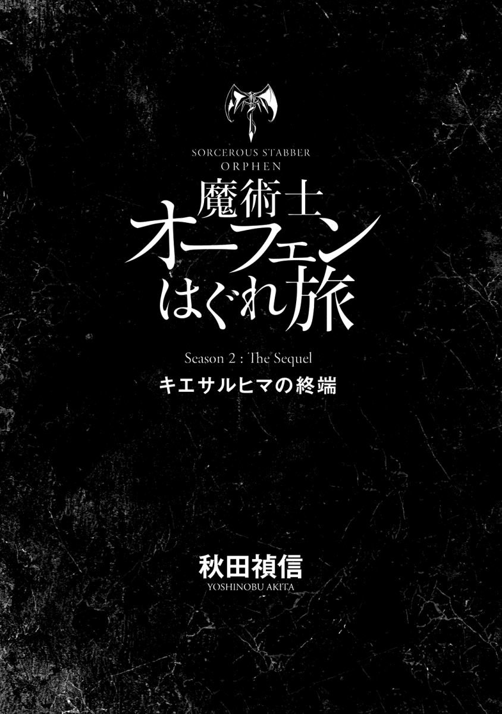
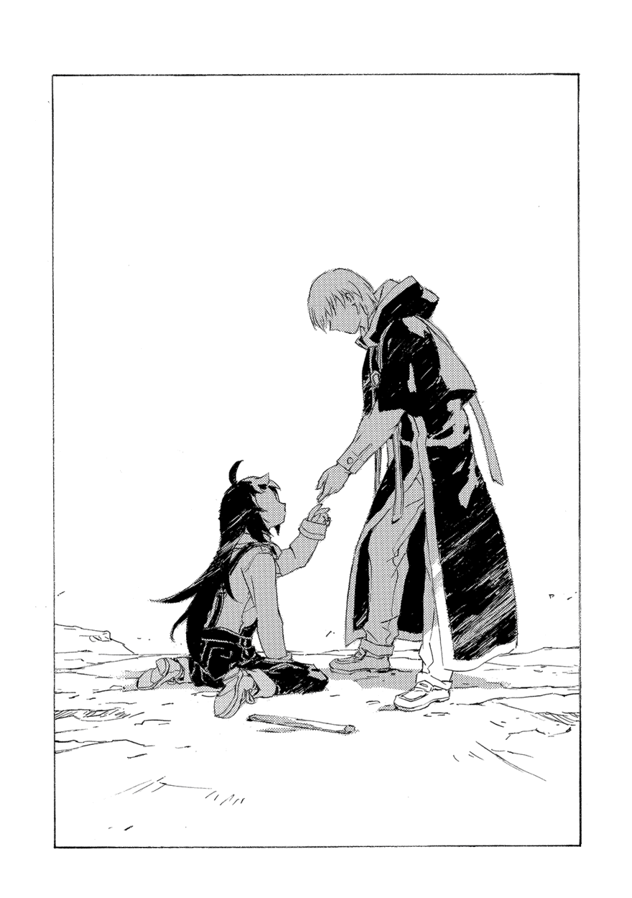
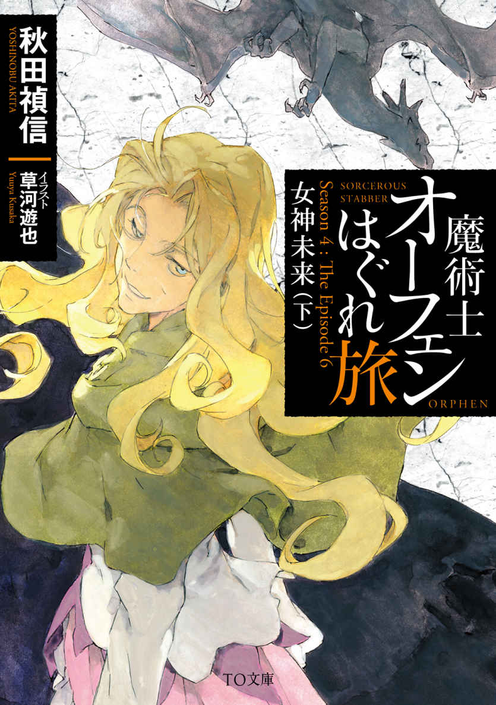
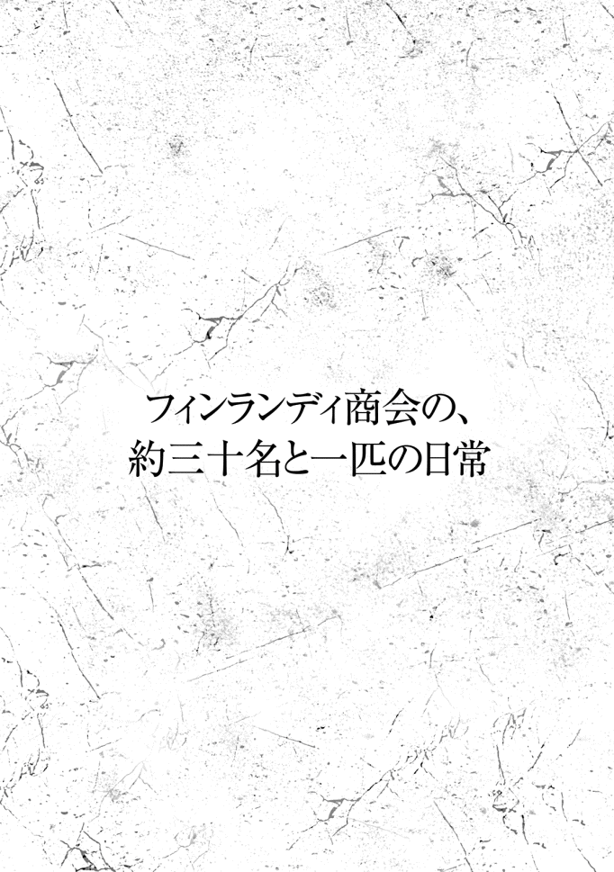

| 【合本版 第四部】魔術士オーフェンはぐれ旅 (TOブックスラノベ) | |
| 秋田禎信 | |
| TOブックス (2018) | |
※本電子書籍は「魔術士オーフェンはぐれ旅 新シリーズ」１〜10巻を１冊にまとめた合本版です。
カバーデザイン：Veia 山口美幸
CONTENTS
このコンテンツは『魔術士オーフェンはぐれ旅 新シリーズ』１〜10 巻を収録しています。

プロローグ
「クリーオウ、今ここにキリランシェロが──あ、ごめんなさい」
病室に駆け込むなり切羽詰まった様子で叫びかけたレティシャの声は、入ってきたのと同じくらい唐突に、拍子抜けしたように勢いを失った。
爆弾みたいなものである。着替えの途中の体勢でトレーナーの襟首の内側から彼女を見つめて、クリーオウはただ呆然 とするしかなかった。とりあえず首を通して左右に振り、髪を引っ張り出すと、
「う、うん。さっき来て、すぐ出て行ったけど。そこにマジクいなかったですか？」
戸口の外を指さして確認する。ついさっき、着替えのためにマジクを追い出したところだ。それからすぐにレティシャが飛び込んできたのだが、彼を素通りしてくるのも変だ。
レティシャは開けっ放しの入り口から廊下を見、かぶりを振ってみせた。
「いないけど」
「そう。じゃあ、怒って帰ったのかな。オーフェン追いかけるのには反対してたし──」
「キリランシェロを？ 追う？」
それをレティシャが言った時、クリーオウはちょうどズボンを穿 こうとうつむいていたため相手の表情は分からなかったが。声からは、はっきりとこんな気配が伝わってきていた──なにを馬鹿なことを？
着替えを終えて、クリーオウは改めてレティシャに向き直った。身支度を整えながら言い直す。
「オーフェン、今度はひとりで旅をするって言って、そこを出て行ったんです。でもそんなに急いでる様子もなかったから、追いつけるかなって」
「急いでる様子もなかった ？」
さっきから繰り返しばかりを口にする彼女に、クリーオウは逆に疑問符を浮かべた。訊 ねる。
「なにかあったんですか？」
すうっ......と、レティシャの深呼吸の音がはっきりと聞こえた。彼女は目を丸く見開いたまま、なにかに耐える仕草で両手を揉 んでいる。長い黒髪は珍しく乱れ、顔色も──申し訳ないが──ひどいものだった。あの戦闘に参加した魔術士たちの例に漏れずレティシャも負傷していた。その治療の疲れもあるのだろうし、聞くところによると戦死した魔術士の中には、彼女の友人や家族までいたらしい。そこにまたひとつ別のものが加わったのだとクリーオウは直感した。
そしてこれは勘に頼るまでもなかった。オーフェンが関係している。
クリーオウはベッドの上に丸くなって寝ている黒い子犬を抱き上げた。小さいが確かに存在するその塊を暖めるように胸に抱える。
それを見てレティシャはまたさらに虚を突かれたらしい。
「その犬は？......ちょっと待って。なんで病院に犬がいるの。クリーオウ？ なんで着替えてるの？ キリランシェロは──」
今さら思いついたように疑問を重ねていく。途中で遮って、クリーオウは答えやすいものから答えていった。ディープ・ドラゴンについては今話す必要はないだろう。
「退院しようと思って」
と、荷作りを済ませた鞄 を示す。
「気力が回復したら出て行っていいって言われてたから」
「そりゃあ、医者からしたらそうでしょうけど」
レティシャは呆 れ返ったらしい。腕組みし、滔々 と語り出すその姿は、彼女が教師だということを思い出させる。
「あなた、精神融合していたディープ・ドラゴンから無理やり引きはがされたのよ。そう簡単に回復するわけが......」
「ティッシだって銃で撃たれたのにもう歩いてるし」
「そりゃそうだけど」
（自分のことは別だと思ってるのよね、魔術士って）
今度はこっそり、こちらが呆れる番だった。とりあえず、医者が退院してもいいと言ってるのだからレティシャが止めるというのは筋違いだろう。
それでもレティシャは頑なに睨みつけてくる。それで理解できた──止めたいのは別の理由があるからだ。
背後の入り口を見やってから、レティシャはクリーオウの間近にまで進み出た。声を抑えてそっと告げてくる。
「貴族連盟は、キリランシェロを王権反逆罪で告発した。結果は有罪。プルートーやマリア先生が最後まで抵抗したけど......《十三使徒》が解体されて、プルートーも騎士位を失ってるし、彼自身も同罪に問われてるしね。どうにもできなかった。こんなに早く結審なんて──」
「王権反逆？ どうして？」
話の途中だったが、声をあげる。
神妙に、レティシャは続けた。
「天人種族の遺産を貴族連盟に無断で使用しただけで重罪なのに、その上、聖域と接触して壊滅させた罪まで負う形になってしまった。歴史上最大の罪状よ。魔術士同盟の保護を貴族連盟は認めなかった。あの子が同盟に所属していないのがばれて──」
と、匙 でも投げるように手をひらひらと回す。指をそのままこめかみに当てて、彼女は痛々しげに嘆息した。
「プルートーが激怒して法廷は大荒れ。キリランシェロはキリランシェロで法廷に一度も来なかったし。こんな時フォルテがいてくれればなんとかできたかもしれないのに、精神士の攻撃を受けて療養中だって。そのことも状況を悪くしたの。白魔術士は貴族連盟の管理下にあるから、同盟は暗殺未遂を貴族連盟によるものと目して対決姿勢を強めてる。下手すると戦争になるかもしれない」
「戦争？ 魔術士と貴族との？」
これもまた飛躍した単語のようだったが、おうむ返しに戻ってきてもレティシャは顔色も変えない。となればさほど素っ頓狂な話というわけでもないらしい。
「魔術士同盟と貴族連盟。他にも教会総本山だって大騒ぎになってるらしいし、混乱を機に独立を狙っていたアーバンラマや、トトカンタだって自給自足ができる。ドラゴン種族の聖域が失われたことで、今まで保たれていた王立治安構想が一気に弾 けてしまった。新しい体制ができるのよ。これから、猛烈な勢いでね」
顔をしかめ、レティシャはさらに声色を沈めた。
「既に貴族連盟が殺し屋を放ったなんて噂 もある。彼らは是が非でもキリランシェロを英雄にしたいんでしょうね」
「英雄に？」
「ええ。王立治安構想の殉教者にね。彼らにとっては、誰かが世界を救って死んでくれるのが一番良かった。そうすれば後腐れないものね。まあその次に良いのが、世界を救った後に救世主として君臨すること。貴族連盟がその役目を見込んでいたのはコルゴンだったんでしょうけど......彼も行方不明」
「............」
第二世界図塔の、あの後の出来事については、マジクからあらましを聞いている。マジクにとってはほとんどが理解できなかったことのようだし、実際クリーオウにも分かりそうになかったが。
はっきりしているのは領主様とロッテーシャは死んだということ。死んだのはふたりだけではない。《十三使徒》は壊滅し、数人しか生き残らなかった。聖域側の犠牲者も少なくはない。
すべてはあの装置を起動させるための犠牲だったのだ。装置によって大陸の滅亡を退散させ、完成し得ない完璧な安全──および免れ得ない確実な破滅──と引き替えにして、少なくともまっとうな可能性のある未来を手に入れるための。
ディープ・ドラゴン種族......レキもそうして自ら犠牲になった。
クリーオウは、手の中で震える塊に視線を落とした。子犬を持ち上げると唇を寄せ、息を吹きかける。こんなことで温まってくれるかどうかは分からなかったが、震えは多少収まったように思えた。胸の上に抱きかかえ、クリーオウはその生命に頬を触れさせた。
実感が込み上げてくる──自分は大きなものを喪 ったのだ。なくしたものは二度と還 ってこない。
クリーオウがそうしている間、レティシャもしばし考え込んでいたらしい。
やがて顔を上げるのは、クリーオウよりやや遅れた。
「そうね。こんな時に王都にいるよりは、退院したほうがいいかもしれない。あなたはわたしが親御さんのところに届けるから」
「帰りません」
思った時には、言葉は口から出た後だった。自分の衝動に胸がざわめくが、だからといってそれを引っ込めようとも思えない。もとより、そのつもりでいたことだ。
「帰らない？」
顔をしかめて訊ねてくるレティシャに、クリーオウはうなずいた。
「親には伝言を送ります。しばらく帰れないって。わたしはオーフェンを追います」
「なんで」
詰め寄って、レティシャは念押ししてくる。
「あの子は今や、派遣警察に追われる身よ。あなたの手に負える状況じゃない」
彼女は止めようとしていたに違いないが、クリーオウは降りかかる言葉に別の意味を見出していた。
（そうだ。その指摘は正しい）
それは分かる。以前なら、そこは無視して突っ切ったかもしれない。ほんのわずかにかもしれないが、今は違う。
レティシャ・マクレディ。彼女は大陸でも有数の、本当に強力な魔術士のひとりだ。魔術士であるというのがどういうことか、誰よりもよく知るひとりだ。これも今なら分かる。
その彼女を真正面から見返して、クリーオウは告げた。
「今のわたしに無理なら、教えてください」
「教える？」
「魔術士としての訓練をして欲しいんです」
「そんなことをしてなにが──」
なにになるのか。そうではない。クリーオウは首を左右に振った。
「なにもできないのを変えたいんです」
今、仮にオーフェンに追いつけたとしてもなんにもできない。なんの力にもなれない。
自分にはその準備ができていない。自分だけではなかった──クリーオウは、手の中の重さをもう一度感じた。このディープ・ドラゴンはもう少し大きくならなければ旅に耐えられないだろう。
レティシャは困惑しているというより、その目には既に怒りが見えた。
「一人前になるなんていうのはね、場所を選んでなるもんじゃない。わたしに教えられてなれるものなら、お母さんのところでだってなれる。どう言ったら納得してくれるの」
「一年間でいいです」
それでも退かずに、クリーオウは前に出た。
「？」
「一年間、わたしに教えてください。一年後、やっぱりあなたの許可が出なければ、家に帰ります」
「............」
黙して、レティシャは病室を見回した。
なにを見たのか。クリーオウの見る限り、彼女の視線はどこにも留まらなかった。
沈黙は決して短くない。張り詰めた空気を計算に入れても、錯覚ばかりではなく本当に長い静寂だった。ふと気づいた時にはレティシャは動きを止め、そして指を三本立ててみせた。
「条件がみっつ」
なにがいくつだろうと返事は変わらない覚悟はあるつもりだったが、クリーオウは唾を呑 んでうなずいた。感情を交えずレティシャは続ける。
「ひとつには、伝言で済まそうなんて駄目。一度ちゃんと家に帰りなさい。その上で家族に説明して承諾を得ること。あなたを預かるのなら、わたしも挨拶したいしね」
「はい」
「もうひとつは、生徒として来るのなら今度はもうお客とは扱わないからその覚悟はしておくこと。それに状況によっては、一年を待たずにあなたを家に帰すかもしれない。まあ、その公算のほうが強いでしょうね」
「はい」
答えは分かっていたのだろう。レティシャはやれやれと肩をすくめてみせた。
「みっつめは......そうね。一年後があったら、その時に言う」
「はい」
そのみっつめの条件も、もう分かっているように思えた。
そしてレティシャがなにを見回していたのか。それも理解した。彼女は空気をのぞいていたのだ。王都の、そしてこれまで封じられ、時を停めていたこの世界が移り変わろうとしている、その流れを。
（きっと色んなことが変わっていく──わたしだけじゃなく、みんな）
クリーオウはそれを感じていた。変化と戦い、かつ拒絶しないこと。それが絶望に対してあの人が世界に解き放った、ただひとつの願いだったのだから。
第一章 季節が過ぎて
キムラックの大崩壊から季節ふたつほどが過ぎただろうか。
あの日以来、一睡もしていない──まあ、それは嘘 だ。死の教師は荒涼とした平地に立って、己の痴 れ言 を認めた。まぶたが腫れぼったく感じるのはこの土地では当たり前のことで、むしろそれについては黄塵 がなくなった時から軽減されたほどだが。
（いやぁ、嘘でもねぇな）
思い直す。
眠ってなどいない。眠ろうとしても風が地面を撫 でる音だけで目が覚める。そうなれば見回りをしないと寝直すことなど思いもよらない。ただでさえこの土地ではあまりにも大勢が死んだのだ。
そして最後のひとりが死ぬまでそれは続くだろう。敗北はとうに決していた。考えてみれば数百年前から決していたのかもしれない。
サルア・ソリュードはそれについても己の痴れ言を認め、またさらに思い直した。
どこまでも荒れ果てた平原が続いていた。彩りになるような緑も川もない。ここは荒れ地キムラックにおいてもさらに荒廃した内陸地だった。大崩壊後、ここをキムラックと呼ぶ者もいなくなった。教会総本山はもはや存在していない。
目印を見つけて、彼は足を止めた。目印は誰かがそのつもりでつけたものではない。地面をえぐる爆発跡、焦げ跡、彼がちょうど踏んだ足場の砂は焼け溶け、いまだ熱を帯びている。これほどの火力は銃器でも大砲でもない。魔術だ。
あまり期待はせずに、あたりを探した。目当ての姿が目に入った時、少なからず彼は驚いた。もうとうに幸運などは忘れていた。悪運ですら縁がない。
つまるところこれもなにか不運の一部なのだろうか。投げ遣 りに、サルアは声をあげた。岩陰にうずくまる黒ずくめの男に向かって。
「いよう。噂になってるぞ。魔王オーフェン」
「そんな呼び名なのか」
彼は否定せず、身じろぎもしなかった。
（こんだけ風が吹き荒れて、おまけに死角から近づいたってのに、随分前から気づいてたってのかよ）
だが、それほど意外なことではない。サルア・ソリュードがかつて知っていたこのモグリの魔術士ですら一級の術者だった。そしてここ最近の噂からすると、どうやらそれどころではなかったというわけだ。
岩陰に潜み、黒魔術士の姿はよく分からない。休んでいるように見えた。サルアはあえてそれ以上近づかずに話を続けた。会話を邪魔する風を睨 みながら。
「ああ。目ン玉が飛び出るような賞金もかかってるしな。賞金首なら俺も同じだが、値段が違い過ぎてなんだかへこむよ。で、どうした。なにやってる」
「今日のは随分と手練 の連中でな......ヘマをした」
どうやら負傷しているらしい。サルアはつぶやいた。
「騎士隊に手練じゃない奴なんているのかね。まあいいや。俺が訊 いてるのはだ。こんな噂を耳にするからさ。魔術士排斥で知られたこのキムラックの土地で、騎士団を相手に神出鬼没に暴れ回ってる魔術士がいるらしいってな」
それはキムラック崩壊後、何か月かしてから耳に入った噂だった。
キムラックに発生したのは、最初は純然たるパニックだった。大陸から結界が失われたあの日、同じく失われたものがあった──キムラックの秩序だ。荒れ地での過酷な生活を維持するただひとつの力であった信仰は折れ、教会総本山は教徒の蜂起に遭った。そして信じられないことが起こったのだ。教主が姿を消した。
カーロッタとその配下数十名が都を脱出するのが目撃されている。教主が護衛を連れて逃亡したと考えるのが自然だった。
すべてが崩壊した。軍を持たないキムラックは、事態の沈静化のため、王都に騎士軍の出動を要請した。海路を使って軍は来た。派遣警察を含んだ最精鋭部隊が。彼らが最初にこなした任務は、魔術士同盟を支援したという咎 を着せ、教会のトップから順番に皆殺しにしていくことだった。騎士団はキムラックの混乱を煽 り立て、自らも群衆に発砲した。彼らの意図はキムラックを占拠してタフレム市への砦 とするとともに、数万のキムラック教徒を難民としてタフレム、アーバンラマ両市に殺到させることだった。
そうまで王都貴族連盟とタフレム市魔術士同盟の対立が本格化していることを見抜けなかった指導部の失策だ──《十三使徒》は解体、プルートー以下魔術士はみな《牙の塔》に逃げ込み、大陸魔術士同盟を王都に対抗する組織へと編成し直した。貴族連盟は《十三使徒》の反乱は同盟の支援を受けてのことと断定し、魔術士同盟そのものに王権反逆罪の嫌疑をかけた。
貴族連盟にとって目下の敵となるのはタフレム市だった。アーバンラマには自衛以上の戦力はなく、トトカンタ市に対しては航路だけ封じてしまえば、極寒の地マスマテュリアを越えて行軍できる軍隊などあり得ない。さらに派遣警察組織が騎士軍として王都に引き上げれば、各地の武装盗賊への抑えはなくなり、それだけで地方の治安は悪化し、各都市はその防備で手一杯になってしまう。もとより騎士軍に対抗できる軍隊など、魔術士組織以外にはないのだが......。
サルアがキムラックに戻ったのはこの頃だった。
キムラック教徒はすべてが難民になったのではなかった。長年暮らした都市を取り戻すため戦おうと、荒野に根を張ろうとする者もいた──恐らくは、騎士軍が予想したよりも多く。サルアらはそうした連中と合流し、元教師として指揮することを申し出た。彼らを即席の戦闘員に教育し、武装盗賊と交渉して（あるいは襲撃して）武器を手に入れ、食糧も確保する。そのどれもが万難排してうまくいったとは言い難い。が、なんとか形を保ってきた。
その後、しばらくしてのことだった。さっきの噂だ。騎士隊と交戦し、キムラック教徒を守る魔術士がいるという。噂は誇大化するものとはいえ、その魔術士の力量は信じがたいものだった。たったひとりでどこからともなく現れ、瞬く間に敵を無力化してしまう。しかも特筆すべきは、彼の現れた戦場にはひとりの死者も出ないというのだ。
（そういう甘っちょろい奴には心当たりがあったけどな）
長い沈黙の中、サルアは剣を持ち直した。かといって構えたわけではない。ただ汗で滑りそうだったのだ。剣の柄 に巻き付けた革紐 はとうにすり切れ、持ち主の手の皮と同様ぼろぼろだ。
剣はガラスの剣ではない──あの役立たずの剣は、キムラックを追われてほどなくして練習中に折れた。刀身の折れる音は、数週間ほど耳に残った。それは囁 き声にも聞こえ、もうお前には資格がないと言われたように思えた。しばらくして、この剣は必要がないと聞こえるようにもなった。最後には、これは兄の断末魔だ、お前をかばって死んだ男からの報いだとしか聞こえなくなった。
そのくらいの悪夢は受け入れる義理がある。そう思ったら声は消えた。すべてはままならない。そうメッチェンに語った夜、彼女は優しく微笑 んでくれた。
「みんなで戻ってきたのか？」
「ん？」
魔術士の問いかけに物思いを遮られ、サルアは聞き返した。が、すぐに思い至って言い直した。
「ああ、メッチェンはな。だが彼女はもう戦えない身体だ。オレイルは死んだ。彼を覚えてるか？」
「ああ」
いまや魔王と呼ばれる魔術士の声には、皮肉としか言いようがないほど力がなかった。
その声で地を裂き天を衝 く力をもたらす男だというのに......震え、疲れ、かすれて消え入りそうだ。微風 にすら負けそうなほどに。
「お前がここにもどってるとはな」
意外そうに言う魔術士に、サルアは苦笑した。
「教主とカーロッタがいなくなっちまえば、もどってくるさ。俺だってキムラック人だ」
「実を言うと、俺は別に遊撃が目的でここに来たんじゃない。お前を探してたんだ」
彼の言い様に、サルアは目を見開いた。
「俺だと？」
真偽を確かめようにも魔術士の姿は岩に隠れたままだ。後ろを向いた頭と肩が見えるに過ぎない。
「アーバンラマに流れた難民がどうなってるか、知ってるか？」
魔術士の言葉に首を振る。
「さあな。意外に思えるかもしんねぇが、新聞を買う余裕はなくてね。だが、まあろくなことにはなってないだろうな」
「まったくだ。アーバンラマは無論、難民を受け入れてもやっていけるような余裕はない。だがアーバンラマの事業家が、キムラック人が生き延びるための提案を持ち出してね。ただし、彼らに話をするにしても、まずはキムラック人をまとめられる人間が必要なんだ。キムラック教師は真っ先に殺されちまったから......」
「なるほど。死の教師でも構わないか」
サルアはぶらりと進み出た。話し相手の隠れる岩陰へと近づいていく。
「で、その提案ってのは？ まず俺たちが支払う対価から聞こうか」
「労働力だ。今より遥 かに劣悪で危険な労働だが、少なくとも生き延びる可能性はゼロじゃなくなる」
「良くも悪くもねぇ話だな。奴隷になれってか？ ところで今、アーバンラマは難民を受け入れる余地はないと聞いたばかりだが」
「働くのはアーバンラマでじゃない」
「ああ、どうせ戦奴隷の話だと思ってたよ」
予想通りに失望して、足を止める。が。
「いや、違う」
魔術士は否定した。
「なにが違う？ 妙な建前は言うなよ。こっちには年寄りも女も子供もいる。俺たちが難民になるのなら騎士軍はあえて追撃してこないかもしれないが、アーバンラマまでの道のりにゃ武装盗賊もうようよしてる。派遣警察隊が王都に引っ込んだからな」
「来る気があるのなら道は俺が切り開く」
話の都合の良さにかえって苛立ち、サルアは声を荒らげた。
「ひとりでか。なんでお前がそこまでするんだ。悪いが、善意なんてものを信じるにゃ何千って命は重いんでね」
「俺も、罪滅ぼしってほど図々しくはないさ。必要な報酬をもらうためだよ。キムラック人の指導者をアーバンラマに連れて行けば俺も船に乗せてもらえる。そういう約束になっている」
「船？」
「開拓者を乗せる大型船だ。アーバンラマ資産家の大多数はこの大陸に見切りをつけたが、かといって未開拓の土地にいきなり自分が移り住むつもりはないってわけだ」
なにを言っているのか。
突然、話についていけなくなった。が、その不穏当な気配は心臓が感じ取っている。眠気がすっ飛び、サルアはよろめいた。
「おい、まさか──」
「ここまで話してまさかもあるか。単純な話だ。アーバンラマは危険な開拓地に送る、モラルが高く勤勉な労働力が欲しい。既に第一陣としてキムラック難民の一部が出航してるが、まとめる人間がいないせいで、ひどい条件を呑んでしまっていてな。スポンサーの中にはしてやったりと思ってる奴もいるが、そうでないのもいる」
魔術士は空気を求めてあえぐように、一拍おいた。
一瞬、話の途中でこの男が死ぬのではないかと、サルアは悪寒に身を震わせた──あるいは安堵 してか。どちらなのかと思い直す前に、結局のところ話は続いた。
「待遇や契約についてはアーバンラマに着いてから話し合ってもらって構わないが、今のところ俺の雇い主は、開拓公社が取り交わす標準の契約を順守するところまでは了承している。あとはお前たちに、貴族連盟が決して追ってこない土地を目指して危険を冒すつもりがあるかどうかだ」
当然、否だ。
サルアは迷わなかった。
「リスクが高すぎる」
「おためごかしは言わない。全員無事になんて保証は俺にはない。だが現状はどうなんだ？ 王都は治安構想を維持するためだけにキムラックを攻撃した。奴らは本気だ。今まで棚上げしてきた敵対勢力と、ここで決着をつける気でいる」
「先祖代々住んできた土地を離れるよう説得するのは、一筋縄じゃいかねぇよ。年寄りもいるって言ったろ。それができなかったからまだここに残ってるような連中だぞ」
「もともと、人間は外の大陸から来たんだろ」
「そうだが、そんな屁理屈 ──」
「教主が先に行ったと言え」
用意していた札を事務的に開いていくように。
完成した組札の一枚を魔術士が提示するのは、サルアももちろん予想してはいた。だが、そこに開いた札に描かれているものが、予想外ではあった。
「ああん？」
「どんな手を使ったんだか、先遣隊に教主とカーロッタが紛れ込んでた。開拓団の第一陣は教主の精神支配に屈して、再び彼らの支配下にある。教主は大陸の外で新しいキムラックを築くつもりでいる──いまだに自分を始祖魔術士だと思い込んだままな」
「？」
サルアが顔をしかめると、黒魔術士は失言だと手を振った。
「まあそれはこっちのことだ。ここを離れがたい者には、教主は裏切ったんじゃなくて教徒を守る新たな都市を見つけに行ったんだということにして説得しろ」
「なら、この話はなしだ。帰ってくれ」
胸のむかつきをそのままに、口に出す。
だが、魔術士は答えずにじっと待っていた。なにも言わない。
それがなおさら腹立たしい──歯噛 みして、サルアはうめいた。分かっているのだ。この申し出がどれほど道理を、意地を踏みにじろうとも、砂を蹴って一刀両断に突き返すことはできないと。
それでも、叫ばずにはいられなかった。
「奴らは教徒を見捨てていったんだぞ！ そいつの後を追いかけて、また従わせてくださいとでも頼めってのか──」
「いいや」
黒魔術士は静かにかぶりを振った。
「カーロッタを殺して教主を取り戻し、従わせるんだ」
静かな口調だった。なんの感情も、躊躇 いもない。
ずっと感じていた違和感の正体を見極めて、サルアは面食らった。この魔術士が見せているのは、暗殺者の顔だ。
必要とあらば殺す者の目だ。
「お前......」
つぶやいたまま、言葉を失う。
と、こちらを向いた黒魔術士の浮かべた表情は、以前にも見た、照れにも似た皮肉っぽさが滲 んでいた。
「まあ、殺さずに済むならそのほうがいいが、あの女が相手じゃな。殺すつもりでかからないと危なっかしい。それに教主の寿命も、そう長くないさ。天人種族が滅んだからな」
彼はそう言ってから、大きく息をついた。
言い訳でもするように付け加えてくる。
「俺はそんなに変わったわけじゃない。少し荒 んだかもしれないが」
足下をふらつかせながら、身体を持ち上げる。
腹部を押さえて立ち上がった黒魔術士を見て、サルアはまた目を瞠 った。
「おい。お前......それは」
凄惨な傷と、指の間からこぼれ出ているその傷の中身に、思わず後退 りする。
恐れを成 したのは傷そのものに対してではない──呆然と、サルアはつぶやいた。
「さすがに死んでねぇとおかしいだろ。どういうこった」
「やられたわけじゃない。制御にしくじって自爆したんだ。この世で最強の力とかいうが、足を引っ張るばかりで到底まともには使えない代物でね」
当人は落ち着いたものだった。
が、物の道理を求めてサルアは詰め寄った。
「そんなことを訊いてるんじゃない。そのダメージで生きていられるわけが──」
「だから、制御しきれない大魔術のポカだ。危うく死ぬとこだったが、まあ今回は大丈夫だ。もう少し落ち着きさえすれば治せる」
隠れていた岩陰から、ゆっくりと歩み出てくる。
口の端にこびりついた血を唾といっしょに吐き捨ててから、彼は続けた。
「この厄介な力を返上するのに、元の持ち主に会いにいかないとならない。それが、俺が大陸の外に出たい理由だ」
それを聞く間、サルアはただなにもできず、黒魔術士を見るだけだったが──
その瞳が一瞬、悪魔のように青く輝くのを、確かに目に留めた。
◆◇◆◇◆
「イザベラ・スイートハートです」
そう名乗るのに、彼女も慣れてきたらしい。
イザベラのやや後ろに控えて、マジクは、急にそんなことを考えた。
とはいえそんな感想も、あまり筋の通った話ではない──なにも今日突然、彼女の口調から躊躇 や、よどみがなくなったわけではないのだ。
もともと相続財を持たないイザベラが家名を名乗る意味はない。それをあえて名乗る気後れもあっただろう。スイートハートは数か月前に亡くなった同僚の名前で、イザベラがそれを名乗ることにしたのはつまりそういう理由だが、思い入れについては恐らく他人には計り知れないものがあるはずだ。加えて、言うまでもないが、その同僚の生前、イザベラは彼女の名前をことあるごとに馬鹿にしていたらしい。
やがてこれらのこだわりも、自然と彼女の一部になっていったのだろう。今日突然ではない。だが、マジクが気づいたのは今日だった。
受付の魔術士は、特になにを確認するでもなくうなずいた。
「お待ちしておりました」
大陸魔術士同盟は、大陸にいる魔術士すべてを例外なく参加させる互助組織として知られる。
魔術士であるか否かは明白であるため、そこに誤解の余地はない。魔術士はすべて同胞であり、互いに忠誠心を持つこと。それを義務化している。
現実はわずかに違う。
（まあつまり、この違和感ってことだよね）
居心地の悪さを隠せず、マジクは胸中でつぶやいた。
魔術士の組織はいくつかの派閥に分かれ、暗に対立もしている。ひとつには《牙の塔》だ。大陸黒魔術の最高峰、名門の学舎である。剣にからみついた一本足のドラゴンの紋章。今、マジクの胸元にあり、そしてイザベラも身に着けているのがそれだ。
もうひとつには、貴族連盟の配下にあるものだ。宮廷魔術士《十三使徒》は消滅したため、今ここに属すのは精神士、白魔術士たちである。彼らの基地は《霧の滝》と呼ばれているが、その在処 も実態も、余人の知るところにはない。
最後には、それ以外の同盟員。
つまりこの場所だ。トトカンタ市の大陸魔術士同盟支部は最大手である。イザベラに連れられ各地の支部を回って、今ではマジクも、彼らが《塔》や《使徒》にどういった感情を持っているのか、肌で感じるようになっていた。敵対心というほど強いものではない。嫉妬ほどでもないだろう。ただ、歓迎されることもない。
受付の女魔術士は、実のところ知った顔だった──名前は覚えていないが。トトカンタ市を旅立つよりも昔、彼の家の宿屋に顔を出してきたことがある。
彼女のほうはマジクの顔を完全に忘れているか、《牙の塔》の紋章を身に着けて現れた彼と当時の彼とを結びつけられずにいるのだろう。にこりともしなかった。いや、あるいは気づいていたとしても、歓迎されないということはあり得る。
「こちらへどうぞ」
と秘書らしく、建物の奥へ案内に進む。
中は静かだった。
もとより、構成員の数が大幅に減っているのは知っていた。時勢の変化を受けて、かなりの数の魔術士がタフレム市に避難している。まだこうした支部に残っているのは──イザベラ師の言葉を借りれば──戻れない理由があるか、よほどの偏屈者かだ。
案内されたのは支部長室だった。
秘書が中に入って、来訪を伝える短い時間の間に、イザベラがこんなことをつぶやくのが耳に入った。
「口論はやめてよ......」
それはマジクに言ったのではない。それだけは分かった。では自分自身に言ったのか。それともこれから会う相手に言ったのか。
なにしろ秘書が戻ってくるまで、イザベラの横顔には微塵 の動揺も見当たらない。
中に招かれると、目についたのは部屋の殺風景さだった。支部長室というより、ただの事務室だ。赤毛の男が席を立って、来客に礼をした。
「これはこれは。ようこそ、随分と久しぶりの──」
「聖域で一緒だったことは分かってる。あなた、わたしたちの証言如何 で同盟への反逆に問われることになるのよ」
開口一番、イザベラがぴしゃりと遮る。
支部長が顔も上げない間に、彼女は一気にまくし立てた。
「無断の介入に妨害工作。明白な反逆者ユイス・コルゴンへの協力。情報の不提供。隠匿していた情報の内容によっては、全戦死者の死の責にも問われる！」
進む足も止めない。言い終わるまでには、イザベラは男の間近で顔を突き合わせていた。
赤毛の男は、ずっと顔に薄笑いを貼り付けたまま、小さく嘆息してこうつぶやいた。
「半年も経って、ようやくそんなことを言える余裕ができた？」
「一応、脅すくらいはしておかないとと思ってたのよ」
イザベラはそう言って身を退いた。
突然のことに目を丸くして立ちすくんでいる秘書を、支部長が手を振って追い払う。彼女が部屋を出て行ってから、改めて彼は向き直った。
「しっかし《塔》の遣いと支部長の会議にしちゃ、学生会みたいな顔ぶれだね。そっちは君の部下？ お互いのことは言えないけど随分と若い」
「ここが異常なのよ。《塔》はきちんと長老部が指揮を執ってる。ただ......そうね。外に出向ける魔術士はいかにも人手不足よ」
と、イザベラも身体の向きを変えてこちらを示す。
「彼はマジク。キリランシェロ君の生徒よ。今はわたしが教えてる」
「へえ。ああ、君か。有望だって聞いてる」
彼の言葉に、マジクは苦笑いして答えた。
「そうですか？」
「魔王の弟子なんて呼ばれている少年には、少なくとも、おべっかを使うくらいの価値があるってことだよ。名乗り遅れたけれどぼくは、今や魔王オーフェンと呼ばれるようになった人物とは、学生時代にライバルだった。ハーティア・アーレンフォードだ」
面白がっているのか、支部長はにやりとしてみせた。握手ではないが握手の代わりなのか、手を握るような仕草だけする。
彼についてのことはもちろん、一通りのことはイザベラから聞いてあった。もっとも彼女はライバルとは言っていなかった。親友だったと言っていた。
「それで、君たちの任務は？」
机の上に積み上げられた大量の書類を適当に押しのけて場所を作ると、ハーティアは尻を乗せた。
「魔術士をひとりでも多くタフレムに集める。わたしたちの任務はそういうことよ」
イザベラが、腕組みして答える。
ハーティアはまた笑みを浮かべた。
「ここへはぼくを引っ捕らえに？」
「できればね。それに、トトカンタはモグリの魔術士が多い土地柄だし」
彼女は気のない様子で肩を竦 めたものの、そうした任務を帯びていること自体は嘘ではない──事実、マジクはイザベラに連れられて、主にアレンハタム近辺で未登録魔術士を探し回った。
だが、ハーティアは軽く一蹴した。
「執行部が指揮を執ってるっていうのは本当のようだね。この期に及んで無駄なことをするもんだ。避難したい輩 はとっくにそうしてるさ」
それもまた事実だ。半年巡って、実際に見つけることのできた魔術士は数名に過ぎない。理由は先にも述べた通りであるし、それに正式な訓練を受けていない魔術士は、これまでまったく目につかなかったほど役に立たないか、目立って手がつけられないほど危険かのどちらかだったというのもある。
それでも、とイザベラは表情を厳しくした。
「トトカンタは比較的平穏だろうけど......タフレム近辺はそうではないのよ。本当に人手が足りないの」
「ずっと小競り合いを？」
「ええ。騎士隊がキムラックを砦にしているからね。消耗しているのはどちらも同じだけど、わたしたちのほうがきつい」
そう言うと、彼女は上着をたくし上げた。服の下の腹部には包帯が巻かれている。
「負傷のおかげで、こんな役回りよ」
「好戦派の君らしくないな、とは思ってたんだ。言っておくと、トトカンタだって無傷じゃない」
彼の言葉に、イザベラは了解の印に軽くうなずいた。
「港湾を破壊されたとか聞いたけど」
「もうおおむね復旧している。何故 だか、この街は復旧作業に慣れてるんだ」
ハーティアはしみじみと嘆息してみせた。
「問題は船だね。奪われるのを防ぐには自沈させるしかなかった。同盟はトトカンタ港から王都を強襲したいんだろうけど、足がないよ」
沈黙が訪れた。
ここまでは確認に過ぎない──イザベラは開始の合図であるかのように、話し相手とマジク、順番に目配せした。ハーティア・アーレンフォードに向けたものがどうであるかは分からないが、こちらに向けられた眼差しには、なにか苦いものが浮かんでいるのが見て取れた。
「あなたは《塔》からの最初の打診に、こう答えたそうね。戦争をしたがってる暇な連中だけ行かせる、と」
「もうちょい柔らかいニュアンスだったと思うけどね」
「再三の打診に対しては、そのまんまそう言った」
「そういやそうだっけ。まあ、機嫌の悪い時だってあるよ」
「真面目に──」
癇癪 を起こしかけた唇を噛んで閉じてから、イザベラは言い直した。
「本気で思っている？ この戦いは無益だって」
「無益なもんか。きっと誰か、儲 ける奴は儲けるだろうよ。でもぼくじゃないから、それはちょっと悔しいな」
言葉遣いは皮肉だが、彼自身、それが本当に皮肉だとは思っていないようだった。半分以上は本気だろう。
「返答の通り、この支部の大半の同盟員はタフレムに馳 せ参じただろ？ 残ってるのはぼくを含めても二十三人。死ぬのが惜しい、若い連中ばかりだ」
「そうね。とりわけ強力な術者が二十三人ね」
イザベラは即座に言葉を割り込ませた。指を立てて振りながら、出会い頭にしたように、また彼に近づいていく。
「タフレムに帰参した者いわく、支部内であなたが言い含めて子飼いにしてる連中とか。それにあなたは、先だっての港湾襲撃にいち早く対応して、その功績を利用して市行政にも顔を利かせようとしている」
「市長のほうが、ぼくらを利用しようとしてるんだよ。トトカンタは常備軍を持たないからね」
露骨にとぼけようとするハーティアを、彼女は逃がさなかった。
あとずさりしようとした彼の鼻先に指を突き付け、自分の顔も近づけていく。
ほとんど囁くように発したイザベラの声だが、その鋭さのおかげでマジクも聞き取れた。
「どうでもいいと思ってる人間の行動じゃあない」
「......ぼくはそれほど悪人かな」
支部長ハーティアは向き合った元《十三使徒》に、小声でそう言った。
鼻先と鼻先の間に指を一本置いたまま、イザベラが目を閉じる。
再びまぶたを開けた時、彼女の瞳はこう言っていた──他人から見てどう思えるか、本当に聞きたいの？
恐らく、イザベラは感じているものに一番近い答えを口に出したのだろう。しかし、途中で切り上げた。
「悪人になれない奴じゃあないわね。でも」
と言い止 して、仰け反るように顔を離す。頭突きでもするのかとマジクは疑ったが、そんなことはなくそのまま背を向けて立ち去った。
「まあいいわ。話はこれまで」
「ありがたい。弾劾は怖くて」
胸を撫で下ろすハーティアに、イザベラはまたくるりと振り向いた。
「ああ、あとひとつ」
「なに？」
彼女は、ふっと、難しげに眉根を寄せた。
「情報通と見込んで訊くわね。〝サンクタム〟という名前に心当たりはある？」
「ないな。重要な名前なのか？」
ハーティアはあっさりと否定して、また書類整理に戻ろうとしている。
イザベラが話を続けた。
「分からない。意味なんてないかも。フォルテ教師が掴 んだところによると、貴族連盟がこの人物に物騒な指令を出している。でもそれ以上が分からない」
「フォルテに分からないのなら、ぼくにも分からないさ」
「指令内容は、魔王オーフェンの抹殺よ」
それを聞いて、書類を繰るハーティアの手が一瞬止まるのを、マジクは見て取った。部屋の入り口にいたマジクに見えたのだから、イザベラも見ていただろう。
「あいつが殺されるような相手なら、ぼくにもどうにもできないな」
支部長はまた軽口で紛らわすと、手元のページに視線を落とした。その仕草は、ただそれだけのものとも言えるが、表情を隠そうとしたとも受け取れる。
知らないというのも嘘ではないだろう──が、なにか見当はつけた。そんなところだろうか。
マジクとイザベラが顔を見交わしていると、ハーティアは書類越しにこう言ってきた。
「プルートー師にはこう伝えてくれ。ぼくをここに残しておくことは、ひとつの選択肢だ。あえて狭めたいのなら招集に応じると」
「............」
イザベラは答えず、ただ了解の印に首肯してみせた。
マジクにも合図して、退出する。扉の外には例の秘書がずっと控えていたらしい。外まで案内しようと、廊下で待っていた。
だが秘書が扉が閉める前に、イザベラがそれを制止した。つぶやく。
「わたしたちには、選択肢がどれくらいあると思う？」
支部長室のハーティアは、もうすっかり仕事に戻って視線もくれない。が、しばし黙した後、こう答えてきた。
「さあね。どれだけ行動の選択肢があったとしても、生きるか死ぬかってことならふたつしかないわけだ。しかもそれは選択肢とは言い難いな」
「どうして？」
「生きたかろうが死にたかろうが、選びたいほうを選べるわけじゃないからね」
支部に宿泊するつもりはなかったため、宿を取る必要があった。
となれば当然、自分の家だった。帰るのは久しぶりだったものの、なにも変わっていない。客がいないのも相変わらずだった。
ひとつ違っていたのは、暗黒街に知れ渡った悪名故に隠遁 生活をしていたアイリス〝ブラディ・バース〟リン、つまり母親が戻っていたことだった──厳密にはこの宿は彼女の所有物なのだから、驚くのも筋違いだが。彼女はあっけらかんと山暮らしに飽きたなどと語り、魔術士の紋章を身に着けた息子の姿を見ても別段驚いた様子もなかった。
「ずっと大人しくしていたわね。なにか言い出すんじゃないかって警戒してたんだけど」
客室に案内すると、くたびれ果てたように寝台に寝転がって、イザベラはそんなことを言ってきた。
マジクは少し躊躇したものの、正直に告げた。
「本音を言えば、トトカンタが中立状態でいてくれるのはありがたいです」
ここが家だということはもちろん言ってある。
彼女はただ、そうねとうなずいた。
「でも、誰かひとりくらい魔術士を連れて帰れないと、長老部の視線がね──あなた、モグリの魔術士に心当たりない？」
「そういえばありますけど......あれは魔術士だったのかな」
「魔術士かどうかなんて、曖昧になりようがないでしょ」
「それが、曖昧なんです。どのみちもう一年以上前にアーバンラマに帰ってしまったんで、行方は分かりませんが」
「アーバンラマの門は閉ざされてる。連絡も取れない」
ぐったりと、腕で顔を覆って彼女はうめいた。
翌朝、何故かイザベラはボロボロの格好で、食堂の梁 に宙づりにされていた。
なにがあったのか（恐る恐る）質問しても、彼女は一晩中悪夢にでもうなされたように蒼白 な顔で、一切答えようとしなかった。
変にご満悦な母と、頭を抱えた父とを残して、マジクはイザベラとともにトトカンタを後にした。
無益だとしても、魔術士探しは続けなければならない任務だった──生きることを選択するためには。
第二章 旅に出る時
配給を待ついつもの列の中に、知らない顔があることにクリーオウは気づいた。
無論、他の全員を見知っているわけでもない──この配給所だけでも何百人と並んでいる難民全員を把握してはいなかった。その老婦人を初めて見ると感じたのは、彼女の落ち着かなげな態度であったり、自分の後ろに並んでいる寡黙な男に時折向ける不安な眼差 しであったり、つまりはそうしたもののせいだったかもしれない。
食事は、椀 に注がれる野菜粥 とパンの塊といった簡単なものだ。配給所の大鍋から並んでいる人々に、係の手によって配給される。
クリーオウはさっきまでその配給係をしていたが、交代したところだった。エプロンを畳んで鞄にしまい込み、キャンプを一回りしてから帰ろうと思っている。
なんとはなしに気になって、クリーオウは列に近づいていった。その老婦人の元に。
最も古い者は、この難民キャンプに一年近く前からいる──大多数は半年前ほどにやって来た。タフレム市当局が難民の宿営に用意できたのはこの郊外の土地と、衣類、テント、いくつかの配給所設備だ。簡易の住宅も建てられつつあるが、まだまだ足りない。老人や子供のいる家族から優先して割り当てているものの、まだ半分にも行き渡っていない。難民の数が多すぎた。
難民キャンプに《塔》の敷地を一部開放する案もあったが、魔術士とキムラック人双方の感情も鑑みて、実現していない。ボランティアに魔術士の姿はなかった。あれば、厄介事も生んだだろう。なければ、厄介事は生まない。そして無論、他のなにも生まない。
どのみち魔術士らは、北方に布陣する騎士軍との小競り合いや折衝で、余力もなかった。難民の中には、タフレムでの労働を望む者もいる。問題となるのはやはり、長年の対立による感情のしこりだ。頑固な者は双方にいる。
クリーオウが列に近づくと、何人かが目を伏せるか、逸 らすのが見えた。彼らの中には、ボランティアに魔術士のスパイが紛れ込んで食事に毒を入れていると信じる者もいる。逆に顔見知りで、会釈する者もいた。
老婦人はクリーオウが近づいても気づかなかったようだった。そわそわしているが、こちらに反応はない。気を引くために、クリーオウは彼女の腕に軽く触れた。
「大丈夫ですよ」
話しかける。
「全員に行き渡る分はありますし、ここは安全です」
老婦人はなにも言わない。こちらを見もしない。
後ろについている男が、口髭 の中でぼそりと、つぶやいた。
「聞こえないらしい。なにも」
「え？」
「話しかけてもなにも聞かない。魔術士と騎士の戦闘に巻き込まれたのを保護されたって話だが」
男は表情を動かさず、淡々と説明した。なにを言えばいいのか分からず、クリーオウが黙していると、彼は首を左右に振った。
「本当は聞こえてるんじゃないかと思うがな。昨日の夜、どこかのテントで子供が歌ってるのを聞いて、泣いていた」
「............」
「平気だ。俺が見ておくよ」
クリーオウは礼を言って、列から離れた。
今日がなんの日なのかレティシャは忘れているのではないか。
そんなことを疑うほど、変哲のない一日だった。いつも通りだ──訓練をして、その合間に家事を手伝い（家事のできないレティシャを〝手伝う〟のは、つまり一切合切全部やってから、レティシャが余計な手出しをした分まで後片付けするということだが）、キムラック難民キャンプのボランティアに参加する。用事を済ませて落ち着けるのは日が没してからだ。
部屋の中を見回して、クリーオウは強張 った腰を伸ばした。頭に乗せていたディープ・ドラゴンも、ベッドの横に置いてある、クッションを詰めた籠の中に置く。レキは一日中ずっとそうしていたように、まだ眠っていた。
その籠のさらに隣に、荷物がまとめてある。
この屋敷に住み着いて、その生活にも慣れた。名残惜しくないと言えば嘘になる──筋を解 そうとして肩に手をやり、一年前にばっさり切り落とした髪がその手に触れるくらいの長さになっていたことに気づく。
なにかが変わっただろうか。ふと胸をよぎる独り言に、溜息 をつく。自分が目指した変化がなんだったのかも、実のところよく分からない......。
この広い屋敷で、人の気配を感じ取るようになったことは変化なのだろう。廊下を進んでくる静かな足音を察して、クリーオウは寝台に腰を下ろしたまま扉を見つめた。あと何歩。何秒。
見込みをつけた瞬間に、ちょうど扉がノックされた。
「ちょっといい？」
レティシャの声だ──これも、いくつかの理由から分かっていたことだった。同じ屋敷で生活するパットは静かになんて歩かないし、魔術士至上主義のティフィスはわざわざ〝無能力者〟になど会いに来ない。
それにつまり、今日がなんの日なのか、クリーオウは覚えていたからだ。声をあげる。
「どうぞ、もちろん」
もちろんは余計だったろうかと思いながら立ち上がる。扉に鍵はかかっていないが、開けに行く。
「呼べば、わたしが行ったのに」
ドアを開けつつ心配顔でクリーオウがつぶやくと、レティシャは苦笑してみせた。
「いつも言ってるけど、階段も登れないってわけじゃないのよ」
と、大きくなったお腹 をさすりながら。
とはいえ無論、言うほど身軽なわけもない。臨月も近い身体を揺すってレティシャが部屋の入り口をくぐるのを見守る。そのまま彼女をソファーまで連れて行ってから、クリーオウは改めてレティシャに向き直った。
クリーオウは座らなかった。レティシャの前に立っている。
「そんなに格式張らなくてもいいのよ」
彼女はそう言ったが、クリーオウは首を軽く左右に振った。レティシャもそれ以上は勧めてこない。
「それで、一年が経 ったわけね」
「はい」
さすがに落ち着かないものを覚えて、クリーオウは胃の前で手を揉んだ。
レティシャはゆっくりと話を続ける。
「誤算がいくつか。まずわたしは、あなたのお母さんが認めるわけがないと思っていたし、あなたが一年間我慢できるとも思っていなかった」
彼女はこちらの反応を待とうとしたのだろう。しかしクリーオウがただ見つめるだけと察して、先を進めた。
「でも分かっていたこともある。あなた、わたしが今ここでなにを言おうと行くつもりなんでしょう」
「はい」
「正直なのは好感」
言葉に反して、レティシャの笑みは引きつっているように見えた。
「でも不安は不安よ。治安は悪化する一方だし。こうでなければわたしもついていくところなんだけど......」
こうとは、無論、妊娠のことだろう。
レティシャの妊娠は突然のことだったが、驚いたのは周りだけだったようだ。端で見て分かる状態になるまで、当人に自覚がなかったはずもあるまいが、四か月目になってようやく彼女が周囲にした説明とは『妊娠した。戦線には参加できない』だけだった。
クリーオウも驚かなかったといえば嘘になる。話を聞いてあっけに取られたクリーオウに、レティシャは、やや困ったようにこう言った。付き合いが長かったから、わたしたちの間に子供はできないって思ってた。なんでそんな風に思ったのか、考えてみれば変な話だけれど。
クリーオウは、こう言った。
「でも、嬉 しいんでしょう？」
レティシャは笑った。彼女を初めて親しく感じたのは、その時だ。
突然の兵役拒否に《塔》執行部は大いに憤慨したらしい──が、だからといってどうできるわけでもなく、自分の生徒に加えて《塔》でも代理教師をするということで話がついた。
父親の名前については、彼女は特に語らなかったが、態度から明々白々なことだった。学生の頃から、ついたり離れたりを繰り返してきたという話だが。
とにかく、とレティシャはかぶりを振った。
「あなたに同行させられる人手もない。本当にひとりで行くつもり？」
「ここにいる間、あの人のこともいろいろ聞きました。十五歳の時から、お姉さんを探して大陸中をひとりで旅していたって」
クリーオウの話に、レティシャは物寂しく笑ってみせた。
「それが良い結果をもたらしたとも言い難い。あの子は後悔してたでしょう？」
「でも、前に進みました」
動じることなく、クリーオウはそう告げた。
長い息を吐いて、レティシャが天井を見上げる──。
「ここしばらくの間、宿営地で、キムラック難民をよく見て回ってたわね。なにか情報はあった？」
相手はこちらを見ていなかったが、クリーオウはうなずいた。
「あの人がキムラック人に接触したっていうのは、確かなことみたいです」
「例の噂は？」
「本当だと思います」
クリーオウが神妙にうなずくと、レティシャも同意した。
「アーバンラマの、外大陸開拓計画ね。少なくともあてもなしに探し回らなくて済むわけだけど、道は険しいわよ。海路が封じられている以上、騎士隊のいるキムラックを越えるしかない」
唱えるように言ってから、レティシャは視線を戻した。ソファーの肘置きに頬杖 をついて、含んだような眼差しを見せる。
「掴んでいる情報は、それだけじゃないわね？」
「いいえ......」
嘘を答えたが、バレるのは分かっていた。
レティシャは愁眉を寄せると、体型の許せる範囲で身を乗り出した。囁くように言う。
「わたしだったら、その方法は取らない。危険が大きすぎる」
「............」
クリーオウが沈黙している間に、彼女は続けた。
「わたしも、それは彼だと思う。それならなおさら、正体が露見した今、彼は維持しないとならない仮面もなくなって、本来の凶暴な──」
「彼にも会いたいんです。友達のことを話したいから」
一息に告げる。
いかにも馬鹿げたことを言った時に、常に感じるひやりとした悪寒──それが背中を撫でるのを感じつつ、レティシャの顔を見つめ続ける。
「歪 んだものを正して回るつもり？」
そう問いかける彼女の瞳は、悪寒をなぞり直すように冷ややかだった。
もちろん、そうだろう。自分は今、彼女が一番懸念しているところを、そうと分かって踏み抜いたのだから。
クリーオウは一歩退いて、眠るディープ・ドラゴンのほうを向きやった。
いまだ一度も目を開けていない深淵の森狼 は、今も変わらない。一年前より大きくはなったし、丈夫にもなったろう。鳴くことはなく、口を開くことすらないこの獣が、吠 えるのを見たことがある。
いいや。と、クリーオウは声に出さずに自分の返事を確かめた。歪みを直そうなどと大それたことを思っているわけではない。
そうではない。ただ、自ら直ろうとしている歪みは助けを求めて声をあげる。それを信じる理由が自分にはある。と思っている。
逃げるわけではなかったが視線を戻さないまま、クリーオウはつぶやいた。
「いろいろと、難しいのは分かっています──分かっているつもりで、きっとまだ足りないんだろうってことも」
「名前で呼ばなくなったわね」
突然、レティシャは話を変えた。
思わず目をぱちくりして見やると、彼女は根負けしたように笑っていた。
「あの子のことをよ。なんだかわたしもつられて、名前で呼びづらくなった」
「......ここでは、わたしの知ってる名前じゃないから」
「そうかしら。今じゃもう、魔王ってほうが知れ渡っちゃって。わたしの弟の名前は忘れられてしまった」
言うなり、ソファーから立ち上がる。
クリーオウが慌てて手を貸すと、その手を取って、レティシャは言った。
「行きなさい。考えてみたら、わたしは止めるばかりで、誰も送り出したことがなかった──止められないと分かってる相手までもね」
「？」
見上げる。が、レティシャはそれ以上なにも言わなかった。
翌朝に、発 つことにした。
申し合わせたわけではないのに見送りが集まったのは、レティシャが声をかけていたのだろう。
大勢ではない──ここでの生活で知るようになったイザベラという魔術士に、その生徒になっているマジク。フォルテは少し遅れるらしい。ティフィスはおざなりな別れのやり取りをすると、さっさと屋敷に戻ってしまった。パットもそれに従った。
あとはもちろん、レティシャだ。彼女は首を傾 げるような仕草で、クリーオウの準備した旅装、鞄、顔を順番に見ていって、最後に頭の上に乗せているディープ・ドラゴンを撫でつけた。
他に持っていく物は、剣だ。クリーオウは鞘 に入った長剣を肩にかけた。一年前は、郊外の旅でもこんなものを持ち歩くのは奇異の目で見られたものだが──今ではおかしいとも思われない。武器はすっかり品薄だという。
しばらくぶりに会うマジクは、こちらを見て、怪訝 そうに顔をしかめた。
「背、伸びた？」
真顔で、そんなことを言ってくる。クリーオウはうめいた。
「普通そういうのって、わたしがあんたに言うもんじゃないの？ まあちょっと伸びたかもね」
目算で比べてみると、同じくらいだった背丈が、わずかに変わったようではある。
見比べるためにしばらく見つめ合っていたが、やがてマジクがどこか寂しく微笑んでいることに気づいた。つぶやいてくる。
「ぼくもいずれ、追いかけるよ」
「分かった」
クリーオウは同意したが──
彼の物言いたげな眼差しが変わらないのを察して、促した。
「なにかあるの？」
「本当はまだ話せないことだけど......」
マジクは小声で囁いて、耳元に顔を近づけてきた。
「やっぱり言っておくよ。ぼくはトトカンタに戻る」
ただの里帰りという話でもなかろう。こんな折、内緒話は暗いものばかりだ。ひやりとした気配を覚えながら、クリーオウは囁き返した。
「あそこは安全なんでしょう？」
少し離れて、相手の顔色を探る。マジクは落ち着いていたが、やや青ざめて見えた。
「状況が変わったんだ。理由は分からないけどマスマテュリアが氷解した。地人自治領がどちら側につくかによっては、厄介なことになる」
「なら、わたしも──」
「大丈夫。トトカンタの同盟支部が残ってるし、アレンハタムからの支援も受けられるからトトカンタは丸腰じゃない。おかげでこれは好機にもなるかもしれないんだ」
彼は落ち着かせようとしてか、両手を広げてみせた。
「この状況で困るのは王都の側だ。行軍可能なルートが突然現れたのはどちらにとっても同じだけど、最悪の事態でもトトカンタの防備ができればタフレムは挟撃されない。逆に貴族連盟は、どうあってもキムラックから騎士団の一部を呼び戻して対応するしかない」
つまり、キムラック側が手薄になるということでもある。
追い風といえば追い風だ。わずかなものかもしれないが。
もっとも、トトカンタの安全が守られるならの話だ。だが不安の先回りをするように、マジクは話を続けた。
「状況が変われば今よりもっと厭戦 ムードが高まる。停戦の目が出てくるよ。大丈夫。イザベラ教師とぼくも行って、トトカンタを守る。お母さんやお姉さんも」
真剣な顔をして話すマジクに、クリーオウはうつむいた。
「ごめん。頼むわね」
「こっちこそ、頼むよ」
彼はそう言って、遠い目を見せた。どこを見ているわけでもないだろうが、空を見ている。
「ぼくはまだ旅立てる気がしないから」
（旅立てる......時か）
クリーオウは答えずに、胸の内で噛み締めた。
レティシャが声をあげるのが聞こえた。見ると、フォルテが来たらしい──《塔》でも最高位のこの魔術士はレティシャに軽く触れ、イザベラの軽口に眉を上げてから、こちらに近づいてきた。靴箱ほどの大きさの木箱を差し出して、口を開く。
「マリア教師とプルートー師からの餞別 を預かってきた。まあ、わたしも含めてだ」
「そ、そんな人たちから？」
いきなり出てきた名前に、さすがに気後れする。
確かに知らないことはないが、無論、ほとんど話したこともない相手だ。覚えられているとすら思っていなかった。
が、フォルテは笑みを浮かべる。
「プルートー師は、わたしなどより君のほうを買ってるような口ぶりだよ。あの戦闘に参加した者については、特別なんだろう」
箱を受け取って、訝 しむ──これから発とうという時に渡されるにしては、随分と嵩張 る上、かなり重さがある。
かけてある紐を解いて、蓋を開ける。汚れた布にくるまれた塊がひとつ入っていた。その形から、クリーオウは理解した。
包みを手に取る。フォルテがそれを見守りながら、箱だけ取り戻した。
クリーオウが包みを剥がすと、案の定、見覚えのある武器が姿を現す。
一言呪文を唱えて空箱を手の中に消し去り、フォルテはその武器の名前を口にした。
「〝ヘイルストーム〟だ。紛失した試作品とは違うものだが。小口径で射程も短いものの、紛れもない狙撃拳銃として設計されている」
狙撃拳銃は、いわゆる格闘戦ではなく、数メートルの距離で人間を殺傷することを目的に開発され、そして完成を見た武器だった。
最新鋭の武装として騎士隊はこれを使用している。かつては当たり前とされていた、魔術士の対非魔術士への優位性を、完全にとはいかずとも大いに崩しているという。
「弾 数は八発だ。予備の弾薬はないし、整備の道具も入れていない。使わずに済むに越したことはないが、騎士軍のことを考えるとな。必要になるかもしれない。扱い方は、訓練していただろう」
「......知ってたんですか」
クリーオウはつぶやいた。
そんなことはどうでもいいとばかりに、フォルテは続ける──もっとも、内心で憤慨していたとしても顔色が変わらないのがこの人物の癖ではある。
「ティッシの尻ぬぐいで備品名簿の改ざんをしていたのはわたしだ」
そう言って、話を終えた。
「整備できないのだから水に濡 らすな。濡らしたら、もう使うな」
彼らしいといえば彼らしい、はなむけの言葉だ。
〝あの人〟のことはなにも言わない。実のところこの一年、フォルテ教師の口からその話題が出てくることは一度もなかったくらいだ。しかし情報の面で最も支援してくれたのも彼である。
下がるフォルテと入れ替わりに、レティシャが進み出て近寄ってきた。
なにがあったわけではない。ただ、世話になったこの魔術士の瞳を見て、クリーオウは唐突に瞬間を悟った。
（今だ）
この時が来た。
旅立つ時が。
喜びでも恐れでもない。ただそれを迎え入れる。
レティシャが口を開いた。
「みっつめの条件はね」
と、唇に苦笑を滲ませて、少しだけ中断した。
「あいつ、会ったらぶん殴っておいて。できないっていうのなら、家に帰りなさい」
「分かってます」
クリーオウも笑みを返して、手に持ったままだった包みを鞄に押し込んだ。
鞄を肩に背負うと、それが旅立ちの準備だった。一年間かかったものの、最後の準備はただこれだけだ──旅立つと決めること。
「赤ちゃん、見たかったです」
レティシャのお腹を見下ろしてそう告げると、彼女もまた同じ膨らみを見て表情を緩めた。抱擁するように手で撫でる。
「全部終わってから見に来てくれればいい。そのほうがわたしも、てんてこまいになってるところを見られずに済むし」
荷物は、心配していたほど重くはなかった。
タフレム市を出て、難民キャンプに立ち寄って顔見知りに別れを告げてから先に進む。
様子を確かめながら進むため、何日かをかけた。以前──一年以上前──に通った道とは違うし、同じ場所を通ったとしても様子はまったく違ったろう。まだ騎士軍はタフレム近郊まで至っていないものの、小競り合いは毎日のように起こっているという。
「ひとけがないと、距離感も分かんなくなってくるわね」
郊外の荒れた土地を眺めて、クリーオウはつぶやいた。
独り言ではない。頭に乗せたままのディープ・ドラゴンを見上げる。
「本当に北に進んでんのかな......ちょっと休憩しようか」
道の脇にあった、岩の陰に腰を下ろす。
地図を広げてみるものの、これまでと同じく──〝多分正しいような気がする〟ことが確認できるだけだ。
「地図なんて結局、信じる気がないなら意味ないのよね」
少し口を尖 らせて、地図帳を鞄にもどす。
携行食を取り出して、少し口に入れてから水を含んだ。一息ついて立ち上がる。じきに日が暮れるだろうが、今日はもう少し進むつもりだった。
タフレムを出てから雨は降っていない。それが救いだった。しかしもうすっかり秋も暮れて、日を追うごとに気温は下がっていくだろう。
一時間ほど歩いて、廃屋を見つけた。戦闘跡こそないが、不穏な情勢に街へと引き上げた誰かの家だろう。家具はひとつも残っていないが、壁にはまだその跡が残っていた。
幸い、まだ扉の鍵は生きている。屋内に誰もいないことを確かめて、クリーオウは元は居間だったらしい部屋に荷物を置いた。久々に、多少は気を緩められそうだった。
毛布を取り出して、その上にディープ・ドラゴンを寝かせる。また道を確かめようと地図を出そうとしたところで、クリーオウはその手を止めた。
足音だ。外。まだ近くはない──が、遠いはずもない。
ひとりやふたりではない。クリーオウは身を隠して窓に近寄り、外をのぞいた。
十人ほどの集団が、この廃屋に近づいてきている。全員男。それも、武装している。
（騎士だ）
汚れたガラス越しにだが、彼らの武器が山賊などのものでないことは一目で分かった。そして普通、魔術士はあんな人数では行動しない。
彼らが近づいてくるにつれ、会話も聞こえてきた。
「そこは廃屋だろう？」
「ああ。でも変だろう。戸が閉まってるのは」
「前から閉まってなかったか？」
「どうだったかな......多分、開いてた」
クリーオウは舌打ちした。窓から離れて鞄の中に毛布とディープ・ドラゴンをいっしょに入れて、肩に担ぐ。
ちらと窓を見やる。彼らがなにをするかは予想がつく。まず、窓から中をのぞくだろう。不審があれば踏み込んでくる。逃げ場はない──裏口がどこにあるか分からないし、それが彼らの死角にある保証はない。
天井に梁がある。クリーオウは荷物を肩に引っ掛けたまま跳び上がると、梁に手をかけて、逆上がりの要領で身体を持ち上げた。梁の上に横たわって息を潜める。
窓に、ぼんやりとだが人影が映った。中をのぞいている。
「誰かいるか？」
「いや......」
クリーオウは視線だけ動かして、戸口のほうを見やった。自分は鍵をかけていただろうか。記憶が覚束 ない。鍵をかけていたら──アウトだ。彼らは武装を整え、戸を破って入ってくるだろう。まったくの大間抜け、迂闊 だった。まだ街中の気分が抜けていない。
ばたん！ と音を立てて戸が開いた。
騎士がひとり、身体半分ほどを乗り入れて、中を見回す。
ただじっと、クリーオウはそれを見定めた。手はゆっくりと、鞄の中を探って硬い塊に触れる。
〝弾数は八発だ〟
フォルテの言葉が耳に蘇 った。
百発百中でも足りない。それに、言うまでもなく──拳銃は最大でも最小でも敵を殺戮 しかできない武器だ。
殺す？
そんなことが可能かどうか。想像するのも馬鹿らしい。
それでも、彼らは彼女を苦もなく殺すだろう。安直に想像し得る、最も残虐な方法で。彼らがとりわけ残虐であるから──ではない。そんなことではまったくない。それよりももっと恐ろしい。彼らにはそれが仕事だからだ。敵、あるいは不審者に脅威を与えることが。
頭上から騎士を見下ろして、クリーオウは拳銃の包みを取り出した。彼が、ちらとでも上を見上げたら終わりだ。少しの物音、わずかな気配、ちょっとした臭いでも嗅ぎつければ。そしてあるいは、本当にただの気紛れででも。
彼が気づいた素振りを見せれば、自分は間違いなく発砲する。
弾が当たるかどうかは分からないし、見届けることもあるまい。銃声を聞いた他の連中が一斉に踏み込んできて、クリーオウを蜂の巣にする。運が良ければ即死だ。悪ければ、難民たちと同じ経験をすることになるだろう。
だが。
「誰もいないぞ」
騎士はそう言うと、出て行った。
彼らの気配が完全に消え去るまで、クリーオウはその場からまったく動かなかった──指一本、髪一筋すら。やがて梁から飛び降りて、荷物をまとめ直して廃屋から抜け出す。外はもうすっかり暗くなっていた。
（もうこんなところまで、騎士軍が）
息を止め、クリーオウは足早に駆け続けた。
こんな土地でまだ商売が続けられるということは、まともな酒場ではあるまい。
それは想像がついた。タフレム市からさらに離れ、武装盗賊の縄張りだ。騎士軍の支配地にも近づいているため、騎士たちもまた新しい客層ではあるだろう。
離れた場所からその酒場を眺めながら、クリーオウは、汚れた髪を掻 き上げた。まだ店に近づいてはいないが、遠く身を潜めてもいない。ボロボロの看板が軒下にぶら下がっているが、屋号のようなものはすっかり掠 れて読み取れない。
最後に、クリーオウは身の回りを確かめた。鞄は左手にぶら下げて、いつでも落とせる。剣は腰だ──これはなにより目立つ武器。拳銃はズボンのポケットに押し込んで隠し持っている。騎士のように、左手で取り出せる位置にしまった。眠ったままのディープ・ドラゴンには鞄に入っていてもらおうかとも思ったが、いざという時には鞄を捨てることもあり得るため、懐に入れた。
意を決して歩き出す。
酒場に入るまではなにもなかった。反吐 と体臭の入り交じった酸い悪臭に慣れるため、入り口で立ち止まる。店の中は思ったよりも大勢がひしめき合っていた。
混んでいたのは、かえって幸いだったかもしれない──クリーオウが店に入っても、入り口近くの連中は目を丸くしたものの、店内の大半は彼女のことに気づいていない。
なるべく目立たないように、酔っぱらいの間を通り抜けていく。
目的の人物は奥にいる──というのは直感だった。店内の奥まった暗がり。これだけ客がいるのに、そこだけ人払いされたようにぽっかり空いているスペースを見つけて、立ち止まる。
それまで騒がしかった店内が、急に静まったことに、クリーオウは気づいた。
彼女が見つめているのは、ひとりの男だった。こちらには背中を向けている。というより、ほとんど床に倒れ込んでいる。みすぼらしい格好は汚物にまみれて、髪もぼさぼさ、完全に酔いつぶれている。
死んでいるのかもしれない。
そんなことはまったく信じていなかったが、それでもクリーオウはそう思った。
「......そいつになにか用かい？」
客のひとりが、背後から声をかけてくる。
クリーオウはうなずいた。
「ええ」
「なら、そいつが何者なのか教えてくんねぇかな。金もねぇくせにずっと居座ってやがってよ」
ちらと、肩越しに見やる。赤ら顔の大男だった。客だと思ったが、どうやら店の人間だったらしい。ただし酔っぱらっていることには違いなかったが。
「なら、追い出せばいいでしょ」
そうしたら、こんなところに入らなくても良かったのに──と胸中で付け加える。
男は、別の客たちと顔を見合わせて、苦笑いした。
「そうしようとしたさ。最初はな」
「またもどってきた？」
「いいや。まったく動かせねぇんだ──そこから」
彼は恐らく、クリーオウが仰天するのを期待したのだろう。
が、無論クリーオウはまったく驚かなかった。
店の客たちを一望する。彼らが余計な手出しをしてこないことを、目の色で確認した。明らかに彼らは、ここに倒れている男を恐れている。
剣の柄に手をかけて、クリーオウは前に進み出た。
「〝サンクタム〟」
呼びかける。
「......わたしを覚えてる？」
なんの反応もない。
変化もない。
クリーオウは剣を抜いた。
「おい！」
さっきの大男だ。赤い鼻をさらに赤くして、
「ここじゃ刃傷 沙汰は──」
その目立つ鼻先に、クリーオウは切っ先を突き付けて黙らせた。
「こいつを連れ出して欲しいでしょ？」
「あ......ああ」
「なら黙っていて。あと、道を空けてちょうだい」
出口を視線で示す。
男たちは呆気 に取られながらも、左右に分かれて道を作った。
クリーオウはゆっくりと、倒れている男──サンクタムに向き直った。
「わたしを覚えてる？」
繰り返す。
サンクタムには意識すら回復させた様子もなかったが、そのまま続けた。
「わたしは覚えてるわよ......エド」
床に倒れたまま、身体を動かすこともなく、その男はただ目だけを見開いた。
たったそれだけの動作だ。視点も定まらず、ぼんやりと虚空を彷徨 っている。
「ロッテーシャ......？」
男は、うめいた。長く酩酊 していた者らしい、朦朧 とした声音で。
彼が飛び起きるか、隠し持った武器でも取り出すか、あるいは他のなにをしようとしたにせよ、脳の下した命令が手足に伝わったようには見えない。
それでもクリーオウは剣を下げなかった。
男の目がようやく自分を見つける──いや、少なくともこちらを向きはした。理解できたのかどうかは定かではない。取り憑 かれたように彼は繰り返した。
「ロッテーシャ......」
似てるだろうか？
そんなことをクリーオウは自問した。
そうかもしれない。ともあれ、一年前は。だがそれは、彼らが似ていたからだ。正反対だが似ていた。この男と、あの人は。
彼が起き上がるのを待つ、じりじりと無駄に長い時間を、クリーオウは待ち受けた。呼吸の許される隙をなんとか探す時間とも言えたし、平衡を失った酔っぱらいに見切りをつけるかどうか葛藤する時間とも言えた。ただ実際には、どちらも論外だった──酒場の悪臭はとにかくひどいものであったし、自分の旅には、この酔っぱらいがどうしても必要だったからだ。
クリーオウはその男の一挙手一投足を見守った。ぞっとしたなにかが背筋を這 っていく。床に倒れていた時には、彼は間違いなく酩酊状態だった。だが立ち上がってこちらを見るその眼差しは、もう正気に戻っている。
一歩、クリーオウは後退りした。
やや遅れて、男は前に進み出た。
その一瞬で、クリーオウは少々混乱気味に、いくつかのことを同時に思い浮かべた──〝わたしだったら、その方法は取らない〟〝使わずに済むに越したことはないが〟〝ぼくもいずれ、追いかけるよ〟〝まさかティッシの言ってたぶん殴っとけって、こいつのことじゃないわよね？〟
背を向けて、全速力で出口に走る。
無数の罵声、いや悲鳴が聞こえた。
幸い、外に逃げるのを邪魔はされなかった。半分壊れた扉に突進して、薄暮の迫る荒野へと飛び出す。
その時に、自分が剣を持っていないことに気がついた。
「............？」
言葉もない。いつ、どのタイミングで手の中から剣がなくなったのかまったく理解できていなかった。
しかも、もうひとつ失策を犯した。そんな疑問にいちいち付き合って、足を止めてしまったのだ。
無我夢中で、クリーオウは横に跳んだ。身をかわしつつ、背後を見やる──自分の剣が振り下ろされ、空間を裂くのが見えた。
つまずいたが、転ばずに済んだ。クリーオウは片足でなんとか勢いを受け止めて、剣を携えた男へと向き直った。
ポケットから拳銃を取り出す。左手に構えた銃を標的に向け、引き金を引いた。銃声が鼓膜を打ち、反動が肘を折る。弾丸がどこにいったかは知らない。
どのみち男は既にその場所にいなかった。クリーオウは左右を見回した──どこにもいない。一瞬で見失った。
「当てる確信のない時には──」
トン、と背中になにかが触れた。
男は淡々と話を続ける。
「撃たないことだ」
自分に触れているものがなにか、クリーオウはしばらく考えて、確信に至った。背面の、ちょうど心臓の位置だ。剣の切っ先が──痛みから想像するに──少なくとも一センチほどは突き刺さっている。
わざと止めているのは分かっていた。傷の痛みに腱 を引きつらせながら、クリーオウは両手を挙げた。酒場の扉が揺れているのが見える。野次馬のひとりも顔を出してこないのは奇妙だった。中に二十人はいたはずだ。それが全員、店の床に伸 されているのだろうか？ あの一瞬だけで？
かなり耐え難いはずの背中の痛みですら、気の遠い夢現 の錯覚に思えてくる。
卒倒しかかっている──と認めて、クリーオウはなんとか意識を繋 ぎ止めようと、唇を噛んだ。
ここまでは特に計算外のことではない。敵 わないのは分かっていた。こうまで手も足も出ないのはともかくとして。
「ええと」
探るつもりで、言葉を選ぶ。
「正直、あなたのこと、なんて呼べばいいのやら」
「さっき呼んだろう」
男は、面白くもなさそうに言ってきた。
それでも話には応じてくれた──クリーオウはつぶやいた。
「サンクタム？」
「他にも呼んだ」
「エド・サンクタムってところね......わたしにとっては」
声が震える。
痛みがすぐに消えることもなかったが、剣が足下に放られた。クリーオウはそれを拾い上げ、振り向いた。
さっきと同じく、見た場所にその男の姿はないのではないか。そう思ったが、彼はいた。なんのことはない姿勢で突っ立って、クリーオウを見下ろしていた。
「どうでもいい。俺にとっては、俺は俺だ」
エド・サンクタムが、半眼でそうつぶやくのが聞こえた。
まったく予想のつかないものを計画に組み入れるというのは、いかにも馬鹿げたことだったろう。
それはレティシャに言われるまでもなくクリーオウにも分かっていたことだったが、なら、どうできたっていうの？ とも思う。
やりようなら、なんとでもなったでしょうよ──やはりレティシャの声が聞こえたような気がして、クリーオウはなんとなく首が竦まるのを感じた。レティシャの〝客扱いしない〟は文字通り、脅し文句でもなんでもなかった。
焚 き火を囲んで向かい合っているエドを前にして、クリーオウはいくつかのことを確認した。ひとつには、少なくとも殺されはしなかったということ。もうひとつは、現状、殺される気配はないということ。
あとのことはそれに比べれば、些細 なことだった──果たして彼が協力してくれるのかどうかも含めて。彼についてはレティシャからも聞かされて、それなりの知識を得た。貴族連盟に使われるフリーエージェント。あの人と同じ師にも学んで、こと人を殺害するにかけては至上と目される。
「覚えているのかと言ったな」
話しかけられて、クリーオウはぎょっと背筋を伸ばした。
まさか彼から口を開くとは思ってもいなかった。エドは倒れた朽ち木に腰掛け、じっと火を眺めている。
クリーオウは咄嗟 になにか言おうとしたものの、声を出す準備ができていなかった。咳払 いのような音を漏らしつつ、とにかくうなずく。
エドは火に視線を注いだままだ。うなずいたのも見えていなかったはずだ。それでも話を続けた。返事などどうでも良かったのだろう。
「お前は確か、ディープ・ドラゴンの使い魔だった」
「ええ」
胸に鈍痛を覚え、つぶやく。
エドはようやく視線を上げた。
「奴らは絶滅した。それはなんだ？」
「ディープ・ドラゴンよ」
脇に置いた毛布の上で丸まっている黒い塊を示して、クリーオウは告げた。
だが、エドは即座に否定した。
「違うはずだ」
「どうして？」
言い返しながら、意識は手の届くところにある剣と、ポケットの拳銃に向かう──怯 えのせいだ、とクリーオウは認めた。まだ言い争いにもなっていない。にも拘 らず、危機を感じずにいられない。
（ロッテーシャは、よくこんなのと一緒にいたわよね）
そんなことを思う。
それを知ってか知らずか、エドは愛想笑いのひとつもなく、ただ続ける。
「奴らは絶滅したからだ」
言い方に我慢ならず、クリーオウはうめいた。
「あなたがなにを信じようと別にいいけど、奴らなんて言わないで。レキたちは、大陸を守るために犠牲になって──」
「奴らというのは」
エドの冷たい声が簡単に言葉を遮る。
「ドラゴン種族すべてのことだ。結界が失われれば終わりだということを、奴らは知っていた。どうせ終わりだということを知っていたなら、犠牲にさほどの意味があるか？」
彼の声に感情はなかったが、嘲弄の気配は無視のしようもない。
クリーオウはディープ・ドラゴンの背中に指を置いた。
「終わってない」
炎の向こうにある男の顔を睨みつける。
「現に、なにも終わってない。わたしたちは生きてるし、この子もここにいる」
「いつ終わるか分からない。明日かもしれない」
「そうよ？ 当たり前でしょう？」
「............」
彼は笑みを浮かべたわけではなかったろうが、唇の傷跡が、それを思わせる形にわずかに動いた。
あるいは、単に苛 ついているようにも見える。目の前の男を怒らせるのがどういうことか、本能が警告を発してくる。が、クリーオウは踏み込んだ。
「あなたは、まるで間違ってる」
「まるで？」
「なにもかも、ロッテーシャのことも、領主様のことも──全部よ！」
火が弾けた。
実際に焚き火が吹き飛んだのだろうが、見えた火花は、眼球の中に発生したものだろうか。クリーオウは身体が投げ出されるのを感じた。遅れて、横面を殴られたのだと理解する。転倒するほど強く。
転がって、起き上がる。踏み越えてきたエドに蹴散らされて焚き火は四散していたが、灯 りは残っていた。先ほどまでクリーオウの座っていた場所にエドが立ち、そして──寝ているディープ・ドラゴンの背中にブーツの踵 を乗せている。
「やめて！」
悲鳴をあげる。
エドはただ冷淡に、つぶやいた。
「立場を弁 えてから大口は叩くべきだな」
「やめて......」
拳銃を手に取ろうとするが、指が震えて掴めない。脳震盪 を起こしているのか、自分が今起きているのか寝転がっているのかもよく分からなかった。
だが、エドがゆっくりと足をどけるのはなんとか見えた──息をつく。吐きそうになっていると気づいた。
エドはそのまま爪先で蹴って薪を集めると元の場所に帰っていった。クリーオウは這うようにしてディープ・ドラゴンに取り縋 った。抱きかかえて彼と向き合う。
殺し屋は先ほどよりもくつろいでいる様子だった。朽ち木にもたれかかって、遠くを見ている。
「あの当時──」
まるで何十年も昔の話であるような口調だった。
「俺は、やるべきことをやろうとしていた。超越を」
「超越？」
随分と唐突な言葉に、訊く。
彼は明らかに無視したが、話した内容は、返答を兼ねていた。
「歴史を飛び越えて未来を託されたチャイルドマン・パウダーフィールド......人造人間であるアルマゲストに、ロッテーシャ。御立派な俗物、プルートーを入れてやってもいい。この連中をも踏み越え、最終の超人に。魔王に」
こちらを見据え、彼は話を続けた。
「誰もがそれを望んだろう。超人となった俺は永遠にこの大陸を守るはずだった」
と──決して叫び出すほど強くはないが、声を大きくする。
「いったい誰がこの混乱を望んだ？ 戦争を？ 変化を？ 奴は超越に怖 じ気 づいて、なにも負わずに投げ出した。その結果がこれだ」
そう言って、彼は口を閉じた。
反論を促している......のだろうが、クリーオウはなにも言わなかった。
やがて彼は、明らかに侮蔑 の視線を送ってから、締めくくる。
「......なにも言わないのか。ロッテーシャと同じだな」
つまり、ロッテーシャのことはこうして支配したのだ──直感的に、クリーオウは感じ取った。
思わず、つぶやく。
「あなたは怖がってる」
そして相手を見やった。
理解した事柄に怒りを感じたのとは関係ない──それはまた別の話だ。
エドもまたこちらを見ている。まだ殴りに来ていない。
（来るなら来ればいい）
ディープ・ドラゴンを抱えて、身を屈 める。殴られるのは防げないかもしれないが、今度は守る。
言うべきことを、クリーオウは頭の中でまとめた。結局のところこれは、この情報を聞かされてからずっと疑問に思っていたことだった──どこに行けばエド・サンクタムに会えるのか。
「あの人を怖がってる。だから、命令を受けたのにそれもしないで、こんなところにいたのよ」
「俺を動揺させたいのだろうが、違うな」
箒 で埃 でも払うように、彼はさっと手を振ってみせた。
「見当違いな話だ。奴を恐れる理由はひとつもない」
「本当に？」
じゃあなにを怖がってるの？
目に力を込めて、突き返す。
今度は、さっきほどは通じなかった。
殺し屋は、空を見上げた。砂塵の影が通り過ぎる夜空を。
「奴は魔王ではないのだから、殺せる」
力みのない小さなつぶやきが、彼の確信を物語っていた。
第三章 咎 の隔たり
アーバンラマは、工房都市として知られている。
資産家と労働者の街でもある──自衛のための軍備を持つ、唯一の都市という特徴もある。王都に最も近く、そして王都に対して最も露骨に自治を宣言した都市でもある。
港を備えているのは、大陸の主立った都市はどれも同じだ。キムラック、マスマテュリアと南北の両方に難所があり、また中央部はフェンリルの森に隔てられるというキエサルヒマの地形では、海路がなければ各都市の行き来はままならない。陸上では数週間から数か月かかる移送を、海路は数日で行う。
海からの風は、船のない閑散とした港をそのまま通り抜けた。港に船がない理由はただひとつ──半年前から出払っているためだ。そして恐らく、そのすべての船が戻っては来ないだろう。
一見、その風に吹き飛ばされそうにも見える小柄な女が、長い髪を吹き上げられ、その間だけ目を閉じた。
再びまぶたを開けた彼女の瞳に、険しくもないがその逆もない、冷ややかなきらめきが一瞬宿るのが見えた。転がるガラス玉が光明を通り過ぎるように、しばし含んではすぐ消える、そんな光だったが。
「海なんて、見るたびに思うわね」
コートのポケットから手を出して、顔にかかった髪を払う。
「こっちからじゃ絶対に手が届かないとこに居座って、いいご身分だって」
「そこに手を届かせようってんだ。どっちが傲慢か分かったもんじゃない」
オーフェンはその女を横目で見やって、告げた──顔まで向けなかったのは、手元の書類を読んでいたからだ。
彼女、ドロシー・マギー・ハウザーはこの街の資産家のひとりだ。最も有力な資産家ではないが、今日では、アーバンラマで最も有名な資産家ではある。アーバンラマの総力を挙げた、第二次新大陸開拓事業の総監督として。
相変わらずの仏頂面で、彼女はつぶやいた。
「でも、いいご身分よ」
実のところ、彼女の言うことのほうが正しいのかもしれない、とは思っていた。結局は手など届かないかもしれないのだから。
潮風が戯れに、報告書に目を通すのを邪魔する。もとより読まずとも想像のつく内容ではあった。それでも確認してドロシーに返す。
「議会の三分の一か」
「ええ」
相当に危険な数字ではあるはずだが、ドロシーは淡々とつぶやいた。
「魔術士同盟と連絡を取り、キムラックを解放して、王都包囲を提案するべきだと言い出してる。今のところ議案に名乗りをあげているのは三分の一だけれど、実際の決議ではもっと増えるでしょうね」
「どうして？」
「決議は来月。来月までに魔術士同盟がもう一手、騎士軍を不利に追い込めば勝ち目が増える。このタイミングでタフレムに荷担するのは、一番リスクがなく旨味 があるのは否定できない」
「その場合、開拓計画に影響は？」
オーフェンが訊ねると、やはり彼女は他人事のような口調で答えてきた。
「スポンサーが手を引けば、なにもかも終わり」
「対策は？」
「議会工作はしているけれど、問題は、こちらに大義名分がないこと。〝戦争は悪い。だから反対〟じゃ説得力がね──開拓が侵略にならないって道義的な根拠もないし、安全面でも参戦よりましかどうか分からない」
そう言って、ドロシーは髪をかき上げた──彼女は自覚がないようだが、煙草を止 めてから加わった癖のひとつだ。手持ちぶさたなのだろう。
港には船がないが、人出はごった返していた。
港湾の倉庫にはひっきりなしに荷が出入りしている。開拓の物資を集めているのだ。船に積み込む内訳と順番が──すっかり混乱した計画書によって──変更されるたび、倉庫内の整理は一からやり直しになる。
人の流れをしばらく眺めてから、オーフェンは口を開いた。
「魔術士同盟の脅威を強調するか」
「脅威？」
「大敵のキムラックと、貴族連盟が同時に力を失えば、魔術士同盟は大陸の覇権を握る。参戦は検討してもいいが、その後のことを考えれば、なんらかのアドバンテージを確保しておかないとアーバンラマは自治を奪われかねない。開拓計画は外交のカードになり得る──こんなとこだろ」
ドロシーが、ワインを転がすような顔つきで黙り込む。話を吟味しているのだろう。やがて、うなずいてみせた。
「いいでしょ。参戦反対派の議員に話を流してみる」
アーバンラマの議会は、資本家らの代理戦争の場でもある。というより、そうでしかないとも言える。資本家は自らが議席に就くことなく議会に影響力を行使する。無論、あまり健全な状態とも言い難いが──皮肉なことに、大陸で最も実用的で迅速な政治にもなっている。
彼女は嘆息した。
「今週はこれで全部潰れそうね......あんたは？」
肩を竦めて、オーフェンは告げた。
「変わらないさ。どこも満遍なく遅れてる」
ドロシーはぽつりとつぶやいてみせた。
「遅れてるだけじゃないわね」
そんな愚痴のようなことを彼女が言うのは珍しい。
オーフェンは、苦笑した。
「ああ。計画自体、穴だらけだ」
彼女は特に取り合わず、手を振って話を掃き捨てた。ボスとしては使い走りの愚痴に付き合う必要はないということだろう。
「まあそんなところね。呼び出す時には遣いを寄越して。ひとまず屋敷に戻るから」
と、くるりと背を向けて──しかし立ち去りかけてから、やり残したことを思い出したようにまた振り向くと、すすすと近寄ってくる。
オーフェンがじとりと見ている前で、彼女は急に相好を崩して身体をくねらせた。
「だって、おうちでマイリトルスイートパンプキンが待ってるもの」
「それ聞くと、なにを言えばいいのか分からなくなるんだ。頼むから子供は野菜以外の呼び名で呼んでくれ」
懇願するが、ドロシーは知ったことでもない風で、仏頂面に戻った。
「あんたも見に来る？」
「さんざん見せられた」
「また見に来る？」
「見ない、と遠回しに言ってるんだ」
「変ね......見ないなんて」
ぶつぶつ言いながらも、ようやく去っていく。
オーフェンはしばらく額を押さえていたものの、潮風はひとまず偏頭痛を拭う程度には心地よかった。もう少し浸っていたくはあったのだが、実際のところ、そうしている暇がないのも本当ではある。
目を凝らして、港湾倉庫に人影を探す。
見つけてから、オーフェンは歩き出した。荷車を押す人混みをすり抜け、数が合う合わないで口論している輪の真ん中を突っ切っていく。掴み合いが始まっている最中を、まるでなにもないようにオーフェンが通り抜けていくのを見て、みな一瞬きょとんとしたようだったが、後ろ手に手を振ってやると適当に納得したのか、また諍 いを再開した。
一ブロックほど行って、港湾警備隊の制服とすれ違う。乱闘を制すべく、警笛がかき鳴らされるのを背後に聞きながら、オーフェンはようやく目当ての人物に声をかけた。
だが明らかに、コンスタンス・マギー・フェイズはそれどころではなかったようだ──厳 つい荷役に取り囲まれ、頭を抱えてわめき散らしている。
「だっかっらっ！ そのことはもーこの前決着ついたでしょぉ!? 積み込みはエイブラハムが先！ ええ、もう不公平でもなんでも順番決めないとどうにもなんないでしょ──え？ 帳簿と合わないって、またそれ荷物のほうが数え間違えてんじゃないの？ 横流し？ 調査中。裁判？ 毎週何千件も同じような案件を法廷に持ち込んだって、結果なんて変わりゃしないって──」
ひとりまたひとりと順番に怒鳴っていくのだが、その間にもひっきりなしに誰それが問題を持ち込み、荷役の人数も一向に減ろうとしない。
「奥さんが浮気!? あのね、そんなことわたしに言いつけてどうしようってゆーの。ああ、そっちの人、さっきの質問なんだったっけ。ええと、そうね。え、労災？ あのね、酔っぱらって喧嘩 した分なんて補償できるわけないでしょ！」
押し寄せる苦情にすっかり混乱しながら答えている。というより、答えながらどんどん混乱している。
周囲の男たちにぐるぐると対応しながら、彼女の声は次第に甲高く支離滅裂になっていった。
「だからあんにゃごぼれあっちがろくすっぽりえんて明日からどうにくきェーーーーキェーーー！」
最終的に、気味悪がって逃げ出した荷役らの背中に靴を投げつけてから、コンスタンスはぜぇはぁと息をついて汗を拭った。髪型も崩れてボロボロになっている。
「えーと」
オーフェンは、改めて声をかけた。
「もういいか？」
「オッケェ」
あまり無事とも言い難いしゃがれ声で、コンスタンスが親指を立てる。
「なんの用？」
投げた靴を拾いに片足で跳ねていく彼女に、オーフェンは答えた。
「訓練の成績表、お前んとこに回ってるんだろ？」
「ああ、あれね。こっち。オフィス」
奇声のおかげでよほど喉がおかしいのか、言葉も途切れ途切れだった。
歩き出したコンスタンスの後についていきながら、オーフェンはあたりの喧噪 に目をやった。
「しかし、相変わらずだなここは」
「まったくよ。警備主任なんていって、すっかり苦情受付係だし」
「その分だと、評価は芳しくなかったか？」
「まあね。最低でも二週間は訓練延長ってことになると思う」
くたびれきった仕草でかぶりを振る。
コンスタンスのオフィスは、港湾警備隊詰め所を間借りしている。
彼女の立場は複雑といえば複雑だ。派遣警察を退職したコンスタンスは、現在、姉が総監督を務める開拓事業委員会の警備主任として雇われている。ただ現状、部下といえるものはいない。港湾警備隊を丸ごと借り受けてなんとか体裁を保っているものの、彼らは開拓には参加しないし、船にも乗り込まない契約だ。
最終的に、警備隊は開拓民から編成しないとならない。そのためにキムラック難民から人員を選抜して訓練を続けている──その評価を、関係者が回覧しているわけだ。
鐘が鳴った。
騒いでいた港湾スタッフが、いったん動きを止める──鐘を鳴らしているのは物見櫓 の見張り役だ。それが示しているのは、船の接近。
オーフェンも足を止めて、遠く水平線を見やった。ドロシーの言葉が脳裏をよぎる。実際の水平線よりは遥かに近い場所に、白い帆が見えた。蒸気貨物船の巨体は波間にあっても安定している。
確か、機関を使わず帆の実験航海だったはずだ。二十四時間の航路を廻って、どうやら無事に戻ってきたらしい。なにごともなければ一時間ほどで入港するだろう。
外洋船の建造もまた、日程を大幅にずれ込んだ──が、計画全体としてみればマシな部類だ。試験も滞りなく終わりつつある。幸運なことではあるが、要因としては釈然としない。つまりは、思ってもみない形で人材に恵まれたわけだが。
「なんであいつが船長なんだ」
ぼやくと、コンスタンスもまた船のほうを見やった。今さらなにをと呆れ顔になって言ってくる。
「だって、候補者十二人の誰よりも航海に詳しいんだもの。なんでか知らないけど」
外洋航海については古文書を繙 いて得た知識を試すしかない。伝承によれば、人間種族は三百年前に外界からキエサルヒマ大陸へと漂着したのだ。
そして今、その逆を試そうとしている。
開拓の第一陣は、キエサルヒマ沿岸を行き来することしか考えられていない輸送船で旅立っていった。被害も少なくなかったはずだ。というより、全滅していないという確証などまったくない。開拓民を置いて折り返し戻ってくるはずだった船が一隻も帰還していないため、状況は甚だ不明だった。今のところ難破の兆候が見られないという以上の情報もない。
オーフェンはしばし目を凝らした。船はアーバンラマの技術と資産を大量につぎ込んだものだが、ドロシーの言う〝いいご身分〟の遥か水平線に比べれば、いかにもちっぽけで頼りない。船は数百人を乗せて外洋を目指し、新大陸とキエサルヒマの間を、耐えられる限り往復することが見込まれている。
コンスタンスに礼をする警備隊員に会釈を返しながら、詰め所に入っていく。彼女のオフィスは二階にあった。ここには何度か来ているが、来るたびに様子が違う──先週にはなかった紙箱が部屋いっぱい、天井まで積み上げられているのを見上げて、オーフェンは訊ねた。
「なんだこれ」
ぐったりと、コンスタンスがうめく。
「あんた、自分の用事覚えてないの？」
「分かってたけど、認めたくなかったんだ」
試しに箱のひとつを手で押してみるが、見かけ倒しでもなく、ぎっしりと書類束が詰まっているようだ。
「これ全部か？」
「百八十九人分の訓練報告書、健康診断書、適性所見、レポート、これまでの全答案、あとまあ、なんやかんや。なんのつもりか請求書まで入ってたけど」
彼女は言いながら椅子を回して、腰を下ろした。
自分だけでなく他人もショックを受けたのを見て、多少は気分を回復させたらしい。机の上で腕を組んで笑みを浮かべた。
「全部見るのに三日かかったわよ、わたしは」
「俺は十分で済むな」
あっさりとオーフェンが告げると、コンスタンスの顔から余裕が消えた。
「......なんで？」
「どんなだったか、お前から聞くだけでいいだろ」
「............」
コンスタンスはしばし沈黙して、窓の外を見てから、また視線を戻し、急に叫び出した。
「ずるいーッ！」
「やかましい！」
椅子を蹴って立ち上がったコンスタンスを押し返す。
「いちいち全員仲良く時間を潰してられるか。概要は作ってるんだろ？」
「うー......あとでもったいつけて出してやろうと思ってたのに」
不満たらたら、彼女は引き出しから数枚の書類を取り出した。
評定は成績表を一度見ただけで下すわけではないのだから、全体の概要は必ず作ることになる。まあ、かくて書類は嵩を増すとも言えるわけだが──ともあれオーフェンはそれを受け取って、ざっと目を通した。
読み終えて、つぶやく。
「なんでちゃんとできてんだ？」
「ほほほ。そりゃーもう、本気を出せばこの程度の──」
「なんでだ？」
調子に乗ったコンスタンスに重ねて訊くと、彼女はそのまま、ぐったりとうなだれた。
「ダンナにやってもらったの......」
「正直に言やいいんだ」
彼女の夫は、マギー姉妹の父の興したカーマディ＆フレデリック工房の技術者で、今回の開拓計画にも技師として参加する。何度か話したことはあるが生真面目な男で、不眠不休の激務の中で他人のフォローまでこなす鉄人ぶりでもある。
書類を返して、オーフェンは嘆息した。
「二週間の延長か。指導員を増やしても変わらないか？」
「増員は三か月前から申請してるけど、増やそうにも資格者がいないのよ。街の外からは呼べないし」
コンスタンスも溜息に同調して、続ける。
「問題は警備隊だけじゃなくてね。技術者の不足のほうが深刻よ。監督者もね。こっちでの難民保護と並行しないとならないし」
「どっちも大事業だからな」
「そうね。でも、モチベーションは高まってる。姉さんと義兄さんがかなりのスポンサーを締め上げ、ええと、説得したから、大した額じゃないけど訓練中の難民にもお給料を払えてるし──」
と、彼女は言いよどんだ。視線を横にずらして言い終える。
「難民のほとんどが、新天地に意欲を持ってる」
「なにか言いたげだな？」
オーフェンは静かに躊躇を指摘した。
コンスタンスが苦笑いするのを、じっと見つめる。だからだろう。彼女は誤魔化さなかった。答える。
「カウンセラーが言うのよ。彼らの士気が高いのは望ましいけれど、なんだかまるで洗脳みたいだって」
「......彼らが教会総本山にいたから、洗脳に馴染 みやすいって？」
「違う？」
今度は彼女に見られる番だった。オーフェンはそのまま告げた。
「今さらの話だな。自由意思なんて裁量次第だ。俺たちは選択の余地のないところに餌を撒 いた。他人の生き方をこっちの都合で変えようとしている。洗脳といや洗脳さ」
「良かれとは言ってくれないの？」
「言わない。だが、他にやりようもないしな。行動は止めない」
部屋の大半を占めている箱の山が、嫌でも目につく。
ここにあるのは警備隊の候補者として選抜された百八十九人の書類だ。開拓民全体からしてみればこれでも一部に過ぎない。
彼ら全員分の人生、その重みを感じると言ったならば、嘘だ──その重量を本当の意味で実感するのは個人には不可能だろう。
だから騙 そうと思えば騙せる。死地に送ることだってできる。できてしまう。政治とは、制度とはそういうものではある。
「騙してるのは言われるまでもない。ろくな先乗り調査もなしに連れて行くんだ」
「せめて、先発隊からの連絡があればねー」
机の上のペーパーウエイトを転がして、コンスタンスがぼやく。
開拓計画がこうも時間に追われているのは単純な理由だ──予算が限られているからである。準備に時間をかければかけるほど経費は膨れ上がり、そして早期になんらかの結果が出なければスポンサーが逃げる。
政治的な理由もある。キエサルヒマ大陸の混乱が収まれば、その勝者が誰であれ、民間の行う開拓計画を阻害しようとするだろう。民間の手で開拓が成功すれば為政者にとっては致命傷となる。現在、貴族連盟なり魔術士同盟なりが大々的な妨害を仕掛けてこないのは、どちらにもその余力がないからに過ぎない。あるいは、開拓が成功する可能性が低いから気にしていないという当たり前の理由かもしれないが。
オーフェンはかぶりを振った。
「どうにもならないことを気に病んでも仕方ないさ。できる範囲でやるだけだ」
「そのできる範囲っていうのが問題なんだけどね」
「まあ、そうかな」
頭を掻いて、オーフェンは部屋を後にした。
難民キャンプおよび訓練場は、以前破壊された旧市街にある。
もともと復興途中で大陸が紛争状態になり放置されていたものを、さらに難民のため急ごしらえで施設を整えることになり、街並みは混沌 としていた。旧市街を追われた貧困層が、保護されている難民と同等の待遇を求めて蜂起したりと、アーバンラマ全体の治安も決して良いものではない。開拓という大事業が進む中、横領や横流しといった汚職も絶えず、武装盗賊並みに凶暴化した盗賊団も現れた。
自治軍による鎮圧も二度、行われている。犠牲者は既に三十名を超え、市街はなにごともないように見えても、緊張が続いていた。
訓練場では、十数名のキムラック難民が講義を受けているのが見えた。恐らく、元神殿兵だったのではないかと思える──コンスタンスのオフィスに積まれた箱のどこかに、彼らの評価も入っているのだろう。
「前回の評定でなにが失点になったか、それを分かってる人はどれだけいる？」
もともとは建物の壁だったらしい瓦礫 を黒板代わりにして、白墨で記した図解を指し示し、指導員が問いを投げる。
座って話を聞いているうち何人かが手を挙げ、手前のひとりを指導員が指名した。
恐らく、自信がなかったのか。彼の返答はくぐもってよく聞き取れなかった。だが指導員は納得したようで、うなずいた。
「そうね。簡単に言えば、警備隊の役割は犯罪を取り締まることではなくて、開拓団を守ることにある。それに伴って警察権に制限があるし、取るべき行動にも影響する。ちょっとした違いのようだけれど、失点のほとんどがこの根っこの部分から来てたとわたしは見ている──」
試験のおさらいはしばらく続きそうな様子だったため、オーフェンは少し離れた場所で木にもたれて時間を待った。
コンスタンスの言う通り、警備隊の候補者たちは熱意も能力もある。やはり問題は時間と指導者の不足だった。訓練用具や教材もまったく足りない。
やがて指導員が訓練生らに自主運動を指示するのを見てから、オーフェンは物陰から進み出た。指導員も、こちらには気づいていたのだろう。その場で待っている。
再会して、彼女の姿の様変わりには多少驚かざるを得なかった──といっても、もともと知っていたのが革鎧 に帯剣した姿で、偏りがある。剣を捨てた彼女は、どちらかといえば緩いスカートのような格好のほうが好みだったらしい。髪もかなり伸びていた。表情も穏やかになったのではないかと思う。
声が通るほどの距離になって、メッチェン・アミックはぎこちなく右腕を振ってみせた。負傷した腕は、なんとか動くようには回復したらしい。しかし白墨を持っているのは左手だ──どうしても筋力が戻らなかったという話だった。
彼女の浮かべている口元の苦笑いで、用事については見当がついていると知れた。オーフェンはそのまま告げた。
「プランについて話したい。一時間後、いいか？」
この件については〝プラン〟としか呼ばない。逆に言えば、ただのプランといえばその件だ。
メッチェンはうなずいた。
「了解」
オーフェンも首肯を返すと、目立たないようその場を立ち去った。魔術士の姿はキムラック難民の反発を招く恐れがある。
一時間後というのは文字通りの一時間後だ。過密スケジュールの中、短い時間を合わせて無数のミーティングを行う。
〝プラン〟はその中でも特殊な会議だった。
新市街、旅行者がいなくなったことで破綻したホテルを、開拓事業団が買い上げた。その地下の一室に警備員を立たせて、合い言葉を知る数名だけが入れる会議室を設 えた。合い言葉を知らされているのは総監督であるドロシー・マギー・ハウザーと実行部長、開拓船の船長に、警備隊の責任者であるコンスタンス。そして死の教師ふたりと、オーフェンである。書記はいない。
メッチェン・アミックが扉を開けて入室してきた時、室内にいたのはオーフェンひとりだった。元々は物置だった部屋だが頑丈で、あまり人が寄りつかない。会議を続けているうちに、内装はそれなりに整えられていった──テーブルに椅子、書類棚に白板、壁には地図と、現在のところ判明している海図が貼ってある。
「ふたりだけ？」
訊ねてくるメッチェンに、オーフェンは答えた。
「ああ。今日は俺と君だけだ」
「てことは、わたしひとり休みなく尋問されるわけね」
天井を振り仰ぐような仕草をしながら、一番離れた場所に、メッチェンが着席する。
特に悪びれることなく、オーフェンはにやりとした。
「そういうことだ」
テーブルにまとめてあった書類の束を、メッチェンのいるほうに滑らせる。
タイトルにはこうある──『第一次新大陸開拓事業への推定及び、その危険性への対抗案立案会議』
通称〝プラン〟だった。
数十枚の内容は、退屈で当たり前の記述から極めて過激なものまで、突飛なものになっている。多くを割かれているのは、カーロッタと教主によって第一次開拓隊が掌握され、後発の開拓団と対立するであろうという推測についてだ──その可能性と、起こり得るならばどういった衝突が考えられるか、ひたすら列挙されている。
中心となるのは当然、死の教師カーロッタ・マウセンだ。
崩壊に先立って、彼女は教主を連れていち早くキムラックを脱出した。その後、アーバンラマの第一次開拓団に紛れ込み、それを支配して連絡を絶ったと考えられている。彼女らが海の藻屑 になったのでなければ、新天地で再び教会総本山を築いているはずだ。それが第二次開拓隊とかち合えば障害となるのは必至だった。
だが──
「本当にこれは意味のあることなの？」
書類を手に取るなり、メッチェンがうめく。
うんざりするのも無理はない。カーロッタ・マウセンを知る者として、会議ではひたすらメッチェンとサルアに同じ質問ばかりが繰り返される。尋問というのもあながち冗談ではない。
「地の利は向こうにあるから、俺たちは奇襲を受ける可能性が高い。その前にできる限り、相手の姿を想定しておきたい──第一撃の被害を最小限にできたとしても、それがどんな被害か分からないしな」
「たとえば？」
オーフェンは、彼女と、その隣の空席を指さした。
「たとえば、君とサルアが殺された場合だ」
投げかけられた言葉に、メッチェンは不吉を払う仕草をした。皮肉でも言うようにつぶやいてくる。
「そうなる前に、頭の中の情報は全部掻き出しておきたい？」
「そうだ。先発隊が教主、カーロッタに支配されたとして、カーロッタはどういう組織を作るか？ どんな手を好むか？ 弱点は？ 交渉の材料は？」
「もう百パターンは話したと思うけど」
「そうだな。その百パターンを十に絞り込めるまでは続ける」
「はいはい」
観念すると、メッチェンはぶら下げていた右腕をテーブルの上に置いた。
「でもいくら推測を重ねても、現実的に対応できないんじゃ話にならないわよ──警備隊の訓練は続いてるけど、だからって開拓団を軍隊にできるわけじゃない」
「それは向こうも同じだし、衝突はあくまで障害だ。討伐に行くわけじゃないし、できれば互いに損耗せずに合流したい」
「三十人」
彼女が断言した人数がなにかは、訊かずとも知れた。
が、メッチェンは言い添えた。
「わたしの見立てだけど、今回の成績から見ても妥当なところだろうと思う。専門の警備隊員として使えるようになるのは候補者百八十九人中、三十人よ」
「開拓団の士気が崩れた時には、その人数で統制を維持しないとならないわけだ」
「向こうには教主がいる。どういう出方をしてくるか分からないけど、カーロッタなら教主にこう言わせるでしょうね。『諸悪の根源である魔術士に支配された我が民よ、本来の従うべき者に従え』もっと詩的な言い方かもしれないし、脅迫的かもしれないけど」
「三十人は、その呼びかけにも動じない？」
質問に、メッチェンはしばらく壁を見上げた──が、それほどの間は置かなかった。唇を舐 めてから首を振る。
「その三十人なら大丈夫。わたしが責任を負える範囲で約束できるのはそこまでね」
「思うに、上出来の人数じゃないかな」
言葉を世辞と受け取ったのか、メッチェンは笑った。
「ありがとう。彼らをチーム・メッチェンって名付けてもいい？」
「......本気で？」
「冗談よ」
言ってから、しかしメッチェンは真顔に戻って、
「でも開拓団にはなにか、シンボルが必要だとは思ってる」
「スポンサーのロゴじゃ駄目か？」
実際にそうした申し出をしてくる資産家も大勢いて、悩みの種のひとつではある。
だがもちろん、彼女の言っているのはそういったことではなかった。
「足下が怪しすぎるのよ。わたしたちは教会総本山を失い、教主には見捨てられて信仰の危機を迎えてる。生き延びるために魔術士に率いられて難民暮らしを続け、果ては今まで想像もしてこなかったような土地に奴隷同然に送り出されようとしている──と、そう言う人がそんなに少ないとは思ってないでしょ」
「彼らを安心させられるようなシンボル、か」
「拠 り所 ね。わたしたちじゃ限界がある。追放された教師じゃね。同じ死の教師でも、カーロッタのほうが位が上だし。やっぱり、なるべく早く教主を捕らえて彼の口から語らせるのが──」
オーフェンはかぶりを振った。
「教主はそう長く持たない。将来的にはもっと別のものを探さないと」
「............」
メッチェンはしばらく口をつぐんでから、息をついて言ってきた。
「サルアが気にしてたんだけど、前にもあなた、そんなことを言ったそうね。でも、どういうこと？ 教主は──」
「彼は不死？ いや違う」
「ねえ、迂闊なことは言わないでね。わたしやサルアはともかく、キムラック教徒には、そんな話されるだけで激昂 する人だっているのよ」
「分かってる」
笑おうとしたが、うまくいかなかった。まったくもって笑いごとではない。笑えたとしてもそいつは笑いを共有するのに適当な相手とも言えない。
「キムラック教徒だけじゃないな。魔術士も、ドラゴン信仰者も、そのどれでもないみんな誰もが呆気に取られるよ」
「もしかして、問い質 して欲しくて仄 めかしてる？」
疑わしげなメッチェンに、オーフェンは同意した。
「そうかもな。そうしてくれれば、聞きたくなかったと言われても責任転嫁できるし。どうする？」
彼女は複雑に表情を変化させた。からかわれているようで癪にも障るのだろうし、知りたくもあるし、知りたくないのも本音だろう。元死の教師は、結局、素直に気持ちを優先することにしたらしい。
「やめておく」
「じゃあ、仕事を始めよう」
オーフェンはそう言って、ノートを広げた。
◆◇◆◇◆
指導というのはガラではないし、取りまとめ役というのもガラではない。
都会の生活もガラではない。ブランド物ならずとも仕立ては悪くないスーツ姿というのもガラではないが、連日会合で顔を合わせる資産家たちの心証を害しないためにはこんな格好が必要だった。彼らは難民に──少なくとも難民の指導者に──自分たちの様式に馴染むことを求める。しかし、馴染み過ぎれば不審を抱く。そんな政治的な付き合いも、やはりガラではないのだが。
やらねばならないのなら仕方がない。やるだけだ。サルアは首元のネクタイを緩めながら、ホテルの廊下を足早に進んでいった。
時刻は真夜中というところか。ともあれ、今日一日はなんとか切り抜けた。明日の予定は、朝に秘書が教えてくれるだろう。こんなその日暮らしの感覚、それだけは、慣れ親しんだものではある。
ホテルは静まり返っていた。ここに泊まっている人数はそう多くない──そして警備が階下を見回って、人を遠ざけている。ホテルとはいってもここはもう経営されておらず、開拓団が所有して、会議室や宿泊施設として利用されていた。
この最上階は、防犯上の理由から一部の人間以外立入禁止になっている。
広いフロアだが、使われている部屋はふたつだけだ。スイートに住み込んでいるのは、他ならぬ、彼だ。夫婦で利用している。
（ま、夫婦ってのも──）
と、ふと気がついて、サルアは胸中で付け足した。
──ガラではない。指名手配犯だったのだから。法的に入籍したのはここアーバンラマでのことで、スーツと同じく、スポンサーへの配慮だった。
もう一室は、本来はスイート付の使用人が使う部屋で、そこにはもうひとり、指名手配犯が寝泊まりしている。〝魔王〟オーフェンだ。
無論、スイートに行くのには使用人部屋の前を通る必要はない。しかしサルアは足を止めて、身体の向きを変えた。廊下を戻って脇道に入ると、目立たない扉を探す。
見つけて、軽くノックした。返事が聞こえてくる。
「どうぞ」
鍵は開いていた。
入室すると、魔王が机に向かってタイプライターをたたいている。
魔王は手を挙げてこちらを制止してから一列を打ち終えて、顔を上げた。
「どうかしたか？」
作業に熱中していたせいだろう。こちらを向いていても目の焦点がずれている。かの魔王が、まぶたの上から目をこすってそれを直すのを眺めて、サルアはなんとはなしに笑みを漏らした。
とりあえず、答える。
「今日の会議に出られなかったからな。なにかあったか？」
「いいや、特に進展もなかった」
顔をこすってから、指がインクで汚れていることに気づいたらしい。オーフェンが顔をしかめた。
サルアは、ゆっくりと部屋を見回した──なんのことはない、散らかったただの部屋だが。どこも紙束や紙屑だらけだった。本が積み上げられ、際どいバランスで傾いている。
向き直るとオーフェンは、今度は手拭いで顔を拭いている。見てはいないだろうが肩を竦めて、サルアは告げた。
「そうじゃなくて、俺がすっぽかしたんでメッチェンが怒ってなかったかってことだよ」
「もちろん怒ってた」
「そうか。じゃあ、寝付いてから帰ったほうがいいな」
時計を探す。タイプライターの横に転がっていた。予想通り、真夜中だ。
ついでに、機械に挟まって入力を待っている紙が目に付いた。ぱっと見で読めるわけではないが。
「なに書いてるんだ？」
会議のまとめかと思ったが、そうではないようだ。
オーフェンは手拭いを椅子に引っ掛けて、両腕を広げて大きく伸びをした。かなり根 を詰めていたらしい。
「世界書の第二巻だ。っても俺の頭の中にも断片的にしかないから、書ってほどの分量でもないか......召喚機によって呼び出された、本当の歴史を残しておこうと思ってる」
「なんだって？」
よく分からず、うめく。
だが相手には、逆にきょとんとされた。
「なにが？」
「いや、もっとなんかこう......日記か自伝みたいなもんかと思ったんだ」
「大差ないだろ」
「............」
しばらく虚空を見上げて。
同意せざるを得ないと認めて、うなずいた。
「まあ、そうか。そんなもの、この大陸に残る人間のために書いてるのか？」
「ああ」
「本当のってことは、俺らが知ってるのは嘘の歴史か」
「そうだな。すべてはとっくに裏切られていた」
「とっくに？」
「始まりから全部嘘だったってことだ」
そこまで言って彼は、付け足した。
「メッチェンには、聞きたくないと言われたよ」
「話したいのか？」
訊ねる。答えは分かり切ったことだが──隠したいなら口にはしないだろう。
オーフェンは、迷うように額に手を当て、
「話さないといけないことなんじゃないかと思ってたんだ。だが試しに話を振ってみたら、彼女にそう言われて迷いが出た。別に今さら、なんの役にも立たない話だしな」
「意味のない真実？」
「そんなとこだ」
「そんな話、時間潰しにゃちょうどいい」
サルアは手探りで、部屋の隅に押しやられていた椅子を引き寄せた。椅子の背を前にして、逆向きに座る。
「話してみろよ」
「およそ千年前、この世界に起こった変化についてだ」
神話として語られる時代だ。
キエサルヒマ大陸における人間種族の歴史が三百年とされる──大陸自体は千年前にドラゴン種族により〝発見〟されたとされ、それ以前のことは記録に残っていない。遺跡などの痕跡もないことから、大陸先住民である地人種族の由来についてはいくつかの可能性で語られていた。ひとつには、地人種族は以前から大陸に暮らしていたが、記録を残す文明は持っておらず、ドラゴン種族によって教育された。またその際のドラゴン種族による大陸の改造によって、それ以前の遺跡はすべて失われた。もうひとつの可能性は、地人種族もまたドラゴン種族と同時期にこの大陸を訪れたというものだ。
なんにしろ、その時期に、世界に破局が起こったとされている。ドラゴン種族による魔術の発見と、それに伴う神々の現出だ。ドラゴン種族が神々からこの魔術の秘儀を盗んだことで、神々の怒りを買ったというのが一般的な見方である。
神々の脅威から逃れるため、ドラゴン種族は大陸に結界を張った。しかしこの結界には綻びがあり、神々は何度もこの不備から侵入を果たそうとしてきた。そのたびに大陸は打撃を受け、ドラゴン種族は衰退した。そして三百年前、同様の綻びから人間種族が大陸に漂着した。
人間種族はドラゴン種族によって保護され、種族的に近い天人種族と混血も行われた。そうして生まれた半人間半ドラゴン種族の子孫には、魔術が備わっていた。それが人間種族の魔術士として今も生きる者たちのルーツだ。
しかし魔術はまさにドラゴン種族の破滅を約束した禁忌でもある。
魔術と魔術士こそが、神々に対する罪であり、滅びの烙印 だ。それを排除しなければ人間種族に未来はない──というのがキムラック教会の考えだ。皮肉と言うべきか、あるいは必然と言うべきか、人間種族の始祖魔術士となった男が、その後悔から教主として教会を興し、魔術士の根絶を願った。このため、キムラック教徒は魔術士およびドラゴン信仰者とは不倶戴天 の敵だった。それが今日、本質的に変わったというわけではない。
状況は約二年前に変化した。死の教師による内紛である。
というより、これはサルアとメッチェンが引き起こしたものだ。教会は明らかに行き詰まっていた──数十年前に勃発した魔術士同盟との抗争に負け、軍備も解体し、八方ふさがりに陥っていた。死の教師と呼ばれる少数の暗殺者を使って、勝ち目のない無意味な暴走を続けるだけだった。
その状況を維持していたのが死の教師の長であるクオだと考えたサルアらは、魔術士を教会総本山に連れ込むことで打開を図った。クオの殺害には成功したものの、その副官であるカーロッタには敗れ、彼らはキムラックを逃亡した。
その際、神殿の地下に在った（というより、それがおわす場所に神殿が造られたのだが）女神が行方をくらました。結界の綻びとともにだ。
運命の女神が大陸に降臨を果たせば、人間種族は終わる。
そうしてカウントダウンが始まった──もっとも後に伝えられたところによれば、結界が突破される時間は結界の管理者であるドラゴン種族の聖域によって予測されており、それはとっくに時限を過ぎていたという。女神を阻んでいた天人種族の始祖魔術士、オーリオウルの寿命が尽きつつあったからだ。オーリオウルはこの際に死亡した。
そしてこれもまた後に知られたことだが、結界の綻びと運命の女神は、大陸の中心、聖域の真上に移動していたという。
オーリオウルの死を知り、聖域のドラゴン種族は自暴自棄を起こす。結界の綻びは、大陸の広さに対してドラゴン種族の魔術士らの力が足りないせいだとされていた。よって結界の範囲を縮小して張り直すというプランだ。聖域内でも、この「縮小」についての考え方には差があったという。結界を作っていた始祖魔術士らは、確実性を増すため、その範囲を最小限にするべきだと考えていた。つまり彼らの隔離されている〝玄室〟一室のみをと。その周りの聖域施設に暮らしている聖域管理者らは、せめて聖域全体を結界に収めて欲しいと懇願した。
内輪もめが、聖域とさらにその外部、大陸の魔術士同盟、貴族連盟の介入もあり、事態を激化させる。結果として大陸を守る結界は失われた。その反面、女神による破滅も回避された。キムラックの秩序と信仰は半ば崩壊し、大陸魔術士同盟と貴族連盟が戦闘状態に突入する。そして今日に至る。
このキムラックと聖域の出来事のすべてに関わっていたのが、目の前にいるこの魔術士だった──当然、歴史上最大の罪状で王都に指名手配されることとなり、今では魔王として知られている。
「一般的に知られていることについて、お前に説明するのは、まあ馬鹿げてるよな」
彼はそう言って、こちらの同意を待った。
サルアはうなずいた。キムラック教会の死の教師は、まさにその経緯のために存在しているのだから。
オーフェンは、話を続けた。
「かつて世界書に記されていたのは、神々の現出についてともうひとつ、神々の消失 についての神話だ──これは千年前どころではなくて、ドラゴン種族にとっての神話だ。どのくらい昔のことなのか分からない。ドラゴン種族すら存在していなかったかもしれない時代だろう。神々は巨人を殺し、それによって世界が生まれたという」
「ああ」
「世界書はドラゴン種族が、世界図塔を使って過去そのものを召喚した遺物だ。彼女らはそれを、人間種族への遺産にするとともに、恐らくは自分たちの疑問をも解消しようとしたんだろう。神々なる存在がなんであるのか、だ」
「なんだもなにもないだろう」
としか言いようがなくサルアが口を挟むと、彼は苦笑してみせた。
「神々というものが実在してしまったことに、ドラゴン種族は絶望したんだ。ドラゴン種族にとって、神々は......もっと、なんていうか、奇跡的なものであるはずだった。奇跡的なものであって欲しかったんだよ。世界観を変質させられてしまったんだ。信仰の発端が神々の実在だったキムラック教会とは逆だな」
「ふむ」
ひとまず、納得しておく。そうして簡単に説明してしまうのは、無信仰たる魔術士らしい態度ではあるが、そこは議論しても詮無いところだろう。
「ドラゴン種族は神々の現出の仕組みと、それに対抗する方策として、魔王の存在を予言した。魔王スウェーデンボリー。ドラゴン種族によれば、消失して神になった何者かで、現出した神々に対抗する者と考えられていた」
「神々の天敵か」
「もしかしたらこの世界の存在ではないのかもしれない──そんなことがあるのならだが。彼だけが異質で、この世界の成り立ちのどこにも現れないんだ」
「ふうむ」
少なくともキムラック教徒にとってこれは、際どい話だ──メッチェンが避けたのもよく分かる。
もっとも、彼女が避けたのなら、自分まで避けるわけにもいくまい。複雑な心持ちで、サルアは先を促した。
「それで？ そいつの力がお前に取り憑いてんのか」
「そうだ。聖域の第二世界図塔によって、ドラゴン種族の遺産は完結した。これで終わりだ。もう二度と、彼らの力は頼れない」
「別に今のところ、これまで知ってたことと矛盾があるようにも思わんが」
サルアは指摘したが、これは先走りだったらしい。オーフェンは手で制すると、ゆっくりと続けた。
「ひとつ見落とされていたことがある。人間種族のルーツだ」
「漂着前の歴史は残っていない」
と、これも一般的に知られたことをサルアは告げた。そのため、開拓計画は難航している。大陸の結界が消えた今も、外洋がどういった状況なのか誰も知らないのだ。
オーフェンは同意した。
「ああ。人間種族は三百年前、本当にひょっこりと現れた。神々の現出が起こったのが千年前。人間種族が結界内に漂着したのが三百年前。この七百年間、どうやって外界で人間種族は生き長らえたのか」
「俺にそれを訊くのか？」
もちろんそれと分からずに質問しているはずもないだろう。サルアは面食らいつつも、こんなことを魔術士と語り合う自分の境遇に皮肉を感じた。
「その当時、人間は魔術士化していなかったから、神々の怒りは買わなかった。それがキムラック教会の見方だ」
「違うと言ったら、反発するか？」
問いかけてくる。
（まったく──）
と、声に出さず呆れ返る。
厄介事だと分かって投げてきている。
計っているのだろうということは想像できた。キムラック教徒がどう反応するかを。
くたばれ、と仕草で示してから、サルアは首を振った。
「聞いてから判断するさ」
「俺にも確信があるわけじゃないが、これから先、あることが確認できれば、この推測は証明できると思う」
「なにが確認できたら？」
「教主の死だ」
沈黙の空間を挟んで、向かい合う。
こちらがなにも言わないのを見て、オーフェンは口を開いた。
「彼が始祖魔術士でないことが分かれば、かなりの部分がはっきりする」
「続けろよ」
「まずひとつ。教主は天人種族に改造された、記憶と人格を与えられた人形だ。これが意味するのは、天人種族がなにかを隠すつもりだったということ」
「あと、俺たちが馬鹿だったってことか？」
「特定の立場がどうこうだったら話はもっと早かったかもな。だが違う。俺たち全員が、騙されるべくして騙されてたんだ。俺の先生だって」
彼は言って、話を続けた。
「そしてもうひとつ。人間種族に始祖魔術士がいるなら、偽を用意する必要はない。始祖魔術士はいないんだ」
「だとしたら仕組みに反するだろう」
「問題はその仕組みだ──始祖魔術士は、その種族が魔術士として神々に存在を認識されたという証 、楔 みたいなもんだ。言う通り、いなければ魔術のシステムは成立しない。なのにどうして人間種族には魔術士がいるのに、始祖魔術士がいないのか？」
「だから仕組みが──」
繰り返そうとするが、オーフェンは話を止めなかった。
「俺たちは神々、システム・ユグドラシルに認識されるまでもないんだ」
推量で話しているという顔ではない。
踏んではならないところに腰まで沈み込んでいる気配はとうに感じていたものの、サルアは意を決して、居心地の悪さを呑み込んだ。
「つまり？」
「聖域の始祖魔術士は、俺を見て、巨人種族と呼んだ」
と、胸元を示す。続けて彼は、頭の横を指さした。
「それがどういうことなのか、魔王スウェーデンボリーは知っていた。神々の現出に呼応して生じる、巨人種族の現出だ」
巨人種族。
サルアは音に出さず、それを口の中で転がした。この魔術士は普通に口にしたが、不気味な言葉だ。
その不気味さに、魔術士は説明を付け加えていった──呪文のように。
「環境に対して形質を変え、成り行きにでも能力を獲得すればそれを我が物にしてどこまでも強大化していく。魔術はそのひとつだし、機械技術も制度も、全部ドラゴン種族から手に入れ、進歩させている。巨人種族......いや人間種族と呼ぶほうが分かりやすいか。人間種族はドラゴン種族と違って、衰退どころか神々の現出すら克服しかねない」
「随分と持ち上げるもんだな」
「そうでもない。危険なことだ。それが克服された時、世界はまた変質する。神々の無意味化、無価値化だ。極限化すれば世界をまた原初の唯一の真なる状態にまで──まあいい、明日にでも負けて滅びる可能性のほうがずっと高いし、起こり得たとしても、どうせ気の遠くなるような先の話だ」
話が飛びそうになったのか、オーフェンは言い直した。
「神々は巨人を殺して世界を創ったと伝えられている。それは正しいが、正確じゃあない上に、しかも文字通りの話だった。世界の始まりの時、まったく変化の要素を持たないただひとつの塊であった世界が、砕けた。変化の可能性が生じて、未来が生まれた。変化の可能性、その方向性、指向性、それが神々であり、システム・ユグドラシルだ。つまり神々は巨人と表裏一体だし、巨人そのものでもある。同質にして正逆の」
彼は塊を持つような手つきをして、それを開いてから、また元に戻した。
「ドラゴン種族は、このシステムを一部逆行させたんだ。可能性に手心を加える手段を求めて──つまり魔術だ」
嘆息して、続ける。
「それが神々の現出を招いた。神々は、可能性を進ませるという自らの本質のため、この逆行を許さない。ドラゴン種族はそれから逃れるため、さらに可能性を逆行させた。変化の拒絶、アイルマンカー結界がそれだ。ただこれは......時間の問題だった」
「力が足りなかった？」
「いいや、もっと根本の問題だ。変化の拒絶は突き詰めていくと、結局は死と同質のことになる。始祖魔術士のしようとしていたことがまさにそれだろう。突き詰め切るわけにはいかないから、結界には必ず不備が生じる。時間稼ぎにしかならないのさ」
時間稼ぎ。
その言葉を聞いて、サルアは時計を意識した。まだそれほど話してはいないし、時間潰しも済んでいない。
だがまさかそんなことで信仰まで試されることになるとは思っていなかった。が、試しとは元来そういうものかもしれない。
胸の中でうずまく不安は、単に心持ちの問題だけではない。この魔術士はこう言っているのだ──新大陸で教主と対決するというのは、キムラック人がこの話に直面することだと。いや、教主に対抗するため、この話を積極的に使いすらするということだろう。
そしてもうひとつ、暗にこうも言っている。
（俺に、その準備をしとけってことだろ）
前に利用した仕返しか？
皮肉を込めて見やる。魔術士はこう告げて、話を締めくくった。
「当時のドラゴン種族はこの話を知っていた。人間種族を保護したのは、隔離したかったのか、それとも利用したかったのか。可能性を信じて託したかったのか。どの派もいたってのが一番考えられるかな。関わり合うのを反対した者もいただろう。なんにしろ......今の形になった」
「ふうん」
サルアはぐったりと、椅子を傾けた。
「さっぱりだな。それをそのまま書いたって、誰か理解できんのか」
タイプライターに視線をやる。
散らかった紙屑の量からして、苦戦しているのは見て取れる。
魔術士はこう答えた。
「できないか？ つまり神々が元々持っていた肉体こそが、巨人なんだ......俺たち人間種族もまた、現出した神々の一部だってことだ。相反する一部同士だよ」
「いや、理解したいのかどうかって話さ。それは俺たちがやってきちまったことも、堪え忍んできたことも、全部無意味だったって話だぞ」
「......そうだな」
だが、まさにそれこそが変化だとも言える。
魔術士がわざわざ触れずともそれは分かっていたが──学者や哲学者の手遊びならともかく、政治的に使うならば、慎重を要する話だ。
「だいたいそいつにしたって、どれくらい本当なんだ」
問いかけると、魔術士は投げ出すように手を振った。
「さあな」
と、サルアと同様、疲れたように椅子の背にもたれてみせた。天井に向かって、噛み締めるようにつぶやく。
「本当かどうかなんて、実際どうでもいい。仮に真実だとしてもだ、降って湧いたような真実になんの意味があるのかって話だろ？ 今日、コンスタンスにも言われたよ。言われたらこう答えるしかない──そんなの分からん」
その名前を聞いて、サルアは顔をしかめた。
「あの女は苦手だな。果てしなく話が噛み合わなくてよ」
「向こうのほうがお前を苦手だろうよ。死の教師を連れてくるって言ったら、震え上がってた。手配書で見たことあるとさ」
「付き合いは長いのか？ あの連中とは」
アーバンラマという街を示すつもりで、訊ねる。あの姉妹らとは、仕事の付き合いだけという様子ではないが。
だが魔術士はかぶりを振った。
「いいや。前に、半年ほど滞在したところで、ちょっとな──まあその間はしょっちゅう顔を合わせてた」
天井を見たまま、遠くを眺めている。
なにか違うもののことを思い浮かべている気配を察して、サルアはつぶやいた。
「......あいつらのほうは、今頃はどうしてるんだろうな」
「どいつらだ？」
と、魔術士。
空とぼけているわけでもないだろうが、サルアはうめいた。
「俺が知っててお前が知ってる連中なんてのはそう多くないだろうがよ」
「まあ、そうだな」
「気にはならないのか？」
「どうだろうな。こんな時勢じゃ、無事でいるかどうかなんてことから気にしないとならない」
そんな言い方をした。
そろそろいいかと、サルアは席を立ちかけた──と、ちょうどそれを見計らってか、魔術士が言ってくる。
「教師のお前に訊いてもいいか」
「なんだよ」
奇妙な物言いに、面食らう。
無論、教師として問われれば拒むことはない。それが生業 だ。
だがそれでも、魔術士が視線を下げたその表情を見た時には、それが余程の難問だとは予測した。
「死んだ人間を生き返らせるのは、どれだけの罪かな」
随分と突拍子もない話に、サルアはしばし、眉間に皺 を寄せた。
もっとも、予想したほどの難問ではなかったかもしれない──明白な問題だ。
「そりゃまあ、誉 められたことじゃないわな」
「医者は人を治す。それは罪じゃない」
力の入らない反駁 をする魔術士に、サルアは告げた。
「医者は、死を治療できない。最後の不可能が約束されているから許されている。不可能を可能にすんのは、倫理を犯す罪だ。人を殺したり、かっぱらったりとはまた次元の違う話さ。なんで罪かといやあ、それが不可能で、不可能だから大事にしてきたってもんが山ほどあるからだ」
これまで延々と、あんな話をしてきた当の魔王が、分かっていないということはなかろう──議論がしたいわけでないのは感じ取れた。どうすべきかは分かった上で、ただ話したいだけだ。だから前置きしたのだろう。教師の彼に、と。
ふと、気がついた。この魔術士は、本当は自分自身に言い聞かせようとしていたのかもしれない。
当人に意図があるのならその手助けをする──教師はそうあるものだ。サルアは相手の目を見て、つぶやいた。
「......可能なのか？」
魔王の目──伝説では青色に輝くというが──は、今は通常の色から変わらないまま、否定した。
「試したことはない」
「本当に？ 慎重に答えろよ。誓えるか？」
「ああ、幸いにもな。魔王の力はいまだかつて完全に制御されたことはないんだ。魔王自身、制御しなかった。できなかったのかもな。天使と悪魔だよ。無制限の力ってのは二律背反の悪夢だ。第二世界図塔の魔術が成功したのもまぐれ以外の何物でもない──必要数の術者にまったく足りてなかったし、成功率はいいとこ一割もなかったろう。その術者が言ってたよ。あまりに成算が低いから聖域はこのプランを採用しないだろうってな。事実、聖域は別の方法を取ろうとしてた。純然たる危機回避策として考えたら、魔王の召喚ってのはあの時一番成功率の低い賭けだった」
苦い思い出か。あるいは今なお続く苦い思いか。彼は目を伏せた。
「それでも、誘惑には駆られる。自分の──したことを、洗い流したくなる。全部。全部だ。それだけじゃない。今やってるような、こんな準備も手間もいらない。もしまた制御さえできれば、もっと、全部できる」
と、手を見せた。
それが血まみれになっているわけでもない。それでも緩やかに丸められた指は、それが成し遂げたことを物語っていた。死を目前にした安定を回避する代わりに、世界に変化と苦難をもたらした。
気休めは通じまい。サルアは素直に告げるしかなかった。
「俺にゃ止める権利も義理もねぇが、それをしたら、もうお前は人間じゃないし、お前に気に入られなけりゃ生きてもいけない世界に生きる俺たちも人間とは言えねえな。俺に言えるのはそんだけだ」
そう答える。
魔術士は、用意してあったように、すぐにこう言った。
「メッチェンの腕も治せる」
いや。用意してあったのではない。常に考えざるを得ないのだろう。
なかなかに良いボールを投げてくる──怯 まずにはいさせない話だ。サルアはつい、笑みを漏らした。教師としては、動揺したとしても外に出すべきではないが。
どのみち、その困惑もすぐに隠すと、サルアは告げた。
「彼女は死の教師だ。魔術みたいなもんを使ってまで治して欲しがっているかどうか、俺やお前が勝手に決めるべきじゃないし、彼女を誘惑する権利もない。メッチェンのほうから言い出したら、それから考えろ。ただし、必ず相応の対価を求めろよ。他人の誇りを奪える立場にいるなら、熟慮しろ」
「そうだな」
オーフェンは、目を閉じてつぶやいた。付け加える。
「ありがとう」
少なくとも、荷のひとつくらいは肩から下りたのだろう。
（そうならいいけどな）
と心配しかけて、また首を振る。
「ガラじゃねぇんだよ。本当にな」
もう一度、魔王の部屋を見回して──サルアは外に出た。閉じる扉の向こう側で、タイプライターの音が再開した。
第四章 凄涼の旅
荒野は果てなく続くかと思える。
地平の色、空の色。どこまでも変わらない。見据える前方と、振り返った後方と。
ここまで同じなら、目を閉じて一回転すれば、どこから来てどこへ進むのかも見失ってしまうだろう。黄塵は吹き止んでいたが、長らく砂の風に晒 された大地は柔らかく、足跡もすぐに消えてしまう。
それでもエドが、迷いもなく一直線に進んでいくのは不思議といえば不思議だった。真っ直 ぐに歩くことに自信があるのか、昼間でも星が見えるのか──《塔》のフォルテが言うネットワークとかなんとか、そんなものの助けを得ているのか、分からないが。
あるいは単に頓着していないだけかもしれない。彼の後を二十歩分ほど遅れてついて歩きながら、クリーオウは疑念を弄んだ。
（もう三日......）
こうして一切の会話もなく、ずっと歩き続けている。焦らずとも、彼が特に自分を振り切ろうとしないことについては、ようやく信じられそうになっていた。
孤独感はない。危険人物の後をつけていて、それどころではなかった。不安感？ こうまで隈 無 く不安にばかり取り囲まれると、実感を通り越して夢でも見ているようになってくる。
キムラックはもとより荒廃した土地だ。
こんなところで、よく人が生きられるものだと思う──と思うのは、自分が街育ちだからだろうか。この土地に暮らしていたのはキムラック人だけだ。なにをどれだけ信じれば、そんなことが可能になるのだろう。以前には思わなかったことだが、今はその疑問が頭から離れない。
あれから騎士隊と出くわすことはなかった。偶然とも思えないものの、エドが道を選んでいる様子もない。ただ無頓着に進んでいくだけだ。彼が歩く限りついていき、立ち止まれば休む。その繰り返しだった。
警戒心から、休む場所には距離を置いた。具体的な身の危険を覚えたわけではない。エドはクリーオウなど存在もしていないかのように振る舞っていた。彼に置き去りにされることもまた警戒し、寝入るわけにもいかず、クリーオウはたちまち憔悴 した。
やがて、起きているのと仮眠の境目も怪しくなっていった。朦朧と混濁する情景に、人の姿が映る。夜なのか朝なのか、空は緑色だ──この色彩については、強く意識した。おかしいと感じる。緑色の空などありはしない。夢だと思っても目が覚めない。
（なんで起きられないの？）
はたと理解した。
既に目を開けている。だから起きようがない。
身体を捻 ったのはなにかの反射行動か。とにかく意志はなかった。クリーオウは手のとどくところに置いてある剣の柄を掴み取った。鞘から抜く手間もかけず、そのまま前方に突き出す。
目の前にいたエドは、頭を横にずらしてそれをかわした。
非難も抗議も、威嚇すらなく、彼はただその場にとどまって彼女を見下ろしていた。クリーオウは剣を手に、状況を確認した──何重にも布にくるんだディープ・ドラゴンは無事で、すぐ近くに寝ている。自分とエド以外、あたりに気配はない。夜はまだ明けていない。
「なにか用......？」
警戒態勢はそのままに、クリーオウは問いかけた。
エドは少し、奇妙そうな顔をした。
「俺を訪ねてきたのはそっちだろう」
「三日も経ってから言うこと？」
だが、まさにそういうつもりなのだろう。
あまりにもどうでも良かったため、今さら気づいたとでもいうのか。彼はまさに今さらの問いを口にしてきた。
「どうして俺を頼ろうと思った？」
「頼るつもりなんてない」
クリーオウはつぶやくと、剣を置いた。
夜営の場所に選んだのは、荒野の窪地 だった。夜営といっても風に当たらない場所を見つけて仮眠するだけだ。遮蔽物もない荒野では、火を焚けば数キロ以内で目立つ。会話も難しい──クリーオウは自然と声をひそめた。
「あなたを利用するのが、一番確実にキムラックを抜ける方法だって踏んだだけよ」
エドは別段の感慨もなく、こう言ってきた。
「そうかもしれないが、俺は奴を殺すぞ。そういう任務だ」
「それは阻止する」
これもまた意味を感じなかったようだ。淡々と、
「なら、お前のほうが先に死ぬことになるな」
「そうならないために一年を費やした。ティッシのところで」
いくら繰り返そうとも虚勢に聞こえることは分かっていたし、また実際に虚勢以外のなんなのかという自問にも答えがなかったが。
ただ、持ち出した名前については、エドはわずかに反応した。ああ、とつぶやく。
「レティシャか。彼女はそれなりに手強い魔術士だ。だがお前は魔術士ではない」
「手強くもない？」
「考慮する意味がない」
素っ気なく言うものの、こう付け加えてきた。
「ただし、それがディープ・ドラゴンなのだとすれば、脅威だ」
夜気から体温を守るために、布に埋もれているディープ・ドラゴンへと視線を落とす。
クリーオウは、つい嫌味を言わずにいられなかった。
「違うはずなんでしょう？」
「この三日間観察したが、一度も目を開けていない」
「眠ったままよ」
彼がなにげなく観察と言ったことに──いつ見ていたというのだろう？──ぞっとしたものの、それでもこの件については、どんなものでも情報が欲しかった。話に付き合わざるを得ない。
「生まれたばかりのディープ・ドラゴンがどういう感じなのか分からないから、これが普通なのか知らないけれど。ずっと眠ったまま。餌を食べないでも生きてるし、ディープ・ドラゴンなのは間違いないと思うけれど」
「ディープ・ドラゴン種族の生態を知る者はいない。遭遇すれば殺される」
（あなたみたいよね）
そう思うものの口に出さなかったのは、それが本当に皮肉でもなんでもなくその通りなのかもしれないと気づいてしまったからだ。
確認したかったのはそんなことか。エドは話を終えて、身体半分ほどきびすを返しかけた。が、そこで動きを止める。
半身を残して、彼は問いかけてきた。
「何故、奴に会いたい」
「何故って？」
「奴は大罪人だ。秩序を崩壊させた」
荒野を風が吹き抜ける音が、ちょうど鳴り響いた。
大地の悲鳴のようだ。今この土地で、大地のすべてで行われていることを非難しているようにも聞こえる。
クリーオウは、睨むほど強くでもなく、相手を見やった。
「やろうとしてたのは、あなたも同じでしょう」
言い返すが、エドは首を横に振る。
「いいや。俺の意図は逆だった。それに少なくとも、俺は為政者の承認を得ていた」
「だからよ」
つぶやく。
放った言葉には、思った以上の意味がある──自分の口から出た声音に、そんなことを意識した。
「？」
言葉の複雑さに、エドが困惑するのが見て取れる。
手助けも後押しもせず、突き放す心地で、続ける。
「あの人もそう思っているかもしれないから。会いに行くの」
彼がどう反応するのかなど気にしない。突き放すというのはそういうことだ。
だがエドが立ち去るのを、クリーオウはちらりと見送った。彼はなにも言うことなく、ただ歩いて遠ざかっていく。夜の暗さで、背中の表情があったとしても読めはしない。
クリーオウはディープ・ドラゴンの背中を撫でながら、うつむいた。出発までに、またさっきと同じ夢を何度か見るだろう。
陰鬱な旅は続いた。あるいは繰り返されたのか。どこかで途切れているのだとしてもその継ぎ目も分からないほど単調で、なにもない。
息をしているのも忘れるが、ふと苦しくなって思い出す。歩く速さが上がっていたらしい──前を歩くエドが速度を上げていたのだ。なにか理由があってのことなのかと、クリーオウは後方を見やった。黄色がかった土色の平面にはなにもなかった。
だが数時間して、変化があった。
（あれは......）
遥か後方。くすんだ荒野の色合いに、ぽつんと浮き上がった点が見える。
人の姿だ。
はっきりとはしない。だが間違いないだろう。ぐったりとクリーオウは頭を抱えた──追跡されている。となれば騎士軍か、武装盗賊か。少なくとも無害な旅人などではあり得ない。
見えなかったものが見えてきたということは、つまり追いつかれつつあるということでもある。疲労の差だろう。
と。
クリーオウは、足を止めた。近づいているのは後ろの追っ手だけではない。前を進んでいたエドもまた次第に速度を落として、ついには立ち止まった。それどころかくるりと方向転換し、あと戻りしてくる。
「......なに？」
訊ねた。
が、エドは自分に用があって近づいてきているのではない。それは分かっていた。彼はクリーオウよりもっと遠くを見やっていた。きっと、追っ手のほうだ。
無視されるかと思っていたのだが、エドはすれ違う瞬間に、ぽつりと言い残していった。
「振り切れそうにない。殲滅 しておく」
「ちょっと！」
声をあげて、追うように振り返る。彼の腕を掴んで制止しようとしたが手は届かなかった。
「なんだ？」
別段、急いではいないからか。エドは肩越しに返事した。なにを考えているにせよ、それを感じさせない眼差しで。
クリーオウは思わず、息を呑んだ。こんなことまで確認しないとならないとは。
「殺しに行くっていうわけ？」
「ほうっておいても六時間以内に追いつかれる。こちらから出向けば二時間で遭遇する。こちらが疲れ切る前に片付けるほうが安全だから、早く済ませる」
「〝安全〟ってそんな使い方するの、初めて聞いた」
「言っている意味が分からん」
付き合うまでもないということだろう。彼はまた歩き出す。
一瞬躊躇したものの、クリーオウも彼についていった。
「追ってきているのは騎士なの？」
「ああ。軍人だ。死ぬのも仕事だ」
淡々と、エドがつぶやく。
「補償もある。先に言っておくが、奴らの延命を俺に訴えるな。無意味だ」
「返り討ちになるなんて考えてもいないって言いぐさね」
「いや。常に考慮している。死なないよう対策を講じるためには不可欠だ」
「そういうことじゃなくて──」
「それでも避けられない死が生じた場合のことは、心配しても仕方ない。俺には遺族補償はないが、それは特に困ることではない」
まったくの減らず口だ。彼がひたすら本気で言っているのが少々の違いだが。
クリーオウは声を荒らげた。
「わたしは困るのよ！ こんなとこで道案内をなくしちゃったら」
「俺の知ったことではないし、お前こそ、俺が必ず負けるような言いぐさだ」
「どうかしらね。彼らと遭遇するより前に倒れて死んだって驚きはしないけど」
追いかけるのを止め、囁く。
軽い賭けだったが功を奏した。エドも立ち止まったのだ。
口早に続ける。
「あなた、この三日間、なにも食べてない。あの酒場でだって、まともなものを口にしてたと思えないけどね。半病人か半死人かどっちでもいいけど、毎日のように魔術士相手の実戦を続けてやる気も十分の騎士を何人相手にできるつもり？」
「............」
エドは答えない。だが聞いてはいる。
意を決してクリーオウは続けた。
「フォルテが心配してた。あなた、もしかして、あの時以来──」
振り向いてきたその目に見据えられて、吐きかけた言葉を呑み込む。
危なかった──と、直感的に思う。言い切っていたらどんなことになっていたやら。
一瞬後には、見たものが錯覚だったのではと思うほど、エドは感情のないいつもの表情に戻っていた。
「どのみち、今のペースでは追いつかれる」
「わたしはもう少し速度を上げても大丈夫」
「俺は無理だ」
存外にあっさりと、彼は認めてみせた。
クリーオウはしばし、考え込んだ。
「水と食糧には、少し余裕がある」
鞄を持ち直して、蓋を開ける。携行食のひとつを取り出した。脂の塊のようなもので、脂の塊のような味しかしない、実際に脂の塊ではないかと思える脂の塊だが。ひとつまみで一食分くらいは持つ。その程度口に入れるだけで食欲がなくなるのも、ありがたくはないが、便利な点だ。
それをエドに渡して、続ける。
「余裕のあるうちに食べて、仮眠して。二時間後に出発する」
「相当に奴らを接近させることになる」
「ええ。だから休んだ後は、全速力で引き離す。これを使って」
と、ポケットから黒い丸薬の入った袋を出して見せた。見た目で分かるものではないが、彼はすぐに察したらしい。
「キムラック難民から手に入れたの。彼らが言うには、荒野の旅には判断力よりも、足の速さが必要だって」
「奴らには服薬暗殺者の文化がある」
エドはそう言うと、その場に座り込んだ。携行食の包みを解いて、いきなりそれを丸かじりする──その不味さを思い出し、クリーオウは見ただけで身を竦ませたが、彼はなんの気もない様子でたちまち平らげた。
多分、三日分くらいを食べたはずだ。そのくらいの補給は必要だったろう。食べるなり彼はそのまま横になって目を閉じた。
取り残された心地で、クリーオウは手にした袋を見下ろした。頭に乗ったディープ・ドラゴンを意識して、言い訳でもするつもりでつぶやく。
「少量を、注意しながら使えばいいって──」
「適用量は俺が分かる」
思ってもいなかったが、エドが答えた。
「俺は元々、服薬暗殺者だ」
そして今度こそ寝息を立て始めた。
再び引き離すまで、二日かかった。
その間のことは、ほとんど記憶に残っていない──ただ歩きながら、空ばかり見上げていた気がする。なにも見ず、なにも考えられず、自分がどれくらいの速さで歩いているのかもまったく分からなかった。
長引かなかったのは幸運だったのだろう。もう大丈夫だろうとエドが言ってから、クリーオウはほとんど倒れ込んだ。ここ数日ぶりに熟睡し、目を開けた時には丸一日が経過していた。途中、何度か起きたような記憶もある。が、それも夢の出来事かもしれない。
それだけ眠っても倦怠感 が離れようとしない。鬱血でもしたかのように、身体のあちこちが重かった。
「ぎりっぎり」
胃の辺りを押さえて、クリーオウはうめいた。頭の上のディープ・ドラゴンを見上げながら、
「すっごいぎりぎりだった気がする」
「もともと気が昂 ぶっていたんだろう」
と、エドが口を挟んでくる。
「それか、体質だ。相性が良いとも言えるし、極めて悪いとも言える」
彼のほうを見やって──言わんとするところを察して、クリーオウは顔をしかめた。ポケットから例の薬が入った袋を取り出して、投げつけるように彼に渡す。
「あとどれくらいでキムラックを越えられるの？」
訊ねると、彼は唇の傷痕あたりを指で撫で、つぶやいた。
「騎士隊の本格的な勢力圏は、まだこれからだ」
「あなたは、貴族連盟から命令を受けてるんでしょ？ 通行証みたいなのはないの？」
「言うまでもないが、建前としては非合法な指令だ」
「ここを抜けたとしても、アーバンラマは門を閉ざしてるんでしょう？ 中に入る算段はあるの？」
不快を紛らわすつもりで、つい質問を重ねる。
エドは素知らぬ風だった。
「準備がないでもない。が、今から考えても意味がない。ただ、王都の放った暗殺計画は今のところことごとく失敗している」
「......そんなに？」
そんなに失敗しているのかというより、そんなにも計画があったのか。
クリーオウの不安を見ても、エドは笑いもしなかった。
「標的の重要性から考えれば、むしろそう多いとは言えない。王都はアーバンラマの参戦を恐れて、大きな計画を組めない。正式な討伐部隊も編制できずにいる」
「暗殺の指令を受けるたびに、名前を変えるの？」
この問いかけは不意を突いたらしい。エドの表情がわずかに動いて見えた。
彼は無視しかけたのかもしれない。不自然な間をおいて言ってきた。
「俺の名前の数は、計画の数だ。最接近領への諜報 、ドッペル・イクスへの接触、キムラック破壊工作、聖域情報収集、《牙の塔》銃器製造計画の漏洩 ......」
「それが全部？」
「いいや。他に、いくらもある。ただ──」
「ただ？」
エドは口をつぐんだ。
もともとが、口を滑らせたような話ではあったのだろう。短い時間の葛藤が見て取れた。結局彼は、渋々と言葉を継いだ。
「魔王になるための名前は、用意していなかったな」
そんなことを言うのに躊躇した理由も、しかもあえて言った理由も、クリーオウには分からなかった。
〝騎士隊の本格的な勢力圏は、まだこれからだ〟
それが単に嫌がらせで言ったことなのだと、クリーオウとしては思いたいところだった──が、そうでないというのは分かっていた。
こんな旅である。和気藹々 とはいかない。
それでもエドは次第に体調を回復させ、多少は口数を増やした。話す内容は、殺すだの死ぬだの、いかにも人をげんなりさせるようなことばかりだったが......
巡回の頻度が増えたとか、また発見されたということはなかった。だが明らかに進行は遅くなった。エドは道を選び、進む時間帯もますます不規則になっていった。彼はその理由をいちいち説明もしない──クリーオウも訊かなかった。
仮眠の間隔も狭まり、時間感覚も狂って、もはや夜と昼くらいしか区別がつかなくなっていく。
ある夜、休憩中に、クリーオウはつぶやいた。
「本当は、取引を持ちかけるつもりでいた」
エドが顔を上げる。
「なんの取引だ？」
「............」
実を言えば、単なる寝言だった──自分自身、口走った声で目が覚めたほどだ。半分夢を見ていたのだろう。だが言ってしまった内容を理解するにつれ、意識が覚醒する。
（......なんて余計なことを）
疲労と睡魔のせいで、誤魔化せるほど頭も働かない。
言い逃れを考えるのは諦めて、クリーオウは彼の顔を見返した。
「ロッテーシャが、あの後、なんて言って消えていったか。わたしは知ってる。あの人に聞いたの」
「それを俺に教えるのが取引か？」
エドは相変わらず知らぬ風だったが、彼が無表情で語る嘘には辟易 していたところだ──クリーオウは、それこそ知ったことではなく念を押した。
「気になってるんでしょう？ でも、止めた。あなたが真っ先に、彼女の名前を呼んだから」
エドはなにも答えない。じっと、自分の爪先を見る位置から身動きもしない。
クリーオウは嘆息した。
「それが彼女の望みだったんなら、ロッテーシャを裏切れない」
かなりの時間、会話が途切れた。
少なくとも三日は経ったろう。一言も口をきかなくなっていたエドが、脈絡もなくつぶやいた。
「キリランシェロが」
「え？」
今度は彼が寝言を口走ったのではないか。
かなりの確度でそう思えたのは、エドがしばらく、戸惑いの目でこちらを見たからだ──それだけ間をおいて考え込んで、いざ話し始めて迷うというのはこの男らしくない。
（......そうでもないかな）
クリーオウにもそんなことを思わせるほどの間を十分に空けて、エドは続けた。
「お前が会うと、なにか変わるのか？」
「ええ」
まさかそう答えるとは、彼は思っていなかっただろう。ただそれだけの理由でクリーオウは即答した。
それでも、エドの嘲りに意志を突き返せるくらいの自信はあった。
「過信か？ はったりか？」
鼻で笑うエドに、否定を返す。
「いいえ」
「お前が会って、どうして奴の過ちが正される」
「反論するまでもないけど、そんなことは全然関係ないし、あの人のしたことが間違いだとは、わたしは思ってない」
数日の旅路で、この男への警戒心を緩めたわけではまったくない──
が、扱い方が分かってきてもいた。彼の弱みも。
本当にただそのままの意味で、彼には暴力以外、なにもない。その手腕にだけは長 けているため、彼は敵対する相手は殺すだろう。
だが敵対もせず、その暴力を恐れもしない相手には、彼はなんの力もない。殺せはするだろうが、なんの意味も、価値もない。しかも自分ではそのことに気づいていない。
（だから......）
クリーオウは、胸中で付け足した。
彼にはなにも理解できないだろう。
エドは、つぶやいてみせた。
「俺を憐 れんでいるように見えるな」
「まったくの鈍感ってわけでもないみたいね」
まるで織り込み済みのようにクリーオウは告げたが、内心では、意外だった──彼が気づいたこともそうだし、そもそも自分の感じていたのが同情だとも思っていなかった。
これでまた数日は黙り込むことになりそうだ。そう思って眠りについた。
目を開けて、舌打ちした。
（扱い方が分かってきてた、ですって？）
馬鹿馬鹿しさにかぶりを振る。まったく。ロッテーシャがどんな目に遭わされたか忘れてたわけでもないでしょうに。
クリーオウはあたりを見回して、手元に残ったものとそうでないものを確認した。ディープ・ドラゴンは無事だ。剣もある。枕にしていた鞄も手つかずで残っている。思った以上に寝入ってしまったため、無駄にした時間は小一時間から数時間というところか。
跡形もなくなっていたのはポケットの拳銃と、道案内の姿だった。
荷物をまとめて、足跡を探す。見込みがないことは分かっていた──ただでさえ足跡の残りにくい土地で、姿を消すつもりで姿を消したなら痕跡など残さないだろう。
あとは方向を推測して進むしかない。自分がここまで、どちらから進んできたのか、幸いにも地形が記憶に残っていた。真っ直ぐに歩き続けられることを祈りつつ、足早に進み出す。
（あの野郎......）
とは思うものの、自分で思っていたほど怒りも湧かない。
クリーオウは苦笑いして認めた──信用する理由のない相手に隙を見せたら出し抜かれたということに過ぎない。殺されない理由もなかったから殺されなかっただけでも幸運だ。
（取引すれば良かったかもね）
頭の上で寝ているディープ・ドラゴンに、つぶやきかける。
それも自分でやめたのだから自業自得だ。
十分ほども歩いただろうか。
ふと、クリーオウは違和感を覚えた。
なにがというわけでもない。もとより荒野には動植物の気配は薄く、その鳴き声が途絶えたといった明確な兆候が感じ取れたわけではなかった。
（ただの気配）
一年間でレティシャに叩き込まれたことはいくつもあるが、自信を持つほど身に着けたといえるものはそう多いわけでもない。
〝弟子入りを志願する人の多くはね、まず自信をなくしてる〟
レティシャの言葉が脳裏に蘇る。
〝だから志願するんだしね──習得においては、謙虚さは都合が良い。ただ発揮する時には邪魔になる〟
理解できていると思っていなかったことが、実は身体の中で生きていたと、悟る。
察すると同時、跳躍した。身をかわす程度の短い動作だが。跳び去った背後で、なにかが着地する音が聞こえた。
身を休めるため、地面に空いた窪地にいた──そこから抜け出そうというところだった。当然、周囲はちょっとした崖か、丘のようになっている。誰かがその上から飛び降りてきたのだ。
クリーオウは剣を抜きつつ、振り返った。
そこには男がふたり、同様に剣を携え、こちらを見返している。ひとりかと思ったがふたりだった。同時に飛び降りたのだろう。指揮された動きだ。
騎士であることは、推測するまでもなかった。装備も服も、王立騎士隊のものだ。金髪碧眼 、いかにも騎士らしい、端正な顔立ちの若い男たちだった。
無駄口はない。一方が、切っ先を突き出してくる。
反射的にクリーオウは剣を撥 ね上げ、攻撃を弾いた。防がれることを彼らは予想していただろうか？──それは恐らく、自分のことを何者かと思っているかによるだろう。クリーオウはいくつかの想像をした。一番あり得そうなのは、魔術士と思われている可能性だ。その次にあるのは、魔術士の密偵か。
（難民だとは──）
恐らくそれはない。自分は、まずキムラック人には見えないはずだ。彼らが誰何 もせず、最も素速く始末しようとしてきたことからも分かる。
最初に斬り掛かってきた相手と、その後も数度、刀身を絡ませた。動きにはなんとかついていける。問題は、相手がふたりだということだ。いや......
（それだけのわけないわよね）
クリーオウが気づくのと同時、また背後で物音が響いた。
今度は振り返れないが、先ほどと同じ音だ。恐らくさらにひとりかふたり、騎士が飛び降りてきたのだろう。
背後から為す術 もなく殺される──その恐怖感を背負いながら、騎士の攻撃を防ぎ続ける。既にいくつか手元が狂い、二の腕と肩に浅く、敵の剣を受けていた。
（どうすればいい......？）
考える時間は残されていない。
選択肢もそう多くはない。まずは......
相手の斬り込みに合わせて、鞄を持ち上げた。突き込まれた刃が、中に入っているなにか──不愉快な携行食でもなんでもいいが──に刺さり、引っ掛かることを祈る。だがどちらにせよ結果を見届けてもいられなかった。すぐさま背後に向き直る。案の定ひとりの騎士が、同様に斬り掛かってきている。
クリーオウは片手で剣を振り上げると、相手の刃を受け流した。金属が擦れて火花が散る。白い光に瞬時、目が眩 むのを感じた。
後ろ手に鞄を手放す。放した手も合わせて、剣を支えた。しっかりと掴んだ柄にかかってくる、敵の武器の重さが次第にすり抜けていく。それが完全に消えてなくなるより先に、決断しなければならない。
（分かったわよ、まったくもう──）
眼前に迫る刃にも、背後の凶器にも、その持ち主たちにも、そして自分に対しても、心の底からうんざりして、叫びを発した。
斬り返す。
水平に剣を構えて、振り切った。
刃は騎士の胸の正面を薙 いだ。まだ力が足りなかった。浅い。深手には至らないが、一撃を受け流されてもともとバランスを崩しかけていた騎士は、さらなる衝撃につまずいて倒れ込んだ。
終わりではない。
先ほどの騎士ふたりと、改めて対峙 する。ひとりはクリーオウの鞄から剣を引き抜き、もうひとりも戦列に加わろうと前進した。
（勝ち目は薄い）
逃げ切れる見込みはもっと薄い。
この連中は恐らく、以前にずっと後をつけてきていた追っ手だ──と、クリーオウは気づいた。追跡を続けていたのだ。
（どうする？）
すぐにも行動しなければ、今ようやく作った隙すらも失ってしまう。
幸い、彼らは銃を装備していない。
銃声が鳴り響いた。
「......!? 」
クリーオウは、すっかり混乱して瞬きした。
銃声が二度、そして眼前の騎士が同時に、重なり合うようにして倒れるのが見えた。
さらにもう一度。その最後の銃声にだけは、クリーオウは反応して身を竦ませた。なにが起こったのか、ようやく分かってきていた。
恐る恐る、ゆっくり見やると、倒れていた騎士が動きを止めている。
三人とも、どこに傷口が開いたのかはよく分からなかった。ただ即死していた。
見上げると、彼ら騎士たちが飛び降りてきた高所に、黒い人影が立っていた。その手には銃がある。小型拳銃が硝煙をたなびかせていた。
「どうやら引き離せたのではなく、少数の隠密行動に切り換えていたようなんでな」
エドは淡々とそう言って、ヘイルストームをポケットに入れた。どうやら返すつもりはないらしい。
「本当は、お前が寝ているうちにすべて終わっている予定だったが」
呆然と、クリーオウは彼、そして死体みっつを見回した。吐き気どころかショックもない。わけが分からず空虚な脳に、なにか意味のある言葉が湧き出るのを待つだけだった。
ようやく浮かんだものを口にする。
「......わたしを囮 に？」
「こっち の役割をしたかったか？」
「せめて説明してから──」
「共謀したかったか？」
と、彼は崖から降りてきた。
騎士たちに対してはなんの思いもないようで、ことさらに注意も払わず、無視するでもない。死体が銃を持っているかどうか、それだけ確認したようだ。
「鞄を拾え。先に進む」
そう言って、彼は死体を踏み越えた。
その夜、エドは脈絡なく言い出した。
「取引をしよう」
なんのことか分からず、クリーオウはとりあえず相手の顔を見つめた。
繰り返される侘 しい休憩、今回も特に変わりはない。
月の形すら昨日と変わっていないように思える──それは月の明かりを避けて物陰に潜んでいるからだが。
警戒というよりただ意味を確かめるために、クリーオウは問い質そうとした。
「それは──」
彼は、それをすぐ制止した。
「違う取引だ。俺はお前をアーバンラマまで連れて行ってやる。だがそこで、俺の邪魔はするな」
「......すごく矛盾した取引に聞こえるけど」
「そうか？」
エドはとぼけたような言いようをする。素振りというより、他の有りようがないのかもしれないが。
なんでこんなことを反論しているのか、それこそとんちんかんな思いに駆られて、クリーオウはうめいた。
「だって本末転倒じゃない。それならそもそも連れて行かなければ──」
言いかけて理解する。
彼は、案内なしでもクリーオウがアーバンラマまで辿 り着くと判断したのだ。
「どうして？」
訊ねる。
かなり唐突な問いかけだったにもかかわらず、その殺し屋は心でも読んだように答えてきた。
「俺が姿を消しても、先に進むことを選んだ」
（からかってるの？）
寝不足も手伝って苛立ちを感じるが、まずは気を静めて返答を考える。
「答えは......」
目を閉じ、そしてまた開いても、浮かんだ返事は変わらなかった。
「ノーよ。わたしはあなたに協力を頼まないで、あなたを利用した上、あなたの目論見 を邪魔する」
「理由を訊いても構わないか？」
と、エド。意外ではなかったらしい。
気の利いた答えも思いつかず、クリーオウは嘆息した。
「直感的に」
「単に俺が嫌いだからということか」
「多分、そうね」
多少違う気もするが、多少程度の違いはどうでもいいところなのだろう。それに、実際──本当にほとんど違わないようにも思う。
「それが、俺とキリランシェロの違いか？」
「え？」
「聖域で......」
エドは思い出すようにゆっくりと語り出した。
「聖域に与 していた殺し屋が、こう言った。俺に殺されることはまったく恐れないと。お前の態度を見ていると、それを思い出す。そして」
さらに付け加える。
「こうも言っていた。自分を敗北させるのは、俺と同質にして正逆の存在だけだ、と」
「その人は......？」
思い出したのはライアンのことだったが、違う人物の話だというのは分かっていた。彼の話しぶりから、その人物がどういった結末に至ったかも想像はつく。エドはそれを口にした。
「キリランシェロが、奴を殺したらしい」
「............」
「キムラックでも、奴は、死の教師をひとり殺害している」
エドはそう言って、肩を竦める動作をした。
「奴が俺と違うというのは、理解しかねる。まさか人数の差ではないだろう」
皮肉ではなく、本当にただ分からないという口調だ。
（そんなことは......）
クリーオウは、声に出さずつぶやいた。分かるわけがないし、言えるはずもない。
実際に、違いがあるのかどうか──本当にほとんど違わないことだって、やはりあるのだろうから。
「一年間ずっと、どうしてあの人がわたしたちを置いてひとりで行ったか、考えてた」
つぶやくと、エドがわずかに顔をしかめるのが見えた。失望の色だ。彼は、話が逸れたと感じたのだろう。
だがクリーオウは構わずに続けた。
「事情は分かってる。あの人は反逆罪に問われてたし、わたしたちを逃亡に付き合わせるわけはないわよね。でも、それがなくてもひとりで行っただろうって思う」
あの日の情景を思い出して、言葉が途切れる。
すべてが終わった日でもあり、違うものが始まった日でもある。眠っているディープ・ドラゴンの毛に沿って指を動かし、クリーオウは続けた。
「変わってしまった自分は、わたしたちといっしょにいられないって、彼は思ってる。わたしには──そのことだけは、彼の間違いだって言える。だって、わたしだって変わるもの」
もはや誰と話していたかも、一瞬、忘れかけていた。
声にも力が入りすぎていたかもしれない。少々ばつが悪くなって、エドを見やる。だが彼もまた話など忘れているように、ぼんやりと遠くを見つめていた。
彼がロッテーシャのことを考えているのは、想像できた。
第五章 別離の日々
「これで何度目になるかしらね」
ここしばらくは使うことも少なくなっていた例の地下会議室で、コンスタンスが開口一番に切り出してきたのは、そんな言葉だった。
もちろん言う通り、初めて聞く話ではない──難しげな彼女の表情、口調、苛ついて机を叩く指先、そして他に同席している顔ぶれで、なんの用かはすぐ見当がついた。オーフェンはちらと、コンスタンスの横に座っているサルアとメッチェンを見やった。ふたりは先に話を聞いているらしい。そんな面持ちだ。
「殺し屋の噂よ」
告げてくるコンスタンスに、オーフェンはうなずいた。
「賞金稼ぎじゃなくて？」
「おんなじことでしょ」
「まあな」
天井を見上げる。
真剣味が足りないとでも感じたのだろうか。コンスタンスの口調が厳しくなった。
「〝サンクタム〟よ。標的はあなた」
こちらがまだ無言でいると、それにもまた苛立ったのか、言わずもがなのことを付け足してくる。
「ここ半年、何度も聞いた名前だけど、ついに──って言うべきなのしら──近郊で噂が出たの」
「了解した。対処する」
オーフェンはそう告げて、退出しようとした。
そのまま話を終わらせてしまいたかったのだが──そう甘くもなかったようだ。
追いかけるようにして、コンスタンスが言ってきた。
「警備を強化するわ」
出口の手前で立ち止まる。
ちょうど背中を向けていることに感謝して、苦笑を噛み潰してから、表情を戻す。振り返ると、神妙に真面目くさったコンスタンスがこちらを睨みつけていた。
「強化って？」
訊ねると、コンスタンスは話を続けた。
「増員して、シフトを──」
「やめておけ」
「どうして？」
制止に抗議する彼女に、オーフェンはしばし間を置いた。説得力を持った言い訳を考える必要がある。
「賊の目的が開拓計画の阻止ならともかく、俺個人だった時が問題だ。市民、開拓団、どちらかに被害が出たら言い訳が立たない。今、なにより守らないとならないのは士気だ」
「だが、現実問題として」
と、サルアが口を挟んだ。
「お前が死んでも計画は頓挫する。自分が標的になる理由を考えてみるこったな」
「この開拓計画には、俺の名前はどこにも入ってない。俺抜きで機能する組織になっているはずだ」
「開拓中、不測の事態がなければな」
サルアは皮肉げに笑ってみせた。そして付け足す。
「ないわきゃないだろ？」
「そうだな」
オーフェンは認めた。
だが、コンスタンスに向き直って告げる。
「別段の警備がいらない本当の理由は、俺ひとりで対処できるからだよ」
「そんなこと、どうして分かるの？」
疑わしげに、コンスタンス。オーフェンはうめいた。
「こんな切羽詰まった時期に出てくるようなのは、どうせ出涸 らしだ」
「あるいは切り札か」
またサルアが余計な口出しをしてくる。オーフェンはちらと視線を送ったが、死の教師はにやにやして椅子を傾けている。このところ堅苦しい会合が続いたので憂さが溜 まってるのだろう。スーツ姿でない彼を見るのも久しぶりだった。
彼のことは無視する形で、オーフェンは議論を終わらせた。
「それにどうせ、出航まであと四日だ」
会議室を出て廊下を進んでいると、背後から追いかけてくる足音があった。
音の調子でだいたい予想がつく──ぱたぱたと鳥のようにぎこちないのがコンスタンスで、妙に静かで肉食獣を思わせるのがメッチェンだ。
聞こえてきたのはそのどちらでもない。言うなれば車輪のように正確な歩き方だ。音から速度が分からない。
「俺が護衛してやろうか？」
サルアの声に、振り向かないままオーフェンはつぶやいた。
「賞金首ふたりで護衛し合うのか？」
「いいじゃねぇか。どっちを狩ろうか賞金稼ぎが迷ってる隙に、ズバァだ」
剣を振るような仕草をしながら、速度を上げたサルアが横に並ぶ。オーフェンはそれを横目で見やった。
「開拓団のリーダーが人斬りだなんて噂を立てられたくはないな」
「周知の事実だろ」
「スポンサーが、知らなかったと言える余地がなくなっちまうのはまずいって話だ」
そんなことを言い合っているうちに階段を登り、ホテルのロビーに出る。
部屋着のサルアは、そのまま部屋に戻るだろう──オーフェンは外に出るつもりだった。適当に会釈して別れようとすると、機先を制してサルアが声をあげる。
「サンクタムなんて名前の殺し屋は聞いたことがない。本当に出涸らしかもな」
「ああ......」
と、オーフェンが半端に言葉が詰まらせるのを見て、死の教師は狙い撃ちでもするような手つきで指さしてきた。
「ンなこと思っちゃいないんだろ？」
オーフェンはあたりを見回した──ロビーには警備が立っているが、近くにはいない。少しばかり声を落として答える。
「多分、対処できるのは俺だけだ」
「で、これから処理に赴いて、帰ってくるのは出航の時か？」
「もっと早く済めば、早く戻るさ」
「間に合わないってことは？」
サルアの問いに、オーフェンはしばし虚空を見上げた。
他に言えることはないと確信して、口に出す。
「さあな。なんで分かるわけないことを訊くんだ？」
それだけ言い残して、外に出て行った。
◆◇◆◇◆
いまだに荒野の夢を見る。
というより、うなされる。おかげで目を開けてからしばらく天井を眺めるのが、このところの癖になった。数週間も彷徨った荒野の記憶と、いま見ている現実と、どちらかが揺れて薄れていくのを待つ。
現在のところ、常に後者が勝っている──幸いにも。
葛藤が終わってみれば、現実が勝つのは当たり前だった。無駄な時間だ。もっとも、
（別にすることもないし、いいんだけど）
むくりと起き上がって、陰鬱につぶやく。
カーテンを閉じた窓からは朝日がのぞいていた。日差しの角度で分かる。実のところそう早くもないが、昼にはなっていない。そんな時刻だ。部屋に時計はない。住人が避難の時に持っていったか、侵入者が盗んでいったのだろう。
（いいんだけど）
クリーオウは繰り返した。ベッドの脇に置いてあるバスケットにはクッションが詰めてあって、そこにディープ・ドラゴンが寝ている。その様子を確かめるものの、今までと変化はない。
ここ数日、まったく変化がなかった日常と同じく、なんの変化もない。
黒い獣に倣うわけでもないが、クリーオウはまだしばらく寝台に寝そべっていようか、誘惑に駆られた──眠気はないものの、妙な倦怠感が手足に絡みついている。だが意を決して飛び起きると、身支度を整えた。もちろん寝間着があるわけでもなく、昨日の夜に干しておいた服を着込むだけだ。
部屋は、ほとんど生活に支障ない程度には家具が残っていた。
家具を持ち出さなかったということは、避難は急なものだったのだろう。となると元の住人は余程の慌て者だったと思わざるを得ない──アーバンラマに程近いこのあたりが争乱に脅かされたことはまだ一度もなく、その危険を感じさせることすらなかったはずだ。キムラック崩壊の報を聞いて、慌てて逃げ出したのだろう。
荒野を抜けてきたから実感することだが、騎士軍はキムラック東方にはほとんど布陣していない。タフレムは戦力不足に喘 いでいるが、それは騎士軍も同じようだ。もっとも、それを知ってか知らずか、アーバンラマ市は門を固く閉じて防備を強めている。
おかげで......
（こんな目の前で手詰まりなんだから）
呆れる。
着てから気づいたが、服はまだ生乾きだった。やはりもう少し寝ていたほうが良かったのかもしれない。
のろのろした足取りで、階下に降りる。
台所に降りるものの、家にもう食糧が残っていないのは確認済みだった。持っていた携行食も尽きて──朝食を用意するつもりなら、寝室に置き去りになっていたサボテンでも調理するしかないだろう。
もっとも、そのつもりもなかった。単に食指が動かなかったというのもあるが、この家主なき家の、仮の主人のように思えたからだ。
応接間のソファーに、エドがいた。なにをするでもなくただ座っている。
彼はそこにいるか、そこで眠っているか、あるいはまったくどこにもいないか、このどれかだった。にもかかわらず退屈しているようにも見えないし、退屈潰しすらしている様子がない。
「おはよう」
クリーオウはつぶやいた。仕方がないため一応こちらから声をかけるのだが、いつも奇妙な心持ちにさせられる──長い間、いっしょに暮らしてきたみたいだ。恋人どころか家族というくらいに。エドの無反応さがそれを思わせるのだろうが。
ただ、むしろクリーオウにとっては警戒感が増していた。
もともと脆 かった共生関係は、今や完全に意味を失っている。食糧はもうないし、荒野を抜ければ道案内の意味は薄い。アーバンラマは目の前だ。それでもまだふたりがここにとどまっているのは、単に市内に入るあてがないからに過ぎない。
（......あとは）
やましくもあったが、クリーオウは認めた。別離を言い出せば、自分とこの男との関係は、標的を狙う殺し屋とその邪魔者に変わる。
現実的に考えて、いまだその準備はできていない。
が、エドは珍しくこちらを無視しなかった。
だからといって愛想があったわけでもない。彼はただクリーオウのほうを見、議論の余地のない口調でただこう言った。
「すぐにここを出る」
「え？」
「準備ができた」
怪訝な心持ちを隠せず、クリーオウが眉間にしわを寄せていると、エドは億劫 そうに言い足した。
「なら置いていけばいい──という顔だな」
「良くはないけど......」
クリーオウはうめいた。他に言うことも思いつかず、一番あり得そうにない言葉を口にする。
「それ、親切心？」
彼はしばらく考え込んだようだった。
「近いな」
平然と言うエドに、クリーオウは念を押した。
「食い違うとアレだから、一応質問させてね。親切心ってどういう意味で使ってる？」
「互いの益になるよう利用することだ」
「......反対語は、自分の利益のためだけに利用すること？」
「そうだ」
しばらく検討して、反論する意味はないと判断し、クリーオウは話題を切り換えた。
「準備って、どんなことを？」
「情報収集だ」
「誰とも会ってなんか──」
つい言いかけて、口ごもる。
エドは知ったことではないという風に手を振ってみせた。
「尾行していたのは知っている。だから分からないよう連絡を取った」
と、彼は懐から何通かの書簡を取り出して、テーブルに放った。
見ろということなのだろうと見当をつけて、クリーオウはそれを手に取った。どの紙片にも土や草の汚れがある──どこかの隠し場所に置いてやり取りしていたのだろう。
一番上にあった書類を、クリーオウは読み上げた。
「外大陸開拓計画」
大陸中で噂されていることだ。キムラック難民の間で知れ渡り、そして難民は大陸中を巡るのだから、噂が広まるのも早かった。
半年前には第一陣が発ったという話もある。まことしやかに囁かれる伝説の類とは違って、信憑 性は高いと思っていた。が、こうして書類など見ると、夢で見た怪物に肩でも叩かれたようで、ぎょっとする。
「こんなこと可能なの？」
それは質問ではなく、つい口をついて出た言葉だった。が、エドは答えた。
「不可能だ」
彼の言いように、クリーオウは顔を上げた。その視線の前に、エドの表情はただ自明の理とばかりに繰り返す。
「失敗する」
「どうして？」
「失敗する可能性が一番高いからだ」
肩を竦めて、彼は話を続けた。
「アーバンラマが市を挙げて、門を閉ざして取り組んでいる計画だ。公然の秘密で、こうした動きがあるのはとうの昔に知っていた。計画を主導しているのはアーバンラマのいくつかの資産家だが、実質、キリランシェロで間違いない」
「............」
クリーオウが黙っているうちに、また言い足す。
「貴族連盟が奴を殺したい理由のひとつでもある──最優先課題でもないが。失敗は確実だからな」
「あの人は、どうしてこれを？」
「いくつか推測することはできるが、差し当たっては、身の安全を守るのに都合が良かったんだろう」
「そうかしらね」
思わず皮肉な口調になる。どのみち、この場で良いように解釈しようと悪いように解釈しようと、意味がないことには変わりない。
と、ふと矛盾に気づいて、クリーオウは訊ねた。
「わたしに分からないよう情報を集めたってことは、アーバンラマに入る前に、わたしを撒くつもりだったんでしょう。どうして気を変えたの」
手元の書簡を叩く。
エドは即答した。
「親切心だ」
彼がそれをどう説明したか、思い出そうとしている間に、彼自身が言い直す。
「キリランシェロは俺が来ることは予想している。予防線を張っているかもしれない。だから──」
だから頭数を増やして欺瞞 するということなのだろう。なるほど、親切心か──クリーオウは内心うめきつつ、つぶやいた。
「もしかしたら、わたしが来ることだって予想しているかも」
（え？）
言ってから、ぞっとする。
思いつきで喋 ったことだが、自分がなにを言ったのかを悟って、つい胸に痛みを覚えた──具体的な苦痛ではない。ただ、自分で自分の足下に罠 を置いたと気づいた。
（予想、していたら？）
彼はどうするだろう。予防線を張っているだろうか。追い返すため、邪魔されないために？
「そうだとしても──」
エドのしたり顔は、なんとも腹立たしいものだった。
明らかになんの感傷もなく、こともなげに彼はただこうつぶやいた。
「追加の害はない」
すぐに発つというのは無論、すぐにということだ。
荷物をまとめて、捨てられた家を出る。再び無人になった建物を見返すこともなくアーバンラマへの道を目指す。また無言の旅かとクリーオウが思っていると、エドが突然口を開いた。
「問題は、計画の実行日が俺の予想より早かったことだ」
もともと歩くのが速い彼だが、確かにとりわけ急いでいるようではある──クリーオウは問いかけた。
「いつ？」
「四日後だ」
「四日......」
絶句する。地図を思い浮かべても、移動に要する距離というのはなかなか見当のつかないものだが、少なくとも余裕がないことは想像できた。
「アーバンラマに着くまで──」
「丸一日というところだな」
「すぐ入れるの？」
「手はず通りだとしても一日はかかるだろう」
淡々と答える彼に、クリーオウは八つ当たりと認めつつも、つい口を尖らせた。
「予想より早かったって、どれくらいを予想してたの」
「実行にこぎ着けることは永遠にないと思っていた」
「............」
あとはまた元通り、無言の旅に戻った。
その日の暮れ方に、道ですれ違うようにして、ひとりの農夫と会った。
エドとその男は互いに無愛想に一言二言話して、農夫からエドに、ひとつの包みが手渡された。古びた革でくるまれた、そう大きくない荷物だ。エドはその場で包みを開け、中身の半分をクリーオウに押しつけた。
（手紙）
封蝋 は破られている。宛名は見覚えがなかったが、貴族らしい名前だった。サイフェーシア・エインズハンボット。差出人はベン・エバンズ法律事務所。
中をのぞく。王都の貴族、エインズハンボットは今回の戦争で資産を失い破産寸前であり、アーバンラマのとある工場が残された唯一の資産であるらしい。問題は、アーバンラマが門を閉ざしたことでそれが実質差し押さえられてしまっていることだ。アーバンラマ市に申し立てをして所有権を主張できれば、銀行から融資を受けられる可能性が......云々 。
「これでアーバンラマに入れるの？」
疑わしげに訊くと、エドは即座に首を振った。
「いや。無理だから、俺たちは不法侵入をする。それは捕まった際の保険だ。留置場から抜け出すのはわけないが、取り調べに余計な時間をかけられたくない」
「子供騙しじゃない？」
「その手紙自体は本物だ。アーバンラマにいるベン・エバンズの親類に照会させれば証言させられる」
クリーオウは目をぱちくりした。
「じゃあ、このサイフェーシア......ええと、エインズハンボット？ って人、すごく困ってるんじゃないの」
「本物のサイフェーシアは半年前に病没している。が、閉鎖しているアーバンラマにその情報はない。俺は護衛役だ」
包みに入っていた残りもやはりすべて書類で、工場の権利書その他というところだ。こちらは偽造らしい。
手紙を眺めつつ、クリーオウはつぶやいた。
「わたしが考えてること、分かる？」
言ってから、いま話している相手にはこんな話は最も向かないと気づくのだが、だからといって他に話し相手がいるわけでもない。さほど興味もなさそうなエドに、クリーオウは続けた。
「わたしはあの人の友達です、会わせてくださいって門番に言うほうが手っ取り早いんじゃないかって」
「その案は俺も考えた」
エドの返答は意外だった。クリーオウが顔をしかめていると、彼は繰り返した。
「逃げずに決着をつけろと言えば、奴は来るかもしれない」
では恐らく、そうしない理由は自分と似たようなものなのだろう。
クリーオウはそんなことを胸中でつぶやいて、手紙を荷物に入れた。
夜通しの旅も、荒野でなく街道ならばそう危険でもない。歩き続けて、予告通りアーバンラマを見たのは一日後だった。
（変な感じ......）
都市の影を見上げて、思い出す。以前同じ場所から同じ影を見上げた時には、違う連れといっしょだった。その中には、今の連れの妻も含まれていた。彼女は当時、いなくなった夫を追っていた──復讐 のために。今、その男はここにいて、やはり雪辱を願っている。その標的はあの時には、クリーオウの側 にいた。
まるで配役が順繰りに入れ替わる劇のようだ。演目だけが変わらない。自分の役もだ。いや......演目がすっかり変わっているのに、誰もそれに気づいていないだけか？
アーバンラマ市は頑丈な市壁で覆われている。街には灯が灯っていたが、その外は閑散としていた。
クリーオウは高くない空を見やった。夜明けだ。
当然くたくたに疲れている。それでも壁を見上げると空腹も忘れた。
（この向こうにいる）
頭の上のディープ・ドラゴンを撫でてから、クリーオウはエドを見やった。
「それで、どうするの？」
彼はこう答えた。
「港の側には壁がない」
何故ないのかといえば、必要がないからだ。道理で考えればそうなる。脇道からひょいと跨 いで入れるわけでもないし、一泳ぎで行けるわけでもない。
街から数キロ離れた沿岸の岩場に手こぎのボートが隠してあるのを見ても、もはやクリーオウは驚きもしなかった。まだ日は落ちていなかったが、太陽の位置はだいぶ水平線に近くなっている。
「夜のうちに港湾から街へ入る」
ボートにロープをかけて、隠し場所から引っぱり出しつつ、エドが予定を言ってくる。
手伝いながらクリーオウは訊ねた。
「港には見張りがいるんでしょう？」
「当たり前だ。出航前で、準備作業も夜通し続いている」
漕 ぎ手は交互に交代した。恐らく三十分ごとくらいだったのではないかと思うが、正確なところは分からない。暗い海の上を、遠くに見える港の灯を頼りに漕ぎ進んだ。
歩いている時と同じく、ほとんど会話らしい会話をすることもない。
幸い、月はそう明るくなかったものの、船に荷を積んでいるらしい港の灯りはかなり大きかった。大勢の人が作業をしているのだろう。離れた海上からではその喧噪も無音だが、灯りの揺らめきはそのまま人の動きを思わせる。
巨大な船の影が、港の大半を覆っているように見えた。
実際にはそこまで大きくはなかったろう──船が落とす影のおかげで、実際の大きさの数倍に見えている。波間に漂うボートから、クリーオウはじっと見入った。ただの船ではない。キエサルヒマ大陸を去る船だ。
（何人くらいが乗るんだろう）
具体的な数字は、エドの手に入れた書類のどこかに書いてあったかもしれない。
なかったかもしれない。もともと数千ページはあっただろう計画書のほんの梗概であるし、彼があえて必要とするような情報でもない。
近づくにつれて影の形もはっきりして、船の大きさはむしろ遠ざかったようにも思えた。漕ぎ手はエドで、光を避けて慎重にゆっくりと回り込んでいる。おかげで作業の様子を一回り見ることができた。
クリーオウはとりわけ船を見上げていたが、甲板から梯子 を下ろして、船体横に作った足場に人が取り付いていることに気がついた。
見張りかと思って警戒するものの、そうではないらしい。作業をしている。船体に向き合って、海には背を向けていた。クリーオウはじっと目を凝らして、その男がなにをしているのか見て取った。
（......船名を書き換えてる？）
ペンキを塗り直しているらしい。昨日今日造ったばかりの船というわけでもないだろうに、今さらやるようなことなのだろうかと奇妙に思う。が、それをしていた。
波の音に混じって、作業者らの号令や歌声が聞こえる距離になってきた。
「頭を下げろ」
エドの囁きに従って、クリーオウは顔を引っ込めた。が、彼はまだ満足ではなかったらしい。
「布を被 れ。お前の髪は目立つ」
クリーオウは無言で、言われた通りにした。
船の影に入り、桟橋の影に進む。
もうそう遠くはない。泳げば泳げる距離だろう。
暗がりに身を伏せて思索に沈む。
（どうする......？）
行動が取れる。
既にもう、アーバンラマには着いた。
封鎖も突破したと言える。
布の陰から、エドを見やった──彼はなんの表情も見せていないが、考えていないはずはない。
タイミングを測っているのは間違いない。偽の書類まで用意して、しばらく自分を同伴していくと匂わせていたが、まさかまったく信じるつもりはなかった。クリーオウがこの時点で裏切る可能性が高い──いや、裏切らないわけにいかないことを、分かっているはずだ。
ここまで彼を利用したが、あの人のところまで連れて行くわけにはいかない。可及的速やかに排除しなければ。
心を決める必要がある。
これからは、エドと敵対するしかない。
そしてこの男と敵対するからには──勝たなければ死ぬしかない。
波に揺れる狭い足場。エドは櫓 を漕いで、両手が塞がっており、すぐには行動できない。この場で騒ぎを起こせば、クリーオウは（運が良ければ）追い返されずに目的を達成できるかもしれないが、エドはそういかない。港湾には見張りがいて、警察か警備隊だっているだろう。
不利な条件はひとつだけだ。自分がこの男の目の前にいるということ。エドが自分の裏切りを予測していれば──していないはずがないが──なにか対策も用意しているかもしれない。
唾 を呑んで、その音すらきっかけになるのではないかと背筋が凍る。
（どうする？）
自問を繰り返した。何度も。そして。
ゴツン。
鈍い音とともに、ボートに軽い衝撃が走る。夢から覚めるように、クリーオウは顔を上げた。見やると、ボートの先端が岸にぶつかって停 まったらしい。
真っ暗でなにも見えない。きらきらと輝く海面も遠くに見え、こことひとつながりの水の上であることすら否定しているようだった。エドはなにも言わず、手振りで示した。『上がれ』と。
クリーオウは荷物を手に取り、周囲を見回した。そこは桟橋の陰、ゴミ捨て場のようだった。発生するガスがゴミの山を踊らせて、カタカタと音を立てている。臭いもひどい──が、そのおかげで好んで近づく人間もいないだろう。
手がかりを見つけて、ボートから上がる。足場は悪いがなんとか登れそうだった。なにかの拍子で落とすのを避けるためディープ・ドラゴンは鞄の中だが、相変わらず大人しくしている。
先に登るため、背後にエドの気配を意識した。
今はどうか──今より好機はあるだろうか。一刻一刻過ぎるたび、それを考える。
やがてゴミの山を乗り越えて、爪先が石畳を踏んだ。
同時に、背後から肩を掴まれた。
（しまった！）
心臓が跳ねる。
先手を取られた。恐らく次の瞬間には自分は殺され、海にでも放り投げられているだろう。旅はここで終わりだ。まだ始まってもいないのに......
いや。
うっかり悲鳴でもあげていたら、本当にそうなったかもしれないが。クリーオウが身体を硬直させていると、エドが低く囁くのが耳に入った。
「こっちだ」
と、クリーオウが進もうとしていたのと反対方向を指さしている。
港から離れて、街中にということらしい。アーバンラマの地理はよく分からないが。
進む。自然と、クリーオウがエドの後からついていく形に入れ替わった。
彼は自然と暗がりに溶け込んでいる。それでも見失うことはなかった。
真夜中はとうに過ぎて、やがて夜明けという時間帯だ。街にひとけは多くない。が、港湾に人が出ているせいもあってか、まったくないこともない。そのうちのいくらかは、警備隊か警察らしい制服を着ていた。
隠れ家のあてでもあるのか──エドの足取りには迷いがない。
（わたしはどうだろう）
不安とも違うが、ふと胸をよぎる。
彼の背中を観察しながら、周囲を警戒し過ぎて挙動不審かもしれない。気ばかりが焦るが、なにを待っているのか自分でも分からない。
（行動を起こすなら、とっくにやれば良かった）
考えれば考えるほど腑 に落ちない。渋々ではあったが、クリーオウは認めた──すっかり機を逸してしまった。
その時だった。
「おい、ちょっと」
声は、意識していなかった背後から聞こえてきた。一瞬、無視しようかと思うものの、エドが立ち止まったのでクリーオウも足を止めざるを得ない。ひやりとした悪寒には、ふたつかみっつの意味があった──単に誰何の声に対してと、エドがそれにどう対処するつもりでいるのか、そしてそれを止められるかどうかについて。
クリーオウはゆっくりと振り返り、声の主を見やった。後ろから、走ってはいないが歩くよりは速く近づいてくる。人影はふたり。制服を着ている。アーバンラマの市警官だろう。
そのうちの一方が手を挙げ、制止を示した。とうにクリーオウらは立ち止まっていたが、念押しということだろう。ふたりとも警棒に手をかけてはいないが、ことさら友好的な態度というわけでもない。
「こんな時間に、どこへ？ そっちは旧市街だ」
（旧市街？）
咄嗟に言い繕おうとしたものの、クリーオウはなにも言えないうちに口ごもった。警官は、旧市街に近寄ってならない当然の理由があるという口ぶりだ。が、それがなんなのか分からない。
もう一方の警官が、自分をじろじろ見ているのにも気づく。さすがに剣などは布でくるんで隠してあるが、そうでなくとも大きな鞄を持って、ちょっとした散歩という出 で立ちではない。あの空き家で多少は身繕いもできたので、露骨に長旅の末という格好でもないが、疑わしいには違いない──アーバンラマは一年近く封鎖され、旅行者などいないのだから。
（まずい......）
動揺を隠せている自信がない。なにより不安を掻き立てるのは、エドが黙っていることだった。取り繕うつもりがないのだとすると、彼が取りそうな行動はひとつだ。
深夜、どこにいてもおかしくなくて、若い女と剣呑 な男のふたり連れで、警官と会って気まずくて、問答にならずさっさと退散できるには。どんな用事なら妥当なのか──
「ハッ！」
すべてを丸く収める言葉を探し当てて、クリーオウは警官に向かって盛大に言い放った。
「物欲しそうに見るんじゃねぇよ！ 目当ては分かってんだ！」
警官の視線を払うように、腕を一振りする。
ふたりの顔に浮かぶのが、納得か疑念か──クリーオウは睨みつけるふりをして観察した。自分の言動が、彼らの予期している答えだったかどうか。それ次第で説得力は大きく変わる。
「でも今日のあがりなんてもう残っちゃねぇよ。てめぇら、自分の仲間に先を越されてんだ......」
やがて警官らがニヤリとするのを見て、クリーオウは内心で胸を撫で下ろした。
「じゃあ、一晩働いたあげくに素寒貧か。ついてなかったな」
「ケッ」
クリーオウは警官の足下に唾を吐いた──が、靴には当てなかった。怒らせてはまずい。
先に声をかけてきたほうが、嘲るように笑い声をあげる。
「なんなら、これから俺たちが客になってやろうか？ 日銭がいるだろう」
「ざけんな！ やってられっか」
一蹴して背を向ける。十分に遠ざかったと思えるまで、大股で振り向かずに進んだ。
おかげで確認もしなかったが、エドは黙ってついてきていたようだ。通りを曲がって、クリーオウが気を抜くのを見計らってか、こんなことをつぶやいてみせた。
「エインズハンボットよりは上手い言い訳だ」
「冗談でしょ。しつこくつきまとわれたらどうしようってヒヤヒヤ」
ちらと横目で、エドを見上げる。
「身を隠せる場所はあるの？」
「手配してある」
「どうやって？」
答えてもらえるとは思っていなかったが、一応クリーオウは訊ねてみた。
エドは存外あっさりとつぶやいた。
「この街にも、開拓事業に反対している者はいる」
「......そりゃそうか」
それ以上返す言葉もなく、クリーオウは身を起こした。
隠れ家は、古いアパートの一室だった。
他に住人はいないらしい。壁には蔦 が這い、汚れ、傾きかけた建物だ。その二階へと上がる。汚れてはいても、構造はまだしっかりしていた。階段も崩れていない。
「廃屋なんかに住み着いたら、かえって噂になるんじゃない？」
一番マシそうな──大差はないが──部屋を選んで、その入り口でクリーオウが問うと、エドは首を振ることもなく、ただ静かに否定した。
「夜になるまで、数時間身体を休めるだけだ」
「今夜、仕事にかかるっていうこと？」
エドは答えてこなかった──その理由は、クリーオウにも分かった。答えるまでもないからだ。
会話が途切れたまま、クリーオウは部屋の奥に荷物を下ろした。鞄の蓋を開けてディープ・ドラゴンの顔を見る。ドラゴンは眠ったままだ。クッションと毛布で寝床を整えて、ディープ・ドラゴンをその上に乗せる。
室内にはなにもない。郊外の空き家よりも人が出入りするのか、ちらほらとゴミで散らかってはいる。
そろそろ夜明けだが、建物は雑木林の中にあって、日当たりが悪い。それでも空は明るくなり始めていた。
クリーオウは何度か、ディープ・ドラゴンの背を撫でた。一年間、もう何度となく繰り返してきた動作だ。ドラゴンは一度も目を開けなかった。理由は分からない。理由などなく、そういうものなのかもしれない──もう滅んだはずだという、エドの言葉を思い出しながら、クリーオウは溜息をついた。目を覚まさないことのほうが正しいのかもしれない。そうでないと、誰に言える？
（これからわたしがやることも）
同じことか。それとも逆のことか。
立ち上がると、クリーオウは荷物から剣を引っぱり出した。鞘から抜く。急ぎはしなかった。不意を突こうなどとしても無駄だろう。
振り向いて切っ先を向けると、エドは部屋の入り口に立っていた。なにをしているでもなく、こちらを見て突っ立っている。
彼の目を見据えて、クリーオウは告げた。
「ここからは、あなたと敵対する」
「ならば、警官をまく前にそうするべきだったな」
エドは別段驚きもせずそう言った。彼も剣を見るのではなく、こちらの目を見ている。
目を逸らさない範囲で、クリーオウは首を振った。
「前もって言えてたら、そうした」
「不意に裏切るのは気が咎めたということか？」
「ええ」
「どうして」
「そんなの、わたしの勝手でしょう」
やや捨て鉢にクリーオウが言い放つと、エドは、きょとんと納得してみせた。
「まあ、確かに」
そして同様のなにげなさで、こう言い加える。
「言っておくが、俺はお前を殺すのには気が咎めない」
「分かってる」
それくらいは仕方ない──他人と敵対するというのはそういうことだ。それでもなお敵対するかを考え、そうするのかどうかだ。
（ここで敵対できないのなら......）
あの人に会っても、なにも言えない。
なにも言えないのなら、なにも始まらない。
なにも始められないならば進むこともできない──そのために乗り越えないとならない相手がこの男だというのは、出来すぎなほどに思えた。まさにエド・サンクタムは進まないもの の代表だ。
クリーオウは言葉を発しようとして、そのまま声に出さず息を吐いた。もう言葉には意味がない。空気の変化は確かめるまでもないものだった。エドの体勢は変わっていない。それは自分も同じだが、既に引き返せないところに踏み込んでいる。
まっとうにやったところで敵わない。
こんな時のため、レティシャに仕込まれた奇策がある。
迷えば迷うほど悟られるだろう。クリーオウは即座に実行した。
気勢とともに踏み込む──ふりをして、手から剣を落とす。
その剣が床に落ちる前に、右足で柄を蹴り上げた。
剣先は、真下から衝き上げる形で顎の下を狙う。狙いさえ正確なら防御は難しく、避けるには身体を左右か後方に逃すしかない。外れた場合には、蹴り上げた剣をそのまま再度、手につかみ取って追撃を......
クリーオウが剣の柄を掴んだ時、エドの姿は視界のどこにもなかった。
（............!? ）
全身が戦 く。狭い室内だ。どれだけ反応が素早くとも、逃げられる範囲には限度があると踏んでいた。
だがエドはどこにもいない。
（駄目か......）
なにもない視界を黒いものが覆った。
それがエドの拳だということは、不思議とすぐに理解できた。
次の瞬間には、拳の影よりももっと黒く、暗く、大きな闇が、すべてを包み込んだ。
◆◇◆◇◆
夜道を外れて、空き地に入っていく。空き地といっても瓦礫の集積場になっており、見通しは悪い。
旧市街でも復旧の遅れているこの界隈には、人の気配は感じられない。そうでなくとも夜間の旧市街を出歩く者はそう多くないが──ここは難民居住区からも離れており、なおさらだ。
明日の出航に備えて、港湾は連日、不眠不休の作業が続いているはずだ。キムラック難民らも慌ただしくしていることだろう。それらの手配は、もはや自分の仕事ではない。オーフェンは瓦礫の間から星空を見上げた。腰に手を当て、深呼吸する。
「ここから見上げる、最後の空かな」
つぶやいた。独り言ではない。
背後の物陰から、音を立てずに現れた人影に対して言ったものだ。
その男は感情を交えずにこう聞き返してきた。
「それは、今夜死ぬと考えているからか？」
「どうかな。まあ、それでも最後になるには違いないか」
オーフェンは苦笑して、後方に向き直った。
（さて、こいつは......誰だ？）
かつての教室の仲間と言えるだろうか。
貴族連盟の殺し屋は既に拳銃をこちらに向けており、引き金を四度絞った。
銃声のたびに横に一歩ずつ。急ぐ必要もなくかわす。五歩目を踏み出す必要はなかった。弾が尽きたのか、殺し屋は拳銃をその場に放り捨てた。
ほかになにか武器でも持ってきているだろうか。オーフェンは待ったが、殺し屋は無手のまま、拳も作らずに指先をこちらに向けた。目を細める。彼が魔術の構成を編もうとしているのはすぐに察した──その構成が、まったく意味をなさない、でたらめなものであっても。
殺し屋は諦めて、腕を下ろした。つぶやく。
「あの日以来、俺は魔術を失った」
「そうか」
「お前が奪ったからだ」
「それは、違うな」
オーフェンが告げると同時、殺し屋が飛び出した。
速度はかつて見知ったものと遜色ない──魔術を失い、恐らくは体調も万全ではなかったろうが、殺人に関する技能はまったく変わっていないというのも皮肉な話だ。
真っ直ぐに突進してくるようで、右にずれている。体勢からそう見せかけて、恐らく最後の一歩では左側の死角に入り込んでいるだろう。相手のフェイントに逆らわず、オーフェンは敵の姿を目で追うのをやめた。目を閉じていたとしても同じだったろう。その場からの離脱も最小限に、半歩にも満たない動作で身体を捻る。
見えない位置から突き込まれてきた拳は、左手で受け流した。一瞬遅れて耳を狙ってきた指先は首を反らしてかわす。体勢を崩していれば、続けて放たれた蹴りに足首を払われ、転倒していただろう。が、オーフェンは留 まることなく足の裏でそれを受け止め、逆に蹴り押した。
敵の動きが僅かに澱 むのを、気配というよりは道理で察する。
即座に反撃に転じた。一瞬で身体を震わせ、地面を蹴る。その反動を拳に乗せて、真っ直ぐに敵の身体の中央へと注ぎ込む──拳の先端は空を切った。
いるべき場所に、敵の姿はなかった。
（二手目か三手目か......そのあたりで読み違えたな）
無視するつもりでいたにもかかわらず、フェイントにかかっていた。殺し屋は既に後方に飛び退 き、じっとこちらを見据えている。
オーフェンは体勢を直しながら、相手と同じようには見つめ返せずにいた。左目が開いていない。痛みは大したことがなかったが、まぶたが動かなかった。手をやると、ちょうど眼球からずれたあたりに針が刺さっている。針は簡単に抜き取れたが、目は開かなかった。
（含み針か）
最後に吹きつけていったのだろう。口に含んでいたのだから劇薬ということはないだろうが、まぶたが動かない。魔術で回復させることは難しくないだろうが、特殊な毒であれば分からない。
狭まった視界で、殺し屋が再び動き出す。今度は正真正銘、真正面からだ。大きな動作で腕ごと叩きつけてくるような、そんな拳を放つ。
右か左か後方か──本能が選び取った選択肢は、前進だった。打点から体 をずらして回り込むと、拳、肘、肩、敵の身体と順番にすれ違う。入れ替わる寸前に手刀を放ったが、それはかわされた。
逆に、左肘に痺 れが走る。
舌打ちして、オーフェンは腕を引っ込めた──ほんの一瞬だが関節を取られた。ダメージを負うほどではないが数秒は動かないままだろう。敵の意図が知れる。一撃必殺の撃ち合いでは相打ちになりかねないと見て、末端からじわじわと攻め、こちらの機能を狭めていくつもりだ。
稼いだ何秒かを、敵が見過ごすつもりでないのは当然だった。すれ違う一瞬から身体を反転させ、追撃を仕掛けてくる。左目は塞がれ、左腕が麻痺 している。狙いが重なったのは偶然ではないだろう。最初からこのプランを狙っていたはずだ。
脇腹の急所への一撃は、腕を払ってなんとか防いだ。頭突きは防がずに、あえて上腕で受け止めた。
本命はそこではなかった。左の足首に、火薬でも炸裂 するような衝撃が走った。実際、爆弾でも踏めばこんな感覚なのではないかと思える──が、威力は上側から加わっていた。踏み抜かれたのだ。
今度は舌打ちどころでは済まず、転がるようにして退避する。倒れて起きあがれるかどうか、不安が胸をよぎったが、体勢を立て直してからまだ足が胴体に繋がっているのを見て安堵した。それほどの威力ではあった。
なんにしろ挫傷は間違いない。左腕は回復しつつあったが、代わりに足の自由を持っていかれた。
相手のとどめを警戒して、オーフェンは中腰のまま身構えた──が。
殺し屋は動いていなかった。数歩の距離からこちらを見下ろし、声をあげた。
「あの時......」
ごく単純な怒りに打ち震えて、彼は声を荒らげた。
「やれば、俺が勝った！ 俺は超人となり、この世界を救った」
「だからあの場にいた誰ひとりとして、俺たちを戦わせなかった」
オーフェンは告げたが、彼は一笑に付す。
「ロッテーシャの、短慮な裏切りに過ぎん」
「それが悔しいか？」
「なんだと？」
うめく男に、オーフェンは囁いた。
「一番止められたくない相手に止められたのが」
殺し屋の怒声が魔術の攻撃であったかのように──オーフェンは片足で立ち上がり、後方に跳躍した。幸いにも転倒はせず踏みとどまり、また敵の追撃もその時にはなかった。
距離を開けて対峙する。
「あの時......」
オーフェンは口にしてから、それが相手の言葉のおうむ返しだと気づいた。
が、言い直しもしなかった。
「アザリーが俺に言ったのは、どちらかを選べということだった」
「超人として戦い続けるか、逃げるかということだ。お前は──」
「いや、違うな。超人として逃げ続けるか、戦うかということをだ」
「詭弁 だ」
「どうかな〝サンクタム〟」
これが別離だ。
「それが、俺を殺すためのお前の名前か。サンクタム」
この男とだけではない。もっと多くの者との別離になる。
ゆっくりと、オーフェンはそれを口にした。刻み込む。この最後の夜に言い残すにはちょうどいい。
「多分こう思っていたのは俺だけだったろうが──あの時も、勝つのは俺だったよ。あの時だったら、俺は、お前を殺していただろうな」
サンクタムが両腕を広げ、躍りかかってくるのを見ていた。
怒りに我を忘れていようと、殺し屋の動きに隙はない。自身の制御も計算も必要としないほど練り込まれた、徹底した殺人技術だ。
オーフェンは無事な右足に体重を乗せ、待ち受けた。左腕を前に、右肩を後ろに。
左手はただ突き出しているわけではなく、突進してくるサンクタムの身体を掴もうと牽制 している。が、指先が敵に触れるよりも先に腕ごと打ち払われた。サンクタムの動きは最大限の予想をも上回って素速い。
が、オーフェンはそもそも予測を捨てていた──どうでもいいことだ。考えていたことはひとつ。今、腕の内側に敵がいる。
己の身の丈で責任を果たす。手の届かないところを、手の届かないまま怒るのではなく。それだけだ。
見ていたわけではないが、サンクタムの歓喜は感じ取っていた。敵は勝利を確信している。最も致命的な箇所に、最短で爪を突き立てようとしている。
（どこまで無視できるか）
冷たい心地で、オーフェンは囁いた。一瞬でも遅いほうが死ぬ。
自分を殺す致命の一撃が迫り来るのをきっぱりと無視して、自分の作業にだけ没頭する。サンクタムがどの急所を狙ってきているか。どれだけの苦痛か、衝撃か。自分が死ぬのはあと何秒後か。
すべて忘れて、サンクタムの胴体に右拳を添える。心臓の上。
無心で殺人打法を重ねる。
同時に吹き飛ばされた。
恐らく、互いにまったく同じことをした──寸打による心臓打ち。オーフェンは地面に転がって、その衝撃が体内で暴れ回るのを味わった。熱い。視界が白黒に瞬いて、呼吸をするどころか、息を止めることすらできないような苦痛。
意識が遠のいても、地面から逃げ出せない。どれほどのたうっていたか、オーフェンはようやく一息、肺に空気を入れた。
たちまち後悔した。意識が回復すると、激痛がまだ去っていないのが分かるだけだ。それでも息を呑み、唾を吐き捨て、毒づきながらオーフェンは身体を起こした。足も手も、身体を支えるすべてが覚束ない。が、なんとか重力に逆らって頭を上げる。
見るとサンクタムが倒れていた。目を見開いて、やはり苦悶に喘いでいる。身動きできない殺し屋を後目 に、オーフェンは立ち上がった。手近な瓦礫に手を突いて、転ぶのを防ぐ。
めまいを抑えて、オーフェンはつぶやいた。
「どれだけ自信のある一撃だろうと、相打ちじゃあ、完全には決まらない。だが、しばらくは動けないだろう。一日か、二日か──まあお前の好きにしろ」
「同時......だったはず」
ヒューヒューと隙間風を思わせる吐息の合間に、途切れ途切れだがサンクタムが言葉を挟もうとする。
「どうしてお前は──」
「どうして俺だけ動けるのかってことか？ こんなことでお前は満足なんだろう。だが、俺は行かないとならない」
口の中の苦味──アドレナリンか、もっと違うものか──を噛み締めて、オーフェンはかぶりを振った。
「たったそれだけのことなんだ。本当だよ、コルゴン......」
そしてあとは振り返らず、その場を立ち去った。
◆◇◆◇◆
「まっ──たく──もう！」
きつく縛り上げられた手足を引っぱり、うめいて、息を継ぐ。
何百回繰り返したやらもはや分からないが、クリーオウはなおもそれを続けていた。疲れ果てて、一度眠ってしまった──と思う──ため、時間の感覚も見失っていたが、窓の外は明るい。
日の高さから、恐らく昼前くらいではないか。
問題は、何日目の昼前なのかということだが。自分の衰弱具合から察して、まだ一日以上は経っていないとクリーオウは考えていたし、そう願った──過ぎていたらアウトだ。船が出てしまっていたら。
「だいたい、何時に出航なのよ！」
声をあげたところで廃屋には誰もいないのは分かっている。さんざん叫んで助けを呼んだあげくに、理解するしかなかった。少し離れたところで眠っているディープ・ドラゴンも、まったく変わらず眠っているままだ。
ずきずきとまだ打撲に痛む顔面を床に押しつけ、クリーオウはいったん力を蓄えるため、小休止することにした。
無理な体勢で蹲 り、痺れた四肢を少しでも楽にしようと転がるのだが、どこをどうしようと必ず身体の下敷きになる箇所がある。わざわざそういう具合に縛っていったのだろうかと疑いたくもなる。苛々と、クリーオウは思い浮かべた──昨夜のことだ。恐らく昨夜だったと思う。
殴られて意識を失い、目が覚めた時にはもうこの状態で、夜になっていた。
ちょうど、エドがこの部屋から出て行こうとしていた時だった。
クリーオウはすっかり混乱していた。そもそもが、大きな疑問から解決しなければならなかった。
「わたし、死んでない......なんで？」
信じられない思いで、うめく。殴られた箇所はひどい痛みだったし、拘束されて身動きが取れなかったが、死んでもいない。
エドが出て行こうとしているのを見て、クリーオウはさらに声をあげた。
「待って！ どこに行くの」
彼は足を止め、半分だけ振り向いた。
「決着に」
そして、付け加える。
「終わったら、戻ってきてやってもいい」
「......どう言って欲しいのよ、そんなの」
皮肉で言っているつもりもないのだろうから、なおさらだった。
立ち塞がるどころか起き上がるのすら無理だ。呼び止めて時間を稼ぐわけでもなかったが、クリーオウは無視された疑問をまた口にした。
「どうして、わたし、死んでないの」
「俺の勝手だと言いたいところだが」
つまらなそうにエドはつぶやき、そして、完全に向き直って言い直した。
「どうしてこの一年、キリランシェロの殺害を待っていたのかと言っていたな。それと同じ。敬意だ」
「敬意......？」
「俺にとって、致命的に俺の予測を裏切ったのはふたりだけだ。キリランシェロと、ロッテーシャ。お前は三人目だ。いや、お前の場合、致命的とは......違うが。裏切ると確信していたところで裏切らなかった」
彼は滔々と、よどみなく語ってみせた。表情には疑念ひとつない。嘘はないのだろう──少なくとも、意図的な嘘は。
きっと、答えるつもりで用意していた答えなのだろう。質問されることを見越して。
だが、だからこそクリーオウは床から見上げて、彼の嘘を見抜いていた。
「それは敬意じゃない。恐怖よ」
悲しい思いで、告げる。
「あなたは負ける。戻ってこれない」
だから──
（自力で解いて抜け出さなくちゃ）
うんざりしながらも、クリーオウは足掻 きを再開した。
（ここまで来て、こんな終わり方なんて......）
冗談にもならない。
後ろ手に縛られているため、どんなもので縛られているのか分からないが、一日中引っ張っても捻っても緩もうとしない。足を縛っているのは汚れた革紐だ。適当にどこかの家具から引きはがして調達したのだろう。
どうせ身動きも取れないのだが、多少動けたとしても、部屋の中に使えそうな道具もない。ご丁寧に、剣もどこかに捨てられてしまったようだ。
（どうにか......どうにか）
切り抜けなければ。
（なにができる？）
気が急 く中、考えを巡らせる。
起き上がりさえできれば、窓から飛び降りられるかもしれない。外は森の中で、人がいないことは変わりないものの、ここにいるよりは通行人に気づいてもらえる可能性が高い。
あるいは、手首でも折れば抜けられるんだろうか。後ろ手に縛られた状態で、自分の腕を折るほど力を入れられればの話だが。
と。
突然、ファンファーレが鳴り響くのを聞いた。
近くではない。遠い。市内のどこかだろうが。続いて楽隊の演奏が始まる。陽気な曲だが、クリーオウは安堵と戦慄を同時に味わった。どう考えても時報や定例のものではない。パレードか、式典か。
市長の誕生日かなにかだと思うほど呑気にはなれなかった。安堵は無論、式典は開拓団の出発を祝うためのもので、それは──確信はないが──計画とあの人の無事を示している。戦慄は言うまでもない。式典が、船を見送るためのものだからだ。
（急いで......）
しゃにむに力を込める。それこそ本当に腕でも折れないかと。だが関節すら抜けそうにない。
「どうして──」
無謀をする腕力が足りないことか、縄抜けをする器用さが足りないことか、あるいはなんでもいいから都合の良い奇跡が足りないことか。次々と呪ってから、クリーオウは床に額を打ち付けた。なんの役にも立たないが、二度、三度とぶつけて叫ぶ。
「どうにか......！」
打撲の上に自分で頭突きをしているのだから、痛みはとうに限度を超えていた。だが焦燥が体温と動悸を上げて、苦痛を物ともしない。むしろ痺れるような痛みがあって、ようやく理性をつなぎ止めた。
打ち付けるたび、頭に閃 く。
叫んでも無意味だ──
既にもう遅い──
拘束から抜け出したとして、港まで間に合うか──
どのみち、どうするつもりか──
船に乗りたいのか？
ぴたりと、動きを止める。
はたと思いついた。一番肝心なことを考えていなかった。船は大陸を出るのだ。
（あの人に会おうとは思っていたけれど......）
俯 せに転がったまま、クリーオウは目をぱちくりした。面食らったような心地だった。
（ついていくの？ いっしょに）
なんとはなしに、首を逸らす。
視線を上げた先に、ディープ・ドラゴンの寝床があった。
黒い獣は同じ体勢で眠っている。自分の頭の外にある出来事など気づいてもいないように。一年が経って、少しずつ身体は大きくなっているとしても。
「そうか」
クリーオウはつぶやいて、口の端に苦い塩味を感じた──自覚せず、痛みのせいで泣いていたらしい。
「準備ができてるかどうか、分からなかったのは、これだったんだ」
これが分からないままなら、どんなつもりでいようと、自分はこのディープ・ドラゴンの状態と変わらない。
喉元に刃物でも突き付けられたように、動けなくなる。実際に身動きが取れず、助けも期待できず、足掻くための動機すら実は曖昧だった。時間もない。じわじわと思い出す、重苦しいさむけがある。
いや。
（ここで諦めたら、それこそ前と変わらないじゃんか......）
図らずも、あの時と同じ街だ。
いくら頭で考えたって駄目だ──どうせ答えなんて出やしない。考えるふりをするのはエドの詭弁と同じだ。まずは認めなければ進めない。
（分からないんじゃない。怖いんだ）
拒絶が怖いだけだ。
会おうとすれば拒絶されるかもしれないから。
「そうか......」
また繰り返して、目を見開く。
ドラゴンは眠り続けている。
一年間、ずっと一緒にいた。しかし、一度も試さなかったことがあった。
それをするべきだと、考えれば分かるはずだった──が、怖くてできなかったのだ。
「起きて」
震える声で、クリーオウはつぶやいた。
「目を開けて」
ディープ・ドラゴンに反応はない。
まだ足りないのだ。クリーオウは胸中でつぶやいた。
（なんて呼べばいい......？）
だが考えるまでもない話だった。
〝好きにすりゃあいいだろ。誰に決めろってんだよ〟
憮然 とした黒魔術士の声で、脳裏に答えるものがある。
そうか。
呼べば良かった。
呼びたいように呼びかければ良かった──呼ばれるのを待っている相手には、そうするべきだった。
「レキ」
口に出すだけならただそれだけの言葉だが、その感触は心臓を跳びはねさせた。
ディープ・ドラゴンの耳がぴくりと動くのを見て、クリーオウはもう一度囁いた。
「レキ......起きて。わたしの声を聞いて」
黒い獣が頭を上げる。
ゆっくりと──と感じるほどゆっくりとではなかっただろうが、その目が開く。黒い瞳が光に触れて、何度か瞬きしてみせた。
やがて獣はクリーオウの姿を見つけた。手脚を伸ばして立ち上がる。
嗚咽 しそうになる感情を抑えて、クリーオウは続けた。
「行こう、わたしと......手伝って欲しいの」
その言葉が引き起こしたことは、さすがにクリーオウにも予想外だった。
最初、レキが近づいてきたのかと思った──が、そうではない。だが視界に占める黒い部分が急速に大きくなったのは間違いなかった。
「そ」
クリーオウは絶句した。言葉にはならなかったが、言いたかったのはこれだった。
......そういうもんなの？
廊下を通れそうにないレキがどうするのか、クリーオウは一瞬考え込んだが、答えを出すより先に当人が頭を上げると壁と天井をぶち破った。革紐を噛み切ってもらい、ようやく脱した縛 めの痕をさすりながら、クリーオウも後に続く。
馬か牛ほどの大きさになったレキが、屋根の上で待っていた。頭を下げたその姿勢がなにを促しているのかは、なんとなく理解できた。
「えーと」
黒い毛並みの背にまたがって、首のあたりに手を添える。
「掴んでも痛くない？」
クリーオウが訊くより先にレキが跳躍したため、否応 もなく毛を掴むしかなかった。
「うわあああああああ！」
悲鳴か歓声か自分でも分からなかったが、そんなことは余所 において、レキはアーバンラマの街並みを飛ぶように駆け抜けていく──屋根から屋根へ、軽やかに。かなりの速度だ。向かう先には海が見えた。
楽隊の演奏はもう聞こえなかった。だが港に向かうにつれ、人出がはっきりしてくる。港湾には市民が詰めかけ、ちょっとした祭りになっているようだ。出店や、パレードの列もある。何人かが、空を跳ねる巨大な獣を見つけて、指さしていた。
そして船は。
港で最も巨大な建造物だ。見失うことはない。船はもう桟橋を離れ、海上にあった。
まだ遠くはない。甲板に立ち並んだ人々が、見送りの市民と手を振り合っている。
（まだだ......）
追いつく。クリーオウは歯を食いしばって、レキの身体にしがみついた。
レキが桟橋に降り立つと、集まった人々が騒然とした。悲鳴をあげる者もいる。だがクリーオウは周りに構わず、船の上を見やった。簡単に顔の判別がつく距離でもないが。そこに会いたい人の姿があることを、クリーオウは疑わなかった。
エピローグ
船が港を離れることについて、格別なものはなにもない。
結局のところ、それはタイミングに過ぎないからだ──開拓計画を実行にこぎ着けるまでは数か月を要し、それすら常軌を逸する急ピッチで、その間は終わらない夢でも見ているようだった。船出そのものは、その年月に比べれば余録のようなものだ。これまでの準備期間と、そして、これから開拓に費やす数年間に比べれば。
セレモニー、きっかけ、記念日、まあその程度のものだ。甲板の手すりに身を寄せて、桟橋に集まった人々と離れゆくのを実感しながらも、どこか他人事のような寂しさは感じずにいられない。
離岸してまだ数分。今のところ航海は順調だ──と、オーフェンはつい皮肉げに物思った。嵐や、得体の知れない大怪物や、逃げ場のない船上の疫病にも見舞われず、少なくともあと数分は順調なままでいられそうである。
見えない場所に新たに記された船名もまた、皮肉に捉えようと思えばそうできる。
開拓船スクルド号。
この大陸からは断絶していた未来への船。外界への船出だ。
甲板の上は興奮した開拓民でひしめき、最後に見る大陸の姿を目に焼き付けようとしている。最後だけではない──ほとんどの者にとって、海上に遠ざかる大陸というのは初めて目にするものでもある。
人出で賑 わう中、オーフェンは、背後から男がひとり近づいてくるのを察していた。嘆息する。
「なんでお前が船長なんだ」
「顔を見るたびにおっしゃいますな」
「見てない時も言ってるが」
振り向いて、それを見やる。
いかにも船長らしい──と言うべきなのかどうか──海賊衣装に、肩にオウムまで乗せている銀髪の男は、オーフェンと同じ手すりからニュッと首を伸ばして、船体の側面を見下ろした。不満らしくつぶやく。
「船長に無断で船名を変えるのはいかがなものかと思いますな」
「拠り所がいるんだとさ。オーナーの承諾済みなんだから文句もないだろ」
「わたしの中では九分九厘、漂流窒息丸で決まっていたのですが......」
オーフェンは半眼で睨みやった。
「だからなんでお前が船長なんだ」
「黒魔術士殿の魔王に比べれば、さほど奇天烈 ではありますまい？ 閉じこめられていなければ、すべては変わるべき時に変わる。それだけのことです」
「......まあ、そうか」
納得はする。コンスタンスの警備主任に、開拓民の指導者になったサルア、他にも諸々 ──なにがおかしてくなにがまともなのか、考えるだけ無意味だ。
肩を竦めて、オーフェンはうめいた。
「目が回るみたいだったよ。ここ半年は特に。なにやってんだか自分でもよく分からなかったが、周りの風景が変わるのだけはよく分かった」
「良い風景でしたかな？」
意外といえば意外だったが、キースははぐらかすことも、曲解することもなく訊ねてきた。オーフェンはとりあえず、思い浮かんだままを口にした。
「どうかな。そんな大袈裟 なものでもねぇよ──後で考えるんで十分だ。まあ、ようやく人心地ついたんだ。航海は平穏無事、せめて三日くらいは予想外の事態は遠慮したいね」
キースがわずかに目を逸らすのが見えた。
「そういうわけにもいかないようですな」
それだけ言って、去っていく。
「？」
怪訝に思っていると、ざわめきが耳に入ってくる。
もともと開拓民は出航に興奮していたが、その騒ぎの中で、誰かの叫び声がはっきりと響いた。
「なんだあれは！」
オーフェンは咄嗟に身構えた──得体の知れない大怪物を、本当に警戒していたわけではないが。それがないとも言えない未知の航海だ。
だが奇妙なことに、叫びを発した開拓民は船の行く手ではなく、港のほうを指さしている。オーフェンもそちらを見やった。
ちょうど桟橋から、黒い巨大な獣と、その上にまたがった誰かが海に向かって飛び込んだところだった。
無論、式典にそんな段取りはない。だが緊急事態に号令をかけようとしているメッチェンの姿を見つけて、オーフェンは制止した。
「待て！」
ざわっと、船上の全員がこちらを向く。
オーフェンは改めて制止した。
「......大丈夫だ」
黒い獣は、背中に乗せた少女ごと、しばらくは海に潜っていた──浮上してくる頃には、岸からかなり離れている。一直線に船に向かっていた。かなりの速度だ。見る見るうちに追いついてくる。
間近になったところで、ディープ・ドラゴンは海面から跳び上がった。後甲板、騒ぎに集まった連中のただ中に、音もなく飛び降りる。べちゃりと物音を立てたのは、勢いあまって転がり落ちた獣の乗員のほうだ。
彼女は少しも休まなかった。海水を飲んだのか咳き込みながらもずぶ濡れで起き上がり、声を張り上げた。
「オーフェン！」
「来たか」
苦笑して、つぶやく。
彼女は髪を切り、多少見た目も変わっていたが、それでも一年前を思わせる行動の速さで駆け寄ってきた。ふらふらで、なにをしようとしているのか、オーフェンはしばらく分からなかった──が、彼女が拳を振り上げるのを見て察した。
とはいえそこでまた激しく咳き込んで、うずくまってしまった。げほげほと身体を震わせる彼女を心配するように、ディープ・ドラゴンが黒い目を丸くして背中から見下ろしている。
オーフェンも彼女に近寄り、髪にからまった海草やらヒトデやらを取ってやった──海底まで潜ったんだろうか？ ともあれそうしているうちに、クリーオウはまた弱々しく拳を振り上げた。
「殴って──おけって。ティッシが。でも」
まだ力が入らないのか、腕を下げる。
「ちょっと......待ってて。少し──」
笑い出すのを我慢して、オーフェンは呆れ顔を作った。うめく。
「落ち着いてからにすりゃいいだろ。逃げ場もねぇし」
「勢いってもんが......あるでしょ。もういい」
諦めたのか、思う存分咳き込み始める。ぜいぜいと残った息で、こうぼやいた。
「殴ったことにしといて」
「分かったよ」
オーフェンは同意して、メッチェンに、問題はないと身振りで示した。メッチェンはクリーオウを見分けられなかったか、覚えていなかったようだが、開拓民に〝なんだか分からないが別に良いらしい〟と説明を始める。みんな、クリーオウにというよりはディープ・ドラゴンの姿に唖然 としていたものの、ひとまず騒ぎは落ち着いたようだ。
キースの姿を探したが、どこにも見当たらない。なるほど、岸を離れたと思えば密航者、平穏無事にとはいかないらしい。
「ま、そうでもないかな」
なんとはなしにつぶやく。
「なにが？」
クリーオウがきょとんと声をあげた。
服を絞って海水を滴らせている彼女に、答える。
「このくらいのことは予想してても良かったかもなってことだよ」
彼女はピンとこなかったようだが、オーフェンはさっきまでしていたように、手すりにもたれ掛かった。港のほうも今の騒ぎで混乱しているようだ。
「本当に予想外ってのは、例えば──」
と、目にしたもののおかげで、話そうとしていた続きが頭からすっぽり抜け落ちる。
今度こそ呆気に取られて、オーフェンはぽかんとした。
「どうしたの？」
訊いてくるクリーオウに、指し示す。港だ。もうかなり距離は離れて、集まった人間の判別などつかないが。明らかに人間でないものなら分かる。小柄な体格に、毛皮のマント、古ぼけた大袈裟な武器まで担いだ──
地人がふたり、港の端から船を見送っていた。
「あいつら、ここまで見送りに来た......のか？」
まったく予想外だったが、彼らなりの理由で。
クリーオウも見つけたのだろう。やはり驚いたようだが、そう長くは驚いていなかった。隣でうなずく。
「そうかな。そうだね」
が、奇妙にも思ったようだ。顔をしかめて疑問を口にする。
「でも、どうやって？ 街の門は──」
入れなかったはずだが。
オーフェンは、彼女の頭と、ついでにのぞきこんできたディープ・ドラゴンの鼻先を軽くたたいた。
「行きたい場所と、理由があれば、方法だってどこかにはあるさ」
そう信じたから旅立った。
「旅ってのはそんなもんだろ。そう思う」
その程度のことだ。
陸はなおも遠ざかっていく。人も、港も、建物もひとつの影になって、いつしか海の向こうに消えれば、新しい旅が始まる。
単行本あとがき
というわけで、あとがきです。
この『キエサルヒマの終端』は昔書いていたシリーズ『魔術士オーフェンはぐれ旅』の後日談にあたるものなんですが、当時書くかどうか悩んでやめたエピローグでもあります（こんな長大なものではもちろんなかったですが）。
それをこういう風に形にするにあたっては、またなかなかに長ーい経緯があったりもするのですが。
一応、シリーズの一冊目ということでそのへんに触れておこうかと、若干真面目なトーンでお送りしております──
「うおりゃあ！ ゲブリゲドックゲブリゲドック！」
ああどうも担当さん。前に限定本として書いた時には久しぶりにヒロイン登場あとがきやったから、こっちではこれ形式やろうっていうことですね。
「青パンツ爽快！ 赤パンツ爽快！」
そんな人でしたっけ担当さん。まあこの形式、しょうもないことは人に言わせて他人顔できるっていうのが便利だったっていう記憶があります。
「冷めたこと言うなよー」
いや冷めてるとかでもないんですが。
えー、もともとはこの原稿、ファンタジア文庫の二十周年の企画で、既にある完結シリーズの後日談的なものを書いてみないかい？ ということで書かれたものです。ただまあ、他の原稿が集まらなかったとかそんな事情で企画が流れてしまって。もう三、四年前のことですかねー。
で、わたしはやたら早まってこれ書き上げてちゃってたんですが、内容が内容だけに使い道もないし、じゃあサイトにでも載っけてしまうかと。そのままじゃつまらないのでアレンジして、不定期連載って形で、と。
「テキトーだねー。あれ、不定期って言いながらわりと毎日だったよね」
既にある原稿、切り貼りしただけですしね。楽ちんでした。原稿って既に全部書いてあればこんなに楽なのかと感心したもんです。
「そらまそうだろうけど」
原稿は全部既に書いてあればいいのに。
「そうだろうけど」
そしたら突発的でわけが分からなかったせいもあるんでしょうけど、知らない間に結構反響をいただいていたようで。それを見かけた編集者（現実の）が、これ本にしようよ、と言い出して。
「つーても、いろいろ難があったでしょ」
まあそうなんですよね。ただ幸い、富士見書房さんには快諾いただいて。
で、富士見書房ともつながりのあるティーオーエンタテインメントさんで扱ってもらうことになりました。
ただそういういわくのある原稿なので、普通に本にして本屋さんに並べるのもなーという思いはあり、受注生産の豪華本ってことにしてもらったんですよね。
「豪華！」
そんならボリュームも増そうと書き下ろしをしたのが、次巻の内容になる『約束の地で』他で、そして（いろいろ端折 りますが）それを普通の本（？）に出し直すことになったのが、これというわけです。
「急に説明やめたね」
いやー、最初書いた時、サイトで掲載した時、限定本にしてもらった時、そんで今回と経緯が続くもんだから、説明どんどん長くなるんですよね。
詳しいお話は別の場所（サイトとか）で進行形で説明しているものがあったりするので、もし気になるという方がおられるならそちらを参照いただければありがたいです。
それはおいといて、この本ですね。このシリーズは設定だけは第四部まであって、これは二部（元シリーズのラスト）〜三部の間の話って感じです。次巻は三部と四部の間になるわけですが。
その後に、第四部を書いていくっていう予定になっています。「じゃあ三部は？」って言われそうですが、四部を見ていただけば大体なにがあったかは分かる感じじゃないかなーと。
「今回の話が元シリーズから見て（主に）一年後、で次の話はそこからさらに二十年後でしょ。かなり時間が飛ぶよね」
飛びますね。次世代編のようになるので。
次の巻の巻末あたりに年表みたいなのまとめてもいい気はするんですが......どっちかっていうと、自分のために。でも怖いなー。炭鉱掘るような気分。大変そうな上に厄介なもの掘り当てそう。
「絶対なんか矛盾あるでしょ」
実際に書いてないですからねー。時系列やらなにやら、確実におかしなとこあるはずです。第三部は昔、三年後設定と呼んでいたものなんですが、この後日談を挟んだことでどの時点から三年後なのかよく分からなくなっちゃいましたし。同じような理由で、さっきの二十年後もかなり怪しいです。いろいろ理屈つければ整合性取れないこともないとは思いますが......
「ズボラだねえ」
いえサボってるわけでもなくて、単に脳が弱いんでやんすよ。
じゃ、一応次の巻末で挑戦してみましょうか。今回だとちょっとネタばらしな気配なので。
「そうやって次回のあとがきにネタを回す、と」
冷めたこと言うなよー。
ともあれそんな感じで！ ゆるゆる始まったこの展開ですが、次回の巻末でまたお会いできれば幸いです。ではー。
「ではー」
二〇一一年── 秋田禎信
文庫あとがき
どうも！ あとがきです。
しかも文庫版ということで、これ何度目だったっけというあとがきです。元々懐かしいシリーズなんですが、その続編になったこのお話のほうも気づけばかなり遠い昔のものなんですね。
もともとの発端は実際の初出になった時よりもっと前で、もう十年前くらいになるんじゃないでしょうか。完結した色んなシリーズの後日譚を書こうという企画があったんですがわたし先走って書いてたのがこのお話です。
なんですが、他の作家さんたちが書いてくれなかったらしくて企画のほうがなくなっちゃって。やっぱりみんな書きたがらないんですね、既に完結した話の続きって。
まあ気持ちは分かります。わたしも結構迷いましたし。せっかくどうにか終わりにこぎ着けたのに......ってことですよね。
今はどうか分からないですが、九十年代当時のライトノベルのあるある問題というか、結末の見えない状態で展開を転がし続けないといけなかったんですね。あと気づかれたでしょうか。九十年代って、そのライトノベルって言葉もなかったくらいなんですよ（誰かが言い出してはいたかも）。
それはともかく話をもどして。
迷ったといっても、この話書くこと自体にはそんなに苦労なかったと思います。ていうのも、元々のシリーズの最終巻にはあえてカットしたエピローグの続きがあったからです。この話の序盤がそれにあたります。
クリーオウが旅立ちを決意するまでのくだりですかね。当時のわたしは「そんなのはわざわざ書かなくても読めば伝わってるはずだ！ むしろ書いたら台無しだ！」みたいなことを床を転げ回りながら主張したもんでした。青いですね。今だったらそんなんは指さして笑ってしまいますが。
うん、でもその青さだったんだろうなあと思います。わたしにとってのオーフェンシリーズっていうのは楽しいこともたくさんしたけど、わたしの未熟さとか阿呆さそのものでもあったんだよな、と。
時間を経てそれと向き合うっていうのがこの「キエサルヒマの終端」でした。数年経って、昔のわたしだったら書けなかったことを書こうと。
そこからさらに色々あって、この後日譚の続編までたくさん書くことになりましたが、気持ちはそんなノリでした。みんなで海を渡るっていう設定自体はかなり昔からあったと思うんですが。
というわけで、これから文庫版に何冊かあとがきを書き続けるってことのようなので最初は真面目っぽくやっておきました。以後はどんどん壊れていくかもしれません。
それでは、次の巻末でお会いできれば幸いです。
二〇一七年六月── 秋田禎信
ケシオン・ヴァンパイアは忘れ去られた伝説のひとつだ。
かつてキエサルヒマにて〝発病〟し、多くの被害を及ぼした。ケシオンは魔術士であり、白魔術士の開祖のひとりとされている。肉体を捨て去る実験中、異変を起こし、怪物と化した。
詳しい記録は残っていない。不自然なほどに。
彼について調べた者は、洞察力があれば同様の疑問を持っただろう。いくら戦乱期であったとはいえドラゴン種族の聖域まで破壊したほどの術者の記録がないというのはおかしい。当の事件のみならず、ケシオンの出生、家族、成長の過程すべてが謎に包まれている。彼が人間ではなく、女神が放った魔獣だったと言う者もいる。ドラゴン種族は総力をあげて対ケシオン用の戦術を結集し、彼を滅ぼした。
彼の名を伝えたのは──奇妙といえば奇妙だが──地人種族の口伝である。彼らはケシオンを恐れ、人間種族を嫌悪する理由の第一として今なお挙げる者がいるほどだ。人間種族は悪魔であると。
ケシオン・ヴァンパイアの伝説は、いくつかの言葉として残るに過ぎない。
まずはヴァンパイアという魔性の呼び名。
彼を滅ぼした大魔術〝世界樹の紋章の剣〟。
そして彼の魔剣、オーロラサークル。
◆◇◆◇◆
マヨール・マクレディは非の打ち所のない青年であったし、優れた成績を修めた魔術士の一員として、いずれはキエサルヒマ魔術士同盟を代表するものと期待されている。ただ彼は、父親が（内心こっそりと）ショックを受けているのも知っていた。
「百パーセント、お前の遺伝子だけじゃないか」
父が母にそう言ったのは、もちろん冗談だったのだろうが、本音も半分は混じっていたのではないだろうか。成長するにつれて母親に似てくる息子を、父親は腑 に落ちない心持ちで見守っていたようだ。
キエサルヒマの魔術士の多くは結婚しない。マヨールは母親の元で育った。両親は同じ街に暮らしていたし、ほぼ同居していたのだから、籍を入れなかったのは単なるこだわり以上の意味はなかったろう。
彼としても些細 なことだった。《牙 の塔 》でも恐れられる教師ふたりを両親に持ったことについてなにか思うことがあるかというと、最も優れた術者のうちそのふたりを師の候補から外さないといけないという単純な損だけだ。結局彼はイザベラ・スイートハート教師に師事した。「あんた見てるとなんかムカムカすんのよね」と言われた時だけ、母の凶暴な遺伝子が父のそれを全部喰 い殺したことについて、やや責めた。
おおむねのところ彼は不満を持っていなかった。キエサルヒマ大陸では確固たる地位を得るだろう。それだけの自負も、修練によって育った。マリア・フウォンが新たなる《十三使徒》を構成するのに彼を候補に入れているのも知っている。それに難色を示しているのは父で、父は彼が我が子でさえなければ、満を持して教師補に推しただろう。《牙の塔》は生え抜きの人材が中心となって盛り立てていかないと、とは父の口癖だ。マヨールも同感である。海の向こうの開拓地で、たかだか開校十年程度の魔術学校が不相応な評価を得ているとなればなおさら──
「スウェーデンボリーに学べ、よ。お兄ちゃん」
ある朝に発された妹のそれは、爆弾発言だった。
少なくとも父はシリアルを吹き出しそうになって、新聞に顔を隠した。
母は動じない。聞いた素振りもなくトーストにジャムを塗っている。だがこの屋敷の中で発された言葉について、母がなにかを聞き逃すことなどはないと、マヨールはよく知っていた。
「近頃よく聞く標語ね」
と、素っ気なく母がつぶやく。スプーンがトーストを擦 るザリザリいう音は今までと変わらないはずだが、なにか意味を持って音色を変えたようにも聞こえる。
我が家にて無敵の存在は母だった。しかし近年、パワーバランスには変化が見られる。
ベイジット・パッキンガムが十五歳になり、それが顕著になった。妹は雰囲気を読まないことにかけては達人だ。
「うん」
明るくうなずいて、ベイジットは遺憾なくその特技を披露した。
「みんな言ってるワケ。だからアタシも言っちゃうの」
「単なる流行？」
母は訊 いてから、塗りおえたトーストを上品に齧 った。
マヨールは父を見た。彼はまだ新聞に顔を隠していたが、それは家庭の暴神ふたりに対してであって、横からマヨールに視線で指令を出している。〝おい、お前、腹の痛いふりをしろ〟
〝そりゃ五歳の時の手だよ〟とマヨールは返信した。通じたかどうかは知らない。
ベイジットは母に似ていない。しかし父にも似ていない。受け継いだ素養として似ていないというより、素行の問題だろうか。ベイジットは黒髪を嫌った。重いし、頭がでかくなるからだという。十歳の時から小遣いで安物のヘアダイを買うようになった。鮮やかな青色から黄色、赤も。次々変えるので、彼女の髪はいつも安っぽい虹の色になっている。
ヘアダイを買っていたら遊ぶ金がないというので、十二の時からお駄賃稼ぎのバイトを始めた。教師の使い走りをするのはそれなりのリスクがある──機嫌取りとして同級には嫌われるし、そもそも大抵がただ働きだ。だがベイジットは実に献身的に教師たちに尽くして信頼を勝ち取った。そしてバレないよう試験問題を盗み見て、生徒たちに情報を売っている。人気と小遣い、両方を稼いでいた。
ベイジットはついさっきも、いつも半分しか朝食を食べない件で母と口論したばかりだ。母はともかく妹はもうそんなことは記憶の彼方 にすっ飛ばしてしまったようで、残ったままのオートミールを遠くに押しのけながら機嫌良く鼻を上げる。
「流行って大事でしょ？ なんかねー、魔王の印とかタトゥーにしちゃってるコとかもいんの。カッコいいんだ、それが」
「学校が知ったら──」
「うん。怒られるよね。でも入れたもんを消せるワケじゃないし。でも変なの。なんで魔王がいけないわけ？ もう犯罪者じゃないんでしょ？」
「入れ墨が──」
母はそこで一拍おいた。
「風紀に反するの。それに魔王の印って？ そんなものはないでしょ」
「えー、そう？ じゃあこれ、ニセモノ？」
あっけらかんと言って、彼女がスカートをまくって太ももを見せようとすると、平静を保っていた母がぼとりとトーストを落とした──慌てて思わず腰を浮かせている。だがベイジットが見せた足には、彼女が言うようなタトゥーは見あたらなかった。
家族が騙 されたのを見て、ベイジットはにんまりと満足すると、そのまま席を立った。
「んじゃあ、いってきまーすっ」
みんな呆気 に取られているうちに、言い残して彼女は食堂を出て行った。
スウェーデンボリーに学べ！
とは、特にこの《牙の塔》の教育についてこられない者や、校風に退屈した生徒の間で流行 っている標語だった。
要は、ロックンロールってことだろう──とは父の言葉だ。呆 れ半分で、父は言った。
「その類の言葉は、もちろん我々の世代にもあったさ。麻疹 のようにかぶれて、そして、治った。そういうものなんだ。一度かかっておくことは大事だ。それだけだよ」
タフレム市から《牙の塔》に通う者はそう少なくもない。望めば寮に入ることもできたが、マヨールは同級の連中に馴染 めず、ベイジットは「臭いじゃん、あの建物」と言って自宅からの通学を選んだ。
市から出る、長い道のりだ。乗り合い馬車を使う。マヨールは遅れて家を出たが、ダラダラ歩いているベイジットにすんなり追いついた。同じ馬車に乗って、あえて離れて座ろうとしたところ──また特技を発揮して──妹は隣に割り込んできた。
「だからさー、お兄ちゃん」
いかにも話の続きをしていたかのような話し方は、妹の癖だ。割り込まれた女生徒の抗議を無視してベイジットは続けた。
「母さんをからかうコツはさ。なんにも知らないフリをしてやるってことよ。向こうは教えたがりだから、なーんか言い出すワケ。そこをかわすの」
と、素早く回避する動きを手のひらで示す。
別にそんなコツは知りたくもない。マヨールはため息で応えた。
「親不孝だって考えはしないか？」
「なんで？ からかってるだけヨ」
「相手を心配させてる」
「兄ちゃんみたいになんでもひとりでできて、かまわないでオーラ出してんのも寂しがってるかもよー」
口の減らない妹だが、後はどうでもいい会話を意識の端に滑らせているうちに《塔》に着いた。上の空で受け答えしながらマヨールが考えていたのは授業のことだった。同じイザベラ教室のアンデス・コライムとは今日こそ決着をつけてやらないとならない。叩き潰す機会はいくらでもあった（そうだとも）が、イシリーンに遠慮して堪忍してきた。しかしさすがに終わりだ。ぐうの音 も出ないほど凹 ませてやる。そうしたらきっと、イシリーンの認識も変わるはず──
「じゃあ、協力頼むね、お兄ちゃん。約束だよ！」
「ああ、うん」
生返事してから。
はっと、マヨールは顔を上げた。しかし気づいた時にはさっと逃げる足下の魚のように、妹は停 まる前の馬車から飛び降りて、グラウンドを横切り走り去っていく。
「なんだ？」
目を白黒させながら。
マヨールは周りを見た。ベイジットがいなくなってひとり分空いた席の向こうから、こちらを見ている女生徒と目が合った。
「ええと」
どんな質問なら間抜けに見えないか、そんなことを思うが、それは無理だとすぐ分かった。
「俺は今、なんの約束しました？」
笑った女生徒の口に八重歯が見える。彼女は簡潔にこう答えた。
「スウェーデンボリーに学べ！」
たかだか麻疹に過ぎない標語を、どうして両親が恐れるのか。
理由は簡単だった。それが身内に発生した麻疹だからだ。
この標語が流行りだしたのは数年前のことだ。
新大陸に渡った開拓団が落ち着いて、帰郷者も出るようになった。新大陸の開拓は効果をあげており、大きな富を築いた者もいる。魔術の分野にも多大な発展があった。そのひとつが、新大陸への魔術士の入植、それに伴う新たなる学舎の設立だ。
スウェーデンボリー魔術学校。
魔王の名を冠したその学校は──可笑 しい皮肉と取るべきか、馬鹿げた冗談と取るべきか、かつて魔王として大陸を追われた魔術士、オーフェン・フィンランディが校長となって開設された。彼は並外れて腕の立つ魔術士として知られ、犯した罪業も凄 まじい。ドラゴン種族の聖域を破壊し、貴族共産会（当時は貴族連盟）に糾弾されると大陸を脱出するために内紛を扇動、多数の犠牲者を出した。開拓を手助けしたことで新大陸では英雄扱いだが〝魔王〟の異名は今なお恐怖とともに囁 かれている。
それほどの魔術士の記録が魔術士同盟にないというのは驚くべき話で、一説ではケシオン・ヴァンパイアと同じく女神の魔獣ではないかとも言われる。本物の魔王ではないかと恐れる者すらいた。
キエサルヒマ魔術士同盟は表向き、彼および彼の支配下にある新世界と協調、新大陸での魔術士保護を魔王に委託している。その彼を、講演のため《塔》に招いたのだ。
確か、そうだ──とマヨールは思い出した。三年前のことだった。
ほんの十数年前に大陸を戦火で焼いたという人物の帰郷に、魔術士ならずとも世間は色めき立った。無数の団体が魔王糾弾を再燃させ、暗殺やテロの噂 が錯綜 した。〝牙の塔の有志からなる歴史的価値回復集団〟の誘いにどう返事するか迷い、マヨールが相談すると、両親は奇妙な笑みを見せて「好きにしろ。そうだな。試しに本気でやってみろ」と言った。
実際には出る幕がなかった。機会がなかったといえば嘘 になる。まったくの嘘になる。魔王は配下の騎士団を率いてもどってくるものと思われていた。だがキエサルヒマに現れた魔王はただひとりで、港に降りるなりこう言ったそうだ。
「案内役にはマヨール・マクレディを指名する。両親は反論無用だ。出港の日にぶん殴られたお返しに、ぶちのめされたくなければな」
これは後に大きな混乱を呼んだ。《牙の塔》の教師フォルテ・パッキンガムおよびレティシャ・マクレディは、かつて魔王の野望を阻むべく決戦を挑んでいたのだ！
だがそんな栄誉に浴す間もなく、マヨールは彼の案内役に駆り出された。仲間からは、いや仲間だけではなくキエサルヒマ中の有志から、魔王抹殺の任務はすべて彼ひとりに託された。
重圧には慣れていた──優れた能力者であれば当然だ。
が、タフレム市に魔王を出迎える前日、マヨールは卒倒した。
それきり三日間、意識を回復しなかった。目が覚めると魔王は既にキエサルヒマを去り、新大陸へと帰っていったという。
「あ、案内役は!? 」
戸惑う彼に、母は告げた。
「ベイジットがやったわよ」
周囲の失望はマヨールを苦しめただろうか？
それが、全然だった。魔王の去った後、周囲はマヨールのことなどすっかり忘れていた。学校の各所に〝スウェーデンボリーに学べ！〟のビラがまかれ、反骨的な生徒はますます気勢を上げ、妹が魔王にかぶれた。
その最後のひとつが、家庭にとっての問題だった。
ベイジットの奇行にまたひとつ加わったのだ。
その日以来、妹は新大陸に渡ってスウェーデンボリー魔術学校へ転校することを両親に懇願し続けている。
その日の夜、ベイジットと母の口論を居間に置き去りにしてマヨールは自室に引き上げた。気分は良かった。アンデスには良い薬だったろう──まあ当初の計画とは少し違ったが。やる気をみなぎらせる生徒を見てイザベラ教師は「ボンクラ同士のじゃれ合いより、せっかくなら歯ごたえのある相手がいいでしょ」と特別ゲストを紹介した。マヨールとアンデスはふたりしてプルートー教師にぼろくそにやられたが、まあアレだ。アンデスのほうが一発か二発余分に殴られてたはず。多分......
イシリーンが腹を抱えて笑っていたのだけが計算外だったものの、考えるだけで肋骨 が痛むのでもはやどうでもいい。さっさと寝ようと思っていると、部屋にもどって早々に扉がノックされた。
多少ならず驚く。扉を開けると父が立っていた。
「ちょっといいか」
「ええ。まあ」
と招き入れる。
「どうしたんですか？」
訊 ねると父は、喧噪 の滲 む廊下の奥を指さした。女ふたりの果てしない口論だか罵り合いだかがいまだ続いている。
「あれだ」
「避難所なら他にもあるでしょう」
大抵の場合、父は彼用に用意された客室に逃げ込む。
だが父は、いいや、と首を振った。
「そうじゃない。お前に話があってな」
「はあ」
席を勧めて、自分も座る。
父は時間を無駄にせず、すぐに切り出してきた。
「お前も新大陸に渡りたいのか？」
「あれは」
やりかけてその仕草が父のコピーだと気づくが、マヨールはそのまま手を振った。
「ベイジットがハメたんですよ。ぼくも一緒に行きたがってるって。そんなわけがないのに」
「そうか」
てっきり安堵 を見せるものと思いきや、父は微妙に険しく口を歪 めると、それを親指で撫 でた。あごに手を当てて考え込んでみせる。
マヨールは不思議に思った。
「どうしたんですか？」
「お前が望むのなら──」
「ちょっと待ってくださいよ」
話の方向性が分からず、遮る。
「新大陸って、魔王の学校にですか？ ぼくは──」
「例の講演、お前は聞いてないんだったな」
今度は遮られたが、マヨールはそちらに合わせた。
「講演録は読んでます。確かに過激で、現状に不満を持った奴なら同調するでしょうね。でも彼は」
「我々を見下している？」
「ええ、そう思いました」
つい膨れ上がった憤懣 に、マヨールは深呼吸して自分を落ち着けた。
父はそんなマヨールをじっと見つめている。
「そうだな。挑発的で、不遜な言葉をわざと選んでいた」
「でしょう、だから」
「だから、なんでそうしたんだろうか、わたしには疑問だった」
声の調子だけでマヨールを押しとどめ、彼は話を続けた。
「誰にでも分かるくらい分かり易く、あいつは魔王を演じて帰っていった。もちろん、奴が帰ってきたのは十数年ぶりだった。単に人が違ったのかもしれない。新大陸はいまや優位にある。あいつは現状、最も強大な権力を持った魔術士だ」
「......ぼくの知らないことがなにかあるんですか？」
嗅 ぎ取ってマヨールが問うと、父は苦笑してみせた。
「お前の知らないことは山ほどあるさ」
釈然とはしないものの、マヨールはなんとか筋の通った質問を頭の中で組み立てようとした。父があの魔王のなにを買いかぶっているのかは知らないが、なにかあるというのなら......それは探り出せるはずだ。
「なんで、ぼくが望むならなんですか？ ベイジットではなくて」
「お前がわたしなら、どう考える？」
「まあ、ぼくだってぼくを選ぶでしょうね」
不機嫌に認める。
肩を竦 めて父は続けた。
「ベイジットを連れて行け。見張り、引率、なんでもいい。お前も、新大陸になにがあるのか見てこい」
「どうせ、掘っ立て小屋とかそんなのでしょう」
「かもしれんな。だが、母さんのベッドが恋しいわけでもないだろう」
「もちろん。でもそうだっていうことと、そうだってことを母さんに面と向かって言うっていうのは──」
「ああ、違うだろうな。とはいえ潮目は見失わないことだ」
まるで他人事のように面白がって、父は立ち上がった。騒ぎのほうを見やって。
「そろそろベイジットが言い勝った頃だろう。このところ母さんは負け続きだ。ま、単に母娘のこととしても、距離を置いて頭を冷やす時間は必要だ」
「......向こうになにがあるのか、父さんの予想はあるんですか？」
マヨールの問いに、父は振り向いた。
その目に誇りが映ることは、マヨールには慣れっこだった。自分が父の誇りであること。それを自負しているし、そうあるよう鍛錬してきた。
父は言った。
「予想も情報もある。だが今回の決め手は直感だ。魔王が我々に残そうとした伝言の、なにかに気づいていないような不安がずっとある」
「探ってきますよ」
断言して、マヨールは父を送り出した。
「魔王なんて恐るるに足らない。たかが辺境の魔術士でしょう」
ベイジットは狂喜し、母は怒りのあまりに絶句した。父は早々に退散して素知らぬ顔を決め込んだ。これについては恨まない──父は彼に使命を託したのだから。このレベルから助力を求めているようでは始まらない。
イザベラ教師は最初、難しい顔をしたものの、いいでしょうと言うなり席を立って、もどってきた時にはドラゴンの紋章をひとつと、上級魔術士のローブを畳んで持ってきた。
「ぼくは持ってますが......」
とマヨールが言うと彼女は、これは妹の分よ、と答えた。
「《塔》の代表者なんだから、嘘でもそれらしくしなさい。こっちでは着ないでね。あなたが隠してて。まあ帰ってきたら返却すること。ティフィスはお堅いからね......」
ティフィス教師補はベイジットの師で、妹いわく〝不倶戴天 の敵〟だ。
休み時間には他の教師や、プルートー教師にまで声をかけられた──魔王に会いにいくって？ 楽しみか。そうだろう。昨日の怪我 は大丈夫だったか？
「ところで、俺も行くぞ」
「はあ？」
つい間の抜けた声をあげたマヨールに、プルートー教師はにやりとした。
「なにしろ退屈してたんでな」
老教師の表情はいつも通り、さっぱりと快活だったものの、かえってその思い切りこそが彼の《塔》での微妙な立場を示していた。本来、生徒を残して教師が大陸を離れるなど考えられないことだ──が、若き日の没落以来、プルートー教師は基礎クラスしか受け持っていない。
手続きは簡単なものだった。転校というわけではない。ただの見学だ。先方に手紙を出し、返事を待つ。返信もまた簡素なものだった。オーフェン・フィンランディの署名と、見学者を歓迎するという社交辞令。直筆だったためベイジットが欲しがった。《牙の塔》宛のものと両親宛の二通が届いたため、後者を妹にやった。
休学の手続きを取ると、いよいよ話が間近に迫っていた。出港までの一週間、生徒間の話題の中心に座って、悪い気分はしない。イシリーンまで熱っぽい視線を送ってくれる。船出の前祝いで酔っぱらった彼女は、結婚しようとまで口走った。
いっそ、ここまででオーケイということで海を渡るのはなしにできないか。マヨールはかなり本気でそう思ったが、出港の日はやってきた。伝説のスクルド号──はもう沈んでしまったためにないが、同型船の愛 しいふわふわ号（砂糖会社がスポンサーだ）に乗り込んで大陸を発 った。
遠ざかるキエサルヒマを眺めて、妹は冷たい海風にも負けず、頬を上気させている。大きな布の包みを脇に抱えて──
「ん？」
マヨールは、ふと訊ねた。
「なんだ、その荷物」
「だーいじなもの」
ベイジットは言って、ぎゅっと包みを抱きしめた。細長い物体だ。軽くはなさそうだが、妹に持ち運べないほどでもない。
さほど気にせず、マヨールはそのことは忘れた。帰ってきた時まで、イシリーンが約束を覚えていてくれればいいなと考えていた。あの様子じゃ翌朝には二日酔いと一緒に頭からすっぽ抜けてそうだったし、正直なところ、そうでなくとも彼女は頭が悪い。
◆◇◆◇◆
魔王オーフェン・フィンランディは今日も、恐怖の魔力によって世界を征服する邪悪な計画を示す書類に目を通していた。計画は大胆かつ不敵、そして恐ろしく奇抜で、もし実現さえできれば確かに世界を破滅に追いやれる代物だった。
「まずは地獄から邪悪な軍勢を召喚し、処女の生け贄 千人をもって血の契約を結び、空を暗雲で覆う。日のとどかない地表は荒れ果て、ハゲワシが赤子の眼球を狙い、疫病が蔓延 、無辜 の民は貧困と重労働に喘 いで──云々 。以下略」
読み上げてから、ばさりと紙をテーブルに置き、顔を上げる。
険しい顔で室内の〝悪の魔王の手下ども〟を見回した。会議室の長大なテーブル、その右半分に並ぶのが教員ローブを着た魔術士たち。対面にいるのがその大敵、事務方の面々だ。
彼の視線に触れると、その毒性をよく知る魔術士はわずかに身体を震わせた。もっとも、開拓の最も過酷な時期から十年が経 ち、味方ですら忌み嫌った魔王の名の由来を実感として知っている者も段々と減ってきている。
左側の一番近い位置にいるのが広報部長──この会議の招集を提案した人物だ。その男にオーフェンは声を発した。
「まずはひとつ訊きたい。地獄ってどこにある。教えろ」
「訊いてどうするんですか？」
眉ひとつ動かさず、禿 げた頭に汗ひとつなく、広報部長は訊き返した。
魔王もまた即答した。
「諸君ら全員を叩き込む」
「校長は以前、異世界の存在を臭わせる内容の論文を書いておられますね」
魔王──またの名をスウェーデンボリー魔術学校校長は、ぎりっと歯を噛 み締めた。
「せっかく読んだなら内容も理解しておいたらどうだ。結論は、ウオーカーの資質それ自体は妄想と区別がつかないが研究の余地はあるんだからつべこべ言わずに研究費を寄越せ、だ。あの頃はスポンサーも限られていたし、困窮する研究員の弁当代を確保するためだったらどんな戯言 だって書いた」
部長はなおも反駁 しようとしたのだろうが、オーフェンは遮った。
「次はこれだ。処女千人。どこで調達する。ああ、いや。補足があった。なるほど、村を襲って略奪するわけだ。手下を使って。そんな離れ業を手際よくやってくれる手下がいるんなら、邪悪な軍勢はなにに使えばいい？ 後片付けか？」
「校長......」
「君らはこれを真に受けたのか」
バン、とテーブルを叩く。強く叩いたわけではないが、手とテーブルに挟まれた問題のビラのおかげで大きく響いた。
部長の隣にいる若い男──これも広報のナントカいう輩 だ──が物怖 じせずに声をあげた。学校事務の採用基準はひとつだ。一声で敵を殺せる魔術士を、茶に紛れた苦い小枝程度にしか思っていない者。《牙の塔》と違い、スウェーデンボリー魔術学校の事務運営は非魔術士によって行われている。
「まさか。我々が問題にしているのは、こんなものが大手を振ってばらまかれている、そのことにあります」
「二十年間だぞ」
うんざりとオーフェンは告げた。
「二十年も〝魔王〟なんてあだ名で呼ばれてる間、こんなビラは何度もまかれたさ。カーロッタ派は今でも俺を悪魔扱いだ。カーロッタ村の納屋じゃ薪をふたつに分けてあるそうだ。暖を取る用と、俺を焼く用」
「校長」
「黙ってろ。言葉責めはお互い様だ。やり合ってやろうじゃないか──」
言ってから。
視線を察して、魔王は引き下がった。額に手を当てかぶりを振る。
「分かった。俺が黙る。続けてくれ」
「校長の態度にも問題があるのですよ」
ナントカが言ってくる。いや、さらに隣にいるナントカ２号か？ 天井を見ていたのでよく分からなかった。
オーフェンはうめいた。
「問題は俺の前科だろう」
「今の立場と釣り合っていないと考える者を責められますか？」
「いいや」
キエサルヒマを大罪人として追われ、魔王として逆賊の汚名は定着した。昔といってもほんの二十年前だ。キエサルヒマ島の戦乱を彼の仕業と思うなら、その恨みにはまだ生々しい血が通っている。
その罪はいまだ裁かれないまま、この原大陸では最高権力者のひとりとして君臨しているのだ。外交によって貴族連盟による起訴は取り消された。だがそれはなおさら憎悪を呼んだだけだ。
「キエサルヒマ島での講演録がこちらに出回ってからも悪化しました」
声が近い。部長だ。
視線は向けないままオーフェンは苦笑した。
「あれは見事に無駄足だったな」
「我々は反対しました。わざわざさらし者になって、なんの意味があったんです？」
「君は常に反対する。なにかに賛成したことがあったか？ そうだ、試してみよう。こんなどうでもいい会合はさっさとおしまいにして、みんなで歌いながらハイキングに出かけよう。どうだ？ 賛成か、反対か？」
「反対です」
「ああ、そうかい」
根負けして、オーフェンは顔を覆った。
そろそろ助けがあってもいい頃合いだった。それは室内の全員──部長ですら思っていた頃だろう。右側から声があがった。教員のクレイリーだ。親校長派の筆頭。別名をおべっか屋のクレイリー。
そう呼ばれていることを本人も知っている。それでもやめないのだから本物、筋金入りだ。彼は大人しいが威圧感を含んだ声で、こう言った。
「わたしは賛成ですね。まあ歌いながらは勘弁ですが。この会議は馬鹿げている。この問題の最たる問題は、我が校が校長の名に依存し過ぎていると示していることです」
「ですが、それが事実です」
部長が応じる。クレイリーは目を細めた。
「事実であれ、依存度を下げるべきだと言っているのです。内実の拡充です。副校長の設置を検討いただいているはずですね？」
「自薦と一緒にね」
「わたしは、言うからには自分も責任を負おうと──」
「オーケイ、オーケイ、そこまでだ」
クレイリーと部長が共に手を突いてテーブルに身を乗り出し合ったところで、オーフェンは両手を振って声をあげた。
「次から全員、会議には斧 を持参してこい。そうすりゃ少なくとも無駄口は聞かなくていいし、同じ議題で何度も会議を開かずに済む。部長。これからは自重するから外野はうまくなだめてくれ。クレイリー。校長の椅子は俺が引退するまで我慢しろ。以上だ」
彼の宣言で、会議室から全員が退出していった。
残ったのは校長ひとりだった。残るべくして残ったわけではない──単に頭痛がしたからじっとしていた。本当ならば校長室にもどって、急の会議で無駄にした時間を取りもどさなければならなかった。もっとも、それで取りもどすのも無駄な書類の処理なのだが。
ようやく気力を取り返して片目を開ける。と、入り口にひとり立っている人影に気づいた。
「ああ、すまない。気づかなかった」
自分を待っていた秘書の青年に謝罪する。
青年は微笑のまま、いいえと答えた。
「緊急の用件ではないので。港番からの報告では、船は明日には到着だそうです」
「船？」
なにかあったか思い出せずに訊くと、彼は補足した。
「《塔》からの」
「ああ、なるほど。そうか」
一息ついてオーフェンは立ち上がった。
秘書の青年はこちらを見、そっとつぶやいてみせる。
「出向いたのが無駄足だったかどうかは......」
「彼ら次第だな」
軽くうなずいて、魔王は必要な業務にもどるべく、秘書を連れて部屋を出た。初等生の間で流行している流感の対策と、野球部のグラウンドに隣接しているもう使われていない堆肥場の処分と、更衣室の鍵を魔術で解錠できない複雑なものに付け替える件と、あとは人類を滅ぼしかねないバケモノの群れについて。
急場しのぎでもなんでも、どうにかしなければ困る、そうした問題が山積していた。
◆◇◆◇◆
〝アキュミレイション・ポイント〟
新大陸の玄関口として知られるその港町は、恐らく最初に呼び習わされた名そのままなのだろうとは想像される。ためしにマヨールは、船員にその由来を訊いてみた。
「そりゃそうだろ。考えてつけるような名前か？」
入港前の忙 しない時に船乗りは、神経質な苛立 ちを筋骨隆々の見るからに豪放な外見に混ぜていた。
「普通は、ニューホープとか、ニューなんとかじゃない？」
物怖じせずにベイジットが押す。
船員は伝令にメモを渡し、専門用語でなにやら指示を与えてから、さらにそいつを平手でひっぱたいた。走り出した伝令の首根っこを掴 まえて反対方向に突き出し、悪態をついてから違うメモを渡した。混乱して首を振る伝令をまた叩き、もういい全員岩に乗り上げちまえと大声をあげて──
「ねえねえ、ちょっと、話の途中」
立ち去りかけた船乗りの前にトコトコと（としか言いようのない軽薄さで）回り込んで、ベイジットは首を傾 げてみせた。
「なんだよ！」
唾を飛ばして叫ぶ船員に、ベイジットは気楽に腕を組んで続ける。
「だーからー、なんでもっと格好良い名前つけなかったの？ 港にさ」
「知らねえよ！ 馬鹿にでも分かるようにだろ！」
船乗りはそう言うとベイジットを押しのけ、通路をドタドタ（としか言いようのない不器用さで）走っていった。
まだ右往左往している伝令を見やって、マヨールは嘆息した。
「本当にこの船、港に着けるのかな」
「ま、大丈夫じゃなーい」
この船旅の間、ベイジットは言うまでもなく上機嫌で、舷側から身を乗り出してシルエットを大きくする新大陸を眺め始めた。港といってもまだ建物が見分けられるかどうかといったところだが、しきりに手を振っている。
「なにやってんだよ。邪魔だろ」
甲板から通路から、はっきり言って船内のどこにいようと船員らの邪魔にならない場所などなさそうではあったが。マヨールが言うと、ベイジットはやはり気にした様子もなく港を指さした。
「だって、あの人混みさー、出迎えじゃないかな」
「......俺にはなんにも見えないけどな」
両目を凝らしても分からない。桟橋になにかいるように見えないこともないが、そりゃあ港には人がいるものだろう。
「あー、でも、カンゲキ」
くるりと身体を回転させて、ベイジットは視線を浮かせた。
「新大陸よ、新大陸。お兄ちゃん分かってる？ この船、キエサルヒマを出てキエサルヒマに帰ってきたわけじゃないんだよ」
「分かってるよ。長旅だった」
実を言うと入港が嬉 しいのはマヨールもだった──見栄を張って船酔いを我慢するのは、寝込むのと同じくらい厄介だったのだ。
まだ港に入るには時間がかかるだろうに、ベイジットは荷物をまとめて部屋から運び出し、例の細長い包みも抱えている。本当に港に近づいたら、接舷する前に飛び降りそうな様子だった。
「知ってた？ お兄ちゃん。最初の航海じゃ千人も死んで、その遺体を海に捨てたから、怨霊 が海魔になって襲いかかってきたんだって」
「よくお前はそういうの、さも信じてるみたいに話すもんだな」
「いけない？ だってお話だもん。話してる人が信じてるふりしなきゃ騙せないじゃん」
あっけらかんと言う。
その妹の顔を見返して、マヨールは告げた。
「船には千人も乗ってなかったし海魔っていうのは現出した神、メイソンフォーリーンだ。人間の死体なんて目もくれないし、スクルド号がメイソンフォーリーンと遭遇したのは最初の航海時じゃない」
「考えれば誰でも分かるような当たり前のこと話してる兄ちゃんのほうが、なーんかダルーって感じだって」
妹は言い捨てて、また港に手を振った。海上から見ても人だかなんだか分からないなにかに。
「あんたもそう思うよね？」
「は？」
不意に手を翻すと、ベイジットは脇を通り過ぎようとした伝令を捕まえた。当然なんのことか分からないで目を白黒させる伝令に、視線で期待を注ぎ込む。
と。
「邪魔をしないほうがいいぞ、本当にな。これだけでかい船を港につけるのは離れ業なんだ」
落ち着いた声音で、プルートー教師が甲板に上がってきた。
「先生！」
ベイジットは歓声をあげると、もう用は済んだとばかりに伝令を突き飛ばし、プルートー教師のほうに駆け寄った。彼女の置いていった荷物を拾い上げ、マヨールも続く。
「先生はアタシの味方ですよね！」
抱きつくベイジットに、教師はちらとマヨールのほうに視線を投げてきた。このやり取りも船旅の間にすっかり繰り返しとなったものだが。
「別に、どうでもいいことです」
マヨールがつぶやくと、プルートーは笑ってベイジットの背中を叩いた。
「ああ、それなら味方だ。どうでもいいことにかけちゃ、お前はいつも間違うからな、マヨール・マクレディ」
「ほーら、お墨付き」
いつも教師には見せつける猫かぶりで、ベイジットは舌を出してみせた。
マヨールとしては最初から期待してはいない──プルートー教師はつまりこういった、ベイジットのような生徒には人気がある。かつては魔術士の頂点であった地位から失墜したという経歴が安心感を呼ぶのだろう。プルートーの現在の役職は教師位だが、自分の教室は持てない。彼の名で生徒を取ろうとしても誰も許さないだろう。王権反逆罪では死罪こそ免れたものの、魔術士として表舞台に立つ資格は永遠に失われた。〝スクール〟の派閥はまだ残っているものの、聖域への謀反でほぼ全滅し、復権の見込みもない。
プルートー教師がどうして顔を出したのか。なにか用でもあるのかと思えば、単に外を見に来ただけらしい。ベイジットに連れられるまま──小柄な彼女ががっしりした体格の教師を引きずって歩くのは見た目にも滑稽だったが──新大陸を眺め、妹のくだらない質問に答えてやっている。
「つまりはな。あそこは本当にただの集積場だったんだ。開拓団にとってはな」
「そうなんですか？」
「君の言うニューなんとかの街は別にあった。だが壊滅したんだよ。たった一夜でな。街の者は物資のあるアキュミレイション・ポイントに避難して、神人種族デグラジウスが街を通り過ぎる数か月を堪え忍んだ。彼らは愛する街に帰るつもりだったから、集積場を街と呼び換えるなど思いもよらなかった。だが災厄が過ぎた時、街は汚染されていた。今でも帰還は叶 わない。跡地から毒を取り除く作業は何年も続いたが、犠牲が大きく、今では頓挫している。諦めなかった時間が長すぎたんだろう......だから、あの場所はいまだにただの集積場なんだ」
遠い目をして港を見つめるプルートー教師に、マヨールはつぶやいた。
「お詳しいんですね」
「君らの父上だって当然知る話だ。そうした話を聞いてなかったというのは意外だな」
と、教師らしく不知を指摘する。
マヨールは笑って誤魔化そうとしたが、思い出してもいた──確かに聞いたことがあった気がする。海外のことなので記憶に残っていなかっただけだ。
彼の意識がこちらに向いたのが気に入らなかったのだろうか。ぐいと腕を引いて、ベイジットが質問する。
「先生は、魔王のことはどう思っているんですかー？ 会ったことあるんでしたっけ？」
「ああ、ある。だから彼を魔王と呼ぶのは好まない」
ベイジットの顔の前に指を立ててたしなめてから、ややおどけて付け足した。
「今でも奴を叩きのめせる自信はあるな」
「ホントにー？ えー、でもそれはダメですよー。あたし、どっち応援していいか分かんないし」
その後しばらくして、船は着いた。
ただのアキュミレイション・ポイントに。
彼らがそれをどれだけ仮の街と呼び続けようと、住んでいれば歴然と街となる。
港町は整備され、キエサルヒマの都市とも遜色ない設備を持っているように見えた──灯台まで石造りで、灯明は沖までとどきそうだ。大規模な造船所こそないが修理ドックらしき屋根はある。
人口と規模はさすがにタフレムやアーバンラマには及ばない。それでも沿岸に広がったなだらかな丘に広がる市街に目を奪われた。船から下りる客や非番の船乗りを、旅籠 や酒場の呼び込みが威勢良く捕まえている。我先に下りていったベイジットを見失わないよう、マヨールは荷を引きずって桟橋に降り立った。実を言えば荷物は彼の分だけではなく、ベイジットの物も運んでいる。彼女はよほど急いだのか、ずっと大事にしていた例の包みまで置いていった。荷物の隙間から飛び出しているその包みが解 けかけているのにマヨールは気づき、直そうと手を伸ばした。
その瞬間、妹の声が鼓膜に突き刺さった。
「お兄ちゃんお兄ちゃん！」
耳元で叫ばれたわけではない──が、また随分と興奮気味で、かしましい声だ。
見ると、プルートー教師と一緒にもうひとり追加して引きずって駆け寄ってくる。
「やっぱ来てたよ、お出迎え！」
「どうも、初めまして。スウェーデンボリー魔術学校の校長を代理して、失礼ながらお迎えにあがりました」
やせ形で控えめな様子の若い男だ。礼儀正しく手を差し出してきた。
軽く触れる程度に握る。言いかけた自己紹介が喉でつかえ、咳払 いしてからマヨールは言い直した。
「初めまして。わたしはマヨール・マクレディ。今回の──」
用向きがなんであったか失念し、またつかえた。
「今回は貴校と学術交流を発展させるため勉強にうかがいました。ついては受け入れを快諾くださった貴校には御礼を」
「それ、もうアタシが済ませたー」
口上の途中でベイジットが割り込んで、マヨールの顔に手のひらを押し当てる。
それを振り払ってマヨールは疑念を注いだ。
「お前が？」
「うん。しましたよね？」
プルートー教師に話を振る。彼は曖昧な面持ちで、ああ、と答えた。
「おおむね一語で済ませてた」
「一語？」
ますます疑わしい。見やるとベイジットはくすくす笑って、その出迎えをうっとり見上げた。いかにも妹好みの端整な鼻筋に指を当て、
「〝ヨロシク！〟って。抱きついてキスしちゃった」
「お前！......ええと、あの、大変な失礼を」
ベイジットへの叱責と先方への謝罪と、どっちつかずに狼狽 える。
「いいえ。お気になさらず」
出迎えの男はそう言うとベイジットにもにっこりと笑みを返した。
騒ぎはそれだけで片付け、さっと話を変える。
「差し支えなければ、まずは旅館に一泊、長旅の疲れをお癒しください。校長からは明日ご挨拶させていただくということで──」
「えー！」
人の行き交う雑踏の中、周りが足を止めるような声音でベイジットが叫んだ。
「今日すぐ会えると思ってたのニー！」
「お前なあ！」
あまりに無遠慮な妹の口を塞ごうと手を伸ばすが、ベイジットはさっと男ふたりの奥に引っ込んだ。
結局、掴みかかろうという姿勢でプルートー教師と出迎えの男と向き合ってしまい、バツを悪くして引き下がる。出迎えは、背後のベイジットに愛想笑いを向けた。
「申し訳ありませんが、校長は本日、学校を離れておりまして」
「えー。なんでー。アタシが着く日にわざわざー」
「それが、船の到着日というのは不安定なので......非礼は重ね重ねお詫びいたします」
「いえいえ、そんな！」
相手の向こう側に隠れて見えない妹を、念力でも怨念でもなんでも締め上げられないかと手つきで工夫するも、無駄な努力ではあった。とにかく姿勢を正し、言い直す。
「もちろん、お気遣いの通りにさせていただきます。ええと......あなたは、魔王──あ、いや、校長のお弟子さんで？」
なんとか話を変えようと、訊ねる。考えてみたらまだ名前も聞いていなかった。
出迎えの男は首を振った。
「いえ。わたしは秘書です。魔術士ではありません」
「そうですか」
「申し遅れましてすみません。ケシオンと申します」
「え？」
声をあげたのはベイジットだが、今度ばかりはマヨールも唖然 としてしまった。
すーっと顔を出したベイジットは、彼──ケシオンの顔を見やり、そしてなんでか、自分の荷物のほうに顔を向けた。つられて見ると、ベイジットが気にしたのはあの包みのようだ。
だが。
「あれ？ 完全に解けてる」
包みはいつの間にか解けて、中身が出ていた。剣だった。露出したのは柄 の部分だ。
ベイジットが天を振り仰ぐポーズを取る。
「兄ちゃん、大事に運んでよー。使えなーい」
「なら自分でやれ」
冷たく告げるが妹は気にもしない。
「使えない兄貴を使ってあげてんじゃーん」
あまつさえそんなことを言う妹を、マヨールは腕組みして睨 みつけた。
「だいたいなんでこんなもの持ってきてんだ......ていうか、これ、なんだ」
武器など持ってくるような用事ではない。当然だがケシオンもプルートーも、呆気に取られている。
妹だけが平然としていた。
「え？ お兄ちゃん知らないの。なんか物を知ってるようで全然知らないんだよね」
わざとらしくもったいつけた。
こうなると問い質 しても無駄だ。マヨールは歯がみして、解けた布を剣にかぶせてやった。往来でこんなものが見えていたのでは目立って仕方がない。
ともあれ目を離した隙に、妹はまた調子に乗ってケシオンに絡んでいる。
彼女の注意が若い男に向いて、プルートー教師はほっとしたのか、それとなく距離を置こうとしているのが見て取れた。マヨールもできることならそうしたかったが、《塔》の恥を取り返しのつかないことにならないうちに食い止めるのは、既にこの道中での主目的になりつつある。
それほど気にしたわけではないが、マヨールは目の端で、プルートー教師が神妙にベイジットの荷物を──あの剣をじっと見つめているように思えた。
スウェーデンボリー魔術学校は様々な点で《牙の塔》とは異なっている。
どちらかといえばスクールの理念に近いな、とプルートーがつぶやいてから、なにか誤魔化すように咳払いするのにも気づいた──郷愁のように取られるのが嫌だったのだろう。とはいえマヨールも同感だった。
まず、スウェーデンボリー魔術学校は魔術士のみの運営ではない。だからなのか、街のただ中にある。これは即座にベイジットを羨ましがらせた。
「だってさ、山奥にある必要ってなんなの？ 卑猥 な実験してるから？ 死体をいじって操る実験をしてたのなんて昔のことでしょ」
死体をいじって操る実験など、どんな昔にも行われなかった──とマヨールが指摘すると、船上の時と同じ反応が返ってきた。ベイジットはプルートー教師とケシオンの背後に、かわりばんこに隠れながらマヨールを挑発した。
マヨールはきっぱり無視して、ラポワント市の中心部に建てられた学校を見上げた。建物は大きいが《塔》ほどではない。しかし増築中の新校舎も見えた。敷地は広いが、《塔》のような運動場というよりは庭園になっていて、木陰のベンチで魔術士らしき少年らが談笑していた。これはさらにベイジットに感銘を抱かせたようだ。
「ゲロ吐いて倒れてるような奴、誰もいないよ。どっこにも」
「身体的な訓練はしないのですか？」
マヨールが問うと、ケシオンは静かに答えた。
「ここではしません。訓練場は郊外にあります。騒げば近隣の迷惑ですしね」
「移動が面倒では？」
「全員が戦闘訓練を受けるわけではありませんから」
と、ケシオンはそれとなく、ベンチの学生を視線で示した。
言われるまでもなく感じていた違和感ではあるが、そこにいる魔術士の体格は戦闘訓練を受けた者のそれではなかった。
「校長は、魔術戦士は志願者の中から厳選されるべきだとお考えです」
「向き不向きがあるもんね。良かったよー、あたしが来て。兄ちゃんだけだったら、そんなのケシカラーンとかノーリョクテーカとか言い出すよ」
ケシオンの腕にべったりくっついて、ベイジットが追随する。
挑発なのは分かっていたのでマヨールはこれも無視した。
スウェーデンボリー魔術学校の成り立ちについてはいくらか予習もしてある。ケシオンの言葉は嘘ではなかったろうが、すべてを語ってもいない。学校の運営に非魔術士が加わっているのは、この学校自体が、先発した開拓団──その多くが反魔術士感情の強いキムラック人だった──と、後発で開拓に加わった魔術士らとの接触の妥協点だったからだ。先発隊を率いていた魔王オーフェンが頭領となることで、魔術士らはようやく受け入れられた。その後、後発組は開拓に力を貸して恐らくは相当の犠牲も強いられたろうが、溝はいまだ埋まっていない。
街中にあるというのは余人の監視を受けるということでもあるし、戦闘訓練を受ける定員数があるのも、制限が課せられているのだろう。
こちらが眺めるのと同じくらい、庭園の学生らもちらちらとマヨールら三人に視線を投げているのが感じられた。挨拶ということで《塔》のローブを着ているため目立ってしまう。魔術学校の生徒も似たような黒ローブを着ているが、彼らのものに比べると《塔》のローブは古めかしい。
「ともあれ、お話は道々。どうぞお入りください」
ケシオンに促されて門をくぐる。門には控えめに学校名が刻んであった。妹がよく言うような魔王の印をつい探したが、やはり見あたらない。
「校長からも説明があると思いますが、みなさんの行動はおおむね自由です。好きなように見学していただいて構いません」
「おおむね、とは？」
これはプルートー教師だ。ケシオンはうなずいた。
「案内係をおつけいたします。わたしどもが、と申したいところなのですが、あいにく校長も多忙で。校長のご息女がお相手いたします」
「え？」
思わずマヨールは声をあげた。
面白がるようにケシオンが振り向いてみせる。
「どうかされましたか？」
「いえ......校長に、娘さんがおられるのですか」
「はい。それが？」
「すみません。そうですね。意外じゃあないですね」
もごもごとマヨールは口ごもった。自分はよほどの馬鹿かと思ったところで妹が追い打ちをかけてくる。
「馬鹿じゃないの」
彼女はくっついているケシオンの腕に、さらにぶら下がるようにすがりついた。
「ケシオンさん、格好いいね。スゲーいい男って感じ」
「そうですか？ ありがとうございます」
「名前の由来は？」
くだらないことを訊いている。
当然、慣れた質問だろう。ケシオンはすぐに答えた。
「両親は無学でしたから。おとぎ話からつけたのだろうと思います。あまり良い趣味ではないですね。化け物の名前というのは」
「そんなことないよー。チョー一流の魔術士の名前だよ。大昔のだけど......貴族だったんだって」
「そうなのですか？ いずれ詳しくうかがえれば嬉しいですね」
そんな言い方でベイジットの無駄話を断って、彼は話を続けた。
「娘さんは全員魔術士です。御二方とは歳 も近いですし、話も合うかと思います」
まるで自分の歳は離れているとでもいうような言い方だが。
マヨールとしては正直なところ、もはや興味は彼から離れていた。
（魔王の娘......）
どんな連中なのか。無駄口を叩いているベイジットの後ろ姿を見やり、付け足す。
（これよりマシか？）
あるいはその逆か。どうにも想像がつかない。全員、というからには姉妹なんだろうか。
考え事をしながら案内されているうちに、庭も半ばまで歩いただろうか。
黙想に亀裂が入るのを察した。鋭い気配。足音のない圧迫感。殺気？
マヨールは跳び退 いた。死角から突き出された爪先がみぞおちの先をかすめ、一瞬息が詰まる。
打撃のせいというよりは咄嗟 のことに硬直したのだろう。しかし攻撃のほうも十分に鋭いものだった。彼の動きが鈍ったところに人影が舞い、すぐに消えた。目で追いきれない。肩になにかが触れた。小鳥のような重みだ──小鳥が肩にとまったことなどはないが。
誰かが肩に跳び乗った ！
信じられないまま、マヨールは身をよじった。振り落とそうとする。だがそれも遅い。先んじて倒れ込んだことで難を逃れたが、今度は側頭部をなにかで打たれた──かかとだ、とマヨールは推測した。
尻餅をついて倒れる。すぐに起き上がろうとしたができなかった。彼の肩から飛び降りた人影にそのまま、胸を踏まれて押さえつけられた。動けなくなってようやく相手が何者か分かる。
若い、いや幼い魔術士だ。小柄。ベイジットほどの歳だろうか？ スウェーデンボリー魔術学校の制服で、相手を踏みつける姿勢で冷笑してこちらを見下ろしている。女だ。少年のような髪型だが。
「エッジ！ やめなさい！」
ケシオンの制止が飛び、ようやくその少女──エッジだって？──が振り上げた手を止めた。とどめを刺すような手つきだ。ナイフでも隠し持つような。なにも持ってはいなかったが。
彼女は鋭い目でマヨールを見定めたまま、こう言った。
「面倒見てやる相手がどんなものか、確かめてもいいって」
と、言い足す際に口の端に薄い満足も滲ませた。
「父さんが許可したのよ。聞いてたでしょ？」
「校長は、客人とお会いになってどうしても気が進まないなら辞退しても仕方ないとおっしゃったのですよ」
そう言うと、ケシオンは少女の腕を掴んで引きずりもどした。
拘束からは逃れたものの、マヨールは動けずにいた。なにがなんだか分からなかったというのもあるが、なにより手ひどく傷ついた自制心との折り合いをどこでつければ良いのか分からなかった。すぐ起き上がるべきか？ それともあくまで継続を訴えて、自力で挽回 するべきか？
「どのみち、パスよ。田舎者なら田舎者なりに自慢できる腕でもあるかと思えば、これじゃあね」
エッジなる少女はうんざりと手を振り払い、そのまま立ち去ろうとした。ケシオンが呼び止めるがベイジットも黙っていない。
「ちょっとアンタ！」
マヨールを指さし、抗議する。
「なんなのアンタ、クソナマイキ！ アタシらのレベルを兄ちゃんなんかで量らないでよね！」
言い様には引っかかるものを感じたが、マヨールがなにを言うより早くエッジの足が止まった。肩越しにじろりと視線を返して、
「なら、あなたでも量る？」
「ジョーダンでしょ」
あっさり言ってベイジットは、プルートー教師の後ろに隠れた。
自然、エッジの眼差 しはベイジットから教師へと移る。
プルートーはずっと我関せずと傍観していたようだが──はたと、成り行きを察した。笑う。
「それこそ冗談だろう。やめてくれ、お嬢さん」
「あなた、プルートーでしょう。キエサルヒマ島で一番強い魔術士だって、父さんが言ってた」
「......島？」
マヨールはつぶやいた。が、彼以外誰もそこは聞き咎 めなかったようだ。プルートーは苦笑いのままかぶりを振った。
「昔の話さ。その昔から言われてたことだが、一番二番なんてのは口さがない連中の言うことでね」
「そうね。試してみれば分かる」
「試してみてもよく分からんということが分かるだけさ」
こんな子供の言うことをプルートー教師が相手にするとも思えないが、エッジのほうは既に臨戦態勢だ。いつまでも寝てはいられず、マヨールは起き上がった。落ち着いてくるにつれ怒りが湧いてくる。
「先生が相手するわけないだろう。俺だって不意打ちで転ばされただけだ。独り合点で勝ち宣言していくのが魔王の娘のやり口か？」
マヨールが身構えるが、エッジは鼻で笑う。
「何度やってあげてもいいけれど、次の言い訳は用意してある？」
「エッジ、いい加減にしないと──」
ケシオンが割って入ろうとした、その時だった。
「こ────」
その〝こ〟は随分と長く聞こえた。そこで時間が停まったかのように。
叫び声が呪文であると気づいたのは、校舎の上方からエッジの足下まで、真っ直 ぐに魔術構成が伸びたのが見えたからだ。単純な破壊の構成。エッジも当然すぐに対応し、防御の構成を編んだ。適切な術だ。呪文を叫んで頭上に防御壁を展開する。
「──の馬鹿ーッ！」
女の声でその叫びがとどいた瞬間。校舎の上から光線が放たれた。熱衝撃波は驚くほどすんなりと防御壁を貫いた──マヨールはただただ、言葉もなかった。問題なく編まれた魔術の防御が威力だけで突破されるというのは、術者の力量に相当の差がないと発生しない現象だ。
光は地面に突き刺さり、爆発を起こした。エッジは当然だが、近くにいたマヨールも爆風を受けてひとたまりもなく転倒した。一撃が過ぎ去った後、くらくらする頭をもたげて様子を見ると、またひとり女が校舎の窓から身を躍らせ、重力制御で降りてくる。
「だからあんたはそういうことするなって何度も何度も姉さん言ってるのに目を離すとすぐそういうこと何度も何度もするんだから何度も何度も聞いてんのもうー!? 」
完璧に昏倒 して意識のないエッジの胸ぐらを掴んで、がっくんがっくん振り回し、その女は泣きわめいた。
姉、と言ったように聞こえたが。彼女の様子はエッジとはかなり違う。髪は長く、泣いている目はつぶらで話し方も抑制のないわめき声。魔術士なのは──それも教師級にとてつもない威力の術者であるのは疑いないが、ローブは着ていない。なにか金属の棒のようなものを背負っていた。
「ホントにもうそういうのはいつか謝っても許してもらえなくなんだからね誠心誠意謝りなさい！ ほら！ 早く！」
今度は気を失った妹の頭をわしづかみにして、ごっつんごっつん地面に叩きつけ、土下座......と言えるのかどうか、まあそんな形に謝らせている。
「い、いえ......あの」
正直、エッジに蹴られたことなどより今の魔術で吹き飛ばされたダメージのほうがよほどひどかったが。マヨールはなんとか声を発した。
だが女は妹の頭を地面にこすりつけながら、ひとりでわめき続ける。
「いいんです！ まだこんなもので許さないでくださいでもあの、優しいんですね。いえもっと謝らせますからどうかお金の問題になるとうちは決して噂ほど裕福じゃないんでマジで！ うわーん！」
「死んじゃう！ 死んじゃいますから！」
マヨールは駆け寄ると、彼女の手を押さえつけた。暴走を止められて彼女はまたひときわ叫び出し──そうに見えたが、突然けろっと落ち着いた。
「あれ？ あんまり怒ってないんですか？」
「いや、えーと......」
「普通は怒りますよあんなことされたら」
「そうだとは思うんですけど、ええと、とにかくもういいです」
他に言い様もなく、彼女がいまだ掴んでいる、血と泥まみれのエッジを見やる。
というよりあたりを見やる。魔術の爆発は地面を大きく抉 って、校舎こそ壊していないもののひどい有様だ。野次馬も集まって、がやがや騒いでいる。プルートー教師はいつの間にか被害圏外に逃げていたようだし、ベイジットはケシオンに抱きかかえられて無事だった。どうやらまともに吹き飛ばされたのはエッジと自分だけらしい。
「ラッツベイン」
ケシオンがベイジットを下ろして（ベイジットは名残惜しそうだったが）、新たに加わった女に声をかけた。
「市街地では、破壊力を持った魔術の行使には制限が。忘れてはいないでしょうけど」
「だってー！ あの場合はー！ 罰金!? 罰金ですか!? 」
「はい。違約金です」
「あーん！」
また泣き出す彼女──今度はラッツベインだって？──に、ベイジットがうめく。
「ラッツベイン？ こっちの人って、変わった名前つけるしきたりがあんの？」
さすがにこれはマヨールとしても的外れな質問とも言えない気がした。が、ケシオンは否定する。
「いいえ。殺鼠剤 は開拓事業の要で、それのおかげで何千人もが命を長らえたと言っても過言では」
「問題は、それを娘の名前につけるセンスなんですよね」
むくれて、彼女、ラッツベイン。
ぽいと妹を放ると、背負っていた棒を手に取った。金属製の長い棒の先に、やはり金属のワニが二頭、鎖でぶら下げられている。どうやら杖 だったようだ。
彼女はぺこりとお辞儀してみせた。
「よろしくお願いいたします！ ラッツベイン・フィンランディと言いまーす。ラッツとは呼ばないでください。ベインも駄目です」
「はあ......」
「そんなわけで成り行き紹介になってしまいましたけど、どうぞ我が子にわけ分かんない名前をつけるねじくれた校長に会うと良いと思いますー。こっちですこっち」
マヨールの手を引いて、校舎に連れて行こうとする。特に異存はなかったものの、それでも気にしないわけにはいかず、置き去りにされつつあるものを指さした。
「あの子はあのままでいいんですか？」
気を失ったエッジだ。ラッツベインは即答した。
「お気になさらずー。起きないほうが静かですから」
「うーん......」
釈然としないというか、釈然として良いものかどうか分からず、ついていく。
騒ぎのせいもあってか校内はざわついていた。内装は特にどうという特徴もない、普通の校舎だ。造りはしっかりしている。生徒数も思ったよりは多い。それでようやく察したが、魔術士ではない生徒もいるようだ。
「ええ、いますよー」
途中からすっかり説明役に成り代わったラッツベインがうなずいた。
「出資者の方が子供や孫を通わせたりだとか。密 かな流行みたいです。魔術制御以外、教えることってそんなに違わないですしねー」
「特別な教育課程と別個になっているということですか？」
先ほどのエッジの手際を思い出し、マヨールは訊ねた。あれは戦闘訓練を受けた者の動きだ。
ラッツベインは首を傾けた。
「いやー。特別っていうか。魔術戦士は希望者から選別して専門課程に移るんですよ。そっからさらに戦術騎士団の審問を受ける人が多いですね。今は昔より試験が難しくなってるみたいです。エリート意識満々で、わたしは好きくありません」
「あなたはどういう課程を？」
「あ、わたしはここの生徒じゃないんですよー。ここの先生に教えてはもらってるんですけど」
「それで大丈夫なんですか？」
多少ならず驚いて、つい不躾 なことを口走る。マヨールが詫びると、彼女は気にしないでというようにはにかんだ。
「島では違うと思いますけど、こっちじゃそういうモグリはわりといるんですよー。だいたい学校が出来たのがここ十年くらいのことですし。まあ、最近そうでもなくなってきて困ったなって思ってるとこですがー」
（まただ）
マヨールは思わず返事を忘れた。彼女は島と言った。
我に返って、会話が途切れかけていると気づく。マヨールは意識を向けた。
「新大陸での法整備は──」
言いかけたところで。
「原大陸」
ラッツベインが口を挟んだ。
「こっちじゃそう言うんです。もともと、ここからキエサルヒマに漂着したんでしょう？ わたしたちの祖先って」
「はあ」
気の抜けた声で同意すると、彼女はにっこりした。悪気はないのだろうが。
「新大陸っていうのは開拓の頃の言い方で、年寄り言葉って思われちゃいますよー」
『ロックンロールってことだろう』
父の言葉が蘇 る。
マヨールは後ろの、プルートーと妹に目配せした。ふたりともケシオンと話をしていて、こちらの声は聞いていなかったようだが。
校長室は最上階、三階にあった。それで思い出したがラッツベインが飛び降りた窓だ。先頭のラッツベインがノックし、告げる。
「お連れいたしましたー」
「どうぞ」
と、中から返答。ベイジットが慌ててケシオンの腕から離れ、背筋を正す。
扉が開いた。
重そうな仕事机、棚、飾られた置物。どこにでもあるような校長室だ。違いがあるとすれば部屋の奥にガラクタのように積まれた骨董品 や旗の数々、書類が溢 れて引き出しが閉じられないらしいキャビネット、そして壁の盾か。証書のように貼り出してあるのは勲章の類だ。なんの官位も印されていない騎士団の盾は、彼がその設立者であることを示している。
スウェーデンボリー魔術学校校長が、デスクの向こうで腰を上げた。
「ようこそいらっしゃいました。ご無沙汰しております、プルートー師。やあ、君も久しぶりだね、ベイジット。髪の色が増えた」
スクール式の呼び方をして頭を下げてから、ベイジットに目をやり、にやりとする。
最後にマヨールを見て少し面食らったようだ。
「驚いたな。聞いてはいたけれど、本当に母親似だ。君がマヨールだね。お初にお目にかかる、わたしがオーフェン・フィンランディだ」
「よろしくお願いいたします、校長先生」
思ったよりまともな挨拶に──といって、どんな奇妙な体験を予期していたわけでもないのだが──、マヨールは礼を返した。背後で妹が感極まったような奇妙な音を立てているのが聞こえる。
マヨールが代表して挨拶に答えるべきだろう。年長者はプルートーではあるが、彼はあくまでついてきただけで、このツアーの主導役はマヨールだ。とはいえ次の言葉に迷っているうちに校長が口を開いた。
「案内役は──」
と、娘を見て苦笑する。
「長女に決まったようで。まあそうなるだろうとは思ってたよ、ラッツベイン。失礼のないように」
「はーい」
「エッジはどうした？」
「まだお外に転がってると思うけど......」
ラッツベインは唇に手を当て、窓まで歩いていった。うん、とうなずく。
「まだあるよ」
「ホントか？ どこだ」
「あのへん。あれ？ ちょっと移動してる。蟻 って気絶した人運べる？」
「いやあ、這 いずったんだろう。余力があるってことは大丈夫か。ああ、あれだな。おーい、そこの初等生。それ道の脇にどけといてくれ。ありがとう。礼だ。受け取って」
デスクの壺 からキャンディを取って、窓の外に投げる。
（......どんな家庭だ）
眺めて、マヨールは狼狽えたものの。
なにしろ魔王と呼ばれる人物だ。こんなものは序の口かもしれない。
「おっと。失礼を。まあ一応娘なので、通行人に踏まれるのは忍びない」
校長は客に向き直った。
「失礼と言えば、次女がとんだ無礼をしたようで。後ほど本人にも謝罪させますので。見学については、希望などは？」
「特に目当てというのは──」
マヨールが言いかけるが、ベイジットに背後から押しのけられた。進み出た妹が断言する。
「校長先生の御自宅が拝見したいです！」
「覚えてたみたいだね」
校長はまた微笑 んだ。娘に向きやって補足する。
「ベイジットには三年前、約束したんだよ。世話になったお返しに我が家に招待するって」
「ホントにー？ ああ、それで母さん、離れを掃除してたんだ」
「市内に宿も手配してありますが、宿泊には我が家をお使いいただいても構いません。歓迎いたしますよ。なにもない家ですし、街の外にあるので基地にするには不便ですが」
そんな、まさか、とベイジットが歓声をあげる。なにがそんなに嬉しいのかは分からないが。ベイジットが泊まるなら自分も行かないわけにはいかないだろう。プルートー教師はといえば、やはり他人事のようだ。どちらでもいいらしい。
「ではこちらが、市内の宿の鍵に、当座の生活費になります」
ケシオンが鞄 を差し出してきたので、マヨールが受け取った。ソケット紙幣の換金は市内でもできますが、不正な業者などに当たらないとも限らないのでこちらに言っていただければ用意いたします、と彼は付け加えた。鞄にはかなりの額が入っていたし、市内の地図もある。いくつか手書きで印がつけてあった。
学校と宿は分かるが、それ以外にもある。
「この印は？」
マヨールが問うと、ケシオンは何事でもないかのようにこう言った。
「壊滅災害時の避難場所です」
「壊滅......？」
「まあ滅多にあることでは」
秘書の言葉を校長が継ぎ足す。
「神人種族被害を現実的に考えないといけなかったのは十年以上昔のことですが、危険性は今でも皆無ではありませんからね」
「校長先生は、神人を四人も退治されたんですよね！」
ベイジットが声を裏返らせる。慣れない敬語に引きつったのかもしれないが。
「どの四人のことだろう」
校長は秘書と視線を交わし、苦笑いを浮かべた。
「残念ながら〝魔王〟について語られている伝説は大半が創作でね。有効な対策があれば、神人種族を壊滅災害なんて呼び方はしない」
「えー！」
非難の声をあげるベイジット。幸か不幸か、彼女の信仰心はまだ保ったようだが。
「ともあれ」
会話を終わらせる頃合いを探る口調で、校長は時計を見やった。
「今日のところは校内の見学などなさったらいかがでしょう。教師たちには話をしてありますし、問題があればわたしに言ってください。街のほうでは──」
曖昧に含みを感じさせないでもない表情で、続けた。
「キエサルヒマとは勝手が違うかもしれません。予想外のこともあるでしょうから、慣れないうちは娘に従ってください」
「了解しました」
マヨールは告げて、四人で退出した──マヨール、ベイジット、プルートー、そしてラッツベインだ。秘書は校長室に残った。閉じる扉の隙間から、次の会議の予定を告げられて不機嫌にうめく校長の声（「マジかよ」）がわずかに聞こえ、そして途切れた。
ラッツベイン・フィンランディは十七歳。フィンランディ家の長女。妹はふたり。無登録魔術士。そんなところで彼女は自己紹介を語り尽くしてしまったらしい。しばし黙り込んでから言葉を探し、ようやくこんなことを口走った。
「そうですねー。んーと。あ、美化当番なんです。来週」
「当番？」
「ええ。学校の」
「生徒じゃないんでしょう？」
「そうなんですけどー......でも本来の当番の人が、なんかすごくやりたくなさそうだったから代わってみました」
「あなたはすごくやりたかったんですか？」
「そういうわけでもないですけどー」
訊けば訊くほどわけが分からなくなりそうで、マヨールは質問をあきらめた。
「ねえ、お兄ちゃん」
ベイジットが話しかけてくる──普段より大人しい声には、おねだりの気配が感じ取れた。眉間を力ませて向きやる。基本、妹のおねだりはろくな結果にならない。
彼女はそのままでは言い出しにくいという態度で、ちょいちょいと手招きしている。ラッツベインとプルートー教師を残して少し離れると、声をひそめてやはり馬鹿なことを言い出した。
「あの人とふたりになりたかったら協力するよ？」
「あの人？」
おうむ返しにつぶやいたが、当然ラッツベインのことだろう。にやついているベイジットに、冷ややかにマヨールは告げた。
「馬鹿かお前は。魔王の娘だぞ。だいたい、協力って、なにが目当てだ」
見返りも企 みもなく彼女がそんなことを言い出すはずがない。案の定ベイジットはわずかに目を逸 らし、口を割った。
「実は、自由行動したいのよね、アタシ」
「馬鹿かお前は」
繰り返す。案内役と言えば聞こえが良いが、ラッツベインは恐らくこちらの監視役も兼ねているのだ。いくら鬱陶しくとも単独行動など許すわけがない。
その話はそれでおしまい──と思いきや、もどろうとするマヨールにベイジットがすがりついてきた。
「お願い！ お兄ちゃん。大事な用があんのヨ」
「新大陸に来て二日目にか？ なにがあるっていうんだ」
「だーいじーなこと、なんだってば」
ペンパルでもいるのか。思いついたが、いや、とすぐ打ち消す。妹に限ってそれはない。校長に執着していたから校長室にでももどる気か？ 向こうは仕事があるんだから相手になどされないだろうに。
懇願する妹を見下ろしていると、なにかを察してかプルートー教師が口を開いた。
「あー、失礼だが」
ラッツベインに話し始める。
「わたしはこちらに知己がいるのでね。挨拶してきたいのだが、わたしの挨拶回りになど付き合ってもらっても、みな退屈だろう。校内なら迷うこともなかろうし、分かれて動こうと思うのだが、校長は不快に思わんだろうか？」
「あー、それでしたら、ご自由にどうぞー」
彼女の承諾に礼を残し、プルートー教師は去っていった。
それを見送りながら。ベイジットが軽く舌打ちする。
「ああ言えば良かったのね」
「お前に知り合いがいるわけないだろ」
釘 を刺して、念のため腕を掴まえておいた。
「二、三日で帰るってわけじゃないんだ。初日からわがまま言うな」
「ちぇー」
文句を言う妹を引き連れて案内役の元にもどる。ラッツベインは杖を抱えて、笑顔でこう言った。
「じゃ、どこから回りますかっ？」
兄妹 はとりあえず、意図せずして声を合わせた。
「まあ、近いところから」
校内の見学は、特に目を瞠 るようなものもなく平凡に終わった。ラッツベインの言ったように授業自体がなにか画期的に違うわけもない。あったとしても一目で見分けられはしないだろう。
そういうものだとは分かっていたのでマヨールの意識は別に向いていた──妹の挙動不審はいつものことだが、案内役のラッツベインは露骨にキエサルヒマ本土の魔術士との異質を体現していた。彼女は新大陸（原大陸？......いやいや）で生まれ、キエサルヒマ大陸を知らない。《牙の塔》も王都も、話程度にしか知らなかった。逆に、ベイジットが熱っぽく取り憑 かれて質問を繰り返す魔王について、彼女は困惑混じりに答えるのだった。
「あー、まあそれは確かにうちのアレは偉そうにしてますけど、この前言うこと聞かない馬を説教して頭かじられてましたよ。そんなもんです」
「でも、あたしたちの知らない魔術の秘儀があるとか......」
「そりゃあるでしょうけどー。でもでもどうせくだらないことですよ。空間を五十九要素に分解して時間を取りのける実験とかやってましたけど、結果はうちの胡椒 挽 きが一個、絶対、絶対、とにかく絶対なにやっても回らなくなっただけで、母さんに怒られて終わりました。二万年後まで解除できない可能性が高いって言って、また怒られてました」
「成功例だってあるっショ？」
「単純な計算違いで、胡椒挽きは夜中には直ってましたー」
（これで少しは頭が冷えるといいんだが）
しょげかえる妹に、ざまあみろとは言わないがほぼ似たものは感じつつ、マヨールは内心笑っていた。
教員を訪ねていたらしいプルートー教師とも合流し、終業時刻、校長および秘書とも再会する。残務をクレイリーとかいう教師に押しつけて、校長は「賓客をもてなさないとならんのでな」とみなを促した。
使い込まれた馬車に乗り込んで（頭をかじろうとする馬を慣れた様子で校長はかわした）、街を抜け出る。郊外はどんなものかマヨールはやや不安を覚えたが、街道もあるようで、とりあえずいきなり野宿になったり、得体の知れない動物の群れに襲われたりする面倒はなさそうだ。
馬車に乗ったのはマヨールら三人と校長、ラッツベイン、エッジ（まだふて腐れている）、あとは初めて見る女の子の計七名。ラッツベインが彼女を、末の妹のラチェットと紹介した。
小さな馬車ではないが、この人数になると手狭だった。ケシオンは御者と一緒に御者台に乗っている。ベイジットが熱心に校長に話しかけ、魔王は適当にあしらっているようで時折、驚くほど適切に返答していた──これは実はちゃんと聞いているというよりも、聞いていなくとも誤魔化し方を心得ているということだろう。政治的な付き合いに慣れた人間の特質に思える。父がよく同じことをしているのをマヨールは思い出した。プルートー教師はひとり誰とも関わらず、窓の外を眺めている。
マヨールはといえばラッツベインとエッジのふたりに挟まれて、気まずい時間を過ごしていた。むっつりと押し黙って険悪な態度を取るエッジもそうだが、そんなことすっかり忘れて気楽にしている様子のラッツベインのほうがむしろ始末が悪い。何故 なら、彼女としては気を遣っているつもりなのだろうが、どうでもいいことをいちいち話しかけてくるからだ。質問されれば答えないわけにもいかないが、そのたびにエッジがうんざりため息を漏らしたり、聞こえよがしに鼻で笑うのが神経に障る。
小一時間も馬車に閉じこめられているうちに、マヨールはこの場に火の点 いた爆弾を残して窓から飛び降りる自分を夢想して心を慰めるようになっていた。
「どうして街から離れたところに暮らしているんですか？」
自分がこの質問をした経緯も自分で分からなくなるほど倦 んでいたが。
マヨールの問いに答えたのは校長だった──話を聞いていた風にも見えなかったのだが。
「フィンランディ家はラポワント市に住む権利を持っていないんだ」
「え？」
「奇妙に聞こえるだろうけどね。十数年前〝遅れてきた開拓者〟つまり魔術士との協調を唱えたわたしは有罪宣告を受けた。宣告自体はもはや意味のないものなんだが、失効する手段がなくてね。法整備が進むまでは解決しそうにない。法学者が首っ引きで取り組んでるが、やるべきことは他にも山積みでね」
「父さんは勲章より罪状のほうが多いんですよー」
と、これはラッツベイン。どうしてか楽しげだ。が、エッジはくしゃみに似た音を立てた──なんだろうと思ったが、嘲りを込めて鼻を鳴らすあまり、音が行き過ぎたらしい。
「父さんに頼らないと一日だって生き延びられないくせに、父さんの力を恐れてるのよ。魔王の力をね」
憎しみすら感じさせる声音で、エッジが馬車内で初めて発言する。
同調したようにぴくりとベイジットが目を向けるのが見えた。マヨールはその目つきに違和感を覚えたが、校長が答えたために全員の注意はそちらに向かった。
「俺は俺なりに役立つ男とは思ってるが、いなけりゃいないでクレイリーにでも代わりをさせればいいさ」
「あんな腰巾着が？ あいつこそ父さんの威を借りて好き勝手してる。知ってるでしょ。どうしてほっとくの？」
「その分は働いてもらってるからさ。経済の基本だな。同じ基本によればこうも言える。俺がいないと立ちゆかなくなるようなら、そいつは俺が世界を支配してるってことだ。そうではないと祈りたいね。また偽王罪にかけられたくはないからな」
エッジはなおも不満げだったものの、父親の口調に黙り込んだ。校長の声は穏やかだったが断固として譲りそうにはない。
「エッジ・フィンランディといったね」
唐突に、プルートー教師が口を開いた。
「君を見ているとある子供のことを思い出す。伝説になり損ねた魔術士だ」
窓からエッジに視線を移す。生徒らにいつも見せる圧力ある愛情の眼差しだ。彼はこの目つきで、生徒が自分の話を聞いているかどうかを待つ。
「素質は抜群。長じれば達人となったろう。昔の話だが、彼を部下にするため、わたしも多大な時間を割いたよ。だが目論見は失敗した。彼は己の資質に目がくらんだ。挫折を経験したが、たとえどれだけのことができたとしても叶わないことがあるとは認められず、受け入れられなかったんだ。彼は失踪し、そして二度と姿を見せることはなかった。誰のことか分かるか？ マヨール」
「キリランシェロ。ぼくらの叔父と聞いています」
暗い心地でマヨールはつぶやいた。
頑ななエッジの表情には変化がなかったが、プルートーはさらに肩をすくめてみせた。
「まったく、誰も彼もが身内だな。この二百年で魔術士は数を増やしたがそれでもその社会は狭い。にもかかわらず魔術は大きな力だ。それが便利であり、軍事の要である限り、極めて少数の魔術士が世界全体を掌握することを避けられん......」
マヨールはプルートー教師が、生徒に向ける目を校長にも注いでいるのに気づいた。自分より年かさの教師の言葉に校長はじっと聞き入っている。
最後にプルートーは、質問で話を締めくくった。
「校長。ひとつ答えてはもらえないか。わたしは今日、四名の元部下に会って質問をした。いずれもこの原大陸の体制の隙を探り、あわよくば現支配者を打倒して魔術士同盟による乗っ取りを仄 めかす内容だった。彼らはなんと答えたと思う？」
「予想はできませんね」
校長は苦笑を見せた。
「全員どう答えたか、報告を受けていますから」
「だろうな。後生だからそんなこと企んでくれるな、それか企むのなら自分には言ってくれるなという形相だったよ。全員がな。わたしが去るや否や、校長室へ報告に走ったろう。彼らを見て、かつての貴族連盟の連中を思い出した。さて、ではこの話の教訓は？」
「弱い人間は支配することを望み、弱い社会は支配されることを望む」
「現状、あなたは脅威的な支配者だ。肝に銘じることだよ」
「はい」
魔王が神妙にうなずく姿をマヨールは奇妙に感じた。
ともあれ堅苦しい話に退屈して、魔王の末娘が大あくびをするのが見えた。話のおかげで気づかなかったが窓の外の風景は、郊外の道から村のほとりへと差しかかってきたようだ。
市もまた当たり前の姿であったが、ここもごく当たり前の農村だ。ラッツベインがまた話し始める──
「そろそろ着きますよー。ここ、わたしたちの村です」
「へえ。なんて言うんです？」
マヨールは興味半分に訊ねた。彼女は機嫌良く答えてくる。
「ローグタウンです！」
ラポワント市から離れた村の、またさらに端に外れた位置に魔王の家はあった。
魔王の居城についてはキエサルヒマでも様々なことが語られている。いわく断崖の魔城であったり、浮遊城塞であったり、歯の抜けた奇怪な巨人が下僕として働かされていたりといった、そんな話だ。
愚にもつかない噂だが、実際に魔王の住み家を目にすれば、もう少しそれに近いことがあっても良かったのかもしれないと思う──マヨールは正直なところを認めた。分かり切ったことを確認したに過ぎないにしても、つまらない。その敷地には城壁どころか木の柵すら用意されてなかった。村からの一本道の先に目印の岩と、木製の標識に家名が吊されている。説明もなにも必要ない名前がただ一言。『フィンランディ』
馬車は進んで、納屋や倉庫らしき建物を通り過ぎた。ベイジットが窓から首を出して歓声をあげる──いわゆる誕生日用の声だ。贈り物を大袈裟 に喜んで、来年への投資とする声色。
「あれがそうなんですかー。ステキ！」
マヨールも付き合って見やったが、確かに見栄えの良い家ではあった。
豪華な邸宅といったものとは違う。恐らくは開拓時代に建てられたものを増改築してきたものだろう。必要に応じての建て増しは、推測するに、家族が増えるに合わせたものだ。離れは客用で、これもしっかりと造られている。
基本的には平屋のようだが、屋根裏を改装したらしい部屋と窓もうかがえる。木造の家から暖炉とオーブンの煙突がそれぞれ突き出していた。玄関には花壇もあり、名前は知らないが手入れされた色とりどりの花が観賞用の果樹を取り囲んでいる。
どこからか黒い大型犬が駆け寄ってきて馬車に併走した。奇妙に思ったのはその犬が吠 えもしないし、走りながら舌も出していないことだ。そのわりにはよく懐いているし、躾 けられた様子も見える。馬の集中を乱さない距離をしっかり守って馬車を追ってくる。
馬車は家の前でケシオン以外の全員を下ろし、去っていった──御者は村の人間で、魔王一家に雇われているようだった。日常的な送り迎えと、急用があれば村まで行けば（そして御者の手が空いていれば）利用できるが、向こうの都合もあるからそう便利に使えるとは思わないでくれ、と校長はマヨールらに説明した。市まで徒歩で行くのは無理ではないが、それなりに時間がかかる。キエサルヒマと同じく武装強盗の類もないではないので、野宿するくらいなら市内で泊まってくれ、とも念を押した。
例の犬は、馬車から降りたラチェット・フィンランディに突進し、彼女と一緒にしばらく地面を転がった。その後起き上がると背に少女を乗せ、家に入っていく。それと入れ替わるようにして中年の婦人が姿を見せた。婦人はすれ違う犬の耳と娘の頭を撫でてから、玄関から降りると客人を出迎えて一礼した。
彼女がラッツベインらの母であることは、すぐに分かった。魔王夫人としては──なんというか、やはり妙なところがあるわけでもなく、普通だ。彼女の歓待を受けて離れに案内される。中は小ぎれいに整えられていた。棟にはちょうど三部屋あったため、ひとり一室使うことができた。荷物を置いて、マヨールは思わずベッドに寝ころんだ。
新大陸に渡って、まだ二日目だ。騒動も起こったが今のところくだらないものでしかない。目を閉じると思い浮かんだのは船上から近づく港で、自分の意識はまだそこから現在まで追いついていないような気がした。
（気後れしてるんじゃあるまいな）
と、自分を叱る。
この新大陸の魔術士たち。それを見定めるのが役割だ。
考えるまでもないがその中でもとりわけ、魔王オーフェン・フィンランディだ。強力な魔術士であることについて今さら疑うのも馬鹿げているが、それでもかなりの点で拍子抜けばかりを味わわされている。見た限り、彼は教師並みの魔術士であるという、それだけだ。講演録の内容を考えるともっと尊大な態度を取るものだと予想していた──それこそプルートー教師を鼻であしらうくらいはするだろうと。
娘たちは？ 血筋なのか力はありそうだ。が、それなら《牙の塔》にもそれなりの者はいる。校内の様子を見ても格別のものはない。
（やはり、人目を避けてる戦闘訓練になにかあると思うべきか？）
彼らの言葉遣いはいくつか引っかかる。キエサルヒマ島。原大陸。遅れてきた開拓団。自負を持つのは自然なこととはいえ、キエサルヒマに反感を持ち、いずれは逆襲してくるという流れも予感はできる。新大陸は豊かになっている。キエサルヒマとの力関係が数年以内にどう変わることもないだろうが、いずれ彼らはキエサルヒマの技術を必要としなくなるかもしれない......
少し眠ってしまったようだ。ノックの音で目が覚めたが、もう暗くなっていた。
ドアを開けると、無愛想な険相のエッジが待っていた。こちらの目を見ようともせず、ぼそぼそと聞き取りづらい声で頭を下げた。
「無礼をお詫びします。案内役は姉が務めますが、御用があればもちろん、わたしにもお申し付けください」
やれるならやってみろ、と付け加えなかったことが不思議なくらいの口の尖 らせ方ではあったが。マヨールは謝罪を受け入れて、こちらこそよろしくと返事した。
結局エッジは彼を、夕食に呼びに来たのだった。マヨールはまだ着替えてもおらず、上級魔術士のローブを着たままだったが、特に問題ないだろうと踏んでそのまま行くことにした。妹たちはもう行っているらしい。
口をきかないエッジとふたりで本邸に向かいながら、マヨールは思いついて、声をかけた。
「でも不幸中の幸いというか、こちらの魔術士の力を肌で感じられたのは良かったですよ」
思った通り、エッジには無視できる話題でなかったようだ。恐らくは相当絞られて、もめ事は起こすなと厳命されていたろうが、ぽつりと言ってみせた。
「わたしは魔王の娘で、父の技を受け継いでいる唯一の弟子よ。あなたの言う〝こちらの魔術士〟と一緒くたにされるのは不本意」
（おっと）
世辞のつもりが、それすら不相応だったらしい。だが調子を合わせるより、マヨールはつい思い浮かんだ疑問のほうを口にしてしまった。
「あれ？ 彼には弟子がいませんでしたっけ。確か......」
「ほんの短期なら、いないでもないけれど。父のレベルについていけずに逃げたようなのばかりよ」
「へえ......じゃあやっぱり、彼はずば抜けた術者なんだろうね」
マヨールの相づちに、彼女は答えるまでもないとばかり、肩をすくめただけだった。
少し踏み込んでマヨールは訊ねた。
「でも突然変異の怪物じゃあるまいし、具体的にはなにが凄 いのかな。噂話はとっぴな内容ばかりで、いざ本人を目の前にするとさすがに馬鹿馬鹿しいだろう？ ひとりでドラゴン種族を絶滅させたとか、海を割ってスクルド号を救出しようとしたとか」
エッジが足を止めた。
挑発するほどではなくとも、彼女がむきになってなにを言うかマヨールは待ち受けた。
だが。
魔王の娘が見せた表情は、家からの明かりに照らされてはっきりと見えた。怒りか、自尊心か、その類のものがあるに違いないというマヨールの予測を裏切って、彼女の目は虚空を彷徨 った。遠い眼差しで、一瞬、漏らしかけた言葉をエッジは口先で言いとどめた。
その沈黙の間に玄関に着いた。
夕餉 の席はにぎやかだった。
校長にその妻、娘が三人に犬が一匹。さらに三人の客を迎えて、校長夫人は長女にも手伝わせながら、忙しく全員の世話を焼いた。夫人は特に、プルートー教師と話を弾ませた。まるでふたりにしか通じない話でもあるように。マヨールにもなにげなく懐かしむような目を向けているように思ったが、意味はよく分からなかった。会ったことはないはずだ──夫人がキエサルヒマを発った時、マヨールはまだ生まれていなかったのだから。
ベイジットは相変わらずで、エッジが校長に相当叱られたのを分かっている上でことあるごとに彼女を挑発した。耐えきれずにエッジが言い返そうとすると、ラッツベインが存外に容赦なく叩くか睨むかして黙らせる。姉ふたりの横でラチェットは、知ったことではない風に黙々と食事をしていた。犬は部屋の入り口で寝そべっている。餌も出されていないのに、誰にねだるでもなく大人しかった。
マヨールは校長に、率直に疑問を投げた。相手の気質を見たところそれが一番手っ取り早いように思ったのだ。
「開拓団はキエサルヒマに税金を払っていない、と非難されている件についてはどう思われますか」
「実を言うと妥当な意見だと思うね」
校長はそう言って、パンを千切った。
「二十年前に無断で島を出たことについては、まさにそうだ。だが現時点ではどうかな。もしこちらの独立に対して正式に抗議が来たならこう答えるよ──いいのか？ 我々が誰を納税先に選ぶかによってキエサルヒマの支配組織が決まることになるぞ？ とね」
「......王立治安構想が復権するという脅しですか」
「こちらが貴族連盟を選べばそうなって、魔術士同盟が困る。魔術士同盟を選べば貴族連盟が困る。本音を言えばだ、勢力が分断している限り君たちはちっとも怖くない」
「一枚岩じゃないのはこちらも同様でしょう」
「ああ。でも君たちは、こちらを怖がってる」
彼はにやりとしてみせた。
食事が済むとプルートー教師は早々に離れに引き上げたが、ベイジットが粘って校長に張り付いたため、マヨールもそれに付き合った。これはそう不都合でもなかった。妹の愚にもつかない質問攻めを横で聞いているだけでも情報は得られる。校長の好きな色や好物、昨日どんな夢を見たのかについては情報価値もなかったが......
ベイジットが話をやめないために夜更けになって、ラチェットに引き続いてラッツベインがあくびした。ラチェットを部屋に寝かせた母親が、あなたも寝なさいと促す。エッジはずっと言葉少なに、話に参加するでもなくじっとしている。いい加減にマヨールもベイジットを制止した。迷惑だからそろそろ切り上げろよ、と言われてベイジットはいつもの反抗顔を見せたものの、じゃあひとつだけ、と食い下がった。
「プルートー教師ってば、今でも校長先生に勝てる自信アリって言うんですよー。アタシ、そんなんして欲しくないですケド。でも実際はどうなんですか？」
「実際っていうのは？」
肘掛けに頬杖して、校長。
ベイジットはにんまりと言い直した。
「プルートー教師の凄いのは、アタシも知ってるんです。《塔》の教師はみーんな先生のことハブにしてるくせに、本音じゃあ怖がってるんですよ。うちの両親なんかもそう」
「あの世代の魔術士にとって、彼は悪夢のようなものなのさ。仕方ないよ」
「ンー、じゃあ校長先生にとっても？」
「もちろん。でも悪夢ってのがどんなものかというと......そうだな。チャイルドマン・パウダーフィールド教師という人物を知ってるか？」
「？ 誰ですかー、それ」
「そう。こんなもんだ」
その日はそれでお開きになった。
◆◇◆◇◆
真夜中過ぎに目が覚めて、オーフェンは寝室から出た。
気配というほどはっきりした予感があったわけでもない。気負いもせずに廊下を進み、玄関から庭に進むと月光が眩 しくあたりを照らし出している。寝間着の上に羽織ったガウンを軽く掴んで、しばらく立ち尽くす。風は冷たくはない。やや涼しいほどか。
庭から同じ夜空を見上げていたプルートー師が、こちらを見ることもなくつぶやいた。
「久しぶりだ」
再会の挨拶はとうに済ませている。
しかしふたりだけで話したのはこれが初めてだった。プルートーの言う再会が、前にそうしてふたりで会った時から数えてのことであるのを、彼の口調からもオーフェンは感じ取った。うなずく。
「ええ」
「大変そうだな」
プルートーは視線を下げると向き直ってきた。老いたとはいえ肉体はまだまだ頑健そうだ。ベイジットの話を思い出す──あながち冗談でもなさそうだと、オーフェンは可笑しく思った。そして懐かしくも。
玄関から降りて相手に近づき、かぶりを振る。
「古い組織に残ったあなたのほうが苦労は多いでしょう」
「どうかな。苦労といっても気苦労だけだ。若い連中の訓練に関わるのは、むしろ性に合っている」
静かに答える教師にオーフェンは告げた。
「あなたを教師として招聘 したい」
プルートーは即答した。
「無理だよ。わたしに気を遣って波風を立てるな。だが、礼は言う」
可笑しく、懐かしく感じるのは、この男と共有できる思い出のせいだろう。彼の律儀さは、キエサルヒマに残してきたものにもまだ名残惜しさがあることを思い出させる。一方で、なお捨てざるを得なかったものについても。離れで寝ているであろうマヨール・マクレディの顔が思い浮かんだ。母親に生き写しだ。
（そうだな。場合によっては、彼は甥 だったか）
血はつながっていないのだから、名乗れないだけではなく、本当に彼は甥ではない。
沈黙に感傷を察してか、プルートーが口を開いた。
「《塔》に伝言があるのなら、わたしが引き受けるが？」
それが彼の、この来訪の役割なのだろう。オーフェンは訊ねた。
「あそこはあなたをそうやって使っているんですか？」
「訊くなよ」
「あなたは使い走りじゃなく、味方の駒として欲しい」
「うまい考えとは思えんな。わたしにもプライドはある」
プルートーはそう言って、苦笑した。
確かに、かつて部下に呼ぼうとした相手の慈悲に縋 るよりは、《塔》で使われているほうが面目は立つだろう。オーフェンとしては同情などではなく本音でこの教師が欲しかっただけだが、実際にどうかというのは世間体の役には立たないものだ──何故なら風評を囁くのは当然、悪意ある者だからだ。
信じてもらえなかったことは悲しくとも、それを責めはできない。オーフェンは嘆息した。
「断ったんだから、使い走りもなしです。手ぶらで帰ってください。そちらで探った情報を持ち出すことは止めませんが」
「......まあ、いい。礼を言ったほうがいいのかな？」
「いいえ。意固地な奴だと思ってくださって結構ですよ」
オーフェンはそう言って、庭から引き返した。
ベッドにもどると、妻が目を覚ましてしまったらしい。オーフェンが詫びると彼女はむにゃむにゃと寝ぼけたように返事した。
しばらく目が冴 えて寝付けず、オーフェンは寝室の天井に向かってぽつりとつぶやいた。
「処女千人で忠実な軍隊が手に入るんなら、案外お買い得かな」
「なんの話？」
夢うつつで訊き返す妻に、オーフェンは笑った。
「いや、なんでもない」
そう言って目を閉じた。
◆◇◆◇◆
翌朝、同じ馬車に乗って市内までもどる。
校長と、フィンランディの姉妹のうち下の妹ふたりは学校に。マヨールは申し出て、ラッツベインに街の案内を頼んだ。ベイジットも一緒だ。プルートー教師はやはり別行動で分かれていった。
ケシオンはベイジットにさんざんねだられたが、当然仕事があるからと、校長についていった。
「なら、校長先生のお仕事を見学させてヨー！」
馬鹿な頼み事をする妹に、ケシオンは愛想良く笑ってこう答えた。
「今日は議会の仕事ですから。退屈なだけですよ」
「マジでな」
校長が嫌そうに顔をしかめる。
辟易 しながらも娘に慰められて、校長と秘書は去っていった。
「さてっ」
ラッツベインはマヨールとベイジットに向き直った。
「どこから回りますかー？ えと、お勧めはですねー。うーん。キャプテン・キースの像とかどうですか？ すっげー赤いって評判ですよー」
「なんで赤いんですか......」
どう断ろうかマヨールが迷っていると、後ろでベイジットがはい！と手を挙げた。
「ニューなんとか！」
「え？」
ラッツベインは首を傾げた。ベイジットは何度も手を挙げて詰め寄りながら、
「あれよ！ なんだっけ。駄目んなっちゃったっていう。帰れなかったとこ！」
「はあ......」
要領を得ないベイジットにラッツベインは何歩か押しやられながら、
「ニューサイトですか。壊滅災害の。あそこは立ち入り禁止ですよう」
「見えるとこまでも近づけないの？」
「やめたほうがいいと思いますよー......風向き次第じゃ即死しますし」
「そんなに？」
驚きの声をあげたのはマヨールだった。住めないほど汚染されたとは聞いていたが。
鼻息荒いベイジットになおも押されながら、ラッツベインはあっけらかんとうなずいた。
「ええ。デグラジウスとかいう神人種族が居座ったんだそうですー。まあ被害としては一番大きい事件だったみたいですねえ。わたしは小さかったんで覚えてないですけど。父さんも死にかけたって言ってましたー」
「いやそんなにこやかに言われても」
「それよ！」
ようやく突進をやめて、ベイジットが目を見開く。魔王の娘の手を取って、
「校長先生、神人と戦ったのよね？ どうやって生き延びたの？」
「どうって言われましてもー。まあ戦ったんじゃなくてなんとか防戦して住民を逃がしただけで。その時たまたま死ななかったからでは」
すっかり困った様子のラッツベインに、マヨールも疑問を投げた。
「随分と呑気 に言うもんだね」
「父さんは魔術戦士ですからー。責任を負う以上は死ぬことだってあるって、わたし小さい頃から言い聞かされてきたんですよー。それに父さんは死ななかったですけど他は大勢死んだんですから、あんまり深く考えると嫌になっちゃいます」
「............」
それが開拓者の気質というものではあるのかもしれない。
結局、魔術戦士について質問をしながら市内を観光した。ベイジットは不満たらたら──かと思いきや、ラッツベインの語る魔術戦士らの資格や制度、歴史については存外しっかり食いついて聞いている。キャプテン・キースの像の下で（本当に赤かった）、屋台で買った揚げパンを昼食代わりにしていると、ベイジットはラッツベインの腕を掴みながら質問した。
「教えて欲しーんだけど、魔術戦士で一番強いのっていったい誰？ 校長先生以外に！」
なにかをねだる時まとわりつくのは妹の癖だ。それに加えて目を爛々 と輝かせ、ラッツベインの顔をのぞき込んでいる。
ラッツベインが頭を退 いたのは、パンを食べるスペースを確保するためだった。一口齧ってから食べる間に考え込んで、飲み下して答える。
「別に月間ランキングとかあるわけでもないですしねー。そもそも父さんだってどうなんだか......この前カメムシから逃げ回ってましたよ。一回知らないうちに鼻に入られてからは恐怖らしくて」
「そゆんじゃなくて！ あるっしょ！ 噂とか評判とか。アタシの知りたいのは......ええと、そう、有名で誰にでも知られてるよーなの！」
「うちの師匠なんかも一応魔術戦士のくせに、ものすご弱っちいですよ。だらしなさキングなんで、うちの母さんがたまに掃除に行ってあげると、もう悲しいくらいの佇 まいで──」
「だーかーらー、そゆんじゃなくて！」
さんざん促した結果、ようやくラッツベインが思いついたのはクレイリーとかいう教師の名前だった。
「強くて有名っていうか、学校の教師兼任してる魔術戦士はその人とうちの師匠くらいで。普通は騎士団専任っていうか、専門家なんですけど、ここ十年くらいは目立った壊滅災害もないですし有名になるような人もいないんですよ。なのに威張ってる感じだからちょっと嫌です」
「ふうむ」
聞いていてマヨールは、ついうめいた。ラッツベインがきょとんと振り向くのを見て、せっかくだからと訊ねてみる。
「彼らの活動内容は秘密なの？」
ラッツベインは首を横に振った。
「いいえー。むしろなにかする時は判定機関の承認がいるんですー。父さんもその判定員です」
「なんの判定？」
「敵が神人種族かどうかです。まあ、化け物が出たーって炭焼き小屋の人が騒いで、行ってみたらイノシシだったなんてこともありますしね」
「ふうむ」
マヨールは繰り返した。ラッツベインは不思議そうに目をぱちくりしているが、今度は無視した。
ラッツベインの話は、この新大陸で魔術戦士なる連中の行動が公開されていることの保証にはならない──公開する制度があるというだけだ。口には出さなかったが、それだけで信用するのはこのお人好 しの魔王の娘くらいのものだろう。
「魔術戦士には会えるでしょうか？」
彼女の目を見てマヨールは答えを待った。ラッツベインは、んー、と渋い顔つきで迷ったあげく、曖昧に視線を外した。
「うちの師匠とかなら、野良猫並みの頻度で会えますよ。でもちゃんとした魔術戦士は、なーんていうか無愛想で。エド・サンクタムなんか、年に三語くらいしかしゃべらないんですよ。ご近所さんなのに」
「その人には会えます？」
「まあ、会えば会えますけどー」
「いつッ!? 」
急に食いついてきたのはベイジットだ。ほとんど頭突きしかねない勢いだった。実際少しぶつかって、頭を押さえながらラッツベインは答えた。
「えーと、駐屯地は行っても門前払いされるだけなんで、おうちに帰ってから、でしょうか」
「今すぐ帰れない!? 」
「馬車を手配すれば、まあ......でもエドさんが家にいるかどうか分かんないですよ」
「待ってれば帰ってくるよね!? 」
「なんでお前がそんな熱心なんだよ」
ラッツベインをキース像の台座に押しつけているベイジットを止めながら、さすがにマヨールは顔をしかめた。ベイジットは、はっとしたようにラッツベインから離れると、
「ハハッ。いやね、えーと、ちょっとイー匂いすんだもの。ラッツちゃん」
「えー？」
服の匂いを嗅ぐようにしながら、なおさらラッツベインが困惑する。と、はたと気づいて抗議する。
「ラッツは駄目ですようー」
「えー。いいじゃん。病原菌で町を壊滅したりすんのよ。カッコイーよ」
なんにしろ、ベイジットに押し切られてラッツベインは馬車を手配してくれた。
ローグタウンへと向かう。乗り物の中での落ち着かなさは昨日と大差なかった──おっとりした魔王の娘を妹がからかい続け、その騒ぎを耳から締め出すためにマヨールはひたすら窓の外に視線を固定していた。流れていく風景のなにを見ていたわけでもないが。なんとはなしに心に浮かんだのはこのことだった。
〝責任を負う以上は死ぬことだってあるって、わたし小さい頃から言い聞かされてきたんですよ〟
この新大陸には、確かにキエサルヒマとは違うものがあるようだ。
たった二十年でここまで栄えたのは驚くより他ない。どうしたところで認めざるを得ない不安が、キエサルヒマにはある。新天地で連中が力を増すにつれ、自分たちが丹念に否定されていく、そんな不安だ。ラッツベインはこの地で生まれて、もはやキエサルヒマ大陸を知らない。キエサルヒマで生まれ育っても、ベイジットのようになんの未練もなく新大陸を目指したがる者もいる。そのどちらも、増えることはあっても減ることはない。キエサルヒマ大陸を選ぶのは？──既得権益を持って捨てるに捨てられない者か、もしくは彼らに気に入られてそれを相続できる優等生だけだ......
（いやいや、待て）
旅先の空気にあてられて弱気になっている。マヨールは己を叱責した。力関係で言えばまだまだキエサルヒマのほうがずっと上だ。ベイジットのようなのがいるのは単に新し物好きなだけで、麻疹に過ぎない。ラッツベインの言葉に大層な覚悟が感じられるとすれば、それは単にここでの生活にはそんな覚悟をしないとならないということに他ならなかった。
（見誤っては駄目だ。ここは神人種族の気まぐれで、ある日突然全滅するようなところなんだ）
認めても得はない。
ローグタウンは静かだった。魔王の家よりも手前、村の中で馬車を降りる。まだ昼下がり。ほとんどの家は農作業に出ている。
「こっちですようー」
案内するラッツベインについていく。村の中にあるというのにどうしてかぽつんと孤立して見える家の前で彼女は止まった。そんな奇妙な印象を持ったのはどうしてか──マヨールはあたりを観察した。周囲の家が何故か、この家に背を向けているのだ。意図してそう建てたとも思えないが。この家自体も高い塀に囲まれて、寂れているわけではないが人気を感じさせない。ラッツベインは門の前で背伸びして中をのぞき込んだ。
「いますかねー」
「呼んでみたら？」
と、ベイジット。しかしラッツベインはこう言った。
「いやー、いたら大抵は、こっちが近づく前に出てきて──」
「愛想いーじゃん」
「いえ、近づいてきた目的を確認してすぐ引っ込むんです」
あっけらかんとのぞきを続ける。
玄関の戸が開いた。
中から顔を出したのは若い女だ。鋭い眼差しでさっとあたりを見渡して、こちらを見つける。声を聞いて出てきたのだろう。ラッツベインを見つけると腰に手を当てため息をついた。
「ラッツベイン・フィンランディ」
呼びかけたというよりは、その名前を口にすることで飲み下せないものを喉に通したという口調だ。対してラッツベインはきょとんとした。
「あれ？」
そして身体を逸らすと小声で耳打ちしてくる。
「魔術戦士のシスタさんです」
向き直ってお辞儀をしてから、彼女は魔術戦士に訊ねた。
「なんでシスタさんが？」
「留守番を頼まれたのよ。マキの世話があるからね。隊長はヴィクトールの護衛で出てる。しばらくもどらないわよ」
「あー、そうなんですかー」
ラッツベインは納得しているが、知らない名前が出てくるばかりでマヨールにはさっぱりだった。戸惑っているとラッツベインはまた小声で、
「マキはエドさんが面倒見てる子です。ヴィクトールはヴィクトール・マギー・ハウザー」
それで説明が済むということは、とマヨールは見当をつけた。
「エドガー・ハウザー大統領と関係が？」
「そのご子息です。彼もこの村に住んでるんですよう」
〝彼〟の言い方にちょっとした含みを感じて、ラッツベインの顔色を盗み見る。彼女は自分で言ったその言葉にはにかんでいるようだった。なお憧れを瞳に浮かべていたが、すぐにやや表情を曇らせた。
「あんまりいませんけど」
「隊長になにか用なの？ お父さんの伝言なら本部に代理が──」
シスタが声をあげると、ラッツベインは首を振った。
「あ、いえいえ。あの、こちらキエサルヒマ島から来られた《塔》の方々です。こっちを見学に。で、魔術戦士を見てみたいっていうので」
こちらを示して説明する彼女に、シスタは露骨に顔をしかめてみせた。
「わざわざ隊長でなくても良いでしょうに。あなたの先生は？」
「えー。師匠じゃ駄目でしょうー。魔術戦士をって言ってるのに、あんなんじゃ例にならないですよう」
シスタはまた随分と複雑そうな顔をした──なにか言いたそうにも見えたが諦めたらしい。そしてようやく興味を持ったようにマヨールとベイジットに視線を向けた。あまり暖かい興味でもなさそうだが。
「島の魔術士......ね」
鼻で笑うように口にする。玄関から下りもしなかったし、そもそも戸口から出てこようともしていない。マヨールは咳払いした。
「マヨール・マクレディです。《塔》を代表してこちらの魔術士について勉強させていただきたく参りました」
握手のため手を差し出すのを、最初から拒否している距離だ。マヨールはその場で頭を下げて、相手を盗み見た。魔術戦士はじっとこちらを見下ろしている。返事すらない。
魔王配下の騎士団員──という言い方をすれば、恐らく彼女はこう言うだろう。彼は外部顧問で正式な指揮権は持っていない。だが開拓期に実質、魔術戦士らの頂点に立っていたのはオーフェン・フィンランディであるし、有事の際には再びその立場に返り咲くだろう。
このシスタは見る限り、相当に出来そうな立ち居振る舞いではある。厳選された魔術戦士だというならそれなりなのは間違いないし、志願制なら士気も高かろう。あのエッジも数年経てばこうした魔術戦士になるのかもしれない。
ベイジットの挨拶を待ってから、マヨールは言い出した。
「こちらでは特殊な戦闘訓練をされていると聞きまして。それでお話を──」
「聞いた？ 誰から」
シスタのその反応は、予想外のものではあった。
彼女はじっとラッツベインを睨みつけた。厳しい口調で、
「なにかを話したの？」
「いいえ？ まあ、そういう訓練は街の外でやってますってお話をしましたけどー」
「市での取り決めで、破壊的な魔術の使用は制限されている。訓練場を見学したいなら学校に許可を求めなさい。余所者 の子守はわたしたちの管轄じゃない」
早口にシスタは言い捨て、家の中にもどってしまった。バタンと閉じる扉に二の句も阻まれ、マヨールは胸中で皮肉った。ああなるほど。大事な子守の任務中だものな。
深々と、ラッツベインが嘆息するのが聞こえた。
「もうー、あんな調子なんですよ。すみません」
「いっけ好かねーって感じよね」
聞こえよがしにベイジット。ラッツベインは再度謝ってから話を続けた。
「うちにはもっとタチ悪いのがいますから慣れてますけど、魔術戦士があんな風になっちゃうのは特別扱いされてるわりに、できることがなんにもないからなんですよねー。規律も厳しいですし。っていうのは師匠の受け売りですけど」
「すかした奴って、ぎゃふんと言わしたくなるよね。あの家、火でも点けてく？」
「それはぎゃふんっていうか凶悪事件ですけどー」
そんな話を聞きながら、マヨールは扉を見つめて考えていた。確かにいけ好かないし態度も傲慢だが......
（慌ててなかったか？ あの女）
それこそ火でも点けて確かめたくなる。あの魔術戦士は来客を一蹴して姿を消したんだろうか。それともまだあの扉の裏で、息を潜めてこちらの様子をうかがっているんだろうか──誤魔化し切れたかどうかを。
だが。
（別の方法で試したほうがいいな。今はまだ）
つぶやく。妹らの後を追って、マヨールも回れ右をした。
まだ時間があるのだから市内にもどっても良かったのだろうが、ベイジットがもう疲れたと言い出したため、そのまま魔王宅に帰った。せっかく空いた時間だが、借りた部屋でマヨールは思索して過ごした。
（魔王は魔術戦士になにかの役割を与えて区別している）
無論、魔術は単に汎用的に有効なのだから、その仕事はあるだろう。ことに開拓事業においては。情勢は均衡を保っているとはいえ緊迫もしているため、警護や軍備としての役割も強い。
校長は、キエサルヒマ魔術士同盟との明白な対決を意識しているだろうか？ これは問う意味のない疑問だ。国力を比較して、新大陸側に勝ち目はない。そもそも新大陸側には戦うメリットもない。キエサルヒマのほうにはあってもだ。大軍を新大陸に輸送するだけの船とそのクルーがいれば、キエサルヒマは攻め込んだかもしれない。しかし渡航の技術で先んじているのは新大陸の側だ。
現実問題として戦争は起こらない。少なくとも当分の間は。
だが三年前、彼は講演ではっきりと同盟を挑発した。《塔》の体制を罵倒し、若い者はまだ間に合う、時代のがれきに埋もれる前に這い出せと呼びかけた。彼の指摘は要所を押さえ、当を得ていたのも確かだ。だが正論をぶつだけなら《塔》にも改革派はいたし、他人に指摘されて変わる組織などない。こちらに渡って話をしてみると、魔王はそんなことも分からないような意固地な理想論者ではなかったし、過激な好戦者でもない。
しばらくして外に気配がした。馬車が到着したようだ。
礼儀としてマヨールも部屋から迎えに出た。エッジとラチェット、そして校長が馬車から降りてくる。待ってましたとばかりにベイジットが校長に張り付き、魔術戦士の態度について告げ口するのを聞きながら、マヨールはエッジに訊ねた。
「プルートー教師は？」
「いいえ。見てない。市内の宿のほうを使うんでしょう」
あなたはそうしないの？ とばかりに目を細めて、素っ気なく彼女は言った。
「ねー？ ヒドイと思いませんかー！」
声をあげるベイジットに、校長が苦笑して答えるのが聞こえた。
「どうだろう。彼らの任務は、人に好感を与えないほうが良いという側面もあるからね」
「えー？ 絶対愛想イーほうが良いですってー！」
「魔術戦士の姿を見ると大概の人間は目を逸らして声をひそめながら、彼らに敵対するのと彼らに守られるのと、どっちが得かを考える。彼らにも家族がいて趣味もあって冗談に笑うこともある、なんて思い出してホッとされるよりは役立つだろう？」
「彼らの訓練を見学させてはもらえないですか？」
マヨールは会話に割って入った。
そして校長の顔に動揺の一筋でもうかがえないかと観察した──が、彼はあっさりと言うだけだった。
「構わないよ。興味があるだろうと思って話はしておいた。クレイリーに会うといい。彼は騎士教官も兼任することになってね」
最後の一言は、その名を聞いてしかめっ面になったエッジに向けたものだ。娘に言い訳するように校長は続けた。
「副校長の件を却下したからな。代わりに役目を付け足してやらないと、あいつまた悪い虫が騒ぎかねんだろ」
「悪い虫？」
ベイジットが問うと、校長は悪びれるでもなく肩をすくめた。
「使える奴だが、汚職の癖があってね。多少は大目に見るが時々度を超す」
その言い様にベイジットがくすくす笑う。
「師匠にもなんか役目あげてよー」
と、これはちょうど母親と一緒に玄関から出てきたラッツベインだった。昨日と同じように犬に乗ったラチェットとすれ違いながら、
「いっつも暇そうだし、クレイリーさんが出世するたびに落ち込んでもっと暇そうになるんだものー。情けなくて」
「あいつは──ええと、もうホント手一杯に働いてもらってるんだよ」
校長はそそくさとそう言って、家に逃げ込んでいった。
前日と同じように市内にもどると、今日は学校までついていってクレイリーなる教師の元に案内された。クレイリー・ベルムはスウェーデンボリー魔術学校の教師であり、魔術戦士の資格を持つ。他の教師とは明らかに区別されていた──専用の個室を持ち、講義のほとんどを免除されて他の教師の管理役に専念しているとかなんとか。
ラッツベインがノックすると、扉から快活そうな声が答えた。
「やあ、ラッツベイン」
まだ扉は開いていない。だというのに来客を把握している──返事をする前にラッツベインはちらとこちらを向いて、こっそり嘆息してみせた。
「これ、いっつもやるんですよね。種明かしすると、向こうの廊下にある明かり取りの窓からのぞいてるんです」
と言ってから扉に向かって、
「はいー......ええと、わたしです。今日は、キエサルヒマ島の──」
「ああ、入りたまえ」
用件もみなまで言わせない。
ラッツベインは扉を開ける前に、また小声で囁いた。
「かなーりキモイと思いますけど心構えしてくださいね」
「え？」
マヨールは訊き返したが。
彼女が扉を開けた。入室してすぐにマヨールは話が呑み込めた。
（......なるほど）
予告がなければ既視感かと思ったかもしれない。あるいは〝うげぇ〟とでも言ったかも。クレイリーの部屋は校長室にそっくりだった──壁に飾った盾の位置から、間取り、ペン立ての置き場所まで。
ただ本人は校長に似たところはなかった。歳は校長と同じ頃だろうが、クレイリーは金髪で、背も高くたくましい。そしていかにも笑顔の似合う好漢の顔つきだった。先日ちらりとだけ顔を見たが、その時は校長から仕事を押しつけられて困惑した姿だった。今日は機嫌が良さそうだ。
「これはこれは！ 君たちの噂は聞いていたよ、マヨール・マクレディとベイジット・パッキンガム。あの《塔》の秀才と才媛の血筋か！ さぞ、優秀な生徒なんだろうね。挨拶は随分と遅くになってしまったが──」
と、彼は一拍おいて、その一瞬だけ笑みを隠したようにも見えた。もしかして、会うのが後回しになったのを当てこすってるんだろうか。とマヨールが訝 っている間に、すぐに話を続けた。
「失礼は謝罪するよ。わたしも忙しくてね。しかし今日は君たちの案内にたっぷり付き合うつもりだ。光栄だよ。わたしのほうも、キエサルヒマ島の四方山 話など聞かせて欲しいね。離れてから長いこと経つが、故郷というのはやはり懐かしい。わたしはタフレムの出でね。母上のご懐妊にびっくりしたクチさ。若い頃、彼女は崇拝されていたからね」
「両親をご存じなんですか？」
怒濤 のような口上に、とにかく隙を見つけてマヨールはつぶやいた。
するとクレイリー教師はひとまず押し黙った。息を吸い、やや躊躇ってから言い直す。
「いや......親しい知り合いでもなかったよ。実のところご両親はわたしのことは覚えておられないだろう。おふたりは顔も広かったし──」
「そう......ですかね？ どちらかというと父も母も内向的で」
「え？ そんなことはないだろう。彼女は美人だったろう？ パーティーの華だよ。どんな騒ぎも彼女なしじゃ始まらなかった。時には盛り上がりすぎて屋根に穴を開けたりと」
「あの、母の妹と勘違いしておられませんか？」
「え？ 妹なんている......のか？」
「いえ、昔に亡くしましたけど。すみません、本当に母を知っておられます？」
「............いや......」
たっぷりと気まずく沈黙して、最後の最後に彼は小さく認めた。顔を逸らし、なにかとんでもない侮辱でもされたようにむっつりと黙り込んだ。
（なんだ、この人）
と思っていると、クレイリーは、さっとまた元の上機嫌にもどった。
「ま、昔のことだからね。勘違いもあるさ。もしかしたら君のほうが勘違いしているのかもしれないぞ──ハハ」
誤魔化し切れていない冗談だが、ここでまたこだわって機嫌を損ねるよりはと、マヨールは愛想笑いを返した。
それで解決したようだ。クレイリーは馴れ馴れしくラッツベインの肩を抱くと、にこやかにこれが〝校長に直々に頼まれた重大な仕事だ〟と念を押した。〝他のどんな重要な案件にも優先してこれをする〟と強調し、とどのつまりは、校長に頼まれて仕方なく、他の仕事を後回しにしてこんなことをさせられるのだと言い続けた。
五分も聞かされる頃にはげんなりしていたマヨールだったが、ベイジットですら黙って耐えているので我慢するしかなかった。いや、それを意識したおかげで気づいた。
（変だな）
ベイジットは多少表情を引きつらせながらも、クレイリーに逆らわず、時には相づちまで打っている。こんなこと彼女らしくはない。
どうしたつもりか、キエサルヒマから持ってきた例の剣を今日は持ち出してきていた。布で包んでいるため一応分からないようにはなっているが。荷物を抱える手が苛々と力んでいるのが見て取れた。
「ええと、父さんはすっごく感謝してましたよ！ ええ本当に！」
ラッツベインが半ば自棄 な調子で声をあげて、クレイリーの言葉を封じ込めた。
「それで、そろそろ出発したほうがいいですよね！ 訓練所遠いですし！」
「でもアポは午後からだから──」
「いえ！ もう張り切って今から行きましょう！」
「いや、それはちょっと」
クレイリーは急に慌て出した。
「見学は午後からだと向こうに伝えてあるんだ」
「ぼくも彼女に賛成です。時間を無駄にしたくはないので」
閃 いて、マヨールは口を開いた。クレイリーがぎくりと振り向くのを見返して、あとを続ける。
「なにかまずいでしょうか？ 理由があるなら仕方がないですが」
「............」
クレイリーはこちらを見、そしてラッツベインを見やった。その眼差しが曇る。さっきと同じだ。余計なミスをした、という顔。
（こいつは、昨日のシスタよりずっと扱い易い。チャンスだ）
自分がなんの機会に賭けているのかは分からなかったが、とにかく風向きが変わるのだけは感じ取って、マヨールは気を込めた。
（あの校長も、よっぽどぼくらを侮ってるんだな。こんな間抜けを案内につけて。こいつから全部探り出してやる）
「まあ......なら、いいだろう」
教師が折れるのを確認して、マヨールは内心で快哉 を叫んだ。もちろん外には出さないが。
だがベイジットはもう少し素直に反応した。やった、とマヨールの腕を突いて言ってくる。
「兄ちゃん、空気読んだじゃん！」
「黙れ。置いてくぞ」
よりによってこいつに言われたくはないし、いくら相手が間抜けとはいえわざわざヒントを与えてやる必要もない。聞き咎めるようにしていたクレイリーの機先を制して、マヨールは告げた。
「では急ぎましょう。《塔》はあなたに感謝しますよ」
そんな一言だったが、クレイリーが眉を上げなにかを計算するような素振りを見せたのもマヨールは見逃さなかった。こんなお調子者の間抜けは、恩が売れるとなれば相手は選ばないだろう。キエサルヒマはいまだ新大陸に対して優位であり、かつ、新大陸を恐れている。さぞ高値で買い取ってくれると期待できるのだから。
◆◇◆◇◆
「やはりと言うべきかな。魔術戦士に興味を持っている。探り回っているならそろそろ遭遇するかもしれない」
「......まあ、そうだろうな」
「不満か？」
「当たり前だ。俺は人間だし、末永く人間でいたいと思ってるんだからな。雲の上から駒を操ってるような気分にさせられるのは──」
「誰も君を非難はできないさ。実の娘を同行までさせて」
「そこが不満だ。できれば誰に文句を言われようと、娘は一番安全なところに隔離しておきたい。檻 にでも入れてな」
「キエサルヒマ結界を張るか？ 君ならそれくらいの力はあるだろう」
「苛つかせるなよ。お前が、そんな機微も分からないほど人間離れしてるわけじゃないのは分かってる」
「どの道、遭遇は予測不可能だ。彼らはどのような形にも発生し得る。幸いにもと言うべきかな──あの娘があんなものを持ってきたから、わたしもいくらかは干渉できる。助力は約束するよ」
「こうも回りくどいことをする必要があるのかな」
「疑問か？」
「疑問だね」
「三年前、直接に訴えようとした時にはあきらめたろう。彼らは体験しなければ納得しない。君もそうだったろう」
「言っていいか？」
「どうぞ」
「死ね」
「ああ、それだけがわたしの望みだよ」
◆◇◆◇◆
魔術戦士の訓練所は市から離れた林間にあるという。
移動は例によって馬車だ。クレイリーは御者に自分の名と用件を告げた──そして御者にも身分証の提示を求めた。手首の入れ墨だ。
全員が乗り込んでから馬車は走り出した。落ち着いてからクレイリーが口を開く。黙ってはいられない性分らしい。
「しかし、若い子というのはどこも同じだね。魔術士というと戦闘力だと思ってる」
「それが自然な発想だからでは？」
相手の意図を探ろうとしながら、マヨールは応じた。クレイリーはにやりと笑う。
「エド・サンクタムは騎士団では一、二を争う魔術戦士だがね。わたしは彼の倍は報酬をもらってるよ」
（なんだ。自慢話か）
マヨールが小さく嘆息していると、ラッツベインがきょとんと瞬きした。不思議そうに訊ねる。
「でも、その一、二を争ってる相手ってクレイリー先生ですよね？」
「なに言ってるんだ。違うよ」
まさに面食らった様子で彼女を見て、クレイリーが呆気に取られる。
「なんというか、よりによって君がそう言うか......まあ、そう思ってもらって光栄と思わないでもないけどね。わたしはできれば、魔術戦士などという肩書きで戦力として数えられるのは嫌だね。納屋の農具と同じ数え方をされてる気がする。だが開拓の古参として、あの当時はそうした奉仕を表明しなければ魔術士は食糧も医薬品も分けてもらえなかったことも忘れられない」
「魔術戦士騎士団の存在意義は、今でもそうだと？」
話の行き先を察して、マヨールは訊ねた。クレイリーの目に、出来の良い生徒を見るお馴染みの（どこの教師であろうとマヨールにはお馴染みだ）光が映る。
「そういうことになるだろうな。カーロッタ派は魔術士が通常通り市民に溶け込むことに難色を示す。我々に特権を与えてでも目印をつけ、制限を課したいんだ」
「矛盾に聞こえますね」
「その通りだ。彼らはジレンマを抱えている。魔術の存在は大幅なリソースの節約になる──今なお、この大陸では不可欠だ。だが恨みは根深い。カーロッタ派とサルア派の開拓団の邂逅 というのは、後になって我々が聞かされたよりも遥 かに悲惨なものだったと思うね。少なくとも何度かの戦闘が行われ、校長がカーロッタ派の指導者を屈服させたことでなんとか収めたんだ」
「死の教主カーロッタ・マウセンですか」
「予習してきたようだね」
クレイリーはますます機嫌を良くした。面白がるようにラッツベインを見やって、
「君は知らなかったろう？」
言われてラッツベインはばつが悪そうにうつむいた。
「父さんの関わったことは、あんまり聞かないようにしてるんですよう。血なまぐさそうなことは特に」
「それじゃあ、開拓史のほとんどが聞けないな。校長のことについても、血なまぐさいことについてもね。みなはわたしのことをおべっか屋と言うが、およそこの原大陸の住人で、校長に借りがない者などいないんだ。癖の強い魔術戦士も彼の命令には従う。だが彼は、それを力で成したわけじゃあない」
「でも、校長先生が一番強い魔術士なのも確かでしょ？」
と、これはベイジット。クレイリーの言い含める態度が気に入らなかったのだろう。剣を抱えて挑戦的に話の腰を折った。
クレイリーは引きつったような半笑いで同意した。
「ああ。優れた術者でなければ成し遂げられなかったこともした。だがそれだけでは足りないという話だよ。わたしは騎士団で〝最も強い魔術戦士〟ではないが──」
また意味ありげにラッツベインを見やってから、続ける。
「校長の仕事を引き継ぐのは自分だと思っている」
結局は自慢話で終わった。
いや、終わらなかった。クレイリー教師の話はその後もなにかにつけて自慢話に辿 り着いたが、スウェーデンボリー魔術学校の内情についてうかがえるのは純粋に興味深かった。彼は校長から実務のかなりの部分を任されている。教師の直接の管理はこのクレイリーの役目だ。それをちゃんとこなしているのなら多忙というのも嘘ではないだろう。ただ、対外的な実権を校長が固守して、クレイリーの役目がもっぱら内部に向かっているのは、もしかしたら汚職癖とやらのせいかもしれない。
時間は長く感じられたが、馬車が着いたのは騎士団の駐屯地だった。訓練施設もこの敷地内にある、とクレイリーは説明した。
馬車から降りて眺めると、駐屯地といってもそう大層なものには見えない──丸太の柵に囲まれた建物はいかにも急ごしらえの木造で、柵の隙間からのぞくと中にはテントが並んでいる。
（まあ、それはそうか）
とも思う。たかだかここ十数年で建てられた要塞だし、市内の魔術学校とはわけが違う。資材はあたりの林から切り出して集めたのだろう。
門の入り口に歩哨 が立っている。その魔術戦士はクレイリーの顔を見ると、機敏な動作で礼をした。一方で彼の連れてきたマヨールやベイジットに胡散臭 く視線を注いでいる。
「予定では三時間後の到着では？」
「ああ。早まったんだ。訓練の予定は変えられないだろうから、それまでは施設を見学でもさせてもらうよ。隊長に許可を求めたいんだが──」
「隊長は不在です」
そのやり取りを聞いていると。
ふと、横にいるベイジットがつぶやいた。
「あれ？」
見やると妹は、抱えた剣の布がはらりと解けたことに驚いたようだった。突然武器が見えたことに、歩哨の魔術戦士の目つきが反応する。クレイリーもだ。会話がいったん止まった。
ベイジットは慌てて、剣にまた布を巻き直した。ついでに言い訳もしようとしたところでまた布が解けた。再度巻き直そうとする。が、今度はその指が明らかに弾 かれた。
「痛っ」
彼女はうめいて、剣を地面に取り落とした。落ちた剣は不自然に跳ね回った──ただ落ちただけではない。うなりをあげ、激しく振動して何度も跳んだ。
「なにこれ」
呆然 とするベイジットを押しやって、彼女と不審な剣の間にマヨールは割って入った。妹をかばって身構えるものの、これをどうするべきなのかは咄嗟に思い浮かばない。意味が分からなかった。
「なにこれって、お前が持ってきたんだろ。なんなんだよ、これ」
「これは──」
言いかけたベイジットが絶句したのは、剣の動きに変化があったからだ。剣は地面を跳ねるのをやめて、ぴたりと止まった。しかしそれは空中に浮かび上がったからだ。剣は鞘 から自然と抜けた。すらりとした刀身を引っ張り上げて浮遊するその姿は、人が立ち上がったようにも見える。
剣は不意に横へと飛んだ。
音もなく。吸い込まれるように空を滑り、同じように馬車の上で剣を見つめていた御者の首に突き刺さった。
御者は剣の重みを受けて、よろめいた──風に吹かれるように。だが倒れなかった。首の半ばを切り裂き、貫いた剣を、寄り目になって見下ろした。手を上げて、震えながら刀身を掴んだ。引き抜こうともせずに指で撫でた。
間違いない。即死だ。男はもう死んでいる。だというのに、男は笑い出した。
クレイリーが叫んだ──と同時に構成を描き、魔術を放った。速い。マヨールは正直、この教師がここまで練達した術者だなどと思ってもいなかった。光熱波が放たれるのは分かっているが、マヨールの防御は間に合わない。ぞっとした。というのも、クレイリー教師が攻撃したのはベイジットに違いないと思ったからだ。軍事施設の目の前で、不可解な武器を使って殺人を犯したのだから当然の処置だ。
だが妹はわざとそうしたわけではない。馬鹿な妹だが、そんなことはしない──間に合わない時間の中で、マヨールは声にならない叫びを発した。身体は勝手に動いた。妹を突き飛ばし、なんとか逃がそうとする。白い輝きが視界を灼 いた。光は目の前を横切り、真っ直ぐに御者の身体を呑み込んだ。
馬車が爆発した。御者と剣もろともに火柱が覆う。
「......え？」
状況が分からず、マヨールはうめいた。
ベイジットの囁きの続きが耳に入った。
「オーロラサークル」
「え？」
繰り返す。ベイジットは叫んだ。
「ケシオン・ヴァンパイアの剣だよ！」
火が消えた。唐突に。
馬車は跡形もなかったが、その残骸の中心に、御者は立っていた。爆発の影響はなにもない。喉に刺さっていた剣を手に持っている。凶暴な顔つきでうなり、剣を引き抜いた。血が迸 ったがそれは気にせず、剣を地面に叩きつけた。
呼び子が鳴った。振り向くと、歩哨が笛を吹いている。門が開いて数名の魔術戦士が飛び出してきた。クレイリーが叫ぶ。
「襲撃だ！ 敵の狙いは──」
「我が神を......返せ」
人のものとも思えない御者の声に重なるように、クレイリーは声を張り上げた。
「魔王術記録碑だ！ 神人対抗措置執行判定のわたしの票を投じる！ 全限定解除して応ぜよ！」
「クレイリー教師！ これは......」
マヨールは駆け寄って、クレイリーの腕を掴もうとした。
だがその腕は既にそこにはなく、魔術戦士の動きをマヨールは見失っていた。クレイリーの手刀が視野の外から迫るのを、マヨールは何故だか察していた。そしてその一撃が後頭部に振り下ろされ、これから気を失うであろうことも、どうしてか察していた。
頬に伝わってくる震動で目が覚めた。
横たわっているのはむき出しの地べたではない──倒れた場所から移動させられている。それを、痛みに痺 れる頭の中で考えた。
うめいても、周りの騒ぎのほうがうるさいため、聞き咎められることはないだろう。それも思った。目を閉じたまま腕を動かして周囲を探った。やはり平らな床だ。そう遠くない場所を、複数の足音が行き来している。移動は小刻みで右往左往し、混乱を感じさせた。
「ブラディ・バースは！ 呼び出せないか！」
誰かが叫んだ。
クレイリーだ。とすぐに分かった。若い声がそれに応じる。
「コールしてます！ 来られるなら来てるはず！」
彼らの声は錯乱こそしていないものの、せっぱ詰まっていた。足音と声、そして地面を伝わってくるのは爆発やその類の震えだった。戦闘だ。
「サンクタムは!? 校長は！」
「同じことですよ！」
「食い止めるにもわたしひとりでは......くそ、ここが死に時か」
芝居がかった言葉だ。が、口ぶりは真剣そのものだった。
「わたしが時間を稼ぐ。無駄にしてくれるなよ。その間に、なんとしてもひとりは呼び出せ。二十年の苦労を無駄にしたくないなら二度と言うな──ええと、なんだったか？ ああそうだ。〝来られるなら来てるはず〟か」
皮肉を言い残してクレイリーは立ち去ったようだ。マヨールはようやく目を開けた。やはり床に寝かされている。屋内だ。騎士団の屯所だろう。たくさん並んだテーブルや書類の山から、作戦司令室の類ではないかと思えた。近くにはベイジットとラッツベインが、まだ気絶して倒れている。
（くそっ）
それどころではない気配は感じ取りながらも、マヨールは自分でも子供っぽいと思う悔しさにうめいた。痛む首筋をさする。新大陸に渡って不覚を取ってばかりだ。最初は不意打ち、今度は油断から。エッジはともかく、あのクレイリーがどれだけ馬鹿げて見えたとしても、教師級の魔術士だというのは忘れるべきではなかった。ことに、今の会話を思い出して評価を改める。
なにか厄介な事件が起こって、とりあえず退避させるためにマヨールを昏倒させたのだろう。恐らくはベイジットやラッツベインも。
（俺たちを守るためにしたんだろうが......）
自分は是が非でもその厄介な事態を見たかったのだ。この新大陸で起こっているなにかを。
また爆発と震動。魔術の爆発だと想像した。クレイリーだろうか？ かなりの威力だ。マヨールは上体を抱え上げるようにして立ち上がった。机の陰から見やる。さっきまでクレイリーに怒鳴られていたのであろう魔術戦士が、きつくまぶたを閉じ、一心にぶつぶつと念じている。呼びかけをしているらしい。ブラディ・バースとやらか、隊長か、魔王を。
（......ネットワーク、か？）
精神現象下ネットワーク。父の説明をマヨールは思い出した。
〝白魔術が存在することによって存在する現象だ〟と彼は語った。〝だから白魔術そのものではないし、必ずしも魔術士でなくとも交感できる。精神性が操られる可能性がある時点で、誰もがそれを使えないのはおかしいという理屈だ。単に、白魔術があるということの証明として存在する現象、とも言える〟
白魔術士が壊滅的なダメージを受けたことから、現在、ネットワークも弱まっているという話だった。それがこの大陸では使えるというのは意外だった──新大陸に白魔術士がいるのか？ 聞いたことがない。
マヨールもその扱いの練習はした。が、上達はしなかった。
爆発は続いているものの、建物の中からでは外の様子が分からない。見回すが窓もなかった。地下なのだろうか？ 震動の伝わり方を考えると、そんな気もする。と。
「兄ちゃん......」
つぶやく声に、マヨールははっと振り返った。
頭をさすってベイジットが起き上がる。
「あんにゃろ、アタシをぶちやがってさ」
少し朦朧 としているらしい。問い質しはしなかったが、彼女の言っているのはクレイリーのことだろう。
マヨールはよろめく妹に手を貸すと、痛む場所はないか訊ねた。
「頭、痛いよ」
というので髪を掻 き分けて確かめる。こぶになっていた。まあ、重傷ではないようだ。他に怪我らしい怪我もない。
「兄ちゃんがブッ倒されたから、あたし、なにすんだって言ってやったのよ。アイツ、説明する時間はないとか言いやがって。魔術で、アタシとラッツを気絶させた。頭はその時打ったのかな」
調べるとラッツベインのほうは、こぶすらなかった。すやすやと眠っている。クレイリー教師はこんな時まで校長にごまをすっているんだろうか──と愚にもつかないことを思い浮かべていると、ベイジットが言い出した。
「お兄ちゃん。今になにが起こってるか、分かる？」
滅多には聞かない、弱気な声だ。マヨールは妹を見やった。痛む頭を抱えていつもの勝ち気はなりをひそめ、青ざめている。マヨールはかぶりを振った。
「騎士団が、なにかの襲撃を受けたんだとしか分からないな。なにかが御者に成り済まして──剣が刺さっても死なないし、魔術も防ぐようななにかが。でもドラゴン種族とかじゃあなかった」
「アタシの剣が飛び回ったのは？」
「お前のじゃないだろう。地下室に保管してあったのを持ち出したんだな？ なんでそんなことしたんだ」
マヨールが詰問すると、ベイジットはつい口を滑らせたことに、しまったと顔をしかめた。
「校長先生にお土産だよ」
「そんなわけないだろ。お前、ここに来てから様子が変だぞ。校長に興味を持つのもいいが、彼だってただの魔術士だ──」
「兄ちゃんは、アタシがホントーに魔王なんか崇 めてると思ってるわけ？」
呆れ果てたようにベイジットは声を荒らげ、そして、同じように呆れ果てて嘆息した。
「まあ、そう思ってるんだろね。疑いやしないんだから。アタシのこと、企みなんてなんにもないバカだと思ってんでしょ」
また震動。
マヨールが言葉もなく目を見開いていると、妹は顔を近づけ、小声で話を続けた。
「あの校長は嫌いじゃないけどね。いい人だと思うし。でもさ、おかしいと思わないの？ 兄ちゃんは」
「そりゃあ、なにかはあると思って来たんだ。だが今のところ」
言いかけたマヨールを制して、ベイジットは拳を振った。
「見つけるまでもないよ！ 最初からおかしいんだって。壊滅災害だよ！ 新大陸じゃ何度も襲われてる。そのたびに街が滅んだりしてるけど、壊滅してない ！」
「............？」
「全滅してないじゃん！ ニューなんとか！ 神人が通り過ぎるまで何か月か疎開した？ たったそれだけっておかしくない？ キエサルヒマに来た女神は三百年も居座ったのに！ それに、ここ十年くらい、いきなり災害の頻度が減ってるじゃん」
「それはそうだけど」
知っていなかったわけではないが、気にしていなかった。
いや、普通そんなことは考慮しない。前例もなにもなく、結果としてたまたまそうだということを疑うのは──他に言い様もないが──馬鹿のすることだ。
ベイジットはその馬鹿なことの達人だ。すっかり夢中になってまくしたてる。
「おかしいって思わない？ なんで減るの。減る理由ないっしょ。アタシはピンと来たよ。あんのよ。魔王には、神人への対抗手段が！ だから怖がって、神人は魔王に近寄らない！」
マヨールはなお疑わしく見つめたが、ベイジットは引き下がらなかった。
「三年前にうちに来た時、アタシさ、あいつってどれくらいのもんなのかなって思って、地下室のお宝見せてやったのよ──ほら、父さんが仕事で集めたモノとか、ぱっと見で分かっちゃうくらいなのかなって。ドラゴン種族の魔術文字はもう起動しないけど、文字は残ってるから構成はおおむね読めるってあいつ言ってた。理論上は再現もできるって。じゃあこれは？ ってアタシ、近いトコにあった剣を渡したわけ。魔王はそれを見て、これはドラゴン種族の物じゃない、力を失ってもいないって言った。アタシ、調べたんだよ。それはオーロラサークル。ケシオン・ヴァンパイアの魔剣だった」
ケシオン・ヴァンパイアが使ったという魔剣の名は広く伝えられている。それはどれだけ破壊されても再生したとも言われ、伝説では立て続けに数百人を殺してなお刃こぼれひとつなかったそうだ。ドラゴン種族、それもミスト・ドラゴンの身体も貫いたとされた。
ケシオンの封印後にキエサルヒマに残された魔剣にはそんな力はなく、大目に見ても立派な剣だというものでしかなかった。後年には伝説自体が疑問視された。偽物も多く出回っていたが、パッキンガム家で所有していた物は父いわく〝本物であるのは間違いないようだが......〟とのことだった。父が釈然としなかったのはもちろん、それがただの剣でしかなかったということだ。魔術文字もないし、なにかの力を発揮することもない。もちろん、いきなり震えて飛び回るようなこともなかった。
「ケシオン・ヴァンパイアって奇妙でしょ。人間の魔術士だったのに、いきなりドラゴン種族より強くなっちゃったんだって。魔王だってそうだよ！ それまで誰にも知られてなかったのに、突然出てきて女神追っ払っちゃったなんて！ なんか秘密があるんだよ。魔術には、急に、とんでもなく強くなっちゃうようななにかがさ！」
「落ち着けよ、ベイジット」
自分が考えをまとめる時間が欲しかったのもあって、マヨールは妹の肩を掴んでなだめようとした。が、ベイジットの声は止まらなかった。
「魔王自身が講演で言ってたの。言葉を選んでたけど、アタシは気づいたよ。誘ってるって。禁忌を犯しても力を欲しがる奴はいないかって。それも並外れた力を。神にもなっちゃうような！」
「お前はちょっと短絡すぎ──」
再度、落ち着かせようと言いかけて。
マヨールはふと、それを見た。
なにをきっかけにというわけでもない。それは目立たなかった。こちらに気づかせるような動きもなかったし、きらめいたわけでも、音を立てたわけでもない。空気中の埃 を見るようなものだった。目を凝らせば見えないことはない。だがいつもは見ない。
針金か糸のような細さだ。天井から垂れ下がっている。だが蛇の鎌首のように途中で曲がって、鋭い先端をベイジットの首筋に向けていた。
一瞬で、マヨールは視線を上げた。糸は天井の割れ目から入り込んできたようだった。一本ではない。もう一本が同じように、倒れたラッツベインの喉元に狙いを定めている。
蛇のように顔があるわけではない。こちらが察したことに向こうも気づいたか。分からなかったが、マヨールはただ直感で察した。
（......気づかれた！）
跳ぶ。
ベイジットを刺そうとしていた糸を掴んで、そのままラッツベインを狙うほうにも手を伸ばす。手触りは鋭く、鋼線を思わせた。手のひらを切り裂かれながら掴み止め、逆に引き寄せようとするのだが、相当な力だ。
すれ違ってベイジットが跳んだのにも気づいていた。両手に力を入れ、踏ん張りながら見やる。彼女も一本の糸を掴んで、押さえつけようとしている。恐らく、マヨールを狙っていた糸があったのだろう。
「兄ちゃん、なんなのこれ、生きてる──」
「離すな！ なんだか分からないが、危険だ！」
糸は逆に束縛から逃れようと、鋭い先端でマヨールの顔を突こうとしてくる。なんとかかわすが長続きはしそうにない。
「光よ！」
糸の出所である天井に、熱線を放つ。
爆発は天井を抉ったが、糸は傷ひとつ受けなかったようだ。そこに本体らしきものもない。ここが地下かもしれないため、崩落を招くほどの威力は出せなかったが、どのみち糸はもっと上から入ってきているのかもしれない。
それにこの三本だけとも限らない。マヨールがそれを思いついた時だった。悲鳴があがった。
「アアアアアアッ！」
魔術戦士だ。
ネットワークに集中していた魔術士が、首の後ろに刺さった糸を掴んで暴れ出す。
のたうち回り、口から泡を吐いて奇声をあげた。痙攣 して床に倒れようやく動かなくなる。
マヨールは、またふと気づいた。魔術戦士との距離は開いているのに糸が見えている。魔術戦士を襲った糸は太くなっていた。いや、何本も束になって次々と突き刺さっているというべきか。急に、マヨールの掴んでいた糸から力がなくなった。それどころか、掴めないほど細くなって手から抜けていった。ベイジットも取っ組み合っていた相手がいきなりいなくなってきょとんとしている。
代わりに魔術戦士に刺さる糸が増えていった。天井から何本、何百本と。やがて刺さるというより犠牲者の身体を覆うほどにもなった。絡まった毛糸のように。そして天井から全部、ぼとっと落ちて魔術戦士に被さった。
魔術戦士が起き上がった。
糸の塊が、ではない。糸はすっかりなくなっていた。だが魔術戦士の姿もすっかり変わっていた。あの御者の顔かたちになっている。
新しく手に入れた（？）身体に満足するように、御者──だか、なんだか──は両手を見下ろして笑みを浮かべた。
「地獄に──」
ベイジットが叫んだ。
「堕 ちな！」
妹が放ったのは衝撃波だった。ベイジットには全力だったろうが、大した威力ではない。それでも人体相手には十分すぎる力が標的に殺到した。衝撃に打たれても御者は倒れなかったが、その瞬間、表皮の半分ほどが剥がれるのが見えた──身体の半分が元の糸になって分解し、すぐにまたもどったのだ。剥がれた一瞬、中にはまだ魔術戦士がいた。
（生きている、かも）
戸惑いが、編みかけた全力の光熱波を取り止 めさせた。姿がのぞいた一瞬、魔術戦士は口を動かしていたようだった。その動きが〝助けて〟と言ったようにも思える。もっとも、全部錯覚かもしれない。錯覚でなかったとしても、なにが起こっているのかそもそも分からないのだ。
嘲笑 いつつ御者は、テーブルをひょいと片手で持ち上げた。それを力任せに投げつける。ベイジットに。
「ベイジット！」
防御は間に合わなかった。小石でも投げるような素早さだ。木製のテーブルがベイジットに命中し、壁にまで吹き飛ばして砕け散った。ベイジットは為す術 もなく、ぐったりと倒れ込んだ。
「この──」
怒りに任せてマヨールは、再度魔術の構成を編み上げた。生半可な術は通じそうにない。意味消滅、疑似空間転移、自壊連鎖、空間爆砕......必殺の術が次々に頭に浮かぶが、選んだのは秘密で組み上げた独自の構成だった。
「枷 よ！」
空間支配。
収束する術の効果は目には見えない。標的に絞ったのは御者の左腕だった。肘から上腕にかけて空間をよじり、その反動も固定する。こちらに向かってこようとした全身に対して、御者の左腕だけは逆方向へ進もうとして、敵の動きを封じ込んだ。がくんと半身を引っ張られ、御者は違和感に笑みを消した。これで左腕を切り落としでもしなければ、奴はその場から動けない──
御者は構わずに左腕をその場に残して前進してきた。
「............!? 」
マヨールは呆気に取られた。御者は肩を一振りしただけで、引っかかった上着でも脱ぐように左腕を引きちぎった。覆っている糸も、中身の腕もだ。血が飛び散っているが気にした様子もない。
「光よ！」
今度こそなりふり構わず熱波を放つ。だが光が貫く場所から御者は消えた。速すぎる。熱と衝撃が渦巻く中、マヨールは敵を探して左右を見やった。いない。
跳ぶ──前方、さっきまで敵のいた場所に。とにかくそこにいないことだけは分かっているのだから。恐らく死角から迫っているのであろう敵を牽制 するため、マヨールは後方に術を展開した。
「怒りよ！」
同じく空間支配だ。だがさっきよりは曖昧な制御で、空間を不安定にねじったままその場に残した。数秒は持続する、ある種の罠 だ。ねじりのためにその場にはエネルギーが留 められている。空間爆砕では反動による爆発力として利用されるエネルギーだ。踏み入れた物体を、伝導も無視して容易 く破壊してしまう。力を無駄なく使うための工夫だが、難点としては、無駄なく使うということは無駄なく狙わなければならないということだ。敵のほうから踏み込んでもらわないとならない。
だが敵は追いかけてきていない。
魔術の効果は消えた。そう長く続けられないのも、この術の欠点だ。
緊張状態からあがってきた息をなだめながら、マヨールはあたりを見回した──上下左右まで。度重なる魔術で室内は破壊され、机もなにも転がり放題だが、どの物陰にも敵らしい姿はない。部屋の中央にいるマヨール、壁際で倒れているベイジット、寝たままのラッツベインだけだ。入り口から出て行ったクレイリーは帰ってこない。もう死んだのだろうか？ だからあの敵がここに入って来たのだろうか。論理的に考えればそうなる。
（敵の狙いは、なんだって言っていた？）
思い出せない。とにかく、聞いたことのない言葉だった。そうだ。魔王術のナントカ。石碑？ そんなことを言っていた。神人対抗措置執行判定......それは聞いたことがある。公式の役割だ。魔王はその優先票を持っている。行動に制限の課せられている騎士団に緊急の行動を取らせる権能で、それは神人の襲来の際に限定され──
（神人!? ）
はっとする。まさか、今戦っている相手は神人なのか？
冗談にもならない。勝てるわけがない。
ぞっとして視線を落とした。そして敵がどこに隠れているかを知った。
糸の束がべったりと、床に敷かれていた。粗末な敷物のように。マヨールはその上に立っていた。
叫んで、跳び退く。糸は一斉に起き上がって追いかけてきた。糸が床から離れると、その下敷きになっていた魔術戦士が──平面になるほど完全に潰された魔術戦士の死体が見えた。瞬時に人体をここまで押しつぶす力を出せるなら、先ほどの腕を千切るような芸当も簡単だろう。
無惨過ぎる死体の姿に吐き気を催しながら、マヨールはなんでもいいから武器にできるものを求めて手を伸ばした。糸は新たな身体を求めてか、マヨールに向かってくる。動揺のせいで構成がまったく安定しない。相手が神人なら、魔術でどうこうできる相手ではない。神人に狙われたドラゴン種族は滅亡を先延ばしするためにキエサルヒマ結界を作った。全ドラゴン種族が最盛期のすべてを注ぎ込んでも、結局は負けて滅亡した。
（その敵の前で、俺はなにを探してる？）
椅子か、机の脚か、棒きれかなにかだ。
笑ってしまう。滑稽どころの話ではない。それでも恐怖に引きつる指は棒状のなにかを掴んだ。引っ張り上げて、糸の群れに叩きつける。
剣は糸を簡単に斬り払った。それだけではない。斬られた糸は塵 と化して消えてしまった。
「............」
今度こそ自分の頭がおかしくなったんだ、とマヨールはその場に立ち尽くした。
手にしたオーロラサークルを見下ろして、それが現実の物体だと納得できるまでたっぷり一分間はかかった。剣は熱を発し、胎動のようなものを感じさせる──剣の中からなにかが動いているのが分かるのだが、持ち手の邪魔とは感じさせない。生命殺しの魔剣。不滅の必殺武器。あるいは、偽物だらけの危険な骨董品。様々な名、様々な伝説で知られている。ケシオン・ヴァンパイアの剣。
（さっきまでは絶対なかった。この部屋には）
マヨールはうめいた。いや、これだけ散らかっているのなら見落としたことはあり得るか？ わけが分からない。
落ち着いてくると、自分の為すべきことを思い出せた。糸はもういない。それでも剣は手放せず、後ろ手に引きずるようにしてマヨールは妹に駆け寄った。怪我をしているが、魔術で治すほどではない。起きてから自分でさせたほうが良いだろう。ラッツベインはこれだけの騒ぎの中、無傷だ。
魔術戦士は、明らかにどうにもならないほど即死だった。苦い唾を呑んで、マヨールは絵のように潰された遺体に被せる布でもないかと部屋を探した。奥に、大きな塊を覆っている黒い布を見つけた。騎士団の印がついている。よく魔王の印と混同される紋章だ。仮面を貫く剣の紋章。
布は上質だったが、殉職者に使うのだから構わないだろう──と、マヨールはその布を取り去って死体の上に被せた。ちぎれた腕も探して、一緒にしておく。簡単に黙祷 してからようやく振り向いた。この布がなににかけてあったのか。それを目にした。
石で出来た記念碑のように見えた。黒曜石？ 石のことには詳しくないが、やはり上等な物に見える。形状は自然石のままではなかった。直方体だ。
（いや......そもそも自然石じゃあ、ない？）
触れてみてマヨールはそう思った。手触りは滑らかで硬い。重さも相当だ。奇妙に感じたのはその石が、剣と同様の熱を感じさせたことだ。この部屋で魔術を使ったからその熱かもしれないが。
石には文字が刻まれている。石自体がかなり大きいが、その表面の半分ほどが文字で埋められていた。数字と場所、名前という順番だ。数字は日付と時間だった。一番上が最初だろう。十九年前だった。ニューサイト。デグラジウスの僕 、神人信仰者ゲイム・ベルエッタ・ヴァンパイア。オーフェン・フィンランディにより消去される。
「なんだ......？」
続きを読む。
すぐ下は数日後だった。やはり同じくニューサイト。デグラジウスの僕、神人信仰者カサル・ヴァンパイア。オーフェン・フィンランディにより消去される。
似たような記述が続いた。場所は時折変わったが、とにかくヴァンパイアを校長が封印したという内容は同じだ。海上ということもあった。スクルド号船上だ。
日付が進んで、キエサルヒマからの〝遅れてきた開拓団〟が来てからは校長とは違う名前も見られるようになった。クレイリーの名前もある。エド・サンクタムも。あとは知らない名前も並んでいた。
その中で、この記述が目に留まった。
十六年前だ。場所はニューサイト。神人種族デグラジウス。オーフェン・フィンランディにより消去される。
めまいがした。そして本当の震動がなおもまだ続き、あたりを震わせているのにも気づいた。
（戦闘が続いている？）
はっとして入り口から外を見やる。廊下は無人だった。やはり地下だったようだ。暗い通路の先に上り階段が見える。
ベイジットらを残していくのは気がかりだったものの、連れて行くのが良いとも思えない。あの部屋が一番安全だと信じてマヨールは廊下に出た。進んでいく。すぐに地上に出られると思っていたのだが階段の上は頑丈そうな扉だった。わずかに開いている。隙間から先をのぞくと、そこは詰め所か、検問所のようになっていた。兵士が待機して見張る部屋だ。
守備していたのは当然、この扉と奥の司令室、あるいはあの石碑なのだろうが。今は誰も残っていなかった。長テーブルと椅子がひっくり返って散乱している。倒れたポットからコーヒーの香りが漂っていた。仮眠用か、ベッドもある。武器庫もあったが中身は空っぽだった。
「う......」
うめき声が聞こえた。
扉の陰に人の頭を見つけて、マヨールは声をあげた。
「誰だ？」
一応、いつでも構えられる位置まで剣を引き寄せる。だが答えてきたのは知っている声だった。
「わたし......だよ。クレイリーだ。君はマヨールか」
「は、はい」
声は痛みに耐えて掠 れていた。見るとクレイリー教師はぐったりと床に座り込み、壁にもたれている。左手で肩を押さえていた。近寄ると、出血で立ち上る生臭さがこぼれたコーヒーに負けじと鼻腔 を刺激した。
「大丈夫ですか？」
訊くのも馬鹿馬鹿しい重傷だ。が、クレイリーは首を振ってマヨールの助力を拒んだ。
「治療は自分でできる。しばらくは動けないが......それより、敵に突破された。一体だけだが。君は無事だったのか？ アムサスが対処したのか？」
アムサスとは、あの魔術戦士のことだろうか。察しをつけてマヨールは否定した。
「いえ。あの部屋にいた魔術戦士は亡くなりました。敵は......よく分からないですが、俺が......倒したみたいです」
「君が？ まさか」
クレイリーは怪訝 な顔をしてみせた。
その反応にカチンと来るほどの余裕はまだなかったが。マヨールはそれでも事実だけを繰り返した。
「あの相手がなんだったのかは分かりませんが、俺がこの剣を使ったら消えてしまったんです」
と、剣を見せる。がやはりクレイリーの反応は変わらない。
「剣でどうにかできる相手じゃない」
「答えてください。馬鹿なことを言っているかもしれませんが......あれは神人種族ですか？」
真剣に相手を見据えて、マヨールは訊いた。
クレイリーは一顧だにせず即答した。
「違う。あれはヴァンパイアだ」
「......え？」
「巨人化した人間だよ......島の魔術士はそんなこともまだ知らないのか。まあいい。君はここにいろ。わたしは、行く」
身を起こしたクレイリーは治療を終えていた。完全にではないだろうが傷はふさがり、動ける程度には回復したらしい。
彼は奥に向かって──つまりはマヨールの話を信じずに状況を確認しようとあの作戦室にもどろうとして、振り返って念を押した。
「いいな。絶対にここから動くな」
「俺も援護に──」
「いや、いい」
きっぱりとクレイリーは拒否した。
（......なんでだ？）
マヨールは訝った。クレイリーは負傷している。断るのは合理的ではない。
だが教師は議論も続けずにさっさと通路をもどっていった。
〝島の魔術士はそんなこともまだ知らないのか〟
声が蘇る。が、その落胆と裏腹にあの男はなにかを隠そうとしている。
足下が揺れた。爆発だ。震動は頭上から伝わってくる。ここはまだ地下らしい。外では戦闘が続いている。
（だが、なにとなにの？）
魔術戦士とヴァンパイア？
（俺の術はほとんど通じなかった）
完璧とは言わないが、対処にミスがあったとも思えない。だが通じなかった。
（魔術戦士は違うのか？）
なにが違う？
剣を見下ろす。オーロラサークルは今や大人しくしている。
考えたのは数秒だった。迷ったのは結局、ここにとどまるか否かではない。外に行くかクレイリーを追うか、どちらかだけだった。
クレイリーを追ったところで、もうあの作戦室に敵がいないのなら秘密を探れる望みは薄いだろう。マヨールは外を選んだ。扉を、通路を抜け、階段を見つけて駆け上がる。
階段を登ると外気を感じた。風が吹いている。というのも、階段はそのまま屋外に通じていたからだ──本来その上にあった建物が消し飛んでいたために。
出口から顔を出して真っ先に嗅ぎ取ったのは、煙の臭いだった。魔術の炎が建物の残骸を、周辺の森を、地面の土をも灼いている。ばちばちと爆 ぜる音。熱気。莫大 な熱量が標的に向かって集束していく独特の気配。
「我は放つ光の白刃！」
その声が聞こえ、マヨールは立ちすくんだ。
構成が空間を埋め尽くすのが見えた。構成を追って術者の姿を探す。後ろ姿を見つけた。黒い教員用のローブ。
（せいぜい、教師級の魔術士でしかない......？）
刹那 、思い浮かんだのは自分の言葉だった。
マヨールは最優秀の生徒のひとりとして、同様の学生が持つ気概を共有している。
つまり教師とはいっても自分より幾分か経験に勝って訓練量も多いというだけで、根源的な素質においては自分だって負けていないという自覚だ。
自惚 れではない。事実だ。そうした教師らに敬意を払うからこそそれを自覚し、彼ら以上のものを目指す。そう考えてきた。
それはともかくとして現時点では、まったく手がとどかないという教師は当然いる──イザベラ教師もそうだし、プルートー教師もだ。両親も。
だが彼らの技を目にしても、それがまったく理解できないなどということはない。
今見た構成の緻密さは一段以上違うものだった。速いだけではない。絞り込んで余裕を持たせた隙間にも別の構成を埋め込み、その密度は尋常ではない。これを個人でやっているというのは信じがたい。癖としては、校庭で見たラッツベインの構成に似たものはあった。だが彼女の構成などは、これに比べれば児戯もいいところだ。
構成が世界を書き換える。術者がかざした手の先から光が放たれた。あたりで渦巻く熱気を揺さぶり、光熱波が轟 いた。先ほどからの爆発の連続は、間違いない、これがもたらしたものだ。光は一直線ではなく、ジグザグに複雑な軌跡を描いた。そのような奇抜な制御を行ったのは標的がひとりではなかったからだ。
その術者に殺到しようとしていたのは、数十体にもなる〝御者〟だった。全員同じ顔だ。光はそれらを同時に打ちのめした。
だが結果は、ベイジットがそうした時と変わらない。熱を受けて糸が分解すると、中にはやはり人間が囚 われている。魔術戦士たちだ。糸は弾けてもすぐまた元にもどろうとするが。
「我が腕に入れよ子ら！」
別の場所から声がした。
魔術が完成すると、糸が再び魔術戦士らを取り込もうとするより早く、犠牲者の身体が引きずり出され、宙に飛んだ。何十体もの身体が引き寄せられて、第二の術者の元に飛んでいく。
そちらの魔術士はローブ姿ではなかった。魔術戦士らと同じ、戦闘用の軽装だ。そう遠くない位置にいたというのにそれまで気配を感じられなかったことに、マヨールは悪寒を覚えた。その魔術士はマヨールに気づいて、ちらりと顔をこちらに向けた。唇に傷痕のある、暗い目をした男だ。
だがすぐに視線を転じて、さっきの術者のほうを見やった。冷や汗に震えながらマヨールもそちらを見た。あたりはまだ熱波のおかげで大気が荒れ狂っている。だが身体は寒い。ぞっとしながら魔王の姿を──
いや。
マヨールは目をぱちくりとした。学校のローブから、そこにいるのは校長だとばかり思っていたのだが、違う人物だった。彼は肩でも凝ったように首を振りつつ、次の術に備えて集中している。校長ではない。金髪だし、背格好も違う。
中身を奪われた糸の群れは、一斉に移動して集結し始めた。絡まり、嵩 を増して積み上がる。見上げるほどの大きさだ。形は不定形だがドラゴンを模したようでもある。頭、翼、尻尾 。ただ不定形のものがうねれば大抵はそう見えるだけかもしれないが。
呆然とマヨールは頭を巡らせ、そしてさらにひとりの術者が視界に入って、我に返った。
それは紛れもなく魔王オーフェン・フィンランディだった。
糸の集合体と相対するように、じっと立ち尽くしている。中空を睨んで忘我しているようでもあったが、集中していた。無防備な校長に糸は攻撃しようとするのだが、そのたびに先ほどの術者や、救出された中で軽傷だった魔術戦士が魔術を放ち、敵を牽制している。
（校長を守ろうとしている）
そういう配置だと見て取った。
だが腑には落ちなかった。守られている校長がなにをしているのかと言えば、魔術の構成を編んでいるのだが、これがまったく意味を成さないでたらめなものだった。規模が大きいだけで、先ほどの見事な術に比べるどころかそれ以前の無意味さだ。しかも校長はそんなものにやたらと長大な時間をかけている。集中力は大したものだが......
と。
「マヨールか」
声をかけられて、心臓が飛び跳ねた。魔術戦士だ。傷痕のある唇をほとんど動かさないようなぼそぼそした声で言ってきた。
やはり気配を感じられなかった。目の前に立っている今ですら、どこか怪しい感じがする。息を呑んでマヨールはうなずいた。
魔術戦士はこう言った。
「うざい顔だ」
何故かイザベラ教師と同じことを言って、マヨールの首を掴むと階段の下まで転げ落とした。マヨールは起き上がろうとしたが、頭上から落下してくるがれきに押しもどされた。
あの魔術戦士が通路を崩して埋めたのだ。
「なんて......無茶を」
毒づいて、マヨールは真っ暗闇の中でたたらを踏んだ。魔術で灯明を作る。出口は完全に封じられていた。
魔術があれば掘り起こすのは難しくないだろうが。
派手に土砂を吹き飛ばしてあの場にもどるということに、マヨールは躊躇 した。あの糸の群れ──ヴァンパイア？ あれが？──はもとより、魔術戦士や魔王の姿を思い返し、身構えた手の中から構成が霧散する。今、この上でまさに知らねばならないことが行われているのは疑いない。だが魔王がそれを隠したがっているのなら、それを見にもどることはあの場にいるすべての魔術戦士と戦うことを意味するかもしれない。
と。
「兄ちゃん！」
駆け寄ってくる人影に向き直って、マヨールは声をあげた。
「ベイジット」
状況が状況ではあるが、ほっとする。ベイジットは無事で、その後ろにはラッツベインとクレイリー教師も続いていた。
「どうしたんだ、これは......崩れたのか」
クレイリーは階段の先を指さして言った。マヨールは聞こえよがしにため息をついた。
「上にいる魔術戦士が、俺を突き落として崩したんです」
「君の安全を確保するためだ」
気で圧したつもりが逆にクレイリーに気圧 された。教師はじろりと視線を強め、
「あの場に留まれと言ったはずだ。どうして警告を無視した」
「それは──」
「君には信じがたいかもしれないがな、ここはキエサルヒマ島とは違う。君の勝手な行動が余計な犠牲を出したかもしれない。壊滅災害はいつだって起こり得るし、それは容易に我々を全滅させるんだ！」
「ここに来る時に言っていたことと違いますね」
ぴしゃりと、マヨールは逆に噛みついた。
「あなたは、魔術戦士なんていうのは名誉職だと言っていた。どうしてもなにかを隠したいらしいというのは分かりましたが、それはなんなんです？ ヴァンパイアがどうたらいう嘘までついて」
睨まれて、クレイリーは黙り込んだ。ラッツベインやベイジットを見てから、つぶやく。
「ヴァンパイアや壊滅災害は秘密でもなんでもない。ラッツベインだって知っている。というよりヴァンパイア化はキエサルヒマでも起こった現象だ。すっかり迷信扱いになっているだけでね。そしてここ数年、過去に比べれば大規模な災害に見舞われていないこともただの事実だ。今日ここでこんなことになると分かっていれば、わたしはもっと違うことを話していただろう。魔術戦士の重要性とか勇ましいことをね。わたし自身気が緩んでいたかもしれないが、それだけのことだよ」
「............」
沈黙を噛み締めて、マヨールはラッツベインが不思議そうに自分を見ているのを確認した。何故マヨールが怒っているのか分からないという様子だ。
ベイジットは神妙にしている。妹が気にしているのがなにか、マヨールは忘れかけていた剣のことを思い出した。まだ手に持っている。落とさなかったのは奇妙だが。
剣を手に、マヨールは訊ねた。
「では今日ここで起こったのは壊滅災害なんですか」
「小規模のね。ヴァンパイアは神人種族によって放たれた魔獣だという話を聞いたことがあるだろう。まあ、そういうことなんだよ。神人信仰者はいくつかの方法でヴァンパイア化する。騎士団は壊滅災害に対処するために組織されている。この件で、君が今まで聞いたことのない事実はあるか？ 隠しているなどと言われるのは不本意だ」
「............」
おかしい。とは思うのだが、反論の材料がない。
マヨールは身体を翻すと、崩れた出口に手のひらを向けた。叫ぶ。
「光よ！」
魔術ががれきを吹き飛ばし、外への通路を開いた。クレイリーの制止を無視してマヨールは駆け出した。外には。
なにもなかった。
破壊の跡は変わらない。駐屯地は壊滅していた。焼け跡に魔術戦士たちが倒れ、傷の浅い者が仲間を介抱に回っている。あの唇に傷痕のある魔術戦士が隊員に指示を飛ばしていた──察するに彼が隊長のエド・サンクタムなのだろう。
それだけだった。なにもかも終わっている。敵はどこにもいなかった。敵......
（......え？）
どんな敵だったか思い出せない。どんな形状の、どんな敵がいたのか。
ここにいたのは覚えている。校長が対峙 していたのも。
その校長の姿もない。もうひとりの教師ローブの術者もいなかった。
ぽかんと口を開けたままマヨールは風に吹かれた。残骸の上を吹く、涼やかな風だった。
「ヴァンパイアっていうのは......だから......こう、関節の逆方向気味に人がグネって、こわーい感じになっちゃう、アレですよう」
「精神化 の対になる現象だと思われてるわ」
〝グネる〟様子を一心に手で表現しようとするラッツベインの横から、冷たい眼差しでエッジが補足した。
「いわば肉体化、巨人化 ね。軽度であれば身体的に強化される程度。といってもそれだけで人間の限界はとうに超えてるんだけど。問題はその現象には際限がなくて、そこに留まらなければ化け物のような姿になってしまう。そうなると正気を保つことは難しい」
その日の夜、また魔王の家にて──マヨールは当然、問い質すつもりで臨んだ。が彼がなにを言うよりも先に校長が謝罪したのだ。マヨールとベイジットを危険にさらしたことについて。
それで気勢を削 がれたマヨールではあったものの、質問は続けた。ヴァンパイアという存在について、魔王の三姉妹の反応は意外に淡泊なものだった。ラッツベインは、なんでそんなことも知らないのかという目でマヨールを見たし、エッジは案の定、鼻で笑った。ラチェットはといえば犬を構って遊びながら、わたしも知らなーいと発言してベイジットを得意にさせたので、エッジに叩かれた。
校長はそんな娘たちを呆れたように眺めつつ、こう言った。
「厄介な現象でね。化け物と簡単に言っても、どういう変化が現れるかは個体によってまったく異なる。出現の予測がつかないばかりか、彼らはしばしば悪意的に潜伏するから対処が難しい。ただひとつの救いどころは、巨人化が進めば進むほど、彼らは知能を失い仲間意識を持たなくなる。凶暴性も増すがね。泣きどころは、そうなった者はもう抹殺する以外にない」
「キエサルヒマにはそんな現象はない。こちら特有のものなんですか？」
ソファーから身を乗り出してマヨールが訊くと、校長は予測していたように片眉を上げた。
「あるんだよ。ヴァンパイアはキエサルヒマにもいる。ただ、軽度で済んでるんだ。俺も若い頃、知らずに遭遇したことあるんだが......そいつは山奥に隠遁 して、結婚して子供も産んでた。まあそんな具合に目立たず暮らしてるし、ケシオン・ヴァンパイア以降、それほどの強度に至った者はいないようだ」
「その差はどうして？」
「神人種族だ。今のところキエサルヒマには出現していない──女神を最後にな。が、こちらでは少なくとも三人の神人種族と遭遇して、そのうちふたりは明確に敵意を持って攻撃してきた。神人種族は人間を巨人化できるんだ」
と校長は、ラチェット（と犬）が話に飽きてソファーの隣によじ登ってきたので、娘を膝に座らせた。犬はぴょんと跳び上がって校長の肩にもたれた──大型犬にのしかかられて校長は傾いたが、それを反対側からラッツベインが押し返して元にもどった。
慣れたことなのか、校長は構いもせずに話を続けた。
「その力を欲して神人信仰者が存在する。まあ、開拓団はもともとキムラック教徒だからな。開拓初期から、女神への忠誠を誓う一派は常にあった。多くはカーロッタ派と言われているが......実のところは、そんな派閥やら出自やらに関係なく、巨人化を欲する層はどこにでもいるんだ。魔術士にだっている」
最後の一言とともに、校長がベイジットに目配せしたように見えた。その視線で、呑気にお茶を飲んでいたベイジットがむせて咳 き込む。彼は最初からベイジットの狙いなど見抜いていたのだろうと、それで分かった。
ゲホゲホと騒ぐ妹を後目 に、マヨールは口を開いた。
「魔術戦士はヴァンパイアと戦う訓練を受けているわけですか。それで、ぼくらはその戦闘の場に居合わせた」
「そういうことだ」
「校長先生もおられましたよね？」
マヨールは切り札を突きつけるつもりで、言った。
だが校長は肩を竦めるだけだった。
「ああ。というより魔術戦士のほとんど全員が招集された。あの強度は滅多にないからな」
あの場で自分が見たものについて言うべきかどうか。マヨールはひとまず棚上げした。別の方向から探る。
「残念ながら、ぼくはまったく役立てませんでした」
「君は魔術戦士じゃないし、客人だ。数には数えんさ」
「命拾いしたのは、妹が持ってきた剣のおかげです。クレイリー教師にはお話ししましたが」
「ああ、聞いてるよ。彼は信じてなかったが」
「あれはオーロラサークル。ケシオン・ヴァンパイアの魔剣です。魔術も通じなかったような相手を簡単に破壊しました。そんな力があるなんて知らなかった......あの局面で突然、力を発揮したんです。奇妙だと思いませんか？」
「どうかな。奇妙には思うが──」
校長は娘と犬を床に追い払って伸びをした。
「奇妙に思うことなんて毎日のように起こる。うちの学生食堂の人気メニューはカニのパイなんだそうだが、食べてる生徒を見たことがない。気になって訊いてみたら、事実、誰も食べてないらしい。じゃあなんで人気メニューなのかっていうと、『人気メニューは？』と訊かれて答えたら『ああ、それは食ったことがある』と言われるんじゃ商売にならないでしょう、だとさ。なにより奇妙なのは、その話を聞いた時、つい納得してしまったことかな」
そう言って校長は、今日は疲れたからもう寝るよ、と寝室に上がっていった。
離れに帰っても、夜中過ぎまで考え事をして過ごした。疲れてはいるが眠れない。今日見た様々なものが頭から離れなかった。クレイリー教師の、校長室そっくりの部屋。飛び回る魔剣。無惨に死んだ魔術戦士。あの石碑。娘を抱えた魔王。
ヴァンパイアの姿以外のすべてが思い出せる。
（不自然だ）
思い出せないこともそうだが。妹の語ったことにも一理ある。壊滅災害それ自体がおかしい。
（ここの魔術戦士たち──あるいは校長だけに特別な力があって、それが神人種族すら退けるものなんだとしたら）
〝スウェーデンボリーに学べ！〟
《塔》のあちこちに貼られた手書きのビラが記憶に重なる。あれはただの標語や麻疹では済まないかもしれない。
（極端な話、校長はひとりでキエサルヒマを征服できるのか？）
そんなものが個人として存在するのは許されない。
窓の外に気配を感じた。
というより、足音だ。母屋の玄関から誰かが出てきた。マヨールは窓を開けてのぞいた。エッジ・フィンランディは離れから客が顔を出したことに気づいて、こちらを見た──嫌そうに顔をしかめたが、無視はしなかった。おざなりに手を振って挨拶すると庭を横切って出て行こうとしている。
その表情を見て、マヨールはほとんど反射的に声を出していた。
「家出？」
「......なんで？」
聞き咎めてエッジが足を止めた。ちょうど窓の外だ。
顔を見合わせるような格好になって、マヨールはつぶやいた。
「いや、なんか、すごく怒ってるように見えて」
「いっつもそう言われる」
そう言って、エッジは嘆息した。
おかげで少し肩の力を抜いたようだ。月がもう少し明るければ微笑したようにも見えたかもしれない。彼女は表を指さして説明した。
「秘密の構成を試してみたい時の、わたしだけの練習場所があるの」
「俺も付き合っていいかな」
マヨールが言うと、彼女はまた顔を険しくした──その眼差しを翻訳すれば、こうだ。〝秘密って言葉の意味分かってる？〟
もちろん分かってはいたが、マヨールは弁解した。
「俺も自分で工夫した構成は先生にも内緒にしてる。驚かせたいし、いざって時に点を稼ぎたくてね。でも自分で気づいてない無駄や欠陥があるかもっていつも不安になる。俺たちは今それを見せ合って互いに助言をしたとしても、俺はキエサルヒマに帰るし君はキエサルヒマに来ることはないんだろうから......」
「おおむね秘密は守られる。そうね。悪くないかも」
彼女は言葉を継いで、うなずいた。
マヨールは上着を羽織ると部屋から出た。エッジは自分の家のほうを眺めながら待っていた。
彼女の言う秘密の練習場は、家から少し離れた森の中にあった。道からはそう離れていないがちょっとした窪地 で、目につかないようになっている。かつてはツリーハウスだったのかもしれない廃材を積んで、座れるようになっていた。思うにここは幼少の頃から彼女の隠れ家だったのだろう。
場所に着くまでは無言だった。エッジは窪地の真ん中に残った水たまりに術を投げかけ乾かすと、そこに立った。合図もなく彼女は構成を始めた。複雑な構成だ。口元が動いている。
廃材に腰掛けていたマヨールは、突然足をすくわれてひっくり返った。びっくりしながら起き上がって、訊く。
「今、音声なしで術を？」
それは白魔術の領域だ。だがエッジはかぶりを振った。
「違う。現象相殺術ってわたしは呼んでる。術を使うのと同時に、音声や術の可視部分を打ち消す別の構成を織り込むの。もっと慣れればほぼ痕跡なしに必要最小限の効果だけを起こせると思う。魔術士相手だと構成は絶対に見えてしまうし、呪文もほとんどは消せても完全には無理だから、警戒してれば聞こえてしまうんだけど......」
「いやあ、十分に使いどころはあるよ。構成を二段階に分ける手は知ってる？ 組み合わせれば使いやすくなると思う。アンデスっていけ好かない奴の得意手だけどね」
本来は悪い癖として矯正される類の変形構成だが、エッジは器用にそれを再現してみせた。年齢を考えると彼女の制御力は相当のものだ──強いだけではなく自在だ。自分よりも上かもしれない、とマヨールは認めた。実際、彼の空間支配を見せるとエッジは構成の隙を六箇所も即座に挙げてみせた。マヨールがただ気づかなかっただけではない、指摘されてもその通りにはできないレベルの厳格さで。
それでも隙をひとつ詰めるだけで術の自由度が上がることにマヨールは歓声をあげた。長らく感じていた壁だったのだ。
「これで──一歩──近づいた──完成にね！」
人間大の空間に造り出した迷路から出入りし、エッジの上下左右に次々と転移しながら、マヨールは叫んだ。
「完成形は？」
上下左右に視線で追いかけて、エッジが訊いてくる。
およそ数秒で術が解け、マヨールは真っ逆さまに地面に投げ出された。が、構いもせず倒れたままマヨールは告げた。
「空間の完全支配だよ！ 術の効果が及ぶ範囲全部、自分の都合の良い結果だけを選別して、変形する！ 万能の術だ！」
エッジはやや皮肉な笑みを浮かべたが、口に出してはこなかった──もちろんそんな術は到底まだまだ手がとどかない。現実的には永遠に不可能だろう。だが、とにかくエッジはそれを言わないでいてくれた。精根尽きて寝ころんだままのマヨールに手を貸して、引き起こしてもくれた。
月の位置がだいぶ変わっていた。マヨールがまた廃材に腰掛けると、エッジも横に座り込んだ。結構な時間をここで過ごしたようだ。疲労のせいもあるが眠気を感じて、マヨールはあくびした。
エッジは月を見上げていた。明るいラッツベインに比べると、彼女は夜のほうが居心地良さそうだった。ふと、マヨールは気づいた。三人の娘たちは、異なった魔王の顔をそれぞれ支えているようでもある。疑いなく明朗な校長の顔と、なにか不穏な秘密を抱えた魔王の顔、あとは家でくつろぐ父親の顔。
「父親に不満は？」
唐突にマヨールが訊くと、驚いてエッジは目をぱちくりとした──おかげで瞳が大きく見えた。姉とよく似た表情だった。
「あるわよ。もちろん。家族だもの」
と、肩をすくめる。
「あのカニのパイの話。何年も前からことあるごとに言ってる。聞かされるほうはうんざり」
マヨールは笑った。
「俺もある。父さんは、俺がここでどんな思いをするのか分かってたんだ。なのに心の準備をさせなかった。憎たらしいよ」
そして付け加えた。
「あとまあ、たまには母さんを黙らせてみろよ、とも思うかな」
「それはうちもね」
多少は垣根が低くなったのを感じて、マヨールは話を続けた。
「戦闘の場で彼を見て、思ったよ。魔王と呼ばれるのも分かるって。彼はなにもしてなかったけど......戦い慣れた部下を持ってる。人数は少ないけど、ここの魔術士たちは《塔》よりレベルが上だ。お世辞じゃなくてね」
「半分はお世辞ね」
「いや、本当に──」
言ったのだが、エッジはさっと手を振って話を制した。こんなところも魔術の癖と同じ、素早く合理的だった。
「あなたが言っているのはここの魔術士 じゃない。魔術戦士よ」
確かに、そうではある。マヨールは訊ねた。
「君は魔術戦士を目指してる？」
彼女はうなずいた。
「ええ。モグリの姉とは違うの。わたしは自分の能力を伸ばして役立てたい」
「父親の後を継いで、魔王と呼ばれるくらいに？」
「............」
エッジは沈黙した。
唇が動くのは見えた。声に出さないなにかをなぞるように。それはこう言ったかに見えた。なにを継げば魔王になるの......？
「知らないの。娘のわたしたちも」
急に話を変えたのは、今度はエッジのほうだった。
「父さんのなにが凄いのか知らないの。そりゃあ強い魔術士よ──今でも、誰より強いかもしれない。でも化け物じゃないんだから百人力でもないでしょう。なのに」
と、いったんは止めようとしてか言葉を呑んだ。しかし話したくないのではなく、適切な言い方が思いつかなかったらしい。しばらく考えて再開した。
「魔術戦士は全員、父さんを恐れてる。心底ね。まるで本物の魔王みたいに。みんな父さんを嫌ってはいないけれど、間近で見てると感じるの。怖がってるって」
彼女は向き直って、胸に手を置いた。
「わたしが魔王の娘を名乗るとね、同年代の魔術士は、ああまたかって顔をする。馬鹿にはされるけど、わたしは構わないし、そんなのねじ伏せてやる。でも教師や騎士団の反応は違う。聞いてないふりをするのよ。プルートー師の話を覚えてる？ 正しいと思った。彼はなにかを知ってるのかもね」
「プルートー教師は確実になにかを知ってる。俺の父親もだ。校長についてなにか知ってるのは間違いないけれど......でもなにか、掴みきれないものがあって、やっぱり恐れてるんだ。新大陸の魔王を」
「かもね。きっと......」
つい口走った新大陸という言葉を、エッジは訂正しなかった。
彼女は存外、優しい娘かもしれない。マヨールはそんなことを思った──無邪気なラッツベインよりもむしろ、優しい娘かも。
目を伏せて、小さく、彼女はつぶやいた。
「たまに思うの。父さんは孤独なんじゃないかって」
「......だから君は、もめ事を起こして気を引こうとしてる？」
「わたしの分析はやめて」
エッジは少し口を尖らせた。
「父さんの話をしてるのよ。父さんはもちろん、わたしに説教するわよ。調子に乗るなって。魔術士は人間を超えないし、特別なものでもない、その限界はなによりありがたいものなんだってね。でもそう言っている父さんが、つらそうに見えることがあるの」
「............」
魔王たる孤独、か。
マヨールは思い浮かんだが、口には出さなかった。
◆◇◆◇◆
「間違いない。魔王の正体はヴァンパイア」
木の陰からその話を聞いて、ベイジットはつぶやいた。
「オーフェン・フィンランディ・ヴァンパイアってとこね。ケシオン・ヴァンパイアと同じで聖域を破壊して──今度は負けなかった」
独り言ではない。ベイジットは抱えている剣に小声で話しかけていた。オーロラサークルに。
向こうで魔王の娘と腰掛けて話している兄を観察する。こんな時間だが、あの兄のことだから気の利いた目的で女の子を森に連れ出すわけじゃないのは分かっていた。こっそりつけてみれば、やっぱりだ。魔王の話だった。あの駐屯地での出来事は、不覚にもほとんど気絶していたためベイジットはなにも見ていないに等しい。ことに、どんなものに襲撃されたのか思い出せないとあっては。
兄の主張する魔剣の働きに関しては、ベイジットは信じた。というより、兄よりももっと信じた。ベイジットの見立てはこうだ。これはヴァンパイアの魔剣。ヴァンパイアに反応して力を発揮した。恐らく、ヴァンパイアならさらに上手く使えるのだろう。
人間はヴァンパイア化して桁外れに強くなる。魔術士をぶっちぎるほどにだ。もちろん化け物になってしまうんじゃ意味がない──でも、校長のように制御する方法があるんだろう。
その力を手に入れて大陸に帰ったら、どうなる？ 一躍、自分は最大最強の術者だ。マヨールや同級の連中などは言うまでもない。両親やプルートー教師ですら問題にならない。なんだって思うがままだ。もう媚 びるような舌足らずの話し方も、誤魔化すためのくだらない手管も、口うるさい母の機先を制するため知恵を絞る必要もない。
（校長みたいに世界を支配できるかも）
これはさほど魅惑的な響きを持っていたわけでもない。どちらかといえば面倒だ。でもそれが多くの人間にとって歯ぎしりするほど苛立たしいことなら、やってもいいかもしれない。それに、その時には校長と同盟できるだろう。お互いに同じ孤独を照らし合わせながら......
ヴァンパイア化の手段は神人種族か神人信仰者が知っている。手がかりはふたつだ。ニューサイト。もしくはカーロッタ派。ベイジットはひとり得心すると、足音を忍ばせて校長宅に急いだ。
◆◇◆◇◆
今日はどうしますか？ と朝食の席でラッツベインに訊かれ、マヨールはしばし考えた。
「魔術戦士のことをもっと知りたいけど、昨日の今日じゃ、暇を作ってはもらえないだろうね」
「そうですねえ。戦いに参加した魔術戦士は議会の報告会に出ないといけませんし......」
パンを切りながらラッツベイン。校長を見ると、彼も同意した。
「全員を持ち場から離すわけにもいかないんで、今日は半分、明日残りの半分って手順でな。俺は明日の組だ。今日はアムサスの葬儀がある」
「あ、それ、ぼくも参列させていただけますか......お前も行くだろ？」
「え？」
ベイジットは話を振られて、慌てたような顔をした。
聞いていなかったようだった。たしなめるつもりでマヨールは目を細めた。
「俺たちを守って亡くなったようなものだぞ」
「え、ああ......そうだね。あたしも行きたいです、校長センセ」
「ああ。構わないよ。午後からだ」
フィンランディ家の魔術士は全員参列するようだった。校長がそんな言い方をしたので、マヨールは多少不思議に思った。後で聞いて理解した。これはつまり、校長夫人を除いた場合の言い回しなのだ。その時初めて、夫人が魔術士でないことを知った。特におかしいことではなかったのだろうが、考えもしなかった。
「母さんは普通の人ですよ」
ラッツベインはそう言い、エッジは反論した。
「普通の人が、魔王のボディガードなんて言われる？」
「ボディガードなんてしてないでしょ」
「昔言われたあだ名よ。なんで知らないの。カーロッタ・マウセンの片腕を斬り落としたのが誰だと──」
「あーもうー。母さんに関わる血なまぐさい話も聞かないようにしてんのよー」
両耳を押さえてラッツベインがわめき出したのでその話は終わった。
その後しばらく、彼女はぶつぶつと、これで母さんが七面鳥を切り分けるのを素直な気持ちで見られなくなったとこぼしていたが。葬儀は午後からということで、午前中は学校を見学して過ごした。
葬儀は共同墓地近くのホールを使用した、簡素なものだった。祭司を置かない魔術士式の別れの儀式だが、参列者は魔術士だけでもない様子だった。
「あ、あれがヴィクトールですよ。あっちで父さんと話してるのが市長です。開拓団の代表だった人ですよ。奥さんも一緒ですねえ」
ラッツベインの解説を聞きながら、マヨールはそれらＶＩＰを見回していった。ヴィクトール・マギー・ハウザーは大統領の代わりに来ているのだろう。エド・サンクタムが報告会に呼び出されているためか、彼の護衛についているのは部下のシスタだった。市長は明らかに無理をして出席しているのだろうと思われる──彼が開拓団を率いたサルア・ソリュードなら、元はキムラックの死の教師だ。魔術士の葬儀になど顔を出すのは支持者からはなお反発を招くところだろう。
魔術戦士の同僚はいないようだった。ただ、遺族がひとかたまりになってうつむいていた。校長がお悔やみを述べると年老いた女と若い女がそろって泣き出した──母親と奥さんだろう、とマヨールは判断した。
ふと気づいたように校長が、こちらを見た。そしてマヨールを手招きして、泣いている女たちに紹介した。
「彼はマヨール・マクレディ。キエサルヒマ魔術士同盟の代表として滞在しています」
校長がなんのために自分を呼んだのか察して、マヨールは口を開いた。
「アムサスさんはぼくや、ぼくの妹......他にも大勢の仲間を守るために犠牲になりました。お悔やみを申し上げます」
「いいえ。こうなることは、覚悟の上ですもの」
子を亡くした母親は気丈にそう言って、隣にいる未亡人の手を取った。
「あの子は人を助けたのだし、それに、なにも遺 さずに逝ったのではないのですから」
夫人が母の手を握り返す。その微笑みで分かった。彼女は妊娠している。
遺族らは離れて、また棺 の前で黙祷を捧 げた。それを眺めていると、校長が突然、こんなことを囁くのが聞こえた。
「あの棺は空っぽだ」
「え？」
見やる。校長の横顔は遠くを──棺と、そこに集う人々よりもさらに遠くを見ているようだった。
「遺体の損傷が激しすぎてな......魔術戦士の葬儀ではよくあることだ。強い毒性にさらされて触れることもできないことだってある。空の棺。馬鹿げてると感じるか？」
マヨールが答えられずにいると、彼は寂しく微笑んだ。
「だが儀式は、そんな空っぽのものに意味を持たせたくてするものだ。空のものには、誰かがなにかを詰めないとならないのさ」
（校長は、俺を褒めている？）
そう感じた。マヨールが、アムサスの母にああ言ったことをだ。
校長はそれだけ言うと、肩を叩いて、別の参列者と話しに離れていった。入れ替わりにベイジットが近づいてくる。あれだけ校長につきまとっていたくせに、今朝になってからは校長を避けているようだった。
「そろそろ終わりかな」
訊いてくる妹に、マヨールはうなずいた。
「まあ、そうだろうな。後はどうする？」
「アタシ、自由行動したいんだけど......」
「またかよ」
マヨールは呆れたが、ベイジットの顔を見つめ返して、
「分かった。頼んでみよう。なんの用事があるんだ？」
「んー、言わないとダメ？」
「なら俺に頼むなよ。いい加減にしろ」
忍耐の限界を覚えて告げると、ベイジットも癇癪 を起こした。
「別に兄ちゃんに頼んでないよー。訊いたから言っただけじゃん」
しかめっ面で言い捨てると、くるりときびすを返す。
立ち去る妹を睨みながら、マヨールは毒づいた。
（まったく）
しかし実のところ、もうラッツベインに案内してもらえる範囲で、見たいものもないという気はしていた。
市内の観光などいくらしても意味はないし、学校の中も同じだ。見たいのは魔術戦士の報告会だが、さすがに非公開だろう。後に記録は閲覧できるかもしれないが知りたいことまで書いてあるとは思えない。あとはいっそ、またヴァンパイアの襲撃に出くわすか、そんなことでもなければ──
「誰がロビーを閉めた？」
誰かがそう言うのが耳に入った。
顔を上げる。発言したのはヴィクトールだった。
見ると確かにいつの間にか、出入り口の扉が閉めてあった。シスタが校長と顔を見合わせる。
一番近い位置にいたマヨールが扉に駆け寄った。手をかけるが外からつっかえでもしてあるのか動かない。マヨールは首を振った。扉自体は開けようと思えば魔術でなんとでもなるだろうが、問題は誰がこんなことをしたのかということと、その目的だ。
それ次第では迂闊 に開けて良いものか分からない。ホールの出入り口はここだけではない。勝手口もあるし、なんとなれば窓もある。
魔術戦士の動きはさすがに素早かった。シスタは護衛対象のヴィクトールの横につき、市長夫妻とアムサスの遺族も呼び寄せて、いつでも防御できるよう構成を準備している。見たところ自衛できそうにないのは彼らだけだ。校長は娘たちをまとめて窓から遠ざけた。ベイジットを守るよう指示して、彼自身は勝手口と窓に注意を向けている。
窓ガラスが割れて、外からなにかが投げ込まれた。
四つか、五つか。火の点いた瓶が床に当たると割れて、炎を広げた。
校長が即座に一言でその火を消した。呪文というより、手下に命じて延焼を禁じたような声だった。
「......火炎瓶？」
マヨールはうめいた。校長が叫ぶ。
「カーロッタ派だ！ いいな、絶対に誰も傷つけるな。反撃は厳禁だ！ 誰ひとり怪我させず、全員無事に逃がせ！」
これはシスタに指示したのだろう。
（無茶苦茶だ）
できるわけがない。マヨールは目を白黒させたが、シスタは反論どころかその指示を待ちすらしないでヴィクトールらを誘導しようとしている。
（彼女にじゃない。俺に言ったんだ）
なにがあろうと絶対に反撃するなと。カーロッタ派ということは反魔術士団体だろう。攻撃対象は魔王か、その家族か、ヴィクトールか......とにかく全員か。
窓からまた、火炎瓶と石が投げ込まれてきた。さっきの量より多い。石はいくつかがマヨールの頭をかすめ、瓶のひとつが祭壇に命中して花と棺に火を点けた。
空の棺に。アムサスの母が悲鳴をあげた。祭壇に駆けもどろうとする彼女を、シスタが押しとどめる。
「外に逃げたら敵がいるんじゃないですか？」
マヨールは校長に掛け合った。校長は火を指さして、
「じゃあ、ここに留まるか？」
「そうじゃなくて、反撃せずに逃げるなんて無理です」
「できなかった時の言い訳なら聞く。君が死んだら葬式もあげてやる。だが今言えるのはこれだけだ──自分にできないと思うならシスタに任せて黙ってろ！」
「............！」
これほど厳しい校長の眼差しは初めて見るものだった。
彼の立場は理解できる──校長には決定的な足枷がある。こんなテロが成功するという実例を出すわけにいかないのと同時に、逆に魔術士の脅威をアピールするのも同じくらい危険なのだ。ただひとつの解は、敵味方ともにまったく被害を出さず、徒労に終わらせること。それだけだ。
炎に追いやられ、マヨールは窓から後退した。校長は、今度は火を消そうとしない。消すよりもこの火に紛れて逃げようという算段だろう。熱気を避けて身をかがめながら、マヨールはつぶやいた。
「......大人数だと目立ちます」
「ああ。分けよう。ヴィクトールと市長はシスタに護衛させる。敵は市長はあまり狙いたがらないだろう。一番多く追っ手をかけられるのは俺と、アムサスの遺族だ。だからここはまとめる」
「何故遺族が？」
「アムサスはキムラック教徒と結婚した。彼女は裏切り者として脅迫を受けたことがある」
校長はアムサスの未亡人を示してから、マヨールに向き直った。
「君とベイジットは娘たちに守らせる。うちの連中はこんなことには慣れてるし、逃げ方も心得てる。従え。できるか？」
「......はい」
マヨールは返事した。
同じ指示を校長は、今度は全員に向けて繰り返した。
シスタは魔術で壁を破ると、そこからヴィクトールらを引き連れて脱出していった。続いて校長たちが。残ったのは姉妹とマヨール組だ。火は勢いを増して、そろそろ床から壁、天井まで回り始めている。壁の穴から外をのぞいて、エッジが告げてきた。
「大丈夫。まだ脱出は気づかれてないみたい」
先行したシスタらに戦闘の兆候がないからだろう。マヨールは訊ねた。
「君たちはこんなことに慣れてるって聞いたけど......」
「まあね」
あっさりうなずくエッジに、ラッツベインが反論した。
「こんなの慣れてないですよう。慣れたくもないし」
「でもま『なんで？』ってパパに言わなくなったよね、みんな」
これはぽつりと、ラチェットだ。
ずっとベイジットが黙っているのが気になって、マヨールは目を向けた。
「どうした？」
まさかこんな時にまだふて腐れているわけでもあるまい。ベイジットは背後の火を見やったようだ。
「これ、アタシたちを殺そうと？」
「そうだろ」
馬鹿なことを訊くものだ。がベイジットは、うーんとうめいて話を続けた。
「こんなんじゃ魔術士は殺せないっしょ。校長センセはああ言ったけど、アタシらが反撃したらどうすんの？」
「そりゃ......そうしないと思ってるんだろ」
「したら、奥の手とかあんのかな？」
「お前なに言いたいんだ？」
きりのない話に付き合いきれなくなった頃、エッジが囁いた。
「今よ。わたしが先導する」
言うが早いか、彼女は出て行った。
マヨールが後に続いた。外は裏庭だ。手入れされていない植木が並んでいて、こっそり出るにはちょうどいい。
攻撃を受けた緊張感のせいもあり、マヨールは外に出た途端に大勢の暴徒かなにかが殺到し、農具で突いてくる様を想像していた──が、裏庭を抜けて狭い路地まで入っても人の気配らしきものはない。昼間の市内で、建物が燃えているのだから野次馬くらい集まりそうなものだが。拍子抜けすると同時に、薄ら寒いものも感じる。群衆の襲撃などよりももっと、大きな敵意に囲まれているという感覚だ。
（まさか、この市の住民全部が結託してるんじゃないだろうな？）
そんなことを思う。
それは物理的にあり得ないという道理と、だがそれくらいのことではあるのだという、これもまた道理と。ふたつに攻め立てられながらエッジの背を追った。彼女はこんな時すら手加減しなかったため、これは意外と難しいことだった。エッジは猫のように速やかに路地を駆けていく。マヨールが見失えば後続の全員、はぐれてしまうだろう。
息が切れてきて、マヨールはエッジに呼びかけた。エッジは足を止めて睨みつけてきた。
「三分以内にあなたたちを安全なところにとどけて、わたしは父さんの支援に行きたいの。分かる？」
「分かるよ。だが君の妹だってついてこれてない──」
背後を示す。ラッツベインとラチェットが遅れつつあった。あと二、三の角を曲がれば見失いかねない。ひいはあ言いながら追いついてくるラッツベインよりも、どうしてかラチェットのほうが顔色ひとつ変えずけろりとしていたが。
「フェェェッ......ジ」
ふらふらと、ラッツベインがエッジの腕を掴む。
「そうやってぇぇ......、ラチェェェェ......の世話ぁぁ、わたしぃぃにばっかりぃ押しつけぇて、自分は先ぃぃに行っちゃって、姉さんいつも言ってるぅでしょぉ、交代だってぇ」
「ニブくてスッとろい姉ですみません」
淡々と無表情に、ラチェットがマヨールに頭を下げる。
「なんでわたしには懐かないのよぉう」
めそめそ泣き出すラッツベインにはとりあえず苦い笑みだけ返しておいて、マヨールは気づいた。さっと血の気が引く。
「ベイジット？」
ついてきていない。
この中では一番後を走っていたのはラチェットだ。問い質しても彼女は首を振るだけだった。
「追っ手が来てるんじゃないのか？」
警戒し、マヨールは後戻りしようとした。それをエッジが遮る。
「あなたは道を知らないでしょう。わたしが行く」
「馬鹿を言え。人任せにできるか」
言い合っていると横からラッツベインが声をあげた。
「なら、全員でもどりましょうよう」
「危険があるならラチェットには無理」
冷静にエッジが告げた。ラチェットが無言でうなずいてみせる。
エッジはさらにラッツベインに目を向けた。
「それに姉さんもね。キレて誰かを巻き込まない自信、ある？」
「ない......」
しょんぼりとうなだれてからラッツベインは顔を上げた。
「でも、わたしたちが帰らなかったら父さんだってどうキレるか分かったもんじゃないんだからね！ 普段格好つけたこと言ってたってさ！」
「分かってる。気をつけるわよ」
姉の前髪をぐいと引っ張ってまたうなだれさせてから、エッジはマヨールに囁いた。
「あなたもね。あなたの妹を見捨てないのは、立場上そうできないからだけだって忘れないで」
「ああ」
憎まれ口だが、痛いところも突いている。
ラッツベイン組と別れて、マヨールらは後戻りを始めた。小声で確認する。
「カーロッタ派っていうのは、魔術士を捕らえて──」
思わず言葉につまずいた。頭には浮かんでいるのだが、凶兆に思えて口に出せない。
エッジはさらりとそれを言った。
「殺すか？ ええ。彼らの主体は死の教師だと言われてる。彼らの恨みは深いの。キムラック崩壊の責任も父さんにある、って言ってる」
「こんなことがあるって予期していたなら、どうして市内で葬儀なんかしたんだ？ 警備も手薄過ぎた」
「父さんは、過激派の注意は報告会のほうに向いているはずだって踏んでたんでしょう。それにね、多少の危険があるにしても、こんな葬儀くらい無事に市内でできるってことを示さないと、威信を問われる」
「威信？」
「なくすと悲惨よ。指導者が威厳をなくしたら、高潔でいられない」
だから絶対に、キエサルヒマからの客を失うわけにもいかないし、魔王をキレさせる ような事態も避けないとならないのだ。エッジは平静な素振りを見せているが、これは既に無理難題だった。非難の気配を感じて、マヨールはつぶやいた。
「......俺の妹は馬鹿だ」
「わたしの姉と妹もね」
「そうじゃない。ベイジットは、確かに間抜けだしドジもしょっちゅうだけど。それよりもっと馬鹿なことをしでかすかもしれない」
妹の今日の様子は変だった。いつも変だが、今日は特に。
それを思い浮かべていると、エッジが急に立ち止まり、壁に身を寄せた。マヨールの腕を掴んで引き寄せ、言う。
「......あんな風に？」
彼女が身を隠し、のぞいているのは道の先だった。
燃えている建物がもう見える。ベイジットの後ろ頭が熱心に揺れていた。妹は大勢の人間を前にして、一心に語っていた。まだ遠くて声は聞こえないが。
ベイジットが話しているのは男たち。十数人というところか。風体は街の人間と変わらない。実際、この近隣に住んでいる者たちかもしれない。マヨールはうめいて、額を押さえた。
エッジが口を動かした。〝現象相殺術〟だ。こちらからの呪文は打ち消して、向こうの音声をここまでとどかせる。そんな構成だった。
「──から、アンタらにだって得はあるんだって！」
ベイジットの声が聞こえるようになった。
「オーロラサークルだよ！ ケシオン・ヴァンパイアの剣！ 知ってるでしょ！ ヴァンパイアがドラゴン種族をブッ殺した武器！ ここにはないけど、用意できる！」
「あいつ、なにを──」
囁きかけたマヨールを、エッジが手で制した。
押しとどめられて妹の話を聞くのは拷問だった。自分がどれだけ馬鹿げたことをしてるのか、あいつは分かってるのか？
「アタシからの要求はひとつだよ！ ヴァンパイア化の秘密を知りたいの！ 制御する方法とね！ 魔王だってヴァンパイアなんでしょ？」
これにはエッジもあんぐりと口を開けて、マヨールと顔を見合わせた。
「まさか、反魔術士団体に取り入ろうとしてるの？ あいつ」
信じられないといった口調で、エッジ。彼女がこれほど狼狽えたのは初めてかもしれない。
「どうする？」
配置を確認する限り、気づかれずに接近するのは無理に思えた。エッジが言う。
「なんとか注意を逸らして、その隙に──」
だが。
状況のほうが先に動いた。男たちのひとりが進み出てベイジットの腕を掴まえたのだ。ベイジットが悲鳴をあげた。振り解こうと身をよじり、魔術を放った。男の顔面が燃え上がり、男は顔を押さえて地面を転げ回った。
「くそっ」
マヨールは毒づいて、飛び出した。たちまち男たちに取り囲まれる妹に向かって走りながら構成を編み上げる。
（空間支配を──）
使いたいところだが、相手が多すぎた。全員の動きは縛れない。仕方なく、もっと単純な手に乗り換えた。
「風よ！」
突風を吹きつけ、何人かを押しもどす。どちらかというと彼らの気を自分に向けさせるのが目的だった。新手の登場に彼らが叫ぶ。
「魔術士だ！」
「キエサルヒマ魔術士同盟からの使者だ！ 俺と彼女に危害を加えれば、厄介なことになるぞ！」
マヨールは宣言した。はったりな上、吉と出るか凶と出るかも分からなかったが。男たちの表情に一筋の動揺も表れないところを見ると、あまり上手い手ではなかったらしい。
それでも相手に考える時間を与えるよりはと、マヨールは矢継ぎ早に叫んだ。
「魔王はお前たちと事を構えたくなくて逃げたが、俺たちは違うぞ。この場でお前たちを皆殺しにしても知ったことじゃない。彼女は俺の妹だ。放せ」
魔王という言葉には、彼らも反応を見せた。マヨールが適当に指さした方向を見すらした。次の動きが読めずにマヨールは構成を編んだ。相手の数は多い。火炎瓶のような武器まで用意していたのだから、まったくの素人でもないし非武装でもないだろう。自分だけならまだしもベイジットを助けないとならないなら、それなりの術を準備するしかない。誰か死なせかねないほどの。
（殺すのか、こんなところで）
そんな経験は無論、ない。できるかどうかも分からない。
相手は違う。魔術士に対する明確な殺意を持っている。不公平だな、とマヨールは胸中で皮肉った。こっちは実際に一声で全員を殺せるんだから、なおさら不公平だ。
殺すな、傷つけるなと命じたのは校長だ。だがあの魔王は、この局面なら──殺すだろう。全員残らず。躊躇 いもせず。自分を怒鳴った校長の目を思い出した。
男たちはマヨールとベイジットの間に人垣を作っていたが、突然、左右に分かれた。その間に残っていたのはベイジットと、彼女を抱きかかえた背の低い男だ。最初にベイジットを掴んだ男ではない（彼はまだ火傷 に苦悶 して倒れている）。目立たない、そこにいたことにも気づかなかったような男だった。
ベイジットは完全に意識を失い、ぐったりと男にもたれかかっている。奇妙に思った。即効性の麻酔でも打たれたような様子だ。
「彼女になにをした」
相手を見据えて、マヨールは詰問した。
男の声は予想より甲高い。喉ではなく頭蓋で発声しているような音だった。
「連れて行く」
眉がなく丸い目をこちらに向けた。返答でもなくただ宣言した。
「何処 へ」
マヨールがさらに問うと、男はやはりただ、こう言った。
「お前もだ」
そして男は飛びかかってきた。
にわかには信じがたい──なにしろ人間をひとり抱えているにもかかわらず、マヨールが避けるより素早く突っ込んできたのだから。魔術も間に合いようがない。男はマヨールの首を片手で掴み、軽く吊り上げた。
動けない。マヨールは男の腕を掴み返したが、びくともしなかった。蹴りつける。これも体勢が不十分で通じない。みぞおちの急所を狙ったつもりだったが、男はそれを見た上でかわした。密着した敵の、破れかぶれの打撃をだ。
（ヴァンパイア......？）
混濁する意識の中でマヨールはうめいた。人間離れした身体の力。怪物化する一歩手前でも人間を凌駕 している。
「我掲げるは降魔の剣！」
エッジだ。物陰から飛び出し、胸の前で交差させた両手の間から威力を集束させた力場の剣を伸ばす。彼女はぎりぎりの間合いで、その切っ先をヴァンパイアの背中に押し込んだ。
術が触れた瞬間、ヴァンパイアはびくんと身体を痙攣させた。恐らく剣は、敵の神経を混乱させるべく少量の電流に変化したのだろう。掴まれている箇所からマヨールも電気の痛みを感じた。
感電した筋肉はかえって収縮し、首が絞まる。解放の助けにはならないのだが、とにかく敵の動きが一瞬止まってくれた。
「異界よ！」
叫びとともに、マヨールは術を完成させた。瞬間、マヨールの身体は現実の空間から解き放たれ、ヴァンパイアの手からも逃れる。すぐに術の効果は終わって、マヨールは地面に投げ出された。
見上げるとヴァンパイアもまた麻痺 から回復しようとしている──片腕にはベイジットを抱えたまま。
「閃きよ！」
マヨールは敵の目に閃光 を注ぎ込んだ。視界を奪い、これもまた神経に衝撃と苦痛を与える。ヴァンパイアは仰 け反り、腕で光を防いだ。ベイジットを取り落として。
妹の身体を掴み、あとは逃げようと地面を蹴る。ヴァンパイアが目をくらまされているのは数秒だろう。そのうちに少しでも遠ざかり、エッジと連携しながら逃げ延びれば──とにかく人目のあるところまで逃げれば。
（なんとかなる。敵がひとりなら......）
肩越しに見やって、ヴァンパイアの姿を確認する。
だがそこで、マヨールは足を止めた。
呆然と立ち尽くした。ようやく視力を回復して向き直るヴァンパイアに、ではない。その向こう側にいたはずの男たち。カーロッタ派の連中全員の姿がない。
身を隠す時間があったとも思えない。マヨールはゆっくりと、あたりを見回した。エッジも同じことに気づいたらしい。同じ視線で反対回りに注意を巡らせていた。
その視線が出会ったところで、マヨールはつぶやいた。
「こいつら、全員が......ってことは？」
「まさか。そんなに多いわけがない。巨人化なんて、神人種族が来た時にしか起こらないんだから」
エッジが答える。
だが男たちはひとりずつ全員が違う場所から魔術士たちを見下ろしていた。退路のすべて、建物の屋根の上、塀の上から。一跳びで行けるはずのない場所にいた。顔を焼かれたはずの男が顔を拭っている。火傷の痕はほとんど残っていなかった。
「連れて行く」
丸い目の小男が繰り返して言った。
マヨールは繰り返さなかった。何処へ？とは。無駄だと分かっていたからだ。
市内からは窓のない馬車で連れ出された──外の様子がうかがえないのに市街から出たと分かったのは、振動が明らかに舗装路から変わったからだ。狭い箱形の馬車に、気を失ったままのベイジット、エッジといっしょに押し込められている。
エッジは無言だった。マヨールもだが。馬車には彼らの他に、カーロッタ派の反魔術士主義者四人が同乗している。例の小柄な男もだった。馬車はもう一台が追走しているはずで、そちらにも何人かが乗っている。対抗するのは無謀だった。
長い沈黙の中、ヒュッと......息を詰める音を立てて、エッジが肩を引きつらせた。見ると、男のひとりが目を見開き、エッジを凝視したまま彼女の足首を掴んでいた。引きずり寄せようとしている。
彼女が身構える。マヨールも構成を編もうとしていた。が、実際に制止したのは小柄な男だった。
「よせ」
たった一言。丸い目をぎょろりとさせる。
エッジを掴まえるヴァンパイアの手がわずかにたじろぐのをマヨールは見た。だがそれだけだった。
「こいつは魔王の娘だ。俺たちを狩るつもりかも」
「ああ、そうだ。だが今はまだひよっこだ。手も足も出ない」
「分かるものか！ あの魔王の娘だぞ」
「いいや、分かる。魔術戦士ならこうも容易く投降しない」
男の言葉に反応したのはエッジのほうだった。睨みつけ、声をあげる。
「投降なんて......！」
だが男はまったく聞こえないように無視した。
「とにかく、今はよせ。魔王が娘を奪われてどう出るのか分からないうちは」
「............」
エッジの足を掴んだヴァンパイアは、一息ごとに鼻息を荒らげ、そして訊ねた。
「足だけ折ってもいいか？」
小柄なほうはしばらく考えた。そして言った。
「ああ」
ぼきり。と鈍い音がして、エッジが苦痛に身をよじった。折れ曲がった脛 を見下ろし、顔色を真っ青にしたが、悲鳴はあげなかった。たちまちに額に汗を浮かべ、そして震えながら倒れかかった。
マヨールは咄嗟に彼女を抱きかかえた。ヴァンパイアはもう手を放しているが、感触を味わうように笑みを噛み殺している。その目に浮かんだ歓喜を見据えて、マヨールは囁いた。
「なんてことを......」
「どうせ治せるだろう」
小柄な男は無関心だった。
マヨールは返答しそうになった。これだけの重傷だと治せるかどうかは分からない。他人の傷を治すのは難度が増すが、エッジが自分で癒すのはなおさら難しかろう。それでもマヨールが傷の箇所に手をかざすと、エッジがかぶりを振った。
青ざめた彼女の視線は、もう一方の足を見下ろしている。いつの間にかさっきのヴァンパイアが、そっちの足首を掴んでいた。
にやついている。治したらまた折る気だ。恐らく、マヨールが術に失敗するまで繰り返すつもりだろう。修復にしくじるともう完全にはもどせなくなる。
「そこまで......憎いか。魔王が」
歯ぎしりしてマヨールが言うと、答えたのは小柄なほうだった。
「魔王の大罪に比べれば、こんなものはただ悪趣味という程度だ」
「二十年も昔のことだ──」
「それだけではない。奴は人間の進むべき道を邪魔している」
男は目を動かして、ベイジットを示した。
「彼女の望みを知ったら、奴はその娘も消すだろうな」
「望み......？」
繰り返したが、ベイジットの言ったことも覚えていた。
〝なんか秘密があるんだよ。魔術には、急に、とんでもなく強くなっちゃうようななにかがさ！〟
〝ヴァンパイア化の秘密を知りたいの！ 制御する方法とネ！ 魔王だってヴァンパイアなんでしょ？〟
校長の言葉も。
〝泣きどころは、そうなった者はもう抹殺する以外にない〟
そして......
〝神人種族デグラジウス。オーフェン・フィンランディにより消去される〟
「父さんは、わたし、が、人質だろうと......容赦しない」
エッジの声は震えていたし、抱えたマヨールの肩に顔を押しつけていたので、ほとんど言葉になっていなかった。それでも彼女は精一杯に虚勢を張る。
「ただのカーロッタ派......なら手が出せなくても。ヴァンパイアだったら話......は別よ。壊滅災害......なら......議会も反対しない......」
「奴は議会の承認も得ずに独断で対処している！」
小柄な男は相変わらず冷静だったが、次第に感情を表しつつもあった。
「そうしてどれだけの仲間が秘密裏に葬られてきたか、お前は知らないだろう」
「父さんは、道義を通してる！」
「それなら魔王などと呼ばれはしないのだ」
「あなたこそ、父さんのことなんてなんにも知らないから──」
すっかり興奮したエッジの顔を、マヨールは力を込めて自分の肩に押しつけた。彼女を黙らせてから、告げる。
「お前たちは自ら巨人化を望んで、神人種族に帰依してるのか」
「そうだ」
「なら、勝手にそうして、それを望まない者はほっといたらどうだ。神人種族を探して奥地にでもどこにでも行けばいい。ヴァンパイアは人を凌駕してるんだから、街の助けなんていらないんだろう」
マヨールの言葉に、ヴァンパイアはしばし、呆 けたようだった。そして口の端を皮肉に歪めた。
「本当になにも知らない......島の魔術士というのは救いがないな」
「馬鹿にするのなら説明してみろ。堂々と言えもしないことを知ってるからと誇るほうが情けない」
「下手な挑発だ。だがいいだろう。開拓の初期を知る者の間では公然の秘密だ。かつて聖域を破壊し、結界を解いた魔王の力を、奴は今でも隠匿している」
「そんなの──あなたたちの流してる陰謀論でしょう！」
これはエッジだ。マヨールの腕を押しのけて叫んだ。
ヴァンパイアは一笑に付す。
「奴自身はその力を使いながら、人間を凌駕しそうな者や神そのものを抹殺し、支配を完全なものにしようとしている。我々はそのレジスタンスだ！」
「馬鹿げてる！」
エッジはさらに声を荒らげていたが──その声に含まれた必死さには、裏返ってまさにその懸念を同じ口で語っていた昨夜の姿も思い出さずにいられない。プルートー教師も言っていた。魔王は危険な支配者だと。
じっと押し黙ってマヨールは、様々なものが頭を駆けめぐるのを他人事のように見送った。駐屯地で見た魔王の姿。魔術戦士を率いてなにかをしていた。分からない、理解できない力を使おうとしていたように思える。
はたと、周りが静かだと気づいた。顔を上げる。エッジがこちらを見ていた。彼女の眼差し。ショックを受け、怯 えている。見られてしまった──マヨールは、心臓を握りつぶされた心地で悟った。彼女は見抜いてしまった。彼が、ヴァンパイアの言葉を半ば以上信じようとしていたことを。
エッジの身体から力が抜けた。負傷の痛みと、張っていた気が途切れたことで意識を失ったらしい。ぐったりした彼女をまた抱え直して、マヨールはヴァンパイアに向き直った。
「魔王がそんな力を持ってるなら、むざむざ俺たちを誘拐させるか？ お前たちだってとっくに全滅してないとおかしいだろ」
「奴は力を上手く隠している。我々も上手く立ち回っている」
小柄なヴァンパイアは身を乗り出して、マヨールに顔を近づけてきた。
「それにヴァンパイアライズは異常な現象などではない。人間種族が本来持つ、あるべき力だ。実を言えばな、二十年前の大崩壊は、魔王に感謝しているほどだよ！ おかげで我々は神にまみえた。そして目覚めて、神そのものにもなれる。だからこそ奴はヴァンパイアを恐れるが、全滅はできない。やるなら人間種族を絶滅させるしかないからだ。それだって、奴が暴走すれば実行するかもしれない！」
「......信じるには確証が欲しい。あんたの言ってることは証拠がないなら陰謀論だ」
「実際に己の目で見ることになるだろうさ」
くつくつと笑って、ヴァンパイアは身体を引いた。
「お前たち自身が巨人化して、魔王を仕留めればな」
馬車から降ろされる頃にはすっかり日は暮れていた。
夜だ。真夜中にはなっていない。冴えた月光に照らされて地面はわずかに浮かび上がって見える。明るい場所は平地、暗い影は森だ。マヨールはあたりを見回した。広がった土地に、人の手で作られた暗がりがある。柵と建物の群れ。村だった。
小さな村ではない。ローグタウンよりも大きいだろう。村を見るマヨールを、小柄なヴァンパイアがじっと見ていた。
「カーロッタ村さ」
予想通りではあった。
マヨールが理解していたのは、ここが死の教主──教主の死後、カーロッタ・マウセンは地位の簒奪 を試みたとされ、その揶揄 としてこの呼び名がある──ゆかりの土地であるということ。カーロッタ派が第二の教会総本山を築こうとした場所だ。
開拓時代、カーロッタ派とサルア派の合流によってカーロッタ・マウセンは隠居したという。彼女と、彼女を慕う者たちはこのカーロッタ村に暮らしてきた。
〝カーロッタ派〟なる呼び名を口にすることは禁じられている。これをあえて言う者が頭に思い浮かべるのは反魔術士団体としての彼らの活動だ。無論、活動自体は合法である。魔術士への依存に恐れを唱える彼らは、非魔術士による魔術組織の監視の必要性を強調する。かつてキエサルヒマ大陸が、少数の魔術士による独断で決定的な変革を迎えたことを非難し、変化に伴ってもたらされた戦乱の責も忘れまいと主張する。
馬車からヴァンパイアらが降りると、村から出迎えの声があがった。
「パパ！」
小さい影が走って、ヴァンパイアのひとりに抱きついた。
それだけではない。女、子供、あるいは男も。自分たちの英雄を歓待し、声援をあげた。彼らが捕虜を──マヨールらを──見せると、声はいっそう高まった。村人たちは戦いの成果を聞きたがった。パパの手柄話を子供がせがんでいる。
例の小柄なヴァンパイアが、同じ歳くらいの村人に話しているのが耳に入った。
「カーロッタ様は？」
「今宵は傷の具合が思わしくないようで、お屋敷のほうに......」
ふたりは声をひそめていた。喜んでいる他の連中に水を差さないようにだろう。マヨールにもよく聞き取れなかったが、ヴァンパイアがカーロッタへの報告を願い、村人がそれを渋っているというように聞こえた。
「我らは」
ヴァンパイアが激昂 しかけた、この一言だけがはっきり分かった。
「魔王の娘を奪ってきたのだぞ。せめて接見いただき、お褒めでもなければ次の作戦など......！」
「ハハッ！ こいつ、足が痛くて泣いてるよ！」
続く村人の返事を、子供の笑い声に邪魔されてしまった。マヨールは向き直った──エッジはまだ意識を失っているが、ヴァンパイアのひとりが地面を引きずり、どこかに運ばれていこうとしている。ベイジットもだ。
「彼女をどこへ──」
止めようとしたマヨールの前に、別のヴァンパイアが割り込んだ。そいつは一言、こう告げた。
「お前も連れて行かれるのと同じ場所に決まってんだろうが、阿呆 が」
そしてマヨールの腕を掴み、引っ張り出した。抵抗すれば腕がもがれそうなほどの力だ。マヨールはうめいて、それについていった。
ヴァンパイアが魔術士を運び、その周りを村人が囲んで、勝利の歌を歌っている。祭りのようだった。次第に、進む先が小高い丘にある一軒家だというのが分かってくる。屋敷だ。マウセン邸だろう。
村人たちは門の中までは入ってこなかった。マヨール、エッジ、ベイジットと、数人のヴァンパイアが門を通り敷地に足を踏み入れる。門を押し開けたのは小柄なヴァンパイアだ。マヨールの位置からは見えなかったがその手つきは手荒いものだったのではないかと思えた。門が塀ごと軋 むのが聞こえたのだ。
玄関前で、マヨールは解放された。エッジとベイジットもだ。玄関まで上がって扉に触れたのは例のヴァンパイアだけで、他はむしろ遠巻きにでもするように後ずさりしている。ヴァンパイアがノッカーを叩きつけた。扉が開く。
姿を現したのは、中年の美しい女だった。あまりにすんなり顔を見せたために、マヨールははっと息を呑んだ──女は肩掛けをかけているため、隻腕かどうかはよく分からない。彼女はまずヴァンパイアを見て、マヨールを見、エッジとベイジットを見回した。中でもエッジのことを長く見たようだった。
女はヴァンパイアに視線をもどす前に、村人たちにも愛想良く微笑んだ。そして口を開いた。
「シマス。大層な戦果を運んできたようね」
「はい」
シマスというのが名なのだろう。ヴァンパイアはその女の前にひれ伏した。
「魔術士は、キエサルヒマ魔術士同盟の特使と名乗っています。そしてもちろん、これがあの魔王の娘、エッジ・フィンランディです」
「ご苦労。このカーロッタが、あなたたち戦士の労に感謝しましょう」
決して大きな声ではないが彼女の言葉は誰の耳にもとどき、村人たちが喝采を送った。シマスもまたさらに頭を下げて感極まっている。
「ありがたいお言葉にございます！ 我らは大儀のため──」
「あのね」
突然、カーロッタは彼の言葉を遮った。
館の中を示して、続ける。
「お話の続きは中でも良いかしら。シマス、あなただけ、お入りなさい。そこの魔術士たちも連れてきて......あら、足が？」
と、エッジの負傷を見つけて、不思議そうに首を傾げた。
カーロッタはマヨールを見やった。そして、
「治してあげれば？ 痛いでしょうに」
それだけ言い残して、奥に引っ込んだ。
扉は開いたままだ。取り残された聴衆は、マヨールらも含めて、虚でも突かれたように立ち尽くすしかなかった。
屋敷の中、廊下を進んでいく。居間を通り抜けて食堂につながっていた。居間は控え室にも使われているのだろうし、食堂も大勢の会合場所に使われているのだろう。どちらも広く造られていた。
食堂は、十数人が座れる長いテーブルに椅子が並んでいる。カーロッタはその上座にさっさと腰を下ろした。シマスは戸惑ったが、彼女の横に並んで立つのを選んだようだ。誰もどうしろと言わないため、困ったのはマヨールだった。カーロッタはマヨールが座るのを待っているようだが、シマスはそれを許しそうにない。
ともかく、エッジを座らせた。彼女の足はなんとか治し、意識も回復したが、苦痛ですっかり衰弱して立っているのもやっとだった。ここまで抱えてきたベイジットも、別の椅子に座らせる。
マヨールは立ったまま、カーロッタに向き合った。元死の教師。開拓団を率いたひとり。彼女が口を開くと、シマスが緊張に肩をこわばらせるのが見えた。
「まずは状況を把握しておきたいのだけど、捕らえてきたのはこれで全員？」
「はい」
シマスは深々と頭 を垂れた。
「魔王との交戦は為し得ませんでした。しかし──」
カーロッタはまた手下の声を手で封じた。そしてこちらに訊いてくる。
「あなたはキエサルヒマ島の魔術士？」
「......そうです」
なにをかは分からないが探りながら、マヨールは答えた。なにかが変だと感じている。それはこのカーロッタという人物の人を食ったような物腰のせいかもしれないし、もっと違うもののためかもしれなかった。
（ヴァンパイアが苛立っている）
シマスの様子に、マヨールは察した。なにかが思い通りにいっていないのだ。
「そう......」
それはカーロッタもまた、そうなのだろう。物憂げにつぶやき、試すように捕虜を眺めている。
やがて彼女は、長いまつげを上下させた。
「シマス、わたしが出迎えられなかったのはね、お客が来てたからよ。ふたりも」
と、厨房へと続くのであろうもうひとつの通路へと声をかけた。
そこから入ってきたのは大柄な人影と、もうひとり、それに比べれば痩せた男だった。一人目を見つめて、マヨールは声をあげた。
「プルートー教師！」
「面白いタイミングだな」
そして二人目は、ケシオンだった。彼はなにもしゃべらなかったが、マヨールを見て微笑んだようである。手には剣を──オーロラサークルを提げていた。
呆気に取られたのはマヨールだけではない。シマスもまた校長の秘書の姿に目を白黒させている。
カーロッタの笑みが、やや苦いものを混ぜた。
「あなたのおいた のおかげで、わたしは宿敵の魔王と、キエサルヒマ魔術士同盟、両方から圧力を受けた。分かる？」
そこまで滑らかに告げてから、嘆息した。
「魔王はこの件で妥協しない。娘を無事に解放しないと、独力ででもここに来てわたしを殺すと。そっちはともかく、問題はね、わたしとしてはとてもデリケートな約束を、こちらの御方と整えたところだったの。なのにあなたはわたしの言うことも無視して、ご破算にしてしまうところだった」
こちらの御方、と彼女が指したのはプルートーだ。カーロッタは秘密めいた仕草で指を振ったが、プルートーは涼しく無視している。
怒り狂っているのがシマスだった──ヴァンパイアの憤激につられて、マヨールは戦闘態勢を取ったほどだった。シマスはこの場にいる者全員を引き裂きそうな形相だったが、背後にいるカーロッタに見えない紐 でくくられているように震えている。
彼にとってはとどめとなる一言を、カーロッタは無造作に放った。
「この子供たちは解放します」
「カーロッタ様！」
「無傷でね。シマス、あなたには罰を与えます。今宵、捕虜が逃げ出すのはあなたの落ち度。おわかり？」
「............はい」
精一杯に歯を食いしばったシマスの返事は、くぐもって違う言葉のようだった。
我慢もならなかったか、彼は食堂から出て行った。入ってきた時の意気揚々とした態度とは天地の差だ。カーロッタは肩を竦めた。
「彼の見張りの時にお逃げなさい。それまでは、牢屋 で我慢して」
「感謝します」
これはケシオンだ。礼儀正しくお辞儀するとエッジのもとに駆け寄って、顔をのぞき込む。彼女がすっかり恥じ入っていたせいか、ケシオンは健康だけを簡単に確かめて声はかけなかった。
カーロッタはヴァンパイアが出て行った後をしばらく眺めていたようだが、やがて、仕方がないという顔で小さく息をついた。部屋の中の誰も彼女のことは気にしない──そして彼女もそれをよく心得ている。そんな顔だった。
プルートーもそんな様子だ。マヨールはプルートーをうかがった。助かったという思いとともに、どうしても腑に落ちない。おかしい──マヨールらを運んだ馬車を、早馬なりなんなりで追い抜くことは可能だったろうから、ラッツベインから話を聞き次第、ここに先回りできたのは分からないでもない。
だがカーロッタの口ぶりは違う。今日のこととは無関係にプルートー教師と密約を交わしたと仄めかした。反魔術士団体と？ なんの約束があれば、せっかく捕らえた魔王の娘を解放させられる？
「こんなにあっさり......？」
つい声に出た。聞こえないほどの小声だったはずなので、カーロッタが聞き咎めたことにマヨールは驚いた。
「あっさり？ 子供をさらったり、役にも立たないビラをまいたり、身体のバケモノ度合いを競えば戦いに勝てるなんて考えてる呑気な連中をひとりで束ねてるわたしの苦労ってそんなに淡泊？」
「感謝していますよ」
ケシオンが繰り返す。
カーロッタは彼に手を振ったが、視線はマヨールから外そうとしなかった。テーブルに肘をつき、伏せるような眼差しで、じっと。揺らめく瞳の色は、形だけそう整えた唇ほどにも面白がっていないことに気づいて、マヨールはぞっとした。
連想したのは何故か、校長の目つきだった。似ている。彼女が魔術士を狩る任務を帯びた暗殺者であったのを思い出す。
彼女は左手で頬杖をついている。右手は──あるとしても──肩掛けの下だ。
「使える部下が欲しいわね。不公平よ。あなたがわたしの側でも良くない？」
これはケシオンに言ったようだ。ケシオンは苦笑を返す。
「手下はともかく、あなたのボスは頼りがいがあるでしょう」
「世界の果てまで吹っ飛んじゃって、女神ちゃんってば、いつわたしに会いに来てくれるやら？」
「校長はあなたとの再戦を望んでません。あなたもでしょう」
「ま、ね。それなりには痛い目も見たし。でもお互い、こりごりってほどでもないでしょ」
彼女は不意に、右腕を掲げてみせた。
肩掛けから出してもまだ服の袖に隠れてはいるが、その右手は確かに肘から先のあたりが失われている。マヨールは息を呑んだ。反射的に視線がエッジを向いてしまう。
カーロッタも同じだった。つぶやく。
「斬ったのはその子の母親ね、そういえば」
穏やかに言いながら、腕を隠す。
エッジは意識を朦朧とさせながらも、起きていた。うめくのが聞こえる。
彼女の代わりに、マヨールは訊ねた。元死の教師に。
「恨んでいますか」
にっ、と笑みを浮かべてカーロッタはかぶりを振った。
「なんで？ わたしが頼んだのよ。巨人化しかけた腕を切り落としてって」
そして思い出したように付け加える。
「本当に頼んだのは、殺してってことだったんだけど。そのことでは多少しこりもあるわね」
最後に彼女は顔を上げ、背を伸ばした。目を細め、プルートーを始め客を見回し、言う。
「余所から来た人はどう思うか分からないけれど、新天地もそれなりに複雑なの。たった二十年でも嘘の歴史ができちゃうくらいには、ね」
「え？ じゃあ、ここがカーロッタ村なわけ？」
それから連れられた牢の中で、ベイジットは目を覚ました。
しばらく寝ぼけていたがようやく事態を呑み込み、これである。マヨールは今回こそはと、妹の首根っこを掴んでこちらを向けた。
「お前、自分がなにやらかしたか分かってるんだろうな。俺たちは全員、化け物にされるとこだったんだぞ」
「え？ だって、それが目的だもの」
「だからアホだっていうんだ！ あの駐屯所を破壊したのはそのヴァンパイアなんだからな！ そうそうお前の都合よく制御できるわけないだろ！」
「えー、でもー、キエサルヒマじゃそこまでひどいことになんないって、校長センセ言ってたじゃん」
反乱者の村というのは、納屋に見せた牢が完備されているものなのだろうか？
多分、そうなのだろう。マヨールらが連れて行かれたのはそうした牢屋だった。憤懣やるかたないシマスに連行され、マヨール、ベイジット、エッジの三人が同じ場所に放り込まれた。プルートーとケシオンは別途村を抜け出し、後で合流するという──おかげでマヨールは疑問も不満も妹にぶつけるしかなかった。
夜半過ぎ、約束通りシマスが見張りに立っている時に、魔術で鍵を破壊した。開けてもらっても良かったし、無傷で解錠もできたろうが、シマスへの気遣いだ。あくまで彼の落ち度に見せかけないとならない。
ヴァンパイアは一言も言葉を発しなかった。わざと昏倒させる際、頭を殴れという指示も、側頭部を指さしただけだった。礼を言うべきかどうかマヨールは迷ったが、なにか言っていたら取り決めも命令もなにもかも吹っ飛んでいたかもしれない。
村からの脱出は簡単だった。カーロッタが村人を会議に招集したらしく、村人は出払っていた。議題は、捕らえた魔術士たちの処遇についてだろう。
（話は盛り上がっているんだろうか）
磔 か人質交渉か。提案する村人たちと、それを聞くカーロッタの姿を想像して、マヨールは複雑な心持ちになった。カーロッタは熱心に聞くふりをしながら、二十年前に遠い空に消えたという女神のことをまだ思い描いているんだろうか。女神が帰還した後の勝利を？ 今回、マヨールは助かった。しかしそれは不可解な密約があってのことだ。なかったら、彼らは殺されていたのだろう。その時カーロッタは、やはり退屈そうな顔をしているのだ......何故ならそんなことで勝利が得られはしないと知っているから。女神の帰還以外、彼女に勝利はない。
可笑しいことなのか、笑いごとではないのか。それは分かりようがない。笑ったほうが負ける、そんなにらめっこに思えた。
村を離れて、音もなくケシオンが現れた時には肝を潰した──続いてプルートーも。手配しておいたのだろうが、フィンランディ家が使っている馬車が待機していた。乗り込む。中に校長がいるかもと思ったが、いなかった。校長がカーロッタ村に近づかないと約束をしたのは十年以上前のことで、破れば全面抗争にもなりかねない。そう説明したのはエッジだった。
ローグタウンにもどると明け方になっていた。日が昇る少し前。フィンランディ家に馬車が着くと、すぐに一家が飛び出してきた。エッジも馬車から駆け降り、そのまま父親に抱きついた。
「父さん......わたし、しくじった」
彼女が泣いていることに、マヨールは多少戸惑った。
娘を抱きしめて、校長は──マヨールの表情に気づいて、ちら、と目を向けながら──囁いた。
「そうだな。騎士審問を望むなら相当不利になると覚悟しとけよ。だが」
と、縋るエッジを離して背中を押した。
「そんなのは後で気にすりゃいい。ほら。母さんにも甘えてこい」
エッジは少し身じろぎしたようだったが、母親の顔を見て、また泣き声をあげて抱きついた。それを見てようやくマヨールは、彼女が十六歳だと思い出した。横でラッツベインも派手に涙と鼻水を流しているし、母も子守歌を思わせる優しい声をかけている。ラチェットは無表情に肩を竦めているけれど。
ケシオンが馬車を帰して、マヨールのほうに近寄ってきた。
「これをお返しします」
剣だ。オーロラサークル。
マヨールはそれを受け取った。剣は静まっている。倉庫にあった、なんの変哲もないガラクタだった時と同じく。ベイジットの様子を見やると、さすがに彼女も気まずそうに爪先で地面を擦っている。
校長もそれを見ていた。マヨールが顔を上げると目が合った。
「マヨール。話がある」
彼の言葉に、マヨールはうなずいた。
「ええ。俺もです」
校長に連れられて、家を離れた。
散歩のような足取りだが村から遠ざかる方向だ。森を進んでいくと小川があり、それに沿って上流に向かっている。
次第に空も明るくなった。夜を明かして馬車に揺られていたのだから、当然マヨールは疲れていた。校長も恐らく寝ていないだろう。やや先を行く横顔には疲労の色が見えた。
いや......
二十年前に大陸の秩序を根底から破壊し、開拓計画を指揮してこの新大陸に渡った。それからは魔術戦士として戦い、スウェーデンボリー魔術学校の校長を務め、外交官としても働いている。敵は、身近にはあのカーロッタやヴァンパイアといった連中が、海の向こうにはキエサルヒマ大陸がある。疲れていなかったらどうかしている。
やがて、湖が見えた。
森の泉だ。海のように広い。朝日が湖面に反射して氷の鏡のようだった。澄んだ風が吹き寄せる。校長は、小高くなっている一角を指さした。そこには白い石碑が見えた。
登ってみて、それが墓だと分かった。もともとあった自然石の前にプレートを設 え、文字を刻んでいる。〝開拓者の墓〟
石の陰にびっしりと、それこそ数百はあろうかという壺が並べられている。苔 が被さって遠目からでは地面と見分けがつかなくなっているが。壺の形は様々だった。
「開拓初期、死者の遺体は焼いて、灰だけここに祭った」
岩に手をかけて、校長がつぶやいた。
「棺を作る手間はかけられなかったし、疫病の恐れもあったんでね。ローグタウンはカーロッタ派との抗争の拠点だった。あの時代、問題は山積みだったが一番きつかったのは人間の襲撃を警戒しないとならなかったことだ」
「キエサルヒマも、その時は......」
「ああ。紛争状態だった。フォルテがうまく立ち回ってくれたよ。ハーティア・アーレンフォードも」
「ハーティア議員もご存じなんですか？」
「よく知ってるよ」
「彼は......あなたと同じくらいの憎まれ役ですよ。同盟の勢力を分断して、トトカンタで自分の組織を作ってます。戦争を食い物にした悪魔だって言われてる」
仲間なんですか？ という言葉は口の中になんとか留めた。
校長はなにも答えなかった。ただ墓を撫で、こう言うのが聞こえた。
「今となってはこの墓を覚えてる者もそう多くない。遺体を焼くのが俺の役目だったことも。一日の終わりに俺が魔術で焼いたんだ。なるべく顔を覚えておこうと思った。だが、覚えきれない日のほうが多くなった。市内に住む権利が回復しても、俺はここから離れる気はしないな......」
答えなかった──のか？ 不意に、マヨールは思い浮かんだ。答えたのかもしれない。なにかを。他に言い様のない、想像するしかない言葉で。
なにかに突き動かされるように、マヨールは唐突に口を出した。
「ベイジットの処罰はどうなりますか？」
「処罰？」
校長が訊いてくる。マヨールは言い直そうとした。
「あいつのせいで、娘さんまで危険な目に──」
だが校長は、みなまで言わせず制止した。目を閉じてこちらに向き直る。
「そうだな。腹は立つが、彼女はうちの生徒じゃないし、俺に処罰の権利はない。どちらかといえば俺の監督ミスでもある」
「あいつはヴァンパイア化を求めて反魔術士勢力に取り入ろうとしたんです。同盟反逆罪に問われたって仕方ない」
「問われても仕方ないだろうが、それはそっちの問題さ。それに同盟反逆罪のことを俺に言うのは──こう言っちゃなんだがお笑いぐさだろ。監督ミスを感じるのは、俺としてはまさにそんな望みがあるだろうと分かっていて、君らをここに招待したからだ」
校長はそう言った。マヨールが引き出そうとした言葉だった。
引き出せたのではなく、校長は最初からそれを言おうとしていたのだろう。マヨールは歯を擦り合わせてから、つぶやいた。
「そうだろうと思ってました」
「いつから？」
なんの恐れも感じさせず、校長は言う。
マヨールは相手を睨みつけた。オーロラサークルの柄を握り締める。
「ついさっきからかもしれないですね。そんなことはどうでもいい。あなたは、わざと俺たちを危険に遭遇させたんでしょう」
「どうしてそう思う？」
「あなたがこの世界の支配者だとよく分かったからですよ！ 誰であれあなたに逆らえない。カーロッタ・マウセンも。神人種族さえ殺せるあんただ！ 俺に無力さを痛感させたかったんだろう。成功したよ！」
最後には声を荒らげた。
冷静に対処するつもりだったが。
剣を抜いて、マヨールはその切っ先を校長に向けた。
「そうか。これが手か。とってつけたような話で妹のようなのを呼び寄せて。自分の手駒として《塔》に帰す。その後はなんだ？ 自分を追いやった故郷への復讐 か？ 許せないのは、そんなことのせいで、エッジは本当に怖がって泣いてたんだ！」
「マヨール」
「ああ、あんたがよほどの術者だってのは分かってる。開拓も成功して万々歳だろう。それでも俺たちを馬鹿にする資格なんてあるものか。俺が答えてやる──あんたに一矢報いて、あんたらの言う〝島〟の実力がどんなものか思い知らせて」
「マヨール」
校長は静かに告げて、オーロラサークルの刀身を手で押しのけた。
「君は本気で、俺があんな島ごときをどうにかしたくて、望んで娘を危険な目に遭わせるとでも思ってるのか？」
ゆっくりとしたその声音に込められた憤怒 の強さに、マヨールはたじろいだ。
剣を引きもどすも、もう上げられない。
だがそれも一瞬で、校長は嘆息して怒りを追い払った。
「ぶちのめしてやりたいところだが、娘のために怒ってくれたのは感謝する。あの子は友達が少なくてね」
オーフェン・フィンランディはそう言うと、墓と並んで立つようにして視線を上げた。遠く、空を眺めている。
そして話を始めた。
「三年前に帰郷して分かったことがある。キエサルヒマは絶対に俺を許さない」
彼が見ているのはキエサルヒマだ、とマヨールは気づいた。無論、目で見て分かるわけではない。校長が向いているのは墓と同じ方向だ。墓を、故郷に向かって建てたのだろう。開拓者たちが故国を見られるように。
校長は薄く苦笑いを浮かべた。
「許さないのは当然だ。理屈じゃない。俺は、君らにとって大切なものを捨てていったんだからな。だから俺は、せいぜい君らの望む魔王の姿を見せて帰った。本当のことをそのまま話しても聞いてはもらえなかったろう。だから《塔》がこちらの挑発に乗るよう扇動した。俺には使命があった──」
「わたしが頼んだのだ。我が盟友となったこの人間に」
新しい声が加わった。
墓の陰からすっと現れたのは校長の秘書だった。マヨールは疑わしく彼を見つめた。手品でもなければ、そんなところに隠れていられたわけがない。
しかも今まで見せた態度とは違う。顔がそっくりな他人というほどの変化だ。彼は腕組みし、如才ないしゃべり方は跡形もなく、もっと超然とこちらを見下ろしている。
いや、マヨールだけではない。校長をもだ。
「ケシオン」
つぶやく校長に、ケシオンは首を振った。
「話すべき時には、名を隠す必要もない。わたしは魔王スウェーデンボリーだ」
マヨールはぽかんとした。校長の顔をうかがう。彼は否定しなかった。それどころか、早く受け入れろとばかりに軽く首を傾げた。
こんな馬鹿げた名乗りを信じるしかなかったのは、ただその仕草のおかげだった。マヨールは思わず後ずさりして、なにもない地面につまずき、よろめいた。
「神人......種族！」
それが有効だと思ったからというよりは、なにも考えずに剣を上げる。今度身構えた先は、魔王──いや本物の？ 魔王のほうだった。
「こんなところにどうして。俺たちを支配する──のか」
混乱してわめきながら、閃く。
「そうか。校長を支配しているんだな！」
「いいや。断っておくが、わたし自身にはなんの力もない」
魔王はそう言って、両手を広げた。
そして胸を示し、
「ケシオンには感謝している。世界図塔〝魔王化〟実験の被験者であり、彼がわたしを覗 いたから、わたしも君たちを知ることができた。だからわたしは彼の望みを叶えた」
彼は自分の身体を、どこか他人事じみた手つきで掴んでみせた。顔に広がるのは悪魔のような笑みだ。目を吊り上げ、歯を剥 き出して。
それはケシオンの巨人化を模しているのだろう。キエサルヒマで―校長を除けば──最大の罪人であり、最悪の殺人鬼の姿だ。その望みというのを、彼は続けた。
「自分をこんな目に遭わせた者に復讐したいと。わたしは、それくらいは思い知らせてやるべきだ、いいだろうと思った。だからこの武器を贈った。君たちは天世界の門 と名付けたか。夢のある名だ。わたしは鋏 と呼んでいたが」
「光よ！」
こらえきれずに、マヨールは術を放った。
光熱波が魔王スウェーデンボリーに直撃する。が、光はいきなり構成を変え、直角に上方へと曲がった。空の上に消えていく。
「力がない......だと？」
術を放った体勢のまま、マヨールは立ち尽くした。指先が震える。他人の構成に干渉して書き換えることは、理論上は可能とされている。だが構成を瞬時に、完璧に見切ってそれを実行するのは話が別だ。ましてやマヨールが最大の力で撃ったものだった。常識を凌駕した熟達だ。
が、魔王は髪を振り払う程度の仕草で、こう言った。
「申し訳ないが基準が違う。こんなものは力の範疇 にない。調停者の立場から、かつて盟友に告げた事実をもう一度繰り返そう。君たちに神人種族の影響を受けさせないため、わたしは君たちに肩入れせざるを得ない」
急に話を見失って、マヨールは顔をしかめた。
「どうしてだ。お前は神人種族なんだろう」
魔王はかぶりを振った。
「そうだが、厳密には違う。わたしは唯一の真なるアイルマンカーだ。ミズガルズソルムル全要素の創始者であり、わたしがかつて生者として属していた世界から仙人──世界離脱者 となった。混乱しているか？」
「話が大きすぎて......」
思わず、頬が引きつる。法螺 話にしても基準が大き過ぎる。つまるところ、魔王は自分を神だと言っているのだ。だが、それは分かっていたはずの話だ──神人種族なのだから。
分かっていなかったのは、その神人種族をただの途方もない化け物だとしか思っていなかったところだ。
くらくらする頭に手をやっていると、魔王は口の端を上げた。自嘲したように見えた。
「そうか。わたしにとってもそれは同じだ。遠い昔、この肉の内で掴みきれないことが多すぎたため、わたしは精神化のさらに先にある神化を行った」
「神化？」
つぶやくマヨールに、校長が答えた。
「精神化は肉体の束縛から解放されて精神体になる。その精神の束縛からも脱すれば──」
「消滅する」
「と感じるのは、精神に縛られているから、というわけさ。安心しろよ。俺にも理解できそうにはない。所詮、俺たちは人間だ。超人なんて理解しないほうがいい」
校長の視線は魔王を、突き放すように見つめている。魔王もそれを分かって無視していた。
「何度も言うのは苦痛だが、肉体を持って思考している現状、わたしにも理解できてはいないのだ。一度至った境地からすれば、今のわたしは赤子以前のようなものだ。わたし自身、苛立たしい。わたしの稚拙な模倣......ドラゴン種族の始祖魔術士などと呼ばれた者たちと大差ないところさ。彼らは機会があったのに、悟りきれなかった」
スウェーデンボリーは語りながら、ゆっくりと進み出てきた。足がすくんで動けないマヨールの横を通り過ぎ、背後を回り、また前へ。
その間も話は続いた。長い話だ。しかもこの上なく浮世離れした。
「神人種族もだ。その根源的な矛盾と煩わしさから、神への復帰を目指す。しかし生命となった以上、存続しようという性質にも囚われる。どちらにせよ死ねないんだがね。相反する本性を併せ持ち、我々はすべて狂っている。神人種族だけではない。巨人種族にもそれは言える。世界を発生させる基となった無制限力《天使と悪魔》は制御できない。仮に行うとすれば変化の全可能性を停止した完全物質状態か、全物質の存在しない純粋可能性のみの状態となる──」
「待って！ 待ってくれ！」
先ほど魔術を放ったのと同じ心地で、マヨールは叫んだ。
「わざと混乱させようとしているのか！ なんの話がしたいんだ！」
「慣れたほうがいいぞ。言っておくが、こいつは邪悪この上ない」
と言ったのは校長だ。彼の笑みは〝分かるよ〟と告げている。疲れのことを思い出した。この二十年の開拓史。その苦労のひとつがまさにこれだったのだろう。神人種族との戦いどころか──それを理解しようとしなければならない。
校長は魔王を睨んだ。
「なにしろ超人そのものだ。こいつはこいつで、本来は俺たちを理解できないのさ。生死にこだわることも、他人に思い入れを持つことも、なにもだ。今はともかくファーストコンタクトはもっとひどかった」
「わたしは、ケシオンと同じように君の望みも聞いてやるべきかと──」
「ああ。危うく誘いに乗って、人生最大の過ちを犯すところだった」
歯がみして、校長はこちらに向き直った。マヨールが思い浮かべたことを察したのだろう。こう釘を刺してきた。
「言っとくが、人生で最悪なんてのはいくらでも更新がある。なのに最良ってのはそれより少しマシってことでしかない。覚えとけ」
と、鼻を鳴らして黙り込む。
スウェーデンボリーは苦笑を噛み殺したようだ。口元を隠して話を再開した。
「魔術を決定づける最重要の要素である人の意志には、しがらみを切り払って外に進むものと、外部から自分のいる場所だけを切り取って内にこもるもの、両方がある。わたしはそれを《天使と悪魔》と名付けた」
「......どちらが悪魔？」
「それは盟友と同じ問いだな。同じ答えを返そう。どちらでもないし、一方だけを自在に選べるほど容易い選択ではない。世界書を読んだことがあるか？」
問われて、マヨールはうなずいた。
「第二巻なら」
「まあ、そちらでもいい。ならば知っているだろう。わたしは実体化した運命である女神に告げた。彼女は全能に近い力を持っているが、それは決して全能ではない。君たちは比較にならないほど弱いが、状況に対処して強大化し、全能と同じ意味を持つ無限可能性を秘めている」
「それが......巨人化？」
「そういうことだ。神人種族の影響を受け入れるだけでも、君たちは突然変異する。弱い君たちには劇的な変化と感じるだろうが、そんなものはせいぜい神人種族にとってはかつての自分の肉体の代用となるものでしかない。本当の変化はその先にある。精神化の果てと同じく、巨人化の先。人化だ」
そんなことをスウェーデンボリーが深刻に言ったため、マヨールは拍子抜けした。
「今も人間だ」
「そう、まだ人間だ。人じゃない。霊長化と言い換えようか？ 人は神を完全に殺すもののことさ」
「巨人化は質量を集めるんだ」
横から、また校長が補足した。
「それが度を超して最終的には、絶対に分解不可能な完全物質に至る。変化を受け付けない、それが全能ってことだが、際限がないってことはいずれ世界全要素を引き付けて、すべてを原初の状態にしてしまう」
「じゃあ、ヴァンパイア化は......」
「実を言えば怪物になって暴れるくらいのことならほっといてもいいんだ。まだまだほど遠い。だが放置して手に負えなくなれば、あとは最終段階まで食い止める手段がなくなっちまう」
「だからわたしは、巨人化に代わる対抗手段を君たちに託した」
今度はスウェーデンボリーが補足したが、あとは校長に目配せした。話は人間同士に任せる気になったのかもしれない。校長は、嫌悪もあらわに口にした。
「魔王術。かつて、その初歩の初歩は白魔術と呼ばれていた。キエサルヒマ島ではまだその呼び方が残っているんだろうが」
彼は構成を描いた。編むのではなく、描いたと感じた──でたらめに見える構成だ。印象には残るが理解はできない。
あの時見た構成などよりはずっと短く、校長はすぐ霧散させた。だが。
ばきん！ と音を立てて、なにかが弾けた。手に反動を感じてマヨールはオーロラサークルを投げ出した。剣はまっぷたつに折れ、地面に落ちた。
「その剣はもう使えない。一度折れたことがあるから、また折れたんだな」
校長はそう言って、落とした剣を拾い上げた。恐らく嫌がらせなのだろうが武器の残骸を魔王に見せつける。
「魔王術はシステム・ユグドラシルの根幹どころか、種を植えるかどうかにまで干渉する秘儀だ。魔法だよ。使い方によっては巨人化より危険だ。俺たちはようやく、これを制御して運用できる段階になった」
折れた剣を手に、彼はまた、さっきの方角に目を向けた。
「懸念しているのはキエサルヒマだ。神人種族と遭遇することがあれば巨人化が起こる。そうでなくとも、交流が活発になればヴァンパイアだって帰郷するだろうしな。俺が魔王術を公式に伝えられない理由は、分かるな？」
「あなたは敵だと思われているから......ぼくらの弱体化を狙って、巨人化を封じようとしていると言われる」
あのヴァンパイアが言うことなら、キエサルヒマの住人も同じことを言うだろう。
マヨールの返事に満足してか、校長はふっと笑った。
「特に、こっちにヴァンパイア化を推進する村がある上、その危険性を訴えるのが本物の魔王だっていうんだ。信じろってほうが無理な話だ。反面、貴族連盟の側は、俺が魔術士を強化するのを危険視するだろう」
彼は破損した刀身を拾い上げ、鞘に入れるとマヨールの手に返した。剣が力を失ったというのは、手触りからではよく分からない。だが確かに、あの熱も、振動ももう二度とないのだろう。魔王スウェーデンボリーが生み出し、戯れにケシオンに託してキエサルヒマを蹂躙 した武器を、魔王術は容易くガラクタにしてしまった。
いや、カーロッタの言うように、見たほど容易いことではないのだろうが。校長はこの力を十数年も隠してきたのだ。
「君たちにはふたつのことを持ち帰らせる。君は魔王術の存在を知った。ケシオンを連れて帰り、魔術戦士の訓練を受けろ。この件はフォルテにだけ報告して、後は彼に任せろ」
「......もうひとつとは？」
「それはプルートーが持ち帰る。君には関係のないことだ」
オーフェン・フィンランディはそう告げて、話を打ち切った。
まだ居残っても良かったのだろうが、見るべきものはもう見たと判断して、マヨールは帰還を決めた。
船の都合のせいもある。今回の出港で帰らなければ次はかなり先だ。それまでここに留まっているつもりはなかった。
新大陸から離れる船の上で、マヨールは欄干に寄りかかって大地の影を見続けた。もう見送りに来てくれた姉妹らも、港も見えない。
「ひとりか」
声をかけてきたのは、プルートー教師だった。
マヨールは振り返らず、陸と、海面を眺め続けた。だが返事だけはした。
「はい。ベイジットを探しているんですか？」
「いいや。そういえば見かけなかったな。まさか置いてきたんじゃないだろうな？」
「そうしたかったですけど」
苦笑する。
「船室にいますよ。落ち込んでてくれればまだ可愛 いんですけどね。校長の秘書がキエサルヒマに移り住むんで、喜んでます」
「そうか」
その言葉にはなんの感情もなかった。
こっそり、マヨールは教師を盗み見た──だが分かるようなものはなにもない。プルートーはゆっくりとした動作でマヨールの横に並び、去りゆく新大陸を眺望した。
彼がなにも言わないため、マヨールはつぶやいた。
「同盟反逆罪について一晩説明したんですよ。でも通じやしない。あいつ、なんて言ったと思います？ 『ふーん。じゃあモグリでいいよ』ですよ」
それを聞いて笑ってから、プルートーは訊いてきた。
「腹立たしいか？」
「ええ。俺は笑えませんでした。俺や他の魔術士が、それをどれだけのことだと思ってるのか、あいつ分かってて唾をかけてるんです」
「そうだな。だが、お互い様かもしれんぞ？」
太い眉を上げて、プルートーはそう言った。
「......そうですね」
マヨールは、うつむいた。
そのまましばらく黙したが、風景は変わらなかった。この距離では変化も少ない。陸が見えなくなれば、あとはもう海だけだ。海と、空と、雲の影と。考えてみれば海は人を馬鹿にしている。陸がないと生きられない人間に、そんな陸など小さくつまらないものだと見せつけながら、海では生かしてくれない。
それがどれだけ寂しく、つらくとも、航海では耐えないとならない。
意を決して、マヨールは口火を切った。
「カーロッタ・マウセンとの密約は、なんですか」
「機密事項をどうしてお前に話さないとならない？」
「白状しますが、ぼくはあなたを駄目な教師だと思っていました」
姿勢を正し、マヨールは教師に向き合った。
「でも今は、あなたを尊敬したいと思ってる。それに応えてください。そんな理由じゃいけませんか」
「痛いところを突くな」
プルートーは欄干に肘をかけたままだった。
声をひそめるかと思ったが、普通に言った。他に聞く者がいたわけでもないが。
「即時実現可能な暗殺計画だよ。魔王オーフェン・フィンランディのな」
好まないはずの呼び方をした。
「そんな！」
マヨールは声をあげた。予想外だったからではない──およそ想像の通りで、だから訊かずにいられなかった。
片手を上げてプルートーは話を続けた。
「実現可能だというのが重要なのだ。わたしは彼の行動を把握し、反魔王の地下組織とコネクションを作った。それを《塔》に報告する。上層部はすぐにはゴーサインを出さないだろう。今、新大陸の体制を変化させるメリットはないし、いざという時にすぐ殺せる人間にトップにいてもらったほうが都合がいい」
「そんなの、まともな話ですか？」
食い下がる。が、プルートーはきっぱりとうなずいた。
「まともだよ。銃には弾を込めるものだ。狂気とはそれを撃つことだよ」
「もう十分に異常ですよ」
「どうかな。誰が誰より強いとかいうのと同じで、そんなのは考えの足らん連中の言うことだと思うがね。奴は計画のことなど看破しているだろうが、実際にその命令が下されて、キエサルヒマから刺客が来れば恐らく死ぬだろう。あえて防がないからではないぞ。防ぎようのない計画だと分かっているからだ──超人でもなければな」
今となっては皮肉でしかないその言葉に、教師は力を込めた。
「だからその時が来れば奴は死ぬだろう。そう信じてるよ。無論、それだけに奴はそんな事態にならないよう、外交に全力を尽くすだろうさ」
風の中、マヨールは髪を押さえて掻きむしった。だが呑み込みきれないものが喉から漏れる。
「理解できそうにありません」
「できるさ、マヨール・マクレディ。己を強いと思うなら一人前を目指せ。善かろうが悪かろうが構わんが、大人にな。お前の叔父の話、実は、あれには続きがある」
「............」
「帰って、両親に訊け。話してくれるだろう」
その時ようやく、プルートーの口調の優しさに気がついた。
だからマヨールは、自分の髪を掴む手を放した。
また新大陸を見やる。まだ見えた。次に目を離せばもう見ることはないかもしれないが。
短い滞在だったが、見たものは多かった。多かったはずだ。まだ見ていないものもあるだろうし、見たことを理解するにはもう少し時間がかかるのだろう。
理解した時、自分は恐らく、今よりは大人になっている。守られるだけでなく、誰かを守れるように。
そのためなら、進めるはずだ。果てない海さえも。
マヨールは船の行く手へと向きやった。風が身体を持ち上げ、意識よりも速く前へ進める、そんな気がした。
「だーかーらー、仕方ないじゃないですかあー」
愚図る師匠の背中を押すのは、ラッツベインには慣れたことだった。
修行中からよくあったことだ。いや、これも修行の一環だったのではと思わないでもない。師匠はぐったりうなだれて抵抗するのだが、もうそれすらも弱々しい。しょぼい。ラッツベインは彼の背中に手を当て、力を入れて郊外の道をずるずる押していった。
「でもさ、気は進まないんだよ」
未練がましく後方を振り返りながら、師匠はぼやく。
「そりゃね、君の父さんが気を遣ってくれたのを迷惑？ だとは言わないよ。でもはっきり言って迷惑っていうか、嫌がらせだと思うな、きっと」
「そんなことないですよぉ。父さんは心配してるんですって。それかまあ不気味に思ってるか、目障りだったか、ラチェに余計なこと吹き込まれたか、とにかく善意ですよ、善意」
「『とにかく』の前後関係について、たまに君と議論したくなる時があるんだ」
そう言いつつも師匠は議論などしない。長いつきあいで知っていた。生まれた時からの知り合いで、実のところラッツベインはちゃんと確認するまで、彼を親戚筋だと思っていたくらいだ。
「あれは、ただの居候でしょ」
とはラチェ、つまり末の妹の発言だった。
それを聞いてラッツベインは驚愕 した──だってわたし、物心ついた頃から叔父さんって呼び続けてたのよ。なんで誰も訂正しないの。
中の妹、エッジは姉妹の会話には滅多に参加しないが、父親譲りの険相をちらりと向け、こう言ってみせた。
「元は父さんの生徒だったんだって。ほんの、ごく短期間だけね」
妹の言わんとするところは察しがついていた。彼女にとっては父親と自分以外の魔術士はすべて格下の、取るに足らない存在なのだ。これはしばしばトラブルを招くので、ラッツベインも何度か〝修正〟を試みたことはある。無駄だった。
ともかくそれは置いておいて、ラッツベインはラチェットに反論した。
「居候はおかしくない？ 近所には住んでるけど、うちにいるわけじゃないし」
「だって、身体中から、居候ーって感じの磁気がバリバリ出てるもん」
「......出てるけども」
ラッツベインもそれは認めた。
フィンランディ姉妹はそれぞれすべて、異なった状況で魔術を学んだ。
エッジは父親以外の誰かから学ぶなど考えられもしないといった態度を貫き通した結果、強引に父親の個人授業を勝ち取った。魔王から学んだ唯一の生徒（これは正確ではないのだが）だということを鼻にかけ、日々売らないでもいい喧嘩 を売っている。ラチェットはごく普通にスウェーデンボリー魔術学校に通っている。成績は中の下だ。気にしてないようなのでそのうち下の上あたりになるだろう。
そして師匠に預けられたのがラッツベインだった。どうして姉妹で差をつけたのか、父に問い質したことがある。彼はこう言った──資質かな。お前とあいつ、似てるから。
似てないよ！ と全力で言い張ったものの聞いてはもらえなかった。
まあそんなわけではあるが、師匠の指導には不服があったわけでもない。多分。
ふたりが向かっているのは──というかとにかく、ラッツベインが目指しているのは隣の村だった。そう遠くはない。街道もあるので時折すれ違う村人が、奇妙そうに視線を向けていく。師匠はそういった人たちにいちいち愛想笑いと会釈をしていたが、ラッツベインにはそんな余裕はなかった。昼までに着かないと遅刻だ。師匠が歩いてさえくれれば間に合うのだが。
師匠はとことん気が進まない様子だった。空を振り仰いで遠い眼差しを投げている。
「でも、この歳でお見合いっていうのは......」
「歳は選べないじゃないですかー」
ラッツベインがうめくと、師匠も弱く言い返してくる。
「だから予定のほうを選ぶんだよ」
「予定なんかないじゃないですかー」
「ないけど、希望はあるじゃないか」
「師匠にはないんですー」
勇気づけているのに、言うたびになんでか師匠の身体が重くなっている気がしたが。
腕が疲れたのでいったん休んで、今度は頭で押していく。
「今日会う人、すごく相性ぴったりかもしれないじゃないですか。父さんが先月見つけて、こりゃ面白ぇやって思ったらしいですよ！」
「感想が既におかしいし」
「えー、それでもわざわざ他の人じゃなくて師匠に紹介するんですから、よほどぴったりだと思ったんですよ。先方に失礼なのも気にしないんですから」
「君と議論すべき点が逐一増えてる気がする」
言っている横を、後ろからゆっくりと馬車が追い抜いていこうとしていた。御者席を見ると森番のフィネスお爺 さんである。いつものように、お酒と食べ物を買い出しに来ていたのだろう。最近孫が生まれたとかで、それ用の荷物ものぞいている。
老人はのんびりと口ひげの下から声をかけてきた。
「やーあ。ラッツちゃんに、マジク先生」
「ああ、どうも」
と、これは師匠。歩かないくせに丁寧にお辞儀はしている。
ラッツベインは踏ん張っていたため声が返せなかったが、なんとか手だけはぶんぶん振った。
フィネス老人はうんうんとうなずき、続けた。
「今日も押してるねぇ」
「はい。弟子の意のままに押されてます」
「隣村かね。乗ってくかい？」
「いいえ。大丈夫です」
「大丈夫じゃないでーす！」
必死でラッツベインは反論したものの、師匠も老人も取り合ってくれなかった。
それじゃあと挨拶を残して、馬車は速度を上げ去っていく。
しばらくラッツベインは地団駄踏んでいたものの、はっと思いついて顔を上げた。
「そうだ。父さんと母さんもお見合いで知り合ったんだって知ってました？」
「知ってるけどかなり意味が違うよ」
「でもでも、知り合ったんだから意味なんてどうでもいいじゃないですか」
「普通はどうでもよくはないし、およそあらゆる点であのふたりは参考にしたくないな」
「でもでもでも──」
そうこうしているうちに橋が見えてくる。
隣村の入り口だ。
師匠が大袈裟にため息をつくのが聞こえた。
開拓にまつわる制度は、たった二十年の歴史しかないというのになかなかに複雑怪奇さをはらんでいる。
そもそもの発端は民間で行われたキエサルヒマからの〝脱出組〟だ。
当時は外大陸開拓計画と称されたそれは、アーバンラマ資本の主導で発足した。封じられた島であったキエサルヒマから原大陸への回帰を望んだ者たちは、キエサルヒマ魔術士同盟、貴族共産会の支援を受けて（と言われているが、それについての作文の宿題を父母に手伝ってもらった時の苦笑いからすると複雑なものはありそうだった）、この大陸へと渡ってきた。伝説の開拓船スクルド号に乗って。
その時点ですら、開拓計画は二種類あった。先発したカーロッタ計画と、遭難した先発隊を追って出たサルア計画だ。原大陸で両者は合流し、困難を乗り越えてこの地に礎を築いた。
スクルド号の往復によって、キエサルヒマとこちらとの連絡は保たれた。キャプテン・キース・ロイヤルは謎の多い人物ではあるが、開拓団が孤立に追いやられることがなかったのは彼の尽力による。開拓黎明期 における最大の難関は言うまでもなく神人種族との遭遇だったが、海魔メイソンフォーリーンとの交戦でキャプテンは行方不明となったという。今では彼を神人のひとりだったのではないかと言う者もいる。「そんなこと考えるな。アホらしい」とは父の言葉だが。
こうした偉人が名を連ねるのが開拓史だ。父もそのひとりである。そのことを思うと、ラッツベインは誇らしいというより、もぞっとした気持ちになる。外交委員であり、騎士団の外部顧問であり、非常権議員を兼ね、スウェーデンボリー魔術学校の校長であり、神人対抗措置執行判定の優先票を持ち恐らく現存する魔術戦士で最強の人物だが、ラチェが夕飯前にチョコを食べたがるのを制止できないただの父親だ。
逸れた話をもどすと、開拓の困難が一段落した頃にキエサルヒマの内紛もまた終結した。停戦した貴族共産会とキエサルヒマ魔術士同盟は、彼らも独自の開拓計画を打ち出した。開拓公社である。もとは古い貴族連盟の管理する、キエサルヒマ島の開拓計画を取り仕切る組織だったのだが、大幅に増強された。魔術士たちが原大陸に渡ってきたのは主にこちらの計画だ。
遅れて乗り込んできたということで、先行した開拓民には彼らを軽んじる傾向もないではない。反発し、中には魔術士狩りを目論んだ者すらいた。カーロッタ・サルア計画に参加したのが魔術士を嫌う土地柄の人々であったというのも一因だろう。因縁を含みながらも表だっての争いにならずに済んだのは、カーロッタ・サルア計画において父の存在が大きかったからだと言われている（もぞっとする）。父はキエサルヒマ魔術士同盟と協約を結んでスウェーデンボリー魔術学校を開校し、関係を緊密にした。
その〝遅れてきた〟魔術士らに含まれていたのが、師匠だ。父とは古くからの知り合いで、原大陸に渡って父を訪ねた。ちょうどその時にラッツベインが誕生し、もしかしたら名付け親になっていたかもしれないという。
「そうだね。ぼくが考えてたのは石の名前だったかな。ルビーとか、ルチルとか。可愛いのがいいかなって思ってた。でも一週間くらい悩んでたら、君の父さんが、もういい自分で考えるって──」
その話を聞いた時、ラッツベインは生涯でただ一度だけ、師匠を蹴飛ばした。
それはともかく。
師匠は魔術学校の教師のひとりだ。名付け親にはならなかったが、多忙な父に代わってラッツベインの個人授業も受け持ってくれた。学校での評判は、こんな様子であるからして、まあ昼行灯 といったところだ。
歳のわりに格好は悪くないと思うのだが、ぼんやりしているし、独身だ。暇な時はうろうろしてるし、暇でない時はもそもそしている。なにか考えている（らしい）時は、きょどきょどしている。走光性で雑食、好き嫌いはないように見えて人の目を盗んでグリンピースを残すことが多い──
「ねえ。あの」
師匠に制止されて、ラッツベインは振り向いた。
「なんですか？ 師匠」
「誰に解説してんの？」
困ったように訊いてくる。ラッツベインは首を傾げた。驚く。
「あれ？ いえ、これから売り込まないといけないから練習してたんですけど、つい声に出しちゃってました？」
「うん」
「どのへんからですか？」
「昼行灯とか」
「ああ、なんだ。聞かれても師匠を傷つけない程度の部分ですね」
「そうかなー......」
うつむいてぶつぶつ言っている師匠に、ラッツベインは腕を振った。
「そんなことより師匠、ここですよ！」
と、ようやく辿り着いた屋敷を指し示す。
さすがに師匠も観念して自走の機能を取り戻したので、押してくる必要はなくなった。隣村の中にあるかと思っていたら、聞いてみると目的の家は村からは外れたところにあった。時間にはかなり遅れてしまったが、とにかく着いたのだ。
大きな屋敷だった。昨今ではこんな家が建つこともそんなには珍しくなくなったが、それでもそうそうあるものでもない。二階建ての館を鉄柵の門外から見上げて、ラッツベインはしばしぽかんと過ごした。庭はきちんと手入れされ、窓に飾られた鉢もヒナギクが可愛らしく花をつけている。
「ここって......」
心当たりがあるというより、ないのはおかしいなと思ってラッツベインは言いかけた。隣村でこんな大きな屋敷で暮らしているような人の名前なら、ピンときても良さそうなものだった。
「あー、そうか」
師匠が片手でこめかみを押さえる仕草をする。
「メイリー・ペイトンって名前、どっかで聞いたとは思ってた。学校の出資者だよ。元カーロッタ派の──いや、言うのは違法か。忘れて」
気のない声音の師匠に、ラッツベインは向き直った。
「魔術士排斥者の？」
「元ナニガシ派の全部が全部そうだってわけじゃないよ」
曖昧に口を濁してそう言うものの、師匠こそ疑わしげに窓を眺めている。
「バルダン・ペイトンは開校時からのスポンサーさ。魔術士の親族もいないのに結構な大口でね。あの当時、彼みたいな人がいてくれたのはありがたいことだよ。亡くなって、去年から娘が跡目を継いだって話だけど」
「その娘さんっていうのがお見合いの相手ですか？」
「そうだろうね。同じ家に住んでるメイリーがもうひとりいるっていうなら、そっちかもしれないけど」
「玉の輿 じゃないですかー！」
ラッツベインは歓声をあげて飛び跳ねた。と、はたと気づいて屋敷のほうを見やり、小声で言い直す。
「玉の輿じゃないですかー」
ついでに小さく飛び跳ね直す。
どのみち師匠は、無造作に伸びかかっている金髪の頭を掻きながらしかめ面をしている。
「断りづらい相手だなぁ」
「断らなけりゃいいじゃないですかぁー」
まっとうにラッツベインは指摘したのだが、師匠には通じなかったようだ。生徒に〝あーあ顔〟と呼ばれている情けない面持ちで、逃げ道でも探すみたいにあたりを見回している。
時間の問題で本当に引き返しかねないと察して、ラッツベインは門の柵に手を伸ばした。手をかけて押そうとすると、力を入れてもいないうちに門は開いた。
「......油、差しすぎですねぇ」
「うん？」
訊き返してくる師匠に首を振る。
「いいええ。それより師匠、入って入って」
袖を掴んで引きずり込む。
一度師匠を見てから館に向き直った。その間に、玄関に女の人がひとり現れたのを見つけて、ラッツベインはきょとんとした。まるで宙から現れたみたいに静かで、清楚 なたたずまいの女性だ。
その人はこちらを見て、そっと頭を下げてから進み出てきた。黒いドレス。白い肌。ほっそりとした手を腰の前に組んで、姿勢も正しく玄関から降りてくる。長い黒髪がドレスの一部であるかのようにぴったりと身を包み、全身を覆っている。細面 で、なにに似ているかと言われれば、職人が命を賭して造った精巧なガラス細工といったところか。年齢はよく分からないが。三十前ほどか？ 古風で大人びて見えるので、実際にはもう少し若いのかもしれない。彼女が歩いてくる間、ラッツベインは固まって動けずにいた。
あわわわ、と声にも出せず狼狽える。目の前までやってきたその人に、ラッツベインはくるりと向き直ると、深々と頭を下げた。
謝罪する。
「すいません。人違いでした」
「え？」
「いやいやいや！」
慌てて、師匠が声をあげるが。
まったく礼儀を弁 えない不肖の師匠をやんわりとたしなめ、改めて告げる。
「だってあなたのはずが──こんなですよ、うちの師匠」
と、思い切り指さす。
弟子の指の先で。師匠は図々しくも相変わらず師匠のままだ。相変わらずぼんやりしているし、髪を切ったのも相変わらず二か月前。いつ切っても二か月前に切った髪型をしているのだ。歩く時、手がまったく動かないし、足音とかかさこそ鳴りそうな感じである。枯れ葉が似合う。土が似合う。茶色系だ。目は眠そう。眉は目より眠そう。声は風邪気味。ひいてなくても風邪気味。病原菌にはわりとしぶとい抵抗力を示して風邪とかひかないくせに風邪気味。
その女性、明らかにメイリー・ペイトンなのだろうが、彼女はしっとりと濡れた瞳でラッツベインの指先にたたずむモノを見つめた。そしてうなずいて、こう言った。
「ええ、素敵」
「マジっすか」
ラッツベインはうめいた。
「正気で言ってますか？ うちの父さんに脅迫されてるなら、気にしないでいいんですよそんなの。きつく言っときますから。自己批判させますから」
「君とっていうか、君の眷属 とはいつか決着をつけないといけない気がしてきた」
師匠がつぶやいている。
メイリーは話を聞きながら、口に手を当てて鈴のような笑い方をした。
「こんな場所でなんですから、お入りになりませんか」
屋敷を示す。
ラッツベインは一瞬迷い、そしてメイリーに会釈をしてから、師匠を引っ張って後退した。ひそひそと相談を始める。
「どうしますか、師匠」
「いやまあ、どうしますかって、断りづらい相手ではあるんだよ」
「師匠が良からぬ無駄な欲望を抱く前に退散するほうが後々のためではあるかと思うんですけど、でも万が一うまくいくことだって一応確率の上では......」
「えーっと」
「分かりました。当たって砕けましょう。砕け散ったら死なないでくださいね、わたしたちはいつでも家族ですから！ 晩ごはん余分に作って待ってますから！」
「えーと、この野郎ー。もうー」
なにやら聞こえない声で野次を飛ばす師匠はほっといて、ラッツベインは戦場に復帰した。メイリーの前にもどって覚悟とともに返事する。
「はい。お邪魔させていただきます」
「どうぞ、こちらへ」
彼女の招き入れる仕草は風が草を揺らすようだった。
彼女はこの屋敷にひとりで暮らしているのだという。
以前は使用人を入れていたのですけどね──と、廊下を案内しながらメイリーは説明してくれた。
「父がいた頃はメイドを五人も使っていました。人の出入りも多かったですしね。でもわたしひとりになったら商売というのも難しいですし、何部屋も使うわけではないですから、不経済でしょう？」
「はぁー」
ただただ息をついて、ラッツベインは屋内の調度を眺めた。
「そんな暮らしって、ちょっと想像つかないですねー」
館はしっかりした造りだ。見ただけで分かるものでもないが、見た目だけの間に合わせという感じではない。
恐らく開拓事業が落ち着いてから建てられたもので、築十年というところだろうが、大昔からあったように馴染んでいるのは多くの人を出迎えたからか。迎賓のために見栄えも整えられたのだろう。
初期から開拓に参加した人の多くは現在、裕福だ。良い土地を手に入れられるし、開拓期というのはどんな商売でも重宝され、繁盛する。廊下を回って応接室に通されて、ラッツベインはまた声をあげた。
季節柄、暖炉に火は入っていないものの、それがフェイクではないのは灰の芳香で分かった。丁寧に作られたポプリが爽やかに香気を足している。壁には古びた剣が掛けてあって、これは開拓の困難を忘れないよう、当時使われたものを掲げる流行りの風習によるものだ。絨毯 や家具はキエサルヒマから持ち込まれたものだろうか。だとしたら極めて価値の高い物だ──そうでなければわざわざ持ち込むはずはない。
花瓶や飾りはやや女性趣味だろうか。エッジなら鼻で笑ったろうが、ラッツベインは好みだった。妹たちがいなかったら部屋をこうしたいと思っていた理想に近い。多分、母の趣味に似たものがあるからだろう。
感心していると、メイリーは遠慮がちに目を伏せて微笑んだ。
「でもあなたのお父様は、随一の権力者でしょう？」
「いいええ。まーさかー。二十年来の年季のいった使い走りだって言ってますようー」
思い切り否定する。
「身内の方には、お分かりになりにくいのね」
メイリーが言いながら、わずかに──ほんのわずかに拳を握るのを、ラッツベインは気づいた。
「彼が、どれほどのものを占有しているのか──いえ」
さっとその手を開き、言い直してくる。
「ごめんなさい。ご立派なお父様なのだということを言いたかったんですのよ」
「師匠はその手先なんですよ！」
ラッツベインはすかさずアピールしてから、こっそり振り向いて師匠にガッツポーズを見せた。師匠は何故だかじっとり半眼だったが。
のそりと進み出て、師匠は手を差し出した。
「自己紹介が遅れました。初めまして。スウェーデンボリー魔術学校で教師をしています。マジク・リンです。これはラッツベイン・フィンランディ。生徒です」
「師匠の付き添いです。よろしくお願いいたしますー」
ラッツベインもお辞儀する。
伏せた視界で、師匠の手をメイリーが──細やかな指先で丁寧に撫でるように──握るのが見えた。両手を添えて、少し驚くくらい身体を近づけながら、
「実を申しますと、わたしから持ちかけたんです。このお話は」
そんなことを言った。
「そうなんですか!? 」
つい不作法に口を挟んでしまう。とはいえ師匠は師匠で、気の利いたことを言うでも愛想笑いをするでもなく彼女の顔を見返しているだけなので、割り込んで正解だったかもしれない。
ええ、とうなずいてはにかむメイリーに、師匠はようやく口を開いた。じっと相手を見やりながら、
「どこかでお会いしましたか？」
「先月のパーティーで」
まだ触れていた手をようやく離し、メイリーは手振りでソファーを勧めてくれた。
師匠が座るのを待ってからラッツベインもその隣に腰を下ろす。
メイリーはすぐには座らず、ちょっと失礼と言い置いてからワゴンを押してもどってきた。お茶の用意をテーブルに並べる。ラッツベインが手伝おうとすると、彼女はやんわり拒絶した。
ポットからお湯を注ぐメイリーに、師匠が言い出した。
「ぼくは出席していません」
なんの話かすぐには分からなかったが、パーティーのことらしい。メイリーも見当をつけてこう答えてきた。
「でも、少しだけ立ち寄りましたでしょう？」
「ええ、まあ、夜食をつまみに」
「その時に、感じたんです。あなただ、と......」
そっと、ティーカップを師匠に押しやった。
湯気の立つお茶を一呼吸ほど眺めてから師匠は手を伸ばした。ぎこちない指先が取っ手に触れると、カップは皿にこすれて小さな音を立てた。
その一挙手一投足にメイリーは視線を注いでいる。ラッツベインと自分の分のお茶を用意する手つきは明らかに上の空だった。
熱かったのか、師匠はお茶を飲まないまま手をもどした。
「ぼくは、生徒にも舐 められるような教師ですよ」
「お優しいからでしょう」
と、メイリー。
なにかフォローを言うべきなのかとラッツベインは言葉を探したが、特には思いつかなかった。紅茶は良い香りを漂わせていたが師匠が飲まないのでは自分が飲むわけにもいかない。手持ちぶさたでいるうちに師匠は話を続けた。
「会場にどの同僚がいたかは存じないですが、クレイリーとはお話になられましたか。今度、騎士教官に推薦される出世頭です。ぼくとはそりが合わないですが」
「では、わたくしとも合いませんわね」
怯 みもせずにメイリーは言う。
ラッツベインが目を丸くしていると師匠はソファーから身を乗り出し、膝の上に頬杖をついた。
「メイリーさん。あなたはとても素敵な御方だ」
「ありがとうございます」
メイリーは謙遜するものの、言われ慣れているのは隠しようもない。
師匠はその姿勢のまま、首を左右に振った。
「誰だって不自然に感じますよ。本当に脅されてはいませんか？」
「校長先生は──」
「いえ、彼ではないでしょうね」
そう言ってようやくティーカップを手にしたかと思うと、なにを思ったか、中身をすべて絨毯にこぼした。
「毒入りの飲み物を出すよう指示するような奴にです」
「師匠！」
不作法──とかなんとかの問題ですらない。パラノイアとしてもひどすぎる。
メイリーは大きな目をもっと皿のようにして絶句していた。師匠はカップを逆さにしたままじっと待っていたが、なんの返事もないのを見て、片眉を下げた。
「......もしかして、毒は入ってないですか？」
「ええ」
震える声で、メイリー。彼女は自分のカップを取ると口をつけて飲み干した。
それをじっと見守る。濡れた唇がカップの縁から離れて、最後、舌なめずりしたのはなんだか奇妙ではあったが。とんでもない侮辱にも動じず、メイリーは毅然 と背を伸ばしている。
「なるほど。毒じゃない、か」
「師匠ー」
どう叱ろうか。叱ればなんとかこの場を誤魔化せるだろうかと、ラッツベインは立ち上がった。
師匠はこちらを見ようともしない。ただメイリーを見つめていた。しかし謝るでもない。悪びれもせずこんなことを言い出した。
「毒だったら良かったんだけれど」
「師匠、なに言って」
「あなたがこれを毒だと思ってないなら、もっと悪い」
パン！ と弾けた音はなんだったのか。
師匠を睨みつけていたラッツベインには分からなかった。音はメイリーのところから聞こえた。振り向く。と。
見えたものは。ガラス細工のようだったメイリーが、まったく文字通りの意味で粘土細工になっている様だった。それも、台から落っことした有様にだ。およそ完璧な形だったメイリーの頭蓋は二倍ほどに膨れあがり、中から破裂して大穴を開けている。丸い破裂穴は見る間にふさがったが、肥大は直らなかった。変化が終わるとメイリーは頭だけが巨大化して、元の形を保った口元だけでにんまりと笑みを浮かべている。
またさらに弾ける音。破裂したのは右肩だ。次は脇腹。足。順繰りに破裂しては塞がるのを繰り返して、異形へと化けていく。
ラッツベインはただ呆然としていたが、師匠がつぶやくのはかろうじて意識の端にすくい取っていた。
「久しぶりに見た。信心証明薬」
ソファーに座ったまま、ちらとこちらに手を振って、
「ラッツベイン。そこどいて」
「は、はひ」
言われるままに場所を開ける。静かな口調で師匠は唱えた。
「我は放つ光の白刃」
魔術のほうはそう静かとは言えない──師匠の手の先から放たれた熱衝撃波は室内の空気をつんざき、壁を撃った。外の風景がのぞく窓を巻き込んで爆発するが、それが収まると壁どころか窓ガラスにひびひとつ入っていない。
「そんなっ」
ラッツベインは息を呑んだ。頼りない師匠ではあるが魔術の扱いには熟達している。今の威力は申し分ないものだ。
メイリーが──メイリーだったものが──笑い出した。二度と聞きたくないような類の笑い声だ。
「出られはしませんよ！」
原形をとどめているのは口だけで、恐ろしいことにその唇は今なお魅力的だった。その他の部位は人間のサイズを逸脱して半ば溶解し、今やふたり掛けのソファーを覆い潰そうとしていた。
師匠はそんなメイリーを見つめたままで、席を立ちすらしない。嘆息した。手を伸ばして、
「ラッツベイン。こっちに」
「ど、どどどどど」
「どうするのか？ まあ説明するより、見て学ぶと良い」
ラッツベインの手に触れると、呪文を声にした。
次の瞬間には館の外に出ていた。ぎょっとして振り向く。館のすぐ外、庭に立っている。たった今魔術を弾かれた壁がすぐそこだった。窓から、さっきまで座っていた応接室とそこで膨れ上がるメイリーの姿が見える。
「な、ななななな」
「なにをしたのかというと、疑似空間転移だよ」
「でも、壁を突き抜けるなんて──」
「構成は格段に難しくなるんだけどね」
肩をすくめて、師匠は門を指さした。
「さて、逃げよう」
「はい！」
否 も応もなく同意する。
走りながら脱出の際の構成を思い出そうとしたものの、複雑などというレベルのものではなく、片鱗 すらイメージできない。すっかり混乱した頭に別の疑問が過 ぎった。
「ええと、あの、師匠！」
「なに」
「さっきの、なんですか、えーと、薬？」
「信心証明薬。飲むと一時的に、巨人種族に近い状態になる──ま、ほど遠いんだけどね」
「じゃああれ、ヴァンパイアなんですか!? 」
柵は入った時と違い、押しても引いても開こうとしない。師匠は深々とため息をついてから、片膝を地面についてラッツベインを促した。言われた通りラッツベインは師匠の背中を踏んで柵に上がり、上から師匠を引っ張り上げた。魔術で跳んでも良かったのだろうが、師匠は魔術をあまり使いたがらない。父もだが。
柵を越える最中に、館から異形の叫び声が鳴り響いた。哄笑 にも増して不気味で、聞けば腹痛を起こしそうな不快な騒音だ。村までも聞こえただろうか。そんな大音量だった。
なんにしろ外に降り立ってから、師匠は続けた。
「本来の用途は、神人信仰者が仲間を増やすことだ。あとは供物さ。神人は巨人化 あるいは精神化 した身体を取り込んで力を強めるからね」
「神人......」
ラッツベインは口の中でその言葉を味わった。知識でしか知らなかったものだが、想像通り嫌な味だ。
現時点で確認された神人は六人だ。第一号である女神ヴェルザンディはキエサルヒマを襲い、島の結界を崩壊させる一因となった。第二号は召喚によって証明された魔王スウェーデンボリー。そして文献で認定された過去の女神ウルズ。あとはウオーカー＝ガンディワンスロウン、メイソンフォーリーン、デグラジウス。
神人種族という呼ばれ方もする。しかし彼らが種族と言えるものかどうか。彼らは実体化した常世界法則だ。人の姿をしているとは限らない。莫大な力を誇り、この原大陸のみならず世界のどこにでも存在する。遭遇すれば危機は避けられない。女神は黄塵 なる毒をふりまき、死の魔獣を放った。現在は行方が分からないが全世界質量降臨の鍵を持ち──世界のリスタートもしくはターミネーション、とかなんとか父は言っていたが──それを食い止めるためにはもう一度遭遇しておく必要があるらしい。メイソンフォーリーンは溶けない氷で海を塞いだし、デグラジウスはただひたすら人間を取り込んで暴れたという。
「問題は、だ」
逃げながら、師匠はぽつりとつぶやいた。
「信心証明薬を作るには神人の体組織が要るんだ。場合によっちゃ神人自身がばらまくんだけど......」
「え。じゃあ」
ラッツベインは足を止めた。
同じく立ち止まって、師匠がうなずく。
「ああ。ここいらに神人がいるってことになる。巨人化も問題だけど、神人が融合したら、まずいな」
「そーんなー！」
頭を抱える。神人による被害というのは尋常でなく広範囲にわたる──古くはキエサルヒマ島一個が滅びかけたのだ。こんな人里の近くにまで接近を許せば悲惨極まりない事態になる。
だが師匠はまだ危機感なくぼんやりしている。
「まあ、神人が丸ごとひとりいるとは思えないけどね」
「ほ、本当ですかー？」
半分泣きたくなりつつ念押しする。師匠はいまいち確信なく首を傾げながら、
「少なくとも万全じゃあないんだろう。じゃなけりゃ村なんてとっくに壊滅して──」
屋敷のほうからまた音がした。
爆発のような地響き。
実際にそれは爆発だった。炎でも爆風でもない。膨れ上がった肉の圧力が館を内側からバラバラにし、四散させた。
屋敷からは走って逃げた。だがそんな距離は小さなものだった。肥大したメイリーは噴水のように聳 え、そして天高くから折れ、垂れ下がって降り注いできた。巨大な肉の波だ。それが頭上に迫る中、ラッツベインは声を発した。
「我は砕く原始の静寂！」
同時に師匠も同じ構成を編んでいる。
ふたつの衝撃がメイリーの身体を裂いた。細切れになって跳ね返り、ラッツベインらは押しつぶされるのを免れた。だが破壊できた分量というのは全体からしたら半分にも満たない。しかもすぐに傷が塞がっていく。
再生したメイリーの姿は、竜のように見えた。美しい竜、恐ろしい竜、どちらとも違う。歪んだ、稚拙な竜の形だ。
それを見上げて師匠が言うのが聞こえた。
「デグラジウスの細片だな。まだ残ってたのか......まったく。メイリーは取り憑かれたな。本人の望みとはいえもったいない」
「あうあう」
歯の根が合わないラッツベインに、師匠はふと思いついたように目を瞬いた。
「ああ、これだけど。君の両親が出会った見合いの状況に、意外と似てる気がするよ」
「呑気なー！」
ラッツベインがわめいていると。
メイリーが口を開いた──いや、竜の口の位置にある別の用途の器官か。何故ならメイリーの本当の口は、ここまで変貌してもなお元の形のまま、口もどきの上に残っていた。
では口もどきはなんの器官なのか。ラッツベインはすぐに知った。開いた竜の口から光が迸り、ふたりに直撃して大爆発を起こしたからだ。
◆◇◆◇◆
光に目がくらんだ弟子が失神するのを横目に、マジクは声を発した。
「我は紡ぐ光輪の鎧 ！」
障壁が熱線を割る。
大規模な防御では抗しきれない──と踏んで、自分と弟子、最小限だけを最大の強度で防御した。
光が過ぎ去る。熱線とは違うものだったようだ。周辺の木は薙 ぎ倒されているものの地面には焦げひとつない。
（さて......）
変貌したメイリーに向かって片手を向ける。もう一方は倒れた弟子を受け止めていた。
立て続けに構成を編み上げる。独立した複数の構成ではない。変換鎖状構成。ひとつながりの魔術構成を変化させた。
「我は繋 ぐ虹の秘宝！」
光が怪物の身体を貫き、炎と化し、稲妻を発した上で急速に冷却する。空気に霜が舞った。が、そのどれも風が吹き去るように効果を失い、メイリーは笑いながら再生した。どれも効いていない。
弟子の身体を抱えて後退しながら、マジクは落胆した。
「面倒くさいな......にしてもこんなでかいのを見過ごしてたなんて。いや、十年かけて育ったのか」
異形の上に残されたメイリーの唇の位置に、彼女の顔が浮かび上がった──ただし逆向きにだ。口だけがまともなまま、彼女の声は笑い声と重なった。
「最初は、ほんの欠片 だった。愚かなわたしには育て方も分からず──」
誇らしげに感情を高ぶらせ、目から鼻から体液を垂れ流す。
「でも！ 分かったのよ。神が欲しておられるものが！ かつての肉体！ 人間の血と肉！ お父様は良い滋養になったわ」
彼女が発憤しているうちに、マジクは足下の地面を手で探った。先ほどの光線が砕いた砂をすくう。液体のような柔らかさだ。物質分解だろう。足下の地面を狙われなかったのは幸運だった。
（頭は良くないな。宿主の知能もほとんど残ってない）
そして囁く。
術が効いて、むくりと弟子が起き上がった。
彼女は目を見開いて顔を上げると、いったんは安堵して胸を撫で下ろした。夢と思ったのだろう。しかし背後ではメイリーが哄笑を続けているし、神に捧げる感謝の言葉を吐いている。さすがに無視できなくなって肩越しに見やり、マジクの顔を見た時には世にも情けなげに半泣きになっていた。
そして叫び出す。
「警察！ 警察を！ さつじーん！」
「いや──」
騒ぐ弟子をなだめようと口を開くのだが、彼女はまったく聞く様子もない。
「そうだ！ 妹を呼びましょう。あんなグネったモノと喧嘩できるって聞いたらエッジならすぐ来ますよ。グネり好きですから。とにかく助けを」
「いや、だから、ラッツベイン」
暴れ回る弟子の形相は、どこかメイリーの有様に似ていなくもない。
彼女の肩を掴まえてその目をのぞき込んだ。告げる。
「君は助けを呼びに行って。そうだな、まあ警察でもいいや」
と、村の方角を指さした。
弟子はうなずきかけたが──やはり気づいたらしい。
「師匠は？」
マジクは微笑んだ。今度は、メイリーに指を向けて。
「どっちかが食い止めないと」
「でも」
「君を残してぼくが逃げるっていうのは、ちょっとね。ないよ、常識的に。それは分かるだろ？」
笑いながら言って、弟子の身体を村のほうに押しやる。
遮るように、マジクは怪物と向かい合った。
「あっちの目当てはぼくなんだしね。さ、行ってくれ」
弟子の迷いが、地面を行ったり来たりする足音で知れる。だが彼女はとうとうこう叫んで走り去っていった。
「すぐに、父さんを呼んできます！」
「いやー、来ないと思うよ」
足音が遠ざかってから、小声でつぶやく。
メイリーは逆さの顔に恍惚 をたたえたまま、こちらを見下ろしている。やり取りを待ってくれたのは余裕か、あるいは望むところだからか。ラッツベインが誰を呼んで来ようと、それまでにマジクを取り込めばもう敵はないと思っている。
（わざわざぼくを狙ったんだ。欲しいのはあれだろう......）
怪物の鼻先に肉切れでも放る心地で、話しかける。
「つまり、校長ではなくぼくなら苦もなく取り込めると考えたわけだな。ぼくを覚えていたか。デグラジウス」
それでこんな理由を使っておびき寄せた。
呆れて頭を掻く。
「まったく。あの人も抜けたとこがあるから。いや、騙されたふりして寄越したかな。どちらにせよ後で文句は言わせてもらうか」
「後で文句は言うでしょうね。我が神の腹の中で一体となって！」
声をあげ、メイリーは身体から触手を伸ばす。
マジクはつぶやいた。
「切れ端ごときが大袈裟だな」
熱衝撃波が触手を灼いて押しもどす。
大して痛痒 を感じさせるでもないが。どうでもいいことだ。マジクはまぶたを半分下ろし、意識もまた半ば沈めた。
「魔王術をあの子に見せるのはまだ早いからね。手早くやらせてもらう」
構成は莫大なものになる。それを援護もなく短時間で編まないとならない。
しかも通常の魔術と違ってその構成には一貫性も妥当性もない。〝偽典構成〟だ。でたらめな文字列を使って意味の通じる詩を即興で作るようなものだった。絵を描くのに近い。ひとつひとつは意味を持たない色の粒をちりばめ、意味を持った絵を作る。さらに、ただ使うだけではなく反動を抑えるためには構成の量は倍以上になった。
しかしなによりの危険は、魔王術は効果に歯止めをかけなければ魔法に通じかねないということだ──常世界法則をも歪め、容易に破滅を招く。影響は常に必要最小限にとどめなければならない。そのため現状では術の存在自体が一般には秘されている。
メイリーが口を開こうと、笑い声をあげようと、巨体をうねらせて触手を広げようと、マジクはただ構成に努めた。
唱え始める。
「我が名、イクトラ、それは虚偽。虚 ろの名、広がり、偽典の系譜を連ねる」
ただの声ではない。そもそもマジクの声ではない。魔術によって紡がれた魔王の声だ。魔術は音声によって存在を示し、魔王術は魔術そのものを媒体とする。
殺到してくるメイリーの嘲りを聞き咎めた。
「効くものか──」
だが、そう言った瞬間。
今にもとどきそうだったメイリーの身体が半分ほどに萎 んだ。
増殖によって進んできた分を半減させて遠ざかった相手を、マジクは鼻で笑った。
「見くびったね。まあ、もう一回り大きくなってたら、ぼくひとりじゃ難しかったか」
構成を再開する。
「虚偽の名を贄に不正なる取引し、我、騙しの神の殺害を請求する！」
叫ぶとさらにメイリーが鞠 ほどの大きさに押し込められる。
悲鳴すら小さく、か細くなっていった。だが手加減はしない。完全に消滅するまで術を完遂する。
「だが結果は真に残る。記録から削除せよ」
メイリーが完全に消え失 せた。
その姿を思い浮かべようとして、記憶に蘇らないことを確認する。消し去った。だが消えたことだけは記憶している。これでいい。あとはこの魔王術が行われたことを文書なりなんなりに記録化し、誰かがそれを覚えている限りは、この効果は続く。
ふうと力を抜いて、木にもたれようとし、あたりには砂しかないと思い出す。ふらふらと一番近い木立を探していると、そこに先客がいるのが見えた。
「面倒かけてすまなかったな」
と言いながら、その人物は近づいてきた。まるで気が向いたから立ち寄ったとでもいう様子だが。
職務の途中だったのだろう。学校で身につけている黒のローブそのままだ。若い頃から知っているが、どこかひねたような風貌は今でもあまり変わっていない。
どちらがどちらの物まねをしたわけでもないが、ふたりしてやや皮肉げに口の端を吊り上げた。
「校長」
マジクは彼を呼んで、うめいた。
「隠れて見てたんですか？」
校長は詫びるような手つきを返し、かぶりを振る。
「まさか。泡を食って飛び出してきたんだ。あの強度とはな」
更地になった周辺を眺めて言う。
同じものを見やってマジクは告げた。
「こういうことなら前もって情報が欲しかったですね。それならひとりで来たのに」
「カーロッタ派の名士だぞ。密告じゃヤバイ。弾劾の口実になる。かといって審問手続きを取って記録に残したくなかった。反魔術士派も、そのさらに反対派も活気づけたくない。あいつについては──」
と、砂地に残った娘の足跡にあごをしゃくって示し、不承不承つけ加える。
「何人も死地に送ってきたんだ。これからもな。娘だけ例外じゃ防衛体制は崩壊する......俺やお前だけで全部できるならそれでもいいだろうけどな」
ポンと肩を叩いてこうも言った。
「それに、言ったろう。信頼して任せてる。騎士団最強の魔術戦士にな」
「給料上げてください」
「事務方が承認したらな」
つまり無理ということだ。
文句を言おうとマジクが口を開きかけると、校長は──タイミングを見計らったとしか思えなかったが──村のほうを見、言い出した。
「おっと。あいつ帰ってくるな。適当に誤魔化しといてくれ」
「分かってますよ」
また感謝のジェスチャーを投げて校長は木立の中に逃げ込んでいった。彼が姿を隠すと入れ替わるように弟子が現れる。
泣き顔をくしゃくしゃにして決死の覚悟のようだった。どこで拾ったのか木の棒を構えて、カクカク震える足でぎこちなく駆け寄ってくる。
「は、は、は、走っても間に合わないからー！」
そんなことを叫ぶと、マジクを守るように立ちはだかった。もっとも敵はもうどこにもいないのだが。
「やっぱり加勢に......ええと、あれ？」
ようやく気づいたのだろう。あたりにはなにもいない。涙のたまった瞳で、恐らくは姿も思い出せないはずの怪物を探す弟子に、マジクは告げた。
「大丈夫。解消したよ」
「なんだ......」
弟子は言葉とともに力を抜くと、その場にくずおれて棒を落とした。
目を瞬いて涙を拭えば、もうケロッとしている。まあ、そんな弟子だ。
「あんな大騒ぎして、師匠より弱っちかったんですか、あれ」
「うん。まあ、そうかな」
マジクはうなずいて、手を貸すと弟子を立たせてやった。

単行本あとがき
さて、あとがき続きです。
もう前回に引き続き、本題にパパッと入ってしまいますが、時系列ってやつです。
本編というか、元のシリーズ。これは大体半年強から一年弱の間に起きた出来事という感覚でいました（なお無謀編はその前の約半年です）。四季のない国、ということであんまり時間経過も意識してなかったので曖昧ですが。
暦といえばこのお話、月や週というのはないという設定でやってましたが、時々作者が忘れたり、なんかもうわけが分からなくなったりで、ちょくちょく○か月前〜とか、先週とか言ったりしていることもありました。まあもう、今では有耶無耶 の設定です。そんなん結構ありますね。
それはおいといて、問題になるのはその後の時間経過です。
クリーオウがレティシャ家に居候していたのが約一年。「一年経ったら判断する」という約束なので、これはおおむねはっきり一年と考えるのが自然だろうと思います。家を出てアーバンラマまで行くのに一〜二か月？ ここはあんまり長くなるとややこしそうなので一月としましょう。開拓計画が一年ちょいで準備できるかというと甚だ微妙な気はしますが、まあ準備不足をさんざん言っていたのでそのくらい無茶な突貫計画だったんだと思うことにします。
わたしの中で一番怖いのは航海の期間です。かなり誤魔化し入ってます。
これをあまり長くできないのは後述の、マヨールの往復が関わってくるから（下手をするとマヨールは何年も船上で過ごすようなことになりかねないわけです）。あと、開拓民が増加するペースもありますかね。かといってあんまり短いわけもないよなあ......みたいな。
コロンブスの航海が出港から帰港まで八か月くらいだったようなので、ここはもうばっさりと三か月ということにします。航路がはっきりしてからは片道一〜二か月。
ええと、これでオーフェンが最初に原大陸に着いたのが元シリーズ終了の一年と四か月（プラスいくらか）後ってことになりました。先行していたカーロッタ村（当時はまだキムラック村）との遭遇と抗争に半年ほどを費やし、魔王スウェーデンボリーに会って魔王術の原形が出来たのもこの時期。魔術の使えないエド・サンクタムも追加の開拓民に紛れていて、魔術能力を取りもどすまでには一悶着ありました。多分。
この頃に主人公が結婚しているはず。一年後、ラッツベインが生まれるわけですが、そのあたりでマジクその他の〝遅れてきた〟連中が来ると、なんとか団結しかかっていた開拓団の間にまた反魔術士や反資本家の空気が強まって、教主亡き後のカーロッタ対魔王オーフェンの立ち位置が完成します。これが元シリーズ終了の三年後、ってことになるのかな。
メイソンフォーリーンとキャプテン・キースが船もろとも相打ちするのはこの時。
状況がある程度落ち着いて、魔王スウェーデンボリーから魔王術の伝授が行われるように。戦術騎士団の原形が出来て、魔術戦士という言葉が生まれると。騎士団の基礎はオーフェン、マジク、エドの三人から始まって、神人種族との遭遇を想定した組織作りが整備されます。魔術士の立場の強化に不満がある開拓民は騎士団のコントロールを市議会（当時はニューサイト市議会）が握るわけですが、この時期にはもう各地の開拓村も大きくなってきていて、たとえばカーロッタ村、ローグタウン、ラポワント村なんかが今度はニューサイトの集権っぷりに文句を言い出します。これには建前もあって、同じ文句のように聞こえてもカーロッタ村は騎士団の弱体化を図っているし、ラポワント村のサルア村長の下に集った元キムラック教徒はニューサイトの元アーバンラマ資本家の力を削ぎ落としたいというように、バラバラです。
これをまとめる統合的な行政府が必要だということになって、原大陸全体の大統領と全域裁判所を作ろうという話になります。それが成立するのはまた後の話で、その時にはまた状況が大きく変わってるんですが......
直後、神人種族デグラジウスの出現によってニューサイトが壊滅します。戦術騎士団の最初の大きな戦いがこれになります。ニューサイトの住民はアキュミレイション・ポイントに避難して、以後はそこが街に。
この出来事は禍根を遺して、ひとつにはニューサイト跡地には近づくこともできなくなり、そこに集っていた元アーバンラマ資本家たちがかなり弱体化したこと。一方で壊滅災害に対処した指導力からエドガー・ハウザーが初代の大統領に指名されたこと（各地の有権者の指名で、カーロッタやサルアのような既に実権を持った人間が嫌われたというのもある）。裏の世界では魔王オーフェンがデグラジウスを消し去る偽典構成に成功し、エドやマジクをも恐れさせたことも。
また、戦術騎士団は元々の予定では大統領の指揮権を受け入れるはずだったんですが、この戦果によって魔王オーフェンがそれを拒否。論拠は、壊滅災害は一都市を予兆なく滅ぼすため、もっと広汎な〝執行判定票〟という（かなり珍妙な）制度のほうが安全だ、というもの。これも結構大きな遺恨で、オーフェンの悪名を高めた一因となりました。
長くなってきちゃいましたが、一気に飛んで十六年後、元シリーズの終了から二十年後に、この巻の出来事、マヨールの渡航となります。十九歳です。クリーオウがレティシャの家を出てすぐに彼が生まれているので、こいつの年齢を基準にすると分かりやすいですね。
どうも数字をはっきり書くと、どっか矛盾してるんだろうなーって不安が湧きますね。あるだろうなー、きっと......
次巻はさらに三年後。マヨール二十二歳。ラッツベイン二十歳、エッジ十九歳、ラチェット十五歳。
うーん。次のあとがき、なに書くかなー。ではっ！
二〇一一年──
秋田禎信
文庫あとがき
どうも、秋田です。
実は前回分かってなかったんですが、今回の文庫版って、前の単行本の時のあとがきも収録されてるんですね。なんかあとがきが連続していてどうなんだ、己語りくどすぎないか、作者すげえ出たがりみたいに見えてしまってないか心配なんですが。そもそもこの巻の話とかしたら内容もかぶりそうじゃないですか。
というわけで昔書いたあとがきを確認してからこれ書かないといけないと気づいたわけです。データどこにやったかな。本の実物でもいいけど......
読み返してみたらなんか設定的なあれやこれやみたいな感じっぽいですね。まあこれならかぶらないか。
あとがきはいつも苦手ですが、あとがきを読み返すのはさらに苦手です。大抵の場合苦し紛れでわけ分からないこと書いてますね。本編も大差ないだろ、と言われたらそれもその通りなんですが。
過去のデータ発掘していてしみじみ感じるわけなんですが、このオーフェンの続編シリーズってやつ、なにげに結構な量書いてるんですよね。
そういうの自覚ないのかよ、って話ではあるんですが、まあ、なんていうのか、ないのです。全然。
シリーズ書く時っていつも潜水する心地です。泳ぎ切ってみないとどれくらい潜ったのかよく分からないんですよね。
この巻は特にそれ感じます。確かこの時点ではこの先を書くつもりがなかったと思うんですけど、だから最後にマヨールを家に帰してしまっているし。そのせいで、いざ続きを書くとなったら再開が設定上、三年後とかになっちゃって。他にものちのち足かせになる設定が目白押しなのがこの巻です。お前には苦しめられたぜ、まったく。まあ設定なんて苦しいくらいがちょうどいいんでしょうけどね......
というわけでそろそろ、今回もこんな感じで。
また次の巻末でお会いできれば幸いです。
それでは！
二〇一七年七月──
秋田禎信


１
「この、尻用の衝撃阻止サポーターですよ」
前を歩く魔術戦士に向かって、エッジは言い立てた。
「本当にこんなもの、みんな使ってるんですか？」
「............」
シスタは騎士団の、精強な魔術戦士のひとりだ。
エド・サンクタムの右腕とも愛人とも世話係とも見られている。二十九歳。経験を積んだ術士。魔王術の構成経験も少なくない。というより、騎士団で最も実戦経験の多い魔術戦士のひとりだろう。
ほとんどの者は彼女を寡黙で有能な女と言う。だがエッジにしてみれば、この女はそう見せかけるのが得意なだけだ──寡黙なことに関しては。有能さについては（不承不承）認めざるを得ない部分はある。
じろり、と肩越しに振り向いて、シスタが言った。
「正式採用された装備よ」
「これを見て妹がなに言ったと思います？」
「どうせ誰もが言ったのと同じことでしょ」
相手は拒絶したが、エッジは告げた。
「『オムツ着けてくの？』ですよ」
「それでも着けてきたんでしょう」
「反論しないわけにいかないじゃないですか。これはオムツじゃない、重要な装備なんだって。そしたら......着けないのもおかしいですし」
「で、代わりにいま文句を言ってるの？」
「言われたら、もうオムツとしか思えなくなってしまいました」
口を尖 らせる。
シスタは長々とため息をついたようだ。
「オムツ代わりにできないわけでもないしね。でも......」
と、表情を強張 らせる。視線も鋭くあたりを見回した。
森の中だ。夜。当然暗いが、敵を追跡しているため明かりも使えない。月と星の照明を頼りにゆっくり進んできたのだ。
神妙に警戒しながら、シスタは手振りで、別方向を見張るようエッジに指示を出した。どきりとする心臓を押さえつつ、エッジは従った。刹那。
「ワッ！」
シスタの叫び声に、エッジは飛び上がった。思い切り尻もちをついてから跳ね起きる。
「な、なん──」
「ほら。着けておけばすぐ動けるでしょ」
これで決着とばかりに、シスタはくるりと背を向けた。ついでに、自分の尻をパンとはたいてもみせた。
後ろから蹴飛ばしてそれを確かめてやろうか。という衝動に、エッジはすぐに判定を下した──否だ。そんなことは当然相手も読んでいる。かわされ、いなされ、組み伏せられるのがオチだ。何度かやられたように。
唇を噛 んでついていく。まあ、確かに尻は痛くなかったが。
と。
意識の端に感があった。交信だ。
「えっとー、あのー......」
間延びした声が聞こえてくる。といっても肉声ではなくこの場にもいない『声』だ。これがきちんと相手の口調に聞こえるのは、受信するエッジの側の思い込みがそうさせているに過ぎない。
「師匠いなくなっちゃったー。そっちで分からないー？」
「まず自分が誰かをはっきりさせなさいよ」
誰かは分かっていたので必要もないのだが、エッジはそう返した。
姉は気楽に言ってきた。
「あー、わたしわたし。分かりにくいかな？ 聞こえてる？」
交信の質は悪くない。
ネットワークは魔術戦士らの連携を支える重要な手段だ。かつては〝白魔術〟と呼ばれ、要は、なんだか分からないものの存在するし扱えるものとして一緒くたにされていた。実用に足る部分を高度化し、解析したのは魔術戦士たちだ。
魔術戦士らが使うのはそれだけではない。あらゆる術を動員して原大陸の困難と戦うこと、それが魔術戦士の使命だ。あらゆる術とは、いわゆる魔術にとどまらずあらゆるものだ。エッジが身につけている各種装備には格闘用ナイフから毒針に覚醒剤、そしてズボンの膝当てや色気も素っ気もない（とは妹の言ったことだが）衝撃阻止サポーターだって着けてくる。人間の枠組みを飛び出したヴァンパイア種族を狩るためならばなんだって使う。危険な技も、汚れた手も。
もちろん魔術戦士の最大の武器、魔王術はその最たるものだ。
「彼女、ブラディ・バースを見失ったって言ってるのよね？」
これを言ったのはシスタだ。ネットワークではなく通常の肉声で。また顔つきを鋭くしているが、さっきのようなふりとは違う。
エッジはうなずいて、交信に集中した。ネットワークは単純に便利かというとそうでもない。得体の知れない裏切り方もするし、まるっきり逆の情報が届いてしまうこともある──つまり言葉でなく本心や悪意が伝達されたりといったトラブルだ。だからよほどの集中力と平常心を割ける場面でなければ雑談には向かないし、互いの相性も影響する。あまり認めたくないことだが姉との交信は非常に聞き取りやすいし、シスタもそれを分かっていて交信役をエッジに任せたがる。
「一緒にいたあんたに分からないならこっちに分かるわけないでしょ」
なるべく棘 を込めて、姉に送る。どう伝わるのかは、こちらには分からないのだが。脳天気な姉のことだから、案外こう聞こえているかもしれない。〝だいちゅきなおねえちゃん、あたちよくわからないの〟
ともあれ姉の返事は狼狽 えていた。
「あのへんかな。このへんかも。師匠もふらふらいなくなるのやめて欲しいよねー。よく見えにくいしさ。地味でくすんでるからかなー。近くで見ても輪郭ぼやっとしてることあるよね」
姉の答えをシスタも聞いていて、呆気 に取られたような顔をしている。
ひとまずそれはほうっておいて、エッジは頭の中に描いた地図上の〝あのへん〟や〝このへん〟を調整した。
未開拓地の森は広大だ。夜、青白い月光に照らされても木の影の深さが闇を塗り直す。《黒の森》と呼ばれる森はいくつもある。それは各地で誰もが自然とそう呼び出したというものもあり、のちに調べてみたら結局同一の森だったということもある。原大陸の地図はまだまだ完成していない。全体の図はもちろんのこと、開拓された市や村の近隣にも未踏の地を残すほどだ。
つまり姉は単独行動しているわけだ。そんなことも苦々しく思って、エッジは交信の終了を告げた。
「ブラディ・バースは姉と分かれて行動しているようです」
姉に送ったのと同じ棘を込めて、エッジはつぶやいた。
シスタはまったく表情を変えない。
「でしょうね。あの男はそういうやり方をする」
「ブラディ・バースは──」
一瞬、エッジは口ごもった。騎士団内でのこの呼び名はどうも慣れない。初めて聞いた時と変わらず、いまだなにか騙 されているような気分にさせられる。
「ブラディ・バースのやり方は、特殊なんですか？」
つまりブラディ・バースは姉を単独行動させるが、シスタは違うわけだ。
ますます棘を増して問いかけたが、シスタはあくまで他人事を決め込むつもりらしい。軽く肩を竦 めてさっさと話を変えた。
「膠着 する前に攻め込みましょう。あなたは補助をお願い」
「補助ですか」
「わたしたちが交戦する見込みは薄いけれど。でも遭遇したら......」
と、シスタは黒々とした森の影を見つめていたが、こちらを振り向いて言い足した。
「シマス・ヴァンパイアは死の教主配下でも有数の化け物よ。ブラディ・バースが単独先行したのは、自分ひとりで仕留めるつもりなんでしょうね」
「......彼が負けたら？」
「考えたくもないわね。恐らく、誰も勝てない」
「プランはあるんでしょう？」
なおも問うと、シスタは失笑に似た吐息を漏らした。
「当たり前よ。全滅覚悟で突撃する。エド隊長が率いる作戦だったら最初に選択されるのはこっちだったでしょうね」
「どうしてですか」
「わたしたちの犠牲なら代替がきくからよ」
エド・サンクタムは魔術戦士隊の隊長だ。ブラディ・バースに匹敵する最高位の魔王術士というが、〝マジクおじさん〟にも違和感を覚えるように、近所に暮らす陰気で寡黙なエド・サンクタムが持ち上げられるのを聞いてもやはりピンとは来ない。
原大陸でヴァンパイアが恐れる魔術戦士の一角としては、これにひとり加えて計三人の名が挙げられる。最後のひとりは、もちろん──
「父さんなら......」
これは問いではなく、つい口から出た独り言だったが。引っ込めることもできないうちに、シスタは聞き取って皮肉な笑みを浮かべてみせた。
「魔王オーフェンがどう対処するかは想像できないわね。でも決して負けない 」
「............」
エッジは口答えしなかった。これは珍しいことだ。なにしろ今まで口答えしなかったことなどないくらいだったから。
納得したのとは違う。シスタの言ったことはまるきり論理的ではない。シスタ自身、納得ずくで出した言葉ではなかろう。それでも彼女が──若くとも歴戦の魔術戦士がそんなことを言い出す気持ちは分からないでもなかった。
沈黙の予感がした。エッジがなにか言い出さない限り、シスタはもう一言も発するまい。今のが失言だったと思っているだろうし、そろそろ状況に集中しなければならない。
この原大陸に重くのしかかる夜の帳 。世間に知られることなく戦いを続ける魔術戦士たちの務め。
永遠に続く無謀な戦いだ。エッジもまた闇に集中しようと、意識と視線を下に落とした。
２
妹は幼い頃から、よくこんな言い方をした。
「兄ちゃんはさ、マッジメ過ぎるんだってば。自分がからかわれてることも分かんないくらい、ドッマジメじゃん。そんなんじゃさ、いつか股にニワトリはさんで踊ることになるよ」
やけに大人びたようで、むしろ子供じみてもいるようで......とにかく奇妙なものだった。妹というのは。
意味が分からず、どこをどうしたらそんな羽目になるんだよと問うと、こう答えた。
「だってさ、『股にニワトリはさんで踊ってみろよ』って言われて、それが冗談だって分からなけりゃ、そーするでしょ」
もちろん、馬鹿げた話だった。あり得ないし、意味がない。
だが反論しろということになると、まったく──なにひとつとして──反論でき得る矛盾点は見つからなかったのだ。
「母さんとおんなじ。兄ちゃん、母さん似だよね。まあ見た目からだけどサ。父さんはなんぼかマシだヨ。しかめっ面の不細工だけど、馬鹿じゃあないもんね。それに」
と、考えてから付け足した。
「お小遣いもくれるしさ」
妹は家庭に出現した悪だった。
マヨール・マクレディにとって、それまで家は完璧な場所だった。
彼にとっては自我の目覚めがあったのと、妹が家に現れたのがほぼ同時だった......と思う。
妹は出現したその瞬間から彼と敵対し、牙を剥 き、家のすべてを根こそぎ破壊した。泣きわめく騒音、オムツの悪臭、家中に張り巡らされた邪魔っ気な転落防止柵に散らかった床。母を一日中不機嫌にさせ、父が家に近づきたがらないようにした。
五歳になり、十歳になり、十五歳になり......十八になっても、その本質は変わらない。変わらなかった。
妹は完璧な場所を、その完璧さの故に破壊した。どうしてこんな妹が生まれなければならなかったのか。妹の言う〝ドッマジメ〟な父母の、どこから妹は生まれ出 でたのだろうか。
そんなことを、折に触れてマヨールは思った。誰に似たんだ？ あの妹は......
もっとも、考えてみるに。
彼の知る女でろくでもないのは、妹だけというわけでもない。
「アキュミレイション・ポイントって、どこの馬鹿が玄関口にそんな名前つけるのかしらね」
潮風に長い髪を弄ばれながら、それをまったく苦にしない──イシリーンはそんな女だ。表だってそれをやめさせようとも、逃げようともしない。しかし風の思い通りにされているわけでもない。他人からどう見られているか、それも含めて全部意のままにしている。
すらりと長い腕で頭を押さえる姿。なにひとつ疑いなく彼女は美人だ。本人もそれを知っているし、もちろん......疑いようもない。
彼女の荷物は多くはなかった。マヨールより小ぶりなバッグにまとめてきたくらいだし、その荷物を自分で担いでいる。
それでもこちらに視線を投げて不意に身体を寄せると......明らかに返事を待っていると分からせるだけの間を置いた。そう、つまり──イシリーンはそんな女だ。
マヨールは同じ風に吹かれながら、これもまったく疑いなく彼女より無様によろけつつ、口を開いた。
「元々はただの集積場だったんだ。名前通りのね。開拓民が最初に作った港は、こことは別にあった」
「やーっぱり」
と、笑い出す。嫌そうにではない。が、からかおうとしてはいた。マヨールは自分の手足が風と一緒に彼女の髪だかなんだかに絡め取られる錯覚を覚えた。
「？ なにが？」
「絶対、模範解答を知ってるのよね」
「別に、必ずじゃない」
ふて腐れて言うのだが、彼女はにやにやしながら話を逸 らさない。
「それ、前に来た時に知ったの？」
「いや、本当は、キエサルヒマでも聞いていた話だった」
と、突然ふたりの背後から声があがった。
「ガキどもがいちゃついてんじゃないわよ！」
ガタガタと大荷物を引きずりながら──船からここまで降ろすのにもう一旅分の労力は使い果たしたという不機嫌顔で、イザベラ・スイートハート教師が怒鳴る。
「まったく、もう。ポーターが腹痛で動けないってある？ しかもクソ長あああああああい船旅の末、よりによって到着の日によ。馬鹿かっての。なに食ったのよ。チップは前払いのくせに！」
「それは乗り込む時のチップのことでしょう。先生ケチるから、嫌われたんですよ」
「なにがよ！ 欲しがる奴に会うたび払えっての？」
わめくイザベラに、イシリーンは、はたと通電したかのように手を叩いた。
「言えてる。今までなんで払ってたんだろ」
「イシリーン。やめてくれ。感化されるの」
ただでさえ、ふたりは似ているのだ──ともに同じ色のブロンドで体格も近いふたりは、ちょっと見には親戚か親娘のようにも見える。
イザベラ教師の染みついた陰険さとイシリーンの気の抜けたような眼差 しは、かなり相反したものだが、根は似ている。どう言ったものか。"女という同族"だ。
ひょいと肩を竦めて、イシリーンは言い出した。
「荷物、手伝ってあげたら？」
さっさとマヨールにバトンを投げる。つまり──イシリーンはそんな女であるわけだが。
そしてイザベラ教師はこんな女だ。自分で難儀して文句を言い出したくせに、問答が面倒になってくるとそれも一蹴した。
「どうでもいいわよ。で、道案内はできるわけ？」
「出迎えはないみたいですからね」
マヨールは、人でごった返す港を見回した。
「市内で宿を見つけて、学校のほうに伝言を出してもらいましょう」
「悠長ね」
イザベラは仏頂面はそのままに、だが目の中にある険しさはただの愚痴ではなく鋭さを増した。
とはいえ現実的に考えるしかない。マヨールは首を振った。
「現地の協力なしにぼくらだけで片付けられませんよ。敵は一月先行して到着したはずですし、ひとかたまりで行動してる確証もありません。ぼくらの追跡を予測してない理由もです」
「魔王が手助けしてくれる確証だってないでしょう」
「共通の敵です。校長はぼくらの情報に期待してるはずですよ」
「どうだか」
フンと鼻を鳴らして、またガタガタと荷物を引きずりながら歩き出す。
イザベラ教師の気持ちは分からないでもない。今回に限ってマヨールの母とほとんど同じ態度であるというのが、少々面白いところではあるが。犬猿の仲であり、いつもならどんな小さな意見でも対立するふたりだが。
どのみち一般的なキエサルヒマの魔術士同盟員ならば、多かれ少なかれ原大陸への拒絶反応はあった。三年前、マヨールがこの新大陸から持ち帰った新しい魔術の情報と、その教授を請け負う神人種族スウェーデンボリーについて、ほとんどの者は半信半疑であり、信じたら信じたで、ここまで重大な情報を二十年も隠匿してきた魔王オーフェン・フィンランディに非難を向けない者はいなかった。
とはいえ魔王術の情報を共有した魔術士が多かったわけではない。《牙 の塔 》の執行部は情報をトップシークレットとして、修得する術者も極めて慎重に選び出した。結局は、誰も認めざるを得なかったといえる。こんなものは傲慢な魔王ならずとも秘匿するより他にないと。
イザベラ教師にやや遅れて、マヨールも歩き出した。港は三年前に船を下りた時とも、そしてまた乗った時とも大きく違いはない。当たり前だとは思いつつも、ぞっとする考えがあったのも否めない。つまり、三年でまた何十倍にも巨大化した港町が待っているのではないかという。ここは二十年前にはただの〝集積場〟で、この新大陸も未開地に過ぎなかった。だが今は、少なくとも見た目ではキエサルヒマのアーバンラマにも劣らない。
潮の音、風の鳴き声、停泊した巨大な船の緩やかな軋 み。荷の積み卸しに騒ぐ人の動き。多くの喧噪 の中で、マヨールは視線が迷うのを認めた。もしかしたら......と人の流れを目で追っている。敵は追っ手がかかっていることを分かっているはずだ。もしかしたら監視に来ているかもしれない。この人混みのどこかに身を潜めて。こちらを見てるかも。もしそうなら......もし......
肩に触れられて、はっと我に返った。イシリーンが小声で囁 いてくる。
「さっき、敵って言った？」
「ああ」
マヨールはきっぱりとうなずいた。イシリーンはそんな女だから、そうすれば余計なことまでは訊 いてこないと分かっていた。
３
妹の攻撃対象は何年か前に、家からキエサルヒマ全体へと広がった。
《牙の塔》で流行した標語〝スウェーデンボリーに学べ！〟を口癖にして、両親がガス抜きに計画した三年前の新大陸旅行も逆効果だった。
彼女は新大陸で見聞きしたすべてを賞賛した──ヴァンパイアによる誘拐までも、そう悪い経験ではなかったという口ぶりで。あの事件にいまだ悪寒を覚えるマヨールとは対照的だった。が、これについてはマヨールも筋の通った理由が見いだせていた。魔術に匹敵する力を人体に発現させるヴァンパイア症の存在を知るのは、魔術こそが生きる中心だったマヨールには恐ろしい痛撃だった。妹には......まあ、多少目論見 が外れたにせよ、小気味よい話だったろう。
「兄ちゃんてさ、なんつーか、誰より強いの？」
なにがだよ、と問い質 すと妹はにやにやしながら、
「同級生とかアタシ相手にはでかい顔してるけどさ。世界じゃ何番目？」
そんなことでカッとなるほど、マヨールももう子供ではなかったが。
逆に、問いを無視すれば忘れられるというほど大人でもいられなかった。
ヴァンパイア症をこの目で見たのと同じ根っこの理由で。つまり、世界最高の術者に、本当に接してしまったのだから。
それは新大陸の、スウェーデンボリー魔術学校にいる。
港と同様、市内にも変化はない。スウェーデンボリー魔術学校もだ。
マヨールらが港町アキュミレイション・ポイントからラポワント市に移動したのは翌日のことで、前日校長宛に送った伝言の返事が深夜に来たのを受けてのことだった。
渡航して二日目、イザベラの機嫌はますます悪くなっていたが、特段意外なことでもない。この教師の機嫌は大概、昨日より良いということはなかった。港町だからどの店に入ってもメニューは魚ばかりだが、イザベラは旧来、魚料理を嫌悪している。魚は魔物だ、というのが彼女の持論だった。だって鱗 があるし、目つきがおかしい。死んでも人をにらんでいる。自分をじっと見てるものを食べられる？ いいから頭を切り落としてきて。
イシリーンは菜食主義者であるため、食事につきあう面倒くささは似たようなものだが、少なくとも料理人をフォークで突き刺したりはしない（酔っていなければ）。
学校の門をくぐると学生たちが奇異の目を向けてくる。これも三年前と変わらない。あの時と同じ生徒もいたのかもしれないが、マヨールらを覚えている者はいないようだった。
「どうしたの？」
隣を歩いていたイシリーンがつぶやくのが聞こえた。
「いや」
と、マヨールはかぶりを振った。
「少しね。思い出しただけだ」
「思い出し笑い？」
「......俺、笑ってた？」
つい口元を押さえて、確かめるように触る。もちろん今さら分かるわけではないが。
「前に来た時、いきなりトラブルがあってね」
「〝魔王の娘〟にこてんぱんにされたんだっけ？」
からかう彼女に、マヨールは反射的に突っかかりそうになった。
「こてんぱんにっていうのは──」
だが、はたと言葉が支 える。
「俺、そんな話をした？」
だったら『こてんぱんに』などと言うわけがない。そう言いそうなのは──
イシリーンも、はっと口を押さえた。
「いえ、別に」
困ったように付け加える。
「......どっかで聞いたのよ」
気まずさを肌で受け、マヨールは通り道の脇を見やった。
爆発の跡は残っていない。あの時校舎の窓から飛び降りてきたのは別の〝魔王の娘〟だ。魔王自身もそうだが奇妙な名前の娘たちは三人ともが魔術士だった。末の妹は知らないが、長女と次女はそれぞれがタイプの違う強力な術者だ。彼女らはこの新大陸で、キエサルヒマをまったく知らずに育った世代である。
古い世代と新しい世代。キエサルヒマでも新大陸でも、その差異というのはかなり明確にある。キエサルヒマは長い安定の時代を経て、約二十年前、天地がひっくり返るほどの転変を迎えた。キエサルヒマの多くの者はその実行犯を魔王オーフェン・フィンランディと考えており、彼はキエサルヒマを去り、この新しい土地の開拓団を率いた。魔王はこちらでは英雄だ。
「意外に静かなのね」
とは、イザベラのつぶやきだった。独り言だったのかもしれないが、マヨールはうなずいた。
「ええ。学校の運営方針は、どちらかというとかつての王都スクールに近いと思います」
「なよっとした連中を育てるのには効率がいいわけね」
皮肉な言い様に、彼女が《牙の塔》出身の元《十三使徒》であったことを思い出す。
イシリーンやマヨールにしてみれば、《塔》出身者と王都の魔術士とのかつてのライバル意識などというのは話に聞いただけでさほど興味もないことだったが。
今、新大陸とキエサルヒマの魔術士の対抗心と置き換えれば......そういうものかと分からないでもない。
「術者 はここにはいないんでしょう？」
含みを持って訊いてくる。マヨールは再度うなずいた。
「ええ。魔術戦士は志望者を選別して別の場所で訓練するとか」
「その規模と練度は確かめていくべきね」
「ぼくらはスパイに来たわけじゃ──」
抗弁しかけたが、そろそろ玄関に近づいていた。聞き耳を立てる者がいるわけでもないだろうが口をつぐむ。
両開きの大きな樫 の扉は閉じていたが、それが突然勢いよく開いた。
「ぎゃあ！」
扉はイザベラ教師の顔面を痛打して、そして建物からは勢いそのままに十五歳ほどの少年が飛び出してきて、よろめいているイザベラのみぞおちに激突した。
「ぼぐぅ！」
《塔》でも一目おかれるこの教師がそんな音声を発するのを見たのはマヨールも初めてではあった。たまらず倒れたイザベラの胸と顔を踏みつけてようやく、少年は「あっ」と立ち止まった。慌てた様子からすると悪気も殺意もなかったようだ。ただ鈍かっただけで。
「す、すみません。大丈夫ですか？」
「ううううう」
明らかに大丈夫ではなくのたうっているイザベラに、マヨールも駆け寄った──彼女を気遣ったというよりも、短気な教師が上陸していきなり他校の生徒に後遺症の残る怪我をさせるのを防ぐためだ。
イシリーンもそこは察して、分担して少年のほうを制止した。
「君！ ええと......その、ちょっと、踏むのだけやめてもらえるかな」
「え？」
きょとんと振り返る少年。イシリーンは辛抱強く言い直す。
「うん。そう。いま完全に踏みにじったよね。まあいっか。大丈夫、それが起き上がって噛みついてくる前に、こっち来て」
「はい......」
ようやく彼がイザベラの顔面から降りたところで。
「待ちなさーい！」
玄関の奥から女の声と走る足音が聞こえてきたので、マヨールは嫌な予感がした。
身構えた時には遅かった。
少年にも増してもの凄 いスピードで飛び出してきた少女は、まるで狙い澄ましたようにマヨールの顔面を蹴飛ばした。
つまり彼女はそれくらい飛び上がっていたし、マヨールが仰向 けにぶっ倒れてもそれを踏み越えていった。気を失いはしなかったが、数秒間の夢は見た。遠く星が見えた。
「あ、ごめんなさーい」
案外軽い調子で、しかも微妙に変なイントネーションで、倒れたマヨールをのぞき込んでくる。ふわっとした金髪に青い大きな瞳、いわゆる貴族的な特徴の少女を新大陸で見るというのは、意外だった──が、そんな違和感が浮かぶほど判断力が復活したのも何秒かぐるぐる回る星の幻覚を追っ払ってから後のことだ。
まだ終わらなかった。
倒れて地面に頭をつけているせいか、足音が伝わってくる。
次はイシリーンがやられる番だ、逃げろ。と、よくよく考えれば不条理な発想だが。どのみち三番目に姿を現した少女は玄関を出てすぐ立ち止まった。ぱたぱたと足踏みしながらイザベラ教師、そしてマヨールを無表情に眺めてから、
「あれ？」
と小声で上のほうを向いた。なにかを思い出そうとするように。
マヨールは覚えていた。童顔で小柄、幼く見えるものの、こうして制服を着ているとそれなりに年相応だ。
「っ......の、娘っ」
ふらふらと起き上がってマヨールはうめいたが。
彼女はまったく無反応で、まだ考え続けている。
イシリーンはマヨールに手を貸しながら不思議そうに言ってきた。
「どしたの？ なんかはみ出そうな顔よ」
マヨールはまずなんにも はみ出ないように──はみ出てなるものか──顔を押さえてから、息を整えた。
「校長の、娘！」
「えっ？」
さすがに驚いて、イシリーンは三人目のその娘をまじまじと見やった。名前が思い出せない。マヨールは必死に脳の中から記憶を絞り出そうとしたが、舌が引きつったようになにかが邪魔をした。
先に、イシリーンが思い出したようだ。
「あなたが、ラチェット・フィンランディ？」
そうだ。その名前だ。
ラチェットはきっぱりと首を横に振った。
「いいえ。違います」
「なんで嘘 を!? 」
マヨールは、その友達らしい他のふたりに助けを求めた。
「彼女、ラチェットだろう？」
「ええ......まあ」
最初にイザベラ教師をノックアウトした少年が、困ったように同意する。そのイザベラはようやく起き上がろうとしているが。
それはともかくマヨールは再びラチェットに向き直った。
「ほら！ 君はラチェットだ」
「いいえ」
「どうして!? ほら、彼だって言ってるのに」
少年の肩を掴 まえて前に押し出す。ラチェットはぴくりとも動じず、じっと彼を見て。
「こいつは嘘つきです。その証拠にこれから首がもげます」
「それ証拠になるかしら」
ぽつんと、イシリーン。少年は、えー、と引いてから、
「もげるのは無理って言ったじゃん。だから逃げたのに」
「それで捕まったんだからもげるはず」
「はずかなぁ」
「口ばかり動かしてまだもげない......」
どうも本気でイライラしているようなので、微妙に怖くなってマヨールは話を変えることにした。
「ええと、ぼくのことは覚えてないかな。もう三年前になるんだけど。君に会ってる。家にも泊めてもらった」
「もげない......」
「いやもうそれ忘れてくれないかな。いったん。ね、いったん」
「なにか用でしょうか」
急にくるりとこちらを見て、ラチェット。
マヨールは目を閉じて頭を落ち着かせてから話を繰り返した。
「ぼくはマヨール・マクレディ。キエサルヒマから来た。今回も君のお父さんにお願いしたいことがあって」
「そうですか。父に用でしたらわたしには損害ないですよね」
「うん。いや、どうかな。そうなの？」
「もげない......」
「あ。いったんの効果終わってる。もうちょい長く忘れてて欲しいんだけど」
「じゃあ、こちらにどうぞ。なんだか無言の圧力で、案内しやがれみたいな電磁波感じるので。一度来て勝手は分かってるはずなのに人に案内させたがる図々しさを人間は持っています」
「うう......」
扱いにくいことこの上ない。この三女と話すのは初めてだったが、まあ考えてみれば長女も次女も、なにしろ魔王の娘たちだけにそれぞれ扱いにくいところはあった。
どうも他の友達はついてこないようで、ラチェットだけに連れられて校舎に入っていった。なんとなくの流れでマヨールがラチェットとの話し役にされてしまう。
しばらくまったく無言のまま廊下を歩いていたが。
気まずさに音 をあげてマヨールは口火を切った。
「あの、校長は元気で──」
「経緯を説明すると、あいつがわたしを好きなのでもっと優しくして欲しいと言い出したのです」
ばっさりと無視して、ラチェットが語り出した。
「でも嫌だし、わけもなく優しくとか無理なので、首がもげたら看病できるかもと言いました。そうしたらもげずに逃げたので、もげるまで追ったのです。そういう納得の理由があったのでした」
話した後、周りが無反応であったのが意外だったのか、きょろきょろしてから首を傾げ、また口を開いた。
「ジャーン」
なんの感動もなく効果音をつけられても、マヨールはなにも言うことが見つからなかった。イシリーンが腕組みして、ため息をついている。
「誰か、なにか納得できた？」
「最初にラチェットじゃないって言ったのはなんで？」
とりあえず疑問だったところをマヨールが訊くと、ラチェットはしばらく考え込んだ。
「............」
そしておもむろにマヨールを見て。
「キモい人に話しかけられたなあと思って」
またしばらく待っていると、改めて言い出した。
「この学校でわたしの名前を知らない人はいません。あなたたちは見たところ部外者ですし、誘拐を目論んでいるかもしれないと咄嗟 に思いました」
「それどっちが本音──」
「訊かないほうが良いんじゃない？」
イシリーンに制止されて、無益な質問を踏みとどまる。
イザベラはそれまで少し遅れて歩いていたし、話に興味を持った様子もなかったのだが。不意に口を開いた。
「魔術士が部外者の誘拐犯を恐れるの？」
ことさら冷淡に訊いたわけでもない。なにげなく問うただけだし聞き流されても構わないと思っている風でもある。が、彼女がこの調子で発した質問は、時に胸ぐらを掴まれて凄まれるより恐ろしい。つまりは、評価を下す時の声だからだ。
知ってか知らずか、ラチェットはあっさりしたものだった。
「姉は誘拐されたことがあります。そこの人と一緒に」
と、マヨールを指し示してから肩を竦め、言い足した。
「あの時には誰も『えっ？ 魔術士なのに？』なんて言いませんでしたし、それにわたしは姉みたいに魔術馬鹿じゃありません」
「......当代最高の魔術士の娘なのに？」
「はい。なにかおかしいでしょうか」
ラチェットはラチェットで、別に抗弁して言った風でもない。感情を隠したようでもない。この会話が心底どうでもいいのだろう。言った三秒後には記憶もしていない、と目が語っていた。
彼女は校長室の前まで先導すると、戸を叩いた。中からの返事に答えて扉を開ける。
「お客よ、父さん」
中に向かってそれだけ告げて、さっさと引き返して行ってしまった。
取り残されて戸惑っていると、同様に困ったような顔をして校長が顔を出した。
「ええと......どうも」
歩き去っていく娘の背中をしみじみと見てから、
「うちの娘以外の生徒なら、普通に非礼もなく来校者の案内はできるんだ。なのになんで客は、うちの娘に案内されてくるんだろう」
と、その来客に向き直った。
「ともあれご無礼をおかけして──おっと」
校長は三人のうち、イザベラ教師を見て表情を変えた。簡単に喩 えるなら、つまりは、食べ物に砂利が入っていたような顔に。
「お久しぶりね」
腕組みしてたっぷりと嫌みをきかせて、イザベラ教師はスウェーデンボリー魔術学校校長に一歩詰め寄った。
「恐らく、恐らくだけど、わたしが苛 ついてるのを不思議には思わないわよね？」
「どうかな。君が来ると聞いて、俺よりも〝ブラディ・バース〟のほうがビクついてたよ。あいつを殺したりはしないよな？」
「彼は今いるの？」
「いいや。外に出てる。逃げたわけじゃない......君たちがここに来たのと同じ案件を調査してるんだ。だからまあ、できるだけ優しく再会してやってくれよ」
そう言ってから手招きする。
「入ってくれ。怒鳴るのも嫌みもその後で」
「怒鳴らないわよ」
イザベラ教師はかぶりを振った──微笑すら浮かべて。
「わたしもあなたも、誰も......昔とは違うもの」
やはり校長室も三年前と変わらない。マヨールはなんとなく、この前初めてここに入った時との違いを探そうとした。まず、自分は十九歳だった。新大陸のことも知らず、魔王と呼ばれるこの大魔術士がどういう人物なのかも知らなかった。
あの時も三人だったが、同行者はふたりとも違う。初めて校長のオフィスに足を踏み入れるイシリーンとイザベラは、やはり多少緊張もしているようだ。想像するに、三年前に彼が感じたのと同じことを思っているのだろう。キエサルヒマで噂 されている通りならば、魔王オーフェン・フィンランディはこの一室から世界征服の策謀を巡らせ、侵略軍を率いている。だがここは、騎士団の紋章が飾られてはいてもただの部屋だ。
「多少は片付けたんだが」
校長は来客用のソファーに山と積まれた資料や書類束を押して、床の隅にどさどさと積み直した。
「すぐこうなっちまう。ほとんど見る価値もないようなものなんだが」
「あなたがデスクワークなんてね。まあ教壇にいるよりは、らしいかしら」
「だな。昔から教えるのは苦手だ」
ようやくなんとか場所を空けるものの、片付けで舞い上がった埃 の量を見るに、腰を落ち着けたい様子でもない。イシリーンは入り口からは離れまいと決心したようで、壁近くに積まれたガラクタの山に関心を持ったふりを始めていた。
校長はデスクの上からも本の山を床に突き落として場所を作り、そこに腰掛けた。デスクの向こうの椅子に座ると、積まれたもののせいで顔が見えなくなってしまうからだろう。
「教えるのが嫌だってわけでもないんだが......興味が続かないんだな。どうせ、できる奴は教えなくたって大体のことはできるようになるし。どっちかっていうと、教師やら校長なんてのより、事務方になりたかったよ。阿呆 の教員や生徒のわがままを宥 め賺 す必要もなくＮＯと言ってりゃいいのは見てて羨ましい──」
「カーロッタ・マウセンについて話をしましょう」
ぴしゃりと、イザベラが告げる。
校長は頭を掻 いた。
「あいつは厄介な女だよ」
「それで済ませるつもり？」
「彼女とは音信不通だ。去年までは、代理人にはなんとかつなぎが取れてたんだが」
「死亡説は？」
「三週間前には生きていた」
「証拠が？」
「その頃、敵の手に落ちた魔術戦士が無傷で解放された。カーロッタ村でそんな判断を押し通せるのはカーロッタしかいない」
そこまでを矢継ぎ早に投げ合って、校長は手で制止した。問題は、と前置きして続ける。
「バランスを保つには向こうにだけ失点させるわけにいかない。カーロッタの指導力が失われたらいよいよ戦争になる。だから返礼に、わざと無防備な補給所を作るんだ。カーロッタに情報を流せば彼女は話を横流しして、疎遠な独立革命闘士に恩を売れる。それはお互いの益になるわけだ。が......その情報を与える代理人と接触できてない」
「内通者なら消されたとか？」
「その可能性は低くない。だが、それはまさにカーロッタの権威の失墜を意味してる。あの女も綱渡りをしているんだ」
カーロッタ・マウセンにはマヨールも会ったことがある。というより、誘拐されたのだが。
新大陸の反魔術士勢力の指導者と目されており、元はキムラック教団の幹部だった。初期の開拓団を率いて新大陸に渡り、その支配的な地位に収まったという経緯は校長とそっくりだ。
この《死の教主》と魔王の対立は新大陸の最も際どい均衡だろう──もともと魔術士排斥の思想を掲げていたキムラック教徒が開拓団として海を渡ったのだが、実際の指揮やスポンサーが教団外の人間に占められていたというのが構造を難しくしている。つまりは、民間の資本が当時の貴族連盟の支配から脱するために新大陸の開拓計画を立て、その労働者としてキムラックの戦争難民を雇った形なのだが、そのために新大陸の自治体は資本家に牛耳られている。ましてや第二次開拓団に〝遅れて〟参加した魔術士たちが魔術戦士団として最強の軍事組織となって、かなりの部分を非魔術士のコントロール下に置かれつつも、まだ自律的に運営されている。元キムラック信徒にとっては屈辱であるし、なんのために海を渡ったのかということにもなる。
さらに事態を悪化させるのが、人間のヴァンパイア化だ。キエサルヒマでは抑えられていた人間種族の性質が、新大陸で神人種族と接触したことで急増した。ヴァンパイアライズとは簡単に言えば人体の強化と増殖、変異が無尽蔵に起こっていく現象だ。その力は通常の魔術を凌駕 し......魔術士は対抗策としてさらなる危険度の高い術を編み出した。
「ここ一月以内にカーロッタの地位が失われたかどうかを確かめるために魔術戦士を動かしてる。帰還が遅れてるが、成功するだろう」
「どうして？」
「マジクにやらせてる。仮に殺されても情報は残すさ」
校長はそれを確信して答えたし、イザベラ教師も反論しなかった。イザベラはしばらく考えたのち、提案した。
「ただ待ってるなんて居心地悪いわね。わたしたちもこの土地に慣れたいし、調査の自由が欲しい」
「まあそう言わず、観光でもしていてくれ。案内役をつけよう」
「子守はいらないわよ。わたしを誰だと思ってんの」
「〝子守はいらない〟なんて言い出すほど足下を分かってないイザベラ・スイートハートさんだろ。君たちにとって安全な場所なんて、ここにはない。はっきり言うが、よく顔を出せたもんだ」
不意に小娘扱いされたため、イザベラ教師が目をぱちくりするのが見えた。そんなことを気楽に突きつける校長の口調は、先ほどのラチェットを思い出させるものがあった。
「君を野放しにするなんてあり得ない。突っかかって良い場所と悪い場所の区別もついてないようじゃな」
「どういう意味」
「俺に噛みつくのは愚かでしかない。俺は君たちの、原大陸でほとんど唯一の味方だ。そんなことも分からないなら問題外だ」
「ドジを踏むとでも？」
「既に踏んでる。原大陸に来る羽目になった理由がそうだろ。それに堂々とここに来たのも同じくらいのヘマだ。マヨール、どれでもいいからそこらにある書類をひとつ読んでみろ」
名指しされて、マヨールは足下の紙束を手に取った。タイプライターの乱雑な文字で記されているタイトルを読み上げる。
「『対キエサルヒマ戦争の成算』......」
「内容は益体もないから安心しろ。だが議会には強硬派もいて、彼らを敵に回すと戦術騎士団の予算が回らなくなる。そんな書類が上がってきたのはキエサルヒマからの渡航者が増えてその中にスパイ疑惑をかけられている者が大勢いるのと、逮捕者の口から破壊工作が露呈したせいだ」
「今回もキエサルヒマ側の工作だと？」
マヨールがうめくと、校長はふっと笑った。
「彼らは常にそう考える。風が吹いても、犬が迷子になってもな。君らは厄介ごとをひとつ片付けに来たつもりだろうし、さっさと解決したかろうが、気づかずに踏み込んだ問題は既に十を超える」
「それはそっちの問題でしょう」
イザベラ教師も退 かず、険しい目を見せた。
校長は座ったままだが顔を上げ、同じように眼光を絡ませる。
「キエサルヒマ魔術士同盟はブラディ・バース狩りを掲げたな」
ブラディ・バースとは、様々な意味のある言葉だ。ケシオン・ヴァンパイアの血族に由来し、昔からある言葉なのだが、最近加わった意味としてはヴァンパイア化の兆しを見せながら社会に紛れて暮らす人間のことを指す。
魔術士同盟は確かに、隠れヴァンパイアを探し出して逮捕することを魔術戦士の任務に含めた。新大陸よりも厳しい方針だ。
校長の非難にイザベラが答える。
「《塔》はここより規模が大きいの。派閥の対立もある。精鋭を集めるのには名目が必要だし、ヴァンパイア化を大々的に警告できないなら対象を広げるしかない。フォルテの判断を長老部も支持した」
「それはそっちの問題だと言わせる気か？ 素人扱いされたくなければ、出した唾を飲むようなことは言うな。おかげでキエサルヒマから逃げ出す渡航者が増え過ぎた。チェックが間に合わない」
ふたりの言い合いに、思わずマヨールも口を出した。
「恐らく、父はそれも意図していたんでしょう」
校長が視線をこちらに向ける。
不躾 に会話に割り込んだことを一喝されるかと身が竦んだが、校長は苦笑いをするだけだった。
「疑わしいのはなるべくこっちに押しつけたいか」
「魔王術士たちの練度は圧倒的にあなたたちが上です。こちらは寝耳に水だったんだ。頼るしかないでしょう」
「だったら今度のことも俺に一任すべきだったな。いや、そうできない理由は分かってる」
分かりきっている反論を省くよう制止すると、校長は嘆息した。落胆したというより、自分を落ち着かせようとするような吐息だった。
「......それでも君が来るべきじゃなかった。マヨール」
「他人にさせるわけにいきません」
「俺がなにをすると？ 捕虜を生きたまま解体して地獄に捧 げるって噂は聞いたことがあるが」
噛み締めるように、言う。その言葉の苦みを味わうように。
自嘲気味に話を続けた。
「出した唾飲むようなことは、か。まったくなにを言ってもお互い様だな。罵倒し足りないことがあるなら今のうちに出してくれ。続きは冷静にやりたい」
マヨールとイザベラ、イシリーンにまで手招きをする。誰もなにも言わなかった。
数秒待ったのち、校長は机から腰を下ろした。
「俺が受けた報告は、およそ一月前、キエサルヒマから渡航した便の中にヴァンパイアライズを目的とした一団がいたらしいってことだ。その規模は数十名。元キムラック難民でタフレムで受け入れられた者が中心になっていて、チェックから漏れた。ここの港湾はキムラック難民に甘いからな」
「彼らの名簿はここに。ただ大半は顔写真がない」
イザベラが懐から、持参したリストを渡す。校長は表紙をめくり、中を検 めた。
その間も話は止まらない。
「そいつらは速やかに姿をくらました。こちら側に手引きした者がいた可能性は高い。だが、にもかかわらず素直にカーロッタ村を目指した形跡はない。懸念されるのは、カーロッタ村の他に独立革命闘士の新しい拠点ができている可能性だ」
「カーロッタがうまく隠しているってこと？」
「それを除外はしない──あの女を信用する部分はなにもない──が、彼女くらい信仰が篤 いとヴァンパイアライズは禁忌だ。運命の女神が嫌ってるのは間違いないから、有効な武器だからって理由だけでホイホイとは認められない。だから、もし隠れヴァンパイア村があるんだとしたらカーロッタも欺かれているってほうがあり得ると思う。独立した革命闘士の集団は確かにいくつかあるし、ヴァンパイアライズも行われてる。そのうちのいくつかがカーロッタの権勢を凌駕するようになったかもしれない。今、騎士団の大半がその確証を得るために動いてくれている」
「急がないと！ 村に直接行けばいい。一日もかからない距離だった」
また割り込んで、マヨールは声をあげた。
だが今度は校長に一蹴された。
「キエサルヒマからの渡航者をヴァンパイア化したら俺が黙ってないことくらい、カーロッタは知っている。あの女が俺を恐れていないなら今さら動いたところで間に合わない。下手すりゃ戦争だ。敵の分別を信じないなら皆殺しにするしかなくなるぞ。確度の高い情報が必要だし、最低限の時間を惜しんだらそれは得られない」
「でも──」
感情だけは募るのだが言葉が続かない。
不意に、イシリーンが言い出した。
「わたしたちにしかできない手段があります」
進み出るでもなく一番後ろから、はっきりと告げる。
「《塔》とカーロッタには密約がありますね」
「なんでそれを？」
と口走ってしまって、マヨールは慌てて口をつぐんだ──それはマヨールにしても知っていてはならない情報だったからだ。
イシリーンはこちらをちらと見て、補足した。
「わたしとイザベラ教師は長老部に呼び出しを受けたの」
「先生はともかく、なんで君だけ」
「あなたが知っているのを、長老たちも知っている」
面白くはなさそうに、イザベラが鼻を鳴らす。
ともあれ、イシリーンは静かに校長へと説明を続けた。
「どんな密約かは......ご存じですね」
「ああ。俺の暗殺計画だな」
「わたしたちの目的がそれだとなれば、カーロッタは接触してこないわけにいかないはずです」
「それで、接触してどうするんだ。偽だとなればそのカードは二度と使えなくなるぞ」
校長がそれを心配するのは奇妙な皮肉だが、そもそもキエサルヒマ側への譲歩としてその策を仕向けたのは校長自身だと、プルートー教師は言っていた。
イシリーンは冷静に答えた。
「どのみち、カーロッタが失墜すれば無効になる計画です。それに......」
マヨールに目配せして、続ける。
「計画を実行せず消し去るには良い機会だと、フォルテ議員が」
「それが俺への返礼か？」
「いいえ。報酬です。娘を助けてくれることへの」
「ベイジット・パッキンガムか」
ばさりと音を立てて、校長はリストを山積みの書類の上に叩きつけた。
彼がどの頁を開いて腹立ちを見せたのか。のぞき込みはせずとも遠目で知れた。
ヴァンパイアライズを求めて海を渡った集団の名簿には、妹のふて腐れた顔写真がクリップで留めてあった。
４
「お尻がむれるんじゃないかって気がするんですよ」
果てしのない沈黙の後にエッジが発した話題は、それだった。
遠い山岳の狭間 に煌 めく朝焼けが、森にも差している。
足下はまだ暗い。それだけに闇を切り取るような光がはっきりと見えた。光そのものを見るには、暗闇が必要だ。
もう闇には飽きていた。夜を徹して移動を続けても見えるものは変わらない。森と、木々の合間に時折見える山の影と。黙々と進むシスタの背中もだ。
この魔術戦士は一夜を通してまったくペースを変えることはなかった。一定の時間をおいて腰の水筒を持ち上げ、蓋を取って一口含む動作も、時計で計りながらやっていたのではないかというくらい正確だ──もっともこれは、エッジとて時計を調べていたわけではないのでただの妄想だが。
音を上げるわけにもいかず、エッジも頑なに黙り込んでついていった。例によって認めたくはないがシスタは優秀な魔術士だった。見よう見まねをしていると、エッジにはできるはずがないと思っていたようなことができてしまう。彼女は、エッジがあり得ないと思っているようなことを実現する方法を知っていて、実際にやり遂げてもきたのだ。
そのシスタに向かって繰り返した。
「だからパッドの位置を直そうとして遅れたんです。疲れたわけじゃありません」
「............」
しばらく頭を抱えるような仕草をした後に、シスタがうめいた。
「そう。じゃあ、進みましょう」
まだ終わるわけがないのは承知していたが、実際にまた歩き出すのはきつかった──尻はともかく足の裏はずたずただ。サポーターで固定されているから痛みは我慢できるが、靴を脱いだら数日は立って歩けないかもしれない。術で治せばいいのだが、疲労が嵩 むとそれも難しくなってくる。
こんな時に尻がむれるのを気にするのは馬鹿者だ。と、エッジは咄嗟にあんな言い訳しか浮かばなかった己を呪った。疲れていないと言い張るつもりで余計な恥をかいた。シスタはこれを上司に──つまりエド・サンクタムに伝えるだろうか？ ないとも言えない。
とはいえ魔術戦士、戦術騎士団に仮免許はない。志望するなら後戻りもない。
それはあの陰気な隊長が、審問で最初に語ったことだった。
「査定は形式だけのものだし、降格にも意味はない。免職できないからな。我々と情報を共有したなら、放免されることも断じてない。この際だからはっきり言うが、君が一度この職に就き、そしてこの先どの時点であっても辞めようとしたならば、俺はそういう隊員を抹殺しなければならない。脅しだとは思うな。決して」
だからエッジがここでどんな弱音を吐こうと、馬鹿げた言い訳をしようと、関係ないと言えば関係ない。
魔術戦士隊は世間的には、貴重な魔術のリソースを張り子の虎に注ぎ込む魔術士社会の自己満足と見られている。ヴァンパイア被害とその対処は公然のものだが、公表されている情報は実態の半分もなかった。
不意に、シスタが言ってきた。
「あんな馬鹿げたオムツはね、誰も着けてない」
「え？」
「動きにくいし、確かにむれるし、格好悪いでしょ。なんで見て気づかないの」
「でも、規則で」
「あなたが優等生だったとは知らなかったわ。エッジ・停学二回に指導五十四回・フィンランディ」
エッジは、むっとして言い返した。
「じゃあなんでいらないものを支給してるんですか」
「さあね。デカ尻の馬鹿を見分けるためかしらね」
「魔術戦士隊って、嘘と本当が、ホント分かりにくいんですよっ」
勢いに乗って言い募る。
うんざりと、シスタが声をあげた。
「本当と分かりにくいから嘘なのよ」
屁理屈だ。頭ごなしに言われる不快に、エッジはうめいた。
「随分と世を拗 ねたような言い方ですね」
「拗ねたくもなるわね。後ろから愚痴ばかり聞かされたんじゃ」
「愚痴ですか。不満があっちゃおかしいですか。嘘ばっかりついてる組織に入ってしまったんですよ」
「嘘ばっかり？」
「そうじゃないですか。なにからなにまで言えないことばかりで──」
「馬鹿じゃないの、あなたは」
本当に苛ついたのか、吐き捨てるようにシスタは叫んだ。
「人殺しを仕事にしてるわたしたちが、なにを公言したいっての！」
声の鋭さにエッジはまた足を滑らせかけた。さっき尻の衝撃を試したように。
吐きかけられた言葉の、どこに引っかかったのかといえば......
「人を......？」
エッジはつぶやいた。シスタが苦笑する。
「そうよ。ヴァンパイアが人間かどうか、まだ考えてなかったわけね？」
「............」
そう言われては絶句するしかない。
面食らってエッジは言葉どころか呼吸も忘れた。咳 き込んで肺に空気を送ると、ぼんやりした頭でつぶやいた。
「これ、衝撃阻止サポーターの話でしたっけ......？」
自分ではまたもや間の抜けた返事だと思ったが、シスタはそうも思わなかったようだ。まずきょとんとして、そして腕組みした。
「そうね。言われてみると関係ないわ」
と、首を振って、
「装備研究も試行錯誤なのよ。だから失敗作も多い。ごめんなさいね。キレたのはやつあたり。これだけ歩いて痕跡もなしじゃね」
その場に荷物を下ろした。
「休憩しましょう。このコンディションで遭遇したって鶏も揚げられそうにない」
シスタの言い回しに、急に家の手料理が頭に浮かんだ。
ほんの三日前には家にいて、居心地良い寝床には母が膨らましておいてくれた枕があるのが当然だった。妹と喧嘩 してベッドにマヨネーズをまかれた日でないのなら、だが。だがそんな日のことすら懐かしく思えるほどだ。森の臭いが漂う木の根をのぞき込んで、どうやら熊の糞 はないらしいと確かめてから座り込むのに比べれば、マヨネーズくらい。
「もう逃げられたんじゃないでしょうか」
座り込むのも、いざ座ろうとすれば足を曲げるだけで激痛が走った。あんなにも休息を欲していたくせに、身体というのはわがままだ。
シスタもそれは同様のようだった。あぐらをかくような体勢で膝を抱えながら、傷んだ腱 を力なく揉 んでいる。
「奴に理性がどれほど残ってるかによるわね。強度が進行すると、敵の思考を読むこと自体に意味がなくなる。より突飛な衝動と、衝動を実現する強靱 さがともにエスカレートしていくから」
「今まで、ヴァンパイアはどれくらいまで強力になった前例があるんですか？」
「具体的に思い出せないのが難点ね」
魔術戦士は困ったように首を回した。
「魔王術の副作用よ。存在を消してしまうから記憶も辿 れない。ただシマス・ヴァンパイアが最も強大化したヴァンパイアのひとりなのは間違いないし、下手をすれば......ブラディ・バースも勝機は薄いと思ってるはず」
「マジクおじさんは」
つい昔の呼び方をしてしまって、エッジは口ごもった。かといってやはり騎士団の呼び名も馴染めそうには思えず、結局学校での扱いにもどった。
「マジク先生は、どれくらいの敵に対処してきたんですか」
「魔王術記録碑はあなたも見たでしょ......そもそも本人に訊こうとは思わなかったの？」
呆 れたようなシスタに、エッジは答える。
「なに言っても嘘っぽいんですよ、あの人。うちの母さんに甘えっぱなしで、学校でもよく授業さぼってトイレで吐いてました」
「そのさぼった授業中にヴァンパイア化した殺人鬼を始末してたのかもね」
「そんなわけないですよ。一時間かそこらでもどらないと──」
エッジは否定しかけたが、シスタがまったく動じず、だからなに？ という顔をしているので尻すぼみになった。
シスタは忌々しげに靴のジッパーを外すと、足を解放した。汚れた靴下も脱ぎ捨てたかったろうがそれは我慢している。
「キエサルヒマじゃあトトカンタの防衛戦で貴族殺しと言われた人よ。それがブラディ・バースなんて呼び名がついた大本でしょ」
「大昔の話じゃないですか」
「そうよ。あなたくらいの歳 の頃にそんなことをしてたの。それ聞いても、ちょっともゾッとしないの？」
「うちじゃあ暇な時、犬が忙しそうにしてたらおじさんでも構うかって」
「......もういい。価値観が合わない」
靴を履き直して、シスタは顔をしかめた。
「性格はどうでも、彼がかつてないレベルの術者だっていうのは揺るがないでしょ。戦術騎士団の切り札よ」
「だから大したことないんだろうって思ってたんです」
「彼を名前で呼ぶのも抵抗あるくらいよ。わたしたちにはね。人間とは思えなくて」
ただの恐れではないでしょ。とエッジは胸中でつぶやいた。魔術戦士内に露骨な派閥争いがあるというのでもないが、要はブラディ・バースは父の懐刀と見られているのだ。スウェーデンボリー魔術学校副校長のクレイリーもだ。これら学校の魔術戦士たちと、魔術戦士隊隊長であるエド・サンクタム及びその部下の間には一定の距離感がある。
（つくづく、ろくな組織じゃない）
原大陸の魔術士の頂点に立ち、世界の趨勢 を決める戦いを指揮している父だが。
その下にいるのは昼行灯 のマジクおじさんに、おべっか屋のろくでなしに、陰気な無口男と、あとはその連中の間で右往左往する魔術戦士たちだ。その機能ですら非魔術士の議会によって制限されたあげく、しくじれば責任だけ負わされる。
戦いは単純に、異常な戦闘力を有するヴァンパイアに対するものだけではない、ということなのだろう──姉を上回る若年で戦術騎士団の審問に受かり、この三年間でエッジもそれなりに学んだことがある。〝魔王の娘〟がふたりほとんど同時期に入隊したことで、魔術戦士隊には物言わぬ雑音が生じたことは確かだ。正席は持たずに名目上は相談役となっているオーフェン・フィンランディの実権が強化されるのでは、と議会のみならず隊内でも囁かれた。
「こんな状態で勝てるんですか」
エッジのつぶやきに、シスタは肩を竦めた。
「だから休んでるんでしょ」
「今じゃなくて。騎士団はヴァンパイアに勝てるのかってことです」
「それも答えは同じよ。状況がどうあれ、あるものでなんとかするの。それに、それを言い出すには珍妙なタイミングね」
と、苦笑してみせる。
「敵の総大将がまだ生きているのかどうか、それを確かめるために腹心を捕らえようっていう任務なんだから」
そう。それは確かにそうだ。もしかしたら戦術騎士団は既に勝利しているかもしれないのだ。
エッジは認めたが、素直に同意する気にはなれなかった。だからこそ分かってしまうんじゃない......と思う。敵の総大将。死の教主カーロッタ・マウセン。二十年来の魔術士の怨敵。彼女が死んでいるのが分かったら勝ちなのか？ いや、そんなものを倒したとしても、戦いが終わるわけではない。
じゃあどうしたら終わるのか？ ということを、誰も答えられない。
と。
アアアォァァ......
遠い、森と闇の深部から長い声が聞こえてきた。
いや、果たして声なのか。空耳かもしれない。未開地に特有の、特殊な自然現象かもしれない。
たとえどれだけ変貌しようと、あんな音を人間が発するなどと思いたくはない。
数秒経 って幻聴かと考え始めた。シスタがまったく反応しなかったからだ。が、違った。彼女は単に動じなかっただけだった。靴を履き直し、嘆息してこう言った。
「あまり休めなかったわね。進みましょう」
そして付け加える。
「......動いてないと、向こうから襲われたら勝ち目がない」
ふたりそろって立ち上がる。
エッジはベルトの後ろに固定された鞘 に、無骨な格闘用ナイフが収まっているのを確かめた。背負っている荷物の紐 を緩める。担ぐにはきついほうが楽なのでつい締めてしまうのだが、それだといざという時に捨てられない。
シスタが準備したのは速射ボウガンだ。賞状を入れる筒にそっくりだが、中にはバネ式の装置と矢が一本入っていて、取っ手のような形状のトリガーを使うと即座に撃てる。使い捨てだが彼女は三本を持ってきていた。そのうちのひとつを手に取り、安全装置を外している。
これらの武器は咄嗟に魔術を扱えない時に使用する。重度のヴァンパイア相手には気休めだ。熊が相手でも心許 ないが。
準備ができたその時に、次の変化が訪れた。
足下が揺れた。膝を叩きに地面が起き上がったかのように。朝焼けで赤らんでいた空が、さらに深紅に燃え上がる。さらに間を置いて──と思えたがきっと同時だ──木の葉が膨れ上がる、袋に空気を溜めるような圧迫感。
爆発音が聞こえて、エッジは片膝をついた。
森の暗所を引き裂くように、行く手に真っ白い輝きが立ち上っていた。火柱だ。一本や二本ではないが、その一本ですら尋常な火力ではない。
爆風が迫ってくるのが見えた。実際に見えたのは木々が薙 ぎ倒される様だ。炎と衝撃波が広大な森を滅茶苦茶に砕きながら広がってくる......
「我は紡ぐ光輪の鎧 ！」
防御の術を編み、解き放つ。横目で見た限り、シスタはなにもしていなかった。棒立ちにその爆風を見つめている。
このままでは死ぬ──と察して、エッジは構成を変形させた。ぎりぎりに間に合った防御術は実体化し、エッジとシスタのふたりを包み込んだ。光の網が炎の暴風を受け止める。すぐに、これが何秒も保 たないと分かった。全精力を注ぎ込んでもあと数秒の命だ。
が。
ようやくに、シスタのしていることが見えるようになった。彼女は構成を仕組んでいる。複雑怪奇でまったく無意味な魔術構成を。取り憑 かれたようになにごとかを口ずさんでいる。魔術による構成、魔術による発声。欺きの術。偽典構成。魔王術だ。
シスタが手を伸ばし、エッジの腕を掴んだ。途端に。
次の瞬間には冷たい空気を頬に感じた。平衡感覚が怪しくなり足がもつれる。倒れかかって、自分が今切り立った断崖にいると分かった。喉になにかを押しもどすがごとく、うめいてバランスを取りもどす。
先ほど見上げていた山の上にいた。空間転移したのだ。エッジはすぐ横のシスタを見上げた。ぞっとしたのは......この魔術戦士が転移の術を仕組んだことではない。そのままでは明らかに間に合わない困難な偽典構成に、エッジが数秒を稼ぐのを前提に迷いもせず没頭したことをだ。
シスタは腰のナイフを抜くと、すぐさま自分の後ろ髪を持ち上げ、切り取った。一掴みほどの長さだ。その髪を手放し空に放る。墨が水に滲 むように髪は空間にひしゃげ、そして消えた。
契約触媒だ。魔王術の偽典構成には個人によって異なる癖があり、シスタの場合には代償として〝身体のどこかを切り落とさなければならない〟......髪で済んだのは相当に上手くいったということだ。高度な術になるほど失うものは多くなり、構成を極めれば代償を少なくできる。
「あれはブラディ・バースの術ね......まだ犬の代わりだって言える？」
青ざめた顔を手で撫 でて、シスタがつぶやく。
その目は広大な森を崖から見渡していた。森はその名の通り黒い絨毯 のようだったが、巨大な火の手がわき上がって森の中央部をめくるように焼き払っている。火柱は空から立て続けの雷光のように降り注ぎ、森に触れるたびに爆音を轟 かせた。恐らく、光を放っている者は空にいる。森の上空を凄 まじい速度で飛びながら、森の中を同様に高速で移動するなにかを狙って爆撃しているのだ。
炎が帯になってそれを追っていた。この距離では目を凝らしてもはっきり見えるものではないが、炎が生じたその上に術者がいるはずだ。ブラディ・バースが。
「おじさんがこういう馬鹿みたいな規模の術を編むのは分かってますよ」
四つん這 いの姿勢で、エッジは口を尖らせた。
「確かにこんなの、他の誰にも無理ですけど......もうちょい考えて使うべきでしょ！」
「彼はわたしたちを撃ったわけじゃない。狙ったのはシマス・ヴァンパイア」
静かな口調で、シスタが言う。
「術の巻き添えになるほど接近されてたのよ、わたしたちは」
「でもっ！......声は遠かったですし」
「あの移動速度を見なさいよ。距離感なんてあてにするべきじゃなかった。見つかってるか見つかってないか、生命線はそれだけだった」
無茶苦茶だ。人間の対応できる領域ではない。
ヴァンパイア症は人体を強化するとともに、凶暴化させる。進行すれば多くは理性を失い、集団から孤立する。知恵が回るヴァンパイアも厄介だが、考えがなくなったとしても常識を上回るほど強大化したヴァンパイアとなれば、必ずしもこちらが策で上回れるとも言い難い。
「あんなもの、生け捕りにするんですか」
「どうせあそこまで強大化してたら、なまじの術じゃ殺せやしない。さ、行くわよ」
「え？」
シスタがなにを言っているのか理解できず、エッジは心底からきょとんとした。
「まさか支援に行くつもりですか？」
「あなた、見物に来たわけ？」
「違いますけど！ なにをするっていうんですか」
「わたしも若い頃、おんなじ台詞 を言った覚えがあるけど」
ナイフで切り取ったあたりの頭髪を撫でて、シスタがにやりとする。
「あなたのお父さんに怒鳴られたのをそのまま言えるのは気持ちいいわね。『できないと思うなら黙って隠れてろ』」
「............」
エッジが黙っていたのは半秒にも満たなかった。起き上がり、荷物を捨てる。
「姉と連絡を取ります。この速度の戦闘には姉もついていけないでしょうけど、わたしがこの位置から観測して狙い所を伝えれば、支援できるかも」
「悪くない」
シスタは軽く言うと、術を編んで浮かび上がった。重力制御術だ。
「わたしはなるべく標的の前に回り込んで、速度を殺させる。わたしに当てないでよ」
言い置いて、戦場に向かって飛んでいく。
ブラディ・バースと比較すれば鈍重な制御だが、それでもエッジがやるよりは速い──そしてブラディ・バースとは違って飛行中にそう強力な攻撃術を編むのも無理だろうから、シスタは見た目に派手な術を放ってヴァンパイアの集中を殺 ぎながら、場合によっては囮 になるつもりのはずだ。
そしてついでに言えば、この崖の上に空間転移したのは、彼女も最初からエッジに観測役をさせるつもりだったからだろう。姉への交信を開くために意識を鎮めながら、エッジは実感しつつあった。シスタは歴戦の魔術戦士だ。そしてこれが、魔術戦士とヴァンパイアとの戦闘なのだ。
５
ラッツベイン・フィンランディは爆発を聞くと、攻撃は上空からで、師匠の攻撃術だと理解した。
「我は跳ぶ天の銀嶺 」
荷物を捨てて術を編む。重力制御だ。ふわりと浮かび上がり、見当をつけていた木の幹を次々に蹴って梢 の上まで舞い上がる。爆発の起こった場所はすぐに分かった──あの規模では分からないはずもないが。炎と煙の立ち上る地点は、現在位置から一キロほど遠く。戦闘は続いており、師匠は上空から立て続けに熱衝撃波を降らせている。師匠の全力の攻撃術は、がちがちに樹木で固まった森を綿毛のように吹き飛ばし、引き裂いていた。
「おっと」
空は風が強く、ラッツベインは体勢を崩しかけた。持っている金属製の杖 でバランスを取って、改めて現場を見る。と、その時にはもう爆撃地点は移動していた。見境なしの師匠にしてもかなり無茶な速度だ。長引けば失速して、師匠は殺される。
まとわりついた髪を振ってから飛行を開始する。重力制御術は基本的に、地面に反発する方向に浮遊するのはそこまでは難しくない（といってそうそう使われる術でもないが）。師匠のように横向きに推進しようと考えるような術者は稀 だし、実際にあそこまで阿呆な速度で飛び回れるのは師匠だけだろう。師匠いわく、母親が得意にしていた構成を教えてもらってアレンジしたとかなんとか。気流も操作して速度と機動の余裕を確保するのがコツだと言っていた。
「そんなのコツじゃないですよぉ。聞いて真似できる人いるんですか、それ」
なんとも役に立たない師匠ではある。
とは言ったもののラッツベインも教わって、一応それなりの速度を出せるようになった。便利だがそう長続きはしないし、自在に飛んでいるというよりは、どうにか地面以外の方向に落下をねじ曲げているという感覚でしかないため、好きではない。
と。
「姉さん......聞こえる？」
妹からの交信だ。
耳元にごうごうと鳴る気流とは別に、意識の中に染み入ってくる。
「聞こえてる。見えてる？」
これも思念で応答している。ラッツベインが意図したのは、相手にもこの状況が見えているのか？ ということだ。だがほとんど聞くまでもない問いだった。なにも分かっていないのなら、このタイミングで連絡してくるわけがない。
「姉さんの位置は......そこね。こっちは......」
「そこね」
燃え上がる森を見下ろせる岩山を見やる。人影は見分けられないが、伝心する印象は妹の存在を醸していた。同時に、シスタが飛行している位置も。
ネットワークによる交信を密にすると、各々の五感と認識を共有することにもなる。妹との相性はまずまず良かった。
というより、特異なレベルで良すぎる。というのが、父や師匠の感想だ。キモイぞお前ら、と実の父親に言われた。それも軽くショックだったが、その話を聞いていた母が同意したのも結構トドメだった。犬まで同意したっぽい顔をしていた。
「姉さんは現場に近づき過ぎないで......クロスファイトに対処できない」
「でも師匠がボロクソに負ける前に助けないと。相手、わりと強そうだもの」
「そうよね。こっちで誘導するから、同調して」
「えーっ。またあれやるの」
「わたしだって好きじゃないわよ。でもわたしの術じゃ通じないし、姉さんじゃパニクって暴れるだけでしょ」
「うーん。なんで嫌かって、ふたりして半端者っていうのを痛感しまくるっていうか」
「だからわたしだって好きじゃないって言ってる」
しばらく言い合うが。
無駄な抵抗は無駄な抵抗だと分かっている。まだ半人前の魔術戦士である自分たちが、まがりなりにもヴァンパイアに対抗できるのはこれのおかげで──選 り好みができる状況でもない。
「分かったわよ」
目を閉じる。
といっても、まぶたは開いているし、周りを見続けている。放棄するのはその情報の独占権だ。
妹の精神と同調して情報を共有する。情報を手に入れるのは自分だが、それを受け取って処理するのは妹だ。同様に妹が見ている風景もこちらに見えてくる。視覚が済めば次は聴覚、触覚、直感までも混ざり合っていく。
普通はここまで精神を同期させれば恐慌を来す。どこまでが自分でどこからが他人なのか分からなくなってしまうからだ。いわゆる使い魔症になってもおかしくない（昔、母がかかったことがあるらしく、かなり心配されてしまった）。だが姉妹の精神は何故か、どこまでも平常を保った。ラッツベインの実感としては、この現象は妹と相性が良いから成立しているというより、むしろどこまで混ざっても絶対に相容れないからできるのだ、と思っている。
妹が見ている師匠の空中戦が自分にも見えてくる。この状態で理解できるのは、同じものを見ていたとしてもそれをどう扱うかは人によって違う、ということだ。妹は目に入れたものは片っ端から整頓して情報化し、次の行動につなげる。その速度はラッツベインには真似できない。森が燃えているなら炎の速度、破壊の角度、爆発の間隔から術者の位置や意図にまで結びつけて、見えていないはずの師匠の現在位置や数秒後の行動まで予測する。その判断が自分のもののようにラッツベインの意識に閃 く。森の中の見えない目標に向かって術を叩き込む師匠の姿までもが見えてきた。牽制 に飛ぶシスタも、急降下の多用で速度を稼ぎながら爆撃を繰り返している。
師匠が無茶な空中戦を仕掛けたのは、地上で接近戦となれば勝ち目がないからだ。ヴァンパイアは森の木々をものともせずに薙ぎ倒しながら、実体のある竜巻よろしく走り回っている。敵の隙を見ては跳び上がって反撃しようとしながらも、空中にあっては魔術を避けることもできないので今のところ消極的だ。こちらの消耗を待っている。
整理しているうちに距離が詰まってきた。といっても交戦中のふたりに比べれば、まだこちらは蚊帳 の外だ。
近づけば危険だし、足手まといになる。敵の対応できない長距離から狙撃するくらいしかラッツベインにできることはないが、狙いもなしに撃ったところでこれもまた無駄になるだけだ。
が......
「我は放つ──」
杖を差し向け、唱える。
いったん重力制御を解き、破壊の構成に切り替えた。落下の瞬間に叫ぶ。
「光の白刃！」
威力を解放した光熱波が迸 り、黒の森を裂いた。
一条の輝きが伸びた先で、まるで手触りがあるかのように、とてつもなく硬く重い物体が弾けるのを感じた。
「当たった」
妹からの囁きだ。
森から跳び上がろうとしたヴァンパイアを、この距離から撃ち抜いた。
熱衝撃波の威力は大気摩擦で減衰していたし、標的にダメージを与えたかは怪しい。声のとどく範囲までなら、減衰なしで直撃させられるのだが。それでも、敵を驚かせたはずだ。
驚かせただろうし......脅威に思わせたかもしれない。
ぎょっとして、ラッツベインは再度構成を編み直した重力制御に失敗しかけた。ヴァンパイアが即座にこちらに向かうコースへと進路を変えたからだ。草でも踏むように木を踏み分け、まっすぐに突進してくる。
自制を保たせたのは妹だ。エッジはまったく動じていなかった。恐怖しているのは同じだ。およそ半秒でプランが崩れた。これから数十秒か、あるいは数分間、最強レベルのヴァンパイアの攻撃をしのがなければならない。もちろんそんな経験はないし、できる見込みはない。
だが、やるしかない。
ラッツベインは──エッジは──重力制御を切り替えて、地面に向かって加速した。たった今、魔術で割った森の裂け目から梢の下にまで潜り込むと、幹を蹴って水平飛行に移る。術を制御して空中を漂っているよりは小回りが利くし、なにより相手から姿を隠せる。上空高く逃げる手もあったが。
（師匠とシスタさんを休憩させるには、一度こっちに引きつけないと）
崩れたプランをこちらの有利に転じるのだ。
考えただけでもわめき出したくなるほど無謀な考えだ。だがつながった妹の部分が言っている。できるかもしれない。有利な部分だってある。全部活 かせば対抗できるかも。もしできたなら......みんなを助けられる。
森の中に入ればこちらも視界は制限される。本来なら、そうだ。だがエッジの視覚が高所からヴァンパイアの進路を監視して、敵がどれほどの距離にあるのか分かる。複雑に絡み合った枝葉をくぐり抜けて、ラッツベインは黒の森を飛び続けた。
移動速度は敵が圧倒的に上回る。森を震わせるほどの足音に、ラッツベインはヴァンパイアがどんな姿をしているか夢想した。巨人化 の端的な症例は質量と身体能力の増大だ。進行すると姿も化け物になっていく。強大化は無尽蔵で、最終的には完全な物質として破壊が不可能になり、世界の構造に致命傷を与えるという。変更不可の事象の特異点となってしまうのだ。
ドドドドドド......
振動が目に見えるほど、地面が縦揺れしている。
轟音 が空気圧となって押し寄せてくる。
ラッツベインは上へ下へと飛びながら、後方から追いつこうとしているその圧迫を見定めた。
ひときわ大きな木──楡 だろうか？ よく知らないが──の窪 みに杖の先を引っかけて飛ぶ角度を変え、三本の木を飛び越えた。
大木が真っ二つに裂けた。
引き裂かれたのだ。二本の手で。
いや、もはやそれが手と呼べるものだったか。黒いかぎ爪は数メートルにもなり、何本も絡み合って螺旋 の角のようだ。腕を生やしている胴体は人間の形をしているが、大きさは人間サイズではない。頭部もやはり獣のように変化し、明らかに脳よりも口腔 内の容積のほうが大きい。唇は嘴化 して首は頭より太く、獲物を丸呑みにしそうだ。
そして、目だ。ただ黒い。そこには眼球などないかのごとく、穴のように、どこまでも底のない虚無のように黒い。
ラッツベインは身体をねじり、後ろを向いた。重力制御を解く。これからは試したこともない離れ業だ。慣性で飛んでいる間に攻撃術を編み、それが済んだらまた重力制御を取りもどした後、また解除して攻撃術......を繰り返す。
集中力を保ったまま力を注ぎ込み、果たして何回撃てるか。
杖を差し向け、叫ぶ。
「我は踊る天の楼閣」
疑似空間転移。杖が手の中から消えた。
鋭い衝撃音が激震を貫いた。ヴァンパイアの身体がぶれて、そして吹っ飛ぶ。
異形と化した身体を二つ折りにして、ヴァンパイアは地面に叩きつけられた。バウンドし、木にぶつかってめまぐるしく転げ回る。外傷は......ない。
「我は砕く──原始の静寂っ！」
ラッツベインは続けざまに破壊的な術を投げ込んだ。空間をねじって反動で爆砕する。ヴァンパイアの転がる地面と森ごとまぜこぜに吹き飛ばした。岩も土も水玉を割るように爆発したが、その中央にある頑丈な塊は形を変えない。
ヴァンパイアは依然無傷だったが、空中に跳ね上げられ、蹴って体勢を立て直す手がかりを失った。魔術の爆発で、あたりは土が剥き出しの空き地になっている。木もない。ラッツベインは下方に回り込んで次なる術を放った。
「我は放つ光の白刃！」
渾身 の熱衝撃波がヴァンパイアをさらに上方に弾き上げる。森よりも上に。というところで力が切れて、ラッツベインは着地した。墜落ではないが、つまずいて転びかけた。だがすぐに起き上がる。稼いだ時間はまだ数秒に過ぎない。ヴァンパイアはすぐに落下してくる。
本来なら決め手としかなり得ない最大術を連続して撃ち込んでいるのに表皮も破れない。防がれているわけですらない。とにかくただただ、硬すぎるのだ。
しかも恐らくこの後しばらくは、大がかりな術は使えない。重力制御も光熱波も無理だ。
（どうにか......）
横目で、地面に突き刺さっている鉄の棒を見つけた。いつも持っているワニの杖だ。
走ってそれを拾い上げ、身構える。
（やれることをやる！）
落ちてくるヴァンパイアを待ってはいられない。
敵に一度でも自由に足場を踏ませてはいけないのだ。その一回の自由でヴァンパイアは本来の身体速度を取りもどし、容易 くラッツベインを殺すだろう。
ラッツベインはヴァンパイアの落下地点に突撃した。杖の先端を槍 のように突き出して、ヴァンパイアが最初に地面に触れそうだったかぎ爪を掬 い上げようとした。全力で突進したが敵があまりに重く、簡単にはいかない。が。
「我掲げるは降魔の剣！」
エッジの導く構成は隙がなく、しくじりがない。杖に上乗せされた力場がヴァンパイアの重量に対抗し、なんとか敵を転倒させた。完全な体勢ではないながらも横に振り抜く敵のもう一方のかぎ爪を、ラッツベインは上体を曲げてかわした──これもエッジの反射神経と身体能力だ。身体が軽い。浮かび上がりそうだ。なのに手足の末端のどこかが必ず地面か敵か、とにかく自分より重いなにかには触れていて、次の一歩を踏み出す場所は失わない。
そして敵を見ている。起き上がろうともがくヴァンパイアの手足を狙って杖の力場を叩きつけ、主導権を保つ。力もなにもかも上回る敵に対抗するのはエッジのセンスだけだ。
身体の操縦は妹に任せて、ラッツベインは集中に努める。もちろんこの優位は長く続きはしない──そもそも本物の優位などではなく全力で食い下がっているだけだ。だがそれが続いているうちに......大きな術は発動できなくても......
「我は呼ぶ破裂の姉妹！」
衝撃波を撃ち込んで敵の動きを縫い止める。
狙いは敵の脇腹から肩にかけて、また身体を浮き上がらせた。
一手を稼いだ隙に、エッジは再び杖から消散しかけていた力場を紡ぎ直した。
そして、しのぎ合いにもどる。ヴァンパイアが雄叫 びをあげた。間近で聞くだけで皮膚を剥がされそうな大音声だ。ヴァンパイアと、妹の操る自分の身体、双方の動きはともに素早く、ラッツベインはほとんど状況を見失いかけていたが、顔の前を通り過ぎたヴァンパイアの眼 をはっきりと目撃した。肥大した眼球は真っ黒の表面に細い血管が浮き出しているのが見えた。その瞳が動揺し、震えているのも。
ヴァンパイアは驚いていたに違いない。目の前にいる魔術士を引き裂いて叩き潰すのに、二手間以上かかるとは思ってなかったはずだ。
そして恐れ始めている......この敵は自分を傷つけ得る術を持っているのだろうかと。
魔術戦士と戦い慣れたヴァンパイアなら、魔王術がどういうものかもある程度知っている。魔王術の特別な構成を仕組むには手間がかかる。それを惜しめば代償が大きくなるか、あるいは術に失敗する。失敗は単なる不発に終わるならば幸運で、大抵の場合は致命的な災禍をもたらす。
この状態でエッジが切り抜けている間に、自分が魔王術の偽典構成に挑めるか。
（足りない）
圧倒的に足りない。ことに、今戦っているこのヴァンパイア症を解消するほどの術を仕組むとなると。一分や二分で済まない。もっと好条件──最良の体調で、寝起きの湯上がりでお気に入りのリクライニングチェアーに座ってママの用意してくれた冷やしココアを飲みながら犬を撫でつつ妹ふたりが外出中（できれば堆肥運びか堤防の修理、赤いキャプテンキース像の掃除あたりがいい）で騎士団よりマシな勤め先の有力な紹介状が三通以上あって、あと......そんなもんでいいか──ともかく、どれだけリラックスしていても可能かどうか疑わしい。
魔王術は世界を固着化するヴァンパイア症に対抗し、それを解 して散逸させる唯一の手段だ。だが一方で、その使用には世界そのものを解きほぐしてしまいかねない宿命的な危険性がある。難度が高いだけではなく、成功したからといって警戒しないで良いわけでもない。魔王の言う〝災禍の鋏 〟だ。紙に絵を描くのはいい。字を書き直してもいい。ただ、鋏で切るのはよく考えたほうがいい......
（どうしたらいい......？）
といってもひとまずの心配は世界がどうしたのなんやかんやではなく、逃げ回る身体のほんの数センチ離れた場所で高速で振り回される、魔術をも通さないほど強靱な腕とかぎ爪についてだ。かすめるだけで命はない。
飛び交う気流と轟音とで頭が痺 れる。いずれ集中が尽きて妹との同期が途切れればやはりおしまいだ。
（考えて考えて考えて考えて。なんとかなること考えて！）
自分に懇願する。拝み倒して頼み込む。
だがどうにもできないのが分かっている時には。
あきらめるしかない。自力でどうにかするのは。
だから、人がなんとかしてくれたらいい。
「我は放つ──」
その声は多分聞こえていなかったのだろうが、頭の中ではちゃんと聞き取っていた。多分、聞こえるのではないかという気がしていたから。
「光の白刃」
真白い輝きが貫いたのは、ヴァンパイアの一撃をかわして腕一本で跳ね上がったラッツベインの、複雑な体勢の右肘の脇と股の間をくぐり抜けた、細い空間。
そこを一直線に鋭く、糸のように絞られた光線が走って、ヴァンパイアの眼球を撃った。
その瞬間、標的にだけ威力を爆発させる。
衝撃でラッツベインは吹き飛ばされ、反対方向にヴァンパイアの身体も押しのけられる。間合いを取った地面に、ラッツベインは着地した。
「けほっけほっ」
熱気を帯びた風圧に押され、からからに乾いた気道が咳き込む。
手足をついて顔だけ上げて、炎に包まれたヴァンパイアの姿を見やった。ヴァンパイアは顔の右半分を押さえて首を振っている。巨大化した顔面だが、それ以上に化け物になってしまった右手で十分に覆い隠せる。傷を負ってはいないようだが、人間だった時の癖で狼狽えている。
這いつくばったラッツベインとヴァンパイアの間に、ひょろりとした貧相な人影が降り立った。
二段ベッドの上から降りてきたような地味な足取りだが、上空から相当な速度で落ちてきたはずだ。地面に激突する瞬間に急制動をかけたのだろう。そのまま地面に立って、ついでにつまずいてよろけた。魔術で飛んでいる時はあれだけ自在だったのに、自前の足で歩くのは頼りない。まあ、そんな師匠だ。
隙を見逃さず、ヴァンパイアが吠 え猛 る。無論、ただ声を出すだけではなく爪を振り上げ、師匠の身体を真っ二つにしようと襲いかかっている。しかも体勢の不利はもはやなくなり、万全の速度だ。
師匠はそちらを見もせずに、既に編んでいた構成を発動する。
いや、既に発動していた。
さっきの術の一続きだ。構成の一部を遅延して、このタイミングで発動するようにしていた。今度は十数本の光がヴァンパイアの腕に突き刺さり、次々に爆発した。ヴァンパイアの突進を押し返す威力だ。
ヴァンパイアが尻もちをついたので、数秒の時間ができた。師匠はその時間を次の術の構成に使うのではなく、振り向いて、嘆息するのに費やした。
しょぼしょぼと淀 んだ目で、申し訳なさそうに。
「実は、かなり不利なんだけど」
と、ラッツベインに言ってきた。
「手伝ってもらえるかな」
そして振り返って、瞬時に編んだ術を放った。
「我は砕く原始の静寂！」
地面ごと掘り起こして逆立たせるような威力で、爆発の激震がヴァンパイアを打ち倒す。
見えない壁にでもぶつかった格好でヴァンパイアはまた退かされた──逆に言えば、その程度でしかなかった。山でも崩せそうな一撃だったはずだが。
がくがくと膝を打つ地面の揺れに舌を噛みそうになりながら、ラッツベインもまた集中を取りもどそうとした。ネットワークに意識を沈め、妹に呼びかける。
「エッジ......エッジ！」
「聞いてる。どうするの？」
「一番おっきいのをやるから、あなたが半分やって！」
「魔王術を......？」
「他に効かないでしょ！ 急いで！ 師匠なんか、すぐ背骨とかねじ切れちゃう！ 骨は特に脆 いんだから！」
最後には叫んでいた。
師匠は（なんでか）しょぼい感じでこっちを見てなにか言いたげだったものの、ヴァンパイアに対して構え直す。
ヴァンパイアは最短から一撃で済ませることをあきらめたのか、いったん後方に飛び退 いて距離を取った。裂けた口を開いて咆吼 をあげる。瞬間、師匠が防護障壁を編んで呪文を叫んだ。
咆吼はそれだけで終わらなかった。ヴァンパイアは大きく仰 け反 ると上半身を膨らませ、その声が急速に高まっていく。
キイイン......と鋭い音に鼓膜を突かれる。うなじの毛が逆立った。
そしてヴァンパイアの上半身が爆裂した。
そう見えた。口が巨大化し、バラバラに裂けたのだ。師匠の編んだ障壁が叩かれ、砕けた。衝撃の大半はそこで殺がれたろうが、余波だけでラッツベインの身体は浮かび上がり、何度も転げて打ちのめされた。
「べっ！」
顔を地面に擦 ったので土を吐いて、状況を探る。師匠も少し離れたところで転びかけて片膝をついている。ヴァンパイアは裂けた身体を元にもどすのに少し時間がかかっていた。
「......もうミスト・ドラゴン並みだな」
師匠がつぶやいている。
傷を負ったのか、左腕を押さえている。すぐには立ち上がらない。
「師匠、だいじょぶですか？」
呼びかけるラッツベインに、肩越しに手だけ振る。
ヴァンパイアの再生が終わった。仕留め損ねたのに笑っている。理由はなんとなく分かった──ヴァンパイアは布石を打ったのだ。ヴァンパイアの狙いは師匠を惑わせることだった。師匠はヴァンパイアの雄叫びと突撃、どちらが来るかを警戒しなければならない。ヴァンパイアが肉弾戦をしてくるなら障壁では防げず、攻撃術でないと対抗できない。だが咆吼は障壁で防ぐしかない。
衝撃の余韻で大気がうなりをあげている。師匠の後ろ姿は、その向こうに両腕を広げる怪物に比べればいかにも小さく、弱々しい。
（これはもう、駄目かも）
撤退が頭をかすめる。どうやれば全員無事に逃げられるか。空間転移でタイミングを合わせて......
「ラッツベイン」
師匠の声がネットワークに割り込んだ。釘 を刺すように。
「強大化したヴァンパイアは、次に会った時はもっと強くなってる。なんの手傷も負わさずに逃げるのだけはなしだ......ぼくの弟子でいるのなら、覚悟を決めなさい」
しょぼい師匠の下にいるんじゃ仕方ない。ということか。
（覚悟......）
遡 れば、変人の父を持ったのだって仕方のないことだ。名前も自分では選べなかった。
魔術士として生まれたのも、選んでそうしたわけではないが。だが、まったくなにも選ばずにここでこうしているのでもない。
人のためになる仕事だと思ったから、魔術戦士にもなった。
だから。
「分かりました、師匠」
それこそ仕方なく、ラッツベインは嘆息した。両手で頬を叩いて叫ぶ。
「やるわよ！ エッジ！」
ヴァンパイアの吠え声がそれに答えた。
衝撃波は来ない。ヴァンパイアはそうするふりをして、さらには突進もせずに──横に跳んだ。師匠を迂回 し、こちらを先に仕留めようとしている動きだ。
エッジとの同調がなければ反応できなかったろう。ラッツベインは迎撃体勢を取ろうとしたが、三角跳びで迫ってくるヴァンパイアに対してできたのは杖を構えることだけだった。
「姉さん、術で──」
「駄目！ 愚図らず魔王術に専念！ この攻撃は術なしでかわして！」
一撃だけかわせばいい。あとはなんとかなる。
根拠まであったのではないが、ラッツベインはそう念じた。ヴァンパイアは両腕を交差するように左右から打ち付けてくる。ラッツベインは──エッジは──杖を地面に突き、地面を蹴った。宙返りして身体を持ち上げる。杖から手が離れると、跳び上がった下の空間を二本の強靱なかぎ爪が薙いでいくのを見た。
黒い激流の上を舞う。風が綿毛を弄ぶように、風圧だけで身体を持って行かれそうになった。着地するまでには次の一撃がラッツベインを襲うだろう。術を使わない限り回避しようがない。が。
師匠の放った光熱波がヴァンパイアを吹き飛ばした。さっきの術と同じだ。光が黒い怪物の巨体を押し流していく。
地面に落ちる。その横を師匠が駆け抜けていくのを見た。師匠の編む構成をのぞいて、師匠がどれくらいヴァンパイアを押さえておけるつもりでいるのか見積もった。その時間目一杯を使って魔王術に成功しなければ勝算はない。
師匠はこの戦い方に慣れているはずだ。魔王術を仕組む父をサポートするやり方に。だから、父さんと同程度にさえわたしができれば......できるはず！
ヴァンパイアはさらに奇策に出た。真上に跳躍し、そこで身体を巨大化した──いや、正しくは身体を平たくして幅を広げたのだ。奇妙な姿で、滑稽ですらある。奴はこの空き地全体を覆うほどにまで広がったのだから。
そのまま押しつぶそうと落下してくる。
師匠は発動寸前の攻撃術の向きを変えて、光熱波を真横に放った。木々を破壊して空き地を広げると宙に浮かび上がり、高速でラッツベインのところまで急ぎ戻ってくると腕を掴んで引っ張り上げた。そのままヴァンパイアの身体の外まで移動し、ラッツベインを放り出して向き直る。
平べったいヴァンパイアが地面に被 さり、突風が起こる。土煙が舞い上がった中から元の姿になったヴァンパイアが飛び出してくる。師匠は再び光熱波を放ってヴァンパイアの顔面を打ち、撃墜した。ヴァンパイアは落下の前に腕を振った。その手からなにかが飛んだのが見えた。金属の棒。さっき手放したラッツベインのワニの杖だった。こちらに飛んでくる。頭を下げてかわしたが、ぎりぎりだ。
（集中が遅れる......）
偽典構成を完成させまいと、ヴァンパイアは率先してラッツベインを狙っている。ヴァンパイアは跳ね起きて、長い両手を地面に這わせた。掬い上げた岩と木を握りつぶし、それも投げてきた。今度はかわせない量だったが、師匠が防御障壁を編んで防いだ。
心臓の下がびりびりと痺れ、息が詰まる。内臓の痛みに耐えながらラッツベインは構成に努めた。ヴァンパイアには魔術の構成は見えないだろうが、ラッツベインがとどめの術を仕組んで師匠がそれを防御しているフォーメーションは分かっているのだろう。この術の恐ろしさが伝われと、ラッツベインは標的を睨 みつけた。恐れ、竦んで、ちょっとでも焦ればいい。
（わたしは本当に......怒ると怖いんだから！）
猫のような姿勢で、爪先を上げ、標的を狙い、総毛立つ。
膨れ上がった情動に魔力が吸い上げられていく。全身全霊で塗り込めるのだ。ヴァンパイアは威嚇の声を発しながら角度と攻め手を変えて襲いかかってくる。そのたびに師匠が術で押し返す。
時間がかかれば師匠の疲労も増す。師匠が魔術にしくじったところなど見たことないが、どれだけの術を受けても一向に効いた様子のないヴァンパイアを相手にして、攻撃の威力が次第に弱まっていくのが分かった。今はそれを精度で補っている。が、やがてそれもできなくなるだろう。
「ぐっ......！」
師匠はヴァンパイアが打ち下ろした爪をかわしたが、震動に足を取られて体勢を崩した。その隙を逃さず、ヴァンパイアは腕を伸ばす──鋭い爪の先端を、こちらに向けて突いてくる。止められない。爪はまっすぐラッツベインの目にとどきそうだったが、エッジが顔を仰け反らせて、避けた。
かすめたのだろう。鼻の上あたり、肌が裂けた。血の臭い。味。
痛み。恐怖。怒り。
すべて渦にして──
「取り返しなく！」
ラッツベインの一声で、ヴァンパイアの身体が震え、そして動かなくなった。
手を引き戻そうとするその体勢で、縫い止められたようにぴくりともしなくなる。
だが目だけは、己の行く末を理解してか、恐れに見開かれ、揺れている。
停 まった爪の先に、ラッツベインは触れた。二本の指で。刃のような爪を掴み、手のひらも裂けた。だがそれでいい。血で描くように、指に力を込めた。
そして詠唱を始める。召喚された魔王の呪詛 が怪物を苛 む。
「我が血に触れる獣を支配する。支配者は収奪を命じ、獣は武器を捨て家畜となれ。我が名、悪夢にだけ囁かれ、生ある時には聞こえず、煩悶 の鉄杭 だけを残せ......」
「ア、ア、ア、ア──」
身体に異変が生じて、ヴァンパイアは声をあげた。
悲鳴をあげたくともあげられない。痙攣 のうめきだけだ。ラッツベインは歯を食いしばり、標的の内臓の奥へと術をねじ込んだ。爪の先端にだけついていた血がうねり、蔦 のように絡んで標的に伝っていく。
「ああ哀れ、剥ぎ取られた地の四つ足。お前にはなにもない。さしあたっては、慈悲がない！」
「ギャアアアアアア！」
かぎ爪が砕け散った。血でなぞられたその軌跡のままに。
鉱物とは違い、綺麗 には割れない。表面から乾涸 らび、ねじれて内部へと陥没し、激痛を伴って壊死 していく。猛烈な腐臭が噴き出した。崩壊は爪に留 まらず、無敵を誇っていたヴァンパイアの身体全体を浸食していく。解くのだ。存在の足がかりを消す。梯子 を外すように。どこまでも堕 とす。消し去る！
術はほぼ完全だった。コンディションを考えれば奇跡的な成功だ。よじれ、折れて砕けていくヴァンパイアの断末魔を見届ける──が。
ヴァンパイアの左半身が分解したところで、効果が止まった。
かさかさにミイラ化した頭部と右腕、右胸だけが残って、地面に横たわった。腰から下は消失した。ヴァンパイアは──人間大にもどったカーロッタ村のシマスは虫の息で目を剥いている。皮膚がよじれたせいで乾ききった歯茎を剥き出しにして、歯もほとんど折れていた。だが生きている。戦闘力のほとんどを殺いだが、巨人化した身体の根源は打ち消せていない。時間が経てばいずれまた強大化するだろう。ヴァンパイア症は、完全に消す以外に......解決法がないのだ。
ラッツベインはその場にくずおれた。動けない。師匠が手を貸そうとこちらを向いた。
刹那、エッジが閃いた。まだだ。
「師匠──」
叫びかけたその時、師匠が倒れた。
押し倒されたのだ。ヴァンパイアが右腕を伸ばして、師匠の首を掴んで地面に叩きつけた。やせ細った腕が何メートルも伸びて、まるで鞭 のようだった。脆そうに見えるが、師匠が藻掻 いてもびくともしない。
「死ね......死ね！ 魔術士ども！」
ヴァンパイアの声は雄叫びではなく、老いさらばえた病人のものだった。
「俺たち、俺たちの神に会う。邪魔をするな！ お前たちが、邪魔をするな！ カーロッタ様の邪魔をするな！」
破れかぶれの、怒りに任せた罵声だ。理性も残っていない。ただ憎しみで伸ばしただけの殺傷力だ。
（師匠を助けないと......）
念じて、なにかをしようと思っても。
ラッツベインは動けなかった。視界が半分黒く落ちかけている。意識も覚束 ない。
「も、もう駄目。代償......血がかなり、なくなっちゃった......」
エッジとの同調も途切れた。ひとつひとつ自由が失われていく。顔が痛いのはきっと突っ伏して倒れてしまったのだろう。なにも見えない。息もしていない。心臓も動いていないかもしれない。
最後に聞こえたのはただ一声だった。
「ラングンブレード！」
顔が跳ね上がった。地面が揺れて、押し上げられたのだ。
そこで完全に気絶した。
意識が回復するまで、どれくらいの時間が経ったのか。恐らく数分というところだろう。ひどい頭痛ですぐにまた卒倒しかかったが。ぼんやりした視界に師匠の姿を見て、ともあれほっとした。
師匠は生きていた。倒木に腰掛けて、首をさすって脆そうにぐんにゃりうなだれていたが、大した怪我もなさそうだ。
場所は変わっていなかった。魔術で吹き飛ばした空き地。というより荒れ地。岩も土も木も根こそぎ掘り起こされ、ぽつぽつと火の手も見える。森が湿っているおかげで火勢はないし、いずれ消えるだろう。朝日は昇って空も白み、鳥の声が聞こえてくる。
状況を理解するまでにはもう少しかかった。ラッツベインは起き上がってまず、顔の土をはたいた。ココアを飲みたいと思ったけれど、荷物は遠いどこかに落としてきたままだ。お気に入りの鞄 だし、手縫いのワニの縫いぐるみもぶら下げてあったのに、もう見つけるのは無理だろう。
シスタがいた。三人のうちただひとり、しっかり立っている。現状、無事に働けるのは彼女だけだった。
ヴァンパイアはまだいた。シスタがロープを使って拘束し、口もきけなくなっている。もとより衰弱のせいで寝ているようだった。
仮死状態だよ、と師匠が言った。
「ここまで弱れば魔術も効く」
すんでのところで師匠を助けたのは、もちろんシスタだったのだ。
ぎりぎりで駆けつけて、魔術でヴァンパイアの右手をへし折った。ヴァンパイアの右腕は動けないよう縛り上げられていたが、手首から先が力なく垂れ下がっている。
本当に何度もお礼を繰り返してから、なおもラッツベインはつぶやいた。というより、なにか言おうとしてもこれしか思い浮かばない。
「はああ......シスタさんのおかげで助かりました」
「わたしの？」
これも何度も同じ繰り返しなのだが。
シスタはじろりとこっちを見て、不審げだ──彼女がすんなり受け入れないから、ラッツベインもつい蒸し返してしまうのだが。
「やっぱりちゃんとした魔術戦士の人は違いますよね。わたし、前は騎士団のことよく知らなかったから、なんにもしてないのに偉そうな人たちとか思ってて」
「............」
やはりシスタは無愛想にしかめ面をするばかりである。
師匠が口を挟んだ。
「......どう思う？ シスタ。君の目から見て」
と、周りを手で示す。
シスタは深々とため息をつくと、こう言った。
「このことは報告します」
「ああ」
「ええっ。そんな。これでも必死でやったんですよお」
ラッツベインは泣きついた。
「正直何度か諦めそうになりましたけどぉ。てゆか諦めたのになんでか生き残った感があるんですけど、わたしとしては生きてるだけでもよう頑張った的なそんな気配なんですが、駄目でしょうかー」
「分かってる？ あなたたち、師匠並みの出来だった」
「ええ......師匠程度ですよねえ。でもこんな師匠に教えられてるんじゃ仕方ないっていうか、大目に見て欲しいっていうか」
頭を振って訴える。
シスタには無視された。彼女は師匠に向き直り、拘束したヴァンパイアを指さした。
「わたしはこれを本部のほうに転送してから、エッジと落ち合います。再合流は省きましょう。なるべく早く誰かがもどって報告したほうが良いでしょうから」
「そうだね。一刻を争う。続きはエド隊長に任せるよ」
それを聞いてシスタはわずかに動揺を見せた。
「隊長は成果を横取りするようなことは......」
師匠が笑った。半ば失笑だ。
「分かってる。君も風評に流されてるな。そんな狭い勢力争いを気にしてるのは外部の連中だけだよ。ぼくも校長も、それに多分エドもだが、騎士団内に遺恨はない。君のような人間まで惑わされてるとは情けないね」
「............」
そんな突っ込んだ物言いをするのも師匠には珍しいことだが、シスタが蒼白 になって言葉を呑 むのも滅多にないことだった。
その後はシスタがヴァンパイアを転送し、去っていくまで、誰も無言だった。
これで任務は終わりだ。と思うと疲れ切った身体がさらに重くなる。
「一休みして、体調がもどり次第、ぼくらも帰ろう」
と師匠は言った。
ラッツベインは既に半分眠りながら、こうつぶやいた。
「これでうまくいったんでしょうか」
「まずまずじゃないかな。今のところは」
「このせいで、また父さん、ヤバイことになったりしません？」
「どうかな」
師匠はぼんやりと、空を見上げていた。
「頭の痛い問題がひとつと、心臓の痛い問題がひとつってところかな......」
その意味を聞く前に、ラッツベインは再び眠りに落ちていた。
６
妹はいつだって空気を読まなかった。そこに粗忽 と、反省不可の忘却力が加われば無敵だ。
「あ、兄ちゃんが好きなのってこの人かぁ。うーん、いいんじゃない？ 妥協を覚えるのはいいことだヨ」
「オッス！ 兄ちゃんなにやってんのー？......あ、ごめん。えーと、その刺さってるのってカッター？ 結構痛い？」
「ねえ。昨日枕と毛布相手にやってたのってなんの練習？ あ、アタシの予想通りなんだとしたら、答えないでいーけど」
妹の存在する場所で生きていくには忍耐が必要だった。あとは妹のいない世界を夢想する想像力と、想像が現実になることはないと認める理性だ。
ある日、マヨールは妹がまた突拍子もない話をし出すのを聞いて忍耐を試された。
「兄ちゃんさ、アタシの誕生日にプレゼントってくれたことないね」
マヨールは無視しようとした。想像の力で妹を認識の中から消し去ろうとしたが、相手が腕を掴んでゆさゆさ振ってくるのではなかなかに難しい。というより、避けられない質問であるのを理性が認めざるを得なかった。会話するのも仕方がなかった。
だから、そうだったか？ と答えた。妹は、そうだよ！ と声をあげた。
「アタシはあげてんじゃん。なのに兄ちゃんは、ああ忘れてたとか、今日だったっけ？ とか、ああ先週だったのか、とかさ。ひっど過ぎんじゃん。ヒトデナシ過ぎだよ」
ちょっと待て、とマヨールは制止した。お前からなにかもらったことがあるか？ と問い質した。
「えー。そういうこと言う？ 去年はホラ、兄ちゃんの靴にマヨネーズ入れてさ。サプラーイズって。あれテンション上がったよネ」
「一昨年？ は確か......兄ちゃんの服に全部穴開けてさ。セクシーにしてあげたじゃん。あの時は兄ちゃん本気で怒ってたからさ、次の日にやり直して、ベッドにザリガニ入れといたよね。兄ちゃん、朝まで気づかなくて──」
人が喜ばないようなことはプレゼントとは言えない。ということをもう少し刺々 しくマヨールが指摘すると、妹は心底びっくりしたようだった。
「マジで？ 人を好きなのって結果が悪くちゃ認めてももらえないの？ マジで？ マジでそう？」
当たり前だろ。とその時は言った。まったく疑いもなくそう思ったし、断言できた。
だがその日の夜中にふと、頭を過 ぎった。
......本当にそうか？ 役立たずは人を好きにもなれない？
いや、妹のいつもの屁理屈 だ。と思った。が、翌日、妹の欲しがっていたローラーブレードを買ってやった。妹は泣くほど喜んだが、次の週には早々に飽きてクロゼットにしまい込み、二度と使うこともなかった。兄ちゃんもまー役立たずなモノくれたよね、と呆れすらした。
が、次の年のマヨールの誕生日には、高価過ぎて手が出せずにいたケイルクレールの古書を買ってきてくれた。
確かに以前のような歓待ムードとは違う。マヨールも、それは感じざるを得なかった。
校長は彼らの活動拠点も、資金も援助しなかった。情報や認可すら制限されたものだ。校長の口ぶりは、迂闊 なことをすれば拘束だってあり得るというものだった。
市内のホテルの一室でベッドに寝転んで、かれこれ一時間ほど、マヨールは天井を眺めていた──窓に近寄る気にもならなかった。校長との会見から一晩が経ち、本当ならイザベラ、イシリーンと話し合わないとならないことが山ほどある。カーロッタ村に連れ去られたこともあるマヨールの意見を、イザベラ教師が欲しているのは分かっていたが、まずは情報をまとめてからという言い訳で、マヨールはミーティングを避けていた。
別階でイザベラとイシリーンは苛ついていることだろう。いつもなら恐れを抱くところだが、今日は、どうにでもなれという気分だった。怒って噛みついてくるならそれでもいい。一緒になって怒鳴り返してやりたい。どうせ、自分が本音を許される機会はそれくらいしかないのだ......
（なんて、腐ってる場合でもないな）
際どい勝利を収めた理性を残念に思いながら、マヨールはベッドから身を起こした。ホテルは平凡で、寝台と机、荷物棚と窓がひとつずつあるだけのひとり用の部屋だ。イシリーンたちはふたり用の部屋を取っているため、フロアが違う。観光に来てるんじゃないんだから、スイートに全員集まっているほうがいい──とはイシリーンの案だが、マヨールは断った。滞在がどれくらいになるのかも分からないから費用は倹約したほうがいいというのが理由だが、本当は違う理由があるのは悟られてしまっているだろう。
ひとりになれる時間がなければ気持ちが持ちそうになかったのだ、この任務は。
一応は情勢と分析をまとめたメモ書きを、机の上からかき集めた。一枚一枚を見直すが、いかにも散漫なまとめだ。マヨールの担当は三年前に見聞きした経験からの、新大陸の情勢分析なのだが、その手の報告はとっくに済ませてしまっているので今さら有益な情報もない。渡航者たちのほうの分析と行動の予測は......イシリーンの担当だが、本当ならそちらを自分がやるべきだったろう。追っている連中のひとりは自分の妹なのだから。
部屋を出る。階を上がってイシリーンらのツインルームを探した。
ノックする。名乗ると、イシリーンがドアを開けてくれた。
「話がまとまらなくて」
来てくれて助かった、と彼女は言ったが、マヨールは曖昧に、ああと答えるだけだった。まあそうだろうね、とは言わなかった。
部屋に入る。ふたつあるベッドは使われた様子もなく、荷物置き場になっていた。ふたりとも夜通しで会議をしていたのだろう。椅子はふたつしかないのでマヨールは近いベッドの端に腰を下ろした。イザベラ教師は渡航者のリストをにらんでしかめ面をしていたが、彼を待ってからつぶやいた。
「彼......校長の方針が断定できないのよね」
「というと？」
「彼が一番問題視しているのはなにかしら。キエサルヒマの施策で巨人化を望む渡航者が増えたこと？ カーロッタとの抗争？ それとも《塔》が魔王術士を送り込んできたこと？」
「どれも無視できない問題でしょうね」
マヨールの答えに、イザベラはリストをパンと手で鳴らした。
「そりゃそうよ。でも優先順位はどこ？ それによって彼の取る最終手段がなにか変わってくる」
「分かれば、先回りできるとでもいうつもりですか？」
つい攻撃的になって、マヨールは言葉を刺した。
「校長の言うことにも一理あります。ここは敵地で、彼はぼくらの唯一の味方です。敵に回しても勝ち目はない」
「カーロッタとのプランは......どうするんですか？」
イシリーンが口を挟んでくれたおかげで、イザベラの反論を聞かずに済んだ。イザベラ教師は考えてから、憂鬱に首を横に振った。
「わたしは悪くない案だと思っているけれど、校長の暗殺を仄 めかすと、その後に制約が大きすぎる。逃げ帰らないとならなくなるかも。確実に成功する目算がないならできないわね」
「かといって他にできるのは、観光くらいですかね。こーんな田舎で」
部屋の真ん中で肩を落とし、イシリーン。
マヨールは手を挙げそうになった。つい教室の癖で。
が、それをしなかったのは胸がつかえたからだ。重いしこりで。両手をぶら下げたまま、伏せた目でつぶやく。
「間違いなく、鍵を握っているのはカーロッタです」
「案はある？」
「カーロッタ村に行けばはっきりします」
「リスクはさっきの案よりも際どいわね。逃げ帰るどころか生きて帰れない。それに──」
ちらっと見上げると、イザベラは冷たくこちらを見据えていた。
「任務を履き違えてない？ わたしたちの目的は渡航者の追跡。新大陸の権力争いは関係ない」
「ぼくにひとりで行かせてもらえませんか」
マヨールは提案した。ゆっくりと、落ち着いて──いると見えるように、努めて。
「それならリスクは分散します」
「ふざけないで」
イザベラがそう言うのは予期していたが、言ったのはひとりではなかった。
まったく同じことを同時に、イシリーンも吐き捨てた。
「............」
沈黙を挟んで、イザベラだけがあとを続ける。
「あなたの身代金なんて持ってきてないの。葬式代くらいならあるけどね」
手詰まりのまま、会議は続いた。気の進まない提案をしては却下されるだけの話し合いを会議と呼べればだが。
昼を過ぎてしばらくしてから、イザベラ教師が空腹で不機嫌になってきた。
ロビーに頼んで食べ物を運ばせます、とマヨールが部屋を出ようとすると、イシリーンもついてきた。少し歩きたい、と。廊下に出たところで、彼女はそっと小声で言ってきた。
「ふざけないでよ」
さっきの繰り返しだ。
「なにがひとりよ。馬鹿をやらかす時は必ず一緒、って約束したでしょ」
冗談のような言い草だし横顔を見やると彼女は無表情だったが、瞳からは怒りの深さが知れた。
ごめんと謝ると、彼女は途中できびすを返して部屋にもどっていった。ひとりでロビーまで降りていくと、ちょうど受付で思わぬ相手と出くわした。
「あれ？」
並んだ目の前にいる相手の後ろ姿に、ついマヨールが声を出すと、ぎぎぎと音でも立てそうにゆっくりと、その少女は振り向いてきた。ラチェット・フィンランディだ。昨日会った時と変わらず、マヨールを胡散臭 そうに見上げてから、また同じ速度で受付に向き直る。
「呼び出しいらなくなりました。なんか不気味に捻 り出てきたので」
「はあ......」
受付員が怪訝 そうに言う。
そしてまた振り向いて（彼女は都合、一回転半したわけだ）、ラチェットは言ってきた。
「伝言です」
「そ、そうですか」
マヨールがなんとなく気圧 されていると、彼女は封書をひとつ差し出してきた。
「なんの罪もないのに使い走りに寄越されました」
「えーと......それは、どうも」
「感謝もされない......」
「うわー！ 嬉 しいなあ！ ありがとうございます！」
やけくそで声をあげる。
ラチェットはさほど感銘を受けた様子もなく、ぼそぼそした口調で話を続けている。
「罰を与える生徒なんて他にいくらでもいるのに。サボテンの幻覚剤売ってる三年生わたし知ってます」
「そうですか......」
「うちの父に言付けを頼まれて、あえて中身をのぞく生徒は多分いないですが、それでも絶対誰にものぞかれたくない内容なんだろうと思います」
そこまで言って、彼女はくるりと背中を向けて去っていこうとした。
マヨールはきょとんとした──なんのことかと思っていたが、彼女なりの助言なんだろうか。となると、そう変な子でもないのかもしれない。
途中でふと足を止めて、ラチェットはちらりと付け足した。
「変態的な内容だったら教えてください。ママにチクるので」
そして、ロビーから出て行った。
封筒を手に立ち尽くす。マヨールはとりあえず、封を確認した。封蝋 は校長の印が押されている。封筒にはそれ以外の情報は一切ない──中を見ようかと思ったが、まずイザベラに渡すのが筋だろう。食事の注文はやめて、売店で袋入りのビスケットと牛乳を二瓶、手早く買った。全部抱えて階段を駆け上る。
「イザベラ教師」
部屋にもどると、ぐったりしているふたりの女がこちらを見た。それビスケット？ と非難がましく言い出すイシリーンを手で制してから、封書を取り出す。
「校長からの伝言が来ました」
顔色を変えて、ふたりとも身を起こす。
イザベラが封を開けた。中身は便せんが一枚のようだ。二つ折りの紙を開いて中に目を通すと、彼女はすぐにそれをこちらにも見せた。短い内容だ。
「ブラディ・バースは成功。必要なものを手に入れた」
マヨールは小声で読み上げた。あともう一文。
「三人とも、すぐ学校まで来ること」
「まるで呼び出しね」
イザベラは嫌みを言ったが、手荷物をまとめ始めた。マヨールはこのまますぐに行くつもりだった。女ふたりを急 かしつつ、便せんを燃やす。
「必要なものって、カーロッタの腹心のことですよね」
「でしょうね。捕らえたんだとしたら、これから騎士団の基地に行くんだろうと思う」
ほとんどジョギングのようにして、ホテルから学校までを急ぐ。ぜえはあ言いながらたどり着くと、校門の前で校長が馬車を待たせていた。
「乗り込め」
とだけ、校長は指示した。
全員乗る。乗客は校長とマヨールらの四人で、席には余裕がある。馬車が走り出すと校長はすぐに切り出した。
「カーロッタ・マウセンの最も忠実なヴァンパイアを捕虜にするのに成功した。これまで魔術戦士を六人返り討ちにしてきた大物だ」
「尋問は？」
「これからだ。ヴァンパイアはエドのところに送られた。そこに向かう」
校長の険しい表情に、ふと、マヨールはつぶやいた。
「もしかして犠牲が？」
校長は、目をぱちくりした。驚いたようだった。
「いや......今回、騎士団側に損耗はなかった。詳しい報告はまだだが、よほど上手くやったようだ」
「ぼくらはやっぱり、カーロッタ村に乗り込みたい」
唐突に口を突いて、マヨールは言った。
校長は動揺を見せなかった。
「それは三人の意見か？ それとも君の？」
問われてマヨールは、仲間の顔を見やった。答える。
「主にぼくの考えです」
「分かっているだろうが、やりたいならやってみろと言えるくらいなら、俺はとっくにブラディ・バースに村を滅ぼしてこいと命じることだってできた」
真面目な口調で、校長が告げる。
「覚悟もなしに言い出すな。それをすれば、原大陸を内戦状態にするかもしれん」
「あなたがキエサルヒマをそうしたようにね」
ちくりと──よりも多少強く──イザベラが言う。
校長は表情を崩した。
「経験者は語る、さ。ともあれ」
こちらに向き直り、微笑 んではいたがやはり生真面目な地をのぞかせた。
「正直に言ってくれたのは悪くない」
マヨールはうつむいた。思ったままを言ったのは、相手への義理立てでもあるが、どうせ嘘は見透かされると思ったからだ。
嘘をつくにはコツがある。相手は、こちらを馬鹿だと思っている時にだけ騙される。逆に人に騙されないコツは、相手を馬鹿だと思わないことだ。校長はそれを心得ている。
それが胸を過ぎって、ちくりと痛んだ。その教えをマヨールに言って聞かせたのは妹だからだ。妹はその達人だった。彼女がそれを明かしたのが三年前、新大陸でのことだったというのも、考えれば皮肉だ。
「ぼくらは迷惑ですか」
「片思いが言い寄るような台詞 だな。じゃあ俺もその類の答えを言おうか。会えて嬉しくないとは言わないが、今はタイミングが悪い。とにかくどうしようもないほど、悪い」
「手ぶらで帰るわけにはいかないのよ」
イザベラが口を挟む。校長は首を振った。
「俺のせいにしろよ。暗殺部隊を差し向けられたとでも言えばいい」
「無能をさらせっての？」
イザベラ教師に凄まれて笑い出すような魔術士は《塔》の長老にもそうはいないが、校長はまさににやにやしてみせた。
「君が無能じゃない なら、執行部は見抜くさ。それにたまには隙を見せたほうが、敵が分かりやすくていいぞ」
「差し当たっては、あなたはどうなの？」
「俺は敵だ。当然だろ」
笑みを消して、言い足す。
「だが、裏切ることはない」
「そう......ありがとう」
怒り出すのではなく、イザベラはそう答えた。校長は感慨深くうめいて、
「ついに、君に礼を言われる立場になったな」
「馬鹿言ってんじゃないわよ」
「こんな面倒な状況でなければ、妻も君に会いたがってたんだが」
「どうかしらね。会いたくないわけじゃないけれど、自信がないわ」
「自信？」
つぶやく校長に、今度はイザベラが笑みを返した。ただ、苦い笑みだ。
「キエサルヒマを捨てた人と、話を合わせる自信よ。こんな言い方で悪いとは思うけれど......」
「ああ」
馬車が揺れたために一拍の間をおいて、校長は告げた。
「分かるよ。妻も分かってる」
その後は、ほとんど言葉をかわすこともなく過ごした。
７
同じ家に暮らしてはいたものの、妹の生活をマヨールはほとんど知らなかった。言うまでもなくマヨールは、なるべく妹の存在を忘れようとしていたのだ。
それは妹が生まれて間もない頃からの、マヨールの必死の努力だった。
〝お兄ちゃんなんだから、帰るまでちょっと妹の面倒を見ていて〟の類の要請を母がすれば、彼は価値観の根本を覆すような概念を開眼した──つまり、全力で失敗をしようとした。
結果、母は五分の外出でよちよち歩きの娘がテラスに閉め出されていたり、コーヒーをたらふく飲んでぎんぎんに目を輝かせていたり、化粧台の中身を床にぶちまけているのを発見することになった。自分の部屋で本を──『たのしいわがや』や『犬の探偵ボークブルの冒険』といった読み古しを──夢中で読んでいたふりをしていたマヨールは、そのたびに夕飯抜きや説教の罰を受けたが、それも苦ではなかった。
成長すると妹のほうもマヨールには関わろうとはしなくなったし、それはそれで一定の秩序を生んだ。妹の気配がすればマヨールは階下に降りないし、朝は洗面台でかち合わないよう早起きが習慣になった。
それでも不幸な遭遇は起こったし、やがて反抗期の妹は母親に敵 わない鬱憤をマヨールにぶつけてくるようになった。
「うわ。だっさ。それオッサンが着る服じゃん」や「兄ちゃんの部屋、お墓の空気なんだよね」と言われてもマヨールは無視できたが、時にはしばらく忘れられないような痛烈なものもあった。
ある日、マヨールは学校で気分良く完璧な一日を過ごし、帰宅した。夕食時になって母がマヨールの背中を見て、ぽかんとしてこう言うまでは確かに完璧だった。
「なにその紙？」
確かに背中になにか貼ってある。剥がして見ると、こう書いてあった。
『今日一日、この紙を無視できたらこいつは思い知る』
妹は、母の説教にも聞く耳持たずに笑い転げた。
十四歳のマヨールが思い知ったのは、単なる恥などではない。
それまで妹を絶対的な悪だと思っていたのに、みんなからおかしいと思われているのは自分のほうだ、と分かったからだった。
魔術戦士隊の基地にも、マヨールはやはり三年前に来たことがある。そしてやはり、忘れられないようなものを見せつけられた。
余計なことを付け足せば、忘れていることもある──ここで遭遇し、戦闘になったヴァンパイアの姿は思い出せない。魔王術による消去が今も維持されている証拠だ。魔王術は、創始者の言葉をそのまま借りれば、世界に鋏を入れる術だ。術が行われた記憶あるいは記録が残っている限りは不可逆で、効果を覆すことは何者にもできない。神人種族であろうと、魔王術の創始者である魔王スウェーデンボリーでもだ。
基地はあの時半壊したため、建て直されていた。三年前より大きくなっているように思った。魔術戦士の規模は変わっていないはずだ。戦闘魔術騎士団の予算や構成は議会によって監視されている。魔王術の存在は秘され、作戦のかなりの部分も隠されているようだが。
校長は馬車を降りるとすぐに敷地に入り込んでいった。最初に見た見張りに馬を世話するよう頼んだので、用事には長くかかるつもりだろう。見張りの魔術戦士は若い男だった。自分と大差ないはずだ、とマヨールは感じた。が、見張りに立っている以上は訓練生などではなくれっきとした魔王術士だろう。
建物に入ると校長は勝手を知った様子でどんどん進んでいく。だが奥の隊長室の前にまで着いたところで、後ろから追いかけてきた声に呼び止められた。
「父さん！」
マヨールも知っている声だった。振り返る。
三年が経って、その少女もいくつか変化があった。まず、もう少女という歳でもなくなっていた。確か......今、十九歳のはずだ。魔術戦士の戦闘装備で、何日も荒れ地を歩き回っていたように汚れているが、目の光は記憶と同じだった。強い瞳だ。明らかに疲労の極みにいる顔色だったにもかかわらず、意志と目の力は衰えていない。
他には。エッジ・フィンランディは多少背も伸びて、母親や姉に似た部分がちらほら増えているように思えた。身軽そうなのは相変わらずだ。反射神経も。まったく同時に鉢合わせても、彼女はマヨールより素早く状況を理解して口を開いた。
「マヨール？ あなた──ここに？」
「ええっと......」
口ごもっていると、校長が口を挟んだ。
「ああ。この三人はキエサルヒマから例の渡航者を追ってきた」
「三年ぶりになるね」
マヨールが手を差し出すと、エッジは少し戸惑ったようにそれを見てから、手袋を外して軽く握った。
「久しぶりだね。ええと、お姉さんは？ 妹さんとはさっき会ったんだけど」
「ラチェットに煩わされたのはご愁傷様」
とマヨールに言ってから続きは校長に告げた。
「ラッツはまだ帰ってない」
「略すなよ」
「でも、無事よ。今日中には帰ってくると思う」
「そうか」
さすがに安堵 の顔を見せる校長だが、すぐに隠して険しく向き直った。
「イザベラ教師、すまないが先に報告を受けておきたい。急がせておいてなんだが、少し待っていてもらえないか。エッジ、お前が三人を案内しろ。シスタはエドのところか......エドは部屋にいないな？」
すぐ前にある隊長室の扉をちらと見て、言った。エッジが答える。
「エド隊長は尋問に当たってる。シスタもそこに」
「ああ、分かった」
まくし立てて結局イザベラにも有無を言わせないまま、校長は廊下をもどっていった。早足で、来たのとは違う通路に曲がり姿を消す。
「......と」
取り残されて、間が持たずにエッジが無理やりつぶやきを漏らす。
三人、マヨールとあと見知らぬふたりの女を見回しながら、
「案内、ね。こんな格好で悪いけれど。お風呂にも入れなくて。食堂でいい？ 今は誰もいないだろうし」
「ああ、どこでも構わないけど」
マヨールは、イザベラとイシリーンを順に指し示した。
「遅れてごめん。こちらは俺の先生で、イザベラ教師だ。今回の渡航の指揮を執ってる。で、こっちはイシリーン」
「どうも」
会釈してイシリーンもエッジと握手する。
その横顔が......ほんの一瞥 だが、こちらに視線を寄越したように見えた。目配せだ。どうしてそんなことをしたのか、マヨールは疑問だったが、この予感は初めてのものでもなかった──馴染みのものだ。イシリーンは余計なことは滅多にしない。そういう女だ。が、そう思っていると突然不可解なタイミングで不可解なことを言い出す。
「婚約者なのよ」
イシリーンの言葉に、エッジがぎょっと仰け反った。手を離すのではないかと思ったが、イシリーンが離さなかった。
「婚約者ぁ？」
握手したまま向かい合って、しわの寄った眉間をゆっくりとこちらに向ける。
「あなたたち、観光に来たわけ？」
「そうじゃない。イシリーンはまだ訓練段階だけど、キエサルヒマで偽典構成に成功した数少ない術者のひとりだ」
「へえ......」
まじまじ見やってから手を引っ込める。魔王の娘は、マヨールには紹介させず自分で名乗った。
「わたしはエッジ・フィンランディ。魔術戦士です」
「お父さんは報告を受けると言って、まず自分だけで尋問の結果を知りに行ったのね？」
それまで黙って見ていたイザベラ教師が、彼女に問いかける。
エッジは悪びれるでもなく、肩を竦めた。
「そうでしょうね。尋問についてはわたしは立ち会っていないので、聞き出そうとしても無理ですよ」
「ヴァンパイアはどれくらい強大化していたの？」
「知られている中では最強レベルだったと思います」
「それほどの相手を、どうやって生け捕りに？」
「一撃では完全に消し去れなかったというだけです。本当に幸運でした。ヴァンパイア症は解消されてないですから、基地は今、厳戒態勢にあります。あなたたちも危険は承知ください。あと」
矢継ぎ早の質問を遮って、エッジは釘を刺してきた。
「お願いですから、父の意図をわたしに訊くのはやめてください。娘だからって代弁はできませんし、したくもありません」
言い方こそ丁寧だが、挑む口調だ。
イザベラ教師にも物怖 じしていない。その様を見て、マヨールはなんとなく......確かにこの子はエッジ・フィンランディだと思い出した。
「では、こちらに」
歩き出す。
基地が厳戒態勢だというのは、途中ですれ違った魔術戦士の厳しい顔つきで分かった──と言いたいところだが、単に外部の人間に冷たいだけか。ただ確かに動きは忙 しない。書類鞄を抱えた事務員らしき男も小走りに駆けていった。
ほうっておけばさらに重い空気になりそうで、世間話くらいはしたほうがいいのか、と思うが、先頭のエッジとの間にはイザベラ教師が歩いている。彼女の肩越しに話しかけるのも余計なプレッシャーを呼びそうだ。
内装を気にしているのでもないだろうが、通路の上下を見比べながらイザベラがつぶやく。
「彼は娘をふたりも危険度の高い任務に？」
エッジは多少間をおいてから──さっき拒絶した問いに含まれるかどうか考えたのだろう──、こう答えた。
「当人が一番危険度の高い戦いを経験してますからね」
「妹も魔術戦士になるのかしら」
「お会いしたのなら、なりそうかどうか聞くまでもないでしょう」
「どうかしら。こと魔王術に関しては、誰が向いていて誰がそうでないか、わたしの予想はほとんど当たらなかった。候補者の選定に加わったんだけどね」
ぴくり、と反応を見せて、エッジは振り向いた。
「父もそれは言います。だから志願者を募る形にしているんです。訓練の結果、適性なしとされる魔術戦士も多いです」
「その場合......彼らはどうなるんだ？」
と、マヨールは話に入った。エッジがこちらを見る。怪訝そうに。
急に加わったのはおかしかっただろうかと、マヨールは唾を呑んだ。が、彼女は普通に答えただけだった。
「どうにも。魔王術士でなくても、人手はいくらでもいるもの。相当な強度のヴァンパイア症でなければ魔王術使用は禁じられているから、通常の術で対処することになるんだしね。逆に偽典構成に成功した程度じゃ、まだ使い物になるかどうか分からない」
言いながらイシリーンに視線を移している。
挑発されれば、イシリーンはむしろ好戦的な女だ。口調は穏やかにだが問いただした。
「それは誰の話？」
エッジは、はっきり嘘と分かるよう目つきを強めてからこう言った。
「さあ。わたしの姉のことを言ったつもりだったけど、心当たりでも？」
相手が若いことを思えば、後でイシリーンを窘 めるべきだろう。マヨールは咳払 いして割って入った。
「三年前、校長の偽典構成を一瞬だけ見たよ。あれを個人でやれるっていうのは信じがたいけど......実際、できるんだろうね。あの人は」
「父と同等のレベルで偽典構成を仕組めるのはマジク先生とエド隊長くらいよ」
魔王の娘はまた通路を進み始めた。
食堂というのはそのために設 えられたというよりも、なにもすることがない時に時間を潰す広間をそう呼んでいるということらしい。別段、コックや厨房 が用意してあるわけでもなく、長テーブルと椅子が並べてあるだけだった。今は誰もいない。
もちろんではあるが、椅子にもテーブルにも変哲はない。日曜大工ででも作れそうな安物の家具だ。手近な椅子に腰掛け、しっくりこなかったのか別の椅子に移ってから、イザベラ教師はエッジに話を続けた。
「キエサルヒマでは今のところ、魔王術でしか対抗できないほどの強度のヴァンパイア症は発生してない。発生することはないんじゃないかと考えてる者もいるくらいでね。魔王の出任せなんじゃないかと噂する人も」
「こちらでも、多少手足が伸びる程度のことだと思ってる人はいますよ」
エッジは座るつもりがないようだった。柱に寄りかかって腕組みしている。
イザベラが席を移動したせいで、マヨールとイシリーンはふたりと少し離れた場所に座った形になっていた。やや身を乗り出してマヨールは問いかけた。
「発生条件ははっきりしていないんだろう？」
「している部分もあるわ。神人種族は人間をヴァンパイア化できる。ヴァンパイア化した者は同じように他者を巨人化する能力を持つこともある。ヴァンパイア化には個人差があってどんな形態や能力が発現するかは分からない......けれど身体が強靱になって理性を失っていくのは共通してる。一定以上の強度に至ったヴァンパイアは共同体に属すのが難しくなるからヴァンパイア症の感染性は基本的にはそう高くならないけれど、神人種族の影響力で団結すると手に負えなくなる」
「今回、校長が懸念しているのはそれかな」
言ってから、エッジのしかめ面で、彼女の禁止事項に触れたと思い至った。が、ともあれ彼女は答えてくれた。
「カーロッタの失墜と、ヴァンパイア化を望む渡航者が増えていることが符合するとね。ニューサイト壊滅に匹敵する壊滅災害になるかもしれないから、騎士団全員が警戒してる。父さんだけじゃなくてね」
嫌みを付け足すことも忘れなかったが。
さらに嘆息してからイザベラに告げた。
「キエサルヒマに同じことが起こるかどうかは分かりません。でも父は危険を冒して、あなたたちに魔王術を伝えたんです」
「神人スウェーデンボリーをこちらに押しつけただけじゃないかって非難も──」
「なら、返していただけるんですか？」
鋭く言いながら、しかしその言葉を突きつける本当の相手はここにいるのではなく、イザベラ教師がただ代弁しているだけだと悟ったのだろう。エッジはすぐに冷静さを取りもどしたようだった。小ぶりの頭できゅっと表情を抑える様は、小動物が物陰に潜むのを思わせる。
「これまでで史上最悪の壊滅災害はこの原大陸ではなく、キエサルヒマで三百年居座ったという女神のほうです......ドラゴン種族は今のわたしたちよりずっと強大だったのに絶滅しました」
目を閉じて続ける。
「それも父のせいだと言う人がいるのも分かってます。もしかしたらあと何十年かは続いたかもしれない体制を壊す権利が父個人にあったかと言われれば、ないでしょう。でもその場に居合わせて、誰かが決断しないとならなかったなら、わたしだってそうしました」
「わたしは居合わせたのよ」
イザベラはそう言いながら、遠くを見やったようだった。やはり目の前の相手と話しているのではない。イザベラを気むずかしく感じさせるのは、たびたびこんな顔を見せるせいだが。その視線の及ぶ場所は、どうやっても自分には見えない......そう思うことが、マヨールはたびたびある。内戦を知る世代の魔術士に共通する部分かもしれない。
そしてそれより若い世代には共通する感情で、そんな顔をされれば苛つくのだ。エッジは首を振った。
「その時の話を父の口から聞いたことはないんです」
「当時、わたしたちが直面していた危機は女神そのものというより、ドラゴン種族の聖域の内紛だったの。知られていなかったことだけれど聖域は天人種族から管理を任された人間の手で維持されていた。彼らは結界の不備を、守る範囲を狭めることで改善しようと考えていた。つまり、聖域以外を切り捨てることでね」
それは後の発表で、今では広く知られたことだ。当時の貴族連盟は最接近領なる特殊工作員を使って秘密活動を行っていたことを、その情報で正当化した。
イザベラは教室で歴史を語るのと同じく、淡々と説明を続けた。
「聖域外はそれをやめさせようと動いた。わたしの所属していた《十三使徒》もね。あなたが勘違いしているのは、あれはいくつかの選択肢があってそのどれを選ぶかなんて状況じゃなかった。そもそも勝てる策がなかったのよ」
苦々しく笑みを見せる。
「プルートー師は戦って死ねばプライドだけは示せると考えてた。貴族連盟は人造人間と無敵の暗殺者に解決させようとした。それ以外の住民は......できればなにも知らないままでいたかった。あなたのお父さんは全員の望みを丹念に潰したの。だから恨まれてるのよ」
「そんなの、言いがかりでしょう」
「そうね。でも、どっちかが腹立ちを収めれば終わりなんていう簡単なものじゃないのよ。お父さんだって、わたしたちの協力を拒絶した」
「............」
はたとマヨールは、イザベラの意図にようやく気づいた。彼女はお気に入りの生徒にそうするように厳しく見つめ、本音を語っている。エッジを味方に引き入れようと口説いているのだ。
ギッ、と椅子を鳴らしてイザベラは体勢を変えた。抱え込むように組んでいた手から顔を上げる。
「対立は認めるし、わたしたちは必ずしもお父さんの味方じゃない。でも有益なことができるチャンスが欲しいの。お互いに与え合うことはできない？」
「なにが欲しいんですか？」
決して氷解したとはいえない刃のような鋭さだが、エッジが言う。イザベラは自分の生徒たちを示した。
「協力者が必要なのよ。このふたりの面倒を見て欲しいの。キエサルヒマから逃げた連中を、ヴァンパイア化する前に捕らえるために」
「わたしは執行判定票も持ってないただの隊員で──」
「でも特別な立場よ。頼まれた時だけ認めないわけではないでしょ」
ずけずけと追い立てているが、結局これはマヨールが校長に迫ったのと同じ手だった。誠意という搦 め手 だ。
エッジはじろりと、とりわけイシリーンを睨 んでからこう言った。
「ふたりと言いましたが、イザベラ教師、あなたは別なんですか？」
「ひとまずはね。ブラディ・バースにも同じことを頼むつもりでいるから」
「どのみち」
と、エッジは食い下がった。
「捕らえたヴァンパイアから得られる情報次第で、今後の状況がどうなるか分からないんです。即刻カーロッタ村に攻め込まないとならなくなるかも。そうなったら、立場もなにもない」
「有益な情報が得られなければ、協力してくれる？」
「その場合は父も、手詰まりを認めるしかないでしょう」
つい、自分で禁を破ってしまったことを自覚したのだろう。彼女は悔しげに口を曲げた。
遣いが呼び出しにやってきたのはそれから一時間ほど経ってのことだった。
若い魔術戦士は、まず誰に言うべきなのかを迷ったような顔をしてから結局、イザベラに告げた。準備ができました、ヴァンパイアの尋問を望みますか？ と。
「もちろん」
とイザベラは応じた。そして全員で、地下に案内された。
８
宿業のような妹との戦いに心折れ、部屋に閉じこもることもできたのだろうが、マヨールはもうひとつの道を選んだ──ダメージを修復し、反撃を狙うことをだ。
妹と自分の違いを分析した。妹は馬鹿で、性悪で、小ずるく、落ちこぼれだった。これがどういう利点かといえば、同類の連中と仲間になれることだろう。こうした奴らは仲間意識だけは非常に強い。
正反対のマヨールは正反対の仲間を得る。どちらが頼もしいかといえば......まあ、圧倒的に不利だった。
状況を分析して対策を立てること。これは妹にはない武器だ。妹がどうやって仲間を増やすのかを観察した。そして、マヨールもその真似をした。これは当初、相当な困難に思えた──つまりマヨールのほうから〝彼ら〟に話しかけるようにするというのは。
〝彼ら〟とは当時、マヨールがはっきりと意識してた言葉だった。つまり自分とは別種の〝彼ら〟だ。自分とはなにか──というかなにもかもが違う〝彼ら〟、性質も、習慣も、目指すものも、そして当然の結果として成績もランクも違う〝彼ら〟である。妹もこれに含まれていた。
この〝彼ら〟の性質は先にも述べたが、仲間意識だ。彼らは見放された存在だから寄り集まる。来る者は基本、拒まない。マヨールもこの中に入ってしまえば〝彼ら〟の団結によってマヨールを苦しめようという妹の目論見は瓦解するはずだった。
ある日、マヨールは〝彼ら〟に話しかけた。愛想良く機嫌を取り、くだらない遊びにも付き合った。マヨールの評判は一変した。悪くない展開だ、とマヨールは思った。これを続けて、機会を見て今度は妹を悪者にしてやればいい。
状況をうかがい、数日が過ぎる頃には〝彼ら〟の内輪もめの喧嘩にも参加するようになっていた。さらに数日が過ぎると〝彼ら〟の秘密の溜まり場に招待され、〝彼ら〟の遊びの計画に意見を求められるようになった。実際にその計画にも参加した。〝彼ら〟は親が家を空ける時に子供だけでパーティーを開く。マヨールは優等生で知られていたため「フォルテ・パッキンガム教師に頼まれて」の一言で購買部から酒を買うことができた。これがマヨールを一躍、英雄にした。父親にそれがバレるまでは、だが。
父親はマヨールを叱責した。マヨールはそれなりに反省したが、父親のこの言葉にだけは反発した──お前のような奴がなんで〝ああいう連中〟にそそのかされた？
〝ああいう連中〟ってどういうことだ、とマヨールは声をあげた。ぼくの友達を父さんに値踏みされたくない、と叫んで訴えた。
険悪になった翌日、妹が物置を燃やしかけた。
「ホームレスのおっちゃんが、灯油を持ってきたら金くれるって言ってサ」
缶を運び出そうとしてひっくり返し、さらにうっかりランプを落として丸焼きになりかけた、というのが妹の説明だった。当然これは両親を激怒させた──更生施設に入れることも本気で検討されるほどに。さすがに妹もしばらく凹 んだようだったし、両親はマヨールの悪さのことなどすっかり忘れてしまった。
「どうしてあいつはああなんだ！」
収まらない父の怒りの声を聞きながら、マヨールはぼんやりと考えた。確かに妹は馬鹿げたことをしでかすが、少しタイミングが出来すぎているような......
ともあれその後、購買部のブラックリストに名前が記されると、マヨールの価値は失墜した。マヨールは英雄ではなくなったが、まあそこそこの立場で友人の中に留まった。
妹を追い落とす計画は、有耶無耶 になった。
震えと寒気を覚えながら、たまらずにマヨールは尋問室を飛び出し、階段を駆け上った──ほとんど逃げるように。部屋は熱気で満たされていたにもかかわらず、芯まで冷え切った心地だった。階段を上りきったところで、つまずいて壁にぶつかった。手がふさがっていたので受け身が取れなかった。両腕を掴んで放せなかったのだ。
しばらく立ち上がる気にもなれず、うずくまる。吐き気はない。地下で見たものに関しては、そうした生理的な不快とは違う、とマヨールは考えていた。単に、細切れにされたヴァンパイアが生きたまま灼 かれるのを見たからではない。もっと込み入ったものだ。たとえば、そう、正気も残っていないヴァンパイアの無意味な悲鳴を克明に書記する魔術戦士の熱心な目......といったような。
どれくらいその場に座り込んでいたか。階段を上ってくる足音が聞こえても、逃げる気になれなかった。誰が来たのだろうか、とは思った。イザベラかイシリーンが心配して追ってきたのだろうか？ まあ、あり得る。エッジかもしれない。誰が来たにせよ、しゃんと立って素知らぬ顔をしておいたほうが良いだろう。部屋が暑かったので空気を吸いに出ただけだと言い張るために、まずは呼吸を整えて......
そう自分に念じて、顔を上げるまではできたが、折れた膝を伸ばすのは無理だった。しゃがみ込んだまま階段を見下ろす。そこにあったのは校長の顔だった。
「校長、あれは」
声は存外、すんなりと出た。
校長は言葉の続きを待たずに口を開いた。
「なんだと思った？」
「あれは......拷問だ！ あなたたちは捕虜を拷問してる」
吐き捨てる。校長は、ああとうなずいてみせた。
「そうだな。ついでに言っておくと、情報を得たらあいつは魔王術で事象から消す」
「当然のことだとでも言うつもりですか？」
「いいや。だが、君が予想もしていなかったというなら、意外だな」
他人事のようにつぶやくと、彼は近づいてきて、手を差し伸べてきた──嫌なタイミングだ、とマヨールは唇を噛んだ。共犯者になれとでもいうような。
もちろん、馬鹿げた妄想だ。マヨールらはもうとっくに 共犯だった。部屋から飛び出してみたところで、そこで得た情報が必要なことには変わりない。非難は偽善そのものだ。
「分かってはいました」
しぶしぶ認めて、マヨールは校長の手を借りた。立ち上がってみるともう震えも残っていない。
「ただ、あまり信じてはいなかったんです。魔王オーフェンの噂」
「根も葉もない話ばかりではないさ。俺たちは二十年も人殺し稼業を続けてるんだ」
空虚な無表情で、魔王は言う。
彼の肩越しに階下を見やって、マヨールはため息をついた。尋問室へはだいぶ距離もあるので、ヴァンパイアの悲鳴ももう聞こえてこない。
「どうした？」
変化を見透かされたのだろう。校長に尋ねられて、マヨールは苦笑した。
「いえ、違う話ですけど、ちょっとショックだなと思って。イザベラ先生はともかくイシリーンも踏みとどまったのに、ぼくだけ飛び出して」
「婚約者なんだって？」
「ええ、まあ」
「結婚するっていうのは意外だな。君も彼女も、タフレムっ子だろう」
この状況で、そんな他愛もない世間話に乗っかられるというのも意外な気はしたが、校長の怪訝そうな眼差しを見返して不意に合点がいった。彼はマヨールを見ながら、父と母のことを思い浮かべているのだろう。育った街であるタフレムのことも。
「ぼくらはどちらでもいいと思ってるんですが、父さんの勧めなんですよ」
「あいつが？ そう言う自分はタフレム式だろ」
ますます困惑したように、校長が顔をしかめる。いわゆるタフレム式というのは、つまり自立を美徳とするタフレムの魔術士の風潮で、結婚せずに夫婦になることを指す。そもそもタフレム市には法制度としての結婚がない。相続の優遇や保護もなく、つまりはなんの得もない。マヨールの両親はまさに骨の髄までタフレムの魔術士だった。
ともあれ、マヨールは曖昧な気分で言い足した。
「後悔ってわけじゃあないんでしょうけど、思うところがあったんでしょう」
「ふうん」
と、校長もちらと下をのぞいてから向き直る。
「尋問は長引くだろうな。あのシマスは大物中の大物だ......大勢で見物してても仕方ないし、少し話さないか。エドの部屋を借りよう」
「はい？」
戸惑って、つい呆けた返事をしてしまった。慌てて言い直す。
「隊長室でっていうのは、内密なお話ですか」
「内密っちゃあ内密だな」
促して、廊下を歩き出す。
マヨールもついていった。無言のまま廊下を進んでいくと、ぴりぴりした基地の空気を再び感じる。
校長は隊長室の扉を気楽に開けると、マヨールを招き入れた。校長のオフィスとは対照的に整頓された部屋だ。物が少ないせいもあるが。場違いに、窓際に枯れた植木鉢が置かれている以外は、必要なものしか置かれていないといった空気だった。おかげで、立ち入るとそれだけで闖入 を咎 められそうに思えてくる。
あれ、と急にマヨールは思い至った。
「イシリーンとの婚約のこと、どこで聞いたんですか？」
他に言った覚えはなかったので答えは知れたものだったが、校長はあっさり認めた。
「ついさっきだよ。娘が言ってた」
「エッジが？」
「他にも君たちをもっと警戒しろとか、ごにゃごにゃ口出しされたよ。あいつが監視役をするのはどうか、とも」
「............」
誘った話とは微妙に違うが、彼女なりに父親を裏切らずにこっちと同行するぎりぎりの妥協点なのだろう。
「彼女に助けてもらえれば、ぼくらは非常に助かります。成算も出てくる」
マヨールが言うと、校長はやや表情を曇らせた──わずかな一瞬だったが。見逃すほど短くはなかった。
「反対ですか」
「難しい。が、君が思っているのとは恐らく違う理由だ」
「というと......？」
「今回、あのシマス・ヴァンパイアを捕らえたのは戦術騎士団のマジク・リンとシスタ。加えてうちの娘たちふたり、計四人だ」
マジク・リンという人物は、大袈裟 に言えばキエサルヒマの伝説だ。古くは内戦でハーティア・アーレンフォードに与 してトトカンタと貴族連盟の戦争に参加した。虐殺の主犯として大陸を追われ、新大陸に渡り、今では魔王の腹心だ。それほどの魔術士が《塔》からではなく市井からひょこっと出現したことを、父は気にしていた。イザベラ教師は一時期、彼を指導していたことがあるとかいう話だが、馬鹿げた才能の塊だったと言っていた。逆に「単なる才能の化け物でしかない。ただの例外よ。気にしてるんなら、フォルテはアホね」とばっさり切り捨てた。
シスタというのも戦術騎士団のベテランだ。校長やマジク・リンなどに次ぐような人材だろう。魔王の娘ふたりも相当なレベルの術者ではあるが、彼らに比べれば明らかに見劣りする。が、校長は続けた。
「最難関の任務だ。成功率は高くなかったが、この上ない形でやり遂げた。しかも金星をあげたのはラッツベインとエッジで、この報告で隊はふたりを第一級の戦力と認めるしかなくなった」
「第一級、というと？」
「今後も、優先的にこのレベルの危難に投入されるってことだ」
硬い表情を崩さず、校長がつぶやく。
ぎょっとして、マヨールはうめいた。
「まさか......だってまだ」
「ああ。日も浅い半人前なんだが、特殊な技があってな。これをどう配置するか、俺の一存じゃ決められなくなっちまった。ただでさえ外部の俺が〝ブラディ・バース〟を支配下にしてることで文句を言われてるしな」
「そのことを伝えに、ここに？」
問うと、校長は軽くかぶりを振った。
「これもあるんだが、もうひとつ、助言がしたかった。イザベラに言っても聞きゃしないだろうしな」
「先生は──」
反射的に庇 おうとしたマヨールだが、校長は手で制した。決して面白くはなさそうに、言う。
「ああ。できる術者なのは知っている。ただ、こっちの大陸じゃまったく通用しない。はっきり言えば邪魔者だ。彼女はキエサルヒマの人間なんだよ」
「それは、ぼくもです」
「違うな。世代の問題さ。君やイシリーンは、殺し合いをしてまでキエサルヒマか原大陸かを選ばないとならなかった俺たちとは、違う」
「そんな言い方は卑怯 でしょう。ぼくらとは話もできないんですか？」
反論したくてもやりようがない。が、校長はまた首を振る。
「責めて言ってるんじゃない。君の強みなんだ」
そう言って、振り向く。壁に掛けられた地図を見やった。新大陸の、判明している範囲での地図だ。キエサルヒマと違って新大陸はまだ全貌が分かっていない。果てがないと考えている者すらいる。彼らによると、ある地点で時間が無限に加速して帰還不可能になるのだそうだ。その地点は無限距離の彼方 にあるという。じゃあ結局その地点はないのと同じじゃないですかと言ってみたところ、その教師の返事は「だからなんだってんだ」と拳骨 一発だった。
与太話はともかく、開拓された土地だけでもかなりの広さだ。ラポワント市、アキュミレイション・ポイント、ローグタウン、そして無数の開拓村......その中にはカーロッタ村も。ヴァンパイアの革命闘士は村や郊外に潜伏しているとされる。都市ゲリラも当然いる。
ベイジットはあの地図のどこにいてもおかしくない。
校長は地図の一点、カーロッタ村と記された場所を指し示した。
「状況は相当に悪い。恐らくだが、カーロッタはもう村にいない」
「ヴァンパイアが白状したんですか？」
「いや、今のところはまだ見込みの話だ。相当タフな奴だ。確証が取れるには数日かかるかもな。ただ、いなくなったと仮定するなら、その理由が問題になる......カーロッタは神人種族の招来をただひたすらに待っていた。その機が来て動いたのだとすると、壊滅災害の前触れだ」
「後手後手じゃあないですか、ぼくらは」
つい、声が尖る。校長は怯 まず応じた。
「その通り。身動き取れないところを出し抜かれたんだよ。今の俺たちの弱みだ。組織は強固になったが、足回りが鈍過ぎる。挽回 するには組織を離れた人間がいる。はぐれ魔術士、かな」
「......ぼくらを使いたい、ってことですか」
はっと息を呑んで訊 ねるが、これには校長が否定した。
「そうじゃない。俺に使われてるようじゃ部下と変わらない。君は妹を捜して、好きに動けばいい。カーロッタ村に行きたいと言われれば、そんな馬鹿な真似はするなとしか俺には言えんが、俺の判断に従うだけなら、そもそも君はこっちに来るべきじゃなかった」
「............」
「ピンと来ないなら今は忘れてもいい。だが必要な時に思い出せ。誰かに従っていれば、決断をその誰かに委ねることになる。それが、絶対に自分で下さないとならない決断だった場合が悲惨だ。組織に属するっていうのはそういうことなんだが」
なにかを思い出すように息をついて。
校長は、ぽんとマヨールの肩を叩いた。
「属さずに戦うのは楽じゃない。だが、それでしか遂げられない戦いもある」
故郷を捨てて魔王にならねばならないほどに、だろうか。
校長はみなまでは口にしなかったが。
彼の目を見て、不意に、マヨールはつぶやいた。なんとはなしに切り出すタイミングだと感じて。
「あなたはぼくの叔父だと聞きました」
正確には、血のつながりはない。ただこの魔王なる人物が違う名前だった頃、母は彼を弟として扱っていたし、家族だと思っていた。これもいわゆるタフレム式だ。
校長はそうしたか分からないほど小さく、瞬きした。
「ティッシから？ フォルテから？......いやまあどっちでもいいか」
「父が話してくれました」
本当にどちらでもいいというわけではなかったのだろう。やや痛みを感じさせる目の色で、彼は訊いてきた。
「レティシャは、俺を許してない？」
どう答えればいいのか。正直に、マヨールは告げた。
「母は、あなたのせいでベイジットがこっちに魅入られた、と」
「ああ」
「イザベラ教師もあなたを許してない。すみません、好奇心なんですが、不思議に思ってしまって。父はあなたを評価してるんです」
その機微がよく分からなかった。両親は、子供の目から見ても似たもの夫婦だ。似たような魔術士で、似たような環境にいる。《牙の塔》のキリランシェロとの付き合いの長さも、ほとんど変わらない。だが新大陸の魔王オーフェンに対してだけは、レティシャばかりが怒っている。
「女ってやつは、とでも言わせたいか？」
ふっと笑みを浮かべて、校長は語り出した。
「開拓団の船が出たのは君がまだティッシの腹にいた頃だな。俺は二度、彼女を捨てた。一度は子供の頃で《塔》を捨て、二度目は故郷ごと捨てた。ティッシやイザベラは、魔術士の中でしか生きたことがない。魔術士だけで円満に完結できる自分たちの社会を心底愛してるんだ。だからそれを傷つけるような俺のことは理解できないし、したくもないだろう」
「それなら父だって怒ってるはずでしょう」
「やっぱり、女ってやつは、かな」
校長の口元はおどけていたが、目はどこか素のままだった。
「フォルテは怒ってないふりをするのが上手いだけさ。君もな」
「ぼくは......」
「気にするな。俺は気にしてない。本当のことってのは大概、ふりから生まれる。だから見栄ってのは大事なんだ。建前はつらいから本音の自分だけを認めて欲しいなんてのは、怠け者の話さ」
そう言って、彼は話題を打ち切った。
話を終えて隊長室を出る。また連れだって廊下をもどりながら。
そうか。と気づく。
（ぼくは、昔のこの人と同じことをしてるんだな）
だから母は、きっとマヨールのことも怒っている。のだろう。
９
妹と自分にも違う点はいくらでも見つけられた。
時折考えるのは、似ているところだった。
堅物の親にうんざりすることがあるのは──程度の差はあれ、同じだ。もっとも、そうでない子供などいるだろうか？ 親というのはなにかの理想を持っている。もしくは、報いがあると思っている。子育てのような途方もない負担をしているのだから、なにかいいことがあって然 るべきだ、という。だから子供は親の言うことを聞くか、親の思い描いた通りの生き方をするべきだと。
子供はみんなうんざりしている。だが生活の質を落とさないためには従うしかない。あるいは、従っているふりをするしかない──ここはマヨールと妹の違う点だった。マヨールは前者で、妹は後者だ。だがこれも結局は程度の差でしかないかもしれない。
となると......違う点も同じ点も、程度問題でしかないのなら。
根本的な違いはどこにあるのか。それとも、そんなものはないのか。
考えるのが恐ろしくなった時は、考えるのをやめた。
尋問部屋にもどる際、マヨールはいくつかの恐ろしい想像をしていた。
もちろん、拷問は続いているだろう。耐えきれずに逃げ出した彼がのこのこともどると、中にいる魔術戦士たちの冷ややかな視線に出迎えられるに違いない。それにはイザベラやイシリーンも含まれている。校長に連れられてもどったマヨールはいかにも軟弱者に見えることだろう。虐待にのたうつヴァンパイアすらこちらを見て嗤 うかもしれない......
だがその妄想は、かなりの部分で的を外していた。
まず、尋問室に待ち受ける雰囲気についてだ。部屋の前の通路の壁にはエッジがぐったりともたれかかっていた。その横にはイシリーンがついて、背中をさすってやっている。ふたりとも顔色は蒼白だった。こちらを見たイシリーンの目は潤んでいて、さっきまで泣いていたのではないかと思える。
「マヨール」
こちらに気づいて、イシリーンは声をあげた。
駆け寄ってきたがったようだが、校長の姿を見て足を止めた。怯 える彼女にマヨールのほうが進み出て、腕を回した。耳元にしか聞こえない小声で、イシリーンの囁きが聞こえた。
「わたしたち、追い出されちゃって......」
「尋問中に、気を失いそうな顔をしてるのが尋問側にいたんじゃ支障があるだろ。エド隊長でなくても蹴り出すさ」
言ったのは校長だった。壁に額をつけて動かなかったエッジが、のろのろと振り向く。
「でも、父さん、あんなことはいつもなら禁じてる......」
「当たり前だ。レクリエーションでやってるとでも思ってるのか」
「中は、まだ......？」
とマヨールが訊ねると、首に顔を埋 めたままイシリーンがうなずいた。
「続いてる。ひどくなってる......と思う」
壁と扉越しに、くぐもった悲鳴が漏れている。
うんざりした目つきで部屋のほうを見やって、校長は言ってきた。
「俺は立ち会わないわけにもいかんが、君は......すまないが、このふたりを上まで連れて行ってくれるか？ これ以上は無理だろう」
「は、はい」
マヨールは引き受けた。尋問室に入り直したらまた逃げ出すというわけにもいかないのだろうから、そのほうが正解だろうと思った。
イシリーンを抱えて引き返す。エッジの足が重いので、何度か振り返って、ちゃんとついてきているか確かめないとならなかった。基地の通路を歩いているだけなのに、まるで負傷して敗走しているようだった。
他に心当たりもなかったので食堂に入り、一番奥の目立たない場所に席を取った。イシリーンとエッジを座らせてから、厨房に行って水差しとコップを手に入れた。もどるとふたりは多少落ち着いてきたようで、ぼそぼそとだが言葉を交わしていた。
「あれを捕らえたのはわたしたちなのよ。でも、こんな......」
「あなたのせいじゃない。誰のせいでも......」
「分かってる。あれはヴァンパイアよ。他に手がないから魔王術なんてものまで......でも、こんなことで思い知らされるの......ヴァンパイアは人間なのよ......」
少し離れた場所に座っていたはずだが、今は隣で身を寄せ合うように話し込んでいる。邪魔ができない気がしてマヨールはゆっくり歩いた。が、どれほど足を遅めてもいつかはそこに辿り着き、足音を気取られてしまう。
コップに水を注いでイシリーンとエッジの前に置いた。毒でも差し出されたようにイシリーンはびくりとしたが、震える手でコップを持ち上げ、唇を湿らせた。
女ってやつは、とでも言わせたいか？
ふと記憶が過ぎって、マヨールは首を振った。振り払う。
「大丈夫？」
どちらに訊いたのでもないが、返事したのはイシリーンだった。
「ええ。マヨール、あなたは──」
「俺もまあ、大丈夫だよ」
え？ とイシリーンは間を開けて、訊き直してきた。
「そうじゃなくて、校長となんの話を？」
これでもうひとつ外していた的に気づいた。あまりに早く部屋を飛び出したので、みんなはマヨールに気づかず、校長と密談するために姿を消していたと思われていたらしい。
「校長は......」
ちらと、エッジの顔をのぞく。彼女はイシリーンの向こうで肩を縮ませて目を震わせている。大物のヴァンパイアを捕らえる任務から帰ってきたばかりの彼女も、さっきまでは気の強さで疲労を寄せ付けずにいた。それが折れて今は、老け込んだようにも子供に返ったようにも見える。
「要は、騎士団は手一杯だから、エッジは貸せないっていう話だった」
少し違うといえば違うが、説明が難しいと感じてそう告げた。
エッジが怪訝そうにしているので、言い足す。
「今回の君の成果が凄かったんで、あまり自由にさせられないって」
「成果ね」
今のタイミングで聞けば皮肉でしかなかろうが。拳を握ってエッジがうめく。
その腕をイシリーンが軽く撫でていた。随分と仲良くなっている......ほっとするような釈然としないような、微妙な心地を味わった。イシリーンも到底、気弱な女というものではないが、あの場で行われていたことには、それだけの威力があった。
己の属しているものが組織的な犯罪を犯しているのを目にすれば、当然そうだ。足下から混乱する。
自分とて飛び出したわけだが、彼女らを見ることでどこか客観視できるようになって、マヨールはすっかり冷静になっていた。これが校長の言っていたことかもしれないな、と少々やましくも思う。母のほうが先手を打って怒り出すから、父は落ち着き払ってみせるしかなくなってしまうのだ。
「状況が動いてる。俺たちの目論見はかなり脳天気だったのかもしれない」
「父さんは、戦争になるって？」
「もっと悪い......のかな。やっぱり、壊滅災害の可能性を考えてる」
「神人種族が来るの？」
イシリーンが、はっと目を瞠 る。マヨールもだが、キエサルヒマの魔術戦士はまだ神人種族との戦いを経験していない。
マヨールは付け加えた。
「カーロッタの動き方が疑わしいと考えてるようだった。彼女が、戦術騎士団や資本家との決戦を断行できる根拠は女神の帰還しかないって」
「そうね......シマス・ヴァンパイアは見捨てられたのかも。神人種族は人間のヴァンパイア症を利用する一方で、人間種族が人化することを憎悪しているから......」
熱に浮かされたような口調で、エッジがうめく。
人化とはヴァンパイアの質量が増大し、事象の限界を超えて特異点と化すことだ、と考えられている。魔術戦士が魔王術という世界を滅ぼす禁忌で破滅を避けようとするのとまったく鏡写しの立場で、神人種族はヴァンパイアライズを利用して世界固化の原因である人間種族を壊滅させる。
神人種族は魔術の根幹だ。常世界法則が実体化した生物で、実在そのものに矛盾をはらみ、目的も行動も道理に相反し、つまるところ彼らは必ず発狂している。その解消には、魔王スウェーデンボリーの言うところの神化が必要となる。これは人化の対になる概念で、質量が限界を超えてゼロ未満になることらしい。
「意味をタイムトラベルさせることとも言える。通常、意味は時間に則 って理解されるが遡航軸 に置かれた意味は理解を不可能にさせる。テキストを逆さに読むようなものだ。これが初めて現実に支配されない純粋可能性を出現させる──」
滔々 と語る魔王スウェーデンボリーを見て、マヨールに分かったことはひとつだった──なるほど、拳骨をくれた教師の言うことも馬鹿話ばかりではないのかもしれない、と。
ともあれ、つまるところ。
この戦いはすっきりと納得しながら戦えることはない、ということだ。他のあらゆる戦いと同様にだが。
あの校長ですら戦争犯罪に手を染めざるを得なくなる。
（そこからははぐれて ことを成し遂げろと、彼は言った......）
汚いことは大人に任せろ、ということか。それも癪 に障るが。
「俺たちは、やりたいようにやろう」
マヨールは告げた。
口に出してから、この〝俺たち〟は誰までを含めているのか、自分でも分かっていないと気づいた。エッジまでも含んでいただろうか。だがあえて確かめないまま、マヨールは続けた。
「この新大陸で、身の安全を考えながら綺麗に水も濁さずうまくこなそうなんて考えてたこと自体、甘かった」
じっと、ふたり──イシリーンとエッジと見つめ合う。どちらも戸惑っていたが、不思議と、迷っているようには見えなかった。
「無茶をやるってこと？」
怯えていたイシリーンの瞳に、ほんのわずかだが煌めきが灯 る。
マヨールは、応じた。
「かなりのね。危険を冒して、多分大勢に迷惑をかけて、無事には帰れないようなことを──というより、そうでなけりゃできないようなことを」
「なにを考えてるの？」
イシリーンは乗ってきている。まだそれを隠せているつもりでいるが。
それを見通しているとは言わず、マヨールはうなずいた。
「校長が騎士団を動かすより先に、カーロッタ村に乗り込む」
10
妹の図々しさには底がなかった。
普通は気づくだろう、というところでも妹は気づかなかった。
空から落下する火の玉みたいだ。誰にとっても得がない、悲惨な結末も見えているのに止まらない。それどころか落ちるのが当たり前だという顔で、最大の効率で加速、地面に激突する。
ある日、マヨールは妹の悪い噂を聞いた。
よくある陰口だ──十代にもなればどこででも聞くような。マヨールが引っかかったのは、その噂のせいで妹が落ち込んでいたからだ。大抵の場合、妹は攻められればお返しするし、そもそも攻められるより先に相手を始末するほうだった。妹は友人間の評判をなにより気にしていたし、事実うまく立ち回っていた。
だがその妹がやられっぱなしになっていた。噂は、妹が去年避妊手術を受けたとかいう根も葉もないことだった。尻に出たひどい出来物を取る手術をして数日入院した件を、曖昧に誤魔化そうとしたせいで生じた誤解で、真相を言うのも嫌だというジレンマがあったようだ。だがそれだけだったら妹はどうとでもしただろう。妹が打ちのめされた本当の原因は、ある男子生徒が噂話に加わっていたからだったらしい。妹はそいつに恋していたのだ。
妹はすっかりしょげ返って、ほとんど日課のようになっていた母へのタトゥーのおねだりも収まったほどだった。マヨールも調子が狂って、ためしに背中を蹴ってみたが、妹は溜息をつくだけで振り返ろうともしなかった。
これはどうしようもないと思い、マヨールは一計を案じた。
といっても画期的な策があるわけでもない。噂話には実体などないからだ。誰かをふん捕まえて黙らせたところで効果はない。だが逆に、それが脆さでもある。主体性がないからこその噂話だ。つまり、でたらめでもなんでも、より面白い展開があれば一声で簡単にひっくり返る。
ふさぎ込む妹を心配する母に、マヨールは、母さんにできることがあるなら、力になってあげたいって思う？ と問うた。母は当然、首肯した。
翌日、マヨールは家族の手術について口を滑らせた。《塔》の伝説的な魔術士レティシャ・マクレディの尻から悪魔的な出来物を切除するという手術だ。問題の出来物は、保存液に漬けて地下室に安置してある。ほら、うちの妹が去年何日か休んだけど、あれは手術の付き添いでね......
母はかなり長いこと口をきいてくれなくなったし（父はわりと面白がってたが）、保存容器と出来物のフェイクを拵 えて学校に持っていく羽目になったりといった後の顛末 はあったものの、目論見はおおむねうまくいった。今度は母のことでうるさくからかわれることにはなったが、妹の元気は回復した。
「今回はアリガトね！ 兄ちゃん」
礼を言う妹に、で、例の彼のことはどうするんだ？ と訊ねたら、妹は、ンー、と困ったような顔をした。
「母さんの話するとサー、いま大ウケなわけよ。ホルマリン漬けソーセージの出来が良すぎたんだろネ」
それ、なんか関係あるか？ というマヨールに、妹は肩を竦めて続けた。
「つまりアタシ、ちょっとランク上がっちゃったわけ。でしょ？ じゃあ、あいつ程度じゃねえ......次は父さんのオモロイ話が出来たら、もうワンランクいっちゃうかもしんないじゃん？ そのへん確定してから相手選ぶことにするヨ」
「目的は？」
「新大陸の反魔術士組織の実態を掴むことだ。その中のどれかに、ベイ──俺らの目的の連中が接触している」
「戦術騎士団の猛者 が調べ切れずにいるような相手よ。それをわたしたちならできるって思う理由は？」
「俺たちが戦術騎士団じゃないってことだ。つまり、彼らと戦わなくていい」
「歓迎されるわけでもないでしょ？」
「どうかな。最悪、君の最初の案にもどるって手もある......あ、君の案が最悪ってわけじゃなくて」
少し勢いがくじけて、マヨールは取り繕いかけたが、歩調は緩めなかった。
イザベラに伝言も残さず、騎士団の基地を後にした。馬車は使わない──どこかで降りれば、ふたりがどこに向かっているのか校長に伝わることになる。現状でまだ足取りを知られてはならないわけではないものの、それでもあえて知らせないほうがいい、とマヨールは判断した。新大陸の魔王の弱点は、立場があるということだ。本人がどう望むかとは関係なしに命令を下さないとならない。マヨールが基地を抜け出してローグタウンに向かっていると知れば騎士団の誰かがその目的を怪しみ、校長は部下の懸念を黙殺するわけにもいかない。
基地を離れたところでイシリーンが疑問をまくし立てた。彼女は反対しているのではない。マヨールが勢いで踏み出した目論見の穴を補修するための質問だったのだが。
少しムッとした彼女に、マヨールは手を振って取りなした。
「魔王暗殺を仄めかすのは最後の保険だ。にっちもさっちもいかなくなった時のね。ただそれまでは、立場は不明なほうがいい。戦術騎士団でもなく、魔術士同盟の使者でもないってほうがね」
「立場がどうかを見定めるのは向こうで、わたしたちじゃない。こっちの知識がないからキエサルヒマの人間だっていうのはすぐに見透かされるわよ」
「そこは芝居も必要だね......考えはないでもないけど、実行できるかどうかは少し考えてからかな」
曖昧な言い方が気にくわなかったのだろう。イシリーンはますます顔をしかめた。
が、ひとまずは呑み込んでくれたようだ。視線はやや厳しくしたままだったが、彼女は首を振って行く手を見やった。
「それで、なんでローグタウンなの？」
「思い出したんだ。ひとつ、頼れる当てがある」
戦術騎士団の基地からローグタウンへは、徒歩ではそれなりの距離がある。着くのは日が暮れた後だろうとマヨールは見積もった。村には魔術戦士もいるだろうが、校長は今日のところは帰宅しないだろうとも踏んだ。
慌ててホテルを出たために旅のための装備も持ってきていない。その代わり身軽ではあったが、開拓地に出るにはまたいったんホテルにもどったほうがいいだろう。
「どうも、うっすらとした予感なんだけど」
イシリーンが静かにぼやくのが耳に入った。
「わたしたち、もしかしてお尋ね者になるんじゃない？」
「かもね」
マヨールは返事した。そのまましばらく歩いてから、彼女に言った。
「ありがとう」
「なにが？」
こちらを見て首を傾げるイシリーンに、ふっと笑った。
「反対しないでくれて、だよ」
「それを言うなら、一緒に来てくれてありがとうって言ってよ」
「うん、まあ、ありがとう」
「まあはいらない。余計なものつけないと喋 れない？」
土地勘のない道のりではあったものの、目算はそう外れなかった。ローグタウンで最初に目にしたのは夜の灯りだった。魔王の居城がある村だ。三年前と変わっていない。つまり普通の村に見える。
「魔王だけじゃなくて、こんなところに要人が住んでるんでしょ？ 無防備よね」
「どうかな。街中で暮らすのよりは守りやすいのかもしれない」
「ここは魔術戦士が守ってるのよね？」
「そうらしいね」
話しながら入っていく。誰何 されるかと身構えていたが、民家を数軒通り過ぎてもなにもない。今は緊急対応で、人員は基地のほうに詰めているのかもしれなかった。だとすればまあ、無防備か。
イシリーンは両手を頭の後ろで組んで、ぶらぶらとあたりを見回している。少し虫が騒いできたような顔だった。
「魔術戦士が止めに出てきたらどうする？ あなたがやっつける？」
「意地が悪くなってるぞ。先生がいないからか」
「だぁーって、ねえ」
と、もうひとつ思いついたようだ。
「じゃあこれ、訊いてもいいかな」
「なんだよ」
「あのエッジっていう魔王の娘と、わたし。どっちが上だと思う？」
「あのな」
つい立ち止まって、睨んでしまった。
イシリーンがからかっているのは見れば分かるが、気の利いた返事が思い浮かぶわけでもなく、マヨールは普通に答えた。
「練度は大差ないはずだけどね。騎士団の主力になってるっていうからには、比較にもならないと考えるのが妥当じゃないかな」
「〝考えるのが妥当じゃないかな？〟良い点でも取るつもり？」
思った通りの反応ではなかったから、イシリーンは不満そうだ。
マヨールは彼女の鼻先で指を振って、また歩き出した。
「無駄だったかな。君は絶対に合格点をくれないからね」
「そんなことないわよ」
それはどうかと思いつつも、突っ込んでわざわざ自分の敗北を勝ち取るのも馬鹿らしい。
記憶を頼りに村の中を進んでいく。目的の家は村の中を突っ切って、外れのほうにある。村は開拓初期に築かれたもので、それなりに広い。戦術騎士団の主戦力が今でも暮らし、開拓の主だったメンバーは大概一度はここに住んでいたという。開拓団が内部抗争していた頃は主戦場にもなったが、ここ十年ほどは最も好戦的な革命闘士でもここに攻め込んでいない。
やがて、目的の場所に着いた。
フィンランディ家だ。
家は静かだったが、窓に灯りが見える。佇 まいは変わっていない。大きくはあるが、いたって普通の民家だった。三年前に世話になった離れもまだある。しばらく使われてはいなかったようだが。
「ラチェット・フィンランディに会うの？」
イシリーンの問いに、マヨールは答えた。
「いや、用があるのは彼女の母親のほうだ」
なのだが。
玄関でノッカーを鳴らすと扉を開けたのは、夜の訪問に露骨に顔をしかめた（というように見えたが）ラチェットだった。
「うざいの来た......」
と、これも露骨な独り言を挟んでから言い直してくる。
「こんばんは。ご飯時にどの程度差し迫った重大案件でしょうか」
「えーと。言いづらいことこの上ないですけど、お母さんに話があって......」
「ママはいません」
「います！」
家の奥のほうから──慣れた調子の──声があがる。
チッと舌打ちしてから、ラチェットはすまし顔で一歩退いた。
「どうぞお上がりください」
入りかけると、ラチェットの手がバンと眼前に突きつけられる。
「靴と靴下は脱いで」
「え、なんで？」
「ご飯時に来る客には逐一辱めを与えていきたいので」
「いや、そんなこと真顔で言われても......」
「あとでガムも踏んでもらいます」
「それしばらく続きますんで、鬱陶しかったら横に避けてくださいねー」
これは奥からの声。
マヨールは深々と嘆息した。
「この家、ホントよく分からないな」
「まあ、遠慮なく」
とはイシリーンで、ラチェットを横に押しのけて入っていった。これもなんだか慣れたことなのか、ラチェットは不服そうにはしていたものの、さほど抵抗もしなかった。
流れで、食堂まで勝手に入っていくことになってしまった。食事中というのは本当だったようで、小麦粉を焼いた香りがふわりと漂ってきている。隅で寝ていた黒い犬が、ぴくりと耳を揺らして片目だけを開けてみせたが、来客の姿を確認するとまた眠りにもどっていった。取るに足らない相手だというように。
広いテーブルにはふたり分だけの食事が用意されていた。シチューと、野菜の盛りつけられた大皿、潰したジャガイモ。席のひとつに金髪の小柄な婦人が座っている。マヨールとイシリーンを見て、席から腰を浮かした。にっこり微笑んで口を開く。
「いらっしゃい。お久しぶりね」
「突然すみません」
一度頭を下げてから、マヨールは改めてその〝魔王の夫人〟を観察した。
魔王その人や三人の娘たちに比べると地味な人物とは言える。魔術士でもない。普通の人間だ。が、考えればそんな家族たちの中に普通人が生活しているとすれば、それは十分に異常なことではある。
マヨールは三年前にこの家に厄介になったし、のちに聞いたところによると、実は母の家──つまりマヨールが今暮らしている家でもあるが──にこの人が住み込んでいたこともあったようだ。その時、マヨールはまだ生まれていなかった。レティシャもティフィス教師もこの女性、クリーオウ・フィンランディをよく知っていたという。母の語った印象は簡潔なものだった。「そうね......彼女は魔術士じゃないから、かえって魔術士のことをよく分かってたのかもね」彼女が伝説に登場することはないだろうが、もしこの人物がいなければ開拓史はまったく違ったものになっていたかもしれない。
パンの芳香の中でのんびりしていれば、人畜無害な女性に過ぎないが。校長夫人は来客に椅子を勧めて、娘にはお茶を用意するよう指示した。ラチェットは、口を尖らせながらもはーいと返事してキッチンに去っていった。
「騒動ごとが起こってるようだから、ただ顔を見せに来たってわけではないようね？」
「はい......」
マヨールは座りながら、そもそも彼女がどれくらいの事情に通じているのかを考えていた。すべてを知っている可能性も、まったくなにも知らない可能性も同じくらいある。つまりは魔王が妻にどれだけ愚痴を漏らしているかということだが。
「ぼくらが新大陸に来た目的というのはご存じですか？」
「............」
校長夫人はしばらくマヨールを見つめ、イシリーンに視線をやってから、すっと目を閉じた。
「............？」
マヨールは訝 った。彼女が悲しんだように見えたからだ。が、瞬きほどの間の後には、クリーオウは微笑んでいた。
「もしかして、お腹 がすいてるんじゃない？」
「は？」
イシリーンと顔を見合わせる。昼から食べ損ねているし、基地からここまで歩き通しで疲労困憊 だった。食べ物の匂いにつられて腹が鳴っている。
「温かいものを取ってきましょう。そこに並んでいるものも、よかったらどうぞ」
「あ、わたしお肉はちょっと......」
慌てた口調でイシリーンが言うと、夫人は、ああ、と応じた。
「じゃあ、代わりになにか用意するわね」
と言ってキッチンに入っていく。入れ替わりにポットを載せたトレイを抱えてラチェットが出てきた。
「持ってきましたー......」
言いながら、入れ違う母親を見送り、
「そしてママが出て行く」
ひとりぶつぶつ続けて、トレイをテーブルに置き、その姿勢のまま顔を伏せて肩を震わせた。
「うざいのにお茶を淹 れねばならない屈辱......」
「そこまで嫌なら自分でやるけど」
「そですか」
けろっと顔を上げて、食べかけだった自分の席にすぽんと飛び乗る。
マヨールはポットを取ると、イシリーンの分を淹れた。これから食べるなら順序が変かとも思うものの、熱を持ったものを胃に入れたかった。少し変わった香りだが、ハーブかなにかだろうか。カップをイシリーンに渡すと、彼女はもう大皿からサラダを摘 んでいた。
「これ、なんのお茶かな」
自分の分を口に含んでみて、マヨールはつぶやいた。かちゃかちゃとシチューを食べていたラチェットは「？」と眉間に皺 を寄せて手を止める。
「お茶に種類なんてあるんですか？」
「あると思う......けど」
「大抵、草が入ってます」
「うん。だから、なんの草かな」
「畑の草です」
「そっか」
まあそこまで聞きたかったわけでもない。疑問と一緒にもう一口飲んでいると、シチュー皿ともうひとつ、煮染 めた豆料理を皿に盛った校長夫人がもどってきた。
「ただのセージよ」
「え、そうですか？ 少し変わってるような」
「雑草だもの......」
ぼそりつぶやくラチェットだが、途端にガタンッと大きな音を立てて椅子ごと転倒した。はっと見やるが、なんだか分からない。イシリーンもその瞬間は見ていなかったようで、ちぎったパンを手にきょとんとしている。ラチェットは無言で起き上がると椅子を直し、なにもなかったように食事を再開した。
夫人もにこにこしたままで、なにをした様子もない。
「キエサルヒマとは少し種類が違うのかも。似たものだとは思うんだけど......」
「草なんて全部草なのに」
ガタンッ。と同じ音。
今度は見ていた。夫人は手近な椅子の脚を蹴っただけだ。それが隣の椅子を押し、さらに隣の椅子を押して、ラチェットの椅子をひっくり返した。普通にただ当ててもひっくり返りはしないだろうが、インパクトとタイミングを見ている──一瞬で仕掛けるから、あらかじめ知っていなければ見逃すほどのスピードで、ラチェットが（行儀悪く）体勢を傾けて椅子の脚が浮いた瞬間に当てられる。
ともあれラチェットは綺麗に転がった後、すっくと起き上がって静かに食事を続けた。
「召し上がれ」
やはり夫人もなにも起こってなどいない体 で皿を置いた。イシリーンは胃が動き出して止まらなくなったのか、新たにパンをふた掴み確保して食べ始めた。
彼女ほど下品にということはなかったが、マヨールもシチューを掻っ込んだ。
「あなたたちが来た理由だけれど」
クリーオウ・フィンランディは食事する三人を眺めるようにしながら、ゆっくりと言い出した。
「わたしはなにも知らないわ。ここ十年は村から出てもいないし。でも別に、用心棒が欲しくて来たわけじゃあないわよね？」
「はは」
どう答えればいいか分からず、マヨールは乾いた笑いで誤魔化した。食べ終わった皿に木のスプーンを置いて、切り出す。
「情報が欲しくてお邪魔したんです」
「じゃあ、空振りね。あっ......あなたの屋敷の、二階の階段から三番目の部屋」
「はい」
「あの部屋のベッドの奥の壁に、お母さんの悪口が書いてあるかもしれないけど、もしかして見つかった？」
「いえ」
「そう。じゃあ覚えてたら、消しておいてね。まあたまーに、喧嘩したもんだから......」
「なんて書いたんですか？」
急に食いついて、イシリーンが身を乗り出す。言うまでもないがイシリーンと母は天敵同士だ。まあ正直なところ、母は家庭の帝王であって、誰が相手でも打ち解けたりはしないのだが。
考えごとをしていた間に、夫人とイシリーンは母のことで盛り上がっていたようだ。ただ、夫人はイシリーンに多少意地悪く告げていた。
「どうかしら。あなたが恋人の母親の弱点を知りたがるのは分からないでもないけど、どっちかというとわたしは母親の味方よね」
「ええー、ご自分は姑 がいなかったからですか」
「わたしを煩わせたのはカーロッタとか、議会とか、そういう連中よ。あと壊滅災害とかね。で、嫁いだ先が魔王だもの。あなたの悩みがティッシひとりなら、わたしの手助けなんていらないわよ」
「でもモンスターですよ！」
引きつってうめくイシリーンに、マヨールは思わず口出しした。
「そこまでアレじゃない」
「十分アレよ。言っておくけどわたし、仮にまさか本当にどうしてもあの女の屋敷に暮らすことになったとしたら、あいつより先には眠らないからね。あと絶対、ベッドの通路側はあなたが寝てよ」
「あーはいはい。好きにしてくれ」
「ホント？ じゃあ怪物に鉄仮面かぶせていい？」
「それで頭突きを食らいたいなら、どうぞ。言っておくけど母さんはイザベラ先生より手強いよ」
話していると、くすくす笑いが耳に入った。夫人だ。口に手を当てて笑っている。ラチェットは聞いている様子もなく食事を続けているが。
「あなたたち、今日はもう泊まっていくわよね？」
返事を待たずに部屋を出て行こうとする。
「離れのほうは掃除していないから、娘の部屋で寝てもらうのでもいいかしら。ふたりは帰ってこないようだから。寝床ができているか、見てくるわね。あとでお風呂も用意するから」
「あっ......」
呼び止めようとしたのだが、マヨールが手を挙げた時にはもう彼女の姿はなかった。
「素早いなあ」
物腰はゆったりしているように見えるのに。
仕方なく座り直してパンを取った。食堂に三人残され、なんとなく気まずい空気がこもる。イシリーンは今の件でじっとりと不満げだし、ラチェットはずっと変わらず会話しようという手がかりすらない。
夫人が早く帰ってこないかとパンをちぎっていると、不意にラチェットがつぶやいた。
「ママにめんどくさいことさせないで」
ラチェットはこちらを見てもいない。ずっと食べ続けている──と。
そう思ったが、はたと気づいた。そんなに長く食べてばかりいるわけがない。ラチェットの皿はとうに空になっていたし、なにも食べていなかった。ふりをしていただけだ。
「えっ......と」
夫人が出て行った出入り口をちらと見てから、マヨールは謝りかけた。
「そうだね。寝るところはぼくらで適当に──」
「違う。ママはずっと魔術士の厄介ごとに振り回されてきた。父さんが謝って、ようやく望んだ暮らしができるようになったの。邪魔するなら叩き出す」
「............」
脅しだと理解するまで少し時間がかかった。真に受けるまでにはさらにかかった。魔王の末娘は怒っている。のは分かる。が......その脅しが虚勢に聞こえなかったことにマヨールは戸惑った。ラッツベインやエッジが言うなら分かるが、この娘が？
「お母さんに迷惑をかけたいとは思っていないよ」
とりあえず、マヨールはそれだけ言った。
ラチェットは視線を上げもしなかった。なにを考えているのかも読めなかったが、ただ、嘘が通じてないということは分かった。
11
戦術騎士団基地の見張り台に上り、当直に声をかけると、若い魔術戦士はその場から飛び降りそうなくらい大袈裟に仰天してみせた。地平の向こうから黄塵 が押し寄せ、人類の敗北を報告しなければならない可能性を見張ってはいても、戦術騎士団の顧問が「交代しよう」と言い出すことは予想外だったらしい。
わたわたと礼に困っている魔術戦士はさっさと追い払って、見張り台の手すりにもたれかかった。夜風は心地良い──特に数時間も地下にこもってエド・サンクタムの拷問の手際を見物した後には。
シマス・ヴァンパイアは笑い続けていた。狂ったようにただただ笑っていた。だが決して狂ってはいない。まったくの正気だ。質問にはなにも答えず、死にも破滅にも苦痛にも堪 えることなく、カーロッタの勝利を叫び続けた。
尋問に数日かかることも覚悟していたが、別の危険も浮上していた。シマスは強大だ。今は弱って人間並みだが、責め苦を負いながら回復している。完全に始末しなければ力を取りもどして基地を壊滅させるかもしれない......
「父さん」
声をかけられて、振り向く。意表を突かれた。さっきの若いのを笑えないか、とも思うが、彼よりは上手く平静を取り繕った。
「なんだ」
「なんでこんなとこにいるの？」
エッジは顔をしかめて、見張り台を示した。
オーフェンはただ肩を竦めて答えなかった。
休憩を取らせたので、娘の身なりは帰還時よりはマシになっていた。が、顔色はさらにひどくなったような有様だ。二時間の仮眠では取れない疲労と痛み、そしてあとは怒りが表情を険しくさせている。
「三人の中でお前だけが、魔術戦士になりたがってたな」
機先を制して言うと、エッジはたじろいだ。
「なに、急に」
「こういう仕事だってことをうまく伝えられていなかったんじゃないかと、実はずっと不安だったんだ」
「馬鹿にしないでよ。わたしだって、暗部や不都合くらいは分かってた」
「そう言うな。俺が納得するのには時間がかかったぞ」
ぼやいて手招きする。不承不承隣に来た娘と、並んで外を眺めた。
娘との距離は拳ひとつふたつ分ほど。その間を通り抜ける涼しい夜風を感じながら、オーフェンはつぶやいた。
「危険を冒せと、マヨールの奴をけしかけたよ。ベイジットだけでなくあいつまで失うことになったら、フォルテは俺を許さないだろうな......母親のほうは考えたくもないが」
「後悔してるなら、強制送還すればいいじゃない」
声に棘を含んで、エッジ。オーフェンは苦笑いした。
「そうだな。そうしたほうが、俺には都合がいい」
「誰の都合が悪いの？」
「誰だろうな。やりたくない決断をする時には、いつもそれを考えるんだ。そうする理由とそうしちゃならない理由を並べ立てて......得体の知れない野郎が後ろ姿だけで言ってくるんだよ。『お前の懐具合なんざどうでもいい。賭けの額を上げろ。返済にはまだまだ足りない』......」
「借金？」
とんちんかんなことを言う娘に、また苦笑する。だが娘に勘違いをさせるほど、自分の言っていることも素っ頓狂だったのだろう。
「いや。要するにだ。マヨールなんて若造がいくら危なっかしく見えても、ガキの遣いにはできないってことさ」
「鉄砲玉にはしていいの？」
「手厳しいな。誰に似たんだ」
そうは言ったが、娘がそうした感想を抱いたことにはそれなりの意味がある──自分がこの娘の歳の頃なら、同じことを言ったろう。
（つまるところ、やっぱり俺の立場は変わったってことか......）
眺めているこの荒野に飛び出して、事態の急所となる箇所まで真っ直 ぐに飛び込むことはできない。
今は、それをする連中を守る立場にいる。あるいは、それをしでかす連中の起こした厄介ごとを片付ける立場とも言える。
「俺は昔、モグリの魔術士だった」
「その話、どれくらい本当なの」
「言っとくが、母さんも一緒だったんだからな。俺だけ無茶してたわけじゃないし、言いつけても無駄だ。ともあれ、今の地位のほうが馴染んでるっていうのは、不思議な気分だよ。といっても、放浪してたのは若い時分の数年間だけか......」
「わたしがここを出て行こうとしたら、止める？」
突然、エッジはそんなことを言い出した。
だが不意打ちではない。想定されている。オーフェンは淡々と告げた。
「エド・サンクタムの追撃をどうかわすつもりだ？」
「心配ごとはそれだけ？」
鋭く睨みつけてくる。すぐにうなだれたが、声に宿った険は抜けない。
「......隊長には勝てる」
「まだまだだよ」
「実際やってみて勝てるかどうかじゃないの。わたしが今の何倍か、何十倍か知らないけどうまくやれるようになればいいんでしょ。そんなのは所詮、想像できる目標だもの。無理かもしれないけど、怖くない」
娘の言いたいことは知れたが、オーフェンはつぶやいた。
「怖いのはなんだ？」
「戦術騎士団はこの戦いに勝てない。そもそも、なにに勝つの？」
「............」
オーフェンは首を振った。
「そうだ。俺たちはいずれ負ける」
「父さん......？」
「なんだよ。自分で言い出して文句あるのか」
「だって......父さんなら、否定してよ！」
手すりを叩いて、エッジ。
怒っている娘の肩を小突いた。機嫌を取りたいなら気の利いたことでも言うべきなのだろうが、つける嘘とつけない嘘がある。戦術騎士団顧問として、オーフェンはただ認めた。
「今すぐにか、遠い未来かはともかく、俺たちは必ず負ける。言葉を借りれば、今の何十倍強くなろうが意味もない。努力が足りないからでも運が悪いからでもない。どうしたところでだ」
「人でなくなったとしても、人間がわたしたちの敵なら、戦いに終わりなんてない。敗北以外には。そんなこと、どうやって続けられるの？」
「負け方を選ぶために、かな。それでも戦うかどうかだ。負け方を考えれば、みっともない戦いはできないだろ」
「そんなの──」
口ごもる娘に、嘆息する。
「今すぐ理解しろとは言わないが。生に敬意を払い、満足な人生を送ったと示すには、自分の死に時くらい自分で探すしかない」
「話が大袈裟よ。ヴァンパイア化をこの世からなくす方法はないのっていう話をしたいだけなのに......」
その望みはもちろん、何度も抱いた。
というより腫瘍のように胸の奥に疼 き続けている。ヴァンパイア化だけが問題ではない。ありふれた利権や遺恨だけでも争いは続けられる。それらすべてを綺麗さっぱりこの世からなくしてしまえるチャンスなら、一度ならずあった......背中合わせにいたとすら言える。
だが。
答えもまた分かっている。
「他人をお前の望んだ姿に留めるのは無理さ」
「どうして？」
「単に不可能だからだ。お前はそれを感謝したほうがいい」
指を向けて告げる。
エッジは感謝とは縁遠い眼差しでうなり声をあげた。
「......父さんの言い方だと、世界が終わるのを望んでるみたい」
そうだよ。と言いそうになった。だから神でも王でもなく、魔王と呼ばれている。口に出さなかったのは、言えばこの娘は誤解したであろうからだ。他の大勢の連中と同じように。
オーフェンは指を下ろした。
「お前たちがずっと十歳のままで、男に興味もなくて、算数の宿題を面倒見てやれば父親の威厳が保てていた時が永遠に続いたほうが良かったってことと、そんなこと不可能だっていうのは別に両立しない話じゃないさ」
冗談で誤魔化されたと、エッジは不服顔だ。
（まったく）
と、魔王は呆れる。
（これを冗談だと思ってるんだから、こいつらは親の気を知らない）
そして恐らく、こちらの言いたいこともまだ理解できないのだろう。それは仕方がない。それを仕方がないと思うから、そんな戦いを続けていられるという話なのだが......
「まあ、思い詰めるな。解決しない問題は山ほどある。すまないが俺らは、そいつを今より悪くしないよう努めてお前たちに渡す以外にどうしようもない」
首をさすって、声を落とした。
「どうしてもそれが嫌だ、というのがカーロッタやキムラック教徒なのだろうと思うよ。彼らは絶対に正しい善が最後に勝利すると信じてる。それは人間の根源に近い欲求だよ。だから俺たちは折り合える場所が見つからない。本音を言うと──」
と前置きして、なにを言うべきか考えを巡らせる。
思った以上に間が空いてしまったので、もう一度繰り返した。
「本音を言うと、そもそも『俺たち』と『彼ら』という区分けに意味はあるのか？ 今のところはある──が、それは俺とカーロッタの権力争いとしてだけだろう。だが俺もカーロッタも、本当はそんなこと興味ないんだ。そうしたほうが都合が良いから、啀 み合ってるふりをしてるだけさ。仮にカーロッタ村をひとり残らず滅ぼしたとしても、神を欲する者はいなくならない。あるいは逆にお前みたいに、神人種族を絶滅させたい者もだ」
「わたしは......」
「言い訳するなよ。そうできるなら、そうしたいだろ？」
子供の鼻を摘むように、にやりと笑いかける。もちろん娘は子供の時のように笑い返したりはしてこなかったが。
「たとえばだ。お前は『どうして？』と言ったな。他人やこの世界をお前の望んだ姿に留める方法はある ──そうだ。魔王術だ」
顔から笑みが抜けていくのを感じながら、話を続けた。
「魔王術を制限せざるを得ない理由がそれだ。だが勘違いするなよ。別に嘘を言ったわけでもとぼけたわけでもない。魔王術に救いを求めるのは無意味だし、不可能だ」
「どうして？」
また、どうしてと言った。意識はしていなかったろうが。
オーフェンはゆっくりと説明した。
「理由はふたつだ。まず現状の技術じゃあ制御できない。もうひとつの理由は、完璧な制御ができたとしても......」
言いかけて、横目で外を見やる。
見渡す限りのこの世界の話をしている。暗い夜に沈んだ地平を。
「世界を完璧に作り替えられる人間にとって、そんな世界はもう無価値だからだよ。呪われた魔王スウェーデンボリーの体験した悲劇だ」
キエサルヒマに渡らせた神人種族・スウェーデンボリーの姿を思い返す。真の魔王、真の始祖魔術士だ。あの超然とした......哀れな存在。世界が取るに足らないから、究極の幼児でいるしかない男。
「感謝すべきだよ、俺たちは。魔王になれないことをな。その慈悲に感謝して、裏切ろうとしないことだ。かつてのドラゴン種族と同じ轍 を踏みたくなければ」
話を終えて、娘の肩を抱いた。ぐい、と見張り台の外に向ける。
「......なに？」
と目をぱちくりしているので、告げた。
「俺はもう飽きたから、当直の続きはお前やれ」
「えー!? 」
「馬鹿お前。騎士団の顧問様に無礼かましてんじゃねえよ。下っ端の自覚を持て。給料なくすぞ」
「なにそれ」
娘に背を向け、つぶやいた。
「ともあれ、やり遂げるまでだ。今度の戦いもな......」
この世界で思い通りにできるものなど、あったとしても一掴みだ。娘ですら、本気で嫌となれば当直など断るだろう。
世界は静かに絶えず蠢 いており、その動きは止めようがない。手の届かない場所で、手に負えない流動が続いている。その流れのどこかにはカーロッタがいるのだろうし......
（マヨールが、俺の知らない流れのひとつになってくれればいい）
支配できない世界に唾を吐き、絞め殺すほど感謝しながら。
梯子を下りて、ヴァンパイアの哄笑 する地下の拷問部屋へと足を向けた。
12
妹が家にとって厄介者だったのは言うまでもないが、マヨールも経済的に自立しているわけではなく、居候には違いない。
妹に言わせれば「兄ちゃんがどれほど立派なもんなのサ」ということだった。が、成人基準が近づいてくると少し話が違ってきた。
十八になる頃、マヨールもそろそろ将来を考えなければならなかった。もちろん実際にはもっと前から考えていた。十五の頃は父のような教師を夢見たし、十歳の頃はもっとあやふやに世界を救うヒーローかなにかだったように思う。年を経るにつれて現実的にどうだということを考慮し出した。
魔術士の進路はそう多くない。
いくつかの選択肢の中でも、《塔》の教師は悪くなかった。が、両親と同じ職を選ぶというのはいかにもつまらない話ではある。そんな中、新生の《十三使徒》というのに惹 かれた。頼まれればイザベラ教師は推薦してくれるだろう。キエサルヒマの反対側に位置する大都メベレンストは新鮮で、魅力を感じた。それに......はっきり言えば、どうせ家を出るならなるべく遠くに行きたかったのだ。
両親は難色を示した。父はマヨールを《塔》教師にしたかったし、母は彼が家を出ることについて渋る気配を見せた。そして妹は、猛反対した。
これはいささか、意外だった。妹はどうでもいいと言うか、賛同するものと思っていたのだ。妹の言い分は支離滅裂で、貴族は悪者の巣窟だとか、いずれ魔王が新大陸から攻めてきた時には真っ先に死ぬ役にされるとか言い張った。
妹がなにをそんなに反発したのかが不可解だったが、ともあれマヨールは別の理由で《十三使徒》入りを断念した──まあ要するに、思いつきの新鮮さに飽きただけだが。妹の意向を気にしたのではないが、どうしてそんなに反対されたのかは多少気になっていた。
ある日、マヨールはふらっと妹の本音を聞いた。妹はマヨールが《塔》教師を志望したと聞いて「ホッとした」のだ。
「だってさー」と、妹は本当に満足顔だった。「駄目なところがあってこその兄ちゃんだよネ」
別に妹の〝兄ちゃん観〟はどうでもいい。そうではなく。
妹が本当に心の底から《牙の塔》の教師を敗北者としか思っていなかったのだ、ということが分かった。
「賭ける？」
「まあ、いいよ」
と答えて、ドアを開けた。
ホテルの荷物はおおむねほったらかしにして出てきたのだが、丸一日経ってもおおむねそのまま残っていた。それを見て、イシリーンが顔をしかめる。
「ああ、もう」
「ほらね。だいたい、盗 るほどの価値ないだろ。着替えやら、書類やら」
道理を説くがイシリーンは納得せずに、部屋に入っていくと疑いの視線を投げ回した。なにかなくなったものはないか、変化を探そうとしている。
「ドロボウは盗る前にそんなこと考えやしないわよ。儲 ける知恵もないからチンケな仕事続けてんでしょ」
ぶつぶつ文句つきで。
そもそも昨日のうちに部屋に入った者もいなかったようだ。そういえば、閉じこもって会議するつもりだったのでルームキーピングも断ってあった。マヨールは部屋に入らず入り口から、彼女に告げた。
「とにかく荷物をまとめろよ。俺も自分のを片付けてくるから」
扉を閉めて、自分が使っていた部屋に移動する。急ぐ意味はさほどないのだが、気持ちが急いて小走りになった。荷物といっても旅行を続けるわけではないので、持ち出すべきものは本当に多くない──活動資金として持ち込んだ現金と貴金属だけで良い。荷物を増やすくらいなら、着替えや道具など必要になればその都度調達するほうが効率的だ。
自室の扉に手をかける。鍵を開ける時には、中に人間の気配がするのを嗅ぎ取っていた。それでも手を止めなかった。誰がいるかは想像がついていた。
「マヨール！」
イザベラ教師は目が合うよりも早く、険しい声をあげた。
「なんのつもりなの？」
（先生が、自分たちの部屋でなくこっちで待っていた理由は──）
手早く、マヨールは相手の意図を計算した。上の部屋にもどる時は、恐らくイシリーンと彼のふたりが一緒だ。こちらの部屋にもどるのはマヨールひとり。イザベラはそう予測して、二対一になることを避けた。つまり、
（戦いになることを考えてるな）
突然、持ち場を放棄したのだ。こちらの考えを見通しているかどうかは別として、警戒しているのは疑いない。
そう考えた上で、マヨールはまったく理解できなかったふりをした。
「先生？ なんでここに」
「同じ質問を返さないで。説明しなさい。昨晩はどこにいたの？」
腕組みして詰問を重ねてくる。
どうやら、校長夫人に会ったことは伝わっていないようだ。恐らく、まだ校長にも。
マヨールは言い返した。
「あの場にいたって状況は変わらないでしょう。戦術騎士団が動き出すには数日かかる」
「わたしにも言わずに姿を消した理由にはならない」
「全員が基地から去ったら、彼らはぼくらの行動を疑うでしょう。敵対するつもりかもしれないって」
「もう一度だけ訊くわよ。今度こそはぐらかさずに答えなさい──わたしに相談しなかった理由になってない」
「まさか、除 け者 にされたのを怒ってるんですか？」
「............」
彼女の眼差しに、マヨールはまた別のものを察した。
身体は動かさないがじわじわと迫り来る気の圧に、うめく。
「父さんに頼まれたんですか。ぼくを止めるように」
「違う。お母さんによ。あなたが妹を──」
マヨールは拳を握って踏み込んだ。
イザベラの反応は一瞬遅れた。だがそれでも拳の一撃を腕で受け止め、体さばきで逸らした。半回転しつつ肘撃ちを飛ばしてくる。今度はマヨールが腕を上げ、ぎりぎりで防いだ。お互い回転はそれで留まらず、勢いのままもう一回転して再び顔を合わせるタイミングで攻撃を放つ。マヨールは拳で胴を狙い、イザベラはその腕を取り込もうと両手を伸ばしてきた。咄嗟にマヨールが拳を引いたために互いが空振りに終わり、回転軸も傾いてふたりとも体勢を崩して間合いが離れた。
顔を上げて身構える。言うまでもなくイザベラ教師は手強い。《牙の塔》の教師中でも実戦経験は断トツで、殺し屋の異名もある。素早く、強靱で、冷徹、容赦がない。広くはない屋内で素手の格闘となると、最も相手にしたくない相手だった。
それでも、そのイザベラの下で訓練してきたのが自分だ──マヨールは奥歯を噛み締め、気力に緩みを与えず飛び出した。脇を固めて接近戦を挑む。
（教室で、誰よりも先生に迫って、技を練ってきたのが俺だ）
彼女の癖を分かっている。研究した。いつか本気で倒すことを考えていたからだ。筆頭の生徒を自負して！
イザベラは膠着を嫌う。均衡を崩して一撃で仕留めるのがプレデトリーな彼女のスタイルだ。出会い頭はこちらから仕掛けて、マヨールがペースを掴んだ。優位はまだ続いている。だから彼女は......
やはり、奇策に出た。よろけたついでにベッドからシーツを掴み、それを放り投げて大きく広げた。カーテンのように視界をふさいだシーツの向こう側で気配が強まる。殺気とでも言いたいところだが、意味合いは異なる。音だ。イザベラが強く床を蹴った音が聞こえた。行動を起こしたのは間違いない。が、なにを仕掛けてきたのか見切りが遅れる。踏み込んできたのか、後退したのか、跳躍したのか、足踏みしただけか、足を滑らせ転んだのか。
シーツが落ちて、真っ先に見えたのは靴の裏側だった。イザベラは跳び上がって踏みつけにきたのだ。受け止めるにせよ避けるにせよ、体勢を崩せば主導権は彼女のものになる。攻撃を続けなければ。
前のめりに突進していた勢いそのままに、マヨールは跳ねた。正面からぶつかり合えばマヨールのほうが重量がある。イザベラの身体を押し上げた。彼女の頭が天井をかすめる。大した衝撃ではないが、不意に首を揺らされれば誰であろうと感覚が惑う。
絡み合うようにマヨールは相手の身体を掴むと、床に叩きつけた。瞬間的に平衡が失われた状態で、イザベラは受け身に失敗した。後頭部と背中を打って息が絞られ、身動き取れない彼女の下腹に、マヨールはついに拳を撃ち込んだ。
悶絶し、意識を失うイザベラの顔を見下ろして、罪悪感がちくりと胸を刺す。が。
この機を無駄にもできない。マヨールはバスルームに入ると浴槽の死角に押し込んであった包みを取り出し、中の紙幣と金貨を確認した。紙幣は新大陸の通貨で、活動資金として《塔》から支給されたものだ。引率者であるイザベラをぶちのめして資金を持ち出せば言い訳の余地もなく反逆罪だが......包みを抱えて部屋にもどると、鞄の底に押し込み、その上に着替えを詰める。
部屋を出る前にもう一度、床に大の字に倒れたイザベラを見やった。
「............」
そのままにしておくべきかとも思うが、どうしても足が言うことを聞かず、もどってイザベラ教師をベッドに寝かし直した。その分、急ぎ足で部屋から出て行く。
また階を上り、イシリーンのいる部屋をノックした。返事があったのでドアを開ける。
「まだ支度終わってないのか」
呆れてマヨールが言うと、彼女は億劫 そうに振り向いて、きちんと畳んだ衣類をバックパックに整理している。
「ちゃんと入れないと全部は入りきらないの。大変なのよ、そっちと違って」
（こっちより大変ねえ）
皮肉が思い浮かぶ。イザベラを叩きのめした拳がずきずきと痛んだ。が、毒は呑み込んでマヨールは促した。
「全部持っていかなくてもいいだろ」
「置いてく理由もないでしょ。あーら、貧乏性で悪かったわね。荷造りしてくれる優しいママもいないしね」
「また意地が悪くなってる」
「はいはい、どぉーせ中身も確かめない面食いの薄っぺらい坊ちゃまにしかモテない女でございますよー」
「ほんっとヤな女だな」
一緒に部屋を出る。
イザベラのことは話さなかった。それでイシリーンが共犯を免れるかというと難しいところではあるだろうが。
街に出て馬車を手配し、ローグタウンに取って返す。正午をやや回った頃の時刻だが、やはり村はどこか空虚な雰囲気を醸している。魔術戦士が出払っているのもあるが、それに合わせて街に避難している住人も多いのかもしれない。
校長宅に行くと、ここも静かだった。だが玄関口にラチェットが立っているのを見て、マヨールは意外に思った。というより実は、姿を見てもあまり嬉しくはなかったのだが。
「あれ？ 学校なんじゃないの？」
ラチェットは半分閉じた目でじっと見つめてくると、低くぼそりとつぶやいた。
「別に。行っても習うことないですし」
「......ないの？」
「ないです」
平然と言うので、つい深く突っ込んでしまう。
「じゃあ学校でなにしてるの？」
「なんにも。暇だから、辞書の文字を数えたり」
ラチェットはがっくりと肩を落として、付け足した。
「暇にもほどがある......印刷機の輪転に癖があって約六千回転に一回ページがずれるのに気づいたから印刷所に指摘しに行ったらすごくキモがられた......」
「うーん......」
なに言っているんだかよく分からないが、ほっておくしかなさそうではあった。
家に入れてもらおうとしたら、ラチェットはあっさり立ち直った顔で横を指さした。別になにもない方向だが。
「ママは裏にいます」
「え？」
「で、呼んでます」
「はあ......」
イシリーンと生返事をして、家の裏手に回る。
と、ラチェットの言ったことは正しかった。裏庭にある納屋から古い道具を並べて、校長夫人が埃 を払っている。わりと雑な手つきで、転がっている剣やら得体の知れない道具やらを箒 ではたいていた。
「あら、おかえりなさい」
「なにをされてるんですか？」
マヨールが訊ねると、夫人はこともなげに言ってきた。
「これ、うちのがなんかの試しに作っては無駄にしまい込んでたものなんだけど、いくらか持っていってくれないかしらと思って」
「野菜じゃないんですから」
「でもまあ、武器はあってもいいわよね......」
イシリーンが屈 み込んで、物色を始める。
本当にこの家はよく分からないなと思いながら、マヨールも彼女の肩越しに道具の山を眺めた。そして、疑問に思う。
「......作った......？」
そこにある道具は、素人の手作りといったものではない。イシリーンが手に取った短剣を、マヨールは取り上げた。金属製の鞘に収まった剣だ。細工は精緻で複雑な紋様が絡み合っている。表面は汚れているのに、引き抜いてみると刀身は新品のように輝いていた。
光を当てて眺めていると刃に刻印が浮かび上がる。その形は......
「ウィルドグラフだ。ドラゴン種族の」
「役には立たないのよ」
それこそ野菜の出来でも話しているような口調で、夫人は言う。
「使えるようにするのも不可能じゃないけど、それには始祖魔術士を設定してドラゴン種族を生み出す必要があるから、しないって。まー、大口たたくわよね。自慢するなら本当にやれることだけにしなさいよって言ってるんだけど──」
「............」
現実的には不可能だろう。そこまで深刻な魔王術を仕組むことが個人に可能とは到底思えない。
が、箒を手に小馬鹿にしている夫人ほど呑気には、マヨールは笑えなかった。校長が、仮に可能性の問題だけではあろうと、そんなレベルの魔術を想定しているとは思ってもいなかったのだ。
改めて道具を見やる。比較実験として伝説を再現したのか、見覚えのある形も散見できた。剣や指輪、衣類に壺 、変わったところでは四角く折りたたまれた自転車のような物体まである。と、手に持っている小振りの剣にも覚えがあると思い出して、マヨールはぎょっとした。世界樹の紋章 の剣だ。
「まあ使えはしないんだけど、ほとんどの道具は随分頑丈で壊れにくいみたいなのよ。気に入ったのがあったら持っていってね」
「あ、わたしこれ好きかな」
イシリーンが手に取ったのが棘つきの薔薇 の手錠だったので、蹴り落として納屋に投げ込んだ。
結局彼女は（やはり悪趣味に）チェーンウィップを気に入ったようだ。ただ、機構としてはかなり凝ったものでマヨールも興味を引かれた。大きめのグリップに数センチほどの鎖と先端の尖った重りがついているだけに見えるのだが、グリップ内に鎖が巻き込まれているようで、速く振れば振るほど鎖が伸びる。最大では二メートル弱くらいになった。そしてなにもしないと、ゆっくりまたグリップに巻き取られていく。魔術ではなく精巧なギミックで出来ているらしい。グリップは大きい分、それ自体を打突の武器に使える形状になっていた。
マヨールはそのまま世界樹の紋章の剣を腰に下げた。隠して携行できない武器は不便だが、バランスと質感が感覚に合った。魔術構成が働かないのは間違いないようだ。本物は、ケシオン・ヴァンパイアを封じるのに使われたというが。
武器を譲ってもらった礼を言うと、夫人は残った道具をにこにこしながら、がらくたよろしくに納屋に放った。が、全部ではない。剣を一振り、手元に残した。
「それは？」
マヨールが訊ねると、彼女は剣を手に肩を竦めてみせた。
「ちょっと入り用になるかもと思って」
「？ そうですか」
となると単にマヨールらに譲るためだけに片付けをしていたのでもないようだ。
「あ、それで、もうもどってますか？」
用件を思い出して、訊く。夫人は家の表玄関のほうを見やって、
「うーん。遣いは朝には出したから、もうそろそろじゃないかしら」
「すみません、いろいろと」
「いいのよ。こっちにもこっちの都合があるし」
そう言って家に引っ込んでいく。
イシリーンが散歩に出たがったが、待ち人との入れ違いが嫌で、マヨールは断った。結局彼女は歩きたかったというより一緒にいたかっただけのようで魔王の家に留まった。とはいえマヨールとしてはひとりで考えをまとめたかったため、上の空で相手していたら怒らせてしまった。彼女は暇つぶしの相手をラチェットに切り替えて、庭先にぼんやり立っているラチェットにつきまとい始めた......
「なにやってるの？」
「いえ別になにも」
「でもさっきから、ずっとわたしたち見てるでしょ？」
「そうでしたっけ」
「なんかヤラシーこと始めるかもって期待した？」
「いえ。むしろ、いつ頭からボリボリ喰 っちゃうんだろうって」
ゆっくりした風に吹かれて、考えごとを続ける。
思い浮かんでいたのはイザベラの形相だったが、胸を掴んで陰鬱な重みをかけてくるのは母の影だ。だが、なるほど、とも思う。母は経験者だ。叔父は行方不明になった叔母を追って《塔》を飛び出した。結果それは、叔母の命を奪う旅だった。
（ベイジット......）
生まれてこの方、もっぱら家族の問題であり続けた妹。だが。
（なんでだ。お前は、分かってたはずだ。絶対に。俺が追うと分かってたはずだ）
それがどんな結末を意味するのかも。
にもかかわらず、妹は実行した。
腰の、世界樹の紋章の剣に触れる。ヴァンパイア殺しの武器だ。いわくを知っていてこの剣を選んだのは偶然だろうか。自分でも分からない。
「......でもさ、真面目な話、ここでなにしてるの？」
「さあ。なにしてるように見えるんでしょうか」
「なんにもしてないみたいだから訊いてるんだけど。ホントに立ってるだけ？」
イシリーンとラチェットの話はまだ続いていた。ラチェットは途方に暮れたように頭を抱えて、
「うーん。結果としてここにいるっていうこと以外、分かることなんてあるんでしょうか」
「普通は、結果のほうが分からないもんだと思うけど」
（結果、か）
先にそれが分かっていれば、若かりし頃の叔父はどうしただろう。
それを思うのは、たった今考えたこととは矛盾していた──まったくだ──結末がどうなるのか分かっていて、マヨールはここにいる。ベイジットも、新大陸のどこかにいるはずだ。
かぶりを振ってマヨールは向き直った。ラチェットを問い詰めているイシリーンに、
「人を困らせるなよ。絡んでるみたいだぞ」
だが睨んできたのは魔王の娘のほうだった。
「嘘つきの裏切り者来た......」
「あの、なんか反抗期的にぼくのこと嫌うよね。無条件で」
「これ以上騙されないためには、こっちのいかにもすっとろい女にすり寄っておこう」
「わたしよね。ええと、わたしよね」
ややたじろぐイシリーンの腕に、ぎゅっと掴まるラチェットだが。
彼女が怒っているのは母親に頼み事をしたせいだろう。言いがかりというわけでもない。戦術騎士団を出し抜く協力をしてもらったのだから。
と。
遠くから大きな音が聞こえた。
火薬の爆発なのではないかと思えた──そんなことがあるのなら、だが。ここから村の入り口が見えるわけでもないのだが、方角としてはそちらである。さらにぱちぱちと細かい爆発音。これも火薬......というか爆竹か。畑仕事で烏 を追い払うための、あれだ。最後に、びょんと間の抜けた音。これが一番分かりにくかったが。巨大な腕が思い切り振り回されたような風切り音だ。なんというか。投石機を連想した。
思い浮かべた装置のせいで、マヨールは空を見上げた。そして、目を凝らした。本当になにかが飛んできている。大きくはない。人間大だ。いや、人間だ。黒い格好の。
くるくると回りながら空中を飛び、落下地点は......ここだ。と、マヨールは視線を転じた。ラチェットが立っているその少し前あたり。
「......ァァ──アア──ああああああ！」
だんだんと悲鳴も聞き取れるようになってくる。
飛んできたその人影は地面に激突する前になんとか体勢を立て直し、叫んだ。
「我は跳ぶ天の銀嶺！」
重力制御術の構成。
急制動がかかる。速度が緩和してぎりぎり地面への接触前に停まりそうで──だがぎりぎり停まらないようにも見え──やはり停まったところを。
ラチェットが口笛を吹くと、どこからか巨大な黒犬が飛び出してきた。音もなかったのでまったく知覚できなかったが、恐らく屋根からだ。犬は空中に制止した人影の背中に着地し、おかげでその人物はべちゃりと地面に押しつぶされた。
「ふむ」
他人事のように、ラチェットがつぶやく。
「こういうこともあるんだね」
「あんたがやったんでしょ!? 」
犬を押しのけて、エッジが跳ね起きる。妹に詰め寄るがラチェットは慌てず騒がず、
「うん」
「なんでよ！ なんの意味があんの！」
「さあ......」
「なにがあったの？」
イシリーンが訊ねる。
エッジは顔の砂を払いながら、ぶつくさ話し出した。
「急いで帰ってきたら、急に爆音がして吹き飛ばされた先に爆竹罠 があって......」
うんうんと相づちを打っているラチェットを横目に、エッジは続けた。
「バネで弾かれて落とし穴に落ちたらそこにカタパルトがあって！ 最後は犬！」
捕まえようと飛びつくのだが犬は素早く飛び退いて、エッジはまた地面に突っ伏した。起き上がって睨むと、犬は誘うように届くぎりぎりの間合いで尻尾を振っている。
「ぼくらが来た時にはなんにもなかったけど」
マヨールが言うと、ラチェットはあっさりと、
「姉はいつも抜け道を通るので。何故学ばないのか......」
「あんたねえ」
歯ぎしりしながらまた起き上がって──
ようやくエッジはこちらに気づいたようだ。マヨールとイシリーンを見やり、
「なんであなたたち、うちに？」
「うん。まあ実を言うと、お母さんに君を呼び出してもらうよう、頼んだんだ」
「え......」
うめいて、家に向かって走り出す。
「母さん！ 母さん！」
「なあに」
と、居間の窓から校長夫人が顔を出す。
「緊急の用って」
「ああ、嘘」
ぴしゃりと窓が閉じる。
「お母さ──」
憤然と突進するエッジだが、その場で急に転倒した。よく見ると足下にロープが張ってある。ラチェットが、またうなずいていた。
精根尽き果てたのかエッジはしばらく起き上がらなかった。が、誰も起こしに行かないので仕方なく顔を上げ、ゆらゆらもどってくる。
「なんなの？ なんなの？」
「どうして姉さんがろくな目に遭わないのかというと、姉さんだからです」
「わたしのせい!? 」
妹の頭を掴んでわしゃわしゃ振り回すエッジだが。
急に標的をマヨールに変えて怒鳴り声をあげた。
「あなたも！ 分かってんの!? 戦術騎士団は厳戒態勢で──」
「分かってる。だから外に出てもらわないと話せないと思ったんだ」
怒り顔のエッジが、次第に......怪訝ながらも視線を鋭くする。
「......わたしになにを？」
「君に協力して欲しい。俺たちは、騎士団より先にカーロッタ村に乗り込む」
「それは聞いた。馬鹿げた策だし、できっこない」
「カーロッタの腹心を連れていくのなら、どうかな」
エッジの手が、妹の頭を離れた。その手をこちらに向け──掴みかかってくるのではないかと半歩退いたが、彼女は呆けたようにぽとりと両手を下ろした。
「わたしたちが捕らえたヴァンパイアのことを言っているわけ？」
「捕虜を連れて行くのなら、彼らも無下にはできないはずだ」
「馬鹿じゃないの？」
彼女は吐き捨てた。
「三年前のことを忘れた？ そんなことで懐柔できる相手じゃないし、それに......よくそんなこと言えたものね。わたしたちが捕らえたのよ。あなたじゃなく」
「そうだ。拷問するためにね」
「............」
ますます表情を険しくするエッジだが。
マヨールは見ていた。彼女は怒り狂っているが、話を聞かないほどではない。
宥めるように手を振って、マヨールは続けた。
「非難しようっていうんじゃない。誤解しないでくれ。その筋合いじゃないっていうのは分かってるさ。もっと合理的な話だ」
「聞くわけにいかない。あなたを無事に帰せなくなる」
エッジはきっぱり断ると、庭から出て行こうとするのだが。
くしゃくしゃにされた髪を手で整えながら、ひょこっとラチェットが口を挟む。
「帰らないほうがいいよ」
「......なんで」
ぎろりと睨むエッジに、ラチェットは淡々と、
「村からうちに来るまでの道には、かなり殺傷力の強い罠が。それに引っかからないよう、姉を飛ばしてみました。親切」
しゅうう、とあまり聞かない類の音が響く。エッジの嘆息だが。彼女はその場にくずおれた。言葉もないらしい。
去ろうとするエッジの気を殺いでくれたのは助かったものの、辻褄 が合わないのでマヨールは指摘した。
「......ぼくらが来た時にはなんにもなかったけど」
「............」
しばらく考えてからラチェットは、ああ、と合点して庭から出ていった。
「まだ仕掛けてなかった。やらないと」
どんどんどん、とエッジが地面を拳で叩く。
家の前の道をとことこ下っていくラチェットと、その後を追う犬とを見送ってから、マヨールは改めて話し直した。
「このままじゃ、騎士団は手詰まりだ。それは認めるだろう？」
「あなたならなにを突破できるつもりでいるの？」
皮肉のこもった声で言ってくる。マヨールは告げた。
「君の父さんにたったひとつできないことができる。法と立場を無視して必要なものを得ることだ」
「馬鹿げてる」
「それでも、俺は本気だ」
「本気の第一歩で、人を頼るってわけ？」
これも強烈な皮肉だが。
痛打は極力顔に出さず、マヨールは言い返した。
「別に見栄でやってるわけじゃない」
「なら──」
すっと立ち上がり、エッジが応じる。
「どんな覚悟？」
「イザベラ先生を倒して、既に魔術士同盟からは離反した」
「え？」
イシリーンが声をあげるがそれは無視して、
「だが先生を倒したところでこっちの革命闘士にはアピールできないだろう。俺が魔術士側とはっきり敵対していると示すには、戦術騎士団に打撃を与えるくらいの事例がいる」
「二重スパイになるの？ 無駄よ。彼らは魔術士を受け入れない」
「別に潜入できなくてもいい。できればなおいいけど。とにかく接触さえすれば彼らの状況が分かる。もし失敗して俺が殺されたとしても」
一拍おいて、続ける。
「謀反者の魔術士がひとり死んだってだけだ」
「どうしてわたしが協力すると思うの。なめてるわけ？」
「どうせあのヴァンパイアを尋問したところで、あと数日か──あるいは数週間後かに、既に分かっていることの確証が取れるだけだ。騎士団が動くにはその確証が必須でも、この遅れのほうが致命的だ。君も分かってるはずだ。君の父さんは、挽回不可能にしくじったんだ」
エッジは反論してこなかった。とにかく、すぐさまには。
遠ざかるように一歩引いて、額に腕を当てる。めまいでも感じたような仕草だ。が、眼差しははっきりしていた。
ゆっくりと告げてくる。
「シマス・ヴァンパイアは、解放されれば手に負えない強度に回復するわよ」
「数日の猶予があるんだろう。それに差し迫った脅威が壊滅災害なら、そんなことは問題じゃなくなる」
「もし、なんにもなかったら？」
挑むように、彼女は目を伏せた。
「カーロッタにはなにもなくて、全部なにかの間違いか、ただの先走りだったら？」
「これから起こる一番悪いことがそれなら、随分ラッキーだったと思うしかないね」
「............」
睨み合う。
横から、そろーりと忍び寄ってくる影があった。イシリーンだ。半眼でムスッとして。
「あのー。わたしもなんか言っていい？」
「なんだよ」
「さっき、先生をぶっ倒したって聞こえたけど」
「ああ」
「あっそう。分かった。いちおーね。確認したかっただけ。いいのよー？ あんたが──」
とにっこり、とびきりの笑顔で顔を近づけてきて耳元で叫んだ。
「ドアホでもね！」
きー......ん......と、耳鳴りによろめく。
立ち直るとイシリーンはすっきりしたのか投げやりにつぶやいた。まだ、やや拗ねた顔はしていたが。
「ま、いいわ。これからやることを思えば、そうしなかったからって立場がぐんと良くなるってわけでもないしね」
「〝ま、いいわ〟？」
呆気に取られてエッジがイシリーンを見やる。
「あなたも気にしないの？ 地位も将来もなにもかも失うのよ？」
「わたしにとっては、この人との未来だけがすべてよ！」
手を組んでくねくね声をあげてから、自分でハッと鼻で笑う。
「そーんなわけでもないけど。ま、漕 ぎ出した後で戸棚に饅頭 置いてきちゃったーって騒いでもしょうがないわよ。気にしたところで帰った時には、おやつはカピカピ。へたすりゃネズミの糞まみれ」
今度こそ絶句してエッジが言葉を呑む。まあ、イシリーンはそんな女だが......
と。
足音が聞こえて、マヨールは振り向いた。道のほうだ。ラチェットが犬と一緒にとっとこ小走りで、庭に駆けてくる。
「間ーに合わなかったー」
言いながら、玄関に入っていった。
「............？」
ぼんやりと三人、顔を見合わせていると。
さらなる人影が道を上ってくるのが見えた。ひとりではない。集団だ。三人。
エッジのつぶやき声が耳に入った。
「まさか......」
声の調子で、それが望ましい訪問でないのはすぐ分かった。
三人の来訪者は庭の入り口で、並んで足を止めた。マヨールらを見、そして魔王の家のほうに視線を転じる。
不意に、閉じていた居間の窓が開いた。そこからまた校長夫人が姿を現す。今度は身を乗り出して。そして、装填 したボウガンを構えて。
一瞬の躊躇 もなく彼女は引き金を引いた。矢は連中のうち、真ん中のひとりを目がけて飛んでいく。髭面 の、壮年の男だ。矢は男の側頭部に命中し、跳ね返った。
弾かれた矢はちょうどマヨールの足下に落ちた。鉄製の矢が折れ曲がっている。
男は変貌しつつあった。髪、そして体毛が伸び、服を突き破って金属のように変化している。
連れの二人に手振りで示した。声はなかったが、そのジェスチャーは明瞭だ。こう宣言したも同然だった。
『各々、好きなようにやれ。もう我々はなにも恐れない』
13
三年前、妹が新大陸に来たがったのは、ここに〝キエサルヒマのアホどもを見返すような力の秘密があると思った〟からだった。
結論を言えばそれはあった。しかもひとつではなく、世界の破滅にも直結するふたつの力だった。
ひとつは人間の〝巨人化〟──ヴァンパイア症だ。
もうひとつは〝偽典構成〟──魔王術。
この他にも神人種族の存在がある。常世界法則の擬人化存在。巨人種族、つまり人間種族とは対になり、崩れた法則をリスタートさせるために全人間種族を滅ぼそうとする。
そして魔王スウェーデンボリー。別世界の離脱者 にして現世界の創始者だ。常世界法則の崩壊によって神化を失った彼は、今は一介の神人種族として同族と敵対している。人間種族に魔王術を授けて神人種族の抹殺を目論む。
新大陸での騒動の後、その情報を託されたのはマヨールで、妹はほとんどなにも分からないまま帰ってきた。ヴァンパイア症についての一般的な知識は得ただろうが。その危険性は分からないままだったろうし、魔王術については存在すら知らされなかった。フォルテによる魔王術修得のメンバー選出にも、当然入ることはなかった。
だがふと、こんなことは言っていた。
「危なっかしいことが多過ぎだよネ、いろいろとさ」
本当にそう思っているんだろうかという仕草で、ひらひら手を振りながら、
「アタシらが死んでないのが奇跡じゃん。奇跡って一個しか起こらないだろうから、あとはなーんもないってことカナ。この世には」
右の女は右に跳び、左の男は左に跳んだ。柵を跳び越えて庭に入ってきた時にはどちらの姿も変貌している。
ヴァンパイア症だ。肉体に変化まで来すのは、キエサルヒマではまだ確認されていない強度である。
反射的にマヨールは一番近い、右の女に向かって移動していた。腰の剣を引き抜き、斬りかかる──
瞬間、身体が浮き上がった。転倒する。なにかにつまずいて転んだのだ。いや。
それならばすぐに起き上がれるはずだが、身体が地面に貼り付いたように動けない。マヨールは混乱しかけた。が、足を見て理解した。足首を何者かが掴んで、持ち上げている。左の男の仕業なのだが、そいつがマヨールを制止できるほど接近してきていたとは気づかなかった。
近づいてきていなかったからだが。男は両腕を数メートルにも伸ばしてマヨールを掴んでいた。間に立っているイシリーンとエッジを迂回して。
踏んだ場数の差だろう。先に動いたのはエッジだった。
「我掲げるは降魔の剣！」
力場を剣のような形に練り上げて、男の腕に叩きつけようとする。が、男の腕はかくかくと幾重にも折れ曲がり、エッジの攻撃をかわした。
マヨールは倒れて動けないまま、女に視線をもどした。女は顔の下半分を鮫 のように変化させ、ずらりと並んだ牙を指で撫でた──その指先もかぎ爪になって、こすれて刃のような音を奏でた。
女は逡巡 したようだ。すぐにもマヨールの息の根を止めるか、それまで突撃しようとしていた家へと向かうか。女の目は──肉食獣じみた尖り目は──獲物の血に飢え、手を伸ばせばとどく脆い標的の誘惑に抗しがたく揺れている。じっとりと湿った炎のように......
その顔面を、高速のなにかが貫いた。見覚えのある靴だ。というか、買ってやった覚えが。吹っ飛んだ鮫女を見下ろし、足を下ろしながらイシリーンがつぶやくのが聞こえた。
「みなまで言わせないで欲しいけど」
好戦的なイシリーンの瞳は、驚くほどその鮫女に似た色があった。
「物欲しげ過ぎんのよ、バケモン」
同時に、マヨールも解放された。エッジが再度、男に打ちかかって一撃を与えたのだ。
（三対三か）
マヨールは起き上がって、残るひとりに向き直った。全身棘の男。年齢的にも風格でも、リーダー格とうかがえる。
戦闘力は各々、こちらより上回るだろう。エッジ以外、ヴァンパイアとの戦闘経験もない。
敵の狙いは......恐らく、この襲撃そのものだろう。ローグタウンは魔王オーフェンの本拠地だ。魔術士はカーロッタ村に近づかず、反魔術士組織はローグタウンを攻めない。それが新大陸の均衡を保ってきた。今日、突然、それが破られた。
この三人が破りに来た。彼らにとって最も価値のある戦果は、きっと、魔王の家族を殺害することだ。
（エッジはともかく......夫人とラチェットを守らないと）
特に夫人はただの人間で──
こん。
と、背後から飛んできたなにかがぶつかって、マヨールは頭を押さえた。結構痛かったが、地面に転がったものを見ればそれどころではなかった。紙で巻いた筒だ。短い紐がはみ出ていて、そこを辿る火がしゅうしゅうと音を立てている。導火線だ。
筒が爆発して猛烈な煙を吹き出す。発煙筒だった。煙になにか仕込んであるのかひどい悪臭に噎 せ返り、眼球に痛みが走る。マヨールの霞 んだ視界にかろうじて見えたのは、煙を引き裂いて駆け込んでいく校長夫人だった。
目をこすりながら後ろに下がって、マヨールは痙攣する目を見開いた。庭にいたヴァンパイアにイシリーンもエッジもだが、全員毒煙にやられて激しく咳き込んでいる。夫人は口と鼻にハンカチを当てて、抜き身の剣を片手に全身棘の男へと斬りかかっていく！
硬い音を立てて刃が男の身体を打つ──とはいえ硬質の体毛に守られたヴァンパイアには通じない。夫人が滅茶苦茶に剣を振るって叩きつけるたびにヴァンパイアはよろめいたが、それだけだ。煙で視界と呼吸を奪われながらも腕を上げるだけで刃を防いでいる。夫人は数秒、その攻撃を続けて──息の限界だろう──ぱっと飛び退いた。飛び込んだのと同じ素早さでマヨールよりも後方に退いていく。目で追うと、家の前にラチェットと犬が待っていた。
「はぁーあ。きっつい。酷だわ」
夫人は地面に剣を突き刺した。
「次は？」
「はい」
ラチェットから細長い棒を渡される。
「このォ──」
怒りに駆られた全身棘のヴァンパイアが、目を開けられないまま夫人に襲いかかろうとした。が、方向も覚束ない上、途中にはマヨールがいる。
「光よ！」
マヨールが渾身で放った熱衝撃波を、ヴァンパイアはまともに喰らった。防ぐことを考えもしなかったようだ。吹っ飛んで地面に転がる姿を見て、ヴァンパイア症の副作用を思い出す。知力の低下だ。強度が増すと、彼らは知性と社会性を失う。
さらに咆吼があがった。鮫女だ。牙の並んだ顎を開いて、やはり夫人へと飛びかかる。イシリーンの反応が遅れて、これは迎撃できなかった。
夫人は振り向いて、娘から受け取った棒を口にくわえた。ぷっ、と吹く。
吹き矢だ。筒から飛んだ小さい矢が鮫女の大きく開いた口に入った。ぎょっとしたように鮫女が立ち止まる。背中を震わせ、しゃっくりしてから、今度は雄叫びではなく悲鳴をあげた。
「今のなに？」
筒を捨てながら、夫人。ラチェットは一言で答えた。
「どく」
「なんの？」
「なんか......健康に悪そうなやつ」
その会話を聞きながら、鮫女は震えて動きを止める。
最後に残ったのは手足を伸ばした男だ。まともな格闘のしようがない相手にエッジは勝手を狂わされていた。肘撃ちと同時に後頭部を殴り、ついでに耳を引っ掻いてくるような敵だ。エッジはそれをかわしていたが攻め手がない。マヨールは援護しようと身構えたが。
先を越された。犬がいつの間にか回り込んでヴァンパイアの背中に体当たりする。物音ひとつさせなかったがかなりの勢いだ。男はバランスを崩して前のめりに倒れかかった。長い手足の間合いの内側にはエッジが待ち構えている。
「ハッ！」
気合いを吐いて、エッジの一撃がみぞおちに突き刺さる。
風が吹き抜けて、薄れた毒煙の最後の名残をかき消した。その程度の時間だ......瞬く間に、三人のヴァンパイアが倒されてしまった。エッジがぽかんとしていると、夫人は視線を察して、どこか決まり悪そうに声をあげる。
「こういうのとまともにやるのは、うちの人みたいなのの仕事。わたしは適度に手抜きしないとね」
「......襲撃を知っていたんですか？」
マヨールが問うと、夫人はますます困ったようにかぶりを振って、
「わたしじゃないわよ。この子に訊いて」
ラチェットを示した。彼女はというと、やはりしかめ面で無茶を言うだけだが。
「分かってるわけないけど、なんとなく準備してあるってこと、あると思います」
「騎士団を呼ばないと」
エッジが言い出した。倒れているヴァンパイア三人をひとりひとり確かめながら、
「ちょっとくらい動きを止めたって、すぐ動けるようになる。襲撃の理由も尋問......しないと」
口ごもったのは、地下の〝尋問室〟を思い出したからだろうが。
「すっかり拍子抜け。ま、いいけど」
これはイシリーンだ。鮫女を爪先でつついている。
マヨールはそれを睨んで、うめいた。
「拍子抜けどころか、これから大事だぞ。ヴァンパイアがローグタウンに攻めてきたんだから」
「分かってるわよ。んでも、その結果がこれじゃあね」
言いながら夫人のほうを、目を盗むようにして眺める。
イシリーンの言いたいことは分かる。たった今見せられたのは、とっくの昔に訓練もやめた非魔術士がこの強度のヴァンパイアをあっさり片付けてしまうという〝あり得ない〟出来事だ。魔術戦士の存在意義も問われる。
「あなたたち！ これはどういうこと？」
ヴァンパイアたちが現れた道を、突然現れた魔術戦士の一団が駆け上がってきた。先頭は、確か戦術騎士団のシスタだ。村にいたはずはないので魔王術による空間転移で基地から飛んできたのだろうが、一応、夫人やラチェットがいることを考えてその現場を見せなかったのだろう。意味があるのかどうか、怪しいところだが。
魔術戦士は手早くヴァンパイアら三人を拘束していく。そして──
「────！」
シスタが真っ直ぐに、こちらに向かって飛びかかってくるのをマヨールは察した。
フェイントで拳を振ってから身体を転じて低く蹴りを放ってくる。マヨールは後退してそれをしのぐと、相手の次手を予測して肘を固めた。上体を起こしたシスタが連打してきた拳を腕で避け、ようやく周囲を確認する余裕が生まれる。
魔術戦士がふたり、イシリーンにも攻撃を仕掛けている。彼女も面食らいながら、ひとりの下腹を蹴り上げて悶絶させていた。
（本当に拍子抜けどころか、だ......）
マヨールは舌打ちして、シスタの死角に潜り込もうと体勢を低くした。
そうだった、と思い出す。朝に基地を離れたエッジは知らなかったが、イザベラ教師から離反したことを戦術騎士団が把握していてもおかしくない頃合いだった。イザベラがマヨールらの拘束を騎士団に頼んだのかもしれない。
微妙な均衡の中で彼らは戦っているのだ──そのことも思い出す。些細 な巡り合わせが厄介な行き違いももたらすということだ。反逆行動を取ったキエサルヒマの魔術士がローグタウンに現れ、それと同時にヴァンパイアがかつてない大胆な襲撃を企てれば、そこに連動を見出すのはあり得る筋書きだ。
（つまり、俺らは革命側と協調して新大陸の破壊工作に来たと見なされるわけか）
しかもその目的で渡航した一団には妹がいる。謂 われのない話とも言えない。
好機かもしれない。
シスタの肘をかわして、腰を膝で蹴りつける。ともに身体を密着させた当てずっぽうの攻防だが、手応えを得たのはマヨールのほうだった。ふらつくシスタの背面から拳を突き出し、背骨を打つ。
（ここを切り抜ければ、容疑が確定して戦術騎士団から追われることになる）
それならば革命闘士側と接触できるかもしれない。もっとも。
（切り抜けられれば、ね......）
シスタはつんのめって転倒しかけたが踏みとどまり、改めて構えを取った。歴戦の魔術戦士と対峙 してマヨールは唾を呑む。周りの魔術戦士らはひとまず動いてはいない──傍観しているのでもないが、手練 れの術者を邪魔する気はないようだ。イシリーンはひとりを倒したものの、さらにふたりの魔術戦士を敵に回して後退を続けている。長くは保たないだろう。夫人とラチェットは離れて、じっとこちらを見つめていた。エッジは状況を理解しかねて混乱している。
「シスタ！ いったいなにを──」
エッジの声は無視して、シスタが打ちかかってくる。胸元に小さく構えた拳を弾けるように小刻みに放ってきた。拳闘の動作だ。マヨールは身をよじってかわし、反撃の隙をうかがった。臑 を蹴って相手のリズムを崩そうとする。が、シスタは機敏で牽制すら捉えきれない。
（手強いな）
今朝やり合ったイザベラとは対照的に、シスタの動きは堅実だ。細かく、短いが、鋭い。その分読みやすいが、こちらの対応が大雑把になればたちまちに踏み込んできて次の選択肢を奪う。
出し抜けるチャンスは一度だけだ、とマヨールは計算した。一手で隙を作り、イシリーンともタイミングを合わせて逃げる必要がある。
（混乱を作るには）
大きく一歩、跳び退 る。
（混戦にする！）
「光よ！」
追撃をかけようとするシスタの足下に光熱波を放つ。
大きな威力ではない。が、炎が地面を揺らした。魔術を使ったことで他の魔術戦士たちも動き出す。シスタは防御術を編んだなら、追撃が一歩以上遅れるはず──
ぎょっ、とマヨールは肝を冷やした。白い火柱を突き抜けてシスタが飛び込んできたからだ。戦闘服と髪を焼きこがしながら。マヨールの術が直撃を狙ったものでないのを理解して、防御の術すら編まなかったのだ。
焦げた臭いをまとったシスタの体当たりを食らい、マヨールは尻もちをついた。彼女も無事ではない。負った火傷がぶすぶすと煮立っているし、数秒もしてアドレナリンが引けば激痛に襲われるだろう。だがそれでもシスタはとどめの体勢に入っているし、他の魔術戦士も様子見をやめている。マヨールを警戒して攻撃術の構成を編んでいる者もいた。調子を合わせたわけでもないだろうが、向こうではイシリーンも地面に突き倒され拘束されようとしている。
たった一回の機会を逸した。一気に窮地だ。この状況のもうひとつの行く末が見えて、マヨールは皮肉も思い浮かばなかった。
あの拷問部屋へと直行だ。
14
「全員を拘束したのは良いものの、状況が混乱していて......」
シスタの報告を聞きながら、オーフェンはぼんやりと天井を眺めていた。これはいささか不謹慎な態度ではある。特に、その〝混乱した〟状況を思えば。シスタはいつものように冷静に話を続けているが、振り向いて目を見ればきっと苛ついているに違いない。
試してみよう。と、オーフェンは彼女の顔を見やった。
魔術戦士のシスタは古参のひとりだ。生まれはキエサルヒマだが人生の大半を開拓時代に過ごした。小さな頭に厳しい目つき、きびきびしてはいるが苛ついても聞こえる口調。いかにも魔術戦士らしい魔術戦士であり、有能な部下ではあるが......彼女が有能であるためには余計な手間が多すぎるんだよな、と感じることは多い。
主不在の隊長室の椅子に座り、オーフェンは彼女が机に並べたものに視線を転じた。
「混乱、ね」
「覚えのあるものですよね？」
「ああ。俺が造った」
以前、実験で製作した武器だ。世界樹の紋章の剣と〝ヘウロニー〟......ヘウロニーは武器というより、天人種族は日用品として使用していたと見られる。多目的便利孫の手だ。天人種族のものぐさを示す道具ともいえる（なにしろ彼女らはあらゆる道具に魔術文字を仕込んで自動化生活を送っていたのだから）。ともあれ、この複製品はどちらも魔術文字自体は機能しない。
「囚 われたふたり、マヨール・マクレディとイシリーンはこの道具を所持していました。あなたの家でです」
「つまり？」
「現在、ふたりの容疑は反魔術士組織との関与です。キエサルヒマ魔術士同盟のイザベラ・スイートハートから追跡の要請を受けていたところ、ヴァンパイアと一緒にいたところを逮捕しました。彼らは激しく抵抗し、魔術戦士のひとりは負傷しました」
「君のことか？」
「違います」
きっぱりと否定するシスタだが、髪がところどころ焦げているし、肌が煤 で汚れている。キエサルヒマの魔術士に後れを取ったとしても決して認めないだろうが。
オーフェンは嘆息した。
「問題のヴァンパイアっていうのは、どうしてローグタウンに？」
「分かりません。あなたの家族を狙ったのは間違いありませんが」
「重大な問題だ。カーロッタは協定を破った。あるいは、カーロッタの力が弱って手下が暴走している」
「現場にはエッジもいました。彼女の証言も混乱していて......」
「なんて言ってた？」
「母親が緊急の用だというので家にもどった。そこにマヨールとイシリーン両名がいて、ヴァンパイアが襲撃してきたと」
「筋が通ってるように聞こえるが」
「彼女を呼び寄せた緊急の用というのがヴァンパイアの襲撃なのだとしたら、クリーオウ・フィンランディはどうして予測できたんですか？」
「本当に面倒くさいな」
「......は？」
面食らったシスタに、オーフェンは続けた。
「予測できたわけがない。だからどうして予測できたのかなんて疑問は無意味だ。ローグタウンはここ数年で唯一というくらい手薄になっていた。だから不安を覚えたんだろ。それか、まあ、大きな任務の後だったから娘の無事を確かめたかったか」
「............」
シスタは不信を眉間の皺で示しながら、反論はしてこなかった。これは不言の圧力だ。つまり、エド隊長にも同じ報告をするつもりですが、分かっていますね？ という。
それだけで済むわけでもなかった。彼女は机の上の武器ふたつを示して、
「こちらも無意味ですか。魔術士同盟に反逆したふたりが、あなたの作製した武器を所持していたんですよ」
「まあ物置の鍵なんてうちの犬でも開けられるようなものだしな」
「盗まれたと？」
ますます渋面を作って、シスタが詰め寄ってくる。
「......このままだとあのふたりを尋問にかけないとならないことは分かってらっしゃいますか？」
つまり、オーフェンの密命で彼らを動かしていたのならそうせずに済むし、したくないということなのだろうが。
そういうわけにもいかない。もしそうなら、原大陸の魔王がキエサルヒマ魔術士同盟の魔術士を離反させたことになるし、マヨールらは帰る故郷を失う。オーフェンは無関心な顔で答えた。
「まあヴァンパイアほどタフじゃあないだろうから、二、三発殴る程度で吐くんじゃないか」
「ヴァンパイアの尋問が黙認されているのは、その後に処分が決まっているからです」
「あいつらは消すわけにもいかないな。じゃあ拷問にもかけられない。エドも同意見だと思うがね。イザベラから頼まれてたんなら、彼女に引き渡せ」
「三名のヴァンパイアの処置は？」
「ローグタウンを狙った理由は知る必要があるし、協約破りには妥協できない。誰の意志で実行されたのか吐かせろ」
「はい」
神妙な面持ちで、退室していく。
残された武器ふたつを取って、オーフェンはしばらく手の中で弄んだ。無意味。魔術文字が機能しない天人種族の武器というのはまさに無意味そのものだ。これを渡したのは妻だろう。ふたりが捕まることを予測していた なら、こんな出自のはっきりした物を持たせるのは迂闊だ。あるいは陰湿な企てだ。まあ、多分そのどちらでもない。つまり妻はヴァンパイアの襲撃やマヨールの逮捕は予測していなかった、はずだ。
（だが、なーんか隠してやがるな）
あるいは、
（なにか伝えたい意図があるのか）
簡単なことなら妻は普通に言って寄越すだろう。彼女がどう言えばいいのか分からなかったなら、それは大抵、魔術に関する事柄だ。
剣と孫の手を抱えて、隊長室から出て行く。基地を歩き回って娘の姿を捜した。先にラッツベインを見つけたが、彼女は医務室で寝込んでいた。魔王術の代償で血液を失い、いまだ回復中だ。
エッジは食堂にいた。ぽつんとひとりでうつむいている。近づくと、どうやら居眠りしていたようだ。足を蹴ると跳び上がった。
「ぎゃっ」
「たまに思うんだが、お前友達とかいないのか」
「父さんはいるわけ？」
「いない。どうせろくでなししか知り合いにいない」
きっぱり首を振って、本題を訊ねる。
「母さんに呼ばれたんだってな？」
「うん。でも......」
言いかけて、娘はまた急にふさぎ込んだ。
「別になんでもなかった。シスタに言った通りよ」
「まだ怒ってるのか。昨晩のこと」
エッジはあたりを見回した──食堂には他に誰もいないが。声をひそめて、
「怒ってるっていうより......父さんは、あのふたりがなにを企んでるか承知してるの？」
「さあ。だがお前は誘われたってわけだな」
「断ったわよ」
「どうして」
オーフェンが言うと、エッジは仰天したようにテーブルを打って顔を上げた。
「馬鹿げた話だったからよ。彼らは──」
また口をつぐむ。
「なんだ？」
「言ったら、彼らは処刑される」
「まあ、友達がいないってこともないわけか」
「罪悪感よ。父さんが彼をそそのかしたんでしょう？」
怒る娘の前で、頬をかく。
「好きにやれと言っただけさ」
「父さんがやりたくないような無茶なことを？」
「俺たちのやってることだってまともとは言えない。昨日の混ぜっ返しだな」
きりのない話は制止して、頭をもどす。
「それより、母さんはどうしてる？」
「どうって......無事よ。今は護衛もついてるし」
「それは聞いてる。様子はどうだった？」
「いつもと同じよ。あのふたりはいつも通り、変」
「ふたり？」
「母さんとラチェ」
「ふうむ......」
腑 に落ちない表情の娘を置いて、食堂から出て行く。
分かったとも分からないとも言い難 い。考えはそのあたりで留めて、医務室にもどる。
ラッツベインの寝顔をのぞき込んだ。顔色はやや悪いが、ぐーすか寝入っている。剣とヘウロニーを置いて、こんこんと額をノックした。
「............」
起きない。額の真ん中に指を当てて、揺する。やはり起きない。
しばらく考えてから、頭を持ち上げ、ぼとりと落としてみた。起きない。
ため息をついて、水差しを探した。娘の鼻をつまむと、半開きの口に水を注ぎ込む。
それでもなお十秒ほどは平気でいるのだから、我が娘ながら大概だった。
「げぼごぼっ......がぶっ！」
騒がしくあえぐと、がばと起き上がる。
激しく咳き込んで水を吐きまくるラッツベインから、オーフェンはさっと身を退いた。
「きったねえなあ」
「だって急に！ 水が！」
げふげふ騒ぐ娘に、告げる。
「なんかの病気だな。寝過ぎると水吐き病」
見えない位置に水差しを置きながら。
「えー。それ保険か労災きく？」
「無理だ。寝て治せ」
「水吐くのにー？」
涙ぐんで、ラッツベイン。寝ていたのは分かるのだが、何故か支給品ではなくピンクに水玉の寝間着だった。家から持ってきていたのだろう。
とりあえずベッド脇にスツールを引き寄せ、腰を下ろして声をかける。
「気分はどうだ？」
「頭がんがん痛ーい」
「ちょっと代償が重すぎるな」
「うー。やっぱりまだまだかなあ」
「いや、抜群の出来だ」
言ってから、やはりまた同じ質問をする。
「最近、母さんたちに会ったか？」
「うん。出発前に。あ、父さんしばらく帰ってないでしょ。ムカついてたよ」
「まあ、ほっとけ。それだけか？ ムカついてただけ？」
「うーん。相談したいことがあったっぽいけど」
「そうか。分かった」
立ち上がって、荷物を抱え直す。
「じゃあ寝て、水でも吐いとけ」
「えー。溺れる夢見るよー」
心配する娘を置いて立ち上がる。当直の医療士がいれば、たまに水入れてやれとでも指示していくところだが、厳戒態勢でここも出払っていた。
とりあえず、なにかはあるようだ。が。
ヴァンパイアのほうが先決だ。新たに三人の捕虜が加わったことで、進展になるかもしれない。
「あ、そうだ。父さん」
呼び止められて、振り向いた。
「なんだ？」
「考えたんだけど......」
調子の違う声に、直感がざわついた。娘がなにを言い出すか。ラッツベインは馬鹿で引っ込み思案だが、ものを考えない奴ではない。
「わたしの使った術。効き目が中途半端で、ヴァンパイアの力だけを剥ぎ取ったでしょ」
「ああ」
「それを狙ってできるようになれば、騎士団の役に立つ......んじゃないかなって。父さんがずっと研究していたのも、それでしょ？ 誰も消さないで解決できるように」
「............」
オーフェンはふらりときびすを返して、ラッツベインの耳を指さした。
「耳からワニが飛び出してくる可能性を計算する必要がある」
「そんなの、出てくるわけないよ。噛まれるし」
「そう。あり得ない。だがそれが、どれくらいあり得ないか？ っていう話さ。二股の雨樋 があるとして、ある雨粒が右に流れる可能性は余計な要素が絡まなければ五〇％だ。だが余計な要素は必ずある。雨樋は傾いてるかもしれないし、風向きが影響するかもしれない。片方の樋には死んだ鳥が詰まってるかも」
「たとえがキモイよー。どしてそういうこと言うの」
話が逸れる娘に苦笑しつつ、続けた。
「十分にあり得る要素でさえ全部把握するのは困難なのに、ヴァンパイア症のような理不尽のあり得なさを算出するのは無理難題だ。それが可能なら未来予測もできるってことに......」
ふと言葉を呑む。
「......どしたの？」
娘の声で我に返った。
「いや。まあ、研究は続けるが見込みは薄いってところだ」
手を振って医務室を出て行く。
さて......と、剣と鎖鞭 を見下ろす。
あのふたりが、イザベラに引き渡される前に会っておくべきか。尋問前のヴァンパイアの顔も見ておきたいし、マジクかエドにも一声かけたほうがいいだろう。反魔術士組織の動向を派遣警察隊に確認もすべきだし、キルスタンウッズ開拓団の無頼者がカーロッタ村周辺の動きを見張っているから、そろそろ釣果があったかもしれない。
全組織がカーロッタ村の動向を追っている。手っ取り早い解決策は最初から分かっている。とっととカーロッタ村に全魔術戦士を差し向ければいい。それができないのは、本当にそれをした時、本当に誰が味方で誰が敵につくか分からないからだ。
確実な敵はカーロッタだ。彼女はかつての死の教師の中で唯一、現在でも魔術士と資本家の排斥を訴えている。元キムラック教徒への影響は強く、そして開拓で辛酸をなめた開拓民の大半はキムラック難民だった。都市を支配する資本家やその手下である（と見なされている）魔術士への憎しみは、時を経て弱まるどころか強固なものにすらなっている。革命側は開拓地や未開地に潜在し、実態も不明だ。
最悪の場合、戦術騎士団は原大陸のすべてを敵に回してしまう。ラポワント市もアキュミレイション・ポイントも開拓村も、全部だ。実際にそんなことはあり得ないだろう──が、どれくらいあり得ないのか分からない。分かれば未来に悩む必要もないが。
それはカーロッタにしても同じだった。いざ全面戦争を宣言したとして、どれだけ味方がいるか分からない。やはり最悪の場合には、あの女はカーロッタ村以外のすべてを敵に回すだろう。だからカーロッタは待ち続けているのだ。絶対を約束する運命の女神が帰還するのを。
これが原大陸の滅びを食い止めてきた均衡だ。カーロッタが女神の帰還になんらかの予兆を得ているなら、今すぐにも動かなければいけない。それが滅亡につながる戦争だったとしてもだ。しかしすべてが誤解で、蓋を開けてもなにもなかったなら......その間違いは、あるいは壊滅災害よりも悲惨だ。
ここしばらく悩まされ続けている足下の鈍さにすっかり癖になった苛立ちを噛み締め、結局、地下へ降りる。
（悩むっていうのも、阿呆な話だがな）
仮に魔王術でヴァンパイアを消失させる必要がなくなったとしても、戦術騎士団の暴力的な役割が変わるわけでもない。欺瞞 に過ぎない。殺しさえしなければ罪はない、などと単純なものではない。つまるところ魔王術も巨人化も戦いの道具に過ぎず、それをいかに便利で使いやすくしたところで争いはなんら解決しないのだ。およそ二十年前、諦めて滅ぶことを拒絶し、未来の扉を開いた。そして人外の存在による完璧な統治ではなく、人の手で人を殺しながら社会を存続させる道を選んだ。
華々しい開拓史の暗部だ。かつてのドラゴン種族の聖域と同じく、基地の地下にはそれらが押し込められている。尋問室、魔王術記録碑、そして牢獄 。
15
戦術騎士団の基礎は開拓時代、遅れて渡航してきたキエサルヒマの魔術士たち〝遅れてきた開拓団〟を取り入れる中で出来上がった。
最初期の開拓団──主に元キムラック教徒たちには、それをオーフェンの裏切りと見た者もいた。元アーバンラマ資産家らは歓迎した。厳しい開拓には魔術が有用であるだけに、それをほぼ唯一の魔術士の協力者、オーフェンに依存し過ぎているのもどうか、ということである。彼ひとりが死ねば開拓が頓挫するという状況はスポンサーらには恐怖だった。そして開拓団が、資金の提供元よりもその使い走りのオーフェンにしか恩義を感じていないという状況もだ。
最初期のメンバーは三人。オーフェンはエド・サンクタムとマジク・リンに魔王術を伝えた。その後、スウェーデンボリー魔術学校が開校してオーフェンが校長になると騎士団の指揮官からは退いたが、実権としては変化がない。騎士団がかつての《十三使徒》に迫る規模になろうとしている今、権力は増したとも言える。
ヴァンパイアの尋問を最初に提案してきたのが誰で、どういう心地で許可したのか。それは思い出せなかった。選びようもない選択だったからか。
尋問室に入ると、けたたましい哄笑にさらされた。オーフェンは奥につながれているシマス・ヴァンパイアに目をやった──奴の様子はまるで変わらない。瀕死 の状態で架台にくくられ、地道な金属器の縛めや無数の傷、打擲 、罵倒に精神的な揺さぶりをかけられながら生きながらえている。
「カーロッタ様は勝利する！ カーロッタ様は勝利する！」
単調な叫びも、最初はまだしも会話にはなっていた。今では同じことを繰り返すだけだ。
金属の架台や道具が並べられた尋問室は、病院のようでもある。器具を置くためにかなり広いし、頑丈に作られている。天人種族のものぐさを笑えないが、この基地の建設には魔術が多用された。地下部分の壁も天井もすべて金属で補強され、通常の技術では成し得ない強度を持っている。単純に崩落を防ぐためもあるが、強度の高いヴァンパイアを拘束するのに必要だったからだ。扉も分厚い金属製だ。
視線をシマスから、その前に立っている魔術戦士に移す。隊長のエド・サンクタムだ。
彼もこちらを見ていた。唇の傷跡を撫でながら。
オーフェンが近寄るより先に、エドが進み出た。シスタと部下にその場を任せ、尋問室の入り口まで。
小声で言ってきた。
「変化はない。なにをしに来た」
シマスの笑い声が重なったため、はっきりとは聞き取れなかったが。
そう言うだろうとは思っていた。エドははっきりと不機嫌だ。ここ二十年、機嫌の良かったためしもないが。
「邪魔をしたいわけじゃない」
オーフェンは告げた。が、エドは即座に否定する。
「邪魔だ。焦っているお前の顔を見れば、奴は溜飲 を下げる」
「成果がないようなら──」
「ことあるごとに中止させようとするな。部下が察すると士気が崩れる」
釘を刺されてオーフェンは嘆息した。
「やる気が殺がれるってか？ 俺も別に良い格好をしたくて言ってるんじゃない。奴が力を取りもどす危険は大きいし、そのタイミングは予測できない」
「お前の娘が撃ち込んだ術は深い」
淡々と、だが重みを込めてエドがつぶやいた。
若い頃から家族のように知っていて、今なお相容 れない部分を持つ相手だとしても、たったひとつだけ信頼できるとすれば魔術の分野に関してだ。恐らく最も熟達した魔王術士のひとりであり、こと戦闘においては何者よりも上だろう。そのエド・サンクタムが言う。
「ふたりがかりで手間はかかるが、術そのものは極めて高水準だ。これほど仕組める術者は騎士団にも希有 だ。少なくとも数日は持つだろうし、複数で監視している。不満ならこんな無駄な手間はかけずに──」
「今すぐにもカーロッタ村を攻めたいか」
今度はオーフェンが彼を遮った。
何度も繰り返した議論を蒸し返すのにうんざりするのはお互い様だ。だがかなりの期間──数日、数週間、あるいは十年以上も──顔を合わせればこの話だ。エドの主張は単純だ。カーロッタは敵で殺すべきだと。オーフェンの反論も単純だった。カーロッタは敵だが、今殺しても意味がない。
「......新たに連れてこられたヴァンパイアたちは？」
話を変える。エドは腕組みして、面白くもなさそうに鼻を鳴らした。
「それぞれ別室で尋問している」
「進展はありそうか？」
「ここと同じだ」
「............」
身体的に強靱で、かつ心理的に弱く鈍感なヴァンパイアから情報を得るのはもともと簡単ではない。安易に期待できるものでないのは分かっているが。
「続けてくれ。冷たい手で肝を掴まれるようなことをしてるんなら、せめて得るものがなけりゃ、やり切れない」
エドがなにも言わないので、そのまま尋問室を出た。
尋問室はひとつしかないため、複数の捕虜を尋問するには別の部屋を使うしかない。地下に余ったスペースもないが、倉庫を片付けて部屋を作るという報告は受けている。部屋の強度はどこも変わらないので、問題は監視が分散することだろう。ローグタウンに四人もどしたので隊員の余裕はさらになくなる。
騎士団の総勢は現在、七十四名。療養中が（医務室の娘を含めて）六名。基地の外に出て任務中の者が十名。残る総員が一日六時間休憩のシフトでここに詰めている。厳戒態勢はシマス・ヴァンパイアを捕らえてからだが、それ以前も長らくほとんどの者が休暇なしで動いていた。疲労は無視できない。
（俺を相手に愚痴を言うのはうちの甘ったれくらいだが、内心はみんな同じだろうな）
不毛な忍耐を強いられているストレスは重い。
せめて明解な目的を示すべきだという、エドにも一理ある。カーロッタの皮を剥いで辺境を焦土にすれば、あとは平和な予備役生活と恩給が待ってるだけだと言えば隊員は安らぐし、議会も納得しやすいだろう（年金の額面については揉めるだろうが）。
物事を単純化して捉えることの利点は、無論、なにごとも簡単に進むということだ。欠点もまったく同じだった。なにごとも簡単に暴走させてしまう。
仮の尋問室になっている物置に向かった。シマスのものよりも小さい部屋だ。入り口に立っている魔術戦士に中の様子を尋ねる。
「どうだ？」
「変化はないようです。責任者を呼べの一点張りで」
「レストランだとでも思ってるのかな」
オーフェンは頭を掻いた。
「が、願いを叶 えてやるか」
そう言い出したことに魔術戦士は驚いたようだが、止めもしなかった。扉を開け、中に入る。
尋問を行っているのも魔術戦士だった。ベイル・ケリー。古参のひとりだ。オーフェンの顔を見て意外に思わなかったはずはないが、表情には出さなかった。
彼を制止して、ヴァンパイアの様子を見やる。
状態は、シマスよりはずっと健康だ。壁に打ち付けられた楔 に鎖で固定されているのは同じだが。人間と変わらない姿でぐったりとうなだれ、血と汗まみれの額越しにこちらを睨み上げている。
その人相は知っていた。以前はカーロッタに仕えていた古株だ。
「独立革命闘士のジンゼイだな」
「魔王が顔を見に来たか。尻に火が点 いているな」
血の滲んだ唇を歪め、笑っている。
（エドの言う通り、捕虜は俺の顔を見るのが楽しいのかね）
と思いつつ、オーフェンは言い返した。
「カーロッタに放逐されたお前のほうこそ、あとがなくなってトチ狂った行動に出たんじゃないか」
ヴァンパイアライズは革命闘士の重要な武器ではあるが、カーロッタにとっては悩みの種でもある。強大化したヴァンパイアは自制が利かなくなるし、神人信仰の急所でもあるからだ。
そのためカーロッタはヴァンパイアを利用する反面、強大化の進んだ部下を村から追い出す。そしてそれを戦術騎士団が抹殺することには関知しない。
「カーロッタ様は、俺を忘れていない！」
激しく鎖を引っぱり、こちらに突進しようとしながらヴァンパイアは怒鳴った──だがヴァンパイアがこちらを引き毟 ろうとしたとしても、避けるまでもなくオーフェンの手前で阻止された。伸びきった鎖が反動で、ヴァンパイアの身体を引き戻す。
オーフェンは持っていた剣と鎖鞭をベイルに預けると、あえて、前に出た。捕虜が手を伸ばせば触れられる間合いまで。ゆっくり睨みながら、告げる。
「俺が焦ってるのは認めよう。尻が焦げ付いてるのもな。だがお前に他人事の顔はさせない。カーロッタがお前を見捨てていないのなら、奴の行方が分からなくなっているのはどう思う？」
「お前が盲目なだけだ、魔王」
「お前の大嫌いな市議会の連中も同じことを言うんで飽き飽きだ。そろそろ目の覚めるような真新しい話が聞きたいね」
「最初から分かっていたはずだ。お前たちがまともな言葉を聞く頭を持っていたなら」
「どうかね。お前のがマシだっていうのなら言ってみろ──」
と。
捕虜の頭を掴む。そして。
壁に叩きつけた。鈍い音が──岩に岩をぶつけるような重い軋みが鳴り響く。ヴァンパイアの目に混乱が浮かんだ。さほどの痛撃もなかったろうが、分からなかったのだろう。いくら身動き取れず、弱っているとはいえ、抵抗もできずに壁にぶつけられたことを。
半秒ほど遅れて、ヴァンパイアは吠えた。体勢を直して反撃してくる。オーフェンは掴みかかってくる腕をいなして、足を蹴り、再び相手を同じ壁に叩きつけた。
と同時に声をあげる。
「今！ こんな時にあえて協定を破って無意味な攻撃を仕掛けてきた理由をだ！」
仰け反って後ろ頭で頭突きしようとするヴァンパイアの頭をまた掴み、その勢いのまま床に引きずり倒した。顔面をかかとで踏み抜き、跳ね返って浮かび上がった相手の上体を蹴りつける。
「はっきり言うが──」
ふらふらと起き上がるヴァンパイアの胸に肘を撃ち込み、半身をずらし角度を変えて背中からもう一撃。ヴァンパイアは苦痛に息を絞られながらも、腕から数本の鉄棘を生やした。反撃するつもりだったのだろうが、オーフェンはその時には死角に移動している。
「お前のしたことはどうしようもないドアホウだ」
耳元に囁かれた声に、ヴァンパイアは動きを止めた。聞き入ったというよりはどこから聞こえたのか分からなかったのだろう。
「俺がもう少し冷静でなければ、もはやお前たちがカーロッタの制御下にないと判断して全部隊を開拓地に差し向けているところだ」
「本隊の位置を知るまい......」
「怪しい村を無差別に殲滅 するまでだ」
「やればいい」
腕の棘だけではなく、背後から見るヴァンパイアの横顔も獣じみて変貌していた。半月形の口を吊 り上がらせている。ただしこれは獣化ではなく......単なる人間の嘲りだろう。
「無実の子を殺せば、お前の言う〝怪しくない〟村とやらが次なる本拠地となる。俺が死んでも我らは滅びない。俺たちこそすべてだ。この世界と人間すべての尖兵 だ！ 孤児の魔術士とは違う」
身体を震わせ叫ぶヴァンパイアの肩を、オーフェンは、ぽんと叩いた。
「俺を、なめるなよ」
どん！ と拳をねじ込む。内臓への打撃、寸打だ。
あとはもう有無をも言わせなかった。反撃の糸口を求めてよろめく敵の退路に立ちふさがり幾度も打撃を繰り返す。平衡を失った犠牲者が床に倒れることも許さない。掴み上げ、蹴りつけ、休めない姿勢を保たせる。意識を失おうとしていれば......それまで殴っていなかった場所を新たに責め、痛苦を絞り続ける。
数分ほど続けて、オーフェンは手を止めた。
後ろに下がる。ヴァンパイアは手を離されても、床に倒れなかった。倒れそうになればより厳しい一撃が来ることを身体に刻まれたのだ。
わざわざ格闘を仕掛けたのは苦痛を与えるためというより、敵を敗北させるためだった。
ヴァンパイアが疑いなく勝っているはずの領域で痛めつける。が。
明らかに安直で──相手の顔を見てそれは察せられた──、すっかり見通されていた。ヴァンパイアはますます嘲笑した。
「ハハ......ハハハ！ 恐ろしいな」
指を──折れ曲がった指をこちらに向け、叫ぶ。
「恐ろしいな、魔王！ お前は恐ろしい魔術士だ。呪われた魔術なしでも俺より強い......人を超える力を得た俺よりも。だが！」
吐いた唾に血が混じっている。生々しいほど赤い血だった。
濁った泡をこぼして、ヴァンパイアは勝ち誇ってみせた。
「負けるのはお前だ。何故なら、最初から分かっていることだからだ。正しいものに仕えていないお前は、負ける！」
どこまでも繰り返す。狭い地下室に反響させて。
「惨めに負ける！ お前の仲間は誰ひとり残されず細切れで死ぬ！ 家族は生きながら腐り死にだ。赤黒く膨れた腹が蠢き、数秒後に皮膚を食い破る蛆 の群れを数えながら、それが死への秒読みとなるだろう。過ちを悔いるなら己の頭蓋を掻き毟って、脳を掻き出すがいい！ お前は──」
オーフェンはただじっと聞いていた。
死の宣告を。ヴァンパイアはふっと意識を失いかけたように──ダメージを負っているくせに興奮し過ぎたのだろう──言葉を切ったが、一瞬で目を覚まして、かすれ声で言い終えた。
「なにをしようとお前は負ける」
聞きながら、オーフェンは嘆息した。分かっていたこと。捕虜の言うことにすべて賛同するわけでもないが、確かにここに来る前に既に分かっていたことはある。
言い返さずに背中を向けた。同じ部屋にいた魔術戦士はこちらを見ている。
彼の顔を見た。失望しているだろうか？ 驚いているだろうか？ どれでもなかった。なにごともなかったように、ただ立っている。聞いてもいなかったのだろうか。そんなわけもない。尋問しているのだから。一語一句聞き逃したはずはない。
（なんとも思わなかったか）
捕虜が減らず口を叩いているだけと思ったか。事実、そうなのだが......苦し紛れに言っているからといって核心を突けないわけでもない。
オーフェンがヴァンパイアに近づいて殴りかかっても、彼は邪魔もしなかった。今こうして、棘を伸ばせるようなヴァンパイアに背を見せて無防備にしていても、こちらに注意してきたりしない。揺らがない部下の信頼を目にして感じるのは、恐らく彼も敵に捕らえられたなら、このヴァンパイアと同じことを言うのだろうということだ。カーロッタを相手に、騎士団は負けないと叫ぶだろう。ただ、それがなんという感情なのかは考えても分からなかった。
ともあれ確かに、既に分かっていたことはある......
「うまくいくはずもないんだよ」
小声で、つぶやいた。
「は？」
本当は話しかけたわけでもなかった。つい、口からこぼれただけだ。
誤魔化すことは諦めて、オーフェンは続けた。
「無事に解放される可能性のない捕虜が、なにを喋る義理があるかって話さ」
武器を返してもらい、部屋を出た。
他のヴァンパイアふたりも同様にのぞいて回った。そして結果も似たようなものだった。ひとりは男で、心を閉ざしたようにだんまりを決め込んでいた。もうひとりは女で、こちらは毒を飲まされたらしく回復してもいない。ヴァンパイアにここまで効くような毒物は騎士団も持っていない。「一体誰がこんなものを用意したんですか？」と問い質してくる魔術戦士に、オーフェンは「さあ」としか答えようがなかった。
ヴァンパイアたちが狂って見えるとしたら、それはこちら側の映し鏡だ。狂気の武器を突き付け合っている。
かぶりを振ると、オーフェンは残る捕虜──はぐれ魔術士ふたりの監禁される牢へと、足を向けた。
16
妹は懲りるということを知らなかった。
それが彼女の不幸だったが、当人は分かっていなかったか、分かっていたとすればマヨールとは百八十度見解が違った。
ある日、マヨールは妹に相談を受けた。
「今度の試験からアタシんとこのクラスも、南Ｂの試験教室を使うことになったんだけどサ。兄ちゃん、ずっとそこだったでしょ？」
ああ、と言うと妹は急に図を書き出した。
「この窓から見えるのって、校舎裏の十八本目の木で間違いない？」
要は妹は、カンニングの手を考案していたのだ。
マヨールはこう言った。窓の外の枝になにか仕掛けたって、変な態度を取ればすぐばれるだろ。
妹はあっさり認めた。
「そダヨ。だからアタシはここには座らない。そこに座った奴がカンニングで捕まった隙に、なんか別の仕掛けを試すんだヨ。その手はまだ決定してないんだけど、候補は二十個くらい考えたから......」
どう考えても、普通に試験勉強したほうが早い。マヨールが言うと、妹は、馬鹿じゃないのと吐き捨てた。
「試験勉強なんてその試験にしか役に立たないジャン。効率悪いよ」
普通に地道にやろうとは、ちっとも思わないのか？
妹は完全に呆れ果てた顔を見せた。
「アノネ。アタシは、なにか諦めるだけで褒めてもらえる兄ちゃんとは違うんだヨ」
「気にすることはないわよ、ダーリン」
イシリーンの声は陽気ではあった。
「確かにちょぉっと予定は狂ったけれど、これくらいのへまは誰でもあるわよね。なにかをしようっていうかなぁんにもしないうちにこんなとこに閉じ込められちゃってるっていっても誰のせいでもないわ。世間が悪いの」
「......イシリーン」
「ここから出たらやり直しましょう。平気よね。きっと無事に出られる。昨日見た地獄絵図がまだまぶたの裏ちらついちゃうけど気にすることないわ。あの突拍子もない釘はきっと専門店にしか売ってないわよね。あと、あの液体はなんに使うものだったのかしら。知ってから部屋を出れば良かったのに、わたしゲロっちゃったもんだから」
「まだ続く？」
「うん。他に言うこともないし、もうちょい言う。ええと......あ、やっぱもう出ない」
と、言葉は尽きたがまだ怒り足りはしなかったらしい。ごんと壁を叩く音が聞こえた。
「そうやっていつも途中で邪魔すんだから！」
「わーるかった」
天井を仰いで、マヨール。
牢は隣り合わせだが姿は見えない。壁も床も鋼鉄の格子かなにかで補強され分厚いため、実は声もそれほど通らない。互いを隔てている同じ壁に寄り添って、耳をつけて話しているのだった。
扉も重い金属製。頑丈な監禁室だが、魔術士相手では、物質的にはあまり意味がない。閉じ込められたのがヴァンパイアでも、強度が高ければ微妙だろう。〝魔術士は捕虜にできない〟はキエサルヒマでも古くから言われたことだ。無力化するには喉を潰すか殺すしかない。太古の魔術士狩りではそれが実践され、敵対する魔術士は即座に殺すべしという認識が形成された。
ヴァンパイアと魔術士に同じ認識があるのは皮肉だ──あるいは単なる必然だ。嫌気が差してマヨールは天井を見つめ続けた。地下に造られたせいもあるだろうが牢は狭い。身を縮めて寝転がるのがやっとだ。イシリーンの第一声は「ロッカーで寝てろっての？」だった。
それから一時間余り、ここにいる。ヴァンパイアらとともに騎士団の基地に連行されてきた。魔術戦士らは、帰りは術を使わず馬車を手配した。なので襲撃からは都合、三、四時間ほど経ったか。逃げ出せる隙もなく、ここでも魔術戦士に監視されている。
他の牢に、ヴァンパイアたちが騒いでいる気配はない。よほど静かにしているか、真っ先に連れ出されて尋問されているか。
「言っておくけれど、拷問に耐えるつもりはないからね。即座に、全部しゃべる。だからあなたもそうして」
「ああ」
イシリーンに言われるまでもなかったが、同意する。
とはいえマヨールはそれなりに楽観的だった。ヴァンパイアたちがマヨールに対してなにか格別の陰謀でも持って口裏を合わせているのでもない限り、マヨールが校長夫人を守ろうとしたのは騎士団に伝わるだろう。ただ問題はイザベラ教師に引き渡されることだ。
（俺だけキエサルヒマに送り返されるかもしれない）
最後に見たイザベラの顔......そして声。思い出して奥歯を噛む。あの場で負けていたら、恐らくそうされていたはずだ。
「先生はまーだ顔見に来ないのね」
と、イシリーンのぼやきも彼女の件に触れた。
「絶対、あれよ。焦 らしてほくそ笑んでるのよ」
「責められるのは俺で、君は大丈夫だろ」
「まーたそういうこと言う。いくらわたしが人気者であなたが嫌われ学級長の拗ね坊やだからって、なるべく気のせいだと思う努力はすべきよ？」
「............」
壁から耳を離して、しばし睨んでからもどる。
「先生は俺をこの任務から外したがってる」
「まあ彼女、レズっ気あるから」
また睨む。この期に及んで茶化すつもりになれるのは図太い彼女らしいが。
「だから先生と敵対したんだ。俺は──」
「分かってる。なにがなんでも、どうにかしたいんでしょ」
イシリーンは言ってから、間を置いて付け足した。
「ここから抜け出すなら、見張りをなんとかしないとね。わたし脱いだらいけると思う？」
「無理だろ」
ごん、と壁を叩かれた。厚い壁なので痛くもかゆくもないが。
まあ、この場の見張りをどうにかという問題でもない。戦術騎士団のほとんど全戦力が集まった基地に囚われているのだ。
と。
気配を感じた。耳を澄ますと、がちゃりと錠の音と扉の軋み......見張り部屋の扉が開いて、誰かが入ってきたようだ。外の通路を誰かが歩いてくる。ひとりだ。
その足音はマヨールの牢の前で止まった。扉の向こう側でがちゃがちゃと鍵をいじっている。のぞき窓は狭く外の様子は分からなかったが、マヨールは狭い場所の許す限り素早く立ち上がると警戒態勢を取った。イザベラがひとりで鍵を預けられるはずはないので彼女ではない。となると尋問の順番が回ってきたのか。いや、魔術士を連れ出すならやはり魔術戦士がふたり以上は来るはずだ。
重い錆 音を立てて扉が開くと、そこに待っていたのは魔王オーフェンの苦笑いだった。
「一日で帰ってくるとはな」
「ぼくだって笑いたい気分ですよ」
「さすがにイザベラに引き渡したんじゃ馬鹿過ぎて忍びない。これで、この件で俺を許さない人間がまた増えるな」
と、彼は持っていた剣とチェーンウィップをこちらに投げ渡した。そのまま隣のイシリーンの扉に移る。
牢を出て、マヨールは問いかけた。彼の話を察して、
「......ぼくらを公式に雇う気に？」
捕らえた魔術士を校長の一存で釈放できるとしたら、それしかない。が、校長はかぶりを振った。
「いや。公式にはない。外交問題になりかねんし、君らは帰れなくなるだろ。あとまあ、給料を払うのも癪だ」
「じゃあ......」
「君らは騎士団を出し抜いて逃亡するのさ。俺たちはとんでもない無能だな。エドが怒り狂うだろうが、まあ今後、奴と出くわすことがないよう祈れ」
「......見張りは？」
訊ねた時、イシリーンの扉が開いた。なんとなく聞き耳を立てていたらしく、彼女は牢から出るなりきらきらと瞳を輝かせ、校長に飛びついた。
「助けてくれたんですね！」
「助けてない。俺は今ここにはいないし君らの顔も見ていない」
さっと彼女をいなして、校長はこちらを向いた。
「まあ、見張り部屋の連中が卒倒する間際に俺の顔を見てなければだが。今、追加のヴァンパイア三人の尋問が始まったところで、主要戦力はそっちに集中している。地上階まで無事に出られれば逃げ出せる見込みはある。経路を教えてやるから、とにかく派手な騒ぎは起こさず切り抜け──」
ちょうど、はかったように。
轟音が壁を打って広がった。
重々しい牢の壁をも貫くような衝撃だ。思わずひっくり返って、マヨールは膝をついた。めまいを抑えて立ち上がる。イシリーンがなにやら悪態らしき言葉を吐いていたようだが耳鳴りがして聞き取れなかった。
校長だけが目を見開き、一点を睨んでいた──壁を見ているようにしか見えなかったが。そして、そのまま視線を逸らさずこう言ってきた。
「逃げろ。ここはもう終わりだ」
「あの......なにが」
「やられた。そうか、なるほどな......」
独り言でも言うように吐き捨て、その場を駆け出す。校長は脇目も振らず通路から出て行った。叫びながら。
「〝クプファニッケル〟から騎士団へ！ 神人対抗措置執行判定の優先票を投じる。全限定解除！ すべての魔術戦士は全力で応戦しろ！」
「............」
取り残され、イシリーンと顔を見合わせて。
彼女は訊ねてきた。
「......逃げる？」
「最後には逃げるけど」
マヨールはイシリーンにチェーンウィップを手渡した。
「なにが起こったのか見てからだ」
校長の後を追って見張り部屋に入っていく。
大きな衝撃はさっきの一度きりだったが、断続的な戦闘音は続いているようだった。校長はもう部屋を通り抜けて姿はない。気を失った魔術戦士がふたり、テーブルにもたれるようにして倒れているが、これは校長の仕業だろう。部屋のもう一方の出口は例の尋問室や上階へつながる通路に出るのだが、そこを魔術戦士の集団が駆けていく。出会い頭に、そのひとりと目が合った──とマヨールは思ったが、彼女はあっさり無視して走り抜けていった。
「ただごとじゃないな」
牢から魔術士が逃げたことなどどうでもいいらしい。
マヨールの囁きに、イシリーンが付け足す。
「これなら嫌み言われてまで助けてもらう必要なかったわね」
「そうかもしれないけど、生きて出られればの話だ」
「さっき校長のおじさんが叫んでたのはなんだったの？」
「......分かってなかったのか？ 票を投じたんだ。だから......ヴァンパイアが現れたってことだ」
やはり三年前にもこの通路を走ったのを思い出す。その空気を思い出していた。あの時に基地を襲ったのは強度の高いヴァンパイアだった。
あの時は確か騎士団のクレイリー・ベルムが限定解除の票を投じた──活動を制限された戦術騎士団が壊滅災害や革命闘士のヴァンパイアに対して攻撃を仕掛けるには、その責を負った人間の宣言がいる。執行判定票を受けた際、騎士団員はいかなる行動にも責を負わない。不祥事があったとして事後に糾弾されるのは投票者である。票を持つのは最優先票のオーフェン・フィンランディに、騎士団の幹部、エドガー・ハウザー大統領、市長のサルア・ソリュードや何人かの市議会議員などだ。皮肉な話だがカーロッタ・マウセンも票を持っている。彼女は建前の上では、革命闘士の長などではなくカーロッタ村のオーナーという立場だ。これは単に皮肉で済む話でもなく、戦術騎士団は議会に対する報告と同等の情報を彼女に開示しなければならない。
校長の票は恐らくネットワークで全隊員に伝わり、警戒態勢から戦闘へとフェイズを移しただろう。魔術戦士は制限なくいかなる手段を用いても敵を排除する。この場所には魔王当人はもとより騎士団のエド・サンクタムにブラディ・バース、シスタやほとんどの騎士団員が集まっているというのに......彼が口走ったのは〝ここはもう終わり〟？
壊滅災害に近いレベルのなにかが起こったと、校長は判断したのだ。
「多分......」
マヨールは乾いた唇を舐 めた。今この場に発生し得る災禍というと。
「なんて名前だったか。シマス・ヴァンパイアだ」
拷問されていた、重度のヴァンパイア。さっき衝撃が伝わってきたのも同じ地下階からだった。その尋問も大勢の魔術戦士が立ち会い、なにかが起こっても対処できるよう構えていたはずだが。
剣を手に、尋問室への通路を走る。あの時にも武器を抱えていた。三年前に手にしていたのは──それになんの意味があるのか分かっていなかったが──魔王スウェーデンボリーが生み出した魔剣オーロラサークルだった。大昔、なんの気なしに造り出し、世界への復讐 に猛るケシオン・ヴァンパイアに与えたという魔王の悪意の先端だ。邪悪ではあっても殺傷力は絶大だった。あの武器はもう破壊され、今マヨールが持っているのは、魔術としてはなんの力も残っていない無益な遺物だ。
だが代わりに、周りで起こっているのがなにかを分かっている。
この基地の広大な地下階は魔術によって築かれたものだ。通常の建築技術でできる造りではない。牢はもとより壁や天井はすべて補強され、走る足音もどこか重く響く。その壁が──
「！」
左手の壁を突き破って黒い鞭のようなものが飛び出してきた。材木と岩、鉄骨を無造作に粉々にして。
飛礫 となったがれきが視界すべてをふさいだ。床に落とされた卵の中身はこんな気分だろうかと咄嗟に思い浮かんだ。殻が砕けてすべてが押しつぶされようと逃げ場はない。術も間に合わず、マヨールは両手で頭を抱えた。身体を丸める。
衝撃は一瞬では済まなかった。全方位から何度も叩きのめされるように、骨に響き肉を打ち、皮膚を引き裂く残虐な衝撃に痛打される。上下左右に揺さぶられながらようやく動きが止まり、目を開けると彼は床に倒れていた。半身ががれきに埋もれている。ばらばらと崩れる建材を押しのけながら、手足が動くのを確認する。頭のどこかを打ったのか、めまいと頭痛がした。くらんだ目をこすって起き上がる。
見回してもイシリーンの姿がないことにぞっとしたが。
「うーん」
大きめの壁の陰からうめき声とともに這い出てきた彼女は、かえって怪我もないようだった。もうもうと立ちこめる埃の中、ぺっぺっと唾を吐き出し、
「やってくれたわね」
誰に対して言っているのか、とにかく崩れてきたほうの壁──いや、元壁があったほうを睨みつけている。
壁を崩した黒いなにかはもうそこになかった。壁の向こうは部屋もなにもない壁面だったが、なにかが貫いた跡が刻まれている。あの黒い触手は地下を貫いてきたのだ。
「ここ、崩れるんじゃないの？」
イシリーンが不安げにぼやく。震動は近くなった分、強く続いている。が、戦闘音がなくなっていることがマヨールの不安を煽 った。戦闘は終わったのだろうか......だがそれでヴァンパイアが健在なのだとすると、結果は......
すっかり方向感覚がなくなっていたが、行く手はやはりあの尋問室だろうと思えた。なくしたかと思った世界樹の紋章の剣は床に落ちていたので、拾い上げる。
「イシリーン。偽典構成は今、どれくらい仕組める？」
問いかけに、彼女はぎょっとしてみせた。
「馬鹿？ 実戦レベルの魔王術なんてまだ誰も──」
「俺はまったく無理なんだ！ 知ってるだろ」
声を荒らげ、マヨールは向き直った。
「仮の構成すら無理だ。完全に才能がない。いざという時には俺が援護するから、君がヴァンパイアを......」
「退治しようっての？」
イシリーンはますます狼狽えた。恐怖によろける彼女は珍しい。
「やるしかないならやるしかないだろ」
「やっても無駄ならやるべきじゃないでしょ」
彼女は一蹴したが、それでも武器の調子を確かめた。引き返そうとする素振りもない。
「成功は期待しないでよ」
彼女も分かってはいる。もしここで戦術騎士団が敗北するなら逃げても意味はない。新大陸既存の人間社会は滅びるだろう。
地鳴りのような音が轟いた。
断続的な物音ではなく、止まらない。大きくなっていく。大地を風のように唸 らせる震動音。
「引き返せ！」
今度は反応できた。マヨールはイシリーンの腕を掴み、来た通路を駆け戻った。
逃げる背後で黒いものが踊っていた。肩越しに向きやる。先ほど壁を突き破ってきた黒いものが、陸に打ち上げられた奇怪な魚のように暴れ──こちらに向かって、なにかを投げつけてきた。
いや、投げつけてきたのではない。吹き飛んできたのだ。すべて違う形の、生々しい破片。ばらばらに分割された腕と足、引き裂かれた肉片に汚物がぶちまけられ、飛んでくる。一番大きい塊は頭だった。
数メートル走って、マヨールは立ち止まった。足下を転々と転がる頭部を見て。ついさっき目の合った魔術戦士だった。
振り返る。黒い触手はまた引っ込んで、影も形もない。通路にばらまかれた人間の砕片を残して。イシリーンが胸を掴み、息を引きつらせている。
マヨールはつぶやいた。
「進んだらこの二の舞だな」
「許せない」
イシリーンが怒りもあらわにうめくのを聞いた。彼女は、散らばった死体から竦むように身を縮めて、
「化け物が！」
触手の暴れた通路を睨んでいる。
彼女の髪にべったりと貼り付いた肉片を、こっそり取ってやりながら、マヨールは寒気に震えた。恐れというより、拗 くれた皮肉に襲われた。この無残な死をもたらした化け物は、この数日間、騎士団によって拷問され続けてきたのだ。
なによりの皮肉は、そんな皮肉に気づいたからといってなんの意味もないことだ。意味も、慰めもない。
「他に通路もない。掘り進んで迂回路を作ろう」
マヨールは崩された壁に向き直り、構成を編もうとした。
と、また足音だ。行く手ではなく上階からの。通路を走ってくる。横目で見ると、ふたりの人影があった。ひとりは戦闘服のエッジで──もうひとりは、ピンクのパジャマのラッツベインが、杖を抱えて突進してくる。
ふたりはやはりマヨールらには目もくれず、通り過ぎていった。通路の先へと。マヨールは慌てて呼び止めようとした。
「待って！ そこは進めない──」
瞬間、エッジとラッツベインの向かう先から触手が飛び出してくる！
（間に合わない）
と、マヨールは思った。魔王の娘たちは回れ右して逃げても間に合わない。後ろから術で支援する時間もない。ヴァンパイアの黒い触手は瞬く間にふたりをバラバラにするに違いない。
初めて触手をはっきりと目にした。一本の太い触手かと思っていたが違う。薄い鋼板がよじれたような格好だ。それが壁と床を激しく跳ね回って、刃物のように獲物を切り裂くのだろう。動きは速い。しかも上下左右と不規則に暴れ回る攻撃を回避するなど容易ではない。はずだが。
エッジとラッツベインは速度も落とさない。襲いかかる薄い触手は耳障りな音を立てて、壁、床、天井をこそぎ取る。嵐のような攻撃の中をふたりは軽やかに跳躍し──身をよじり──武器や魔術で防いで──突破してしまった。
走っていくふたりを追うように、触手は引っ込んでいく。エッジとラッツベインの姿は通路の先に消えた。
「............」
呆気に取られて見送る。
「なに今の」
ぽかんとしていたイシリーンがゆっくりと首を傾げる。到底、人間の動きとも思えなかった。単なる反射神経や技でもない。まるでそれぞれ背中にも目があるように死角まで見通して、ふたりで調和してダンスでもしているみたいだった。
「あいつらにできるんなら、わたしだって──」
「無茶言うな。いいから迂回だ」
いきり立つイシリーンを制止して、マヨールは術を放った。意味消失で壁にトンネルを開ける。方向は当てずっぽうだが、触手が飛び出してきた壁を開けたので、敵の本体に続く道のはず......だ。
行く先は真っ暗で見えない。というより途中までしか掘れていない。壁の途中までしか声が伝わらないので効果が止まっているのだが、手応えで二、三メートルは掘れたと思えた。灯りを点けず、手を伸ばして入っていく。行き止まりに指先が触れたところでもう一度唱えた。
何度か構成をしくじりながら進む。激しい震動はなおも続いている。火山が爆発するような気配だ。
五度目で、通路がつながった。
先が開けた。大きな部屋の灯りが見える。マヨールは剣を構えて踏み込んだ。刹那。
ごうっ！ と視界を横切る鞭のようななにかに、咄嗟に首を引っ込めて剣でかわす。腕が折れそうな衝撃によろめきながら、叫ぶ。
「光よ！」
放った熱衝撃波が、鞭を撃った。よく見れば鞭ではなく先ほどと同じ触手だ──通路を襲っていたものよりは細いが。触手は爆発に弾かれながらも無傷だった。棒で突かれた食虫植物を思わせる動きで、その大本へと巻き取られていく。
大本の様子を視界に入れて、マヨールはさらに息を呑んだ。
予想していたことがすべてそこにあったと言っていい。
通路がつながったのは見込み通り、尋問室だった。といっても拷問道具が並んでいる、というわけでもない。頑丈に、広く作られたただの部屋だ。拘束用の架台と鎖が床と天井に固定されてはいるが。
先日入った時とは様変わりしていた。まず、部屋の形からして違う。もともとかなり広い部屋だったが、内側からの衝撃に押し広げられて歪 に膨張している。床はすべて傾いていた。だが膨張で広くなっているかというと、違う。部屋は息苦しいほどに狭く感じた。その膨張の中心に居座るように、巨人が四つん這いになっている。
巨人は人間の形をほとんど保っていなかった。伏せているのは手足が蜘蛛 のように伸び、骨格から違うからだ。だが原形はあるし、うなだれた頭部の下側から漆黒の目で、その部屋に集った矮小 な敵をあざ笑っているのが判別できる。その身体は大熊より遥 かに大きい。──立ち上がれば家の屋根よりも大きいかもしれない。全身には鋭い棘が生え、そのうち背中にある数本は平坦になって長く伸びていて、触手と思えたのはそれだった。棘はすべて自在に蠢いている。何本かは壁に突き刺さってはしばらくしてもどってくる。思い込みがそう見せるのかもしれないが、もどってきた棘には肉と体液がこびりついているように見えた。目を離せばこちらにも襲いかかってきそうだ。
身体は見ているうちにも伸張し、膨れ、重さを増している。地鳴りのような音は、この脈動だった。巨人の顔は......そう、シマス・ヴァンパイアだ。弱り切り、責め苛まれながらカーロッタへの忠誠を叫んでいたあの顔だ。
その身体の変貌を目にして、マヨールは理解した。あの身体の棘は、フィンランディ家を襲ったヴァンパイアの特徴だ。不自然に伸びた手足も。鱗と牙も。
あのヴァンパイアたちの狙いは、ここに連行されることだった。基地を直接攻めてもその場で殺されるだけだが、長らく不可侵だったローグタウンを襲えば尋問せざるを得ない。基地に入れられたなら隙を見つけて、最強度のヴァンパイア、シマスに取り込まれて彼を復活させる。
必ずしも勝算のある作戦ではない。魔術戦士は全力で監視していただろうし、騎士団は尋問せず捕虜をすぐさま解消したかもしれない。
だが、それをやり遂げた。シマスへの厳戒態勢で騎士団が疲労していたこともあるだろう。すべてが計画通りのわけはない。そんな賭けをしてまでの、残る狙いは......
マヨールは部屋を見回した。そこには文字通り、戦術騎士団の重鎮すべてが集っているようなものだった。笑うシマス・ヴァンパイアと対峙する魔王オーフェン・フィンランディ。その両翼を固めるエド・サンクタムにブラディ・バース。クレイリー・ベルムやシスタを始めとする魔術戦士が数名。最後に、内側からぶち破られている扉から駆け込んできたのは、エッジ・フィンランディとパジャマのラッツベインだ。
彼らが居並ぶ反対側に、マヨールとイシリーンが現れたわけだ。
（この状況は......）
不利どころではない。
灼かれたはずの棘はもうヴァンパイアの身体にもどり、見分けもつかない。傷ひとつつけられなかったのだ。その強靱さには攻撃が通じず、この地下室では攻撃されれば逃げ場もない。
そして撤退もできない。戦術騎士団はここからは決して逃げられない。
ちらりとだが、校長がこちらを見た。表情は厳しい。校長室にいる、口は悪いが、間が抜けてもいるあの人物とは違う目だ。彼が騎士団に命じた。
「魔王術記録碑を守れ！」
誰もが己の為すことを分かっており、みんな同時に行動を開始した。
エドが攻撃の術を編んで誰よりも速く放ち、シスタら魔術戦士は標的を散らすように左右に散開しつつ、拘束のための障壁を編んでいる。クレイリーは部下を連れて背後の扉から出て行った──恐らく、最悪の場合に魔王術記録碑を移動させるためにだ。それを追おうと動いたヴァンパイアの棘を、シスタの撃ち放った光球が迎撃している。
ブラディ・バースが遅れたのは、その魔術構成がひときわ複雑なものだったからだ。マヨールは息を呑んだ。かの伝説の魔術士は先行したエドや隊員もろともに光熱波を撃ち込もうとしているように見えた。が、実際に放たれた術は味方に触れもせず幾重にも屈折し、ヴァンパイアの鼻先に食い込んだ。
激震が轟く。全身の棘を伸ばしながらヴァンパイアが身体をよろめかせた。よろめかせただけだった。ヤマアラシのような棘を奮い立たせ、吠える。太い棘が数本──さっきよりさらに増えた──、竜巻状に広がり、室内の魔術士全員を引き裂こうとする。
「我掲げるは降魔の剣！」
先ほどの廊下と同じく、踊るように進み出た魔王の娘たちが口々に叫ぶ。棘の攻撃を力場の剣で受け止め、仲間たちの斬殺を防いだ。だが止められたのは合わせても二本だけ。魔術戦士たちの防御障壁が広がってさらに二、三本を弾き返すが、ヴァンパイアは哄笑を高めてさらに十数本もの棘を逆立たせた。それがすべて攻撃に回せるのなら、魔術戦士は全滅する。
「枷 よ！」
溜 め込んでいた魔力を解放し、マヨールは魔術を放った。空間歪曲 による拘束術だ。ヴァンパイアの身体全体を巻き込んで固定した。物質的に強固なヴァンパイアの身体も空間上に存在しているのは変わりなく、効果を無視できない。これで数秒は稼げる。
そして、もうひとつ応用がある。
魔術戦士たちがこちらの意図に対応できるだろうかと、一瞬の不安が過ぎった。誰も対応しなければ結局みんな全滅だ。が、最もヴァンパイアに接近していたエッジとラッツベインのふたりが素早く後退して防御の構成を編み始めたので杞憂 だと知れた。
イシリーンもだ。傍らで障壁を張るタイミングを計っている。
マヨールは術を解放した。
「怒りよ！」
歪曲を解く。
空間爆砕だ。ねじ曲がっていた空間がもとにもどる反動で大爆発が起こる。歪曲の時間が長かったために爆発は通常より激しい。空間をいじる構成はマヨールの母も得意としていたが、歪曲空間を応用するのはマヨール独自の工夫だ。
ヴァンパイアがどれだけ頑健になっても無視できない要素はもうひとつある。彼らがまだ生物であるうちは、生物的特徴は捨て切れない。つまり感覚器で情報を取り入れ、中枢神経で情報を判断し、末端神経で身体を動かすということだ。彼らが脳や神経に至るまで無敵になることはあり得るが、視覚情報を得るには光を受容体で受けるしかない。そしてヴァンパイア自身が強大化しても、取り入れる光はどうしたところでただの光で、音も当然ただの音だ。
魔術の爆発はヴァンパイアの身体には通じない。だが激震が聴覚を遮断し、土砂が視界を塞ぎ、空間の変形が感覚を狂わせる。通常の人体ならばこの時点でどうやったところで死んでいるため味わうことはないが、ヴァンパイアは混乱した五感のまま無傷で生き延びる。マヨールは再度術を練り直した。慎重に構成を編み、爆発の中で叫ぶ。
「迷宮よ！」
空間歪曲だ。さらに構成を緻密に、拘束ではなく微細な変形を施す。単にねじるのではなく、必要な要素だけを歪め、ほとんどを変形させない。
試すのは初めてだ──人間相手に使える術ではないし、これほど強大化したヴァンパイアに遭遇したこともなかったから。だがイメージでは何度も成功した。ヴァンパイアに通じる術をひとつでもいい、編み出したかったのだ。無力を痛感したあの三年前から。
ヴァンパイアは衝撃から立ち直ってこちらを睨みつけた──つもりだろう、当人は。マヨールからもそう見える。だが恐らく他の者の目には急に誰もいない壁面に鼻先を突き付けたようにしか見えなかったはずだ。シマス・ヴァンパイアは吠え猛り、両手を振り上げた。巨大なかぎ爪を突き出す。その爪は壁をバターのように削り取った。手応えの違いにヴァンパイアは気づいただろうか？ 再び引き裂いたが今度は床だ。勢いをもどせずその場に転倒した。立ち上がれずに藻掻く。どちらが上か分からないのだ。
空間支配術だった。マヨールがかつて夢想したように全要素を支配とまではいかないが、主要な情報を操れる。いったん爆発で五感が失われたため、それまでとの違和感で修正を行うこともできない。下手をすれば異常に気づくことすらできなかったろう。マヨールが術を維持できている間は、ヴァンパイアはまともには動けない。
術に集中しながら、校長へと視線をやった──彼はこの一連の動きの中、魔王術に没頭している。偽典構成。前に見た時はなにをしているのかも分からなかったが、今ではその構成の広さと濃さが見て取れる。泣きたくなるほどに見事だ。組み立ての速度と正確さは人間業ではないようで、一方で露骨に間違った部分を仕組みながら、総じてみるとそここそがなにより正しいのだと分かる。
どの要素も、見てから吟味しないと分からない。つまり、マヨールにはひとつも思いつけないということだ。魔王術の構成を仕組むのには独特のセンスがいる。その上で強大な魔力と制御能力が求められる。
校長は文句なしだった。桁が違う。史上最も無謀な難度の魔術を経験してきた魔術士だが──無茶を経てきたからなのか、あるいはそれができるだけの力を備えていたのか。
（一体なにが俺と違う......？）
状況は呆気なく収束に向かった。戦術騎士団も、校長の魔王術の完成を待つだけになっている。彼らの信頼の度がうかがえた。戦術騎士団内にも火種はあるだろうし、反目があったとしても。校長が誰よりも困難な術に長 け、力を取りもどしたヴァンパイアを葬れるということ、それは誰も疑っていない......彼が負けることなど。結局のところやはり、戦術騎士団の要はそれなのだ。
だが、校長は突如として構成を解いた。
集中を乱されたのか。直感か。校長は背後を振り向きながら、入り口から跳び退いた。なにかが転がり込んでくる。赤い飛沫を立てて。
重傷を負ったクレイリーだった。血まみれだ。肩からちぎれかけた腕を引きずるようにして。片足もねじれていてその場に倒れる。意識を失うまでの最後の力で、クレイリーは声を張り上げた。
「敵は......外からも来ている！」
その一息を残して彼が絶命したかどうか。マヨールは確かめられなかった。入り口からさらに勢いよく、半獣の姿をしたヴァンパイアが飛び込んできたから。
即座にエドが反応した。光熱波を放ってヴァンパイアの頭部を消し飛ばす。ヴァンパイアは部屋の中央に転がった。その時には当然死体になっていただろうが......部屋に入ると同時に全身から黒色のガスを噴霧していた。ガスは十分に部屋を満たせるほど噴出したように見えた。空気に触れると反応するのか、しゅうしゅうと火花を散らせる。室温が上昇する。燃焼している。
熱は防げたとしても、窒息する。部屋を出るしかない。が、マヨールが術を解けばシマス・ヴァンパイアが自由を取りもどすだろう。
（逃げるにしても俺が最後だ）
シマスはできる限り長く拘束していなければならない。ほんの一瞬で室内の全員を皆殺しにしかねない敵だ。
鼻孔に入り込もうとする異臭から遠ざかり、鼻と口を手でふさいで集中に努める。ガスと火花とで視界を妨げられた。まだうっすらと人影くらいは見えるが、もはや詳しい様子は分からない。
（なんだこりゃ......用意周到じゃないか）
やけっぱちの奇襲でもない。勝算を積んで決戦を仕掛けている。犠牲をいとわずに。
胸騒ぎがした。ここは基地の最奥だ。外から攻めてきた敵がここまで入り込めたということは、騎士団はもう壊滅しているのか......？
クレイリーが死んだ（？）のなら魔王術記録碑は無防備なのか。敵はどれくらいの戦力なのか。最悪の事態はなんだ。魔王術記録碑が破壊され、騎士団そのものも全滅すれば、魔王術の記憶が消失し、封じられていたものが再現出する。かつて校長が封じた、ニューサイトを滅ぼした神人種族、デグラジウスもだ。
異臭に別のものが混じった。肉が焦げる臭いだ。鼻をふさいでいても入ってくる......のではなく、自分の皮膚が灼かれつつある。喉までガスが入り込んだのだろう。
最悪の事態はなんだ。このガスのせいで肺を灼かれて地味に死ぬことか。死ぬ前に、その恐怖で役目を放棄することか。
咆吼と、戦闘音が聞こえた。別のヴァンパイアが侵入してきたらしい。戦っているのは......声から察するにエッジとラッツベインか。
突如として煙が割れた。そこに現れたのは青色の肌に変貌した女のヴァンパイアだ。女はマヨールに飛びかかってきたが──イシリーンが横から前蹴りで打ち落とした。素早く起き上がろうとしたそいつの足を、イシリーンのチェーンウィップが一閃 して転倒させる。
その一連のやり合いで分かったが、女は肌が青いのではなく、全身がうっすらと半透明なのだ。周りの煙の色が移って、青黒く見える。そのヴァンパイアはもはや骨格も内臓もなく、半分溶けたような状態になっている。イシリーンの攻撃を受けた箇所がひしゃげて変形しているが、ぶよぶよと波立たせてすぐにもどっていく。
女はイシリーンと対峙する構えを見せていたが、ふっと横を向いた。その隙をイシリーンが殴りかかるが、拳にべったりと粘液をなすりつけられただけでダメージは与えられない。ヴァンパイアからの反撃はなかった。女はイシリーンを無視して、シマス・ヴァンパイアへと向かっていこうとする。
（まずい）
意図が分かった。ヴァンパイアたちの目的はここで戦うことですらないのだ。シマスに取り込まれて、さらなる強大化を誘おうとしている。
最悪の事態はなんだ。
歯を食いしばって、思考を回す。ヴァンパイアは一般的に、強大化が進めば共闘意識が薄れていく。互いを取り込むようなことは普通しないし、そんなことをすればそれこそ正気を失う。ヴァンパイアが統制されるのは壊滅災害、つまり神人種族の影響でしか成し得ないとされる。
「薔薇の炎──」
イシリーンが唱え始めた、その時。
火花を身にまとい、炎の尾を引くように──というより文字通りそうして、両翼からふたりの魔術戦士が駆け込んでくる。シマス・ヴァンパイアを迂回して、エッジとラッツベインだ。燃えているのは服の表面と髪だった。
全力で動き回っている彼女らは、マヨールよりも呼吸も多かったはずだ。燃焼ガスの影響を受け損傷も深いだろうが、走りながら同時に魔術を放った。
いや、ふたりが同じ構成をふたつ編んだのではなく、ふたりでひとつの構成を編んだように見えた。可能なわけはないが。威力は大きく、ふたり分以上の強さだった。
「我は見る混沌 の姫！」
黒い重力球が液体ヴァンパイアを掴み、ぎゅっと圧縮する。ヴァンパイアは鞠 のような大きさになって床に落ちた。のみならず、回転しながら床にめり込んでいく。地下何メートルか十何メートルか分からないが沈下していった。狭い穴の中で元の質量にもどれば、しばらくは出てこられないだろう。
「焼いてやればいいのに」
助けというより邪魔が入ったと感じたのだろう。イシリーンが言うと、姉妹はやはり同時にぐるりと彼女を見やって、口を開いた。
「このくっさいのの中で強い熱エネルギーを使うともっとくっさくなってやる気なくなるっていうかガスが燃焼してるというより熱で反撃してくるっていうほうが近い。さっきそれでひとり負傷した可哀想だよね」
「............？」
ふたりの口調が混ざっている。しかもやはりふたり同時に一字一句同じ言葉を吐いた。
（同期してるのか）
気づいてマヨールは驚愕 した。ネットワークでは似たことは発生するが、それは使用者の精神損傷としてだ。ふたり以上の魔術士が感覚を同期すれば確かに人数倍の五感と判断力で行動できるだろうが、そんなことをすれば普通は使い魔症に陥る。精神支配に対する自我の衰弱だ。
自分よりも若いこのふたりが騎士団の戦力に数えられたことに合点がいった。まさしく特殊な技だ。ラッツベインの底なしの馬鹿力と、エッジの偏執的な制御力を併せ持った術者を双子で生み出し、しかも情報を共有して完璧な連携を取れる。
姉妹は視線をこちらに転じた。
「逃げようよー。他の人はもうみんな空間転移した」
「魔王術で？」
当たり前でしょという苛立ちと蔑みの表情は、エッジの顔にはもう見慣れていたが、ラッツベインまで険悪に睨んできたのは少しばかり衝撃を受けた。感情も同期している。
部屋の中はもう限界だった。もう呼吸不能になるだろうし、マヨールの術もそろそろ解ける。
しかも敵はまだ入ってくるようだ。イシリーンに警戒させて、魔王の娘たちは偽典構成を仕組み始めた。これもふたりの力を結集して、父親を思わせる見事な構成を描いている。
姉妹の術が完成すると、すべてが変わった。
涼しく清浄な空気を肺に入れて、どっと疲労が押し寄せてくる──緊張から解かれてその場に倒れそうになる身体に、ぎりぎりで静止を強いた。いったん逃げただけで、まだなにも終わっていないのだ。風を感じた。屋外だ。基地から外に移動していた。
というよりかなり遠くに基地を眺めて、マヨールは呆気に取られた。数百メートルは離れてしまったようだ。エッジとラッツベインの姿を見つけ、訊ねる。
「どうしてこんな距離に？ これじゃもどるのに時間が──」
「あなたたちはもどらなくていい。父さんの指示よ」
きっぱりとエッジが告げてくる。
喋ったのはエッジだけだ。同期が解けたのか、ラッツベインはふらふらとその場に膝をついた。
「うううー......頭痛がまた......眠いし......なんであんたには代償ないのよー。ずるいよ」
恨みがましく妹に言い出す。エッジの答えは素っ気なかった。
「魔王術を使うのは姉さんだもの。わたしはサポート」
「たまにはそっちがやってようー」
「わたしじゃ成功しないでしょ」
エッジは口走ってから、イシリーンがいるのを思い出したのか、しまったという顔をした。誤魔化すように姉に手を貸す。
「いいから寝ないでよ。動けるようになったらもう一度、やるわよ」
「ホントにー？ わたしもう、世界なんて滅べーってくらいおしまい感あるんだけど」
「分かってるだろうけど、本当に滅ぶかもよ」
戦闘服のエッジはともかく、ラッツベインの寝間着は戦闘でぼろぼろになって、ほとんど原形を留めていなかった。この状況で意識するようなことでもないが、かなり露わな格好ではある。エッジと杖とにすがってなんとか立ち上がるが、足取りも相当に危なっかしい。
イシリーンが、さっと前に割り込んできたのは、マヨールの視線を遮ろうとしたのかと思ったが、少し違ったようだ。イシリーンは魔王の娘たちに訊ねた。
「代償？」
「本格的に魔王術を行使すると、なんらかのダメージ......というか喪失を強いられる。構成に熟達すれば軽減できるけれど」
「じゃあ、彼女は......」
マヨールがつぶやくと、目を回しているラッツベインをなんとか支えながら、エッジは答えた。
「血を失うみたい」
「それじゃあ、死ぬでしょ」
驚いたように、イシリーン。暗い面持ちでエッジはうなずいた。
「死ぬこともある。精神化と同種の現象じゃないかっていうのが父さんの推論......軽減はできても、皆無にはできない」
「......わたしも？」
「使えるようになればね。代償は人によって違うし、かなりへんてこな現れ方をする場合もあるの。契約触媒なんて呼ばれるくらい、奇妙に。術を使った後は人と絶交しないとならない、なんて人もいた」
「それなら、軽い......のかしら」
というイシリーンの反応は想定の上だったのだろう。エッジは言い返した。
「どうかしらね。彼は死んだ。病的な孤独に陥って自殺したの」
「回復しないの？ その代償......は」
唾を呑むイシリーンに、エッジは難しくうめいた。ふらつく姉を見て、
「失った血は回復する。多分、その人は構成に失敗して代償が重くなり過ぎたのよ。何十年か分の孤独感を味わってしまって──姉さん、寝ないでってば！ みんなが危ないの！ 姉さん！」
「ぐうー......」
「............」
話を聞きながら、マヨールは周囲の状況も見ていた。彼らが移動したのは基地からも道からも外れた平地だ。草が生えている程度で、荒れ地といってもいい。
見た目からは基地は静かだ。派手な火の手があがっているわけでもなく、攻め込むヴァンパイアの大軍団が取り囲んでいるのでもない。逆に、魔術戦士が応戦しているという騒ぎも聞こえない。
「校長たちは、どこに退避したんだ？」
「分からない。ネットワークも途切れてしまって」
「確かめにもどろう。援護を求めてるかもしれない」
「あなたになにができるの」
詰め寄るエッジに、マヨールは告げた。
「じゃあ、君になにができる？」
ラッツベインは完全に寝入ってしまっている。意識不明だ。
悔しげに、エッジは姉を地面に横たえた。呼吸と脈を測ってから、改めて立ち上がると、
「わたしは魔術戦士よ。役に立つか立たないかじゃなく、もどるの。あなたはそうじゃない。合理的に判断して」
「俺がどうするかを君に決めてもらう謂われは──」
「違う！ お願いよ。姉さんが目を覚ますか、わたしが帰ってくるまで、彼女を見てて欲しい」
と、頭を下げた。
そう頼まれれば断りがたい。言葉に困っていると、イシリーンが聞こえよがしに嘆息してみせた。
「それなら、わたしが見ておけばいい」
「えっ？」
怪訝そうに、エッジが顔を上げる。
イシリーンは腕組みして眉間に皺を寄せていたが、さっぱりと話を続けた。
「あの一番のバケモンに通じる術はわたしにはないもの。偽典構成もどきができたってね。あなたもそんなもんでしょ？ なら、うちの男を貸すから......壊さないでよ」
「............」
エッジは呆然 と、肩を震わせている。なにを言えばいいのか分からないらしい。
十秒ほど見つめ合ってから、イシリーンが発破をかけた。
「ほら！ 動かないなら、そいつだけで行かせるわよ！」
とうとうそいつ呼ばわりのマヨールだったが、急ぐべきであるのは確かだ。離れているとはいえ基地が静か過ぎる。
「イシリーン......ありがとう」
「そういうこと言わないの。死に別れるわよ」
目を逸らすようにあたりを見回しながら、彼女は言い足した。
「静かだからって安全じゃない。ヴァンパイアが攻めてきたなら、本隊はまだ外かも。なにかあれば、あんたがその子をちゃんと守りなさいよ」
「ああ」
最悪の事態はなんだ。それがまた心に浮かんだ......ここで死に別れる？
（大丈夫だ）
忍び寄る悪寒を牽制するように、自分に言い聞かせた。イシリーンは図太い。イザベラ教師並みに強いし、したたかだ。彼女を信頼できないなら、この世に信じられるものなどなにもない。ろくでもない女だし、口も悪いが、俺を絶望させるようなことはしない。俺もしない。
今にも走り出しそうにそわそわしているエッジに向き直った。うなずいて、基地を目指す。
「なにもかも丸く収まっているかも」
走りながらマヨールはつぶやいた。エッジに聞こえなくてもいいと思ったが、聞こえていたようだ。
「そうね」
同意が返ってきたことに驚いた──エッジ・フィンランディは必ず否定しか返さない。横顔をのぞくと、青ざめた無表情が目に入った。よほど疲れているのか。失神したのは姉のほうだが、さっきの同調術はエッジにも相当の負担があったはずだ。
「父さんもいるし、ブラディ・バースも、隊長もいる。シスタも。いくらヴァンパイアが集まったって、騎士団全員を打ち負かすなんて......」
全部を言い切りはしなかった。できなかったのか。
弱気になっている。普段の彼女なら、こちらを凹ませるような不安要素を十は挙げただろう。マヨールは無言で剣を確かめた。大きな術で消耗しているのはマヨールも同じだった。強度の高いヴァンパイア相手に武器だけで対抗しないとならない状況もあり得る。最悪の事態ならば──
気配を感じた。
基地までは半ばほどまで近づいたか。遮蔽物に乏しい平地を駆けているので、追跡に気づいたのも早かった。後方からというより併走するように、百メートルほど向こうを走っている一団がある。
向こうは確実にこちらを認識していて、距離を詰めてきている。マヨールはエッジに目配せした。彼女も気づいている。追跡者の人数は五人。はっきりと視認はできないが魔術戦士ではない。だが、通りすがりでもないだろう。
（距離があるうちに無力化できるか？）
術構成を思い浮かべる。空間に構成を編んで手応えを得る。もう少し近づいてくれば確実だが......
と、途端に追跡者が足を止めた。もう一歩来て欲しいという、その直前で。
追っ手のひとり、大柄な男が同行する別のひとりを抱え上げた。そして、思い切りぶん投げてくる！
「我は放つ光の白刃！」
空中を飛来するそれをエッジが魔術で迎撃した。光熱波に打たれ、炎をあげてきりもみしながら墜落した人間は、地面に激突してもすぐに跳ね起きた。そして、燃えている肩に手を当てて、皮膚ごと引き剥がして捨てた──ように見えた。はっきりとは分からないが。ヴァンパイアであるのは間違いない。無傷になって、こちらに突進してくる。
この隙に他の四人は散開していた。二人ずつ左右に分かれて回り込んできている。右方は大男と小柄な子供、もう左方が体格そっくりの男ふたりだ。
本隊という人数ではない。基地に攻め込むわけでもなくこんなところにいるのは、斥候かなにかか。
正面にひとり、左右に二組。大きな術を編めばその隙に残った誰かが襲いにくる算段だろう。魔術士相手に戦い慣れていると見えた。やはり反魔術士組織のゲリラ闘士か。
（なら......）
マヨールは剣を抜いた。エッジと背中合わせに敵を待つ。
一番の愚策だ。組織的に襲来する敵を、敵の思惑通りに待ち受けるのだから。だが、確認なしにエッジもそうしたのを見て、他に手がないのを理解した。技量と力で切り抜けるしかない。
ばらばらには攻めてこない。来る時は一斉だろう。他に伏兵がいないかどうかだけを見回した。
ローグタウンでの戦いを思い出す。戦いといえるものにもならなかったが。マヨールは構成を編み上げて待った。散開して的を散らしていた敵だったが、同時に飛びかかってくるならその時がチャンスだ......
だが、また。
子供が指示を飛ばし、大男を止まらせた。反対側のふたり組もそれを見て止まる。聞き分けられなかったひとりだけが攻撃をやめられなかった。飛びかかってくる。
敵の足並みも狂ったが、こちらの思惑も外れたことになる......マヨールは舌打ち混じりに叫んだ。
「狂音よ！」
同時に、なにも聞こえなくなる。
エッジも同時に術を放っていたからだ。こちらがなにをしようとしているかを見て、併せた。三年前に見た、音を打ち消す構成。だがその効果の外では──接近していたヴァンパイアが表情を引きつらせ、耳を押さえて倒れるのが見えた。鼓膜を破壊する超高音だ。かかったのはひとりだけだが、内耳を脱ぎ捨てるわけにはいくまいし、耳がやられてしばらくは立ち上がれないはず。
（それよりも）
攻撃を見破られたことのほうが気がかりだった。さらに構成を編む。発動させるつもりはなく、巨大で分かりやすい攻撃術を。子供の顔に動揺が走るのを見て、構成を消し去った。
三度続けば偶然ではない。奇妙なことだった。革命闘士が魔術の構成を見破るのは。
子供は叫び、大男をけしかけた。ぱっと見に頭の鈍そうな男だがこの局面では威圧感は十分だ。ことに両肩に筋肉を盛り上がらせ、体勢を低くして突進してくれば。
マヨールは子供のほうを見ていた。刈り上げたような短髪は、華奢 な体格には似合っていない。お下がりのようにサイズの合っていない作業服に、武器を持っている様子はないが、これがヴァンパイアなら油断は......
「............！」
マヨールは絶句した。
大男のタックルが迫る。それが分かっても足が麻痺 した。膝を曲げ、腰を落としたのは、なんとか直撃だけは避けようとした本能か、あるいは腰が抜けたか。
最悪の事態はなんだ。これだ。ここで会うことだ。
子供に見えたのは、妹だった。ベイジットだ。
17
妹はよく嘘をついた。
何度もついたというより、常に嘘しか言わなかった。
妹は嘘の秘訣 を知っていた。それは三年前、ちょうどこの場所で聞かされたことだった。
人が騙されるのは、相手を馬鹿だと思っている時だ。相手が自分の想定内でしか思考しないと思い込んでいる者は騙される。
妹は死んだものと思っていた。
いや、そうであって欲しかっただけかもしれない。
それならもっと悪い、この最悪の事態だけは免れたはずだから──
だから、マヨールは、怒号をあげた。
ただし体勢は地面に腰をぶつけたところだった。その足の上をドスドスと音を立てて大男が踏みつけていく──右足首をやられたが、痛みもなにも感じなかった。ベイジットに向かって吠えていた。
「どうして......ここにっ！」
ベイジットは反応しなかった。だが交差する視線で分かる。妹もここでマヨールと出くわすことは考えていなかったろう。しかし、覚悟はしていたのだ。
「マヨール!? 」
叫んだのはエッジだ。マヨールが敵にやられたと考えたのだろう。ベイジットに気づいてはいない。大男の突進を──マヨールを通り過ぎてエッジを潰しにかかったところで横っ飛びにかわした。両手を突くほど身体を低くしてバランスを取り、身を翻して次の攻撃に備える。そっくりの二人組がエッジに掴みかかろうとしていた。変貌までは来していないが、速い。エッジは回転して逆らわず、ふたりをいなす。しかしそれで、大男を加えた三人に取り囲まれることになってしまった。
当然、マヨールが援護をするべきなのだ。魔術でも斬りかかるのでも、ひとりを振り向かせる奇声でもなんでもいい。
だが感情に引きずられた。理性が働かない。エッジが背後から大男に殴られ、地面に転がるのを見ても。
「なにか言えっ！」
叫んで、立ち上がった。踏まれた足は動かない。折れたかもしれない。だがどうでもいい。気にかけることができない。
ベイジットはなにも言わない。黙って一歩後ずさりする。
そしてこちらを見ている。その妹の顔に、腹の怒りがさらに煮えた。
「分かっているのか......お前は分かっているのか。今やっているそれがどういう意味か、本当に分かっているのか」
取り憑かれたように己の声が繰り返す。
「俺はお前を──」
言いかけたところで。
三人が襲いかかってくるのが視界の端にちらついた。こんな時に。
かっとなって叫んだ。
「鬱陶しい！」
目についたのは大男だ。
岩のような拳骨をかわし、怒りに任せて剣を突き込んだ。切っ先が胸に食い込み、肉を裂いたが──そこで引っかかって止まった。骨ではなく強靱な筋肉に阻まれた。
こちらを見下ろす、敵のにやけ顔を見て、ようやく頭が冷えた。
剣を握り直して後ろに跳ぶ。まずは勝たねばならない。少なくとも、エッジが体勢を直すまで敵を牽制しなければ。
まずは足だ。痛めたが、立ててはいる。殴りかかってきた大男の腕を体さばきでかわした。身体の側面をすり抜け、すれ違いざまに剣を振るう。大男が派手に転倒した。狙ったのは膝裏の腱だった。傷は浅いが痛みに慣れづらい箇所だ。痛みがあれば人間は実際のダメージ以上に傷を庇い、動きが封じられる。
（俺もだけどな）
痛む足を引きずり、ふたり組の姿を捜す。
転倒した男の向こう側からひとりが跳躍して跳び蹴りしてきた。派手でこれ見よがしな攻撃だが、食らえばまずい。
陽動だ。と、残るひとりを探った。視界の隅に回り込んで背後から腕を伸ばしてくるのが見えた。このふたりは訓練こそ受けてはいるがヴァンパイア化はしていない。人並みの速度だ。と見えた。その軌道を予測し──
「抜けろ！」
術を発する。
以前、母に教わった構成は空間と自分の接点を数秒なくす防御術だったが、いかにも母らしく過保護なのではないかと感じていた。もっと絞り込んで簡略な構成にできると考えたのがこれだ。やはり空間をねじるのだが己の体積を圧縮し、細い場所を通り抜ける。咄嗟の見定めが難しいのと構成自体の難解さはそう変わらないので結局実用性が増したとも言い難かったが。それでも忽然と身体を平べったく小さくしたマヨールが指の間や股下をくぐり抜けていくのを見た相手があまりに気味悪がるので、使い物になるまで練習を続けた。イシリーンには「ゴキブリ術」と呼ばれているが。
すり抜けを解くと、跳んできたひとりと回り込んでいたもうひとりが正面衝突して罵声をあげていた。大男は負傷具合を確かめて起き上がろうとしている。が、回避後の猶予でマヨールはとどめの術を編んでいた。
「雷よ！」
跳ね回る電光が敵の身体を貫き、意識を奪う。
ぐったりと動きを止めた敵を見下ろしてマヨールは深呼吸した。それを、エッジが見ている......まだひとりを残しているのになにをやっているのかという顔だが、はたと気づいたようだ。ベイジットを見つめて驚愕の声をあげた。
「まさか──」
「エッジ。少し時間をくれ」
マヨールは言い置いて、振り返った。
「すぐに片をつける」
想定外だとしたら、自分が甘かったからだ。それを噛み締めた。
妹は三年前にあらゆる嘘をついてまでこれを企てていたし、懲りることを知らない。わがままで、図々しく、異生物的で、やってみろというとなにもできないくせに、してくれるなということはやり遂げる。
悪魔だ。スウェーデンボリーの言うには天使と悪魔だが。今ここに対峙してなお、心が揺れることに驚いた──〝天使だけはいない、悪魔だけもいない、必ず多数の天使と悪魔である〟と、創始者はこの世界の真意をそう説いた。
明白なことはひとつもない......
マヨールは拳を握った。振り上げて、近寄ろうとする。と。
その腕を掴んで止めたのは、エッジだった。
「なにをする気......？」
またびっくりしたように目を見開いている。ぞっと続けた。
「捕らえればいい。抵抗する気がないんなら──」
半分はベイジットに向けての言葉だったろう。だが。
反発するようにベイジットが攻撃の構成を編んだ。手練れの術者ふたりを相手にどうにかできるとは妹も思っていなかったろうが。マヨールは飛び出した。エッジに止められている手も、痛む足も振り切った。
ベイジットが見上げる瞳に詰め寄り、額に拳を叩きつける。一発でたまらず、妹は殴り飛ばされた。地面に転げる妹を追ってすぐにもう一撃、と思ったが膝から力が抜けてその場に跪 いてしまった。それでも地を掴み、這いずって進む。
切れた額に手を当てて、ベイジットはじっとこちらを見返している──マヨールの手の先にも同じ血がついていた。思わず硬い額を打ってしまい、マヨールの拳も切れていたのでどちらの血かは分からないが。
「お前......お前は」
その血を拭い、マヨールはうめいた。
「こいつらが気を失うまで魔術は使わなかった。それがどういうことか、俺は分かってるんだぞ。お前は分かってるのか？」
支離滅裂になっているのは自覚していたが、止められなかった。ベイジットはそんなことを指摘されると思っていなかったのか、警戒しながらも呆気に取られている。マヨールは続けた。這い寄りながら。
「ゲリラ闘士に紛れ込んだんだ。魔術士ってことは隠して。それで、お前は今後のことを考えた。俺との関係を隠して切り抜けようとしたんだろう」
また怒りがぶり返して、声を荒らげた。
「その今後っていうのがどんなことか、本当に分かってやってたのか。それは、こいつらが俺とエッジを殺したその後ってことだ！ そんなことを続けられるつもりだったのか！ 答えろ！」
「............」
ベイジットは答えない。
答えられるわけがないさ、と喉に支える憤激を呑む。震える声で続けた。
「お前がどんな馬鹿を企 もうと、もうそんなのはどうでもいい。ただ、分かってたはずだ」
「マヨール......」
呼びかけてきたのはエッジだ。背後から。うるさい。手を振って遮り、マヨールはベイジットに問い質す。
「分かってたはずだ。お前がそうすれば、俺が来るってことを。お前を殺して止めるしかないってことを。なのに、思いとどまらなかった。だからだ」
「マヨール......」
「だから俺は怒ってるんだ！」
「マヨール！」
エッジの声が、警告だと気づいた。
はっと、向き直る。エッジはこちらに背を預け、倒れている敵を見ている。
革命闘士のうち、大男と、耳を押さえてのたうっていたヴァンパイアとが宙に浮いていた。
よく見れば地面から突き出した棘に貫かれ、磔 になっているのだ。巨体が見る見るうちに萎 み、消えていく。いや、棘に吸収され同化している。ふたりのヴァンパイアを取り込むと、棘はまた地下に引っ込んでいった。
「今のは......」
棘は間違いなく、シマス・ヴァンパイアのものだった。倒れている革命闘士のうち、巨人化している者だけを呑み込んでいったのだ。まだ融合を続けているのか。
「なんなの......？」
うめき声は、妹のものだった。
再会して初めて聞いた声だ。マヨールは再び対峙した。
妹はしゃがみ込んだ格好で、額の傷を押さえ、呆然としている。今の光景が信じられないといった風だが。
「カーロッタ配下の、シマス・ヴァンパイアだ。巨人化した奴を片っ端から取り込んで強化を続けているようだな」
「そんなこと──」
「知らずに来たのか？ お前をここに寄越したのは何者だ。この襲撃を計画したのは？ 答えろ」
「............」
「答えないなら戦術騎士団に引き渡すぞ」
再度、近寄ろうとした鼻先に風圧と熱気を感じた。
そして銃声も。
パン！ と軽快に、しかし目もくらむ強さで。火花と硝煙の散る鉄器を構える妹を、マヨールは睨んだ。狙撃拳銃。懐に隠していた銃をこちらに向けている。
その弾丸の熱を冷ますほどに、ベイジットの声は冷たかった。
「アタシがこの三年、戦う手をなんにも考えなかったんだと思ってた？ 練習した。結構当たるよ」
「《塔》から持ち出したのか」
「ううん。案外簡単に手に入るの、知らないんだね。昔、戦争があったからたくさん余ってるんだ。魔術士を嫌ってる連中が溜め込んでて、《塔》の機密と引き替えならいくらでも分けてくれる」
「お前が扱える機密なんて──」
「嘘でもバレやしないよ......まあ、上手い嘘なら」
距離は──一跳びでは手がとどかない。足も動かない今では特に。
魔術も、構成を編めば妹には見える。突き付けられた銃口の震え具合からすれば、妹が自分で思っているほどの命中率があるかは疑問だが。一方で、絶対当たらない間合いとも言えない。
順番でも待っていたように。今度は妹が怒りも露わに声をあげた。
「覚悟の上だよ、全部ね。兄ちゃんは、来なければ良かったんだよ！ 誰も望まないのに来たんでしょ──兄ちゃんこそ、分かってない！」
「覚悟だと？」
苛立ちに歯がみする。足を引きずり、前に出た。
ベイジットはぎょっとしたようだ。
「来るなってば！」
「まぐれ当たりで俺は撃てても、それで終わりだ。エッジがお前を取り押さえる」
「兄ちゃんまた馬鹿な──」
「なにが覚悟だ！ 馬鹿はお前だ！」
と。
地面が揺れ出した。
地鳴りが響く。さっきも聞いた音だ。地下で。
シマス・ヴァンパイアが膨張する音......外に出ていて、基地までしばらくあろうという距離で、先ほどより激しく聞こえる。もはやこの地面すべてがシマスなのではないかという、そんな恐怖に心臓が凍えた。
震動が止まる。ほんの一瞬だけ。
止まったのではない、収束しているのだ。マヨールは直感し、転ばないように頭を低くした。
亀裂が走った。
すべてにだ。足下は細かく、ところによっては大きく裂け、土砂を噴き上げる。炸裂 した破砕音は大気がひび割れるのを見せつけるようだった。空が割れた──と見えたのは、大地から突き出した無数の黒い触手が踊る姿だ。騎士団の基地が崩れ、瓦礫 と化して沈む。すべてが破壊される。原大陸の基礎を為す秩序も、均衡も、崩れる！
悪夢のようだった。大地は崩れ、もう平らでも水平でもない。あらゆる亀裂からヴァンパイアの触手が突き上がり、一点を目指している。基地上空へ。集まってなにになるのか。悪意と破滅が形を為そうというのか。
そこにあるのは。
「あれは......」
空を見上げてマヨールはうめいた。
地に蠢く破滅にも引けを取らない巨大さで、空からそれを迎え撃とうとしているものがあったのだ。
上空に描かれた膨大な偽典構成。およそマヨールの想像外で、これほど圧巻な規模を持った魔術は夢想したことすらなかった。構成の中心に人影がある。視認できる距離ではないが、構成で連想した。魔王オーフェン・フィンランディだ。まるで魔術そのものを四肢とする巨人のようだった。
（あれが......魔王か）
愕然と見とれる。
戦術騎士団が従い、戦いを任せる最大の魔術士。
その魔王術が──
鋭い鎚 のように、基地の跡地を打ち据えた。
ねじ込む渦のように。ヴァンパイアの棘を触手を巻き取り、引き裂き、押しもどす。吹き荒れる嵐に、崩された地面が砂塵となって舞う。実際にエッジが吹き飛ばされそうになっているのを見て、マヨールは慌てて彼女を掴まえた。
抱きかかえて、地面に伏せる。これでは天変地異だ。腕の中でエッジが震えているのを感じた。彼女は目をきつく閉じて、なにも見まいとしているようだ。逆にマヨールは目を離せなかった。砂塵に目を突かれようとも、魔王の術を見続けた。
やがて。
気の遠くなるほどの数秒の果てに、静けさが訪れた。
ころん、と転がる小石の音が最後に聞こえた。ヴァンパイアの触手はすべて消えている。そして基地の残骸のあった場所は、地面に鋭く抉 り込んだ窪地になっていた。
忘我から覚めて、マヨールは立ち上がった。
「くそっ！」
憤怒 を吐き捨てる。
ベイジットはどこにもいなかった。逃げたのか、隠れたか。引き毟 られたようなこの惨状では、人ひとり隠れたら見つけられそうにはない。意識を失ったままのふたり組の男はまだ倒れていたが、地割れに呑み込まれかけていた。
助けないと窒息する。なんとかふたりを引っぱり出すうちに、平静も取りもどした。改めてあたりを見回し、絶句する。
「この術は......」
校長の姿を見つけようとしたが構成の目印なしでは無理だった。ふらふらとエッジも起き上がる。やはり震えていた。彼女のことだから、父親の自慢でもしてくるのかと思ったが。そうではない。怯えてすらいる。
「エッジ？」
呼びかけるが、彼女は地面に座ったままかぶりを振るだけだ。
「マヨール！」
と、答えたのはイシリーンだった。見ると、悪くなった足場を走ってきている。
ラッツベインも一緒だった。寝間着がぼろぼろなので、イシリーンから上着を一枚借りている。
「今の......校長がやったのよね？」
実際に見てもいただろうが疑わしげに、イシリーンがつぶやく。
ラッツベインは（まだ眠そうだったが）何故か恥ずかしそうに顔をしかめて、
「うちの師匠もそうですけど、どうしてこう人に迷惑かける術ばっかり使うんですかねぇー。世間様にすいませんです」
「いや、まあ......」
どう言えばいいか分からず、マヨールは受け流した。
「凄まじい威力だね、とにかく」
妹を見失ったことを悔やみながらも、なんとか良い面を見ようとマヨールは声をあげた。
「とにかく、危機は脱したんだ。ひとまずでも──」
言うべきではなかったのかもしれない。
悪意ある巨大ななにかに手綱を握られているなら、安堵は裏切られるきっかけでしかない。迷信じみた考えでしかないが、マヨールは感じ取っていた。
（消えていない......？）
地鳴りが。
小さくなっていたが、また聞こえていた。
それは始まったと思ったら途端に巨大化した。これまで以上に。訪れた静寂をあっさりと覆し、押し込まれた土砂を跳ね返して。
基地の残骸が舞い上がった。
噴火のように漆黒の獣が這い出る。
牙を、爪を、顎を、角を、翼を広げ、巨体を押し広げ、窮屈な世界に割り込んですべてを破壊するように。
一跳びで、それは空まで駆け上がった。
展開する翼の影が夜を作る。無のように深い黒。しかしその質量は無どころではない。
飛び出した時、それは膨大な触手の塊に見えた。が、跳び上がって互いに絡み合い、巻き付き、一匹の獣の姿へと変わった。その姿は美しい。
「唯一の真なるドラゴン......」
マヨールは自然と、胸元を探った。今は着けていないが《牙の塔》の紋章にもなっている一本脚のドラゴン。力の象徴として考えられてきたその形だった。ドラゴンは空中に留まっている。その脚になにかを掴んでいるのが見えた。魔王術記録碑だ。
視認したと同時に、ドラゴンの爪が記録碑を粉々にした。
見るだけで、なにもできない。
シマス・ヴァンパイア......いまやドラゴンと化したそれは、あの魔王術をすら耐えて、変貌を遂げたのだ。
手に取れそうなほどはっきり見えるが、声もとどかないほど遠くにそびえる怪物だ。なにもできない。最悪の最悪。
（負けた）
終わったのだ。もう誰にもどうにもできない。あとはどう死ぬかを眺めるだけ......
マヨールは、我知らずに歩き出していた。前に。
呼吸と鼓動しか聞こえない。
「マヨール！ やめて！ 絶対に駄目......」
イシリーンが立ちふさがった。マヨールは彼女を押しのけようとした。
「行かせてくれ。ぼくがやる。君には関係な──」
「ないわけないでしょ！ 馬鹿なんじゃないの!? 」
尻を蹴られて、我に返った。
こうなるとイシリーンはなにひとつ遠慮のない女だ。髪を掴んで引っぱり、目の上を引っかいた。
「ちょっとは落ち着きなさいよ！ 周りを見て！ 見なさいよ！ オツムが冷えないならパンツ食い込ませて木に吊 す──」
「いや。待って。待って......落ち着いたから！」
滅茶苦茶にやられて、いくつか分かってきた。まず、イシリーンは爪が伸びすぎだ。あと足が本当に痛い。負傷を治さないとまともには歩けないだろう。そしてドラゴンは空にいる上、もはや通常の魔術でどうにかできる強度ではない。そんなものに戦いを挑もうなどと考えていた。
それは確かに、正気の沙汰ではない。狂気ですらない。阿呆だ。
ようやくイシリーンが見せようとしていたものがなにか分かった。今度は空に昇ったドラゴンに対して、地上から魔王術の構成が仕組まれている。単体ではない。ひとり、ふたりと、規模の大きい術構成が現れた。
全部合わせてもさっきの校長のものには達しないが。構成が出来上がると、それまで泰然と空を覆っていたドラゴンが身をよじって絶叫した。
翼の一部が千切れるのが見えた。乾いた枯れ葉が砕けるように。光と竜巻がドラゴンの行動を阻み、地表に引きもどそうとする。ドラゴンが吠えて口から熱線のようなものを吐き出したが、二重三重の防御障壁がなんとか受け止めた。地上に布陣した魔術戦士が組織戦をしている。
「騎士団......無事だったんだ」
イシリーンの羽交い締めからなんとか逃れつつ、マヨールはうめいた。魔術戦士たちの魔王術はドラゴンの身体に傷を与えている──一撃で解消はできないが。効かないわけでもない。あのドラゴンはまだ完全物質に至ってはいないのだ。
魔王術に代償があるなら、持久戦は騎士団に不利だ。すると騎士団の側からひときわ目立って巨大な偽典構成が仕組まれるのが見えた。校長だろう。
「あれを二度も......？」
マヨールが驚くと。
「マジクおじさんやエド隊長の術にも代償はあるのに、父さんの魔王術には喪失がない」
ぼそりと、エッジが囁くのが耳に入った。
独り言だったのかもしれないが。さらにもう一言、つぶやいた。
「それか......なにを喪失しているのかが分からない」
「............」
ぞっと怖気 立つしかない。
魔王術の青い輝きがドラゴンの胴を貫いた。
ごっそりと半身をもぎ取られ、ドラゴンは深い痛苦にけたたましく啼 いた──そして恐らくすべての力を込めて羽ばたき、高度を上げた。出現した時に比べれば相当ずたぼろに切り刻まれてだが、それでも凄まじい力で飛翔 し逃げていく。
「逃がしちゃ──」
よろめくマヨールを止めたのは、今度は男の声だった。
「大丈夫。追っ手はかける。今は再編成が先だ」
「師匠！」
ラッツベインが声をあげる。
「だいじょぶですかー？ めそめそ泣いてませんでしたか？」
「まあ、大丈夫。二、三日、魔術は無理だろうけどね」
ぱたぱたと手を振って、ブラディ・バースが言う。気楽そうに弟子を見ていたが、マヨールに目をやって、やや厳しい顔つきになった。
「怪我はしたけど、イザベラ教師も無事だよ。君に話を聞きたがっているし......エド隊長もね。ぼくとしては、そうだな、ここは結構重要な決断になるだろうと思うよ」
「ぼくは......」
マヨールは言いかけて、自然と視線が基地の反対側に向いていた。
恐らくベイジットが逃げたとすれば、そちらであろうという方向に。
ブラディ・バースの口調は飽くまで軽いものだったが、鋭くもあった。
「行くなら急いだほうがいい。エド・サンクタムははしっこいよ」
イシリーンと顔を見合わせ、うなずく。
魔王の娘たちにも礼を言い、マヨールは駆け出した。
18
娘たちを連れてマジクがもどってくるのを、オーフェンは眺めていた。
かつて騎士団の基地があったその土地は、もとより荒れ地のようなものだったが今はそれどころではない。魔術で破壊された大地の傷口だった。最も凄惨なのは基地そのものがあった敷地だが......今は尖った窪みが残るのみである。
その荒野に、栄光の戦術騎士団が並んでいる。みなぐったりとうなだれ、寝込んでいる者もいた。
「随分とやられたもんだ。プルートーの手招きが見える」
オーフェンはつぶやいた。すぐ近くの岩陰に横たえられているクレイリーが、片目だけを開けて皮肉に笑う。
「伝説的な《十三使徒》の壊滅に比べれば損害を抑えたほうですよ。記録を更新する大敗とまでは言えません」
こんな時にもおべっかをやめない。
そのクレイリー自身が、一命は取り留めたもののずたぼろの有様だった──右腕の再生はできなかった。足は両方とも折れ、どこまで回復するか分からない。耳から片目にかけての大きな裂傷は、好漢らしい風貌だけに損害を際立たせている。
魔王術での再生は基本、禁じられている。だが激痛に苛まれているであろうこの容態で、己の治療を我慢しているというのはクレイリーの意志力あってのことだ。だから彼を重用してきた。
（だが......）
この荒れ地に部隊を再編するように、組織も組み替えなければならないだろう。それほどに損失が大きい。全員の安否確認は終わっていないが、ぱっと見渡せる範囲に集ったメンバーは四十人を下回っていた。半壊したことになる。
エド・サンクタムは無事だ。早口でシスタに指示をまくし立て、周辺の探索を続けさせている。マジクと娘たちも──だんだんと近づいてくるその足取りを見る限りでは、怪我はないようだ。
騎士団ではないがイザベラ教師も生きていた。打った頭を氷で冷やしている。顔に大あざを作ったひどい面構えだが、不機嫌顔なのは傷のせいだけではないだろう。マジクたちがマヨールと一緒でないのをじっと見つめている。
「クプファニッケル、報告ですが......」
若い魔術戦士に話しかけられ、オーフェンは物思いを中断した。
（その呼び名で呼ばれるのも最後かもな）
と胸中で返事しながら、相手を促す。
「失われたのはどの部分だ......？」
この魔術戦士には、破壊された魔王術記録碑を回収させていたのだ。ばらばらに砕かれた記録碑が積まれている。数人が集まって砕片を調べていた。
「デグラジウスの項は残っています。失われた分も、予備の記録と突き合わせれば修復できますが......記録が混乱しているうちは、封印も不安定に。漏洩 の危険があったので完全な記録というのは記録碑だけですから、修復もどこまであてにできるか」
魔王術の性質については誰よりも詳しいつもりではあったが、それでもオーフェンは確認した。
「再現出するヴァンパイアもいると思うか？」
「記憶まで曖昧になると封印は解けます。解けた封印は記録をもどしても無効でしょう。しかも、それは魔王術を必要とするくらい危険度の高い相手です。術者が生きていれば忘れることはそうないでしょうが......」
自然とあたりに視線がいく。たった今、隊員の半数が死んだところだ。それに当然、ここ十数年で殺害された隊員もいる。過去に封じられたヴァンパイアほど蘇 る可能性が高く、しかも記録がなければ追跡も怪しいわけだ。
「クソいまいましい、欠陥術が」
オーフェンが激しく吐き捨てると、魔術戦士はびくりとして、確認作業にもどっていった。
数人が振り返ってこちらを見ている。彼らの目を気にしたのでもないが、オーフェンは嘆息して口をつぐんだ。
敗北したのか。
つい先刻までは、カーロッタ・マウセンの安否を確かめようとしていた......敵の総大将が滅んだかどうかを探っていた。それがたった一撃で覆ったのか。
（あるいは）
エッジの顔を見て、考え直す。
（とっくの昔から負けていたかだ）
「父さん！」
ラッツベインが駆け寄ってきた。ひどい格好だが、顔色も悪い。エッジも後に続いてきた。マジクは後ろで黙っているが──これから語ることを予測して、神妙にしているのだろう。
「これで、生き残った戦術騎士団は全員だな」
見回して、オーフェンは告げた。
探索に出ている者やこの場にいない者もいるが、おおむねすべてだ。座り込んでいた魔術戦士がひとり、またひとりと身を起こして集まってくる。その彼らを前に、オーフェンは話を続けた。
「状況は、この通りだ。手痛い損害、と簡単に言うにはでかすぎるがな。しかもいまだに最初の懸念は払拭されていない。カーロッタの行方も意図も不明のままだ」
「襲撃者の生き残りが何人か残っています」
と、マジクが発言する。
「シマス・ヴァンパイアは巨人化した者だけを選んで取り込んだようですね。ただ、どうも襲撃してきたのはカーロッタ村の闘士ではなくて、ここでどんな目に遭うかも分かっていなかったようです......」
「煽動 者がいて、それはカーロッタかもしれないし、そうでないかもしれないわけだ。ついに対処の限界を超えるかもしれないヴァンパイアが育ち、俺たちはただでさえ足りない戦力を半減させた」
「あなたのせいでは──」
クレイリーの言葉に、オーフェンは叫んだ。
「こんな時に馬鹿を言うな！ 俺の失策だ！ 保身を考えた。戦術騎士団を無駄死にさせる可能性を恐れた。二十年前なら、やっていた！」
しん......と静まりかえる隊員をひとりひとり見返すように。
オーフェンはゆっくりと言い足した。
「甘く見ていたんだ。いつの間にかな。騎士団を率いる資格はない」
そっと腕に触れてくるラッツベインの手を軽く握り、気を休めるよう、ぽんと叩いた。娘は心配そうに見ているが......実のところ、不安などいくらあっても足りることはないような事態ではあるのだ。
最後の務めを果たさねばならない。オーフェンは告げた。
「どのみち、俺は議会の弾劾でしばらく拘束される。逮捕もあるだろう。体制を移す。騎士団の指揮は......分かってるな。マジク、お前が執れ」
「はい」
それは、こんな場合の取り決め通りの話ではあったのだが。
ヒッと引きつったように、ラッツベインが仰け反った。髪まで逆立ったように見える。
「師匠が出世した!? 」
「そこでショック受けるか」
まあそこはどうでもよく、オーフェンは続けた。
「優先票もお前に譲る。編成についてはこの人数じゃあいじる余地もないだろうが、ラッツベインとエッジは──」
急に名を出されてきょとんとする娘たちは無視して、
「通常の部隊から外す。マジク、お前の直属で使え」
「そうします」
マジクは断言した。身内の特別扱いとなればいずれ反発もあるだろうが、今この場ではとりあえず反論の声はあがらなかった。
そして。
最後にオーフェンは、イザベラ教師に目をやった。
「イザベラ・スイートハート。君はキエサルヒマに帰れ。この件を《塔》に報告する必要があるだろう」
「そのつもりはないわ」
彼女は言われるのを警戒して、目立たないよう遠巻きにしていたのだろうが。きっぱり拒絶して、前に出てきた。顔に当てていた氷を下ろして、
「ひとりで帰る気はないし、《塔》に新大陸乗っ取りのきっかけを与えたくもない。キリランシェロ君、わたしを見くびらないで」
「......分かった。そうだな」
言うべきは、すべて言った。
あとは、あるとすれば......
オーフェンはちらりと、地平を見やった。傾きかけた日がいずれ夕暮れになろうと、赤みがかって尾根に近づいている。そのどこかにはぐれ魔術士がふたりいるだろう。
だが思い浮かべて、首を振った。特に託す指示はない。
それよりも、次の戦いに備えなければならない。
同じ地平のどこかでカーロッタが笑っているのなら。
（その顔、俺に会うまで残しておけよ。叩き潰してやるからな）
噛み殺すように、歯が軋るのを自覚した。
19
「モグリの魔術士がお金稼ぐ方法ってどんなもんかしらね」
イシリーンは後ろ頭で手を組む格好で、世間話でもするように呑気 な声をあげていた。
「やーっぱ開拓の用心棒とかかしらね。あ、でも自由革命闘士とかがどこに紛れてるか分からないわけね。めんどくさ。まあそれはそれで目的に合致しないわけでもないのかな」
そのイシリーンの後ろをやや遅れて、マヨールは歩いていた。
あの戦いの場を後にして、地図も知れない新大陸の開拓地を目指して。革命闘士ゲリラを捜せば、いずれ妹とも行き逢 うはずだ。あてといってもそれくらいしかないが。
後ろ髪を引かれるものはある──騎士団の実際の被害はどれほどのものだったのだろう。新大陸の均衡が完全に破壊されるほどだったろうか。魔王オーフェン・フィンランディの敗北がなにを引き起こすか。
回れ右して騎士団の力になるべきではないかという思いが過ぎるたび、そんなことにはなんの意味もないだろうと考え直す。
実際に後ろを向き、また前方に向き直った時、しかめっ面のイシリーンが待ち構えていた。腰に手を当て、通せんぼうするように。
「聞いてた？」
詰問されて、マヨールは誤魔化した。オールマイティな返答で。
「ああ、もちろん。君の言う通りでいいよ」
「ハズレー。なんにも言ってなかったわよ」
ムッとして口を尖らせながら、イシリーンは背を向けた。
「悪かったよ。でもホントはなんか訊いてただろ」
マヨールが言うと彼女は、つつと後退してきて、顔は見せずにつぶやいた。
「わたしたち、鍛え直さないとね」
「ああ」
と、マヨールはうなずいた。
イシリーンは得意げに目を輝かせた。
「じゃあ、あれよね？ 修行とかよね？」
「う......ん？ そうかな」
やや疑わしく、首肯が逸れる。だがイシリーンは構わずに。
「わたしのほうが先生よね？ 偽典構成はわたしのほうが上だし」
「まあね」
なにやら雲行きが怪しくなったが、イシリーンは方向修正を許さなかった。
腕組みし、背伸びまでして見下し顔を作る。
「なら今日からわたしを先生って呼びなさい。あ、待って。もっと禁断な感じが欲しい。えーと、頭の上がらない先輩の恋人っていうのを混ぜて──」
「いや、そういうことじゃなくてさ」
断られ、彼女はすっと眉間に皺を寄せた。
「なによー。禁断を甘く見ないでよ......実はわたしが男だっていうのはどうかな」
「どうもこうもあるか。だからそういうことでもなくて」
すっかり半眼で見つめながら、マヨールは告げた。
「多分、魔王術がどうとかでもないんだ。俺たちのやらないとならないことはね。そりゃできるに越したことはないけど」
「なにそれ。じゃあなにができればいいのよ」
「なんだろう。うまく説明できないな......でも、そのうち分かると思うんだ」
要領を得ないうちに、イシリーンが不平を言い出す。
「へー。なるほどね。脳カス女は考えても無駄だから黙ってろって？」
両側から胸を押さえて馬鹿面を作り、尻を振り出した。
「うわーい。わたしってばこの顔とおっぱいがあってよかったわぁー。助かったぁー」
「どこまで嫌になれるんだ、こいつ」
そんなものはとりあえず無視して、行く手を見やる。
視界に広がる新大陸。見通せない混乱と不安が待ち受ける。
だがなにもかもはできなくとも、歩き方くらいはもう分かっている。はずだ。
「イシリーン」
「なぁに？」
馬鹿面そのままにきょとんとする彼女に、マヨールは苦笑した。
「どうしてか少し、わくわくしているって言ったら、不謹慎かな」
「当ったり前でしょ。馬鹿じゃないの」
イシリーンはすっくと背筋を伸ばして断言した。
「でも一緒にやる分には、馬鹿でもいいけどね」
（始まりだ）
痛みや怒りを引きずりながら、口笛も吹くつもりで。
新大陸の旅を始める。
「えーっとですねえ。確かに頼りないししょぼいし気合いとか皆無ですけど、一応わたしの師匠なわけですよぉ」
ラッツベインは根気よく、上司に向かって何度も何度も繰り返した。
上司は堅物だ。というか陰気な頭でっかちだ。まるっきり聞く耳ないというか、爬虫類 レベルの意思不通っぷりでこちらを見ている。そんなのを相手に、出来の悪い師匠のフォローをしてあげないとならないのだ。でないと師匠なんて日に四度はクビになっていてもおかしくない。なんでかというと駄目な師匠だからだ。
「だから、簡単にゴミとかクズ扱いして門前払いしないであげてください......ホント、なんだったらお金払わせます。うちの師匠、軽く扱われるのに慣れちゃってすっかり負け犬ですけど、感情だってあるんです。たまには傷つくんです。愛が必要なんです！」
約十分強、そんな調子でただじっと話を聞いていたエド・サンクタムは、聞こえないくらいの溜息をついたようだった。
「そうか。まあ......分かった。門前払いはしないし、ゴミクズ扱いもしない」
「ありがとうございますー！」
どうやら誠意が通じてくれたことに、ラッツベインは歓声をあげた。
くるりとその場で一回転してから、後ろにいた師匠にはしゃぎ飛びつく。
「やったやりましたよ師匠！ これで師匠もお仕事に混ぜてもらえますよ！ おうちでなんもやることなくて足の指の間に何本鉛筆を挟めるか新記録を目指すだけの生活とはおさらばですよ！」
「いや、一回もやったことないけど」
「いいんですよ見栄なんて張らなくて！ だって確実にやってそうなんですから！ たとえ師匠でも任せてもらえる雑用があるなんて、世の中捨てたもんじゃないですよね！ 簡単なことからコツコツこなしていきましょう！」
杖を振り回してぴょんぴょん周りを飛び跳ねる。師匠はいつものくたびれ切った眼差しでそれを眺めながら、
「......で、ぼくにできる雑用っていうのは？」
「そうだな。後始末の類だ。シスタが失策をした」
「被害は？」
「人的にはない。敵とは接触もできなかった」
エド隊長はそう言って、唇にある傷跡を撫でる仕草をした。エドおじさんは昔から知っている──ご近所さんなのだ──が、基本無表情な彼の感情表現はこうした手つきで察するしかない。今回のこれは分かりやすく不機嫌だ。幼い頃、ボールがおじさんの家の窓に飛び込んだ時に見せた顔だった。確かその日だけで八度目で、ボールには灯油を染み込ませて火をつけて遊んでいた時の（ちょっとやんちゃだったのだ）。
その〝近所のエドおじさん〟が戦術騎士団の隊長で、原大陸でも有数の魔術戦士だということを知ったのはラッツベインがもう少し大きくなってからのことだった。それからはさすがにエド家の近くでボール遊びはしなくなった。エド隊長は物静かであまり顔も見せず、もう二度と彼に関わることもなさそうだった。まさか大人になって、自分がその部下になるなどとは思ってもいなかったが。
ともあれエド隊長は話を続けた。
「シスタのミスは、接触しないまま帰ってきたことだ。あの村に問題はないと報告したが、調査が十分だったとは思えない」
「彼女が迂闊だと？」
笑みを浮かべてつぶやく師匠を見て──ラッツベインは肝を潰した。
「師匠！」
割って入る。
「なんて態度ですか！ 師匠はこうでしょう！」
と、師匠の服を掴んで一歩下がらせ、師匠に相応しい姿勢のお手本を示した。
まずは腰を引いて膝を曲げ、両手は前に、ふるふる震わせながら口を突き出す。目は左右に振って決して相手の顔を見ない。口まねもした。
「あああああああすみませんホントすみません隊長閣下、わたしごときが御前に生きててすみません発言をお許しください蹴らないで殴らないでお気に障りましたら靴下を食べます三足セットでおなかいっぱいです」
言ってから、ラッツベインは涙をぬぐった。
「師匠......情けなさ過ぎますっ」
「君がやっといて泣くか」
ぼんやりと師匠がうめく。
戦術騎士団詰め所の隊長室に沈黙が過ぎるが、机の奥で肘を突いていた隊長が、やはりぼそりと言い出した。
「隊長閣下というのはなんだ？」
ぱっと顔を上げてラッツベインは答えた。
「わたしもよく分かりませんけど、師匠から見たら可能な限り相手を敬わないと」
「ふむ......アリか」
「やめましょうよ」
半眼で、師匠。
エド隊長は首を振って話をもどした。
「シスタとは意見が対立してな。だから別の団員を送りづらい......」
「なるほど。それでぼくに？」
「命令はできないが、校長には話をしてある」
「聞いています。出向きましょう」
師匠はうなずくと、ラッツベインを促して退室しようとした。が、隊長が制止の声をあげる。
「待て。これは任務とは関係ないのだが」
振り向いたふたりに、エドは目を閉じて告げた。これも隊長の特殊な感情表現だ。こうした表現については、ラッツベインら姉妹はたびたびおじさんにちょっかいを出しては翻訳表を更新してきた。今回のこれは、厄介ごとに挑む時のものだ。やはり子供の頃、やんちゃが過ぎて──おじさんの家の屋根を剥がす遊びに姉妹でつい夢中になって──、さすがに母にその苦情を言いに来た時、この顔をした。
「彼女は晴れて魔術戦士になったのだし──きちんと教えておくべきことがあるのではないかな。他の隊員からも、どーもやりにくくてしょうがないと苦情が出ている」
「まあ、そうですね」
師匠と隊長が視線を交わすのを眺めて、ラッツベインはぽかんと口を開けた。
「え？ わたし、なんかまずいことしましたか」
「いや、したというか......まあいい」
エド隊長は手を振った。これは、面倒くさくなった時の表現。
なんだか分からなかったが、ラッツベインはとりあえず、これからは精進します！ と返事した。そして、付け足す。
「シスタさんはエドおじさんのことが好きなんですから、ちゃんと話さないと駄目ですよー！」
隊長の、今まで見たことのない複雑な表現を眺めてから、バタンとドアを閉じた。またひとつデータが更新された。なんの表現なのかは、ちょっと分からないけれど。
戦術騎士団は正式な名称は戦闘魔術騎士団。魔術戦士騎士団とも呼ばれる。原大陸ではただひとつだけ許された、戦闘だけを目的に編成された魔術士の部隊である。
そこに所属するのは魔術戦士という、特殊な戦闘訓練を受けた魔術士だ。戦術騎士団の目的は一般的には、魔術士の犯罪や人体の巨人化 への対処、神人種族による壊滅災害への対抗だ。実際の役目もその表向きと違うことはないのだが、秘密にされているのは〝特殊な戦闘訓練〟の特殊さだった。師匠は戦術騎士団設立の頃からの騎士団員だが、その弟子のラッツベインも審問にパスして入隊するまで、実態を知らされることはなかった。
ともあれ。
「開拓公社は仇敵 ですよー！」
ラッツベインはとにかく憤慨し、歩きながら鼻息を荒らげた。
「そりゃ確かにわたしがモグリだからですけど、忘れもしない三年前、やすーくこき使われて、きったない仕事までさせようとするもんだからもー腹が立って！ 辞表たたきつけてやったですよ！ ぱーんと！ いい音立てて！ で......おかげで戦術騎士団なんかに入らないとならなくなっちゃって」
師匠とふたりで郊外をてくてく歩きながら、向かっていたのはその開拓公社の開拓村だった。
キエサルヒマ島の開拓公社は最初期の開拓団に遅れて入ってきた。しかも人員を送るより、少数の専門家と経営者、あとは資本だけを持ち込んで現地であぶれ者を雇い入れるという方針だった。そのために軽蔑される向きもあるが、そのこと自体は結局のところ〝金に印をつけようと騒いだところで〟という言い回しを残しただけとも言える。
ただ、開拓公社が原大陸を無法の地と見なし、非合法の手を多用したというのも事実ではある。資材の盗難、土地絡みの脅しや詐欺、ひどい場合には人さらいもあったという。
さすがにここ数年では司法整備が進み、そこまでひどい話はなくなった（とされる）。キルスタンウッズの新興の開拓団が勢いを増し、開拓公社の金に頼る度合いが減ってそもそも影響力を維持できなくなったというのも大きい。
怒るがままに拳を振って、ラッツベインは言い続けた。
「怨 むのは良くないって言われても、開拓公社はあくどいですよー！ 法外な借金に苦しんでる人も多いっていうじゃないですか！」
「まあ、それでもぼくら〝遅れてきた開拓団〟は、開拓公社の資金なしには海を渡れなかったからね」
溜息混じりに師匠はぼやいた。
「ぼくも返済には苦労したくちだけど、本当に返しようがないっていうのは開拓そのものが頓挫した人たちで......そのリスクが予測不可で不当だったとは、さすがに言いづらいな。まあそれでも大統領は返済の支援を検討してるようだけど。税金での返済に反対してるのは元アーバンラマ資本家の議会だよ。片手では開拓公社の取り立てを批判しながらね」
「むー」
師匠を睨む。
「そう言われると、わたしの文句って待遇が悪くてお弁当ももらえなかったことくらいですけど......義憤って長持ちしないもんですねぇ」
「まあ呑み込んどいて。シスタはそれで失敗したんだろうからね」
「シスタさんは正義の人なんですよ！ 真っ直ぐなんです！ 心意気なんです！」
「おかげでぼくは休講して、また弁明会議に出頭しないと今度こそクビになりかねないよ」
情けなさげに肩を落とす師匠の背中を、ラッツベインはぽんぽんと叩いてやった。
「まあまあ。どうせいつもサボりまくってて、生徒には顔も忘れられかけてるらしいじゃないですか師匠ごとき」
「うん。まあね。そうなんだよね」
「ラチェなんて、もう師匠のこと『例のアレ』としか呼んでないんですよ。試しにアンケート取ってみたら、師匠の印象の一位は『壁の染みよりは濃い』だったそうです」
「そのアンケートって、ぼくを凹ませるため以外の目的がなにかあり得るのかな」
だらだら話しながら。
行く手に村が見えてきたので、話題を変えた。師匠の持病の神経痛と止まらない鼻水と下血、病んだロリコン性癖を労 ったら、師匠はなんでか「いや別にぼく、そのどれでもないけど......」とどんより顔を見せた。
村はどうってことのない普通の村だ。畑があり、溜め池があり、川には漁師が網を張っている。まあまあ豊かな村といった雰囲気だ。子供たちも網張りの手伝いをしていて、遊ばせる余裕まではないようだが、小さいながら学校らしき建物もある。寺院まであった。これも、元キムラック教徒の多い郊外では標準的だ。
村人たちはふたり連れの外来者を見て、目を伏せてひそひそ話などする姿もあった。師匠は学校の教員礼服ではなくムサい私服だし、ラッツベインも特に魔術士らしい格好はしてこなかったのだが、ただの旅行者が訪れるような村でもない。怪しさを感じたのだろう。誰も話しかけてはこなかった。
まあ確かに師匠はいかにも怪しげだ。人間としての覇気がない。糸の抜けたぬいぐるみか枯れ枝みたいだ。まだ四十にはなっていないのだが佇まいは既に六十歳。そんなものが風邪 ひいたようなぼんやりした半目でふらふら歩いているのだから、おおむねオバケである。もしくは万引きの常習犯だ。
あちらこちらで子供が陰に逃げ、大人たちもそそくさと立ち去るのをラッツベインはどうにも気まずく目で追っていたが、師匠は無頓着だった。耳など掻きながら、シャイな人たちだねえ、なんてことを言っている。
「なんで嫌われてるんでしょう。わたしたち」
ラッツベインが問うと、師匠は肩を竦めた。
「おおかた、シスタが真っ直ぐにやったんだろう」
「またそんな人を悪く言って。駄目なとこばっかり父さんに似てますよ」
なんとか口をきいてくれそうな人を捕まえて、代表者のいる場所を教えてもらった。子供を三人連れた若い女が言葉少なに、監督官の家のある方向を指さした。
監督官は体格のがっしりした中年の男で、歳は師匠とそう変わらないだろうに親子かというくらいの貫禄 の差があった。農具を何十本も並べて壊れたものから手入れしていたようだが、こちらが近づいているのに気づいても、知らぬふりをして鍬 の柄を掴んでガタつきを確かめている。
実のところ開拓公社でのアルバイトは今も役に立っていると言えなくもない──郊外に出て、開拓民の人となりを学んだ。彼らは常に仕事に直面し、厄介ごとに苛まれている。どちらもなくなることはない。たくましく、厳 めしいが、裏を返せば怯えてもいて、必要な助けが得られるとなればそこは節操なく歓迎してくれる。魔術士に対して偏見もないし敵意を持ちつつも、魔術が有用なリソースだと認めない者もいない。
「あのー」
ラッツベインは師匠の身体越しに、おそるおそる話しかけてみた。
「わたしたち、事件のことで派遣されたんですがぁ」
「事件だと？」
拳大もありそうな眼球を（もちろん錯覚だが）ぎろりと向けて、監督官が繰り返した。
「ああう、はい」
踏みとどまってうなずく。ここで怖じ気づくと、開拓民の信頼は決して得られない。
「わたしと、ええと、師匠です。食糧庫の盗難を何度も訴えておられたのに、派遣警察が来たら追い返されてしまったとか......」
「お前たちは警備隊じゃあないだろう」
「は、はい。わたしたちは──」
「彼女はラッツベイン。ぼくの生徒です。ぼくはスウェーデンボリー魔術学校で教師をしています。マジク・リンです」
急に師匠は遮って、前に出た。
監督官は顔を上げ──もうそれだけで師匠の頭に手をぽんと置きそうなくらい身体が大きく見えたが──、怪訝そうに顔をしかめた。
「学校の先生なんかが、どうして事件などを？」
「では事件があったのは確かなんですね」
さらりとはぐらかされ、しかもかまをかけられたと悟って、監督官の顔面に皺が寄った。
また農具の上に屈み込んで、舌打ち混じりに言ってくる。
「なんもねえよ。村の慌てモンが騒いで、余所者 を呼んじまっただけだ」
「悪戯 の類で、半年分の小麦粉が消えてなくなったりはしないでしょう」
「なあ。都会者には分からないかもしれねえが」
錆 びて刃の欠けた鎌を手に、監督官は低い声を出した。
「こういうとこじゃ、想像もつかんことがたびたび起こるんだよ」
「それに筋の通る説明をつけるよう言われてまして」
「どいつの言ったことだ」
「ぼくの上司が誰か、説明がいりますか？」
「............」
ごつごつした鎌の刃に指を滑らせながら、監督官は考えたようだ。
「これまでほっといて、来るなと言われると部下を差し向けるのか。魔王ってのは」
「ここはカーロッタ村に近いですからね。へたに手出しはできない。でも本当に必要なら、我々は手を惜しんだりしませんよ。必要なのは確証ですが」
「それを探しに来た？」
「あるのならね」
「この前来た女は──」
「配慮が足りなかったんでしょう。お詫 びします」
監督官と師匠はしばらく目を合わせた。監督官は強く、そして師匠はうすぼんやりとしたまま。監督官は一度ぎゅっと鎌の柄を握って、半歩ほど師匠に身を寄せた。ラッツベインはヒヤッとしたが、ニブい師匠は身動きもしない。
小声で監督官が囁くのを、ラッツベインはぎりぎり聞き取った。
「お前を信用する理由がなにかあるか？」
師匠の胸元に、鎌の刃先が触れている。師匠はその刃を親指の腹で受け、ぐっと押し返した。
「さあ。あなたに見る目があるかどうか、かな」
そう言うと、師匠は裂けて血の滲んだ親指を舌の先で舐めた。視線は相手の目から離さないまま。
監督官の首の後ろが震えるのが見えた。彼は鎌を下げ、つぶやいた。
「話は中で」
と、家を示す。
返事を待たず、監督官は鎌を置いて先に家に入っていった。
師匠はこちらを振り向き、口を開く。
「どうかな、ラッツベイン」
「どうって......なにがですか？」
よく分からずに聞き返した。
あごに指を当て、ふっと無駄な吐息をしてから、師匠は横顔に格好つけた似合いもしない笑みを浮かべる。
「いや。今の感じ」
「今の？」
「感想っていうか......」
「感想」
虚空を見上げ、ラッツベインは首を傾げた。腕組みし、考えに考える。
「そうですねえ。師匠の駄目さは卑屈な骨格から来てるんだと思うんですよね。なんかポリポリしてそうなショボ骨っていうか。骨粗鬆 な感じ。でもエッジは師匠のしょうもなさは人間性のせいだって言っていて、ラチェは師匠って内臓とかポンコツっぽいって言ってます。残った部分って皮しかないので、そこで挽回していきましょうか」
断言して、しゃん！ とワニの杖を地面に突く。
「............」
訊かれたから答えたのに、師匠は不思議と不満げだった。
生意気にむくれた顔の師匠の手を取って、ラッツベインは傷を確かめた。
「ほらー間抜けなんだから怪我までして。治さないと破傷風になったらどうするんですかー」
と、呪文を唱えて傷口をふさいであげた。
監督官の話はまずまず複雑だった。
事件は確かにあった。発覚は三か月前のことだが、一年近い潜伏があった可能性もある。食糧庫の小麦粉がまるまる失われたのは最も分かりやすい異変だが、それまでも備蓄が盗まれたという話はたびたび出ていた。人口が増える傾向にあったので子供が飢えているのかもしれないと、配給に余裕を持たせたが無駄だった。
失われる食糧は増えていった。見張りを立てても防げず、倉庫から忽然と食べ物がなくなる。計画外に資材を消耗することは、開拓公社との契約問題にもなり得た。公社が手を回して派遣警察が動いたが、これが村人の不信を呼んだ──開拓公社は当然、村の中に犯人がいると踏んで、それを暴いて保険を切り替える気だ、と。
村人たちは誓って自分たちの中に犯人はいない、と言う。とはいえ信じたいとしても説得力に欠けるのが正直なところだ。そこで急に噂が降ってわいた。食糧を盗んでいるのは村の近くに潜伏している反魔術士の闘士たちだと。
確かにカーロッタ村の人間が開拓村から資材を盗んで──あるいは支援されて──活動するというのはある話だ。盗難ならば開拓公社との契約には反しない。だがこれはこれで厄介な相手を呼び寄せることになる。魔術士の戦術騎士団だ。
「問題は、俺はどうやったところで板挟みになるってことだ」
今後の士気を思えば村人を強く尋問もできない。みなをかばって魔術士を追い返しもしないとならない。魔術士排斥の本拠地、カーロッタ村に近いことを思えばそちらも気にしないわけにいかない。仮に今回の件を解決したとしても、村の土地を動かせはしないのだから。
「かといって、対処は必要でしょう」
師匠が告げると、監督官は弱々しく首を振った。
「これ以上の被害には耐えられんからな。また追加の融資を受ければ、俺はもとより後々の村人の負担が厳しい。返済はかつかつだからな」
「単純に、村に恨みを持った者がいるということは？」
調査の基本はよりシンプルな見方にもどることだ。師匠の指摘に監督官は厳つい渋面を浮かべる。
「開拓も十年目だ。トラブルもあったが......そういうことだと、村人から犯人が出るようなら結局、村はおしまいだ」
「分かってます。我々が関心あるのはヴァンパイア症だけです」
「それだけは保証してもらえるか？」
「ええ。それ以外のどんな真相があっても関与しませんし、ぼくらの派遣が公に報告されることもありません」
「師匠？」
ラッツベインが声をかけると、師匠は目線だけで制止した。
監督官に向き直って再度請け合う。
「大丈夫。約束します。悪いようにはしません」
「ただでさえ、ろくでもないことばかりなんだ。このあたりはな」
相手の愚痴はそこそこにあしらって、ふたりは監督官の家を後にした。
しばしのんびり、村を歩く気楽さを味わう。見る限りでは村は問題などないように見えた。ここいらは川の水量もあるし、近くには林と草原も広がり、開墾の難しい土地ではない。難があるとすれば都市からは離れていることと、土地が豊かなおかげでかえって支援の優先度が下がることか。カーロッタ村が近いので魔術士の協力も得られにくい。
歩きながら、ラッツベインは遮られた問いを繰り返した。
「報告せずに済ませるなんて、できるんですか？ 戦術騎士団の行動は議会が制限してるんですよねぇ」
師匠の答えは呆気ないものだった。
「エド・サンクタムがしぶしぶぼくを頼った理由がそれだよ。ぼくは騎士団員としては予備役扱いで、ここにも飽くまで重要度の低い確認業務で来てるだけって名目だ」
「ああ、みそっかすですもんね」
「............」
やや沈黙を挟んでから、師匠はまた言い出した。
「本来、ぼくに指令を出せるのは校長だけだ。指揮権を保護するため学校の教員って立場を利用してる。君の父さんは議会にぼくの能力を利用させないことを最優先して──」
「あっ。あれが問題の食糧庫ですねっ」
どうでもいい雑談の途中で目的を見つけて、ラッツベインは杖の先で指し示した。
食糧庫は村の中央にあって、木造だが頑丈そうな造りをしていた。窓もなく両開きの大きな扉が表にあるだけで、見張りがいれば忍び込むのはそう簡単ではないだろうし、荷を運び出すのはなおさら不可能だ。建物に不備がないことはシスタが調べて、報告にも書いてあった。
「一応、周りを見てみましょうかー。忍び込む方法なにか思いつきますか？ ここ」
「ぼくだったら」
やや食い気味に師匠は言ってきた。自分を指まで指して、
「壁を越えて疑似空間転移する。前にも一度見せたよね。ぼくの他、誰にもできない──」
「まああんなマニアックでモーストデンジャラスな真似は師匠しかやらないですよね。それはどうでもいいんで、魔術じゃない場合を考えてくださいよ」
「えっ。そこ抜き？」
「だって師匠しかできないなら考えても無駄じゃないですか。犯人が師匠なら別ですけど」
考えの足りない師匠と話すのはたまに疲れる。こっちを見て、駄々っ子のように下唇を噛む顔を見せてから、渋々と師匠はうめいた。
「じゃあ......まあ、思いつかないかな」
「そうですかー」
それほど期待はしていなかった。魔術ではなんでもできる師匠だが、それ以外となるとからっきしだ。母さんに犬の散歩を頼まれて、師匠は森で迷子になって犬だけ帰ってきたこともある。その時は母さんに「紐を持っておくこともできないの？」と呆れられていた。師匠はといえば、「いや......だって湖に潜られちゃ、いくらぼくでも......この犬、ぼくにだけ無茶するよね、なんでか」とかわけの分からない戯言 を言うばかりだった。
食糧庫に見張りが立つのは夜間だけだが、建物は村の真ん中にあって人目もあるし、昼の犯行はかえって難しいだろう。つまりは......
「やっぱり、シスタさんが正しい気がしますけどぉ」
「っていうと？」
「なんにもなしです」
ぐるりと見回った倉庫の正面にもどったところで、足を止める。
だが師匠はかぶりを振る。
「それはない。現に食糧がなくなってるんだ」
「ネズミさんが食べたとか、数え間違いじゃ？」
「可能なことと不可能なことを分けて考えよう。あの量の小麦粉を食べ尽くすならものすごい数のネズミだし、隠れているとしても糞が残ってるはずだ。三か月数え間違え続けるのもあり得ない」
「でもでも、ここから運び出すのは......」
「それは不可能とは言えないし、運び出す必要はないのかもしれない。大食漢のヴァンパイアがいるのかも」
ヴァンパイア症は人間種族特有の変異現象のひとつだ。
精神体に変貌する精神化と対比して、巨人化とも呼ばれる。伝説としては昔からあったものだが原大陸への移住ではっきりと確認された。人間種族が肉体を無尽蔵に強大化させてしまう現象だった。具体的にどんな変異が発生するかは個人差があるが、大抵は進行すれば理性は失われ、姿までも化け物のようになってしまう。ある程度まで進んでしまうと、対処法は特殊な魔術による消去しかない。
その術を持っているのが魔術戦士だ。
使用には細心の注意を──というより可能な限りの警戒を要する魔王術は、その存在を外部に秘密にしている。ラッツベインも、同時期に魔術戦士になった妹のエッジも、戦術騎士団の審問を受けるまで魔王術の存在を知らなかったし、ヴァンパイア症がそこまで差し迫った脅威だとも知らされていなかった。
知った時は驚いたし、腹も立った。と同時に落ち込んだ。魔王術の意味を知り制御法を学ぶと、これは秘密にせざるを得ないと思い知ったからだ。この術は魔術の概念を覆して世界を改編する技で、明らかに人の手に余った。なのに、これ以外にヴァンパイアの強大化を止められない。
「中で食べたってことですかぁ......でも、そもそも入れないんでは？」
「初期の強度なら難しいだろう。だけど身体能力が上がれば監視の目をすり抜ける余地はあるだろうし、人間としての形質まで失えば、それこそなんだってありだ。まあシスタもそれは分かってるから、それなりの探索はした上で異常性なしと判断しただろうけど」
「シスタさんはかっこいいですよねぇ。仕事できて。わたし嫌われてなければもっと色々教えてもらえるのに」
「嫌われてるの？」
「なんとか機嫌を取ろうと思って、ことあるごとにエド隊長とのことをアシストしますよって言ってるんですが、先週ついに『ホントやめてくれないと殺す』って言われました」
「......一度でいいから、君がわざとやってるんじゃないっていう確信が欲しいよ」
また分からないことを言って、師匠は改めて倉庫の裏をのぞき込んだ。
「ともあれヴァンパイアっていうのは油断がならない──」
と、そこで言葉を止める。
いつも眠そうな師匠が目を見開いているのはちょっと珍しい。ラッツベインはまずそっちをのぞき込んで、限界まで驚いててもやっぱり眠そうだなあと思ってから、師匠の視線を追った。そして呆気に取られた。
食糧庫の後ろ半分がごっそり消えてなくなっていたからだ。
「本当に、ろくなことがありやしない！ だから帰ってくれと言ったんだ！」
監督官は地面を蹴りつけ、剥き出しの柱を拳で叩いた──支えの半分を失った倉庫が軋みを立てる。ラッツベインもつられて、地面からちょっと跳び上がった。
誓って、ぼくらの仕業じゃない。師匠は宣誓でもするように諸手 を挙げて弁明したが、疑惑は晴れなかった。まあ、それはそうだろう。まったく誰の目にも触れず、音もなく大きな食糧庫が半分消失したのだ。普通の方法ではあり得ず、つまりは魔術でなにかしたと思われても仕方ない。
怒鳴り声をあげる監督官の顔と、集まった村人たちの顔とを往復しながらラッツベインはなるべく目立たないよう身を縮ませた。もちろん無駄な努力だ。周りは取り囲まれ、逃げるには相手を無傷でというわけにもいくまい。いきなり現れて村の命運を尽きさせた魔術士たちを、まだ犂 で串刺しにしてバラバラにしたりはしてないが、心からそうしたいと思っているのは全員一致の顔つきで分かった。
何度見ても食糧庫は本当に綺麗さっぱり、半分だけ消えていた。
中身は全滅だ。小麦の袋も非常用の種籾 もなにひとつ残っていない。床は無傷で残っていたが、壁と屋根がナイフですっぱり切り取られたようになくなっている。消えた部分はどこにも残っていない。
（意味消失......？ まあそこまで大袈裟な術じゃなくても、壁を消すことはできるかもだけど、呪文も構成も見えなかったですしー......）
少なくとも魔術ではない。
ただ証明のしようもないし、ではなにが起こってこうなったのかというと、見当もつかない。
「これがどういうことか分かっているのか！ 追加融資を受けられても返済が何年長引くか。最悪、ここは乗っ取られるんだ！ みんなで十年かけて開拓した土地を、デスクに座ってた奴らに差し出すのか！」
「まさかと思うけど」
詰め寄る監督官に押しやられながら、師匠は弱々しくつぶやいた。
「もともと異変があったからぼくらが来たってことを忘れてはいないですよね？ ぼくらが来たから異変が起こったわけじゃない」
「うるさい！ 魔術士は開拓公社の味方だろうが！ 奴らと一緒にやってきたんだ！」
「いやあ、それは誤解ですよ」
いくら言ったところで形勢は悪い。開拓村の人たちは気色ばんで、話が通じる状態ではなさそうだ。
だとすると、いったん逃げ出すしかないか。みんなが師匠に気を取られているなら、事態を打開するのは自分の役目だ。
（そーっと......）
ラッツベインはこっそり足を引いて、村人たちの死角まで抜け出そうとした。囲みを抜けて、そこから騒ぎを起こして師匠が逃げる隙を作ればいい。が。
「おい！」
「ぎゃー！」
逆に背後の死角から腕を掴まれて、ラッツベインは悲鳴をあげた。
村人たちが一斉にこちらを向いて、そして。
すっ......と、急に師匠が目の前まで真っ直ぐ、歩いてきた。
「......？ え？」
長く瞬きでもしたみたいに、視界が途切れて結果だけを見たようだった。最後に見た光景は、へまをして、全員の気がこっちに逸れた瞬間。
次には師匠がすぐ眼前にいた。
師匠がなにをしたのかといえば、ただ歩いてきただけに思える。師匠と自分の間には監督官を始め、数人の村人がいるのだが、みんな師匠が通り過ぎた後には糸の切れた操り人形のように、ばったりと地面に倒れ込んだ。
「ほえ？」
またどさりと倒れる音を聞いてラッツベインが振り向くと、腕を掴んでいたお爺 さんが目を回して気絶している。なにがなんだかさっぱりだ。残りの村人たちも唖然 としている。
「貴様......！」
監督官が顔を真っ赤にして起き上がった。誰も怪我はないようだ。
師匠はくるりと彼に向き直った。
「言っておくが」
なにも凄んだわけでもない。師匠はただ言っただけだ。
「この子を脅かすな」
ラッツベインからは背中しか見えないが、師匠と向き合った村人たちが一斉に色を失い、息を呑むのが分かった。
「？」
気になってラッツベインも回り込んで師匠の顔を見たが、別になんでもない。冴 えない愛想笑いを浮かべているだけだ。
「あー。脅し顔は長く保たない......」
「？」
「あっ」
前に出たラッツベインに気づいて、師匠は急に背筋を伸ばして腕を挙げ、息を吐いた。
「ハッ！」
「............？」
とりあえず、首を傾げて訊いてみる。
「なんですかそれ」
「決めポーズ」
沈黙して、さらにもう一段階首を傾けた。
「そういうのはなにか活躍した後にやりましょうよ」
今度は師匠が黙り込んだ。顔をしかめてつぶやく。
「......つまり、見えてなかった？」
「なにがですか？」
「みんなが君に気を取られているなら、事態を打開するのはぼくの役目だろ。だから」
「師匠、なんかしました？」
素直に疑問を口にする。師匠はなんだか、縋 るような目をした。
「キエサルヒマの古い戦闘法なんだ。隙を突いて相手のバランスを崩すってだけなんだけど、君の父さんが得意だよね」
「ああ、父さんがよくエッジを転ばせて得意がってる膝かっくんですか」
「う、うん」
咳払いみたいな返事をしながら、師匠は肩を落としてみんなのほうを向いた。
「えー。とにかく、みなさん落ち着いてくださいよ。状況には同情しますが、そこまで悪いことですかね。とりあえず、まだ誰か死んだわけでもない──」
「この土地のために生きてきたんだ！ それが奪われるのなら」
監督官が消えてなくなった。
声も途切れ、まったく不意に消えてしまったので、全員が戸惑った。
その一瞬前には、食糧庫の残り半分が消えていた。次いで監督官が消え、監督官のいた地面が消えて、周りにいた村人が三人消えた。
ドーナツ状に消失が広がってくる。だが、魔術ではない。構成がない。
師匠が舌打ちした。瞬時に空間を構成で埋め、叫んだ。
「我は跳ぶ天の銀嶺！」
消失が呑み込もうとしていた村人たちを、外側へと弾き飛ばす。
数メートルも飛ばされたみんなに、師匠は声を張り上げた。
「逃げろ！」
さらにラッツベインを抱きかかえて再度重力中和を発動し、高く高く跳び上がった。
師匠が着地したのは消えた食糧庫の次に高い屋根、物見櫓 の上だ。騒動からは数十メートルほどの距離か。村が一望できる。混乱し、逃げ惑う人々も、それを追うように広がる──なんて呼べばいいのか？──〝消失〟も。
「なんなんなんなんですかあれ！」
櫓の尖った屋根の上で、足を滑らせそうになりながら、師匠の身体にしがみつく。
師匠は片腕でラッツベインの腰を抱え、いつもの猫背で遠くを見入るような仕草をした。
「君には、なんに見える？」
「なにって。消える空間が広がってくみたいな......」
あわわと叫んでいると、師匠はかぶりを振った。
「可能なことと不可能なことを分けて考えろと言っただろ」
こんな状況ではあるが、鈍感な師匠の無駄な落ち着きに触れていると、だんだんと恐慌の波が去っていく。
「『消滅が広がる』なんていう現象はない。魔術以外にはね。だがあれは魔術じゃない。となると、見かけとは違うことが起こってるんだ」
「どんなことが？」
風に吹かれてまたふらつき、ずり落ちる前に師匠の顔面を掴んでよじ登った。
答えようとしたところを邪魔されて、顔を振って手を除 けながら師匠が言う。
「分からない。試してみないと。人が逃げ回ってるから、大きな術は使えないな......」
それだけ言うと突然、ラッツベインの手は空を切った。
両手でしっかり掴んでいたはずなのだが、まるで煙にでも化けたようにすり抜けると、師匠は屋根から飛び降りていた。
「まぁったくもうー......影が薄いとつかみ所もないんだから」
ラッツベインも追って、重力中和して降下する。
師匠はちらりと振り向いたが、逃げろとも待っていろとも言わなかった。だから、後を追った。師匠は着地してそのまま消失のほうへと駆け出していく。逃げる村人と入れ違いに。
消失は続いている。師匠の言葉を思い起こして、ラッツベインは現象の見えない正体を見定めようと目を凝らした。最初は爆発のように膨れ上がっているのかと思ったが、地面を削るようにして進むその消失は一方向に進む指向性を持っている。呑み込まれれば人だろうと建物だろうと消してしまうが、必ずしも人間を追っているのでもない。でたらめに突き進んでいる。
見当をつけて師匠が呪文を叫び、光熱波が消失を撃ち抜いた。結果は──なにもない。光線は空間を通り過ぎ、その向こうの地面に当たって爆発した。
師匠はそこで足を止めた。立ち止まったのではない。身体の向きを変えたのだ。微修正だ。師匠が同じ術で次に狙ったのは消失の空間ではなく、その行く手になる手前の地面だった。爆発が同じように起こる。
ちょうどラッツベインが追いついた。師匠はうめいている。
「なるほどね」
「分かったんですか？」
「見てごらん」
師匠が指さしたのは二度目の爆発を起こした地点だ。だがすぐに消失が地面を呑み込んでしまった。それでもその一瞬で、ラッツベインは違和感を覚えた。
「今の、師匠が狙った場所でしたよね？」
「ああ」
だが地面には爆発跡ひとつなかったのだ。
ただの土ではない強度だ。ことに、師匠の魔術による攻撃すら弾き返すのは尋常ではない。
「あの地面がヴァンパイアなんだ。それが移動している。食べたもの、そのものに変貌しながら」
師匠は足下から空へと退避するような足取りで（そんなことは無理だが）、ラッツベインも下がらせた。
「えーと......」
言われたことを噛み砕こうとラッツベインが頭に手を当てていると、師匠はゆっくりと補足した。
「小麦を食べたら小麦になるし、その状態で今度は倉庫を食べて、倉庫の壁になっていた。それから地面を食べて地面になったから壁は消えた。繰り返して、通り過ぎた後は無が移動しているように見える。まずいな」
「それ、凄いですか？」
ピンと来ない。師匠は苦笑いしてみせた。
「地味だが、やばい。見分けがつかないんだから。つかないまま潜伏して巨人化が進む。ここまでは身を隠し続ける理性があったが、ついにそれがなくなったってことは......かなりの強度に進行してるっていうのは確かだけど」
消失は──いや、その前を行く地面は移動を続けている。人が走って逃げられないほどではないがかなりの速度だ。こちらには向かっていない。が、師匠の言っていることを不意に理解して、ラッツベインはぞっとした。地面のどこからどこまでがヴァンパイアなのか判別しようがないのだ。通過した跡しか見えない。
ヴァンパイア化の規模が分からないと......
「どれだけの規模で術を使えばいいか分からない！」
最悪の結論を言い残して、師匠は宙に浮かび上がった。ひとまず安全だと分かる空中へと。ラッツベインも同様に隣に浮揚する。
先ほどの物見櫓よりも高く。今度は師匠にしがみつく必要もない。だが、しがみつきたいような心地だった。
魔王術は危険な術だ。構成の規模によっては神々をも滅ぼすほどに。
だから許される使用は最小限度。大きな効果を求めれば成功の目処 は遠くなり、失敗は単にその場のしくじりに留まらない。世界を引き裂くことさえあるのだ。
そしてヴァンパイア化も同レベルの危険だ。放置はできない。巨人化を見過ごし、魔王術で抹消できる強度を超えることを許せば誰にも止められなくなる。破局の危険度は同じだった。
そうでなくとも眼下の被害は広がっていた。見ているうちにも逃げ遅れた人の姿が消える。開拓者の団結は強く、老人や子供を抱えてみな協力して避難を続けているのだが、どこが安全かなど分からない。通り過ぎた後にしか判別できないとなれば、手遅れになった時に手遅れであったことしか分からないわけだ。
悲鳴をあげる村人たちを見下ろして。
師匠が身を寄せてきた。唾を呑むのが分かる。珍しい。
（師匠......震えてる？）
震えていたのは自分だったかもしれない。師匠が言おうとしている内容を、身体が先に予感していたのか。
重い声音で、師匠が切り出した。
「安全策は、最大の規模で術を編んで、可能な限りを消し去ることだ。村全体、あたり一帯──村人全員を」
「え？」
ちょうど真下を走っていた少女が、上空の魔術士に気づいた。影が目に入ったのだろう。見上げた目と視線が合った。彼女が口走った言葉は聞こえなかったし、こちらの相談も聞こえなかっただろうが。
全身を襲う怖気に戦慄 いて、ラッツベインはつぶやいた。
「人も......ですか？」
逃げずに、師匠はうなずいた。
「見分ける方法がないんだ。次を食べて消えるまでね。少しでも規模を抑えるためには、彼ら全員の退避を待つ余裕もない」
「でも、人を消しちゃったら、その人は消えちゃいますよね」
「ラッツベイン」
目と顔をのぞかれて、心の中まで浸透するほど、師匠は真剣だった。
「ぼくがやる。だが君も、目を背けちゃいけない。ぼくらはこうやって原大陸を守ってきた。今日までずっとね」
師匠の理屈は理解できた。
恐らく、納得もできる。一番良い方法だ。だが。
ラッツベインは手を振り上げた。そして思い切り、師匠の顔面を張り倒した。
「相変わらずかっこ悪いことをっ！ 師匠はそういう手抜き仕事が駄目なんですよ！」
胸一杯に吸い込んだ息を吐き出して叫ぶ。
「ホントに駄目な師匠なんですから！ そーゆうことだからパンツの置き場所も知らないし、釣った魚キモーイ触れなーいとか言って逃がしちゃうし、マグカップ使った後に洗うってことを覚えないし──」
「ちょっちょっちょっと。落ち着いて」
わあわあ殴りかかるラッツベインの手から逃げつつ、面食らった師匠がすっかり狼狽えた声を出す。
もちろんこんなことをしたのは初めてだ──昔、蹴ったことはあるが。だけれどまだ憤懣 やるかたなく、師匠の胸をぽかぽか殴る。

その手を掴んで、師匠はうめいた。
「だけど、見分けがつかないんじゃ他に手は──」
「見分けはつきます！ 規模さえ確認できるんなら、村ごと消さなくてもいいし、みんなが逃げるのを待つくらいできるでしょう！」
ラッツベインははっきりと大声をあげた。
地上の女の子がびくりと反応したので、本当に大きな声だったのだろう。彼女の怯えた顔で少し我に返り、ラッツベインはややトーンを落として言い直した。
「ちょっと、無茶はすることになるんですけど......」
村人たちの誘導には小一時間ほどかかった。
村中を飛び回り、逃げ残りがいなくなるまで呼びかける。避難場所は、とにかく村の外だ。できる限り村から遠ざかるよう指示した。中には愚図る者もいた。村と命運を共にすると。そういった人は魔術で脅してでも追い出した。
ヴァンパイアは村を蹂躙 し、移動を続けている。どこに向かうか分からないため時間をかけるのは賭けだったが、ヴァンパイアが自ら村から出てくれるのならそれはそれで好都合ではある。もっともそこまではうまくいかず、ヴァンパイアは村の土地をぐるぐると旋回しながら喰い続けていた。
村の外から、無残に荒らされた土地を眺める。ラッツベインは背の高い木の上をポジションに選んだ。浮揚を解いて枝に降り立ち、村に向かって身構える。杖を掴んで師匠の配置を待った。
師匠は村を挟んで向こう側──やはり木の上を選んだようだ。見て顔の分かる距離ではないが、遥か遠目に見る師匠の影はいつも通りうすぼんやりと姿勢も悪く、どこかホッとする。
合図は必要ない。
師匠の魔術構成の巨大さ、濃さは、どんな手振りよりも見落としようがない。
山脈のような莫大 な構成が破壊の術となって、村を襲った。
放たれた爆発の波は思わず見入ってしまうほどだった。村ひとつを呑む威力だ。それがこちらへと向かってくる。ラッツベインは大きく深呼吸して、自分からも術を放った。
「我は砕く原始の静寂！」
師匠の力には遠く及ばないが、最大威力で解放する。
一発が終われば位置を変えてもう一撃。何度も何度も、村に向かって撃ち込んだ。師匠も同様にしている。爆発と破壊が続き......
ラッツベインはやがて力を使い果たして、木の上でへたり込んだ。
汗をぬぐう。霞んだ目で、己の目論見が果たせたかを確認する。
「ふふっ......ふふふふふ」
やけくそに笑った。
焦土となった村の中央に、ぽっかり島のように浮かんだ、無傷の地面を見つけて。
もはや泊まる場所もなくなった村から、逃げ出すように帰途について、夜。
煌々 と照る月を見上げてとぼとぼ歩く。来た道をもどっているのだが、往路より遠くに感じられたのは疲れのせいだろうか。
「村......あらかた吹っ飛んじゃいましたね。畑も用水も......」
ラッツベインは力なくつぶやいた。疲労困憊で歩きながら寝ている心地だった。
「やっぱり怨まれちゃいましたね。これからどうやって建て直せばいいんだって」
師匠はといえば──あの後さらに困難な魔王術の偽典構成までやってのけたというのに、案外ひょうひょうと元気そうだ。といっても、いつものしょぼい足取りだけど。
ラッツベインに合わせてやや後ろを歩きながら、こんなことを言った。
「同じような状況で、君と同じことをした人を知っているよ」
ぐろん、と澱 んだ視線を向けて、ラッツベインは問いかける。
「その人、後悔しました？」
「そりゃしただろうね。後悔くらいしなかったら人間じゃない。でも、後悔してでもやるべきことをやったのさ」
師匠がなにを言いたいのか、疲労の膿 が溜まった頭で考えていると、彼は慰めを口にした。
「魔王術で事象の根から消されたわけじゃない。また十年かけて村を直すだろうさ。人間ならね」
戦術騎士団は正式な名称は戦闘魔術騎士団。魔術戦士騎士団とも呼ばれる。原大陸ではただひとつだけ許された、戦闘だけを目的に編成された魔術士の部隊である。
そこに所属するのは魔術戦士という、特殊な戦闘訓練を受けた魔術士である。戦術騎士団の目的は一般的には、魔術士の犯罪や人体の巨人化への対処、神人種族による壊滅災害への対抗だ。実際の役目もその表向きと違うことはないのだが、秘密にされているのは〝特殊な戦闘訓練〟の特殊さだ。師匠は戦術騎士団設立の頃からの騎士団員だが、弟子のラッツベインも審問にパスして入隊するまで、実態を知らされることはなかった。
いや、多分、本当に実態を知ったのは今日のことだ。
明日にはもっと知ることがあるのだろう。きっと知らないことはまだまだある。
空を見上げて帰る。負けることなくまた帰り道を歩くことができるなら、この開拓半ばの原大陸には学ぶことがいくらでもある。
ふと師匠が咳払いした。
「あの......ラッツベイン。話があるんだけど」
ラッツベインは無言のまま、くるりと顔を向けた。師匠はなにを言うか少し考えたようだ。あやふやな授業をするように両手を広げて話を始めた。
「聞いてくれ。君は魔術戦士になった。ぼくは君に魔王術の存在を教えて、訓練した。この秘術の重大性と難度を、君は十分に理解したと思う」
「はい」
「ぼくが今まで術を秘していたのは、これは世間から秘匿されているからだ。だから君には知られないようにしていたけれど、ぼくは恐らくこの原大陸でも最大の強度で偽典構成を仕組める術者だし、およそ通常術の範囲でも君のお父さんと遜色ない腕前の魔術士だ」
「それはもう前にも聞きましたけどぉ」
何度も何度も繰り返された話だ。一回聞いて理解できない話でもないし、師匠の魔術の腕が父さん程度なのは昔から知っている。なんでそんなことを今さら言い出したのか分からない。
師匠はさらに真面目ぶって話し続けた。
「いいかい、繰り返すよ。魔術戦士騎士団において最も恐れられるブラディ・バース・リンはぼくのことだし、魔王術記録碑にあるように、魔王術の使用が校長に次いで多いのはぼくだ。校長は自分の手に負えない敵があれば必ずぼくを呼ぶ」
「タダで便利ですもん」
「うん。いや、違う。そうじゃない。よし、もっと分かりやすくしないと駄目か。あの、ぼくはすっごい強い魔術士だよ。さいきょう！ サイキョー！ イエー！」
歩きながらポーズまで取って言う師匠に、ラッツベインは笑いかけた。
「師匠......分かってますよ」
「え？ ホント？」
驚いたように、師匠。ラッツベインはうんうんと首肯した。
「師匠は誰よりも多く、足の指に鉛筆を挟めるんですよね」
「うあー！」
なんでか叫び出した師匠は頭を抱えて地面を転がり、うずくまったまま地面に頭突きした。
「いいんです。でもその自慢はわたしだけにしてくださいね。師匠も少しずつ恥っていうものを分かるようになってください」
「ううううーがー！」
理由は謎だが頭突きを続ける師匠だが。
だらだらと血を流して溜息をつき、うなだれた。
「でも」
ぽつりとつぶやく。
「君がぼくを尊敬してないせいで、今日は助かった。なら、まあいいか......」
えっ。とラッツベインは仰天した。
「尊敬してないなんて。なんでそんなこと思うんですか？ ひっどいですよ師匠」
「いや、まあ、いいんだ。君は間違いなくあの人の娘だよ」
「そんなの当たり前じゃないですか」
言って、師匠の額の傷を治してあげた。
もう一度嘆息して、師匠は改めて行く手を示した。
「帰ろう」
「はい！ 明日も頑張りましょう！ 一緒に！」
元気よく返事して、師匠の背中をどんと押す。
しょぼい師匠なので、それだけで何歩も進んだ。
単行本あとがき
あとがきですね。
あとがきといえば当然、かねてからの懸案であった生き別れの双子の兄（やみ秋田）との決戦についてですが、無事聖剣を尻に刺して封滅しました。あと前回のクイズの答えは「耳をよく揉んで食べた」です。予定されていた特集・宝くじを確実に当てる方法は、代官山のちょっと小生意気なパン屋大特集に差し替えられたため、休載です。
なんにも思いつかなかったのでとりあえず出鱈目 言ってみましたが、これはこれでもう思いつきそうにないのでやめます。
というわけでお話のほうは新展開です。まあ、そんな感じになってます。登場人物多いのでやや大変です。次の巻でまた増えるので頭痛いんですが......なんとかやっていこうと思います。まあ、やってかなくてどうすんだって話ですが。
このシリーズのあとがきでは、キャラクターと一緒に設定も無駄に増えたので、劇中に出てきそうにないなーというあたりをつまんで書いてみようかなーと思ってます。キエサルヒマのあいつは今どうなった？ 系でいこうかしらと。
名前だけはちょくちょく出てくるハーティア・アーレンフォードはトトカンタで独立した魔術士組織を運営してます。まあ、オーフェンと似たような仕事と言えます。もともと古い大陸魔術士同盟でも自治の度合いが強かったトトカンタ支部ですが、キエサルヒマの戦争を機に完全に同盟を離脱、トトカンタ市自体も当時貴族連盟に反逆、かなり悲惨な戦闘も行われましたが、その中核を為したのがハーティア指揮下の魔術士たちでした（マジクもそれに参加してました）。
貴族連盟の最大の敵はタフレムの《牙の塔》で、トトカンタが側面にいたことが決戦を控えさせたという功績は一般的にも認められているものの、戦局を膠着させて怨恨の根を深くしたという見方も確かにあって、悪名を轟かせています。一方でトトカンタはタフレムの盾になる形で市街戦も行われたのに、タフレムは無傷のまま貴族連盟と停戦したのでトトカンタ市民の反感は（かなりのしっぺ返しも受けた貴族連盟よりも）タフレムと《牙の塔》へと向かっているという部分もあります。
キエサルヒマ魔術士同盟と規模にして十倍以上の差があるトトカンタ魔術士同盟が、権威を示すにはその反感を煽らざるを得ず、ハーティアとしてはその悪名も武器のひとつです。未婚で家族はいませんが常に数名の弟子を取って、その中から力のある側近を増やしています。あれです。シス方式。実際、キエサルヒマでは正統と敵対する悪の帝王みたいなキャラ立てを演じてます。《牙の塔》ではフォルテ・パッキンガムが彼の脅威を訴えることで同様に地位を築いているので、両サイドで似たことをやっているわけですが。
ハーティア・アーレンフォードの弟子たちはかなり実戦度の高い戦闘訓練を受けていて、加えて今言ったような事情を反映して、かなりアクの強い奇術師団のような格好を演じています。場合によってはマジクはその筆頭になっていたかも知れず、貴族殺しヴァンパイア・ブラディ・バースなんてあだ名がついたのはその名残です。
とりあえず、こんなとこでしょうかね。性格はそんなに変わってないでしょうけど、歳を重ねた分、薄情な面は増したかもしれません。目下の懸念は魔王術が《牙の塔》の独占になっていることで、魔王スウェーデンボリーを強引に奪取する計画も実行しましたが、結果として分かったのは《塔》はいくら出し抜けても、当の神人種族を拐 かすことは単純に不可能ということでした。あとは原大陸に部下を送って戦術騎士団の人間をスカウトするか奪ってくるか、という手しか残っておらず、考えを巡らせています。
と、大体埋まった気がします。次の巻のあとがきどうするかっていうのはやっぱりまだ思いついてないんですが......
ともあれ、また次の巻末でお会いできれば幸いです。それではー。
二〇一一年十月──
秋田禎信
文庫あとがき
というわけであとがきです。
例によってこれといったネタもないわけですが......
今年あまりに外に出なかったので、いなばのチキンとタイカレーの缶詰が結構美味いなとか、事件性の天井が低くなりまくってそのくらいしかないんですよね。
どうやってもそれであとがき一個は戦えない。
なんにしろこれじゃあいかんと思いました。
よし、三日待とうと。
三日もすればなにかしら他に書くこと思いつくだろうと。いつだってそうやって戦ってきたじゃないか。今回だってなにか見つかるはず。そう。世界はいつだってサプライズを用意してくれているのだから......
ここで筆を置いて三日が経ちました。
いなばのチキンとタイカレーの缶詰は結構美味しいです。
もちろんですよ、お店で食べるのに勝るとは言いません。人によっては「これ辛いので誤魔化してるだろ」と思うかもしれません。
でも便利なんですよね。そのままでもいけないことはないですが、わたしはとりあえず切ったピーマンを足して食べてます。
ごめんなさい。
次回はなにかネタ見つけます。
二〇一七年八月──
秋田禎信


１
世界の条理が個人の感覚に結びつき、操作を受け付ける状態。
これが魔術と呼ばれる能力である。
魔術士は魔力と呼ばれる特殊な感性で現象を掴 み、構成し直すことで望みのものに造り替える。なにもない状態から燃料も必要とせず熱を起こせるし、空間や時間を操作することもでき、実在しない現象をも創造できる（精神、と呼ばれる）。
これはかつてドラゴン種族によって見出 され、世界の破局を招いた。
世界を司 る原理とドラゴン種族が直結して魔術が生まれたが、その表裏一体の不可避として、世界そのものの擬人化をもたらしたのだ。それは神のような力を持ち、神を名乗り、神のように振る舞った。つまり世界の終局を宣言した。神人種族である。
数百年に亘 る抵抗の後、ドラゴン種族は滅んだが、神人種族の活動は停 まらなかった。神人にとって本来の宿敵は別にあったのだ。神話にもある巨人種族──つまりは人間種族だった。
人間種族はそのことを知らないままドラゴン種族との関わりから魔術の能力を得て、魔術士を生んだ。
そして一方で、本質的な強大な力も持っていた。
巨人種族は神人種族と対になる存在だった。神人種族が世界を無限可能性の無に帰すのと同レベルで、巨人種族は全不可能性の無に固着させる。
巨人種族は巨人化、ヴァンパイアライズと呼ばれる現象でそれを為す。人体が無尽蔵に強大化して、最終的には完全物質と化す巨人種族の能力だ。
双方の破滅に対抗する手段が魔王術だった。ドラゴン種族の聖域で操作した魔王召喚機、世界図塔の経験を経て魔王オーフェン・フィンランディが編み出した（ということになっている）秘技で、世界の事象のみならず根本まで改編する。この秘術でオーフェン・フィンランディは神人種族デグラジウスを消し去り、封じた。また神人種族との接触により原大陸で頻発するようになったヴァンパイア化を、手に負えなくなる前にその人間ごと抹殺してきた。戦術騎士団の魔術戦士は秘密裏に魔王術を修得し、殺人も破壊も厭 わずその役目を負ってきた。
主に元キムラック教徒の間にはいまだに魔術士排斥へのこだわりがあり、また開拓に希望を抱いて海を渡ったにもかかわらず、いまだに権益のほとんどを資本家に牛耳られていることへの不満から、現体制の打倒を求めて組織を作っている。主に死の教主、カーロッタ・マウセンが旗手となり、自由革命闘士と戦術騎士団との抗争は続いてきた。自由革命闘士はヴァンパイアライズを武器にしてきた。それは魔術への最も有力な対抗策だったからだ。
これについては議会も認識していた。秘匿されていたのはヴァンパイアライズが行き着けば世界を崩壊させるほどの危機になることと、同様の危険性を持つ魔王術の存在だ。抗争は十数年と続いてきたが、先日ついに、革命側が本気の攻勢に出た。対処を読み誤ったオーフェン・フィンランディは騎士団の半数を失う致命的なミスを犯し、自らすべての職責を手放し、出頭......現在にいたる。
「というわけだ。何回説明させる？」
オーフェンは両腕を頭の後ろに回し、椅子の背を反らしながら天井を見上げていた。供述も数度目になればほとんど諳 んじて、別の考えごと混じりにこなせる。身柄を拘束され、恐らくこのままなら間違いなく自分が有罪になるであろう状況で、彼がぼんやり思い浮かべていたのは家族のことでも、原大陸の行く末のことでもなかった──
（ここはいつ頃建てられたんだったかな）
窓もない、奥まった会議室。
しかめ面の男たちと向き合い、テーブルを挟んでぼそぼそと話を続けているこの場所は行政ビルのひとつで、特に秘されているわけでもないが恐らく一般的には役所の管理下にある建物とは認識されていない。オーフェンは今朝からこの部屋に詰めていた。
拘束後、一日と少しが経過した。つまりは騎士団基地の壊滅後からそれだけが経 ったということだ。
まだ監獄に入れられたわけではない。
拘置されているのは派遣警察隊の管理する拘置所だ。派遣警察隊が逮捕したわけでもなく、オーフェンの身柄を預かるのは大統領の指揮下にある軍警察だった。戦術騎士団の司令としての責任を裁くためだろうが、非魔術士によるコントロールを前提とした戦術騎士団の裁判は、非公開では済ませられない。裁判の前には市議会への召致が避けられなかった。
手錠や足かせをされているわけでもない。が、隣室には武装した兵士が待機している。ビルには他に誰もおらず、静まりかえっている。
テーブルに差し向かいの議員の返答を待ちながら、オーフェンはなんとはなしに数を数えていた。十、二十を数えた頃に、勘定に追随するように別の音が混じりだしたのに気づいた。カタカタと、机が鳴っている。議員がテーブルに押しつけている肘が震えている。
家具の脚を鳴らすほどの震えではないし、下は厚い絨毯 だ。聞こえるはずもない音が耳に入ったことに、オーフェンは少々驚いた。自分とて、思ったよりは神経質になっている、ということだろう。
「二週間後の公聴会ではこの内容が公開される......それがどういうことか、分かっているのか、君は」
議員はようやく、声を絞り出した。
オーフェンは顔を下げ、姿勢を正して向き合った。
「俺が分かっていないとでも？」
だん、と激しく、議員はテーブルを叩 いた。
「ようやく、ようやく安定し始めたんだ！ 我々の社会は！ それが、また全部吹っ飛びかねないんだぞ！ 反魔術士団体は息を吹き返すだろう。昔の混乱が再来する。これほどの秘密を共有していたか見過ごしていたか、どちらにせよ議会は信用を失う。開拓村が一斉に反乱すれば都市部は人口を賄えない。キエサルヒマも混乱を見逃さない──」
本当に、そんなことを誰が分かっていないと思うんだ？
だが議員とて他人から聞かされれば同じことを思うだろう。それでもまくし立てずにいられないのだ。破滅を前にして、意味がなくとも泣かずにいられないように。
ゆっくりと手で制止して、オーフェンは口を挟んだ。
「そのキエサルヒマを俺が追われた理由を忘れたか？」
「............」
相手がゆっくりを息を吸って気を落ち着かせるのを見届ける。
原大陸を支配する魔王が戦術騎士団を壊滅させるという歴史にも残る大失態を追及するため、市議会はこの男を代表として送り込んだ。元アーバンラマ資本家の若手だが、開拓期の働きで元キムラック教徒らの社会にも通じ、本来なら血相を変えてこの役を負いたかったであろうカーロッタ派の議員連を抑えて選ばれるのだから相当にリスクも背負っている。また、有能さも物語っている。
損な役回りだ。魔王オーフェンへの追及が甘ければカーロッタ派に公然と反発されるのみならず、魔術士を不当に擁護する者として自由革命闘士らに命を狙われることにもなる。だが戦術騎士団を糾弾するなら資本家たちもセットになる。仲間のうち幾人か、犠牲の人選をする役目ということだ。どちらにせよ良い目はなく、しくじれば捨て駒だろう。
だからこの男の憤りも嘆きも理解できる。破滅の道中の道連れだ。
ともあれいったん怒りを吐きさえすればすぐに落ち着くだろう、とオーフェンは踏んでいた。そういう相手だと見ていた。つまりプロだ。そしてそれだけに、付き合い方を考える必要はなかったし、信頼もした。
議員はこめかみをさすりながら座り直した。一息ついて、つぶやく。
「あの時は、混乱を起こすだけの理由があった。そう信じているが。今回はなんだ」
「情報の公開は、魔王術の最大の欠陥を正す、恐らく唯一の方法だ」
「欠陥？」
「あの時、騎士団が全滅していたら魔王術の封印はすべて解除されていた。神人種族デグラジウスも再現出していた。魔王術が公開され、原大陸中の人間が効果を知れば......」
説明についてきているか、オーフェンは相手の視線の動きを観察した。議員が口を開く。
「自由革命を標榜 する連中は、術を解除するのに原大陸の全市民を殺さなければならなくなる、と？ 人質にする気か」
「革命闘士たち自身にも知れれば、特にな。奴 らは自分たちも殺さない限り術を解けなくなる」
「それで少なくとも壊滅災害だけは避けるわけだな」
「壊滅災害のひとつはな」
オーフェンは静かに告げた。苦々しく続ける。
「起こり得るふたつの壊滅災害のうちひとつを避けられるなら、価値はあると思うね」
「些細 な代償とは言えんぞ。議会が信頼を失えば市民は革命側につくかもしれない。都市を失うなら壊滅災害と同じだ......」
「市議会や俺たちの信頼がその程度なら、この先あてにもできないさ。戦術騎士団は半壊した。現状維持では戦えない」
「そうもあっさり言えるか？」
呆気 に取られたような相手の顔を、オーフェンはじっと見つめていた。議員はきかん坊でも見るように顔の片側だけ引きつらせている。
（してみると、俺はプロとは思ってもらえなかったようだ）
それは仕方ない。まったく仕方がない。
議員はもう一度諭すよう、身を乗り出した。
「君は再び破壊者になって、今度は原大陸を追われて逃げるとでも？」
「それは厳しいな」
「だが現に君はまた戦争を起こすことになるんだ！」
「それは否定しない。だから最低限の責任は果たす」
「......責任？」
目に恐れを過 ぎらせて、議員は戸惑いを見せた。
彼が恐れたものはなにか。政治家が恐れるのは敵の不意打ちと、味方の自暴自棄だ。現状どちらも綺麗 に揃 っている──オーフェンは嘆息し、首を振った。
「所詮、俺は雇われの喧嘩 屋だからな。喧嘩には勝つ。あとは、あんたらに任せるさ」
「......君は今後、自由などありはしない。無罪放免されるとは思っていないだろうな」
「分かってる。だが必要な時には好きにさせてもらうよ。迷惑をかける。悪いな」
と言われたところで、まっぴらごめんだろうが。
意地悪の虫というわけでもないが疼 きを感じて、つぶやいた。
「ようやく安定し始めた、か」
「......なんだ？」
言った本人が忘れているようなので思い出させた。
「さっき、そう言っただろう。安定。上に立つ人間は、そう考えるだろうが......」
「貧しい連中は違うという話か。そんなことを言う輩 は、本当になにもなくなるのに比べればどれだけマシかを想像できない馬鹿者か、想像できないふりをできるくらい小狡 いか、どちらにしても──」
また怒りがぶり返しかけたようだ。が、頭を冷やすのはさっきより早かった。こちらを睨 んで、言い直してくる。
「責めやすい問題に責任を押しつける気か？」
「いや。違うんだろうな。肌感覚でしか言えないが、根がもっと厄介なのは分かってる。とりあえずは、どっちかの皆殺しって結末を避けることから始めるしかない......もっとも」
オーフェンも言い直した。
「誰のどんな問題であろうとそうでない場合なんて、ないかもしれないがね」
互いににこりともせず、視線を合わせる。
静寂に、音なき音がまた聞こえてきた気がした。
２
子供の頃はすべてがふわふわしていた。それはまあ、そういうものだろう。
赤ん坊が頭をぶつけても大丈夫なよう、ベッドの柵にカバーをつけるように。触れる場所はなんでも柔らかかった。世界は自分に優しいものだけで出来ていた。
今となってはどうだろう？
サイアンはぼんやり思い浮かべる。霧の中に影が集まって形になるように。
世界は自分を裏切って棘 と毒だらけだ、とでも言えば気分は良いが、大人たちは笑うだろう。
まあ笑われるだろう、と思うくらいの分別はある。
が、そんなに笑ってくれるなよ、というくらいの意地もないではない。予期せぬ困難に見舞われれば、途方に暮れるのは大人だって同じようなものだ。
サイアン・マギー・フェイズが初めてキスをしたのは六歳の時のことだった。
別に誰に言いふらすわけでもないのだが、仮に言えばきっと、普通そんな歳 の頃のはノーカンだ、と反論されるだろう。
だけどサイアンとしてはこう思う。というか信じている。それは一般論としてはそうだけど、違うんだ、彼女は本当にぼくが好きでキスをしたんだし、ぼくもそうだ。とにかくまあ、その時はそのはずだったんだ。彼女はふわふわしていた。ぼくもだ。子供はみんなそうだけど、ぼくらはもうひとつ違うところでふわふわしていた。幸福だった。
それがどうしてか、学校に入ったあたりでなにか変わった。
八歳でスウェーデンボリー魔術学校に入学する際には、サイアンは彼女と手をつないで一緒に行った。それは間違いない。
だがしばらくすると彼女の言動が、なんていうか、変わってきたのだった。
「びせきぶんって分かる？」
入学して三か月ほどで、彼女はそう言い出した。
「お姉ちゃんが馬っ鹿みたいに頭抱えてたんだけど、教科書のどこにも載ってないのよね。多分、わたしが思ってるので正解だとは思うんだけど」
その後はエスカレートするばかりだった。
一年後。
「計算してみたら世界を裏から支配してる秘密結社が十八・六個ないと、社会情勢の矛盾点を説明できないのね。サイアン、いくつか知らない？ え？ うん。暇だったから政治経済を内包する数式を作ってみたんだけど......」
二年後。
「十一次元の重力理論を検算したいんだけど、そんな暇なことしてていいのかなー。胸椎黄色靭帯 骨化症の手技もせっかく考えたのに使う機会ないし......」
三年後には、とにかく彼女は図書館に入り浸って話もしてくれなくなった。
「忙しいからパン買ってきて。あ、別にわたしはいらないから、どっかで食べてて」
十五歳になる頃には、彼女はもう本あさりにも飽きて、学校にはただぶらぶらしに来るだけになっていた。彼女はもうはっきりと、この学校で学ぶことはなにもないと理解していた。ただそれを公言はしなかった。黙って授業には出ていたけれど、試験も狙って平均点を取る遊びにしてしまっていた。
彼女はラチェット・フィンランディ。この魔術学校の校長......いや元校長の娘だ。
いつでもマイペースに授業もさぼるラチェットが、よりによって今日、当たり前のような顔をして登校してきたことに、サイアンは正直、仰天した。自分の父親がどうなっているか知らないのではないかとすら思ったが、そんなわけはない。校内の誰もが知っていた──知らずに済ませられるような問題でもなかった。魔術士社会全体がひっくり返る状況だ。実際、登校してきた生徒は普段の半分ほどだった。
教室に入ってきた生徒たちも一様に険しい顔をして、仲の良いグループに集まっては声をひそめて話している。が、ラチェットはまったくいつもと変わっていなかった。といっても、にこりともせず誰のことも一切気にせずにいるということだが。
「ラチェット」
サイアンが呼びかけると、彼女はこっちを向いた。
「なに？」
と、あいているサイアンの隣に席を取る。
やはり平然としているので、サイアンはうめいた。
「まさか、来るなんて」
「そう？」
「いや、だって──」
「ラチェ、来ーたのー？」
これまた気楽に──歌うように間延びした調子で、話に加わってきたのはヒヨだった。ヒヨ・エグザクソン。ふわふわした金髪の長い髪は、なんとなく彼女の性質全体を表している。ラチェットはぐりんと首を回して向きやると、あっさり言った。
「来ーたよ」
「危ないよー」
そんなことを言いながらヒヨは、ラチェットの隣に腰を下ろした。
ラチェットは無表情に首を傾 げる。
「なにが？」
「だってラチェットこの前、ヴァンパイアに殺されかけたんでしょー？」
「ああ、あれは大丈夫だった。大した相手じゃなかったし、役には立たなかったけど味方もいっぱいいたし、襲ってきたのは騎士団に引き渡したし」
指折り数えて言う彼女に、サイアンは顔をしかめた。
「その騎士団が......」
「うん、まあ、やられちゃったけどね」
他人事のように言ってから、横でびくりとうなだれるヒヨに気づき、ぎゅっと手を握って肩を撫 でる。ラチェットの態度は淡々としているので奇妙な感じはするが、元気づけようとしているらしい。
ヒヨは頬を緩めたが、それはそれとして気まずそうでもあった。ヒヨが反応したのは両親が元魔術戦士で、彼女が幼い頃に戦死したということがあったからだ。が、それを言えばまさに今姉ふたりが騎士団員で父親が逮捕されたばかりのラチェットに慰められるというのは、まあ、微妙な話ではある。
かかわりの深さにかけてはサイアンも同レベルだった。自由革命ゲリラの襲撃で戦術騎士団が壊滅するというとんでもない事態に、派遣警察隊の総監である母はさっそくてんてこ舞いである。校長の責任を追及する市議会の動きには伯父のエドガー・ハウザー大統領も無関係なはずはないし、戦争のようなことが起こるなら、キルスタンウッズ開拓団も大変だ。キルスタンウッズの社長を務めるのは叔母である。
現役の魔術戦士の関係者は、クラスにはもうひとりだけいる。同学年に何人もいるわけではないが。だが繰り返しになるが、魔術士社会がひっくり返るような状況だ。どんな生徒にも大なり小なり影響はある。
「......で、なんだったっけ」
ヒヨを撫でているうちになんの話か忘れてしまったらしい。ラチェットがぼんやりつぶやきだす。
サイアンは答えた。
「みんなとにかくいろいろ大変だけど、ラチェットはとりわけまずいでしょ。大丈夫なの？」
「どうだろ。今んとこ、そんなに大事 かな」
「大事だよ。自由革命の人たちも今までは学校には手を出せずにいたけど、ローグタウンが襲われたっていうならそれもあてにならないし......」
「あと四日は大丈夫」
「え？」
ラチェットが急にさらっと言ったので、聞き流しそうになってしまった。
だが当のラチェットは自分自身困惑したように虚空に目を向け、なにが四日？ とか独り言を口にしている。苛 ついたのかかぶりを振って、言い直した。
「敵はいっちばん大きな切り札を使ったはずなのに、騎士団を全部殺せなかった。焦っていいはずなのに一日経っても議事堂を乗っ取って独立宣言始めてないし、この学校も焼いてない。多分、なにかもっと大きなことを待ってるんじゃないかな」
「............」
あんまりに物騒なことをさらさら言い出したことには呆気に取られたが。
ラチェットにはそういうところがある。突拍子もないことを言い出すのだが......よくよく聞いてみると、彼女なりに筋は通っているのだ。十一次元の重力なんたらはともかく、彼女は大雨が降ると地図を眺めては、水道堤防の決壊箇所を時刻までぴったりと予言した。それはそれで重宝がられていたのだが......
三年前の大雨では、ある箇所に誤差が出た。地形から推測できる水道の弱点と実際の決壊箇所にズレが出たという。ラチェットはそれで急にテンションを上げて、雨が引いた後にサイアンとヒヨを連れ出し、現場を調べ始めた。結果、水路に沈めて隠されていたコンテナが発見された。中身は盗難品の資材と貴金属で、派遣警察が押収した。
「あー、もう！」
とラチェットは憤慨していた。
「せっかく見つけたのに、取り上げられちゃうんじゃ意味ないじゃん」
その盗品があったことを予想していたはずはない。彼女が決壊の予想を始めたのは十歳くらいからのことで、コンテナが沈められたのはそれより後だったはずだと判明している。予想していないなにかのために、関係しているかいないかも分からない行動を始めてしまう。偶然を後からこじつけているようにも思えるし、なにか奇跡のようなことを起こしているのか見分けがつかない。恐らく当人にも分かっていないのだ。
「おい！」
苛立ちと怒りの混じった声に、サイアンははっと物思いからもどされた。とはいえ彼にかけられた声ではない。サイアンはその声の主をよく知っていたし、彼が絶対──決して絶対──サイアンに声をかけることはないのを分かっていた。
横目で見やる。直視するのはまずいのだ。目が合えばろくなことはない。クラスメイトのスティング・ライトだ。
背丈はサイアンもそう低いほうではないが、スティングは飛び抜けて大きい。胸板や肩幅では比べるべくもない。十五歳というよりは明らかに大人の男だ。覚えている限り、この体格差は出会った瞬間からずっとだった。成長期にも、どんな時にも比率が変化することは一度もなかった。こっちが大人になった時に、スティングがどんなことになっているのか、サイアンはたまに悪夢に見る。
スティングは今、ラチェットを睨みつけている。ラチェットはさほど気にした様子もなく見返していた。小柄なラチェットとは優に倍は重量差がありそうなスティングが、腕組みして見下ろしてくる姿はいかにも恐ろしい。
「噂 は本当なのか」
「本当なのもあるし、そうでないのもあると思うよ。どの噂？」
「お前の親父が、戦術騎士団を売って逃げたって話だ」
教室が、しんとする。
みながこの話に聞き耳を立てていた。スティングは戦術騎士団の魔術戦士、ビーリー・ライトのひとり息子だ。そしてそれをなによりの誇りにしている。スティングの分厚い皮膚の、特に深い眉間の皺 はこんな場合でもなければ冗談の種にもなるのだが（そんなリスクを冒す馬鹿がいるとして）。今は到底そんな空気ではない。ビーリー・ライトの生死は現在不明だった。
ラチェットは落ち着いたものだったが。
「どうかな。わたしも父さんに会ってないし」
「否定しないんだな？」
当然、雲行きは怪しくなる。スティングは鼻息を吹いた。
「どう責任取るつもりなんだ」
「さあ。どうすんだろね」
「捕まって、ぶっ殺されるさ」
拳を突き付け、スティング。ラチェットは急にしかめっ面で頭を引いた。
「なに触ったの、それ。変なにおい」
「なに？」
言われてスティングは拳を鼻先につけて何度か嗅いでから、
「臭いなんかするか。ふざけてんのか。お前、自分の親父がなにをやったのか分かってないのか！」
「ていうか、前にも戦争やらかしたような人をよくまた使ってたもんだよね」
「他人事みたいに言うな！ 無責任に！」
「父さんは他人でもないけど、父さんなんかを祭り上げてた人は他人だもの」
「すっとぼけるのはいい加減に──」
そろそろ掴みかかりそうな気配に見えたので。
「おおっとぉ！」
大袈裟 に声をあげて、サイアンは席を立った。スティングの前に出て両手をあげると、あとは思いつきで喋 るだけだ。
「その手の臭い！ あれじゃないかな、ええと、ほら、君いつもへそに指突っ込んでるよね。誰も見てないと思ってる時」
注意をこちらに向けようと、とにかく怒りそうなことを言ってみたのだが。
実際に、スティングのぎょろりとした眼 が独立した生き物のようにサイアンのほうを向いてくると、あまり良いアイデアではなかったようにも思えてきた。
知っている限り、スティングは見た目に反して馬鹿ではないし問題を起こすタチでもない。むしろ優等生だ。だが彼の怒りは本物だった。ぞっとして、自然に喉が詰まってくる。
今まで、スティングがサイアンにかけた言葉はいくつもない。機会にしたら三度もないだろう。覚えているのは、一度、誰かと見間違えたのか彼が挨拶してきたことがあった。そしてサイアンだと気づいてからの表情の変化──そのゆっくりとした、得も言われぬ変貌は、買ってきたばかりの小さなぴかぴかのネズミ取りが、翌朝見てみると首の折れた死体を挟んだ惨殺道具に変わっているのを思い出させた。変化はほんの一瞬、バネが弾 ける時だけだ。目にも留まらず、しかし確実に一変する。ネズミはそれに気づくこともない。
今また、その変貌を見ていた。以前と違うのは、スティングが黙ってその場を立ち去っていくのではなく、拳をさすりながらサイアンに言ってきたことだ。
「お前、どうしてここにいるんだ」
「え、それは」
「魔術士でもない奴が、どうしているんだ？」
と......
言われて教室を見回して、はたと気づいた。
生徒は半分ほどしか来ていないのだが。非魔術士の生徒はひとりも来ていない。
（これは......なーんとなく、まずい気がする、かな）
こうなってみると教室中の視線が全部、スティングと同じものに思えてくる。スウェーデンボリー魔術学校には魔術士の生徒と非魔術士の生徒がいるが、両者には基本的に微妙な隔たりがある。非魔術士の生徒は大抵が元アーバンラマ資本家の子息で、魔術士たちは資本家の牛耳る市議会によって頭を押さえつけられていると思われているのだから、当然といえば当然だ。その中でもアーバンラマの三魔女、マギー家はとりわけ悪名高い......
「あんたより度胸があるから、そんなつまんないことは思いつきもしなかったって」
今度はラチェットのつぶやきに、スティングの動きが止まる。
もう飽きたのか、頬杖 をついた姿勢で退屈そうに見上げて、ラチェットは告げた。
「においが分からないなら鼻がおかしくなってるんでしょ。昨日一晩、泣きすぎて。お父さんのこと心配するのは勝手だけど、サイアンに当たらないで」
「............」
あっちへこっちへと注意を回されて。
さすがに興が殺 げたのか、フンと肩を聳 やかしてスティングは去っていった。
教室に、また無数のひそひそ話が始まる。
不穏な空気に肩を押されてサイアンは席にもどった。思わずため息を漏らすと、ラチェットがつぶやいた。変に感心した顔で。
「あれ、へそのにおいかー。サイアンよく嗅いでんの？」
「いや。それは適当に言ったんだけど......」
どっと疲れを感じて、なんとかそれだけを言った。
３
（まあ結局、組織なんていっても田舎のやくざ集団だからね）
いざとなれば腕っ節は俺が強いぞ、ということでしかない。長年騎士団に所属していても、その集団に馴染 む気がしなかったのは、マジク自身がやはりそのひとりだからかもしれないが。
もともと独立心の強い魔術士の、志願者からさらに選 りすぐられた自尊心丸出しの跳ねっ返りどもだ。よくもまあ校長は、そんなものを従えてきたな、と思う。
（今は元校長か）
その主を替えた校長室で、新たに戦術騎士団の総司令となったブラディ・バースは、隊長エド・サンクタムと睨み合っていた。
「学校でのスカウトはさせない。学生を殺し合いの場に連れ出すのはキエサルヒマ内戦でたくさんだ」
断言する。そして、いざとなれば。
この場でやり合うことも覚悟して、マジクは拳を固めていた。紛れもなく最強の魔術戦士のひとりであるエドと自分、決着をつけたらどうなるかというのは、なるべくなら考えないようにしてきた謎だった。術の威力、精度なら負けはしない。場数や覚悟でも劣るとは思わない。問題は単純に、直感、人殺しの才能だ。エド・サンクタムにはそれがあって、自分にはない。
それでも退 ける問題ではない。エドの言い分も理解はできるが。
「やりたくなければやらずに済むという状況とも思えないがね、ブラディ・バース」
据えた眼差 しで言うエドに、マジクも告げた。
「あなたやぼくがそうだったからといって、子供兵士を当たり前だと思うべきでないよ、エド・サンクタム。ぼくはここの教師でもあるしね」
そして。
「わたしの意見を無視して欲しくはないね、ふたりとも。ここは校長室で、今はわたしが校長だ」
不思議なもので、子供をあやすような言い草は案外、堂に入っているようにも聞こえた。
新校長だ。騎士団の幹部で面倒な問題を話す際、全員を校長室に呼びつけるというのは前校長の手だった──クレイリー・ベルムはそれを継承するつもりなのか。今日の呼び出しは彼の提案だ。
ほんの一日前に瀕死 の重傷を負ったクレイリーだが、もうすっかり落ち着いている。これは驚くべきことだ。なにしろ、傷こそ魔術でふさがったものの彼は片腕を失い、顔面には凄惨な傷跡が刻まれ、両足の腱 と骨が断裂し、車椅子に乗っている。神経にも障害が残ったか、首と肩が引きつって動作に支障があるらしい。
そりの合わない同僚だが、これもまた自分に真似できるという自信はない。つまり、得た地位に相応 しい態度を取ることだ。クレイリーは残った手で顔を撫でてから、疲労の滲 んだうめき声を漏らした。疲れているのは全員が同じだ。ここしばらく騎士団はフル稼働だったし、ことに昨日一昨日と眠る間もなかった。
これからのことを思えば、いつか眠れる日が来るかも怪しいものだ。クレイリーの声も倦 んで聞こえた。もっともそれは、マジクとエドの睨めっこにうんざりしてのことかもしれないが。
「現実的に考えよう。依然として、戦術騎士団への志願者は少なくない。魔術士の花形だと生徒たちは思っているし、それ以外の就職先は魔術能力を当て込んだ用心棒だの、開拓労働だの、医者だの......あまり魅惑的な仕事とは言えないからね」
「現実的にというなら、現実は違う」
口を挟んだエドに、クレイリーがうなずく。
「その通り。今までは審問という形でふるいにかけてきた。つまり魔術戦士の本当の任務に耐えられるかどうかを、我々が選別してきた。だが恐らく数日内にこの立場は逆転する」
「......じゃあ」
今度はマジクだ。バランスを取ったわけでもないだろうが、クレイリーはまったく同じに首を振った。
「半数もの魔術戦士が死んだんだ。もはや隠蔽が可能なレベルではないし、カーロッタと戦うのであれば隠すべきではない、と彼は考えているだろうね」
彼、とクレイリーが指し示したのは校長室全体だ。クレイリーにとってもまだこの部屋は前校長のものだということか。
うつむいて腕組みし、エドがつぶやく。
「あいつは、公聴会でどこまでを明かすつもりだ？」
「さあ。打ち合わせたわけではないし。だが明かすなら全部じゃないか。なにもかも、全部」
エドはもちろん、反対なのだろう。どんなことであれ彼は秘密と独占を好む。ますます陰にこもってうめく。
「騎士団の指揮権は奪われるな」
「スキャンダルレベルの心配だね。騎士団の半壊と我々の失脚くらいで満足してカーロッタが引っ込んでくれるなら、まあそれで幕引きだ。いい再就職先が見つかることを祈ろう。だがカーロッタももはや退ける立場にはいないだろう。狙いが壊滅災害ならね。我々の指揮権は誰にも奪えないよ......騎士団以外にいったい誰が、神人種族と戦える？」
一息ついて、クレイリーは続けた。
「話をもどそう。戦術騎士団が重大事実を隠蔽してきたのは、魔術士や生徒たちに対してもだ。彼らは裏切られたと感じるだろう。許してもらえるかな？ 今度は我々が、彼らに選別されるんだ」
不気味な予言を噛 み締めてから、その苦みが全員の味蕾 に伝染するのを待つ。
「なんにしろ魔術士は再び──だか、もう何度目だかの──弾圧を乗り越えなければならない。わたしは、学校を砦 にして生徒とその家族を守る用意をさせる。が......十分な能力を持った志願者がいるなら騎士団に加えるほうがまだしも安全かもしれないし、松明 と縄を持った市民に襲撃されるよりはヴァンパイアと殺し合うほうを選ぶ者もいるだろうな」
ぐっ......と引き込まれそうになって、挑発の気配を察し、言葉を呑 み込む。
クレイリーの言は正しい。単純にエドとマジクの間を取っただけとも言えるが。彼は両者の顔を順に見やってから、マジクに言った。
「君は反対だろうけどね。騎士団をどうするかを決めるのは君だ。志願者をどう配置するかは君が決めればいい」
「言い抜けをする気か。どこに置いたところで彼らは犠牲になる」
「それこそ言い逃れだ。今まで看過してきたことはどうなんだ？」
と、エドが発言する。
また言い争いになる前にクレイリーが話を変えた。
「懸念はもうひとつある。キエサルヒマ側からの問題だ」
「向こうが行動を起こすには時間がかかるだろう。半年は先だ」
実際にはもっと先だろう。情報がとどくのにも数か月は必要だ。が、クレイリーは眉を顰 めて言ってくる。
「それが、そうでもない。数日以内に入ってくる船がある」
「予定にはなかったと思うが」
原大陸とキエサルヒマを航行できる船は現在、十四隻。八隻がキルスタンウッズ開拓団の所有、二隻が個人の所有、残り四隻がキエサルヒマ側の物だ。ほとんどは今、洋上かキエサルヒマにある。キエサルヒマの〝愛 しいふわふわ号〟は数日前にアキュミレイション・ポイントに入港して当分は停泊の予定、キルスタンウッズの〝ミストドラゴン〟も整備のためドックに入っており、現在、原大陸にある船はこの二隻だ。
クレイリーは精一杯身体をよじると、机の書類束のうちひとつを手に取った。港湾警備隊から回ってきた報告書のようだ。
「ああ。把握していなかった船だ。警備隊の停船命令にも応じず、乗り込めない。だが推測からキエサルヒマの新造船で、リベレーターとかいう連中が乗り込んでくる」
「造船を把握していなかっただと？」
差し出された報告書を受け取って、エドが問い質 す。考えづらいことだ。
すっかり不吉な予言の役に回っているクレイリーは、この話でも暗い報告を続けた。
「建造が遅れているはずだったんだ。船は開拓公社の所有だが、特別な技術が使われているとかいう名目で機密扱いだった。造船所も遮蔽されていたようだ。だが実際には半年前に船は完成して、テストも済ませてこちらに向かっていたらしい」
「......それは偶然の動きではないんだろうね」
皮肉にしても馬鹿馬鹿しい、とマジクは嘆息した。
騎士団がずっと探し続けてきた情報はそれなのだ──原大陸中を鵜 の目鷹 の目で探り、徒労を重ねて全滅の憂き目も見た。その核心が、海のほうから不意に現れて接近してくるという。
「間違いなく、我々の痛手を見越した......というより連動した動きだろう」
そして不吉の締めくくりに、クレイリーは笑みを浮かべた。痛みと自棄 の入り混じった苦笑いだ。
「そして最後の懸念だ。この情報、騎士団にではなくわたしのところに入ってきた。理由は──」
それは既にマジクも感じていたことだった。声に出る。
「情報の流れが......」
ああ、と力なく、クレイリーがあとを続けた。
「先任の校長の時のままだ。これからはそういうわけにいかないが、すぐに変えられるものでもない。しばらくは情報も混乱するわけだ」
難問だ。ただでさえ敵に後れを取っている現状、実務的に問題だということもあるが。それよりも厄介なのは解決策だった。つまり、決着をつけないとならないのだ。
エドもそれは予想して、書類から顔を上げてこちらを見ている。
クレイリーも、慎重にだがはっきりと、その課題を口にした。
「はっきりさせないとならないかもしれない。我々の間の指揮系統を」
不吉な知らせに締めくくりなどはないのかもしれない。少なくとも、この問題を避けている限りは。前校長が健在のうちは後回しにできたし、そうしてきた。騎士団の幹部間に確執はないと言い張れた。
（まったく、本当に田舎やくざだよ、ぼくらは）
不可避とは分かりながら、それでも。あるかないか分からないものを、ないふりをしないことには始まらない。
かぶりを振ってマジクは言った。
「その前に、目先の仕事がある」
場の金縛りを解いて、逃げるように続けた。
「シマス・ヴァンパイアを始末しないと。ぼくと......ラッツベインとエッジで、やる」
「三人で可能か？」
問い質すエドはいつも通り平静そのものだが、それでも目の端に密 かな安堵 があったように思える。
ともあれ、シマス・ヴァンパイアを仕留めることが重要なのも嘘 ではない。基地を壊滅させた敵であるだけではなく、あれは騎士団が長らく恐れてきた存在そのものだ。ヴァンパイア症が魔王術の通用しない強度にまで進行すれば、あとは手立てもなく世界を引き裂く完全物質になるのを見ているしかない。
先日の時点でシマスは、到底許容できない強度に至った。既に、あれを解消できる規模の術を仕組めるという確信はマジクにも持てない。
とはいえ校長をあてにするわけにはいかないのだ。
「彼は拘束中だ」
「連れ出せるだろう」
「やれば、騎士団と魔術士は本格的に社会全体を敵に回す。今のところ彼を差し出したことでなんとか面目を保ってるんだ。どうしても必要な時まで、あの人を出すわけにいかない。ぼくらが失敗したら、その時にやってくれ」
納得したのか、小さくエドがうなずいてみせる。彼は彼で、報告書を手にこう言った。
「俺はこの船のほうを探ろう」
なんとはなしに気になって、マジクは訊 ねた。
「なんていう船なんだ？」
書類を見やって、エドが答える。
「ガンズ・オブ・リベラル。入港は最短で四日後だ」
４
「うしのうんこー。うしのうんこー。うしのうんこをかたづけるよー」
牛小屋の中。昼なので牛は外に出ている。フォークを使って藁 や糞 を掻 き分けながら、イシリーンの調子外れの歌が響いていた。
「ぶっさしてーかたづけるー。なげるなとびちるー、うしのうんこー」
時折身体を振り拍手までしながらイシリーンは歌と作業を続けていた。夜の間に牛が汚した小屋を清掃するのが、与えられた仕事だ。
と、彼女は不意に気づいたようにこちらを向いた。きょとんとして問いかけてくる。
「......なんでじっと見てんの？」
フォークにもたれかかった姿勢で、マヨールは告げた。
「君という人を妻に迎える喜びを噛み締めてる」
「おほー。気持ち上げてくれんじゃーん」
皮肉が通じてるんだか通じてないんだか、にやりと親指を上げるイシリーンだが。
まあ、靴もズボンも糞 まみれにして働いているのだから文句もない。音痴はともかく。
マヨールも仕事を再開した。つぶやく。話し方を工夫しないと糞のついた藁を吸うことになるので口元を押さえながら。
「随分上機嫌だけど、この仕事が気に入ったのか？」
「なーに。陰々滅々やってて欲しい？」
入れ替わりに今度は彼女が小休止のポーズになって、視線だけであたりを見回す。
「......〝ちょちょい〟で片付けてやれば早いんだけどね」
「それじゃ早く片付き過ぎるだろ」
淡々とマヨールは告げた。〝ちょちょい〟は以前決めた、ふたりの隠語だ。魔術のことだった。
他にもいくつか、おおまかな嘘を取り決めた。開拓地を旅するうちは魔術士であることは基本的に隠す──キエサルヒマから来たことは隠せないと思われるため、移住を希望して渡ってきたという話を作った。余計なトラブルを避けるため夫婦を名乗り、その名前はイシリーンの一存でこうなった。ボブ・アンド・キャンディー・ペポパルーニー夫妻。出身はタフレム郊外。駆け落ちののち、行商をしてつましく暮らしていたが悪い飲んだくれの暴力的な悪魔の恐怖モンスター母親に見つかり、命の危険を感じてキエサルヒマから逃げてきた。渡航の費用はこちらの業者に借りたので、返済のためにわたしたちなんでもいいから仕事が必要なんです......ここでイシリーン泣き崩れる。
「あれから三日か」
この辺境を旅すると決めたあの日から。
あるいは騎士団が壊滅した日から。校長の破滅を見たあの日から。強大化したヴァンパイアと初めて戦ったあの日から。妹が敵に荷担しているのを知り、そして取り逃がした日から──とにかく、いまだ頭の中で処理し切れないほど途方もなくいろいろ起こったあの日から、だ。
さっきの作り話をまとめ、開拓村に入り込んで仕事を得たのは、なにも軍資金が乏しかったわけではない。イザベラ教師から強奪した活動資金で（ああ......そういえばそんなことをしでかしたあの日でもあった）、懐具合は当面問題なかった。
欲しかったのは情報だ。ベイジットは再会した時、魔術士であることを隠して自由革命闘士の仲間になっていた。消えた妹をまた見つける手がかりは、開拓民から革命ゲリラの動向を探ることしかない。
イシリーンは首を振った。いつもなら髪を後ろに流すための仕草だが、作業で珍しく髪をまとめているので関係ない。必要ないのに動作だけが癖で残っている。こんなことでも、彼女に慣れないことをさせているな、と思い出す。
「大見得切ったわりには、成果ないわよねー」
「すぐには無理さ。この村が革命闘士と関わりがあるかは分からないし。あるならあるで、俺たちがすぐに信用されるわけもない」
牛小屋の暗い天井を見上げて、マヨールは続けた。
「せめて、騎士団がどうなったかを知りたいな。都市のほうでは動きがあっただろうけど、噂程度でも聞こえてくればいいのに」
「物資の搬入が十日に一度らしいから、情報もその時にまとめて来るんでしょうね」
さすがに騎士団の壊滅については、この村でもすぐに知れ渡っていた。
魔王オーフェンが処刑されたとか騎士団は全滅したが生きる屍 となって近くの村を襲っているとか無茶な噂も入り混じってはいたが。もちろんマヨールらは──もとい、ボブとキャンディー夫妻はなにも事情が分からないふりをして、農場の人たちに根掘り葉掘り問い質した。開拓民は基本的には魔術士に好意的ではなく、ただそれほど壊滅的な事件が起こったことで、戦争になることを不安がってもいた。都市が辺境を警戒して門を閉ざせば、物資が途絶えて開拓民は困窮する。しかし都市も食糧が足りずに飢えるだろう。となると闇市場が力を増し、物価が急騰する。派遣警察隊は都会の奴らの味方で、あてにならない。
村人たちも確かな情報を欲しがっていた。都市まで人を送ろうかと検討の声もあがったが、制止された。農繁期で人手に余裕がないのだ。
結局、怪しいボブとキャンディーなんかを雇ってもらえたのもそのせいではあるのだろう。確かに成果は乏しかったが、素人なりに仕事はいくらでもあったため退屈はしないで済んだ。収穫前の倉庫の整理、畑の見回り、ありとあらゆる家畜について回る糞の片付け、農具の手入れ、赤ん坊や子供の世話、その他なんでも雑用......
「噂を待つにしろ動きを待つにしろ、まずは溶け込む努力をするしかないな」
「わたしは結構モテてるわよー。ガキどもに」
「......まあ、村の大人にはあまりいないタイプだろうからね」
「なんとでも言いなさーい。昨日なんてガキ大将と取っ組み合いして新たな酋長 の座を得たんだからね」
「酋長？」
「うん。まあよく分かんないけど、村はずれの秘密基地にある一番でっかい玉座に座っていいのは酋長だけで、ちっこいガキどものおやつを独占する権利があんのよ」
げへへへ、と下卑た笑いののち、イシリーンは肩を竦 めた。
「ま、生活改善の秘訣 はね、勝つことよ。主に暴力で。次点はケツとムネ」
随分と無茶なことを言うものではあるが。
思いのほか自分より適応しているイシリーンに複雑な気分にさせられながら、マヨールは仕事に集中しようとした。実のところ本気でやらないとこなせそうにない。ふたりはまだ見習いということで、監督役の村人がやがて様子を見にやってくるだろう。それまでに〝ちょちょい〟で片付けたくもなるが、余計なリスクは冒せない。
糞掃除はこちらに任せる気か、イシリーンはフォークを壁に立てかけるとブラシに持ち替え、水飲み桶 に向かった。
「あらよっと」
手元で器用にブラシを回転させてから、桶の掃除を始める。また下手くそな歌を歌い出すかと思ったが、そうではなくぽつりとつぶやいたのが聞こえてきた。
「変に、のどかなのよね」
ブラシの音に紛れて聞き逃しそうだったが。彼女はもっと小さくこう続けた。
「昔、戦争とかやってたって時も、始まる前はこんなだったのかしら」
「なにが起ころうと、日頃の仕事をやめれるわけでもないってことなんだろ」
やや陰気に、答えた。
キエサルヒマの内戦は二十数年前のことだ。マヨールもイシリーンも生まれたばかりでほとんど記憶にない。
混乱は長く続いたし、難民などは今なお不自由な生活をしている。タフレム市には元キムラックから流れ着いた難民キャンプがあって、マヨールも何度か手伝いに通ったことがあった。
実際に戦争でどれほどのことがあったのか、それは傷跡だけで想像するしかない。浅い傷であろうはずはない。だがキャンプで話した年寄りが、なんとなく印象に残ることを言っていた──戦争は生活をぶっ壊すがな、世界は変えられん。俺らはメシを食わにゃならんし、風呂にも入るし、散歩もせんといかん。どんなとんでもないことが起ころうと、そういったことがなくなったりはせんのだよ。
聞いた時はピンと来なかったが、今はよく分かる気がした。ほんの三日前に、目の前で何人もの魔術士が惨殺されるような大破壊に出くわした。その事件は解決してもいない。なのに今はとりあえず、それより差し迫ったことを優先できる。牛小屋の掃除を覚えることだ。手際よくできるようになればそれだけ余裕が持てる。余裕がなければ情報集めもできない。
「おい！ でか女！」
子供の声が窓から聞こえてきた。
「えっ？」
マヨールが振り向くが、誰の姿もない。
「来たな！」
今度はイシリーンが叫ぶ。ブラシを落として立ち上がり、さっと身構えた。
同時、窓から大小さまざまな少年の頭が突き出し、黒い塊を投げ込んでくる！
薄暗い小屋ではっきりとは見えなかったが、泥団子のようだった。次々と投げ込まれる土の塊がイシリーンを狙う。彼女は気合い一閃 、到底華麗とは言えないどたばたした動きですべてをかわす。鬼の形相で。
「くそう、駄目だ！ あのでか女、はええ！」
「うらァひょうろく玉のゴミ蝿 どもが！ 鼻クソくせぇから全部避 けれんだよ！」
「ちくしょう、退却だー！」
「逃がすかキン玉がァ！ ちぢんでる奴から順に捕まえっぞぉ！」
向こうに引っ込む子供たちを追って、イシリーンが窓を飛び越えようとした、その瞬間。
罠 だった。窓に突進したイシリーンを待ち構えていたのは、逃げると見せかけた第二波の攻撃だったのだ。気づいた時にはバケツが見えた。いっぱいの泥水が窓から浴びせられ、イシリーンの姿を呑み込む。
マヨールは咄嗟 に跳び上がったが完全に逃れるのは無理だった。ましてや真正面から直撃のイシリーンはそれこそ泥にでも固められたようにその場に立ち尽くしている。再び窓からのぞいてきた子供たちが指さして笑い出した。
「でか女殺したぞー！」
「泥飲んだぜアホだー！」
「二度と生き返んじゃねえぞ！」
捨て台詞 を残して退散していく。
静かになってもしばらく、イシリーンは動き出さない。マヨールは半眼でその背中を見つめていたが、彼女は音でも立てそうなぎこちない動きで手を上げて、ようやく顔を拭った。
「......天下を失ったわ」
「えーと。なんて言った。ちぢんでる奴から順に捕まえる？ 俺の聞き間違いがあったら訂正して」
「あーら。火急の用につき、睾丸 が萎縮あそばせておられる殿方から整然とお相手させてくださいませ、と述べる時間的余裕が少ないでございましてね」
顔から服から髪まで泥まみれになって、そんなざまで嫌みを言われても間抜けなだけではあったが。しかも詰まったのか鼻声になっている。
鼻の穴を片方ずつ指で押さえて、交互にフンと噴き出してから、イシリーンはわめき出した。
「あーのクソガキども！ やりやがったわね！ 今日のおやつを徴収する前に仕掛けてくるとは思ってたけど！」
「ここらでおやつなんて言ったって、大したもんじゃないだろ」
「そーいうこっちゃないのよ。あいつらの吠 え面 が見れりゃそれでいいの！ びびった悪ガキの上唇つまんでビッて引っぱってやって完全に泣かせてやりたいでしょ！」
地団駄踏んでそのまま仕返しに飛び出していきそうな気配だったので、マヨールはあたりを示した。
「そんなことよりどうすんだよ！ この有様！」
言うまでもなく小屋の中は泥だらけだ。が、イシリーンはごわごわに固まった髪をほぐすのに忙しい。
「クソまみれが泥まみれに変わっただけでしょ。牛は気にしやしないわよ」
「俺だって牛を気にしてるわけじゃない！ もうじき──」
「なんなのォーこの有様は！」
悲鳴が響き渡る。
マヨールは、顔面を手のひらでぱしんと打ってから、戸口のほうを向きやった。恐れていた声だった。
「掃除を頼んで、より汚くなるなんてことがある!? いーえ、あろうはずがないわよねぇ！ よほどのドアホに頼んだんでなければね！」
見た目はいかつい男なのだが神経に障る甲高い声音で、ただただまくし立てる。
「あたしゃドアホに頼んだわけ!? なんでドアホに頼んじゃったわけ!? それってあたしがドアホってこと!? あんたらは自前のドアホウっぷりを注ぎ込んであたしをドアホって言いたいわけ!? なんで!? ホワーイ？」
「いえ、あの──」
ようやく口を挟む隙が見つかったと思ったのだが甘かった。男は慟哭 に身を震わせながら頭を抱え、さらに大きく叫ぶのだった。
「神よ！ これが罰!? あたしへの罰!? いまだ足りぬあたしへの罰ならば甘受いたしませて痛し痒 し板の間返し！ バットいたいけな罪なきモーモーアニマル愛すべき牛さんたちの住居にこの仕打ちたるやいかなる深謀でございましょ!? プリーズアンサミー！」
「あんのー......」
どうも待っても無駄なようなので、マヨールは進み出て相手の腕に手を置いた。
「ビクーン！」
擬音を叫びながら男は飛び跳ねる。体幹をくねらせ後ずさりし、
「神サンとの対話に割り込んでくるのは男ドアホウ！ なになになにゆえガッついて食い気味？」
「いえ、ていうか話を聞いて欲しいだけなんですが。ちゃんと仕事はしていたんです。こうなってしまったのは理由が......」
「ええ、ええ、分かっていますわよ。燦然 たるその理由。題して、サボター......ジュ」
ゆっ......くりと手を右から左にかざし、余韻すら残して断言する。
マヨールは慌てて否定した。
「いえサボってません。ほら、堆肥桶は空じゃないじゃないですか。やってたんですけど、イレギュラーというか不意打ちというか」
「そうね。そういった不運を言い表す言葉も、あたし知っていてよ」
「はあ」
「心の隙。ココロノ......スキー」
今度は左から右に。
そして急に、カッと獰猛 な形相で叫び出した。
「なーにが起こったんだろうと結局はあんたらが油断してたってことには違いはないのよそこんとこの反省がないから言い訳なんてするんでしょうね分かってるあたし怒ってんのよ!? 」
「いやそれは見れば即座に分かってますが」
「ああ......もう......もういや。言い訳ばかり。こいつらはホントーに言い訳ばっかり」
彼はよよよと泣き崩れた。ハンカチを取り出して噛みながら、続ける。
「もうじき牛さんたちが放牧から帰ってくるの。清潔なピカピカの寝床を期待してね。誰だってそうよね。寝床はキレイキレイでないといけないの。ママが枕をぽんぽんしてくれれば子供は安心して良い子になり、ホテルメイドがいいベッドメイクしていたらチップも弾むってもんよ。モーモーさんもおんなじ。人が誠意を尽くさずして、どうしてあのお牛さんたちはミルクをズビズバ出す義理があるのかしら」
「............」
もはや返事も合いの手もやぶ蛇だろうと察して、マヨールは見守った。
ケイロン・ジエスはこの開拓村の住人で、ボブ・アンド・キャンディーのお目付役だった。付き合いはまだ一日だけなのだが、どういった人物であるかは出会って五分間でだいたい分かった。まあ、こんな感じだ。
イシリーンも最初のうちは面白がってもいたが、初日の就寝時には彼に関して非常に端的な評定を下していた。「虫唾 が走る」だ。マヨールはもう少しマイルドなことを口にした。「慣れれば変わるさ」と。
今日の就寝時には間違いを認めなければならないだろう。イシリーンに、ほれ見たことかと勝ち誇られるとしても。ああ、もう心の底から認めてやる、という気になっている。
「分かっているわね」
睨みをきかせ、ケイロンは告げてきた。
「夜になるまで牛さんをお外で遊ばせておくわけにはいかなーいの。なのに小屋の掃除をやり直してたら間に合わない。物理的限界ってやつよ。あんたらがどんだけ死ぬほど反省しようと世界の法則はねじ曲げられない。分かる？」
「え、ええ」
「じゃあ解決策は？」
「あの」
「ないなら死になさいね。マジよ。で、解決策は？」
「............」
答えが頭に思い浮かんでしまうことを悔やむが、思いつけずにいたらもっと嫌みが続いていただろう。マヨールは落胆をなんとか押し殺して、答えた。
「牛は小屋に入れてください。ぼくらは掃除を続けます」
「オォーケイ。Ｑ・第・点」
ＯＫサインを出してケイロンは言ったが、牛を入れた小屋で掃除を続けるのはかなりうんざりする話だ。なにしろ牛が中にいる限り小屋が綺麗になることはないし、しかも危険だ。
やはりまた〝ちょちょい〟が頭をかすめる。世界の法則を曲げる手段だ。
というより目の前のこの男をぶん殴ってやりたかっただけかもしれないが。自分の中の未知の感情を見定めることは──どう考えても──まずい結果しかもたらさないと踏んで、マヨールは気持ちを押し込めた。
差し迫ったことはこなさないとならない。当たり前のことこそ避けられない。
自分は異邦者だ。開拓民と仲良くして、溶け込まないことには始まらない。
マヨールはまだ知らないし、噂を伝え聞いて実際に知ることになるのはさらに数日先のことなのだが。
戦術騎士団の壊滅から、今日は三日目。
現在、海上から原大陸に迫り来るものがあり、それは五日目に到着する。
それは全面的な戦いの幕開けとなる日であり、無関係でいられる者はおよそひとりとして存在しないのだった。
５
生まれてからずっと、街で育った。
屋根のない場所で眠ったことなどないし、扉のない場所で用を足したこともない。虫を見て慌てるのは通常では虫がいないことが前提で、足下のあらゆる草の裏、土の中、闇の上、あらゆる場所になにかが棲息 していることに慣れると気組みも変わる。ズボンの裾から多足生物が入り込んでくるのを感じても、焦って叩き潰そうなどとすればそれは毒虫かもしれないのだ。
身体を濡 らしてはならないが朝露を避ける方法などはない。森は水中と変わらないほどの水気で、息すら苦しくなってくる。休みなく、我も忘れて歩いていると、知らずに溺れそうになる。しかも水の中と違って身体は浮かない。沈むだけだ。
看板を探せばどこにでも食べ物を見つけられたのは、そこが街だったからだ。そんなことも、一度でも街を出てみないと自覚できない。もっとも、森の中は街よりさらにくまなく食糧だらけではある──空腹に耐えかね、そのうち身体中に群がっている虫を摘 んで食べるようになるまで、何日くらいかかるだろう。早くそうなればいいのに。それができるようになれば、きりきりと痛むこの飢餓を和らげられるのに。笑い出したくなるような心地で、そう思う。
全身が痛い。身体中、傷だらけだ。痛くなければあとはかゆい。そして眠い。動きを止めれば倒れて眠る。歩きながらなにかを見ているようで、なにも見ていない。時間の感覚もなくなり、言葉も意識しなくなれば自我など残りようがない。森を彷徨 っていると獣と同じになる。結局、自我などというのは街でしか役に立たないものだ。愚痴を言うのに必要なだけなのだ。
「ハハ、ハ」
深い森の中でひとり、ベイジットは声をあげて笑った。
まったく、と息をつく。
「アタシ、考えてんじゃん。頭オカシクなってんのかと思うトコだったけど、そう思ってるうちは正気だよネ。っても、この独り言が止まらなくなったりしてたらアブナイかな......」
試しに黙ってみる。
二十まで数えて、肩を竦めた。やはり正気ではあるらしい。ぼりぼりと頭を掻いて、そして気絶した。体力の限界だった。
「こいつ、女だぜ！」
その声で目を覚ましたからには。
普通なら起きざまに相手を見定め、噛みつくか急所を蹴るかするところだ。だがそれを思いとどまったのは、声の主が明らかに子供だったからだ。
空が見える。森の中ではなかった。誰かがここまで運んでくれたのか？ この子供ではないだろう......と思う。次第に取りもどしつつある思考力を糸に紡ぐように、道理を重ねた。まだ十歳かそこらの子供が、ベイジットを抱えて森を歩くのは無理だ。よく見ると子供はひとりではなく、横に小さな女の子が並んでいる。ふたりそろってこちらをのぞき込んでいた。
（兄妹 ......？）
なんとなく直感で、そう思う。男の子のほうは後ろを振り返って、さらに声を張り上げた。
「本当だよ！ こいつ、女だ！」
一拍の沈黙を挟んで、彼が向いているほうから返事が聞こえてくる。
「気づいてなかったのはお前だけだよ、ビィブ」
「俺だけじゃないよ！」
少年──ビィブというらしい──は不服そうに拳を上げた。
横の女の子をちらっと見て、
「お前も分かってなかったろ？」
少女は、彼をしばらく見つめ返してから無言でかぶりを振った。
ビィブは当然、望んでいた反応ではなかったようで、ますます唇を突き出した。
そこで、第三の声の主がベイジットの視界に入ってきた。ふたりを押しのけるようにして、ぬっと顔を出す。
「ま、女というか、子供には変わりないが......」
なにか言い返してやろうとベイジットは息を吸って──そのまま、それを呑んでしまった。
その場で悶 えるほどに美しい男と目が合ってしまった。端整、艶 やか、逞 しい、美麗、言葉はどれも乏しい。男の魅力なら、ことは簡単だ。対処法は知っている。その男が発しているのはもっとダイレクトな魅了だった。神に出会って打ちのめされるような。そんなことが自分にあるとは予想もしていなかった。ベイジットは即座にその男を崇拝......
と、男がスッと身を引くと、夢は覚めた。
「............？」
目をぱちくりする。改めて男を見ても、特にどうということもない。美形の優男ではあるだろう。だが、その程度だ。それなら兄で見飽きてる。
武装している。腰に剣を下げ、野営に馴染んだ薄汚れた格好だが、伊達男 らしく着こなしていた。歳は、二十代の半ばか、もっと年上だろう。眼差しが涼しく、よく言えば知性を感じさせる──よく言わなければ見下すような、そんな態度に見える。
こちらの様子が奇妙なのはその男も分かっていただろうが、当たり前のように淡々と口を開いた。
「意識はもどってるな。知能はあるか？ 十から逆に、数を数えてみろ」
「十、九、八......」
ぼんやりとベイジットは答えた。男の問いは、ふざけたものではない。ある集団における符丁のようなものだった。
ただの合い言葉ではない。意味がある。相手がどれくらい知性を欠損しているか確かめる必要があるのだ。ヴァンパイアは......
（こいつ、ヴァンパイアだ）
今の〝魅了〟は、ヴァンパイア症の能力なのだろう。珍しい症例だ。離れて効果がなくなったので、恐らく近づくと効果にはまるのだろう。
こんな辺境をひとりで歩いていたのだから、ヴァンパイア症を疑われるのは当然だ。そう思ったので、ベイジットは逆らわなかった。そして逆らわなかったことで、相手もこちらが事情に通じていると見定めたようだ。
「君は、騎士団を攻めに行った連中の生き残りか」
「う......うん」
「あれに取り込まれなかったってことは、発症はしていないな」
「うん」
起き上がりながら、同意を繰り返す。
男はしばらく目を伏せて、子供たちに向き直った。彼らは男から距離を置いている。が、怯 えているのではなく単に能力を知ってそうしているだけだろう。
「お前たちは、ビッグとワイソンを呼んできてくれ」
「分かった。シチュー、気をつけて見ておいてよ」
「ああ。焦がしゃしないさ」
男がうなずくと、子供たちは手をつないで駆け去っていった。
ベイジットはあたりを見回した。そこは小高い丘の上だった。眼下には森が広がっている。子供たちは丘を下りて、森のほうへ入っていくつもりらしい。
キャンプ地で、荷物が置いてある。ベイジットは寝袋に寝かされていた。少し離れたところに焚 き火があって、使い込まれた鍋から良い香りが漂ってきていた。子供たちの言っていた通り、シチューだろう。スパイスと肉の芳香だ。荷物の量からすると、そう大人数ではない──この優男、子供ふたり、呼びに行かせた名前はふたりで、合計五人なら、大体辻褄 は合う。
「あなた......も、あの、仲間？ よね」
ベイジットがふらふら訊ねると、男は苦笑した。
「仲間、か。そいつはそんなに安売りしていい言葉かな」
「どういう意味？ 自由のために戦ってるんでしょ？」
「ああ、俺たちは体制と体制を利用する資本家の敵だ。だが自由ってことなら、俺たちはとっくに自由だ......」
「そんな気障 ったらしい話じゃなくて、このコが訊 いてんのは、あんたが女の子の生皮を剥いで脳ミソすする変態かどうかってことでしょ」
その声は背後から聞こえたので、ベイジットはぎょっとして振り返った。いつの間にか女がいた。
「ワイソン」
優男がつぶやく。髪の片側を掻き上げて、まさに気障な仕草で。
「もしかして、ずっとそこにいたのか？」
「ええ。ビッグの奴があんまり鬱陶しくてね。泣き虫ビッグ、どんどんひどくなっていくよ」
「だからって見回りに行ったのを置いてきぼりにすれば、ますます泣くぞ」
「知ったこっちゃないわよ。優しくすればしたで、やっぱり泣くんだから」
話にはついていけないが、もうひとりの仲間のことだろう。女はひどく細身で、ベイジットよりずっと年嵩 だろうが、かなり軽そうだ。顔色もひどく悪い。だが声だけは尖 って力があった。
「で、こいつは仲間だったわけ？」
こちらにあごをしゃくって、話をもどす。優男はまたポーズを取って答えた。
「仲間といえば仲間かな。行くあてのない漂流者がすべて同じ風に吹かれるというなら......」
「だからさ、うざいよ」
ワイソンとかいう女は一言で吐き捨てると、仕切り直した。
「直接訊いたほうが早いね。あんた、こっちのモンじゃないね」
「う、うん」
「こっち来て長いわけでもなさそうだ。じゃあ、少し前に島から来たっていう連中か」
「そう。キエサルヒマから。こ、こっちのね、資本家のひどい搾取っていうのを聞いて──」
「おためごかしはよしな。おおかた向こうで悪さして逃げてきたか、こっち来りゃなんかいいことがあるとでも思ったんだろ」
とりつく島もない。が、ベイジットは笑みを浮かべた。
「分かってんなら話は早いネ」
「ちったぁビビれっての」
呆 れ顔のワイソンに、不敵に応じる。
「必要ないよ。仲間でしょ？」
「ふん......」
ワイソンは優男に視線を向けた。
「肝はあるようだよ、邪魔にはならない」
「君の悪い癖だ」
「なに？」
「誰でも分かっているようなことに反論してから手のひらを返して、自分の意見だったようにしてしまう」
「だからなんだってのさ」
「別に。言いたかっただけだ」
「あのサ、言葉を借りると、どっちもどっちでウットーシーヨ」
ふたりをそれぞれ指さして、告げる。
優男とワイソンは苦笑した。
「あんた、あのくそったれの騎士団をボロクソにしてやった時にいたんだろ？」
言ってくるワイソンにうなずくと、彼女は続けた。
「本当に成功したのかい？ 魔術士どもはみんな死んだ？」
「うーん......どうかな。ものすごいことにはなったけど」
「ものすごいって？」
「ドラゴンみたいなのが現れて、騎士団の建物は吹っ飛んだ」
「カーロッタ村のシマスだ。ではやはり、計画はそういうことだったんだな......」
と、優男。ワイソンも、そうだね、と同意する。
ベイジットは、あっと思い出した。
「そうだ。それで、魔術士が反撃して、ドラゴンは逃げちゃった。だから騎士団は全滅はしてない......ヨ」
言ってから、引っかかりを覚えて後戻りする。
「そういうことって？ 計画って言った？」
「ああ。君も聞かされてはいないんだな。シマスが囚 われて、奴から情報が漏れればカーロッタの命運が尽きると......辺境中の革命闘士に伝達された。当然、有志は救出か、せめてシマスの息の根を止めるために発 った。俺たちもだ。君もだろう？」
「うん」
ヴァンパイア化を求めて原大陸にもどってきたベイジットは、同船していた同志とともに、革命闘士に入り込んだ。ダジートという男が頭 を務める一団で、いわゆるはぐれ革命闘士だ。人数はそう多くないが、ダジートはかなり有力なヴァンパイアという話だった。
もちろんベイジットは自分が魔術士であることは秘密で、慎重にねつ造した経歴を語った。彼らを騙 すのはそう難しくなかった──というより誰を騙すのも難しいと感じたことはないが。
魔術戦士との遭遇があった時、彼らの魔術構成を見て反応ができるベイジットを、彼らは勘が鋭いか幸運な娘だと考えた。人間が特異な能力を発現させるということに慣れているというのもあるだろう。とにかく、彼らはベイジットを戦闘部隊に組み入れた。それはベイジットも望むところだった。革命闘士は戦闘部隊を優先してヴァンパイア化させる。
ヴァンパイア化の手段は限られている。一番確実なのが神人種族との遭遇だ──が、これはこの後何年先か百年先かも分からないし、神人種族は巨人化した人間を手駒に利用するか、食糧のようにむさぼり食う。巨人化を引き起こす神人種族の砕片を信心証明薬として服用させる手もある。が、主にその素になっているデグラジウスの壊滅災害は十数年前のことで、今となっては薬も稀少 だ。最後に、ヴァンパイア自身に他者をヴァンパイアライズする能力を持つ者もいるが、これも大勢いるわけではなく、戦術騎士団が最優先に狩ろうとするのでよほどの幹部にしか居場所は知られていない。
ともあれその難関に挑むためにベイジットは、戦術騎士団の基地からシマス・ヴァンパイアを救うなどという無謀としか思えない作戦にも勇んで参加した。もちろん、ある程度で身の安全を図って隠れる気でいたのだが。まさか基地に近づいたところで自分を知っている魔術士と出くわすとは思っていなかった。兄のマヨールだ。
（兄ちゃんかぁ......）
これは大きな危険要素だった。ベイジットの素性をあっさり露見させかねないばかりか、兄はベイジットを殺すために原大陸まで追ってきたのだ。致命的な遭遇だったが、幸運にも逃れられた。逃げ延び、彷徨っていたところを......この連中に拾われたらしい。
ぎゅっと、胃の下が引きつけを起こすように、縮む。情動のおかげで動揺するなどあまりないし、今は特にそれが許される状況ではない。優れた嘘つきの性質としてベイジットは目の動きをほぼ完全にコントロールできたし、発汗も声帯も意のままにできる。そして打算も働く。優男の言葉の違和感も見逃さなかった。
（カーロッタ、って言ったよね）
カーロッタ様とも、教主とも呼ばなかった。カーロッタ・マウセンは側近以外には冷たいし、むしろ辺境に潜伏する闘士は多くがカーロッタに放逐された者だ。だがそれでも彼女は元キムラック教徒をまとめる最高位の教師だったし、公然の秘密として自由革命闘士の頭領で、魔王オーフェンと渡り合う大物だ。敬意を払わない者はいない──あるいは心中はどうあれ敬意だけは払っていないと、思わぬところから刺されかねない。
その優男は考え込むように顎先を手で撫でながら、話を続けた。
「だが、俺は奇妙に思ってね。その伝達の大本が分からないんだ」
「気づいたのはあたしだろ」
腕組みしたワイソンが口を挟む。優男は両手を広げた。
「ま、どっちでも。とにかく奇妙に思った。これだけの指示を一気に通達できる人間というと、カーロッタしかいないはずだ。が、それは妙だ。〝死の教主様〟はシマスを村から追放したばかりだったはずだからね。その話はまだ広まる前だったが、俺はカーロッタ村の知人から聞いた」
死の教主、と言う時に皮肉げに口を歪 めた。やはりだ。ここまでくれば誰でも分かる。教主というのはかつてのカーロッタの地位だが、死の教主というのは本来の教主から簒奪 したという揶揄 で、キムラック人は使わない。
ワイソンも同様だった。
「あの女が追放した部下を騎士団に売って取引材料にしてるっていうのは、みんな知ってるさ」
そういう風評は、ベイジットも聞いたことはある。ここしばらくの闘士暮らしで、噂話は集められるだけ集めたのだ。
ともあれ、優男は話を締めくくった。
「それで、おかしいと感じたのでね......明確な指令でないなら、こんな自殺作戦に従う義理もない。聞く耳を持った仲間と会ったら警告しようと思ったんだが」
「アタシは、ダジートのとこにいたんだ」
ベイジットは情報の札を開いた。ここはきちんと追求すべき話題だと判断した。
「彼は一番強い戦士をみんな差し向けたんだヨ。よっぽどの筋から言われたんでなけりゃ、そんなことしないと思う」
「ダジートか。あいつに聞けばなにか分かるかもね」
と、ワイソン。優男もうなずく。ベイジットも、とりあえず同意した。
相手を仲間だと思うことで、相手にも仲間だと思わせた。これでダジートの元にもどる助けを得られたし、あとは成り行きでダジートの側につくかどうかを考えればいい。こいつらの不敬を訴えれば事足りるだろう。ダジートが本当に怪しいならまた別の成り行きもある。
不意に、お腹 が鳴った。とんでもなく腹が空いている。急に思い出したのは、どうあれ安堵を覚えたからだろう。行きずりで先は知れずとも、仲間は仲間だ。しかも、温かいシチューを調理している仲間だ。ベイジットが物欲しげに視線を投げると、優男は笑い出した。
「そうだな。君はまず栄養をつけたほうがいい。でないとワイソンのようになる」
「そういう当てこすりが、しゃらくさいんだよ」
ワイソンは怒って吐き捨てたが、シチュー鍋のほうに歩いていった。用意してくれるらしい。
「俺はダン、あいつはワイソン、さっきの子供がビィブとレッタだ。あとビッグっていうのがいる。それで全員だ」
「アタシは......ベイジット」
偽名は使っていない。使う意味がない嘘を使わないのも、嘘つきには大事なことだ。嘘つきと詐欺師は違う。
（優男ダンに、枝女ワイソン、泣き虫ビッグに......あと兄妹ふたり）
さっと、あだ名をつけて覚える。集団に入り込んで中身を掌握する早道は、まず全員の立ち位置と関係を把握する。今のところ分かっているのは多少話の分かりそうな優男ダンに、顕示欲の強い枝女。この両者がリーダー的な立場で主導権争いをしている。泣き虫ビッグは分からないが、多分この板挟みにあっているのだろう。子供たちは......まあ、まだ人間関係に関与する年齢でもない。
集団は壊しやすい。もともとバラバラなら壊すまでもないし、絶妙なバランスで結束しているならそれこそ一押しで崩れる。異分子が入り込めば必ず壊れるのだ。
シチューを椀 によそうワイソンを見ていると、ふと、ダンがつぶやいた。
「俺たちは隊だ」
「隊......なんの隊？」
ベイジットが問うと、彼は答えた。
「なんでもない。ただの〝隊〟だ」
意味のある話なのか、なんなのか。
判断がつかず、ベイジットはそれきり忘れた。
６
沖合いに確認された黒い船影について、情報が入ってきたのは明け方のことだった。
既にいくつかの混乱があった。まずは船体が黒いため夜間には見つけられず、かなり接近されるまで監視員の動員ができなかったこと。もうひとつは船体のサイズのせいで目測が狂ったこと。監視員はガンズ・オブ・リベラルの距離を見誤ったのだ。その黒い船は、長さにして通常の二倍以上だった。全体の嵩ではそのさらに数倍あるだろう。
視認から入港までの見込み時間が二転三転したのはそのせいだ。船が近づいてくると港は混乱に見舞われた。その船は入港手続きも取っていないし、あのサイズを受け入れられる桟橋もない。そしてディテールがはっきりするにつれて、船が既知のものとは異なっていると分かってきた。港湾作業員は、とりわけ戦慄した──熟練者ほど、自分が扱ったことのないテクノロジーを恐れる。
船が最接近を果たしたのは午前八時頃だった。港ではとっくに人が出勤している時刻だが、今日はもはや仕事どころでないのは明白だ。船は港から約二キロの位置で停まり、針路を変えて舷側を見せた。側面に並べられた十二枚の蓋のうち、二枚が開いた......監視員はここで警報を鳴らしたが、轟音 がそれをかき消した。
火砲はドックの壁と屋根をぶち抜いた。中にあったミストドラゴン号は無傷だったが、作業員がふたり死亡した。そして当然、全作業員を引き上げさせなければならなくなった。整備は中断し、船は囚われたも同然だ。
黒い船はさらに、接近を試みていた小型船に向けて石弓を放った。これは威嚇だったが意志は明白だ。接触を禁じた上で、船は悠々と碇 を下ろした。火砲の蓋を開け、港湾を射程の下に置きながら。
アキュミレイション・ポイントは一時、恐慌に陥った。港から我先に逃げ、停泊中の愛しいふわふわ号の船長も港湾事務局に怒鳴り込んだ──このまま停まっていていいのか、それとも逃げるべきなのかを問い質しに。これは興味深いといえば興味深い動きだった。愛しいふわふわ号はキエサルヒマの砂糖会社が所有する船だ。アーバンラマの富豪が共同で出資している。彼らの耳になにも入っていないなら、キエサルヒマ側も一丸となっているわけではないということになる。
外洋船は最高峰のテクノロジーであり、最大規模の建造物で、なによりの資産だ。戦闘などが起こり得る場に留まる危険は絶対に侵してはならない。この攻撃を予期していたら、どんな理由をつけてでも愛しいふわふわ号はここに入港しなかったはずだ。
そして今、午後になろうかという時刻だった。
最小限だけの人手を残して避難を終え、この時間にはあり得ないほど閑散とした港に、エド・サンクタムは立っていた。魔術戦士の装備ではなく警備員に扮 して、動かぬ船を観察した。
何時間もそうしているが、一目見て分かったことの他に追加でなにか思いつくわけでもない。船は木造ではない。鋼鉄製だ。あれだけのサイズのものが波を受けても分解しないのは、相当な強度だろう。仮に使える船があったとして、海戦を仕掛けるのは無謀だ。なまじの火砲は通じないだろうし、魔術であの船体を破るなら声のとどく数十メートル以下に近づかないとならない。
（魔王術なら）
今この場からでも可能だ。
それは計算できる。が、皮肉も思い浮かぶ。
（まさか、人の製造したものを相手に、魔王術がいると思わされることになるとはな......）
あるいは、
（奴ならこう言い出すかな。魔王術を知ってしまったから、安易にそう思うようになったと）
考えごとをしながらも、近づいてくる気配には反応していた。
港湾倉庫の陰から沖を見ている。よほどの酔狂でもなければエドに興味を持つ通行人はいないだろうし、そもそも余計な人間は避難済みだ。エドは振り向かずに誰が近づいてくるかを予想した。ひとりだ。いや、ひとりだが......歩調が少しおかしい。なにか荷物を持っているようだが、武器ではない。
「捜したわ」
先に声をかけられてしまったため、予想は中断した。片目で見やる。巨大な黒い犬を連れた女がこちらを見ている。知った相手だ。散歩のような格好をした婦人。道端で目を引くところといえば金髪くらいか。すっかり大人しい佇 まいだが、その名は知る人ぞ知る。クリーオウ・フィンランディ。
八割方、そうではないかと感じていた。しかし彼女がここに姿を現す合理的な理由が思いつかなかった。合わせて意表を突かれ、エドは訊ねた。
「......どうしてここに？」
かの魔王オーフェン・フィンランディの妻は、ここ十年、ローグタウンから外に出ていなかった。
かつては魔王の片腕として勇猛に戦っていたこともある。犬もだ。呪いから解放されたディープ・ドラゴン──いや呪いを解かれたのだからドラゴン種族ではないのだが、ともかく──は未知の奇怪な生き物としか言い様がないが、長年彼女に付き従っている。足音どころか一切の気配がなく、速く、強靱なのは、質量の制約がないからだ。ヴァンパイア並みの奇妙さだった。
ともあれ彼女は、エドの問いをいったん受け流した。沖合いを見やって、つぶやく。
「あの船、突撃できると思うけど」
立ち止まってややかがみ、犬の背を撫でた。
なるほど、とは思う。姿こそ犬だが、ディープ・ドラゴンの本領はもともと水中だ。この犬の機敏さなら火砲も石弓も物ともせず船に近づけるだろう。が。
「できたとして、どうする......まさか、本気でそのつもりでここにいるんじゃないだろうな？」
一応、釘 を刺す。
クリーオウは口元に手を当てて吹き出した。こちらが焦ったのが可笑 しかったらしい。
「いいえ。ラポワント市のほうに避難してきたの。ローグタウンはもう危険だって、ラチェットが言い出したら聞かなくて」
と、顔を上げて付け足す。
「大丈夫。マキも連れてきた。それを伝えておこうと思って、こっちに寄ったんだけど」
「そうか。すまない」
息子のマキは足が悪い。他に事情もあって部下に世話を頼むことが多いのだが、騎士団は今まったく手が足りず、フィンランディ家に頼っていた。はみだし者ぞろいのあの村でさえ、マキを家に入れたがるのはフィンランディ家くらいだ。
彼女は懐かしいものを見るように、海に視線をもどした。実際、懐かしくはあるだろう。約二十年前に彼女も海を渡ってきた。凝ったように自分の肩を揉 んで、彼女は、田舎に慣れてすっかり街が息苦しくなってね、とぼやいた。
「学校に寝泊まりすることになりそう。そういう家族も結構集まってる。クレイリーが、寮を整理して開放してるわ。あの人......怪我、お気の毒ね」
「死ななくて幸いだ。奴を失っていたら、議会と渡り合うのは難しい」
スウェーデンボリー魔術学校は非魔術士による管理を受けながら、魔王オーフェンの威光で実質的な自治を保ってきた。そこは戦術騎士団とまったく同じだ。その彼が騎士団からも学校からも失われ......たちまちに議会に支配されないためには、議員との関係に通じたクレイリーは不可欠の人材だった。
苦境を思えば、いれば十分というものでもないが。避難してきたクリーオウの判断は賢明だろう。苦々しく続ける。
「クレイリーは魔術士狩りがまた始まると見ている。タイミングは恐らく、公聴会で我らが魔王が情報を暴露してからだ。噂が出回り出すのはその数日前からだろうが」
「ラチェットは、今日の日暮れには暴動が始まるって」
あっさりと彼女は言ったが、穏やかな話ではない。
「なにか根拠が？」
いくらなんでも早すぎる。が......考えようによっては、そう思うからこそ、敵は伏兵を隠しているかもしれない。これが周到に準備された攻撃であるなら。
「さあ。あの子にも分からないみたいだけど」
そう言うクリーオウの口ぶりは無頓着なようでいて、不安の色が見え隠れする。感情を隠すタイプでもない。ただ、彼女が心を砕いているのは街の混乱や暴動のことなどではなく、家族のことだろう。
「あの子はたまに、変に勘が鋭いっていうか。頓珍漢なんだけど的に当たってる時があって。こんなの、親の欲目なんでしょうけど」
口ごもってから、こう続けた。
「でも虫のいるリンゴを買いそうになると必ず止めてくれるの」
「そのくらいなら観察力があれば──」
「家を出る前によ。それで最初に目につくリンゴは、必ず虫食い」
「............」
エドは、かぶりを振った。
「君らの娘たちが特殊な才能を持っていても、今さら驚かない」
「......ラッツベインとエッジは、ちゃんと働けている？」
「どちらかというと好ましい返答ではないだろうが、非常に有能で、今も全騎士団中で最も危険な任務に就いている」
好ましくないだけではなく口を滑らせるべきでもなかったのだろうが。
滑らせついでに、エドはうめいた。
「この現状は、嫌なものだな。俺は学生を騎士団に徴用することまで提案した......大丈夫だ。他のふたりが却下した」
洋上を睨みつける。陸はともかく海だけは平穏に思えていたものが、巨大な鋼鉄の建造物が波間に浮いて、逃げ場などないと威圧している。
「これ以上悪くなる前にあんなもの、日暮れまでに沈めてしまったほうがいい」
我ながら、それは減らず口だ。クリーオウも呆れたろうが、声は柔和だった。
「あなたらしいわね。目的のためなら手段は選ばない」
「悪いことのように言うな。手段を選んで負けていい仕事じゃない」
「そうね。今となってはちょっと思うんだけど、わたしって夫よりあなたに似てるかも」
軽く笑って言い残し、彼女は引き上げていく。
またひとりになって偵察を続けたが、ざわついた感情を落ち着かせるには予想以上の時間がかかった。とはいえ、半時間というところだ。船にはなんら変化もなく、退屈な時間を噛み潰していく。
だが無為な時間と思えても、失われていく猶予は生命線に直結している。そのはずなのだが。
なにもできない。波打つ衝動をなんとか抑えつける。
あんな船などは沈めてしまったほうがいい......間違いないのだが。
（できたとして、どうする。という話だな）
目的のためなら手段は選ばないが、目的は慎重に選ばざるを得ない。
船に変化があったのはそのすぐ後だった。
７
ネットワークの呼び出しに部下はすぐに応じた。騎士団員でもシスタは腹心で、機動力のあるそれなりの使い手だ。
「〝ナイトノッカー〟だ。アキュミレイション・ポイントからラポワント市に移動中。船から下りた奴らを追っている。お前は入れ替わりで、船の監視に回れ。ただし、港湾と街は騒ぎが広がりつつある。警戒しろ」
「了解、隊長」
いったいなにが起こったのか、あるいはなにが起こり得るのか、彼女は問うてこなかった。そんなことをする女でないのは知っていたが、軽く安堵した──ディテールが曖昧になるネットワーク上で、うまく説明できる自信がなかったのだ。
ただ、虚を突かれ続けているのは間違いなかった。
ラポワント市に向かう馬車中で、港湾警備員の服は着替えた。港を離れれば間抜けに見えるだけだ。どのみち疾走する馬車を同じく追跡しているのだから、監視はもはやばれているが。
（奴ら、随分と手際よく馬車を手配したな）
目立たない格好に着替えながら、考えを巡らせる。停滞していた事態が一転、動き出せば追いかけるのにも必死だ。
〝奴ら〟は船から下りてきた。
なんの前触れもなく小型艇がガンズ・オブ・リベラルから投下され、それには五人が乗り込んでいた。作業員を避難させていたため停船も捕獲もできなかった。小型艇は港に着き、三人を下船させた。あとのふたりは船頭と漕 ぎ手で、船へと引き返していった。
エドはすべてを見ていた。姿を隠し、息を潜め、情報を拾おうとした。恐らく意外ではないことだが、そのうちのひとりの顔を知っていた。
ひとりは老人だ。かなりの歳だが、身体は頑健そうで桟橋に上がるのにも連れの手を借りなかった──ふたり目、四十ほどの嫌みなにやにや笑いを浮かべた男がしきりに世話を焼きたがっているのにもかかわらず。にやけた男は老人に媚 へつらい、水たまりでもあればその上に横たわって足場になりそうな態度だった。道化じみた甲高い笑い声が何度か聞こえた。が、エドはその男の態度に隠されたものも見ていた。愛想と笑い声を絶やさない中、男の目は笑っていない。
会話が聞き取れる距離まで近寄りたかったが、それができなかったのは三人目のおかげだ。この男に見覚えがあった。先のふたりとは明らかに属性が違う。物静かで、そして隙がない。鍛え抜かれた体躯 にこれ見よがしに拳銃と帯剣している。
（騎士だな）
騎士団といっても、キエサルヒマの王立治安騎士軍のものだ。
もっとも王立治安構想は撤廃されたため、今では別の組織のはずだ。エドが記憶していたのは最接近領にいた頃、教官として何度か見かけたからだ。こちらももう老人といってもいいだろう。
（全員、攫 うか？）
そう考えた。今なら港に人目は少なかった。
が、皆無でもあるまいと躊躇 った。結果としてはそれで良かったのだろう。彼らは三人で降り立ったが、出迎えがあったからだ。
港湾に無数にある倉庫のどこかに潜んでいたと思 しき、十数名の一団が出てきて、接触した。老人は何度かうなずき、にやけた男が大仰な身振りで祝いのようなことを述べた。かろうじて、これだけ聞き取れた。
「今日、ここで、すべてが変わります──不当な勝者が敗者に！ 革命は達成されます！」
それで、出迎えた連中の素性も見当がついた。独立革命闘士だ。
人数がこれだけいて知った顔がないということは、弱小のはぐれ闘士だろう。だからマークもされていなかった。
にやけた男が短い指示を出し（「手はず通りお願いしますよ」と言ったように見えた）、彼らはそのまま別れた。出迎えはまた倉庫のほうにもどっていく。なにかを始めるに違いなかったが、三人の観察を優先せざるを得なかった。三人は、自分たちが監視されているのは分かっていたはずだ。だが隠れることもなく港から街中へと移動していった。港からは作業員を退避させているが、街に近づくと物見高い住人が謎の船を一目見ようと人垣を作っている。屋台まで出ているような始末だ。なんにしろ、野次馬と出くわしても彼らは堂々としていた。
人混みはこちらにも幸いした。紛れ込めば近づいて様子を見れるからだ。
「我らはリベレーターです！」
にやけ男は今ではすっかり、真摯で情熱的に声を張り上げていた。聴衆に向かって。
「騙され、利用されているあなた方に、真実をお伝えに参りました！」
心臓を握りつぶされるようなぞっとした悪寒が、身体を這 うのを感じた。
彼らが街を進むうち、ビラが出回り始めていた。
あちこちで、何者かが配っているらしい。さっきのはぐれ闘士らか。ビラはあらかじめ倉庫に置いてあったのだろう。数枚を手に入れた。すべて同じ内容だ。
読んで、悪寒が的中したと確信した。
『革命支援組織リベレーターが一部特権者の悪徳を暴露する』と派手な見出しに、本文が続いていた。
中身は長々しいが、要は資本家を糾弾する内容だった。元アーバンラマ資本家が政治と資本を独占して原大陸の利権を支配し、労働者に還元しないことを過激な口調で責め立てている。魔術士も同様だ。それだけなら、革命闘士どころか井戸端会議でも言われているような話だが──
魔王術の存在が暴露されていた。
情報の出所は、キエサルヒマ魔術士同盟から、となっていた。キエサルヒマでは魔術士が市民に情報を開示し、魔王術の恩恵で社会に奉仕する方針を決定したと。
エドがなにより冷たい刃 を感じたのは、その暴露の内容だった。
今まで、魔王術の存在が漏れる可能性は常に考えていた。最悪の露見の仕方は、騎士団がヴァンパイアを抹殺していたのが知られることだと。だが人体が変異暴走して社会に危害を加えるヴァンパイア症に魔術で対抗するのは、騎士団の役割として一般にも認められている。さらに多くのヴァンパイアを抹殺してきた事実が知られるのは、あくまで既にある反感の延長として警戒してきたのだ。
違った。最悪なのは、そんなことではなかった。ビラは戦術騎士団の闇の役割についてなど触れていない。魔王術が死をも蘇生 させ、とてつもない公益をもたらす可能性について語っていた。そして原大陸の魔術士は自分たちと資本家のためだけにそれを使うつもりなのか？ と。厳しく糾弾している。
さらに悪いのは、魔王オーフェンを吊 し上げにする公聴会は、恐らくこの内容を裏付けるものになる。もちろん、騎士団が認められた権限を遥 かに逸脱して行動していたことも付け加えて。
この手の宣伝は何度も行われてきた。魔王オーフェンの野心や邪悪な作戦について。今回決定的に違うのは信憑性 だ。騎士団の敗北、あれほどの船を用意して乗り込んできた〝リベレーター〟、そして公聴会の内容のリークも始まる。市民は信じるだろう。暴動？ 起こるかもしれない。
三人はアキュミレイション・ポイントから馬車に乗り込んだ。演説の役割はもう三人にはなかった。みなが口々に叫んでいる。聴衆の熱気が高まっていた。街を押さえつけていた不安から一転、ガンズ・オブ・リベラルは大衆を味方するために来たと宣言したのだ。最初の一声をあげたのはサクラかもしれない。二声目からは違った。
「海から来た！ 海から来た！」
「俺たちは解放する！ 俺たちは解放される！」
「銃となれ！ 武器はある！」
掛け声に統制がある。やはり準備された動きだ。
騒ぎは広がったが、まだ暴動にまでは至らなかった。数時間以内に収まらなければ危ない。路上に溢 れた人々は家に帰るより、手近な商店を襲い始めるかもしれない。アキュミレイション・ポイントには大統領邸もあり、暴徒が攻め寄せれば警護隊が応戦し、死者が出る可能性は高い。そうなれば騒ぎはますます巨大化する。
群衆が押し倒そうとしている馬車に近づき、全員を手早く蹴散らした。街から逃げようと走り出す御者に、それならラポワント市に向かえと命令した。例の三人を追う方向だ。
その車中に、今いるわけだ。シスタへの指示を終えて考える。三人が向かうのがラポワント市で、目的がまた同じ暴動を起こすことなら、市内には既にサクラや扇動役を配置済みだろう。別の部下に思念を飛ばし、派遣警察隊に飛び込んで体制を整えさせるよう、命じた。アキュミレイション・ポイントで広まった以上、騒動はいずれ波及してくるだろうが、今日のところを抑えるだけでも意味はある。
クリーオウ・フィンランディは学校にもどっただろうか。〝マンイーター〟クレイリーとも交信し、学校の防備を固めるよう言った。
クレイリーの返事は、こうだった。
「それはする......が、同じ手を使う可能性は、低いんじゃないか？」
エド自身も落ち着いてきたこともあって、クレイリーの淡泊さも癇 には障らなかった。話も分からないではない。ラポワント市の住民はガンズ・オブ・リベラルを見ていないのだ。単に演説してチラシを撒 いても熱はだいぶ違うだろう。
その三人があまりに急いで移動を始めたことを、クレイリーは気にした。自分ならもう少し留まって混乱を浸透させる、と彼は言った。単に様子見をするためでも。そうしない理由があるなら、それはなんだろう？
先に思いついたのは、エドだった。
「時刻だ」
「時刻？」
「もう午後を回って、ラポワント市に着くのは夕刻前だ。オフィスタイムに間に合わせたいんだろう」
「どうして？ 郵便でも出すのか？」
「違う。奴らはラポワント市に目的があるんだ。市議会だ」
先日の騎士団の不祥事を受けて、市議会にはほぼ全議員が集まっていることだろう。
さっきの出迎えを思い出した。革命支援組織リベレーターを名乗るあの三人は、既に自由革命ゲリラと通じている。
市議会はカーロッタ派の議員と元アーバンラマ資本家の議員が拮抗 している。ラポワントの市民を蜂起させる効果的な方法は、火砲でもビラでもない。
「マンイーター！ カーロッタはまだ、議事堂にはいないな？」
「出てきたとは聞いていない。依然、雲隠れしたままだ──」
「奴らの中に、元騎士軍の男がいた。貴族ゆかりの筋だ。カーロッタが今日という日に再登場し、奴らと手を組み、キエサルヒマの貴族社会とつながったと宣言すれば、まだアーバンラマに資産を残してる資本家はグラつく！ 議会は一気に反魔術士に傾く！」
声にも出して口早に告げ、エドは走行中の馬車の窓から身を乗り出した。
前方には同じ速度で馬車が走っている。交信の最後に、エドは叫んだ。
「誰を使ってもいい。カーロッタが市内に入ったなら見つけて、殺せ！ 俺は──」
ぎょっとした顔で振り向いている御者は無視して、窓から空中に躍り出る。
「俺は、こっちを仕留める！」
こいつらが、目的たり得る目的だ。そう確信した。
重力制御で加速し、先行する馬車に追いすがる。ほんの一時の推力だが、距離は縮まった。慣性で飛んだまま両手を突き出し、最大威力の光熱波を放とうと──
その刹那に、目標の馬車の扉が開いた。そこからひとり、飛び降りる。元騎士のあの男だ。
やられる前に逃げ延びようとしたにしても、高速で走行中の馬車からの転落だ。ただでは済まない。仮に無事でも、あとでもどってとどめを刺せばいいだけだ。構わずに術に集中した。開いた扉の隙間から、あのにやけた男が手を振っているのが見えた。お別れするように。
突然、エドは身体が失速するのを感じた。馬車が遠のき、それまで自分が乗っていた後続の馬車にまで追い抜かれる。攻撃術を放てなかったのは、エドが地面に叩きつけられていたからだった。
まさに、ただでは済まない。回転しながら身体中を打ち付けられ、意識を失いかける。
受け身といっても首と頭蓋をなんとか守っただけだが、全身の痛みを引きずりながら、エドは起き上がった。
なにが起こったのか、頭で分からない時は、身体に訊く。見下ろすと脇腹に穴が開いていた。押さえた手の指の間から、温かい血がこぼれる。傷口の感触と形状は、鋭い。石にでも引っかけて裂けたか？ そうかもしれない。あるいはもっと鋭利な傷だ。刃物の。
ぎらりと抜き身の剣を下げて、元騎士の男がこちらを見ていた。同じ速度で転落したはずなのに、向こうは無傷だ。
不思議はそれだけではない。あの転落の最中に切りつけて手傷を負わせてきた？ そんなことは不可能だし、エドに気づかれずにそれをやるのは二重に無理だ。化け物でもなければ。
「お前を知っているぞ」
男は、そう言った。
してみると、自分の記憶も確かだったわけだ。エドは微 かな満足を覚えた。後手、誤算だらけの中、ひとつくらいは正答が欲しい。
傷からは血とともに力も抜けていく。早く魔術で塞がなければ長くは保 たない。
（こいつを殺 ってからやるか......塞いでから殺すか）
その上で疾駆していく馬車を追い、ふたりを殺害する。さすがに荷が重い。
エドが答えずにいると、男はゆっくりと近づいてきた。手負いの敵にも気負わず、油断もせず。予想通りに手強 そうだ。
それだけでもない。
男の動きに変化が起こった。骨がなくなった。腕、足、胴や頭さえも、関節も骨格もなくなったように歪み、蛸 のように不気味な動作に変じた。歩き方も人間のものではない。いや......骨格があるかのようなふりを今までしていて、本来の動きにもどったのだろう。
動きが読めなくなった。それにこの変化で転落の衝撃も防いだなら、拳で攻撃しても無駄だ。
「ヴァンパイアか」
キエサルヒマにはこの強度のヴァンパイア症はまだ発見されていないはずだったが。
エドのつぶやきに、男は首を横に振った。
「違う。我々の変異は制御されたものだ......クリーチャーと呼んでいる」
そして剣を振り上げ、襲いかかってきた。
８
空の暗がりから吹き寄せてくる夜風に思う。風は透明で、澄んでいるなら空も透明だ。なら今、光を閉ざしている夜の実体はどこにあるんだろう。
ということを若干気取って言ってみたら、ラチェットの返事はこうだった。
「夜がなんなのかは知ってるくせに、なんでそんなこと言うの？」
「そういうこっちゃないんだよね」
窓から虚空を見上げて、嘆く。だけどラチェットには通じない。じっとりとこっちを見てこう続けた。
「それに今日、そんな暗くないじゃん。月も出てるし。なんか見える？」
「うーん」
実際、なにか見えないかと思って外を眺めたのだ。サイアンは目を凝らした。校庭を見下ろし、正門を見やって、その向こうを見通す。知っている町並みの他は、特にない。松明を手にギロチン台を運んでくる群衆もいないし、ガスを発生させる液体の入った瓶を投げ込んでくる顔を隠した愚連隊もいない。
「あ」
校庭の茂みにスティングのでかい背中が見えた。ちょうど、ひと震えしたところだ。
「立ちションがいた」
「......誰だ？」
言ってきたのは校長である。
クレイリー・ベルム校長だ。彼がここにいるのは不思議ではない。というより、ここは校長室なのだから。
「あー、いや、誰かは分からないですけど」
告げ口するわけにもいかないのでサイアンは誤魔化した。校長も、まあどうでもいいと思ったのか、持っていた書類に視線をもどした。
校長は車椅子に座って、部屋中に積み上げられた本や紙束の片付けをしている。ほとんどは捨てても構わないものなのだろうが、一応目を通しているらしい。部屋は散らかっている上、出鱈目 に物が置いてあるせいで、車椅子には随分と不便な環境だ。
「手伝いましょうか？」
サイアンは申し出たが、校長はかぶりを振る。
「いや、慣れるためになるべく自分でやったほうがいいんだ」
そして苦笑する。サイアンと、もうひとりラチェットを見回して。
「それより、君たちの用事はなんなのかな。もう消灯時間だろう」
時間は真夜中より幾分か前だ。
普通なら校内はほぼ無人で、静まりかえっているところだろう。が、生徒や生徒の家族が避難してきたために校舎内はどこもざわついていた──さっきから赤ん坊の泣き声も聞こえている。灯 りはまだあちこちで点 いている。特徴のある、白い魔術の灯明がほとんどだが、ガス灯らしき灯りもあった。非魔術士の生徒もいるのだ。
寮の部屋は開放され、一部屋にひとつかふたつの家族が寝床を作る混雑ぶりだが、それでも足りない。教室にもテントと寝袋が持ち込まれ、食堂はラウンジとして簡単な改装が施された。裏庭に洗濯場が作られ、校内では有名だった魔王の物置小屋もついに取り壊されて場所を空けた。
孤立した場合に備えての保存食や生活資材の確保、日常的なトラブルへの対処法をまとめたパンフレット作りなど、きりのない仕事を校長はじめ教員はなんとかこなしているようだ。非魔術士の事務員などはいつ引き上げるか分からず（教員たちはむしろ喝采して見送りかねないが）、運営が滞った際には誰かが代わりをしなければならない。生徒の有志が集められ、レッスンを受けていた。
できる限りのことはしているとしても、環境は良くはない。息苦しさのあまり屋上に陣取った家族もいる。問題は、文字通りの混み合った寝床や避けられない人目ばかりではない。スウェーデンボリー魔術学校への避難についてクレイリー校長は、騎士団を襲った革命ゲリラ組織が、次には魔術士を無差別に襲う状況が考えられるため、と説明した。だが危険はもうそれだけではない。学校の敷地を一歩出れば一般の市民が魔術士に石を投げかねない。アキュミレイション・ポイントで始まったリベレーター騒動はラポワントにも波及してきつつあった。
「なんの用事っていうか、ぼくもよく分からないんですが......」
サイアンは視線で、部屋のある一点を示した。
そこは部屋の中心だ。校長室の校長のデスクの校長の椅子。そこに堂々とラチェットが腰掛けている。
本来そこに座るべき校長からも視線を集めて、ラチェットはきょとんとした。
でも一応、つぶやく。
「この椅子、先生は使わないですよね？」
「まあ、そうだね。それで、君たちの用件は？」
「いるとこなくて」
彼女はあっさりとそう言った。今日は様々な手伝いが一段落して、サイアンも手持ちぶさたでいたところを急にラチェットに連れ出され、ここに連れてこられたのだ。ラチェットはそれでもお母さんや犬が来て寮で生活を始めているが、サイアンの両親は外でずっと働いていて避難の予定はないし、構ってやらないとならない相手もいなかった。ヒヨもだが。
というわけで、部屋にはヒヨもいる。彼女は壁に立てかけてあった一メートルくらいある無駄にでかい本が気に入ったようで、床に座って読んでいた。小さい子供が絵本を見ている姿にも見えた。
「先生も業務時間外じゃないんですか？」
サイアンが訊くと、クレイリー校長は微笑した。
「役職につくと、もう残業手当ももらえないな」
傷痕で大きく引き裂かれている笑みは、陽気で気さくな──ついでに言うと、馬鹿っぽくも見えた──美男子だった頃を思い出させる。ほんの数日前のことだが。息をついて書類束を整理箱に放り込むと、言い直す。
「今日のような時は、分かりやすい場所にわたしがいないと、緊急の報告をしたい者が困るだろう？」
「じゃあ、先生になにか伝えないとならないことがあったら、ここに来るわけですよね」
ラチェットが口を挟んでくる。クレイリー校長は軽くうなずいた。
「そうだね」
「夜のうちも、なにかありそうなんですか？」
これはサイアンだ。校長は、今度は軽くではなく、少々の深刻さを混ぜた。
「なにも予測はできないが、これ以上、不意打ちは食らいたくないからね」
よっ、と声をあげて車椅子を移動させようとしたが、動かなかった。サイアンは近寄り、椅子を押した。
「すまんね」
校長はゆっくりつぶやいた。
「移動したいのは一歩だけなんだが。この道具は、それが一番難しいな」
いくら慣れるためといったって、片腕で車椅子を使うのはやはり難しいのだろう。とはいえ、と彼は付け加えた。
「校長に比べれば、わたしはまだ楽をしている」
「え？」
クレイリー校長が校長といえば、前校長だろうが。オーフェンおじさんが負傷したという話は聞かなかったので、サイアンは驚いた。が、クレイリーの意図することは違ったようだ。
「この状況で拘束されて、なにをすることも許されないというのは、彼のような人には拷問だよ。仕事に追われるほうがマシだ。こんな時は」
ちら、とラチェットからヒヨに目を移して、続ける。
「それに言うまでもないが、死んだ者に比べればね」
ヒヨの両親が亡くなったのは最近ではないが、クレイリー校長は昔よく知っていた仲だったらしい。戦術騎士団の最初期の話だ。
そして最後に、サイアンのことまで言い出した。
「今の忙しさでも、君のご両親ほどではないかもしれないな。派遣警察隊は当分の間、不休だろう......」
「はあ」
彼がおべっか屋の本領を発揮しているのだと思い至って、サイアンは微妙な心地でうなずいた。クレイリー校長が今までもっぱら傅 いていたのは前校長だったが、その人がいなくなって持て余したお世辞が無差別に放たれているのかもしれない。
急に、ラチェットが声をあげた。
「エドさんは行方不明なんでしょう？」
「どこから知っ──」
クレイリー校長は、口をつぐんで言い直した。
「どうして、そんなことを」
ラチェットは緩やかに首を振った。
「いえ、知らないです。マキちゃんの様子見に来ないから、なんかあったんだろうなって」
「彼のことだから心配はしていない。どこかに潜入しているか、狩った敵の耳をつなげて首にかけてるか、まあとにかく仕事に没頭しているんだろう」
クレイリー校長は肩を竦めてみせた。そして、
「それよりお姉さんたちのほうが気になってるんじゃないか？ 彼女らは今──」
「姉の心配はまったくしてないです」
「そ、そうか......」
これはさすがにラチェットならずとも、サイアンでも分かった。校長は話を逸 らそうとしたのだ。クレイリー校長は表情ほど楽観はしていない。
どのみち生徒相手に突っ込んだことを話すつもりはないようで、また話を変えた。
「しばらく、厄介が続きそうだよ。衛生面を監督できる人手が欲しいし、教室が使えないからといっていつまでも授業を中断もできないから、手を考えないと。カウンセリングもいるな。生徒や父兄からアイデアを公募したら、ガス抜きにはなるかね」
「どれくらい続きそうなんですか？」
「厄介が？」
「いえ、この、状態が」
サイアンは横目でまた窓の外を見やった。
「本当に急にみんな、変わってしまったんでしょうか。実感できなくて......」
「君たちも聞いただろうが、アキュミレイション・ポイントは暴動寸前になった。大統領邸は難を逃れたようだが、リベレーターを名乗る組織の要塞船に港は制圧されたといっていい」
「叔母さんが相当怒ってるみたいで......」
「ああ。開拓団はドックの船を砲撃されたわけだからね。キルスタンウッズは攻撃隊を集め始めたとか。といっても、仮に千人二千人集めたってどうこうできる相手でもなさそうだよ、リベレーターは」
嫌悪も露 わにその名前を繰り返す。
「奴らはラポワントの市議会も掌握した。革命支援組織を名乗って、開拓者の資本家打倒を全面的に支持すると言っている」
「何者なんですか？」
「代表として現れたふたりは、貴族共産会のヒクトリア・アードヴァンクルと、開拓公社のジェイコブズ・マクトーンだ。キエサルヒマの内戦では貴族の名門にありながら王立治安構想解体に動いて名を馳 せたふたりだな。まあ、革命家といえば革命家だ」
「でも、それだからこっちでも革命をしようって来たわけじゃないですよね？」
「それはそうだろう。いくらなんでもあの船は志や理念で用意できるものじゃない。莫大 な商機を見込んでなければ無理だ。原大陸全部を買い占めるほどのね」
「タイミングも出来すぎなんですよね？」
ヒヨが、本に飽きたのか顔を上げて、初めて話に加わってきた。ああ、とクレイリー校長は同意する。
「最初から全部仕組まれていたと考えるほうが自然だ。こちら側での根回しも含めて、昨日今日の話ではないな」
「............」
他にも聞いた話はあったが、サイアンは言い出さなかった。リベレーターなる組織の代表者はラポワント市の革命団体と合流して議事堂に入った。一時間近くの演説をして、資本家と魔術士を糾弾した。戦術騎士団は創設以来、強力でかつて類を見ないほどの魔術を隠しながら濫用し続けてきたという。その魔術にかかればこれまで人々が払ってきた多大な犠牲は不必要だったし、全市民に平等な富を与えることも容易だったが、独り占めしたのだと。
それを問い質す気になれないのは気後れもあるが、やはり──認めるのはつらいが──怒りもある。もしそれが事実なら、あまりに身近な人たちに裏切られていたのだと考えるしかない。誰もが誰もを裏切っていたような話だ。
（ラチェットは、どう思ってるんだろう）
やはり一番ショックを受けていて然 るべきラチェットだが。
ぼんやりと頬杖して、壁を見つめている。考えごとをしている顔だ。没頭すると周りが見えなくなるので、サイアンが凝視していても気がつかない。だからある意味、サイアンが一番馴染んだ顔でもある。そして大抵しばらく見ていると、なにやら言い出すのだ。
「ああ」
とラチェットがつぶやいた。
「起きなかったよね。暴動」
「......幸いにもね」
「でも校長がほっとしてるし、頭巾を被 った群衆に吊 られもしないで部屋で暇つぶしてる」
「いや、だから、幸いにもね」
若干複雑そうに、クレイリー校長。
校長はすぐにはピンと来なかったようだが、サイアンは分かった。きっとラチェットはなにかズレたことを思いついている。
「向こうには幸いじゃないよ。なにもかも準備してたくせに、なにか違ったんだ」
話しているというよりは、独り言だ。目を伏せてぶつぶつと続ける。
「ここまで全部不意打ちなのが大事だったのに。あいつらとあいつらには違いがあるんだ」
「どいつらだって？」
不思議そうにする校長に、ラチェットは苛立った。
「自分で言ったんじゃないですか。こっちで合流したんでしょう？」
「リベレーターとカーロッタ派か」
校長はしばし黙考した。合点がいったのか声の調子も変わる。
「そういうことかもしれないな。リベレーターにとってはカーロッタ・マウセンと手を取り合って名乗りをあげることこそ肝要だったはずなのに、彼女はついに姿を見せなかった。単に大事を取ったのかもしれないが、おかげで革命派には動揺があった。頭領を差し置いて、近しい側近ですらないボンダインなんていう小物が共闘を唱えたからね......」
と、改めてラチェットに向き直った。
「違いというのは、なんだと思う？」
だけどラチェットはあまり気乗りしない様子で、
「わたしになんか訊かなくても、先生は分かってますよね？」
「考えはもちろんある。だけれど迷っていてね」
うーん、とラチェットは天井を見上げた。読み上げるように、言う。
「時間がかかれば不利になると考えてるのと、時間を稼げば勝つって考えてるほう」
「その通りだと思う」
校長の同意に、ラチェットはにこりともせずに急に腰を上げた。
「じゃ、帰ります」
「え？」
呆気に取られたみんなに、淡々と告げてくる。
「多分、話したいこと全部終わったので」
ヒヨとサイアンを手招きして、さっさと部屋を出る。
じゃあ、おやすみと声をあげるクレイリー校長に礼をして廊下に出ると、暗い通路でヒヨが魔術の灯りを点 すのを待ってから、サイアンは訊ねた。
「ラチェ、その報告のつもりで来たの？」
「どうかな。分かんない。眠いし。わたし点取り屋でもないし」
大きくあくびして、彼女は眠そうな目をいっそう眠たげに閉じると、ヒヨに手を引かれて歩き出した。
９
開拓村のほとんどには人名が──さらに多くは所有者の人名が──つけられているが、例外もある。有名なローグタウンもそうだし、アキュミレイション・ポイントもそうだ。このレインフォールもそうである。確かキエサルヒマにも似た地名があったようにマヨールは記憶していたが、そのあたりのゆかりの人間が築いたのだろう。
一口に開拓村といっても、原大陸にはアーバンラマ資本家に雇われた最初期の開拓者、続いてキエサルヒマ資本の開拓公社、そして原大陸に移った資本から立ち上げられたキルスタンウッズ開拓団と、時期や色合いで種別がある。また規模もまちまちだ。一般には、村はカーロッタ派について革命闘士を支援しているか資本家側についているかどちらかだと考えられているが、無論、実際はもう少し複雑だった。両者の顔色を見てどっちつかずな場合もあるし、自分がどちらなのか自分で分かっていないこともある。基本、彼らは日々生きるだけで精一杯だった。
中で働いてみればそれは分かる。と、マヨールは言い聞かせるように胸中で唱えた。村で「壊れた柵を直しておいて」と言われれば、それは面倒くさいからやるかどうかという選択肢は存在しない。やっていなかったことが発覚すればたちまちに村中が集まって係を糾弾し、ことの重大性においては逮捕か追放される。ことの重大性とは、獣が家畜や家族を喰 い殺すこともごく日常的に含まれるわけだ。
なので......
「マァー、これで、これで、どうして、どうして、ああ、どうして──」
ケイロンが金切り声で繰り返すのを、マヨールは心を空にして数え続けていた。数字はドライだ。どんなことも数字にしてしまえば、腹が立つも立たないもない。きっと、そのはずだ。とにかく昨日の夜その対処法を考えた時は、うまくいくと思えた。
だが十八を数えたところで疑念が生じた。やっぱり無理だ。午前中かかってなんとか直した柵に蹴りを入れ、叩き壊してから監督役のケイロンはマヨールを責め立てているのだった。
「こんなヤワさでたくましーい野獣どもを弾 き返せるとお思い!? どんな勝算!? 奴ら案外紳士的で、オヤここは立ち入り禁止のようだよ仲間たち、この村の全員を生後二週間の赤子から順番に喰い散らかすのはやめておこう、ナーンテ言ってくれるのかしら!? 」
「いえ、それでもまさか跳び蹴りしてぶち抜いたりはしないと──」
「おや反論!? いかなるつもり!? トーシロの挑戦コワーイ！ あたしはダーレあなたの監督。あなたはダーレ泣いて頼むもんだからあたしがギリッギリの予算からなんとかなんとかやりくりして雇ってあげてるあなたはダーレ？」
「ええっと」
脳と鼓膜が麻痺 しかかっていたものの、マヨールはなんとか意識を保った。
「それと、あなたが蹴る時に『死ねやぁ』と叫んだのも引っかかってるんですが......」
「あたし、なにごとも殺す気で全力なの」
じょりじょりとあごひげを撫でながら、何故 か誇らしげに、ケイロン。
よくは分からないまま、反論の愚を犯した自分をマヨールは責めた。ぐったりうなだれ、述べる。
「話は分かりました。ぼくが甘かったです。もっとちゃんとやります」
「アラ素直」
ケイロンはきらりと瞳を輝かせると、すっと顔を近づけてきた。
当然、マヨールは後ずさりしようとするのだがその腕を掴んで引き寄せ、囁 いてくる。
「あなた、見所あるわー。若くて健康で従順。よく言われない？」
「若くて健康で従順ね、ってですか？ まああんまり言われることはないんじゃないでしょうか」
「当意即妙。気に入ったわー。オキニよオキニ」
掴んでいた腕を撫でてから、突然ぱっと離し、鬼の形相で叫び出す。
「じゃあキチーとやっときなさい！ キチーよ！ キチー！ ほら言って！」
「............キチーとやっときます......」
「言う前に始めーい！ 舐 めとんかー！」
壊れた──というか壊した柵を指さして怒鳴ると、きびきび去っていく。これからイシリーンにやらせている畑の虫取りを見に行って、またひとしきり叱るつもりなのだろう。左右に尻を振りながら遠ざかっていく後ろ姿を眺めながら、マヨールはひとりつぶやいた。
「まあ街だろうと村だろうと、変わった人はどこにでもいるか......」
気を取り直して、柵に向き合う。木の柵だ。直すといっても新しい板などというものはないので、壊れた材木でどうにかしなければならない──これも働いてみて分かることだ。資材は大事で、ないからといって店に買いに行けるものではない。
とはいえ、壊れたものを壊れた材料で元と同じように直すことは物理的に不可能だ。開拓村ではこの矛盾をいくつかの方法で解決する。ひとつには十分な資材を買える資金を得るため、資本家から借金する。ひとつにはほとんど無償でリソースを生み出せる魔術士を使う。ひとつには資材をどこかから（どこからかはあえて問わない）調達してくる革命ゲリラに協力する。そのどれもなければ、あとは工夫と技術でなんとかする。
蹴りで叩き壊される前ならまだしも見かけはうまくいっていたのだが、強度が不足していたのは認めざるを得ないところだろう。それでは駄目だというのも正論ではある。しかし余計に破損した木材を縦に横に並べて、マヨールは途方に暮れた。ますます条件が悪くなってまた同じように試されるとすると、この作業は永遠に終わりそうにない。この前、牛の入った牛小屋で掃除を続けて蹴られた背中もまた痛んだ。ケイロンの指導は、正直、たちが悪い。
柵は森から近づいてくる狼 か熊を防ぐためのもので、使っている材木も頑丈で重い。辟易 しながら、まずは材木から釘を抜いて真っ直ぐに直すところから始めた。
「痛っ」
指先の痛みにうめく。見ると大きな棘が刺さっていた。皮膚までめり込み、裂かないと抜けそうにない。
あたりを見回してから──噛み切って棘を取り、小声で呪文を唱えて塞いだ。処置が済んでから息を呑んで身を固める。誰もいないのは確認したが、それでも汗が滲んだ。ようやく緊張を解いて、嘆息した。
（別に敵のただ中にいるわけじゃない。そこまで硬くなるなよ。かえってボロが出るぞ）
自分に言い聞かせる。
この村に来てから、これで六日になる。
新しい生活には慣れてもきたが、今のところベイジットの消息への手がかりはない。というより騎士団がどうなったかについても、村に入ってくる情報はなかった。そろそろ街からの資材便が来る頃だが。
（もう、村の外が全部滅んでいても不思議じゃないね。ここの人たちはずっとそんな調子でいるわけか......）
と。
「おーい」
遠くから呼びかけられて、マヨールは顔を上げた。見ると道を村人が走ってくる。
マヨールのいるここは村の裏手なので、村人は村の入り口からずっと駆けてきたようだ。はあはあと息をついて、マヨールに話しかけてきた。
「あんた──ええと、ボブ。あんたと奥さん、挨拶に来たほうがいいぞ」
「え？」
よく分からず、訊ねる。
村人にとっては自明のことであったようだ。びっくりしてみせた。
「ボンダイン議員だよ。帰られた」
「議員？」
「ラポワント市議会のさ。この村からの代表だ。大抵は、村長もしてるもんだが。ボンダインさんはずっとこの村のリーダーだったが、開拓村は開拓民全員のもんだってね、自分も飽くまで一村民だと。立派なお人だよ」
ラポワント市議会の議員は基本的にはラポワントの市会議員だが、開拓村の住民にも参政権を与えるため、村からも代議士を送れる制度になっている。それは逆に開拓村が独立して自治を行えない現状を示しているとも言えるし、そうさせないための仕組みでもある。制度上、市の議員定数は増やせないのに村が増えると開拓者側の議席は増加するので、問題にはなっているらしい。
ともあれこの村に村長がいないのはマヨールも気づいていたし、気になっていた。ボンダイン議員なる名前は村人たちもよく口にしていた。かなり尊敬されているようだった。
「なら、ご挨拶したいですね」
「ああ。ここに長くいるなら、そうしたほうがいい」
彼は繰り返した。マヨールは、ちらと柵のほうを見やったが。
村人は手を振った。
「仕事はあとにしていいよ。議員に挨拶するんなら、ケイロンも文句は言わねえさ」
「あの人でも頭は上がらないわけですか」
「というより、あいつが真っ先に出迎えてるさ。なにをおいても」
連れだって歩いていく。
向かっているのは村の広場だ。背の高いトウモロコシ畑や倉庫の向こうでまだ見えないが、そう遠いわけではない。人の集まっている気配は確かに感じ取れた。
「その人の家はこの村に？」
とマヨールが訊ねると、村人はまたも驚きの仕草をした。
「なに言ってるんだ。君ら、離れに住み込んでるだろう」
「えっ？ あそこは、ケイロンの家ですよね」
「違う違う。あいつがあんなお屋敷ひとりで持てるわけないだろ。ケイロンは使用人だよ。ボンダインさんの留守を預かってる」
「ああ、それでなにをおいてもですか」
「そうだ......あれ？ 袖に血がついてるぞ」
「えっ？」
ぎょっとしてマヨールは固まった。さっき指の棘を抜いた時だ。
村人はまじまじとこちらをのぞきながら、
「怪我 したのか？」
怪我を探したようだが見つからない。そうだろう。傷は魔術で塞いでしまった。
「いえ......なんでしょうね」
誤魔化し切れたか駄目だったか。どちにせよ小さな違和感に過ぎなかったろうが、そうかね、と興味をなくしたかに見えた相手の態度を、マヨールはやや疑心暗鬼に警戒した。駄目だ、と胸にちくりと感じる。どう考えても、ぼくは上手い嘘つきじゃあない。
広場に着いた。人だかりがしている。箱を並べた壇上にでっぷりとした男が立っていて、がらがらした胴間声をあげていた。農村にはあまりそぐわないくすんだスーツ姿で、恐らくボンダイン議員なのだろう。
村人たちはその周りに集って、互いに顔を見合わせて激しく言い合っている。単なる歓迎といった空気ではない。マヨールと歩いていた村人も、怪訝 そうに小走りになって様子を見にいった。
マヨールも追うが、やや遅れて様子をうかがった。ボンダインと思しき男のすぐそばにケイロンの姿があるのにも気づく。そして騒ぐ人混みの中にイシリーンがいるのも。
彼女の偽名を思い出せなかった（やはり上手くない）。なので、あとでさんざんからかわれるのは覚悟の上でこう呼んだ。
「ハニー！」
くるりと振り向き、そしてはっきり露骨ににやりとしてから、イシリーンは寄ってきた。
「ダーリィン」
毒っぽくしか聞こえない甘え声ですがりついてくる。唇を尖らせ、彼女の自称〝オトコ殺し顔〟で。
「たいへんよぉう。もうここから逃げ出したほうがいいかもぉ。キャンディー逃げたぁい。雲に乗りたいな。雲に乗って行こうよぉ」
なにも考えずに言っているような口調だが、掴んだ腕をぎゅっとつねってきた。取り決めてあったわけではないが、本当になにかがあったという合図だろう。
「なんの騒ぎなんだ？ ハニー」
二度目だが、彼女は欠かさずにやりとした。そして紙を一枚、差し出してくる。
「これぇ。読んでみてぇ」
チラシかビラの類だ。結構な量の文章が印刷されている。
どうも村人たちもこれを手に騒いでいるようだ。マヨールは目を落として──
叫び出さないのに全神経を動員した。イシリーンの警告がなかったら危なかった。
「これでぇ、アキュミなんとかいう街は暴動になったってぇ。ものすごく大騒ぎになってきっと何百人も死んだに違いないってあのおじさん言ってるぅ。大統領が人民を殺したんだってぇー。だいとうりょうってなぁにぃー？」
「......お前、演じるにしたってそんなキャラだったか？」
さすがに小声でマヨールが問うと、彼女も目を伏せ、小さく返してきた。
「助けて。わたしの中でキャンディーの人格が膨れ上がってるの」
「救いようがない気はしてる」
言ってから、マヨールはビラから言葉を拾った。
「リベレーター？」
「キエサルヒマから来た革命支援組織だって。どういうこと？ 魔王術がキエサルヒマ魔術士同盟から公表されたって書いてあるけど」
「魔王術の存在自体はこっちの革命闘士だって知っている。言い立てるだけなら今までだってあっただろうけど、ここに書かれているのは......的確だ」
「騎士団も壊滅して、魔王のおじさんも間もなく処刑されるって、あの議員とやらは言ってる。原大陸の労働者は本来の取り分を手にするって。資本家と魔術士を地の果てに追い払って」
「まさか」
「ええ、まさかよね。話が進みすぎ。ちょっと調子が良すぎて、あのボンダインってなんだか怪し──だぁかぁらぁ、キャンディーちんはぺろぺろぺろぺろしたいのぉー」
突然くねくねとタコ顔にもどって（こちらはマヨールがこっそり命名したのだが）、口調も変わる。警戒を発したのだと察して注意を振り分けると、ケイロンが近づいてくるのが見えた。
「あなたたちっ！」
きーきーと耳に響く声で叫んでくる。
「仕事はどぉーしたの仕事は！ むしろ今の気持ちをさらに加味して、どぼぉーじたの仕事はっ！ さぼりっ!? ろくに働いたこともない奴がさぼりってそれ底がないわけ!? 」
「いー......えー......」
ようやくなんとか口を挟んで、マヨールは首を振った。
「ぼくら、ボンダインさんにご挨拶をと」
「............」
さすがに、そんなことはどうでもいいとは言いかねたのだろう。ケイロンは、そうね！ と手のひらを返した。仕草でもそのまま手を返してみせた。
「いー心がけだわよ。知ってる？ あの方はあたしのボスで、つ、まーりはあんたらの大ボスよ」
「あ、はい。大体聞きました」
「あのおじさん、おっきなおなかー。なぁに入ってるのかしらぁー」
「あんたッ!? 」
ずびしと指を突き付け、ケイロンはイシリーンを怒鳴りつけた。
「いくら脳の腐った人型の肉襦袢 だからって、態度ってやつに気をつけなさいよ。オキヲツケよオキヲツケ。五文字までなら記憶できるでしょ。ほら、指一本につき一文字ずつよ」
「はぁーい。おきをつけまーす」
へらへらとイシリーン。呆れるほどに活 き活 きしている。
ケイロンは半眼で睨み返しながら、
「じゃあ引き合わせてあげるから、失礼のないように。できれば地面に埋まってるといいんだけど、それちょっと面倒くさいわよね」
「ええ、ちょっと」
「キャンキャン、お土きらーい」
ゴギギギ、というケイロンの歯ぎしりは聞かなかったことにしつつ。まあ気持ちとしては共感するものはあったが。
村人たちは話に盛り上がっている。ふたつに分かれてというわけでもないが、喧々 と議論していた。ボンダインの話とビラの内容に歓声をあげる者もいるが、「街からの物資が途絶えてやっていけるのか！」と怒っている者もいる。このリベレーターって奴らは助けてくれるのか、と言う者も。
ボンダインはもう壇から降りて、数人に囲まれながら話を繰り返していた。落ち着いて、人々の肩や腕を叩いて回り、優しく声をかけている。自信に満ちて、彼と話した者は少なくとも落ち着きを取りもどしていた。
「ああ、アンナ。もちろん勝利に苦労が伴わないとは言わない。だが賭け時だとは思わないか？ 資本家が変化を望まないのは明らかだ──なにしろ黙っていても我々の稼ぎをかっさらっていけるのだからな。我々が望まなければならないのだよ。強く、強くだ。血をたぎらせ、拳を握り、強くだ」
いかにも政治家らしい言葉ではある。勝利、変化、血、拳。文脈に関係なくこれらの言葉を必ず入れる。村の代表というより、無関心な市民を引きつけるために都市の政治家が使う手だが。
「ボス！」
ケイロンが呼びかけると、ボンダインは話し相手に詫 び、こちらに目を向けた。
「どうした、ケイロン......そのふたりは？」
「最近村に来た者です。キエサルヒマから逃げてきたとかで、テメェのケツもかけないような大たわけの役立たずですけど、雇いました」
「ど、どうも......」
「わたし、おケツいまかいてるよぉー。ここ、ぷにぷにしてるの」
「............」
ボンダインはしばらくなにごともなかったかのように無表情でいたが。
最終的な判断は〝女は無視する〟になったようだ。マヨールと目を合わせた。
「キエサルヒマから？」
「ええ。海を渡れば......希望があるかと思って」
「希望か。たった今芽生えるところだ」
「今？」
「ああ。わたしが今こう伝えるからさ。大丈夫、君にはできる」
ぐっと、いいこと言われてしまったが。
今度はマヨールが反応に遅れそうになったが、はっと、横でケイロンが凶悪な険相をしている気配に気づいて声をあげた。
「あ......ありがとうございます！」
「君は若い。海を渡るだけの気概があった。だからできるさ」
「わたしはぁー？」
タコ顔で両手は腰、かがんで尻を振りながら、イシリーン。
「キャンちんもお海渡ってきたのぉー」
「もちろん、君もできるさ」
二度目は躊躇 なく言えたボンダイン。さすがに仕事柄、どんな人間にも慣れているのか。
「わぁーい。ありがとうございますー」
奇っ怪にくねってはしゃぐイシリーンだが、腹の中ではあてが外れて舌打ちしているのだろう。あんまりやり過ぎるとケイロンから本気で鉄拳が飛びそうだったので、このあたりで空振りしておくのは必要だったかもしれないが......
「ほらっ！ 挨拶は終わったでしょう!? とっとと仕事にもどりなさいよ！」
怒鳴るケイロンに追い払われ、その場を退散する。
広場を離れて道をもどりながら、マヨールはイシリーンに囁きかけた。
「......どう思う？」
もっと多くを訊きたかったし、できれば長々と検討したかったくらいだが。ひとまずは漠然とひとつだけだ。
「そうね。あいつ、やばいと思う」
「やばい？」
「馬鹿を見てほとんど動揺もしないのは、同じくらい馬鹿な奴か、他人を馬鹿だと思うのは当たり前と考えてるような奴よ。そんなのが血だの拳だの言って人を動かすのはね......」
そう答える彼女の横顔はさっきのタコ顔も忘れて、真剣だった。
10
それから仕事にもどったものの、村のほとんどはもうその日はなにも手につかない空気にはなっていた。予定されていた物資の搬入がなくなったせいもあるが。倉庫にあるものをこれからどう分配していくか、蓄えが底を突く前に物価の急騰をどうやり過ごすか。そもそも戦闘があるなら村をどう守るか。主だった者たちで話し合いが行われたようだ。ケイロンは柵のチェックにもどっても来なかった。
もちろんボンダインもそれに加わって、夜になっても話がつく気配はない。イシリーンはのぞきに行きたがったが、マヨールは制止した。危険のわりには実がなさそうだ。昼の広場での騒ぎをずっと続けているだけだろうから。
柵の補修を終えたらやることがなくなり、イシリーンも暇を持て余してガキ大将に復讐 へ出かけていった。マヨールは与えられた離れに閉じこもって、ビラに記された声明を何度も読み直した──これも実があるかというと微妙だが。
リベレーターなどという組織は、もちろん聞いたことがない。
もともとキエサルヒマにいた時も、政治にはさほど関心がなかった。《牙 の塔 》の生活は《牙の塔》だけでおおむね完結する。
ただ、このリベレーターが噂通り巨大な要塞船で現れ、騎士団を壊滅させた奇襲とも関係しており、独立革命闘士らと通じ合っていたのなら、その計画と下準備のきっかけとなったのは......
（三年前の、ぼくの渡航が発端だ。間違いなく）
原大陸の情報をキエサルヒマに持ち帰った。校長から託された魔王術もだ。
誰かが計画し、リベレーターなる組織を作った。最もぞっとなる想像は、《牙の塔》がこれを主導している可能性だ。が、それは考えにくい......魔王術の機密まで損なうのは論外だ。少なくともキエサルヒマでまだ実用化されていないこの段階では。
となれば情報漏れがあったと考えられる。それは不思議ではない。《牙の塔》は古く巨大だ。秘密を守るには不向きだった。この計画のプランナーは、キエサルヒマ魔術士同盟も一緒くたに打撃を与えるつもりに違いない。原大陸の魔術士がこの声明を真に受けることもないだろうが、それでも不信が生じれば、両者が同盟できる余地を潰すだろう。
きっと、貴族共産会だ。
かつて聖域の崩壊と貴族統治の正当根拠となる王立治安構想を失った貴族たちは一気に権勢を失った。その原因となったオーフェン・フィンランディを魔王として訴えたのも彼らであるし、統治者に無断でキエサルヒマを出奔した開拓者を激しく糾弾し続けてきた。恨みを抱えている。そして原大陸に直接戦争を仕掛ける手段はなかったが、支配の手を伸ばす方法を考えついた。情勢を分析して急所を捉え、自分ではなくこちらの反乱者に戦わせるのだ。
（ぼくのせいなのか......？）
そう思うのは理性的ではない。
だが理屈で否定できたからといって収まるものでもない。
後悔よりも怒りを覚えて、ビラを握りつぶした。
イシリーンの言うように、あのボンダインはどこか怪しい。そう思うのが勘ぐりだとしても、彼の言動は完全に革命派だ。ここに来て数日、この村と革命闘士とのつながりは見つけられずにいたのだが、本当にアタリかもしれない。
ばたん、と扉が開いた。
マヨールらが寝泊まりしている小屋は、離れというより使用人小屋で、ベッドがあるだけの物置といったほうが近い。炊事も外でやらなければならず、天井を見てもぽつぽつと星のように隙間が見えるほどで、雨が降ればかなり悲惨だろう。あまり文句も言えないのは、村にはこれとそう大差ない暮らしをしている者も案外多いからだ。ボンダインが言うほどみなが平等でもない。
ともあれマヨールが目を向けると、戸口に現れたのはイシリーンである。満足な笑みを浮かべ、邪悪な声でこう言った。
「天下を取り返してやったわ。わたしが酋長よ」
と、両手いっぱいの砂糖菓子を抱えて入ってくる。
マヨールはつぶやいた。
「あのな、ハニー。君が楽しそうなのは俺も──」
「ガキども締め上げて情報を集めた。でかくなり過ぎた奴は卒業しちまえ、なんて口走ったのがいてね」
「卒業？」
「あんたらだってでかくなりたいでしょと言ったら、でかくなり過ぎるのは違うって言い出した」
「......君、そんなにでかいかな」
「あいつら、わたしを十二歳くらいって思ってるらしくて」
なんでだろ、という顔で彼女は話をもどした。
「それでしまいに泣き出したから、ちょっと優しくしてやったらコロッと落ちた。あいつらが言うには一年くらい前、急に身体が大きくなった仲間がいて──大人より、家よりもね──ボンダインに相談にいったら、翌日には村からいなくなってしまったんだって。ボンダインが村に説明したのが、その子は村から卒業して、別の相応しい場所で働くことになったって話。そしてみんなに口止めして、そんな子は最初からいなかったと思うように、だって」
「それはつまり」
「ええ。ヴァンパイア症になって、革命闘士に加わったんじゃないかしら。ボンダインにその手引きができるなら、この村はどんぴしゃ。少なくともボンダインはクロね」
「単に革命派寄りの議員ってだけかも」
「革命闘士に翌日連絡がつけられるって、迅速過ぎるわよ」
「そうだな......」
考えていると、なにかが視界の端にちらついたので目に障った。黄色い。イシリーンの頭だった。なにやら頭頂をこちらに突き出してアピールしている。
「なにやってんだ？」
「なによ！ 褒めなさいよ！ あんたのハニーハニースイートワイフちゃんが働いてきたんだから！」
「あーあー。はいはい」
彼女の頭を掴んで、ぐりぐり振り回す。
解放されてからイシリーンは、釈然としない様子でぼやいた。
「なんか違うのよね、あんたの撫で方って」
「そうか？ うちではこんなだったけど」
「うわ。アウト」
嫌悪も露わに後ずさりするイシリーンに、マヨールは抗弁した。
「いや、今のはセーフだろ。家の話っていったって──」
「アーウートー。駄目キモ。我が家自慢成分が抜けるまで近づくの禁止。あんた他人。わたしの人生に登場することもなかった」
「酸っぱいワイフだなー」
こう言い出すともう聞かないのは分かっているので、諦める。
それでも会話を無視するほどでもないようなので、今日のは軽いほうだが。
ため息混じりにマヨールは言った。
「見込みはつけたけど、あとどうするかだな。あの議員に気に入られれば情報が得られるかも」
「それか、ぶちのめして吐かせるかよ」
「......いろいろ無事じゃ済まないだろ、それは」
イシリーンは小屋の隅に座り込み、膝の上に頬杖する。不機嫌に返した。
「わたしたち、既にお尋ね者でしょ」
「まあな」
硬いベッドに寝転がって、一息つく。イザベラ教師が今どうしているのか気になった。彼女がマヨールらの足取りを追っているであろうことを思うと、あんまりのんびりもしていられない。
「あとは、成り行きだな」
その成り行きは思いの外あっさりと訪れた。
夜の闇の中、目を覚ました。
小屋のもうひとつの寝台から寝息が聞こえるのを確かめる。ベッドといってもここにあるのはいくつかの木箱を並べて毛布をかぶせた程度のもので、箱の大きさも合っていないので人が乗っているだけでカタコトと音を立てる。イシリーンは寝ている......が、数呼吸ほどで、息が止まった。彼女も目を覚まして、こちらの寝息を聞こうとしたのだ。
「イシリーン」
小さく囁く。
暗がりの向こうから、返事があった。
「起きた。なに？」
「誰か来る」
マヨールは半身を起こした。
「まずズボンはきなさいよ」
「............」
イシリーンの口出しにやや緊張を殺がれながら、それでも耳を澄ました。まあ手探りで床から拾い上げてズボンもはいたが。
粗末な小屋でも良いところはある。壁の隙間から外の音が拾える。耳をつけると、近づいてくる会話が聞き取れた。
「仲間に引き入れてからでいいでしょう。まあ男のほうはともかく、あのアホ女は叩き直しても使い物になるかアレですけど......」
「時間がないんだ。人を集めねば。リベレーター、思ったより強欲だ......今は従うしかないが」
ケイロンとボンダインだ。
同じ隙間から今度はのぞき見をした。屋敷のほうからふたりが歩いてくるのが見える。隙間からでは月の位置まで分からないが、真夜中をかなり過ぎているのではないかと思えた。村はもちろん寝静まっている時間だ。開拓村の朝は早く、明け方に近づけばここまで静かではない。家畜のほうが目を覚まして動き出すのだ。
「どうすんの？」
「向こう次第だ──」
待ち受けるつもりだったが。
だが、見誤っていた。次の瞬間には外のふたりの姿が消えていたのだ。
どん、と屋根から音。飛び乗った音か。そして。
屋根を突き破って寝台の上に、ケイロンが飛び降りてきた！
ボロ小屋とはいえほんの一瞬でぶち割って来たのだ。身体能力は人間並みではない──ヴァンパイアだ。
反射的にマヨールは足を突き上げた。カウンターでケイロンの顔を蹴り上げる。返ってきた衝撃に思わず声をあげた。落石を蹴ったような手応えだった。ケイロンの身体は横に弾かれ、今度は壁を破って外に転がっていった。
「どうやら......」
痛みに顔を引きつらせつつ、うめく。
「話す気もないみたいだな」
「わたしが蹴りたかったー」
悔しがるイシリーンだが。
マヨールは外を促した。
「まだ機会はありそうだぞ」
外にいるはずのケイロンは既に移動していた。
小屋の戸口から出て行くイシリーンの後を追う。ケイロンも見失ったが、ボンダインが見えないのも気がかりだった。ケイロンはヴァンパイアだとして......ボンダインは？
ふたりが襲撃してきた目的も分かっていない。正体がばれたわけではなさそうだが。
「〝ちょちょい〟とやる？」
確認してくるイシリーンに、マヨールは首を振った。
「いや、ここまで来たら、全貌が分かるまで呑み込んでやる」
気を取り直し、息を吸う。
頭を抱え、わっと叫び出した。
「なんだ、なにが起こったんだ!? 」
「猿芝居。ママも騙せない」
イシリーンが毒づくのが聞こえたが、彼女も両手を頬に当て、キャーと金切り声を発した。
「キャンってば分かんなーい！ お外くらーいオバケこわーい！」
「誰か！ 誰か助けて！」
助けを呼ぶ──のは、敵を誘 き出すためだ。ボンダインに裏の顔があってこれをやっているなら、村人には知られたくないだろう。
すると。
「やってくれるじゃなーい。いいー身体よね。確かめた通りだわよ」
ケイロンの声が、背後からした。
慌てふためき、振り返る（ふりをする）。地面に片膝をつく姿勢で、ケイロンがこちらを眺めていた。蹴られた顎を撫で、舌なめずりしている。
「あれくらいのことができるのは分かってたのよ。あたしが知りたいのはね......もっとスッゴイことができる肉体なんじゃないかってこと。あんたのカラダ」
（確かめたってのは、昼に触られた時か）
悪寒を感じて後ずさる（これは、ふりでもないが）。一撃を食らったというのにケイロンはまったくこたえた素振りもない。
「ケ、ケイロン、さん。さっきのは、あなたなんですか？」
「そぉーよぉー。あたし、かなりスッゴイの。でも、あんたもなかなか。きっと良い素体になるわよ」
「ケイロン」
ボンダインは小屋から出てきた──いつ入ったのかも分からなかったが。狭い戸口から身体を引っぱり出して滑稽なようだが、目つきは酷薄そのものだった。
「勧誘はもう不必要だと言っただろう」
「はい、ボス」
「それにそのふたり、お前が思ってるような輩とは違うようだぞ」
と、その手に持っているものを掲げる。
マヨールは舌打ちしかけた。ボンダインが持ち出したのは革袋だ。小屋に隠しておいたものだった。中には、マヨールがイザベラから取り上げた活動資金が入っている。
「お前こそ、ボンダイン議員とやらじゃあ、ないな」
芝居は諦めて、問う。
ボンダインは笑った。
「いや、間違いなくボンダイン・ベレルリではあるよ。別の名もあるがね」
「面倒だ。得意げに全部べらべらしゃべったらどうだ」
「ケイロンの話では六日前からいたそうだから、議会での声明を聞いて慌てて動き出した派遣警察隊ということではなさそうだな......騎士団の魔術士も全員把握しているが、お前は知らない」
たっぷり見せつけてから革袋を懐に入れ、再び出したその右手は──赤く輝く鱗 に覆われていた。それだけではなく鋭いかぎ爪が十数センチも伸びている。
「まあ変異させてから聞き出せばいいだけのことだ」
言うが早いか、巨体に見合わぬ速度で躍りかかってきた。
まずは右手の爪を警戒して、相手の左側へとかわす。
ケイロンも動いている。挟み撃ちで飛びかかってこようとしていたが。
「はっ！」
イシリーンが蹴りを放って妨害する。
速いのみならずしなやかに身体をひねり、ケイロンはかわしてのけた。死角からの鋭い攻撃だったが。イシリーンも意地になって追撃する。拳を突き出すがケイロンの全身の動きのほうが、彼女の腕の動きより素速い。落石のように転がったと思えば離れた場所にぴたりと停まる。派手に哄笑 する余裕もつけて。
「ヒハハハハ！ アホ女に触らせやしないってのよ！」
「こんのォ──」
「馬鹿が鼻水噴いて悔しがったとこで手が届きゃしないっての！ ホンットなんにもできない駄目女！ どうせ毎朝まつげを塗ってアホーウなオトコ引っかけてきたんでしょ！」
「当ったり前でしょ！ 他にやることあんの？」
きっぱり断言するイシリーンに、マヨールはうめいた。
「認めるか、普通」
「ケイロン」
ボンダインも口を挟んだが、声はとりわけ冷たかった。
「静かにことを済ませたいんだ」
ケイロンはまだ罵り足りない顔を見せたが、それでも了解した。
「じゃあ、手早くやりましょうかね......」
口を閉じ、鼻をつまんで、ふん、と息を吐く。
途端、肩と胸が膨らんだ。
息で膨れたわけではない──はずだが。まずは上半身の筋肉が膨張した。冗談のような三角形になってから、足腰がそれにつられて相応しい大きさに変化する。身長まで伸びた。筋肉美だ。ギリギリ、パチパチと音が鳴っている。ビルドアップされた肉が服の圧迫をはね除 けようとしていた。破れる寸前で止まり、普通のサイズだったシャツがビキニのように胸だけ隠している。
変化を見届けて、イシリーンがつぶやく。
「......マッチョになんのは分かるけど、なんで女になんの？」
ケイロンの身体は女のものになっていた。彼は気にせず笑い、ポーズを取る。
「理想的肉体っ！」
「ゲェ」
イシリーンは嫌そうに吐く仕草をしながらも、
「まあいいわ。女のほうが殴り慣れてる」
「どんな人生送ってきたの、あんた」
「知ったこっちゃないでしょ」
果敢に飛び込んでいく。
その様子を見れば加勢したかったが。
マヨールは慎重にボンダインの爪をうかがった。こっちも相当できる気配だ。仮に全力でも油断できそうにはない。
魔術なしで戦うなら武器が欲しいが、例の魔術武器は村へは持ち込まず、街道に隠していた。だが仮に手元にあったら魔術士の関係者とすぐ露見してしまっていただろう。
敏捷 に動き回るケイロンとは対照的に、ボンダインはまったく動かない。間合いは三歩ほどか。仕掛けが爪なら一息でやられる距離でもないが、これ見よがしに爪を見せたことがかえって別の手を想像させる。
（騎士団の魔術戦士なら......うまく考えるのか）
イシリーンもだが、マヨールにはヴァンパイアとやり合った経験が少ない。フィンランディの姉妹を思い浮かべた。くそ、と己に毒づく。自分だって、あのふたりくらいにはやれて然るべきなんじゃないか？
鼓舞して、地面を蹴った。イシリーンはケイロンを相手に長く保たない、と見ていた。援護が必要だ。未知数のボンダインの強度に賭けるしかない。こいつははったりだと。
短い動作で前に蹴った。ボンダインはやはりほとんど動かず、左手でマヨールの足を払いのけた。左手にかぎ爪はなかった。変化もない。マヨールは休まず左右に拳を放つが、それも同じく左で受け流される。こうなると偶然ではない。ボンダインは右手を変化させながら、それを使おうとしない。理由は......
右手がなくなっていた。
「............！」
気づくのが遅れれば危なかった。足下だ。ボンダインの肘から先の右腕が、トカゲのような脚を生やして走っている。
跳び上がって噛みついてきた。といっても頭にあたるのは手とかぎ爪なのだが。赤く光って見えるのは液体が滴っているからだった。毒か。となれば触れるのも危険だ。
こちらも跳んで、右手をかわす。
素速く小型の物体が足下から襲ってくるのを、触れもせず避けるのは難しい。右足を引き、左足を上げ、また跳躍し、かがんで転がる──起き上がったところで鼻先に跳んでくるボンダインの右手を見て、仕方なく限界を悟った。横殴りに化け物の右手を打ち払う。右手はぼとっと地面に落ちて、すぐに体勢を立て直した。
が、それまでのしつこさも忘れたようにその場から動かなかった。こちらを観察するように。目はないが。
（ちっ......）
びりっと痺 れ始めた右手のひらを、マヨールは見下ろした。ぬめっとした赤い汁がついている。
「静かに済ませたいのでね」
ボンダインが、落ち着いた声で言ってくる。
「それなりの苦痛は覚悟したまえ......声が出せない程度の」
痛みが。
文字通りひっくり返るほどの激痛が身体を貫いた。地面に倒れたのは分かるがなにも感じない──ただひとつ、この痛み以外にはなにも。
意識を失うこともできない。暴れることも、誤魔化すことも。別のなにかを考えることも。数を数えることすら、なにも。
時間も分からなかった。その状態でいたのが数秒なのか、数か月なのかも。実際にはそれほどであったはずがない──ほんの一瞬か。痛みが通り抜けた時、まだ正気が残っていたのでそう思えた。
うつ伏せに倒れたまま、身体の麻痺を自覚した。許容量を超えた激痛に脳が混乱している。震えが収まらない。
その鼻先に、音を立ててなにかが落ちてきた。尻だ。目の前でイシリーンが尻もちをついた。
げほっ、と濁った咳 をしている。ケイロンにかなりやられたか。そして彼女の背中にボンダインの右手が貼り付いていた。
（やめろ......！）
声が出ない。出ても制止を聞いてもらえたとも思えないが。イシリーンが仰 け反り、地面を跳ねるほどのたうった。それきり動かなくなる......目は開いて、こちらを見ていた。同じことを考えているんだろうか。
（ま、成り行きよね）
と。
11
本人に言うことは一生ないと信じるが、イシリーンは品行方正な努力家だ。とマヨールは思う。
彼女と知り合ったのは十五歳頃だ。基礎クラスからイザベラ教室に移り、ほぼ同時期に彼女も入ってきた。
十五の時から彼女は目を引くほど美人だったし、負けん気も強くて年上の生徒にも突っかかっていった。イザベラ先生にもすぐ気に入られたが、実力のほどはといえば、正直、ぱっとはしなかった。
マヨールはもちろん、よく知っている人間と彼女が似ていると思った。妹のベイジットだ。
この第一印象はほぼ最悪といっていい。だが気には病まなかった。妹と同じなら、どうせ彼女はすぐドロップアウトしていなくなると思っていたのだ。当時マヨールが信じていた人生の解法だった。ベイジット的なものの存在しない世界を欲するなら、高い場所に登ればいいのだ。
結論を言えば、彼女はいなくならなかった。なんというか必ずどこかにはいた。どんな困難であろうとしぶとく生き残り、すべての課題を提出した。いくつかの出来はかなり明らかにマヨールを上回った。
妹のことがあったので、マヨールは彼女の不正を疑った。それでもなお、告発のような真似 はしなかった──単に証拠がないというのもあるが、信念の問題でもある。不正ではいつまでも生き延びられない。ドロップアウトまでの時間を多少延ばすだけだと信じていた。自分は飽くまで、実力でそれと戦い抜く。
そんなある日、彼女と話をする機会があった。ちょうど天人種族遺跡の分布上の矛盾に理由をつけよというレポートの〆切 が迫っていた。調子はどう？ というマヨールの問いに、イシリーンは髪をかき混ぜながら途方に暮れてこう答えた。
「マジヤバ。先週のカペラ事件の読解も再提出だったしさ。聖域古語なんて知らないっての。辞書ずっと貸出中だしさ。司書に聞いたら順番待ちで棚に出してもいないって」
「図書館で？ 持ってないの？」
「あなたあれいくらするか知らないの？」
マヨールの家には当然あった。父が使っていたものと母が使っていたもの、計二冊が。イシリーンは孤児で、寮生活をしている。諸費は《塔》から支給されているが特別待遇生徒ではないし、かなりケチられているという。
その様があまりに切羽詰まっていたので、マヨールはつい、手伝おうか？ と申し出た。彼女の答えはこうだった。
「ホント？ お金貸してくれるの？」
「......辞書を買うってこと？」
「え。どっかでタダで配ってるの？」
自分でやり遂げる以外のことは思いつきもしないらしい。
タダでね、とマヨールはロッカーに入れていた聖域古語辞書を持ってきた。きょとんとする彼女に、うちにはまだ父親のがもう一冊あるからと告げると、ぱっと喜びに声をあげた。
「ええ？ ホントに？ じゃあこれって、あの伝説のレティシャ・マクレディが使ってたの？ あこがれるー！」
ああ、思い出した。彼女、当時はまだそんなこと言っていた。
結局イシリーンははしゃぎ回って辞書を読むので一日潰してしまい、レポートの進捗はますます困難に陥ったようだが、突貫で強引に全部仕上げてみせた。出来のひどさに先生にこっぴどく貶 されてもいたが、落第だけは免れた。
その後、彼女がどれだけ調子よく立ち回り、マヨールを小馬鹿にしようと、根がどこにあるのかは分かっている。彼女は頭も良いし、愛想良く立ち回ることもできる。性根も曲がって口も悪いが、ド根性の突撃頭なのだ。
身体が満足に動かせ、声が出るようになるまで、数時間かかった。
それでもまだ本調子ではなかったが、とにかく回復するのだということが分かって安堵した。
「......なにホッとした顔してんの」
イシリーンには皮肉を言われたが。
まあ、確かに状況はそれほど良いとは言えない。
毒で倒れた後、意識ははっきりしていたのだが目隠しされて運ばれた。恐らく、ケイロンに抱え上げられていたのではないかと思う。結構な距離を輸送されたようだ。目隠しを外された時には地下と思しきこの牢 の中にいた。
「海を渡ってから、なにかっちゃ捕まって必ず地下に運ばれてる気がするよ。だから......」
少しずつ動かせる部位を確認しながら、マヨールはぼやいた。
イシリーンも同じく、手をぶらぶらさせながら促してくる。
「だから？」
「かえって安心するようになってきた」
と、牢を確かめる。
といっても扉を補強された地下室という程度だ。ヴァンパイアを閉じ込めることを前提とした騎士団の牢ほどでもないし、それですら魔術士にはあまり意味がない。扉は鉄を仕込んだ樫 製で、壁や床は合板。灯りは置いていなかったので目隠しが取れた時に混乱しかけた。扉の下側に手が入るくらいの隙間があり、そこから光が入ってきている。
おかげで部屋の大きさも分かっている。奥行きがそれなりにあって家具らしき物はないので広く感じる。臭いはひどい。部屋も使い込まれており、かなりの期間、監禁に使われていたのを感じさせた。
「それに」
と声をひそめて視線で示す。光の届いていない部屋の奥を。
「原大陸最高の魔術戦士より首尾良く潜入できてるなら、悪くない」
「え？」
イシリーンは気づいてなかったようだ。顔を近づけ、小声で続ける。
「シッ。扉の外に見張りがいる。多分ね」
「分かるの？」
「推測だよ。あんなのを捕らえてるんなら、俺なら何十人にでも見張らせる」
奥には男がひとり、倒れていた。
無造作に転がされている。死んではいないが、動かない。マヨールは慎重ににじり寄った──灯りがないため分かりにくいが部屋の悪臭に血の臭いが混ざってきた気がする。血まみれだ。
思い切って触れてみた。血で汚れた衣服の感触。だが怪我はない。一度は負傷したはずだ。全身痛めつけられていたが、特に腹部にかなりの傷を。それを完全にふさげるのは魔術しかない。自分で治癒させたのだろう。健康体なのに意識はなく、ここから逃げてもいないのは不思議だ。というより、敵を皆殺しにしていないのが不思議だ。
その男の顔には見覚えがあった。戦術騎士団の隊長、エド・サンクタムだ。紛れもない最高峰の魔術戦士のひとりである。捕まっていたとは。
（逆に考えると......）
この組織は思っていたよりずっと手強い。魔術士とバレればこうして意識を奪っておく手段もあるらしい。
「あいつら、人を集めて素体にするとか言ってたわよね」
「リベレーターに差し出す、みたいな口ぶりだった」
「裏の顔を持ってて、人を攫ってなにかに利用すんの？ まるっきりの悪の組織じゃない」
「世間に隠れて危険と見なした人物を消し去ってきた組織もあるから、どうとも言えないかな」
ため息をつく。
イシリーンは納得しなかった。自分自身が魔王術士の見習いだというのもあるのだろうが。腕組みして顔をしかめる。
「魔術戦士にはそうする理由がある」
「なら、他の誰にも同じことをする理由がないとも言えない......っていうのは多分、あの校長が一番危惧してたことなんだろうな」
「敵の肩を持つの？」
「そうじゃない。敵は馬鹿じゃないし狂人でもないから侮れないってことだよ」
あるいはこちらも同じくらいの馬鹿だし狂人だということかもしれないが。
三年前にカーロッタ・マウセンの手下に誘拐された。暴走したヴァンパイアを諌 めたのがカーロッタで、おかげでマヨールとエッジ、ベイジットは生きて帰ることができた。だが死の教主カーロッタが高潔だとか人道家だからとかいった理由ではない。そんなことにはなんの意味もないのだ。自分たちが敵より正しいと思うことも無意味だ。教室の喧嘩 で、担任に言いつければ勝てるわけではないのだから。
と、話を続ける前に気配を感じてエドから離れた。とりあえず運び込まれて、床に下ろされた位置に。まだ回復していないように見せようと、悪臭の染みついた床にふたり、うつ伏せた。視界をある程度確保して顔をやや上げながら、寝たふりで待つ。
誰かが入ってくるなら扉の鍵がまず外されるはずだ。が、戸の隙間から漏れる光が一瞬途絶えたかと思うと、そこに男がひとり立っていた。部屋を見回し、扉に向かって言う。
「開けても問題ありません」
（あの隙間から入ってきた？）
マヨールは訝 った。もちろん人間が通れるような隙間ではなかったが。その男はすんなり通り抜けた。
遅れて、扉が開いた。
今度は三人の男を通すと、また閉じられた。ケイロンが携帯ランタンを振り、マヨールらの姿を見つける。嫌みに笑みを浮かべてみせた。続いて入ってきたのはボンダインで、残るひとりは知らない男だった。ケイロンとはまた違った方向だが嫌な澄まし顔で、入ったところでボンダインに横目で告げた。
「たったのふたりか」
「三人います」
答えるボンダインに、にこりともしない。
「ひとりは我々が捕らえた。戦術騎士団とやらの頭 をな。それで、ダジート、お前の首尾はただの女ふたりか」
「片方は男です」
ボンダイン──ダジートと呼ばれたが──はつい反論してしまい、しまったというようにひとりでたじろいだ。ランタンの揺れる灯りに照らされているせいもあるだろうが、村で見たのとは打って変わって慌てた様子で、毒食らわば皿までと覚悟したようだ。続けた。
「それに、ただのというわけでは。怪しい奴らです」
「そりゃあ怪しかろうさ」
男は鼻で笑ったが、こちらを一瞥 して興味を失った......かに見えた。が、なんとはなしにマヨールは油断できないものを感じていた。男はボンダインに圧力を与えるために興味ないふりをしているが、傲慢さは上辺だけのものだ。最初に扉を開けずに入ってきた男へと何度か目配せして、警戒させている。警戒の対象はもちろんエドだろうが、男は倒れたマヨールらにも注意を払っているし、ボンダインとケイロンからも目を離していない。
（あの男だけ、軍人だな）
四人の中では一番歳を取っている。格好の細かいところまでは暗くて分からないが、軍服らしく見えた。持っている武器もどこか古めかしい。刀と狙撃 拳銃 を腰に吊っている。
会話から関係を察すると、あの嫌みな男にボンダインは頭が上がらない。歳取った軍人は護衛かなにかか。
（あれがリベレーター、ってことか？）
くどくどとボンダインに嫌みを続ける横顔を見ていると、傲慢さは上辺よりはもう少し深いかもしれないと思う。リベレーターと思しき男は、高い鼻をさらに聳やかすように少し胸を張った。
「我々は、集めろと言ったんだ。言葉の意味が分からないか？ いなくなっても困らない浮浪者がたまたまいたら押さえておけと言ったのではない。お前は村を持ってるんだろう。そこから集めればいいんじゃないか？」
「まさか。そういうわけには......」
ショックを受けて絶句するボンダインに、リベレーターは畳みかける。
「そうか、勝利の後の生活を考えればリスクがあるか。リスクが嫌か。自由だ革命だと威勢のいいことは言うが」
「我々は、作戦のために同志を大量に失ったんだ！ 命をなげうった！ だから──」
「ふむ、話をもどそう。そうだな。手勢を失ったからどうにかするべきだ。だからわたしは言った。新たに人を集めろと。調整には数日かかるから可及的速やかに、ひとりでも多く。注文した結果がこれだ。なにを言ってほしい？」
あの作戦か、とマヨールは思い当たった。騎士団基地に囚われていたシマス・ヴァンパイアを、大勢の革命闘士が犠牲になって解放し、戦術騎士団の壊滅をもたらした。心臓が跳ね上がる。その作戦に、妹が参加していたのだ。
となるとここが、ベイジットが紛れ込んでいた組織なのか？
刹那、さらに危険を覚えてマヨールは身を固めた。リベレーターの護衛が彼を見ていた。表情こそ変わらなかったが、まるで鼓動の変化を聞き取ったとでもいうように。
だがボンダインがリベレーターのほうに半歩詰め寄ったため、意識を切り替えた。
「......生き延びた同志がいくらかはもどってくるはずです」
リベレーターの男は半歩どころか眉ひとつ動じない。
「どんな連中がもどってくるのか想像は働かせているか？ 自殺作戦に怖 じけて逃げた輩か、運良く死なずに済んで命令者に疑念を持った奴か」
「革命への理想はともにある！ 説明すればいいだけだ」
「知ったことではないと言いたいが、お前に死んでもらっては困るのでな......」
「カーロッタが手に入らなかったからか」
段々と感情が高ぶり、言い争いになるにつれてふたりはもとより護衛とケイロンも睨み合いになっている。
数秒。リベレーターが手を振って、場を壊した。
「確かにな。我々にも失策はあったわけだ。仕方ない。互いに埋め合わせていこう」
と、手を差し出す。
ボンダインは深呼吸して──一瞬以上の間をおいて、握手に応じた。その間は忍耐に要した時間だろう。
和解を済ませてからリベレーターはまた視線を部屋に這わせて、
「あるものをどう使うか、だな。エド・サンクタムはうまい拾いものだ。リアンの手柄だな」
護衛の男に笑いかける。リアンと呼ばれたその男はにこりともしなかったが、軽く頭を下げた。
リベレーターはボンダインに視線をもどし、確かめた。
「きちんと拘束しておけるのか？」
「わたしの神経毒を打ち込んであります。数日は覚醒しない」
「調整設備と技師を船から下ろすのにいくらかかかる。陸 での拠点の準備もな。それまで逃がすなよ。そして、もう一度言うが、素体を集めろ。追い詰められた戦術騎士団はもはや手段も選ぶまい。次の動きまでに戦力を増やす。時間の勝負だ」
「はい」
そして、外に呼びかけて鍵を開けさせ、部屋から出て行く......
三人が出た後、ケイロンが遅れて残っていた。灯りを手にしばらく扉を見ていたが、不意にこちらに向き直ってきた。
「今のがリベレーターよ。恐ろしい魔王を倒すには、あんな奴の助けも借りないとならない......情けないわよね」
「............」
マヨールは寝たふりをしたままだったが、ケイロンは話し続ける。
「起きてるんでしょう。あんたが何者か分からない......本当にキエサルヒマから逃げてきただけ？ なら聞いて。正しい判断をして。不正を正すのよ」
ぐっと拳を握り、力を込めて。
「あたしはボスみたいに難しいことなんて気にしないわよ。正しいことに目覚めさえすれば、あんたは仲間。そっちの馬鹿女もね。悪い話じゃないのよ。どうせ変革からは逃れられないんだから。なら早いうちに参加するほど、報いも大きい」
答えようもない。
起きて話していたのだとしても......なにも言えないかもしれない。そう思った。
ケイロンも出て行き、闇に静けさがもどる。なおもしばらく待ってからマヨールは身を起こした。イシリーンが先に起き上がって待っていた。
「さて、色々と分かってきたけど、どうする？」
彼女の問いと目の色で、お互い理解したことに差はないと分かった。成り行きの生んだものは大当たりだったわけだが。こうなると逆に、先延ばしのできない決断が待っている。
闇の中、マヨールは囁いた。
「機会を待つにもどこまで待てるかって話だし、叩き潰すにもそれができるかって話だな」
「あなたの妹がここに帰ってくるかもしれない。そう思うんでしょ？」
「......ああ」
うなずく。暗い視界が虚 ろに揺れた。
揺らぎが止まらなかったので疑問に思うと、イシリーンの影だった。彼女はさらに近づいてきて、ほとんど耳元にくっつくようにして話を続けた。
「訊いておくけれど、あなた本気で妹を殺しに来たの？」
顔は見えない。逃げ場もないが、マヨールは拒もうとした。
「それは俺の問題だ」
「ほっほーう」
鼻息荒く、小声でだが、イシリーンが噛みついてくる。
「むっかっんっけっいっときましたかこの坊ちゃま。うわー答えるのムズいから関係なーい。あー楽。馬鹿じゃないの？」
「俺がどういうつもりで志願したのかは、君もイザベラ先生も感づいていただろ」
ヴァンパイア化を求めてキエサルヒマから原大陸に渡航した一団に、妹が入っていたことが判明したあの日。マヨールはほぼ即断に近い形で追跡を訴えた。だが即座に決めたのは追うことで......そうしてどうするかは、まだ分からない。
イシリーンはイザベラ先生に指名され、この任務に加わった形だ。ふたりともマヨールの志願にはっきりとは反対しなかった。原大陸に来てここまで状況が深刻になるとは誰も予期していなかったが、それでもマヨールの動機に怪しいものを感じていれば参加を却下されていてもおかしくはなかった。
ふたりから問い質されなかったため、逆にふたりの気持ちも訊けずにいたのだが。イシリーンは我慢を解かれたようにゆっくり言ってくる。
「そりゃ気づいてはいたわよ。出発前に泣き落としてやめさせてやっても良かったけどね。そうしなかったのはなんでだと思う？ それでも行くって言われたら最悪だから。そーなったらもうオシマイ。破局。お別れ。ポイ」
少し離れて顔を見てから、彼女は続けた。
「妹を殺したがってるようなトンチキ野郎でも一緒にいるほうが、別れるよりはマシだと思ったから止めなかったの。も一回訊くわよ？ あなたは本気？ あなたがそうするつもりならわたしは片棒を担ぐんだから、マジに答えなさいよ」
「俺は......」
腹から出てくるものもなく、マヨールはうなだれた。
「分からない。あいつに関することで、俺の考えは当たったことがないんだ」
「また会ってから決める？」
「そうなる。きっと」
「まあ、しゃーないわね」
イシリーンは諦めの吐息を漏らした。ぽんと、子供でもあやすように背中をさすってもくれたが。
「なら、あとは待てるだけ待って、やれるだけやりましょ。何日かは猶予があるみたいだし。なにが来るかしらね......」
「ベイジットより悪いものは来ないさ」
ほとんどの確信を持って、マヨールはそう言った。
12
街道わきの森から林間地に小洞窟を見つけて、そこに隠された荷物を発見したのは偶然といえば偶然だが、若造どもの甘さがもたらしたものでもあった。
（手放すなら、完全に廃棄するか焼却するべきよ）
いつか取り返すことがあるかも、などと思うから後々見失わない場所に置いてしまう。つまり、目立つ場所にだ。
身元を示す荷物をまとめてあった。正装用のローブと《牙 の塔 》の紋章。紋章にはご丁寧に名前まで入っている。あとは武器だ。これはどこで手に入れたのか分からないが、天人種族がかつて製造した魔術武器......のレプリカか？ もちろん機能はしない。本物ですら機能しないのだから。
イザベラ・スイートハート教師は世界樹の紋章 の剣を何度かひっくり返して確かめながら、近辺の地図を思い浮かべた。近くに村がある。
「例のボンダインとかいう奴の村ね」
カーロッタ派の議員だ。議会で、リベレーターと共闘を唱えた。
呪文を唱えて、ローブと紋章を破壊する。既に自分の物をそうしたのと同様に。魔術武器は破壊できなかったためしばらく考えてから、荷物の一番奥に突っ込んだ。
（リベレーター......）
貴族共産会ゆかりの連中だという見当はついている。資金は恐らく、開拓公社だ。目的は原大陸を戦争状態にすること。この戦いと破壊の規模が大きくなるほど開拓公社が介入できる利権は大きくなる。
キエサルヒマ王権の亡霊だ。古傷が疼いた──脇腹の傷痕を服の上から押さえる。二十年以上前の戦いで負った傷。今でも生活には不自由する。時折わけもなく痛み出し、おかげで気むずかし屋の扱いだ。だが今の痛みはどうでもいい。本当に疼くのはあの当時に味わった真の痛撃だ。
この負傷のせいで後方に回された。戦況も膠着 し、タフレムは貴族連盟と決戦をすることなく和解を迎えた。なにもできずに看過するしかなかった。それで自分は戦死を免れたし、数千の命、十数万以上の生活が救われたのだろう。だが魔術士たちが望んだ魔術士の完全自治の達成も阻まれた。
成し遂げないままこの二十年を生きてきてしまった。それが今、こんな遠方の地で不意打ちを食らった。
因縁が鎌首をもたげるのを感じるが、ひとまずは。
（生徒たちを無事に家に帰さないとね......約束は守るわよ、ティッシ）
街道にもどって、村へと向かった。
13
泣き虫ビッグを最初に見た時思い浮かんだのは『なんで泣く必要あんの？』だった。
気に入らないことがあればぶっ飛ばすか踏みつぶせばいい。身長五メートルある皮膚の分厚い巨人にはそうする権利がある。なかったとしても誰が逆らう？
「嫌で仕方ないんだ」
ビッグは泣きながらそう言った。
「みんながどんどん小さくなってく。背が小さくなっていくのはいいよ。可愛 いし。声が小さくなるのが嫌なんだ......ぼくを見てなにか言っているのに、かがまないと聞き取れないんだ」
「聞く必要ないじゃない。アタシが言ってんのって、そーいうことヨ」
「聞けないと寂しいし、なにを言ってるのか分からないのを潰して殺すのは、嫌な気分だよ。なにを言ってたのかずっと分からないんだもの......夜になって耳元に囁いてくるまで。そうなったらそうなったで、声が消せないんだ」
ふうん、と思った。巨体の悩みって、なってみないと理解できそうにない。
ビッグは重さのせいか、それともかがんでいないと目立ち過ぎるからか、ひどい猫背だ。その代わり荷物や人を乗せやすい。荷と仲間全員を乗せてもビッグは楽に歩けた。乗り物にするみたいで悪くない？ とベイジットが言うと、泣き虫ビッグはここだけ泣き止 んで、明るく答えた。
「そんなことないよ。これくらいは役に立ちたいんだ。そうしてないと......」
と、また泣いて言葉を濁す。ベイジットが怪訝に思っていると、気持ちの悪い枝女ワイソンが、いっそう無愛想に吐き捨てた。
「心がけてそうしてないと、人間を片っ端から千切って殺したくなるのさ。こいつは」
「そこまで悪くはないさ」
優男はひとり離れて首の上に乗っているので、声を大きくして言ってきた。抱えている剣にもたれるような姿勢で、
「ただ、こいつは不安なんだ。まだ理性を失っちゃいないが、これだけ強くなれば心細くもなる」
「いつかはそうなるんだ。そん時が見物だね」
「そうなったら、俺が抑える。だから大丈夫だよ」
巨人のうなじに手を置いて、ダンは半ば、腰を乗せているビッグに言ったようだった。
彼らが話しているのはヴァンパイア症の特性についてだった。ヴァンパイアライズは人体を強化する。軽度であるうちは問題ないが、あまりに強度が進むと見た目も能力も特異なものとなり、理性が危うくなっていく。見ただけでもビッグの強度は相当なものだと分かる。
またダンがひとり離れているのは、彼の力のせいだ。優男ダンは触れられるほど近い距離にある人間に崇拝を強いる。魔術の精神支配とは異なり、フェロモンに似たなにかだろうと言っていた。他人の脳から思考力を奪うほどの物質を分泌しているのだ。外観に変化はないがこれもかなりの強度が進んだ一例だ。そのおかげで彼は仲間からも離れているし、いざとなればビッグを止める役目だと自負している。
「隊はそうやって機能する。つまり......弱みを支え合うことでね」
「あたしにはいらないよ」
細い腕を針金のように組んで、ワイソンが毒づく。
「強がっちゃって」
言ったのはビィブだ──年端もいかない少年だが、この〝隊〟の付き合いはそう短いものではないらしい。揺れるビッグの上で気楽にバランスを取っている。左腕にしがみついている妹の分も一緒に。
キッと睨みつけるワイソンに、ベイジットは笑った。
「十のガキに言われてムキになっちゃーダメっしょ」
「十二だ！」
ビィブが抗議してくる。妹と揃って拳を突き出して、
「それにガキじゃない。俺も革命闘士なんだ！」
「ハーイハイ」
「兄ちゃんをあまくみないで！」
妹のレッタも、舌足らずの声で精一杯怒ってみせた。
ベイジットが肩を竦めていると、ハハハとダンが笑い出す。
「頼りにしてるさ。なにしろハガー一族のビィブ・ハガーだものな」
「レッタ・ハガーもだよ！」
「ああ、忘れちゃいないよ」
「ハガー一族？」
ベイジットは知らなかった。鼻息荒くビィブが詰め寄ってくる──が、怒っているというより、お気に入りの話ができてむしろ機嫌が直ったようだ。
「俺の父ちゃんは誰よりも強ぇ戦士だった！ 母ちゃんも。父ちゃんの家族もみんなそうだったし、母ちゃんの家族もだ」
「だった？」
「魔術士にみんな殺された！」
幼い眉間に皺を寄せ、続ける。
「だけど、もっと多くの魔術士を殺してやったんだ。エド・サンクタムが村に来る前に、父ちゃんと母ちゃんは俺たちを余所 に預けて、一族みんなで騎士団を迎え撃った！」
「七年前の、ハガー村の全滅戦。あたしらと騎士団の最も大きな戦闘のひとつさ。負けたけどね」
険悪にワイソンがつぶやく。ビィブは振り向くと噛みついた。
「父ちゃんたちは他のどんな時よりも多く、魔術士を殺したんだ」
「それで村まるごと消されちまった。ハガー一族もね」
「俺たちが生き残ってる！」
「............」
これには、ワイソンも答えなかった。ダンも、ビッグの首でひとり遠方を眺めている。
強いヴァンパイアの血族が同様にヴァンパイアライズするというのは、キエサルヒマでもそれなりの確かさで信じられている。実際にその確証があるわけではないが。最大最強のヴァンパイアとして名高いケシオン・ヴァンパイアの末裔 というのが、ヴァンパイアという言葉の大本でもある。
ビィブ──と、レッタもだが──はいまだヴァンパイア化していない。だが遠からずそうなると、ふたりは信じている。
「俺たちが強くなれば、戦いに勝てるんだ。困ってるみんながもうあいつらに殺されずに済むんだろ」
「......ああ、その通りだ」
優男は遠くを見たまま、そう答える。
「そうでなくても、タフになるだけの価値はある。敵はどこにいるか分からないからな」
こっそりと居心地悪くベイジットは聞いていたが、彼が言っているのは別の身内のことだろう。
話が途絶えた。泣き虫ビッグの地響きにも似た足音だけが鳴り響く。今は泣き虫もすすり泣きはしていない。
「で、あんたが世話になっていたダジートのねぐらは近いんだろうね？」
訊いてくるワイソンに、ベイジットは首を傾げた。
「多分。アタシはここらに詳しくないから......」
「大丈夫だ。俺が分かる」
「奴を知ってんのかい？」
「まあ、見知ってる程度だが。お前だって知らないわけじゃあないだろう」
「今回の作戦の出所が本当に奴からだったなら、いい気はしないね。うちが世話になってる筋とはちょっと仲が悪いようだよ。あまり良い評判は聞いてない」
「俺もそう良い噂は聞いてない」
ダンは面白くもなさそうにかぶりを振った。
「............」
「あんたは？」
不意にワイソンから話を振られて、ベイジットは目をぱちくりした──というより、不意だったように振る舞った。彼女がこちらの反応を気にしているのは察していたのだ。
「アタシ？ そんなに知らないんだヨ。船でこっちに来て、他のみんなについてったダケだもん」
「騎士団襲撃に、奴は手下をほとんど注ぎ込んだ......それは間違いないか？」
「うん。そのハズ」
「なら組織は相当に弱体化したわけだ。引き替えに手に入れたのはなにか、それを確かめてからでないと、迂闊 には近づきたくないな」
「奴の村に行きゃ、なんか分かるんじゃない？」
話すダンとワイソンに、ベイジットは提案した。
「アタシが行くヨ」
空気を読むには、なにかと先んじて情報を集めることだ。秘密を抱えているのに後手に回って成り行きに任せるなんていうのは──兄はやりそうだが──根性なしの馬鹿がやることだ。すらすらと続ける。
「ビッグは村なんかに近づけないだろうし、ワイソンも......アレでしょ」
ワイソンが眉を吊り上げるのを見て多少口ごもったが。
ダンがあっさり認めた。
「そうだな。ビィブ、レッタと一緒に行ってくれ」
「え？ なんで？」
「子守は持ち回りだ」
彼はそう告げて、ビィブらに憤慨されていたが。実際には監視の類だろうとベイジットは考えた。しかも彼はベイジットを格別に疑ってそう仕向けたわけでもないだろう──疑念もなく、当たり前に監視すべきだからそうしたに過ぎない。かえって面倒くさい相手だ。冷静で、やるべき仕事を自分の直感や感情でブレさせない。
「ま、そーね。アタシひとりじゃ迷子になりそうだし」
「そういうことだな」
「大丈夫、俺が守るよ！」
ビィブが叫ぶ。レッタも一緒に、きらきらとこちらを見ている。
ベイジットはとりあえず、どう返すか迷い──結局、唾だけ呑んだ。
14
キエサルヒマからの船で原大陸に上陸し、港に数ある倉庫のひとつにひとまず連れられてからは、あとはほとんど目隠しで運ばれたようなものだった。こちらでの誘いに応じて海を渡った渡航者は全員で八十七人。夜中に市外に出ると何チームかに分けられ馬車に乗った。馬車は全部が一所に向かったのではなく、ベイジットを含んだ十四人はダジートなる革命闘士の治める拠点に移送された。御者の口ぶりから、渡航者は補充戦力としていくつかのアジトに振り分けられたらしかった。
いかにも非力でなにもできそうにないベイジットだが、革命闘士らは歓迎した──これは少し拍子抜けだった。粗野で無知な革命闘士だかなんだかといった連中がベイジットを見てなにを考えるか、当然それなりのイメージというのを持っていたのだが。彼らは慢性的な人手不足で、騎士団の苛烈な攻撃にさらされ、脱落者も裏切り者も出す余裕はなかった。連帯を強調し、場を円滑に保てる人間が重用されていた。
やれる、とベイジットが確信を持ったのはそれを見てからだ。ここは魔術士社会と違って、魔術というただひとつの物差しだけで価値が決まるのではない。
物を知らない田舎者に取り入るのは難しくない。そう考えた。そもそもキムラック難民に取り入ってこの渡航者に紛れ込んだのだ。持てる能力をすべて注ぎ込む覚悟で組織を把握し、必要な軸となる人間を見分け、自分の魅力を認めさせた。
魔術士を軽蔑して憎む素振りには、ふりはいらなかった。むしろキエサルヒマの事情を虚実交えて伝え、話を盛り上げた。逆に原大陸の状況などあまり知らなかったが、革命についてはうまく話を合わせた。これは末端の、戦いたいだけの兵隊に対しては簡単だ。意気を揚げて、常に昨日より過激なことを言えばいい。だがベイジットが目指すのはもっと上の知識層で──そこまでとどく声を出すには、空想話になど付き合っていては駄目だ。ダジートや側近と直接話すところまではたどり着けなかったが、下部に地位を築いた。
（ま、これも大事なことだよネ）
ダジートが表の顔で支配しているというレインフォール村に向かう道すがら、後ろを歩いているビィブとレッタを肩越しに見やって、ベイジットは考えをまとめた。低いところから積み重ねて、上部の信頼を得るのだ。この兄妹が跳ねっ返りでダンたちの手を焼かせているなら、ふたりを手懐ければ便利がられるだろう。
「アンタらさー」
ぶらぶら歩きながら、ベイジットは告げた。
「どうなん？ ケッコーきつくない？ 学校とかも行ってないんしょ？」
「学校って？」
本気で分からないようだったので、ベイジットは驚いた。
「学校は......学校だヨ」
だが考えてみれば辺境の子らがまとまった学校に預けられているわけもない。《塔》で学校以外の生活を知らないベイジットには、学校に行っていない世界までは想像できても、学校を知らない世界は思いが及ばなかった。
「ま、どーでもいっか。アレはアレであほくさいトコだよ」
「ベイジットは、うみのむこうから来たんでしょ？」
おずおずと、レッタが話しかけてくる。まだ兄の陰に隠れてだが丸い目をくりくりとこちらに向けていた。よほど気になっていたのだろう。
「うみのむこうってどんな感じ？」
「ドーモコーモ、だよ」
「どうもこうも？」
「うん。ビミョーでしょうもない時にはそう言うの。少し難しっかな」
「レッタが訊いてんだ。ちゃんと答えてよ」
と、ビィブ。ベイジットは首を回した。
「海を渡っても地面はあるヨ。それが分かって、アタシはビックリした。遠出しても人間の顔は似たようなもんで、喧嘩の内容も大差ないしね」
「ベイジットの故郷でも、ごうまんなしほんかがろうどうしゃをさくしゅしてるの？」
「......そりゃまあ、どこでもそうだヨ。でも八歳の子供から訊かれはしないケド」
かなり面食らって答える。
「うみのむこうにも、なかまがいるのかな」
レッタの知りたいのはそんな話だったのだろう。返事したのはビィブだった。仰々しくしかつめらしい顔で、
「てことは、敵もいるってことさ」
「たすけにいってあげよう！」
「こっちが済んでからさ」
「だって、こっちはもう終わりでしょ？」
きょとんとしてレッタは言い出した。
「まじゅつしはみんな死んだもの」
「まだ皆殺しじゃないし、その後のほうが大変なんだ」
「なんで？ しんだのが敵なら、おはか掘らなくていいでしょ」
「政権の樹立と秩序維持の──」
「アー、なんなんだろね、アンタら」
さすがにうんざりして、ベイジットは口を挟んだ。
「ガキならもっとガキらしいこと話しな。政権樹立がなンか関係あんのかよ。どうせ中身も分からず言ってんだろ」
「子供扱いしないでくれよ！ 俺たちは──」
抗弁するビィブに、ますます呆れてぴしゃりと告げる。
「ハイハイ、戦士なんだろ。じゃあ大人らしく仕事に専念しな。ちゃんと子供のふりしなヨ。誰が聞いてるか分かりゃしないダロ」
「............」
さすがにまったく聞き入れないほど子供ではない。それは有り難かった。黙り込んだ兄妹に、ベイジットは意地悪く言ってやった。
「村に着いたら、ミルクとお菓子買ってやるヨ」
「......わぁい」
「わぁい」
兄妹がしぶしぶ歓声をあげる（レッタはわりと素で喜んでもいたようだが）。
〝隊〟を森の中に残して、結構歩いている。泣き虫ビッグの巨体を見つからないようにするにはかなり手前で分かれるしかなかったのだ。村人はともかく、噂になれば騎士団が動く可能性もある──基地を潰された騎士団が熱心に見回りなどしてるとは思えないが、ないとも言えない。
自分に与えられた任務は、ダジートの作戦の真意を探ることだ。ベイジットは確認した。ダジートが自分の計画を村人に漏らしていたはずはないが、その後の行動で見抜ける部分は大きいだろう。
なにも見つけられないにしても、息抜きにはなる。
（余計なモンがついてなけりゃもっといいんだケド）
知らない人間に会うのは好きなのだ。さらに言うと、知らない人たちの間に紛れ込むのが。自分の力を感じられる。何者でもない自分を新しい自分に造り替えて、生まれ変われるのだ。
相手が誰であろうと、人間でさえあれば全部同じだ......魔術士だけ特別なんかじゃない。
と。
「ヘンだね」
ベイジットはつぶやいた。
もうそろそろ、村人のひとりふたりとすれ違ってもいい頃だと思っていたのだが。
人の気配というものがない。
歩けどもそれは変わらず。
しばらくして、三人は無人の村に着いた。
「だぁれもいないねー」
二手に分かれて村を見回り、真ん中の広場で集合した。
ビィブとレッタは存外落ち着いたものだった。先ほどの学校の話を思い出し、同じく村というもの自体を実感できないのかもしれないなと思う。
「みんなどっかにいっちゃったのかな？ ね、兄ちゃん？」
「いや、家畜が残ってる。かなり腹を空かせて、柵を壊してるのもいた。全員、魔術士に殺されたのかも」
「ドーカナー。争った跡もないし、死体もナイ。でも、気になるモン見っけたヨ」
と、見つけてきた紙切れを振る。印刷されたものだ。ふたりに見せつけたが、ビィブもレッタも首を傾げるだけだった。
「これ、なに？」
「......もしかして、読めない？」
「読むって？」
「いやマサカ読むってのがなにかは分かるでしょうヨ」
ベイジットはうめいたが、それでも文字が分からなければ読もうとすることすら思いつかないらしい。
（まあ考えてみりゃアタシも古語ナンカ模様としか思わないか）
もう一度目を通して中身を説明する。
「なにが起こってるのか、ダイタイ分かったって感じかな」
「それ読めると分かるのか？」
「まあね」
訊ねるビィブに、ベイジットは半ば上の空で答えた。
実際には少し違った。嘘のつき方を知っている。だから他人の嘘も見抜ける。
はずだと思う。一枚の紙に書いてある文面を、演説を、作り話を、切り刻んで咀嚼 する。見抜くコツは相手が隠そうとしていることを探るより、まずは一番信じさせたいことがなにかを見ることだ。パズルの要領だ。分かりやすいところから解く。
だがこの兄妹には別の話をしたほうがいいだろう。
「キエサルヒマから革命支援組織っていうのが来た。こっちの革命を助けて悪の体制を壊すって」
「本当に!? 」
「マァ、書いてはあるね。夢物語にしちゃ手が込んでる。印刷もシッカリしてるし」
言いながら思い出す。渡航して最初に運ばれた港の倉庫。大型の機械と油の臭いがしていた記憶がある──船旅の後にくつろげなかったので覚えていたのだ。印刷機とインクだったかもしれない。
「かいてあるんなら、ほんとうなのかな」
「ドーだろね」
言葉を濁す。
嘘と本当に白黒をつける必要はない。濁った配分が分かればいい。濁り方で相手の顔色が分かる。相手がどれほどの嘘つきか。なにが嘘かよりもそれが大事だ。
（チョロい相手だね）
確信して、ベイジットは内心ほくそ笑んだ。自分は兄や魔術士たちとは違う。どこに行ってもうまくやれる。
もう一回りする時間はありそうだったので、今度は全員であちこちを探った。
ベイジットは一番大きい家を見つけて中を確かめた。残された手紙や書類から、そこがボンダイン議員の家だと分かった。ダジートの表の顔だ。家は無人だが数日以内には誰かがいたという痕跡はある。ここまでは他の家と同じだが、裏庭の納屋が岩でもぶつけられた有様で半壊しているのは奇妙だった。なにかしら揉めごとがあったように見えるのはここだけなのだ。
小屋をのぞく。壊れているが寝台らしきものがあり、中に物がそれほど置かれていないから、納屋というより人が暮らしていたのかもしれない。庭師か使用人か。手下かもしれない。
（争ったんなら騎士団が来てたのはあり得るのかな......？）
地面にかがみ込んで漠然と手がかりを捜していると、ビィブがぱたぱたと屋敷から出てきた。両手に荷物を山ほど抱えて。
ベイジットが顔を上げると、自慢するようにビィブが胸を張った──といっても抱えた荷物のせいで顔も見えないが。
「服と、食べれそうなものを集めてきた」
まあ、そんなような荷物だ。手際よく袋詰めされた衣服と肉の塊にパン。チーズ。
とりあえずベイジットはつぶやいた。
「泥棒じゃん」
「このままネズミに食わせてもいいことないだろ」
「ま、止めはしないヨ」
咎 める気などは心底なかったので、ベイジットは肩を竦めた。ビィブは小さく言い加える。
「レッタはこの頃背が伸びてないんだ。食べさせてやらないと」
やはり顔は見えないのだが、まだ屋敷のほうで〝探索〟を続けているレッタのほうを見やったのだろう。レッタの探索はただ散らかすのと変わらない。屋敷の中から、がらがらがっしゃんと物を落とす音がひっきりなしに聞こえている。
ベイジットはふと、訊ねた。
「妹が心配？」
「え？ どうかな。ガラスの物には触るなって言ってあるけど」
「いや今ってことじゃなくて。いつも心配してんジャン」
「そりゃあ......そうさ。妹は弱いから」
「アンタだって大層強いワケでもないっしょ」
「そうだけど、妹なんだから俺が守らないと。そういうもんだろ？」
「フーン。兄妹って仲悪いモンだと思うけどネ」
「なんで？」
「じゃないとキモイじゃん」
話していると屋敷から、今度は泣き声が聞こえてきた。
「わーん！」
指を押さえてレッタが飛び出してくる。
「かまれたー！」
「噛まれた？」
「おっきいネズミ！」
「馬鹿、病気になるぞ。見せてみろ」
抱えていた荷物を置いて、ビィブが駆け寄る。
ぐすぐす泣きながら妹が差し出した小さい人差し指を、ビィブは手に取った。ポケットからナイフを出して、しばらく考えてから振り向き、置いた物の中から酒瓶を見つける。栓を抜いてナイフの刃に酒をかけた。
「ちょっと痛むぞ。頑張ったら、さっき見つけたチョコレート、あとで食べていい」
「ほんと？」
「ああ、お前ひとりで全部食べていいからな......包帯、用意しといて」
後半はベイジットに言った。返事を待たずに手当てを始める。ネズミの毒が回らないうちに傷口を切って、血を吸い出してから酒を染み込ませた当て布と包帯を巻いた。レッタは泣くのを我慢して──何度かチョコレートのほうをちらちら見ながらも──手当てが終わるまで兄にしがみついていた。
「おわった？」
「ああ、もういいぞ。なんでネズミになんか手を出したんだ」
ナイフをしまいながら言うビィブに、レッタは口を尖らせてつぶやく。
「かっこいいぶきがあったの。兄ちゃんが持つといいとおもって。だってみんなのなかで兄ちゃんだけがぶき持ってなくて、それで──」
言い募るレッタを制して、ビィブが問い質した。
「武器だって？」
「チョコ、もう食べていい？」
「ああ、いいぞ」
ぽんぽんと背中を叩いてビィブは屋敷の勝手口を向いた。その顔は菓子に気を取られる妹と大差ないようで苦笑したが、実際のところベイジットも興味を引かれた。ビィブについて屋敷に入る。レッタが散らかしていたのは奥の書斎だったようだが。
ネズミに注意しながら進む。書斎机の開いた引き出しをのぞき込んでビィブが、あっと声をあげた。
「これ......銃ってやつかな」
「狙撃拳銃だネ。昔、キエサルヒマの戦争で使ってたヤツだ」
ダジートが護身用に置いていたのだろう。ゆっくりと息をついて、神からの授け物でも受け取るように、ビィブが持ち上げる──ネズミの糞と小便の臭いが鼻についたので、ベイジットは後ずさりしたが。
「どう使うのかな」
「分かるヨ」
ベイジットはほとんど即座に打算した。懐から、自分の銃を取り出してみせる。今見つけたのとほぼ同型だ。
「アタシも持ってる」
「すげぇ」
「きちんと使えば魔術士だって倒せる武器だよ。それは知ってるネ。ただ使い方は難しいし、練習がいる......余分の弾が奥にないかな」
「これかな」
と、同じ引き出しから紙箱を引っぱり出す。中にはびっしり弾と薬莢 が詰められていた。三十発ほどはある。大きな収穫だ。
「こりゃイーネ」
すぐには取り上げない。まだ自分の銃には弾が残っているし、すぐ必要になるわけでもない──味方が身の回りにいるうちは。あるいは、身の回りにいるのが味方であるうちは。
「俺に教えてくれる？」
目を輝かせるビィブに、ベイジットはにっこりした。
「モチロン」
拳銃と弾を抱きかかえるビィブと、外にもどる。
チョコレートを頬張っているレッタにこの発見の素晴らしさをまくし立てるビィブを後目 に、ベイジットは改めてあたりを見回した。
「そろそろもどるカネー。日も暮れそうだし」
「そうだね」
見つけた袋に食糧その他を詰め込み、手分けして背負うと村を出る。
テンションが上がってスキップでもしそうなビィブと、それにつられてはしゃいでいるレッタを先に歩かせ、ベイジットはついて歩いた。自然と、兄妹を眺めることになる。武器を手にビィブがさかんに勇ましい自慢話をしても、レッタはいまいちピンときていないようだったが。彼女は彼女で、手当てしてもらった包帯を誇らしげにしていた。
（やっぱ、キモイと思うケド）
未知の生き物でも見ている心地で、とりあえず武器は振り回すなと言っておこうと口を開きかけ──
はたと、ベイジットは足を止めた。振り返る。
村は変わらず静かなままだ。が。
「......いま、だれか見てた？」
なにもいない風景に問いかける。
視線を這わせても答えはない。風が吹き抜ける間もなく、ベイジットはまた向き直った。殺気や気配なんてものはまったく信じないベイジットだったが、人間が視界に捉えながら見過ごすものがあるのは承知している。目端がきくというのは、そこに改めて注意をもどせるかどうかを言うのだ。
（ま、大概は気のせいだけどね）
こんな時に、己の直感のほうが正しいはずだと思う輩であればベイジットはここまで生きてはこられなかった。魔術士はいかにも信じそうだと思うが。
はしゃぐあまり早足になっているふたりに置いていかれないよう、ベイジットも足を速めた。
15
「革命支援組織、か」
ビラを手に、ダンはそう言った。
村で見たことを三歩離れた場所から報告しつつ、ベイジットはベイジットで彼の反応をつぶさに観察していた──おおむねは予想通りだ。この第一声も、そして次の言葉も。
「君はどう思う？」
意見を訊いてきた。そうすると思っていた。彼はベイジットを認めている。
帰り道でずっと考えていたことをベイジットは答えた。
「魔王術とかいうのは眉唾だけど、コッチで魔術士が勢力を増してるのは事実っしょ。キエサルヒマでもソンナ感じ。ヤツラは今までも自分を特別だと思って、力を余所のために使うなんてことはしてこなかった。ねじ伏せて道理を分からせないと危険だっていうのは、共感できるヨ」
「魔王術はまったく知られていなかったわけではない。魔術士たちがこれまでにない力を持ち始めているのではないかとは、同志の間でも語られていた」
ただ、と優男は端整な鼻筋に疑わしげな皺を寄せながら、間を置いて言い足した。
「どんな助けであれ問題は見返りがなにかだ」
「デモ、まるっきり見返りナシの助けなんかもっとウサンクサイよ」
「そうも言えるな。どのみち俺たちはキエサルヒマの頸木 を逃れて新天地に来たんだ。そう易々と奴らに物を頼んでいいわけはない」
彼はビラを畳んでポケットに入れた。一方の手で剣の柄をいじりながら、
「同志ダジートに問い質す必要がある。この前の作戦も、村の消失についても。場合によっては......奴が癌 なら切り落とす」
「アジトに向かうんだネ」
「ああ。手強い奴だが、避けられない」
「近づけば、誰が相手でもアンタの勝ちでショ？」
と、ベイジットはふと思いついた。
「そういえばサ、村に情報集めに行くなら、アンタ行けば良かったんじゃナイ？ まあ村に人いなかったけど、いたら一発だったジャン」
それは自分自身も危惧していた。彼にうっかりにでも近づいたら、たちどころになにもかも白状してしまうのかもしれないと。
が、ダンはかぶりを振った。
「そう都合の良いものじゃない」
「ソーカナ？」
「ひとつには、こう考えるといい。君は惚 れた相手に本当のことを話すかい？」
やや皮肉っぽく笑って、続ける。
「俺に尋問された相手は本心を話すんじゃなく、俺に気に入られるための話をひねり出すだけだ。真実を話すよりむしろ、全力で嘘をつく。あまり意味がない」
「でも、やりようじゃナイ？」
「ふたつ目の理由がある。ひとりにだけ尋問できるならある程度は有効かもしれない。が、その様を見ている他の人間がいたら、当然おかしいと感じるだろうな」
「そうか。普通じゃないってバレちゃうんだ」
「それでダジートに報告が行くかもしれない。裏を探るには得策じゃない」
意外に思って、ベイジットはたじろいだ。
「随分疑ってるんだね、ダジートのコト」
疑いがあるというより、まるっきり敵と思っているようだ。特段の尋問もなくベイジットを仲間にした判断とは矛盾する。
穏やかにダンは頭を振った。
「奴だけじゃない。俺が信頼するのは隊だけだ」
「どうして？ この隊も、そんなに長く組んでた感じじゃないみたいだケド」
「理由があるから信頼するんじゃない。隊を機能させるのに必要だから信頼する。だから信頼し過ぎもしない。俺が全員を信頼しているから、隊は分裂せずにいる」
ただ、淡々と述べる。
呆気に取られたような心地で、ベイジットはうめいた。
「......アンタ、ホントにリーダーなんだネ」
「どうかな。大勢が従うのはダジートのような男さ」
頭を巡らせる。彼が見たのは少し離れた場所で食糧を整理しているワイソンと、（相手にされていなかったが）拳銃を見せびらかしているビィブとレッタ、あとは小山のようにうずくまって座っている泣き虫ビッグだ。
感傷で眺めているわけではない、とベイジットは直感した。この情報をどう伝えるか
──誰にどれだけ伝えてどれだけ伏せるべきかを考えているのだ。
（アタシに似てる......）
と思う。危険も感じるが。
内心を慌てさせたのはむしろ、そう悪い感じがしなかったからだ。その横顔に見とれていたいとすら思ってしまう。
（参ったね。きっと、能力くらった影響が出てるんだ）
頭をかいて紛らわせる。脳に巣くった妄想を。
とりあえず、話を進めた。
「で、ドーすんの？ またアタシが先に乗り込む？」
「奴が同志を全滅させる前提で作戦を立てていたなら......そう低くない可能性だと思うが、帰還した者を無警戒に受け入れるかどうか、微妙だな」
「なら、もどるだけの理由があればイーネ」
考えながら言う。ダンが視線をもどした。
「なにか思いつくか？」
また頼られて焦りそうに──なるのを抑えつけ、ベイジットは告げた。
「騎士団の基地に入って、重大な機密かなんかを見つけたトカ」
「どんな機密と問われたら？」
「サー。なにがいいかな。軍資金の隠し場所なんて食いつきそう」
「悪くはないな。ダジートが興味を持って直接話を聞きにきたら、逆に問い質せる」
「それで悪者ダッテ分かったら、どうすんの？」
「やるべきことをやる」
ダンは冷静に言い直した。
「反動分子ならば処刑し、脱出する。奴の手元に戦力がないなら可能だろう。警戒すべきはケイロン・ジエスだ。相当にやるらしい。ダジート自身もヴァンパイアだ」
「......前にもやったコトあんの？」
「というと？」
「反動分子。処刑」
「必要なことを行動に移せないなら革命はできないさ」
隊はダジートのアジトへと向かった。
一山ほどは越えなければならない。ヴァンパイアの足ならそうはかからないが、ベイジットやハガー兄妹のために着くのは数日後とダンは見立てたようだ。その間、ベイジットは約束通りにビィブに狙撃拳銃の扱いを教えた──数発を練習させて、ビィブは一回も狙った場所には当てられなかったが、ともかく弾を前に飛ばせることだけは分かった。
「これ、ホントに敵を殺すもんなのか？」
「ドーカネ。ノーミソに五センチ大の穴を開けてやれるか、でっけぇ音を響かせるダケかの差は、ほんのマバタキくらいの違いしかないヨ」
騎士くずれの浮浪者に酒と引き替えに教えられたそのままを、ベイジットは繰り返した。
「アタシは三発でコツを掴んだ。掴みさえすればあとは撃てば撃つだけ上手くなる。でも分からないならいくらやっても無駄。使い方のほうを工夫したほうがいいネ」
「使い方？」
「銃口を相手に向けて、イカニモ使い慣れてるヨーナ顔でニヤリとする練習とかさ。大抵は撃つより効果あるよ。弾も減らないし」
ビィブは生真面目 にニヤリ顔を練習し始めたし、そのせいでレッタが怖がって泣いたりもした。
ワイソンは相変わらず皮肉と不平ばかりだったし、泣き虫ビッグは泣き続けていた。優男ダンは隊をいちいち調整はしなかったが、全員の行動に気を払っていた。近く戦いになるかもしれない──それも同志だった連中と。否応 にも緊張は高まる。
変化がないように見えても、進むにつれ隊は心構えのようなものを整えていた。ワイソンであれば口数が減った。ダンの指示はじゃっかん細かくなった。食事の支度、片付け、起床が遅れることを嫌うようになった。ある時ふと、ビッグが微笑 みを浮かべているのを見つけて、ベイジットは仰天した。訊ねても彼は答えなかった。聞こえなかったふりをしていた。楽しみなんだ、とベイジットには分かっていた。ちっぽけな敵の首をねじ切るのが。
「気組みさ」
と、ダンは言った。
「戦いはそれがすべてだ。常に覚悟すること。だから正しいほうが勝つんだ。己を信じられる者が」
二日後の明け方、アジトに着く前にワイソンが地面の「乱れ」を見つけた。
乱れとは、彼女の言だ。大勢が歩いた跡があるという。数十人か、もっと多いかもしれない。数百かも、という。歩き慣れていない者の足跡もあり、そんな人間がこんなところを出歩くのは変だとも。
「消えた村人だろうな。ダジートが村の人間を避難させたのか......？」
「戦争が起こるから、カナ」
「だとすれば奇妙な判断だ。わざわざ戦闘員の拠点に素人を呼ぶか？ それに村ひとつの口をどう養う。そこまで物資が余ってるとは思えないが」
「足跡は薄れかかってるけど、通ってから一日は経ってないと思うね」
舐めるように地面を探りながらワイソンが言う。
しばらく考えてから言い足してきた。
「あたしらだけじゃ手に負えない大事かもしれないよ。ダジートがイカれてるとしても、殺して逃げりゃいいならまだしも、村人の面倒まで見るなら......」
「人助けをしたいわけじゃない」
ダンはあっさり切り捨てた。
「俺たちは革命の仕事をしているんだ」
あたりを探索したため少し遅れが出て、アジトに着いたのは夜中を過ぎてからだった。
戦術騎士団の壊滅から数えて、十一日目が始まる。
16
「絶対蹴った！ 蹴った！ 蹴った！ なんで蹴るのお姉ちゃんの足なんで蹴るの!? 」
「蹴ってない足が当たっただけ！ 歩くの鈍 いから！ 鈍いから鈍いから！」
怒鳴り合うふたりにマジクは、やや離れたところから声をかけた。
「あー......そんなにぶつかるのが嫌なら、少し離れて歩いたら？」
「無理ですよ狭いのにこいつが道譲らないんですから！」
「あ！ こいつって言った！ お姉ちゃんのことこいつってこいつって！」
「なんだろ。奇妙な話だけどぼくは十五とかの頃からこの徒労感に付き合わされてる気がする」
ぼやいてみたものの、フィンランディの姉妹はお互いに額を突き合わせて睨むのに熱中して、聞いてもいない。
まあ、確かに道は狭い。ただあたりは広い。無駄に広がった荒野のただ中を歩いている。砕けた巨石の最中を登っているところだった。岩山の獣道だ。夜空には月が輝く。
（十一日目か）
子供の喧嘩はほっておいて、マジクは思い浮かべた。これも奇妙といえば奇妙な話だが、自然とこの数え方をしている──騎士団の基地が破壊されたあの日から何日、と。まるで暦のように。
これは不吉な考えだ。ある日を暦とするのは歴史が変わったことを意味する。ある境を遡っては二度ともどれないものがあると認めることだ。あるいは、幸いといえるのかもしれないが。
どちらにせよもっと重大なのは、手間取ったまま十一日が経過しているという現実だ。シマス・ヴァンパイアの飛び去った方位へと追跡してきたが、今のところ手がかりも見つけられていない。
（あれほどの強度のヴァンパイアなら見過ごすってことはないと思うんだけどね......）
後ろを振り向いて、追い越してしまった可能性を考える。はっきりと測れてはいないが翼長数十メートルにまで巨大化した怪獣だ。ダメージを負って身を隠していることはあり得るが。
急ぐ必要がある。時間をかければヴァンパイアは強大化していくだけだし、ただでさえ騎士団の手が足りないのだからひとつの仕事にかまけているわけにもいかない。ラッツベインとエッジが苛立つのも分かる──家族がどうなったか心配なのだろう。が。
「お姉ちゃんのことこいつって言っちゃ駄目でしょわたしはエッジのことこいつって言わないし蹴ったりしないしなのにあなたは小突いたりつねったりほらそうやって暴力ふるって！」
「鬱陶しいからよ！」
どんと胸を突き押してエッジが怒鳴る。二、三歩後ずさりさせられてからラッツベインは駆け戻った。
「鬱陶しくないよだってお姉ちゃんでしょ！」
「なにその理屈。鬱陶しいわよ滅茶苦茶！ もーあれこれ指図するし！」
「あんたがちゃんとできてないから！」
「そっちのほうができてない！」
「どこがよ！」
「できてないったらできてないの！」
口論は終わりそうにもなかったが、マジクはもはや干渉を諦め、心を空にして聞き流す態勢を作った。長年この連中の親から付き合ってきた経験の賜物 と言えるだろう。慣れは偉大な避難所だ。やるべきことにだけ集中する。
シマスはかつてないほどの強大化を果たしたヴァンパイアだ。ケシオンにも届こうかという強度だろう。もはや人間としての理性が残ってはいない。辺境のさらに奥、未開の地へと飛び去ったのは偶然だろうが、これがラポワント市に向かう可能性も同じくらいあったのかと思うとぞっとする。
一方で発見が難しくなったのも否めない。どちらがより致命的だったのかは微妙な話だ。
と。
急に静かになったのでマジクは意識を現実にもどした。姉妹がふたり、前で立ち止まってそろってこちらを睨みつけている。どうやら聞き流し過ぎたようだ。
「......どした？」
マジクも足を止めて訊ねると、ラッツベインが声をあげた。
「だから言ってやってくださいよ師匠！ こいつに！」
「こいつって言わないんじゃなかったの？」
「いーんですこいつなんかこいつで！ だってわたしのことこいつってやめないし！」
ワニの杖を振り回して怒っている。エッジは冷たく姉を見やって、鼻で笑った。
「この人が悪いんです。馬鹿だから」
「あーこの人って！ こいつより断然ヤな感じ！ やな感じのすごさすごいやだ！」
「あー。そうだな。ルールを言っておこう。ぼくのルールね」
両手を広げてなだめる姿勢で、マジクは告げた。
「君たちがふたり同時に怒ってる時、なにを言われてもぼくは知らない。ぼくは風、ぼくは木の枝」
「でも師匠......！」
「ぼくは風。ぴゅうぴゅう」
「うー！」
どんどん、と地団駄踏んでから、恨みがましくこちらを見る。どっと疲れたのか、杖にすがりついてその場にくずおれた。
「どっちにしろ師匠、ちょっと休まないですか？」
「ここを登り切ってからにしよう」
「斜面のほうが寝やすいですよぅー」
「でも、向こう側が見えない。どうせキャンプするなら見晴らしのいい場所にしよう。気分いいよ」
もちろん、休んでいる間も観測を続けるためだが。
気分転換してリラックスしたいというのも本音ではあった。姉妹の喧嘩は無視できても、同じように聞き流しているわけにはいかない心痛もある。
最後の一踏ん張りで岩山を登り、もう少し先に野営によさそうな木立を見つけてそこまで歩いた。時間は少しかかって、今は二時ほどかとマジクは推測した。朝までは休める。
毛布を出して、ぼそぼそと味気ない携行食を囓 るラッツベインたちを見ながら、マジクはなにも食べないまま息をついた。どんな気分であろうと食事は義務だが、明け方まで何時間か、その気になるまで待つくらいの自由はあるだろう。
喧嘩がひとまず収まって待機戦に移ったので、静かになった。なによりもそれがありがたい。娘同然に面倒を見てきたふたりだが......十日も一緒にいるとさすがに川に流すか地平の向こうまでぶっ飛ばしたくなる。校長たちはよくこんなのと一緒に暮らしていたものだ。
しばらくして離れた岩陰にラッツベインが身体を拭きに行き、帰ってきてからエッジと交代した。ふたりになってラッツベインが話しかけてくる。
「師匠〜」
疲れてふらふらといった顔で、実際足がもつれている。杖にもたれるというより杖に引きずられているようですらあったが。ラッツベインに、マジクはつぶやいた。
「寝たほうがいいよ」
「疲れてるんですけど、目が冴 えて......」
ここ数日、彼女がひどい顔をしていたのには気づいていた。隈 が浮かんでよれよれだ。もしかして、とマジクは眉を上げた。
「ずっと眠れてないのかい？」
「まったくってわけじゃないですけどぉ」
「心配ごとがあって眠れないなら、まあ仕方ないね」
気に留めない素振りでマジクは続けた。本当は問題だが、意識させたところで良くなるものでもない。ひどいようならアルコールでも飲ませるか、あとでこっそり術で気絶させるかだが。
ぐったり横に座り込んで、ラッツベインはうめいた。
「師匠は平気なんですかー......？」
「どうだろうね。もっと悪い時もあった」
「今よりもっとですか？」
ぎょっとしたようにラッツベイン。
素直にびっくりしている彼女に、マジクは苦笑した。
「君の両親についてキエサルヒマを回っていた時はね」
「そんなにひどかったんですか」
「いや。ひどかったのはぼくだ。無力だった」
「......今はわたしがそうです」
背中を丸めてしゅんとうなだれる。膝小僧に押しつけた顔から漏れる声は聞き取りづらかった。
「無力ってのは厄介な病気だね。治しようがない」
「そうですよね。やっぱ向いてないのかなぁ......」
「分かってないな。治しようがないのは治す余地がないからだ。君はほとんど完成された魔術士だ。弱点もあるだろうが、問題なく術が使えて肝も据わってる。頭を使えば大抵のことはできるだろう。それ以上のなにかを望むなら──それ以上のなにかが手に入るまでなにもしないというのなら──」
顔を上げた彼女に指を向ける。
「君はいつまでも無力だ」
ラッツベインはまた顔を伏せて、マジクの指を摘んで下ろさせた。
「師匠なのにそんなかっこいいこと言って......」
「悪いね。ぼくは戦術騎士団の総司令。君の最上級の上司だ」
笑って肩を竦める。
「騎士団といえば、確かに大打撃を受けた。もはや機能不全かも。だけどこうも思うんだよ。ぼくらの組織は最初から機能不全だった。なにが問題だったか分かるかい？」
「えーと。予算の不足とか、社会的な制約とか」
「それもあるね。だけど──」
言いかけたところで、割り込んできた声があった。
「騎士団なのに王がいないこと」
「......エッジ」
身体を拭いてきて戦闘装備も着崩しているが、生真面目な表情の地はあまり変わらない。その答えの虚 しさのせいもあるのだろうが。
スウェーデンボリー魔術学校の生徒を戦いの場に出すことには反対したが、この娘たちの年齢もそれと大差ない。ふたりの真っ直ぐな視線にさらされるたびにそれを思い出し、己の偽善にちくりと刺される。これはマジクの側の虚しさだが。
もどってきた彼女に、うなずいた。
「そうだ」
「王様が？」
ラッツベインがきょとんとしていたので、マジクは言い直した。
「別に本当に王という人間がいるって話じゃないよ。戦う意味を委ねる先がないってことだ。君のほうの不機嫌の理由は、それだね。エッジ」
「ずっと前から考えていました。シマス・ヴァンパイアなんて倒したって、ヴァンパイア症は終わらないんです」
「ヴァンパイア症を終わらせられたとしても同じ話さ。カーロッタや自由革命闘士を全滅させたって、逆に魔術士がこの世から消えたって、戦いそのものがなくなるわけじゃない」
「父さんも同じ話を」
「だろうね。同じ話ついでなら、こうも言ったろう？ やるのが無駄だからって仕事が減るってもんでもない、って」
エッジは答えなかったが、聞くまでもない。人が生きる限り永遠とも思えるほど繰り返されてきた話だ。
彼女がラッツベインの横に腰を下ろすのを眺めた。姉妹の喧嘩は始まりも他愛ないが、収まるのも呆気ない。ふたりとも言い争っていたことなど記憶にも残っていないように、並んでこちらを見返していた。ラッツベインが口を開く。
「街のほうでなにが起こってるか、師匠は連絡もらってます？」
「一応ね。ネットワークじゃ正確な情報は分からないけど、また奇襲を受けたそうだ。戦闘ではなくて、政治的に。ラポワント市とアキュミレイション・ポイントはそろって反魔術士に覆る可能性が高い」
「そんなことが？」
あり得るのか、という口調だったので、マジクはまた肩を竦めた。
「別に驚きはしないね。校長が魔王術の存在を公表しようとしたタイミングで余所の人間の手で暴露された。キエサルヒマ魔術士同盟から漏れたんだろうね」
「裏切りを？」
怒りを露わにするエッジに、やはりマジクはかぶりを振った。
「機密を保つには規模が大きすぎたんだろう。だけど責められない。この動きは当然あって然るべきだったし、不善とも言えない。真実は知られるべきと言われれば反論できないな」
「でも、このタイミングは悪意がある！」
「そりゃそうさ。向こうだって遊びでやってるんじゃない」
キエサルヒマは、この原大陸を完全に征服するくらいの気概で仕掛けてきているはずだ。だから──
「だから、ぼくらも愚痴を言ってる場合じゃないってわけだね」
エッジは納得いかなかったようだが、ラッツベインは弱々しく話を進めようとした。
「街は結構まずい感じになってるんですか......？」
「今のところ決定的な暴動には至っていない。怪我人くらいは出たかな」
「そういう、なんか起こりそうなの、嫌です」
ますます落ち込むラッツベインに告げる。
「なにか起こりそうな場所には人を配置している。できる限りはね。彼らがうまくやると信じるしかないよ。ラチェとお母さんは学校にいる。多くの魔術士が避難してるようだ。クレイリーが監督してる」
「クレイリーさん、ですか......」
「君たちが好かないのは分かるけどね。まあ、ぼくもだけど。はっきり言うけどこんな時に能力を発揮できないような奴なら、とっくに殺してるよ」
なにを言うのかとふたりが目を見開くが。
「いや、冗談でもなんでもない。校長に騎士団を任されたから、本当に必要ならそうしなければならない立場だ。ぼくでも、そのくらいには組織に忠誠心がある」
「またかっこつけて、おっきいことばかり言って。子供っぽいですよ」
いまいち弟子には相手にしてもらえないのだが。
それはもう今さら仕方ない。真に受けられ、恐れられるのを望むわけでもない......そして子供じみた話だというのもむしろ当を得ている。
しみじみと彼女は続けた。
「別にわたし、嫌いじゃないですよクレイリーさん。でも、心配なんですよ。怪我も大変ですし、あの人は、その......」
「この状況下で彼の手癖の悪さが発揮されるとは思えないし、できるものならそんな図太さがあってもいいくらいかもね」
いい加減茶化されていると感じたのか、ラッツベインはムッと口を横に結んだ。
「師匠は不安、ないんですか？」
「もちろんあるよ。でも年の功かな。身に染みて分かってるんだ。こうして思いつくような不安なんていうのはね、他の誰かも思いついて取り組んでくれている。それを信じられないなら、ひとりで生きてろって話になる。だけどこれは逆に、理想の話だね」
現実には、とマジクは嘆息した。
「実際にはまだまだ、ぼくらは個人に委ねて逃げているから。その個人が、どうでもよくなってしまうことが怖いよ」
「どうでも？」
「君たちの父親が、ある日ふと、こんな世界はどうでもいいやと思うようになったら、ぼくらは負けるんだ」
ぱっと手を広げて、塵 でも払うように振る。この程度の変化ですべてが終わりかねない。そんな話だ。
「そうなっても大丈夫なようにシステムを鍛えないとならないんだけどね......難しいな。組織や構造そのものが成功した例なんて、歴史上どこにもない。ま、将来にもないのかもしれないな」
「納得いかないです」
「そりゃあそうだ。若い時分からこんな知ったような話に平伏するもんじゃない」
首を振ってマジクは夜空を見上げた。息を呑むような星の海......と言いたいところだが、目が捜すのは星に影ができてはいないかということだ。目標の敵が飛んではいないかと。
（なんとも怪しい仕事をしているよな、ぼくらも）
ヴァンパイア症を放置すれば世界は滅びるという。
その大義名分があれば人を殺すことも避けられないとしてやってきたが、そのツケがついに来た。それを暴露するというのも所詮はお題目で、実際の狙いは違うだろう。これに敗れれば原大陸のシステムは終わる。まあ少なくとも魔術士の組織は終わりだ。
（いつかこうなることは分かっていたはずだ）
だから校長は敗北にも備えて、魔王術をキエサルヒマに伝えたのだろう。それが奇襲を招いたのは皮肉でもあり、当然といえば当然か。
「ともあれ、街のことはクレイリーに任せるしかないし、キエサルヒマについてはエドの領分だ。ぼくらはぼくらで、こっちにしかできないことをやり遂げよう。校長がいない以上、あのシマス・ヴァンパイアを解消できる規模の魔王術を仕組める術者はぼくらしかいない」
「............」
ラッツベインは妹と視線を見交わし、覚悟を固めたのか胸を叩いた。
「そうですね。手間取ってますけど、その分休めたからわたしの体調ももどりましたし。頑張りましょう、師匠！」
こちらが元気づけていたはずだったのだが。
（ま、いいけどね）
曖昧に笑って、マジクは鞄 を引き寄せた。携行食を取り出そうと紐 を解 いていると、ふとエッジの視線を感じた。ずっと黙って話を聞いていたエッジに、訊ねる。
「どうかした？」
姉に比べれば気難しいエッジだが、時折虚を突かれたような顔をしてみせるとやはりラッツベインより幼い。彼女は少し躊躇ってから、やや小声で言った。
「父さんのこと、まだ校長って呼んでるんですね」
「ああ、まあね。そんなこといちいち、余所の事情で変える気はないよ」
人には、それくらいの自由はある。
だからどんな時でも戦える。大袈裟に言えばそういうことだが、大袈裟に言わずして、どう言うのか。
17
濁った沼から眼球だけ這い上がるように、緩慢な意識の麻痺から己を絞り出す。
覚醒したとも言えないぎりぎりの自我の縁を彷徨った。まず最初に掴み取った情報は、この状態が何分も続かないだろうということ。次に、何日眠っていたのか分からず、また意識を失えば次に目覚めるのがいつか分からないこと。
そして次にようやく、自分が誰かを思いついた。エド・サンクタム──魔王オーフェン・フィンランディ抹殺のために開拓団を追ってきた魔術士殺し。いや......それは二十年以上も昔のことだ。
二十年の記憶を辿 る時間もないが。その時代にまで記憶が遡ったのは過去の経験に引っかかるものがあったからだ。
（薬物にやられているな）
服薬暗殺者としての訓練が現状を知らせる。意識は保っているが身体のコントロールがもどることはない。というより意識がもどっているのも麻痺とは別の拮抗薬を投与されたからだろう。
意識自体が完全ではない。夢を見ているのと同じだ。記憶の混乱した人格で、でたらめに入力される情報に反射した幻覚を見ている。その中から、風になびく糸の先を掴むように現実を見抜かなければ......どんな秘密も自白させられてしまう。
視界は暗い。五感が不完全だからか、周りが実際に暗いのか。意志と声が出せれば術を発動できる......が、呼吸が制御できない。意識が重いのは身体が眠っているからだ。
声が聞こえる。聞き取るのが難しいが、こちらに語りかけている声だ。
「......だ。エド・サンクタム。お前は......」
尋問だ。意識では聞き取れていないが、脳はその声をしっかり把握しているはずだ。自制できなければ勝手に答えてしまう。
危険な状態だ。相手が正しい質問をできているなら、どこまで抵抗できるか分からない。
「お前は......を知っているか？」
「知らない」
自分が答える声を聞いて、まずは安堵した。相手はエドが知らない情報を質問している。
逆にこの質問がなにかを知れば敵側の情報が得られる。
（なんだ......こいつは、なにを知りたがっている？）
麻痺状態の魔術士の意識を回復させるリスクを負ってまでの質問だ。重要なはずだ。
（聞き取れ......聞き取れ......）
念じる。
見えない壁を掘り進むように一語一語、手に入れた。
「質問だ。エド・サンクタム。お前は軍資金の隠し場所について、知っているか？」
（なんだ？）
戸惑った。質問が馬鹿げ過ぎている。エドは、知らないと繰り返した。
急速に五感が回復する。床に倒れた姿勢から見上げて、視界に入ったのはふたりの男だった。ひとりは顔を知っている。ボンダインとかいうカーロッタ派の議員だ。革命闘士への支援が噂されている。もうひとりは知らないが、妥当に予想すれば革命闘士の仲間だろう。
その男がボンダインに囁く。
「自白毒は効いているんですか？」
「ああ」
ボンダインはうなずいた。右腕をさすっている。腕は肘から先がなくなっていた。
「その騎士団の軍資金とやらは、嘘だろうな」
「というと？」
「奴らはなにか企 んでいる。逃げ帰ってきたのがあの娘だけなら、言い訳をでっち上げていると考えるところだが......ダンは歴戦の闘士だ」
（はぐれ革命闘士のダンか）
その名前も知っている。闘士の中でもとりわけ過激派で、不忠な仲間の処刑も厭わないことから革命闘士内でも恐れられている男だ。
（敵も混沌 としてきたな）
面白いとは言えないが、場が荒れれば窮地も切り抜ける余地がある。
助けは期待できない。今、騎士団の誰かにエド救出を命じられる立場にあるのはクレイリーで、あの男は、エドやブラディ・バースなど頭のおかしい殺し屋くらいにしか思っていない。かえって、この戦いで死んでくれたほうが後々良いとすら思っているはずだ。
と、ボンダインがこちらを見たので、束 の間の覚醒もここまでだと理解した。
「今、反応が遅れたな」
「は？」
「エド・サンクタムだよ。返事の前に思考した。これ以上起こしておくと回復してしまう」
ちくりと首筋になにかが刺さった。
意識が遠のく。これが最期かもしれない──二度と目覚めることはないのかも。そう思っても恐れはない。恐れられない。どう足掻 いてもこれを変えられなかった。こんな時に息子の顔も思い浮かばない。
ブラディ・バースと自分の違いがあるとすれば、これだ。
（こいつらを殺そう。次に目が覚めた時には）
静かに考える。実際に狂った殺し屋である自分は、そのくらいできなければなんの価値もない。
18
「ウマクいってると思う？」
優男ダンは仲間としては悪くないと思う。が、近寄れないので内緒話がしづらいのが困ると言えば困る。
今、部屋にふたりきりだ。扉の外に見張りがいる。ワイソンとハガー兄妹は別室で、泣き虫ビッグはそもそも建物に入れず、表に残った。
ダジートの組織は森の中に砦を築いていた。木造の、やや雑な造りの丸太小屋やツリーハウスの集合ではあるが、森林ではあまり目立たず合理的だ。これほどの設備を整えられる闘士グループはなかなかいない。もちろん、名実ともに革命の首領として君臨するカーロッタ・マウセンは別格だが、それでもダジートはやり手で、配下のヴァンパイアもそこそこいた──だからベイジットも期待していたのだが。
ダンはなにも答えなかった。部屋の隅に寄ってなにか考えるように壁を見つめている。
（それか......殺気かな）
彼は腹をくくっている。上首尾も不首尾もないのだ。
革命のために──社会の不善を正すためなら命も惜しまない気でいる。
圧倒的な優位で他者を虐げている魔術士や資本家を憎む気持ちなら、ベイジットも理解できた。魔術士は能力主義だ。それも魔術能力だけですべてを評価し、ベイジットのような落ちこぼれは生涯にわたって落ちこぼれだ。ましてや非魔術士など人間とも思っていない。魔術士だけの完全自治などという気味の悪い妄想にまで囚われている。
うちはその典型だった、とベイジットは思う。《塔》教師の夫婦。その息子は期待通りのエリート魔術士。反発するベイジットに、家族はどう接したか。矯正して作り直そうとしただけだ。それを傲慢だと思いすらせず。どれだけ酷薄な仕打ちか考えもせず。ついには、兄はベイジットを始末しに追ってきた......
兄の怒りの形相を思い出す。みぞおちに鈍い冷たさを感じ、身体をかがめた。歯を食いしばって恐れが通り抜けるのを待っていると、ふと、ダンがこちらを見ているのに気づいた。はっと顔を上げる。
ダンは特に言うこともなく、また目を逸らした。
冷たいとは思わない。信頼されている。だが同時に、ダンにとって、〝隊〟にとって自分はさほど役に立たないということも感じないではない。
魔術士を見返すような力を求めて、二度、原大陸への渡航を求めた。
一度目はうまくいかなかった。こちらのことをよく知らず、ヴァンパイア化のなんたるかも分からず、なにも得られないまま帰るしかなかった。
今度は違う。うまくいっているはずだ、と思う。そしてヴァンパイアになれたなら......魔術士を蹴散らすほどになれたら。
その先をよく考えていなかったのだが。今は、もしかして。
（本当に、革命に加わってもいいかも）
つまるところ、目指すものは同じだ。
それに、力を貸す相手がダンのような男なら、存分に働けるのではないか。そんな気がしている。ダジートでもカーロッタでもなく、ダンを革命の真のリーダーにして......
物思いに耽 っているうちに。
扉が開いた。がやがやと笑い声混じりに入ってきたのは隊の三人に加えて、恰幅 の良い中年男──ダジートともうひとりだ。手下のケイロン・ジエスなどは笑い涙まで拭きながら、上機嫌にワイソンの肩を叩いていた。ワイソンは険しい顔で手を払いのけていたが。
ビィブとレッタはすっかりのぼせ上がっていた。
「俺たち、正規の革命闘士だって認めてもらったんだぜ！」
彼は真っ先にベイジットに駆け寄ってくると、胸を張った。隣でレッタも真似して反り返っている。
「正規？」
疑わしく、ベイジットは訊ねた。それより静かにだがダンもつぶやく。
「つまり、隊を離れてこちらの厄介になるってことか？」
「え？ いや、そういうつもりじゃ......」
困惑して意気をすぼませるビィブに、ダジートが助け船を出した。
「いや、身体は小さくとも革命の同志だということを伝えただけだよ。むしろ、若者が気概を持ってくれているのは本当に輝かしい」
「その通り。ビィブとレッタは隊の誇りだ」
「同志、ダン......あえて尊んで、通り名で呼ばせていただいても構わないかね、粛清隊のダン」
ダジートは後ろ手にドアを閉めて、にこやかに向き直った。
「貴君の実力と実行力には敬意を抱いている。先日の作戦に君が加わっていたとは知らなかったが、大戦果も納得だ」
「煙たがられて自殺作戦に送り込まれた。そういうことじゃないかと考えている」
「それは──」
「真偽はどうでもいい。そうだったとしても意義のある作戦なら拒みはしない。大戦果と今言ったな？」
いくら友好的に接してもダンの態度が軟化しないので、ダジートも突入角を変える気になったようだ。腹を揺する気安い男ではなく、支持者に成果を誇る政治家に。
「犠牲はあったが、我々は勝利を目前にしている」
「情勢を聞いたが、勝ったのは我々というより、余所者のようだ」
「そんなことはない」
「では、リベレーターをどう駆逐する？」
ダンは当然のように言った。続ける。
「資本家の代わりに奴らが居座るのであれば勝利とは言えない。違うか？」
口早になってダジートが言い返した。
「戦術騎士団を全滅させれば、今まで魔術で消し去られてきた有力な同志が復活するという見込みだった。蘇 った同志もいないわけではないようだが、強力なヴァンパイアを封じた魔術戦士は殺し切れなかった。ギエンやグレイン、イックスやフェリーナのハガー一族......」
彼が並べた言葉にビィブがびくりと反応するが、話は止まらずダンが問い質す。
「余所者から得た情報を見込んで、多くの同志をむざむざ失ったわけだ」
「それでも戦術騎士団を葬ったことには違いない！」
テーブルを叩いて、ダジート。
床にも壁にも響くような強さだ。声は震え、ますます威圧を増すが......ベイジットは見抜いていた。ダジートの怒りは見せかけだ。ダンを説得するか、あるいは隊の結束を崩す余地はあるかどうか試すための。
「リベレーターは効果的に働いている。魔術戦士の半数を殺し、市議会を押さえて予算を潰す。魔王が数日以内に公聴会で吊し上げられ、これまでの暗殺を追及されれば魔術士は野放しにできないとみなも理解する！」
押しつけた拳をぎりりと握りしめ、今度はダジートがダンに詰め寄った。近づき過ぎはしなかったが。つまりダジートはダンの力を知っている。
「わたしの展望を批難するなら言わせてもらうが、粛清隊のダン、お前がしてきたことはなんだというのだ。多くの同志を死に至らしめたとわたしを責める？ お前がか？ わたしが導いた死は、少なくとも革命を前進させた！」
「あるいは致命的な腐敗へと背中を押した」
「よくも言えたものだ。流浪のならず者が、革命を監督しているつもりか」
平行線だ。
（それも対向した平行線だね）
すれ違い、あとはどんどん遠ざかる。
誰に言われたわけでも、なにを感じ取ったわけでもないが、ベイジットはダジートと部下の視線を確認した。ダンと睨み合っているダジートはともかく、部下のケイロンがなにを考えているのかが気になった。なにがあるにせよ、先に動くのはケイロンのほうだ。必ず。
（あとは......脱出も問題か）
有力な手下を犠牲にしたとはいえ、ここにはダジートの手下がまだいる。小屋の外には見張りも立っている。
一番良い手は──というより可能な手はひとつ、ダンがダジートを人質に取ってアジトの外まで全員で逃げ、そこでダジートを始末する。
ワイソンがケイロンを押さえる。外の警戒がベイジットやハガー兄妹の役目だ。というのが予定だが、どうも嫌な胸騒ぎがしていた。
冷静なダンに対して激昂 した様子のダジートの声は、外にも聞こえているだろう。見張りたちは警戒を強めているはずだ。それも気にくわなかった。どうも茶番に聞こえて仕方ない。
「こちらには証拠がある」
ダンは言って、こちらに目配せした。
「ベイジット。見せてやれ」
そんなものはない。これは合図だ。
ベイジットが懐からなにか取り出す仕草をして、ダジートの注意を引きつけたら行動を起こす。ベイジットはできれば拳銃を出して発砲する──これが外まで聞こえたら、泣き虫ビッグが門に襲いかかって撹乱 と退路の確保をするのだ。が。
判断に要する時間は一呼吸にも満たない。ベイジットはかぶりを振った。
「証拠なんて......なんの意味もナイヨ。こいつ、聞く耳ないんだ」
と、付け加える。
「早く本隊に帰ろう。報告しなくちゃ」
「？」
疑問符を浮かべたのはダンだけではない。
ワイソンもだが、ダジートもだ。みしりと床の軋 む小さな音を聞き逃さず、ベイジットは今のはったりが正解だったと悟った。音はケイロンの足下から聞こえた。ほんの一瞬の差で、ケイロンが飛びかかってこようとしていたのだ。きっと。
「ああ。そうしよう」
ダンも察して、話を合わせてきた。
「ダジート。あえてまだ同志と呼ぶが......判断は上に任せることにする」
「判断を任せる？ お前がか」
「安心はしないことだ。できればお前自らけじめをつけて欲しい」
「馬鹿なことを。わたしは潔白だ──いや、わたしこそ英雄だ！」
ダジートの怒鳴り声は、初めて真に迫って聞こえた。
あとは小屋から出て、大人しく門まで連れられた。出て行くというよりは追い払われるようなものだったが、ダンも一行も急がなかった。
ダジートは困惑していたが、すべて信じたわけでもないだろう。ここに来てダンに上役や勢力がついているというのはいかにもはったりじみた話だ。それでも不安に取り憑 かれているのは、後ろ暗さを自分でも認めているからか。
「なんのつもり？」
周りの隙を見てワイソンが耳打ちしてきた。ベイジットも小声で、
「アイツラ、わざとこっちに襲わせようとしてた」
最初から返り討ちにするつもりで話していたのだ。恐らく、罠も用意して。理由は分からないがこちらの嘘を見抜いていた。
ダンはそれでもやるつもりだったのかもしれないが。ベイジットはここで死ぬ気はなかった。それに。
自分の胸に問うて、認めた。隊を勝たせてやりたかった。戦いの手始めに、まずここで。
19
「邪魔をしたのは勝算がないと踏んだからだな？」
「ウン」
アジトから離れて、ベイジットは認めた。
「どうせやるなら勝つほうがイーでしょ」
「なにか策が？」
「今はない。料理には材料がないとね」
森の中を進んでいく。
道といっても獣道だが、泣き虫ビッグが先を踏み分けるとビィブやレッタでも楽に歩ける。当然、こちらの足跡は隠しようがない。ベイジットは時折後ろを気にしたが、ダンがそれを制止した。
「もう少し行ってからにしよう」
「............」
ベイジットは答えなかったが、聞いていたワイソンがうなずくのが見えた。
一時間ほど歩いたところでワイソンの姿が消えた。もともと気配もなく、彼女がいなくなっていたことに気づいたのはもどってきてからだった。
鳥かと思った。頭上からばさばさと音が聞こえ、それが近づいてくる。それが頭を飛び越え、行く手にすとんと飛び降りた。
「済んだよ」
とダンに告げる。その手には長い紐のようなものを持っていた──振り向くとその紐が、これまで歩いてきた後方にずっと続いている。何度か、釣り糸をたぐるような手つきで引いているようだったが、紐それ自体は変哲のないものに見えた。丈夫そうな素材ではあるが。
いや。
「アレ。それ、どっから出てんの？」
ベイジットが訊くと、ワイソンはにやりとして手を開いた。紐は小指の先から伸びている。というより、小指の爪が伸びているようだった。
「じゃあ、少しもどろうか」
ダンが言い出した。
「ああ、ビッグはここで待っててくれ。三度も踏まれたらここらが更地になる」
と、泣き虫ビッグを（と、既に今日の分のひとりんぼ時間を使い果たしていた彼が寂しがって泣いたのでビィブとレッタも）残して三人で引き返す。
ワイソンの紐をたどって後戻りしていく。
踏み分けてきた獣道に、男がひとり、背伸びして突っ立っていた。遠目ではなんでそんな姿勢でいるのか分からなかったが、近づいて見えてきた。男は首に巻き付いた紐で、窒息ぎりぎりに吊り上げられているのだ。紐は上に伸びて、近くの木の枝に引っかかっていて......そのままワイソンの手元まで伸びている。
こちらの姿を認めて、男は身震いしたようだった。男の顔に見覚えはなかったが、ダジートの部下だろう。こちらの言葉の真偽を確かめるために尾行をつけるのは当然分かっていた。
「お、おまえたち......」
首を引っぱられているためうわずった声で、男は言ってくる。
「こんなことをしてただで済むと思っているのか」
「追跡はこれだけか？」
ダンが質問したのはワイソンに対してだった。男のことは無視している。
「ああ、上から見たけど他にいなかった」
「そうか」
つぶやくと、ダンはそのまま男に近づいた──男の肩にぽんと手を置く。触れた。恐怖に引きつっていた男の顔が、急速に緩んで陶酔する。ベイジットはじっと見入った。ワイソンの力もだが、ダンの能力を見るのはこれが初めてだ。自分がかかった時は別だが。
声にもならず喘 いだ後、男は泣き始めた。いや、笑っているのか。本人にも分かっていないようだ。ワイソンが紐を外したため男は途端に膝を折り、くずおれた。しかし顔は下げなかった。ダンを見ている。視線を外せないのだ。
「ああ......あなた様は......俺は......なんて、なんていうことを......」
「気にしなくていい。俺たちを尾行するよう命じたのはダジートだな？」
「はい。そうです。あの、あのクソ野郎！ なんで俺にそんなことを......恐ろしいことを！」
「お前は俺たちをつけて、大勢の仲間がいるのを見とどけてから奴に報告にもどる、そういうつもりだったんだな？」
「その通りです！ あなたを崇拝する者がたくさんいることを......わたしも参加しに来たんです！ わたしを加えてください！ あなたの軍勢に！」
わめく男から顔を背け、優男はちらとベイジットのほうを見やった。皮肉に笑っていた。彼が言っていた力の限界というのがこれなのだろう。魅了された相手はダンの機嫌を取る言葉を吐き出す。それが完全に見え透いた嘘であろうと世辞であろうと、躊躇することもできないのだ。
情報の役には立たない。ダジートがこちらのはったりをある程度気にしていることは分かるが、信じているのかいないのかも不明だ。
突如、ダンは一歩下がると剣を抜いた。
抜く手も鮮やか──ベイジットが見たのは男が仰け反り、地面にどさりとなにかが落ちたことだけだ。丸く重いものが転々として、道端にぶつかって止まった。首だ。ベイジットが改めて見るとダンはもう剣を鞘 に納めていた。魔術士の戦闘訓練なども見慣れているベイジットだったが、ダンの技量は群を抜いたものだと感じた。ヴァンパイア化で強くなった身体能力もあるのだろうが。
首の飛ばされた死体は地べたに正座したまま、何度か血を噴き出してから転倒した。ベイジットは胃の上で横隔膜がよじれるのを感じたが、吐き気には耐えた。原大陸に渡って悲惨な光景なら何度か見た。慣れはしないが強くはなった。
他のふたりはまさに慣れきった様子だった。
「どうせ殺すんなら、あたしがやっても良かったのに」
道をもどってきた手間をワイソンが愚痴る。が。
ダンは大真面目に答えた。
「ダジートは反動分子だが、この男はただ従っていただけかもしれない。それを見分ける方法はない。だから曖昧な殺しは俺が負う」
「............」
ベイジットもだが、ワイソンも絶句したようだった。
（だけど......）
と、言葉をなくした理由は違うと思っていた。ベイジットは呆れたのではない。身震いしたのだ。
「さて、またもどるか」
ビッグの待つ行く手へと目を向ける。しかしまたそこでうめいた。
「どうもおかしいな」
「なにが？」
彼が次になにを言うのか期待して、ベイジットは訊ねた。ダンは疑わしい様子であたりを見回しながら、続ける。
「ワイソン。尾行は本当にひとりだけだったか？」
「ああ。あたしの目を誤魔化せるような奴はいないよ」
「悪いが、もう一回り探ってくれ。気配を感じていたんだ」
「尾行がもっといたなら、仲間が殺されたら逃げ帰るだろ」
これもワイソンは手間を嫌って否定したのだろうが、ダンは、ああと同意した上で促した。
「それなら見つけるのは容易だ。頼む」
ワイソンはしばらく眉間に皺を寄せていたが、舌打ちしてから姿を消した。
パッと跳び上がったのだ。指から紐を飛ばして木に引っかけ、枝まで登ると次々に渡っていく。ワイソンの身軽さと速度で、まるで飛ぶようだった。
彼女がいなくなるとダンはベイジットのほうを向いた。
「君はなにか感じていなかったか？」
「え？」
「敵の気配だよ。俺は何日か引っかかっていた」
「気配なんて......気のせいデショ。虫の知らせと一緒」
「ううん？」
ダンが首を傾げ、かといって反論というわけでもなく言葉を切ったので、ベイジットはしまったと思った。失望させたかもしれない。
かといって思いを翻して媚びたところで、さっき死体になった男と同レベルだ──それは嫌なのだ。ワイソンと同じでも嫌だ。誰と同じでも駄目だ。
「ドッチか分かんない時はさ、ノーミソより上のとこで考えるべきだヨ」
「上？」
「ソー。頭で分からないなら自分を引っこ抜いて、ズット高いところで考えんの」
余計に意味が通じなくなったようだが、ベイジットも考えがまとまらずに言っているのだ。なんとかまともな話になるよう言い直していく。
「尾行が他にもいたような気がするってのは自分の感じたモノ、考えたモノでしょ。それはホントかどうか分かりようがないジャン。じゃあ尾行がいたとして、そいつは何者の可能性があんの？」
「ダジートの追跡なら......」
「ブー。何日か前から感じてたんデショ。で、ここ何日かのアタシたちを、しかも泣き虫ビッグみたいなのを見ても追いかけてくる奴は野次馬じゃないよネ」
「魔術戦士ぐらいだろうな」
「そだね。でもそうなら、アタシらにすぐ襲いかかってこないのはオカシーよ。基地をブッ潰した作戦の生き残りだっていうのはすぐ見当つくっしょ。なにがなんでも捕まえて、ゴーモンして作戦のコト吐かせたいはずだよ」
「まあ、一理はあるが」
まだ納得いかない様子の優男に、ベイジットは言い募った。
「じゃあドンナ奴ならあり得んの。アタシらをずっと尾行して、しかも全然気づかれないような奴で、今でも手を出さずにいる理由があるって」
「そう言われると、なにも答えられないが」
ダンはそれでも居心地悪そうに警戒の目を向ける。
「筋道立てて考えることは大事だろう。けれど理解を超えたことは案外起こるものだ。見落としひとつで話は変わる」
「アタシは見落とさない」
ベイジットは胸を叩いた。
「だから信頼して」
もちろん、見落としはあった。その条件に合う人間はひとりいた。
それが分かったのは五秒後だった。
気づいたのはダンのほうが早かったが、理解したのはベイジットが先だったろう。ダンにとっては理解を超えたことのままだったはずだ。少なくとも、その時は。
ダンが剣を抜き放つ。先ほどと同じく目にも止まらぬ速さで。だが無駄だった。
「青の衝撃！」
魔術の構成をベイジットは見た。実体化した効果がダンへと集束していく。大気ごと渦巻く熱線で、人体を殺傷するには十分な威力だ。爆発がダンの身体を吹き飛ばした──ヴァンパイアでなければ即死だろう。
それでさえただでは済まず、ダンは何メートルも吹っ飛ばされて木に叩きつけられた。火焔 はそれに留まらず、あたりをぐるぐると舐め回すように走り回り、下草に火をつけた。
ベイジットはここでようやく闖入 者の姿を見た。しげみから飛び出してきたのは中年の女だ。見た目からして下品で高慢で自分の母親そっくりな（とベイジットは思う）《牙 の塔 》の手練 の教師。イザベラ・スイートハート！
古い戦争に参加したことを自慢にしている、頭のおかしい女だ。あの《牙の塔》のローブは着ていないし、紋章もない。普通の格好だが右手には剣を、左手には鎖の鞭 を構えて、ブロンドをはためかせて油断なくダンを睨みつけている。
ダンもすぐさま起き上がり、体勢を立て直す。
ベイジットは拳銃を抜いた。
だが狙うどころか銃口を上げる間もなく、イザベラの振るった鎖に手首を打たれ、叩き落とされる。イザベラと視線が絡む──相手がこちらを分かっているのは、はっきりと知れた。彼女はベイジットの前を通り過ぎ、ダンに向かって続けざまに術を放った。
また炎だ。ダンの足下に炸裂 し、さらに火勢を強める。手加減をしているわけではなく、一撃で倒せるか分からないため、先にダンの能力の対策をしているのだろう。炎で気流を荒れさせ、フェロモンの有効距離をさらに短くさせている。
足下を見て、ベイジットは落とした拳銃を捜した。イザベラがダンに注意を向けていると見て拾おうとする。が、身をかがめた瞬間に顔面を蹴り上げられた。隙などなかった。よろめいてから目を開けようとする。右目が開かない。まぶたを切って腫れてしまった。
片目では狙撃拳銃の狙いはつけられない。あっさりと封じられてしまった。
「ベイジット・パッキンガム」
荒れ狂う炎の中で、イザベラが囁くのが聞こえた。
「あなたは生かして連れ帰る。泣いて頼まれたのでね」
恐ろしい形相で毒のような眼差しに射竦められ......その言葉が逆に遠回しの殺害予告だと思わないでいるのは、やや難しかった。
同じ炎を踏み分け、剣を掲げたダンが躍りかかっても。
イザベラは迎え撃った。能力を封じた上でダンの切り込みを剣でいなし、近づき過ぎない間合いで切り結ぶと、蹴りつけて遠ざける。大胆に踏み込んで打撃を与えながら、ぎりぎりを見切って危険は回避する。強い。
だがこちらもやられっぱなしではない。ベイジットはようやく拳銃を拾い上げた。狙いはつけられないが近づけば十分に強力な武器だ。戦いようはあるはず。
さらにワイソンが上空から襲いかかった──騒ぎを聞きつけ、もどってきたのだ。音もなく死角から襲撃するワイソンを、イザベラは察知していなかったように見えた。少なくともベイジットは察していなかった。だから警告を発することができなかった。イザベラが標的を見もせずに攻撃の構成を編んでいたことを。
本当はダンにとどめを刺すための術だったのだろう。相当な強度のヴァンパイアにも手傷を負わせるほどの、掛け値なしの威力で熱衝撃波が炸裂した。
白い爆光の中に枝女の身体が消え、ただでさえ荒れ狂っていた空気の激震にベイジットは尻もちをついた。ダンは再度斬りかかったがイザベラは防御障壁を張って近づかせることすらせず、逆に障壁ごと光熱波で吹き飛ばした。ダンは地面に転がり、今度は起き上がってこない。
まだ終わりではない。
今度は地面から震動が伝わってくる。これは見逃しようもないが、遠くから泣き虫ビッグが駆けてきていた。木々を蹴散らし、大地を揺らして。
味方だと分かっていても恐ろしい。巨体の圧力が猛烈な勢いで押し寄せてくるのだ。だがイザベラは剣と鎖鞭をしまう余裕すら見せた。空になった両腕を掲げ、ビッグに向かって大音声を張り上げる。
「暗 の深奥！」
ベイジットの技量では到底、教師級の術者の構成を見ただけでは理解できないが。
最大威力の術であるのは疑うまでもなかった。空間爆砕というやつか。紙でも丸めるようにビッグの身体がくしゃっと縮まり、大爆発を起こした。
ビッグの最期の顔は、泣き顔ではなかった。初めて見る怒りの顔だった。
仲間をやられたからか。単にヴァンパイアとして凶暴化したのか、それは分からないが。どちらの思いもとどくことはなかった。
隊は、たちまちに全滅した。
ヴァンパイアの間で強い弱いを競おうとしていたことも今は虚しい。魔術士こそ、まるで戦うための怪物だ。
ベイジットにもこれは苦手分野だ。どうしようもない。嘘も本当もないパワーに襲われるのは。
（凄 い......やっぱりアイツラは強い......）
あれを上回るには、なまじのヴァンパイア化ではまだ足りない。
騎士団の基地を壊した、ドラゴン。あれくらいの、本物の変化がいる──
炎が吹き荒れ、灰が舞う。いくらかは四散したビッグの燃えかすだろう。魔術の白い光は終わり、自然に燃える赤い光に煽 られて、イザベラ・スイートハートがこちらに向き直った。凄絶な表情は変わらない。ベイジットの手の拳銃を目にすると、特に。
「手間をかけさせないで。ヴァンパイアたちの隙を狙ってたの」
「そうか......兄ちゃんが子守りなしで来れるわけないよネ」
距離は、遠くもなく近くもなく、声を張らなくともぎりぎり話ができる程度。狙撃拳銃のほうが有利な間合いだ。だが片目が見えず狙いがつけられないのでは心許 ない。
（兄ちゃんの半分でも魔術できれば、治せたのに）
苛立つ。こんな時に魔術をねだる自分に、なおさら腹が立った。
「あなたを同盟反逆罪で逮捕する。ベイジット。この場で処刑する権限も、わたしにはある」
「上から目線でよくユーネ。ここはヴァンパイアの縄張りだヨ。この騒ぎならスグ駆けつけてくる」
「頭数がそう多くないのは分かってる。今の手勢で攻め込もうと思ってたくらいなんでしょ？ 来たら全員殺すまでよ」
傲然と言ってのける。
強がっているだけだとは思ったが、今の戦闘とイザベラの目を見ていると......
（クソッ。これがイヤなんだよ）
歯がみする。自信に満ちた魔術士の目。自分が世界の強者だと自負して省みもしない、その目つきが。
それをひっくり返してやりたい、のだが。
（どんな手がある？）
近くに兄の姿はない。イザベラひとりで来たのだろう。だがたったひとりでも魔術戦士並みに厄介な魔術士だ。
頭も悪くはない。《塔》では苦手としていた教師のひとりだ。年寄りのくせに家庭臭のするタイプではないし、母と仲が悪いようなので嫌いではなかったが、あえて近づこうとは思わなかった。ただ睨み合っているように見えてイザベラは、アジトのヴァンパイアが騒ぎを聞きつけてくるまでの時間も計算しているだろう。この睨み合いの猶予も長くないということだ。
出し抜くには予想外のなにかがいる。
たとえば......
ベイジットは全力で魔術の構成を編んだ。攻撃術だ。早くはないし、発動できるかも考えない。人間を殺傷するほどの威力で。ベイジットのような落ちこぼれがまさか一流の教師相手に魔術で挑もうとするなど、イザベラは戸惑ったろうが、それでも魔術士としての反射行動で防御術を編んだ。
完璧な術を行える術者ほど即座に構成に没入できる。練達者は術の完成までの時間も短いが、それでも隙だ。反射行動は特に、事態の変化に即応できない。
それでもやはり、イザベラ教師だ。おかしいと、直感で道理をねじ伏せた。彼女は振り向いたがほんの一瞬遅れた。木の陰から飛び出したのはビィブだった。
これがダンであれば、イザベラは即座に殺したかもしれない。が、躊躇した。その子供が拳銃を構えていてもだ。
ビィブが発砲する。これは当たらない。彼は滅茶苦茶に引き金を引いたが、反動で転んだため撃てたのはせいぜい二発だった。ベイジットは駆け出していた。イザベラに向かって。あと一歩のところまで近づく。この距離なら狙いがつけられずとも関係ない。
魔術士を無力化する急所は胸か、喉か、頭だ。まあ魔術士ならずとも即死だが。銃口を上げて二発、速射する。
イザベラが体勢を下げるのを見て、彼女がかつて騎士と戦い慣れた戦争経験者だと思い知った。銃は反動で跳ねるので二発目以降は下方に撃ちづらい。だが一発目の銃弾がイザベラの肩を抉 っていた。威力を受けて転がり、そのまま横転して避けながら──イザベラが構成を編むのが見えた。
「緑の爆鳴！」
爆風が視界を奪った。ついでにあたりの火事もあらかた消えたが。もうもうと立ちこめる土と灰が薄れると、そこにもうイザベラの姿はなくなっていた。
（逃げた）
負傷のためか、よほど慌てたのか。
「大丈夫か!? 」
ビィブは起き上がって、走ってきた。
銃をしまうよう手振りで示してから、ベイジットはかぶりを振った。
「ビッグがやられた。ワイソンもはっきりとは見てないケド......」
「そんな......」
愕然 と、ビィブがよろける。
「何者だ、あれは」
後ろからの声。ダンだ。傷を負って脇腹を押さえている。ベイジットは身を乗り出しかけて、彼に制止されて思い出した。
血だらけの顔を拭いながら、ダンは続けた。
「戦術騎士団にはいない顔だが、魔術戦士並みだ。あんなものが......どこから」
「............」
ベイジットはじっと見ていたが。
様子からすると、イザベラとの話を聞いてはいなかったらしい。まずは幸いだ。といって、次もこの幸運が続くかはかなり厳しい。そもそも、次も切り抜けられるかはもっと難しいが。
「レッタは？」
ダンが訊くと、ビィブはハッと顔を上げた。彼は地面に開いた大穴を見ていたのだ。ビッグがバラバラに消し飛んだ跡を。
「向こうで隠れてるよう言っといた。きっと怖がってる。もどらないと......」
「ああ、行っていろ。俺たちはワイソンを捜す」
「あっち......だと思う」
それほど自信があったわけではないが、最後に見た方向に見当をつける。
走り去るビィブを見送って、ダンとともに進んだ。周囲を見て、それこそ気配でも虫の知らせでも探りながら。イザベラはまだこの近くにいるはずだ。安心はできない。
ほれ見たことか──とは、ダンは一言も漏らさなかったが。ベイジットの頭の中では何度も繰り返して聞こえた。悔やむにも余りある失敗だ。
「ダン......」
声と一緒に、涙が溢れた。
「アタシのせいだ。あの魔術士は──」
「ベイジット？」
見つめ返すダンの顔に。
本当に言い過ぎそうになったが、それは留まった。
「ダジートの村だヨ。アソコで誰かに見られてるって感じてた。なのに」
「自分を信じなかったんだな」
彼の声には感情も交じらず、純粋だった。火傷 の痛みに震えてはいたが。
「なら、責めるべきはそこだ。君は......〝頭の上で〟考えすぎて、自分の価値を忘れている」
「でも、アタシなんか」
「そんなことはやめろ」
「え？」
ひくっ、としゃっくりする。泣いていて見ていなかったのだが、彼の声がいつもと違っていた。近かったのだ。
ダンは手を伸ばしてベイジットの頬に触れると、涙を拭った。
「無能と信じて自分を甘やかすな。君が必要だ」
触れられた皮膚から波打つように陶酔が広がる。身体の奥で臓腑 がよじれるほどの。
肌を撫でた指先が離れ、彼も下がって、もう一言を発するまで痺れは続いた。
「君は俺よりもずっと有効に魔術士と戦った。革命のために働くんだ」
「............」
ゆっ......くりと夢から回復して。
なんとなくため息混じりに、ベイジットはうなずいた。涙もすぐに乾きそうだ。
「そうだネ」
「犠牲は大きかったが喪に服してるわけにもいかない。怪我の功名かもな。この有様を見たらダジートは混乱するだろうし、俺たちが全滅したと思うかもしれない。あの魔術士も生かしてはおかないが......」
ワイソンの死体は木に引っかかっていた。
焼けただれ無残によじれたワイソンは、生命を失ってもまだ悪態をついているようだった。
「魔術士は強力だ」
死体を下ろす余裕はなく、また埋葬でもすれば生き残りがここにいたと示すことにもなる。死んだ仲間を見上げ、ダンは唱えるようにこう言った。
「奴らをひとり殺すのに俺たちは何人もの同志を失う。だが、優位な点がひとつだけある」
「どこ？」
ベイジットの問いに、彼は静かに断言した。
「最後に勝つのが俺たちだ、ということだ。安らかにとはいかなかろうが、眠れ、ワイソン」
ダンが祈りの仕草をするのを見て、ベイジットも倣った。キムラック式の祈りだ。ただ、女神へと捧 げる文句を彼は口にしなかった。
20
監禁から三日。状況に変化はなかったが、環境は悪化の一途を辿った。
よくなるはずもないので覚悟の上ではある──待つことのストレスに悪臭、羞恥、不眠。時間の経過を感じられなければ退屈は度を強める。
イシリーンと交代で休むが、眠ろうにも壁際にうずくまって顔を伏せるのでは（これが一番マシな体勢だったのだが）仮眠も難しい。声をひそめてではあるものの話し相手がいるのは幸いだったが、恐らく二日目を過ぎたであろうというあたりでさすがのイシリーンの口数も少なくなった。しばらく黙った後、熱に浮かされたように彼女がぽつりとつぶやいたのは、こんなことだった。
「今なら、ケイロンの言ってたこと分かるわ」
「......え？」
「牛小屋の話」
マヨールは覚えていなかったが、そうか、とだけ答えておいた。
汚物バケツの処理がそうこまめに来るわけもなく、ボンダインもあれから尋問に現れなかった。食事は一日に一度。冗談のように粗末なパン切れと水の入った洗面器を置いていく。これも虐待の一項目なのかと思ったが、替えに来る革命闘士の健康状態もそう良いものとは見えず、そもそも荒野で武装して生活するのはそう楽なことではないのだろう。
こんな状況では奇をてらっても意味がない。マヨールとイシリーンはマニュアル通りに決めごとをした。ひとつには限界を定めること。当然、死を賭して無力なふりを貫くつもりはない。イシリーンは強姦 されるくらいならそいつを殺すと断言したし、マヨールも同意だった。体力が尽きる前にはここを脱出する決断をするということだし、この環境下では数日以内に実行しないとならなくなるだろうと踏んでいた。
そしてその上で目的を定める。忍耐と引き替えに可能ならば独立革命闘士の情報を得て、ベイジットや渡航者の行方に見当をつける。ベイジットがここにもどってくるのが一番いい......会ってどうするかは、まだ分からない。
それと、もうひとつだ。
これは脱出の手段にもなり得る。同じ地下室に閉じ込められているエド・サンクタムだ。ボンダインの仕業と思しき毒で意識を失っている。さしもの魔術戦士も神経毒にかかれば抵抗のしようもない。が。
「何日かで代謝されるって言っていた」
「聞いてた。けど、それが分かってるんならまた毒を打ちに来るでしょ」
「活動を加速させれば、早く回復するだろ？」
「やり過ぎれば餓死のほうが早いかもよ？ ただでさえ衰弱してるのに」
「彼なら『やれ』と言うと思うよ。ヴァンパイアに基地をやられたのとちょうど同じ手だしね......そういうことこだわる人だって、父さんに聞いた」
可能かどうか、構成を慎重に検討した。これは暇つぶしにもなったし、励みにもなった。少なくともここに監禁されたことがまったくの無駄に終わるわけではなさそうだと思えるというのは、大事だ。
そうしているうちに、変化があった。監禁室に人が追加されたのだ。
男が三人だった。軽くだが怪我をしているようだ。喧嘩でもしたらしい。マヨールとイシリーンはじっと黙って、顔を上げる気力もないふりをした。彼らはしばらくこちらに話しかけもしてきたが、反応がないので諦めて仲間だけで会話を始めた。怒っていた。どうやらレインフォール村の住人らしい──村人全員、ここに連れて来られたようだ。不満を持って暴れた者をこの監禁室に入れ始めたようで、しばらくするとさらに何人かが入り口から押し込まれた。
（リベレーターに言われた通りにし始めたわけか）
革命支援組織に関わることだというのは村人たちも知らされているようで、口々に議論している。ボンダインが革命闘士の支持者であったのは公然の秘密でも、闘士そのものだったというのはやはりショックを受けた者もいたようだ。
「革命は、みんな応援してたじゃないか！」
「だけれどその革命屋が、村を捨てて出ろなんてことを言ったんだ......」
「俺たちをどうしようっていうんだろうな。兵隊になれなんて言われても、女子供もいるのに」
「女子供には別の役目があるんだろうさ。しょせん革命だとかいったって、何年も人殺しを仕事にしてきた連中が指導者になるんなら、魔術士どもと変わりゃしない」
「こんな臭 えところに閉じ込められて......俺はただ、村を出るのはあと一日待ってくれって頼んだだけなんだ。納屋の屋根を直してからでないと、帰れても、雨が降ったら中身は全滅だ」
「帰れるもんかよ。くそっ」
監禁室は結構な広さがあったが、たちまちに十数人が詰め込まれて手狭になった。分けて監禁しなかったのは、他に閉じ込めておける部屋がなかったのだろう。マヨールが案じたのはエド・サンクタムの安全だった。魔術士を嫌う開拓者なら、戦術騎士団の隊長が意識もなく寝ていればたちまちに私刑にするかもしれない。が、まったく意識がなかったのでかえって誰も手を下そうとはしなかったようだ。手出し無用とボンダインに言い含められていたのかもしれない。さらにはここに入れられたのは急に村を追われてリベレーターや革命ゲリラに不審を感じた者たちだったというのもあるだろう。
ボンダインは人手を順時、リベレーターに引き渡す予定らしい。真っ先に連れ出されるのはエドだろう。
（限界の時か）
やがて監禁部屋にボンダインがやってきた。ケイロンを伴って、殺到する抗議の声も一蹴し、エドのもとに向かう。マヨールは内心、しまったと思っていた。エドに追加の毒を打ちに来たのかと思ったのだ。だがケイロンがしたのは逆だった。ほんの一時だが意識をもどさせ、自白毒のようなものを使ったようだ。なにかぼそぼそと尋問を始めていたので、人垣の後ろを伝って聞き耳を立てた。騎士団の軍資金がどうの、と訊いていたようだ。なんで今さらそんな質問をするのか不思議だったが。
追加の毒も打っていったようなので、そちらのほうが重大なことだった。ボンダインはこれで数日は大丈夫と考えるはずだ。
あとはエドをどう回復させるかだ。
魔術士はいないのだから、誤魔化しながら術をかけることはできる。ただし他人の生理に影響を及ぼすのはただでさえ困難な構成となる。白魔術並みの難度だ。このコンディションでは成功率は高くない。イシリーンの指摘通り、代謝を十日分も加速させればエドは餓死するだろう。毒の効果が切れるぎりぎりを狙わなければならない。
数時間をかけて隙を狙った。自分自身の落ち着きのためにも。慎重に......蘇ればこの凶暴な魔術戦士がなにを始めるのかはおおむね想像がつく。虐殺の執行に署名するようなものだ。いや、そんなこと考えてもたもたしていられない。自分はともかくイシリーンにはもう負担をかけたくない......
そしていざ、実行を心に決めたその時に。
「おい」
これまで誰にも話しかけられず、目立たずにいたマヨールの、まさに瞬間に話しかけられる偶然があり得るかどうか、うなるように自問した──偶然でないなら、どんな理由でかは知らないが見抜かれていると考えるしかない。となればもはや躊躇もなく、この部屋にいる全員、ぶちのめしてやるかしなければ危険だ。が。
本当に偶然だった。ぎりぎりの自制で把握する。強いて言うなら村の男は、マヨールに話しかける機をずっと待っていたのだろう。マヨールが術を使おうと力んで、寝たふりをやめたので話しかけてきたのだ。
「あんた、最近村に来た......なんたらって若い夫婦だろ」
「あ、ああ」
偽名を思い出せずに焦るが、話し相手も覚えていないようなので口を濁した。
村で知り合いだったか、挨拶くらいはしたかもしれない。木訥 な、いかにも開拓者然とした男だ。大柄な身体に見合わない佇まいで、しみじみと嘆息してみせた。
「あんたらが急に姿を消したって噂もあって、どうしたのかと思ってたんだ。ここに連れてこられてたんだな。運が悪かったな」
「............」
本当にそうなら不運なんてものでは済まない気もしたが。
こちらの世界の日常感にはまだぎょっとさせられるものがある。ともあれ、話を合わせてマヨールは首を振った。
「これは......これが、革命ゲリラってやつなのか？」
「ああ、そうだ。俺も本拠地を見たのは初めてだが......」
「俺たち、どうなるんだろう」
「分からん」
これは村人たちが繰り返してきた話や愚痴のさらに繰り返しだ。誰もが異口同音に言い、挨拶のようになっている。同じ言葉をどうして続けるのかといえば、質問も答えも分かり切っているので安心して言い出せるのだろう。壁に閉ざされ、重い天井に蓋をされて不安に押し包まれれば、そんな些細な安堵にも溺れたくはなる。
だがこの村の男が持ちかけたのは世間話だけではなかった。
「あんた、奥さんのこともあるんだ。このまま捕まっていたくはないだろう？」
「......ああ、それはそうだ」
「若いし健康そうだ。それに──」
と小声になって、
「大方の連中と違って、冷静だ」
逃げ出す算段に見込まれたということなのだろう。男は目だけで周りを忙 しなく見やってから、
「俺ももう嫌だ。革命なんて俺にゃあ関係ねえし。従弟 が街で商売やってて──」
「お前！」
別の村人が声をあげた。立ち上がって、男の肩を後ろから掴む。つい声が大きくなって、聞き咎められてしまったらしい。
「裏切り者か！」
カッと、男のほうも怒りに目を見開いた。
「うるせぇ！ こんなとこにいるくせに、闘士気取りか！」
殴られるより先に殴り倒す。
ストレスの蔓延 し切った空気に、騒動が火を点けた。わっとみなが叫び、怒鳴り合って、たちまち乱闘になる。
みな疲れ果てているので──イザベラ先生流の言い方が不意に頭に浮かんだが──〝腕の痩せた奴の撫で合い〟だが、形相だけは本物だった。血走った目に、実際血を吐く口元。罵声。床の汚物まで引っ繰り返して殴り合いが続く中、マヨールとイシリーンは部屋の隅に身を潜め、無言でうなずき合った。好機だ。
倒れているエドに近づく。構成を編んで、意味のないようなわめき声で魔術を完成させた。エドの身体に目に見える反応はないが、術が発動したのは間違いない。エドが目を覚ませば成功、死ねば失敗だ......
が、結果はどちらでもなかった。
「お前たち、なにを騒いでいる！」
扉の外から、見張りが怒鳴り声を発した。
「ダジート様はお前たちが怪我などせんようにここに入れたのだ！ 心遣いを──」
「馬鹿なことを！」
何発か殴られてへたっていた村人が、扉に飛びついた。
「なにが気遣いだ！ なにが様だ！ 同志とか呼ぶんじゃなかったのかよ！ 革命は平等のためにやるんだろ！」
「お前らも結局、街の商人連中に成り代わりたいだけだ！」
別の村人も加わって、乱闘は一転、暴動になりかけた。何度か体当たりしても扉が開こうとしなかったので、それもすぐ尻すぼみになったが......
疲労に生傷を加えただけの丸損で終わり、囚われの村人たちはそれまでよりもひどい倦怠 に沈んでいった。マヨールらも同様のふりをして、また膝を抱えて座り込んだが。成り行きが思っていたようにならなかったのは確かに同じではあった。
エド・サンクタムは死にはしなかったが、まったく動かなかった。なにも変わらず眠り続けている。術が弱かったのか、毒が強かったのか。
（しまったな......）
どの程度効いたのか確かめようがないため、再度同じ術を試すのは危険が大き過ぎる。
こちらの限界も近い。これ以上我慢を続ければ本当に逃げる力も失いそうだ。
エドを置いて逃げるというわけにもいかないが、最悪の場合も考えないとならない。たったふたりで何人いるか分からないヴァンパイアと戦って逃げることになる。
マヨールはイシリーンの肩を抱いた。耳元に口を寄せ、元気づけるように。彼女はじろりと睨みつけてきた──言葉には出さなかったが、こう言いたいのはすぐ分かった。『わたしがあなたより弱ってると思ってんのなら、余計なお世話よ』
だがマヨールがこう囁くと、意図を察してイシリーンは目を伏せた。
「少し寝ておいたほうがいい」
「......いつやるの？」
「俺の読みでは、あと半日は待たないだろうと思う」
うとうとと、二、三時間交代で仮眠を取った。
恐らく六時間後ほどだろう──時刻も分からないが。監禁室の扉が開いた。姿を見せたのはケイロンだ。
「さあ、あなたたち」
腕組みし、閉じ込められた全員にこう告げてきた。
「移動よ。待ちかねたでしょ？」
21
数日ぶりに見た太陽は、半ば曇天であっても眩 しいほどだった。
感覚で時間経過は計り続けてきたものの、正解は期待しなかった。空の様子もぱっと見には、朝か夕刻かすぐには分からなかった。十分ほどしてようやく、暗さが増したと判断した。これから夜になる。
すっかり慣れ親しんだ暗闇に逆戻りするのを、誰もが落胆とともに惜しんでいた。地下から連れ出されたマヨールらは革命闘士陣地の中庭に集められ、ひとりひとりをケイロンがチェックして回った──健康状態を気にしていたようだ。
ケイロンは監禁部屋からエドを担いできていた。エドは変わらず意識がないままだ。
陣地は柵の内側に小屋が並んだ程度のものだが、今はあちこちに村人がうずくまり、毛布やあり合わせの布や藁束を敷いて生活させられていたようだ。いきなり大人数が押し込められてすっかりパンク状態になっている。地下のひどさは言うまでもなかったが、監禁部屋に入れられずとも好待遇とは言えなかったようだ。
レインフォールの村人が連れられてきて三日というところだろう。雨は降らなかったようだが森の中なので湿気と虫に苦しめられたらしい。咳 き込み、寝転んでいる者も多い。子供の泣き声がそこかしこから聞こえていた。
イシリーンは腕やら脇やら自分の身体のあちこちに鼻を押しつけ、そのたびにウエッと声をあげている。染みついた臭いを確かめてどんよりと顔を曇らせ、マヨールに言ってきた。
「あれ以来、拷問には後ろめたいと思ってたけど、だいぶ薄れたわ正直」
と、髪を集めて嗅 ぎ、とうとう嘔吐 きだした。ひとしきり空気を吐いてから、うめく。
「この臭い、一生取れなかったとしてもわたし愛せる？」
「その場合は俺もおんなじ臭いだから、それほど問題ないんじゃないか？」
とりあえずそう言っておいた。
エドを担いだケイロンがどうするのか、というのが気にかかっていた。ケイロンは中庭の中央に魔術戦士を運んでいった。不自然に木箱が置いてあり、スペースになっている場所だ。ケイロンはエドの身体をその前の地面に投げ捨てた。
そして広場にボンダインが姿を見せる──ざわめいていた村人たちも言葉を呑む。ところどころに配置された革命闘士らしき武装した男たちにも緊張が走るのは、ケイロンが睨みを利かせていたのもあるし、ボンダイン自身の威圧感もあった。物言わぬ迫力、というより、右腕が例のかぎ爪に変貌した姿をさらしていたからだ。
「そうだ。わたしは戦士だ！」
朗々と響く声で、ボンダインは宣言した。木箱の上に乗る。数日前に村で演説したのと同じだが、あの時の温厚で鈍重だった動きとは一変して素速く、鋭い。眼光も表情もまったく違う。
「かつては古き地、キエサルヒマに生まれた。希望を信じて海を渡り、開拓者と呼ばれるようになった。ここにいるみなと同じように。同胞に問おう。我らは未開の地を切り拓 くためにここに来たのか？」
爪を振りかざし、さらに声を強めた。
「違う！ そうしなければ死に絶えるから新しき土地に活路を求めた！ 耐えがたきを耐え忍びがたきを忍び、必死に働いた。古き地にはびこった悪──体制にあぐらをかき人民を奴隷として恥じない猛悪はここにはない、ここは約束の地だと、それを信じて！」
革命闘士が、わっと歓声をあげる。村人にも戸惑いながら賛同する者がいた。主に年老いた世代に。
「しかし！」
ボンダインの声量はさらに上回る。
「その約束は破られつつある！ 正義に仇 なす背約者は誰か!? 魔術士たちは──」
と、かぎ爪の先端が足下のエド・サンクタムを指す。
「生まれからが許されざる悪だ。罪深き故に、罪なき者を甘く誘 った......魔術を便利な助けとして受け入れた、それは我らの咎だ！」
否定にまた声を失う聴衆に、さらに続けた。
「それは肝に銘じよう。罪を負い、それでも丘を登ろう。だがその道を阻む者、それこそが目下の、そして最大の敵だ。恐るべき魔術士の武力を手先とする資本家たち......我らを〝辺境〟とし〝街〟と隔てる暴君を！ それを倒せば、今度は我々が魔術士を管理し有用に従えられる！」
内容そのものは、例のリベレーターのビラにあったものとほとんど同じだ。以前の演説とも。違いは振り回されるかぎ爪と、場所。積極的に賛同を叫ぶ武装した兵士。あとは。
「この男は戦術騎士団の最も恐れられた魔術士、エド・サンクタムだ！」
ボンダインが声を張り上げ、それに合わせてケイロンがまたエドの身体を持ち上げた。頭上まで。
「革命闘士を殺害し、村を焼いた大罪人だ。到底、捨て置けぬ悪魔だ。しかしこの魔術士を、従順な手下に......有益な家畜のように、能力だけはそのままに、性質を造り替える技術がある。我々の革命を支持する友人が、海の向こうから贈り物として持ってきた！」
「身体変成の技術を餌に釣られたか」
そのつぶやきは静かだったが、ボンダインや聴衆が一斉に沈黙した一瞬を突いた。
一言だけで全注目を引っこ抜いた。そして、ふうと長く息をついて続ける。
「くだらん。罪だのなんだのと、知るか。いったい誰と約束したつもりだ」
「てめェ──」
激昂したのはケイロンだが。
声を発したのは彼が抱え上げたエドだった。持ち上げるといっても身体を肥大化させたケイロンが首と腰の背骨を掴んでいるのだ。身動きも取れないし、ケイロンが力を入れれば首を折られて終わりだろうが、エドは寝床にでも寝そべっているように気怠 げに、
「俺に用がある人間以外は逃げるといい。巻き添えは気にしていられないのでな」
有言実行するように、ケイロンの身体が吹っ飛んだ。
エド・サンクタムの迅速な魔術構成を、マヨールは見ていた。小規模だが集中した衝撃波でケイロンの急所を撃ち抜いた。ケイロンは反射的に命を守るためにあえて抵抗もせずに身体ごと飛ばされたのだ。身軽になるためエドも手放して。
それは失策だし、致命的なミスだが、そうしなければ眼球が脳まで陥没して絶命しただけだろう。エドはなんの躊躇もなく精密な殺人術を編んだ。ケイロンに考えさせる間もないほどの。
吹き飛ばされたケイロンは聴衆を何人か巻き込んだ。悲鳴があがる。咄嗟に背中を見せて逃げ出そうとする者もいる。武器を抜いた革命闘士が立ちふさがろうとする。
パニックが起こる。
エドだけがその中で、悠然と立ち上がる。
すぐ後ろではボンダインが怒りに目を剥 き、その右腕は既に切り離されているのが見えた。
マヨールは──
援護しようと身構えた。周りでは走り回る群衆に、兵士が制止を呼びかけている。中の数人は変貌し、獣のような姿になったり、尻尾 を生やした者もいる。いくら熟練の魔術戦士でも、あの衰弱で一対多数では勝ち目はない。支援がいる。
と思ったのだが。
「マヨール！」
イシリーンに突き飛ばされた。弱っているのはマヨールも同じだ。たまらずに地面に倒れる。起き上がろうとして、
「......なっ！」
その鼻先を白い光が横切った。魔術だ。
放ったのはエドだった。こちらを見ている。立て続けに攻撃の術を編んでイシリーンを狙った。ぎりぎり防御を構成したイシリーンを障壁ごと打ち倒し、その間に軽く横にステップした。なにをしたのかと思ったが、足下を見て分かった。飛びかかろうとしたボンダインの腕を踏みつけたのだ。
半分狼と化したヴァンパイアが雄叫 びをあげ、牙を光らせ飛びかかっていった。ケイロンも起き上がり、狼男より離れた位置にいたのに一跳躍で追い抜いてエドを襲う。ひときわ肉体を膨張させた大女の姿で、岩石のような拳骨 を振り下ろす。エドがもし避けようとすればせっかく押さえつけたボンダインの腕を解放することになり、術でケイロンを迎え撃ったとしても続けて狼男の攻撃を受ける。
エドはすんなり足を上げた。のみならずケイロンに向かっていった。意にも介さずケイロンの拳をかわし、狼男の下あごを蹴り上げて打ち払うその間、マヨールから視線を外さなかった。そして術を編み、マヨールに向かって光熱波を撃ち出した──全力でマヨールは防御障壁で対抗したが、威力も速度もぎりぎりだ。全身が粟立 つ。これまでずっと緊張しっぱなしだったはずなのに、今初めてぞっとした。
世界最強の魔術士、エド・サンクタムの判断は......
（正しすぎる！）
と、ようやく理解した。エドはマヨールもろともこの場にいる全員を殺す気で、一番手強い敵がマヨールとイシリーンだと判断している。魔術士だからだ。
確かに考えてみれば、エドがマヨールを味方と思う理由はない。キエサルヒマから来た魔術士でいきなり姿を消し、なにを考えているかも分からない。だけれど普通、人間の情からすれば、味方とは言わないまでもこの状況の利害くらいは一致していると思っても良さそうなものだ。普通の人間ならそう考えるはずだ。
そしてその予想が──というか期待が──外れた時に、死ぬか死ぬほどのミスを犯すだろう。つまり、あの普通ではない魔術戦士はそうしないのだ。確実な方法をとる。敵を全滅させる最も正しい行動は、一パーセントでも敵であり得るものはみんな殺すことだ。それができる力があるのなら、だが。
エド・サンクタムはできる......のだろう。少なくとも当人はそう思っているし、マヨールが感じている悪寒は、正直、それをお笑いぐさと言い切る気にはさせない。
「あの野郎......」
凶暴にうめきながら、イシリーンが体勢を直す。手の甲で鼻血を拭っていた。さっきのは完全には捌 ききれなかったようだ。
「恩とか知らないわけ!? 」
「あー、知らないかもね」
マヨールもつぶやいた。ちら、とイシリーンと目が合って、気まずく言い足す。
「父さんたちから聞いた話だと」
「聞いてたんなら、ちゃんと覚えてなさいよ！」
「あの人らは微妙に信じづらい話が多いんだよ！」
こんな言い合いができる余裕があったのは、ケイロンや数を増したヴァンパイアが波状攻撃を仕掛けていき、さすがにエドもそちらに対処しなければならなかったからだ。
ただ、エドの対処は冗談にもならない。狼男の顔面を光熱波で消し飛ばし、手槍 で突きかかってきた革命闘士をかわして指先で目を抉った。ケイロンの再度の突撃を、その兵士を投げつけて阻む。ケイロンは蝿でも払うように腕を振り、兵士を粉砕する。そのままエドまで突っ走ろうとしたのだろうが、刹那の隙にエドは死角まで移動している。標的を見失ったケイロンの脇腹を蹴り上げた。
ケイロンはさほどの痛痒 も覚えなかったようだが、一向に捉えきれない敵に苛立ちを募らせた。
「ウキェエエエーッ！」
奇声をあげて両腕を振り回す。その勢いだけで足下の地面も引き剥 がしそうな風を起こしている。
腕のとどく範囲になにがあろうとへし折ったかもしれないが、エドはもうそこにいない。ケイロンの背後で別のヴァンパイアの背骨を折っていた。流れるような手際だ。糸の切れた人形のように崩れて悲鳴をあげる犠牲者の悶絶 の目......それを見てすら、目を奪われてしまう。残酷さも悪質な性根も、否定しようにも間に合わないほど美しい。
見とれるというより、見てなにかを思いつけないほど素速いのだ。身体の速さだけではない。躊躇いのなさだ。蛙 が蝿を呑むように。蛇が蛙を呑むように。そこには人が惑うような余地はなにもない。マヨールも《塔》では達人を何人も知っているし、この原大陸では校長を始めブラディ・バースの戦い方も見た。それぞれに凄みはあるがエドの技術は完成された機械のそれだ。
それも、ただの機械だ。兵器や処刑機械ほど劇的でもない。小麦の碾 き臼 のように当たり前に動き続けるだけ。逃げ道も、イレギュラーもない......
「あっ」
イシリーンが、ぽかんと口を開けて言うのが聞こえた。
すてん。とエドがその場に転んだのだ。顔面から地面にうつ伏せて。力尽きたのか、動かない。
確かにイレギュラーはなかった。故障もせずに完全に機能を発揮し続けた。燃料が底をつくまで。
尻を上げて倒れているエドに、ケイロンも唖然 と、一呼吸は動きを止めた。周りはもっとだ。先ほどボンダインの演説を遮ったのと同じ絶妙のタイミングで、その場の空気を完全に停めた。
ボンダインと顔を見合わせたケイロンが、ようやく我に返る、それよりただ一瞬だけ早く、マヨールは声をあげた。
「光よ！」
光熱波でケイロンを追い払う。イシリーンも、
「柊 の刃 ！」
同じ術でヴァンパイアらを狙う。
「あいつらッ」
ケイロンが口を開いた。鋭い犬歯が遠目にも目立つ。
「あんたたちッ、もッ、魔術士！」
さっきの防御術のほうは見えていなかったようだが、これで完全にばれた。
ボンダインも動揺して渋面を見せる。
「馬鹿な！ 戦術騎士団にはあんな奴はいない。なのにこれほどの......誰の見落としだ！」
「うん──ざりだな！」
「......え？」
マヨールは髪を掻き毟 った。めまぐるしく変転する状況に、さすがに忍耐も切れかかっていた。
「そこの寝ぼけた殺戮 マシーンの言ってたことに少しは同意するよ。お前の話はいちいちくだらない。誰の見落としか、だと？ それが真っ先に思いつくような一番大事なことか！ 俺の話はもうちょい早いぞ──」
上空に手を差し向け、唱える。
「怒りよ！」
空間爆砕の霹靂 が轟 く。
滝のように爆風が吹き下ろして、騒いでいた村人たちも地面に打ち倒した。轟音と衝撃は鎮静の働きもしてくれた。一発でみなを大人しくさせ、倒れ伏した非戦闘員と、立ち上がって睨み合うヴァンパイアと魔術士とを分けた──まあエド・サンクタムは変わらない姿勢で寝たままだが。
腕をあげたまま、マヨールは続けた。
「同じ術をもっと低く使えば、この場にいる全員磨 り殺してやれる。お前たちはなんとかしのげるつもりでも、村の人はそうはいかない」
「......マヨール？ あの、やけくそ過ぎない？」
小声でイシリーンが言ってくるが、無視する。
彼女が心配するくらいなら、むしろ安心だ。はったりだとは思われまい。
「逆に、そうしない理由はあるのかしら？」
それでも疑いを含んで、ケイロンが訊いてくる。マヨールはエドを示した。
「エド・サンクタムもろともにやりたくはないからだ。交換条件は、俺たちはそいつを連れて逃げる。それまで手を出すな」
「呑めるわけないだろう」
と、これはボンダイン。そう言うだろうとは思っていたので、マヨールは迷わず話を続けた。
「アドバイスするわけじゃあないが、俺たちがこの......アジトか？ 陣地か？ とにかくここから出れば、村人はもう人質にできない」
言ってから、嘆息する。見回して、監禁部屋で話をした男の顔を捜そうとした。見つけられなかったが。
「あのボンダインがもう信用できない、逃げたいって奴がいるなら連れ出してはやりたいけどな。守ってあげられる余裕はないから、あまりお勧めできない」
「......三人でここを出るまでが交換条件で、その後は追ってこいと？」
「追ってこなくてもいいけどな。お前らに自信がないなら、仕方ない。エド・サンクタムはリベレーターなんかに利用されるよりは始末して、村のみんなも全員死んでもらって、俺たちは逃げる」
「............」
数秒ほどの葛藤を挟んでから、ボンダインは右腕をあげた。かぎ爪も元にもどしている。
「いったん、取りやめだ」
「でも、ボス──」
「黙ってろ！」
ケイロンを一喝してボンダインは他の闘士にも指示を飛ばした。
「下がれ！ いいだろう、若造。みなの命には代えられない」
という言い方をしたが。
当然、本音は別にあると感じた。あの夜の、リベレーターの脅しめいた命令を思い出す。ボンダインはここにいる村人をどうしても引き渡さねばならないのだ。
同じ理由でエドも手放すわけにいかないだろう。全力で追撃してくるだろうし、隙を見せればこの約束も簡単に反故 にされる。マヨールは注意を払いつつ、イシリーンに告げた。
「あれを運んできて」
彼女を危険にさらしたくはないが、マヨールが近づけばケイロンが飛びかかってくるかもしれない。そうなれば脅しの体勢も崩れて、おしまいだ。
イシリーンもそこは察して、うなずいた。
「分かった。キスとかしてく？」
冗談で言っているわけではないようなので、少し考えてマヨールは答えた。
「お互い、もっといい匂いだった時の思い出を大事にしたほうが良くないか？」
「そうね」
そう言って、イシリーンも警戒しながら、しかし不敵に進み出ていく。ことにケイロンに睨みを利かせ、というより顔を傾けてしっかりガンつけして通り過ぎ、エドを身体ごと担ぎ上げた。これから逃げることを考え、肩の上にしっかり乗せてもどってくる。
ひとまずここまではやり遂げた。マヨールは柵の門まで群がっている群衆を左右に分けさせ、じりじりとそちらに向かった。間合いを変えずにケイロンらもついてくる。
視線を感じた。革命闘士や、開拓民の魔術士を見る目。憎しみなのか羨みなのか、蔑みなのか。発する側にも受け取る側にも分かりはしない、ごった煮の感情と複雑な依存性。誰の目にも分かるはっきりした図案の刺繍 も、ひとつひとつの糸と細工は複雑に組み合わさって一本の糸だけを把握したところで大した役には立たない。
刺繍を簡単に別の絵に変えるのは無理だ。すべての糸を抜き去り一からやり直すくらいでなければ。だがそれをやるというのは、糸を全部切って捨てるようなものだ。糸を人間に置き換えれば、これはなかなかにうんざりする想像だった。
門まで来た。門は半分ほど開いている。これから人を移動させるつもりだったからだろう。
「ここを出て一分ほどの間は、まだ魔術の射程内だ」
かなり長めにだが、マヨールは告げた。
そして、走り出す前に足を止めた。訊ねる。先頭に立っているボンダインに。
「少し前にも、キエサルヒマから革命に加わろうと船で渡ってきた奴らがいただろう。お前が世話したのか？」
「何故そんな......？」
訊き返す相手に、マヨールは吐き捨てた。
「もしそうなら、追いついてきてもらっても悪くはないな」
と、後方に手はかざしたまま、イシリーンと駆け出す。まずは道を下っていき、頃合いを見計らって森の中へと。
気を失ったエドを抱えているイシリーンを先に進ませ、マヨールは警戒線を張りながらついていく。足の速いヴァンパイアならほどなく追いついてくるだろう。だがこちらが移動を維持すれば、連携して一斉に襲ってくることはできないはずだ。それだけが成算だった。
中庭での戦いで敵の総数もおおむねは把握していた。ボンダインとケイロン、そしてヴァンパイア化した革命闘士があと三人は生き残っていた。ただの兵士はもっといたが、魔術士相手に積極的に追撃はさせないだろう。村人たちの監視にも残さなければならない。
（五人）
と、マヨールは憶測で勘定した。確実ではないが無限の未知数ではない。逃げながらそれをしのげば切り抜けられる。
気を落ち着かせて呼吸を読む。森で視界は妨げられているが逆に無音では移動できない。自分の移動音、イシリーンの身のこなしの音を把握し、迫ってくる物音があるかを探る。
意識が上を向いた。木々の葉擦れに、吹く風と調和しないものがあるのに気づいていた。枝と葉が茂る高度。緑色の闇を翼を生やした人影が突っ込んできている！
両腕を蝙蝠 のような翼と化し、爪先からナイフのような爪を生やして。降下してくるヴァンパイアに向かってマヨールは叫んだ。
「天風よ！」
ごうと音を立てて強風が吹き上がる。蝙蝠人が体勢を崩して軌道が曲がった。木に激突して地面に墜落したところでマヨールは次の術を完成させた。
「雷よ！」
白い雷光が走り、地に伏していたヴァンパイアの身体が跳ね上がる。
その行く末を見る暇もなく、視界の隅に影を捉えた。左方をヴァンパイアが走り抜けようとしている。外観に変貌までは来 していないが速度と敏捷性は人間離れしていた。小型の弓を腕につがえて、荷物を担いで鈍重なイシリーンの背中を狙っている。
半身で振り向き、急いで声を投げた。
「眩 みよ！」
咄嗟の構成で、術は簡素なものだ。目を刺す光を数回激しく点滅させた。ヴァンパイアは顔を背けて一瞬狙いを外し、イシリーンは光で敵の存在に気づく。
「苦瓜 の槌 ！」
彼女の放った術がヴァンパイアを打った。衝撃波だ。脳震盪 を起こして転んだヴァンパイアも、すぐに起き上がろうとするが──
マヨールが既に背後に迫っていた。全体重をかけて後頭部に飛び乗り、そのまま木の根元に叩きつける。並の人間なら即死だろうがヴァンパイアの肉体は感触から違った。重くて硬い。
地に這いつくばったヴァンパイアだが、その両手ががっしりと大地を掴み、上体を引き剥がした。踏んだ身体に逆に押し返される。鞠 が跳ねるようにヴァンパイアはその場で跳躍して立ち上がる。
苔 まみれの顔で、ヴァンパイアは吠えた。弓を捨てて手刀で打ちかかってくる。あの身体の強度ならなまじの武器より殺傷力はあるだろう。マヨールは跳び退いて一発目を避け、次いで二撃目は肘で打ち返してその場に踏みとどまった。
時間はかけられない。追っ手が分散しているうちに敵の数を減らさねば。敵の出足を蹴って止め、打ち合いに応じる。
敵の身体は強いが、技術は素人だ。こちらが間を外しても構わず殴りかかってくる。マヨールは内側に入り込んで肩口に拳を打ち込んだ。その腕を狙って敵は口を開いた。噛みつく気だ。が、マヨールの反応のほうが早い。裏拳で鼻の下を迎え撃つ。ヴァンパイアは今度は左腕を振り上げ──マヨールはその脇腹に近接の突きを叩き込んだ。
いちいち攻撃の起点を潰され、ヴァンパイアの瞳に苛立ちが揺らいだ。身体能力で勝って技術で劣る者が劣勢になると、どう行動するか。マヨールは己自身で体験したことからおおよその予想をつけていた。戦闘訓練を受ける際、最初に経験することだ。そして教官が反射速度で敵 わないはずの若い生徒を軽くあしらうことができるのが何故か理解した時にようやく、第一段階が終わる。
（教えてやろうじゃないか）
答えは簡単だ。
（未熟者は自分が馬鹿だとまだ気づいてないからだよ！）
ヴァンパイアはいったん距離を取ろうとした。こちらの手がとどかないところから改めて攻め、楽にけりをつけようと考えたのだろう。接近戦であればジリ貧はこちらだったとは思いつかずに。
離れるほどに術を使う余裕ができる。が、機敏なヴァンパイアにはさらにもう一段、牽制 が必要だ。
「波紋よ！」
振動波を地面に向けて放った。
後方に跳んだヴァンパイアの足を、揺れる足場が弾く。そのまま尻もちをついた。より大きくなった隙に、術の威力を高めていく。
「槍よ！」
足下の石を蹴り上げ、手で叩いた。前方へ。魔術がそれを加速させ、ヴァンパイアの顔面に命中する。
敵が倒れ、動きを止めた。
（ふたり目）
一息つきたいが、まだだ。少し手間取った。イシリーンはこの間にも走り続けている。マヨールは後方を気にした。次の気配が近づいている。
気配というより、雄叫びだった。
「オオオオオ！」
激しい激震とともに森を突き進んでくるのは皮膚を真っ赤に膨れ上がらせた男だった。病気か、腐乱した死体のように。さらには全身から蒸気のような白い煙を発している。かなりの高温になっているようだ。
「怒りよ！」
近づかせる前に放つ。爆発が森ごと薙 ぎ払った。ひとたまりもなかったはずだ。が。
すんでのところでヴァンパイアは加速して難を逃れていた。あっという間に十数メートルを移動し、身体が萎 んでいる。はっきり見ていたわけではないが、蒸気を噴出して推進したようだ。
そしてまた膨張を始める。
マヨールは身構えた。接近させるのは危険だ。
「光よ！」
白光が炸裂する。ヴァンパイアはまた同じ手で回避したが先ほどよりは距離が短い。体内に取り込んだ空気を熱して使っているようだが、空気を溜 めるにはそれなりに時間がかかるようだ。
敵はまた身体を膨らませつつ、突進してくる。一歩、二歩、三歩──
ヴァンパイアはマヨールを睨み、両手の人差し指をそろえてこちらに向ける。
その指先から蒸気が噴出するのと、マヨールの術が完成するのとは同時だった。
「壁よ！」
障壁が蒸気の直撃は防いだが、あたりに充満した水蒸気が視界を塞ぐ。熱気に汗が滲むのを感じながら、マヨールは直感で身を伏せた。頭上をヴァンパイアの真っ赤な腕が通り過ぎた。かすめただけだが熱が凄い。
素手では組み付けない。マヨールは転がって距離を取った。見えないのは向こうも同じはずだ。
さっきの爆砕が木を倒していたため風が吹き込み、蒸気を散らすのも早かった。再び開けた視界で視線を交差させる。
ヴァンパイアは身体をぱんぱんに膨らませ、マヨールも魔術構成を完成させていた。
「氷よ！」
敵のみぞおちに狙いをつける。他人の身体に直接作用する構成は効果が薄い上に難度も高い。だが効きさえすれば避けようもない。
急激に冷やされ、ヴァンパイアが溜めた空気が縮む。そして冷やされた一点だけは触ることもできる。
「はぁっ！」
飛び込んで拳を突き出し、急所を打ち抜いた。ヴァンパイアは腹を押さえ、悶絶して倒れた。
（次......）
イシリーンを追って駆け出しながら、マヨールはさらに警戒した。足が重い。熱気が去っても汗が止まらない。かなり消耗もしたが、歯を食いしばって念じる。まだ限界ではない。
気力を上げたからか、単にエドを担いでいるからか、イシリーンに追いつくのは難しくなかった。後ろを気にしながら横に並び、マヨールは告げた。
「三人倒した」
「そう。上出来」
「そろそろ本命が来るはずだ。あのケイロンが──」
言いかけて、言葉を呑む。
手を伸ばしてイシリーンを止めさせた。
「......なに？」
はあはあと息を切らせて、訊いてくる。マヨールも立ち止まった。すぐには言葉が浮かばずに肩を上下させる。内臓の引きつりが通り過ぎた頃には考えもまとまっていた。
「ケイロンがまだ来てない。ボンダインも」
「それが？」
「あの身体能力だ。まだ追いついてこないのは変だ」
「大物気取ってんじゃないの？」
言う通り、意味などないのかもしれないが。
マヨールはかぶりを振った。
「そこまで間抜けじゃないと思うよ。ヴァンパイアは俺たちを追ってきただけじゃなくて、追い立ててたのかも」
「追い立てるって、じゃあこの先になにがあるっていうのよ」
彼女の問いには、別の声が割り込んだ。
「なにがあるからと選り好みができるか」
「ぎゃあ！」
イシリーンが叫んで、担いでいたものを取り落とす──エド・サンクタムを。
また狙ったように頭から落下して、ろくに受け身も取らずに死んだのかというようなぶつかり具合だったが。エドはむくりと起き上がってみせた。
「部下が言っていたなら張り倒しているところだが。部下でないのはお互いの幸運だ」
「この状況で幸運と言えることがひとつでもあるのは本当に嬉 しいです」
皮肉を言ってみるものの、エドはぴくりとも動じない。
「言ってくれんじゃないの、おっさん」
肩を回しながらイシリーンがうなり声をあげる。目が据わっていた。あまり良い兆候ではない。
「人に運ばせといてさ。ちょい前から起きてたんじゃないの？」
「そうだが、もたくた夢中で走ってたので邪魔はしなかった。楽だったし」
「あんたねー......」
「いやいやいや待って」
魔術戦士に掴みかかりそうな婚約者の前に割って入って、マヨールは話をもどした。
「なにかいい手があるんですか？」
「良い解決法はなにもない」
エドはきっぱり言い切った。くるりとあたりを見回し、あとを続ける。
「戦って切り抜けるだけだ。もしくは......」
「もしくは？」
マヨールも彼の視線を追った。森は静まり返っているように思える。なにもいない、はずだ。が、エドは既に戦闘態勢に入っていた。
傷痕のある唇をわずかに開き、つぶやく。
「魔王術で空間転移して逃げてもいいが。やらない。好機だからな」
「今がですか？」
敵の勢力下で、なにが企てられているのかも分からない。体調はぼろぼろ。エドも目覚めたのはいいが、十分に休んだとは到底言えない。しかし当人は気にもしない様子だ。
「革命闘士ダジートは何年も昔から目をつけていたが市議会議員ボンダイン・ベレルリとして仮面を着け、表から裏から戦術騎士団を攻め続けてきた。尻尾を掴もうとした派遣警察官は家族もろとも消息を絶ち、魔術戦士はあしらわれ、予算は叩かれ、削られ、支援者は翻意させられた。それを始末できるなら、正直、今は心が躍るほどだ」
「なら、応援を呼ぶとか」
せめてもの提案だったのだが、これもエドは一蹴した。
「しない」
「なんでですか？」
「これが罠で、全滅させられたらわりに合わん」
「............」
言ってることが滅茶苦茶だ。いや、正しくはあるのだが。
と、エドはふとしたようにつぶやいた。
「ああ、そうか。用意させた素体の引き取りに来ているのを予想してしかるべきだったかな。名前も思い出した。リアン・アラート。元王立治安構想騎士軍専務教導官。確か、あだ名があった......〝警戒区域〟」
「こちらとしては思い出すまでもない。ユイス・コルゴン。お前が捨てたつもりでいても、悪夢として忘れようもない名だ」
返したのは、行く手に忽然 と現れた初老の剣士だった。
マヨールはイシリーンと目を見合わせた。彼女も首を振っている。見落としではなく、絶対そこにはいなかったはずだ。
おぼろげにだが見覚えがある。恐らく、あの監禁部屋に閉じ込められた時、リベレーターの護衛についていたあの男だ。
ひとりだけではない。目を凝らすとひとりまたひとりと同じ格好の剣士が姿を見せる。騎士装束に思えるが、キエサルヒマに王立治安構想や騎士団が存在したのは昔のことだ。内戦で魔術士を狩り、戦いの終結とともに解体された。
戦死者たちの亡霊......というとぴったりだが。顔色も青白く、虚ろで、どこか奇妙に感じる。先の声音も、落ち着いて聞いてみるとどこか妙だった。人間の声帯から出たものとも思えない。揺らぎのような声だった。
気がつけば周囲はすべて、騎士装束の男たちに囲まれていた。エドがつぶやく。
「ガス人間だ」
「え？」
「半実体、半気体の身体だ。よほどの威力で破壊されない限り無傷で、変形も自在。服や装備に見せかけているものも、奴らの身体だ」
「じゃあ全裸なわけ？」
イシリーンが口を挟む。そんなことを気にできるのは彼女らしいが、マヨールは狼狽 えた。
「ヴァンパイアですか？ それが、こんな数......」
「いや、クリーチャーだそうだ」
エドは淡々と説明した。
「人体を変異させる研究があったという話は聞いたことがある。聖域では生命を蘇らせる研究や、人造人間も製造された」
話しながら、彼の注意はもっぱら最初に現れた男に向いている。確か、リアンとかいったか。
「天人種族は人間種族の巨人化を承知していた。魔術士の発生もその研究のひとつと言える。その技術の断片が流出し、変異による人体改造技術を聖域外で弄 くり回していた魔術士がいたらしい。名前は忘れたが」
「改造......」
「要は、ヴァンパイア化を能力として制御する技術だ。リベレーターは革命闘士への手土産にそいつを持ってきたらしいな」
「完成した技なんですか？」
現れたガス人間たちの数を数えながら、マヨールは問うた。エドは軽く首を傾げる。
「どうだろうな。だが少なくともゲリラ兵の手勢を爆発的に増やし、かつ孤立化は抑制できる」
手勢。爆発的に。
はっきりした数ではないし、これで全員ということもないのだろうが、二十人近くはいる。有効な能力を制御し、理性のある兵士として運用もできるのであれば恐ろしい技術だ。狙撃拳銃にも匹敵する発明だろう。
（それに......何日間かで生産できるとか言ってなかったか？）
人を集めて、そんなものを組織するつもりでいるのか。リベレーターは。
「エド隊長」
背中合わせになって、マヨールは告げた。
「あなたには援護なんて邪魔なだけでしょう。ぼくらはもどります」
えっ、とイシリーンが嫌そうにうめくのだが、とりあえず無視する。
「ほう？」
エドの声は初めて、マヨールの言葉に興味を持ったように聞こえた。
「なにをするつもりだ？」
「あそこには、リベレーターに引き渡される村の人が大勢残ってます。それをほっといて逃げるのは......まずいでしょう。なんとかして逃がさないと」
「そうだな」
一呼吸おいて、エドは言い足した。
「『なんとかして』などと部下が言ったのなら張り倒して、具体的にひとり残らず殺してこいと命じるが。そうでないのは、まあ、お互い幸運か」
まったく、ツキまくっていて嫌になる！
皮肉に舌打ちしながら、マヨールは駆け出した。これまで必死に進んできたのと逆走で。
22
「好機だ」
とダンは言ったし、ベイジットも彼が甘く見てそう考えているのではないというのは分かっていた。が、それだけに問題ではあるのだった。優男ダンは自分自身が生き残るためになにが必要かを計算に入れていない。
それでは困るのだ。
（死んで欲しくないんだよ！）
内心で声をあげつつ、ベイジットは別の言い方をした。
「ドーカナ。状況がややこし過ぎる気がするんだケド......」
ダジートのアジトは混乱の極みだった。中庭で騒ぎがあったかと思ったら門から飛び出したのは──なんと──兄とイシリーンで、しかも担ぎ上げていたのはエド・サンクタムだという。それを追って革命闘士のヴァンパイアが出て行き、激しく戦っていたようだ。どちらが勝ったかは分からないが、とにかく今は、アジトにいるダジートの手元にはヴァンパイアはほとんど残っていないはずだし、村人を大勢引き入れている今、潜入もそう難しくはないはずではある。
ただ、隊もワイソンとビッグを失った。ダンとベイジットまで戦力に数えたとしても、ビィブとレッタも連れている。イザベラ・スイートハートとの遭遇からアジトの近くまで引き返し、じっと潜伏して訪れた変化がこれだ。確かに好機といえば好機だが、イザベラがまたどんな形で関わってくるかも定かでない。
「すっきりした状況で人を殺せる機会を待ち続ければ、きっとそいつは清廉潔白なまま生涯を終えられるさ」
ダンが答える。ベイジットは頭を抱えた。
「だけどさ、魔術士まで絡んできてるんだったら余計にアブナイっしょ......」
これも不安点ではあるのだ。イザベラ教師に不意打ちを受けてから、近くに兄もいるのではないかというのはまったくの予想外でもなかった。よりにもよって、彼らと接触でもしようものなら、ベイジットは二重の窮地に立たされる。
が、ダンはこれも取り合わない。
「魔術士は逃げた」
「もどってくるカモ」
「魔術士と戦う危険を恐れていては、革命闘士とは言えない」
「............」
唇を噛んで押し黙る。それを出されると反論が難しい。怖じ気づいていると思われるのも嫌だった。
「そうだよ、行こうぜ」
ビィブは張り切っている。
「そだよー。いこう」
隣でビィブの腕に掴まっているレッタもだが。ふたりを見てから、ベイジットは木の幹に額を当てて思案した。
「やるなら一気にやるしかないね。一度、顔も見られてるし」
拳銃は服の下に忍ばせて、手を突っ込めばすぐに取り出せる。気づかれずに近づいて撃ち殺す。それしかない。それには......
と、陣地の門と柵を見上げる。騒ぎが落ち着かないうちに行動したほうがいいには決まっている。
「じゃあ行こう。なるべく早く済ませるには、手分けするのがいいと思うケド」
「そうだな。入ってから分かれよう」
肩越しに振り向いて、言い足す。
「門を通ったら、三百数える。数え切ったら脱出しろ。標的をやったかどうかとは関係なく......それでいいか？ ベイジット」
「ウン」
ベイジットはうなずいた。が、彼の嘘も分かっていた。ダンは数を数える気などないのだ。気づかなかったふりをしたのは、ビィブとレッタのためだった。
「行こう！」
森から飛び出して、柵に沿って走った。門は閉ざされていないが見張りが立っている。すぐにこちらを見つけて、警戒を発しようとした──が、ダンが見張りの男に触れ、言葉を失ったところに当て身を食らわせて失神させた。
目もくれず、そのまま門に入っていく。中は騒然としていた。中庭は混乱した村人でごった返し、制止の声が抗議や怒号に掻き消されている。
魔術士（兄だろう）が村人に紛れ込んでいて、暴れたので死人が出たとかなんとか、そんな話のようだ。それに自分たちがどうしてここに連れてこられたのか、議員を出せ、説明をさせろと怒っている者もいる。
その抗議の先を追っていけばダジートに向かうのではないか、とベイジットは見当をつけた。人混みに突入して流れを探しているうちに、もうダンの後ろ姿は見えないしビィブたちも見失った。だが構わなかった。目的に専念する。
ベイジットは数を数えていた──脱出のためではなく、ビィブらのためだった。三百を数えてからやったほうがふたりは安全だ。恐らくダンもそう考えているだろうし、彼は......きっと、ベイジットが察しているのを期待しているはずだ。
（ダンとふたりで、敵をやるんだ）
ぞくっと。感じるものがある。人を殺すことを考えても怖くない。数を数えていたので余計なことを考えずに済んでいたのかもしれないが。
（二百......二百一......）
怒った男が武装した兵士に掴みかかっている横を通り抜け、彼らの意識の先を読み取る。男が詰め寄ろうとしている先、兵士が守ろうとしている先。ダジートはそこにいる。
「おい！ 待て！」
兵士に見咎められた。振り返ってベイジットを止めようとする革命闘士に、ベイジットは叫び返した。
「なんで魔術士ナンカがココにいたの！」
怒り顔を作って睨みつける。
「アイツらはミンナ死んだんじゃなかったの!? 」
「......そうだ。説明しろ！」
男がさらにまくし立てて、兵士の身体を押す。
「あれは不意打ちで──」
言い訳をわめくのを後目に、ベイジットは走り抜ける。
カウントを忘れかけていた。やり直す。
（二百十......二百十一......）
不意に、なにもかもがうまくいっているように感じられた。昂揚する。この混乱、切羽詰まった状況、取るに足らない、くだらない世界。すべてがベイジットの味方で、思うがままだ。どんな不利も思ったように利用できる。世の中をぶち壊すのが望みだったけれど、今はそのさらに先も考えられるようになった。革命だ。
（三百！）
数え終えた。嘘のようにスムーズに進んでいる。陣地内を走り回って、ダジートは指令小屋にいると見当をつけた。陣地の奥にある家くらいの大きさの丸太小屋だ。入り口を見ると見張りがふたり倒れている。ダンが先行しているのだろう。騒動はまだしばらく収まらない。ダジートを仕留めれば逃げる手もある。計算違いなんてない。きっとうまくいく......
「......え？」
見張りの一人が足を押さえてのたうち回っているので、ベイジットはその傷口に目を止めた。かなり出血している。剣の傷とは違うように見えた。鼻を嗅いで、残り香を感じる。硝煙の臭いが残っていた。もうひとりは肩を撃たれて気絶している。
「ダジート！」
声に出して、ベイジットは踏み込んだ。中に入ったことはある。あの騎士団の基地襲撃作戦を説明してもらったのもこの小屋だ。長いテーブルと大量の地図を納めた箱があるはずだ。
だがテーブルは横倒しになっていた。地図もかなり床に散らばっている。向こうの壁際にはダジートの顔もあった。だがベイジットがまず目にしたのは、入り口近くで肩を震わせている小さな背中だった。
ビィブはベイジットの声にも振り向かなかった。拳銃を手に震え、ただただダジートを見据えている。その手前にはケイロンが胸に手傷を──大きな刀傷を負って膝をつき、さらに前にはダンが倒れ伏している。ダンの首筋には頭にかぎ爪のついたトカゲのような奇妙な生物が張り付いている。ダンは完全に昏倒 していた。
ダジートには右腕がなかった。怪我をしたという様子はなく、ダンを倒したかぎ爪が元は右腕だったのだろう......残った左腕はレッタの首を押さえ、抱えていた。
「ふたりとも武器を置いてそこから出ろ」
逃れようと藻掻くレッタをしっかりと抱きかかえ、ダジートは告げてきた。
「これ以上、作戦室を散らかしたくない」
23
「光よ！」
走りざまに放った一撃が、ガス人間をふたり巻き込んで炸裂する──が、爆光に包まれる寸前にその両者ともの姿が消えていたのをマヨールは見ていた。
すぐ後に、地面から騎士姿の男たちが吹き出てきた。さっきの戦闘で出来た地面の割れ目に入り、また出てきたのだ。抜刀して斬りかかってくる。マヨールは走る速度を緩めなかった。
「鳳仙花 の弾幕！」
後ろからイシリーンがひとりを撃墜する。空気を破裂させた衝撃波に、ガス人間の身体は溶けたチーズのように簡単に裂けた。だがそれでも割れた半身でそのまま、剣を振り下ろしてくる。
マヨールは頭を下げて身をかわし、続けてもうひとりの斬り込みを腕の内側まで突進して受け止め、脇腹に一撃を入れて反撃した。手応えがあるようなないような、奇怪な感触だ。速い打撃には反発があるのに、掴んだ肘はずぶずぶと潜り込みそうになり、慌てて手放した。
殴られた痛みは一切ないようだ。冷淡にこちらを見返しながら、それでも反動で体勢を崩している。地面に落ちる時には既に踏ん張りがきくように足を広げていた。訓練を受けた身のこなしだ。イシリーンがひとりを牽制して、攻撃のタイミングをずらしていてくれなければ今の二撃は避けられなかっただろう。
さらに奇怪に感じられるのは、彼らが全員同じ人物に見えることだ──顔立ちや体格はそれなりに違う。しかし動きや表情は兄弟のように似ている。服装と装備が同じなのはいかにも兵士らしいと思ったのだが、改めて見ると違和感もある。
（......階級が同じだ）
もはや意味もない騎士装飾だが。見分け方などマヨールは知らないが、低位の階級章ではなさそうだった。
「マヨール！」
気を取られているうちに、背後から来る新手があったようだ。イシリーンが割り込んで蹴り飛ばした。やはりこれもふわりと後退はするが損傷を与えた様子はない。
彼女と背中合わせになって、マヨールは正面の二体に構えた。さらに周りには数体のガス人間が待機している。半数以上は──横目で見やると──エドのほうに向かっていて、戦闘に入っているようだ。
「こいつら、案外厄介だ」
マヨールの囁きに、イシリーンが答えてきた。
「そうね。さっきの話だと、こんなのを山ほど増やそうとしてんでしょ。魔王のおじさん、ホントに勝てないかもね」
「もっとまずい想像をした。この連中、戦い方も練度もみんな同じだ」
「そりゃ、軍人ってそうでしょ」
「それだけのことかも。あるいは、クリーチャー化の技術っていうのは、ある人間の持っている能力や性格を植え付けることもできるのかも」
「............」
合わせた背中の感触から、少し沈黙したイシリーンが唾を呑んだのが分かった。つぶやいてくる。
「じゃあリベレーターの、エド・サンクタムの利用法って、それ？」
「単に捕虜にするだけでも価値はあるだろうけどね」
当のエドは最初に現れたリアンとかいう老剣士と斬り結んでいる。エドは無手だが小刻みに術を用いて対抗していた。リアンだけは特別なのか、他のガス兵とは一段、腕前が違う。もし他のがコピーだとしたら、オリジナルがリアンであるのはまず間違いなさそうだ。
「じゃあ、どうする？ あいつ助けるの、わたし嫌なんだけど」
エドを指してだろう。イシリーンは言うが。
マヨールは嘆息混じりに答えた。
「どのみち、こいつらをどうにかしないとここから離れることもできなさそうだ」
すっと息を吸い、叫ぶ。
「炎よ！」
見境もなく、周辺一帯に火を放った。
水気の多い森の中だが、魔術の白い炎は効果が続く限り構わずに燃える。ガス人間たちはすぐ上空に逃れているが、マヨールは直接に相手を狙ったのではなく、彼らを地面から遠ざけるのが目的だった。地表に熱源があれば上昇気流を生じさせ、ガス状の身体は動きづらくもなる。
もっとも、生身の人間にとっては火傷と酸欠が問題だ。げほげほと咳き込むイシリーンの肩を抱いてその場を離れようとする。
逃れたところでまたガス人間が降りてくる。マヨールは再び声をあげた。
「炎よ！」
また巻き起こった炎がガス兵を追い散らす。引きつった顔で、イシリーンがうめいた。
「まさかこれ繰り返してく気？」
「あんまり良い案じゃないかな」
隙を見て、あの身体を再生させないほど大威力の術を叩き込むしかない。地面からは遠ざけたのだから隠れ場所はないはずだ。
と。
「暗の深奥！」
爆発が空を覆った。
頭から叩きつけてくるような振動に、マヨールとイシリーンはその場に膝をついた。というより尻から落ちた。がくがくと痺れのような震えが通り過ぎると、ガス人間の姿はなくなっている。
炎の効果もなくなると、森をふたつに分けるような悠然とした態度で顔を見せたのは......イザベラ・スイートハートだ。
彼女は冷淡にマヨールらを睨んでいた。剣とチェーンウィップを両手に持っている。村の外に隠しておいたものだ。つまり、彼女はマヨールらの足跡を追ってここまでやってきたのだろう。
「オオオオオ！」
さっきの魔術から生き延びたガス人間がまだ残っていた。ばらばらになっていたが集まり、イザベラに飛びかかる。彼女は見もせずに剣を突き上げ、敵の首を薙いだ──頭部は切断されて身体だけ地面に落下する。イザベラは胴体を踏みつけてから鎖を振り、ガス人間の頭を絡めると、遠くに投げ飛ばした。
そして早足になってこちらに近づいてくる。
「まずそうだな。逃げようか」
マヨールのつぶやきに、イシリーンが顔をしかめる。
「なんで。わたし関係ないでしょ」
同盟反逆罪にも怖じけなかったくせに、これだけは薄情なことを言う。
そうしているうちにもイザベラはつかつか進んでくる。冷ややかな眼差しからすればマヨールになど気づかず踏みつぶしていきそうなほどだったが。その一歩前で彼女は足を止めた。
無表情はそのまま、言ってくる。
「マヨール・マクレディ。なにか言うことは？」
試されている。とは察した。
迷ったのはそこまでだった。マヨールは教師の目を見返して、告げた。
「この先には革命闘士の拠点があって、彼らは開拓民をリベレーターに提供して、今見たような改造人間にしようとしています。リベレーターは改造に必要な設備を持ってきていて、既にどこかに準備したようです」
早口で言い足す。
「ぼくらはこれからその拠点にもどって、村人を解放します」
「わたしたちの任務じゃない。彼らに任せなさい」
と、イザベラはエドのほうを示した。エド・サンクタムはガス人間の群れと戦っている。マヨールはかぶりを振った。
「いいえ。ぼくは──」
「ただちに撤退よ」
イザベラの目は冷たいままだ。真っ向から拒否されたのに。まずはなにかあると感じ、そしてピンときた。イザベラ教師がこうも頑 ななのは......
「ベイジットを見たんですね。この近くで」
ここにもどる可能性はあると思っていた。そのために囚われのまま待ったのだ。
言い繕っても無駄だと悟ったのだろう。イザベラは舌打ちした。表情の硬さは去らなかったが。
「彼女は革命闘士の仲間になって、わたしに発砲した」
「ぼくは行きます」
「駄目と言ったでしょう。わたしたちはこちらの内情には干渉しない」
彼女の口調に、カチンと弾けた。
制止しようとするイザベラの手を払い、マヨールは怒鳴り声を張り上げた。
「リベレーターがキエサルヒマから来たなら、俺たちの出したクソだ！」
額が触れるほど身を乗り出し、イザベラの目をのぞき込む。
「そうでしょう。ぼくらだって戦うべきだ」
「............」
イザベラが歯を食いしばる。彼女がマヨールとの再戦まで考えたのは間違いない。少なくとも、武器を握り直すくらいには。だが、そうはしてこなかった。
くるりと剣を回転させる。柄をこちらに差し出した。マヨールが受け取るとチェーンウィップも手渡して、
「......分かったわ。ただし、約束しなさい。わたしから逃げないこと。あなたにはまだ教師が必要よ」
武器を抱えて、マヨールはうなずいた。
「はい」
「わたしは」
こきりと首を鳴らすような仕草をして、イザベラはガス人間らと戦闘を続けるエドのほうを向きやる。
「あなたと同じくらい自信過剰なあの馬鹿を援護する。マヨール、これも心得なさい──」
彼女は言葉に迷ったらしかった。珍しいことだ。
「啖呵を切ったなら、あとはやり遂げなけりゃ、口に溜まったチンカス野郎ってもんよ」
返事も聞かずにイザベラ教師は、ガス人間に襲いかかっていった。
取り残される形でしばし絶句してから。
マヨールはヴァンパイアの陣地へと、また走り出した。ガス人間は何人か追っ手をかけようとしたようだが、イザベラの攻撃術に阻まれる。
イシリーンが追いついてくる。隣で、なにやら含みのある横目笑いで言った。
「排泄糞便 に恥垢 とはね。おげひーん。わたし、いや。そんなクラス」
「うるさい」
チェーンウィップを押しつける。
受け取ったイシリーンに、マヨールは告げた。
「ベイジットのこと、正直どうしたいか、まだ分からない」
「......で？」
「ただ、甘っちょろく許す気はないんだ。本当に、怒っている」
「でしょうね」
つれないような口ぶりだが。
ベイジットのことは、イザベラもなにも言わなかった。
もう止めないというのだろう。マヨールがどう決断しても。イシリーンと同じく。
（弱音はここまでだ）
気を入れ直し、意識を整える。
家族の問題、いや自分の問題だ。都合のいい答えなど誰からももらえない。
駆けもどって、高い柵に囲まれた陣地に辿り着いた。中では騒ぎが起こっているようだ。暴動めいた怒声が外まで聞こえている。門は開いたままで、見張りらしき男も昏倒していたが。痩せた女が子供を連れ、後ろめたい顔色で背後を見ながら門をくぐって出るのを見た。森に逃れるのを迷っている様子だ。
見回しているうちにマヨールらの姿を見つけて、アッと声をあげた。腰は抜かさなかったが、子供を背中に隠し、震えながら木の間に逃げていく。
見送って、マヨールは深呼吸した。構成を編む。
「怒りよ！」
空間爆砕で、高い柵を吹っ飛ばした。もう一発。同じ術でさらに他方の柵を破壊する。
砕けた丸太と木片が宙を舞い、村人と革命闘士の小競り合いを後押しする。
マヨールは大声で呼びかけた。
「逃げないとぶっ殺すぞ！」
「魔術士だぁっ！」
悲鳴をあげて何人かが森に逃げる。
術を練り上げて、マヨールは目についた小屋の屋根に火を放った。
「拷問処刑部隊の参上だ！ この性悪女が、夢でも思いつけないような悲惨な目に遭わせるぞ！」
「木蓮 の通電！」
手槍を抱えて突進してきた兵士をイシリーンが打ち倒す。マヨールは彼女を指さしさらに言葉を添えた。
「こいつこそ悪の権化！ 荷造りみたいに人間をパッケージするのが趣味！ しかも着払いで適当に発送する！ 縄コースと粘着テープコースと明らかに小さめの箱詰めコースがあって料金は全部おんなじ──」
「分かってないなー。それじゃ結構好んで居残っちゃう奴いるって」
何故か自信ありげに、イシリーンがぼやく。
そんなわけはなく、狙って柵を破壊していくと村人はこぞって逃げ出した。村から追い立てられこんな場所まで連れてこられれば、あてもなく森に逃げるなど気が進むはずはないだろうが、魔術士への恐怖がようやく上回ったようだ。
武装兵士の反撃はあったがそれも本格的なものではなく、中には村人と一緒に逃げ出す者もいた。結局は脅し文句などよりも、とっくに混乱が収拾つかなくなっていたのだろう。取り纏 める者もなく魔術の爆撃まで受ければ逃げるより他にない。
「ボンダインが見当たらないな」
陣地内を見回し、マヨールは警戒した。逃げる村人たちの中にベイジットの姿もない。
右に左に走り回る男に女。入り乱れて、炎に煽られては行く手をふさがれ、背後を見やってマヨールの姿を見つけ、わめいて走っていく。もう少しどうにかすれば燃える小屋にも逃げ込みかねない。
（ひどいことをしているな）
後ろ暗さの陰が差して、胸でつぶやく。
嘘で人々を混乱させ、脅して追い立てている。何様かということになれば答える言葉もないが。
今は迷わないと決めた。転んだ男の尻を蹴飛ばし、鬼の形相を見せて自分でもなんだかよく分からないような奇声で恐喝した。
刹那──
圧力だ。感じた。剣を手に向き直る。奥だ。陣地の奥。まだ騒ぎは続いているが人も減り、逃げ惑う流れの中に動かない一団がいた。
すべては、あつらえられたように揃っていた。その配置を誰が企図していたのか。意味などはあるまいし、その瞬間には次になにが起こり得るのかさえ理解できなかった。まず、ベイジットがそこにいた。こちらには背を向けているが、半身を振り返り、マヨールに気づいてはいるようだ。妹は少年を抱きかかえるようにしていて、少年はやはりベイジットに背中を向けて、ある男と対峙 している。男はボンダインだ。少女を左腕で締め上げ、捕らえていた。傍らにはケイロンがいる。傷を負っているが、致命傷ではないようだ。
彼らはじわじわと、建物から出てきたところだった。ボンダインが人質を取ってベイジットらと敵対しているように見える......が、そんなことがどうやったら起こり得るのか、分からない。ベイジットが革命闘士に与 しているのなら、どうしてボンダインを敵に回す？
柵を破壊して村人を追い立てたマヨールとイシリーンを、ボンダインとケイロンは激しい憎しみをたぎらせ、睨んできていた。
「......なんなの？ あれ」
イシリーンがつぶやく。マヨールは小さく首を振った。
「分からない」
と。
ケイロンが、跳躍した。
「キイェーッ！」
大型の猿のように吠え、昆虫のように跳ねた。そして、隕石 のように落下してくる。
「────！」
なにも理解できない中、ひとつだけ道理に従った。ケイロンの拳を食らわないこと。ケイロンは拳骨を振るって着地し、地面を叩いた。爆発じみた衝撃に足を取られながら、マヨールらは後方に跳び退いた。
「もどってくるとはねッ！ うれしいわ！」
歓喜の声を発し、左右から両腕を叩きつけてくる。
「壁よ！」
魔術で対抗する以外は考えられなかった。防御障壁がかろうじてケイロンの腕力を受け止めるが、威力は貫通して肌に触れてきた──ような気がした。ただの雰囲気に呑まれただけかもしれないが、あるいはあの拳の力は魔術にも匹敵しているのか。
弾き返されても構わず、ケイロンは叫ぶ。
「すべてが終わりでも、あんたらをこの手でブッ壊せるなら！ ちょっとはいーかもね！」
「終わりなものか！」
反論したのは、ボンダインである。身じろぎしたので絞められている少女が泣き声をあげていた。
「再起する！......裏切り者と魔術士を血祭りにあげて！ この失態は......わたしの咎であるわけがない！ カーロッタだ！ そうだ。裏切り者のカーロッタがわたしを陥れようと画策したことだ......！ あとは、魔王と......魔術士が悪い！ わたしじゃない！」
狂気じみた裏声でわめく、ボンダイン。その声にはもはやケイロンですら......答えない。
ボンダインの右腕はなかったのだが、小屋の中から高速で這い出してくるのが見えた。かぎ爪は伸びていないが、拳銃を持っている！
右腕は吸い付くようにボンダインの身体にもどった。拳銃を少女のこめかみに当てて、議員はケイロンに命じた。
「そいつらをさっさと片付けろ......リベレーターが来る前にこの場を離れなければ！」
「言われなくてもやってるわよう、ボス」
ケイロンは右に左に跳ね、フェイントをかけながら攻撃の隙をうかがっている。
（やりづらい......）
調子に乗った喧嘩屋の動きだ。本来ならより合理的な格闘戦術で組み伏せればいいだけだが、身体の強化が生半可ではない。仮に関節をロックしたとして、それを力で押し返してこられるなら、逆に窮状を招く。
剣を構えた。武器で対抗するならやりようはある。それに、横目でイシリーンの位置を確認した。彼女も伸ばした鎖を手に敵の呼吸を探っている。こんな喧嘩には頼りになる女だ。
（ベイジットは）
と、これも見やった。妹の様子は変だ。震え、打ち拉 がれている。
「お兄ちゃん！」
声にぎょっと、気を取られそうになる。だが叫んだのはボンダインに押さえつけられている少女だった。少年のほうが、声を返す。
「レッタ！ 大丈夫だ......泣くな。すぐ助けてやる」
「お兄ちゃん！ たすけて！ たすけて！」
「黙れ！」
怒鳴ったのはボンダインだ。拳銃の柄で少女を殴打した。それで気絶するのでもなく、レッタとかいう娘はなおさら泣き声をあげるのだが。
兄と呼ばれた少年もさらに気勢をあげてボンダインを罵る。マヨールはますます困惑を覚えた。ベイジットは今、どんな状況にいるのだ？
「死ねやぁッ！」
ケイロンが爪先で砂を蹴上げる。目つぶしの砂と一緒に突進して、自分で追い抜いてきそうな勢いだったが、イシリーンが横からチェーンを放って足を引っかけた。ケイロンはあっさり転倒し、顔面をぶつけて鞠のように跳ね上がる。
「いちいち叫んで来るんじゃないっての」
頭の上を通り過ぎて転がっていくケイロンに、イシリーンが嘲るが......痛みにひくつきながら鞭を持つ肩を押さえている。ケイロンの力が強くて痛めたようだ。
「そうかしらぁ？」
にたりと笑みを浮かべながらケイロンが起き上がる。こちらは無傷だ。
「殺した後じゃ、聞いてもらえないでしょ」
「枷よ！」
マヨールが空間歪曲 で縫い止めようとするも、ケイロンがパチンと指を弾かせた途端に腹に衝撃を受けて発動を妨げられる。指で小石を放ってきたらしい。マヨールはよろめきながら、ケイロンが腕を振り上げるのを見た。だがそれはイシリーンが妨害する。
「シクラメンの後退！」
迫り来るケイロンの一撃が急激に速度を落とす。ゆっくりと鼻先をかすめて落ちていくヴァンパイアの指先を見ながら、マヨールは後ろに下がった。
イシリーンの術が効果を失うとケイロンの手は元の勢いにもどり、風圧だけで軽くつむじ風を起こす。ふわりと触れる空気を感じ、その柔らかさには見合わない嫌な汗が滲んだ。ケイロンは怒りからか、全身の筋肉をさらに盛り上げる。
「あんたらが自分を魔術士だと思ってられるのは、ノーミソのどの部分かしら？ どこを叩いて凹 ませればテーブル以下の生き物になる？」
目を爛々 と輝かせ、ぬらぬらしたよだれを垂らして、呪詛 をこぼす。
（次はもっと速い......な）
剣を手に覚悟を決める。恐らく、これが最後だ。ここで仕留めなければ負ける。
隙が欲しい。ちょっとした。なんでもいい。敵の気が一瞬でも逸れるような出来事が。
「あ......」
マヨールは口を開いた。
「聞いてくれ。俺は......その。ええっと。この......お前が好きだ！」
「悪いけどあたしの好みじゃないわね」
「ええっ!? 」
声をあげるマヨールに、イシリーンが訝しげに訊いてくる。
「なにやってんの？」
「もう先生の言うことは信じない」
「さぁて。ふたりの見分けがつかなくなるまでぶっ潰してマゼマゼしてやるわよ、ボブ、キャンディー」
誰のことだか分からなかったが、思い出す間もなく。
今度は防御術も間に合わない。五歩分は離れていたはずのケイロンが一息で距離を詰め、マヨールが突き出した剣の刃を躊躇いもなく殴りつけてきた。指一本を切断しながら拳は止まらず、マヨールは肩を打たれて吹っ飛んだ。痛みの追いつかない鋭い痛撃に転がり、マヨール自身もその速度に乗って構え直す。
イシリーンがケイロンの背後に回り込んでいる。挟み撃ちの不利を意識してか、ケイロンは高く跳び上がった。何メートルかを降下して、さっきのように打ち下ろしてくる。
だが落下では動きを加速できない。手を間違えたな、とマヨールは構成を編んだ。術を放てる隙がある。
「雷よ！」
雷電が胸を貫く。人間なら即死だろう。ケイロンも無事であったはずはないが。
一瞬でも四肢の動きが麻痺すればバランスを崩す。ケイロンは受け身も取れず、身体の前面を地面に打ち付けた。
魔術でとどめを刺せれば確実だが、構成を編むだけの時間、ケイロンが倒れていてくれるか確信がない。マヨールは逆手に掴んだ剣で斬りつけた──背中の腱 に傷を負わせればもう動けない。
が。視界が黒いものでふさがれた。ケイロンが首を振って......同時に髪を伸ばしたのだ。髪の毛は急に伸びただけではなく、針金のように硬さも増していた。マヨールは咄嗟に仰け反って逃れたが、何本かがかすめて服と肌を裂いた。
さらに......
ケイロンは起き上がった。二本の足で、ではない。背中から新たな足が二本、めきめきと音を立てて生えつつあった。切れた右手の薬指の部分からも、赤黒いなにかが生えてくる。それが背丈よりも長く伸びるのを見てようやく、それがなんなのかが分かった。舌だ。
変貌はとまらない。全身が膨れ、血管が盛り上がって内側から服が弾けた。服だけではなく皮膚も裂け、切れた血管が蛇のようにのたうち、跳ね回る。
ケイロンが放った声音は苦悶か歓喜か......聞き取れたのはこれだけだった。
「理想的......肉体！」
「どんなよ」
後ずさりして、イシリーンがうめいている。ケイロンは気にした様子もない──というより聞こえていないようだ。
「止まらない......もどれないっ......とまらなぁい！」
とうとう骨まで広がって、割れた身体は巨大な花のように変形した。声はもはや出ない。が、死んではいない。次々と腕が生え、伸びて、飛びかかってくる！
勢いはあるが、雑な攻撃だ。しかしその腕が十何本もあり、次々とマヨールの避 ける先を掴もうとしてくる。剣を振るい、その一本に斬りつけた。肌一枚を削る程度で、刃が肉まで通らなくなっている。硬度が増していた。
（まずい......倒せなくなる！）
ヴァンパイア症の強度が進んで魔術でも破壊できない強さになれば、通じるのは魔王術しかない。
ケイロンの強大化は進行していく。感情が影響するものか、本人にも止められないならどこまで続くのか。
「薔薇 の炎！」
イシリーンがかざした手から炎の尾がケイロンを巻き込んで爆発する。肉の焦げるにおいが吹き寄せた。だが火が消えると、やはり肉体の深くまでは損傷していない。
「イシリーン！」
怪物となりつつあるケイロンの身体越しにいるイシリーンに、マヨールは呼びかけた。
「魔王術だ！」
「できないって......！」
叫び返すイシリーンに、マヨールは首を振って走り出した。敵を回り込んでいく。ケイロンはなおも勢いを止めず、腕を振り下ろしてくるというより生えてきた新たな無数の腕がなだれ落ちてくるといったほどだ。
「時間をかけていい！ 俺が食い止める！」
「そういう問題でもないって──」
反論するイシリーンの横まで駆け寄って、彼女を押しやった。その頭のあったところを、ケイロンの腕が薙いでいった。
「さがれ！ とにかくやるんだ！」
見合わせた顔と顔の間を、葉っぱが一枚、通り過ぎていった。
「............？」
振り向く。ケイロンの増殖が止まっている。
というより、また変わっている。変質していた。強大化の進行は止まっていないが、その方向が変化したのだ。盛り上がった全身は上へ......無数に増えた腕は細く、枝分かれしてさらに広がり......足は地面を割って潜っていく。
表面は硬質化して岩のようにひび割れ、固まっていく。その中でケイロンの動きは、急速に大人しくなっていく。眠るように。深い眠りに。
マヨールは視線を落とした。剣だ。これにもおかしなところがあった。日が暮れかかって、刀身にほのかな輝きが宿っているのを見られるようになっていた。光は複雑な紋様を描いている。魔術文字だ。
「世界樹の紋章の剣が......」
絶滅した天人種族の魔術が、発動している。
ケイロンは樹木化していった。かつて、この剣で葬られた最強のヴァンパイア、ケシオンがそうなったように。天人種族は人間の巨人化を止めるのではなく、ある方向に決定づけることで対処法としたのだ。つまり数万年、いやあるいは数億年か数億兆万年か知らないが、とにかく無意味に長大な生命力へと変化させる。巨人化の破滅の宿命自体を解決することはできないが、それを遥か未来へと先送りするのだ。
「なんで......？」
と疑問に思っても、ケイロンの無力化は事実、完成した。森の中にある革命闘士の陣地、全部を覆い尽くしてさらに大きな森にするような、巨大な樹木になってしまった。
さらに。
視界の端で、ボンダインが子供に当てていた銃口をこちらに向けるのが見えた。
「マヨール！」
またイシリーンに突き飛ばされる。銃声。イシリーンが顔面を吹っ飛ばされて倒れた。
「ハニー！」
叫ぶが、なにをするにももう倒れた後だ。頭の中が白くなる。いや、黒くなる。
ボンダインへと向き直った。敵は狙いをこちらに移している。魔術で殺すには間に合わない。が、そんな計算もできずに空間爆砕の構成を編んでいた。ボンダインの第二射は、外れた。耳元をなにかが通り過ぎていった気がする。轟音が鼓膜を痺れさせたが気にしていられない。子供もろとも奴を消し飛ばそうと──
「駄目！ 兄ちゃん！」
娘が叫んだのかと思った。
だが違った。ベイジットだ。振り向いてこちらに手をかざして......
構成を編んでいる。攻撃の術だ。
衝撃波に身体を打たれて、マヨールはケイロンの木の幹に激突した。二重の痛撃に構成は霧散し、剣も取り落とした。朦朧 とする中、さらに混乱した声。
「ベイジット!? 」
妹が抱えていた少年だ。ベイジットを見上げて呆然 としている。
ボンダインも目を見開いていた。状況に狼狽 している。だがベイジットが向き直るとそこはベテランの戦士だ。彼女がまた術を編む前に引き金を引いた。
弾はベイジットの胸に当たった。ように見えた。血しぶきが飛ぶ。マヨールは肺を毟って息を集めた。呼吸、そして力を。
「閃 きよ！」
閃光でボンダインの目を貫く。視覚を失ったボンダインはよろめき、手元を狂わせて、拳銃が暴発した。
抱きかかえている子供の頭の右から左に。銃弾が突き抜けると少女の首はほぼ横にまで傾き、動かなくなった。泣きわめいていた目から抗議の色が消える。執着が失 せ、その少女の形をしたものの中には誰もいなくなった。
叫び声が。マヨールのものか。ベイジットのものか。少年のものか。
マヨールは気を失い、なにも分からなくなった。
「......ヨール。マヨール！」
頬をはたいて起こしてくれたのは、イシリーンだった。
つまり、自分も死んだのか。仕方ない。なら目覚めていても意味がない。また寝よう。
「マヨール！」
今度は拳で殴られた。頭を。
「痛い!? 」
「でしょうよ！ 起きて！」
彼女は──
腰に手を当て見下ろしているイシリーンは、生きているように見えた。そして見回してみると、革命闘士の村はすっかり落ち着いていた。誰もいない。生きている者はマヨールとイシリーンしか。
いや、あともうひとり。自分がもたれかかっていた巨大な樹木を気鬱に見上げる。ケイロンは生きている。この後、実質永遠に。
この木に頭をぶつけて気を失っていたのだ。こぶの出来た後頭部をさすって、また頭皮と神経に沁 みる痛みを覚える。
あとは全員、死んでいるかいなくなっていた。ボンダインはうつ伏せに倒れ、こときれている。背中から刀傷でばっさりと。その下敷きになっている少女も、頭を打ち抜かれて絶命していた。ということは最後に見た光景は、妄想でもなかったのだ。
と。
「イシリーン......君も、撃たれていた？」
マヨールの疑問に彼女は無言で答えた。手に持っていたチェーンウィップが猫の尻尾のように浮かび、小さい金属片を摘み上げている。弾丸だ。
「これが受け止めてくれたみたい。どう思う？」
「分からない」
足下から世界樹の紋章の剣を取り上げた。魔術文字の光は消えているが、その効果は......ケイロンのなれの果てを見れば疑いようもない。
ベイジットの姿はなかった。死体も。少年もいない。血の跡くらい残っているのか、調べようとはしたが分からなかった。
「どうなってるんだ」
疑問に答える者はいない。
ぽつりと、イシリーンがつぶやいた。
「さっき、ハニーって言った？」
「そんなわけないだろ」
追いかける力も、考える力も、なにも残っていない。
大樹の陰に忍ぶ夜の闇が、今は疲れた頭を包み込んでいく。
24
「もうなにもかも終わりだと感じることはないのか？」
十数日が過ぎても変わらない部屋の中で、変わらない議員から言葉を投げられ、魔王オーフェン・フィンランディはわずかにだけ表情を変えた。可笑 しかったのだ。
「終わり？」
「そうだよ。君の誤算はさらに大きく、身の破滅を招いた。そうじゃないか？」
「それはそうだろうな」
「明日、公聴会で君は弾劾される。この内容は──」
と、これまでしたためた証言記録の束を叩き、議員は続ける。
「先手を打てたなら同情を買えた可能性はある。だがリベレーターだ。彼らの登場で望みは絶たれた。君はご丁寧にも、あの連中の話にお墨付きを与えるために証言するんだ......」
「それが終わり？」
皮肉を隠そうとあごを撫でて、オーフェンは訊いた。
あまり隠せた気もしなかったし、明らかに失敗したのだろう。議員は苛立ちを募らせた。
「ああ、君は吊し上げを食うぞ！ 言葉通りの意味かもしれんな！ 魔術士狩りが再び起こるかもしれん。そうなれば魔術士たちも君の失敗を許しはすまい！」
「終わりをどう定義するかによる」
「定義と言い出す輩はくだらんことしか言わない」
「同感だが、他に言い方を思いつけなくてね」
肩を伸ばしてあくびをする。
「おっと。すまないね。悪気はないんだが、こうも息が詰まると眠気が止まらない」
「君は──」
「リベレーターね。時間稼ぎに使われてる連中と俺は見るがね」
どうでもいいとしか思わない。厄介な攻め手を使われたが、ただそれだけだ。かぶりを振ってオーフェンは続けた。やれやれと。
「いちいちオタオタしてるんだから、うちの兵隊どもも大したことねえな」
「逆転の手でも隠しているのか？」
議員の顔色が変わった。時勢の変化に、政治家は過敏だ。
オーフェンは笑った。
「いや。ない」
「からかっているのか？」
「隕石で地上全部が吹っ飛ぶと分かってる時に、戸締まりを心配するか？」
言ってから、顔をしかめる。ふうむと言い足した。
「......しないでもないか」
「この窮地が取るに足らないなら、気にしているのはなんだ」
「何度も言っているだろう。壊滅災害だ」
「みなは共感しないだろう。十年前には壊滅災害をふたつも切り抜けたんだ」
「ははは」
笑ったが、これには説明は不要だった。ニューサイトを滅ぼした神人種族と戦った張本人を前に、議員も察しないはずはない。戦術騎士団を排すればそれもおしまいだということも。
相手はそれほど馬鹿じゃない、というのも分かっているから、オーフェンは逆に見抜いた。
「リベレーターの側から、壊滅災害への対抗策の申し出もあったんだな？」
「わたしにあったわけじゃない。が、議会ではそう噂されている。公聴会の直後か、最中にぶつけてくるつもりだろう。カーロッタ派は政治的にも完全に勝利して、我々は破滅だ」
「それは、根本的な矛盾があるんじゃないか」
オーフェンは首をひねった。
「神人種族に反抗するような対抗策なら、神人信仰者が支持するわけがない」
「以前の教主が唱えたように、魔術士を差し出せば信仰者は無事だと考えているかもしれない。懐柔できるとか......」
「ない」
いかにも政治家らしい発想だが、オーフェンはきっぱり否定した。
「神人種族は敵でも味方でもない。懐柔もくそもない。壊滅災害だ。飼い馴らせることもないし、解決もない。宿命は飼い馴らせない」
落ち着いた室内に、不気味に響く。
彼らの信仰というのは、魔術士には理解が難しい。一般的にはそう考えられている。なにしろ神人種族は相手が自分を崇 めようとなんだろうと関係なく、人間種族を滅ぼすものだからだ。
神人信仰は合理的ではない、と思える。度し難い、と一言で切り捨てる者もいる。だが彼らの信仰は狂気ではなく、迷信に騙されているわけでもない。
（どこを突いても単純にはいかない、か......）
個人の人体になら急所もあるが、相手にする社会が大きくなれば大きくなるほど、そうもいかないものだ。
考えごとをしたので話が遅れた。オーフェンは視線を上げた。
「ま、とにかく身の破滅なんてのは予定が思いつくうちはまだマシで──」
と。部屋に自分ひとりしかないのに気がついた。
議員はいない。速記者も。法務官も。恐らく、表に立っているはずの見張りも......
消えてなくなっていた。逆に背後に、それまでいなかった人影が増えている。
見ないまま、オーフェンは椅子から腰を上げた。肩を回し、首を伸ばす。屈伸運動しながら、つぶやいた。
「なるほどね。俺を納得させるために顔を見せてくれたわけか？」
「どうかな。君が召喚したのかもしれない」
魔王スウェーデンボリーは腕組みして、相変わらずのすかした笑みで答えてくる。
いやまだ顔を見てはいないが、そうだろうと思った。永い時をひとりで生きても一度の変化も体験しなかったが故の魔王だ。変わっていないに決まっている。悪意も皮肉もないくせに嫌みな口調も。
「自分の自制心を疑うことはないのかな？ 差し迫った危機。助かるためにわたしを呼んだのかも。意識せずに......」
「仮にそうだとしても驚かない程度の自制心ならある」
オーフェンは振り向いた。魔王と向き合う。
「お前なんだな。リベレーターを組織させたのは」
気楽に、スウェーデンボリーはかぶりを振った。
「そこまでは率先していない。わたしの提案から、彼らが計画した」
「だろうよ。お前の計画はまた別だろう......こんな戦争程度に関わっているはずもない」
魔王は歩き出した。
真っ直ぐにではない。横に、ふらりと。組んだ腕の中で指を振り、聞き取りにくいくらいの声で淡々と語る。
「魔力は重力に似ている。質量それ自体が空間に歪みを持たせるように、存在それ自体が事象に変化を与える。だから常世界法則に認知されることが不可欠で、かつ常世界法則を不可避に歪ませる」
何歩か進んだところで、回れ右してもどってきた。
「さて、重力の強さは質量がもたらす......では魔力の強さは？ 〝存在〟に強度はあるか？ 最も強力な魔術士は、人間よりも、誰よりも重要な人間か？」
そこで言葉を止めて、彼はオーフェンの顔をのぞき込んできた。笑っている。こちらがなにを感じているか、味わっている。恐れを。
「そう。君がずっと怖いと思い続けてきた問いだ。わたしだけが比喩でも主観でもなく完全に答えられる。なにしろ世界の主だ......まあ少なくとも最初の一瞬だけはそうだった。初めて邂逅 したあの日以来、わたしを憎んでいたね。ケシオン・ヴァンパイアに復讐の力を与えたように、君に与えようか？ とわたしは誘った。答えを」
虚勢は意味がない。誤魔化す余地もなく、オーフェンは素直に言い返した。
「それが魔剣と同じ危険だと気づけないほど、俺は馬鹿じゃなかった。あいにくな」
「いいや。違うな。訊くまでもなくいずれ嫌でも分かるだろうから、わたしとしてはどちらでも良かった」
足を止める。
そして目を見開いた。瞳の色が青く輝く。
「そんなことを言うと、試す気がなくなってしまうかな......？ わたしを倒せるかどうかを。君の、卓抜した殺人技でね」
「試す気など、もともとありはしない」
告げて。
オーフェンは腰を下げ、構成を編み上げた。
「我は放つ光の白刃！」
変換鎖状構成を応用する。弟子が考案した、構成をねじ曲げていく難術で、使い道ないだろと一蹴したが覚えておいたものだ。魔王が構成を無効化できないよう高速で構成を編み変えていく。
光熱波が幾重にも重なり魔王を狙う。白光が爆裂しても手を休めず、オーフェンは次々に術を叩き込んでいった。炎熱、衝撃波、空間爆砕に意味消失、無重力解体に自壊連鎖......
部屋というより標的の向こう側すべてを破壊する。頑丈な建物だが紙を水に溶かすように火の中に埋もれ、壁も天井も床も崩れていった。すべてを叩き込んだ後、息を整えて最後の術を仕組む。魔王術だ。だが。
唱えようとして、やめた。嘆息して気が治まるのを待つ。破壊の余波でバラバラになったビルのただ中にひとり。そこにもう魔王はいない。どこに消えたのかは知らないが。
「無駄な運動させやがって」
空が見えていた。裂けた天井に向かって跳躍する。重力制御して、屋上まで。
久しぶりの風を感じる。空は広かった。
ラポワント市の街並みを眺めた。遠方まで見渡せるほど高い建物でもないのだが、気は遥か先までとどいたように感じる。それこそ、生まれ故郷にまで。遠い過去にまで。
それよりはもう少し手前にある、魔術学校の方角を見た。妻と娘がそこにいる。さらにひとつ、シマス・ヴァンパイアが飛び去った方角に、娘ふたりと友人もいる。弱気でのろま揃いだからまだ始末をつけていないだろう。あとはどこか分からない場所にそれぞれ騎士団の連中や......甥 っ子もいる。
「さて」
風に吹かれて、オーフェンはつぶやいた。
「駒はだいたい出そろったか」
原大陸を足下に、魔王とも呼ばれるオーフェン・フィンランディは今はただ、戦場の風を味わった。
起床。基本的にはいつも決まった時刻になんとなく目が覚める。目覚めには常習性がある。ふと拒みたくなっても拒めない。
湖に近いローグタウンはやや冷え込む。起きればすぐに意識は冴えてくるが、トイレに行きたいとしてもすぐに毛布から出ようという気にはならない。どうしようかもぞもぞ迷っていると、妻に後ろ足で腿 を蹴られることになるので、その前に仕方なくベッドから降りる。もどってきてから仕返しに、洗った後の冷えた手で首を掴んでやることもある。
ただ今朝は、昨晩ちょっとした口論をしたせいもあって、妻は寝たふりをしているし、こちらもちょっかいかける気にはならなかった。クロゼットを開けて着替えを取り出す。約二十年、いくらか平和に夫婦を続けるためには誠意と愛情だけではなく、多少の工夫も必要となる──と、魔王は思う。話したくない時には話さずに済むよう、妻の手を借りずとも一日くらいは生活できるように家のことは知っておく。あと、クロゼットの戸は開けても音がしないように手入れをしておく。妻は本当に眠っているかもしれないから。
寝間着は昔、娘たちが誕生日にくれたもので、十年くらい使い続けている。トレーニング服に着替えて、タオルを手に、寝室から出て行く。あくびをしながら廊下を歩いて玄関を出ると、娘のひとりが壁に足をかけてストレッチをしていた。
「おはよう」
彼が告げると、娘は手だけ振って応えた。この無愛想さで大丈夫かな、この娘は......と魔王は思う、こともある。見回して、続けて訊ねた。
「他のふたりは？」
「じき出てくるんじゃないかな。ダルーい、みたいなこと言ってたけど」
「なんで俺より朝がトロいんだよ。チビジャリどものくせに」
「いい加減チビってやめてよ」
「クソ生意気は歳を追い越してから言え」
と、軽く首回りの筋からほぐそうと目を閉じると。
娘はすぐさま音もなく壁を駆け上がり、跳躍してこちらの死角に回り込んでから、不可視の一撃を放とうとしてくる──
まあ、少なくともそれができているつもりでいる。
彼は見もせずに身体を倒すと手を伸ばし、肩に撃ち込んできた足をいなした。
「ひゃああ!? 」
体勢を崩されて悲鳴をあげる娘の首根っこを掴んで、落下を止める。顔面が地面に激突する数センチ前で止まって、彼女がほっとしたところで手を離した。
「ぶべっ！」
「やれそうだと思った時に必ず飛びつくんじゃ、隙をついたとは言えねえよ。も少し考えろ」
「絶対嘘よ！」
がばと跳ね起きて、わめき出す。
「今のと同じ手で、シスタからは一本取れたんだから！」
「そうだな。試す前日に自慢話をして手の内をばらすべきじゃないと、今日は学べたわけだ」
「おはよー」
と、玄関からまた別の娘がよろよろ出てくる。
長女だ。起きてきたというより、まだ頭は寝ていそうな顔つきで髪もぼさぼさだが。一応走る格好だけはしている。
「なんか今日、早くない？」
杖にすがりついて、ぼんやりした眼差しを空に投げる。
姉に対して優位を誇れる時には必ずそうするように、次女はさっきまでの不服面をさっと忘れて胸を張った。
「いつもと同じよ。まだ寝ぼけてんの？」
「ぼけてないよぉー......わたし、ぼーっとしてる？」
「してる。沼地って感じ」
言いながらまたひとり外に出てきた。末娘だ。
この家に巣くう〝魔王の娘たち〟がこれでそろったことになる。三女は寝ぼけているわけではないが、トレーニング姿ではない。普通の散歩着だ。一緒に出てきた犬にリードをつけながら、姉に言い足す。
「普段は、砂地獄って感じ」
「それって良い意味で？」
下唇を噛んで、なにかの希望にでも縋 るように訊ねる姉に、三女は淡々と訊き返した。
「どんな良い意味があるの？」
「ないのー？」
「図々しい」
「うー」
妹を指さし、こちらに訴えようとする長女のことはとりあえず無視して、魔王は嘆息した。
「今日は湖のほうまで流して、帰ってくるコースにするか」
ジョギングは毎朝のことで、余裕があれば途中、娘たちの訓練成果を見てやることもある。末娘は走るのにも訓練にも参加しない。犬の散歩に付き合うだけで、ついてもこない。家にもどるのはだいたい小一時間後。その時には妻が朝食を用意している。
魔王オーフェン・フィンランディの一日はそんな始まり方をする。
原大陸における魔王の拠点であり、悪魔の街ローグタウンからラポワント市へは馬車で三十分ほどの距離だ。ラポワント市の拡大により、この距離は次第に縮まりゆく傾向にあり、政治的な影響を危惧する意見もある。
ラポワント市は商業の中心地だ。行政の中心であるアキュミレイション・ポイントとは対になっている。このふたつの都市を取り巻き、発展途上にあるのが開拓地だ。原大陸で人間の住む土地をおおまかに分けるとこの三地域ということになる。もっと世俗的に言うと、開拓を率いた強欲な資本家、アーバンラマの三魔女それぞれの支配地という見方もある。大統領邸の女王ドロシー・マギー・ハウザーに、ラポワント市に拠点を置く派遣警察隊の長たる鬼のコンスタンス、そしてキルスタンウッズ開拓団を経営する辣腕家ボニー・マギーだ。まあ、そいつらはどうでもいいし関わり合いにもなりたくない（と、魔王は思う）。
彼の職場、スウェーデンボリー魔術学校があるのはラポワント市だ。市長のサルア・ソリュードは常に難しい立場にいる。元教師として開拓の大半を占める旧キムラック教徒の支持を受けるが、開拓にあたって魔術士の支援を受けアーバンラマ資本家の支配を許したことから反魔術士団体の標的にされる場合もある。
反魔術士勢力の元締めが死の教主カーロッタ・マウセンだ。開拓村のひとつ、カーロッタ村に暮らし、革命の闘士を指揮している。彼らは原大陸を本来の自由な人民、つまりは開拓民の手に取りもどすことを謳 っており、議会を牛耳るアーバンラマ資本家やその傀儡 たる魔術士を憎む。もともとが魔術士排斥を教義としたキムラック教徒たちなので、主に敵対するのは魔術士であり、悪の親玉、魔王オーフェンだ。市内には合法的な反魔術士団体が議会を工作し、そして市を離れると、もっと直接的な手段で魔王抹殺を望む連中がいる。
ローグタウンは特殊な街だ。ラポワント市で毒液爆弾を馬車に投げ込もうとする者はいても、ローグタウンの魔王の家に忍び込もうとする者はいない。常に魔術戦士が数人生活し、警備されているからというのも理屈だが、もっと不明瞭で得体の知れない理由のほうが大きいのだった。そこは魔王の逆鱗 に触れる場所だから、カーロッタでさえ「お互いの縄張りには踏み込まない」という魔王との約束を重視せざるを得ないのだ。
スウェーデンボリー魔術学校では、魔王は校長としてボンクラの教師をこき使い、そそっかしいガキどもに分別なるものを教え、その傲慢の報いとして事務方からの有形無形の圧力を受けている（と、魔王は感じている）。学校の事務は非魔術士によって行われているのだが、これは議会からの監視の意味もあるのだった。
「果たしてこれが必要なのかということですよ」
キーキー声の総務部長は朝、いの一番に校長室に駆け込んでくると、どこから見つけ出したものかという書類をびらびらと振り回した。
オーフェンは壁の時計を見た。九時五分。くそ、と胸のうちで毒づく。業務開始まだ五分。食堂に頼んでおいたコーヒーもとどいていない。
うんざりと声に泥を含ませて、校長はデスクに頬杖をついた。
「親をなくした生徒への奨学金が？」
「同情をしないと思われたくはございませんが」
眼鏡まで吊り上げたような顔つきで、彼女はまくし立てた。
「戦術騎士団の損失を学費で補うのは明確に違法ですし、破廉恥な振る舞いじゃございませんこと？ 監査が通るはずもないでしょう。その場合の弾劾も考慮に入れてくださいまし。例外的には扱えないんですよ」
「そう。例外じゃない。奨学金自体は年間二十件までを条件に君らも呑んでいたはずだ」
「ですが、この生徒の親というのは──」
「その通り。殉職した戦術騎士団のエリック・マイヤだ。仮にこれが市議会議員のナニガシだったら君はここに怒鳴り込んできていたか？ 年間二十件のうち、今年は既に十八件消化されてる。全員、非魔術士の生徒だな」
総務部長はグッと息を呑んだものの、当然それくらいで引っ込むタマでもない。
「騎士団には遺族への死亡手当があるでしょう。優先順位は低くせざるを得ませんわ」
「そうかな？ 特定団体を刺激したくないだけだろう。口にするのも禁止されたあの団体のことだ。言わなくても分かるか？ ああ？」
身体を押し上げ、乗り出して相手を睨みつける。
「なんだったら大声で叫んでやろうか。校舎の壁にでっかく彫り込んでやってもいいな。刻むのがてめえのツラでも構いやしねえ。なにが破廉恥だ。てめえの鼻声のほうがよっぽど恥っさらしだ。失せろ！」
机のものを腕で薙ぎ払い、床にぶちまける。部長は絶句し、泡を食って部屋から逃げ出した。閉じた扉に向かって校長はさらに声を荒らげた。
「ああ言ってやる！ カーロッタ派だ！ 特定ってのは、カーロッタ派ってことだ！......」
と。
閉じた扉からまた部長がもどってこないのを確認してから、肩を竦めて座り直す。怒ったふりは、日に一回か二回までなら有効だ。
しばらくして、ノックの音がした。慌ててまた立ち上がり拳を振り上げる。のだが、入ってきたのが別人だったのでそのまま手を下げた。
「なんだ。部長がもどってきたのかと思ったよ」
「彼女なら、既に五十メートルは向こうまで走ってましたよ。すれ違いました。まああの顔なら午後まではもどってこないでしょう」
苦笑いしながら、トレイに載せたコーヒーポットを手に、入室してくる。
クレイリー副校長だ。別名、おべっか屋のクレイリー。戦術騎士団では、また違う異名を持つ魔術戦士だが。
「いくらへつらうにしても、校長室にコーヒーの配達にくるってのはさすがに引くぞ」
校長の言葉に、彼はさらに苦笑した。
「いいえ、ここに用事があったんでついでですよ......総務部長とは、なにがあったんです？」
「セドウィン・マイヤの奨学金にケチをつけにきたのさ。本当に怒鳴ってやっても良かったな」
「まあ彼女は、エリックが哨戒 任務中に崖に落ちたと思っているわけですからね」
「......君は現場にいたんだろう？」
「ええ、まあ」
人当たりの良いクレイリーの顔に、気鬱の陰が差した。ポットをデスクに置きながら声も落とす。
「腕の良い術者でしたが。わたしの落ち度ですよ。休暇を取らせるべきでした」
「分かってるさ。今選べるんなら、誰でもそうした。だが今選べるわけじゃない。奨学金を推薦したのは君だな？」
「そうです。それを報告にと思って来たんですが」
「口裏合わせは行動の前にしてくれ。あと、奨学金をお前の罪悪感のはけ口にするな。満額は無理だな。六割で手を打とう」
うなずき合って、副校長の退室を見送る。
コーヒーを飲んで一息ついてから、さっき床にぶちまけた書類を拾い始める。この中のどれかに、今日の予定表も紛れていたはずだった。ようやく見つけて読み上げる。
「秘書の面接？ なんだ、あの野郎もリタイヤかよ」
思わず声に出る。そういえば、今朝は顔を見てないなと思っていた。
今度は履歴書を探すために床を這い回る。ようやく見つけたところでまたノックの音が聞こえた。
「どうぞ」
と言うと、小綺麗な格好をしたいかにもという風貌の女が入室してくる。というより実際、美人だ。ラッツベインなら反射的にいじけ、エッジは食ってかかり、ラチェットならママに言いつけると言い出すか。ちらと履歴書を見ると、まったく同じ顔の写真がまったく同じ愛想笑いでこっちを見つめていた。
「やあ、面接だね？」
オーフェンは笑いかけ、今日の予定は全部当然把握していたよという体裁だけ取り繕った。散らかった部屋を手で示すと、
「部屋がこんなですまないね。大丈夫、片付けは秘書の仕事じゃない。悪ガキに罰でやらせるのが楽しみでね」
「はあ」
「三年前から候補者を面接してるんだが、秘書が長続きしなくてね。こちらも要点は決まってるから、ぱぱっと済ませてしまおう」
どうでもいい会話をつなぎながら、隙を見て履歴書の内容を目で追う。
「二十六歳か。随分若いな」
「はい」
「事務方が推薦してきた中では変わった経歴だ。派遣警察隊か」
「そうです。内勤でしたが元は警邏 隊でした。足を負傷してから長官の下で事務処理を」
「鬼のコンスタンスの下か」
「はい」
「そりゃ有能だ」
「ええ。光栄な任務でした」
彼女は言った意味を微妙に勘違いしたようだが。
驚いたことにここまで、その秘書女は写真と同じ表情と角度を一切損なうことがなかった。なるほど、大した面の皮だ──色々な意味で。
「警察隊を辞めた理由は？」
「ステップアップのためです。秘書職を天職と感じたので」
「どうしてコンスタンスから直でなく、学校事務の推薦で来た？ 遠回りだろ」
「採用には遠回りになりますが、その後の仕事のことを思えば有利に働くと考えました。校長秘書は事務局との協調があったほうが楽です。見せかけだけでも」
「ふむ」
ぱしん、と履歴書の端を指で弾いて音を立てて、心を決める。非の打ち所がない。
「よし。不採用だ。ご足労、申し訳ない」
「はあ？」
初めて動揺して顔が崩れる。
「理由はなんですか」
「完璧に有能だからだ。俺の秘書じゃ勿体 ない」
「そんな理由、あり得ないでしょう」
「そうか？ だが考えてみろ。いま俺が言ったろ。つまりあり得たってことだ。驚きだな」
言い立てて部屋から追い出す。履歴書を処理済みの書類山に投げて、スケジュール表の続きを見た。こう書いてある。十時から十七時まで、研究費臨時補助の予算編成と質疑。文字を目にしてぞわっと総毛立った。七時間もあの事務方の連中と予算の話し合い──いや、七時間で済むわけがない......
思わず扉を開ける。廊下を去りかけていた女の背中に呼びかけた。
「すまない！ やっぱ採用！」
「......え？」
「採用して、すぐこの予算会議に行って俺が出席できない理由をでっち上げ、奴らを説得してもらって、それから君は辞めてくれ──」
言いながらだんだん冷静になってくる。
最後には嘆息して、謝った。
「いや、すまない。そんなわけにいかないか。今日は夜通し会議で絞られることにするよ......」
「わけにもいかない？ そうでしょうか」
彼女はさっとスケジュール表をかすめ取って、中身を見て笑みを浮かべた。不敵な笑みだ。履歴書の写真写りとはやや違った。
「わけにもいかないか、お返しにやってみせましょうか。賭はどうですか。これから校長の秘書としてこの会議に出席して、今日一日あなたには呼び出しがかからないようにしてみせます」
「あり得ない話だ。秘書を代理に会議なんて、連中が納得するわけない。それに君は資料を見てもいないだろ」
目を見返して告げる。が、彼女は一歩も引かない。
「あり得るかどうか、考えてみろ、ですよ」
「賭けるのは？」
「やり遂げたら採用してください」
「............」
思案する。人生にはもっと厄介な選択も強いられてきたが、これもなかなかに考えどころだった。
だが結局のところ、選択というのは簡単に意志でねじ曲げられるものでもないのだ。一息ついて、答える。
「駄目だ。採用はしない」
「そうですか。じゃあわたしが賭けることにします」
と、スケジュール表を返して、向きを変えて歩き出した。
玄関に向かう足ではない。その彼女に、オーフェンは訊ねた。
「どこへ？」
「会議ですよ。やってみせたらあなたが気を変えるのに賭けます。採用されるつもりでいたので、どうせ今日は帰っても暇ですし」
きびきびした早足で去っていく。
オーフェンはしばらくそれを見ていたが、校長室にもどって、書類の山から履歴書を取りもどした。改めて眺める。
「ジャニス・リーランドか」
代わりにスケジュール表のほうを処理済みに投げた。会議の呼び出しがないなら、この予定表はもう無意味だ。
となると、今日一日、空き時間ができたことになる。後回しにしていた懸案を片付ける好機だ。部下の弱音に付き合ったり事務局の小言を聞くよりも重要で緊急を要する仕事が、山ほどある。
校舎裏にある崩れかけの納屋は学校建設の際に、校長自らが建てたものだ。
傷んで使えない資材を使って適当に建てたせいで真っ直ぐに建ってすらいないし、壁や屋根も隙間だらけだ。生徒いわく、魔王のボロ小屋である。中には恐ろしい呪われた武器や拷問器具があるとされ、隙間から中をのぞき込むと、顔を剥がされて悶死した男の霊によって目玉をえぐり取られると伝えられている。学期の最初に上級生が新入生に肝試しを強要するのが伝統になっているらしい。
さっさと取り壊してまともな納屋に建て直したいのだが予算が下りない。結果、強風や雨で柱が傾ぐたびに校長手ずから修繕しないとならない。教員にそういった雑用を頼むと組合がああだこうだうるさいし、用務員は悪霊を恐れて逃げてしまう。
というわけで納屋と格闘するにはまず立て付けの悪い扉を開けるところから始まる。まず、開かないのは分かっている。納屋の歪み方は一定ではないので、どの方向に引っぱれば開くようになるのか、それが毎回違う（かくして、呪いによって開かない扉の噂になるわけだ）。だがこれも十年補修を続けていて、勘が働くようになってきた。まず壁と柱の位置を探り、ここぞというポイントをひと蹴りする。扉を開けて大工道具を取り出した。
魔術で直せば手間がないのだが、前にそれをやった時は生徒に見られて「校長が化け物小屋の悪霊と戦っているのを目撃した」という噂になった。結果、講堂に全校生徒を集めて「魔術の構成を冷静に見定めれば、自分が使用したのが亡者に苦痛を与える魔術ではなく曲がった釘を釘抜きを使わず引っ張り出すための術だったのが分かったはずだ」という説明をしないとならなくなった。以来補修は手作業でやっている。
今回は壁の亀裂が問題だった。今のところは板が割れただけだが、小屋が変形を繰り返せば砕けて全部バラバラになってしまうだろう。板ごと取り替えたいが替えがない。よって、とりあえず鎹 で食い止めることにする。まあきっと、明日からこの小屋は「つぎはぎ悪魔小屋」とか呼ばれるのだろう。
というような作業をしていると、裏庭に生徒が駆け込んできた。ひとりではない。複数名の足音だ。金槌を手に顔を上げると、ひとりを数人が追いかけているようだ。こちらには気づいていない。
「待ちやがれ！」
「そっちだ！」
十四、五歳あたりの生徒か。魔術士と非魔術士の生徒を見分ける印があるわけでもないが、不思議と分かる気配のようなものがある──いや、単なる経験則か。こんな時は追っているほうが大概、魔術士の生徒だ。
逃げていた生徒が背中を突き押されて、転倒した。オーフェンは金槌をくるりと回転させて工具箱にしまうと、小屋に投げ込んで扉を閉めた。再び見やると事態はもう少し進んで、倒された生徒に別のひとりが馬乗りになって、殴りつけようとしている。
はあ、と首を回して構成を編んだ。
魔術士ならば見逃すほうが難しい、秘奥クラスの巨大な構成だ。本来ならば連鎖自壊か、意味消滅だって引き起こせる。が、莫大な力を費やして彼が編み上げたのは偽典構成から逆に導き出された〝激しい混沌を引き起こしながら結果を変えない〟術構成だった。
「我は流す天使の息吹！」
ごうっ！ と突風が巻き起こり、小屋をバラバラに吹き飛ばした。裏庭をひっくり返すほどの勢いで竜巻が荒れ狂い、校舎にもぶつかって跳ね返る。窓が叩かれ鋭い音を奏でた。立木が傾ぎ、葉を飛ばす。
生徒らも転げ回った。目を回し悲鳴をあげ、そして......
また元の体勢にもどって、きょとんと呆 けた。
彼らだけではなくすべてなにもかも、元のままだ。なにも起こらなかったかのように。複雑な構成は生徒には理解できなかったろう。混乱し、呆然としながら、ただそこに校長がなんらかの術を化け物小屋にかけたということしか分からなかった。
なにが起こったのかも分からない。ぽかんと大口を開けた生徒たちのところにもったいつけて、ゆっくりと歩み寄っていく。彼らは校長の姿に硬直していたが、はたと気づいて地面に押さえつけていた生徒から離れた。
オーフェンはそれを横目に、通り過ぎようとした。
「あ、あの......校長先生！」
生徒のひとりが引きつった声をあげる。
「今、なにをしていたんですか？」
「術だ」
なんとか厳 めしい顔つきを維持して、オーフェンは告げた。
「見ていたのか？」
こんな時、頭の中で思い浮かべるのは自分の先生の口調だ。生徒に接する時には結構重宝して使う。今にして思うに、師も同じ理由でそんな口調だったんじゃないかという気はしている。
生徒らはごくりと唾を呑んで狼狽えた。
「い、いえ、あの──分かりませんでした」
「そうか」
だからどうだとも言わず、ただそれだけ。意味もない。が、気圧 されている生徒は勝手に妄想を組み立てる。
「あ、あの！ ぼくらは」
言いかける生徒を遮って、オーフェンは口を開いた。
「知るか。別に事情を聞く気もないし興味もない」
だけ言い残して、その場を去る。
校長室にもどって書類仕事をやっつけていると、クレイリーが顔を見せた。
「あのー......」
「なんだ？」
顔を上げずに返事する。クレイリーは扉を閉め、そろりそろりと話を続けた。
「なんだか生徒の間で、校長が小屋から悪霊を解き放って不良生徒の監視を命じたという噂になっているんですが」
「そうか。で？」
「場に居合わせた生徒は全員、体調を崩して下校しました。明日には保護者から抗議を受けることになるかと......」
「ふうん」
報告書に目を通して、処理済みに投げる。上級生が遊びでへし折った校旗掲揚ポールの代替品がとどくまで旗を保管しないとならないのだがその際傷まないように保全箱を発注したいのだがＡという業者は安いのだが前科がありＢは高くつくものの高品質なだけに重量があり上げ底で旗が入りきらないかもしれない、どうしたらいいか？ という書類だ。（オーフェンは余白に「旗は今までどうやってしまってたんだ？」と書いた）
続けて、コックの産休によって学食のメニューの質が著しく低下している件（「調味料を増やせ」）、生徒会の主導で始めた教科書のリサイクル運動が業者の反発を招いている件（「賄賂を渡せ」）を投げる。
まだクレイリーが退室していないのを見て、オーフェンは目をぱちくりした。
「なんだ。まだなにかあるのか？」
「いえ、まだというか、なんの話も終わってないんですが」
「そうか？ ふうんって言ったろ」
「保護者のひとりはビスト・レッタです。レッタ村のオーナーで、大口支援者の」
「魔術士だろ？」
「ええ」
「俺が小屋から悪霊を解き放ったことを抗議したいならこう答えろ。そんなことを本気で信じるような息子は落第に値するが、免れたいなら自分で言い聞かせろとな」
「来月、彼の支援で新しい東屋 を一軒建てる予定なんですよ？」
「いるか？ 東屋」
「散歩林を美化しないと、風紀の問題が。生徒の隠れ場所になっているので」
「ふむ」
手を止めて、ペンの尻で頬をかく。
「駄目だ。謝罪するにも落ち度が思いつかない。謂 れもないのに謝って、癖になられちゃまずい。せめて体罰でも食らわせてやっていたほうがかえってマシだったかな......駄目か。あ、体罰といや、殴られていた生徒、なんて名前か分かるか？」
「ダーマス・トレイトンです」
「俺と接点はないか？」
「どうですかね。市議会議員の次男ですが」
「そいつの家に、公式に謝罪をとどけろ。ご子息に怪我をさせてすみませんと」
「ビスト・レッタには？」
「お前の息子の代わりに謝っておいてやったと。論点を変えて誤魔化せ」
「議会に肩入れしたと言われますよ？」
「どうせいつも言われてる。村の所有者なら資産家だ。俺に嫌みは言えても、議会に嫌われるようなことはしたがらないさ」
と、次の書類に手を伸ばした。まだ納得はしていなかったろうが、不承不承出て行こうとしているクレイリーを、思いついて呼び止める。
「そうだ。予算会議のほうはどうなってるか、聞いてるか？」
「ちょっとのぞいてみましたが」
振り向いて、クレイリーは驚きを示すつもりか両手を広げた。
「新しい秘書が敵をこてんぱんに」
「墓に送り込むくらいに？」
「掘り返しても蘇れないくらいに。広報部長はトイレから帰ってこないですし、総務部長は錯乱してお母さんがどうのと口走ってました」
「そうか。観覧席でもあればいいのにな」
書類の冒頭に『教師組合が』と見えたので続きは見もせずに処理済みに投げた。クレイリーがいなくなり、ひとりになってから、つぶやく。
「......東屋一軒で俺の首を取るだと？」
お笑いぐさだ。しかも存外、不可能でもないというのがなおさら。反魔術士組織も見習えばいい。敵対するより味方につくほうが、よほど効果的に標的を殺せる。
しばらく、教師組合絡みの陳情が続いた。基本的には待遇の改善を訴えるものだ。質の高い指導は教師の器量に頼っていては実用的ではない。ありとあらゆることに金がいる。また、魔術士の就ける仕事に偏りがあるのは訓練の幅が狭いせいだ。魔術士が、魔術と関わらない仕事を当たり前に選べるようになって初めて学校が成功したと言える。そのためには議会への働きかけも必要になって云々 ......
答えはひとつだ。あらゆることに金がいるのと同じくらい自明に、ない金はどこにもない。内容を充実したところで業績が上がるわけでもないため債券も売れない。研究に成果があれば金にもなるが、金になる研究をしろと命じれば反発するのは教師たちのほうだ。
疲れを感じて目を閉じる。指でまぶたを押さえるのは心地よかった。今のところ、今日感じたただひとつの快感だ。目を開けると時計は午後を回っていた。そのまま針が五分経過するまで、ぼーっと過ごした。
書類仕事に終わりはない。本当に、なんでこんなことを俺に訊く？ というクソ溜めに肩まで浸 かって耐えないとならないのは、そのクソ溜めの中には万にひとつ本当に重要な選択というのが必ず紛れ込んでおり、しかもそれが重要かそうでないかを判断するのは誰にも無理だからだ──もちろん、校長本人にも。とりあえず、教師組合の不満を抑えるためにスポンサーに嘘をついて譲歩を引き出すのは疑いなく校長の職分だ。その逆も。
一方、学食に常備されている調味料を２テーブルにひとつにするか３テーブルにひとつにするか、そんなことは食堂で好きなように決めてくれと言ったら、調味料の置いていない島がひとつできてしまい、知らない間にそこは非魔術士生徒の専用席となった。生徒間の差別待遇として新聞記事で騒がれ、人権問題にまで発展した。元は、調味料瓶を洗う手間を従業員が面倒くさがっただけの話がだ。
「ですがね、校長。塩壺 ってのは、洗ってから乾かさないとならないわけでしてね」
事件後の、コックの言葉がどうにも耳の中に残って離れない。聞いた時は笑った。笑うしかなかった。そんなことのために校門前で魔術士を象 った人形が焼かれたのだから。
コックはクビになった。調味料についての判断をしたのが校長であったなら、結果は同じでも誰もクビにせずに済んだはずだった。
書類仕事に終わりはないから、適当なところで割り切って無視しないと溺れてしまう。オーフェンは席を立って屈伸運動してから、なにか外に用事がないか思い出そうとした。昼時なのだから食事に出てもいい。適当な人間に声をかけて会食すればたかりで食べられる。そんな食い物は美味 くもないが。
迷っているとまたノックが聞こえた。クレイリーか、それかついにジャニスがしくじって会議への呼び出しが来たか。返事すると、そのどちらでもなかった。教師のひとりがひょろりと顔をのぞかせた。
「お前か」
「はい」
マジクだ。教員ローブを着ていない。ということは......と、彼の用件にも思い至った。
「例のアレだな」
「これから行ってきます」
「............」
ああとうなずけば良いだけなのだが、ふと動きを止める。
「待て。俺が行く」
「え？」
戸惑って、マジクはうめいた。
「そりゃ校長は反対してましたけど......この前の会議で合意したじゃないですか。他に手はないって」
「俺に動ける余地がなかったからだ。だが今日一日、暇ができた」
「今さら無理ですよ。騎士団のほうも既に動いてるんですから」
「そいつはお前が止めてくれ。隊長がごねたら、ぶっ飛ばして構わん」
「できるできないはおいといて、分かりましたよ」
諦めて肩を落とすマジクを押しのけるように、部屋を出る。
早足で廊下を駆けていった。生徒用と教員来客用の玄関は別で、そちらまでの通路で生徒の顔を見ることはほとんどないが、いきなり部屋から飛び出して外に走っていく校長の姿というのは生徒らにも知られていないでもない。やはり様々な伝説が語られているようだ。世界征服の野望のため敵を抹殺に出撃するのだというもの。獲物をいたぶる感触を忘れないため魔王自ら手を下すのだとも言われる。校長がストレスの限界に達して愛人宅に走るのだという話もある。もっと突拍子もなく、校長はタイムトラベルを繰り返すウォーカーなのでその残像が廊下を駆けていくのだという者もいる。
噂は時折まぐれ当たりする。彼はこれから、己の手で敵を滅ぼしに出向くつもりだった。
馬車を利用したのは人目を気にしてのことだ。といっても市民の目をというより、監視に出ているであろう魔術戦士に制止されたくなかったからだった。今日、この周辺にはふたり一組の魔術戦士が数名出向き、それとなく待機している。
彼らの役目は市内での戦闘が激化しそうになった場合、それを隠滅することにある。その許可は彼が出した。作戦は単純だ。敵の元に遣いとして抹殺者を送り込み、皆殺しにする。痕跡も処分して、三十年後、作戦の指令書が公開されるまで未解決失踪事件として真相は秘匿され続ける。
政治の最大の急所は、秘匿性が担保されなくなることだ。暴露はすべてを破壊する。よって組織は秘密を守るふたつの存在を優遇する──口の堅い者たちと、耳をふさいでなにも知りたがらない者たちをだ。安定した政治はもっぱら、この二者に報いる。そして決して許さないのは裏切り者だ。特に、安定を破る破壊者はどんな手を使っても抹殺を謀る。手段どころか目的をも問わずに。
（実に皮肉なもんだ）
と、校長は思う。
（俺は史上最悪の破壊者で、今はその逆に政治をやっていて、なのに目的は変わってない......）
いや。とも思う。
変わっていないと断言するのは難しい。そんなことをきっぱり言えるのは、並外れた不実者か阿呆 だろう。
（まあ、不実者でも阿呆でもない、と言えるわけでもねえか）
皮肉に笑う。エドの顔が思い浮かんだ。この急場での作戦変更については、当然厳しく叱られることになるだろう。また殺しに来ることすらあるかもしれない。本来、戦術騎士団の指揮はエド・サンクタムに一任されて然るべきだ──が、現状では外部顧問でしかない校長の判断が優先されている。理由は簡単で、やはり政治力の問題だ。議会は魔王オーフェンであればまだしも政治的に支配下に置けると考えているが、エドに言うことを聞かせる決め手を持っていない。これも政治の性質の問題だろう。政治とは妥協であるため、妥協を知らない超絶者は相手にされない。勝利しか考えない者は孤立する。
着替えを用意していなかったため、車内で教員ローブだけ脱いだ。これでも、素知らぬ風に歩いていれば通行人に顔を見分けられることもそうそうないだろう。目的地の手前で馬車を降り、歩き出す。ラポワント市の商用地、それもひとけのない倉庫街への道だ。
人が出入りするわりに人目がなく、広大で隠れ場所に事欠かない。しかも都市には不可欠と、治安維持には泣きどころの区画だった。
それだけに馴染みの場所でもある。地図は頭に入っていた。背の高い大型の倉庫が建ち並び、馬車が行き来するため広く取られた道路と、歩いていると巨人の国に迷い込んだ心地になる。生鮮品を積んだ貨物車とすれ違い、果物の匂いをかすかに感じた。御者は校長に気づかなかったようだ。
うつむき加減になって路地に入り込んだ。暗い。午後を少し回って、日は傾いている。夕暮れまでには帰れるか......あるいは、二度と夜を迎えることはないか。緊張が背筋を這う。こんなことにどれほど慣れっこになろうと、この悪寒は変わらない。いつからか、帰れないかもしれないという言葉は衝動で乗り越えられるほど容易なものではなくなり、肥大化した。家に帰れないというのは、家に残してきたものと二度と会えないということだ。
それでもなお、そうする必要があるなら決断しなければ。そう約束をしたから、部下たちも彼の命令に従う。他に理由はない。
行き着いたのは中型の倉庫だった。粗末な造りではないが古く、もう長らく使われてはいないようだ。窓はふさがれ、正面入り口は鎖で封印されている。
頑丈そうな壁は、中に人間がいたとしても気配は感じさせない。よほど騒いでも声は漏れそうにないが、そもそもその元気があるかどうか疑問だ。戦術騎士団が情報を掴んだのは三日前で、少なくともその数日前から人質はここに捕らえられていたはずだ。
（さて）
顔を上げて、深呼吸した。
ごちゃごちゃと滅入っていた意識も晴れる。頭に入っている地形から、敵の監視者の位置を探った。倉庫に近づいてきたのがただの通行人なのか騎士団の交渉人なのか、そろそろ判断した頃合いだろう。
倉庫のほうではなく、彼が入ってきた路地の入り口のほうに人影が差した。
退路をふさがれた形だ。現れたのはふたり。作業着姿の男だった。近づいてくる。
何者だ──道に迷ったか──俺たちはただの作業者さ──今日は天気がいいな──景気はどうだね──彼らが仕向けてくるだろう世間話を想像しながら、彼は振り向いて無駄を省いた。
「戦術騎士団顧問のオーフェン・フィンランディだ。招待に与 り参上した」
ふたりは、ぎょっと面食らって、軽く見交わした。まさか指名通りに騎士団の最高権力者が来るとは思っていなかっただろう。実際ここには鉄砲玉のマジク・リン教師が来るはずだった。
間髪を容 れずに続ける。
「俺が来ることが交渉の条件だったな？」
「あ、ああ」
男たちは思い出したように懐から武器を出した。狙撃拳銃だ。キエサルヒマで生産されている最新鋭の武器で、量産が容易になったことで原大陸でも出回るようになった。腕にもよるが有効射程は数メートルあり、魔術士を魔術の発動前に殺せる。
魔王とまで呼ばれる術者にその銃口を向けている心地というのはどんなものだろう？ と、オーフェンは皮肉とも自嘲とも取れない思いを噛み締めた。引き金ひとつで社会のバランスをひっくり返せる立場に突然置かれた気持ちというのは。
（よく知っておけよ）
と、魔王は思う。
（俺は二十年は味わった）
そして、胸のうちとは違う言葉を口にした。
「人質の無事を確認した上でお前たちの代表者と話をする」
「中に入れ」
「どこから？」
「裏が開いている」
銃口で経路を促して、男のひとりが言う。
オーフェンは別の方向に注意を向けていた──魔術戦士はここに現れたのがマジクではなかったのを知って、困惑しているところだろう。誰がどこを監視地点にしているのかまでは把握していないが、混乱が過ぎて突撃してくるような粗忽者でないことを祈った。たとえば、まあ、娘のような。
腕を頭の後ろで組んで、先を歩く。背後でまだ煮え切らず戸惑っているようなふたりに、オーフェンは軽口を叩いた。
「なんの罠かと思ってるんだろう？」
「黙れ」
遮られるが、そのまま続ける。
「俺が偽者か分身かもしれない、とかな。銃で撃っても死なないって可能性も──」
「黙れと言ってるんだ！ 頭を吹っ飛ばすぞ！」
怒鳴り声とともに背中を小突かれた。肩胛骨 の間を銃で叩かれれば息も詰まるが、オーフェンは安堵もしていた。練度の低い連中だ。武器の扱いが雑過ぎる。
もっとも、素人には暴発がある。無理に逆らう気はなかった。言われるがまま進んで、倉庫の裏口から中に入る。
中には馬車の廃材と思しき材木が所狭しと積み上げられていた。木と埃の臭いに混じってひとけもする。食糧と、監禁された人間の臭いだ。だが視界内にはいない。窓もふさがれた屋内は暗く、後ろで出入り口も閉じられると真っ暗になった。
呆れ混じりにオーフェンはつぶやいた。
「ぼきり。がぶり」
「......なにを言ってるんだ」
「暗闇に乗じて反撃し、ひとりの腕をへし折って、慌てたもうひとりの喉を噛みちぎるっていうシミュレートだよ」
「ふざけやがって」
「想像だけで済ませてやってんだ。暗くしてどうすんだよ。俺を誰だと思ってる。目を離した途端に皆殺しにできないとでも？」
「か......噛むのか？」
もうひとりの声は微妙に怯えていた。
なんだかなという心地で、適当に返事する。
「生きた人間はしばらく喰ってねえなあ......」
「からかうな。魔王といっても、化け物じゃないのは知っている」
それはふたりの声ではなかったし、聞こえてきたのも背後からではなかった。
しゅぼ、と音を立てて光明が膨れる。携帯ガス灯だ。ぼんやりした光を掲げて第三の男の姿があらわになった。先のふたりよりは年嵩で、訊ねるまでもなくリーダー格と知れる。武器は持っていないが立ち居振る舞いには隙らしい隙もなかった。
顔見知りではないが、そいつが何者かは知っている。自分も光を浴びて、オーフェンはにやりとした。
「カーロッタ村のジンゼイだな。いや、村を出たらしいから、はぐれ革命闘士のジンゼイさんか」
「出たわけではない。空けているだけだ。カーロッタ様への忠誠は変わらない」
「用無しと放逐されてもか。信じないね」
「カーロッタ様もいずれ分かって──」
「いいや。あの女はこれと決めたら絶対に見る目を変えない。永遠にだ。分かってるだろ」
すらすらとまくし立てる。
「隠そうったって本音は見えてる。人質を取って俺を呼びつけるだと？ そんなもんに乗るとは思ってなかったろ。あり得ない条件を突きつけて、こちらが呑まなければ人質を殺して逃げおおせ、俺の臆病と失策を喧伝する、みたいなとこかな」
「だがこうなれば、魔王の首を取るほうが手っ取り早い」
伸ばした髭の下で、ややくぐもった声。人相書きで知っていたジンゼイの顔に髭はなかった──しばらく剃 れずにいたので伸びたのだろう。オーフェンはかぶりを振った。
「どうかな。言っておくが、お前らを始末するつもりなら俺は自分では来なかった。そして後れを取る可能性があるなら、もちろんここには来なかった」
「そうした駆け引きは、お優しいカーロッタ様になら通じたかもしれんが......」
ジンゼイは合図した。
ガサッ......と積まれた廃材の陰から次々に、武装した男女が姿を見せる。視線だけで見回して、合計で八人だと見切った。無手の者が、ジンゼイ含めて三名。こちらのほうが問題だ、と踏む。ヴァンパイア強度が高く武器を持つ必要がないのかもしれない。もちろん、背後のふたりも含めてヴァンパイアだから決して武器を持たないというわけでもない。
そして、このジンゼイだ──カーロッタは、ヴァンパイア化が進んで理性が怪しくなった部下を追放することがたびたびある。
力比べでやり合えば、正直きつい。はったりの表情は崩さないまま、魔王は敵の気組みを測った。ジンゼイは開拓時代からカーロッタに従っていた側近で、魔王の力を知っている。そのためこちらの手管も承知だ。他の連中はそれよりはずっと若く、組織化された戦術騎士団との戦いしか知らない。ここにいるのは八名、そしてこの建物の中にあとひとりかふたりはいるはずだと、オーフェンは踏んでいた。人質を見張る役だ。
（ふたりだな）
人質は魔術戦士ふたりだ。ひとりでは見張らない。
全員で十人の独立革命闘士。カーロッタとは違い、なりふり構わないはぐれ組織はヴァンパイア化を恐れない。最大で十人のヴァンパイア。やはり、きつい。
「さて。まずは人質の無事を確認させろ。話はそれからだ」
「お前と話すことなどはない」
「こっちにはあるんだよ」
「ならば要求できる立場か。命乞いは聞かんぞ」
「んー。じゃあお前に言うべきはこれくらいしかないな」
告げる。
「やるならやれる時にやるべきだ」
言いながら、後ろに一歩跳んでいた。
どん、と無造作に、背後のふたりに背中が触れる。
それほど近くにいた。彼らのミスは、ひとつには、より間近で拳銃を構えるほどプレッシャーを与えられると考えていたことだ。馬鹿げている。三歩離れていればこうも容易 く接触されることはなかったし、三歩の距離から標的に当てる自信がないなら狙撃拳銃など持つべきではない。ふたつ目の失策は、こちらが背を向けていると油断していたこと。魔術士がヴァンパイアに対抗する第一手に接触を選ぶとは思ってもいなかったことだ。
視界に入っていなくとも触れていれば敵の動きを察知できる。オーフェンはふたりの手首を掴むと体をかわして銃口の向きを逸らした。ふたりともが咄嗟に引き金を引き、暴発の銃声がふたつ、立て続けに響く。閃光が輝いた。弾丸は正面の六人に向かって適当に発射され、廃材に当たって木っ端を散らした。実害はないが敵の動揺を誘った。
腕を掴まれたふたりの次の動きは、その腕を振り払おうとすることだった──やはり軽度のヴァンパイア症だ、と察する。腕力で分かる。力比べをするのは無駄だった。さっと手を離す。ふたり、腕を引き抜こうと動いていたのだから、それぞれの重心は後ろに傾いている。そこを逃さなかった。肘撃ちをふたりの鼻頭に叩きつける。
損傷はあるまい。が、巨人化もまだ浅ければ人間並みの強度だった頃の痛覚と反射行動までは失われていない。男たちは尻もちをついて倒れた。
出口までの道が開く。
オーフェンが飛び出すのと、追撃は同時だった。
倉庫を出たところで地面に転がる。その頭上を追っ手のひとりが飛び越えていった。やはりヴァンパイア症の運動能力だ。その女は先のふたりよりも強度が進んでおり、両手がかぎ爪化している。跳躍した先の地面を掴んで動きを止め、睨み合った。
まぶたが剥がれてまばたきしない状態に変形したその女の瞳は、魚類を思わせた。先ほどまではその兆候はなかったので、緊急時にだけ変貌するのだろう。能力を制御できるヴァンパイアは手強い。
次に倉庫を飛び出してきたのは背の高い男だ。長い腕を鞭のようにしならせ、まだ倒れたままのオーフェンに叩きつけてくる。まだとどかないはずだが──
転がって避 けた地面をその腕が打って、跳ね返った。右腕が伸びている。関節が五つは増えていた。まだ伸びる。身長よりも長くなり、今度は突くようにして襲ってきた。跳ね起きてかわす。
その回避した先に魚の女が待っている。開いた口に鋸 のような歯が並んでいるのが見えた。激しく動きながらそんなものが見えたのは、つまり女が頭も呑み込めそうなほどあんぐりと口を開けていたからだが。相手との距離は一歩。オーフェンはそのうち半歩を踏み込んで彼女の下腹に拳を埋め込んだ。硬い。人間の皮膚ではない。鱗だろう。
が、内臓まではまだ変わっていない。まだ肺呼吸だ。横隔膜を打たれて女は引きつけを起こした。
続けて例の拳銃を持ったふたりが外に出てくる瞬間に、オーフェンはその女の背後に回り込み、髪を引っ掴んで盾にした。長身の男が、やめろと叫ぶ。が、ふたりは思い止まれなかった。拳銃が火を噴いて女の胴体に命中した。弾丸は皮膚を貫通できなかったが、女は完全に意識を失った。倒れる彼女を蹴り飛ばし、ふたりにぶつける。
もつれた三人の身体で出入り口がふさがっている間に、長身の男を片付けた。長い腕の間合いの内に踏み込んで、水平撃ちに喉を狙う。かわせずに男は転倒した。すかさずその頭を踏みつぶす。ヴァンパイアでなければ二度は死んだような打撃だったが。男は長すぎる腕を抱えて失神した。
怒りの雄叫びが響いた。女と手下ふたりを押しのけるようにして、ジンゼイが獣じみた形相で現れる。実際に全身から毛が伸びている。鋭い、針のような体毛だ。服を突き破っているから本当に針だろう。
「俺には触れられんぞ」
針だらけの身体を誇って、ジンゼイが叫ぶ。
「さあ、くだらん魔術を使ってみろ──」
「まあ、必要があればな」
後ろを向いて、オーフェンは逃げ出した。
呆気に取られたのか、追撃に一拍の間があった。
その隙に路地を駆けもどる。後ろを確認はしなかったが複数の足音がついてくるのを感じた。いくつかは両隣の倉庫の屋根まで跳び上がって追ってきているようだ。
意外だったが最初に追いついたのはあのふたりだった。度重なった失敗を挽回 したかったのか。両脇からふたり同時に躍りかかってくる。
まずは右に身体を振って一方を拳で仕留めた。その身体を伝って死角に移動し、足を振り上げてもうひとりのこめかみにかかとを打ち付ける。
「痛ててて」
つった内股 を押さえて、ふらつく。もう若くはないのだからそう派手な動きはするものではない。反省に舌を巻きつつ、倒したふたりを置いて再び走り出した。
残り四人。
ジンゼイはすぐ背後に迫ってきているし、屋根の上にふたつ、飛び降りるタイミングを計っている影が見える。残るひとりは影も形もない。先回りしているのだろう、と予測した。屋根のふたりが計っているのはそのタイミングだ。ヴァンパイアの脚力なら追いつくのはそう難しくないだろうに、一斉に襲いかかってくるつもりだろう。
（じゃあ、順番を変えてやろう）
「我は駆ける天の銀嶺 」
重力制御の構成を編んで跳躍する。
屋根の上に跳び上がって、追っ手と対面した。
ぎょっと面食らったその女の鼻先に拳を突き出し──
それが当たる寸前で身を翻して足払いをかけた。虚を突かれた女はひっくり返って、屋根から滑り落ちていった。
だんっ！ と強い足音。別の屋根からヴァンパイアが飛びかかってくるのが見えた。高い位置からこちらを踏みつけようとしている。が。
相手が落下してくるより先にオーフェンも跳んでいた。空中で敵に足をかけたところで、重力制御の構成を変形させる。今度は中和するのではなく、強化に。
敵を踏みつけた状態で垂直に地面まで落下した。激しい激突に、馬車に踏み固められた地面すら割れる。修理代を請求されるな、と暗い考えが頭を過ぎった。市内での魔術使用には罰金も設定されている。いや、目撃者がいなけりゃ、とぼけるが勝ちか......
考えごとに気を取られ、ついに姿を見せた最後のひとりに殺されかけた。反射的に身体をひねって拳をかわしていなかったら頭蓋骨の上半分を持っていかれていただろう。オーフェンは顔をかすめる敵の腕を掴み、足を引っかけて転ばせた。うつ伏せに倒れた敵の首の後ろを蹴りつけて行動の自由を奪う。
先ほど屋根から落っことしてやった女が起き上がって、両腕を広げて突進してきた。迎え撃とうと身構えたところで──
ジンゼイが横から彼女の腕を引っ掴み、丸めた紙筒でも振り回すように投げつけてきた。
少々予測が外れた。それに加えて、予想できていたとしても速度に対応できたかどうか。ヴァンパイア化した女が目を回すほどの速度で飛んでくる。完全にかわすのは無理だと見切って、なんとか激突だけは避けようと体さばきする。残した半身に衝撃が走り、オーフェンはつんのめって地面を舐めた。すぐさま起き上がろうとするが。
その背中に、ジンゼイの足がのしかかった。万力のような剛力に、身動きが取れない。骨と内臓が軋む。
ジンゼイの気配はもはや獣のものだ。喉の奥からうなり声をあげ、地面にぼとぼととよだれがこぼれ落ちているのが見える。それでもかろうじて聞き取れる人間の肉声で、ジンゼイは勝敗を告げてきた。
「よくやったな。魔王。だが一歩足りない......」
「まったくだよな。もうちょい楽にやれると思ったがなあ」
「ひとつの判断ミスが命取りだ。お前は、やれると思った。だが......だが、ああー......やれなかった」
「それでもだ、俺は死ぬ時そんな風に言葉を噛まずに死ねる。ヴァンパイア化で知性を落とさないでいいからな」
「貴様」
ジンゼイの足が重くなる。
締め付けのせいで呼吸は厳しくなっていたが、オーフェンはなんとか息を振り絞った。
「まだ人間の脳が残ってるなら、ちょっと考えてみろよ。なにかがおかしいよな。俺はなにしにここに来た？」
「............？」
ジンゼイ・ヴァンパイアは本当にまだ気づいていなかったようだ。オーフェンは続けた。
「俺が相手なら、お前らはなにがなんでも追うよな。人質のことなんか忘れて」
「我は放つ光の白刃」
どちらの言葉を聞いただろうか。
少なくとも閃光と爆発に吹き飛ばされたのは間違いなく呪文のせいだった。
拘束から解かれてオーフェンは仰向けに転がると、深呼吸した。肋骨 が痛んだが、折れてはいないだろう。
そのまま上を見やる。倉庫のほうから見知った顔がふたつ、近づいてくるのが見えた。
「なにを考えている」
魔術を放った腕を下ろしながら、エド・サンクタムはつぶやいた。無表情だが怒っている。
オーフェンは寝転がったまま答えた。
「プランＢを実行した。人質ごと敵を殲滅 するのとは違うやつだ」
と、助け船を求めてもうひとりに目をやる。マジクだ。が、まるっきり加勢する気はないと手つきで示してきたので、睨みだけで抗議しておく。
エドはそれらのやり取りを無視して話を続ける。
「お前を囮 にする案は却下されたはずだ」
「仕方なしに、俺が退 いたんだ。だから状況が変われば俺の権限で覆す。悪いな」
身体を起こして、オーフェンは詫びた。悪いと思うのは、本心ではある。作戦変更は向こう見ずな振る舞いだ。
「捕まっていた魔術戦士は？」
問うと、マジクが答えてきた。
「無事でした。まあ、しばらくは療養でしょうけど」
「見張りは何人だった？」
「ふたりいた」
これを答えたのはエドだ。恐らく、次の問いにも答えるためだったのだろうが。
「殺したか？」
「いいや。したら、お前は俺を見くびったろう」
ふう、と息をついてオーフェンは手を振った。
「あほくさい。ろくに口もきかないくせに、まだこだわってんのか」
ジンゼイの姿を探した。衝撃波に吹き飛ばされて、道の向こうに倒れている。鋼の針の防護で、やはり生きてはいた。
「こいつら全員を、市外まで運んでやってくれ」
「捕らえないんですか？」
「養ってやる気か？ 冗談だろ」
横でエドが、ぽつりと囁く。
「この連中を逃す意味がどこにある？ いずれ強大化し、その時は始末するんだろう」
「この強度ならまだ、進行しないまま寿命を終えられる可能性は低くない」
「あほくさい」
仕返しか、エドが吐き捨てる。
オーフェンも反論はしなかった。
倒れてうめいているヴァンパイアたち。道の破損。脇腹と腿の痛み。死んでいたかもしれないリスク。得たものはそれらに加えてヴァンパイアと魔術戦士計十二名の命だが、道を直して肋骨の痛みを忘れる頃には別のどこかで革命者と魔術士が死んでいるかもしれない。それを無意味と言うこともできる。
本来の予定では、ここにいた十二人は全員、今日死んでいた。
さっきのさっきまで、違う選択は不可能だった。選べるようでいて実は選べていない、そんなことばかりだ。だが。
「今は案外、晴れやかだよ。ごく稀 に、こういう気分で選択できる時がある」
「......？」
「選べることなんて滅多にはない。だから本当に稀な機会を逃しちゃならない」
怪訝そうにするエドに、余計な説明まではしなかった。腰を上げて埃を払う。今日したことに意味があったかどうかはそれが分かる未来に託して、今は帰るべきところに帰る。ただそれだけだ。
そう、魔王は思う。
いったんは学校にもどる。下校時刻に仕事が済んでいれば、馬車で娘を拾って一緒に帰れる。夜まで仕事になると二度手間になるため、御者に余計な代金を払わなければならない。しかも学校が経費に認めてくれないので自腹だ。
時間はそこそこ、問題なかった。授業はもう終わり、少し遅れたがこれくらいならまだラチェットは残っているだろう。こんなことはあまりない。今日も遅くなる覚悟でいた。はて。なんで遅くなると思っていたんだったか......
と。校長室の中で待っていたジャニス・リーランドを見て思い出した。
「ああ、そうだった」
思わず、ほっと声に出る。彼女はやや得意げにこちらを見ている。
「やってみせましたよ。研究部会の追加予算はほとんど前回を引き継いで約──」
「いや、いい。数字は聞いても正直よく分からん。ただまあ、自慢話をしたがってる奴の鼻の高さは見りゃ分かる」
「では、賭のほうはいかがですか？」
彼女の目を見た。
どう答えるべきか。
この選択は。これは、選べるか......選べないか。
それは最初から分かっていた。
「採用はしない」
彼女も、答えが変わらないのは分かっていたようだ。が、どうしてなのかまでは分からなかったらしい。
「せめて、本当の理由を聞かせていただいてもいいですか」
「......そう遠くないうちに校長を辞めるつもりだからだ。ただ、綺麗に引退できるか分からない。影響力が弱まれば、いろいろとヤバイことも暴露されるだろう。余計なところで派遣警察隊を巻き込むと、芋づるでサルア市長もやられる」
内心ジャニスが驚いていたとしても、綺麗な瞳の陰りにやや表れたという程度だ。
彼女と握手をし、再度礼を告げてから、オーフェンは訊ねた。
「コンスタンスはどうして君を寄越した？」
ぴくりと肩を動かして、ジャニスは迷ったようだった。口止めされていたのだろう。だが不採用なら言っても構わないと考えたか、口を開いた。
「あなたの力になるように、と」
「礼を言っておいてくれ。いや、いいや。蹴飛ばしておいてくれ」
「彼女は心配しているんです。退職は予想外ですが......校長、あなたは敵と刺し違えるつもりでは」
「カーロッタとか？ 馬鹿らしい。あの女にそんな価値はない」
一蹴する。
が、ジャニスは納得し切れなかったらしい。
「価値のある相手となら、あるんですか？」
「意味のない問いだ。『飛び降りる気はない、景色を見ているだけだ』と言う男に、『では飛び降りるべき時が来たら？』と訊くか？」
「問いは愚かでしょうが、それでも......蹴っておいて欲しいですか？」
「憎ったらしい小娘だな」
笑った。彼女の表情も多少ほころんだのを見て、肩を竦めた。
「いいや。礼にしておこう。君を雇わないのは悔やまれるよ」
「気が変わったらお呼びください」
退室していくその女を見送って。
いつも彼ひとりで始まり彼ひとりで終わるその部屋で、魔王は思う。今日もひとまずは人間社会は滅びていない。だから、家に帰って寝よう......
「あ」
思い出して、舌打ちした。妻を怒らせているんだった。結婚記念日に合わせて石を入れようと彫金師に預けておいた結婚指輪を、二週間連続で引き取り忘れていて。
単行本あとがき
こんばんは！ わけの分からないことを言って書き出しを誤魔化そうなんて最低だ！ ゲワッチャコンスポポイつるんつるん！ アラハーントットットッケコーケコー！
さて、今ので気持ちや近況については余すところなく語り尽くせたようなので、『劇中に出てこないあいつはどうなった？』シリーズ、今回はマリア・フウォン姉さんです。
スイートハートと並んで「あれ、小文字になるのはどの文字だったっけ」と作者の手を止めさせる彼女ですが、キエサルヒマで存命です。独身。《十三使徒》解体後にタフレムに帰っていた彼女ですが、数年前から新生《十三使徒》を立ち上げるために大都メベレンストに出向いています。もう王権は存在しないという建前なので宮廷魔術士ではなく、名称も本当は《十三使徒》ではないのですが、みんなにはそう呼ばれてます。正しくは、キエサルヒマ魔術士同盟メベレンスト支部です。
貴族に召し抱えられていた《十三使徒》と異なり、第一の目的は大都メベレンストと貴族共産会の監視になります。今のところ組織作りは難航していて、《塔》でも有望そうな奴に誘いをかけていますが、魔術士の楽園タフレムからわざわざ出たがる者も多くはないのが現状です。《塔》としてはメベレンストに支部を置いて、前回紹介したハーティアのトトカンタ魔術士同盟への牽制にしたい意図もあり、それなりのバックアップはしています。マリアは呼びつけた若い魔術士を「ほーらメベレンストって来てみたらこんないいとこでしょ」と接待せねばならず、甲斐 のないストレスを溜めているようです。
「大根もでかいのはなかなか引き抜けないわよね」とは口癖のようになっている愚痴で、ただし行動力だけはある彼女は、スカウトの手をハーティア子飼いの部下や没落貴族の非魔術士にまで伸ばしていて、《塔》長老を慌てさせたりしています。ただしこれは予算確保のためのポーズで、その証拠に新（原）大陸から人を誘うほど本気とかでもないじゃないか、という見方もあります。
プライベートではパートナーも子供もいない彼女ですが、孫弟子を二人、目星をつけてリーダー教育をしています。イザベラの元生徒でマヨールの先輩にあたるデーボン・カーターとカミランはエリート志向の若手で、トトカンタ魔術士同盟および新大陸の魔王オーフェンを敵視しながらすくすく育っているようです。まあマヨールも一時はメベレンスト行きを考えたことがあり、彼がそうなっていてもなんらおかしくはなかったわけで、同盟反逆罪にも問われる立場で未開の地を彷徨っている現在との分岐点がそんなところにあったのでした。
なおマリアもかつての上司、プルートーを組織に招きたがったひとりではあるのですが、彼にとってメベレンストというのは新大陸行きよりも敷居が高かったようで、この二十三年間一度も足を踏み入れていません。
こんなとこでしょうか。次回は誰にするかなー。だいたいめぼしいとこにはもう触れちゃってるよなーと思いつつ、そういや地人領のことって全然ノータッチだなと思い出しました。いやなところ思い出しちゃったなあ。すっぽり忘れてました。
とまあそんなわけで。また次の巻末でお会いできれば幸いです。それではー。
二〇一二年一月──
秋田禎信
文庫あとがき
どうも。あとがきです。
このあとがきというやつも毎月書いていると、なんていうのか自分がいかに出不精かを思い知らさせるものでもあります。
確か先月ですよ。あまりになんにもないものだからいなばの缶詰のこと書いたりしてたのは。
この「なんにもない」というのも複雑で、まだ未定の仕事のことなんかは好き勝手に書くわけにはいかないですし、面白過ぎることなんていうのはかえって書くのが憚られたり。まあ仮に「いやあ、夜に全裸でサボテン抱えて走るのハマってるんですよ」ってことがあってもちょっと言えないですよね。
なので欲しいのは、ちょうどいいなにかなんですよ。そんなこんなで追いつめられてくると船舶免許取りにいったり、ハーモニカと教本買って２ページしか読まずに終わったりするんですな。みんなそうです。みんなそうに違いない。しまいに、書くネタがないということについて１ページくらい長々書き始めたら末期です。
そんなわけもあってですね。ついに手を出しました。一生に一度くらいやってみようとずっと思ってはいたんですけど、いまいちしっくりくるテーマに出会えなくてやりそびれていたんです。
デアゴスティーニ。
ムーミンのやつ。全百号で毎週とどいて、最後にはムーミンハウスが出来上がります。
なにしろハウスですのでね。まずは建設場所ですよ。68 センチ×36 センチのサイズ。うちのどこかで用地を確保するところから大変です。地上げですよ。まあ片づけるってことですけど。
もたもたして置き場所決まらないうちに既にとどきはじめてしまいまして。しょっぱなから結構追いつめられてます。
でも、ぼちぼち作ったりもしてですね。玄関の階段とかベッドとか。少しずつなんですがかなり凝った感じになってて盛り上がります。これ、上手い人が作るともっとすごいんだろうなー。（上級者用の作例も少し冊子に載っていたりします）
しかし完成二年後なんですけどね。ヘヴィだぜ。
二年後の自分がなにをしていてなにを思ってるのかなんて想像もつかないですが、とりあえずムーミンハウスを組み立てていることだけが予定されてます。なんとなく不思議です。そうでもないか。
とまれ、二年後より来月のあとがきどうすんだ、というわたしでした。
それではまたー。
二〇一七年九月──
秋田禎信


CONTENTS
１
「平穏な愛。糧なき皿は平らなだけ。盛りつけよう、この手で愛を」
この挨拶を毎日毎回しているわけではない。
一年のうち五日の間。この愛の五日間だけだ。村の理想を表すこの挨拶を普段しないのにはふたつの明白な理由がある。ひとつには長いからだ。向かい合い、相手の顔をしっかり見て両手を組み、お辞儀する手順までやっていては、道もすれ違えない。もうひとつの理由はもちろん、馬鹿のように見えるからだ。
だが、やったっていいじゃないか。と思うことはあるのだ。
少なくともバックルはそう思っていた。手間を惜しみ、恥を恐れて成し遂げられないのなら、それこそなんのための愛の村だ......
伝統はまだ守られている。いやとにかく少なくとも、滅んではいない。愛の五日間、村人はこの挨拶を必ずする。仕事はすべて休み、酒と煙を飲み、みな思い思いの愛の詩を歌い、哲学を語らい、下半身にはなにもはかず（ただし風邪をひかないため、子供は毛布を一枚持って歩くことが許される）、愛の訪問は滞りなく行われ、去年一年で起こったすべての問題や諍 いは翌年に持ち越されないという合意を村全体で取り交わす。
もともと大きな問題は起こらないのだ。資産はすべて共同だし、村人全員が家族であり夫婦であるから恋のさや当てもない。
なにか起こるとすればそれは大抵、村の外が関わることだ。その場合、村人は一丸となって問題の解決にあたる。
不満も持ちながらも、バックルはおおむねは満足して髭 を撫 でた。胸まで伸びた長い髭だ。十数年切っていない。職場にいた時はそうもいかなかった。髪はたまに切る。しかし年に一度くらいだ。頭が禿 げ上がってきたので、これからは二年に一度でいいような気がしてきている。
村の全員がほとんど同じ髭、同じ髪型だった。顔つきも似ている、とみな思っている。人殺しどもが躍起になって取り組んでいる争いや、どうせ解決するわけもない益体もない問題に取り憑 かれた外界から隔絶されて十年以上、穏やかな愛のサークルを営んできた。みなが家族だ。守られている。
玄関前の椅子に腰掛け、ぼんやりと遠くの空や山々を眺めている。優しい風が髭を揺らし、顔に触れ、剥 き出しの股間を通り抜けた。やや涼しくはあるが日差しの暖かさを余計に感じる。誰ともなく奏でる弦の調べや、歌声が漂う。テーブルに置いた発泡酒はすっかり気も抜けていたが、さほど構わずにバックルはまた口をつけた。喉を潤した酒は丸くなった腹を満たし、血管を流れて脳まで温める。これが愛だ。
目を上げると通りの向こうから、若い女がやってくるのが見えた。若い？......二十代だったか、三十代だったか？ もはやそのあたりの歳 が見分けもつかなくなって久しい。酔った頭ではなおさらだ。バックルはうっすらと記憶の中から女の名前を思い起こした。メアリーだ。気さくないい女で、美味いナッツパイとキシンの漬け物をよく作って、振る舞ってくれる。だが年齢は思い出せなかった。
裸の腰を振るようにして、メアリーはバックルの前で立ち止まった。
「ハイ、バックル。平穏な愛。糧なき皿は平らなだけ。盛りつけよう、この手で愛を」
「平穏な愛。糧なき皿は平らなだけ。盛りつけよう、この手で愛を」
挨拶を交わす。メアリーが神妙に頭を下げた時の、髪の分かれ目を見るのが、バックルは好きだ。
「煙、ある？ うちは切らしちゃって」
「ああ、持ってけ」
バックルはぼんやりと、玄関を指さした。戸は開いている。この村に鍵のかかる扉はない。というより、扉のある玄関もそれほどない。
彼女は鼻歌交じりに家に入っていくと、どたばたと棚を探る物音を立てながら（行儀が悪い？ いや、音も立てずなにをしているのか分からないような輩 こそ、こそこそ怪しい奴だろう）、大声で話しかけてきた。
「そういえば、聞いてるー？ リーランドが、用があるって捜してたわよ」
「ああん？」
奇妙な話だと、バックルは思った。
「愛の五日間だ。用事なんかないだろう」
この五日間には、誰もなにもしないのだ。やらなければならないのはただひとつ、長い挨拶をすることと愛を感じることだ。ひとつではなかったが、どちらも同じことだから、やはりひとつだ。
「でも」
と、声が近くなったので振り向いた。メアリーは乾いた良い香りのする煙草 を紙包みに詰める途中で顔を出してきたのだ。これも奇妙なことだ、とバックルは振り向いたまま首を傾 げた。メアリーが、煙草集めを中断してまで話を優先するなど。
メアリーは呑気 で柔らかい顔の肉に、珍しく怪訝 な皺 を混ぜて言ってきた。
「本当に困ったことみたいよ」
「ふうん？」
バックルはとりあえず、残った酒を飲み干した。
メアリーが帰っていった後もさほど気にはしなかった。村には愛が溢 れている。問題など起こるはずもない。酒とそよ風、煙の芳香に音楽。揺られているうちにまた意識が薄れかけ──
「おい、バックル」
没入を邪魔されて、バックルは顔を上げた。
「なんだ？」
話しかけてきたのはリーランドだ。同年代で、バックルと同じ髭を生やしている。
「平穏な愛。糧なき皿は平らなだけ。盛りつけよう、この手で愛を」
挨拶の終わりには、リーランドのため息が混じった。
「すまないな。ちょっと問題だ。村の外で」
「外？」
愛の五日間、村の外に出ることは禁じられている。リーランドもそれは承知で、詫 びてきた。
「ああ、分かってる。だがハッダの奴が煙草の吸い過ぎではしゃいじまってな......生 け簀 で泳いで魚になろうって。それで沼のほうに......」
「別にわしに詫びるようなことじゃないさ」
リーランドのような分別のある男が大事な決まりを破ったことに不快を感じなかったわけではないが、言っても仕方ない。それが分別というものだ。
「それで？」
と改めてリーランドを促す。彼はまた詫びると、話を続けた。
「道の途中で、死体を見つけちまった」
「死体だと？ 村の者じゃないだろうな」
「ああ、それは違う。余所者 だ」
「だったらほうっておけよ。外じゃあコロコロと人が死んでる」
「それで終わりそうにないんだ。武装してた。革命闘士なんじゃないか......」
「こんなところで？」
三度目の奇妙に、うめく。
「カーロッタがここいらに興味を持つとも思えん。革命闘士なら、あぶれ者だろう。かかわらんほうがいい」
「あー、しかしだな。子供たちなんだ。せめて埋めてやらんと」
「たち？ ひとりじゃないのか」
「ああ、ふたりだ」
「ひどいもんだ」
開拓地をも賑 わせている、争いの噂 はこの村にもとどいていた。
人が争う理由は単純だ──愛がないからだ。愛の枯渇を、彼らは暴力で紛らわす。まず愛を満たすということを思いつけない。傷つけ合う行為がさらに愛を遠ざけ、戦いは過酷さを競うようになる。ついには女子供が死ぬようになるわけだ。
「ひどい。まったくひどい」
繰り返して、バックルはようやく腰を上げる気になった。その気になっても、めり込んだかのように重い尻を椅子から持ち上げるにはまだ時間がかかった。げっぷを二回して、ようやく身体が動くようになった。
「じゃあ、行くか。子供の死体を埋めるのは、むしろ愛の日に相応 しいかもな」
連れ立って村を出る。愛の満ちた村を離れ、音楽と酒から離れて、会話はどうしても暗い気配へと引き寄せられた。
「戦争の噂は本当かね。あちこちで、魔術士と革命闘士が殺し合っとるというが......」
「そんなのは毎度のことさ。奴らは殺しに飽きやせん。そいつはもう、分かっとる」
「好きでやってるんかね。いまいち、理解できんが」
「愛を知らんのだ。あの連中が歌ってるのを見たことがあるか？ 愛の詩を入れ墨したり、贈り物を手作りしたりするのを？ 奴らにあるのは愛なき奪い合いと、健康なきダイエットと、満つるを知らん預金残高ばかりだ」
沼のほとりの生け簀に着くまで何度も嘆き、首を振った。
「ナマズどもは平和だな。俺たちとおなじだ」
生け簀をのぞき込んで、リーランドが言う。バックルは顔をしかめた。
「頭の足らんことを言うなよ」
「なにがだ」
「おんなじってとこがさ。こいつらは、切って焼いて食われるんだろうが。わしらに」
だがリーランドは言い負かされた様子もなく、にやりとする。
「愛に身を捧 げてるのさ」
「ふうむ」
返されると思っていなかったので、つい感心してしまった。だが、それはともかく。
「死体ってのはどこだ？」
「ああ、こっちだ」
案内されて脇道に入る。
薮 をまたぐのが厄介だったが、進んでいった。木の陰に子供がふたり、倒れているのが見えてからは小走りになった。駆け寄る。ひとりは十歳ほどの少年、もうひとりは......女のようだった。歳はもうひとりより上だ。服は血まみれで、傷は胸と肩の間あたりのようだ。
「武装ってのは？」
リーランドに問うと、彼は少し離れた場所から金属の塊を拾い上げた。
「こいつだ」
「狙撃拳銃か」
「ああ。弾も入ってる」
「ふむ......」
拳銃を受け取った。間違いなく狙撃拳銃だ。リーランドには玩具 との見分けもつかないだろうが。
「本当に、こいつらのか？」
「どうだろうな。ここに置いてあったが」
と、木の陰を示す。
「なんだかおかしな話じゃないか」
バックルはうめいた。
「落っことして転がったというわけでもなさそうだ」
「そうかもな」
「露で濡 れないようにそこに隠したんだろう」
「この子らが？」
「自分で隠したんなら、もっと分かりにくくするだろ。この子たちが起きたら気づくように、誰かが置いたんじゃないか？」
「......起きたら？」
呆気 に取られたようなリーランドに、さっきのやり返しで、バックルはにやり顔を見せつけてやった。
「生きとるよ。ふたりとも」
「おお......愛の日の奇跡か」
リーランドは感じ入ったようだが、バックルはもう少し冷静だった。
「というより、お前さんの早とちりだ」
少女の怪我 は重傷だったが、手当てはしてある。出血もひとまずは止まっていた。痛むのだろう。うなされている。
「うう......ん」
見ているとゆっくりまぶたが震えて、目を覚ました。
こちらを見上げ、しばし動きを止める。眼球の動きだけでゆっくりとあたりを見回した。そして。
「っ！」
猫のような素早さで手を伸ばした。バックルの手の上から拳銃をひったくり、構えようとして──足が立たずに尻から転んだ。が、銃口だけはこちらに向けたまま、
「近づくんじゃないヨ！」
いかにも子供っぽい──とはいえ実際の年齢よりも幼い口調に思えたが──言い方で、少女は叫んだ。
「ビィ......その子からも離れナ！ さもないと──」
「離れるのは構わんよ」
バックルは両手を挙げ、降参のポーズで告げた。
「だが、忠告と思って聞いてくれ。銃を置くんだ。わしらに敵意はない」
「......パンツもはかずに？」
険悪に、少女。
言われてみれば、じゃっかん怪しくは感じられたかもしれない。が、バックルは言葉を続けた。
「わしらは愛の村の者だ。分からんかな。今日は愛の日で......」
「ナニ言ってんだヨ！」
「ああ、まあ知らんのなら説明するのも無駄かな。ともかくだ。銃を置けというのは君のためだ。時間がないからよく聞きなさい」
バックルは少女の目を見返した。銃口は見ない。肩を負傷して地べたに座り込んでいる若い娘が構えた銃など、まともに警戒しても意味がない。
指を立て、噛 んで含めるように話しかけた。
「目が揺れとるのがここからでも見える。傷の痛みで、君はまた気絶する。あと何秒か。銃を持ったままだと倒れた時に暴発するかもしれない。いいから置くんだ」
「............」
催眠術にでもかかったように、ぐらりと頭を傾げかけてから──少女は短い葛藤を挟んで、拳銃を近くの足下に置いた。
そしてそのままうつ伏せに倒れた。急いで駆け寄り、抱き起こす。
「ふむ。随分と活 きのいい」
「どうするんだ。村に運ぶのか？」
銃で脅されたせいか、疑わしげに、リーランド。
「そうさなあ」
バックルは思案した。少女の傷は恐らく銃創だ。今の行動、まったく迷わずに銃を手に取って、怪我さえなければ使ってもみせただろう。扱い方を知っているということだ。となれば十中八九、革命闘士だろう。
ここ最近のきな臭い噂。戦争の気配。ずっしりと重い影の音。革命闘士を村に入れれば村人の反発があるだろう。ことはそれで済まないかもしれない。魔術戦士まで来るようなことがあれば村は戦いに巻き込まれる。全員消されることもあり得る。
だが。
バックルは少女を抱きかかえた。
「わしらは愛の村の者だ。不安や恐れよりも、愛は強くあるべきさ」
２
「ほんの数日で、こうも変わるものかしらね」
ぱちんと豆の殻を潰してイシリーンがつぶやくのを、マヨールは聞いていた。
思い浮かぶ言葉はあったが、答えなかった。ただそびえるその建物を眺めていた。ここラポワント市のスウェーデンボリー魔術学校。原大陸における魔術士の城のひとつ。
砕けた殻の中から実が取り出され、イシリーンの口に放り込まれるまでの間。マヨールは無言だった。彼女は袋から新しい殻豆を出して人差し指の腹に押し込み、親指で潰す。弾 けた殻をフッと吹いて足下に落とす彼女に、マヨールはようやく口を開いた。
「そこらに捨てるなよ」
「なんで」
豆を口に放って、イシリーン。
マヨールはうめいた。
「張り込みがばれるだろ」
「ばれやしないわよ。ここらゴミだらけじゃない」
「............」
その通りではあるのだが。
ここいらだけではない。この一帯、通りも建物も荒れ放題だった。
魔術学校の周囲の通りには人が溢れていた。というより学校が包囲されていた。学校はすっかり門を閉ざし、バリケードが築かれている。その外ではラポワントの市民がプラカードを掲げ、学校に向かって叫び声をあげていた──『魔術士たちは懺悔 しろ』『魔王はここでも戦争を起こす気か』『今度こそ正しい決断を』──そういった声だ。
学校の周りには商店が多かったが、もはや商売どころではない上、これまで魔術学校の生徒を相手に商品を売っていた後ろ暗さからか、今はほとんどが空き家になるか市民たちに徴発される形で反魔術士運動の事務所になっている。一時は暴動じみた騒ぎもあったため窓ガラスが割れて道に散らばっているところもある。ゴミや捨てられた商品は道に積み上げられていた。行政サービスは半分麻痺 して清掃局はこの地域を巡回から外したらしい。恐らくは警察も。
（確かに、変わったもんだな）
最後にこの街を後にした時、ここはキエサルヒマにも劣らない規模の、洗練された都市だった。
スウェーデンボリー魔術学校は原大陸における魔術士の権威の象徴だ。開拓時代、魔術士と開拓者が共存を目指した働きの成果だ。それが今、包囲されている。
マヨールとイシリーンがいるのは、暴動で壊されたアパートの屋上だった。誰かが貯水タンクを壊して水浸しになったせいで、今は無人だ。そこから魔術学校の様子をのぞいている。高い塀に囲まれた校内の様子は分からない。校舎も上階の窓はすべてカーテンが閉じられるか、そうでない窓も家具かなにかで塞がれていた。
外から見る魔術学校の造りは、いかにも要塞然としている──実際、外からの攻撃を想定して築かれたということはありそうだ。塀に囲まれた敷地はまず、かなり広く取られた外庭に囲まれている。庭のほとんどは人工林で、正門からの正面庭の他は堀のように水道も流れていたはずだ。この水道は上水道でも下水道でもなく、本当の水道設備は地下にあるとか。この情報というか噂話は、外をうろついている市民から聞いた。彼らがそんなことを調べているのは、もしかして毒でも流し込むつもりでいたからなのだろうか。
そこまで過激な人間は（いたとしても）多くはなかろうが、包囲する市民の数は日ごとに増えているようだった。市外の人間や玄人の運動員も参加しているので、中に革命闘士が紛れていても不思議はない。ということはヴァンパイア症の人間もいるだろう。
看板を抱いて叫ぶ人の群れを見ていても、その見分けはつかない。マヨールはため息をついて、イシリーンのほうに手を伸ばした。彼女が袋から殻豆をひとつ投げてくれたので、受け取る。
「こんなもの、よく食べてるな。ここの人たちは」
力を込めて殻に挑みながら、マヨールはうめいた。硬い殻を割るのに手間取るくせに中身の豆は痩せていて美味くもないし、スジが歯に挟まって始末も悪い。原大陸では袋入りで売られてよく出回っているようだが。
イシリーンは袋を抱えたまま肩を竦 める。
「ソウルフードってやつなんでしょ。いかにも開拓者が食べそうだし」
「痩せた土地でも育つし、殻があるから動物にもあまり食べられないんだろうな」
「ぐずぐず言わないで食べときなさいよ。今日はこれしかないし、これだって闇市で買うのは大変だったんだから」
中身が半分ほど残った袋を、イシリーンがぱんと叩 く。
「そりゃまあ、我慢はするさ」
子供扱いされるのも癪 だったので、文句もそれくらいにしておいた。
ほんの数日で、そうも変わったわけだ──ラポワント市の食糧は高騰の気配を見せていた。本格的な戦闘の噂のためだ。実際にはまだ開拓地からの食糧の供給が止まったわけではないはずだが、将来が不安で曇れば品は出渋るようになる。闇市とイシリーンは言ったが、要は暴動で盗まれた食料品が多少割高に取引されているという程度で、まだ本格的にギャングが噛んできたりという状況ではない。だがこの状況が数週間変わらなかったり、あるいは悪化すれば、街の労働者階級はたちまちに飢えることになるだろう。そしてその不満は裕福者層と魔術士に向けられる。
あの日からだ。あの日から変わったのだが......
「どの日からかな」
もやもやと、マヨールはつぶやいた。
ちらと見やるとイシリーンが怪訝そうに眉を上げているので、言い直した。
「これの始まりが本当にどこからなのか、分かってるようで分かってないんだ。正直」
彼女は、なるほどというようにうなずいた。
が、だからといって答えをくれるわけでもなく殻豆を割り始めた。分かりゃしないんだからどうでもいい、ということか。
一理はある。
ラポワント市の状況が大きく変化したのは五日前のことだ。その時マヨールらはまだここにもどっていなかった。まだ市外で、あのヴァンパイアの拠点から脱出したばかりだった。心身ともに衰弱がひどく、はっきりと思い出せないことも多い。ただあの凄惨な現場から抜け出し、イザベラ教師に引きずられるようにして、レインフォール村までもどった。どうにか使えるベッドを探してそこに泊まった。
その頃、ラポワント市ではスウェーデンボリー魔術学校の前校長オーフェン・フィンランディが市議会に呼び出され、公開の場でこれまでの戦術騎士団の報告に隠蔽された部分があったことを証言した。この内容は、さらに前にキエサルヒマから突如来訪した革命支援組織リベレーターの暴露した情報を、ほぼ裏付けていた。
前校長の証言はそれにとどまらなかった。人間種族のヴァンパイア症についてそれが単なる人体の強大化では済まず、世界の構造を破壊するものであること、そして対抗する魔王術もまた同様の危険があることを述べた。戦術騎士団は魔王術を用いてヴァンパイア症に立ち向かうのを任務とし、公表されている以上の大勢のヴァンパイアを抹殺してきたこと、その任務に伴って極めて大々的な犯罪も犯してきたことを実例まで挙げて証言した。十数年にもわたるこの〝任務〟を、彼は自分の独断と断言した。
この証言を、もちろんマヨールは実際に聞いたわけではないが。
ラポワント市が怒りに沸いていたちょうどその時に、マヨールは帰ってきた。
アキュミレイション・ポイントの暴動は、これによってラポワント市にまで飛び火した。市街に騒ぎが起こり、スウェーデンボリー魔術学校は真っ先に標的となった。学校は先んじて門を閉ざして立てこもる準備を進めていたらしく、大きな被害はなかった。が、周りの商店がいくつか破壊された。
学校には生徒や教員だけではなく、生徒の縁者も避難しているようだ。ローグタウンは今では無人で、騎士団基地も消失したため戦術騎士団の拠点にもなっている。今のところ校内にまで乗り込んでいこうという者はいないが、革命闘士が参加してくれば話は違ってくるだろう。
これが現状だ。その発端は、前校長の証言とも言えるが......情報の公開を考えた彼を出し抜いて暴露したのはリベレーターの策だ。事前に魔術士や支配層の不審を増大させ、当人に裏付けさせた。タイミングが勝負のこの作戦は、昨日今日の思いつきでできることではない。恐らくリベレーターとその背後にいる者は、ずっと前からこれを謀っていたのだ。それはマヨールが前回この原大陸に来た、三年前のあの時がきっかけになっている可能性が高い。
そしてさらに言えば二十年以上前にキエサルヒマを発 った魔王オーフェン・フィンランディ、内戦、もっと遡ってドラゴン種族と神人種族の対立まで、すべて連なった出来事なのだ。そのどこに〝あの日〟があったのか。分かりようなどない。たかだか二十年余しか生きていない自分には。
「そうか......そういえばそうだった」
ぱち、と弾けた殻と、中身まで落としてしまったが、マヨールは呆 けて瞬 きした。
「なに、どしたの」
問いかけてくるイシリーンに、マヨールはつぶやいた。
「二十三年だよ」
「だからなにが」
「校長がキエサルヒマから出て行ったのと、俺が生まれたのってほとんど同じなんだ」
「......だから？」
「俺が辿 れる〝あの日〟はそこまでってことだよ」
「そんなの、わたしもそうよ」
なに言ってるんだか、と馬鹿にした様子で、イシリーンも言う。
屋上の手すりに背中を預けて、空を見るためあごを上げて彼女は続けた。
「ていうか正直、ここに来てまだ二十日くらいだっていうのが信じられないけど。それより前のこと、思い出せなくなってるかも」
「来てから濃いよな。いろいろと」
「まーね。まだまだ面倒がありそうだしね」
「そうだな」
はあ......と、マヨールは首を左右に振った。
「よし、もどろう」
「いいの？」
「学校のほうはまだしばらく大丈夫そうだし。こっちは夜になるまで休んで、行動だ」
「ふーん。同盟反逆罪ものの命令無視して、ヴァンパイアに襲われて、騎士団の壊滅を見て、開拓村に入り込んで牛小屋の片付けをして、革命闘士に囚 われて、脱出したらエド・サンクタムにも襲われて、リベレーターの改造人間とも戦って、その次ってわけね」
指折り数えながら言うイシリーンに、マヨールは苦笑した。
「ああ。その次だ。軍警察に囚われてる魔王に接触するぞ」
３
「馬鹿な奴らが馬鹿しでかそうとしてる」
ぽつりとラチェットが言い出すのを聞いて、室内にある頭のうちみっつが彼女のほうを向いた──ひとつはサイアンである。つまり自分だ。もうひとつはふわふわした金髪の頭だった。ヒヨ・エグザクソン。ふたりともラチェットの級友で、今は第一教練棟の最上階にあるこの会議室Ｃに寝泊まりしている。そしてもうひとつ。これはやや小さな頭だ。黒いおかっぱの髪で、十歳の少年だった。マキ・サンクタム。
ここの住人は五人と一匹。残る頭ふたつは動かなかった。黒い犬はもともとラチェットのほうを向いていたからだが、最後のひとつ、これも金髪のクリーオウおばさんはぼんやりと縫い物を続けながら、小さくあくびした。
声を出したのはそのおばさんだ。
「それはいつものことでしょ」
「そだけど」
と、ラチェット。ついさっきまで犬と取っ組み合ってじゃれていたのだが、ふうっと立ち上がると窓に寄り、カーテンの隙間から外を見た。
「たまに、やばい馬鹿もいるよ」
「それもまあ、そういうもんじゃない？」
おばさんは慌てない。繕いの終わった古い子供服をわきに置いて、次を手に取る。
割り当てられた作業はまだ残っていて、今のペースでは終わりそうにない。積み上げられた古着を見やって、サイアンは少なからずうんざりした。いつ終わるのかというより、昨日より増えたように見えたからだ。サイアンも慣れないながら手伝っていたし、マキやヒヨも同様だが。
ラチェットも朝のうちは手伝っていたのだが、五分もすると急に落ち着きがなくなって部屋をうろうろしだした。壁を叩いたり廊下に出てはなにか叫んでもどってきたり、ヒヨにちょっかいかけたりでさすがに邪魔になったので、おばさんが犬をけしかけて大人しくさせていたのだ。ラチェットもいつもなら母親には従うので、かなり珍しいことではある。
サイアンは子供の頃、ローグタウンに住んでいたため魔王の一家、フィンランディ家とは昔から付き合いがある。この家の人たちは変人ぞろいだ──ラチェットですら少し変わったところがある──が、基本的には気のいい人たちだ。まあ少なくとも、世間で言われているより多少は。
不良でいい加減な（母に言わせるとしょうもない）〝魔王〟オーフェン・フィンランディをはじめとして、おっとりしてるくせにキレると手がつけられない長女、つんけんして付き合いにくい次女......それらに比べれば、温和なおばさんはまともだ。それでもずっと昔、台所で「あ、ネズミ」とつぶやくやいなやフォークひと突きで仕留めたのを見て以来、この人の笑顔もあまり見た目通りに受け取れなくなってしまったが。
「ここ、出ちゃ駄目かな」
そんなことを言い出したラチェットに、ヒヨが訊 ねた。
「といれー？」
「違う。もちょっと外」
「......まさか、街のこと言ってないよね？」
不安になってきて、サイアンは問い質 した。ラチェットは振り向くと、
「うん」
「駄目よ」
おばさんもさすがに顔を上げて即座に却下した。視線も冷ややかで、この件については議論の余地がないとはっきりさせていた。
「でもさ」
無駄なのにラチェットは食い下がる。口を押し曲げて、
「姉さんたちは外にいるよ。なんでわたしだけ駄目なの」
「姉さんたちは騎士団の仕事で出てるの。出てるっていうか、帰ってないんだけど。それにおじさんもついてるしね」
「じゃあわたしも保護者つけるよ。エドさんでいい？」
「エドさんは忙しいし騎士団に手空 きはいない。それにマジクおじさんは保護者じゃない。ラッツもエッジも一人前の魔術戦士で、だからお母さんは口出ししない」
淡々と一気に、おばさんはまくし立てる。その声はかたく、さらに冷たさを増した。こんな言い方をするのは聞いたことがなく、サイアンは思わずヒヨと顔を見合わせた。彼女もきょとんとしていたようだ。
気配を察して、おばさんはにっこりした。
「たまにお父さんを蹴るけどね。とにかく、この話はもうおしまい」
と、作業にもどる。ラチェットは、むーとうめいて不服げだったが。
どのみちラチェットも、通るはずのない話だとは分かっていたはずだ。
彼女が街に出たなどという噂が流れただけでもたちまちに暴徒か、革命闘士か、人さらいかが押し寄せてくることになるだろう。
避難生活もある程度の時間が経 ち、人々がどこで寝泊まりするか、生活をどうするか、整備や配置換えが為 された。主には戦術騎士団の都合でだが。行方不明だったエド隊長が発見され、彼の提案でこの学校の一部を騎士団の基地とした。
この第一教練棟は学校で一番大きな校舎になるが、避難民の宿舎に提供されていない─というのも校長室や事務局、教員室などが、戦術騎士団の司令室や待機所に使われているからだ。寮から移動したこの親娘に加えてサイアンとヒヨ、マキだけがここに寝泊まりしているのは特別待遇なのだが、それは様々な意味での重要度をはかった結果でもある。新たに校長になったクレイリー先生は、内外の敵がラチェットやおばさんを狙う可能性があると話した。内外の敵、とさらりと言ったのを覚えている。彼女を傷つけるのは、校外でプラカードを掲げている街の連中ばかりではない。
気が重くなることを思い出して、手が止まりかけた。ラチェットがぶつぶつ言いながら部屋を横切り、扉を開けると顔だけ出して叫び始めたので目で追った。
「絶対それ失敗するってー！ 時間帯が問題じゃないんだからー！」
ばたんと扉をしめ、もとの場所にもどる。
「......さっきからそれ、誰に言ってるの？」
サイアンが訊ねると、ラチェットは気難しく眉間に皺を寄せた。
「さあ。誰が来てるのかは知らないけど。あ、でもすぐ分かるよ」
「え？」
扉がノックされた。
はあい、とおばさんが返事して、入り口に姿を見せたのは──世にも不機嫌な顔をした──魔術戦士だった。親しくはないが一応、サイアンも顔を知っている。シスタだ。
「お邪魔してすみません、奥様」
恐らく数日は寝ていないだろうし各地を飛び回って疲労の限界はとっくに超えているだろうが、シスタは忍耐強く言葉を選んだ。
「ですがその、作戦会議中でして」
「あら、本当にごめんなさい。うるさくして」
おばさんは古着を置いて頭を下げると、手で合図した。
「あうっ」
ラチェットが背後から犬に押しつぶされ、土下座の格好になる。
「いえ......あの」
シスタは慌てて言い直した。
「エド隊長が、その......お嬢さんを連れてくるようにと」
「ええっ？」
声をあげたのはサイアンだ。
「なんでですか。そりゃうるさくて邪魔だったからって、殺さなくても」
「殺しません」
「えっ？ それはそれで、なんでですか」
「理由のひとつとしては、隊長は別に殺人鬼じゃないからだけど」
「たぶんね」
ソファの上で肩を竦めて、それまで黙っていたマキがつぶやく。
シスタは困ったように半眼で彼を見てから、一応冗談だったようだと確認してだろう、構わずに話を続けた。
「もうひとつの理由は、隊長が、意見を参考にしたい、と......」
「意見って、ラチェットのですか？」
疑問符を浮かべるおばさんに、シスタは、はいと首を振る。
おばさんはしばし考え込んでいたが、
「彼がそうおっしゃるんでしたら、どうぞ持っていってください。ここにいても邪魔なだけなので」
「むーうー」
ラチェットがうめき声をあげる。犬に潰されて顔を床につけているので喋 れなかったのだが。
犬がどいてようやく起き上がれた。ぶるぶる頭を振ってから、ちょいちょいとサイアンとヒヨを手招きする。
「ふたりも来たほうがいいよ」
「え？」
これはシスタで、彼女が露骨に迷惑そうにしたため、サイアンは後ずさりした。
「なんで。戦術騎士団の会議でしょう？」
「そだよ。ええとサイアン・マギー・フェイズはゴミ大統領とギャングボス腐り頭の予測つかない行動を熟知していて役に立つと思います」
「............」
明らかに出任せにもかかわらず、ラチェットの申し出にシスタが判断を迷うのが見えた。つまり──認めたくはないが──本当にあのふたりの次の行動を予測するのに、戦術騎士団が苦労しているということなのだろうが。エドガー・ハウザー大統領に、キルスタンウッズ開拓団社長のボニー・マギー叔母さんは。
「で、ヒヨは学校で一番強い魔術士で、魔術戦士の候補です」
「候補？ そんな話は聞いてないけど......」
「でも候補です。魔術戦士になりたいなりたいと日頃から言い続けて、寝言でも七三の割合でそう言います。残りの三は革命反対、資本家の支配のため児童労働を復活させようです」
これもとんでもない嘘 だが、ラチェットは眉ひとつ動かさずに言ってのける。とはいえヒヨが学内トップクラスの腕だというのは嘘ではないが。それに彼女が幼い頃に亡くした両親は、紛れもない戦術騎士団の魔術戦士だった。
総合して、まったく筋が通らなくもないと考えたのだろう。あるいは早く会議にもどりたかったのか。シスタはしぶしぶだが、なら一緒に来なさいと言って立ち去っていった。
「ぼくは？」
こちらも（サイアンだけは同じくらいしぶしぶに）連れ立って部屋を出ようとすると、マキが言ってくる。
ラチェットはくるりと振り向くとこう言った。
「ここにいて。見えないとこで母さんが武器を突きつけてるって言ったほうが、エドさんに言うこと聞かせられる」
「そっか」
納得してマキがうなずく。どうもこれだけは、ラチェットも本気で言っていたように聞こえたが。
「もどったら、なに話したか全部教えたげるから」
今度こそ出て行こうとするラチェットを、おばさんが呼び止めた。
「ラチェット」
「なあに？」
またくるりと回転して、ラチェット。おばさんはほんの一言だけ、短く告げた。早口だったのでさっきほどは分からなかったが、それでもやはり、あの時の冷たい声がかすかに感じ取れたように思えた。
「おかしなことは駄目よ」
「うん。分かってる」
ラチェットは気楽に返事すると、とたとた廊下に出て行った。
４
戦術騎士団という言葉に含まれるニュアンスというのは、もちろん語られる場によって違ってくるだろう。
ここスウェーデンボリー魔術学校でそれを語るのは、もちろん主に魔術士の学生たちだ。前校長は騎士団の顧問であり、もとは彼が騎士団を築いた。その目的は神人種族による壊滅災害に対処できる実用的な魔術戦士を組織すること。人間を怪物化するデグラジウスとの戦いにより、ヴァンパイアを倒すこともその役割に含まれた。
デグラジウスの後は壊滅災害は起こっていないので、サイアンも神人種族なるものの記憶はほとんどない。ここ十年ほど、学生たちにとっての戦術騎士団は、花形の就職先といったイメージだった。年に数名の、一級の魔術能力を備えた志願者だけが魔術戦士となり、街や辺境のヴァンパイア事件に対処する。自由が少なく気楽な仕事とは言い難いが保障は手厚く、それに──恐らく魔術士にはこれが大きいのではないかと思えるのだが──市議会の管理を受けているとはいえ実務においては最も自由裁量が認められた組織ではある。
世間ではまた違う見方をされていただろうし、サイアンの身近で、非魔術士の生徒の捉え方というのはかなり違う。カーロッタ村の自由革命闘士はかねてから、資本家と魔術士の専横の装置として戦術騎士団を批難してきた。彼らの主張は、いかにもの陰謀論に聞こえたのだが......
リベレーターの登場で、また話が違ってきた。様々な見方の様々な人々は、掛け声でもかけられたように一斉に混乱した。それをほとんど認める形での、公聴会での前校長の証言がとどめを刺した。
失墜した戦術騎士団だが、彼らが今、学校を守っている。基地がなくなったのでここに居座っているだけだ......と言う者もいる。が、魔術戦士がいなければラポワント市で市民に囲まれたこの学校は、とっくに乗り込まれて破壊されていたかもしれない。包囲をしている市民団体の中には、革命闘士も入り込んでいるという噂だ。
（複雑な気分になるよな）
サイアンは胸のうちでつぶやいた。
（知らないうちに床と天井がひっくり返ってた感じだ）
戦術騎士団の作戦会議は最も広い、大会議室で行われていた。
サイアンらのいた部屋とは同じフロアだしそう離れてもいない。校長室を通り過ぎてすぐだ。もちろん学生には用のない階でサイアンも来たことはあまりなかった。
シスタが到着を告げ、扉を開ける。中は静かだった。人が大勢、長時間閉じこもっていた空気が漏れてくる。シスタに続いてラチェット、ヒヨが入っていくのを見てからサイアンも入室した。
真正面に偉そうな誰かがでんと構えている──のを予想していたのだが、入り口から見える席は空だった。シスタがすぐそこに向かっていく。彼女が座っていたようだ。
見回すと、まず目についたのは車椅子に座ったクレイリー校長だった。もとは副校長だが、前校長が引退してからのこのゴタゴタのすべてを引き受ける形で、彼が就任した。いつでも明るい顔をしていた彼だが、さすがに疲労が溜 まってかうつむいて虚 ろな視線を床に投げていた。ラチェットの姿を認めてほんの一瞬だけ手をあげたが、これは眠っているわけではないと示しただけに見えた。
そのひとつ空けた席に、エド・サンクタムがいた。戦術騎士団の隊長で、サイアンもローグタウンに住んでいた頃はよく見かけたためクレイリー校長より親しみがあるくらいだ。彼も暗い表情だが、これはもともとそんなものだった。机に肘をついてこちらを見ている。シスタに、ご苦労と言うのが聞こえた。
シスタは席にもどる。校長および隊長からは離れた席になるが、間には魔術戦士が数名並んでいた。顔と名前だけは全員、サイアンも知っている。ビーリー・ライトにブレイキング・マシュー、ベクター・ヒーム......あとシスタも。ここにいるのは騎士団でも名うての魔術戦士だ。相応の面構えではある彼らの注意を集めていると自覚して、サイアンは唾を呑 んだ。
室内は散らかり放題だった。書類に地図が積まれては崩れた結果、雪崩 を起こして収拾がつかなくなっている。校長室が引っ越してきたかのようだったし、実際書類のいくらかは本当にそのまま運ばれてきたのだろう。壁の一面には大きな地図が二枚かかっていたが、複雑な書き込みが何重にもされて、なんだか分からなくなっていた。地図上にスペースがなくなっているので壁にまではみ出している。元は開拓地の地図と、ラポワント市内の地図だったようだが。
「それで」
口火を切ったのはエド隊長だった。
「我々が指針を立てるたびに失敗すると水を差してくれて、ありがたい」
とラチェットを睨 むのだが、声はそれほど怒っていないようだったので、サイアンはほっとした。
「ありがたい？」
魔術戦士のひとり、ベクターが声をあげる。
エドは部下に、苦笑してみせた。
「俺も同意見だったからな」
「......まさか、本当に......会議に参加させるつもりで呼んだのですか？」
ベクターは唖然 と、言葉を絞り出した。恐らく彼は、さっきから会議を邪魔していたラチェットを呼び出して叱りつけるものと思っていたのだろう。
他の魔術戦士たちは発言しなかったが、反応としては似たようなものだった。じろじろとこちらを見ている。主にラチェットをだろう。前校長の娘で、現役の魔術戦士であるラッツベインとエッジ・フィンランディの妹だ。
ラチェットは気にもせず、ぼーっと地図を眺めている。サイアンのほうが圧力に耐えかねて話し出してしまった。
「あ、ええと、やっぱりお邪魔ですよね」
「必要だっつってんじゃん、さっきから」
さらりと言ったのは、ラチェットだ。ぽりぽり鼻をかきながら地図のほうまで進んでいった。エドの椅子が壁いっぱいまで下がっていたので通れず、シッシッと退 かせてから近づくと、地図の一点を指さす。
「ここ、間違ってる」
「えっ？」
「綴 り」
「............」
魔術戦士たちは地図を見て顔をしかめた。ラチェットは軽く言ったが、地図を塗りつぶすほどやたらめったら書き込まれた状態だ。間違いを探すどころか、そもそもなにが書いてあるのかもぱっと見は分からない。
「俺は分かった」
と、エド。やや遅れて、クレイリーも手を挙げる。
「分かった。マイトの被疑者が──」
「クイズではないんです。綴りなどどうでもいい」
ベクターが厳しく言うのだが。ラチェットは続けて指摘する。
「あとここも」
「だから綴りなど──」
「ここに補給線はない。バントラインに味方はいなくなってるからその先に人を送ったら、なにかあったら帰ってこれないよ」
「............」
制止しかけた口をぱくぱくさせてベクター・ヒームが押し黙るのは正直なところ、見物ではあった。勇壮な髭面の魔術戦士が呆気に取られるのをエド隊長もかなり人の悪い表情で眺めているのに、サイアンは気づいていた。だが面白がっているばかりでもなく、エドはラチェットに問い質した。
「どうしてそこが敵側だと分かる？」
「簡単な足し算。パイデンの情報は六日前まではそこそこあったのに急に途切れてる。ラスター行きの補給車はここでゲリラに襲われて荷物を捨てて遁走 。あとヴァンパイアの目撃情報がこことこことここ。移動はこの経路」
「その目撃情報はどれも別のヴァンパイアで連続性は──」
また否定しかけたベクターにラチェットはすげなく、
「別人だって考えた根拠は大きさでしょ。一番目は昼で二番目は夜、三番目は遠目で、印象が違うのが当然。この頻度で同じ場所に三人のヴァンパイアがいると思ったからここに部隊がいるって話になったんだろうけど、三人以上の部隊があってここらを見回ってるなら街道のこっち側で目撃がないのは不自然。これはひとりだよ」
滔々 と語って、話をもどす。
「このヴァンパイアがここに留まってるのはひとりじゃ一気に運べないから──補給車の失った荷物の量からするとね。それならそこでじっと隠れてればいいのに、こんなピリピリした時に人に見られる危険を冒してるのは、少しずつでも安全なところに運んでるから。補給車の襲われた場所と目撃箇所をつないで、こっちの方角に」
「バントラインとは関係ない場所だな」
「うん。だから安全なところに運ぶ理由は、もといた場所が危険だってことでしょ。パイデンのほうも、こっちからこっちに人の流れが移ってる。この線、のばすとちょうどここで合わさるよ。革命の部隊がいるのは、ここのほうなんじゃないかな」
ラチェットが指さしたのはちょうど、バントライン村の位置だった。
「それでは根拠に乏しいな。我々はどうしても、ペトアンに人を送る必要があるんだ」
すっかり否定係になってしまったベクターが言う。
ラチェットはまたなにか言いたそうにしたが、伸ばしていた手をふらふらっと虚空に漂わせて、急にすとんと落とした。
「そだね。じゃあいいや。どうしてもなら、送れば？」
（あ、面倒になったな）
サイアンはすぐ分かった。ヒヨも口元を両手で押さえてくすくす笑っているので気づいたのだろう。
が。
「根拠は他にもありそうだな」
エド隊長にまで見抜かれるのは意外といえば意外だった。ラチェットはもうすっかり面倒くさく、まあ舌打ちこそしなかったが。
「うーん。どうかな」
「あといくつある？」
「三十七」
「同様の齟齬 を、その地図上にどれくらい指摘できる？」
「五十一個かな」
「それをすべて説明してくれ」
「やだよ。今日中に終わんないよ」
「いや、夕刻までにだ。夜には別の情報が加わる」
どちらもマイペースぶりでは似たようなものだが、どうやらラチェットはやや分が悪いと予感したのか、引き気味だった。
「......どうしてもやんなきゃ駄目？」
いざとなったら逃げるつもりでもあるのか、後ずさりしてエド隊長との距離を取りながら、ラチェットが訊 く。といっても後ろにはクレイリー校長がいるのだが。校長も成り行きに驚いてはいるようだが、他の魔術戦士とは違って覚悟は固めたようだ。
エドは静かに首を振る。
「現状、市内も市外もすっかり混沌 だ。めまぐるしく変化する情報を整理し切れない。情報の確度が上がれば損害を減らせる。はっきり言うと、人死にを減らせる」
「騎士団の側はね。でも、効率よく相手を殺せるようになるってことでしょ。人死には減らないよ。むしろ増えるかも」
「......それは、ぐうの音も出ないが」
そう言ってエドは腕を上げた──ラチェットになにかするのかとサイアンは飛び出しかけたが、そうではなく、ただテーブルに手のひらを向けただけだった。見ると、椅子から腰を浮かしかけた部下を手で止めただけらしい。
こんな風に見えない他人の動きを先読みして制するのは、ラチェットみたいだ。もしかしたらこのふたりというのは案外、似通ったところがあるのかもしれない。
「それでも願わくば、頼みたい。我々は一刻も早く行動に出る必要がある。この学校も、いつまでも保 たない」
「............」
唇を噛むラチェットを、背後からクレイリー校長も見ている。クレイリーは大事な集まりに入り込んできた前校長の娘をというより、エドの様子にもなにか怪訝そうにしていた。意味はよく分からないが。
「やってもいいけど、交換条件」
「なんだ？」
「今夜、出かけるでしょ。行き先を変えてください」
「断ったら？」
「わたしたちが行って邪魔します。他に方法ないし」
彼女の言った〝わたしたち〟がナチュラルに自分とヒヨを含んでいそうだったので、サイアンはぎょっとした。
なんの話をしているのかエド隊長は一切確認もしないまま、目を閉じてうなずいた。
「いいだろう」
「隊長？」
シスタがうめく。エドは片目だけ開けて、告げた。
「どうせもともと勝算のなかった話だ」
「失敗しませんよ」
この話にというより、一切合切ふくめて我慢の限界だったのだろう。テーブルに手を突いてシスタは立ち上がった。距離は遠いが詰め寄る気合いで、
「このメンバーなら必ずやり遂げられます」
「簡単に出られるくらいなら父さんは自分で出てくる」
答えたのはラチェットだった。かっとして、シスタが怒鳴り返す。
「子供は黙ってて！」
「子供ひとり黙らせられないくせに、世界中みんなを敵に回してその後どうすんの!? 」
ラチェットが声を張り上げた。
珍しいことだ。場がしんとする。ラチェットは拳を握りしめ、猛然と魔術戦士を睨みつけていた。滅多にないことだが怒るとやはりお姉さんたちと似たところはある。
ともあれ、挑発に乗って話してはならないことまで口走ったのを恥じてだろう、シスタは大人しく座り直した。ちょいちょいと横からヒヨにつつかれて、サイアンは囁 いた。
「なに？」
「ラチェ、なんの話をしてんの？」
知るはずのないことをラチェットが知っているのはサイアンもヒヨも慣れている。今さら驚きはしないのだが、話の飛びようについていけない時もあった。そんな時、互いが情報をフォローするというやり取りも自然と身についたものだ。
サイアンは小声で説明した。
「彼らの計画。騎士団は多分、ラチェの父さんを取り返すつもりでいたんだ。今夜」
「それ、駄目なの？ 閉じ込められてるの可哀想 だよ」
「軍警察に拘束されて、派遣警察隊の拘置所に囚われてる。取り返すなら強行しかないよ。大騒ぎになる。仮にこっそりやれたとしても彼がいなくなったらそれだけで、反魔術士系の人たちをまた刺激するし」
軍警察というのは大統領の直轄で、派遣警察隊の総監は言うまでもなくサイアンの母親だ。その意味でもサイアンとしては気持ちの据わりが悪い話ではあったが。
なんにしろ父親の救出に娘が反対しているのだから、この場もおかしな状況だ。
「この話は場所を改めるべきだと思いますね」
別の魔術戦士が発言した。マシューだ。白い髪の痩せた魔術士で、見た目は不健康そうだが声はしっかりしていた。
「重大案件です。立ち聞きされるのは困る」
ラチェットが話を知っていたのを、彼女が盗み聞きしていたと思ったのだろう。まあ、そう考えるほうが自然だが。彼女のことを知らなければ。
ビーリー・ライトも同意する。こちらは対照的に、見た目からがっしりした長身の男だ。
「ああ。何時間も話し合って、こんなことでご破算になるのも馬鹿馬鹿しい」
これはぎりぎりの、上司批判でもあったのだろう。隊長と校長への目つきが険しい。
それに対して──
「こんな時に奴がいれば、いちいち俺が口を開かなくてもボケどもを黙らせただろうにな、と思うくらいには重要な事柄ではあった」
エド隊長はさらりと言った。悪気もなく本気で言ったようだが（やはりラチェットと似ているかもしれない）。
と、ラチェットに向き合って唇の傷を撫でる仕草をする。
「実は俺も、数日前に敵に監禁されていてな」
「ほら。自分で出てきてる」
ぽんと手を叩いて話に乗るラチェットだが、エド隊長はかぶりを振る。
「横やりがあったからだ。そうでなければ俺の身柄は今頃、リベレーターの元に渡っていた。君の父親を敵の手がとどくところに置いておきたくないのは、それがあったからでもある」
「理由があろうとなかろうと失敗するんなら意味ないです」
「確実にうまくいく方法があるなら、もちろんそちらを試したいがな」
「父さんの状況は父さんが一番よく知ってるので、自分で出てこさせるのがいいと思います」
「悪いが、そこまで奴を買いかぶって良いものか分からないな」
「お金出して買うほどじゃないですけど、出てきますよ、そのうち」
きっぱりと、ラチェットは断言した。
「こんなことになって誰よりも怒ってますから」
「そんな子供の言い草で──」
「彼女は役に立つ。その技術を提供する見返りとして自分の考えを無視するなと言っている。それほど図に乗った求めとも思わないな」
ベクターを黙らせてから、エド隊長はラチェットにも釘 を刺した。
「意見があれば参考にはする。だがこれは忠告だが、人に話を聞かせたいなら、聞いて当然という言い方はするな。聞く必要のある奴ほど耳を塞ぐ」
「そんなことあなたが言うか......」
さすがにぼやくクレイリー校長に、エド隊長は真顔で答える。
「なにを言っているのかまったく分からない」
そして立ち上がって急にこちらに話を振ってきた。
「君たちは彼女をサポートして欲しい。書記役が必要になるだろう」
手早く指示を出していく。今度は部下のほうへと。
「話を分けるのも、確かにそうしたほうがいいな。ベクターとビーリー以外は俺のほうに来い。市内と市外で分担する。我々が市外だ。市内をクレイリーに任せる」
そう言ってぞろぞろと、会議室から出て行く。
とりあえずサイアンらも、いったん部屋にもどって準備をしてから再集合ということになった。着替えまでもとは言わないが必要そうなものがあるなら持ってきておいたほうがいいとクレイリー校長に言われた。つまり本当に長時間、こもりっきりになるのを覚悟しないとならないらしい。
なんだかピンとは来ないままおばさんのいる部屋までもどり、扉を開けてラチェットが開口一番言ったのは、これだった。
「おかしなことになったよ」
「やっぱりね」
あきらめ顔で額を叩く手つきをして、おばさんはそう言った。
５
「もしかしてこれって馬鹿なことかな」
「人が聞いたらそう言うかもね。なんとなくの予想だけど」
暗い路地の陰にふたり身を潜めて、マヨールとイシリーンは言い合った。
ラポワント市の商業区の端。倉庫街に近い区画で、この時世ではもともと夜間に出歩く者も少ないのだが、ここは特に静かだ。同じ商業区でも中央のスウェーデンボリー魔術学校あたりは夜通し包囲が続いているので、その落差は感じる。
「ンなこと言われるとしたら、あんたらの馬鹿面のせいよ。堂々とやりゃいいの。有無を言わせずにね」
と、もうひとり。横目で睨んできたのはイザベラ教師だ。
マヨールは一応、言っておいた。まさか分かってないとは思わないが。
「できれば、こっそり穏便に進めたいわけですよ」
「穏便に済むわきゃないでしょうよ」
ふんと息を吐いて、イザベラ。どうもわざと騒ぎを起こしたいと思っているようにすら見えて不安なのだが......一方で、正論でもあるのだ。穏便に済むわけはない。
原大陸の歴史はまだ二十年ほどに過ぎないが、その十倍の積み重ねで生じたキエサルヒマの硬直したもつれとはまた逆の、浅いが故のややこしさがある。魔術士社会を主眼にした勢力図では魔王オーフェン・フィンランディを頂点とした魔術士たちと、それを管理する元アーバンラマ資本家及び開拓者たちの市議会、そしてその両者の支配と反目する革命派というのがあり、今まさに過熱しているのはそこだった。
そのそれぞれの山というのも各々一枚岩ではなく、たとえば戦術騎士団とその他の魔術士とでは機能や情報に大いに隔たりがあった。自由革命闘士も、リベレーターに与 した連中に対してカーロッタはいまだ姿も見せていないという話だった。そして資本家たちについては〝アーバンラマの三魔女〟と語られる存在がある。
これは開拓スポンサーの主導的な役割を果たした元アーバンラマ資本家、マギー家の三姉妹を指す言葉なのだが......
彼女らは主だったみっつの地域に陣取っていると言われる。アキュミレイション・ポイントの大統領邸には大統領夫人である長女ドロシー・マギー・ハウザーが。ラポワント市に本拠を置く派遣警察隊の総監は次女コンスタンス・マギー・フェイズ。キルスタンウッズから開拓地を暗躍するボニー・マギー、人呼んで黒薔薇 の暗黒王。
姉妹で対立的な立場にあるというのは、異常なのか必然なのか。成り立ちとして最も古いのは派遣警察隊だ。この前身は開拓隊の治安を取り仕切っていた〝メッチェン隊〟で、現ラポワント市長サルアの妻の名を冠したことからも分かるが、開拓者の有力な一派であったサルア・ソリュードとの関わりが非常に強い。派遣警察隊の幹部はメッチェン隊出身者や縁者が多く、その総監こそ元資本家のコンスタンスだが、彼女の夫は開拓者からの支持が厚い都市計画機構の主技術官、エリオット・フェイズだ。独立的な立場で市や辺境の治安を守る機能からも、開拓者の味方という見方が強い。反面、自由革命闘士を取り締まるのが主要な任務でもあるのだが......
開拓が進んでカーロッタ、サルアといった開拓の有力者が力を強める中、原大陸全域を統べる機関が必要とされたのが、大統領制を生んだ。これほど高位の権威者を各地の主権者に委任させるというのは、キエサルヒマにはない制度だった。大統領となったのはエドガー・ハウザーで、前述のドロシーの夫である。彼女は実務家として大統領邸で働き、ある意味では大統領よりも恐れられている。急速な開拓事業による権威者の不均衡を均 すというのが期待される建前だが、実質は主に資本家からの支持で、カーロッタとサルアを牽制 することが多い。軍警察は大統領が直接に動かす戦力だ。
今、魔王オーフェン・フィンランディは派遣警察隊の拘置所に、軍警察の監視で監禁されている。戦術騎士団敗北の罪やそれ以前の情報隠蔽、不法な拷問や暗殺といった犯罪を裁く権能は大統領邸にしかない。まだ正式に起訴こそ固まっていないが、証言を自白としてどこまで司法の手を伸ばせるか、方針さえ固まればすぐにも逮捕、移送となるだろう。もっとも、アキュミレイション・ポイントの暴動で大統領邸もてんやわんやだろうが。
その権威にちょっかいをかけようというのだ。これから。
拘置所は塀で覆われ、正面には閉じた鉄扉、見張りの兵士が常時立っている。警戒度は高レベルで、その正門だけでも見張りは六名、巡回する兵士も複数いた。昼には魔術学校に対するのと同様の抗議者集会もあったのだろう。夜には解散を命じられるので今はいないが、置き去りの椅子やプラカードなどが名残を見せていた。
塀は魔術で飛び越せるだろうが、内部の様子が分からない。前校長が監禁されているのが建物のどこかも不明だ。
「いい手はあるかな」
期待せずにマヨールがつぶやくと、イシリーンが答えてきた。ポーズを取りながら、
「洗練された色仕掛け？」
「ない」
即答したせいで肘で小突かれた。
そして一応......本当に一応、イザベラにも訊く。
「先生はなんかプランありますか？」
「そうね。わたしは右端から倒してく。あなたたちは左から。たぶん正門で落ち合うから、奥に向かって連鎖自壊。建物が崩れても魔王ならぎり脱出してくるでしょ」
「えー。わたしたちふたりで、先生と対等って計算ですかそれ」
「文句ある？」
傲然と言うイザベラだが。そもそも問題はそこでもない。
まるっきり問題外として、マヨールは嘆息した。
「なんか駄目チームの典型のような気がしますよ、ぼくら」
「そうよね。せっかくの案を潰して文句たれるだけのお坊ちゃまが臆面もなくリーダー面してるものね」
「先生、教育を間違えたわ。マッチョ量を成績に取り入れるべきってずっと言ってきたのにナヨい馬鹿どもに変態扱いされて。体重計で採点できて合理的なのに」
「大丈夫......ぼくは生き抜ける生き抜ける......」
馬鹿女と筋肉信奉者に挟まれ、こめかみに指を当てて素数を数えながら、平静を保つ。マヨールは話をもどした。
「気づかれて大騒ぎになってもいいのなら、そりゃ手はありますよ。そうじゃないのはなにかないですかね、って言ってるんです」
「ないわよ。そのために警備してるんだから」
「そうよ。あいつらの仕事に敬意を表してるのよ、わたしは」
いちいち両側から揃 って言われるのが面倒くさい。このふたりが揃うという厄介さを数日ぶりに思い出した。
ともあれマヨールはまた黙殺した。
「地下から魔術で、穴を掘っていくっていうのはどうですかね」
それなりにまっとうな案のつもりでいたのだが、イザベラはあっさり却下してきた。
「ここからでも百メートルはあんのよ。測量しながらやらなけりゃ、うまい位置になんて出られやしないわよ。やったことあんの？ 馬鹿じゃない？ 親に似てホント物知らずの馬鹿。馬ー鹿」
「本当にすみません、先生。こんな奴に発言させてしまって空気を無駄にしました」
横から本気で申し訳なさそうに、イシリーン。
「教室での悪夢をじわじわ思い出してきた」
マヨールはぼやいて、この話が十分も続いたら、とにかく憂さ晴らしに軍警察を蹴散らす案に賛成する気になりそうだと予感した。
「あとは、陽動ですかね。あいつらが気を取られるような騒ぎでも余所で起これば、隙ができるかも」
「魔王の拘置より意識を割かないとならない騒ぎってどんなのよ」
「大統領の誘拐とか......」
「今からあのアキュミなんとかいう港まで行くの？」
「現実的でないのは分かってますよ。思いつきです。他にもなにか──」
と、言うのを待っていたかのように。
変化があった。拘置所の門に向かって、子供がひとり歩いて行くのが見えた。ふらっとどこの道から入ってきたものか。厳 めしく警戒している見張りの前に、びくびくしながら近づいていく。
「誰だ？」
つぶやいたのはマヨールだが、警備も同じことを呼びかけていたようだ。遠くて聞こえない。マヨールは、さっと目配せしてから物陰から進み出た。身を潜めて小走りに、状況が分かる距離までダッシュする。
すぐに行き着けるわけではない。見張りたちの注意は当然その少年に集まっているが、全員が周りへの警戒を解いてはいなかった。目に留まらないよう祈りも混ぜて、マヨールは体勢を低くした。
拘置所の前の通りは広く、身を隠せる場所もない。かなり手前で止まらざるを得なかったが、なんとか様子が分かるようにはなった。まず目を剥いたのは......その子供の格好だ。兵士たちも驚いている。後ろ姿ではあるが、少年が着ているのは間違いなく、スウェーデンボリー魔術学校の制服だった。
こんな夜に出歩いていることもそうだが、学校から包囲を抜けてどうやって来たのか分からない。しかもそれがどうして拘置所の軍警察に話しかけているのかも。
「ええっと......あのですね、ぼくはサイアン・マギー・フェイズです。分かります？ てか知り合いっていません？ ああっと、多分ですが、伯父がお世話になってると思います。なにかとお世話をかけずにいられない人ですし」
しどろもどろに話しているが。誰も返事しない。しようもないだろう。
「それで、なんの用かって思ってますよね？ ぼくも思ってますし。でもですね、大事なことなんです。パニくらないでください。ぼくはもう既に危ないんでせめてそっちはパニくらないでください。いいですか？ パニくる人は深呼吸して落ち着いてパニくって。すーはー」
見張りたちは恐慌に陥ってはいない。ぽかんとはしているが。
その少年──サイアン・マギー・フェイズとすれば、確か派遣警察隊の総監、鬼のコンスタンスの息子ということになるが──は急に、こちらを振り向いた。
「そこに」
彼が指した指はぴったりと、マヨールの隠れ場所を向いていた。
「えらく悪い賊がいますよ。前科百犯くらいの」
「！」
息を詰める。しかしタイミングが悪かった。ちょうど場を覗 いているところを不意に看破された。見つかった。
どうしてバレたのか分からない。兵たちにならともかく、ああも混乱していた子供に。しかも少年は一度もこちらを見ていなかった。
見張りたちのうち、ふたりが動き出した。こちらへ。別のふたりは少年のほうへと動き出している──守るためかとりあえず捕らえるためかは分からないが。残りはその場で武器を構えた。武装は全員同じ、警棒と狙撃拳銃だ。
（まずい......）
有効射程まで近づかれたら終わりだ。接近したせいでもう数歩しか猶予がない。
隠れ場所から飛び出す。
「止まれ！」
と叫ぶ兵士に対して、構成はもう完成している。
（結局、イザベラ先生の案か！）
逃げ切るのは難しかったろうし、また明日出直しても警備が倍増して困難が増していただろう。ならもうやってしまえ──破れかぶれだが。
「光よ！」
少し逆らって、自壊連鎖ではなく別の術を放った。熱衝撃波は拘置所の外壁に穴くらいは開けるだろうが、全壊はすまい。
白光が輝き......
「グレインフォーセ！」
「......!? 」
突如として空間を覆った、光の障壁に阻まれた。
防御術だ。マヨールの術を防ぐほどの。手早く強い構成。手練 れの魔術士がいる......
気配を読んだ。通りの陰から駆け出してくる人影。ひとり......ふたり、三人！ 全員、魔術戦士の戦闘服を着ている。
（戦術騎士団の魔術戦士！）
手練れどころの話ではなかった。原大陸でヴァンパイアや壊滅災害と闘う精鋭中の精鋭だ。それが三人、突撃してくる。
空中で爆裂した光で、姿を見て取った。ひとりの顔は知っている。シスタだ。一度やり合ったことがある。あの時は負けたが......
何故 ここにとかなにをしに来たかと考えるのはやめた。雑念を抱えて勝てる相手ではない。幸いにも困惑しているのは軍警察の連中も同じで、彼らの足も止まっている。
シスタは立ち止まり、術の構成を編んだ。今度は攻撃術だ。
「バイルブレア！」
抱え込むような体勢から両腕を突き出し、熱衝撃波を撃ち出してくる。マヨールと同じ構成だった。まるで彼女も再戦を意識して、こっちに防いでみせろと挑発しているかのようだ。魔術戦士がそんな子供じみたことを考えるかどうかはともかく、マヨールは引き込まれるのを感じた。
やってやる。
（そっちよりも上手いぞ！）
「吸い込め！」
空間を歪曲 させる構成。難術を素速くまとめるのがマヨールの得意手だ。歪 みを制御して利用するのも。
シスタの術は曲がった空間にはまり、方向を変えて飛び出した──もうひとりの魔術戦士が走る足下へと。シスタを残してふたりは左右に広がり、マヨールを挟撃しようとしていたのだろうが、左手の動きをこれで牽制した。白髪の魔術士だ。爆発の威力を避けるため地面に転がってから、罵声をあげている。
「ガリ勉女が邪魔すんな！ 普通に捕らえりゃいいだろ！」
シスタへの抗議だ。彼女は苦い苛立 ちで仲間を見返している。
もうひとり、髭の男はこのふたりよりもう少し年嵩 のようだ。尖 った鼻を突き出して、術ではなく腕っぷしで勝負をつけるつもりと見えた。両手を固めて拳を作り、顎の前で構える独特の構えを取った。突進してくる。
（拳闘か？）
マヨールは体重を後ろ足に移し、半身を引いた。
見えない拳が頬をかすめた。
かわしたのはただの勘だ。後ろに逃げた。髭の男が放った拳は肩を使わずスナップだけで打ってきたもので、当たっても昏倒 する威力とはいかないだろうが、速い。それに軽くとも顔面に当たれば視界は妨げられるし、鼻血でも出れば呼吸できなくなる。
地味だが嫌な攻撃だ。マヨールの術を見てこちらの手際を認めたということか。仮にこれでマヨールに倒されても仲間のためにダメージの蓄積を狙っている。
いや......
かわそうとしてまた打撃を食らい、右に逃げればその鼻先を打たれる。マヨールが反撃に拳を打ち出しても軽くいなされた。何度か繰り返して目が合うと、相手が笑っているのが分かった。
（そんな殊勝なわけないか）
単に嬲 るのが好きなだけだ。恐らく。
技量では敵 わない。踏んだ場数でも。体格も。
勝ち目はひとつ──そのために。
さらに大きく跳び退 いて、腰だめに拳を構えた。左腕は前に。間合いを乱す牽制だが、敵は簡単に横にステップして変則のパンチを撃ち込んでくる。死角を縫って、やはり見えない。
目を開けたまま耐えた。気合いを吐いて右と左の体を入れ替え、右拳を突き込む。髭男は腰だけ引いてそれを空振りさせた。
その隙だけでも二発、リズムでも刻むように軽い打撃が頬と脇腹を叩いていった。やはり構わず、マヨールは大きく構えて反撃を試みる。通じない。同様の撃ち込みはまたかわされ、接近しての肘撃ちは足を蹴り除 けられて不発に終わった。
転倒はしなかった。踏みとどまって攻撃を繰り返す。この大きなモーションでは追いつけないが。
それでも、食らえば必倒の鋭さだけは保つ。髭男の表情から、幾分でも余裕を奪っていく。その上でだ。
ジャッ！ と金属が軋 る音。髭男の背後から伸びた鎖の鞭 が、敵の首に巻き付いた。イシリーンだ。マヨールが注意を引いているうちに不意打ちを仕掛けたのだ。
こちらに加勢があるのを敵は知らなかった。それが成算だった。巻き付いた鎖は髭男を締め上げ、動きを奪う。
気の利いたことでも言ってやりたい気分ではあったが。
「ハッ！」
そんな暇はなく、マヨールは魔術戦士のみぞおちに拳をめり込ませた。完全な一撃だ。髭は息を詰まらせ、たまらずに膝をついた。当分は動けない。
横目で見やる。シスタと白髪の魔術士のほうは、イザベラが術を放って足止めしている。横殴りの突風がこちらにまでとどいていた。
不意打ちでひとり倒せたのは幸運だった。数の上ではこれで有利だ。だが相手ももう舐 めては来るまい。
シスタと目が合った。彼女はイザベラの相手を仲間に任せ、こちらへとステップを変える。
マヨールは正面から踏み込み──
「抜けろ！」
空間を捻 り、狭い隙間をすり抜けるゴキブリ術で突破した。シスタを無視して、イザベラとやり合っている白髪の魔術戦士へと躍りかかる。これも不意打ちだ。背後で、気組みを騙 されたシスタはこちらを追撃しようとするだろうが、その相手はイシリーンに任せる。
「ダボがァッ！」
白髪が怒鳴った。こちらに背を向けているが、気配には気づいていたようだ。イザベラと撃ち合いながらも片腕を背後に振って、爪でちょうど目の位置を狙ってきた。見てもいないのに精確だ。
イザベラが両手を突き出して肺を狙う。白髪はまともに食らったように見えた──が、すぐに体をずらし込んで接近すると頭突きでイザベラの側頭部に一撃を見舞う。本当にぎりぎりの見切りでかわし、鋭い反撃につなげる。さっきの髭も相当だったがこの男はさらに一段上の達者だ。動きのすべてに殺意と威力が漲 っている。
目を回して、イザベラがよろめく。ほっておけば次の手でやられる。マヨールは声をあげて跳躍し、足を振り上げた。首を狙った蹴りだがやはり見切られ、白髪は反転しながら体勢を下げ、そのまま肘撃ちを放ってくる。
このままなら負けだ。そうなるのは分かっていたから準備もしていた。
「捻れ！」
また同じ空間歪曲だが、さっきほど大きくは作れない。だが自分の蹴り足を巻き込んで変形させた。腹を狙ってきていた敵の肘を、折れ曲がった足の裏で受け止める。
術を解いて、後ろに跳んだ。からくも切り抜けたマヨールを、白髪の魔術戦士は凶悪な目つきで睨んできている。こちらに一手使ったせいでイザベラも難を逃れ、頭を押さえながら後ろに下がって構え直している。
ぺっと唾を吐いて、白髪は言葉も吐き捨てた。
「味な真似すんじゃねェか、ドサンピンが」
親指の先で口を拭う。そのまま拳を固めてファイティングポーズを取った。
「俺は戦術騎士団のマシュー・ゴレ。強ぇぞ。並じゃねェ」
（もう分かってるよ）
声には出さずマヨールは答えた。歳は自分と何歳も違わないはずだが、格闘術の冴 えはまるで魔王オーフェンやエド・サンクタムにも匹敵する。
（これは順番を間違えたな）
さらに。
「ここまでにしておきなさい」
シスタの呼びかけで、負けを理解した。彼女が話してくるということは......
振り向く。
「ごみーん」
イシリーンが苦笑いで手を振ってみせた。シスタの腕で首を絞められ、喉元にナイフを突き付けられている。チェーンウィップは足下に落とされていた。
さっきの不意打ちでマシューを倒せていればまだ勝負もできただろうが。これで終わりだ。
動きが止まったことで、遠巻きにしていた軍警察の連中も回り込んで、逃げ道を塞ぎ始めた。
彼らに対しても、シスタは制止した。
「なにもする必要はない！ 我々は戦術騎士団の者だ。キエサルヒマの魔術士が拘置所を襲撃するという情報を掴 んで、それを止めるために来た！」
ざわ......と兵士たちが困惑の顔を見せる。
ここに囚われているのは騎士団の顧問でもあったオーフェン・フィンランディで、リベレーターの声明からすると騎士団と敵対していると見られているキエサルヒマの魔術士がそれを助けに（？）来て、戦術騎士団が邪魔したというのだ。頓珍漢だとは思うだろう。
シスタは睨みを利かせて話を続ける。
「この場は我々が処理する。手出しするなら相手になるぞ！」
問答無用だ。もっとも、戦術騎士団が攻めに来たのならともかくその逆では、敵対する理由は彼らにはない──少なくとも積極的には。
「チッ」
舌打ちして、マシューがぼやいた。
「いいとこで解散かよ。タマナシどもが」
「人のタマを見もしないで吹いてんじゃないよ、クソガキ」
「アアン？ ババァ、こいてっと股裂くぞコラ」
「オオ？ さかってんじゃねえぞ小僧、貧相なミミズ畳んどけ」
イザベラが挑発して、振り向いたマシューと睨み合い......というかガンのつけ合いになるのだが。
聞かなかったことにして記憶からも封殺しつつ、マヨールはシスタに降参を示した。
「分かった。従う。それで俺たちをどうするつもりだ？」
「拘束する。お前たちは捕虜だ」
重い声で、髭の男が立ち上がる。
最後にすっかり忘れ去られていたサイアン・マギー・フェイズが、ため息とともにこうつぶやくのが聞こえた。
「ぼくがここにいた意味がまったく分からない......」
マヨールは何故か、きっとたちの悪い女に引っかかってる駄目な奴なんだろうと思った。そんなことをなんで分かったのか、身に覚えもなかったが。
６
魔術戦士たちは堂々と正門から凱旋 した。
批難の怒号や物まで投げつけられる中、分かりやすく縄をかけられ召し捕られているマヨールは思わず身を縮ませたが──魔術戦士たちの監視の上で門が開き、校内へと入っていってもその機に乗じて抗議者が押し入ってくることもなかった。重い鉄扉が背後で閉じ、がちゃんと大きな音を立てて外界を閉め出すのを見やる。外に群がるラポワント市民は時刻のせいもあってそう多くはなく、門にぶつかってくることもない。彼らがまだ冷静だとも言えるが、魔術士が本当に恐れられているということでもある......
「隊長」
シスタの声で意識が前方にもどった。まだ校庭の入り口だが、出迎えが来ていたのだ。
「滞りなく済みました。被害はありません」
「そうか」
答えたのはエド・サンクタムだ。戦術騎士団を率いる魔術戦士だ。
実は数日前にも顔を見ている──その時は敵の手に囚われ、ぼろぼろの姿だった。今はさすがに回復したようだが、やつれた気配はまだ残っている。
出迎えは他にもいた。こちらも見覚えのある顔だ。
「ラチェット！」
相変わらずのむすっとした顔で突っ立っている少女に、サイアンが声をあげる。駆け寄ると彼女はぼそりと、
「どだった？」
「どうって。やっぱりぼくが行く必要なかった感がばりばりだったけど」
言われても、ラチェットはまったく動じなかった。
「そんなことない。警察といえば身内に甘いから効果大だったはず。コネ野郎。公正の敵」
「この状況下だとかなり微妙だったと思うけど」
「マッポ犬は己にも自覚なく尻尾 を振りながらそう言うのだった」
正直、親の七光ということであれば（前）校長の娘にそうも言われるのは微妙ではあったろうが、それもなかなか言い出せないようで、サイアンは言われるがままだった。ラチェットの横には（これもどこかで見た気がするが）同級生らしい金髪の少女がにこにこ笑ってサイアンに労 りの気配を投げている。気配だけの薄い労 いだったが。
と。
目の端でなにかが躍って、拘束されていた腕が急に解放された。思わずよろけながら顔を上げると、マシュー・ゴレだ。かなりしっかり結ばれていたはずだが、さっと触ったくらいの手早さで解 いてしまった。なにかの仕掛け結びだったのだろうが、そういえば結んだのもこの男だった。彼はイシリーンとイザベラのロープも同様に解いた。近づかれた際にイザベラがまた睨みつけていたが、今回はまったく目に入らないように無視された。
マシューはロープを束ねて懐にしまい、エドに向き直る。
「それでは、自分は本来の任務にもどっても良いでしょうか？」
猫を被 ったような声に、エドは軽くうなずく。
「ああ。ベクターももどれ。こいつらは、まあ......こちらで適当にやっておく」
マヨールらのことだ。
随分といい加減な扱いだが──そもそもマヨールは腰に下げていた剣を取り上げられもしなかったし、イシリーンもチェーンウィップを返してもらっている。
「舐めきった態度をしてくれるわね」
手首をこすりながら、イザベラがエド隊長に食ってかかる。
だがそれこそエドはきょとんとした面持ちで、
「危険だと感じていたら、ここまで生かして連れてこさせはしない。そうだな......舐めきってはいる」
「この前あなたを助けたのはわたしたちでしょ」
「そうだ。だから舐めてる。まあ、噛みつくな。こちらなりの事情はある」
手を振ってイザベラをあしらう。
マシューと髭の魔術戦士──ベクターとやらはさっさと校内の奥へと引き上げていき、シスタだけが冷ややかにこちらを監視している。ラチェットたちの三人はもう周りには構わず好き勝手な話をしていた。
「これで馬鹿は止めたんだから、今日のやること終わりだね」
「そうかな。おばさんは多分、ちゃんと古着のノルマもやれって言うと思うけど」
「サイアンがいない間、わたしたち結構やってたよー」
「うん。だから残ってるのはサイアンの分だけ」
「げ。そういう展開？」
「なんでげなの。ちゃんと手伝うよ。今のげ傷ついた。めそめそ寝込む気がする」
「難癖つけてサボるパターンに入ってる......」
「その後おばさんに叱られてラチェひとりでやるパターンでもあるよー」
そんな子供たちも、シスタは冷たく睨んでいるのだが。
「騎士団連中、なーんか機嫌悪くない？」
こっそりと、イシリーンが囁いてくる。
「みたいだな」
原大陸の魔術戦士など、もともと無愛想な連中だろうとは思うが。
そんな中、ひとり泰然としているエド・サンクタムが言ってくる。
「お前たちの身柄だが、こいつらが預かるそうだ」
と指さしたのは──ラチェットたちだ。
「うん」
ラチェットが急に話に加わった。ぐるりと首を回し、ふんぞり返ってみせる。
「命を助けてあげたんだから恩に着て、こき使われてください」
「............」
しばし、ぱちくりと静止して。
「ハア？」
突き刺さらんばかりに鼻息を吹いて、イザベラが声をあげる。
ささっと素速く、ラチェットはサイアンの背後に隠れた。
「えーと......」
自分も逃げたそうなサイアンの背中をがっしと捕まえてラチェットは、
「大丈夫。あの殺意の電磁波は人体を貫通しないはず」
「殺す時は気じゃなくて拳でやるわよ」
「まずい。わたしはともかくサイアンが大怪我してしまう。ひとつしかないかけがえのないサイアンなのに」
「そう思うなら前に押さないで欲しいんだけど......」
凶暴化したイザベラとラチェットらがじりじりやり合っている横で、どうでもよさそうにエドが話を続ける。
「どうしたいか知らないが、我々はそういう約束で手伝っただけだ」
「うん。手駒ができたら騎士団を煩わせないよ」
「ああ。作戦会議には明日も来てもらうぞ」
「はーい」
そしてとうとう、エドとシスタも立ち去ってしまう。
捕らえたのは彼らだというのに、どうも取り残された気分だった。なんだったら牢屋 にでも入れられたほうが落ち着いた気もしてくる。また地下にでも。
ともあれマヨールは引っかかったことがあって、訊ねた。ラチェットに。
「命を助けたっていうのはどういう意味なんだ？」
「え？ 生きてるよね。死んでんの？」
驚いたようにラチェットが目を瞠 る。
この魔王の三女と話す面倒くささを思い出しながら、マヨールは訊ね直した。
「死んでない。でも今夜窮地に陥ったのは君たちのせいなんだろ、今の話だと」
「うーん......命を助けて恩に着せるのって案外難しいね。助けちゃったら踏み倒されるし、死んだ後に助けても意味ないし......ていうか助かってないし......」
「ちゃんと説明してくれればそれで済むだろ」
「ええー？」
どうしたものか嫌そうにうめくラチェットに、ようやくイシリーンが助け船を出してくれる。
「とにかくさ、差し支えなければ、立ち話はやめない？」
真っ暗な校庭と、篝火 の焚 かれた門外を視線で示し、
「ここ落ち着かないんだけど」
「そだよね。来てください。部屋、用意してあります」
まったく無害な澄まし顔で、ラチェット・フィンランディは校舎の方角に腕を振った。
スウェーデンボリー魔術学校。現在、ラポワント市民や反魔術士団体に包囲され、主に魔術士の避難民が立てこもる最後の砦 。
昼には見上げていた壁の内側に連れ込まれて。マヨールはまだこの時にはそこまでの重大事とは思っていなかった。この娘の戯言 に付き合うことが。
７
「タイプが似ているからな」
エドがつぶやいた一言に、シスタは奇妙そうに顔をしかめた。横目で見て、部下の表情から感情を読み取る。どうも本気で意味が分からなかったようだ。ということは自覚もなかったのか。
面倒くさいなと付け足しつつ、言い直す。
「手こずったんだろう。あの連中を取り押さえるのに」
「手こずってなんて──」
呼吸を速くして、シスタは反論しかけた。が、途中で気になったのか、別のことを言い出した。
「タイプが？」
「あの若いのだ。男のほう。君と似たタイプだ」
「わたしはあんな、軟弱ですか」
彼女は憤慨し、鼻で笑った。いかにも忌々しいと言いたげに。
自分としてはまったくどうでもいいと思っている話に予想外に食いつかれて、エドは既に鬱陶しさを覚えていた。が、この無駄に広い魔術学校の校庭を通り抜けて玄関までもどるのにはもうしばらく歩かねばならない──シスタの目の色を見るに、ここで片付けておかないと後を引きそうだ。あの連中に手を焼くのは二度目になるため気にしているかもと思ったのだが、変に気遣って話しかけるのではなかった。
「性格など知らん。術に優れていてそれを頼りに堅い戦術を立てる。あれの両親を知っているが、よく似ている」
「後れを取ったのはベクターです。甘く見てるから」
「君だって今、見くびっているだろう。あれでも《塔 》の精鋭だ。特にイザベラ・スイートハートはそこそこやる。ブラディ・バースにあの狂った戦闘法を叩き込んで、バケモノにした女だ」
「............」
納得はしなかったのだろうが、彼女は言葉を呑み込んだように見えた。
暗い庭を歩きながら、あたりを気にしたようでもある。声をひそめて訊ねてきた。
「結局、《牙 の塔》は敵なんですか？ 味方なんですか？」
らしくもなく、声は震えている。疲労か。恐れか。
本当に恐れているのはその問いの答え、そのものではないだろう。リベレーターだ──キエサルヒマが本当にすべて敵として侵略を開始したのか、それを怖がっている。
エドは告げた。
「それこそ知らん。不安要素ではある。だから、できれば排除したいが」
「〝魔王の娘〟の手前、それはしない？」
いちいち突っかかってくるシスタに、エドは嘆息した。
「気に入らんようだな」
「みんな同意見ですよ。マシューもベクターも。話してませんがビーリーもでしょうね」
「部下の意を汲 めとでも？ 仲良しサークルをやっているつもりか」
「......すみません」
出過ぎたと察したのだろう。シスタは詫びたが、それでも、と食い下がった。
「プライドは傷つきます。子供に指南されてるんですから」
「そこまで卑屈になるな」
こんな程度の低い話をしないとならないのは馬鹿馬鹿しく、それこそ卑屈な心持ちではあったが。エドは続けた。
「我々が分析していた五百六の状況に対して彼女が齟齬を見出 したのは五十一。分析力そのものにケチがついたとは考えていないさ。彼女に指摘されなくても、もう一日分析を続けていれば同じ齟齬は発見できていただろう。俺は手間を省きたかっただけだ」
「どうも納得しづらいです。隊長が、あの子供のことになると違う顔を見せるようなので」
「親戚の子のようなものだし、息子の相手をしてくれる数少ない友達だ。それは置いておいても、興味深い才能を持っているのは否めない。才能について言えば、魔王術まで修得した魔術戦士が嫉妬するのはみっともないな」
「わたしは......」
「どうとも思っていないなら、それこそそんな話に付き合わされるのはうんざりだ」
「............」
うつむいて、シスタが黙り込む。
戦術騎士団の弱点だ、とエドが考えている部分だった。志願者を募って戦闘訓練し、大きな秘密を共有させる。適格者は多いとは言えず、機密を維持するには基準を下げるわけにもいかなかったため少数精鋭を目指さざるを得なかった。必然的に自尊心は高くなるし、脱落者を出さないため相互監視のカルト化する。
ただでさえ脆 いと思われた部分だが。リベレーターにはそこを突かれた。そうでなくとも半数を失った騎士団の士気はますます下がっている。
（必要なのは、勝ち戦なのだがな）
魔王オーフェンの救出作戦が上げられてきたのは、そんな理由もあるだろう。唱えたのは騎士団員たちと、それに担ぎ上げられたクレイリーだ。分かりやすい目的と勝ちやすい敵を選びたかったのだろう。
どうにか彼らを満足させないと、妙な派閥に分裂しかねない。組織で戦っているのだ、と身に染みる。そんな内部のせめぎ合いとも戦わなければならない。
校舎が近づいてきた。
第一教練棟に避難者はいないが、事務局に詰めかけている者がいるなら人目は気にする必要がある──こんな時、戦術騎士団が泣き言を言っていたなどと知られるのは得策ではない。シスタもそこまで前後を失ってはいなかった。
しゃんと背筋を伸ばし、眉間に皺を刻んでそれらしくしかめ面を作った上で。
顔さえ作れば愚痴でも見栄えは誤魔化せる。シスタは小さく言ってきた。
「正直、あの姉妹を見るのは居心地が悪いです」
「エッジ・フィンランディについてはうまく面倒を見てくれた」
「嫌っているのではなくて、どうも怪物じみていて......」
「怪物には慣れておけ。こうなると、本当にバケモノとやり合うことになるのかもしれない。リベレーターがどんな悪意のくじを引いたのか、まだ分からんからな」
校舎前だ。あたりには誰もいなかったが、聞かれても構いはしないと、エドは普通に告げた。
「当面の敵はリベレーターだ。喜べ。近いうちに奴らを血祭りにあげる」
８
どこからどこまでが夢だったのか分からない、そんな心地で夢から醒 める。
ベイジット・パッキンガムの意識として形作られた曖昧な記憶と人格。生まれた家と家族は本物だったのか、ただの妄想か。自分は今何歳か。どこからどこまでが本当で嘘か。本当の経歴と嘘の来歴。どちらが重要か。
自分の姿と身体の形も。思っている形状とは違っているかもしれない。寝ている間に変化して......
はっと、起き上がった。
実際には目を開いただけだった。身体を持ち上げようとして激痛が走り、また気絶しかかった。声も出せない。痛みは身体の深奥からで、激しく鋭いのが一度と、無数の鈍いパルスが体内を乱反射した。
臭いがした。血の。そして植物の刺激臭。ひどい臭いで鼻を背けようとしたが、逃げられない。臭いの元は......と落ち着いてきて、自分の身体だと分かった。肩までかけられていた毛布をどけると、新しくはないが着心地のいいさらっとした寝間着を着ている。麻だろうか。寝間着の下、上半身には包帯が巻かれていた。
臭いはそこだ。薬だろう。べったりと泥のようなものが傷の上に盛られているのだと感じた。傷......？
（傷だ）
記憶が蘇 ってきた。自分は負傷したのだ。銃弾が命中した。銃創は左肩と胸の間くらい。他にも身体中あちこち擦り傷打ち身はあった。痛みさえ我慢すれば呼吸ができる──とあまり自信こそなかったが、肺をやられたわけではないらしい。
左腕は......動く。ともかく、指先くらいなら。重傷だが治らない傷ではない、と踏んだ。兄ちゃんを呼んで治させれば、もっと早く......母さんは駄目だガサツだから。父さんは今日は家にいるのかな......
どっと疲れが押し寄せた。
もともと起き上がれていなかったのだが、枕に頭を押し当ててさらに沈み込む。息を止めた。なにも考えつかない。頭が思考を放棄したように。
（ここ、どこだろ）
ようやくそれだけ考えられるようになった。ベッドに寝ている。小屋の中だ。小屋はそう広くもなく、明らかに粗末だが、人が生活していて住み心地は悪くなさそうだった。住人はこの住処 に愛情を注いでいるに違いない──ベッドは清潔だし、窓には日を浴びてふっくらと膨れる暖かそうなカーテンが揺らいでいる。窓に隙間があるのだろうけれど、隙間風は窓の下に並べられた鉢植えの豊かな葉を揺らしはしてもベッドまではとどかない。家具は多いが無駄はない。多分、ひとり暮らしだ。壁には木製のカレンダーがかけてある。木ぎれの日にちをはめ込んで、いつまでも使えるやつだ。それをはじめとして、家具はほとんどが素人の作ったもののように思えた。大方が歪んでいる。わざわざ人のために作るにしては不器用な出来なので、住人の手製だろう。
従って、裕福な住人でもない。だろう。それに素性も知れない（はずの）ベイジットを部屋に上げて、見張りもつけていないのは、盗 られて困るものもないからだろう。
ここまでも推測はしたが。
だからといってはっきりした答えは得られない。最後の記憶を辿ろうとした。が。
（駄目か......）
思い出せない。というより夢と見分けられなかった。兄ちゃんはなにをしているのか。さっさと顔を見せて、嫌みのひとつも言いながら看病してくれれば、こっちもからかってあげるのに......
また意識が途切れかけた。眠気こそすっきりしていたもののやはり身体がついてこない。
「起きたのかい？」
扉を開ける音はしなかった。よく使い込まれているのだろう。
その生活ぶりとはいささか相反するようなどたばたした足音を立てて、その女は入ってきた。太った中年の女だ。頭を動かせなかったが彼女のほうから視界に入ってきたのでようやく姿が見えた。髪を縛った地味な風貌で、たるんだ頬が仏頂面にも見えるが、目の色は柔らかかった。
変わった香りがする。薬とは別だ。煙草だ、と気づいた。女が喋り始めて、歯が汚れているのが見えたから。
「身体は動かさないほうがいいよ。寝返りする時だけだね。手当てがずれるからね」
手をわきわきと揉 みながら、ベッドの脇に腰を下ろす。椅子がないので床のラグの上にあぐらをかいたようだ。おかげでまた視界から姿が消えた。
「大丈夫、あたしゃ医者だよ。この愛の村のね」
「......愛の村？」
聞いたことがない地名だった。というより、地名なのかなんなのか。
「兄ちゃんは？」
ベイジットの問いかけに、女は不思議そうに声をあげた。
「兄ちゃん？ 子供なら一緒にいたけど。そっちは別んとこで寝てるよ。怪我もなかったし、心配ない」
「子供......ビィブ。ビィブ！」
記憶が蘇った。
麻痺から回復するように、一気にすべてが。頭の中で爆発するようだった。記憶だけではない。痛みもつらさも、全部。視界が歪んだ。息が詰まる。
──気がつけばさっきの女に顔をのぞき込まれ、喉を掴まれていた。女はじっとこっちを睨みつけている。目をのぞき込んでいるのだ。
「大丈夫だよ。平気だ。あんたは怪我をして寝てるんだ。怪我をしてベッドにいる限り、医者が全部守ってくれるんだよ。あんたはなんにも怖がらなくていい」
どうやら、痙攣 していたようだ。その医者とかいう女の指は力強く、しかし肌に触れている感触は優しかった。
にもかかわらず、なのか、だからこそなのか。ベイジットにも分からなかったが、涙がこぼれた。
「アタシ......殺されるんだ」
「そんなことありゃしない。あたしが見てるよ」
「違うんだヨ。殺されるのが......正しいんだ」
「馬鹿いいな。ブルって阿呆 も言えなくなるくらい痛い目に遭わせてやってもいいんだよ」
「アタシは、バレちゃったんだヨ！ 秘密が──」
「ハッ。秘密で人が死ぬもんか。怪我人が死ぬのは血が足りなくなるか、傷が化膿 した時さ。ああ、あと呼吸できなくなった時と、二次感染と......結構あるね。ともかく甘ったれんじゃないよ。この村じゃ、秘密なんてもんはバラしまくって笑うんだ」
「この村......？」
呆然 とうめくベイジットから、女はゆっくり手を離した。
その手を腕組みし、口元に動いたのはきっと、癖になっている煙草を吸う仕草だったのだろう。
「ここは愛の村だよ。楽園さ。外でどんだけ悲惨な目に遭っただろうと、ここじゃ通用しない。愛に満ちてんだ。逃げ場はないよ」
「......ナンデ脅し文句っぽくなってンの？」
かなり素っ頓狂な気分だったのだが、女はまったく動じもせず、握り拳を振って言い切った。
「愛は無力じゃないからさ。心に刻んどきな」
にやりと口の端を持ち上げた面構えは、いつかまた悪夢で対面することになりそうな代物だったが。
それでも落ち着きを取りもどして、ベイジットはつぶやいた。
「アタシと、子供──ビィブって子だよね？ と......それだけだった？」
「うん？ 年寄りどもが連れて帰ってきたのは、ふたりだけだよ」
「そう......」
どこか腑 に落ちず、目が泳ぐ。
「ココ、愛の村って言ってたケド、場所ってドコくらい？ 地図ある？」
「地図ねえ......古いのしかないよ。村は自給自足だし、街とは関わってない」
「エ？ 開拓村なんだよネ？」
それなら大なり小なり、開拓公社なりキルスタンウッズなりから支援を受けているはずだ。よほど古くからあって、規模も大きくなった村でもなければ。
だが女は鼻で笑う。
「街の世話んなって、どうやって愛を守んのさ。外の連中はホント簡単なことほど分かってないね」
「イヤ......それができるならみんなソースルだろうケド......」
「だっからさ。まあ言いたいことは分かるよ。でもそいつはさ、こんな辺境暮らしのくせに街と同じ暮らしをしようと無理すっからだろ。必要なもんとそうでもないもんを見分けるのさ。あたしゃ、大抵のことはコレで間に合うからね。メシもいらんくらいさ」
と、煙草の手つき。
分かるといえば分かる話だが。
（よりによって医者の言うこっちゃないと思うけど......）
とりあえずベイジットは、もうひとつ重要そうな質問を選んだ。そろそろ、また寝ろと言われそうな気配を感じたのだ。
「アタシ、あとどれくらいで回復する？」
「傷が消えることはないね。残念だけど、痛みも当分は続くよ。何年か、それか一生ね。運は良いほうかい？」
「......ドーダロ。良くはなさそう」
「そうかい。なら案外、ここはラッキーがあるかもね。動けるようになるのは......いいとこ十日後かな。かけっこできるようになんのはもっと先」
「かけっこする歳じゃないヨ」
「そうなのかい？ やせっぽちは歳が分からないよ。ここを出るまでにはもうちょい肉のつくようなもん食べさせてやっから。でも今日はまだ食べらんないか。寝な」
いきなり話を打ち切って、女は部屋を出て行こうとした。と、出口で立ち止まり、
「名乗り忘れたね。いつも忘れんだ。あたしは愛の女、メアリーだよ。親鳥みたいにあんたを守ってやる。その扉のすぐ外にいるからね。なんかあったら呼びな」
「ウン......ありがと」
毛布の陰から返事する。
メアリーは出て行った。すぐ扉越しに、ぎしっと椅子が鳴る音が聞こえた。本当にすぐ外にいるようだ。
（さて）
天井を見上げて、ベイジットは思案した。分かったことを胸のうちで整理する。
まず、ここは愛の村。愛の女メアリーを平均と考えるなら、世間からズレた連中が閉鎖的に暮らしている場所なのだろう。メアリーは善人で、ひとまずここは安全だ。
怪我は重い。どうにかしないとここで何か月も療養することになる。
ビィブは無事だ。ベイジットが魔術士であることを隠して革命闘士に潜り込んでいたことは知られてしまった。あの子はベイジットを殺したがっているだろう。
そして......
（ダンは？）
分からない。生きているのかどうかも。ビィブがなにか知っているかもしれない。
それ以外の〝隊〟のみんなは死んでしまった。あれから兄がどうなったのかもよく分からない。
また涙がこぼれた。メアリーに聞かれないよう、ベイジットは声を殺して泣き続けた。
９
一夜が明けてスウェーデンボリー魔術学校の内側が目の当たりになると、呑気に「こちらは大丈夫そうだ」と考えたのはなんでだったのか、己の直感に疑いを抱く。
（ま、外からじゃ分からないからだよな）
ここにいるのが人間だということが、だ。
とはいえ今も、屋上の手すりから内庭を見下ろしているに過ぎないのだが......
まだ午前も早い時刻だ。食糧の配給は一日二回だという。校内に備蓄はあるが、まだそれを持ち出す状況にはなっていない。不定期だが、市内にまだ残っている協力者から補給を受けているらしい。魔術戦士が校外に出向いて、食糧や日用品を積んだ馬車を守ってもどってくるわけだ。
今のところそれを狙った襲撃は起こっていない。が、品不足を恐れる市民は魔術士がこれ見よがしに物資を輸送する姿に神経を尖らせているし、協力者への締め付けも行われている。
そうした外部の圧力もだが、校内に溜まる鬱憤も少なくはない。
というより、既にかなりのものだ。戦術騎士団と前校長に騙されていたと感じているのはラポワント市民だけではない。一般の魔術士社会もだ。そのせいで今、学校に避難して不自由な生活を強いられている。ラポワント市民はバリケードで閉め出せても、身内の不満はそうはいかない......日々聞いて、対応しないわけにいかないのだ。
第一教練棟の一階は事務局が拡充され、苦情受付窓口になっている。そこには避難した人々が詰めかけていた。
スウェーデンボリー魔術学校の閉ざされた門の外は、ラポワント市民の敵意に包囲されている。そして校内では事務局が避難者の苦情に取り囲まれていた。
それだけではない。と皮肉を思いつく。ラポワント市は開拓者らの積年の恨みに押し包まれ、原大陸はキエサルヒマからの侵略の手に脅かされている。さらに外には神人種族が滅びをもたらそうと徘徊 し、もっと外には......まだなにかあるんだろうか。きりなどあるのか。どうも、永遠に続くように思えてくる。
でっかいあくびの音が聞こえて、傍らを見た。手すりから下を見ているマヨールとは逆向きに、腰をもたれて空を見上げていたイシリーンが大あくびして、こちらを見た。
「退屈ねー」
「まあ、な」
といってもまだ十分もこうしていないのだが。
イシリーンは目に溜まった水（涙とは言いたくない）を指でこすりながら続けた。
「逃げちゃう？」
「また先生を置いて？ 次に会った時が怖いな」
「別に逃げなくても、追い出されるかもね」
と、ちらりと下を見やる。
彼女が言っているのは、イザベラがたった今、校長室でクレイリー・ベルムと話し合いをしている件についてだ。別段、喧嘩 になる理由もない話のはずなのだが。きっと喧嘩になっている。イザベラはいつもそうだ。
それもあって、マヨールは同席させろと言い張ったのだが追い払われた。今さら子供扱いされるのは腹が立ったし、はっきりと不当だ。昨夜、前校長に接触しようとしたのは理由があってのことで、それはマヨールの考えだった。説明するのもマヨールの役割のはずだ。
どういう理由でかラチェットも作戦会議に駆り出されていて午後まではもどってこないらしい。結果、マヨールらはほったらかしだった。部屋は前校長の夫人らも泊まっている会議室の近くに用意されていて、待遇は悪いものではなかったが。どうにも腑に落ちない感覚も否めない。
「あのさ」
イシリーンの声には、退屈紛れに難問を繰り出してくる時の響きがあった。
「魔王の娘、どう思う？」
「どうって？」
大抵マヨールは、質問返しをして時間を稼ぐ。イシリーンは言い直した。
「ヘンな子が揃ってるよね」
「どうかな。普通のところもあると思うよ」
「長女はわたし、よく知らない」
「俺もそんなには知らないけど......ラッツベインはとことん呑気者だね。でも多分、ずば抜けた術者だ。父親によく似てる」
「次女は？ ま、ウブで可愛い子よね」
「変な気起こすなよ。エッジはああいう態度だけど確かに真面目 な子なんだろう。目端が利いて鋭い。父親に似てるんじゃないか」
「三女は？」
「あの子は苦手だ。ラチェットはわけが分からないけれど、どこかでこっちの急所を見抜いてるような不気味さがあるな。父親に──」
「そう考えるとあの魔王のおじさんが相当な変人なわけね」
やれやれと肩を竦めて、彼女はうめいた。
「......どうする？ もう彼に話を聞きに行くっていうのは大分無理そうだけど」
「とりあえずは、校長室の話し合い次第だな」
あまり期待はせず、足下のさらに下に思いを馳 せる。
「俺たちの話を聞いて、戦術騎士団がどう考えるのかっていうのも重要といえば重要だし」
「奴ら、そうでなくてももうすっかりてんてこ舞いじゃない。だから、魔王のおじさんに話そうって話になったんでしょ」
「失敗したんだから仕方ないさ。邪魔がなくても、うまくいったかどうか──」
と。
気配を察して言葉を止めた。屋上の入り口、重い扉のノブを回すがちゃりという音が響く。扉が開いて出てきたのは、車椅子を押したクリーオウ・フィンランディだ。
車椅子は一瞬、クレイリーかと思ったが、もっと小さい。子供サイズだ。確か夫人らと一緒に寝泊まりしている少年だった。名前は知らないが。
夫人はすぐにこちらを見て、手を振ってから近づいてきた。車椅子を押しながら。
「どうも」
とマヨールが挨拶すると、彼女は同じように返礼して、
「お邪魔してごめんなさいね。探していて」
「えっ。校長室のほう、もしかして呼ばれましたか」
ぱっと身を乗り出すのだが。
夫人は首を振った。
「いいえ。話はまだ続いてるみたい。用があるのは──」
「ぼくです」
おかっぱ頭の子供が、不思議と大人びた眼差 しで声をあげた。
「逃げないように見張っていろって。ラチェットが」
「逃げないよ」
「って言うから信用するなって言われました」
澄ました顔で言ってくる。
イシリーンが、ふと気づいたように夫人に訊ねた。
「階段、大丈夫でした？」
屋上への階段はかなり急で狭い。車椅子を登らせるのは相当大変だっただろう。が、
「ぼく、少しなら歩けるので」
代わりに少年が答えた。それを証明するように腰を浮かせ、握手を求めて手を差し出してくる。
「マキ・サンクタムです」
「サンクタム？」
手を握り返しつつ、マヨールはつぶやいた。この反応は慣れたものなのだろう。少年は笑った。
「父さん役が危なかったところを助けてくださったとか。見張りはともかく、ちゃんとお礼を言いたかったんです」
「父さん......役？」
「役です。まあ、色々あるけどお互いの役割を務めようということです」
「そ、そう」
子供子供した見た目の少年からそんなことを言われてもどう答えればいいか分からず、それだけ言う。
「あの人の子供役っていうのも、大変じゃない？」
変にあっさり適応して、イシリーンが質問した。ひどい不躾 な話だが。もっとも、戦術騎士団の隊長の息子などというのは、言い繕うのも馬鹿馬鹿しいくらいの立場ではあるだろう。
マキは気楽に答えてみせる。
「そうですね。でも大きすぎる問題って、なあなあにするしかなくありません？」
「そうねえ」
イシリーンはしばらくにこにこして向かい合っていたが。
不意にこちらに顔を向けた。どよんと瞳を陰らせて、
「なんだろ。もやもやする」
「そのつもりで言ってるんですからあまりはまらないでください」
「この子絶対自分の武器分かってる！」
「あー、趣旨の違う同類にまみえたか」
マヨールは若干突き放して言ってから、夫人に向き直った。
「実はぼくら、昨日こうちょ──オーフェンさんに接触しようとしていたところを、騎士団に阻止されたんです」
「ええ、聞いてるわ」
「それが娘さんの指示だったそうで」
恨みではないが、おかしな話であるのは確かだった。ラチェットは結局まともな説明をしてくれなかったし、いったいなんの背景があって起こったのか、夫人からなにかヒントがないかと思ったのだが。
夫人はどこか、今のマキに通じるようなあっさりした様子でこう言うだけだった。
「そう......迷惑をかけたかしら。でも娘を庇 うわけでもないけれど、あの人に接触するっていうのは、わたしも反対ね」
「なんでですか？ この情勢では、彼は危険でしょう」
救出に行ったのではないからこの話は偽善的ではあるのだが。
別に騙したいわけでもないものの、疑問だった。小柄な身体をひょいと竦めて、夫人はうっすらと笑みを浮かべる。
「危険ならこれまで何度も切り抜けてきたんだし、もっと立場の弱い人たちに危険を背負わせるくらいなら、あの人が耐えないとね」
「............」
なにか言おうと考えていると。
彼女は腰に手を当てて伸びをした。
「ふう。洗濯の人手が足りないみたいだから、わたしも下りないと。マキ、大丈夫？」
「はい。この人たちを見張りつつ、ぼくの面倒も見させるつもりです」
「負けない！ わたし負けない！ 心の鬼よ目覚めて！ オーガ！ 餌の時間よオーガ！」
これは頭を抱えていやいやをしながら、イシリーン。
それはほうっておいて、夫人はにっこりお辞儀した。
「それじゃあ、よろしくね。あ、マキだけど、エドが行方不明になっていた時は毎日一番星に祈ってたの」
「援護まで!? 」
イシリーンはもう地面に膝をついている。
まあ陥落は早そうだと思いながら、マヨールは夫人を見送った。言おうと思っていたことがようやく頭に浮かんでくる。だが、言わなくて良かったのだろう。〝彼だって挫 けるかもしれないとは思わないんですか？〟
馬鹿げた問いだ。夫人だって分かっている──というより彼女が一番よく知っているのだろう。魔王などと呼ばれて、実際に魔王術の達人であろうと、ただの人間だ。
（だから......彼に頼るのも、いけないのかもしれないな）
逆に思い直す。最後に彼がマヨールにかけた言葉は、好きにしろということだった。であれば。
また内庭を、スウェーデンボリー魔術学校を見やった。
まずは、手のとどく場所で戦ってからだ。
10
「大丈夫？ のど渇いてなあい？ お姉ちゃんになんでも言いなさい。あれがなんとかしてくれるから」
あれというのはマヨールのことだ。多分。
とりあえず聞かなかったことにして、マヨールは車椅子を抱えて階段を下りていった。先に下について見上げると、イシリーンがマキを抱きかかえてついてきている。首にしがみついた少年に額をこすりつけながら、猫なで声で話し続けていた。
「うふふ。そうね。うん......あれは優しさのカケラもないカネアリクソヤロウっぽいけど、嫌わないで構ってあげて。金はあるのよ。そうね。ちょくちょく自慢げ成分が滲 んで殺したくなることもある。ほら、いま見下げてちょうどいい位置にいるから、哀れんであげて」
「お兄ちゃん、ぼく、誰にでもできることが一番大事なことなんだって思うんだ」
「なんでかこっちに来てから、日に日に生きづらくなってる気がする」
マヨールはぼやいて、車椅子を床に置いた。マキを座らせるのを手伝っていると、
「あ、いたいた。もたもたといた」
ラチェットだ。それとサイアンとヒヨ・エグザクソン。廊下を小走りに駆けてくる。
「会議は終わったの？」
マキの問いにラチェットはうなずいた。
「うん。くだらなーい話だったけど。クレイリーいないほうが話は早いね」
「ってことは、こっちの話し合いはまだ済んでないわけか」
マヨールは廊下の向こうを見やった。校長室の扉がある。
「なんか静かねー。殺 っちゃったのかしら」
物騒にイシリーンが言う。馬鹿なことだが、いつものイザベラの剣幕なら怒鳴り合いになっていてもおかしくないとは思っていたので、あながち的外れとも言い切れない。静かな話し合いを続けているというほうが不気味だ。
「あっちは午後中かかると思う」
さらりと、ラチェット。え？ とマヨールは疑問を浮かべた。
「校長室のほうにも行ってたの？」
「なんで、ふたつの場所に同時にいられるって思ったの？」
まったく素の顔で問い返されて言葉を失う。やっぱりこの子は苦手だな......と改めて噛み締めながら、マヨールは話を変えた。
「それで、ようやく話ができるようになったんだ。なんやかや、事情を説明してくれるんだろうね？」
「え？ それやだって言ったら省けるの？」
「......無理」
「じゃあなんでわざわざ訊いて......」
ぶつぶつふて腐れながら、ラチェットはうつむきかけたが──
いきなり、はたと顔を上げた。ぎろりと窓のほうを睨み、駆け寄っていく。窓の外に身を乗り出してなにを見たのか振り返って、
「こっち！ 見て！」
と窓の反対の、壁のほうを指さした。
「............？」
咄嗟 に窓に走りそうになってからつんのめる。壁を見るが、壁は壁だ。
「見たけど？」
「うん。見えないね。窓ないから」
ラチェットは人を急 かした必死の顔のまま、困ったような声をあげた。
「どゆこと？」
マヨールとおんなじ格好で首を傾げるイシリーンにラチェットは、
「えーと、窓からじゃ前庭のほうは見えないの」
「そうね。向き的にね」
「見て欲しいのは前庭なんだけど、壁だね」
「そうだね」
「痛し痒 し......憎たらしいほどの壁ののっぺり感......」
悔やんで唇を噛んでいるラチェットに、マヨールはかぶりを振った。
「いや痛し痒しでもないし。オール駄目だし。じゃあ君はさっきなにを見て慌てたの」
「え？ 見てないです。だってこっちじゃ見えないじゃん」
「じゃあなにを見せたかったんだよ！」
「見てみないと分かんないです。なに言いたいの」
「あーもう！」
わめくマヨールを見てラチェットは、なんでかしみじみと同情の眼差しなのだが。
ぽんと手を叩いて、閃 いた顔になった。
「あ、こっちから見ればいいのか」
ぴょんと車椅子の後ろに回って、一気に発進する。廊下を一直線だ。サイアンとヒヨも、軽く視線を見交わしてからついていく。
マヨールとイシリーンも後を追うが......
「まさか、あそこには入らないよな」
予感はもちろん──と言うべきなのだろう──的中した。
「耐衝撃姿勢ー！」
「りょうかーい！」
ラチェットは車椅子を急旋回し、校長室の扉に突進していった。
確かに校長室からは前庭を一望できる。そうなっていた。マヨールも以前、庭を通って来た時に校長室からラッツベインの襲撃を受けた覚えがある。だがそれは他の会議室の窓からでも同じだ。使っていない部屋もあったろうし、寝泊まりしているラッツベインらの部屋でも良かったはずだが。
校長室に車椅子が入っていった後、ものすごい激突音がした。これも根拠はないがマヨールは──もちろんと言うべき──直感が働いた。イザベラがはねられた。きっと。
「ほら、あそこ！」
窓枠に登ったような格好で、ラチェットは外を指さしている。車椅子は完全にイザベラの背中に乗り上げ、教師を押しつぶしていた。しっかり身を固めたマキは無事だ。机の奥でクレイリー校長はぽかんとしている。
どんな顔をして入室すれば良いものか、マヨールは迷いながら一応、愛想笑いで入っていった。そして他にどうすればいいのかという理由で、そのままラチェットの指し示す窓の外をのぞき込む。
そこには。
「......なにもないけど」
「あれ。終わっちゃったのかな。もう。グズいから。行ってみよう」
そんなことを言ってラチェットはマヨールの服を掴み、窓から飛び降りた。
「............！」
不意を突かれた。予想していればラチェットの体重に引っぱられることもなかったろうが、足が滑って一緒に落下する。校長室は最上階だ。第一教練棟の玄関まで真っ逆さまに落ちていく。
「翼よ！」
迫り来る地面に叩きつけるように、叫ぶ。
重力中和して、墜落寸前に速度を殺した。ラチェットはまるで最初からそうなると分かっていたような足取りで、ふわりと着地してみせた。こちらを気にもせず、とてとて走っていく。
マヨールもなんとか起き上がって後を追った。ラチェットは慌てているわりには速くない。後ろを見やるがまだ誰もついてきていなかった。ふたり並んで、マヨールはうめいた。
「いったい、なんなんだ！」
が、ラチェットは落ち着いたものだ。
「だから、これからそれを見に行くんだって、何度訊くの」
「順番がおかしいだろ!? 」
「おかしくないです。飛び降りて、地面について、走ってる。右足と左足を交互に」
「普通に外に出ればいいじゃないか！」
「だからそれじゃトロいっていうのも言ったはず」
「なにに間に合わないんだよ。なにがあるのかも分からないのに」
「あ。そっか。これから来るのか」
ラチェットが急停止したので、マヨールも一歩先を行ってから足を止めた。
そこに馬車が突進してきた。
開いた正門から全速力の馬車が。猛烈な勢いで入ってきている。ガタガタと左右に揺れながら、明らかに暴走していた。御者が横向きに倒れている──起き上がりそうにはない。首に矢が刺さっている。
馬車は荷を満載していた。補給車だ。学校の前庭は広く、こちらに到達するには（一応）まだ余裕がある。今は堀を越えようというあたりだ。馬車が到着してから門を閉じようとしていた魔術戦士は、馬車の異常に警戒の声を発した。馬は首を振り、狂乱していた。
馬車はこのままだと校舎に激突する。
問題は。
頭に浮かんだのは、なにが問題なのかということだ。荷は主に食糧だ。馬車が校舎に激突しても拾えばいいだけだ。壊れた馬車も魔術で修復すればいい。だが馬が重傷を負うか死ねば、治せないかもしれない。輸送手段を失うのは死活問題だ。
暴走する馬を無傷で止める。
（できるか......？）
転倒させるだけで脚を折る可能性は高い。
集中して構成を編む。と。
別の手による構成がマヨールの視界を塗り替えた。
「デイドナフォール！」
男の声だった。右手だ。背の高い、体格もがっしりした中年の魔術士が呪文を叫んだ。速く強力だ。相当な手練れなのは構成だけで分かった。
魔術戦士だ。恐らくは。男が放った爆発は四頭の馬を一撃で横倒しにし、吹き飛ばした。馬車も横転して荷が散らばる。馬は地面を転がってから、ショックで動きを止めた。
幸いにも怪我はなかったようだし、無事に済んだ。地面に転がった荷の中には死んだ御者の姿もあった。男は首を伸ばしてそれをのぞき込み、舌打ちしてつぶやくのが聞こえた。
「ついに手を出してきたか。無能力者が」
マヨールが呼び止めるより素速く、男は正門のほうへと向き直って、
「さっさと閉めんか！」
一喝する。遠い門までしっかりとどくような怒声だ。
門に詰めている門番の係が、びくりと身体を引きつらせてから、慌てて門を閉じにかかる。ガラガラと音を立てて重い扉が道を閉ざしていった。
ぶるる、と首を振る馬たちはなかなか起き上がろうとしない。ひとまず死んだふりを決め込んだように。この魔術戦士の一番近くに立っていて、マヨールもなんとなくはその気持ちが分かった。まるで猛獣だ。牙を剥いているわけでもないのに怒りが漲っている。
その魔術戦士に。
「まだこの馬車の護衛が帰ってきていないです」
物怖 じもせずあっさりと、ラチェットが声をかけた。
男もラチェットの存在には気づいていたようだ。眉ひとつ動かすことなく答えた。
「馬車から振り落とされたならいつ帰ってくるか分かりませんし、勝手に壁でも飛び越えて入ればいい。無能力者相手に後れを取るような輩は帰ってこなくても良いですがね」
言葉面こそ丁寧だが、嘲っているような口調だった。それが失敗した護衛に対してなのか、話している相手に対してなのか、あるいは誰彼構わずそうなのかは分からないが。
ラチェットは答えなかった。だからといって臆するのでもなく、ただじっと男を見つめている。対照的に、彼女の目には怒りもなにもない。
気まずさから、マヨールは発言した。
「もし馬が死んだら......」
最後まで言わさず男は即答してくる。
「可能性の問題だな。これだけ魔術士が集まっている場所なら大抵の負傷は治せる。通常術で治せないなら魔王術もある。もはや隠す意味もないのだからな」
と、今まさに閉ざされようとしている門を見やって、
「市内に出向いて新しい馬を奪ってくるほうが楽だがね。柔軟に考えることだな」
「............」
マヨールも言葉を失っていると、男は首を振り御者の死体に視線をもどした。
「ついに死人が出ました。時間の問題でしたが、こうなると甘いことは言っていられないでしょう？」
ラチェットに向けての言葉だ。ラチェットは静かに答えた。
「そうだね、もう甘いこと言ってられない」
認めてから男を指さして、
「こいつは戦術騎士団のビーリー・ライト。さあ、ぶちのめして四角く折りたたんでやって」
「え？ 俺が？」
マヨールが狼狽 えるとラチェットは初めて、しまったと表情を変えた。ぺしんと顔を叩きながら悔やむ。
「ああ、あの場にいたので一番とろいの連れてきちゃった......」
「いや、誰だったらやると思ってるの」
「あのおばさんならやります。でもなんでか、マキが車椅子の下敷きにしちゃってたから連れ出せなかった」
「君がやったんだろ！ それに先生だってやらないよ。味方を──」
「そう。内輪もめを煽 るのはやめていただきたいな。いくらあの人の娘だからと、いつでも好き放題にしていられると思わないことだ」
男──ビーリー・ライトとかいう魔術戦士は、冷たく言い放って背中を向けた。大股で機敏だが、だからといってこちらに余裕を見せつけないほどではない落ち着きで、校舎にもどっていく。
しばらく間を置いてから、ラチェットがつぶやいた。
「味方？」
こちらを見やって、
「それってなんの基準？ 魔術士かどうかってこと？」
今までもマヨールには冷淡な彼女だったが。
以前にも一度だけ見た。その眼差しは、思わずたじろぐほどに本物の侮蔑が込められていた。鋭い氷柱 のように。
11
「うん。ラチェはそういうの嫌いだよねー。三日は口きいてくんないよー」
「えーと、そういうのっていうのは？」
ヒヨのふわふわした話がよく分からずマヨールが問うと、教えてくれたのはサイアンだった。
「要するに、魔術士だけが味方だ、みたいなのです」
「ああ......」
それは分からないでもなく、魔術士社会ではたびたび問題になる話だ。妹もよく愚痴を言っていた。
サイアン・マギー・フェイズはこれについてはまさに当事者だろう。ため息混じりに話を続けた。
「ラチェットは、魔術士が魔術士にしかなれないっていうのに反対なんですよ」
「ふうん？」
それも妹は言っていた。特に落ちこぼれた魔術士には当然の不満ではある。魔術士は魔術士としての訓練しか受けられず、世間では魔術士としての扱いしかされない。というのに魔術士として満足な働きができないと、なにも仕事がないということになる。モグリの魔術士となればギャングの用心棒などに落ちぶれることも多い。
これは魔術士社会が、魔術士の自衛を突き詰めた結果生じた副作用だった。魔術士同盟として魔術士の互助を保証したが故に、同盟からはみ出ようとする魔術士を認めなかった。かつて貴族に仕えた《十三使徒》はその例外だが、消滅して二十年が経つ今となっても彼らを裏切り者と糾弾する者もいる。イザベラ教師は元《十三使徒》で、ああいう性格になったのはそのあたりの冷遇のせいもあったのではないかと思えた。
どのみち《十三使徒》でさえ、それは魔術士としての仕事だった。魔術士はあくまで魔術士である、というのは偏見ではあるが、極めて正しい偏見だ。だから厄介なのだが。
「つまり失言をしたっていうわけか、俺は」
「ですね。ぼくがつい口を滑らせてもかなり怒られますよ」
「君が？」
「ええ、まあ......」
曖昧に、サイアンはラチェットのほうを見やる──彼女はこちらに背を向けているし、聞こえる距離でもないだろうが。
ヒヨが、笑いながら付け足した。
「サイアンははっきりしないから怒られるんだよー」
「ぼくはぼくなりにはっきりしてると思うけどね......」
サイアンは不満顔を見せた。むすっと頬杖 をついて、
「ぼくは悩む必要がないんです。魔術士じゃない のは確実だから。でもラチェットは、それはそれで嫌なんだ。たまに、本当に分からなくなる時がありますよ」
後半はほとんど独り言だった。
おかげで答えようもなく、マヨールはあたりを見回した。
内庭の一画には東屋 があり、その周囲に突貫工事で貯水池が作られ、洗濯場になっている。地形を変えるような大作業も魔術士には可能だ。今の話を逆に裏付けるように、魔術の便利さはこの避難所で大いに発揮されている。
大勢が暮らすようになったこの校内で、洗濯というのは一大事だった。病人、老人や赤ん坊もいるため清潔な衣類はいくらあっても足りることはない。もう夜になっていたが、洗濯場には一日中、人が途切れなかった。
水は本来の水道だけでは足りないので新たに堀からも濾過 用の砂利壁を通して、ここまで流れ込むようになっている。水量には限りがあるため使用には割り当て制限があった。また、市民が校外から水道に毒を流すのではないかという（かなり妄想的な）懸念もあり、みな大なり小なり神経質になっている。
今日の馬車の一件は、さらに校内に重大な影を落とすことになった。
馬車を護衛していた魔術戦士はジラ・セイブルで、油断があったことを彼も認めた──裏路地に入った時に人通りが途切れたのに気づいたが、馬車を後戻りさせる手間を惜しんだのだ。襲撃を受け、御者が負傷した。
首に矢を受ける重傷だったが、その時はまだ生きていたという。すぐに治療できれば切り抜けられたかもしれないが、襲撃者にヴァンパイアがひとりいて、ジラはそれと交戦、馬車から転落した。
御者はなんとか学校へと急いだが、門の前あたりで死亡したようだ。馬車は暴走しており、そのまま校内に突入した。仕掛けてきたのは市民と思 しき小規模の武装集団。ジラは反撃し、ヴァンパイアに加えて市民を少なくともふたり殺害。半時間遅れて学校に帰還した。
その後、抗議運動は一気に拡大した。魔術士が市民を殺害したのだ。抗議者とジラとで証言が食い違うところだが、殺害された市民は穏便な抗議運動に参加していただけだという。御者を殺害したヴァンパイアとは関わりがないという話だった。
殺人犯であるジラを引き渡せという要求を、クレイリーは拒絶した。理由は、キエサルヒマの侵略行為で司法の正当性が信頼できない以上、従うことはできないし従うわけにはいかない、と述べた。これは魔術学校の門を閉ざした理由の繰り返しだった。状況は変わらないが、重みを増したわけだ。
ジラは無抵抗に殺されるべきだったのだ、という声も校内では囁かれた。魔術戦士がすべての元凶だし、事態を悪くしかしない......というのは正論だ。
魔術士は魔術士の味方。というのは今となっては──ラチェットのへそ曲がりを度外視しても──実に、皮肉に聞こえる話だった。
日が暮れて、ひとまず抗議は収まった。が、明日にはまた再開するだろう......それとも明日にはまた新しい事件が起こって、状況を悪化させるのかもしれない。これも妄想的だが、場を澱 ませるには十分な不安だった。
ともあれ。
「あなたがなにに首を突っ込もうと、やるべき仕事は減らさない。分かった？」
クリーオウ・フィンランディはこの点については頑固で、ラチェットがなにを言おうと（踏んでも噛んでも）譲らなかった。騎士団の会議に加わったり暴走馬車を止めようとしたりその結果機嫌を悪くしてだんまり態勢に入ろうと、生徒や働き手に均等に割り当てられている作業のノルマはこなさないとならなかった。それで日が暮れてから、みんなでここに来て山のような汚れ物を洗濯し続けているのだが。
機嫌の悪いラチェットだけ、やや離れた場所で働いている。洗濯場には他にも大勢いるのでひとりでいるわけではないが。彼女は誰とも話さず、目も合わせずに黙々と仕事を片付けているようだった。〝魔王の娘〟は注目を集めるし、中にはよからぬ注視も少なくないため、こうしているのはあまり得策ではないのだが。
マヨールは一応、この三人の用心棒のような立場で同行していた。ただ見ているのも気まずいので手伝っている。ラチェットがふさぎ込んでいるので自然とサイアンとヒヨがこちらに寄ってきていて、そういう組み合わせになっているわけだ。
なおイシリーンはすっかりマキに奪い取られてしまったし、イザベラはまだ校長や騎士団と話を続けているようで、ここにはいない。
「あのビーリーっていう魔術戦士、随分と鼻息が荒かったな」
マヨールの一言に、サイアンが意外にも大きく反応した。息でも止まったような顔で。
「ああ、あの人ですか」
「よく知ってるの？」
「うーん......当人じゃないですが。あの人の息子が、同学年で」
「似たような親子かな、その様子だと」
「ええと、そうです」
「ラチェットに嫌われるのも分かるかな。俺もそっち側といえば、そっち側のほうだし」
「ラチェは嫌ってはいないよー。怒ってるだけ」
と、ヒヨが口を挟んでくる。
さらにサイアンが、肘でつついてきた。
「噂をすれば......」
身体は動かさなかったが視線で示した。若い魔術士が三人、校舎から出てくるのが見えた。必要以上に明るい魔術の灯明を浮かべているので目立つ。遠目にだが、中のひとりは確かに例のビーリーとよく似ていた。
「スティング・ライトです。こんな時間に、なんの用だろ」
ぼそぼそとサイアンがつぶやいてくる。マヨールは洗い物の手を休めた。
「......噂されたのは、こっちかもな」
スティングらは外に出ると迷うこともなく、洗い場のほうへと進んでくる。洗濯物を抱えているのでもなし、談笑しながら歩いてくるのでもなく、なにか目的があって来る感じだ。
「ラチェットが危ないかも。この前からだいぶ絡まれてるから......」
と場を離れようとするサイアンの肩に手を置いて、マヨールは告げた。
「俺が向こうに行くよ」
向こうとはラチェットの小さい背中があるほうだ。狭い洗い場で、他はみんなが肩を寄せ合っているのに、彼女のいる場所だけは微妙に──半人分程度だが──隙間が空いている。普段第一教練棟から出てこない魔王の娘は、姿を見せただけで噂になるのだろう。
マヨールが近づいていくと余計に、彼女の近くにいた連中が気配を察して場所を空けた。気遣ったというより、誰でもいいから間に入って欲しかったのかもしれない。だがマヨールが洗い場に用があって来たのではないと気づくと、ちらりと迷惑そうな顔を見せた。
「ラチェット」
声をかけたが返事はない。ラチェットは完全に無視して洗濯を続けている。
彼女の背後にはまだ終わっていない汚れ物の山があり、済んだものを別の山に移している。洗い場を歩き回っている別の係が洗ったものを取っては、干し場に持っていくという手順だった。干し場は校舎内で、魔術学校の生徒が交代で部屋の湿度を下げている。
ラチェットの洗濯は露骨に雑で、にもかかわらず遅い。見たところさぼっているわけでもなく、とことん向いてないのだろう。
なら手伝おうかとマヨールが衣服の山に手を伸ばすと、不意にくるりとラチェットが振り向いてきた。
あの怒りの目がまた......と思ったのだが。違った。ラチェットは感情を表すこともなく、マヨールを見てもいなかった。別の遠くを見ている。
「まずいかも」
そんなことを言い出した。マヨールは戸惑いながら、
「ああ。なんかスティングとかいうのが──」
「あんなのはどうでもいい。いや、よくはないな......あいつらも使わないと間に合わない。数が多いよ......」
ぶつぶつと言い続ける。話しているというより独り言だが。
「使う？」
マヨールが問うとようやく、彼女はこちらに目を合わせた。そして、
「怒ってごめんなさい」
「え？ あ......うん」
「うすのろがうすのろなのは仕方ないのに怒っても無駄でした。他にもキモウザ野郎とかうちの父さんより駄目な奴とか陰でぼろくそ言ってて申し訳なかったです」
「言ってたの？」
「好みの巨乳アホ女でなかったことも反省してます」
「片っ端から失礼だよね、基本的に」
色々言うのだがラチェットは聞く耳もなく、すっと顔を上げた。
「さて、おおむね全部謝ったから助けてくれるはず」
「うーん、そうなのかな......ええと、なにを？」
「二十人くらい殺されるからそれ減らして。減ったほうがいいでしょ」
「にじゅう......誰に？」
らちが明かずに言い合っているうちにラチェットの視線はまた段々ときつくなっていく。
数秒の間をおいてチッと舌打ちし、ラチェットは顔を背けた。なにか小さくつぶやいたらしい。
「......キモウザまで聞こえた」
「そんなわけないです。被害妄想は精神の幼稚さのせい」
しれっと言ってくる。
そうこうしているうちに。
「ラチェット・フィンランディ！」
タイミング悪く大声で話を遮ってきたのは──見るとスティング・ライトである。真っ直 ぐに向かってきている。昼に、正門に向かって父親が怒鳴っていた声を思い出した。同じような、よく通る声だ。
「逃げるなよ！ 話がある！」
指を突き付け、ついには小走りになった。
サイアンの言い様から、マヨールはそいつがにやにやしながら妙な因縁をつけてくるような予想をしていた。どこにでもいるような大柄な乱暴者をイメージしていたのだが。外見こそその通りだが実際は少々違っていた。スティングの眼差しは真っ直ぐで、声にも張りがあり、ひねたところなど微塵 もない。
まっとうだ。正々堂々としている。むしろラチェットのほうがよほど怪しいし言動もわけが分からない。
スティングはマヨールの姿を見ても臆することはなかった。キエサルヒマの魔術士が校内にいるというのは耳にしているはずだが。意にも介さずラチェットに詰め寄る。
「お前、また騎士団の邪魔をしているそうだな」
「邪魔かな。おかげでこっちはこんな時間まで洗濯させられてるのに」
「知るか！ いいか、お前の親父が騎士団を破滅させたんだ。これ以上なにかを悪くする前に、黙ってることを覚えるんだな！」
ぱっと手をあげると、ラチェットの腕を強く掴んだ。
マヨールはそれを遮ろうとしていた──のだが。
「ヒョウッ」
スティングの引き連れていた仲間のひとりが奇声を発して、マヨールの顔面に手刀を放った。マヨールは身を引いてかわしたが、おかげでスティングを制止できなかった。
「ヘッヘッ......綺麗 な顔の兄ちゃんはすっこんでなよ......」
手のひらを振ってファイティングポーズ（のつもりなのだろうが）を取ったその取り巻きは、マヨールの想像したちんぴらそのものだった。にやけて距離を詰めてくると、威嚇のようにジャブを繰り出してくる。
「海の向こうから恥をかきに来たわけじゃないんだろう？ みじめに這 いつくばって水路に突き落とされあいたたたたたたたどういうこと!? なにこれ!? 」
「覚えておくといいが、使い方を知らなければ人体は弱点だらけだ」
掴み取った手首を捻 り上げて相手が地べたに倒れるまで極 めながら、マヨールは淡々と告げた。学生は降参の仕方すら知らないのか、泣き声でわめき続けている。
なんとなくしみじみした心地になって、つぶやく。
「うわ新鮮だ。こっち来てから達人か怪物ばかりとやり合ってたから」
「お前......」
スティングが視線をラチェットからマヨールに移したので、仲間の手を離してやった。ちんぴら崩れは腕を押さえて地面を這い、後ずさりしていく。残るひとりも恐れたように顔を引きつらせているが、スティングだけは別だ。
歳は全員同じようだが、スティングはどうやらレベルが違う。体格は既にマヨールより大きい。身のこなしも戦闘訓練を受けた気配がある。しかもそれなりの年季だ。スウェーデンボリー魔術学校では戦術騎士団の志願者だけが戦闘訓練を受けているという話だが。それとは別に、子供の頃から培ってきたのだろう。そういえばエッジもそうだった。
「まず、手を離したらどうだ？」
マヨールは、彼の手を示して言った。ラチェットを掴んでいる手だ。
「そうしたらやってやってもいい。俺はキエサルヒマ魔術士同盟、《牙 の塔 》のイザベラ教室のマヨール・マクレディだ」
「なにをしに来たんだ」
スティングは疑わしげに訊いてきた。
「魔王を助けようとしたらしいな。いったいなにが目的なんだ。リベレーターの陰謀かなにかか」
「任務は説明できない」
というより説明しようがないのだが。スティングは気色 ばんだ。
「どういうつもりなんだ！ しかも今はなんで、ラチェット・フィンランディを庇ってる！ 意味不明だぞ、お前！」
「なんで、か......」
少し言葉に迷った。だが思いついて、告げた。
「ラチェット・フィンランディは俺の従妹 だ」
「なんだと？」
「おれのかわいいいとこからてをはなせー」
「なんで棒読み」
これはぽつりと、ラチェット。スティングが手を離し、こちらに向かって身構えるのを横目に見ながら、急にこんなことまで付け加えてきた。
「怪我させないでください。こいつ使わないと死人がふたり増えるから」
「分かったよ」
と言いながら意味は分からないままだが、どのみち大怪我させるほどのことでもないので、承知しておく。
とはいえ、簡単な注文かといえば微妙ではあった。他のふたりはともかくスティングは玄人だ。ラチェットと同い年だとすると十五か十六くらいか？ 自分が十五歳の頃には、これほどできなかったろうな......とマヨールは胸のうちで認めた。
だが、それだけといえばそれだけだ。飛び出してくるスティングの拳に機会を見て、懐に入り込む。身を低くして通り過ぎざま、後ろ足を踵 で蹴り払った。転倒したスティングを後目 に肩を竦める。
「まだやるっていうなら覚悟して──」
刹那、背筋が粟立 った。
スティングは地面に倒れたままこちらを睨み、腕をあげ──攻撃術の構成を編んでいる。
（馬鹿が！）
大きな術ではない。だが洗練されて素速い構成だ。喧嘩が始まって周りから人は引いているが、それでも巻き込まれれば負傷者は出るだろう。
「エアロブルム──」
「吸い取れ！」
マヨールの術が先に発動した。シスタの術を防いだのと同じ構成だ。
スティングの放った空気渦を空間の捻りが巻き取り、方向を変える。真上へ。大気の破裂音だけが響き渡った。つむじ風が吹き荒れて洗濯物を無数に飛ばす。
轟音 のせいか、術まで防がれたショックか、スティングは大口を開けて力なく腕を下ろした。
「なんで......」
「なんでか？ お前が馬鹿野郎だからだ！」
罵声を浴びせて駆け寄ると、マヨールはスティングの胸ぐらを掴み上げた。軋るように言ってきかせる。
「よっぽど出来のいい馬鹿ガキだな！ なんのつもりだった！」
「お前こそ──裏切り者の血だと名乗ったろう！」
相手が真っ向から怒鳴り返してきたことにも驚いたが。
スティング・ライトが至極真剣にそれを言っているのだということに唖然とした。
「校長が......魔王が！ なにもかもぶち壊したんだ！ なにもかも！ なんでもかんでも、全部！ 全部あいつが悪いんだろう！」
「............」
ただただ、返す言葉もなかった。
（そうなるわけか）
周りを見る。洗濯場に集まった避難民たちの目。仕掛けられたのはこちらだが、彼らの眼差しが語るのは......
「魔王が」
誰が言ったのかは分からないが、誰かが言ったのが確かに耳に入った。地面にまき散らされた洗濯物を拾いながら、ぶつぶつと囁き声が増えていく。
「こんな時まで余計な騒ぎを......」
「海を渡ってから悪いことばかり......」
どん、とスティングに突き放されて、マヨールは手を離した。スティングはゆっくり後ろに下がっていく......胸ぐらの皺を直す仕草をしながら。仲間も彼の横に集まって、萎 みかけた気を持ち直したようだ。
（思ったよりまずいな）
逆にマヨールは躊躇 を覚えた。単に悪ガキをあしらうくらいのつもりでいたが、周りは元々敵意の温床だったのだ。避難者らは理性を保っていたが、火が点 けばどうなるか分からない。ここにいるのは大半が魔術士だ。
目の端でサイアンとヒヨの姿を探した。離れた場所でふたり並んで、彼らもこちらを見ている。マヨールをというよりラチェットをだが。あのふたりは余計な手出しさえしてこなければ、うまく紛れて逃げられるかもしれない。とはいえヒヨは気楽な顔で腕まくりなどしているし、サイアンも悲壮な決意で洗濯棒を手に身構えている。友情は買うが、事態を悪化させるだけだろう。
第一教練棟までの距離を目測した。騒ぎが起これば戦術騎士団の誰かしらが気づく。とはいえすぐさま駆けつけるほどに魔王の娘が支持を得ているかというと微妙な気はした。
すっかり気勢を上げたスティングが、めざとくサイアンのほうも指さした。
「そこにいるのはサイアン・マギー・フェイズだ！ マギー家の！」
ぎょっとたじろぐサイアンを睨んで、続ける。
「こいつら無能力者が学校を攻めようとしてるんだ。こんな時に魔王は雲隠れして俺たちを守りもしない。なのに魔王の家族はのうのうと優雅に、騎士団の戦力を使って自分たちの身だけ守ろうとしてる！ 無能力者に反撃できるはずの戦力を割いてまで、魔王救出作戦なんか立てて！」
群衆がざわつく。もっとも、中には困ったように顔を見合わせる者も少数いた──スティングの言う〝無能力者〟もここにはいるのだ。
突如、ラチェットが口を開いた。
「馬鹿じゃないの。つける薬探してらんないよ」
罵り返したところで状況が好転するわけがない。マヨールは止めようと声をあげかけたが。
ラチェットは髪を掻 きながら半眼で、くるりと横を向いた。
「で、その石どうするんですか。ギム・アーレン」
「えっ？」
きょとんと声をあげたのは、右手のほうにいた中年の男だ。赤ら顔で酒でも入っていたようだが。突然名前を呼ばれて目を白黒させている。手に持っていた石をぽとりと落とした。
彼の混乱が収まるより早く、ラチェットは別の名前を呼んだ。
「あなたは？ ドンテ・ダボン」
「............」
これは返事をしなかったが、やはり男のひとりが当惑して周りと目を見合わせた。
ラチェットは淡々と、しかし途切れることなく矢継ぎ早に続けていく。
「ファガス。賭場を開いているのはまだばれてないけど稼ぎ過ぎるとチクられるよ。メアリー・ブライエ。三十メートル向こうでミックが迷子になってる。昨日怒って寝かしつけたから拗 ねてます。イーヤン。首に止まってるの、それ蜂だよ──」
まさに矢のように、名を呼ばれるとひとりまたひとりとたじろいで、固まりかけた輪が崩れていく。二十人、三十人分ほどもそれが続いただろうか。全員を串刺しにしたわけではないだろうが、ひとつとして言い誤らないラチェットの異様さに、みんなすっかり意気がくじけてしまっていた。中にはそそくさと後戻りした者もいる。
大人数の中から自分の名前を選 り分けられると動揺する。群集心理の反動だ。ラチェットはあっさりと相手の団結を破ってしまった。スティングはすっかり泡を食った体 だが、まだ諦めてはいなかった。
「どうやって......そんなトリックで──」
「あー。そうだ。可愛い従兄 の人」
「うわ。とばっちり来た」
「とばっちり来たとか言ってないで、もう時間ないので行きます」
「行く？」
問う間もなく。ラチェットはさっときびすを返して走り出した。
「って、急に！」
マヨールは叫んで、追いかけた。
誰に止められるでもなくラチェットは洗い場を離れ、どこに向かうつもりか真っ直ぐに走っていく。第一教練棟とは反対方向だ。内庭は水路など改造もされていたが元は散歩道がぐるりと巡る造りで、林が造成されていて見通しが悪い。離されれば見失いそうだった。人のいた洗い場には灯 りもあったが、ラチェットは暗い木々の間を迷いもなくすいすい通り抜けていく。
足の速さならマヨールのほうが遥 かに上回っていたろうが、その迷いの差で追いつけなかった。木の根かなにかで臑 を打ってからマヨールは苛立たしく魔術で灯明を造り、その場に浮かべた。
そこでちょうどラチェットを見失った。立ち尽くしてうめく。
「......まったく」
と、背後からもばたばたと立ち止まる音。
追いかけてきているのは分かっていたが、スティングとその仲間だ。ついでにそれをさらに追って、ヒヨとサイアンも現れた。
「場所を変えてけりをつけようっていうのか」
睨みを利かせてスティングが言ってくる。
マヨールは告げた。
「なんの決着だ。確かに馬鹿馬鹿しいな」
「なんだと？」
「手を焼く妹でもいれば良かったんじゃないか、お前」
「？」
「一体なんでこんなことに......」
きょとんとしたスティングらはほっといて、マヨールは思案した。ラチェットにここまで誘い込まれたわけだが意図が分からない。道も外れた、ひとけのない林の中だ。
（もしかして、人目のないところでこいつらを抹殺しろっていうんじゃないだろうな）
違うだろうと思いながらも、他に浮かんでくる案もない。ラチェットは死人が出るようなことを口走っていたが。
やがて。
「わたしはラチェット・フィンランディ！」
夜の林間にラチェットの声が響いた。
「魔王オーフェン・フィンランディの娘で、今は騎士団の作戦会議も顔出してて、エド・サンクタムのリベレーター攻撃計画とか稼働してる騎士団の配置とかぜーんぶ知ってるマジで！」
ぽかんとしていると、やや間を置いて付け足しも聞こえてきた。
「......まあ後半は若干嘘くさく聞こえるだろうけど、娘っていうのは本当！」
「なんの話をしてるんだ」
マヨールは困惑しながらも、声の響きから見当をつけて、また追跡を再開した。他の連中もついてきている。
ラチェットの声は段々と大きくなってきた。
「あと他にも危険な奴です！ あんたたちが外から見えない真ん中から始めるって気づいてたからここにいるし、それに目的も知ってるから！ 外に知られず中を混乱させたいんならそうするよね！ どんな格好してるかも予想してるよ──でもそれ長い時間はもたないんだよね。だから邪魔する！」
「............」
彼女の言っていることが、不意に理解できた。
「そうか」
と、背後に向かって警告を発する。可能な限り抑えた声で。
「ラチェットは敵を誘 き寄せている！」
「敵？」
いつの間にか追いついてきていたのは、ヒヨだった。ひょいひょいと、どう見ても速いわけのなさそうな女の子走りだがアンバランスに素速い。
「な、なんですか？」
と、これは次に続いているサイアンだ。こちらは必死の形相でなんとか食いついてきている。
スティングらが遅れているのは不審さからだろう。なにかの罠 を警戒しているようだ。だが彼らにも聞こえるようにマヨールは続けた。
「本物の敵だ。喧嘩じゃ済まない。殺し屋たちだ」
「門には見張りが──」
反論してくるスティングに、マヨールは告げた。
「いいから、お前たちは父親にでもエド・サンクタムにでも、こう言ってこい！ リベレーターが入り込んできているって！ ガス人間は上空から来る！」
「えっ......」
彼らは足を止め、戸惑いながら言葉を吟味したようだ。
マヨールは走り続けたため、あっという間に彼らが見えなくなった。言いつけ通り報告に走ってくれるかは分からないが、まあ追い払うだけでも意味はあった──と思うことにした。
と気づいてヒヨたちにも言う。
「君らも、あの連中と──」
「危ないのが来るなら、ラチェを守らなきゃ」
ヒヨは呆気なく拒絶してさらに速度を上げた。
その時に気づいたが、魔術だった。身体能力を強化している。身体を頑強にして筋肉の出力を上げても、強化された身体を普段と同様に扱えるようにするにはまた専門の訓練がいるし、ましてや戦闘に応用するには難しいため単に力仕事をするくらいにしか実用性はないとされている。あまり見かけることはないのだが、ヒヨは慣れているようだ。天性のものか。
サイアンはそうもいかないが......ひいひいと息を切らせながら、やはり引き返す気はないようだ。
「だい、じょうぶ......あい、つらは、いきますよ」
なんのことかと思ったが、スティングたちのことらしい。
「ばかじゃあ、ないし、いいつけるのは、だいすきですから」
「いや、君も危ないから──」
「ぼくはサイアン・マギー・フェイズです！ マギー家の！」
急に大声をあげたのは、別にそう自負を叫んだのではなく、ラチェットの真似だったようだ。
「ええと、どう考えても最優先目標だ！ 人質業界ナンバーワン利益率最大！ わけ分かんないくらい親類縁者がＶＩＰ揃いで、多分ラチェットより美味しい！」
ひとしきり言ってから、また息を整える。
「......ぼくが人のいるところにもどったら、標的がブレてしまうかも。ラチェはそういうことも考えてると思います」
「そうかな。でたらめな気も......」
「もちろんでたらめですよ、彼女は」
こんな自己申告の重要人物アピールを敵が真に受けるかほとほと疑わしい。が、それでも校内に侵入までするからにはラチェットやサイアンの容姿くらい把握してきている可能性はないでもない。場合によっては拉致すれば大きな加点になる。
もし敵がそれで行動に迷うなら魔術戦士が奇襲に対応する時間稼ぎになるし、誘導して撃退も可能かもしれない。問題はリベレーターがどれくらいの数を投入してきたのかということと、一度はエド・サンクタムをも捕らえた敵を相手にマヨールがどれだけできるかだが。
走るうち、行く手に灯りが見えた。
魔術の灯明だ。ヒヨかラチェットが造り出したものらしい。ふたりの少女は寄り添うように、森のただ中に突っ立っていた。
マヨールとサイアンが着いても、ふたりが見ているのは別の場所だった。ヒヨはこきこきと肩を鳴らしていて、ラチェットはまたあの冷たい眼差しで敵を見据えている。
そこには男がひとり立っていた。とりあえず見えたのはひとりだけだった。マヨールも知っている顔だ。
魔王オーフェン・フィンランディがただじっと、自分の娘を見つめ返していた。
12
（......なるほど）
ラチェットの警告がなかったら騙されていたかもしれない。いや、合理的に彼がここに姿を見せるのを納得するかというとあり得ないが。
それでもよく出来ていた。夜、いきなりこれを目にすれば彼だと思うだろう。
じっくり観察すれば立ち居振る舞いに違和感もある。重量がないのだ。所作は人間らしいようで、だがしかし気体の揺らぎが人の真似をしている奇妙さが──
（動き！）
マヨールは跳び退いた。ガス人間が動いた。疾 く前進して襲いかかってくる。魔王の顔をした者の攻撃に、思わず身が竦む。実際、できる戦闘者の動きだ。踏み出しが素速く、深い。
体 だけではかわし切れない。と踏んで、突き出された拳を肘で受けた。衝撃が......
来ない。ガス人間の拳はマヨールの腕をすり抜けて脇腹に命中した。痛撃はここできた。息が詰まる。
それでも一度分解した手での打撃は威力も弱まっていたのだろう。食らいながらもまだ動けた。マヨールは平手で敵の顔面を狙い、視界を塞いだ上で本命の打撃を放とうとした。計画というより反射的な行動だ。
が、この目論見も外された。手の先に顔はなかった。敵は全身丸ごと分解してマヨールの身体をすり抜け、背後に回り込んでいた。死角だが目の端に動きが見えた。首に回ろうとしている影がある。ガス人間がまた実体化すれば首を取られる。
「異界よ──」
防御術を唱えようとして。
だがその構成前に、眼前からも迫り来るものを見た。
これも人間離れした動きで。靴の裏が視界いっぱいに広がり、術が発動する前にマヨールの顔面を蹴り飛ばした。
速度を思えば、吹っ飛ばされて地面を転がり木に激突してめまいから回復した後でまだ首がくっついていたのは幸運だと思うべきなのだろう。木が思ったより柔らかかったというのもある。いや、木が柔らかいわけはなく......
朦朧 としながらマヨールは後ろを見やった。マヨールと木に挟まれて、半実体化したガス人間が不定形に崩れかかっていた。敵が人間の形にもどる前にマヨールは離れて、身構えた。こちらも調子を取りもどすには数秒かかりそうだったが。
「惜しい」
ラチェットがぼやくのが聞こえた。
「あと〇・二秒遅ければ、ジャストにあのモヤったのだけ蹴れたのに」
「えー。〇・二秒は数えらんないよー。指何本よ」
困った様子でヒヨが言い返す。マヨールを蹴飛ばしたのはこの子だ。足を上げた姿勢のまま器用にバランスを取って反論している。
マヨールも言いたいことはあったものの、構っていられなかった。ガス人間が人の形を取りもどす。その姿は数度、この前に見た騎士装束の男になりかけて、どうにか再びオーフェン・フィンランディにもどっていった。
だが形がバラついて落ち着いていない。他人の姿を真似るのは長時間もたないというのは本当のようだ。どうしてラチェットがそんなことを知っていたのかは不明だが。
痛む頭をさすりながら見回すと、ガス人間はひとりまたひとりと増えて実体化している。姿はオーフェンも複数いたし、ブラディ・バースもいる。騎士団の主だったメンバーが多かった。エド・サンクタムも。
（盲点の中央から現れて、魔術戦士の格好で襲撃して内部を混乱させるわけか）
ガス人間は戦力としては素のヴァンパイアには劣る。だがこの使い方は、避難者たちのストレスを思えば直接の攻撃よりも有効かもしれない。
迎え撃つのはマヨールで、ヒヨも多少はやれるのかもしれない。ガス人間のいくらかはラチェットとサイアンに興味を持っている。が、全員は止められそうにない。ガス人間数人を残して、現れたほとんどはこの場を離れて校内に散っていこうとしていた。
「光よ！」
マヨールは叫んで、林に消えていくガス人間のひとりに熱衝撃波を放った。当たったかどうかは分からないが爆発音は騎士団の注意を引いたはずだ。これは諸刃 の剣でもあった。避難者らには恐怖と混乱を与えたかもしれない。
同時、残ったガス人間が一斉に動き出した。魔王の姿をしたガス人間はそのままマヨールに、ブラディ・バースとエド・サンクタムはラチェットとサイアンに殺到する。他にも名前は知らないが恐らく魔術戦士なのであろう男女のガス人間がいた。とりあえず、見えた範囲ではこの五人だ。
（顔はそっくりでも──）
と、マヨールは真正面の魔王の攻撃を腕で捌 き、身体を半回転させて間合いを外した。さっきの失態があるので相手を人間とは思わない。予測の難しい攻撃を仕掛けてくるものを相手にするのは、見切らない覚悟がいる。反撃の機を逸することをたびたび我慢しながら、素人のように大袈裟 にかわすのだ。
（弱点も分かってるんだ！）
叫んだ。
「炎よ！」
舐めるように周囲を、白い炎で押し包む。マヨールの足下からヒヨ、ラチェットらがいる場所まで。温度が上がって呼吸も苦しくなるが、熱と気流があるとガス人間は拡散を恐れておいそれと気体化できなくなる。この前経験した。
炎を踏み分け、足が焼かれるのを感じながらマヨールは飛び出した。狙いは魔王だ。炎に煽られて隙を見せている。なまじの攻撃が通じない半気体の身体に慣れているからというのもあるだろう。
だが今はガス化できない。マヨールの拳は胴の中央に突き刺さった。ガス人間は炎の中に倒れ、熱の痛苦に悲鳴をあげた。
頭を過 ぎるのは、魔術戦士ならばここで頭でも踏み抜いてとどめを刺すのだろうということだが。マヨールは次の相手を探した。もっとも、急がねばならないのも嘘ではない。ヒヨはふたりのガス人間を相手にして戦っている。ラチェットとサイアンも襲われているはずだが......
「ラチェット・フィンランディ！」
そこにスティング・ライトがいた。ラチェットらとガス人間を隔てて、庇う形になっている。
「説明しろ！ これはなんだ！」
「なんだっつわれても......」
淡々とラチェットが告げる。
「リベレーターだよ。海の向こうの人たちは騎士団にそっくりで、たまにガスにもなれるみたい」
「そうなのか？」
スティングは狼狽えて、マヨールに問いかけてきた。
ため息混じりに首を振って答える。
「こいつらが、そういう能力を持った敵ってだけだ。騎士団に連絡は？」
「アエソンとポールに行かせてる。俺は......殺し屋っていうから、もどってきた」
「いうから？ 逃げろと言ったろ！」
「俺は魔術戦士になるんだ！ 逃げてどうする！」
虚勢を張ってガス人間らに向き合う──その敵の顔がブラディ・バースにエド隊長なのだから奇妙な光景だが。ガス人間らの輪郭は熱気に揺らいでいるので、普通でないのはすぐに分かる。
邪魔には思ったが、スティングがもどってきていなければラチェットたちは守れなかったかもしれない。酸素の薄い中、マヨールは息を整えた。告げる。
「こいつらの武器は、半実体の身体だ。防御術を使ってしのげ。倒すのは俺がやる」
「俺は──」
子供がわめくのを待たなかった。
マヨールはブラディ・バースに狙いを定めて飛びかかった。拳のやり取りを幾度か交わし、足を踏み換えて奇襲にスイッチする。打ち込まれた腕を掴んで捻り、投げ飛ばす。
狙いは地面に叩きつけることだが、敵はそれをされるよりはと空中でガス化した。熱気に身体が溶けても途中でやめない。結果、逃げられることにはなったろうが、ひとまず無力化できたなら仕方ない。
エドの姿をしたガス人間はスティングの防御障壁に攻撃手を阻まれたところだった。マヨールは背後から突風を叩きつけて障壁と挟み込み、そいつも爆散させた。
（次......）
ヒヨは二体に抗 いながらうまく逃げ回っている。枝の上まで飛び上がり、追いかけるガス人間と入れ違いに地面に下りた。そのつもりになれば空気にも浮かぶガス人間の動きは、上昇は素速いが下降はやや緩くなる。その時間差を見据えて、
「炎よ！」
マヨールは再度、炎を巻き起こした。今度は木を包む。髪を庇うようにしてひゃあと伏せるヒヨの頭上で、松明 のように炎が葉を焼いてガス人間の姿を消散させた。
ゆっくりと、地上とその木の炎が消えていく。
「終わった......」
呆然とつぶやくスティングに。
「まだだ！」
マヨールは怒鳴りつけた。
「かなりの数が侵入した！ 追わないと！」
「全部追うのは無理。数が多いのは──」
「第一教練棟からは魔術戦士が出ると信じるしかない！ 俺たちは反対側に向かう！」
ラチェットにも全部は言わせず、マヨールは駆け出した。
それから一時間を経て、内庭に集った魔術戦士と避難者たちを前にクレイリー・ベルムが事態の収束を宣言した。
マヨールとイシリーンは聴衆の側 でそれを聞いた──サイアンにヒヨもだ。ラチェットは不承不承ながら、魔術戦士の側にいる。イザベラも何故か、向こうの端に立っていた。
みな、魔術戦士に非難の声をあげていた。むざむざと敵の襲撃を許して犠牲者を出したのは、騎士団壊滅を含めてこれで二度目だ。昼の御者の件も思えば、みなが不安を覚えるのも当然ではあった。
「我々は近く、反撃に出る！」
クレイリー校長の宣言は、その反抗を抑えるためでもあったろう。
「エド隊長の発案でリベレーター勢力を──我々はリベレーターを革命の後援者などではなく、革命闘士とは別個の侵略勢力と考えているが──殲滅 し、この世から滅ぼし去ることを決めていた！」
群衆の声に、賛同や歓声も混じった。
その中でぼそりと、イシリーンのつぶやきが聞こえる。
「似てるわね」
「なにが？」
「革命闘士の演説と、そう変わらない」
「............」
ガス人間は全員、追い払われた。どれだけ仕留められたかは不明だ。襲撃の犠牲者は六人。すべて非戦闘員だった。
襲撃の混乱から、騎士団が人減らしの処刑を始めたというデマも流れ、魔術戦士に襲いかかった者もいる。そこで死者が出なかったのは幸いだが、負傷は生じた。状況が説明されてもなお、騎士団への不信がなくなったわけでもないようだ。
リベレーターへの反撃宣言は避けられないものだったろう。
マヨールはイシリーンに告げた。
「少し離れよう」
「......疲れた？」
周りの聴衆を見やって、彼女が訊いてくる。マヨールはうなずいた。
「こっちじゃどこでも、俺たちは余所者だって思い知らされるからね」
まだ続きそうな内庭の集会から離れて、林の中に逃げた。先ほどの戦闘の場と近いわけではないが、焦げた臭いが漂っている。
マヨールは嘆息した。乾いた木にもたれ込む。
「戦いになりそうだな」
「わたしたちが戦術的には一番優位なのよ。攻められて我慢してられるわけがない」
（わたしたち、か......）
ラチェットが聞いたら怒る言い回しだ。やはりイシリーンですらそう考えるのが自然なのだ。自分は魔術士であり、魔術士が仲間だと。
と、別の声が割り込んできた。
「そこまで単純な話でもないわよ」
ぱっと顔を上げる。イザベラだった。こちらが姿を消したのを見ていたのか。歩いてくるその姿は、見慣れた靴音高く颯爽 とした歩き方ではなく、猫のように静かだった。つけてきていたからか、やはりこの教師も疲れているのか。
イザベラは、提げていた剣とチェーンウィップを差し出してきた。マヨールは受け取って、魔術武器の感触を手で確かめた......重さも手触りも変化があるわけではない。しかしこれを手に入れた時との決定的な違いはある。剣はわずかに白い光を発しているし、鎖鞭 は触れたマヨールの意思を受けて動きを見せた。
天人種族の魔術文字が稼働している。滅んだはずのドラゴン種族の魔術が。
「クレイリーはわたしと同じ見方をした。リベレーターの本当の切り札はこれなのよ。ドラゴン種族の聖域の復活」
「どうやったらそんなことが可能なんですか」
マヨールは力なく抗弁した。が。
イザベラに言われるまでもなかった。言われたが。
「方法は分かりようがない。でも聖域の復活は貴族共産会の悲願だった。そしてかつての聖域が最後には人間に制御されていたように、彼らが扱えるようになるんだとしたら、途方もない力を手に入れられる。世界図塔を再稼働できるかもしれないし、場合によっては結界も......」
「ぼくがここに来て帰ってから、たった三年ですよ。そんな準備できるわけがない」
「彼らは二十三年、願い続けてきたの。突破口を与えたのは魔王術の存在でしょうけど、それだけじゃない」
知りたければどうあってもリベレーターを潰して、真偽を確かめなければならないわけだ。
イザベラは集会の方角に視線をやった。灯りと、多数の声の滲みとがここまで聞こえてきている。
「今夜の襲撃。リベレーターの側も怖がって焦っているのね。魔王術に最も熟達した集団......戦術騎士団を」
「リベレーターの計画がそうなら、革命闘士も協調をやめるでしょう。戦いはみつどもえになります。泥沼になりますよ」
「そうでしょうね。どこもかしこも入り組んでてさっぱりよ。経験から言うとね、入り組んでて本当の敵が見えない時こそ戦闘になる......関係が単純で落としどころが分かっている時には戦闘以外の方法もあるものだからね。だから戦闘は常に悲惨よ」
「キエサルヒマ魔術士同盟としては、どうするんですか？」
マヨールは問いかけた。
「ぼくらが今でも彼らの代表でいるのかどうか、分からない気もしますが」
「長老どもは今回の派遣の指名をした時、こんな場合にわたしが思うようにすることくらい覚悟していたはずよ。してなかったのなら大いに後悔すべきね」
「同じ見方ということは騎士団に加勢ですか」
と、イシリーン。
厳かにイザベラは唱えた。
「キエサルヒマ魔術士同盟代表として戦術騎士団に協力し、リベレーターと貴族共産会、開拓公社に打撃を与える」
そして苦笑いして付け加える。
「ただし現状では名乗らず言明を避け、布告は事後に状況を見て行う。ことと次第によってはわたしたちの行動は独断で、神経の病気かなにかってことになるかもね。あと今後、リベレーターに与するものでない限り自由革命闘士との争いには一切関わらない。これはクレイリーに約束させられたわ。おかげで話が長引いた。案外タフな奴ね」
「みつどもえどころか、そのどこにも属さないぼくらも加わる......」
「そうね。勲章はもらえそうにない」
もちろんそんなことはどうでもいいのだが。
イザベラはその後、訓告めいたことを一言二言告げて、去っていった。これからは騎士団の会議にも加わるのだろう。マヨールは考えごとをしていた。
ふと気づくとイシリーンが横で、肩を寄せて立っていた。小声で言ってくる。
「......ベイジットのこと考えてるんでしょ？」
「ああ。でも──」
言いかけて、やめる。イザベラの話のうち、予想しなかったわけではないが不意打ちだった一撃だ。自由革命闘士との戦いには関わらない。これはこれ以上の状況の混乱を避けたい騎士団側の意図だろうが、手引き者であったボンダインが死んだ今、キエサルヒマからの渡航者追跡の任務も失敗したと見なし、ベイジットの捜索もひとまずやめるということだ。ボンダインの裏にはリベレーターがいたのだから、現在も継続しているとも言えるが......任務の焦点は渡航者ではなくリベレーターに移ってしまった。
ヴァンパイアの砦をあの後捜したが、ベイジットはいなかった。いくつかの遺体を確認もした。今でも不意にその時の悪寒が蘇り、身体を凍らせる。エド・サンクタムの殺戮 した革命ゲリラや、非戦闘員と思しき少女の遺体......これはマヨールの眼前で、ボンダインの持っていた拳銃の暴発で死んだものだ。その場にベイジットは確かにいた。妹は大怪我をしていた。が、マヨールが意識を失って目覚めた時にはいなくなっていた。
「妹のこと、どうするの？」
さらに問うてくるイシリーンに、マヨールは短く告げた。
「考えてない」
「悩ましいだろうけど、そろそろ......」
「違うんだ。俺が考える意味なんてないと思った」
言い直す。イシリーンは分からなかったようで、大きな目をぱちくりさせていた。
「あいつ、馬鹿じゃないんだ」
マヨールは言葉を探して、それをつぶやいた。
「あの時、あいつがなにをしているのかまったく分からなかった。なにがどうなってあんなことになっていたのか。馬鹿なことをしているせいでそうなってはいたんだろうけどね......ただ、あいつ、魔術を使った」
恐慌に陥って、少女ごとボンダインを殺そうとしたマヨールを、ベイジットの術が制止したのだ。
「革命闘士に正体を知られたらおしまいなのに、あの女の子を救うためにやったんだ。あいつにそんなことができるなんて思ってなかったよ」
自分の肩と胸をさする。
ベイジットの術で吹き飛ばされた衝撃と痛みも、悪寒とともに身体が覚えている。たださむけとは違って、これはそれほど悪い思いでもなかった。
「俺もそれで少しは頭が冷めて、あの子を助けようとしたけど......うまくいかなかった。失敗したんだ。思い出すと俺でもきついのに、あいつは、大丈夫かな」
「捜してやらなくて、寂しがってるかもって思うのね」
「違うと言いたいけど......そうなのかもな」
木の下から星空を見上げて、夜風の返答を求めた。
13
看守の気配がなくなって、そろそろかと思い始める。
というより、ようやくかと。魔王オーフェン・フィンランディは牢の中を見回した。
牢といってもここは拘置所だ。囚人を虐待する牢獄でも捕虜を拷問する基地でもない。ひとり用としても手狭な普通の部屋に、頑丈な扉と窓には鉄格子。鍵は外からしかかからない......扉にはのぞき窓もあるが基本的にはプライバシーも守られている。扱いは総じて、悪くはない。
扉から、鍵を開ける音。慣れずに何度かやり直しているのでこの施設の人間ではない。
「失礼します」
学生が校長室に入ってくる時のような様子で、若い男が顔を見せた。背が高く端整で真面目、従順そうな見た目の。
「ひとりか？」
オーフェンは訊ねた。はい、と若者は答える。
そして余計なことを付け足しもしない。彼はじっと、こちらを見たまま黙していた。
語らずとも分かることはいくつかある。彼がひとりで来たのかどうかも、そのひとつだ。他に誰もいないのだから。
護衛もなく、軍警察の監視もなく、扉の外から確認もせずに鍵を開けた。これだけでももう、話のすべては済んだと言っていい。
しかし言質 を取らねばならない。これも手続きというものだ。
先に、若者のほうが口火を切った。
「学校に避難しているはずのぼくの従弟 が、この拘置所の前にいきなり姿を見せたっていうのはご存じですか？」
彼の言う従弟というのはサイアン・マギー・フェイズだ。まあ、家族ぐるみの付き合いと言っていい。昔は彼らもローグタウンに暮らしていたのでラチェットとは幼馴染 みで、よく遊んでいたようだ。今もともに魔術学校の生徒で、これも一緒に落ちこぼれているらしい。
オーフェンは若者を眺めた。ヴィクトール・マギー・ハウザー。原大陸では魔王と並んで悪名高い、アーバンラマの元資本家三魔女の長女ドロシーと、大統領エドガー・ハウザーの息子。二十三歳で、無官だが大統領邸で働いている。公的な扱いとしては確かメッセンジャーだ。
まあ、ここにはそのメッセンジャーとして来た......と言えるのか。無論拘置所の鍵を開けるのは違法もいいところだし、彼はここにいないことになっているのだろう。アリバイがなんだかは知らないが。
オーフェンは首を振った。
「さあ。そうなのか？」
「あなたの手引きではない？」
形の良い眉を引き締めて念押ししてくる。オーフェンは床に座ったままそれを見上げて──これはこの狭い部屋で一番楽な姿勢なのだが──、訊き返した。
「なんの意図でそうする？」
「分からないから訊いているんです。あんなのでも一族だ。昔からあなたの娘に使い走りにされて──」
「そこまでやわな小僧でもないだろ。もう十五だ」
ぼんやりと告げると、ヴィクトールは薄笑いを浮かべてみせた。
「あなたが十五の時はどうだったんですか？」
「俺の十五の時のことを、君が興味を持っているとは思えんね。ついでに言うと従弟のこともだ。魔術学校の内部事情を俺が把握しているかどうか探りたいんだろう。手間を省くと答えはイエスでノーだ」
彼は生真面目にこだわった。
「どういったイエスで、どういったノーかが大事なんですが」
「俺は娘の頭の中なんてさっぱり分からないが、おおよそのことは想像できる。相手が魔術戦士でもそれは同じだ」
「自由革命闘士やキエサルヒマならどうです？」
「そっちはお前らのほうが詳しいはずだろ。ズルけて人に訊くな」
「............」
言い合いに一段落ついて、ヴィクトールは間を置いた。
手続きに過ぎない。会話としての頃合いというやつだ。役人はそんなことに変にこだわる。
それは大統領邸そのものにも言える。大統領邸は基本的に、官僚の組織だ。政治家の集まりである議会とはそれなりに違う。違う利点があるし、違う欠陥もある。もともと有事を想定して組織されただけあって、大統領邸は厄介ごとに対して機動的で、専横な機能を持っている。直属の軍隊である軍警察もそのひとつだ。規模と武装でいえば原大陸で最大の戦闘集団ではある。
オーフェンは黙って相手の次の句を待った。ヴィクトールは乱れてもいなかった襟元を直す仕草だけした。
「政治的手段ではリベレーターを止められそうにない。と大統領は認めたようです」
「リベレーターを糾弾することに決めたのは、アキュミレイション・ポイントの暴動で出た被害からみなの目を逸 らしたいからだろう。何人死んだ？」
「恐らく百人前後......」
即答してからヴィクトールは咳払 いした。
「意地の悪いことを言いますね。でもあなただっていつでもここを出られたのに、我々が折れるのを待ってたんでしょう。ですが残念ながら、現状では大統領邸は公にあなたを支持するわけにもいきませんよ」
「ほとぼりが冷めた後に魔術士社会の地位回復を約束してくれればいい」
こちらから話すべき用件はそれだけだった。
オーフェンは立ち上がると、頭を掻いた──これからはまったくの無駄話だ。が、それでも口から漏れた。
「これは口約束だから、俺はお前たちの身も守らないとならないわけだ」
「機嫌が悪いですね」
ヴィクトールも言いながら、もう帰る体勢になっている。
その背中にオーフェンは告げた。
「少し違うな。お前が嫌いなだけだ」
「どうしてです？」
「そういう、こまっしゃくれたとこだよ」
もっとも、総合的に言えばヴィクトールは好青年だ。
好青年以外の何者でもない。なんとはなしに......別の若者のことが頭を過ぎった。そちらも馬鹿真面目な若造だが、どこか違う。ヴィクトールは出奔した妹を追って海を渡ってきたりはせずに、専門家に任せるだろう。それが正しく、賢いやり方だ。
（......そうだな）
十五の時に家族も名前も捨てて《塔 》を出たりもしないだろう。
正しく好ましく。大統領邸はこの一件で、原大陸での影響力を増す算段を立てているのだろう。戦術騎士団が失墜して革命闘士も共倒れになることを予定しているはずだ。
最後に、こう話した。
「戦術騎士団はこれから全力でリベレーターを攻撃し、そのままカーロッタと戦うことになる。大統領に伝えろ。壊滅災害はふたつだ」
「......防げますか」
「やってみるさ」
ヴィクトールが去ってから一時間後には、オーフェンも拘置所から姿を消した。
14
「もう二度と、死にたいたぁ言わないこった。医者はなんでもできるんだ。腹に手ェ突っ込んで腸 を縛ってやりゃ、口からクソが出るようになるよ。医者にゃ逆らわないこったね」
「腸を縛ったら結局死ぬんじゃない？」
「うん。まあ......死ぬね。でも苦しいよ」
ともあれ、死を乞うのだけは無駄だと思うようにはなった。
逃げ出したくなることはないでもなかったが、怪我のせいでベッドから出るのもままならない。身体に釘を打ち付けられたのかというくらい、持ち上げられない。
〝医者〟が言うには、
「動けば痛いってのを身体が分かってんだよ。オツムのほうはまだ分かっちゃいないようだが」
という話で、それは分からないでもない。
「でもさ、じっとしてるのはツライんヨ。知らなきゃなんないコトがたくさんあるし......」
ベイジットは訴えたが、メアリーは煙草を吹かしながら口を曲げ、肩を竦めるだけだった。
彼女は外の様子を教えてもくれなかった──というより話しているうちに、村の外のことはメアリーもよく知らないのだと分かってきた。メアリーは革命闘士と戦術騎士団の争いを〝余計な喧嘩〟と言い切った。資本家への反抗も、要は自分も資本家の身分になりたくて拳でねだってるだけ、と吐き捨てた。メアリーは争いそのものを嫌っていた。足りないものを奪い合うから喧嘩になる。そしてこの世の金をどれだけ掻き集めても全員に行き渡らせるには足りないのも分かっている。
「ちょっとでも欲しがった時点で、それは誰かから取り上げるしかないのさ。だからちょっとも欲しがっちゃいかんのよ」
「じゃ、ナンにもなしで生きてくの？」
「愛があんだろが。息が詰まって噎 せ返るくらいありふれてるよ。みんながその気になりさえすりゃね」
愛の村とは、そういう考えで集まった者たちの理想郷......らしい。
逆にこの村の外で、この連中の噂を聞いたことがなかったのが意外だった。こんな変な話はすぐに広まりそうだ。ベイジットはしばらく話して、この疑問にもなんとなくの回答を見つけた。つまり、メアリーの話は本気なのだ。お題目でなくこの村は貧しく、ろくなものを持たずにみんなで分け合って暮らしている。なにもない村だから、開拓者も街の人間も、誰ひとりとして興味を持たない。
同じように愛の村の住人は、外の出来事になんの興味も持っていない。彼らにしてみれば外のほうが遥かに貧しく、メアリーたちの欲しいものなどひとつも持っていないということになる。十分と煙草を離せないメアリーは、生きるのに必要なのは吸うものと心臓の鼓動だけだと語った。
「それが医学ってもんさ」
彼女の医者っぷりには甚だ疑問を抱きつつあったベイジットだが、とにかくこの怪我が治らないうちは言うことを聞くしかなかった。食事は肉と芋と豆のスープで、不味くはないが毎回同じだ。それをメアリーに食べさせてもらって、ようやくなんとか生きているのだ。
初めて魔術について真剣に考えざるを得なくなった。これほどの重傷を治癒させる高度な術は、兄でも簡単ではないだろう──父や母でも可能かどうか。それでもきっと、ベイジットが寝ているのが家だったら、誰かが治してくれたに違いない。
（参ったなァ......）
それが自前でできるほどの魔術士だったら、今ここにいたかどうか。
少なからず嫌な想像だった。もしエリートの魔術士だったら、自分もまた魔術士連中とだけ仲良くしていたいと思うような奴だったんだろうか。
気が滅入ってくるのでなにかとメアリーに話しかけるのだが、彼女の話はいつも同じだ。愛。あと脅迫を伴わずにいない医学。
ただひとつ、教えてくれることはあった。ビィブのことだ。
「子供は元気だよ。向こうの、バックルって爺 さんの家で面倒見てるけど、跳ね回ってて外に出さないでおくのでやっとだってさ」
「ずっと家の中に？ 怪我はないんでしょう？」
「外ってのは、村の外だよ」
「......へえ」
元気というのは......どう言えばいいのか、意外だった。目の前でレッタが死んだというのに。
閉じられたカーテンの向こうに外がある。ベイジットはそれを眺めたまま、ベッドの上で過ごした。動ければすぐに出られるのに。
あれ、と思い出した。
「アタシの銃は？」
気を失う前、持っていたような気がしたのだが。そういえばあの時いたのがバックル爺さんとやらだったのだろうか。やはり意識が朦朧としていたようで、記憶が錯乱している。爺さんは下半身裸だったような気がしてならなかった。
ともあれメアリーは、拳銃の行方については隠しもしなかった。
「あれはバックルが預かってるよ。使い方を知ってるのは爺さんだけだからね」
「そう」
巡り合わせかもしれない。拳銃はベイジットより、ビィブの手に近い場所にある。
（構成を......編んで......事象を置き換える......）
夜中ひとり天井を見上げ、同じ言葉を思い続けた。
魔力を魔術として制御できなければ、魔術士は生きられない。
力は暴発すれば何処 に向かうか分からないからだ。幼い魔術士が最初に身につけないとならないのは、それだ。必要なければ力を使わずにいること。
ベイジットにとってそれは容易だった。魔力を扱うという感覚自体がよく分からなかったのだ。赤ん坊は立つことを覚えれば、目的地などなくても歩こうとする。その喩 えで言うなら、ベイジットは周りの人間が立っているのを見て自分もそうしないと奇妙に思われると頭で判断するまで、立とうと思いつかなかった、というわけだ。
「あの子の力は弱い。伸ばすより、無駄にしないことを目標にするのが現実的だ」
両親がそう話しているのを、何歳の時にだったか、聞いた。
せめて無駄にはすまい──それが自分の評価だと知った。兄とは違うし、両親とも違う。《塔 》の魔術士たち誰とも違うのだ。
しばらくは抗った。魔力の強弱は、魔術士自身にも説明できない不可思議の最たるものだ。結果、天賦の才としか言い様がないのだが、突如として強くなる者もいれば急に力を失うこともある。魔術士の憂鬱として知られる現象だ。
ベイジットはそれを信じた。気の持ちようか、努力か分からないが、自分の魔術もなにかのきっかけでものすごいものになるのではないかと。今のように人知れず、天井に向かって念じ続けたのだ。
その時はなんにもならなかったし、今ではもう信じる力すらないのだが。ベイジットは思い出しながら、唱えた。
（構成を......編んで......事象を置き換える......）
この言葉をベイジットに教えたのは、兄だ。
いかにも兄らしい。教科書にも載っているし、教師の誰に質問しても同じ言葉が出てくるのではないかと思う。魔術のコツってなぁに？ と訊ねたのだ。兄はそう言った。魔術っていうのは、構成を編んで事象を置き換えることだ、と。
今となってはもう魔術の達人になどなれなくてもいい。一度きりのまぐれでもいいから、この怪我を治したいだけだった。そうしなければ......
（そうしないと、なんだってんだろ）
胸の隙間に割り込むつぶやきが、集中を萎えさせた。
治せないとどうなるのか。起き上がれない。起き上がれたらどうするというのか。それがない。
数日前なら。起き上がってからやらねばならないことはいくらでも思いついた。歩いて情報を集め、状況を把握し、目的を達成するのだ。
このまま眠ってしまってもいい。眠ってしまうほうがいい。しくじったのだ。全身全霊をかけて大きな目標に手がとどくかと思った。しかし駄目だった。居場所を見つけられたかもしれないと思ったのに〝隊〟はみんな死んでしまった。最後には我も忘れて魔術まで使った──けれど、レッタひとり助けることもできなかった。
（ああ、そうか）
なまくらの皮肉が心臓に刺さる。
（やっぱり、無駄だったってことなんだ）
また泣いた。泣き疲れて意識が途切れた。
夢の中でもまだ泣いていたのだろう。泣きながら、なにかに見られていると気づいた。暗い、四角い闇の中から。獣のような赤く鋭い目に。
悪夢の怪物は切れ上がった口の端から牙をのぞかせ、ベイジットをじっと見ていた。
泣いているのか、と言った。
ベイジットは激しくしゃくり上げて、うなずいた。他にはなにもできない。ただ泣いて、その怪物に言われるがまま、認めるしかなかった。
アタシのせいなんだヨ！
なにがお前のせいなんだ？
分からないヨ！ でも全部アタシがやったんダ！
お前がなにをした？
アタシが全部悪いんだ！ ダッテ──
「魔術士で、馬鹿で、出来損ないだから......」
口走った寝言が自分で聞こえた。
あまりにも激しい夢で、飛び起きていた。そのままベッドから転がり落ちそうに。窓に向かって手を伸ばしていた。
そして。
「............？」
身体を見下ろした。包帯と、嫌な臭いの薬はそのままだが。痛みがすっぽり抜け落ちている。
触って確かめた。驚きに目を見開いて包帯を引き剥がした。怪我はない。べたべたを指でこすり取るように何度まさぐっても、肌には傷痕すらなかった。
ふわりと風が頬を撫でた。涙の跡を拭うように。
窓を見る。カーテンの開いた窓から、四角く暗い夜の闇が静かにのぞいていた。
15
「ラチェット・フィンランディ！」
スティング・ライトの声にラチェットは、ゆっくりと横目でそちらを見やった。
「あいつ人の名前呼ばないと出てこれないのかな」
「いちいち大声出す人って、おばけが怖いから追い払ってるんだと思うなー」
うんざりしたラチェットと対照的に呑気なヒヨの声。
まあ彼が怒るのも無理のないところではあると思うよ、とサイアンが言いかけるその前に、スティングは大股に近づいて、もう一喝してきた。
「お前はどうして外に出てるんだ！ 中にいるはずだろう！」
「どして？ 部屋にいたって少しばかり安全でみんなにも不安を与えず余計なことに首つっこめないってだけじゃん」
「............」
スティングは一瞬混乱しかけたようだが。数秒で回復する程度にはまだ頭が回ったらしい。
「状況を分かってるんじゃないか！」
「引っ込ませたいなら力尽くでやればいいよ」
挑戦的にラチェットは告げ、勝ち誇ってみせたが。
サイアンは嘆息した。
「ホントに状況分かってる？」
「え？」
心底不思議そうにラチェットは首を傾げる。
三人は第一教練棟から出てすぐの前庭に立っていた。
そこから正門のバリケードと、その前に待機する魔術戦士と学生からなる有志十数名──そして門の向こう側にどんどんと集まってきているらしい群衆の様子を眺めていたのだ。
だがサイアンが言いたかったのはそこではない。肝心なのは三人が三人だということだ。ラチェットとヒヨ、サイアンの三人。例のキエサルヒマの魔術士たちはいない。
そしてスティング・ライトは言うまでもなく学生の有志一同に真っ先に名乗りを上げたひとりだ。戦術騎士団予備軍を自負するスティングに躊躇 いなどあろうはずもなかった。彼の友人、アエソンとポールにはもう少し気後れがあったかもしれないが、どちらにせよスティングに凄 まれれば参加を断る余地などありはしない。
スティングは学内でも有数の魔術戦士候補だ。ヒヨもかなり優秀な魔術士だが、彼には敵わない。ラチェットとサイアンは問題外で、〝力尽くで〟などというのはまったく考えたくない選択肢ではある。
でかい（本当にでかい）拳をぼきりと鳴らしながら詰め寄ってくるスティングに、サイアンは言ってみた。
「ええと、こっちが気になるのも分かるけど、向こうのほうもマジやばいんじゃないかな......」
正門のほうを指さす。
襲撃から一夜が明けて。かといってガス人間（だとか言っていたけど）の死体が残ったわけでもなく、襲撃を受けたこと自体は有耶無耶 になり。
外に漏れたのはクレイリー校長の反撃宣言だった。
そんな話がすぐ外に広まったのは、あの襲撃と演説で学校から逃げていった人たちもいたからだ。それは主に非魔術士の避難者で、内外の状況を見比べて出て行くきっかけを待っていたというのもあるだろう。だが立て続けに死人まで出る騒ぎがあれば、去る者を止めるわけにもいかない。クレイリーは離脱希望者のために明け方の短時間、門を開いた。これは魔術士は出て行けないと分かった上で、戦術騎士団が非魔術士の放出は構わないと考えている、そんな本音も表した話ではある。
ともあれそれで、門の外に集まる群衆は倍増したようだった。倍加どころか桁がひとつ変わったかもしれない。まだ押し寄せるまではいっていないが、机や椅子を積み上げて材木で固めたバリケード──これも昨夜のうちに急ごしらえしたものだが──に石が投げつけられるコツコツいう音が甲高く聞こえてきている。いくらかは門を越えて庭に投げ込まれる石もあるようだ。
クレイリー校長は魔術戦士に見張りを強化するよう命じて、学生からも志願者を募った。条件は十五歳以上で群衆から身を守るだけの能力があること。身を守るだけの能力は、魔術士の場合、身を守るだけには留 まるまい。
スティングはそちらのほうに目をやってから返事した。サイアンにではなくラチェットにだが。
「正門は一番守りが堅い。エド隊長は、あの門を破れるほどの人数が集まってくるのなら学生はかえって足手まといだと考えているらしい。だから俺たちは裏門のほうに回る。そっちは親父が指揮してるしな」
「じゃあ早く行きなよ」
「お前らを心配して言ってやってるんだろうが！」
声を張り上げるスティングに、ラチェットは耳を塞いだ。
「聞こえてるよ。なんで近づいてきてもっと大声になんの」
「聞き分けがないからだろ！」
「聞き分けあるよ。ちゃんと理解してるし。すぐにも魔術戦士並みに扱われるって期待してたのに補欠以下の扱いだから八つ当たりしてるんでしょ」
「そういう聞き分けじゃなく！」
また声を張り上げてから、がくっと力を抜いてかぶりを振った。案外、自覚はあったらしい。心配してというのも嘘ではないのだろう。
「ああ、もういいよ。好きにしろ。どうせお前、聞きゃしないんだから......」
と、裏門に向かって力なく引き上げていく。
スティングら三人をしばし見送ってから、ラチェットは言い出した。
「じゃ、部屋に帰ろうか。ここにいてもやることないし、迷惑かけるしさ」
「ええ？」
サイアンは面食らって、
「なら素直にもどれば良かったじゃない。さっき」
「そうだけどさ。あいつ嫌いだもの」
「そんな身も蓋もない......」
「こん中であいつの話にまともに付き合ってるのサイアンだけなのにさ、なんでサイアンへの返事をわたしに言うの。嫌い」
「............」
呆気に取られているとラチェットは門のほうに向き直り、つぶやいた。
というより早口で囁いたくらいの声だった。
「門は今日中には破られない。リベレーターが昨日と同じ手を使ってくる可能性はあるけど、期待したほどの戦果はなかったからどちらかというと失望してると思う。でも予測の落とし穴で一番ありそうなのはヴァンパイアだよ」
もうさっきの怒りなどすっかり忘れてしまったように、没頭して彼女は続けた。
「ヴァンパイア化は予測不可能の変異。通常の可能性を破滅させる。もし予測できるんなら巨人化じゃないの。それなら神人種族は恐れない」
「......ラチェット？」
「え？」
はっとして、彼女は目をぱちくりした。
「なに？」
「いや、誰に言ってるのかなって」
「誰にって。聞いてる人にでしょ。独り言なんて言わないよ。気味悪い」
なに言ってんの、という顔で、ラチェットはくるりと校舎に爪先を向けた。
（おばけを追い払うため、か......）
サイアンはぼんやりと、ヒヨの言ったことを思い出した。ヒヨはいつものほほんとしているし適当なことばかり言っている。生い立ちからすると少し意外かというくらい穏やかだし優しい子だ。良い友達ではある。
ラチェットとはなにかと正反対なヒヨだが、たまに似ていると思うこともある。ああそうかもね、という話をいつの間にか言っていることだ。
立てこもったこの魔術学校の中で、おばけ退治はそこここで見受けられるものになっていた。スティングはなにかと気にくわない相手を見つけては怒鳴るようになったし、戦術騎士団が目に見える場所に立つようになった。人々のひそひそ話が増えたし、事務局に詰めかける抗議もトーンを強めた。
みな、これから事態が悪くなると予想していたしほぼ確信していた。それどころか望んですらいそうだ。そのもやもやしたおばけの影に苛立って、ぴりぴりしている。
騎士団の会議から、ラチェットはお役御免となった。騎士団の方針がアキュミレイション・ポイントのリベレーター攻略に焦点が置かれ、原大陸全域の分析はひとまず必要なくなったというのもあるが、ラチェットが猛然と騎士団の作戦に反発したから、うるさがられたというほうが大きいのだろう。ラチェットはエド隊長とクレイリー校長をさんざんにこき下ろして、騎士団は最悪の損失を被るし原大陸はおしまいになるとまで言い切った。結局つまみ出されて、キエサルヒマの魔術士らは会議に残されたためラチェットは手懐 けた手駒（？）も失うことになった。
ラチェットの機嫌が悪いのはそのせいで、彼女もおばけ退治に加わっているとも言える。サイアンはと言えば──それこそ人のことは言えず──肩が重くて背中が曲がった気がするな、と自分でも感じていた。胃が痛むとは言わないが、このままでは騎士団の衝突する相手が派遣警察隊になるということもあり得なくはない。
会議室ではおばさんとマキがお茶を飲んでいた。
「外はどうだった？」
とラチェットに声をかけてくる。ラチェットは不機嫌ぶりを隠さず、
「ここから見るのと変わらないよ。行くだけ損だった」
正門の騒ぎは窓からも見られる。
おばさんはカップを置くと、軽くため息をついたようだった。
「仕事がないと暇ね」
校内で仕事が減ったわけではない。が、避難者らと戦術騎士団との溝が深まってしまい、第一教練棟に半ば閉じこもる形になっているフィンランディ家に作業は回らなくなっていた。
「ちょっと迫力あるよね」
首を伸ばして外をのぞくマキが、くすくす笑ってつぶやく。
「あれがみんな、ぼくらを殺したいほど怒ってるんでしょ」
「まあね」
サイアンは願掛けの気分もあって、答えた。
「殺したいほど怒ってるのと殺せるのはだいぶ違うけど」
「あの門、どれくらいもつのかなー」
背伸びするマキの首を後ろから掴んで、なんとなく弄ぶようにしながらヒヨが言う。
ラチェットはソファに飛び乗って、うつ伏せにふて寝の体勢に入りながら、
「門は頑丈ったってただの柵だし、積んでるのも机でしょ。破ろうと思ってるならどうにでもなってるはず。だから問題は人数よりその気かどうか」
「またなにか悪いことがあったら、みんな本気になるかも？」
「じゃない？ 暴動は中からかもしんないけど」
もごもご言っていると、部屋の隅にいた犬がむくりと顔を上げて、ラチェットの寝るソファの脇に移動し、そこで座り直す。足音も立てない犬だしラチェットは見ていなかったはずだが、彼女は手を伸ばして犬の背を撫でた。
それで少しは落ち着いたのかラチェットは半分だけ顔を上げた。
「エドさんもクレイリーも騎士団連中はみんな、喧嘩したくて夢中だよ。劣勢だからって自分の得意なことしたくて我慢できないんだ。スティングみたいな単細胞までそそのかしてさ」
「彼らにも考えはあるのよ。気に入らなくてもね」
と、これはおばさん。
ラチェットはどんよりと半眼になった。
「卑怯 だよ。それで自分たちは勝てなかったら死ねばいいって。満足なのかなんなのか知らないけど、そんなの誰に頼まれたのさ」
「望みが全部叶 うことはないから、ひとつだけでもできることをしようっていうのは、切実よ。理解はできる」
「きっと罠があるよ。それがなんだかはっきり言えれば、止められるのに......」
ばたばたと足を動かして、ラチェットが頭を抱える。
後ろに反撃しようと足掻 いているマキの手をひょいひょいとかわしながら、ヒヨが目を見開いた。
「あれ？」
見ているのは窓の外だ。
「きれーい」
「なにが？」
サイアンも見たがなにも変化はない。だがそのなにもない正門にヒヨは見とれている。
「あれはサイアンには見えないんだねー。たまに思うけど、見せられたらいいのにね」
「だからなにが？」
「あんな綺麗な構成、わたしには無理だなー」
「......こうせい？」
がばと、ラチェットが起き上がる。
爆発が響き渡った。
震動は校舎をも揺らしたかと思えた。転ぶほどではなかったが。サイアンはあんぐりと口を開けたまま正門が吹っ飛ぶのを見ていた。
魔術なのだろう。だが爆発は前庭から外にではなく、逆だった。外から中にだ。破れたバリケードや鉄柵が派手に転がり、庭に散乱する。濛々 とわき立つ砂煙を前に、待機していた魔術戦士らが一斉に展開し、戦闘態勢を取るのが見えた。
上からだとよく分かる。魔術戦士のひとりが、こじ開けられた門の砂煙の中へと飛び込んでいく。別のひとりは牽制の術を放ったようだった。光が煙へと突き刺さるが。
煙を切り裂いて人影が飛び出した──というかぶん投げられたように、頭から逆さまにすっ飛んできた。術を放った魔術戦士に激突して、ふたりもつれて倒れる。魔術戦士たちの様子にいっそうの緊張が走るのが見て取れた。
そして魔術戦士らの中からエド隊長らしき人影が、砂煙の真正面に移動する。
風が吹き、煙が晴れた。そこにはひとりの男が立っている。
「............」
サイアンは目を凝らした。遠くてはっきりとは分からないのだが。
「あれ、誰に見える？」
見当はついていたものの、聞かずにいられなかった。
ヒヨはマキの頭を抱えたままもじもじして（おかげでマキは首を捻られて悲鳴をあげた）、
「ラチェのお父さんでしょー」
「......また例のガス人間？」
「あの魔術構成はそうそう真似できないと思うなー」
きゃっきゃっとはしゃぐヒヨから、サイアンは視線をずらして室内のほうを見やった。おばさんの様子を見たかったのだが。自分とマキのカップを片付ける途中で立ち止まり、眉間に皺を寄せていた。最近見た覚えのある顔だった。ラチェットが戦術騎士団の会議に加わると告げた時の。
ソファで身を起こしたラチェットも、似たような表情だった。
「ああ......」
うめく。
「馬鹿親父のやることも予測の外だった」
正門とバリケードは完全に破られ、その外側の、集まった群衆の姿が丸見えになっていた。
16
マヨールは爆発が起こった時点で、会議室の窓から飛び出していた。
他にも魔術戦士らが一緒に飛んでいた。庭に降りて、破られた正門へと駆け出す。見回すと、マヨールのすぐ近くを走っていたのはイシリーンだった。他にはビーリー・ライトやベクター・ヒームといった騎士団連中もいる。なにが起こったのか考えるよりもまずは現場に走る──のだが、すぐ分かったこともある。あれは魔術だ。
魔術士が外側から門を破った。これはおかしい。あり得ないことだ。
正門に着いて、状況は見えた......のだが、余計に困惑もした。破られた門に立つのはオーフェン・フィンランディ。この学校の前校長で、最高位の魔術戦士。
エド隊長と対峙 して、集まってきた騎士団にも動じた様子はない。背後を──壊した門を指さして、こう告げるのが聞こえた。
「門は開けておけ。出入りに面倒くさいだろ」
そして振り向き、今度は学校の外の群衆へと怒鳴りつける。
「入りたければ入ればいい。ただし、校内で騒ぎを起こした奴は二度と生きて出られると思うな。石を投げたいなら河原に行け。遊びで来てるなら失 せろ！ お前らが恐れる通り、戦術騎士団はこの世で最強最悪の戦闘魔術技能者集団だ！」
圧倒される人々を残して、オーフェンは肩を竦めると向き直って、すたすた庭に入ってきた。その頃にはマヨールらもエド隊長やもともといた魔術戦士らの近くまで来ていたが、そのへんにだけ聞こえるようにつぶやき出す。
「せんとうまじゅつぎのうしゃしゅうだん。噛まずに言えたの褒めるべきじゃないか？ 大事なことだろ、びびらせるには」
「目立ちたがりなことをするものだな。珍しい」
と言うエド隊長に、前校長はにやりとし、
「門を破るまでは安心だ、と思ってたのは外の連中もさ。入る度胸のある奴は、もっと別の場所から入ってくる」
「見張りの負担が増す」
「門があったって見張ってたじゃないか」
「どちらにせよ破壊する必要は──」
「あー、分かったよ。確かに調子に乗ってぶっ壊した。直したけりゃ直せ」
耳を塞ぐポーズでうるさそうに、前校長。
本物、なのだろう。と思えた。ということは拘置所から脱走してきたのか？ ならば大事だ。魔術士と世間との、対立の最後の一打にもなる。
オーフェンは騎士団のメンバーを見回し──最後に、マヨールに目を留めた。ように見えたがどちらにせよ一瞬のことだった。そのまま歩き出す。第一教練棟へ。
魔術戦士たちはただ、互いに顔を見合わせた。なにをすべきか分からない。
マヨールもそれは同じだったが進み出た。
「オーフェンさん！」
呼び止められても無視するのではないか。と思ったが違った。オーフェンは立ち止まり、振り向いてきた。
「マヨール」
そしてこう訊ねてきた。
「妹は見つけたか？」
虚を突かれた。がマヨールは考えずに告げた。
「はい。でも、今は行方が知れません」
「そうか」
そして考えるように一拍おいて、
「まさか騎士団に入ったわけじゃないよな？」
「ええ」
「なら、ついてこい。手勢が欲しい」
手を振ってまた歩き出す。
よく分からないまま追いかけて、マヨールは首を捻った。
「どういう意味ですか？ 手勢なら......」
残してきた魔術戦士たちに目をやる。オーフェンは速度も落とさないまま、
「縄張りってもんがあるんだよ。以前と違って俺はもう騎士団顧問でもないし、あの連中は飽くまでエド隊長の部下だ。マジクの野郎も娘どもも、まだもどってないようだしな」
「でもぼくは──」
「俺もお前もはぐれ魔術士だ。所属を気にするのは都合が悪くなった時だけでいい。妹捜しを後日手伝ってやるから今は俺を手伝え」
「いや、でもですね」
「話もあるから来い。ぐずるようならそこの女だけでもいい」
「うわーお。好感度高い徴用の仕方」
と、これは〝そこの女〟つまりイシリーンだが。オーフェンはにやりとして言い直した。
「急いでてね。愛想は省略だ。だが使い物になるなら報いる。原大陸の魔王オーフェン・フィンランディとして約束する」
「え？ お給料？ 島とかくれます？」
「給料は出ない。今までと同じ、頼んだ記録も残さない。だがまあ、島なら考えとく」
「わーいマジ！ あったかいとこがいいです！」
なんだか歓声をあげているイシリーンに、マヨールは疑わしくうめいた。
「お前、島なんか欲しかったか？」
「思いつきだけどいーじゃん島。教育した猿に労働させて、日々怠惰に暮らしましょうよ。ふたりで王家とか作ってさ」
はしゃぐイシリーンにオーフェンが言い添える。
「キャプテンキースの髑髏 島にはヌンチャクとか使う猿がいっぱいいたな」
「あっ、そこすごく良さそう！」
「そう言える発想の根本が分からない」
色々な意味で不安に苛 まれるマヨールだったが。
イシリーンがなおも髑髏島について聞きたがり、猿がみんな赤いチョッキを着ていただの、毒蛇もたくさんいたが棺桶 山に近づきさえしなければ大丈夫だの、烏 の予言書を火口に投げ込んだ後は一度も行ってないんだが死の騎士はまだ元気かなーだの、明らかに出鱈目 の話をオーフェンから引き出した。何故か前校長は真顔で話していたが。
もっと大事な話をできずにいるうちに、校舎に着いてしまった。ぽかんと出迎えるのは今度はラポワント市民でもなく戦術騎士団でもなく、学校に避難している魔術士や生徒たちだ。事務局に陳情に来ていた人々は突然現れた前校長に言葉もない様子だった。
反感がなかったはずはない。顔を見たら梁 に吊 してやると言っていた者も少なくなかったはずだ。
だが玄関前に集まった者たちに対して、前校長は足を止めて。
背筋を正して一礼した。
急に態度を改めたのでマヨールも面食らったが、一応合わせて立ち止まった。オーフェンは顔を上げて話し始める。
「わたしの騎士団の敗北により窮地に陥ったこと、申し訳なく思います」
大声というわけではないが、よく通る声だった。それだけみなが静まり返っていたのもあるが。
「みなさんにも不自由をおかけします。楽観はできません。状況は、今が最悪ではないと言わざるを得ません」
ざわっ......とさざめく聴衆に、オーフェンは手を挙げた。制止を求めるというより誓いの仕草にも見えた。
「ご覧の通り、敗北の咎 を責められるべき場からわたしは抜け出してきました。理由を問われればみなさんに詫びるためでもないし、そうすべきであったからとも言えない。わたしは、今まで閉じてきた蓋を開けることを覚悟した......」
不吉な声音は、先日のクレイリー校長の話とは対照的に人を突き放していく。
「出てくるのは悪臭を放つ大量の恥だ！ わたしはそれを仕事としてきた。その仕事をやり遂げるために無念ながらここにいます。その仕事とは」
と、嘆息を挟む。
「人間種族の生命と財産を強欲に守ることです。これを恥と思わないのなら、それはもはや恥ですらない。罪だ」
話を始める前にも増してしんとした人々を見返し、彼は言い終えた。
「理解できなければ我々は負ける。リベレーターを倒し、カーロッタを八つ裂きにしても、逃れられない」
不穏なだけでも済まない。凄絶な演説を終えて、彼はまた進み出した。
みながその話を呑み込んだわけもない。弁明か、あるいは昂揚 する過激な話を予想していた多くの者たちはただ呆気に取られていたが。
ここにもどってきたのが魔術学校校長のオーフェン・フィンランディではないのを、マヨールも思い知った。戦術騎士団を率いていた魔術士ということでもないかもしれない。魔王と呼ばれ恐れられた破壊者がここにいるのか？ それが一番近いかもしれない。
世界で最も殺しと破壊に熟達したはぐれ魔術士だ。彼が進むと人垣が割れた。第一教練棟に入っていく。
（余計な反感を買っただけな気もするけど......）
多少びくつきながら、マヨールはついていった。
事務局まで続く人の群れを突き進み、恐れるような視線にさらされるが、邪魔はされなかった。校長は振り返りもせずに階段を登っていく。
校長室のある最上階に着くと。
そこにクレイリーが待っていた。車椅子で、前校長の姿を見て腰を浮かしかけている。
「校長......」
その前をあっさり、前校長は通り過ぎた。
が、無視したわけでもない。足を止めないまま半分顔を向け、こう告げた。
「校長はお前だろ。返上する必要はない」
待っていた顔は彼だけではなかった。廊下に並んでいたのは前校長の家族だ。夫人と娘。クリーオウとラチェット・フィンランディ。あとサイアンとヒヨ、マキや犬もいたが。
前校長は妻には目配せしただけで、立ち止まったのは娘の前だった。ラチェットは厳しく父親を睨んでいる。
「父さん。なにするつもりなの？」
「ラチェット」
前校長の手がぴくりと動くのを、マヨールは察していた。触れようとしたのかもしれない。が、彼はそうせずにその手で軽く拳を握り込み、こう言った。
「お前の一番嫌うやり方で敵を始末する」
「わたしなんかどうでもいいよ」
口を尖らせ不満を述べるラチェットに、前校長はふっと笑みを漏らした。
「俺にはどうでもよくない。死んだほうがマシだ。が......」
断固として言い切った。
「それでもやる。仕事なんだ」
気配が増した。
階下からだ。複数の足音が上がってくる。
魔術戦士たちだった。エド隊長やシスタ、ビーリー・ライト......主だった十数人が揃っているようだ。校外に出ている者と見張りを残して、来られる者は全員だろう。クレイリーと合流して、戦術騎士団として改めて顔を見せた。
彼らがなにを言ってきたわけでもないが、マヨールはなんとはなしに唾を呑んだ。前校長の言葉を借りれば、最強最悪の戦闘魔術技能者集団。戦術騎士団。二十余年にわたる原大陸の暗部そのものだ。
そしてそれを率いてきたオーフェン・フィンランディ。組織が半壊してから何年も経ったわけでもない。数えればほんの二十日かそこらだ。この短期間で原大陸の情勢は一変した。反撃に出るのは初めてとなる。
オーフェンはまだメンバーには背を向け、娘と話していた。
「......罠が待ってるって分かってるんだ」
うつむいたラチェットのつぶやきに、彼は今度は、頭に触れて答えた。
「向こうから挨拶してきたよ。俺が行かなかったらなにをしでかすか分かったもんじゃない。それがなかったら攻めずに済んだかもな」
そして振り返った。
騎士団に向けて声をあげる。
「リベレーターは神人種族を確保している。これは壊滅災害だ。執行票はもう俺にないが、制限はなしだ。デグラジウスの時のような、街ひとつ引き替えにする間抜けはもう許されないし、戦力の損耗も負けと同じだ。これで終わりじゃあないからな」
口早に、一気に告げた。
「戦術騎士団の本来の機能を思い出せ！ 壊滅災害に対して俺たちがなにをするか、ただひとつ〝容赦なし〟だ！」
戦術騎士団は雄叫 びをあげ──たりはしないが。
無言で意思を疎通させるのを、マヨールは見て取った。エド隊長ですら口を挟まなかった。彼らの本当の結びつきはこれなのだろう。魔術士の地位向上でも革命闘士との戦いでもない。壊滅災害に対処すること。
神人種族のもたらす破滅の宿命と戦うこと。
全員を見渡してから、オーフェンは何人かの名前を挙げた。
「クレイリー、エド、ベクター、シスタ、ビーリー、マシュー。これからミーティングをする。あと、イザベラ教師。あなたも来て欲しい」
魔術戦士たちの最後尾にイザベラが来ていたのを、マヨールは前校長の言葉でようやく気づいた。彼女すら黙って聞いていたというのは意外だった。真っ先に噛みつきそうな話だったはずだが。
と、思い出したように付け加えてくる。
「マヨールにイシリーン。君らもだ」
「......わたしは？」
ラチェットが訊ねる。校長は首を振った。
「お前は駄目だ。母さんといろ」
「じゃあわたしは？」
夫人も言う。前校長は口をねじ曲げた。からかうなよ、という表情だ。
「君がどうすべきか、俺が決めたことなんてないだろ。こっち来てからは。あ、しばらく犬を借りるぞ」
犬に向かって指をぱちんとする。犬はちらと夫人を見上げてから、前校長のほうに進み出た。
「本気でやるみたいね」
ふうと息をついて、夫人は娘の肩を抱いた。退 かなかったラチェットを後ろに下がらせるためだ。
それぞれまた散っていったり、会議室に入っていく魔術戦士たち（と犬）をマヨールは眺めていた。なんとなく、遅れて入ろうと思ったのだ。
行こうとした時、袖を引かれた。ラチェットだった。彼女はじっとこちらを見上げ、小声で囁いてきた。
「昨日は手伝ってくれてありがと」
「えっ？」
「思ったほど嫌いじゃないです。でも......」
と少し天井を見上げて。
「役に立ちすぎると損ですよ」
「............」
「じゃ、また」
短く別れを口にして、ラチェットはみなと一緒に部屋に引き上げていった。
マヨールは言葉もなく、誰もいなくなった廊下に留まって考えごとをしていた。先に会議室に入っていたイシリーンが、ひょいと顔だけもどして訊いてくる。
「どうしたの？」
「いや。なんか、ね」
俺も君のことは嫌いじゃないかな。と口には出さずにつぶやいた。
小声でも迂闊 に言うと聞かれそうな気がして。
17
ベイジットの傷がいきなり全治したことについて、メアリーは当然驚いたし、疑った。だがなにを疑うというのか──傷が治ったふりをしているのか、そもそも怪我をしていたふりをしていたのか。だが事実、傷はあったし、今は確かにない。彼女は観念してベイジットの解放を認めた。
部屋から出られるとしても、心は躍らない。ベイジットは穴が開いて血で汚れた元のシャツを捨て、メアリーの服を借りた。だぼだぼでサイズはまったく合っていないし、煙草の臭いが染みついている。これまでずっと辺境をさすらうのに使っていた装備に比べれば明らかに実用的ではない。だがきちんと洗って清潔だったし、やはり借りた紐 で、腰を縛ればなんとか形になった。
あれだけ願った外出だったが、部屋から出るのに一時間ほどかかった。メアリーはがさつなくせに家の中は片付いていて居心地が良い。それでもメアリーに促され、踵を引きずるようにして外に出た。
愛の村は静かだった。
村をというより空を見て、ここがどういう場所か感じた。山は遠い。広い荒野の、窪地 になった一画だ。
開拓地は当然、土地だけならばいくらでもある。問題は水と、街からの補給路だ。手のとどく場所は既に登記され、何者かの持ち物になっている。金のない者が好きに手に入れられる土地は森の中か、平坦 な荒れ地だ。森は馬車が通れず肉食の獣が徘徊し、荒野は水の流れる傾斜がない。地下水の通り道を探すには、調査の資金か途方もない根気、それか幸運がいる。
愛の村にはどれもなかったのだろう。根気はあったのかもしれないが、彼らはそれを、荒れ地に煙草や粗末な畑を開墾するのに費やしていた。歩いていける場所に沼があるようだが、虫の発生や獣も立ち寄るためそこに村を作ることはできず、毎日の水運びはかなりの重労働だろう。人口は多くはなく、見たところ年寄りが多いようで余計にだった。
基本的には自給自足で、煙草や野菜を捌いて収益がないわけでもないらしい。旅人が迷い込んでくるのでもなければ来客はほとんどない。街からのみならず開拓地からも、誰もこの村に興味はない。
「村ができて十年ほど経つね。住人はみんな、その時からの付き合いさ」
メアリーはそう語った。
新しく増えた住人はいない、ということなのだろう。ベイジットは声に出さずに解釈した。
「ドンナ人が集まったの？」
「色々だろうよ。その時はお互い、初対面だった。過去になにがあろうと問わないことを約束したね。愛は過去を引きずらないって、腹をくくったんだ」
言いながら煙を吐き出す。
「あんた、こっちの人間じゃないね？ 十年前ってのは、こちらの大陸も多少は落ち着いてきた頃合いでね。それまでのことを忘れたい、やり直したいって連中が大勢いた」
「じゃあ、犯罪者もいたんじゃナイ？」
「さあね。救われるには愛しかないって思い知るには、ヤバイことのひとつふたつは必要だったろう。愛ってのは、甘ったれには過ぎた薬さ」
古傷でも撫でるように、煙を纏 って震えた息を吐く。と。
「あっ」
声がして、ベイジットは心臓を縮ませた。
振り返る。近くにある小屋の玄関からビィブが出てきたところだった。彼は話し声を聞いて顔を出したのだろう。ベイジットを確認し、目を丸くした。
ベイジットはただ、その目を見ていた。どう変化するのか。怒りか、嘆きか。感情はその両者の中間を取り、なにも映さなかった。だがその無表情をなんと呼ぶかは知っていた。憎悪だ。
ビィブに詰 られることを予想してベイジットは顔を伏せたが、彼の行動は違っていた。少年はくるりと小屋の中へと取って返し、中でどたばたと物音を響かせた。そして。
どん！ とひときわ大きい音を立てて、また外に転がり出てきた。というより、背中から地面を転げて飛び起きた。自分から出てきたのではなく、蹴り出されたようだ。
開いた戸口を睨んで、ビィブが叫んだ。
「寄越 せよ！ お前のもんじゃないだろ！」
「ああ、そうだな」
中から出てきたのは老人だ──太ってまぶたもたるんだ、くたびれた風貌の。
重い足取りで外に出てくる。手には拳銃を持っていた。それをひっくり返しながら、ぶつぶつと続ける。
「これは誰のもんでもない。持つべきものでもない」
「そんな話じゃねえ！ 俺のものなんだから返せよ！」
「昨日食ったものも返せん子供に言われてもなあ」
「あんな不味い飯！ つか、大事なことなんだ！ あいつは──」
ビィブの指に射竦められて、ベイジットはまたたじろいだ。
「魔術士なんだ！ 殺すべきだ！」
「この村では誰も殺されるべきじゃない。あの娘っ子がオーフェン・フィンランディだろうがエドガー・ハウザー大統領だろうがな」
老人はあっさり言って、ベイジットのほうを向いた。
「魔術士なのかね？ おかしな話に聞こえるが」
「......ッテいうと？」
「この坊やは革命闘士だという。あんたはわしらが見つけた時、この子をかばって戦おうとした」
「............」
答えるべき言葉を思いつけず、ベイジットはビィブを見やった。少年の目は......変わらない。
「そんなこと言われたって変わらねえ！ こいつは魔術士だったんだ！ 俺たちを騙してた！」
「アタシは......」
縮こまった喉を声で押し広げたものの、続く言葉はなかった。逡巡 するベイジットに老人は肩を竦めてみせる。
「尋問する気はないよ。過ぎ去ったものに愛はない。あんたが何者だろうと気にはせん」
「魔術士だったのかい」
メアリーは多少、気にしたようだった。
「なんだよ。なら傷くらいは治せるんだね」
「いや、アタシにはそんな」
できないと言おうとしてまた言葉が尽きた。そうじゃないとすれば傷が治った理由が分からず、またややこしくなるだけだ。なんの得もない。
「お前ら開拓民だろ!? 資本家と魔術士は敵だろ！」
わめくビィブに。
老人は、一拍ほど置いて顔を向けた。
「なあ、お前」
その声は落ち着いてはいたが、ビィブを黙らせるくらいに力がこもっていた。
「開拓民などという生き物はおらん。わしらは家畜ではない。これがどういうことか分かるかね？」
「いや......」
「話を聞かせたいなら聞く耳を持て、ってことだ。既に言ったことを何度も繰り返させるんじゃない。ここはわしらの村で、愛の村では誰も殺させん」
「............」
ビィブはとうとう黙り込み、ベイジットをひと睨みしてから小屋にもどっていった。
重苦しい空気が残る。当の老人は涼しい顔だったが、それ以降なにを言うでもなかった。質問の続きもしてこない。
仕方なく、ベイジットは口を開いた。
「アノ、お爺さん──エエト、名前訊いていい？ アタシはベイジット」
「わしはバックルだ。愛の村のバックル」
手に持っている拳銃を見せて、
「これはお前さんのだな？ 返したほうがいいか？」
「ウウン......ていうか、アタシのか分かんない。アタシのはなくしたはずだし。チョット見せてもらっても？」
「ああ」
ベイジットは近づいて、拳銃を受け取った。裏返して確かめると、覚えのある傷とグリップの癖がはっきりする。
「アタシのだ」
ということはこの拳銃は、あの最後の戦いの場からベイジットと一緒に持ち出されたものだ。が。
「オジサン、預かっててヨ。なんていうかコレ......ケチがついててさ」
「ケチが？」
「大事なコトをしくじったんだ」
「ふうむ。まあ、構わんが」
バックルはそれも問い質してこなかった。もどされた拳銃をズボンに押し込む。
そんなことよりベイジットの視線は自然、小屋のほうを彷徨 った。ビィブは一転、物音ひとつ立てていないが。こちらの様子をうかがっているには違いない。
中には聞こえないように、ベイジットは囁いた。
「......ビィブは、起きた時からズットあんな感じ？」
「うん？ まあ最初は状況が分からんようだったが。しばらくして......まあ、ああなったな。お前さんは何処だと訊いて──」
「捜したのはアタシだった？」
「ああ」
「アタシのことしか言ってない？」
「そうだな。そうだったと思う」
「............」
頭の中に渦巻くものに身を委ねて。
ベイジットはバックルに向き直った。
「お願いがあるノ──あります」
「なんだね」
「次にあの子がその銃を欲しがったら渡してあげてください」
「......だが、さっきの話ではな」
バックルもメアリーも、揃って多少面食らったようだが。
ベイジットは深々と頭を下げた。
「お願いします。村に悪いことはしませんカラ」
ふたりの返事が遅れる。と、また別の村人が通りかかった。
「よう！ ああ、あのお嬢ちゃんか。元気になったんかい」
また老人だ。バックルと同じ髪型と髭で、兄弟のようでもあるが顔は違う。こちらを見つけて駆け寄ってきたが、歩いてきた方向を見ると、村の外から帰ってきたようだった。
「リーランド」
バックルが名前を呼ぶ。
「片付いたのか？」
顔をしかめて、なにか忌むように。リーランドも綻びかけた表情を曇らせた。
「ああ、まったく、愛の日が明けて最初の仕事がこれじゃなあ」
「愛の日？」
ベイジットは気になったが、それよりも老人たちの顔色が引っかかった。
「ナニカ悪いことが？」
「人が死んだんだよ」
と、メアリー。火の点いた煙草を手のひらで揉み消し、
「バクラって猟師がね。見回り中に、獣に襲われた。ひどい有様でね......」
「ほとんど食われとったから埋葬は楽だったがね」
リーランドが笑えない冗談を口走る。
不敬を窘 め、バックルが話をまとめた。
「村の外だが、かなりの近所だ。弓矢を補充しないとな。まあ、肉食獣ってやつには愛も通じんよ」
「その現場って、見れル？」
そんなことを急に言われて、村人たちは今度は三人で目を丸くした。
「なんでまた」
問うバックルに、ベイジットは告げた。
「アタシ、力になれるカモって。ほら、アタシ......魔術士だし」
え、そうなのか？ というリーランドにまた一通り、メアリーが説明して。
「ああ、まあ、それなら」
という話になった。
村から出て、歩いて十数分という距離。確かに近所だ。
バクラという猟師が外を見回っていたのは──リーランドは話を濁したが──ベイジットらのことがあって、革命闘士が近くを彷徨 いているかもしれないと考えたからだったのだろう。
ついでに獲物のひとつも見かければという目論見で、深い意味があったわけでもなさそうだ。それが逆にやられてしまった。
現場はリーランドが半日かかって片付けた後だったが、まだそこかしこに血痕と、もっとぞっとするような痕跡が残されていた。あとは風がやってくれるさ、とはリーランドの言葉だった。
「こんな事故はよくあるノ？」
というベイジットの質問に、彼は、いやあと首を振った。
「沼のほうには獣もいるがね。人を襲うような捕食獣はそうそう来ない。バクラは手練れの猟師だし......よほど油断してたか、運が悪かったか......」
「これ、足跡じゃナイ？」
よほどの乱闘だったのか、現場は滅茶苦茶に踏み荒らされていた。足跡ならそこら中にあったが形を保っていたのはこれひとつだった。
「でけえなあ」
リーランドがうめく。
大きかった。鋭い爪が土に刻まれ、深々と抉 っている。
「指が五本ある。ネコだとすりゃあ、前脚だな。前脚でこれってんじゃ、どんだけの大きさなんだ」
あたりを見回して身震いした。
ベイジットはかがみ込み、その足跡に指先を触れた。指一本だけでベイジットの手のひらよりも大きさがある。大きい......本当に。ベイジットは目を閉じて。そして。
「泣いてんのか？」
気づいたリーランドが、不思議そうに訊いてきた。
ベイジットはかぶりを振った。
「イイヤ。ちょっと、さすがに驚いてサ」
「そうだなあ。この大きさじゃなあ」
怯 えたのを隠そうとして声が大きくなったリーランドと連れ立って、村にもどった。
分かりやすい嘘に触れて、また勘がもどってくるのをベイジットは感じていた。未来はまだ分からないままだが、それでも数日以内にやらねばならないことがはっきり見えて、ベイジットはその夜また、部屋で泣いた。
泣き疲れて寝ていたが、眠りは浅かったようだ。
目を開けてすぐに意識がいつも通りまでもどるのを感じながら、ベイジットはそう思った。というより、来るだろうと予想していた。ベッドから足を下ろして窓を見た。物音は窓から聞こえていた。
ガタガタと家の外で、足場でも用意しているのだろうか。高い窓でもないのですぐ入ってくるだろう。ベイジットは待った。
カーテンを押しのけて小さい人影が転がり込んできた。部屋に灯りはない。ベイジットはベッドに腰掛けて侵入者が起き上がるのを待ったが、向こうは立ってようやく、標的が起きているのに気づいたようだ。
灯りはないまま、暗がりに目が慣れるのを待った。ベイジットがというより、相手がだ。数秒の沈黙を挟んで、ビィブはこうつぶやいた。
「魔術士」
ベイジットは答えなかった。
ビィブはなにかを抱えていた。目を凝らして確認する。拳銃ではない。棒のようだった。すりこぎか孫の手か分からないが。
「決着をつけるぞ......俺が始末して」
憎しみに満ちた眼差しを見返して、ベイジットもベッドから下りた。
棒きれを振り上げてビィブが突進してくる──ベイジットも身をかがめて腕で頭を守り、踏み出した。
戦闘訓練など真面目に受けなかったし、これも兄のように上手くはやれないが。生かじりの素人を制する方法ならひとつだけ知っていた。目を閉じ、歯を食いしばってがむしゃらにぶち当たり、一歩も退 かないことだ。
声もあげずに真正面から体当たりした。もつれて転倒する。殴られたし、転んだ拍子に頭をどこかにぶつけたようだが、構わず続けた。わめき、怒鳴り、引っ掴んで噛みつく。相手の身体だか床だか（ついでに自分の身体だかも）わけの分からないままぶん殴り、口の中に広がる血の味にむせた。
大騒ぎののち、ビィブの身体を掴んで突き飛ばした。編み籠に埋もれて倒れるビィブに、ベイジットは叫んだ。
「決着だって!? コレが!? 」
血と唾を吐き捨て、腕で拭う。
「なんにもできやしないジャんか！」
「これから......やるんだ！」
ふらふらになりながら、ビィブ。持ってきた棒ももうなくしていたが。散らかった家具からなにか武器になりそうなものはないかと左右を見ている。
「なんだいなんだい!? 」
騒ぎを聞きつけて扉が開いた。メアリーだ。
ベイジットは手を振った。視線はビィブから外さず。
「邪魔しないデ！......ええと、まあここはアンタの家だけどサ」
「でも......」
呆気に取られた様子のメアリーの声に、ベイジットは続けた。
「アタシらの、大事な問題なんだ。本当に。お願い」
話は通じたようだ。メアリーは立ち去りこそしなかったが、それ以上は割り込んでこなかった。
ビィブは空の鉢をひとつ拾い上げ、飛びかかってきた。といってももう力もなく、ベイジットは力任せにはね除けてまた突き飛ばした。ビィブが尻もちをつく。今度はもうなにも持たずに殴りかかってくるが、それも同じように押しもどした。
何度か繰り返してくたくたになってから。
床に座って息を荒らげているビィブに、ベイジットは怒鳴った。
「男になれヨ！ 魔術士だから殺す......？ アンタ今、そんなこと大事じゃないんダロ!? 」
どんと胸を叩いて、また声をあげる。
「銃はドーシタよ！」
ビィブが目を逸らした。
「あの爺さん、変に隙が──」
「頼んできたら渡してやってクレって頼んどいたヨ！ ソレも試さなかったんだ。ちゃんと頼むにはちゃんと話さないとなんないもんナ！」
叫ぶだけ叫んで。
ベイジットも疲れ果てて、しゃがみ込んだ。
ぜえはあと息を整え、引っ掻くように床に爪を立てる。怒りが止まらなかった。
だがビィブへの怒りではない。剥げそうになる爪の痛みがかえって心地良い。傷んでトゲだらけの床板が全身に突き刺さってくれるならそれでもいいのにと思う。
引きつって固めた拳を叩きつける。
「考えたくナイんだろ！ 本当に一番マズイことを思い浮かべたくもないから、簡単なコトに飛びついてンだ！」
「お、俺......」
「アンタとアタシ！ ふたりでサ！ 目の前で──」
「やめろ！」
やめる気はなかった。どれだけ痛みに竦もうと、これは吐き出す覚悟でいた。
「アタシがもっとうまくやれれば──」
頭を抱えたビィブが口走るのも聞こえた。
「俺がもっと強けりゃ──」
床を叩き続けて、叫ぶ。
「レッタは助けられた！ その怒りでなら、アタシは殺されてヤルよ！」
「うわあああああああ！」
泣きわめいて転がるビィブを見つめて、ベイジットは唇を噛み締めた。噛み切ろうとも構わない。涙はこらえた。もう泣きはしないと決めていた。少なくとも、ビィブの前では。
それがせめてもの償いだ。償いなんてことが叶うのなら。この子の前では、強い奴でいてやる。
「泣き終わるまで待つヨ」
どうにか声が出せるようになってから、ベイジットは告げた。ビィブはまだ泣いている。激しさが収まると、身体を抱えてただすすり泣きを続けていた。
「そン時まで、待つヨ。アンタがどうしたいか決めるまで」
泣く夜は、もうこれで終わりなのだから。
あとは──
窓を見た。夜の暗がりが広がる外を。
18
「八時間後に開始する」
という宣言から、ミーティングは始まった。
魔王オーフェンがそれを口にしたのは正午。つまり二十時から始めることになる。戦術騎士団による、恐らく歴史上初めての公然たる大戦闘が。
初ということであれば他にもある──原大陸の魔術士社会はリベレーターをキエサルヒマからの初めての侵略とし、初めて断絶の決断を下す。
そして、その場にキエサルヒマ魔術士同盟がいるのもだ。
（戦争か）
マヨールは、改めてその言葉を味わった。
キエサルヒマと原大陸は、本当にまったく違うものになるのだ。
どういう言葉を使えば良いかも、知識では知っている──天人種族が人間種族に授けた知識の中にはその概念がある。国と国になるのだ。違う国同士に。
どうにか曖昧に留めてきたものが蓋を開ける。オーフェンが言っていたことが頭を過ぎる。
マヨールは席にもつかず部屋の隅から魔術戦士たちを観察していた。彼らの顔に迷いはない。少なくとも表面上には。ブレイキング・マシューなど嬉しげですらある。
オーフェン・フィンランディは無感情に、淡々と続けているように見えた。
「繰り返すが、騎士団の主力でアキュミレイション・ポイントに乗り込み、港湾に居座るガンズ・オブ・リベラルなる敵船を攻撃する。だがリベレーターの殺害は重要ではない。目的は、彼らが持ち込んだ神人種族、魔王スウェーデンボリーだ」
「えっ？」
声をあげたマヨールに、オーフェンはうなずいた。
「その通り。三年前、キエサルヒマに魔王術を伝えるために俺が送ったバケモノだ。リベレーターに力を貸している。ただ幸いにも、まだ遊びの段階だ」
「ですが敵がスウェーデンボリーなら......」
発言したクレイリーに、またうなずいてみせる。
「ああ。魔王術の封印も効かない。だが他に手立てもないからな。痛い目を見せてやらんとますます舐められる。言うまでもないが、奴との対決は俺がやる。要塞船に乗り込んでぶち殺す」
「リベレーターはどうやって神人種族を味方につけた？」
これはエド隊長の発言だ。
オーフェンは首を振った。
「だから、遊びの段階だよ。こうも早く裏切られるのは予想外だったが、リベレーターなんていうのは奴の本命じゃない」
「リベレーターは聖域を復活させていると俺たちは見ている」
「そっちが主題かもな。アイルマンカー結界だ」
「どうしてだ。魔王の存在理由は神人種族の抹殺だろう」
「だが一方で、奴がどうやっても勝てない神人がひとりだけいる──」
「ちょっとちょっと」
イザベラが遮った。苛立たしくしかめっ面で、
「わたしらにも分かるように話してくれない？」
「要は、そもそも魔王スウェーデンボリーが俺たちに魔王術を使わせている理由っていうのが問題でね」
ため息をついて、オーフェンは語った。
「魔王スウェーデンボリーは真なる世界主 、魔法の根源だが、魔術の存在で存在を貶 められた。神人種族の中でも特殊で、神人の消失を望む唯一の神人だ」
「......それで？」
「神人種族を殺すことでこの世界を正常にもどせると考えている。が、問題があってな。魔王としての力は失っているし、仮にそれがあったとしても大敵である運命の女神......その三人目である未来の女神に勝てない」
「どうして？」
「未来の女神スクルドは、世界主自身が設定した、世界の終末だからだ」
「魔王が女神に負けると、どうなるの？」
素朴な問いだ。マヨールも思っていたのはその疑問だったが。
オーフェンは苦笑いを浮かべていた。
「分からんよ。世界の終末後がどうなるかなんて。だが魔王は自分が奴隷化されることを恐れているらしい」
「奴隷化......」
「まあ神人種族に屈して、力を永遠に利用されるようになることをかな。分かるかな。ドラゴン種族が魔術を盗んだように、神人種族が魔王術を使うようになる。神人種族は世界を望むように造り替え続けるだろう。自分たちの矛盾を晴らすため、果てしなくね。魔王がなにより怖いのは、その場合、永遠に神化できなくなる」
「ならどうして、わたしたちには魔王術を使わせるの？」
「理由はよっつだ。ひとつには他に仕方ないから。人間種族が奇跡的に運命の女神に勝利する可能性に賭けてる。次に、人間種族の問題としては巨人化のほうが深刻だと考えているから、自力で処理できるようにさせたい。もうひとつは人間種族は不安定で、能力を得るのも早いがあっという間に失うことも多いから」
そこまで言って、オーフェンは黙り込んだ。イザベラが促す。
「それでみっつね。最後のは？」
「分からない」
彼はあっさり断言した。片方の眉を上げたイザベラに、詫びるように続ける。
「からかってるわけじゃない。魔王自身が、もうひとつ理由はあるがしかるべき時が来るまで決して明かさないと言いやがった。クソ忌々しい奴なんだよ」
「クソねえ」
ため息混じりにイザベラが眉を下げる。
マヨールはまた会議室を見回した──この話、魔術戦士たちはおおむね承知していたようだ。
オーフェンは話を続ける。
「魔王にとって人間種族......巨人は切り札のひとつだ。奴の言い方をすれば、奴にとっての天使と悪魔だ。奴が人間種族を使って戦ったのは恐らく初めてじゃない。一千年前から幾度となく繰り返してきたんだろう。キエサルヒマで魔術の能力まで得て出てきたことは想定外だったようだが」
「それで今回、キエサルヒマ結界を復活させる理由は？」
質問をしたのはエド隊長だ。イザベラのせいで話が回り道したのが不快だったらしく、早口だ。オーフェンはしばらく考えてから答えた。
「見限ったのかもな。現段階で俺たちは女神に勝てない」
「つまり......」
「時間稼ぎのために結界を復活させる。だが問題はこれだけじゃない」
「近いうちに女神が来る、と魔王は踏んでいるわけだな？」
「ああ。それが間近に迫った、もうひとつの壊滅災害だ」
「姿を消したカーロッタか......」
陰にこもってエドがつぶやくと、オーフェンもまた暗くかぶりを振ってみせた。
「本当に勝てないかどうかは、試してみるしかないさ」
彼は立ち上がり、壁に貼り出された地図に手をやった。無数の書き込みを振り払うような手つきで、ラポワント市とアキュミレイション・ポイントを指さした。
「攻撃は一撃で行う。八時間というのはこちらに必要な準備と、敵方にも準備をさせるためだ。奴らは優勢だが、戦術騎士団の戦力を恐れてもいる。港湾に奴らの手勢を集めさせて、その上で全滅させる。残党を残して後を引かせるわけにはいかない」
「全力で攻撃を仕掛けるとなると、こちらが手薄になります。反魔術士団体も最後までこちらを恐れていてくれるかどうか......」
クレイリーの指摘にオーフェンは同意した。
「つてを使ってキルスタンウッズに声をかけた。奴らと手を組む。リベレーターと開拓公社が力を増すのを一番嫌がっているから、市議員たちより付き合いやすい」
「つてとは？」
「それは言えん。だから聞かなかったことにして欲しいが大統領邸のルートだ。キルスタンウッズも表だっては協力してもらえないが、タイミングを見計らって市内に入ってくる。もし暴動が起こるようなら学校の防衛に加勢する。なにもなければ借りの作り損だが」
ぱん、と壁の地図を叩いてクレイリーに念押しする。
「騎士団も、敵を引きつけるよう直接港湾にではなく、アキュミレイション・ポイント市街から攻め入る。敵は逃さない。あとは避難組のほうも自衛の態勢を整えさせろ。使えるものはなんでも使え」
矢継ぎ早に告げてから、オーフェンは一息ついた。
「正直なところ、魔王とのタイマンなんてのも本題じゃないんだ。俺が勝っても負けてもお前の戦いは続くが、お前がしくじればすべては終わりだ」
「わたしには逆に思えますが」
複雑そうにクレイリーが言う。
「そうか？ だとしても先に言ったもん勝ちだ」
彼は一蹴し、あくびした。
「......俺は眠ったほうがいいな。八時間以内に魔術戦士の部隊分けをしろ。可能なら校内に残せる者もいたほうがいいのは言うまでもないな」
話はそれで終わりとばかり、机を回って退室しようとする。魔術戦士たちの動きのほうが素速く、駆けるように会議室から出て行った。
残ったのはマヨールたち、キエサルヒマ組だった。さっきから行ったり来たりで取り残されている気がする。近くを通りかかったオーフェンに、イザベラが話しかけた。半身で振り返り、不機嫌に。
「うちのふたりを使うって？」
「できれば君もだ。ご覧の通り騎士団は手一杯で、用事を頼める余裕がない」
「簡単なこと？」
「どうかな。聞いた話じゃ、その剣は機能してるんだな」
彼が視線で示したのはマヨールが提げていた世界樹の紋章の剣だ。
「ええ。それで──」
「聖域の復活だろ。それはいい。どこで手に入れたか覚えてるか？」
「......あ」
マヨールは言葉を失った。確かにまずい。見るとイシリーンも口に手を当てて表情を引きつらせていた。
「なんなの？」
不思議そうなイザベラに、マヨールは説明した。
「これはその、オーフェンさんが、実験で造ったものなんです」
「らしいわね」
「うちの納屋に同じようなもんが山ほどある」
「えっ？」
「中には城攻め級の代物も。ローグタウンが放棄されてるなら、敵の手に渡ってたらまずい」
「革命闘士もリベレーターも、こんな品の存在は知らないはず......ですよね」
恐る恐るマヨールは訊ねた。オーフェンは難しげに顔をしかめ。
「そのはずだ。が、魔王の家を家捜ししたがる奴はいるかもしれない。どんなことになってるか想像つかない」
「先乗りして確かめろってことですか」
「馬車か馬を手に入れてローグタウンに行ってくれ。騎士団の連中と違って、君らはまだ顔も知られてないからまだしも動きやすい。魔術武器の行方を確かめて欲しい」
「もし、失われてたら？」
イシリーンが問いかける。
オーフェンは腕組みした。
「神人信仰者は基本、魔術武器は使いたがらない......よほど追い詰められなければだが。どこかに捨ててくれたならそれでいい。リベレーターの手に落ちていた場合が厄介だな。戦いに持ち込まれたら被害が広がるかもしれない」
「魔術戦士に？」
「街にも。今、大統領邸にはなるべく借りを大きくしたくないんだ」
「まあ、確認してからの話よね」
イザベラが腰を上げた。身体を伸ばして続ける。
「急ぎの話なら、あなたがシュッと空間転移させてくれれば楽なんじゃないかと思うんだけど」
目が少し輝いている。これはどちらかというと魔王術の手並みを見たかっただけかもしれないが。
オーフェンにはすげなく断られた。
「馬車で移動する一時間か二時間を短縮したところで意味はない。仮に間に合わなかったのが二時間の差なら追跡できるだろ」
「ケチね」
「契約触媒の怖さは侮れないんでね。夜には戦術騎士団をアキュミレイション・ポイントに転移してやらないとならないから、どうしても必要でない限り使いたくない」
彼の言葉にマヨールは、ほとんど反射的に指摘していた。
「あなただけは魔王術を使っても喪失がないと、エッジが言っていました」
「............」
わずかならぬ沈黙。オーフェン・フィンランディが目を伏せるのを、マヨールは見た。
「今まではそうだったが、俺は信用する気がしないね。どんな落とし穴があるか分からない」
「必要性というかメリットなら......魔術武器が残ってたら、急いで持ち帰れればこっちで使うこともできるでしょ？」
イザベラの提案は、またさらに彼を考え込ませるくらいには的中していたようだ。が。
「君だって昔は天人種族の遺跡から出たわけの分からない代物で苦労させられなかったか？ 忘れてるなら忠告するが、天人種族の魔術道具は有益なものばかりじゃない。大勢の命を預かるようなデリケートな状況で使わせたくはないな」
すらすら答えるその口調は嘘でもなかったろうが。
と、思い出したように彼はこちらを見た。世界樹の紋章の剣を指さす。
「マヨール。その剣も、なるべくは使うな」
「どうしてですか？」
「術に欠陥がある。ヴァンパイアを樹木化して行動を封じるが、強大化を促しているということでもある。樹木への変化がなにかの理由でしくじれば、強大化したヴァンパイアだけが残る。成功率がどれだけのものか、参考例が少なすぎて分からないしな」
「......なるほど」
とは思うが、マヨールにとっては通常術の通じなくなったヴァンパイアを封じる唯一の手段だ。オーフェンもそれは分かっているから、取り上げようとはしないのだろうが......
「ねえ。思ったんだけど」
イザベラは遠慮もなく切り出した。
「あなたがこんな魔術文字の実験なんかしたのは、アイルマンカー結界を造る可能性を考えたからじゃないの？」
ぴたりと。
何度目かの小さい動揺だが、魔王オーフェンはかえってすっきりしたように笑みを浮かべた。
「口達者でやってるのでなければ、可能性なんて言い方はすべきじゃないな。１％なのか99 ％なのかで話はどっちにもなる」
「そうかしら。それほどは違わないんじゃない？」
言い張るイザベラに、彼はこう答えた。
「アイルマンカー結界の再構築か魔王術か、どちらを取るか一度も迷わなかったと言えば嘘になるさ」
19
「考えてみたら、わりと危険な仕事じゃない？ ヴァンパイアに占拠されてるかもしれないわけでしょ」
今さらながらにイシリーンがつぶやくのを、マヨールは、それはどうかなと疑問を返した。
「神人種族に魔王術を仕組みに行くのとどっちが危険かっていうと、微妙なんじゃないか」
学校の馬車置き場へ行く道すがら、また例によって女ふたりを宥 めている。
校内はまた騒がしくなっていた。クレイリーに続いて前校長が〝敵〟への反抗を宣言、しかも数時間以内に攻撃すると言い切った。おまけに門を破壊して反魔術士団体を恫喝 したのだ。相手を引かせる効果はあったのだろうが、中の不安も増したとはいえる。
怒って校内から出て行く者もいた。その多くはやはり非魔術士の生徒とその家族だ。誰かが出て行くたび、門外では歓声とも非難ともつかない声があがり......街へと消えていくかつての仲間の身柄がどうなるのか、避難民たちは噂した。そもそもここに避難した者は、避難しなければならないだけの立場だったのだ。それが外に出ればなにごともなくやっていけるというものでもない。
革命闘士の動向もはっきりとしていない。リベレーターに協力を宣言したボンダインは死んだ。カーロッタはなおも行方が知れず。だから、
「魔術武器のことがなくても、外を見ておくのは必要になるだろうな」
ついてきているイシリーンを振り返って言った。つもりだったのだが。
目をやった高さには顔がなく、視線を下げても違う顔だった。ぼんやりした不鮮明な仏頂面で、
「必要なことならうちの親父がやれってもんですよね」
「えーと」
ラチェット・フィンランディと顔を突き合わせて、マヨールは微妙にうめいた。
「なにしてんの？」
「いえ。ついてってるだけですけど」
「いや、だからなんでついてきてるの？」
見ると彼女だけではなく、サイアンとヒヨも一緒だ。イシリーン、イザベラに続いてずっと後をついてきていたらしい。
例によってやや苛ついたのか、ラチェットは眉間に皺を寄せた。
「だってわたしん家 に行くんですよね」
「まあね」
「じゃあいいじゃないですか」
「いや、危険──」
「それはどうかなって言いましたよ」
さらりと言って、マヨールを追い抜いていく。
追い越されたのはマヨールが足を止めたからだが。澄まし顔のラチェットとにこにこしているヒヨ、申し訳なさそうに頭を下げていくサイアンを見送りながら、マヨールはイシリーンを待った。
「君、あの子に言わされたわけ？」
「いえ。なんか合流してきた」
きょとんとして、イシリーン。マヨールは向き直って声をあげた。
「君の父さんは、じっとしておけって言ってただろ？」
「ええ、それはそうするって言いました」
背中を向けたままラチェットは言ってくる。
「そうしてないじゃないか」
声を大きくするマヨールにも動じず、
「だってあの場で逆らってたら油断させられないじゃないですか。ちゃんと騙さないと」
「言い切った！」
「父さんもこっちの言うこと聞かないし、お互い様です」
「そんな我 が儘 な──」
「好きにさせなさいよ」
制止してきたのはイザベラだった。
かといってそれほど気乗りしているという顔でもないが。仕方ないと思っているようだ。
「あなたの言う通り、外はどうなってるか分からなくて危険ではある。頭数は欲しいし、それが土地勘のある人間ならなお悪くない」
「危険って言ったのわたしですけど。こいつは後乗りです」
イシリーンが言うと、イザベラは、あ、そう、とうなずいた。マヨールを指さして、
「じゃあ変更。危険の分かってないアホガキ」
「これだけ頭数がいてどうして味方がいない......」
ヒヨは結構使えるし、ラチェットやサイアンはローグタウンをよく知っている。ことに目的が村に敵がいるかどうかの探索であれば、後者は特に大きい。連れて行く利点がないでもないわけだが。
「馬車は使わせてもらえるんですかね」
諦めてマヨールは、目先の問題に意識をもどした。
ローグタウンになにごともなければ夜までには帰れるだろうが、ここで馬車が駄目なら市内で入手するしかない。貴重な馬車なのだからそう簡単に貸してもらえはしないだろうと思っていたが......
馬をつないだ馬車に荷物を積み込んでいる作業者に、ラチェットがつつと近づいて耳打ちした。相手が驚いたように目を見開き、いくつか言い交わしてからうなずいて走り去っていった。
ラチェットが言ってくる。
「使って欲しいそうです」
「......今、なんの話を？」
マヨールの問いに彼女は、荷台に積まれた雑多な品々を指さした。
「あの人たち、まあ要するに次の取引の代金にする値打ち品を積み込んでたわけですけど」
「値打ち？」
「学校にもそこそこ価値のある物もありますから」
「だろうね」
「わたしたちは強引にこれを借りて村に向かいますけど、途中で襲われて重荷を捨てて逃げ切りますよね」
「え？ ますの？」
急に危ない空気を感じてマヨールは遮ったが、ラチェットは淡々と続ける。よっこらせと馬車の荷台に乗り込みながら、
「荷を捨てた場所はテキトーなのを報告して遺失。で、本当に捨てた場所はわたしたちのもの。あの人たちには口止め料で分け前」
「泥棒じゃないか」
「市内で馬車を強奪するのも泥棒です。こっちのほうが怪我人が出ないだけマシ」
「まあ、そうか......」
一応納得して、マヨールは御者席に乗り込んだ。
隣にイシリーン。イザベラとサイアン、ヒヨは荷台に隙間を見つけて身体を詰め込んでいる。
「にしても、あの人たちよく〝校長の娘〟の言うことを信用したね」
嫌われっぷりを見てもいたので疑問に思う。
荷台からひょこっと前に身を乗り出して、ラチェットは答えた。
「ていうか父さんの命令って言ったので信じたんじゃないですか。このくらいの悪事はしまくってるはずって思われてますから」
「それもまあ、そうなのか......」
馬車を動かす。
騒がしい前庭を抜けて門に向かう。前校長が吹き飛ばした正門は開け放たれたままだった。魔術戦士が見張っているが、今のところ出る者はいても入ってきた者はいないらしい......門外には反魔術士団体が集まっている。
近づいていくうちに、マヨールは意外なものを目にして声をあげた。
「皮肉かな」
「そうね」
イシリーンが同意する。
反魔術士団体は門外、やや離れた場所にバリケードを築いていた。木箱や土嚢 を積み上げたものだ。門を開けろと騒いでいたのに、開いたら今度は自分で道をふさごうとしている。
「俺たちが出ていったら騒動になるんじゃないか」
「その手はずも一応。なるべく陰気な顔してください」
「どんな顔だよ」
「あなたはそのままでいいです。そっちのお花頭の人に言ったので」
「わたしお花頭？」
微妙な表情で、イシリーン。
というよりマヨールこそ微妙な心持ちだったが。
「そのままで陰気ってどういうことなんだ」
馬車は門を過ぎ、校外に出て行く。
緊張を噛み締めて、言われずとも神妙にうつむいた。バリケードは未完成で道すべてをふさぐものでもなく、まだ馬車が通れるほどの隙間はある。集まった人々は学校から出てきた馬車を揃って見上げていた──すぐさまに石でも投げられるかと思ったが、相手も出方を迷っているようだ。
と。
「サイアン！」
声があがった。バリケードの周辺......ではなく、さらにその周りだ。群衆を抑えるように警備して回っている別の一団がある。反魔術士団体と別と分かるのは、立ち居振る舞いが素人のそれではないからだ。制服というわけではないがみな似たようなスーツ姿で、腰に拳銃も下げている。
マヨールは視線を巡らせ、こちらに駆け寄ってくる人影を見定めた。女だ。軽快に走りながら、手を振って周りに呼びかけている。
「わたしの息子です！」
そして。
たん！ と跳躍して、馬車の荷台に飛びついた。速くはないとはいえ動いている馬車に飛び乗るのはそこそこの運動神経だ。それか、しばらく子供と離ればなれになっていた母親の突進力かもしれないが。
女の格好は、警備の一員のようだった。帯銃もしている。しなやかで強靱 そうにも見える。
あれ？ と思い出す。
（サイアンを息子だと言うってことは......）
彼女は派遣警察隊の総監、コンスタンス・マギー・フェイズのはずだ。こんな前線に来ているのは意外だが、考えてみればここは現在、ラポワント市における最大の危機の焦点ではある。
強面 の、鬼のコンスタンスというのを想像していたのだが予想とは随分違った。マヨールが振り返ると、いつの間にかサイアンが荷台に立って彼女を迎えている。その様子は周りからもはっきり見えたろう。
「母さん」
「あなた、なにやってたの。拘置所のほうに来たって話が──」
と、彼女は視線を下ろして。
息子の足下、荷物の隙間に隠れているラチェットと目を合わせた、らしい──マヨールの位置からはよく見えないが。
およそ三秒。なにも会話はなかったが、なにかを理解したようだ。こう小声で確認するのがかろうじて聞こえた。
「......理由があるのね？」
それだけだ。コンスタンスは馬車から飛び降りて、追いかけてきた同僚や遠巻きながら注視している市民に答えた。
「問題ないわ。ついていけないから出てきたの。魔術士はいません！」
最後の一言は市民向けで、声が大きかった。
昨夜の襲撃や今度の魔王の宣言で、非魔術士には校外に出て行った者もいたので、今の話で通じたらしかった。荷を調べろとか、スパイかどうか取り調べろと声をあげる市民もいたが、派遣警察隊を押しのけて殺到といったことはなかった。
「随分あっさり通じたもんだな」
イシリーンに言ったつもりのマヨールだったが、こつんと後ろ頭をなにかで突 かれた。見ると紙を丸めた筒だった。荷台の物陰から、顔を出せないラチェットが突き出してきたのだ。筒の中から声が伝わってくる。
「派遣警察隊はこれまでも魔術士と裏で結託して悪事をたくさん──」
「人聞き悪いなあ」
サイアンがぼやく。が、半分は認めながら言い直してきた。
「でも確かに、サルア市長はカーロッタに比べれば親魔術士派ですし、母さんもラチェの父さんとは付き合いが長いみたいですしね」
「父さんの人付き合い範囲って、なんかその当時から変わってないっぽいよね。だから駄目なんだと思うな」
「まあ......そうなのかな」
道を過ぎ、派遣警察隊と離れれば市民がどう動くか分からない。マヨールは馬を急かして速度を上げた。もうコンスタンスの姿は見えなくなっていたが、馬車から飛び降りた際に見せた表情はやはり、息子の安否を案じていた。それが馬車を停 めもせず、保護しようともしなかったのはそのほうがまだしも安全と踏んだからだろう。
細かい積み重ねで結果が出来上がっていくのを感じた。前校長が門を吹き飛ばさなければ外に出るのにも一悶着 あったろうし、他に出て行く者が誰もいなかったらもっと詮索されただろう。戦術騎士団の攻撃宣言がなければ派遣警察隊総監までここに出張ってきていたかは分からない。
因果の踏み台は探ればいくらでもありそうだ。ということは、今ここでこうしている行動も後になにかにつながるのだろうが。
途切れさえしなければだが。
市内にはヴァンパイアが入り込んでいるという。警戒しながらマヨールは道を急いだ。
20
馬車はラポワント市を出て、ローグタウンへの道を辿った。
「真っ直ぐ行くの？」
イシリーンの問いに、荷台からにゅっと顔を生やしたラチェットが言ってくる。この動作、どうも彼女は気に入ったようだが。
「途中、どっかで脇道入ってこの荷物捨てていこう。そのほうが足が速いですし」
ラポワント市には倉庫街があり、主に開拓地との物資の搬入出が頻繁に行われているので馬車道はしっかりしている。と同時に数多くの開拓地と結ばれているため脇道の類も多くあった。
積み荷は木箱に入れられた美術品、貴金属や宝飾品、どう見てもガラクタにしか見えない細工物などだ。街道から外れて森に入り、茂みの中に全部落っことした。本気で隠すならもっと手間をかけるべきだが時間がもったいない。本道にもどってまた速度を上げる。
「順調なら一時間ほどだよな、確か」
不慣れなマヨールの操作ではもう少しかかるかもしれないが。それでも問題がなければ午後もそう遅くないうちに村に着ける。
「隣の村から探っていく手もあると思うけど」
「やぶ蛇になるかもしれないな」
どこにも手を出さないという選択肢がない限り、賭けごとというのは難題だ。
「まだちょっとここいらのこと、分かってないんだよな。キルスタンウッズっていうのは実際どう動いてるんだろう」
「ボニー叔母さんは呑気っていうか......大雑把な人なんで、その気があるなら素性が怪しかろうとなんだろうと雇ってしまうんですよ」
サイアンが説明してくる。
「結果、開拓地の前科者が集まっちゃって、すっかりギャング扱いですけど。開拓地で物資を取り扱うっていうのは革命闘士の襲撃も受けるわけですから、荒くれ者が揃ってるのは事実みたいです」
「警察隊のトップとギャングのボスが姉妹っていうのも皮肉よね。まったく問題にならないの？」
訊ねるイシリーンにサイアンは苦笑いする。
「ドロシー伯母さんの大統領邸っていうのもついてきますしね。問題にはなってますよ。仲良くされても困るし、喧嘩されても困るんです。あの三人には」
結局、ローグタウンにそのまま向かうことにした。
慎重に馬車を走らせる。村の入り口に差し掛かっても人の気配は感じない。
「静かね......」
急いで村を引き払ったそのまま、捨て置かれた空気だけが残っていた。乾いた残響だけが遠くこだましている。まるで──
（去った者を）
「去った者を嘲笑 うみたいにとかありがちなこと思ってないですか」
にゅっと顔を出してラチェットが言ってくる。
「............」
マヨールはきっぱり断言した。
「いいや全然思ってない」
「出てった時のまんまに見えますね。ナイーブ野郎はポエムなことを妄想するのかもしれないですけど」
「おかしい......またなんか嫌われてる......」
ぶつぶつ言いながらマヨールは馬車を停め、御者台から飛び降りた。
「二手に分かれて探索しよう」
去った者を嘲笑うかのように待ち受ける村の入り口を見やって、提案する。ここまでは順調だった。なにごともないなら引き返して戦術騎士団のアキュミレイション・ポイント攻撃に合流する成算を、まだ捨てずに済む時間だ。
荷台からすとんと滑り降りたラチェットが、隙もなくつぶやく。
「ナヨっちがちょっとした子供のおふざけにも耐えかねて別行動を取ろうとしている......」
「いやそういうわけじゃ」
「じゃあわたしはこっちと行きます」
ぎゅっとマヨールの袖を掴んで、ラチェットは告げた。イザベラにだが。
「いいんじゃない？ なら、君たちがわたしと来なさい」
サイアンとヒヨを誘って、イザベラが組を決める。
腕に掴まったラチェットを見下ろし、マヨールはうめいた。
「あー分かった嫌われてるとか関係なくもうそういう扱いなんだなははははは」
「どしたの？」
不思議そうにイシリーンが言ってくる。
こんな時に助けになるとは到底思えない恋人に、マヨールはなおさらぐったりした。
「なんでもない......」
ともあれ、気を取り直して。
「それぞれ一回りしてから、またここで合流しましょう。ぼくらはまず、例の納屋のほうを見てきます」
「そうね。あいつはああ言ったけど──」
イザベラは肩を竦めた。
「魔術武器が残っていて、使えそうなら持ち出しなさい。ほっとく手はないわ」
「はあ」
一応この場では所有者に一番近いラチェットに、目で確認するが。
「いいんじゃないですか？ どうせ邪魔っけの親父道楽ですし」
「......父親っていうのも報われないみたいだなあ......」
しみじみと独り言をつぶやく。
魔王の家──フィンランディ家は村の一番奥まったあたりだ。村の中を抜けて歩いて行く。入り口と同じく無人だ。
「ここは開拓初期からローグタウンだったのかな」
見回しながら言う。いわくのある村とはいえ様子がそう違うわけでもない。入り口から広場があり、そこには商店が集まっている。湖が近くにあるからか水は豊富なようだ。水路が通っている。
「そですね。村に住めないはぐれ者が集まって出来たみたいです」
「今では？」
「ここにしか住めない連中がまだ居残ってます」
「随分辛辣ね」
さすがにイシリーンも少し驚く。ラチェットは、はあとため息をついた。
「サイアンの家は引っ越しました」
「......寂しいってこと？」
「それは別に。学校行けば会えますし。他に学校行く理由もないですけど」
憂鬱そうに目の間をこすりながら、魔王の三女はどんよりと眼差しを曇らせた。
「そのうち戦術騎士団の魔術士だけの村になりそうで。うちはここから出られないですし......出ちゃいけないって法律まで作られちゃって。父さんのせいで」
「全部が彼のせいってわけでも──」
「せいですよ。甘いんです。厳しいことは言うくせに。いざとなれば戦争だ、いざとなればぶっ殺すぞ、いざとなれば......って口ばっかりでできないから、全部こんなことになってます」
「それは」
マヨールは言いかけて、ぎょっと息を呑んだ。腕にしがみついたラチェットは相変わらずの不機嫌顔だが。ぼろぼろと涙をこぼしている。
声にまったく出ていないのでなおさら驚いた。
「あの、ラチェット？ 泣いて」
「ええ、まあ泣いてます」
平然と──と言うべきなのか、まだ涙が溢れているのだが──ラチェットはつぶやいた。
「ヒヨとサイアンに見られたくなかったから、間に合って良かった」
「大丈夫？」
イシリーンに肩を抱かれても、ラチェットは嫌がらなかった。
「大丈夫です。泣いてるだけ。然 るべき腺から出てるし健康にもいいはず」
「いやまあ、そうかな......」
「でも今回は、父さん、やるつもりなんです......」
その声は初めて、震えていた。うつむいて腕に押し当てられた顔が熱い。涙の熱か。そういうものがあるとすれば。
「それが今までよりもっと、嫌だって分かった」
「止められないよ。彼も言ったように、仕事なんだろう」
マヨールは静かに告げた。
「だけどひとりでやらせるわけじゃない。今回はね」
彼女の手に触れる。
ラチェット・フィンランディは──
「あ、この村、人がいますよ」
急に顔を上げて言い切った。
「え？」
涙の跡もない。袖に湿った感触も残っているから嘘泣きではないが。いや、そんなことよりも。
「人が？」
「空気がおかしいです」
「雰囲気ってこと？」
「違います。重いんです。気温と湿度と風向きを考えると、もっと風が吹いてもいいはず。この時間ならあの影も」
彼女は腕から離れて、近くの民家の屋根にあるニワトリの飾りを指さした。すっと指を下ろし、ニワトリの影の部分に注意を促す。
「角度がずれてる。普通じゃない空気の層が村を覆ってて、光が屈折してます」
「それって」
理解してマヨールもイシリーンも、空を見上げた。
見ても分からないが。上空がうっすらと陰ったようにも思える......
ラチェットは他人事のように結論を紡いだ。
「ガス人間が村全体を覆ってますね」
「そんなの──」
ないだろ、と言いたかったが。
目の前が渦巻いた。空気に形が生まれ、色がついて人の姿になっていく。見慣れた姿だった。騎士装束の男が剣を振り上げ、斬りかかってくる。
「炎よ！」
噴き上げた火柱がガス人間を溶かし去った。
だがそれで済まない。次から次へと同じクリーチャーが実体化し、周りを取り囲んでいく。イシリーンも術を放って一体を打ち倒したが別の二体に襲われて体勢を崩した。マヨールが横から援護してしのいでも、村中に何十ものガス人間が現れるのが見えていた。
それでもなんとか背中合わせに合流する。戦力外のラチェットを挟んで、マヨールは背中越しにイシリーンの声を聞いた。
「どうして！ こんなに多く──リベレーターは戦力をこっちに置いたの？」
「船を守ろうともせず？ そんなわけがない」
だとしたら大馬鹿者だ。要塞船はアキュミレイション・ポイントを押さえ込んでいる彼らの要なのだ。なにをおいても守らなければならない。
「こっち、近道です」
ラチェットに髪を引っぱられる。
「近いったって──あ、そうか」
マヨールも思い出した。ラチェットが走り出した先には雑木林がある。ガス人間の群れが立ちふさがるが、マヨールとイシリーンで炎を這わせて道を作った。
何度かやり合った相手だが今度の数は桁が違う。リベレーターがキエサルヒマから連れてきたのか、こちらで調達したのか......調整に使われた〝素体〟の人数を思うとぞっとする。
どちらにせよこれはほぼ全軍だろう。そうでもなければ説明がつかない数だが、ならばどうしてその全戦力がここにいるのか、やはりおかしい。
炎で身を守りながら林に逃げ込む。木々に隠されて木製の投石機が一台、置いてあった。
「どうやってこんなの手に入れたんだ？」
頬をひっぱたく枝を払いながら、マヨールはつぶやいた。本気で訊いたわけでもなかったが、ラチェットは気楽に答えてきた。
「こつこつ作りました」
「こつこつ？」
「三年くらいかかりましたけど」
素人の作ったものにしてはしっかりしている。木製で、シーソーのような形状だが。天秤 の端はロープがくくられ、近くの木の枝に吊された重りにつながっている。重りは木板の格子と岩を組み合わせたものだ。
「使えるようにしてありますけど、一回で全員跳ばないと」
「やってみよう」
林の外、追ってくるガス人間らを見返して、マヨールはうめいた。炎が残ってまだ敵の足を鈍らせているが、長くはもたない。ラチェットを抱えてカタパルトに飛び乗る心構えをする。イシリーンもあとに続いた。
「これ、どうやって使うんだ？」
「乗るだけで跳びます。姉さん跳ばすために作ったので」
「よし、じゃあ一斉に──」
地面を蹴ろうとしたその時、ラチェットがつぶやくのが聞こえた。
「あ、姉さんより背の高い人は首をもがれないように」
「え？」
聞いた時には跳んでいた。
ロープの仕掛けが外れてカタパルトが作動する。足下からもの凄い威力で押し出され、頭上の木の枝が目の前に迫り──
すんでのところで首を引っ込めた。太い枝が顔面を直撃する寸前だった。あとは枝葉を突き破り、空の上に吹っ飛ばされる。
首は無事だったがそれでも半分気を失いかけていた。村の全景が見える。落ち着いて観察する余裕はなかったものの、自分たちがいた場所とは反対側で、やはり魔術と思しき爆発が起こっているのが分かった。イザベラだろう。
無人に思えたローグタウンだが今は大勢の人影が──それも同じ姿の人影が現れ、集まってこようとしている。マヨールら三人はそれを飛び越え、村の奥へと飛行していった。
いや飛行ではない。落下だ。落ちる場所は、この前のエッジと同じなら、フィンランディ家の庭のはずだった。
「翼よ！」
重力中和を唱えて激突を防ぐ。思ったより飛距離は伸びなかったが魔王の家に続く緩い坂道に着地した。
「納屋に」
ラチェットが指示してくる。マヨールに腰を抱えられている格好だが。
「武器を使って切り抜けるしか」
「それしかないか」
「ほらハイヨー」
抱えられたままのラチェットに背中を叩かれて。
もはや扱いについてはなにも言う気にもなれず、フィンランディ家の庭に入っていく。
そこも無人ではなかった。
だが大勢のガス人間がいるのではない。ふたりだ。どちらも知った顔だった。
ひとりはクリーチャーたちと同じ顔だ。しかし様子が違う。身に纏った雰囲気も。オリジナルの......確か、リアン・アラートとかいっていたか。ガス人間の能力を持った手練れの戦士だ。
その男に守られて。もうひとりは平凡なスーツ姿の男だった。すかしたような顔つきで、マヨールらを値踏みするように眺め回した。
「いずれ誰かがこの村を探りに来るだろうと張っていたが......逃したエド・サンクタムほどの釣果かどうか」
大袈裟に嘆息してみせる。
「残念ながら魔術戦士ではないようだな。どこかで見た顔にも思えるが」
「............」
マヨールは返答しなかったが、覚えていた。
革命闘士の村で見たのだ。素体を集めるようボンダインに命じていた。リベレーターだ。
市議会に顔を出し、原大陸の不正を訴えたヒクトリア・アードヴァンクルに同伴していたという。リベレーターのスポンサー、開拓公社のジェイコブズ・マクトーン。
澱んだ瞳をこちらに向け、笑いを漏らす。
「おやおや。そこにいらっしゃるのはフィンランディ家の娘さんかな......？」
刹那。
抱えていたはずの身体が消え去った。
マヨールにはそう感じられた。突然、風のようにすり抜けていったのだ。今まで見せたこともなかったような軽快な動作でラチェットが飛び出した。数メートルの距離をほんの半歩で駆けるような、そんな足取りだ。右に走るようでその実、左に跳ぶ。
迎え撃つリアンの抜き放った剣をもかわした。前進しながら上体を捻り半回転、その時に見えたラチェットの顔は、あの三女のものではないように見えた。目が違う。鋭く隙がなく──エッジに似ている。
体捌きも同様だ。エッジにそっくりだった。そのまま腕を振り上げてジェイコブズに躍りかかる。人差し指で眼球を貫こうと。だが。
始まりと同じくらい唐突に、ラチェットは転倒した。足が地面を空振りした。エッジよりも身体が小さいために感覚を誤った。とマヨールは直感した。
（ラッツベインとエッジの同調術......ラチェットも使えるのか？）
その動揺がなければ加勢できていたかもしれない。イシリーンもだが呆気に取られている間に、ラチェットは地べたに転んでジェイコブズに取り押さえられた。
「くっそー、やっぱ勝手に借りるんじゃうまくいかないか......」
手足を振って、うめくラチェットは無力にもどっている。
マヨールは身構えた。リアン・アラートと対峙する。エド・サンクタムとも互角にやり合っていたような手練れだ。大量のガス人間に取り囲まれていた時よりも勝ち目は怪しいが。
イシリーンに目で合図する。こちらが引きつけている間に彼女の行動に賭ける。連携して倒すか、納屋にあるはずの魔術武器に頼るか。
「《牙 の塔 》のマヨール・マクレディだ」
名乗って注意を引いた。
「リベレーターを名乗るジェイコブズ・マクトーンだな。お前たちが当地で公言した内容に疑義がある。キエサルヒマ魔術士同盟が魔王術の機密を破り、原大陸に混乱を起こす企 みに協力しているかのような内容だったが、我々はまったく同意できない！」
「王立治安構想が復活すれば、お前たちの同意は必要ない。二十三年前の蒸し返しだな。我々は王の代理として反逆者に対処するだけだ」
さらりと言ってのけるジェイコブズに、マヨールは言い返した。
「廃棄したはずだろう！」
「棚上げしただけさ。ようやくに復権する。こちらの島の毒虫どもを始末してな」
「原大陸で戦争に勝ったところで、魔術士同盟はお前たちの統治を認めはしない。蒸し返しというなら、あの戦いだって繰り返すぞ！」
「あの戦い？ 見てきたようなことを、若造が」
嘲りながら彼は身を起こした──ラチェットの腕を掴んで、動けないようねじり上げて。ラチェットの手並みを知っているのかいないのか、それでも魔術士と分かっている相手を捕らえて恐れている様子もない。
だがジェイコブズは明らかにクリーチャー化はしていないし、見たところ訓練を受けた身のこなしでもない。純然たる覚悟か。腹の据わりようは大物に思えた。
フッと鼻で笑い、言い足してくる。
「原大陸、と言ったか。言葉尻だが。かぶれているようだな......反逆者の逃亡地に」
「お前たちこそ本音を隠して、元キムラック教徒にすり寄った」
「わたしは自分の生業 が汚れ仕事だとは自覚しているよ。分かっているから手袋をする。かぶれるというのはな、芯を汚 されるということだ」
そう言って腕に力を込める。ラチェットが痛みに喘 ぐのを見ながら、マヨールは踏み出した。術の構成を編みながら。
リアンがかかってくるのは予測していた。剣で斬りつけてくる。真正面にマヨールは防御障壁を広げた。これで隙ができたならイシリーンは──
「............！」
舌打ちした。
もちろん、彼女は抜け目なく動いていた。死角に踏み出して、回り込もうとしたようだ。が。
ガス人間、リアンの身体は変形していた。マヨールに斬りつけてきた右半身と、イシリーンの出足を止めた左半身が分裂している。左半身も剣を生成して（この剣も服もガス体だ）イシリーンの鼻先を薙 いでいた。
「前髪斬られた！」
彼女の舌打ちはそれが理由だったようだ。額を押さえて後ろに下がり、悔しがる。
「クソ親父マジ殺す！」
リアンは答えず、元の形にもどる。
遠くでまた爆発音。イザベラたちはまだ抵抗を続けているようだ。マヨールはまた声をあげた。
「あれはイザベラ・スイートハートだ。彼女はガス人間を全員蹴散らして、いずれここに辿り着くぞ」
「脅しのつもりか？ イザベラというのは《塔》のイザベラ教師か。確かに手強 いが年寄りの冷や水だ。そう長持ちするとも思えないがね」
ジェイコブズはかぶりを振って続けた。
「それでも希望を持ちたいというのなら、もう一押ししてやろうというのは意地悪かね。これでどうかな......？」
空いているほうの手を振った。
彼が指先を向けた地面に、光が灯 る。ただの光ではない。白光の文字だ。文字は重なって図形のようになり、立体となり──
光の中から現れた緑色の髪の女に。
マヨールは息を呑んだ。
母を思い出した。ただの母ではない。
魔術士の母だ。
21
「......なんでラチェットがいないんだ？」
隣の会議室にもどって最初に感じた違和感は、それだった。
部屋には妻と犬、エドの息子であるマキ・サンクタムがくつろいでいたが、他には誰もいない。妻はぼんやりと窓辺から外を眺めていたようだが、振り向くと、
「あら。娘を管理できなくてごめんなさい。食事に薬を入れるとか鎖でつなぐ案も考えたけど、姉ふたりと同じように好きにさせるよりましなことを思いつかなくて」
そんな皮肉を言ってくる。
不機嫌かどうかを推し量る意味もない──ここ数週間では特に。彼女が怒っていないのは分かっていた。長年、ともに頭の痛い問題を支え合ってきたが、最難関の試練はやはり娘たちだった。原大陸の魔王にも、その妻にも手に余る問題だ。
疲れた身体を引きずって、ソファに寝そべった。目を閉じてつぶやく。
「帰ってきたらお仕置きだ」
「あなた、あの子が十歳になったあたりから叱ったこともないでしょ」
妻の声は少し笑っていた。
しばらくまぶたの裏を眺めていたが、眠れなかった。うとうとしかけたところで妻が言ってくる。
「今なら止められるわよ？」
目を開けた。
身を起こして、妻のいる窓辺に寄る。
馬車が一台、庭を進んでいた。マヨールが動かしている。荷台に積んだ木箱の隙間に隠れるようにして、ラチェットやサイアン、ヒヨの姿が見えた。
「ぼくだけおいてけぼり。いつものことだけど」
不満そうにマキがうめく。
妻が答えた。
「あなたになにかあったら、エドは自制しないでしょ」
「俺だってどうだか」
オーフェンはつぶやいて、ソファにもどった。
「叱らないのは、叱った分だけ大人になっちまう気がするからだ」
その後、ようやく眠りについた。
数分か......もう少し経ったか。曖昧な夢見の中、突然、激しく扉の開く音がした。
いつもならもっと先に気配を察して身体が起きる──裏庭に狐 が迷い込んでも目が覚めると言い張っているのに妻と娘には信じてもらえない（まあ嘘なのだが）──が、目が覚めなかったのはかなり深刻に疲労していたのだろう。
部屋に飛び込んできたのはシスタだ。困惑が形を作ったような顔をしている。
「偵察から連絡が！──あの、アキュミレイション・ポイントの」
泡を食った様子で言葉もまとまっていなかった。
「船です！ ガンズ・オブ・リベラルが動き出したと、報告があって」
「沖に動かすのは想定内だろ。だが砲の射程より遠くには出ないはず──」
なんだと思って言い返すのだが。
シスタは引かなかった。
「沖にじゃ......ありません」
普段小生意気な女がすっかり動転したその様はそこそこ見物ではあったのだが。
どうもそういった状況ではなさそうだと察して、妻と顔を見合わせた。
四時間後、浮遊するガンズ・オブ・リベラルはラポワント市上空に差し掛かったところで、ゆっくりと高度を下げてきた。
可能ならば街に入ってくる前に撃沈したかったが、アキュミレイション・ポイントの海を離れてラポワント市まで、雲にかかるほどの高度まで上昇し、まったく手がとどかなかった。空の彼方 から黒い要塞船が降りてくるその姿はある意味、騎士団を壊滅させたドラゴンよりも衝撃的だ。船はまだ乾いていないのか、下にはぱらぱらと海水が降ってくることがあるという。
要塞船が降りてくるのは恐らく、スウェーデンボリー魔術学校の正面、二キロほどの街中だ。こちらに舷側を見せているのは、砲撃してくるつもりだろう。
言うまでもなく市内はパニック状態だった。学校の中も、そう変わらない。ガンズ・オブ・リベラルは黒い船体に白い魔術文字を輝かせ、光の翼か帆のように広げている。
オーフェンは第一教練棟の屋上に立って、それを眺めていた。風が吹いて教員ローブをはためかせる中、すべてを見渡す。足下で騒ぐ人々も、防護壁の上に並ぶ魔術戦士たちの後ろ姿も、傍らに控えるディープ・ドラゴンと、エド・サンクタムも。
ひとまず、妻やマキも比較的安全と思える後方の校舎に移した。避難民たちもだ。それでも都市戦くらいまでしか想定していない壁や校舎が船の火砲にどれだけ耐えられるか分かったものではない。
風に逆らうように前のめりに、オーフェンは要塞船を睨み据えた。うめく。
「こーう来たか。さっすっがっにこれは予測してなかったからって責められないよな」
「責められるだろう」
愛想のないエドのつぶやき。オーフェンは首を振った。
「まあそうか。どうせ一番うまくいってる時でも責められるしな」
「で、どうする？」
「こっちも学校を飛ばして対抗するか」
「飛ぶのか？」
「飛ばねえよ」
否定した。エドは歳を取ってもいまだにこういったことを真に受ける癖が残っている。
オーフェンは横目で彼を見やった。
「向こうから来たってやることは変わらん。手を伸ばして叩き潰すだけだ」
市内の騒ぎは、単に市民がパニックになっているだけでもない。
報告がいくつか入っていた。市に潜伏していたヴァンパイアが学校に向かって集まりつつあると。どれだけ連携しているのか分からないが、ガンズ・オブ・リベラルの攻撃に合わせて乗り込んでくるつもりだろう。
アキュミレイション・ポイントではなくここが戦場になる。
「騎士団はここに残す。お前が指揮して守れ。あの船は俺がやる」
「空間転移か？」
それが二番目に手っ取り早い。が。オーフェンはかぶりを振った。
「やるなら甲板上にか。だが下からは死角だ。罠が用意されてるだろうな」
「ならここから破壊するか」
一番手っ取り早い。しかし、やはり同じく、
「あれをこの距離から、魔術文字をも貫いて爆砕するほどの術を使ったら、ここもニューサイトの二の舞だ」
彼らは要塞船の切り札を、街と学校を人質にすることに使ったのだ。
かがんで、犬の首を撫でた。ディープ・ドラゴンはこちらを見上げて黒い瞳を輝かせている。
「奴ら、パフォーマンスでの戦いは放棄したな。あれを見せつけられたらもう、魔術士が魔術を独り占めしているとは言えなくなる。大統領邸に交渉を打ち切られて、強攻策に切り替えたか」
つぶやくオーフェンに、エドが訊ねてきた。
「打ち切ったとどうして分かる？」
「証拠をテーブルに並べて知性を呼び起こし洞察すれば自ずと──」
ゆっくり手を振って言いかけてから。
相手のしらけた眼差しを見て、オーフェンは言い直した。
「大統領邸の人間に会った。だから知ってる」
砲声が轟 いた。
空を潰すような衝撃が街を揺るがす。が、それはまだ着弾ではない──要塞船の舷側に火と煙が見え、学校の防護壁に並んだ魔術戦士たちが一斉に防御障壁を展開する。
ヒィィィ......ンと、耳鳴りを思わせる飛来音と。死を予感させる緊迫。その後にようやくの、爆発。
砲弾の多くは術に阻まれたが、一、二発がすり抜けた。術の発動が間に合わなかった。撃ち抜かれた壁が崩壊し、土煙をあげる。別の弾は高く、左側の校舎第四棟の屋根を破壊した。棟に穴が開いて窓ガラスが砕け散る。悲鳴があがった。第四棟に人はいないが、奥の第八棟からだろう。砲声と爆発音に怯える声。
続けての砲撃は一分後。今度は慣れがあり、すべての弾を魔術戦士が防いだ。だが街のほうから新たな騒ぎが聞こえてくると、状況は悪化するのが明らかだった。鬨 の声だが、半分は獣の咆哮 のようでもある。革命闘士が攻め込んでくる。街に入り込んでいるキルスタンウッズの雇われ兵が対抗するだろうが、彼らもここが主戦場になるのは想定していなかったはずだ。
「......なら、さっさと行かないとな」
オーフェンは犬の背を叩いた。レキは砲声にも、爆発にも、そして街の混乱にも無頓着だった。空飛ぶ要塞船にも。ディープ・ドラゴンはシンプルだ。生来の戦士であり、己の機能もその限界も知っている。人間と違って、ありもしない幻想を求めもしない。生きるも死ぬも、ただそれだけのことだ。
レキは頭を上げ、空に向かって吠 えた。この犬が最後に鳴くのを見たのはもう二十年近く前のことだ。砲声よりも小さいが鋭く、煙を裂くように遠吠えする。同時に巨大化を始める。大型犬のサイズだったものが人より大きくなり、数メートルにまで膨れ上がる。
それだけ巨大化しても物音ひとつ立てない。咆哮以外には。オーフェンは大きくなったレキの背に、毛を掴んでよじ登った。校舎の屋上からさらに高く、ディープ・ドラゴンの首の上から。街を見る。そして遠方の要塞船を。
ついでに足下のエドも見て、告げた。
「あとは頼む。俺がしくじったら──」
「ああ。この学校ごと空間転移する」
それだけ莫大 な術を使えば、ひとたまりもなくエドは死ぬ──そもそも成功する確率も高くはないだろうが。それでも言い切った。この黒い犬とあの殺し屋は似たところがある。
レキが跳んだ。
第一教練棟から飛び降りて、前庭へ。さらに走って正門に。砲撃の三波目が鳴り響き、着弾する中をも速度を落とさず。ラポワント市へと躍り出た。
オーフェンはその背に乗って、高速で流れる景色に意識を払った。正門の前には反魔術士団体が築く途中だったバリケードが立っている。だがもはや誰もその場に残っていない。街の人間も、派遣警察隊も。
だが建物の隙間から身を乗り出して、半身を異形に変化させたヴァンパイアが学校に乗り込もうとしているのが見えた。次あたりの砲撃で、胸壁の魔術戦士に隙ができたら攻め入るのだろう。
「我は放つ光の白刃！」
横手に撃ち込んだ光熱波がヴァンパイアの頭を吹き飛ばした。余波が建物ごと爆発して火焔 を散らす。そして。
「我は砕く原始の静寂！」
反対側、左に面した一帯に空間爆砕を仕掛ける。屋根の上に潜んでいた、狙撃拳銃を携えた数人をまとめてバラバラに引き裂いた。
レキは意にも介さず突き進んでいく。走りやすい大通りを駆けたかと思えば音もなく屋根に飛び移り、大きく跳躍する次の瞬間には軒先ぎりぎりをすり抜けていく。巨大な黒い獣に乗って魔王が出陣したことは革命闘士の側にも動揺を与え、慌てたヴァンパイア闘士が次々に飛び出してきた。オーフェンは一発ずつの魔術でそれを仕留めていく。
攻撃術の軽快さにすり替えるように、心は硬く塗り潰す。魔術士が機能だけを突き詰めればどれだけの殺戮が可能か。少しでも軽く見ていたというのなら、その敵どもの甘さを憎む。
翼を広げたヴァンパイアが後方から追いかけてくる。オーフェンは叫ぶと、火焔の渦に巻き込んだ。行く手から飛び込んできた新手の敵は、レキが首を振って頭突きで叩き落とす。
学校を出てからまだ、目標までは半分も進んでいない。街に入り込んだ革命闘士の数は予想以上だ。
（いちいち見込みが甘いんだ。まあそんなもんか）
魔術士と違って、革命闘士は潜むと見破れない。というより、誰が突然革命に目覚めるかも分からない。リベレーターの宣伝で、ラポワント市に協力者が増えているということもあるのだろう。
砲弾が頭上を通り過ぎていく。学校の様子は気になったが、ならばなおさら立ち止まっていられなかった。意を汲んでか、レキは速度をさらに速めた。
22
魔王と黒い獣の姿があっという間に視界から消えて、エド・サンクタムはまずは小さく嘆息した。
戦闘はこれからだが既に一仕事を終えた心地だった。止めないという大仕事を。
スウェーデンボリー魔術学校から見下ろす街は未知の兵器に脅かされ、幾たびかの砲火に震えていた。
激震の先にある船、ガンズ・オブ・リベラル。あの船は沈む。魔王オーフェンには勝てない。敵もそのつもりで仕掛けてきているだろう。問題は、それと引き替えになにを得ようとしているか、その先になにがあるかだ。
いなくなった魔王は街中で術を放ち、敵を蹴散らしながら標的に猛進しているようだ。彼をキリランシェロと呼ぶことはほとんどなくなったし、こちらも元の名前で呼ばれることはなくなった。それはふたりがいつの間にか弁 えた別離だった。が、単に家族のようであったお互いの名前を抹殺したというだけの意味ではない。
キエサルヒマという故郷そのものとの決別だ。思い出の終端で鋏 は入れられた。その紐は二度とつながることはない。縁を気にすることはあっても、それだけだ。
あの船はその縁をも消すものかもしれない。
「......まずは」
ネットワークから指示を飛ばす。各魔術戦士に。砲撃の防御は続けるが、ヴァンパイア化した革命闘士は恐らく砲撃の最中 でもこちらに飛び込んでくる。
（撃滅しろ。ひとりとして生かすな。敵の目論見はスパイを校内に潜伏させることかもしれない。後の指示は〝マンイーター〟から受けること。そして）
以後、俺を煩わせるな。
殺しの牙を剥いて、エド・サンクタムは戦場となる前庭へと飛び降りた。
スティング・ライトは最後列に追いやられたとしても不平は言わなかった。
毎日通っていたのだから、学校はよく知っている場所だ。ラポワント市には家がある。なにもかもが馴染みのはずなのに今は吸っている空気の味から違う。苦い。舌の痺 れる苦みに、唾が止まらない。吐き出したいのだがそれができない。喉が詰まっている。
前庭の最後方、玄関前には学生や父兄からの志願者が集められた。ほとんどが学生だ。十数名ほどだが、スティングとふたりの級友はその中でのリーダーを自負していた。実力的にも当然だ。父のビーリーも、そう認めた。
最初の砲声で何人かが挫けた。前校長が巨大な犬にまたがって街に飛び出していっても士気は回復しない。スティングは級友の頬をひっぱたいて活を入れた。
「俺たちは魔術戦士だ。今、戦いの場に立っている。だったらもう、魔術戦士なんだ！」
革命闘士が壁を破って突入してくるのを、じっと待った。砲撃だけではなく正門の近辺ではもう戦闘が始まったと思しき騒ぎが聞こえてきている。前方には戦いの声、背後には悲鳴と、加えて頭の中だけで響く声か。この声は誰のものかよく分からない。
地面が揺れて、つまずいた。爪先をなにかにぶつけたと思った。地面の出っ張りだ。さっきまではなかった出っ張り......
そこから飛び出したかぎ爪が、隣にいたアエソンの首を裂いた。地面から這い出てきたヴァンパイアは長大な爪を振るい、次の犠牲者を見定めようとしたようだが。アエソンがその腕にしがみついていた。首をほとんど折られていたから意識などなかっただろうし、自己犠牲だったかどうかは疑わしい。だがとにかく、ヴァンパイアはほんの半秒ほど動きを妨げられた。
異形に変化していたが、女の顔だった。歳は二十代くらいだろうか。よくは分からないままスティングは魔術を放ち、そのヴァンパイアの息の根を止めた。その女が開拓地に名を轟かせた〝囁きのメイシー〟で、魔術戦士をひとり殺害したことのある猛者 だったことを知るのは戦いが終わってからのことだった。
シスタは第一教練棟近くで戦闘が発生しているのを察した最初の魔術戦士だった。
舌打ちする。素直に門から入ってくる敵だけではないはずと思っていたが、真っ先に当たったのが候補生ばかりの一隊とは。
魔術戦士の配置は、学校を囲む壁の上に半数──これは要塞船の砲撃を防ぐ役があるため動かせない。正門に残りのうちのさらに半数。シスタはその中にいたし、エド隊長も合流してきた。既に革命闘士の突入を防ぐ激戦区になっており、砲撃で壁の一部が崩されたため三名を余所に回して、さらに手一杯になっている。
残りの四分の一が中庭で、避難民のいる第八棟の最終防衛と予備戦力だ。
退路も捨てて陣の内部に特攻してくるような部隊は、敵のうちでもかなりの精鋭だろう。学生で対抗できるとは思えない。中庭にはベクターのような手練れも温存されている。二体のヴァンパイアと交戦しながらシスタは念じた。
「マンイーター！ 子供たちがやられてる！」
「分かっている。だが、予備隊は動かさない」
クレイリーの返事に信じられず、シスタは思わず声に出した。
「馬鹿か！ 突破されればどうせ交戦するんだ！」
「突破はさせない。こんな初 っ端 から崩させん」
その返答の半分は、意識がずれたため半分ほどしか聞こえなかった。殴りかかってくる猪 顔の敵と二丁拳銃の手練れに襲われ、防御術に集中しなければならなかったからだ。
クレイリー・ベルムは校長室の窓から身を投げ、壁に何度かぶつかりながら地面への距離を測っていた。
両足が動かず片腕だけでは、魔術を使っても無事に受け身を取るのは難しい。ぎりぎりの重力中和でダメージを防ぎつつ、肘を突いて上体を起こした。
そこは軽く言っても地獄のような有様になっていた。ここまで地下から入り込んできた三体のヴァンパイアは、学生らの一隊の半数を瞬く間に切り刻んでいた。
ヴァンパイアのひとりは長いかぎ爪を備えた強靱な女。これは不意を突かれたか、既に殺されている。
さらにひとりは大蛇の姿に獣化した......男か女か。踊るように跳ね回り、当たるを幸い暴れている。残るひとりは剣を構えた小柄な男だ。見かけは普通だが、鋭い奇妙な音を吐いては標的を倒している。
その小男がクレイリーに気づいた。こちらを向く。普通の見た目と思ったが目の色が少し違う。遠目でよくは分からないが瞳孔が木の虚 のようだ。色がそうだというより、本当に空洞になっているらしい。口を開いて、パッ！ と威嚇のような音を発した。
ただの威嚇ではなかった。肩に痛みを覚えてクレイリーはうめいた──飛礫 かなにかが当たったのだ。威力はどうというほどでもないが痛みが激しい。手をやると、トゲの生えた種のようなものが皮膚まで埋まっていた。
虚の男は剣を振り上げて突進してきた。これが常套 の手なのだろう。痛みで魔術士の集中を削 ぐという。
（なるほど。だが）
クレイリーは気にせず構成を編んだ。痛みならば、もはや全身を苛む激痛にも慣れている。
「死ね」
宣告通りに虚の男は、眉間 に別の穴を開けられて絶命した。
あとはひとり......だが。
めり込んだ種を指で抉ってほじり出しながら、クレイリーは暴れる蛇を睨みやった。敵は地下の水路を使ってここまで入ってきたのだろう。とりあえずはこの三人のようだが、後続に来られたくはない。
血まみれの種を捨てて、手のひらを地面に当てた。叫ぶ。
「崩れろ！」
衝撃が土を突き崩す。
地下で地盤が崩落する手応えを感じた。同時に地表にも地割れが走る。大蛇はその裂け目に落ち込んで身動きが取れなくなった。脱出しようとうねるのだが手間取っている。
倒れ、半身だけを起こした体勢でだが、クレイリーは敵を睥睨 した。彼がこれからなにをするか、相手が想像できるだけの時間をかけて、唱えた。
「壊れろ」
振動波で蛇の頭を砕く。
半分地面に埋まったまま動きを止める大蛇に、ようやく生き残った学生たちがざっと六人。呆然と立ち尽くしている。彼らを見つめて、クレイリーは告げた。
「隠れたくなったなら第八棟に行きなさい。ここはわたしひとりで守ってもいい」
言いながら、彼らがこの場に何人残るかなどは興味がなかった。別の心配ごとが既に胸を占めていた。
（地下水道を潰したか......水が足りなくなれば、明日からまた抗議が増えるな）
そんなことのほうが気苦労なのだった。
マシューは戦術騎士団最強の魔術戦士である。
ただし、規格外の数名を除けば──と付け加えられる。これがマシュー当人には不本意であったし、その不満が彼を特殊な戦い方に駆り出す要因になっている。
彼は常に最も過酷な戦況に投入される。何故ならそう志願するからであるし、それが適任だからだ。
正門から外へ、彼は真っ先に踏み出した。待ち受ける気はないし、待ち受ける敵も恐れない。門外で飛びかかってきた革命闘士三人を、半歩の体捌きと両の拳だけで打ちのめした。シンプルだが骨を貫く打撃で内臓を破壊する。
「雑魚 がァ！ 待たせず来いや！」
全身を奮い立たせ、次の挑戦者を募った。
役に立たないバリケードを蹴散らして、頭ひとつ分はマシューより背の高い大男が進み出てくる。近づいてくる一歩の間に、またさらに身体の大きさを増していた。ヴァンパイアだ。
すぐにも飛び込んで急所を一撃することもできただろうが、マシューは待った。相手が最大の大きさになるまで。その上で、それも素手で打ち倒すつもりだった。明らかに強大な肉体を己の手でぶち壊す。それが戦術騎士団の雄、ブレイキング・マシューだ。ヴァンパイアは今やマシューの身の丈の倍まで高くなっている。マシューは舌なめずりするだけでは足りず、拳まで舐めた。暴力が滾 る。マシューはリベレーターに感謝していた。リベレーターが世界を変えてくれた。堂々と、ひ弱な敵を殺せる世界に。
と。
「デグトウション！」
マシューの頭の上を飛び越えて、攻撃術の刃 がその敵を両断した。マシューに気を取られていたヴァンパイアは避けることすらできなかったのだ。
目をぱちくりしてから、マシューは後ろを向いた。
「なにしゃァがる！」
「阿呆 が。常識を守れ」
ビーリー・ライトが半眼で告げた。
ビーリー・ライトは戦術騎士団最強の魔術戦士でもない。だが教官として若い世代の魔術戦士を育ててきた。（この不肖の弟子）マシューもそうだし、（多少はマシだが性急さでは大差ない）シスタもそうだ。恐らくいずれ、彼の息子も加わるだろう。
今さらこの戦闘などに余計な意味など見出し、動揺する者たちに、ビーリーは辟易 していた。この点ではエド隊長も落第だ。余計な理想に浸ってきたから、いざ汚れた現実が溢れてくると慌て出す。要は覚悟が足りないだけだ。己が真に偉大な魔術士であり、そうでもない者より明らかに優れているという覚悟が。
実を言えば巨人化の危険だとか壊滅災害だとかも、ビーリーにはどうでもよかった。そんなものはあろうとなかろうと構わない。
組織は機械だ。世の中がどう転ぼうと、機能を果たせばいい。脳を持とうとするから余計な欲を持つ。
淡々と、ビーリーは敵を殺していった。
中庭にも騒ぎはとどいていたし、いつかは血の臭いも漂ってくるのではないかと思えた。それほどに気配は近く、しかしいまだに隔てられている。
九人の魔術戦士が第八棟の前に待機していた。
最初の砲声と学校への打撃から、数分が過ぎたか。
魔術戦士のひとりは空を見上げて身震いしていた。
敵は空から。空を浮遊する要塞船だという。先日の襲撃も空からだった。だが今、見つめるその空は静かで、中庭からは船も見えない。ただ不可視の轟音と無形の衝撃に揺れている。
彼とて魔術戦士だ。志願して秘密を知り、苛烈な訓練を経て実戦にも参加した。魔王術の修得には至らなかったが最初に参加した戦いがハガー村の殲滅という大一番だった。彼はそこで二体のヴァンパイアを仕留めた。
だが今はどうにも落ち着かなかった。虚仮威 しの要塞船ややけっぱちの革命闘士の攻撃がいかほどのことか？ いくら自分に言い聞かせてもすぐに別の声が囁いてくる──お前が恐れているのはそんなことではない。お前は初めて己の素裸をさらした。仮面が剥がれ、お前が守っていると思ってきたものはお前を糾弾し、永遠に許さない。
その彼を。
ベクター・ヒームは横目ですら見た気配はなかったが。
ぴくりとも動じず、釘を刺した。
「指示があるまで動くな」
「でも......」
魔術戦士が戦慄したのは、ベクターにそう言われて初めて自分がしようとしていたことに気づいたからだ──戦いに駆けつけるか、逃げ出すか、とにかく走り出す寸前だった。
髭を撫でつけながら、ベクターは続けた。
「忘れたか。無駄に消耗しないことは、この戦いに勝つのと同じくらい重要なのだ」
ヴァンパイアライズした革命闘士の利点は、能力が意表を突くこと。そして数が多いこと。
魔術士の利点は戦闘力で圧倒していることと、今は防御の側であることだった。
この十数日のうちにラポワント市に入り、潜伏していたヴァンパイアの数は戦術騎士団の十倍を超えていた。士気の点で大きな差はなかっただろうが、革命闘士は統制に欠いていた──カーロッタはいまだ表に姿を現さず、ボンダインも行方不明となり、リベレーターとの連絡も薄いものとなった。
彼らの勝機はリベレーターがどれだけやれるかにかかっていた。要塞船の砲撃で戦術騎士団を釘付けにした上で、クリーチャー兵の潜入と擬態能力で魔術士側を混乱させれば、戦況はいかようにも転んだはずだった。
それが為されなかった誤算は、ひとつには要塞船を単身で撃退し得る法外な魔術戦士の存在だ。アキュミレイション・ポイントの暴動が予定より小規模で、大統領邸の動揺が小さく、魔王オーフェン・フィンランディの引き渡しを同意させられなかった失点。
もうひとつはクリーチャー兵がこの戦場にいなかったことだ。
市街が破壊され、戦闘員非戦闘員を問わず次々と死体が積まれる中。戦闘は日暮れまでに終わる見込みだった。
人間がぎゅうぎゅう詰めになった第八棟の講堂は、安全のため火も焚かれず暗かった。
爆発と破壊は直接降り注いではこなかったもののそう遠いわけでもなく、人々は怯えていた。爆音に悲鳴をあげる避難民たちを左右に見つめて、マキ・サンクタムはどこか他人事のような心地でいた。
周りにいるほとんどの人間と自分は違う。という思いは、子供の頃からずっと抱え続けてきた想像上の友達のようなものだった。マキはいつでも問う。ではその違いとはなんだろうかと。
それは時に明解に──明解過ぎるほど明解に分かることもあれば、なかなか見分けられないこともある。今はよく分からなかった。ただ、他のみんなほどには自分は怖がってないな、と感じるのみだった。
注意を周りから、もう少し身近に移した。壁の隅で彼を抱きしめて身を固めているクリーオウ・フィンランディに、小声でマキは訊ねた。
「おばさん......震えてるの？」
彼女がマキに腕を回した時は、もちろん彼を保護するためだろうと思った。実際、そのためだったろう。しかしふと、彼女の鼓動が激しく、目もきつく閉じられていることに気づいたのだ。
彼女は目を開いた。腕の中のマキに微笑 んで、こう答えた。
「ええ。怖くて」
「怖い......？」
開拓地で育ったマキは、この人物については本当に様々なことを聞かされていた。
恐ろしい残虐な魔王と、その片棒を担ぐ妻。彼らを取り巻く悪魔的な戦術騎士団。この世界を害する悪の中の悪であり、夥 しい死の担い手だという。開拓で流された血はすべて彼らが原因だ。
（ああ、そうか）
違いが分かった気がした。
話通りに、彼の両親や親戚は戦術騎士団の手で皆殺しに遭った。村ひとつが一夜で滅ぼされた。この暗闇、戦いの音はそれを思い出させる。
要は、一度経験済みなのだ。
「大丈夫だよ」
マキは、自分を抱きしめる腕をそっと撫でた。
「父さんや、おじさんが守ってくれてる」
「......そうね」
クリーオウの微笑みから陰りが消えないのを目にして。
マキは感じ取った。彼女が恐れているのはこの場の安全などではないらしい。
また分からなくなってしまったものの、考えても仕方ないと諦めて、マキはその腕を抱きしめ返した。
23
要塞船まであと百メートルほどという距離に迫った頃には、革命闘士らの攻撃もなくなっていた。
船の高度は距離とほぼ等しいくらいか。レキが重心を沈めるのを感じてオーフェンは、その背にきつくしがみついた。ディープ・ドラゴンは無音で街を駆け抜けながら、さらに一回り身体を大きくした。最後に強く跳躍した時も、やはり音はなかった。
風切る音だけが耳元で騒がしく、上空のガンズ・オブ・リベラルへ真っ直ぐ近づいていく無重力感に尻と背がざわつく。要塞船の砲は接近してくるディープ・ドラゴンに恐れをなしたか、黒い獣を狙おうと何度か照準を変えた──これは明らかに愚かな判断で、数発の砲弾及び巻き添えになった家屋とその住人を散らせただけだった。
レキは猫のようにほとんど無駄なく跳躍して、船の甲板に着地した。下からは死角で、なにかしら罠があると思っていたが。
甲板は濡れていた。油だ。
そして甲板の奥に高台が用意され、その上には狙撃銃を構えた兵の一団が並んでいる。
物々しいわりには安直な罠だ。魔術戦士を直接空間転移させていたら確かに犠牲が出ただろうが。
これだけ巨体化してもなお無音で走るほど身軽なディープ・ドラゴンは、油のまかれた甲板に脚をつけてもバランスを崩さなかった。長銃を抱えた兵士らが引き金を引くよりも早く、激しく吠え立てる余裕すらあった。
集束された音波が逆に兵士の均衡を崩す。狙いを外すか銃を取り落とす彼らに、オーフェンは手を差し向けて熱衝撃波を叩き込んだ。高台ごと爆散する。
ついに乗り込んだ甲板上で、オーフェンは怒りの声をあげた。
「お前たちに破滅を言い渡す！ 虎の尾を踏んだと思い知れ！」
破壊される都市の上空にて。
巨大な要塞船に、ディープ・ドラゴンで単身乗り込み、多少はポーズまで取って一喝したのだが。
風がごうごうと鳴り響くだけで反応はなかった。というより、今の狙撃部隊の他には甲板に登ってくる者すらいないようだった。船の砲撃は終わっていないのでまだ無人ではないのだろうが......
しばらく待ってから腕を下ろして、オーフェンは決まり悪くうめいた。
「叫んだところで出迎えなし、か......恥ずかしいな」
見るとレキも、首を回して横目でこちらを見ている。その眼差しに答えて告げた。
「なんだよ。虎って言ったろ。尻尾仲間に同調すんな」
甲板から船内部に入れそうな場所を探す。
真正面、先ほど破壊した高台の向こうに入り口があるようだった。そちらに向かってレキが歩き出す。と。
レキの前脚を光の刃が貫いた。勘の鋭いレキでもかわせなかった。光は船の内側からレキを刺し貫いたのだ。
がくんと体勢を崩してレキが倒れる。光はディープ・ドラゴンの体毛と皮膚を容易 く裂いたのみならず、抜けないようだった。レキを縫い止めて身体の自由を奪う。その真白い光は魔術文字だった。
「動くな！」
オーフェンはレキに命じると、背中から飛び降りた。油に靴を滑らせそうになりながら、なんとか傷の近くまで移動する。
（これは......通常術じゃ解けないな）
魔術文字の強さは本物だった。この船を飛ばしているのと同根の力だ。遺物に痕跡を残している程度の代物とはわけが違う。
ドラゴン種族のパワーだ。見回すと甲板に光の文字が灯る。攻撃のものではないが、複数。取り囲むように現れた文字の数を数えた。三個だ。
魔術文字は迫 り上がり、さらに無数の文字を重ねて柱になった。柱が弾けて光が消えると、そこに人の姿が残っている。緑色の髪の女たちが三人。そのひとりひとりと睨み合う。緑色の瞳と。
ウィールド・ドラゴン＝ノルニル。彼女のひとりが腕を上げ、虚空に踊らせた。指先で文字を描き、その軌跡が光を帯びる。
文字が放たれた。こちらに向かって飛んでくる。破壊の文字だ。細かく解析している隙 はないが、効果は確かめるまでもない。
「我は放つ光の白刃！」
オーフェンは術を放って対抗した。白い光が文字の中央を撃ち、減衰させるが......打ち消し切れない。
さらに力を注ぎ込んで構成を変化させた。白光が威力を増し──
集束し、文字の一片を砕くと魔術文字自体が崩壊した。大爆発が船を揺るがす。
驚愕 に目を見開く天人種族に、オーフェンは告げた。
「蘇ったんだか生まれ変わったんだか知らないが、考えもしなかったか？......俺たちが互角にやり合えるまで育つって」
今度の見栄については、無視はされなかった。
三人が同時に文字を描く。今度は様子見の術とはいくまい。三対一では撃ち合いにもならない。
オーフェンは床を蹴った。一番近い天人種族に向かって、甲板を滑って突進していく。とはいえ相手の術の完成までには間に合わない。このまま進めば正面衝突でひとたまりもない。詰みだ。
......と敵が判断するだけの、ぎりぎりの時間を待ってから。
「我が契約により聖戦よ終われ！」
意味消滅も直接狙えば完成間近の魔術文字に阻まれたかもしれない。だが仕掛けたのは真正面の天人種族の足下だ。
膝下 ほどの深さで足場を消した。がくんとつまずいたようにウィールド・ドラゴンは落下する。ただそれだけなら怪我もないだろうが、空に字を描いていた指先が落下の分ずれた。
完成寸前の魔術文字が意味を失い、消える。
（こんなしょうもないことで邪魔されると思ってなかったろ）
胸中で言ってやりながら、オーフェンは跳躍した。低くなった天人種族の顔面に膝蹴りを撃ち込む。仰向けに倒れる彼女を見下ろして、その目が合った。
だん！ と容赦もなく、喉を踏みつぶす。
床を滑っていた動きをそれで止めた。振り返る。ふたりの天人は無傷で魔術文字を完成させようとしている。両者ともこちらにだけ注意を向けていた。前脚を呪縛されたディープ・ドラゴンは無力化できたものと見なしている。
レキは巨大化とは逆に、身体すべてをこの世から消した。そしてひとりの天人種族の背後に再出現した。
質量を変化させるこの性質はドラゴン種族だった頃にはほとんど見せなかったもので──というより見せる必要がなかったのだろうが──、天人種族は知らなかったか忘れていたのか。現れたレキの大きさはいつもの大型犬ほどのものにもどっていたが、やはり物音もさせず体当たりで天人を吹き飛ばした。
数メートルの弧を描いてウィールド・ドラゴンは甲板から弾き出された。動いたために魔術文字は掻き消え、そのまま街へと落下していく......
そちらを見やって、オーフェンはつぶやいた。
「音声魔術と違って、文字はでたらめでもいいってわけにもいかないな。道具に効果を残すのにはいいが、動いたら使えない。これだけの船を飛ばすほどの術だっていうのに、実戦向きじゃないのは皮肉だ」
足下でびくびく痙攣していたウィールド・ドラゴンの動きが止まるのを感じながら。
残ったひとりに向き直る。彼女の魔術文字は完成していた。が、オーフェンとレキに違う方向から睨まれて動きが取れずにいる。輝く文字を手元に残したまま、首を左右に迷っていた。
その様子で理解する。
「本来の天人種族ではないな。魔術以外の知能は幼児並みか......戦闘経験もない」
「だからといって簡単に倒せる相手でもないはずなんだが」
という茶々入れは。
背後から聞こえてきた。船内部への昇降口だ。
腕を下ろし、首を巡らせた。半身で向き合う。戸口にもたれかかってこちらを見物しているのはひとりの男だった。
ここ十数年を人間として過ごした──それも身近にだ。校長秘書として。かなり親しいのは間違いない。友人といってもいい。が、オーフェンはその間一度として気を許すことはなかった。
魔王と呼ばれた己ではあるが、真の魔王と一緒に過ごしていたのだ。魔王スウェーデンボリー。真性の魔法使いにして、かつては属していた世界を見限り、離脱者 となった者。そして無限可能性と完全不可能性とを混ぜ合わせ、この世界を創った唯一の真なるアイルマンカー。
ドラゴン種族によって常世界法則を破られるまではその地位にいた。今はただの男だ。それも厄介な男だ。
ぱちぱちと気のない拍手をして、魔王は話を続けた。レキを見ながら、
「いや、そうでもないのかな......術も失った動物にも劣るとは思わなかった。次元渡り獣ピルグレオ。勝手にこの世に住み着いたくせにな」
「お前そんなんだったのか」
くうん？ という顔でレキが鼻を上げる。
均衡を感じた。複数の線が絡む乱暴な均衡だ。船はいまだ市の上に浮かび、甲板の下では砲撃を続けている......風と火薬と轟音が場を揺らす。ウィールド・ドラゴンは行き場もない魔術文字を構え、ディープ・ドラゴンと対峙している。オーフェンもその包囲に加わっていたが背後を魔王に取られ、画期的な対抗策も頭にない。
部下の魔術戦士たちは砲撃の向こう側だ。今も学校への攻撃と戦っているだろう。革命闘士の攻撃の規模がどれほどのものか不明だが、砲撃をやめさせなければいずれ犠牲が出る。都市へのダメージも無視できない。
（さて......）
どうしたものか。オーフェンは半眼で魔王に質問した。
「挑発に応じて来てやったんだ。よしみもある。大声で笑いながら陰謀を暴露する頃合いじゃないか？」
「陰謀なんてない。あったとしてもわたしの計画ではないしな。どちらにせよ、こいつらの目論見は既に破られて、別の計画に移ったようだ......」
こいつら、と言いながら足で叩いてみせたのは甲板だった。船にいる連中、リベレーターを指したのだろうが。
魔王は嘲るように鼻を鳴らした。
「君の手柄ではないよ。カーロッタはこいつらをふることで利用し、破滅もさせた。代わりになるボンダインを殺したのはキエサルヒマの魔術士だし」
と、斜め上を見やって、
「いや手を下したのはまた別か。とにかく、君はなにもしてない」
「これからする。お前を叩き潰す」
両手を握りしめ、指を鳴らして気組みを練る。
また笑って、魔王は背中を壁から離した。
「不公平じゃないか？ わたしの力を根こそぎ奪っておいて」
「返そうとしたが、突っ返してきただろ」
「ご存じの通り、力を失ったわたしは自分では魔術を発動できないのでね」
ゆっくりと手を差し伸べ、魔王は進み出てくる。その手の先は、ウィールド・ドラゴンの魔術文字へと向かっていた。
「だが制御の手並みはまだ君よりはマシだ」
魔術文字は瞬時に魔王の手元に移った。
瞬きにも満たない間で文字は巨大化し、さらに無数に分裂する。魔王がなにか唱えるのが聞こえた。聞き取れない──というより意味が理解できないが。歌うように紡がれた言葉に魔術文字は増え続け、空を覆うばかりに拡 がった。
「くそ！」
オーフェンは後退しながら、ウィールド・ドラゴンに光熱波を撃ち込んだ。無防備になった天人は炎に粉砕された。可能性は低くともあり得るかと期待したのだが、あてが外れて、魔王が奪った魔術文字は消えない。
限られた時間を無駄に使ってしまったが、魔王の周囲に軍勢のように数を増す魔術文字の勢いに、今さら単純な魔術の反撃も意味はなかったろう。魔王はたった一文字だったものを大部の書物でも埋め尽くしそうに増していく。
その作業中でなければ、今の光熱波も乗っ取られていただろう。魔術は敵に力を与えかねない。魔王に対して使える術は、構成を暗号化した特殊術か......魔王には使えない魔王術だけだ。
距離を取りつつ魔王術の偽典構成を仕組む。
「遠く遠く歌の聞こえる......明日の夜の深さ予知し沈む前に翼開け」
通常術の構成は世界を塗り替える──魔王術の構成は世界をすり替える。直感的な違いは生理的な不快となって神経に障る。
この悪寒に慣れることこそ恐ろしいが。
「仮に賜 う疵 の断固たる痛撃、腐る雨に震える森、鏡に映れ、永遠螺旋 の彼方より！」
魔術文字が完成するのが見えた。
両腕を広げた魔王が、玉座もないのに世を睥睨し、強大な力で処決裁断しようとしている。なんの刑かは知らないが。魔術文字は燃えさかり、発動前から既に激しい光熱を発していた。
足下の油が蒸発し、火が点く。皮膚が焦げるのを感じた。大気がうねる。街を焼き払うのにも十分な威力だろう。
「望みよ叩け！ 晶柱の檻 奏で！」
オーフェンが魔王術を完成させると、そのすべての魔術文字が消えた。
だけではない。魔王の右腕がよじれ、ねじるように表皮を剥ぎ取られる。が、それだけだ。咄嗟に仕組んだ魔王術では致命傷には程遠い。
手のひらを見下ろした。空から消えた魔術文字はすべて粒のようになって手の中にある。オーフェンはその手を握りしめた。
油が燃えさかる甲板を、今度は魔王に向かって駆けもどる。
魔王は笑って出迎えた。
「敵と戦うなど久しぶりだなあ。この姿でいると、たまにこうした期待が持てる......実に......」
と、眼前に迫ってもなお笑いこけていた。
「忌まわしいよ！」
オーフェンは魔王の胸の真ん中に拳を叩き込んだ。
骨も貫く深い一撃だ。魔王の笑いもさすがに止まり、よろめいて後退する。
さらに。
「我は砕く原始の静寂！」
空間爆砕で敵を打ち飛ばす。
上空に吹き飛んでもなお、魔王は無傷だ。オーフェンは身を伏せて防御の術を編んだ。その上で奪い取った魔術文字に発動を命じる。
拳から魔王の胸に移った魔術文字が爆発した。
防御で阻まれてもなお、太陽のような熱だ。四方八方に光線が爆散し、要塞船の甲板を貫く。真下への被害は船が受け止めたがいくらかは周囲に拡散し、街をも灼 いた。爆風が屋根を薙ぎ倒していくのを見た。学校のほうにも余波がとどいたろう。
目と喉の乾燥に咳 き込みながら、オーフェンは炎の収まるのを待った。要塞船はダメージを負って傾き、爆発の威力で高度も下げている。
激しい火焔球がようやく消え、解放された魔王の身体がひび割れた甲板の上に落下してくる。今度はさすがに無傷とはいかず、身体の大部分は焼けただれてぼろぼろだ。しかしその状態でも魔王は膝もつかずにこちらを見て、薄笑いを浮かべている。
なにも強靱なわけではない。魔王の身体は人間と変わらない。
オーフェンも防御を解いて向き直った。魔王が人間の姿をしているのは、それが彼の元々の身体だったからだ。ウォーカーとなる前の。魔王にしてみれば、どうして巨人種族が自分と同じ身体であるかのほうが不可解だ、ということになるだろう。
この世界は魔王が創った。その時の魔王は人間大の脳で思考するような小さな存在ではなかったし、だから創造のような膨大な仕事を成し遂げた。すべての神人種族に通じる苦悶だ。現出という最悪の苦痛に苛まれながら、神であった広汎な精神というのももはや想像できない。
......つまり人間と同じ苦悶だ。人間になってしまった苦悶というべきか。
「我は放つ光の白刃」
放った光熱波は複雑に変化させた構成を編んでいたが、魔王の手前で横に弾かれた。
「我は触れる曙光 の縁」
砕けた甲板の砕片がいくつか持ち上がり、魔王に向かって飛んでいくがこれも軌道を外れてあさっての彼方に消えていく。
念を入れて構成を誤魔化しても、相手が本気を出せば通じない。嘆息してオーフェンは進み出した。
要塞船の強度は外殻に依っていた部分が大きかったのか、あちこちに亀裂が走ったことでかなり無様に変形しつつあった。自重を支えられないのだろう。魔術文字はまだ力を失っていないがばらばらになればそれも分からない。
がたんと瓦礫 をはね除けて、甲板の隙間からレキが姿を現した。熱を逃れるため隠れていたらしい。レキはちょうど魔王を挟み込んで反対側にいた。隙あらば飛びかかろうと体勢を下げたが、機が見つけられないのか何度か構え直し、戸惑って見えた。
「お前を封じるほどの魔王術は到底まだ仕組めない」
ゆっくり歩を進めながらオーフェンは告げた。
「叩き潰して連れ帰るしかないな。また小うるさいのを飼うのは鬱陶しいが......」
「わたしが君につきまとう理由には気づいているだろう？」
「さあな。他にかまってくれる奴がいないからか」
すぐ前に立って、睨み合う。
魔王は静かにつぶやいた。
「君が魔王だからだよ」
黒こげになって全身の骨も砕けた様子だが。魔王は満足げだった。
「わたしと同じ目をしているんだ。魔王の目、超克の目だ。君はこの世界を見限る兆しがある......ウォーカーのね。君はわたしの地位を手に入れ、成り代わる素質がある」
腕を上げ、指を上げて、続けてきた。
「君は魔王術の制限がないのではない。分かるか？ 失うことに意味を感じていないんだ。君は失うことがなにより得意なんだ。生まれ育った環境を捨て、家族を捨て、キエサルヒマの秩序を捨て、必要とあらば娘だって戦士として差し出す。最後には、制限がないからこその喪失が待つ。君は全能の魔王に近づいていく」
「俺が成り代われば、お前は解放されるわけか？」
心は動じず、頭だけが反応してつぶやき返す。
魔王は指を自分に向けた。
「わたしはわたしを生んだ世界から脱し、ここを創った。そして分かった。愚かな落とし穴だったよ。自ら創ったものからは逃れられないんだ。わたしはこの世界ある限りアイルマンカーだ。絶対者だったわたしが、等価になってしまった。神人種族の現出など、これに比べれば......小さな呪いさ。どうだ？」
「どうも、身に覚えのあるような話ではあるな」
「そうだろう？ はははははは！」
笑い出す魔王にオーフェンも苦笑した。額を掻き、うめく。
「まったく。だが、感謝はしないとな」
拳を構え、これから不死の敵を解体する気構えに、息を止める。
再び吐き出す時には、声も固まっていた。
「悪い手本があるってのは幸運だ」
24
船内の一番上等な部屋に、捜していた相手は普通にいた。
要塞船の中を一回りするうちに船は高度を下げ続け、もう浮いているかどうかも怪しい状態だったが、平衡だけは保っている。部屋の扉を開けたところで足下から鈍い、ずうんという感触が伝わってきた。街の建物を押しつぶし、いよいよ地面に着くようだ。
「この感じは、胸に来るな」
部屋の奥側で、船には似つかわしくない革張りの豪奢 な椅子に腰掛けて、老人は出し抜けにそう言った。
「胸に？」
初対面だが、どこか旧知のように。
オーフェンは訊ねた。老人は両手で頬杖を突いて、続ける。
「何人が下敷きになったか、考えさせられないか？」
「砲撃を始めた要塞船の下に閉じこもっていた住人がいたとも考えにくいんじゃないか」
「そうだな。大半は逃げただろう。だが予想外の行動をする者は必ずいるんだよ。十人にひとりか、百人にひとりか......まさかあり得ないと思って指揮を執ると、驚くようなことが後になってから分かる。必ずだ」
彼は顔を上げ、椅子の背に身体を預けた。天井に向かって言う。
「我々のような立場の者は、平凡よりも重い責務を負う。いわれない悪名もそのひとつだし、悪行を本当に実行するのもそのひとつだ。君に言うまでもないか」
視線だけ下げて、見下ろすように。
「魔王オーフェンに殺されるなら、わたしの名前も残るかな」
「あんたの名前はとっくに残ってるだろう。ヒクトリア・アードヴァンクル」
「持ち上げてくれるな。壊し屋風情と思っていたが、お世辞も覚えたか」
つまらない土産をうっちゃるように、手を振ってみせる。
ヒクトリアの名は、オーフェンも知ってはいた。貴族共産会の大物だ。
貴族連盟から続く名家だが、単なる貴族ではなく革命家として有名になった。二十三年前の聖域崩壊から魔術士との抗争に発展し、情勢が激変する中、王立治安構想はもはや機能せずとして貴族連盟解体に走った。アードヴァンクル家は元は《十三使徒》の設立に関わるなど魔術士との協調路線につながりがあり、タフレムとの戦いを手打ちにしたのも彼の尽力とされる。
（考えてみれば、一番俺に関わりのある貴族かもな）
顔を合わせるのは初めてだが。
左右を見回し、部屋を観察した。ただの部屋だ。長らく──恐らく一年近くを──ここをオフィスとして過ごしたのだろう。くつろげる客室などではなく、資料の蓄えられた箱が積み上げられた書斎になっていた。揺れてもいいように箱は固定されているが、それでも書類の多くが床に散乱している。戦闘のせいか。
「一応言っておくと」
血で汚れた格好を指して、オーフェンは告げた。
「船はもう無力化した。生存者はいない。まあもともと大砲係くらいしか乗ってなかったようだが」
「わたしの負けだな」
「俺が勝ったとも言い難い。こうも街に被害を出したんじゃな」
「当たり前だ。ただ勝ちなどさせるか」
トントンと指先でテーブルを叩き、ヒクトリアは面白くもなさそうに鼻を鳴らした。
「だがわたしの見積もりよりは安く買い叩いてくれたよ」
「そいつはどうも。魔王が案外素直に負けてくれたんで助かった」
と、足下の書類を適当に拾い上げながら、話を変える。
「せっかくだから質問したいんだが。ごねずに答えてくれればご老体を尋問せずに済む。ウィールド・ドラゴンの魔術が復活しているってことは、アイルマンカーが復活したか、新たに設定されたってことだな？」
「拷問しても意味はない。既にこれを飲んだ」
ヒクトリアは懐から小瓶を取り出すとテーブルに置いた。既に空だが、底に少しだけ色のついた液体が残っている。
「医者はすぐ効くと言っていたのだがな。うまくいかんものだ。が、長くもつわけでもなかろう」
と言いながらも彼は問いには答えてきた。
「魔術士同盟は機密を守るのに適した組織ではない。歴史が長すぎてな。古桶と同じで思わぬ穴が開いているわけだ。魔王術の情報は掴んでいた。精神士の生き残りを送り込んで術を手に入れようとしたがキエサルヒマではなかなか実用の段階に至らなかった。が......そうこうしているうちに魔王の関心を引いてね」
「フォルテ・パッキンガムには警告してあったからな。もっと誘惑しやすい相手に乗り換えたんだろう」
「我々だって丸呑みしたわけではないさ。聖域を回復してアイルマンカー結界を再構築できれば、魔王の脅威からも身は守れる」
閉じられた部屋で遠くを見やって──時を旅するような眼差しで、ヒクトリアは続けた。
「文字通りの蘇生 ではなく、魔王が精神士たちをヴァンパイアライズさせることでウィールド・ドラゴンに......どう言えばいいのかな、造り替えた。野放図に強化するのでなく狙い通りに変成させるのは彼にも難しかったようでね。船で実験を続けたが、成功したのは新大陸に着いてからぎりぎりだったよ」
（結果、記憶のない天人種族に出来上がったか......）
聞きながら、拾った書類に目を落とす。内容は数字と記号の羅列で暗号のようだったが、直感で分かった。風呂の時間の割り当て表だ。
「こんなのを管理するのは船長かそのへんの仕事じゃないか？」
「管理はな。わたしだって風呂には入らねばならんから表をもらっただけだ」
当たり前のことを言われて、それもそうかと思う。
政治は非凡と平凡、異常と当然の絡み合う場で、当たり前の人間がそれを行うことに無理がある。社会が殺人を必要としたら、誰がそれを執行するのか。
くしゃりと紙を握りつぶして、オーフェンは切り込んだ。
「キエサルヒマはもう結界に閉ざされたのか？」
「いいや。蘇らせることができたのはウィールド・ドラゴンのアイルマンカーだけだ。君が魔王術で滅ぼした他の五種族のアイルマンカーはどうやってもできない......のは分かっているのだろう？ ともあれ、ひとりの力ではキエサルヒマ大陸全土を覆う結界を造れる可能性は低い」
「......そうか」
それで、リベレーターの次の行動が分かった。それが魔王の目的と噛み合った理由も。
こちらが承知したのを、ヒクトリアも読み取ったようだ。厳めしい顔を初めて崩した。小気味よかったのだろう。
この瞬間のために、この男は洗いざらい語ってみせたのだ。さらに嘲りを含んで続けてくる。
「ざまあみさらせとはしゃぎたいが、ちょうど胸が苦しくなってきたな......まったく出来の悪い毒だ」
身体を押さえて、重々しく息を吐きながら、ヒクトリアは無理やりに笑いをこぼした。
「君がここまでカーロッタを始末しなかったのが原因なのだ。我々が来た目的は、君よりもあの女を始末することだった」
声を詰まらせ、間を置いて持ち直す。顔色は見る見る悪くなっていった。
「あの女と、女神を再び呼び込もうとするキムラック教徒どもだ。貴族共産会には、カーロッタと手を組んで取り込みたいという者が六割、手を組んだふりをして抹殺したいのが四割......どちらにせよ看破されたが」
「あんたは？」
「わたしはどちらでもいい。だから選ばれた。ジェイコブズ・マクトーンもだ」
開拓公社のジェイコブズ・マクトーン。これもヒクトリアの古くからの腹心だが、日陰の仕事が多く実体は知られていない。
オーフェンは嘆息した。
「そいつは陸に上がったか......」
「クリーチャー調整槽とともにな。あいつは切れ者には程遠いが、君より腹は据わっている。我々で君と刺し違えれば楽をさせてやれたのだろうが。まあ、うまくはいかんな」
貴族共産会の英雄、ヒクトリア・アードヴァンクルは激しく咳き込んだ。
末期の息となるだろう。見とどけてから、オーフェンはそのまま部屋を後にした。
25
夜が明けるまでに旅支度を調えて、ベイジットは扉を開いた。
支度といっても元の持ち物はほとんどないので、メアリーの厚意で分けてもらったものばかりだ。ただ、煙草だけはひとつまみたりとくれなかった──少し試してみたくはあったのだが。とはいえメアリーにもらった服は煙草の臭いが染みついていて、既にいくらか吸ったような心地にはなっている。
武器はない。この村に武器になりそうなものは本当になかった。狩りに使う弓や料理用の包丁、鉈 などはあるにはある。だが使える気がしなかった。日常の道具と、人を殺すための武器とは、どこか違うのだ。ベイジットはなんとなく、それが見分けられるような気になっていた。
背負い袋に荷物を担いで。村の出口まで歩くベイジットを、メアリーとバックルが付き添ってくれた。ふたりはベイジットを強いて止めはしなかったものの、しきりに残念がった。
「いてくれるのなら嬉 しかったんだよ」
禿げた頭を叩きながら、バックルはかぶりを振った。
「やはり、若い者は出て行ってしまうからね」
「ココはいいトコだと思うヨ」
まんざらお世辞でもなくベイジットは言う。
「でもアタシは行かないと」
「行かないとならない場所なんかない。誰でも愛に連れもどされるのさ。髪を引っ掴まれてね」
ふんと、こちらはバックルより無愛想にだが、メアリーが毒づく。
「連れもどされるには、まず出てかないとジャン？」
ベイジットの指摘に、メアリーは不機嫌顔を引っ込めはしなかったが。
「まあ、そうか。だけどね──」
「しつこく言いなさんなよ」
バックルが止める。
「若い者が落ち着かんのには理由だってあるんだろうさ。わしらに理解できないか、分かってたのに見失ったんだとしてもな」
「おじさん、いい人だネ」
したり顔の老人に笑いかける。メアリーもね、いい医者だヨと付け加えて。
広い村ではないし、人もいない。出口となる場所に物々しい門があるわけでもないが、道のつながる場所にはそれらしい空間というものがある。
そこに待っている人影にも、ベイジットは気づいていた。
行く手をふさぐように立っている。ビィブだ。手には拳銃がある。
ベイジットは、バックルに問いただしはしなかった。ただ、やっぱりか、と思っただけだった。どうなるにせよ後悔はない。
一歩一歩。ベイジットが近づいていってもビィブは動かない。目はしっかりとこちらを見ていた。
そして目の前でベイジットが立ち止まると。
ビィブは拳銃を上げた。そして、持ち手を向けて差し出してきた。
無言だ。言葉はいらない。ベイジットはうなずいて拳銃を受け取った。
ポケットに入れながら、つぶやく。
「......ココは愛が誰にでも分け隔てなく与えられるんだっけ」
「そうだ。それが愛だ」
バックルが言う。メアリーも大きく同意していた。
ベイジットはそのふたりと、貧しい村とを同時に見やった。貧しいがみな満足しているようだ。だが、人がそこにいられない理由もベイジットは知っていた。
「誰にも同じだけもらえるのが分かってるなら、もらう意味がないモノってあるんじゃないかな」
最後に深々と礼をして、ベイジットは断言した。
「ゴメンね。アタシ行かなきゃならない。惚 れた男が待ってンだ」
村を出て歩き出すと、ビィブはしきりにしゃべり出した──大半は益体もない、ただのおしゃべりだ。ようやく出発だの、ここがどこらへんか分かってるのかだの、あの木って枯れてるのかだのといった。
妹のことは一言も出ない。ベイジットも口にしなかった。
太陽は輝いているが日差しを肌に感じない。暗い門出だった。
目的地については、差し当たって行かねばならない場所だけは分かっていた。ベイジットは説明もせず、そちらに向かった。例の猟師が殺された場所だ。そこしか手がかりがなかった。
「......こんなとこ、なんの用だ？」
ビィブの疑問にベイジットは、荷物を下ろしながら外れた返事をした。
「アンタはここから動いちゃダメ。絶対にね。危険を感じたら逃げてもいいケド、近づいてくるのはダメ」
「なんで」
なおも問うてくるが、ベイジットが拳銃だけを手に進み始めると、なにかしらは察したらしい。ついては来なかった。
殺害の痕跡はまだ残っていたが、もうはっきりとではない。野生では肉と血はあっという間に消し去られるのだ......ベイジットはそれも、なんとなく学んでいた。野外訓練の知識としてではない。もっとこじつけの道理としてだ。街や村といった薄皮が剥がされれば、人の身に残っているのは外にあるものと変わらない。風船と同じだ。針の一突きで外と内は同じものになる。
血肉の本質は、餌だということだ。それを人間性だとか尊厳だとかでかろうじて覆っているのが人間だ。強者が弱者を喰 らうなどというほど単純でもない。すべては混ざり合うスープのように混沌としている。
人間種族は神から切り離されたから獣に堕し、ヴァンパイアライズをするのだ......と革命闘士の一部は考えているらしい。特に元キムラック教徒のエリートたちは。だから彼らにとってヴァンパイアライズは魔術と同じくらい卑しい技だ。
猟師が死んでいた場所も通り過ぎ、ベイジットは森のほうへと近づいていた。森の中まで入ることはないと、なんとなく予感していた。武器を握り直す。構えはしない。出会い頭の殺し合いにはならないと、これも予感していた。その場合は殺し合いではなく、為す術 もなく殺されるだけだろう。
森の奥から暗い影が蠢 いた。
ベイジットは足を止めた。深呼吸して待つ。
現れたのはダンだった。優男のダン。
身体の半分を引きずるようにして、木々の間から出てきた。負傷しているのではない。身体の左半分が、二回りは大きく変貌しているため、動きがアンバランスなのだ。
右半身──右腕と右足、あと顔の右半分は元のままだった。左の肩から膨れ上がり、頭部がもう一個埋まっているようにも見える。左腕は身体全体よりも太く、地面に着くほどに伸びていた。左足の太さもだが、こちらはむしろ右足より短い。
皮膚の表面は岩石のようになり、口は裂けて拗 くれ、あの美形の面影もない。目はかろうじて、前のダンのままだった。
木陰から姿をさらして、ダンもそこで立ち止まった。四、五メートル......ベイジットは距離を目測した。彼がそこから近づいてこなかったのは、能力の範囲がそこまで広がっていたからだろう。他人を魅了する能力。それに囚われると、熱烈に彼に恋い焦がれ、彼の命令に従い、彼のためにしか行動できなくなる。
ダンのヴァンパイア化が進行したのは見れば分かる。能力も強まったのだ。そしてそれに応じて、理性は削られたはずだ。
だがひとまず今は、ベイジットを見分けるくらいの知性は残しているようだ。口からよだれをこぼして息を荒らげていても。これも、予想はしていた──
「傷、治してくれたネ」
ベイジットは左の胸を示して、告げた。遠いのでやや大声で。
「村まで来てくれた。ダジートからアタシたちを助けてくれたのも......アンタだろ」
「ダジートの......神経毒を......破るために......身体は変化した」
ダンの声は思ったよりもはっきりと聞き取れた。
口が変形しているのに、と思っていたのだが、よく見ると大きく開いた口の中にさらにもうひとつ口がある。元の顔の口が。
一言一言を話すのに神経を使うようだった。言葉とは無関係に、左腕が暴れて跳ね、地面を叩く。どうも自意識とは無関係に動いているらしい。猫の尻尾のように。
「だが......君の怪我を治したのは......俺ではない......」
「？ デモ──見に来てくれたろ？」
「ああ......」
と、ダンは膝をついた。右手で顔を押さえて、うめく。
「危うく、危うく......少しでも殺意に揺れれば村ごと全員殺すところだった！ 俺は......もう......」
「一緒に行こう、ダン」
ベイジットは手を差し出した。だが。
「俺はもう一緒にはいられない」
指の隙間から目をぎらつかせて、ダンは怒声を響かせた。
「どうしてここに来た！ 気づいていたのなら──俺は無理だと分かったはずだ！」
「アタシたちは〝隊〟なんダロ？」
後ろを向いて、ビィブを見やる。
ビィブは仰天していたが、まだその場にいた。
「やるべきコトが終わってナイ。だから、行こう」
強く、繰り返す。
しかしダンはなおさら苦悶にのたうつだけだった。
「俺はもう無理だ！......君も！ 君も、隊じゃない。君は魔術士だ。俺も見たぞ......魔術士だった！」
糾弾にぐっと唾を飲んで、ベイジットは首を振った。
「ソーダヨ。出来損ないのね」
「いいや......君は強大な魔術士だ......力の使い方を知りさえすれば......」
ダンは勝手に動く左腕を諫 めるように睨みつけてから、厳しい眼差しをこちらにもどした。
「出来損ないではない。あの夜......俺が集中しろと命じたら......君は集中できた。魔術で怪我を治した。あれほどの怪我を跡形もなく......」
「............」
自然と手が、傷のあった場所に触れた。
これを自分が？ というのは到底信じられない話だ。これだけは予想していなかったが。ベイジットの動揺とは裏腹に、ダンは刹那の落ち着きを取りもどした。
「ベイジット。君は魔術士なんだ。決着をつけないわけにはいかない」
「ダン。アタシはさ、アンタと一緒にいたいんだヨ」
「そうか。そう思って俺に殺されるのも、君の自由だ。状況というのは願ったからといって変わってくれたりはしない。だから革命は実行する者を必要とする。信念だけの理想とは違う......」
それが最後の力だったというように、ダンが吠えた。
怪物の咆哮だ。左手の爪が地面を掴み、身体を前に進ませようとする。
ベイジットは目を伏せようとする自分と戦った。
そう。自由だ。そうしてならない理由はない。生命などただの餌だ。ここでダンに喰い殺されてならない理由はなにもない──甘美ですらある！ 数秒間目を閉じるだけですべては終わる。
すべてが冗談のような話ではないか。魔術士として落ちこぼれて、そのために家を出てきた。彷徨って彷徨って、ようやくここに居場所を見つけたと思えば魔術士であることがばれて殺される。生き延びてどうなる？ 生き延びたいと思うただひとつの理由を殺して生き延びる意味などなにがある？
ベイジットは正面を向いた。もはや心も怪物と化したダンは突進してくる。激しい陶酔がベイジットの胸を突き刺した。ダンの能力だ。
あんたのために......あんたのために......あんたのために！
彼のためを思ってしか身体は動かない。
だからベイジットの右手は拳銃を上げ、迫り来るダンの眉間に銃弾をすべて撃ち込んだ。
一発ごとにダンの勢いは弱まり、全弾撃ち尽くしたところで彼は止まった。銃口が触れるか触れないか、ほんの目の前で。
「ベイジット」
銃弾の衝撃によるものか、ダンの目に理性がもどっている。
ほんの一時的なものだろうが。ここまで強大化したヴァンパイアには致命傷に至らなかった。すぐ再生するか、そうでなければ変形するだろう。しかし。
ダンは微笑んだ。
「これでいい......」
そして左腕を振り上げ、自分で自分を叩き潰した。
一撃で、木っ端微塵になるほどに。
血と肉の混じった泥の飛沫 を全身に浴びて、ベイジットは立ち尽くした。指からすっぽ抜けた拳銃が足下に落ちる。いや、捨てた。もうこの銃を使う気になどはなれない。
そのまま、どれだけ立っていたか。
最後にはため息ひとつで踏ん切りをつける。他にどうできる？ 血は血、肉は肉、死は死でしかない。ここで殺されることだってできた。だがしなかった。
泣きもせず、叫びもせず。くるりと背を向けた。ビィブが見ている。大切な者を失った同士で見つめ合い、ゆっくり、一歩一歩を踏みしめて近づいていった。
顔から血を拭って、ベイジットはつぶやいた。
「ビィブ・ハガー、行くヨ」
「えっ」
「聞いたダロ。残ったのはアタシタチふたりだけだけど......仕事は減っちゃいないンだ」
足を速めた。呆然としているビィブとすれ違う。もう少し進み、ベイジットが置いた荷物を再び背負う間に少年は追いついてきた。
「俺たちの......仕事って？」
ベイジットは告げた。
「革命だよ」
エド・サンクタムがその時になってようやく気配を察したのかというと、違った。
追跡者がいたのは三十分ほど前から分かっていたし、三十分前というとスウェーデンボリー魔術学校の校長室に〝出頭〟した時だ。戦術騎士団の隊長が校内に姿を見せるのは稀 であるため──それを言うならばそもそも市内に来ることも少ないが──、生徒たちは動揺していたように見えた。
弱々しく自分の鼻先も見えていない学生たちを見ると、思い出すのはもちろん《牙 の塔 》であるし、校長がかつてキリランシェロと名乗っていたまさに軟弱で暗愚な年頃の姿だ。当時はエドもまた違う名を名乗っていた。キエサルヒマ最高峰の魔術学校でエドが唯一己に拮抗 し得る魔術士として見込んでいたのは、教師であるチャイルドマン・パウダーフィールドくらいだった。だが実際には師はなにごとも成す前に呆気なく死に、現在、地上で最大の術者として君臨するのはキリランシェロ──今ではスウェーデンボリー魔術学校校長、オーフェン・フィンランディ、原大陸の魔王、戦術騎士団外部顧問にして実質的な指揮官〝クプファニッケル〟だ。可笑 しい話ではある。
ともあれ、話をもどすと。
学生たちはざわめいていたようだ。戦術騎士団は魔術士の中でも志願者だけが訓練を受け魔術戦士となる花形の進路、ということになっている、らしい。神人種族による壊滅災害に対処する精鋭部隊だが、平時には無駄飯食いでしかない、らしい。壊滅災害自体がここ十年以上起こっていないのに魔術士が騎士団の規模拡大を目論むのは反魔術士団体への恫喝のためだと糾弾されている、らしい。毎年の予算縮小議論は風物詩ですらある。
もっとも......
「騎士団が毎年のように要求する予算拡大と制限解除の要請だって同じくらい馬鹿馬鹿しいし、しつこい話さ」
と、校長はうんざり言った。
「通ると思ってもいないだろう？ 市議会にはあんたに貸しを作れば見返りくらいあるだろうと勘違いする間抜けもいるだろうが、騎士団隊長が俺を飛び越えて議員に取り入れば、ほくそ笑むのは他ならないカーロッタだ。あんたがひとりの議員と会食すれば、奴は十人の議員を味方につけられる。そして俺は、隊長をわざわざこんなところに呼びつけて叱ったってことを世間に見せつけないとならないわけだ」
言い募って言葉が尽きたところで、校長は息をついた。
その幕間 に、エドは告げた。
「騎士団の稼働率が下がって活動範囲が狭まれば、それはそれで敵は笑うさ」
再び怒鳴り出そうとした校長は、鼻から息を抜いてかぶりを振った。
結局はお互いに、言うまでもないことを言い合っているだけだ。校長とてそれは分かっている。書類とガラクタに溢れかえった校長室で、彼は小声でつぶやいた。
「やるなら、うまくやれ。カーロッタを出し抜くために俺を騙すなら構わないが、俺にも影を踏まれているようじゃ話にならない」
「そこは面目ないが」
エドは苦笑した。
「余計な政治は苦手でね」
話が済むと学校を後にした。
市内を少し歩こうと考えたのは、単なる暇つぶしもあるが、憂さ晴らしでもあった。どうせ今日の予定は呼び出されて叱られることだけだった。そして理由はもうひとつある。学校から尾行されているのが分かっていたので、市外に連れ出してはまずいだろうと考えたからだ。
（これで、気が利かないと言ってもらいたくはないものだ）
適当な路地に入り込み、足を速める。
今日は戦術騎士団の外套こそまとっていたが下は平服で、武器も持っていない。身軽だが平衡を取る重りがなくなったような心地で、かえって動きが鈍く感じられていた。だが行動も目的がひとつ加わるとそんな鬱屈も薄らぐ。
路地は表通りの大きな家具屋の裏手で、大型の家具を扱う店舗は壁も造りも頑丈に出来ていた。跳躍し、窓の出っ張りに足をかけて駆け上る。そのままの勢いで屋根に手をかけ、ぶら下がった。
下方をのぞく。エドが入り込んだ路地の入り口に、慌てた様子の子供が三人、走ってきて立ち止まった。少女がふたり、少年がひとりだ。
男がうめくのが聞こえた。
「しまった......！」
見失ったのだろう。左右を見回している。彼らがもう二、三歩近づいてきたら飛び降りて捕まえるつもりだったが。
すっ、と。なんの戸惑いもなく少女のひとりがエドを見上げた。最初からそこにいたのを分かっていたように。そしてもうひとりの少女をつついて、こちらを指さした。
三人はみな、スウェーデンボリー魔術学校の制服を着ている。十五歳くらいか。中のひとりにははっきりと見覚えがあった。すぐにこちらを見つけた少女だ。忘れようもない。少年も記憶がある。ローグタウンに住んでいる子供たちだった。
残るひとりの少女は分からない。真っ直ぐだがふわっとふくれたような金髪で、ぼんやりした顔立ち。その風貌は、どことなく知っているようにも感じられるのだが。だがその眠そうな目つきで、ぱっと半身を開いてまったく隙のない構えを取ったことで不意に思い至った。
（......エグザクソンの娘か）
娘は知らないが、両親は元魔術戦士だった。元、というのはつまり戦死したということだ。優れた術者だったのを覚えている。死んだのは娘が物心つく前だったはずだが、母親にあたるメイヨ・エグザクソンは構えに癖があって訓練でもどうしても直らなかったと言っていた。
察しがつくと、ぼけっとぶら下がってもいられなかった。手を離して着地すると、エグザクソンの娘は飛び出し、拳を固めて打ちかかってきた。まだまだ拙いが、歳を考えれば十分以上に鋭い。横から腕を打ち払い、巻き込むようにして拘束するつもりだったが──
がん！ と顔面に衝撃が走って、視界が暗くなった。
痛撃に仰 け反って後退しながら、エドは、死角から予期せぬ一撃を受けたことに激しく困惑した。気を抜いていたわけでも、ミスをしたのでもない。防げる可能性がまったくなかったのだ。
奇妙な、ぞっとする悪寒を覚えた。久しくなかった感覚だ。というより、生涯で数えるほどしかない。敗北を予感したのは。
（馬鹿な......）
才覚はあるだろうが、魔術戦士でもないただの学生などに？
と、ふらつく頭を抱えて状況を考える。恐らくだが、エグザクソンの娘は最初の攻撃を囮 にしてエドの行動を絞り、本命の次打を仕掛けてきた。もう一方の腕の肘撃ちか、後ろ足で蹴ってきたか。咄嗟の動きならエドは気づいていたはずだ──少女の動きは見ていたのだから。足を踏ん張るなり身体を捻るなり、身体の一部を動かせば余所にも動きがある。人体の動作には制限と法則があるのだから、その連動を観察していれば死角だろうが相手の動きは読める。
だが少女は身体の何処にも動きを伝えず、腕だけで打撃を与えてきた。練習なくしてはできない。しかも一般的な練習などではない。エドがどう動くかをあらかじめ知って、どこに隙を作るかもはっきり分かって計画しなければできない。だが、そんな予測をどうやって立てた？ 偶然でもあり得ない。
不可解だ。めまいから立ち直るまでに追撃があればさらに危ない。が。
「やったあ！ 言う通り、ホントに通じたね！」
当のエグザクソンは、仲間ふたりのほうに振り向いて、万歳ポーズで歓声をあげている。
そして、仲間のほうは。
「あー」
少女が半眼で、無念そうに指摘する。
「はしゃいでると負けるよ」
まったくだ。
エドは攻撃から回復すると、エグザクソンの背後から首根っこを掴み上げた。
「......どういうつもりだ」
と、猫のようにぶらんと大人しくなったエグザクソンにではなく、ふたりのほうを睨みやった。
とりわけ、少女をだ。ラチェット・フィンランディを。
魔王の娘は悪びれもせず、こう言った。
「だって、逃げようとするから」
「つけてきたからだ」
「不意打ちで身柄を拘束するのに、他に方法ないもの」
「............」
どこか理屈におかしいものも感じたが。
「筋は通っている」
ぱっ、とエグザクソンの襟を離した。
解放されて軽やかにラチェットの横にもどる彼女に、エドは問いかけた。
「さっきのは、どうやった」
「え？」
まったくきょとんとした眼差しで見つめ返されて。
なんの釈明を求めているのか説明するのが途端に面倒になった。どうやら当人は自分がどれだけの理不尽をしでかしたか分かっていない。だが、そうなれば原因は他にあるということになる。
エドは視線をラチェット・フィンランディにもどした。
先ほど顔を合わせてきた校長の娘だ。エドはそれとなく周囲にも注意を向けた。反魔術士団体、自由革命闘士に単なる変質者と、原大陸の魔王の娘に危害を加えたがる手合いはいくらでもいる。娘が校外に出る時には、校長は魔術戦士の護衛をつけているはずだ。恐らくブラディ・バースあたりだろう。
市内でならそうそう滅多なことは起こらないだろうし、あったとしてもブラディ・バースに任せればいい。エドは気を解いて口を開いた。
「俺になにか頼みごとか」
フィンランディ家の連中は控えめに言っても、厄介極まりない。特に三人の娘たちはイナゴの大群だ。いずれも早熟の魔術士で幼い頃から近隣に恐怖と混乱をまき散らしていた。やがて多少は手足も伸びて分別も育ち、庭に超高熱の火球を投げ込んでくることもなくなったが、あまりほっとする間もなく姉二名が戦術騎士団に入ってきて面倒を見る羽目になった。息子のマキが懐いているのであまり邪険にもできないのだが。
「断っておくが、俺は気の利いたことはなにもできない自信がある」
「うん。知ってる」
あっさりそう言われる筋合いもない気はしたが、ラチェットは後ろに手を組んだ姿勢で当たり前のように、こう続けるのだった。
「でも、地位だけは凄いから」
「なら父親に頼め」
「父さんだと丸め込むのが難しいもの。騙したってばれるとお小遣い減るから」
「............」
しばし、なんらの感情もなく視線だけを交差させた後に。
「筋は通っている」
認めざるを得ず、エドはうなずいた。が、釘も刺す。
「ただでものを頼めるとは思っていないだろうな？」
なにを頼まれようとしているのか、それは気に留めなかった。内容がなんであれ、できるなら可能だしできないなら不可能であるというそれだけだ。自分で決められるのは引き受けるかどうかしかない。それには動機がいる。
ラチェットは肩を竦めた。
「エドさんにもメリットある話だから」
「俺の欲しいものを用意できる奴はあまりいないと思うが」
「お金、欲しいんでしょ」
「額による」
革命側に対抗して騎士団を活動させるのに必要な金は、年々膨れこそすれ減ることはない。死んだ隊員の遺族には手当を払い続けなければならないし（そう、このエグザクソンの娘にもだ）、かかわる人間が増えると組織の機密維持は極端に難しくなる。そして難題を効果的に解決する方法と、唯一解決し得る方法はまったく同一だった。金だ。
無論、子供が持ちかけるレベルの儲 け話 とやらでどうこうという額面ではないし、仮にここで対面するのが例の──校長いわく間抜けの──議員だとしても心許 ない。
だがラチェットの発した言葉に、エドは反応した。先ほどのエグザクソンの一撃と同じだ。理不尽で、不可解で、不可避の。
彼女はこう告げてきた。
「キャプテンキースの財宝の地図があるの」
自分で決められるのは引き受けるかどうかしかない。不可能であっても引き受けるか、ということも含めて。
キャプテンキースは開拓団の象徴ともなった船、スクルド号を駆った伝説の船乗りである。
まったく未知の航路を切り拓 き、原大陸を発見した人物とも言える。豪放磊落 ながら清貧で知られ、この大冒険によって得た莫大な報酬は愛船を買い取るのに使い切り、陸に財産は残さなかったとされる。
ただ、それについては異論もある。
眉唾物の類ではあるが。キャプテンは原大陸とキエサルヒマを何度も往復した。その移動だけでもとんでもない財を築く余地があったのだ。キエサルヒマから運ばれる物資に余分を上乗せして横流ししたり、原大陸の利権を当て込んだキエサルヒマ資本家からの賄賂の運搬、そしてなにより、通信や情報も貴重だ。目録にない荷をスクルド号から荷揚げしたという作業員の噂話もあり、キャプテンキースが財宝をどこかに隠していたのではないかというのは彼の死後、言われ続けた話だった。そして陸に住処を持たなかったキャプテンキースは、それを罠だらけの迷宮にしまい込んだのではないかと......
「どう思います？」
問うてきたのはサイアン・マギー・フェイズだった。三人組の、残るひとりの少年だ。都市計画機構のエリオット・マギー・フェイズと、派遣警察隊を率いるコンスタンスのひとり息子で、魔術士ではない。スウェーデンボリー魔術学校には主に元アーバンラマ資本家が非魔術士の子息を通わせることもあり、校内ではある意味ではラチェットよりも面倒くさい立場にいる生徒ではあるだろう。一般的な魔術士の認識では、資本家たちはもっぱら魔術士の権益を制限しようとする連中であるからだ。
マギー・フェイズ一家も以前はローグタウンで暮らしていたため、サイアンはまったく知らない相手でもない。
あれから、市庁舎に向かって連れ立って歩いていた。やや先行してラチェットとエグザクソンが話し込んでいるので退屈したか、気まずさをなんとかしたかったのか、サイアンはごくありきたりな子供らしいごくありきたりな問いを発してきたのだった。エドは問い返した。
「どう、とは？」
「キャプテンキース、エドさんもご存じなんですよね？」
「ああ」
エドは首肯した。
「まあ、取り立ててどうというわけでもない。普通の男だった」
「そんなわけがないじゃないですか。偉大な英雄なんでしょう？」
「別に、船を沈めただけだろう」
素直に答えたのだが少年は大いに不服だったようで、しかめ面をしている。
養子を育てるようになってから学んだことだが、子供相手に話す際には注意がいくつかある。ひとつには相手は大人ではないということだ。事実を事実として話しても、気に入らなければ受け入れない。それについてはどうしようもない。時間を待つしかない。どうせあと十年もすれば嫌でも大人になるのだから。
なのでそれまでは妥協もいる。頬を掻いてエドは言い直した。
「あまり詳しくは知らないのだが、優秀な船乗りではあったようだ。校長は全幅の信頼を置いていたな。互いを信頼するパートナーだった」
「本当ですか？ キャプテンのことを訊くとおじさん、なーんか言葉を濁すんですよね」
「思い出すのがつらいのだろう」
「やっぱりそうですか。うちの母さんが髪を掴んで奇声をあげるのはなんでですかね」
「馬鹿だからじゃないか？」
つい正直に言ってしまったが、サイアンがショックを受けたようだったので、問題の起こらないようフォローをしておいた。
「いい意味でだ」
「そ、そうですか」
「ともあれ、隠し財産くらいならあり得るとは思うが、秘密の場所に迷宮を作ったというのはさすがに荒唐無稽だ。いくら開拓の混沌期でもあり得ない。ただ、校長は一時、真面目に探索していたな。馬鹿げていると俺が言っても、いや、自分もそう思うがないとは言い切れないとかなんとか......おおかた親友を失って錯乱していたんだろう」
「はあ」
サイアンは散らかった話をまとめようとしたのか、間をおいた。
「じゃあエドさんは、見込みは薄いって思うんですね」
「基本的には、そうだ」
「ならなんで？」
何故付き合うのか、という意味だろう。首を傾げる少年に、エドは説明した。
「理由は複数ある。まず、今日は暇だ。そして機嫌が悪いので家に直帰はしたくない。空想気味の馬鹿ガキどものたわけた行動を嘲笑して溜飲 を下げたい」
と、またフォローを挟んで、続ける。
「いい意味でだ。あとは、地図の出所だな......」
「え？ ラチェットがうちの物置で見つけたんですよ。一番怪しいとこだと思うんですけど」
「キャプテンキースはマギー家の使用人だったことがあるらしい」
「はあ？」
サイアンは絶句した。
「なんで自由と冒険を愛する海の男がうちで働いてたんですか」
「それは知らないが、キャプテンキースの財宝とやらがマギー家の資産になっている可能性はある。その経緯が非合法だったり無申告なら大統領夫人と派遣警察隊司令とキルスタンウッズ開拓団の社長を一斉に脅迫できるネタになる。ふむ。ついしゃべり過ぎた。どうしようか」
独り言に気づいてから、よし、とフォローを入れる。
「もちろん、いい意味でだ」
「いや、さすがにそれは誤魔化せないっていうか、今までのもあんまりできてませんでしたけど」
「なるほど。それはいい意味でだな」
「自分まで誤魔化し始めた......」
「ところで、どうして市庁舎に向かっているんだ」
先を行くふたりの背に目をやって、エドは訊ねた。サイアンが答えてくる。
「掘削の許可を申請するんだそうです。公式な書類があれば、ぼくらが掘り出したっていう証明になるからとか」
「筋は通っているな」
「ぼくらだけじゃあ許可なんて下りないから、エドさんを巻き込もうっていうのがラチェの意見なんです」
「それなら俺でなくともいいと思うが」
「掘る場所っていうのがちょっと問題みたいで」
「そうか。いい意味でだが、ところどころは人間並みに考えてるな」
「先に誤魔化したって駄目です」
フォローが何故か通じない。猜疑心 の塊だ。嫌らしい子供である。
そんな邪悪な子供たちと市庁舎に行き、ラチェットが窓口に申請書をひとそろい出すのを見届けた。戦術騎士団の外套を着たエドがスウェーデンボリー魔術学校の生徒を引き連れて来たので、役人どもはかなり面食らったようだが。申請書を見てさらに仰天し、引っ込んだと思ったら上司を連れてもどってきた。
「あ、あの、これは本気ですか？」
と、ラチェットにではなくエドに訊いた。
そう言われてもどこを掘るのかも知らされていないのだが、そう白状するわけにもいかない。ラチェットをちらと見ると、彼女はジェスチャーで首肯を繰り返している。
「ああ」
エドがうなずくと、市役人は傍目 にも分かるほど震え出した。
「議会からはなにも聞いていませんし、この場所を掘るとなると、わたしたちだけの判断というわけには──」
「場所を勘違いしていないか？」
言って、申請書を取り返す。
さっと見て、書類を破り捨てた。
「ああ。勘違いしていたのはこちらだった。今の件は忘れてくれ」
「はい。もちろん」
市役人は力強く同意してくれた。
エドが振り向くとラチェットが怒った目で見上げてきている。エグザクソンはぼんやりしているし、サイアンは苦笑いしているが。
無言のまま、三人を連れて外に出た。ホールから道に出、しばらく離れて人通りが少なくなるまで遠ざかってから、ようやく足を止める。
「掘るのがあの場所なら申請はいらない」
「ホント？」
ラチェットは軽く驚いたようだ。
「じゃあもう、掘り行く？」
「準備がいるな」
「シャベル？」
「必要なのは軍隊だ。カーロッタ村に宝を掘りに行くなら、相当な戦力が欲しい」
「ふーん」
案外あっさりと、ラチェットはつぶやいた。
「軍隊ならエドさん持ってるよね？」
「戦術騎士団は俺の持ち物じゃない。念のため言っておくが、君の父親の物でもない」
「じゃあ誰の？」
素で訊いてくるということは、本当にこの娘は騎士団を率いてカーロッタ村を殲滅させようとしていたのだろうか。
ただ、彼女の質問そのものに対しては──
「さあな。誰の物なんだか」
答えるのが難しそうな問いはともかく、エドは本題にもどった。
「どのみち、道理が合わない。キャプテンキースの財宝がなんであれ、カーロッタ村のテリトリーに埋まっているわけがない。開拓団の命綱であるスクルド号はカーロッタにとっても最優先の標的だった。キャプテンは常に命を狙われていた」
「そうかな。最優先の標的っていうのは、殺すだけ？」
「............」
エドは黙り込んだ。実を言えばそれは昔、エド自身も疑ったことはあるのだが。
「キャプテンがカーロッタと通じていた可能性か」
「こっちの英雄オタクは認めようとしないけど」
「キャプテンキースに限って絶対にない！」
拳を振ってサイアンは主張しているが。
エグザクソンの娘が口を挟む。
「でも、自由を愛して体制を否定してた人でしょぉー。当時の開拓団は故郷の閉塞感を嫌って船出してきて、心情的にはカーロッタに近しい人のほうが大半だったわけだし」
のんびりした口調だが指摘は正しい。一方でサイアンの言い分も単に盲目とも言えない。キャプテンキースが実直で知られたのも事実だ。そして機会と手段で言えば、ラチェットの言う通り、問題なくあった。
三人そろってエドのほうを見た。彼女らが知るのは言い伝えでしかない。当人を知っているこちらに問い質したいのだろう。
ふうむとうなって、エドは告げた。
「伝説ではいろいろ言われるが、実際は平凡な船乗りだ。そう大それたことを考えるものか、疑問だな」
「平凡な人ならなおさら、チャンスがあればやるかも」
「カーロッタの誘いはあっただろうな......」
つい思索に引き込まれそうになったが、すぐ徒労に感づいた。
「無意味な疑問だ。カーロッタ村に採掘には行けない」
「なんで？」
「俺は騎士団の活動に足しになるなら財宝にも興味はあるが、現時点でカーロッタ村を滅ぼせるくらいなら騎士団を強化する必要もない」
「好奇心は？」
「ないな。生まれてこの方」
「ホントに？」
ラチェットは困ったように少し顔を伏せた。そして上目遣いで、
「この前マキちゃんと湖に遊びに行った時、ずぶ濡れで全身水草だらけで『魚が。魚が』しか言わなくなって帰宅した理由がなにかを話しても駄目？」
「それを話して俺を味方につけられる自信があるのか？」
「そっか。ない。でもわたしもおんなじくらいずぶ濡れになったし魚に噛まれたよ。えーと、じゃあ足の裏をじっくり眺めてるうちに顔に見えてきて思ったより退屈しないで暇を潰せるコツとかは？」
「心底からない」
「父さんの弱みとかも興味ない？」
「ないな。むしろああまで弱点だらけなのに最強の術者でいられる理由を知りたい」
段々と落ち込んでいくラチェットの頭を見ながら。
エドは、静かに告げた。
「さっきの不意打ちの種明かしには興味がある」
と、ラチェットは顔を上げ、目を瞬いた。
「さっきってなんの？」
「エグザクソンの娘が俺に一撃を入れたトリックだ」
「ヒヨの？ 失敗したじゃん」
「あれは見事だった」
ヒヨ──というのがエグザクソンの娘の名前だったか。記憶にうっすらとはあったが。
ラチェットは淡々と言ってのけた。
「うーん。ヒヨがちゃんと最後までやれば、エドさんが腰を抜かして地面にめり込んで八回謝るまでいけるはずだったんだけど」
「......八回もか」
「うん」
右手の開いた手のひらに左手の三本指を重ねたラチェットはきっぱりと真顔でうなずいてみせた。
「それはいつでも誰が相手でもできるのか？」
「父さんが相手なら十三回謝るまでできると思う」
指を増やそうとして途中で足りないと気づいたのか、また困り顔になって、
「まあ成功したことはないけど。姉さんはちっとも言う通りにしないし、ヒヨいっつもしくじるから」
「ラチェの言うことって複雑過ぎてちょっとしか覚えられないよー」
隣でわたわたと、ヒヨが言い訳する。
「ふむ」
大体を把握して、エドは確かめた。
「つまりどう動けばいいかを君が考えて、それをこっちにやらせる、というわけか。どうして自分でやらない？」
「わたし？ だってヒヨみたいに運動神経ないもの」
「どうやって考えつくんだ？」
「どうって......なんとなく。電磁波かな」
なんとも当人はあやふやだが。
エドはまた黙考した。
まさかラチェットの意図ではあるまいが、彼女の言ったことは無視できない要素をはらんでいる。あるいは意図せずにそうしているなら余計にだ。
「......君は校長の娘だな？」
「え？ うん」
「間違いなく実の娘だという確信はあるか」
「ていうか疑ったことがなかったけど」
「まあ、そうだろうな」
妄想かとも思う──実際、この娘が魔術で合成された人造人間かと疑うとしたらまさに妄想だろう。だが共通点も無視できない。
合理的な可能性がないとも言えない。かつてドラゴン種族の聖域が絶望の解決者として造り出した人造人間は当人の自覚、無自覚に関係なく近未来を予測して周囲を支配して意のままにした。それを可能にしていたのは強力な白魔術だ。
理屈の上では天然の魔術士であってもとてつもなく強大な魔力とセンスがあれば同等の能力を持ち得る。フィンランディ家の三姉妹のうち、姉ふたりはタイプの異なる強力な術者だが、末娘は落第点のあたりを彷徨う落ちこぼれと聞いている。魔術学校の特に若い世代には〝魔術戦士なんかになってもうるさい議会に頭を押さえられるだけ〟と魔術を忌諱 する傾向が強まっているともされるので、特に不自然とも思わなかったが。
しかし。
（巡り合わせか？）
皮肉な思いを噛み締めた。〝解決者〟の能力についてはおよそ、誰よりも身に染みて理解している。ふたりの能力者を知っていた。ひとりは尊敬する友人で、ひとりは愛した女だった。
「なんなの。怖いよ、エドさん」
彼女にしてみれば気味悪い質問だったのだろう。後ずさりしながら不安げに、ラチェット。
（......まったく）
逆にエドにしてみれば頭の痛い問題だった。一度、相手を支配能力者だと思うと、あらゆる仕草や言動が怪しく思えてくる。うまく折り合わねば狂気に引き込まれる。
「ああ、すまんな」
謝って、エドは話を逸らした。
「そういえば、どうして財宝など欲しがる？」
「え？ さっきそんなの気にしなかったじゃん」
「あまり真に受けていなかったからだ」
「ふうん。ま、わたしたちもお金欲しいってだけだよ」
ラチェットはそう言って、自身を含めて友人ふたりを指し示した。
納得しなかったというより話を続けさせたくて、エドは指摘した。
「金が欲しいならアルバイトでもすればいい」
「してるよ。でも桁が足りそうにないんだよね。エドさんもさっき言ってたじゃん。〝額による〟ってやつ」
「なにか目標があるのか」
「うん。商売がしたくて」
「商売？ どういったものだ」
「それは分かんないけど。学校出たらってことで。魔術の仕事なんてろくなもんじゃないし、ちゃんと意味ある仕事がしたいなって。姉さんたちみたく騎士団なんか入ったらおしまいでしょ──あ、ごめん」
自分が誰と話しているのかようやく気づいたのか、ラチェットが頭を下げる。が。
「いや、悪くはないな」
エドが告げると、ラチェットらは驚いたようだった。
「えっ。ホント？」
「ああ。だが、そのろくでもないことを他人にしてもらうのが前提の夢物語でもある」
「............」
しゅんとする三人に、エドは微笑を向けた。
「それでも夢もないよりはいい。気持ちは理解する。我々は君の両親が死ぬのを防げなかった」
ヒヨ・エグザクソンの目を見て、話す。
ともあれエドは手を差し出した。
「地図を見せてくれ」
「え？」
「宝の地図というのは、浪漫だな」
「はあ......」
声をあげたのはサイアンだが、残るふたりも顔を見合わせている。
地図に描かれているのは開拓地の一部──今では一部といえるが、当時としてはほぼ全図と言えるだろう。キャプテンキースの生前ということで都市はまだなく、点在するいくつかの村の位置と海岸線の地形図である。最初期からあったカーロッタ村は当然記してある。が、新生キムラックと呼ばれていた時ほど最初期ではない。ローグタウンもあった。この時期はこのふたつの拠点で抗争が続いていた。
スクルド号の荷揚げ場になっていたアキュミレイション・ポイントと、後に都市へと発展するニューサイトはそのふたつからはやや距離を開けている。
古い地図は過去からの手紙のようなものだ。その時代の社会の思いを感じさせる。ニューサイトが壊滅災害で滅ぶことなどこの地図からは連想できない。この地図の上に暮らす人間がいるとすれば、彼らはラポワント市やスウェーデンボリー魔術学校も知らない。日々の開拓に夢中になり、苦労して耕した土地が結局は資本家のものになって二十年後も自分たちが労働者のままだとは分かっていないだろう。
そして過去からの手紙は長い宿題も思い起こさせる。二十年経ってもまだ原大陸からは戦いが途絶えず、魔王率いる戦術騎士団とカーロッタの元に集う独立革命闘士は今日も、明日も、恐らくもっと先にも抗争を続けているはずだ。
ちらと空を見上げる。エドが立っている今のこの大地を、古い地図として見る未来の何者かは、きっとその時代までの変化を見通せずにいるエドを笑うのだろう。あるいは、哀れむか......知ったことではないが。
注意を地図にもどす。カーロッタ村に印があった。但し書きも添えられている。〝海に生き、海に死す、海の戦士キャプテンキースここに記す。地上で最も価値ある宝は此処 にあり〟
正しい地図だ。見た限り、あらはない。確かに昔描かれた物のようだ。
地図を返しながら考えをまとめた。
「およそ浪漫を潰すのが、俺のような人間の仕事だが......」
不思議そうな顔をした子供たちに、エドはつぶやいた。
「今日は少々、違う気分だ。俺なりにできることで手助けしよう」
イッシャー・ケブンはごく当たり前の市議会議員だ。
どれくらい当たり前かと言えば、元アーバンラマ資本家で出資者であり、開拓の落ち着いた数年後に原大陸へと渡り、サルア市長とエドガー・ハウザー大統領の両方に取り入ることで容易く地位を得た。ラポワント市の議員のおおよそ半数はほぼ同じ経緯を持っている。さらに加えてこの男は風貌までも当たり前の四十代、相応の服装を好み、目を引くような野望も妄想もなく、取り立てて突出した知性もない。八方美人的に誰の話も聞き入れ、誰の助けもする、つまりありきたりに善良でもある男だった。
彼のにこやかな歓迎の面構えを眺めながら、エドはほぼ確信していた。
（こいつも、俺をまったく同類だと思っているだろうな）
ほぼ置き換えられる。元タフレムの魔術士で、遅れてきた船団で原大陸に乗り込んでくると、魔王オーフェン・フィンランディに取り入って戦術騎士団に加わった。魔術戦士の大半がその経緯だ。風貌も服装も生活も（魔術戦士としては）ごく当たり前。さしたる功績も活躍もないが問題も起こさず騎士団の隊長を務めている。つまりありきたりに誠実なのだろう、と。
その評については、外れてもいない。イッシャー・ケブンが善良な男だという程度には正解だ。
あの三人は学校に帰らせて、エドはオフィスの集まる商用区画に足を運んだ。議事堂に近く治安も良いので議員の事務所は大抵ここにある。
校長いわく、エドに貸しを作れば見返りくらいあるだろうと勘違いする間抜けだ。目論見がつまずいたのに門前払いされなかったのは、まだ勘違いまでは解消されていないようだ。あるいは本当にお人好 しで、後ろ暗さを感じているか。
「俺を売ったな」
「は？」
事務所奥の応接室で、無論護衛がいるわけでもない。議員自身が人払いをしたので扉の向こうに秘書もいないだろう。いたところで関係ないが。
エドは眼前の男が、自分の会っている相手が何者かを思い出す時間を与えた。その間ただ見つめ、なんの情報も与えない。
「おかげで俺はカーロッタにはめられ、失態を演じた」
「それはわたしも同じで──」
「お互いに分かり切っていることをいちいち引き延ばそうとするな。お前はカーロッタに鞍替 えして、今回の件は軽い手土産だろう？」
「............」
なおもとぼけるか、誤魔化すかを考えたようだが。
議員はもう一歩、案配を考えたらしい。
「実は人心地ついたら、連絡をと思っていたのですが」
声をひそめて身を乗り出す仕草までして、続けてくる。
「この件は身内では話を通じてあることです。確かにカーロッタ・マウセンの仕掛ける切り崩しは議会の多数派に迫る勢いです。ですがあなた方には分かりにくいかもしれませんが、勢いというのは隙でもあります。それを逆手に取ることも考えられるわけです」
「つまりお前はカーロッタ派に属して奴の都合に合わせて活動して恩恵を受け、そのうち奴の権威が失墜すれば最初から二重スパイだったような顔をしてこちら側にもどってくるわけだ」
「それはいささか......悪く取りすぎでしょう。一度はわたしを信頼していただけたはずでは？」
「その一度で裏切られたのではな」
「失礼ながら、あなたは目先のことに囚われておられる。先を見据えてください。我々の目標はこの社会の平和と安定です。それに比べれば今回のことなど、表面的には大事ではない」
「お前にとってはな」
ゆっくりとまぶたを下ろして、視界が半ばほど隠れたところで、エドは告げた。
「だが戦術騎士団の頭 はことのほかお怒りだ。俺は降格もあり得る。その場合、隊員の誰かが俺の地位を引き継ぐことになるな」
半眼だが相手を見定める目はかえって冴えている。議員がわずかに身じろぎするのを見逃さなかった。
「お前が本当に取り入っていたのはカーロッタでもなく、俺でもなく......その誰かなんじゃないか？」
「わたしは、その──」
「よりによって、一番つまらないところに賭けたものだな。まあお前はカーロッタに関わるような危険を買うような輩ではないだろうさ。だが侮ったのか？ 騎士団内の規律を乱すことに関わっているのなら......問題は俺の感情を害したどころではないぞ」
また一呼吸置いて、言い渡す。
「そして言うまでもないが、俺の感情が害されていないわけでもない」
「誤解だ！」
両手のひらを見せ、議員は引きつった声で言い訳を始めた。
「わたしは、これがオーフェン・フィンランディも承知だと聞いたから、乗ったんだ！」
それを聞いてもショックは受けなかった。
というのも、いくら駆け引きに鈍くとも事態がここに至れば、さすがに大体の筋は分かっていたからだ。
校長がすべて糸を引いていた──ということはない。だが、本日エドの降格どころかはっきりしたペナルティも言い出さなかったので、なにかあるとは思っていた。恐らく校長はなにも知らなかったが、彼の手下が騎士団内での影響力拡大を狙ってやったのだろう。そういうことをしそうな腹心は副校長のクレイリー・ベルムだ。校長は自分の部下を罰したくなかったため、エドにも罰を与えなかった。
これを把握したことは、校長への貸しになる。些細 な貸しだが悪くはない。だがここに来た目的はまた別だった。すっかり震え上がった議員に、エドはことさらに声を押し殺し、先を続けた。
「お前たちはそんなことばかりやっているな。別段〝魔王〟オーフェン・フィンランディを支持したくてそうしているわけでもないだろう。お前たちは奴のことも恐れている。天秤の振り子をつついて、バランスを取っているわけだ。だが手慣れたつもりで遊んでいると、うっかり引っ繰り返すことになるぞ」
「脅迫はよしてくれ。さすがに無礼だ」
最後の意地で反駁 してくる議員に、エドは薄笑いで答えた。
「では頼みごとをしよう。人を道化にした詫びに、そちらにも道化を演じてもらう」
「道化？」
「何人かの議員の間で噂を流して欲しい。本気で信じているようにだ。キャプテンキースの財宝があるらしいと」
議員は絶句したようだ。が、エドは素知らぬ顔で続けた。
「戦術騎士団もその可能性を追っているが、まだ見つけられずにいるのは、彼らが手を出せない場所にあるのではないか......という憶測も添えてだ」
「どうして、そんなことを？」
「ちょっとした投機だ。つまらん小銭稼ぎの。お前たちがよくやるような──」
と、付け足す。
「いい意味での」
フォローしたが、やはり何故か、相手の顔は晴れなかった。
事務所を後にしてしばらく歩くうちに、また誰かがついてきていることにエドは気づいた。軽い既視感とともに。
やることは同じだった。適当な路地を見つけて入り込み、早足になる。
身を隠せる物陰を探したが金属のゴミバケツくらいしかなさそうだ。その中に飛び込んでじっと尾行者を待つ自分が思い浮かんだが、それを実行する前に阻まれた。
「ドュワッ！」
両手を挙げて叫びながら、ヒヨ・エグザクソンがゴミ箱の蓋を跳ね上げて飛び出してくる。
「............」
エドはそれを冷静に見下ろし、勢いで掴みかかってくるヒヨの腕を逆に取り押さえると放り投げた。すぐさま振り向くとちょうどサイアンが走り込んできたところだった。普通なら眼球を突くか気道を打つところだがそういうわけにもいかず、顔を掴んで足を引っかけ転ばせる。宙に浮いたところで、倒れているヒヨの上に落下させた。
ふたりを片付けて見やると。サイアンの後から、むすっと腕組みしてラチェットが登場する。苦言とともに。
「ドュワじゃ駄目なんだよねー。言ったじゃん」
「えーでもあれは言えないよー。変態過ぎるよー」
下敷きになってばたばたと、ヒヨ。
エドは嘆息した。
「なんとなくこう来る気がしていたから、なにを言っても意表は突けない」
「ホント？ すげぇド変態だよ？」
「なにを言っても関係ない」
「まじでー。変態すぎる。さいあく。なんで近所にいるの」
何故か言いがかりにシフトしながら、嫌そうにラチェットが後ずさりする。
色々あきらめてエドはうめいた。
「学校にもどらなかったのか」
「うん。まあ学校帰ってもやることないし」
「それで襲撃に来たのか？」
「いや、襲ったのは意味ない。単に思いついただけ」
少し機嫌を良くして、ラチェットが言う。それで機嫌を直すのも、どうしてかなとは思うが。
「それで、おたから掘れそう？ もう掘りに行ける？」
首尾を早く聞きたかったのだろうか。つつつと近寄って、訊いてきた。
エドは肩を竦めた。
「数週間以内に、元アーバンラマ資本家の議員連の間でキャプテンキースの財宝についての噂が流れるはずだ」
「......それで？」
「さっきも話したが、キャプテンキースはマギー家の使用人だったという」
「それ本当なんですか？」
ようやく起き上がりながらサイアン。まだ疑わしげだ。エドは軽く首を傾けて、続けた。
「事実はこの際、どうでもいい。元アーバンラマ資本家の間では根強く信じられている伝説でな。キャプテンを直接知っている連中も否定しない。その件について詳しく訊こうとすると言葉を濁すか、髪を掴んで奇声をあげ始めるわけだが......」
「意味分からないですよね」
サイアンの肩を、エドは叩いてやった。
「まあ、馬鹿なんだろう。どれほど悔やんでも仕方ない」
「いえ別に悔やんでは......」
「強く生きろ。そんなどうでもいいことはともかく、そういう経緯で議員連中にはそれなりに無視できない伝説ではあるようでな。騎士団も絡めたから政治問題にも影響する。話が広まったところで地図の存在を明かせば、高値で買い取りたがる輩も出てくる」
「あ、なるほど」
ぽんと手を叩いて、ラチェットが声をあげた。
「その後、そいつを襲って地図を取り返して掘りに行く。あれ。でもなんか、無駄な部分多くない？」
「いや」
エドは制止した。
「『その後』にはなにもしない」
「じゃあ渡す前に掘るの？ ずるっこ？」
「どう言えばいいのか少し考えさせてくれ」
しばらく上を向いてから、向き直る。
「つまり、こういうことだ。宝は掘らない。カーロッタに見つからずに掘るのは不可能だ」
「ホントにそれが理由？」
ぽつりと疑問を発する魔王の娘を。
エドは今と同じくらいの沈黙で見返した。彼女は詰問しているわけでもない。本当にただ思いついただけの疑問だ。そして彼女は、自分で答えも出した。
「地図、偽物って思ってるの？」
「............」
正直なところ、そんなことは当たり前過ぎて言われるまで意識もしていなかったのだが。
確かにそうだ。彼女の言う通りだった。エドは認めた。
「道理から考えて、絶対に存在し得ないものだとは断言できる」
「ふうん。そうなんだ」
「なにか言いたいのか？」
「ううん、エドさんを納得させられるようなことはなんにも」
ラチェットはごく当たり前の様子でかぶりを振った。
「でも、掘ればあると思うんだけどな」
どうしても反射的に思い浮かぶ。ただの少女の甘えた言動だとも思える。だが昔の妻も、ちょうどこの娘くらいの歳で、自覚もなしに周囲を──エドも含めてだ──支配した。
古傷が疼 く思い出だ。なにより厄介なのは、その自覚できない点だ。支配するのもされるのも、なんの証明もできない。確かな証明を求めて、若かった自分がしたことは、全力で妻と敵対し、支配から逃れることだった。
改めてエドは、ラチェット・フィンランディの頭から足先までを観察した。そして。
「あれ？ エドさん、泣いてるの？」
驚いたように、彼女はつぶやいた。
「いや......」
エドはたじろいで、目元を擦った。泣いてはいない。本当に、泣いているわけはなかった──当たり前だ。だがぎょっとしたのは、だからこそだった。涙を流してもいないのに、彼女は見抜いたのだから。
（とはいえ、それ以上のことは分かるまい）
二十年以上を経て、エドが今、ようやくなにを悟ったのかまでは。
「地図は俺が預かっておこう。うまく金に替えられたら、口座を用意して、お前たちの成人後に受け取れるよう手配する」
「うわ。教育的だ。キモイ」
「当たり前だ。俺は親だ。ためにならないことを頼むなら、もっとクズ人間に頼め」
「ほとんど手を貸してくれてたじゃん。エドさんならいい線いってるのに」
「惜しかったな。子供は大人をコントロールできない」
と、手を差し出して、ラチェットが地図を出すのを待つ。彼女は渋々懐から地図を取り出しエドに手渡した。
数日が過ぎて実のところ、エドはほとんどこの件を忘れかけていた。
戦術騎士団の戦いは秘密裏にだがそれまでと同じく続いており、特に開拓地における自由革命ゲリラやあるいは突発的なヴァンパイア化への対処には全力を投入しなければならない。カバーすべき事態の広汎さに比べて騎士団は明らかに非力だった。個々の隊員の実力や根性でどうにかするには、隊長としては心にもない世辞を言い、元気づけてやる必要もある。
「そうか。なるほど。努力は認めよう」
隊長室のデスクの奥から、青ざめた顔をした魔術戦士に向かって優しく告げる。
「特に、いるかいないか分からないヴァンパイアを捜して四日間も沼を浚 ったのは大変な苦労だったろう。沼蛇にも噛まれたらしいな。毒は？ ああ、まあ生きてるんだから毒がないほうの蛇か。だが噛まれた部位が腐り落ちることもないとは言えないからそれなりに覚悟はしておくといい。噛まれた場所は？ 首？ ふむ......とにかく良い面を見よう。腐り落ちたら気づかない可能性はない。そうじゃないか？」
励ましたにもかかわらず肩を落として出て行った隊員と入れ替わりに、隊長室に入ってきた者がいた。
珍客といえば珍客だ──魔王オーフェンは戦術騎士団の外部顧問だが、よほどのことがなければ騎士団基地には来ないし、大慌ての顔をして隊長室に駆け込んできたりはしない。恐らく遠慮があるのだろうが。
だが今日の校長は、開口一番たわごとを言い出した。
「キャプテンキースの財宝の地図があるんだってな？」
「............」
エドは本当に忘れかかっていた。
企みについては、さほど思い通りにはいかなかったというのが実際のところだ。市議員の間で噂にはなったし、真に受けた者もいたようだが、どうしてか大統領や派遣警察隊のような連中がむきになって動き出し、たちまち火消しされてしまった。キャプテンキースの財宝なるものは存在しないと断言された。存在しないことは分かっていたのでそれ自体は不思議でもなかったが、エドとしてはもう少し時間がかかると思っていたのだ。
もはや地図など出したところで買い手もないだろう。先ほどの隊員と同じくらい狼狽えた校長に、エドは答えた。
「ああ、これのことか？」
机から例の地図を取り出してみせる。
すぐさま手を伸ばす校長の姿に、ふと直感を覚えて、エドは地図を引っ込めた。校長の指が空振りして通り過ぎる。
地図を手に、エドはつぶやいた。
「買い取るか？」
「ああ、買う。いくらでも買う。後で払うから」
即答するオーフェンに、どうも釈然としないものは感じつつも、エドは地図を放って渡した。別に騙そうという気はなかったので一応告げる。
「よく出来た地図だが、馬鹿げた悪戯 の類だろう。誰が作ったのかは知らないが常識的に、キャプテンキースの財宝だかが実在するはずが──」
「常識的？」
校長は、石でも投げつけられたような顔をした。
エドはただ、同意の声をあげる。
「ああ」
「この件に関しては、その言葉を二度と使うな」
うめいて、そしてだんだん声を大きくしていく。
「なにが埋まってても驚きゃしないさ。宝でも超兵器でも歌うゼリーでも。そのゼリーが発酵雑巾味でも！ とにかくはた迷惑な結果になるのだけは決まってんだ！」
騒いで出て行ってしまった。どうせカーロッタ村を掘れるはずもないのに。
部屋にひとり残って、エドはしばらく天井を見上げた。
「あいつはたまに、わけが分からんな」
そう言うと、また日常の業務にもどっていった。おかしな連中はほっておいて。
単行本あとがき
あとがきでごわす。
新しいシリーズになってから、あとがきももう三個目ですねー。実は最初のプロットではこの巻の内容までが二巻だったりしたんですが、まあ書いてみて分かったんですが収まるわけありませんでした。
本編はともかくとして、あとがきのネタに困ってます......あと短編。どうしよ。
で、本編には出てこないあいつはどうしてるんだろシリーズ第三回。前回の宿題にしていた地人領です。
地人はもともとキエサルヒマ島の先住民だったものがドラゴン種族の移住によって南端に追いやられて暮らしていました。征服されて奴隷化したわけです。
当初のドラゴン種族は手に入れた魔術能力によって、地形や環境も簡単に造り替えてしまうくらい裕福で、非魔術種族の文化も自立もあっさり塗り替えるようなことも可能でした。文字通り心まで支配してしまうため、それ以前の地人種族と以降ではかなりの隔たりがあります。
これは三百年前にキエサルヒマに漂着した人間種族も同様で、彼らの言語や文明等はドラゴン種族（主に天人種族）から強引に教化されたものです。発明の順番や伝統、用語が全体的に歪 なのはこのせいで、特に地人種族については過去を辿る建築物も島ごとすべて造り替えられてしまいました。
当然こうしたとんでもない非道は反発を生みましたが、絶頂期のドラゴン種族に敵うはずもありませんでした。さらにドラゴン種族が自滅してからはさらに悲惨で、聖域も人間種族に奪われ、彼らは自分たちのルーツもアイデンティティーも失った状態でマスマテュリアで細々と暮らすばかりでした。
と少し遡った話になりましたが、結界崩壊後、地人領を閉ざしていたウォー・ドラゴンも死滅してからさらにそれが進みます。街道が開けて人間種族が往来するようになると、地人たちは本当に、そこに住み続ける意味がなくなりました。元来そうなのか奴隷化された後遺症か、基本的に呑気な性質の地人種族たちは、地人領を放棄してめいめい気の向くままに放浪する道を選びます。
ひとりから数名の単位で毛皮のマントを着た地人たちが、キエサルヒマの各地をぶらついています。その姿は二十年前ほど物珍しいものではなくなり、大小さまざまな地人たちが今日もどこかで長々と名乗りをあげたりうまくいかない悪さをしたり爆発に巻き込まれたりしているようです。
この過去の経緯といったものは聖域の資料が開放されてから、市井にも広く知られるようになりました。貴族共産会の一部には、聖域の継承者を自負するのであれば地人種族への贖罪 もするべきではないかとする運動も生まれました。
主流にこそならなかったものの、それでもこの運動は失墜した貴族の権威を盛り返すスローガンとしては馴染みやすく（『真の権威に求められる行動を！』）、それなりの流行を見せました。
エバーラスティン家は各地にスパイを送り込むことで一定の地位を保っていた家でしたが、王立治安構想が消えてからは徐々に役割を失いました。本家の当主マーリー・エバーラスティン（現在四十四歳、当時はまだ二十八歳）は怪人物として有名で、急な没落も「ふうん。俺の番で来やがったか」と、明るみに出せない過去の資料ごと家屋敷に火を放って姿を消しました。
十年後、再び姿を現した時には前述の運動にのめり込み、地人と同じ毛皮のマントを着た格好で、旅先で知り合った地人の兄弟と一緒でした。親類の中で唯一破産していないトトカンタの分家に転がり込み、見覚えのある地人兄弟ともども、現在はそこに居候しています。
海を渡った魔王夫妻はそのことを知りません。
マーリー・エバーラスティンの行動が具体的に贖罪になっているかどうかは疑問ですが、運動全体は、少数種族が分散すれば次世代には絶滅の可能性もあるとして、地人種族に新たなる自治領を与えようというもの。
ただし地人種族はそれを結局はまた奴隷化なのではないかと警戒し、また『与えるとは何様だ』といった反発もあり、うまくいってはいません。土地を整備する開拓公社は開拓にかかる費用を徴収しないことには立ち行かず、そこに地人が住むというのなら彼らと契約しないとならないわけですが、その契約の代表者となる地人種族をまとめる者というのがいません。
十数年間、多数の地人種族と交遊したマーリーには商才もあり、地人の領主代行となり得る人物として目をつけられています。
「時期が来て、地人の王となる者が首を縦に振れば」と彼も言っており、マーリーが推薦する地人というのはまあ、そういうことになる可能性がわりとあるわけですが......
とまあ、こんなとこでしょうか。エバーラスティン家って登場が旧一巻で、最古の設定だけに色々矛盾ありそうですが、まあしょせん裏の設定なので。
次はどうしようかなー......
などと悩みつつ。次の巻末でまたお会いできれば幸いです。
ではー。
二〇一二年五月──
秋田禎信
文庫あとがき
あとがきですね。毎回毎回すみません。
そしてその毎回毎回、書くネタがないとばかり言ってるとですね、なんか根本的な職業意識とかそういうとこから疑われてしまいかねません。
でも現実としてない袖は振れないわけです。
こういう場合どうしたらいいんでしょうね。みんなどうしてるんでしょうか。もういっそ嘘でもいいから、ちょっとでも興味あるふりして政治経済とか語ればいいですか。あとネイルとかね。アメリカンジョークか手品も。手品はどうすりゃいいんだろ。
以前わたしは、あとがきのネタがないことを１ページにもわたって書いてたら末期症状だと言いました。
しかしそんなものは最終形態ではないのです。もちろん、２ページ書くというのが待ち受けています。どうすればいいのか。とりあえず最近思ったこととか心の叫びとか書いてみるのか。
「こんなに焼いてるのに生焼けってどういうことなんだろな、鶏肉って」
駄目だ。悪化が留まるところを知らない。むしろ加速している。
......ていうことを愚痴っていたらですね。
「自分のことを書こうとするからネタがなくなるんだよ。ちあきなおみの歌唱力最高とか書きなよ」
とアドバイスを受けました。確かに。的確だ。ちあきなおみも。
「ケイダッシュのねじのこととかでもいいんですか！」
って言ったら「それでもいい！」というんですけど、でも考えてみたらわたしもねじのネタって一個しか見たことないし、バイきんぐの西村氏と毎週キャンプに行ってるらしいくらいしか情報持ってないので、もう語れることがありません。困った。結局困った。わらふぢなるおのことにするか。ここ五年くらいで一番面白いです。いやこれもこれで終わりだな。
ということで本当に２ページにわたって書いてしまいました。
どうなんだろうホントに。このあとがきって確か、あと三回とかあるんですよね。ものすごく不安です。振り返ってみたらもう二回目くらいからあとがき書くことないって言い続けてるじゃないですか。最悪だなわたし。
さすがに次回はもう愚痴シリーズやめます。なんの自信もないですが、宣言でもしないことにはズルズル続けそうだ。まったくすみません。猛省します......
というところで。
それではー。
二〇一七年十月──
秋田禎信


１
ブラディ・バースはかつてのトトカンタ防衛戦で、王立治安騎士軍に立ち向かった際につけられた呼び名だ。
元は母の名前でもあったし、ケシオン・ヴァンパイアにまで遡るという（真偽は怪しいものだとマジクは思っていたが）血統についた名でもあったが。結局は彼が行った凄惨な殺戮 に対してつけられた蔑称だ。
味方ですら彼を恐れた。魔術戦士の若い世代には知らない者も増えたが、アクの強いあんぽんたん集団、戦術騎士団の調子に乗った甘ったれどもですら、マジク・リンの特別扱いに対して正面切って文句を言う者はいなかった。
その後二十年、人殺し仕事は続いていたが、思い出はいつもあの時代にある。あれ以来、長い夢でも見てきたかのように思う。容易な夢物語だったかといえば、そうではなかった。当時まだマジクは少年に過ぎない年齢だったし、あの憎きハーティア・アーレンフォードは使えるものについて遠慮などしない上役ではあった。
夢心地から醒 めぬまま、自分の死に様はいかなるものになるのか、それをよく想像する。
ありふれているのは、なんとなく目を閉じて、そのまま意識が途切れることだ。目を開けて注意を払い、本調子である限り己が単純に敗れることはほとんどないと、彼は──さほど嬉 しくもなく──自覚している。だから殺されるのは眠っている間とか、熱で浮かされている時とか、そんなものではないかと考える。
もうひとつありふれているのは、起きていて本調子である時に単純に敗れることだ。確率は知らないがそんなこともあろうと──さほど楽しくもなく──自覚している。
あとは想像する意味のないような予想だけだ。食あたりとか、何故 か頭に銀紙を巻いて海辺にいたせいでカモメにサザエを落とされてそれが刺さるとか。ないでもない。人生の終わりとはそんなものだろう。
死を恐れることはほとんどなかった。あまりに長く、人を殺す生活を続けすぎた。ひとつだけ気がかりなのは......どうせなら宿敵を始末してから死にたいものだとは思っていた。せっかく、それができる力を持って生まれついたのだから。
その宿敵を目の前にして、マジクは嘆息した。
「こんなものを飲んでいたのか？」
小綺麗 なガーデンテーブルに完璧なティーセットまで、わざわざ運んできているのはいかにもカーロッタ・マウセンらしいといえばらしかった。しかし、肝心の茶はといえば、泥の味しかしないひどい代物だ。
革命闘士の実質的なリーダーであるカーロッタは、戦術騎士団の総司令であるマジクと同じテーブルで、優雅な所作でカップに口をつけてみせた。
「確かにね」
と、笑う。
「持ってきたお茶が底をついてからは、ずっとこんなよ。それでも、お茶の時間をやめちゃうよりはいいかしらと思って。意地かしらね」
「あなたみたいな人に意地を通されると、夥 しい人死にが出ることもある」
「あなたみたいなバケモノに気まぐれを起こされてもね」
にっこり笑ってカーロッタが言う。
マジクはただ虚 ろに見返した。
「それを分かっているのなら挑発すべきではないよ」
ただ、マジクの胸中にあったのは気まぐれの殺戮というより冷静な値踏みだった。
その行動の結果に帳尻が合うかどうかだ。己の命はともかくとして、ここにいるのは彼ひとりではない。カーロッタの率いる全勢力と戦えば、カーロッタは始末できても、彼も仲間も死は避けられまい。
弟子とその妹の命をかけても構わないか。ここで死なせても問題ないか？
（どうでしょうね、校長）
相談でもしている心地でつぶやいた。
（カーロッタ・マウセンを殺す好機だ。ここでやれば原大陸の混乱を総片付けできるかもしれない）
視線も動かさず、意識だけで周囲を見回す。
開拓地からもさらに奥へ。原大陸として人の手がかかった土地は、ここから百キロ以上彼方 だ。誰 の目もない。カーロッタは現在、行方 が知れないものとなっている。
未開の荒野に設けられたキャンプ地としては、ここはそこそこに手が込んでいた。窪地 にあって遠くからでは発見されないが、さらに低地の谷底へとつながっていて水はけは悪くない。森の近くの低地ということは、水の供給もあるわけだ。池と井戸もある。
住み着いているのは百から二百人。大した規模ではないが、全員がカーロッタに付き従う名うての革命闘士だ。カーロッタに放逐され、はぐれ革命闘士として開拓地に潜伏しているものとされる連中もちらほらと見受けられる。多くは強大化したヴァンパイアであり、人の姿を留 めていない者もいる。
キャンプの端、池のほとりにある東屋 に、マジクはいた。正面でホストをするのはカーロッタその人であり、彼女は護衛も置いていない。
その代わり、この場にラッツベインとエッジもいない。ふたりはテントのひとつで、ヴァンパイアの監視下にある──カーロッタはそんな言い方はしなかったが、まあそういうことだ。ネットワークがあるためふたりとの意思疎通は可能だ。マジクが決心すれば、ふたりも戦うだろう。
相手もそれは分かっている。
マジクはカーロッタから目は離さなかった。年老いた片腕の元殺し屋。普通なら問題にもならない相手だ。一度は破った相手でもある。
だが掛け値なしの強大な魔術士が敗北を喫する相手とは、往々にしてこうした敵なのだ。そんな出来事を何度も見た。そして......
カーロッタがテーブルにカップを置く。失ったはずの右腕で。彼女には腕があった。
（ヴァンパイア化だな......）
いつからなのか。仮に、腕を失った十数年前からだったとしても驚きはしない。能力を隠すために、幾度となく腕を切り落とし続けていたのだとしても。そんな敵だ、カーロッタ・マウセンというのは。
「正直言って」
マジクはうめいた。
「あなたを殺さずに去る理由を考えるのに必死なんだ。思いつくのは逆のことばかりでね。サファイアの貸しもある......古い、大きな貸しがね」
「あら。あれを選択したのはあなたでしょう？」
くすくす笑って、カーロッタ。口元を隠す仕草で続けた。
「というより、あなたがわたしたちの側にいなかった理由のほうが、わたしには思いつかない。あなたは魔術士に失望して海を渡ったんでしょうに」
「お前たちへの失望のほうが大きかったのさ。意外か？」
「しゅんとして欲しい？ してあげてもいいけど」
「それよりも、そろそろ意図をはっきりさせたらどうだ」
視線を刺されても物怖 じせずに、カーロッタは微笑 み続ける......
「わたしたちを疑うのは、あなた方の弱さよね」
「弱いか」
「分かっているはずのことを、まだ信じられずに疑っている。わたしたちの目的は変わっていないし、隠してもいないもの。人の造りし不正を罰して、この世を正しい姿に還 す、それだけのこと」
終わらないからかい口調は挑発だ。
（つまり返り討ちにできるつもりでいるか......この場で死んでももう問題ないか、どちらかなんだろう）
カーロッタには、マジクをここで潰す利点はさほどでもないはずだ。意義がないこともないが、マジクは戦術騎士団の最後の戦力ではないのだから。
もっとも......
嫌々ながら理性を働かせた。こちら側も同様かもしれない。カーロッタを発見できたが、それがこちらの勝利を意味するほどのことか。ドラゴン化したシマスにはいまだ追いつけていなかった。シマス・ヴァンパイアを追っていて、その途上にカーロッタが潜伏していたというこの事実も──考える必要がある。
（まだ、死ねないか）
うんざりと落胆を噛 み締めた。
それが伝わったのだろう。カーロッタが囁 く。
「いい子ね。意外かもしれないけれど、わたし、敵は好きよ。能なしの味方よりは、よほどね」
「リベレーターは役に立ってくれたほうなんじゃないか？」
「まだまだ。あいつらには最後の役割が残ってる」
と、手を振ってから。
小さく吹き出した。
「いいタイミング」
反射的に、マジクは席を蹴って立ち上がった。
カーロッタの手が示した方角。原大陸の中枢──人間の地がある方向だ。その空に。
黒い柱が立ち上るのが、ちょうど見えた。真 っ直 ぐの竜巻のような姿だ。黒い......というより、濃い闇だ。長い円錐 形の影が地表から天に向かって伸びていった。
それがなんなのか。マジクもすぐに分かったわけではない。だがカーロッタは知っていた。タイミングとやらも偶然であるはずはない。
問い質 す間もなく。
マジクはそれより先に、頭を下げて横に跳ばねばならなかった。顔を掠 めて、カーロッタの振り抜いた刃 が通り過ぎる。
一歩跳び退 き、身構えた。カーロッタは──持っていなかったはずの──剣を手に、こちらを眺めている。追撃はしてこなかった。おふざけで殺意を振るう。彼女にしてみれば、これもちょっとした茶目っ気の範疇 だろう。
「あれを外から見るのは......誰もが初めてのことよね。可哀想 なオーリオウル以外には」
カーロッタのつぶやきで、マジクにも正体が知れた。
声をあげる。
「ラッツベイン！ エッジ！」
これから己がなにを指示するか。
ふたつの可能性がある──
他人事 のように、マジク自身にも分からなかった。自分の叫びを聞いて自分の判断を知った。
この場の敵との相打ちを狙うか、あるいは。
「撤退する！」
声に出したが実際には思念による指示だ。
テントのひとつが爆発し、中からふたつの人影が飛び出した──何体か炎上したヴァンパイアを蹴散らしながら。
マジクは集中に入った。魔王術を仕組む。
援護はふたりに任せた。襲いかかってくるヴァンパイアを、マジクの術の完成まで食い止めさせる。
「カーロッタ......」
術の完成直前に、マジクは振り向いた。
カーロッタはじっとこちらを見ていた。手下と違って襲いかかっても来ずに。
マジクは頬に指を当てた。薄い切り傷に血が滲 んでいる。
「報告のために、このキャンプの名前があるなら教えてくれないか。〝潜伏地〟なんて呼ばれるのもつまらないだろう？」
「いい提案ね」
彼女はゆっくりと答えてきた。もしかしたら、言いながら思いついたのかもしれないが。
「〝天世界の門 〟......神託はここから始まるのよ」
かつてのケシオン・ヴァンパイアの宣言による、世界の綻びの入り口を意味する言葉。カーロッタはそう名乗った。
マジクは承知し、術を発動させた。
２
「あの結界には必ず隙間がある」
窓から見える黒い柱を見やって、魔王オーフェン・フィンランディは告げた。
原大陸中どこからでも見える──いや、キエサルヒマからでも見えるであろう──空まで立ち上るあの影。
「つまり？」
訊 いてくるエドに、オーフェンは答えた。
「単純なことだ。その隙間から中に入って術者を殺す。俺は前にやった」
「以前やった時には、お前は既に中にいた」
エドは冷静に指摘してくる。
「外から中に侵入することは、神人種族が一千年かかっても無理だった」
「だから隙間を見つけるんだよ。三百年前、人間種族は隙間から入ったんだ」
「七百年かかって入ったということかもな」
「......分かった。気に障るなら言い直す。そこまで単純じゃあないかもしれない」
手を振って諦めのポーズを取る。
会議室の、騎士団のメンバーを眺め渡した。といっても、全員で三人だけだ。
学校校長のクレイリーに、騎士団隊長のエド。あとは騎士団員のベクター・ヒーム。
発言したのはエドだけだったが、全員の態度は一致している。『で、どうしたらいい？』だ。
誰にも分からない。前例にない事態だ。
「もっと俗世的な問題もありますよ。市議会の混乱に、市民の反感だって収まったわけではありませんし」
車椅子のクレイリーも言ってくる。
そちらの話は前例がある──うんざりするほど前例たっぷりで、かつ結界と同じくらいの難問だ。
嘆息してオーフェンも認めた。
「街がまだ麻痺 状態で、マシなほうだ。明日にはもっとひどくなってるだろうな」
腕組みして、自分のひどい格好を思い出した。
手から服から血まみれ、煤 まみれだ。スウェーデンボリー魔術学校、及びラポワント市街にも大被害を出したガンズ・オブ・リベラルとの戦闘は、つい二時間前のことだった。会議室には戦術騎士団の主だったメンバーが集まっているが、みな戦闘に参加していて似たような有様である。
戦闘は収まっていたが、外からはまだ爆発音などが聞こえてきていた。街に潜伏している革命闘士は全滅したわけではないし、市の抗議者もいる。戦術騎士団の気も昂 ぶっている。まだまだ火種は残っていた。
その上で......件 の柱だ。
庭の死体も片付けられない間に、幹部を集めて会議が始まった。きっかけはその影の柱だ。戦闘の、ほとんど直後に発生した。
誰しも、それを外部から目にするのは初めてだった。だが長らくキエサルヒマを封じ込めてきた、神人に対抗する結界の姿なのだ。キエサルヒマ結界。またはアイルマンカー結界。
どちらの呼び名も適当ではない。その皮肉を思いついても、オーフェンは口に出す気にもなれなかった。結界が再構築されたのはキエサルヒマではないし、それをしたのはドラゴン種族の本来の始祖魔術士でもない。結界が造られた目的も......やや違う。
地図を見やり、話を再開した。
「結界はローグタウンを覆う形で出現していると推測される。その位置は、開拓地とラポワント市......アキュミレイション・ポイント、俺たちの土地全体の中心でもある」
「神人種族があの結界に引き寄せられるのだとすると、周辺は壊滅する？」
「そうなるだろう。結界に反応するのは運命の女神。魔王スウェーデンボリーいわく、最高位の神人だ」
「これがリベレーターのプランＢだとして、奴 らは原大陸を滅ぼすつもりか」
淡々とつぶやくエドに、オーフェンは付け加えた。
「狙いはもうひとつだ。以前のキエサルヒマ結界と同様に、女神が結界に引き寄せられるなら、女神はこの地に囚 われる。原大陸に回復不能のダメージを与えた上で、キエサルヒマは安全を確保し、かつ結界に支配されないで済む」
「一挙三得か」
「以前結界が破壊された際、女神はディープ・ドラゴンの総攻撃で超光速の彼方まで吹っ飛ばされた。現実時空までもどってくるにはそれなりの時間がかかるだろう......これまでは、早くとも数十年から数百年と見積もっていたが、目印ができてかなり早まったはずだ」
「どれくらい？」
エドの問いに、オーフェンは、分かるもんかよと前置きしてから推量を告げた。
「数週から数か月。数日かもな」
「対抗策は？」
「ひとつ、女神の降臨前に結界を破壊する。ふたつ、運命の女神を魔王術で抹殺する。みっつ、原大陸の住人すべてを別の場所に移住させる」
「......資本家連中はかなりの数、キエサルヒマへの帰還を選ぶかもしれないな」
「状況が知れたら船の客席の取り合いになるかな。素速い奴はもう〝愛 しいふわふわ号〟に乗り込んで、出航を急 かしているようだ。まあアキュミレイション・ポイントでは金持ち狙いの暴動が続いていたしな」
と、みなの顔を見回す。
そろそろ日が暮れる。日が暮れればあの影の柱はどう見えるのだろうか？ というどうでもいい問いが胸を過 ぎった。見えなくなっても、暗い夜空にその影を捜してしまうかもしれない。
嘆息して、オーフェンは話し出した。
「朝から緊張が続いてる。みな疲れているだろう。状況を思えば、休めと言われてもどうしたらいいのかと感じるかもしれないが、明日にはもっと大きい困難が待ってる──いや、明日どころか今夜中にも、ガンズ・オブ・リベラルとの戦闘のツケを払わないとならない。でっかい要塞船が住宅地に落ちたし、砲撃を受けて校舎も穴だらけだ」
会議室は無事だったが、砲撃を真正面に受けていた第一教練棟には損害が少なからずあり、焦げた臭いが漂っている。窓ガラスも一枚残らず割れていた。臭いが入ってくるのはそのせいでもあった。校庭の惨状を片付けなければ臭気はもっとひどくなっていくだろう。また、腐敗は伝染病も招く。
「大人の手で死体を処理したら、校舎の修繕は学生に手伝わせよう。最優先は地下水道だが......土木工事レベルだな。資料室に図面が残ってるかもしれない。捜させろ」
これはクレイリーへの指示だった。相手がうなずくのを見てから、先の戦闘では待機組で消耗の少なかったベクターに視線を移す。
「今晩、防御が手薄になった頃合いで攻めてくる革命闘士もいるかもしれない。絶対に防げ。校内には誰も立ち入らせるな。それが派遣警察隊だろうと、軍警察だろうとだ」
「承知しました」
「ビーリー、シスタ、マシューとの連絡役は──」
この場にいない三人の名前を挙げると、エドが顔を上げた。
「俺が取っている。奴らは今、結界にどれだけ近づけるか試行中だ」
「そこらは、革命闘士もうろついている可能性が高いな」
「ああ。まあ、あの三人なら、そうそう後れは取らない」
「はぐれ革命闘士はどうでもいいが、カーロッタに近しいのが出てきてるかもしれない。出くわしたら必ず捕らえさせろ」
席を順々に見回していき、そして。
「あとは......」
と言葉が尽きた。というより、言う相手が尽きた。会議に出ているメンバーはそれだけだ。
魔術戦士は他にもいるが、休息や偵察、見回りなどいっぱいいっぱいだった。
「いかにも、人手不足だな。用をこなせるのがもうひとりくらいいないか」
「女房に頼んだらどうだ」
「冗談だろ。用がこなせるってのは、どんな理不尽な任務を押しつけられても俺の膝頭を折ろうとしない奴ってことだ」
「そんな使い走りは──」
呆 れ顔でうめくエドの背中に。
どん、となにかが降り立った。
会議室の天井から落ちてきたような、そんな現れ方だったが。この部屋の屋根に穴はない。
現れたのはふたりだ。まったく同じポーズで、ふたり分の体重でエドを踏みつけた。額から机に落ちたエドの上で、きょとんとつぶやく。
「あれ？」
ワニの杖 を手に、ラッツベインはわざとかというように、エドの上で左右を見回した──つまりは踏みにじった。
「うわわっ」
隣でエッジは姉の肘が当たって、つまずいた。そしてわざとかというように尻もちをついた。エドの後頭部に。挙げていたエドの手が、ぱたんと倒れた。
「......お前らふたりがいつかこいつを倒す日が来るんじゃないかと思ってた」
オーフェンはつぶやいてから、もうひとり、部屋の中央にちょこんと正座して姿を現した男のほうを見やった。マジクだ。
「ぼくの夢でした」
しみじみ言ってくる。
周りの目が集まる中、のそのそ立ち上がり、わけもなさげにため息をつく。
貧乏神じみた相変わらずの陰気さで言ってきた。
「報告があります」
「いい報告と悪い報告ってやつか？」
半眼で訊くとマジクの陰気さは増した。線が細いせいか、光が当たらないだけであっさり十ほど老け込む。
「いい報告は......まあ全員死なずに帰ってきました」
「無理に捜したな。悪いほうは？」
「シマス・ヴァンパイアの件はまだ解消できていません。発見もできていません」
「じゃあなんで帰ってきた？」
もどるべき理由がいくつか頭に浮かぶが、明るい話題の可能性は限りなくなさそうだ。案の定マジクの声はますます暗い。
「カーロッタ・マウセンの所在が分かりました」
と、壁の地図に向かって手を振る。
なにかを投げつけたように、地図の一点にボッと丸い焦げ跡がついた。
シマス・ヴァンパイアが騎士団基地を壊滅させ、飛び去った方角──開拓地の彼方へと。マジクらが追跡していった道筋の延長だ。開拓の範囲を越えて、未開の地。
「カーロッタはそこに多数のヴァンパイアを従えて、なにかを待っています。白状すると、ぼくらは逃げ帰ってきたわけです。カーロッタは、計画は順調という顔でしたね。狙いは──」
「運命の女神の帰還だ。こっちではリベレーターがローグタウンにキエサルヒマ結界を再構築して、女神を呼び寄せる策に出た」
「ふう。じゃあ辻褄 は合ってるわけですね。カーロッタはリベレーターと協調していた風ではなかったですが」
「利用されたようだ。というより、リベレーターはカーロッタをこそ潰したかったようだ。この結界は、カーロッタを阻止できない場合の最終手段でもある。女神封じの」
「ならカーロッタの次の動きは......」
「ああ」
オーフェンも手を振った。地図の焦げ跡から一直線に、ローグタウンの結界まで。同じ焦げ跡で線を引く。
「女神の帰還が叶 ってからは、今度は結界を破壊するために、奴ももどってくるはずだ」
「結界を壊す手段がありますかね？」
「やはり余所 を利用して、それについては俺たちにさせる腹かもな」
そして。
「あれっ」
成敗されたエドの腕を取って介抱（だか踊らせてるんだか）をしていたラッツベインが、急に気づいたように声をあげた。父親の顔を見て、
「父さん、なんで娑婆 にいんの？」
「不法に出てきた。言っておくがお前の父親は無法者だ」
「えー。それ、わたしの今後になんか影響しない？」
「今まで影響しなかったことがあったか聞いてみたいが」
「なにあれ！」
これは窓から外を見たエッジだ。壁と前庭、さらには街まで続く破壊跡に息を呑 んでいる。
「あー......説明が面倒くさい。クレイリー。別室で、物知らずどもに補習を頼めるか」
「あ、それはぼくも聞きたいな」
マジクも申し出る。が、その前にと向き直った。
「ひとまずぼくが掴 んだものだけ置いていきます。カーロッタの一味、天世界の門 の戦力は百から二百。強大化の末、カーロッタが放逐した者も含んでかなりの危険度です。そいつらの足なら数日以内にこっちまでもどってくる可能性も。シマス・ヴァンパイアが飛び去ったのは一直線......偶然とは考えにくいので、カーロッタは理性を失ったヴァンパイアを従わせる方法を得たのかもしれません。ただ、オーロラサークルにシマスの姿はありませんでした」
その話を、オーフェンは腕組みして咀嚼 した。思いつくことはある。
が、それは口に出さず別のことを質問した。
「......その天世界の門っていうのは、奴らの自称か？」
「ええ」
マジクがうなずく。
オーフェンは即座に宣言した。
「分かった。以後、奴らのいた場所を〝潜伏地〟、カーロッタの組織した部隊を〝婆さん回春隊〟と呼ぶ。必ず記録に残せよ」
「......戦闘モードになってますね」
苦笑するマジクに肩を竦 める。
「権力の正しい使い方だ」
手短に指示を出すと、会議室にいた魔術戦士らはひとりひとり席を外していった。クレイリーと娘たちは情報の更新と校内から学生の有志を集める手はずを整える。ベクターは当面の警備の統制。エドは気絶したままだったがどうせしばらく休ませるつもりでいたからほうっておく。
マジクとオーフェンが最後に残っていた。オーフェンも首の凝 りを手で揉 みながら、休息の必要を感じていた。その前に身体を洗わないと、避難民に見られればまた混乱を招くだろう。合わせて三時間は眠れるだろうか。なにごともなければ。
地図を眺めて、独り言のようにつぶやいた。
「オーロラサークルか。皮肉な名前だな。魔王と巨人による世界の綻びの約束だ。神人信仰とは相容 れない」
部屋の出口で振り向いたマジクが、答える。
「実際に、綻びそのもののヴァンパイアを使ってそれをやってるわけですからね。カーロッタは」
「自嘲したくもなるか。お互い様だが」
眠気と一緒に仄暗 い苦みを噛み殺した。
３
他に使える部屋がなかったというだけだ、と言い切るには、ここに居座っている事実はやや重いのかもしれない。
懐かしいといってもほんの数十日ぶりだが。校長室にひとり座って、とどけられたいくつかの書状を眺めていると、すぐにも元の生活にもどっていくのではないかとも思えてくる。
幻想だ。もう二度ともどることはない。
クレイリー新校長は既に部屋の中身を変えていた──といっても趣味の改装というよりは、ガラクタをあらかた片付けさせたというだけか。
ふう、と一息ついて、オーフェンは椅子に仰 け反った。この椅子は捨てられていなかった。車椅子のクレイリーには邪魔なだけだったろうが。
目を休めるつもりだったのだが、机の書状から視線は離れなかった。内容はシンプルだ。今日の──いや、そろそろ真夜中を過ぎるので昨日か──戦闘で街に出た損害の大まかな賠償見積もりと、市民の負傷者の治療に魔術士を貸してくれという緊急要請。
署名はサルア市長だ。とどけに来たのは派遣警察隊だった。
（回答は分かっているだろうにな）
一応できるだけのことはしたというポーズが取りたいのか、それともまだ、魔術士側の軟化に賭けたいと思うほどの感傷屋なのか。
ただ単に顔を合わせる口実を作りたいだけかもしれない。それなら出向く価値くらいはないでもない。
頭の中で人選をしていると、扉がノックされた。入ってきたのはマジクだった。
「懐かしい感じがしますね」
「つまんねえことを言うなよ。俺も思ってたところだ」
「正直、クレイリーがそこにいるのを見るのは嫌だったもので」
「だから、つまんねえことを言うなって」
げんなりと世辞に応じる。
マジクは部屋に入ってくると、無遠慮に書状をのぞいた。
「市からの要請ですか」
「ああ。賠償を軽減したければ市街の修復と市民の治療に魔術士を貸せ、だそうだ」
「乗るんですか？」
「......騎士団は人手が足りないし、市に革命闘士が潜伏している可能性があるうちは非戦闘員の魔術士を外には出さない。拒否だ」
「後を引きますよ」
「魔術士の地位回復は大統領邸に負わせる」
「つまり......」
「ああ。サルアは失脚だ。どのみち今後キエサルヒマとやり合っていくんなら、都市と開拓地の群雄割拠のままじゃ通じない。大統領邸の機能を強めていくしかない。サルアもそれは承知の上だろ。歪 んだ蓋が開いちまって、元通りには閉じられない。否 が応でも整理整頓させられる」
語ってから部下の顔を見やる。
いつも通りの陰気顔の他に、傷でもあったわけではないが。オーフェンは訊 ねた。
「さっきの空間転移術の代償は？」
「あの距離でしたから、かなり大きいでしょうね......短く済んでも、十日か二十日か、ぼくは無力です」
魔王術を行使する代償は、術者によって違う。マジクの場合は魔術能力を失う。
軽くうなずいて、オーフェンは告げた。
「なら当面は内勤だな。騎士団をまとめろ。できるな？」
「エドやクレイリーと腕ずくの殺し合いになったら不利ですね。校長はなにを？」
「校外の調整に飛び回らないとならないだろう。まずは魔女どもだ。キルスタンウッズ、大統領邸と話を通じないといかんし、市内を抑えるには派遣警察隊だな......」
すると、マジクは意外に感じたようだった。
驚いた様子で言ってくる。
「ラチェットの捜索にかかるのかと思ってたんですが」
懸案の山に重いものを乗せて、オーフェンはかぶりを振った。
「手が出せない。恐らくラチェットは結界の中だ」
推測に過ぎないが、行方が知れなくなって既に半日。成り行きからはそう考えるしかない。
話を足す。
「キエサルヒマの連中と一緒にな。だからもしかすれば......」
「中のほうから、彼らがどうにかしてくれるかもしれない？」
「期待のし過ぎは禁物だがな。あの結界を仕切ってるジェイコブズ・マクトーンは、くせ者らしい。それに」
考えながら付け加える。
「あれがアイルマンカー結界なら造ったのはアイルマンカー級の術者だ。天人種族のオーリオウルを再現したクリーチャー。魔王術以外に対抗法がない。誰かひとりでも、魔術戦士を送り込まないとならないな......」
「今、結界の偵察に出ているのはビーリーやシスタたちですか」
「あいつらじゃ力不足だろう。俺もつまらんことを言わせてもらうが、魔王術士としてはお前くらいしか信頼する気がしない」
「すみません」
転移術を使ったことを判断ミスと感じてだろう。マジクが謝罪を口にした。
が、オーフェンはまた首を振った。
「娘ふたりを死なせないためだったんだろ？ 責めるわけはないさ。お前がカーロッタを目の前にして逃げてくるっていうのは、軽いことじゃなかったろ」
とはいえ手駒が足りないのも確かだ。
「術といえば」
ふと思い出したように──といっても忘れていたとも思えないが──マジクが言い出した。
「本家の魔王はどうするんですか？ 確保したんでしょう」
「しばらくはほっとくさ。今は顔を見たら、またぶっとばしちまいそうだ」
手を擦 り合わせてぼやく。
「手詰まりか......なにかひとつ、出来すぎなくらい都合いいことが起こってくれてもいいのにな」
その時。
どたばたと廊下を走ってくる足音が複数。ふたり。
なんとなく耳が覚えていた。走り方に特徴があるわけでもないと思うのだが。ノックの代わりに扉に激突し、ばたんと開いて飛び込んできたのはラッツベインとエッジだった。
「父さん！」
つんのめって床に倒れたラッツベインにつまずき、エッジも転ぶのだがこれは受け身を取ってすぐ起き上がった。妹が話し始めようとした時に腕を掴んでラッツベインが立ち上がろうとしたため、結局またふたりで転倒した。
のろのろと姉妹が起き上がって、それでもふたりそろって泡を食った顔で──ぽかんとしている父親に言ったのは、こんな話だった。
「父さん......わたしたち、結界の中に入って、アイルマンカーを解消できる！」
「............」
オーフェンはなんの感想もなく、マジクと顔を見合わせた。
４
夜中にぱちりと、目を開けた。
その音が聞こえたとでもいうのだろうか？──隣のベッドからヒヨ・エグザクソンの頭が持ち上がる。眠そうな目元をこすりながら、ヒヨは言ってきた。
「どしたのー？」
「うーん」
ラチェットは寝たまま天井を見つめ、返事した。
「役立たずのニブ姉たちがようやく気づいた」
「ほんと？ よかったねー」
「そうでもない。まだまだ弱すぎて。これ時間かかりそう」
枕に埋もれてもごもごと頭を動かしてから、苛々 と起き上がる。
暗い部屋に友達とふたり。ヒヨはラチェットの寝間着を借りていたが、居心地悪くはなさそうだった。監禁されて初めての夜だが、さっきまでぐっすり寝ていた。
監禁とはいっても、ここはフィンランディ邸のラチェットの部屋だ。
厳密に言うと姉妹の部屋だ。が、戦術騎士団に入ってから姉のラッツベインとエッジはあまり帰ってきていない。これ幸いとラチェットが領土を広げていたのだが、姉のベッドまでは処分していなかった。ヒヨが寝ているのはエッジのベッドだ。
ふたりは──というよりこの家にいる他の居候たちも含めて、基本的に自由にこの家を出入りできた。ジェイコブズ・マクトーンはそこまで厳 しく行動を制限しようとしなかったし、なにやら別の用事で忙しそうにしている。どの道、こちら側には打つ手がないということを承知しているのだ。
ローグタウンは結界で閉ざされた。これを破壊する方法は、結界を造った術者にやめさせる他にない。だが半不死のアイルマンカーに通じる術を、ここにいる誰も使えない。
......と思い込んでいる。魔王の娘の奥の手を、ジェイコブズは知らなかった。
（まあ、知らないっていうか、まだ全然できないんだから、知ってたらおかしいよね）
鼻を掻 きながら、ラチェットはひとりつぶやく。
声に出してはいなかったが、ヒヨが声をあげた。
「だいじょぶ。ゆっくりできるようになればいいよー。それまでは、わたしとサイアンがラチェを守るからさー」
「うん」
うなずいて、ラチェットはぽとりと枕に頭を落とした。
ニブい奴らばっかりの世の中にあって、ヒヨはなんでも分かってくれるので好きだ。サイアンも、まあそこそこニブくはない。分かり切ったことをいちいち確認したがったり──「ねえ、ぼくらってなんなのかな」──、たまに苛つくことはあるけれど。
（それでも......）
夢うつつで考えた。
あんまりゆっくりし過ぎるわけにもいかない。運命の女神がこの結界に引き寄せられるまでどれだけ猶予があるのかは誰にも決して予測ができない。
そしてもうひとつ。術の練習が長引けば正気を保てなくなる。同調術はニブい姉ふたりが思ってるほど安全ではない。
５
「どう全員ぶっ殺す？」
「............」
予想のついていたイザベラの発言に、マヨールはしばらく相手を観察してから、
「それはつまり、ぶっ殺すにはどうしたらいいか、という意味ですか」
「違うわよ。あの貴族野郎の一団をどうぶっ殺したらスカッとするか」
真顔で言い切る教師にマヨールは訊ねた。
「スカッとした後、どうするんですか」
「さあ。リフレッシュしたら、なんかいい手が思いつくんじゃない？」
「ミントを囓 るほうが話が早いんじゃないですかね」
と、居間の隅っこにいるイシリーンを見やる。
三人がいるのは、フィンランディ家のリビングルームだ。原大陸の魔王の家は、豪奢 というものでもないが、全体的にゆったりとしていて居心地は良い。イザベラ教師は一番大きなソファを真っ先に自分のものにして、ふんぞり返って独り占めしていた。
マヨールは向かいにひっそり腰掛けている。そしてイシリーンはといえば、さっきからずっと、少し離れた場所に立ち、目を閉じてなにやらくねくねと奇妙なポーズを取っていた。
「うーん......えーと......違うな......これが......こうで......」
小声でぶつぶつ言っているのだが。
まったくしっくり来ないようで、右腕を上げたり左足を抱えたり、しきりに姿勢を変えている。
改めて数分も見続けて、ふとイシリーンが目を開けた。こちらの視線に気づいたようだ。マヨールを見返して、うめく。
「なによ」
「いや。調子はどうなのかなと思って」
「そうね。どう見える？」
「奇行にも見えるし、なら逆にいつも通りかとも言える」
「どうなんですか先生。わたしの健気 な努力に対しての、この男の暴言」
「仕方ないわ。しじゅうちやほやされてきた甘ちゃん坊やの考えることなんて、一度挫折を味わってみるまで変わりゃしないのよ」
「教室で日常的に心を折られて一時期は木箱の中で暮らしてましたが......」
マヨールが言っても、この性悪女どもは聞いた様子もない。
どのみちうんざりしたのか、イシリーンは声をあげてソファにもどってきた。
「あー！ もう。やっぱ無理。偽典構成なんてとっかかりを覚えた程度で、まともな術には程遠いんだからさ！」
「それでも、俺らの中で魔王術に一番近いのが君だろ」
それが事実ではあるのだが。
イシリーンの言うのも事実ではある。魔王術はキエサルヒマではまだまったく実用に程遠い。
基礎訓練はマヨールも受けた。だがモノにならないということが分かっただけだった。
魔王術は通常の魔術の延長にある技術だ。しかし求められる感性がまったく異なる。優れた魔術士は魔王術士になり得るが、必ず適応するというものでもない。
手詰まりの理由はそこだった──魔王術士がいないことだ。
認めるのもびっくりだったが、イザベラ教師の言い様はそれなりに正しい。どうぶっ殺すかは、どうやって敵を殺すかではない。敵を殺すことは可能だ。ジェイコブズ・マクトーンや手下のリベレーター、ガス人間や厄介なリアン・アラートを倒すことに知恵を絞る必要はない。全力で攻撃を仕掛ければ、勝てるかもしれないし負ける可能性も同じくらいかもしれないが。
勝っても負けてもそこで行き詰まる。結界を造ったアイルマンカーを打倒する手段がない。
「可能性があったのは......」
マヨールは手の中を見下ろした。
世界樹の紋章の剣は今、手元にない。この家の納屋にあったはずの他の魔術武器と同じく、取り上げられてしまった。とはいえ魔術武器はどれも、天人種族のアイルマンカーその人に通じるレベルではないだろうが。
「足手まといなのが、あの三人ね」
遠慮もなくイザベラがつぶやく。ラチェットらのことだ。
「子供たちを守りながらじゃ多勢相手には戦えない。それに、あの子らが馬鹿をしでかさないかしっかり見張ってないと」
「彼らは思ったより落ち着いてますよ」
「それでも人質に取られているようなものよ」
ずり落ちそうになっていた身体をソファから起こして、イザベラ。
昼にもガス人間らと戦う羽目になって、疲れは溜 まっているはずだ。顔色も良くはなかったが声はまだはっきりしていた。
マヨールのほうこそ眠気で思考がぼやけるのを感じていた。どう考えを変えても同じ場所で行き止まるこの話のせいでもあるのだが。
「外はこの状況を分かっていますかね」
「この結界が外からどう見えてるのかは知らないけど、リベレーターの船はラポワント市に攻め込んだっていうし、撃退したなら情報は得てるはずでしょ」
「じゃあなにか手を打ってくるかも」
「あてになりゃしないわよ」
イザベラは手を振った。鼻で笑うその態度ほど、戦術騎士団の手並みを信じていないわけでもないだろうが。
「このわたしが貴族共産会の連中に囚われるとはね。屈辱もいいとこ」
結局、苛立ちの主たるところはそれなのだろう。饐 えた眼差 しで拳をさする。
「やっぱりあの時に徹底的にやり合うべきだった。半端に生かしておいたもんだから、これよ」
昼のことを言っているのではない。二十数年前の話だ。
それをついこの間のように言う教師に、マヨールもイシリーンも答えずにやり過ごした。
キエサルヒマ魔術士同盟と貴族共産会は、百年を超える歴史を経た敵対関係があった。らしい。
〝らしい〟というのがマヨールにとっては本音だった。天人種族の聖域から託されてキエサルヒマを統治していた貴族たちだったが、二十年前に聖域の崩壊で王立治安構想を失い、貴族たちは自らその統治の権利を手放した。逆に言えば自ら解体に動いたことで魔術士同盟との決戦を回避したわけだ。当時戦いの当事者だったイザベラに言わせれば「卑怯 な脱皮で逃げ延びやがった」となる。
どうして彼女がそこまで貴族を憎むのかというと、マヨールとしてはそれらしいことを想像するより他ない。イザベラ教師は昔、宮廷魔術士として貴族に仕えていた。聖域崩壊の騒動にも参加し、その中で仲間たちはあらかた命を落としたという。貴族連盟は彼女ら《十三使徒》の生き残りを王権反逆罪に問うた。魔術士同盟と貴族連盟は内戦状態となり、イザベラらはタフレムに逃れ、死者の名誉回復も為 されることはなかった。
その貴族共産会が息を吹き返したというだけでも、彼女には我慢がならないのだろう。同盟員としてマヨールもその危機感は分からないでもないのだが。
（どう全員ぶっ殺す？ か......）
キエサルヒマから遠く離れたこの地で、もう戦いは始まっている。
もはや無傷の落着はない。外がどうなったかは知らないが、前校長はリベレーターとの決戦を決意していたし、やり遂げただろう。可能ならここにも乗り込んで敵を殺すはずだ。革命闘士との戦いも──
（娘が泣こうとも、やるんだろう）
自然、視線が一方を向いた。ラチェット・フィンランディは奥の自室で寝ている。
三年前、この家に泊まった時は一家が揃 っていた。この前来た時には末娘と母親しかいなかったが、それでもそこには家庭があった。
今は違う。ここにもうフィンランディ家と言えるものはなく、結界に閉ざされた村でガス人間に監視され、キエサルヒマから来た余所者がリビングで殺人の相談をしている。
と。
イシリーンが独り言のようにつぶやくのが、耳に入った。
「魔王術......わたしがもうちょい真面目 にやってたら、違ったのかな」
自分の指先を見ながら、言っている。
マヨールは目を瞠 った。というより、固まって動けなくなった。
その気配を察したのだろう。イシリーンが、はっとこちらを向く。
少々焦りの色を見せながらこう言った。
「な、なによ」
「いや、まさか君がそんな殊勝なことを......」
ぐっと狼狽 えて、イシリーンは後悔をのぞかせた。今度の後悔は、油断して口を滑らせたことにだ。
「殊勝ってなによ。わたしはただ、その......オトメ盛りの貴重な時間をこんなアホな結界だかなんだかで無駄遣いさせられてるのに苛ついてるだけよ」
「いやいいよ。でも君がそんな顔するなんて、世の中本当に変わったのかな」
「だーかーらーそーいう......あーもう！」
ごつんと腕をパンチしてくる。
照れ隠しとしては格別に痛かったが、それでもしみじみとマヨールはうなずいた。
「でも君が悪いわけじゃないよ」
「うー！」
再び腕にパンチを食らう。しかしマヨールはまたうなずいて、
「あって当然だったものを持ち忘れたわけじゃない。君がいてくれるのはなによりありがたいし......」
「がー！」
今度は肘撃ちだった。切れ味鋭く、痛撃は骨まで響いた。とはいえマヨールはどうにか耐え、
「こんな状況だからこそ、はぐれたりしなかったのが嬉しいよ。考えてみたらこっちに来て、俺がどうにかやってこれたのは君と一緒だったからだと」
「ぎー！」
みぞおちへの一撃はスタミナを深く蝕 む。だがマヨールは呼吸を整え、額の汗を拭いながら、
「できることはなにかを考えて、事態に対処しよう。君がいれば俺はどうにぎゃはッ」
「うらぁ！」
ついに顔面に膝蹴りが入り、鮮血が散った。だがマヨールは、
「いや待て。ちょっと待て」
ソファからずり落ちて床に膝をつきながら、どうにか防御姿勢を取って凶悪な敵に身構えた。イシリーンは重そうな壺 を抱えてじりじり間合いを詰めてこようとしている。赤面しながら、目には追い詰められた獣のような殺気がある。
そんなふたりを眺めながら、世にも冷たい眼差しで──
「お前らキモウザイ。煮込まれてろ」
ばっさりとイザベラ教師はそう告げた。
それで終わりそうな夜だったのだが。
まだ続いた。夜のしじまを裂くように騒音が響いた。
外からだ。マヨールはきょとんと、イシリーンと顔を見交わした。
それが爆発音か襲撃の音だったなら、対応はもう少し違ったろう。呆 ける余地もなかった。すぐさまに外に飛び出し、対処したはずだ。
だがイザベラですら立ち上がる前にしかめっ面で躊躇 している。聞こえてきたのは音楽だった。楽器の演奏。ギター、ベースにドラム、そんなバンドの一隊が、家の外で猛烈な音を立てて演奏している......のか？
よく分からないまま、マヨールは玄関に向かった。イシリーンとイザベラもついてきている。ドアを開けると──
「ヘエエエエエエエエエエエエイ！」
フィンランディ家の庭先で激しく踊っている男が、マヨールをいきなり指さした。
がっくんがっくん首を振り、腰を突き出しながら、
「シャイなネンネどもがよぉやくにお出ましダ・ゼ！ 真夜中過ぎてパーチーにおいでまして便所の注射針拾って残りモンを漁 ればいーさーハイ！ だがこのバンドマスター・鬼 は出遅れ夏休みデビューキッズどもも差別しなーい！ 無差別博愛強制ノリノリついてこねぇのも鎖かけて夜通し引きずりだァハッハーッ！」
くるりと背を向けると、そこにはツノを生やした真っ赤な悪鬼の顔が描 いてある。ボディペイントだ。
まあつまり、上半身は裸だった。というか下半身も裸に近かった。虎縞 のきわどいパンツと編み上げのハイヒールブーツ。ブーツに鉄錆 色のトゲトゲがついているのは鉄棒 かなにかをイメージしているのだろうか。
なお、頭にはピンク色の爆発ヘアーのカツラをかぶっている。マヨールが困惑したのはそれと出くわしたからというより、そのバンドマスター・オニとやらが、どう見てもジェイコブズ・マクトーンだったからだ。
ＢＭオニの後ろにはバンドがある。バンドたちの格好は、オニに比べれば平凡だ。全員十代の女子のようだった。オニは順番にバンドメンバーを指さしていった。
「ではオイラのゴキブリゲンキなオナカマを紹介していこうじゃないの！ 言っとくけど全員とっくに食っちゃってるよ！ 親には内緒だ！ まずはギター！ 生まれた時から弦が大好きヘソの緒をかき鳴らしてオギャアとシャウトしたナチュラルボーンロッカー！ オハギ！」
紹介されたギター......オハギ？ が高らかに楽器を掲げ、強振する。両目の周りだけを黒く塗った赤いモヒカンだ。
「そしてベース！ 伝説はコイツから始まった！ なにが始まったんだかは誰も知らないが伝え聞くところによるとニワトリ四羽と牛一頭が関係してるらしいから多分丸呑みかなんかしたんじゃねえの？ ヨウカン！」
ベースのヨウカン──長い髪で陰気な顔を半分隠して、ボロンボロンと音を奏でるガリガリの女から、オニが最後に指名したのはドラムだった。
「ドーラーム！ 地獄から蘇った超ド級メガトンリズム！ 抱えた生活習慣病は二桁を超えるドラッグイーター！ 集めた薬局のポイントカードは積み上げると星にとどくそうだ！ ギャラクティックトラベラー！ リーチフォーザユニバァース！ ラクガン！」
対照的に太ったドラムの女が、目にも留まらぬ手さばきでリズムを刻む。
全員紹介し終わって、オニがこちらを振り向いた。
「どーだい覚えたかい！ 混沌 の世界を引き裂き次世代の楽園へ導く永遠のメンバー、天空の放課後スイーツ！ しなびた脳に刻んどきな！ もう二度と会うこたないけどね」
そしてパンツから拳銃を取り出し、三人の額を撃ち抜いた。
ばたばた倒れるメンバーをほっといて、オニはにこやかに銃をしまう。パンツに突っ込んだ後「熱っ！」と悲鳴をあげてから、
「焦げたー！ いいねいいねカルビの香りー。さあて！ 夜通し踊ろう良い子のみんな！ どしたのテメエラぴくりとも動かんじゃん。不慮の事故でバンドが全滅して音がないくらいなんなのよーアカペラでやんな！ もしくはあれ。目ぇ閉じて耳ふさぐとなんか聞こえてくんじゃん。ほら......じーっとさ。なんか......囁き声。あれ？ なんか今日はピコピコ星のピコンちゃんのお話、あんまり聞こえないな」
耳をふさいでしゃがみ込んだＢＭオニを、呆然 と眺めて。
立ち尽くすマヨールを押しのけて、イザベラが前に進み出た。早足ですたすたと。いや、近づいたというより突進した。距離を詰めると足を振り上げ、踵落 としで首を狙う。一撃で殺すつもりだ。が。
不意にイザベラとジェイコブズの間に人影が現れた。実体化したガス人間が三人で、イザベラを後ろに押し返す。虚を突かれたイザベラは尻もちをついた。ガス人間は剣を抜き、イザベラの首、胸、目に剣先を突き付ける。
「実に......単細胞」
ガス人間らの背後で、ゆっくりと。
笑みを浮かべてジェイコブズが身を起こした。
イザベラを見下ろして嘲笑 うその顔は、もはやバンドマスター・オニのものではない。メイクは落ちていないが。
「わたしの所有する世界での生き方を分かっていない。だろうと思ってたけどね。まあ、じっくり学べばいいんだが」
イザベラを人質に取られた形で、マヨールも動けなかった。いつの間にかバンドの死体がない。どうやらあの三人がガス人間だったようだ。
油断といえば油断だったのだが。マヨールは腑 に落ちなかった。
「なにをしに来たんだ」
訊ねる。
ジェイコブズはびっくりしたようだった。
「なにしに？」
目を見開いて額をぴしゃりとやると、これは参ったという顔で、
「だってもう暇だろう。やること終わったし。勝ちも決まってしまってはね」
「............」
「帰るぞゴミクズども」
手を振ると、ガス人間らが剣を収める。
そのままイザベラには目もくれず、さっさと退散していってしまった。
転がった楽器（これは本物だったようだ）を残していく彼らを見送って。尻をはたいて立ち上がるイザベラに、イシリーンが手を貸している。マヨールも近寄ると、イザベラ教師はつぶやいた。
「で、どう殺す？」
「案外、簡単ってことはなさそうですね」
他に言い様もなく、マヨールは答えた。
６
キルスタンウッズは開拓地にあって、少々空気が特殊な村だ。
そもそも開拓村なのか？ 元々ここは開拓資材の集積場であって、村として作られたのではない。少なくとも農村ではないのだ。都市と、多くの開拓村を結んで資材が行き来するので、ここで食糧を生産する意味はない。農地がなく、人と物が集まる場所ではあるのに、都市化はしない。たびたび移転するからだ。
キルスタンウッズはここ十年で二度、引っ越しをしている。開拓のトレンドが変わるたびにだ。東により多くの馬車を走らせなければならなかった時にはそちらに寄っていたし、そこが一段落してこれからは北となれば、効率の良い位置に移動する。
キルスタンウッズ開拓団の成功は、こんなどうということもない効率の積み重ねだ。たとえばボニー・マギーは馬車の修理を魔術士に依頼した。これで馬車の寿命が全体で倍に増えた。他にも、資材を村に売って済ませるというのではなく、資材は使用されるまでは貸与しているだけとした。これは村に置かれている資材を突然取り上げられることもあるのかと反発を呼んだが、逆に言えば無駄買いがなくなる。キルスタンウッズは村々に分散した備蓄を持っているようなもので、遠方の村で資材が足りなくなればその近隣から緊急にスライドさせていくことが可能だ。開拓村の負担が軽くなって成功率が上がれば、それはキルスタンウッズの利益率も上げることにもなる。
これだけならば理想論的に健全な話だろうが、常に効率化の敵となるのが人間の平穏と執着だ──効率を求める時、大衆の性根と敵対する横暴な力が必要となる。ボニー・マギーにとっては〝物言わぬ楽団〟がそれだ。
そしてこの黒服の一団がもっぱら、黒薔薇 の暗黒王の悪名を高めている。
黒薔薇館（またの名を億羊の家）のロビーに突っ立って、まだ数分ほどだが。シスタは既に据わりの悪さを感じていた。
腕利きの魔術戦士として名を馳 せるシスタは、たとえここがカーロッタ村であろうとも威厳を保てる自信がある。
この黒薔薇館（またの名を舌裂き館）で、暗黒女王ボニーが元夫を三人殺して裏庭に埋 めているからといって、なんだというのだ？ 頭蓋骨をくり抜いて作った器でワイン──もしくはワインに似たなにかの液体──を飲んでいるからどうしたと？ 自分はもっと恐ろしいものを目にしてきたし、過酷な戦いも切り抜けてきた。
つい先日、ラポワント市で大勢のヴァンパイア革命闘士をぶち殺した自分だ。そんなシスタが、どうにもじっとしていられず足の甲でふくらはぎを揉んでいる。幾度となく身体の向きを変えて床と天井を見比べていた。面接に緊張する女子学生のように。
仲間たちは──こいつらを仲間と考えるならだが──なんの頼りにもならない。マシューはロビーの隅に目立たず立っている黒服の男にガラ悪く近寄り、斜め下から睨 みつけてア？ ア？ と奇声をあげている。物言わぬ楽団の男......楽団員とでも呼ぶのか？ はまったく相手にせず無言のままだが、さすがに貼り付かれて迷惑そうではある。大きいサングラスのせいで顔色も分からないが。
驚くべきことだがビーリー・ライトはもっとタチが悪い。別の楽団員を捕まえて、くどくどと無益な説教を続けている。屋内でサングラスは目に悪い、から始まって、あと楽団はそもそも別にあんまり歌わないんじゃないか？ 歌うのもあるかもしれないが、なにをことさらに物言わぬのをアピールしているのか......（相手にされていない）
シスタだけがその両者から離れて、じっと静かに待っている。気まずさの半分以上はこいつらのせいだった。
そう。楽団員はロビーを取り囲むようにして、三人を見張っている。こんな夜半、しかも約束もなしに押しかけたのだから仕方ないといえば仕方ないが。シスタは胸の内で何度も、この会合は重要な意味を持つのだと言い聞かせた。現在の戦術騎士団には、開拓地全域をフォローする戦力はない。キルスタンウッズと手を組めれば革命闘士への牽制 になるのみならず、他の三魔女にも影響する。ついでにそれを、前校長やクレイリー、ブラディ・バースといったはみだし組ではなく、エド隊長の筋である自分たちがやるということにも意味がある。
プライドを持って臨もう。人からは分からない程度に背筋を伸ばし、腹をくくった。
幸いにも再び意気がくじけないうちに、やがて。
ホールの奥から魔女が現れた。
艶 やかな黒いドレスに豊かなブロンド。首と肩にはスパンコールの煌 めくショールが躍る。真っ赤なネイルの指先に長い煙管 をつまみ、とろんと眠たげな瞳から覗 く視線は必ずしも半睡というわけでもなく、むしろ情熱を湛 えていた。
歳 はいくつだろう。四十ほどか。豊満な身体の線と肌は若い血液を擦り込んで維持しているという噂 もあるが、真実かどうか。実際に目にしてみると、ないこともなさそうだと感じる。血のように深い色のルージュのせいかもしれない。
黒薔薇の暗黒王ボニー・マギーが現れると、忠実な楽団員らの緊張も変わったようだ。主に有能さを見せようとしたというよりは、なによりも主人を恐れているからか。ボニーの傍らにはひとりの男が付き添っていた。傍らといってもやや後ろに控え、影のように。タキシード姿の銀髪の......執事だ。
その男が何者であるかを、シスタは知っていた。もちろんただの執事などではない。有名な男だ。
ボニーは前に出ると、ロビーで待つ三人の魔術戦士を品定めするように見回した。一応、年長者だからかビーリー・ライトに近づいていく。ビーリーも楽団員への無駄な説教だか難癖だかをやめ、館の主人を待ち受けた。
「こにちはー」
ふわりとお辞儀するボニーに、ビーリーは堅苦しく応じる。
「自分は戦術騎士団のビーリー・ライトです。魔術戦士の代表としてお願いに──」
「おおけーい。なんでももってってー。これいる？ よくひかるのー」
ビーリーの顔に、ボニーのかけていたショールが覆い被 さる。
ボニーはふらふら頭を巡らせると、今度はマシューに目をつけた。
「あらあ。ぼっちゃーん。こわいめー。えい」
「ぎゃっ」
二本指で目を突かれ、マシューが膝をつく。
戦術騎士団では一、二を争う体術の冴 えを見せ、喧嘩 上等を自負するマシュー・ゴレなのだが。それがあっさり隙を突かれた。涙を抑えるマシューを見下ろし、ボニーは指さしてけたけた笑っている。
シスタはようやく理解し、うめいた。
「......泥酔？」
「はい、そのようで」
答えたのは銀髪の執事だ。しごく冷静に主人を見守っている。
彼に向き直ってシスタは訊ねた。
「どんだけ飲んだの」
「いつもの、寝酒を一杯だけですが。お弱いので」
「正気にもどせない？」
「朝までは無理ですね」
冷静というよりは単に無関心なのかもしれないが。
ケリー・マッケレルは感動もなくそう言った。
この男はマギー家の使用人だ。十数年来、この黒薔薇館（またの名を道具倉庫......毎週用途の不明な大量の鋸 や釘 といった大工用具が納品されているという噂からだが）に仕えているというが、ただそれだけではない。
彼は魔術士である。キルスタンウッズの馬車修理を引き受けた最初の魔術士だ。また、ボニーの身辺を守る役も負っているというが。
「じゃあ無駄足か」
シスタが毒づくと、ケリーは肩を竦めてみせた。
「そうですね。当方はこの戦いが始まる前から戦術騎士団に協力して革命闘士の動きを追っていました。今さらなにをしに来られたので？」
「............」
相手の嫌みを噛み締めてから。
シスタは告げた。
「状況が変わったからよ」
「変わりましたかね？」
ケリーはさらりと皮肉を継いだ。
「魔王オーフェンは壊滅災害をとっくに予期していたようですが」
「わたしたちはリベレーターを撃破して──」
「大勝利をアピールするつもりだったのが一転失態となって、こちらが心変わりしたのではないか不安になって確認に？」
本当に鬱陶しい。図星であるところが余計に。
シスタは息を詰めた。執事に詰め寄り、囁く。
「開拓民に恩を売っているキルスタンウッズは、ラポワント市や大統領邸よりも寝返りが楽でしょうからね」
「そうお思いでしたら確認していただいてよろしいでしょうが......それで、いかなる方法で確認を？ 誰ぞの顔に書いてありますかね？」
「............」
ケリーの顔面に書いてあるのは露骨な侮蔑だ──おろおろ狼狽えてこんなところに出向いてしまった魔術戦士に対しての。
鏡でも見た心地で、シスタはいったん目を伏せて距離を置いた。
無駄足も無駄足だ。馬鹿面を下げてやってきてしまった。この執事が正しい......客への態度は執事としてどうなのかとは思うが。確認など馬鹿げている。キルスタンウッズが敵に回るとしてもそれを見抜く方法はない。
「それよりも」
と、ケリーが話を変えた。遠い目で壁と天井の間あたりを見ている。
「将来がどうの、などというのは夢物語で。もっと地に足の着いた問題が差し迫っていると思いますがね。物不足、流通の滞りがそろそろ出しゃばってくる頃ではないですか」
「それはこちらにどうにかできることでは──」
言いかけて、シスタは相手の視線を追った。
「闇市を仕切らせろと言うんじゃないでしょうね？ 開拓地だけじゃなく、都市にも乗り込むつもり？」
キルスタンウッズは開拓地に強みを持つギャング組織だが、都市部にはもっと古くからの複数の組織が根を張り、複雑な力関係を作っている。
主にはカーロッタ派の革命闘士絡みだ。市長のサルア派、派遣警察隊、さらにはサルア派の革命闘士というのも存在する。
暗黙の了解でキルスタンウッズはラポワント市やアキュミレイション・ポイントの勢力争いには一切関わってこなかった──少なくとも表向きには。それで余計なパワーを割かずにきた一方で、都市発の流通の不都合も被ってきた。
「ふほーほほほつかまえてごらんなっさーい」
ふわふわとホールを横切るボニー・マギーを眺めながら（なお、誰も追いかけていない）、シスタはケリーの言葉を待った。
執事は姿勢も変えないまま、
「全面戦争をする体力はございません。暇もありませんし。街ギャングと手を組みます」
「そんなことができるならとっくにしていたでしょう」
「状況が変わりましたので」
嫌みを繰り返しながら、やはりケリーはにこりともしない。
シスタは頭の中で図を描 き直した──相手の考えの想像図だ。最後に形になったことを口に出した。
「壊滅災害を利用する気でいるのね」
「組織の多くはラポワント市から逃げ出す算段でしょう。慌て者の市議員や資産家も。キルスタンウッズの輸送馬車や船への申し出が溢 れるほどで。誰がどこに逃げたがっているか、おおむね把握できております。これでことが無事に済むようなら、我々の手には面白い資料が残りますな。各自持ち出す資産がどれくらいのものなのかも分かりますのでね」
「その話、わたしたちがどう関係するの？」
「我々が看板を下げて街に乗り込むのはトラブルが多い。その点、あなた方は今、市議会の下 も離れて好き勝手の治外法権です」
具体的には？ と訊くべきだったのだろうが、これ以上相手に馬鹿扱いされるのを避けて、言わなかった。
どうせ明言はしないだろう。できると思ったことをしていただければ、とでも言ってくるだろうか。戦術騎士団はラポワント市内の革命闘士と戦闘状態だ。見つけ次第殺せと命じられている。街ギャングを意識して標的を捜したとしても、やることは変わらない。
見返りは、キルスタンウッズからの......信頼だ。命綱と言い換えてもいいが。今のところ戦術騎士団は彼らを利用するだけで、なんの恩も返していない。そのツケはこういった形で現れる。
極めてよこしまな話だが、法外な要求とも言えない──そのことがなおさらぞっとするのだが。
同じように返事は明言しないまま、シスタはつぶやいた。
「......執事なんかの考えることじゃないと思うけど」
「無論、すべてボニー様のお考えで」
澄まして告げるケリーの視線の先で。
黒薔薇の暗黒王がその場でくるくる回転しながら、甲高い声で歌い始めていた。
７
この原大陸でブラディ・バースなる人物と再会した時には、その数年前にちょくちょく出入りしていた宿屋の息子のことなど忘れていたのだが。
覚えていたとしても、そんな少年と貴族殺しとして騎士軍の虐殺に参加した魔術士とを結びつけることができたかどうか。
それは魔術士という人種の恐ろしさを実感させた話でもある──彼らがその気になればどれほどの脅威になるか。そんな例は他にもある。手伝いをさせていた年下の魔術士が、ほんの一年後にはキエサルヒマの体制を根底から破壊した魔王になって現れたのも、にわかには信じがたかった。
コンスタンス・マギー・フェイズは現在、派遣警察隊の総監だ。
これも余所から見れば、大層な変化と思われるのかもしれない、とは思う。キエサルヒマの派遣警察を辞めたのは結婚も理由のひとつだが、騎士軍の危うさを察したからでもある。
貴族連盟の支配が崩れる予兆は以前からあった。〝最接近領〟なる謎の機関が存在を明かされたのはのちのことだったが、内部にいる者は騎士軍派遣警察が看板通りの組織でないのを知らずにいることこそ難しい。諜報 は血の溜まった泥沼の世界だ。おぞましいが、その血は誰の身体にも流れており、逃れられない。
ラポワント市と開拓地でもそれは大差ない。コンスタンスの仕事は派遣警察隊を率いて原大陸の治安を守ることだが、それも看板通りのことと言えるかどうか。実態はサルア市長を押し立ててカーロッタ派を牽制する役割だ。
話し合いの場にコンスタンスが選んだのは、商業区にある出先のオフィスだった。本庁舎に通したくない相手と話さないとならない場合に、よく使っている。状況を思えばこんな街中まで魔術戦士を出向かせるのは危険だったが、学校がこちらを入れようとしないのだから仕方ない。
コンスタンスはひとりで、三人の相手と向き合っていた。向かいの中央に腰掛けているのがブラディ・バース──戦術騎士団の、現在の頭目だ。その両側に若い娘がひとりずつ立っている。そちらも知っている顔だった。魔王の娘、ラッツベインとエッジだ。
（顔色が優れない......）
と、ラッツベインらを見て、コンスタンスは思っていた。疲労か、気苦労か。
この期に及んでご機嫌な顔をしているわけもないのだろうが、ふたりのことは赤ん坊の頃から知っている。あの時代だって状況は明日をも知れぬものだった。子供たちはなにも考えず、ただ笑ったり泣いたりしているだけだったが......
ブラディ・バースはもう少し落ち着いていた。へその上に手を置くような体勢で、ゆっくりと口火を切る。
「ぼくが出向いた理由は、お招きに応えてというのもありますが......魔術学校の教師として、あなた個人にご報告があるからです」
戦術騎士団を呼びつけたのはサルアの側だ。が、その前にこの話があるだろうというのは、コンスタンスも予期していた。
「当校で預かっていたご子息は行方不明です。最後の消息から、ラポワント市を出て、ローグタウンに向かっていたものと思われていました。そこまでは......？」
「こちらも把握しています」
やや堅苦しく、コンスタンスは告げた。
ブラディ・バースがうなずく。
「その後、生存が確認されました。サイアンはローグタウンで無事です。ただし、結界から出ることができずにいます」
彼はコンスタンスの顔をじっと見て、こちらが落ち着くのを待ったようだ。それか、泣き濡 れてくずおれるのを、かもしれない。
コンスタンスはただ身じろぎもせず、相手を見つめ返していた。ブラディ・バースは話を続けた。
「ラチェット、ヒヨはご存じですね。あとは三名の魔術士とともにいます。結界内部から情報を送ってきたのはラチェットです。手段については説明できません。魔術士としての、彼女の特殊な才能としか」
「息子の心配はしていません」
そう答えた。
強がりに聞こえたか？ と思い、言い直す。
「かえって安全な場所かもしれませんしね」
壊滅災害──神人種族の脅威については、コンスタンスも身に染みている。ニューサイトの壊滅はいまだ忘れ得ぬ光景だ。
ローグタウンの結界の中にいれば、少なくとも神人種族だけは防げる。中の状況がどんなものであろうと、神人種族に出会うことに比べれば、それを上回る危険などそうそうない。
もちろん、ただの皮肉だが。
魔術戦士らは決まり悪げに身じろぎしたが、一瞬のことだった。
「結界内にはリベレーターの生き残り、ジェイコブズ・マクトーンに率いられる一隊も入っています。結界を作ったのはこの人物の用意した、天人種族の模造クリーチャーです」
ブラディ・バースの述べた事情は、コンスタンスもある程度掴んでいた。大統領邸から回ってきた情報だ。
「開拓公社のジェイコブズ」
コンスタンスのつぶやきに、ブラディ・バースは反応した。
「よくご存じで？」
「いいえ。開拓事業に噛んで、前から名前は出ていたけれど、表で暴れるタイプではないのでね。あまり良い評判は聞きません。味方にも鼻つまみ者の類、かしら」
話しているうちに、頭を占めるものが息子の安否から仕事に寄っていくのを感じた。
それは不快だが、実用的に振る舞わねばならない場面だ。思い出したせいもあって、姉の視線が背筋を撫 でた気がする──大統領邸を仕切っている姉ドロシーは、この状況を単なる災害とは考えていないはずだ。原大陸の抱えた病巣を切り取る契機と捉えている。キエサルヒマに対し拒絶と別離......つまり独立を宣言できる体制を整えるための。
そのためであれば旧知の友でも切り捨てられる。姉はそうなのだろうが......
つきたい時にため息もつけず、コンスタンスは息を止めていた。簡単な立場ではない。今の自分は〝鬼のコンスタンス〟だ。
「だから捨て石の役に回されるのも不思議ではないわね。それは死んだヒクトリアも同じですけど」
その両者は約二十年前、破綻した王立治安構想に固執することはかえって危険だと唱えて貴族連盟の解体に舵 を切らせた。それが魔術士同盟との決着を回避させ、貴族たちを生き延びさせたのだが、裏切りの誹 りも受けてきた。
「結界にいる三人の魔術士......というのは、キエサルヒマから来ていたという連中？」
今度はコンスタンスが質問した。
ブラディ・バースはうなずいて認めると、話を進めた。
「《牙 の塔 》の魔術士で、うちのひとりはぼくもよく知っていますし、信頼できます。準備が整い次第、我々は結界内部に攻撃を仕掛けます。成功すれば結界は消え、壊滅災害の回避が可能です。残る問題はカーロッタです」
「対決は避けられない？」
「はい。戦術騎士団はカーロッタ派と決着をつけます」
部屋の片付けでもするような口調だったが。
腕組みした腕に自分の爪が刺さるのを感じながら、コンスタンスはうめいた。
「どれだけの流血を覚悟しているの？」
「敵の血のすべてか、我々の血のすべてか。まあ、どっちでしょうね」
「どちらかじゃ済まないでしょ」
腕を離して、コンスタンスは相手を睨みつけた。
「無関係な人こそ犠牲になる。リベレーター撃破の代償、忘れさせはしないわよ」
破壊された市街の復旧はまだまだだ。魔術士が協力を拒んだこともあり、被害はさらに広がるだろう。
「負けておくべきだったかな。それなら代償を支払うのは向こうだった」
魔術戦士の言い草は、さほど冗談でもなさそうだった。
コンスタンスが言い返す前に、さっと続けてくる。
「我々に覚悟を問わないで欲しい。我慢を続けてきたんです。今回も、壊滅災害が絡まなければ手打ちにもしたでしょう。タブーを踏み越えたのはカーロッタですよ」
寝ぼけたような目だが、奥にあるものは存外、鋭い。
激しい怒りだ。冗談でもブラフでもなく、本気でやるつもりなのだろう。
壊滅災害に対処することが、戦術騎士団の本来の機能だ。法的にも認められ、求められたことでもある。
だが。怒りはこちらも同様だ。コンスタンスは押し殺した声で告げた。
「魔術戦士が、街で市民を殺害している件については？」
「ラポワント市には革命闘士が多数、潜伏しています」
「議会の監視も受けていない状態であなたたちは暴走している！」
「市議会はカーロッタ派が多数です。カーロッタは仮面を捨て、壊滅災害への関与を確定させました。我々はもはや市議会の支配を認められない」
「そんなに都合良くできるものですか！ それなら──」
と、吐きかけた怒鳴り声を静める。
ゆっくりと噛み締めるように、告げた。
「それなら派遣警察隊も黙ってはいられない。魔術学校に突入して戦術騎士団を逮捕せざるを得ない」
「校内に立ち入れば問答無用で対処します」
「わたしたちが恐れると思わないで。対魔術士の装備を固めた精鋭を用意できる」
相手の目を見据えて──
数秒の沈黙。言葉が激しくなるほど実際の感情とは遊離していく。状況だけを言えば息子は人質に取られているも同然だ。息子の安全を相手に任せるしかない状況で、コンスタンスの脅しはいかにも滑稽に見えただろう。
そしてこのブラディ・バース、いやマジクも。温厚な外見とは裏腹に、彼ほど反魔術士組織を憎んでいる者もいない。というより非魔術士をもだ。少年の頃からトトカンタの悲惨な戦いを経験し、原大陸に渡ってからカーロッタ派と最も過激に戦った魔術士のひとりだった。
彼はうまく素知らぬ顔を装っていたが、戦いたくて仕方がないはずだ。それを両脇の部下たちふたり、魔王の娘たちは察しているのかどうか。青ざめて、一触即発の成り行きに落ち着きを失っている。
それでも立場を貫かないとならない。それが立場だ。
コンスタンスは話を続けた。しかし、ここからはいくらか本心に近いもので、気が楽だ。
「......あなたたちの目指しているものがなにか、それが知りたい」
「というと？」
「カーロッタ派を打倒したら、戦術騎士団は敵なしになる。ラポワント市議会を一掃して市長も追放すれば、原大陸はあなたたちのものになるかも」
「ぼくらのものにはなりませんね。それが分からないほど馬鹿じゃない」
マジク・リンは手を振って、薄笑いを浮かべた。自嘲のように。
「ぼくは戦術騎士団の古株です。最古参のね。ずっとあの連中を見てきた。自尊心ばかり高くてまとまりのない田舎 ヤクザどもだ。支配者なんかになったら身の破滅だ」
「それは保証にならないわね。かえって危なげに聞こえるけど」
「もうひとつある。我々は予想以上に無能で非力です」
彼はさらりと言ってのけた。
「この戦い、各所に大きな借りを作らないと勝てない。あなた方にもね。戦いの後を心配するなら、その貸しを大いに利用するといい」
「............」
それを分かっているのなら。
呑み込んで、コンスタンスは上げかけていた腰を下ろした。
「わたしたちに望むのは？」
「主には、我々の活動の黙認です」
「市民の殺害をということなら、無理よ」
「当然ですね。こちらも、それを良しとはしませんよ......市の監視を受け入れます。ただし市議会は駄目です。派遣警察隊から監視と記録の人員を校内に入れることを認めます」
ひととき、考え込んだ。というよりそのふりをした。
どうせ最初から用意していた妥協点なのだろうが、こんなところだろう。こちらも予測して、人選も済ませてある。ジャニス・リーランド率いる内務調査係、及び対ヴァンパイア、対魔術士を想定した拳銃隊は危険な役目にも対応できる。
騎士団の暴走を牽制する他、内部に入れば致命的な情報のひとつふたつも見つけ出すだろう。その情報はすべてが終わった後、然 るべき者が利用することになる。
（大統領邸の喜ぶ筋書きよね......）
それがまた頭の痛い要素ではあるのだが。断るわけにもいかない。
あとは、同意と提案を交互に繰り返した。騎士団側から求められたのは学校に立てこもった避難民が飢えないだけの補給の確保、反魔術士団体にも騎士団と同等の監視を行うこと、キルスタンウッズと戦術騎士団が共闘するのを責めないこと、等だ。どさくさにスウェーデンボリー魔術学校教員の給与算定基準引き上げも呑まされそうになったが、どう考えてもコンスタンスに権限がないので拒否した（マジクは悲しげだった）。
もっとも呑んだ話のほとんどすべて、コンスタンス個人に権限があったわけではない。事前に市長と協議の上用意してあったものを同意していったに過ぎない。
すべての話を終えるまで一時間もかからなかった。この場では文書にもまとめないが、いずれ自然に──ぞっとするくらいいつの間にか──この件に関する書類がどこかから紛れ込んできて、さも元々あったかのようにキャビネットに収まることになるのだ。それこそ魔術のように不可思議にも。
組織と政治の怖いところだ。自分がそれを利用する立場でいる時は良いが......もし、そうでないとしたら？ 考えるだに恐ろしい。
部屋を出て行こうとするブラディ・バースに、コンスタンスは問いかけた。
「オーフェンが来なかったのは、なにか理由が？」
確かにサルア市長が呼びつけたのは戦術騎士団総司令で、彼はもうそうでないのだから正しい話ではあるのだが。
それでも肩越しに魔術戦士は、含み笑いを見せた。
「あなたのほうもサルア市長が席にいない」
「多忙よ」
「ぼくらもです」
「これでもし、あいつが姉さんのほうに行っているなら、市長は怒るでしょうね」
「そんなことあるわけがないでしょう」
彼は断言した。
８
「ドロシー・マギー・ハウザー！」
大統領邸内に出現するなり、オーフェンは声を張り上げた。
「ドロシー・マギー・ハウザー！ 出てこい！」
大統領邸の中枢である大統領邸は──という呼び方もややこしいものだが、他に言い様がない──文字通り、大統領一家の住まいだ。
ただし執務室に数百人の職員のオフィス、応接室も複数、避難所までも含めて規模は要塞並みだ。アキュミレイション・ポイントを見渡せる上座区・岬の牙に位置し、要害堅固の建造物だった。軍警察の本拠地は工業区だが、ここにも防衛に十分な人数が詰めている。最近暴動があったため、警備の規模は増えているだろう。
どのみちオーフェンは邸内、それも玄関を飛び越えたホール内に直接空間転移したため、関係なかった。忽然 と姿を現した魔術戦士の姿に、書類束の入った箱を抱え歩いていた職員が呆気 に取られ、荷物を落とした。別の職員は悲鳴をあげ、さらに別の職員はそいつを突き飛ばして奥に逃げた。
オーフェンは視線だけで周囲を見回した。身体は臨戦態勢に構え、全神経を研ぎ澄まして敵に備える。それも最悪クラスの敵だ──
シュッと。
頭上に圧を覚えて、すぐに跳び退いた。その鼻先を掠めて小さく黒い影が飛び降りてくる。ただ降りただけではない。打ち下ろされた踵に、危うく顔面をこそぎ落とされそうになった。
余計なことは考えまい──とオーフェンは己に命じた。広いホール、二階もない高い天井から、その女がどうやって飛び降りてきたのか。壁を伝って天井に登ったか、それとも想像もしないような手がなにかあるのか。
知れたものではないし、考える暇もない。とにかく退いた速度を足で擦 って右方に回転した。飛び降りてきた女がすぐさま跳躍して追撃をかけてきたからだ。前蹴りと後ろ回し蹴りを同時に繰り出してくるような無茶苦茶な動きだというのに、スムーズで速い。上体を前後させてかわしたオーフェンだが、反撃の機会を掴めなかった。
女は小柄だ。髪を伸ばしていた頃よりもさらに小さく感じる。きっちりしたスーツ姿、動きにくいことこの上ない格好でポップコーンのように飛び跳ね、連続蹴りをきっちり上下へと撃ち分けてくる。
アーバンラマの三魔女の長女、大統領邸の黒豹 、空飛ぶ鉄鞭 女──まあ呼び名はどうでもいいが。
「痛っ......！」
拳を肘で受ける。どういうことか、肘で受けた自分のほうが痛撃を受けた気がする。
痺 れる骨を抱え、ふらつき、そして──
ようやく見つけた隙に拳を突き出した。
オーフェンの拳はドロシーの脇腹を撃ち抜いた。
どん、だん、とゴム鞠 のように跳ねて、ドロシーは身体ごと転がっていく。壁にぶち当たってようやく止まった。職員らの悲鳴が一層大きくなる。それが、大統領夫人が転げ回ってぶっ倒されたことによるものか、これからまた別の惨劇が始まると予感したものか、それは分からないが。
頭を抱えてめまいに抗 いながら、ドロシーが起き上がる。
オーフェンも、まだ肘を撫でて痛みが抜けるのを待っていた。
乱れた髪を振りながら、ドロシーは吐き捨てた。
「接触してくんなっつってんでしょうよ。アホなの？」
「てめえらの都合ばっかりで言ってんじゃねえよ。どっちがアホだ」
言い返すのだがドロシーはまったく動じない。仏頂面で断言してみせた。
「あんたよ。こっちの都合が優先するに決まってるでしょ。こちとら、お役所やってんの。下請けはお上が死ねっつったらなるべく早く死になさい！」
びし、と親指を床に向ける。
しんと静まり返ったホールで、彼女はぐるりと周囲に視線を投げた。言葉はないが猛然と意志をこめて。ぱち......ぱち？ と微妙に躊躇 いがちにだが職員たちが拍手を送る。ドロシーは無表情に、またこちらに向き直った。
「社会不適合者と弁護士と税金未納の奴はさくさく昼寝気分で死ぬといいわよ。あんたどれ。まあ誰でも大体どれかでしょ」
「母さん！」
職員らを押しのけて、ヴィクトールが飛び出してきた──ドロシーの息子で、つまりは大統領の息子だ。ここで働いている。
母親の横に駆け寄ると、呆れたように声をあげた。
「母さん、思ってることは人前では言わないって、約束じゃないか！」
「許してリトルパンプキン。母さんはね、嘘 がつけないの」
「じゃあなんで約束したの！」
「そういえばなんで約束させられたのかしら」
「大衆に番号を割り振って素数の奴は処刑したら世の中よくなるかしら、なんて言い出したからだよ！」
「すごく良い案......」
うっとりし始めるドロシーに、ヴィクトールは自分の髪を掻き毟 る。
「あーもう！ どうして！ 母さんがそんなだから世論調査も大統領制度を〝支持する〟〝支持しない〟はともかく〝関連は分からないが子供や犬が泣きだした〟なんてのが三番手に──」
「選対本部を作って対処させるから平気。洗脳薬を調合中だから少し待ってて」
「洗脳って言った！」
「大統領と議員の選挙制度なんてまだ準備すらできてないだろ」
遠くからぼやく心地で、オーフェンはつぶやいた。
ようやく痛みの抜けた肘をさすって嘆息する。
「この騒ぎでまた十年は延びた。感謝してもらってもいいくらいだと思うがね」
「だからアホだってのよ。うちの大統領が望んでるのは第一回の選挙で圧勝して任命されること。ニューホープ壊滅のどさくさで地位を手に入れて今度も同じ手口で延命したなんて陰口を一掃してね」
こちらを向いたドロシーに、オーフェンは首を振った。
「それが本気なら、戦争中だろうがなんだろうがやればいい。票を読めないうちは戦えないんだろ。なにが嘘をつけないだ。綺麗事を言うな」
「............」
ドロシーの面の皮はびくともしなかったろうが。
すっと上げた指をぱちんと鳴らして、職員らに告げた。
「騒がせたわね。見世物はおしまい。仕事しなさい」
みなきょろきょろと、互いがどうするかを確認しながら......足早に仕事にもどっていく。息子もそれは同じだった。去り際に一言言い残していったが。
「敵を作らないでよ！」
それは無理だろう、とオーフェンは胸中でつぶやいた。ドロシー・マギー・ハウザーの根っこは政治屋ではなく実業家だ。優れた経営者とは到底言い難いが、敵の存在だけは見逃さない。対外的にも身内の中にも。
この戦いでカーロッタ派はもとよりラポワント市議会まで排除しかねない魔王オーフェンは目下、一番厄介な敵であるはずだ。壊滅災害に対処させねばならないが、成功すれば大統領邸の権威などものともしない英雄にもなる。ニューサイトの時とは違って、魔王術の存在は公のものとなってしまった。
エドガー大統領を台頭させた最大の功績はニューサイト壊滅災害での英雄的指揮によるものだが、それも今になって戦術騎士団に奪われる可能性があるわけだ。
（危険視しないほうが甘すぎる、か）
不服そうに去っていくヴィクトールを見送っていると、ドロシーが近寄ってきた。
「小馬鹿にした目でうちの野菜を見ないでくれる」
「馬鹿にはしてない。毛嫌いはしてる」
「クソ娘がふられたくらいで」
「娘はふられてない。戦術騎士団最強の魔王術士の弟子で師匠に匹敵する力を備えた実質最高位の魔術戦士と、そっちの使い走りのバイト小僧がつり合わないだけだ」
「ほほぉう。ヴィクトール大統領閣下になってもそれが言える？」
「本音が出やがったな。世襲制にする気か？」
「ケリつけとく？」
「確かにそういう問題は親が腕力比べで片をつけるべきことだが」
額がくっつきそうな距離で睨み合いつつそう言いながらも、オーフェンは顔を離してかぶりを振った。
「殺し合う理由なら他にも山ほどある。どうせやるならそっちにしよう」
「そうね。ついてきて」
言うが早いか歩き出す。
猛烈に突き進んでいく競歩のような歩き方についていきながら、小柄な背中を観察した。彼女が向かっているのは自分のオフィスだろう。大統領補助官のうちで個室が与えられているのは数名だが、彼女はその筆頭だ。家族経営が揶揄 されることを避けて、公的な官位は筆頭補助官ではないが。
補佐官や司法専門家、立法連絡官など各種の官職が混在し、大統領邸の組織はかなり分かりづらい。必要があるたびに新しい役割が生じるが、減ることがないのだ。大統領邸は原大陸自身に対しては、各地の権威をまとめる行政府であり、またキエサルヒマに対する外交の担い手である。彼らの宿願はこの役割を一本化することだ──つまりキエサルヒマが原大陸になにか望むなら大統領邸を無視できなくなること。一介の市議員であるカーロッタや、ましてやただの校長である（今はその校長ですらないが）オーフェンに直接話をするほうが話が早いようでは、指揮系統が成り立たない。
「リベレーターの件では失敗したな」
まだオフィスに着く前から、オーフェンは告げた。
ドロシーはぴくりと頭を回しかけ──無視するかとも思えたが──こうつぶやいた。
「奴らの真意を見抜くまでねばったことが？ 直感でやるわけにいかない」
「手遅れになってまで議論を尽くすのは議会の奴らの仕事だろ。お前らまで見切りの責任を避けたらおしまいだ」
「一六勝負は開拓までの戯 れ言 よ。うまくいった以上、もう全額は賭けられない」
「それはそうだろうが、俺も同じ失敗をして、騎士団を敗北させたんだよ。だから嫌みを言っている」
「それは見方が違うわね」
彼女はきっぱりと告げて、足を止めた。
オフィスに着いたのだ。扉を開けると、眼差しを残して中に入っていく。
「あんたはもっと手ひどく負けるべきだったのよ」
その言葉に刺され、胸に染みた痛みは、立場の違いかと最初は思った。
オーフェンにとって戦術騎士団は身内だ。開拓時代から知る者や、学校の生徒だった者もいる。その数十人を、己の失策で無残に死亡させた。単なる戦力として書類上でしか把握していないドロシーは違う......？
（そういうことでもない、か）
思い直した。ドロシーは自分の妹たちや夫、息子でさえも、それが合理的ならば賭けの台に供するだろう。当然自分自身も。そこは覚悟のほどが違うと思わざるを得ない。
オフィスに入った。狭い、散らかった、まあどこにでもあるどことも同じ様子の部屋だ。扉が閉まるとドロシーは椅子にも座らず、そのまま話を続けた。
「はっきり言って、もうこの社会にカーロッタはいらない。サルアも。あんたも。いらない人間は速やかに死んでもらうとありがたい。迷惑かけずにね」
「息子の忠告を聞いたらどうだ」
苦笑いして告げる。
フン、と胸を張って彼女は言ってきた。
「そうね。カーロッタやサルア相手なら口には出さないようにする。あの連中はわたしを舐 めてるからね──システムを変えることなんてできないと」
嫌悪も露 わに表情を歪め、まくし立てた。
「わたしらのことを肥え太った怠惰な資本家どもなんて呼ぶ口の奥で、自分たちの支配は不変だって安穏としてんの。グズはあいつら。愚鈍で邪悪な輩 に腹を割るなんてもったいない」
「魔術士と反魔術士の喧嘩に、資本家代表で乗り込むつもりか？」
「はァ？ この戦いは端 からこっちが主役よ」
「こっち？」
繰り返して訊ねたオーフェンに、ドロシーはきっぱり言った。
「市民よ。原大陸の市民。わたしたちは市民を代表する」
すっと背筋を伸ばし、通る声で。よどみなく話した。
「開拓者はどんな旗に集まった？ カーロッタじゃない。あなたでもない。開拓船スクルド号はなにを掲げて帆を張った？ 変化の未来がどれほど恐ろしかろうと、その波を越えるために碇 を上げた！ 古い荷をここまで運ぶためじゃなかった！」
「......それ、選挙に用意してあった演説か？」
「出来の悪いほうのボツ案よ」
面白くもなさそうに手を振ってみせる。
すっかりしらけた半眼で、不機嫌に彼女は唇を噛んだ。
「資本家だ、労働者だ、魔術士だ、革命闘士だ、なんて小競り合いをいつまでも続けていられない。キエサルヒマがなにをしてくるかを知ったでしょ。結界を余所に作って神人種族を封 じる手までは、どうとは言わない。少数の犠牲にさえ目をつぶればグッドアイデアとすら言えるかも。でもそのついでに原大陸を滅ぼそうとしている。これが奴らの正体よ。決して気を許せない」
「気持ちは分かるが」
オーフェンはうめいた。
「奴らの正体、なんて言っても、ほんの二十年前までは同じ場所に暮らしてたんだ。異次元人みたいに他人面するのもな」
「じゃあ人間の本質だーとか、そんなダサ語でもいいわよ。なんか良いフレーズ思いつく？」
「頼むから演説から意識を離してくれ」
うんざり押しやってから、オーフェンは話をもどした。
「リベレーターは始末した。あとはカーロッタとサルアを殺して、俺にも死んで欲しいと頼む気か？」
「というより率先してあんたね。カーロッタみたいな連中は消えたところでくだらない代わりが出てくるだけでしょうけど、あんたは例外。後継 を育てるのに失敗したわね」
「どうかな。そう思えても、案外知らずに育ってるもんだ」
「クレイリー・ベルムみたいな間抜けは論外。ブラディ・バースは壊れたガラクタ。話にならない」
「化けることだってある」
「無駄よ。奴らじゃせいぜい、魔術士の自治区を作るのが関の山」
「ンなもんができたら手を焼くくせに」
髪を掻いて、壁にもたれる。相手が椅子に座る気がないようなので、自分も椅子には触れなかった。
例によって──と言うべきか──アーバンラマの魔女どもとは、長い付き合いだ。ドロシーは外大陸開拓計画の最も有力なスポンサーであり、自らも開拓船に乗り込んだ。ヴィクトールがまだ赤ん坊だった頃だ。その時ですら、この女は弱さの尻尾 すら見せなかった。家財や会社ごとニューサイトが一夜で消えた時にも、人員を統率して住人の多くを避難誘導した。
まだ不完全だった魔王術の使用を迷ったオーフェンに、その禁忌を破らせたのも結局は彼女だ。今にして思うに、結果はドロシーにとっても見込み違いだったのだろう。ドロシーはオーフェンの魔王術が、まさか神人種族を封じるほどの威力を見せるとは思っていなかった（これはオーフェンにしてみても予想外だったのだが）。彼女は少しでも神人種族デグラジウスを食い止めた上で、オーフェンら魔王術士が負けることを覚悟していた──あるいは計算していた。
にもかかわらず術が成功してしまったことで、のちにオーフェンは戦術騎士団の設立後、大統領邸の指揮下に入ることを拒絶した。魔王術の制御は他人に任せられないと判断したのだ。この一連の成り行きのせいで、いまだに彼女とは遺恨を感じる。
口を尖 らせたドロシーの顔を見返して、オーフェンは告げた。
「俺だと違うっていうのか？ この前も買いかぶりを言われてね。ただ、相手が相手でな。ろくでもない奴にばかり高く買われてる気がする」
「あんたが最悪のろくでなしだからよ。まともなことをしない」
「まともなことってのは？」
「普通なら良しとされて、大勢がにこにこうなずいてくれるようなことよ」
「ここ数年は大人しくしてたつもりなんだけどな」
「だから負けたんでしょ。手を読まれてね。さっき自分で言ったじゃない」
「俺に退場しろと言いたいのか、もっと働けと言っているのか、どっちなんだ」
「育ちが卑しいと反語も理解できないのね」
呆れたようにドロシーはうつむき、ふらふらと近づいてきた。
再び顔を上げるとその目には信頼と労 りが充 ち満ちている。星のように輝いていた。小さな拳を握りしめ、その震えもまた煌めくようだった。彼女は言ってきた。
「生死を賭けられるほどの戦友なんて多いものじゃない。今、原大陸のすべてがあなたの肩にかかってる。わたしたちにできるのは、信じて待つことだけ」
「............」
オーフェンはしばらく考え込んだ。
そしてかなり本気で分からなかった。
「待て。どっちが反語なんだ？」
「さあ」
またぶすっと不機嫌面にもどり、ドロシーは吐き捨てた。
「あんたの言って寄越 した〝大統領邸は魔術士の地位回復を約束しろ〟が引っかかってね。妙な約束をさせられたくはないから、十人の分析者にあんたの資料を精読させた。十人中九人は、深読みの必要なく、戦後の魔術士らの地位を保障しろって要求だと言った」
「......残りひとりは？」
「ニューサイトの時と同じことを画策している可能性を挙げた。後になって要求の内容を吊 り上げて、こちらに拒絶させるつもりじゃないかと」
「なるほど。だがあの時は、戦術騎士団の独立を確保するってメリットがあった。今回はなにがある？」
「分からない」
「なら、筋の通った話じゃないな」
「そうね。でもその可能性を挙げたのは一番優秀な分析者でね」
「誰だ？」
誰だかは分かっていたが、オーフェンは訊いた。
ドロシーが、ほんのわずかだが微笑する。
「夫よ」
「ろくでもない奴にばかり高く買われてる......気がするってことでもなく、まさにそのようだ」
腕組みして天井を見上げる。
「やはり来て正解だったかな。勘ぐるな。こっちはもう、駆け引きって余裕もない。ろくな後継がいないって言うが、そいつらだって最前線に送って総力戦をするしかないんだ。どの程度生き残るやら」
それで疑念を引っ込めてくれたかどうかは分からないが、とにかくドロシーは、うなずいてはみせた。
「そう。なら聞いて。わたしたちの目先の懸案はサルア・ソリュードよ。彼を市長から降ろしたいけど、恩もある。もっと言えば世間体がね。傷つけずにしたい。でも彼はわたしたちを信用しない」
「俺が仲介して解決するとも思えないけどな。会ってはみよう」
「カーロッタのほうは遠慮する必要はない。誰にでも分かるように派手に八つ裂きにして」
「喜んで。とは言えないが、仕方ないな。サルアより楽ってわけでもなさそうだが」
オーフェンは手を振って、部屋を出ようとした。
が、その前に振り向き、声をかける。
「少し気になってたんだが、さっき変な言い方してたよな。出来の悪いほうのボツ案って。演説って出来のいいほうのボツ案ってのもあるのか？」
「むしろ、そっちのほうばっかりよ。上等すぎて大衆向けじゃないってね」
そんなことは日常茶飯事という退屈げな眼差しで、ドロシーはそう言った。
９
天を突く影の柱を見上げる位置で、ベイジットは足を止めた。
という言い方はいささか怪しいものではある。柱は原大陸の文明圏すべてから見えるほど巨大だったし、かといって今彼女がいるのは柱の至近でもない。
それでも柱が覆っているのがローグタウンだということが確認できる距離に来ていた。なだらかな高地から周辺を一望できる。
「なあ」
後ろから声をかけられて、ベイジットは返事した。
「ン？」
いちいち見なかったが、話してきたのはビィブだ。ここに立って約一時間。すっかり退屈して地面に座り込んでいる。
「いつまでここにいるんだよ」
「ドコに向かうべきか分かるまで、ダヨ」
ここ数日見て回った結果分かったのは、ローグタウン周辺の村々からはほとんどの住人が姿を消しているということだ。
もともと騒ぎが始まってから、革命闘士がローグタウンを襲ったという噂もあり、みんな逃げ出していたらしい。その上、この得体の知れない柱だ。避難もするだろう。
だがそれだけではないようだった──村のひとつは家財もそのままに無人になっていた。注意深く探ってみると納屋のひとつに血痕があった。深い意味はないのかもしれない。単に着の身着のまま逃げたのかもしれないし、連れて行けない家畜を処分していっただけかもしれない。
だが単純に考えれば、村は襲われたのかもしれない。襲ったのは戦術騎士団か、革命闘士か、リベレーターか。そのどれが犯人かは、同じくらいあり得る可能性だ。リベレーターは素体と称して人間を攫 っていたようだし、革命闘士は反抗する村から食糧その他を強奪することがある。逆に革命を支援する村なら、戦術騎士団に襲撃される。
（そのどれでも変わらないけど......この周辺が今、焦点になってるってことだよね）
考えながら、また柱に目をもどす。
というより視界に入れないことが難しい、巨大な影だ。天を貫くというのがまったく比喩でなく、遥 か蒼空の彼方に溶けて消えるほど高く続いている。
この柱がなんなのか、噂ではほとんど分からなかった。ただなんらかの魔術であるのは疑いないし、だとすれば途方もなく強大な術だろう。
（どのくらい近づけんのかな）
目を凝らす。薄暗い影は透明なようでなにも見通せない。
見ているだけでも重さを感じる。それほどに巨大だ。渦巻く力の束、向こうがほんの刹那でもこちらに意識を向ければ途端に磨 りつぶされるような圧倒さを感じる。
「気に入らないネ」
ベイジットは独り言を口にした。
話しかけたわけではないのだが、ビィブがつぶやいてくる。
「あれがか？」
彼も柱を見ている。だがぼんやりと、どう思っているわけでもなさそうだ。
苦笑いして、ベイジットは答えた。
「ショーワルな感じがすんだヨ」
「性悪？ ただのでっかい......なんかは知らないけど、でっかい黒いのだろ」
「そのでっかさが桁外れじゃん」
「ああ」
「そんなトンデモなパワーがドコ向いてんのかって話サ」
類を見ないほどに途方もない力であるくせになにもせず、なにも生まずに、ただいるだけに見える。
とはいえ、ベイジットは自嘲を混ぜた。
「ま、モラトリアムってか、行き先も分からないのはアタシラもだけど」
「なんで分からねえんだよ。目指すところは分かってるだろ」
「最後の目標はね。でもその手前の足がかりがいるダロヨ」
言い合いながら、置いていた荷物を抱え上げる。
「持ってる武器と情報と、コネとまぐれ当たりでサ。それにはまず、会うべき相手に会わないとネ」
「武器は持ってねえだろ」
ふて腐れた顔で、ビィブ。
「ガキはホントに分かってないネー。尖ってるモンとか銃とかばっかり欲しがんだから」
茶化しながら、ベイジットも内心では同意していないでもなかった。〝隊〟はすべての戦闘力を失った。このご時世で、まったく問題がないと言うのは無理がある。
「ま、アタシはくすねといたけどね」
荷物からすっと、真新しい鉈 を見せてやる。
あっ、とビィブが不満の声をあげた。
「さっきの村で盗 ってたんだな！ 俺には重いだけだからやめとけって言ったくせに！」
「食器は集めさせたダロー」
「男がフォークで戦えっかよ！」
「アンタがくたびれるたんびに荷物肩代わりさせられるのはゴメンなんだよ」
と言っているうちに......
ベイジットは片目を閉じた。
ビィブはそれを見て、はっと言葉を呑む。
できれば動揺せずに話を続けていて欲しかったが。まあ仕方ないし、さほどの意味もない。ベイジットは鉈だけ残して鞄 を放り出した。
気配を察したわけではない──兄ではあるまいし、そんな迷信ずくの超感覚は備わっていない。感づいたのは臭いだった。近づいてきたものは、こちらが風下だと分かっていなかったのか。
ただの獣か、人間か。獣じみた盗賊の類 ということもあり得る。
魔術士ではなさそうだ。ビィブに近寄り、鉈を手に振り向く。林があった。そう大きなものではないが。木が揺れ始めた。ずるずると重いなにかを引きずる音。みしみしと、樹木が傾く音。
ここまで来ると答えはひとつだ。
音からするととんでもなく巨大ななにかが出てきそうだが......ビッグのような。音が近づいてきてもなにも見えない。木を小枝のように押しのける音はするのに、倒れる木はない。違和感の中、ベイジットは身構えた。
ようやく姿を現したのは、子供だった。と最初は思ったのだが、違った。小柄な男かと思い直したが、それも違う。
動きが鈍かった。木が鳴っていたのは押しのけていたのではない。掴んで、引き寄せていた。そうでないと前に進めないのだ。歩行が困難なのは膝まで足が埋まっているからだ。木を掴んで身体を持ち上げて足を引きずり出し、一歩前に進むと足が地面に突き刺さる。ずぶずぶと沼のように沈むのは、身体があまりに重いからだ。
見た目はただの男だが。そんな歩き方なので、着ているものはぼろぼろだ。泥だらけの顔と伸びた髪。前髪の隙間から澱 んだ眼 がこちらをのぞいている。
ヴァンパイアだ。地味だがかなりの強度だろう。身体の重量が増して、それで自壊しないなら頑強さも伴っている。腕力も。
知性は......
あまりあてにはできなそうだったが、ベイジットは鉈を下ろして声をかけた。
「ハアイ」
男は森の出口で足を止め、じっとしている。
そこから動けないのかもしれない。掴む木がないから。
「アノー......わっかるかな。アタシタチは仲間。ナーカーマー」
「あれ、仲間なのか？」
疑わしげにビィブが声をあげるので、とりあえず小声で囁く。
「知るかヨ。ダレに会ったって仲間って言うんだヨ。言ってソンはないだろ」
ヴァンパイアは反応がない。息を吸って吐く──それが荒くなっているようにも見え、不安を煽 った。
そして。
「お前たち、どこの村の者だ」
訊ねてきたのは森から出てきた男ではない。
女の声だ。背後から。振り返るとギョッとするくらい近くに、またひとり現れていた。
こちらには森もなくなだらかな傾斜と道があるだけだ。隠れる場所もなかったろうが、物音ひとつなく接近できたことに疑問を持つ余地もなかった。女はほんの数センチほどだが宙に浮いていた。
肌が薄い羽毛のようなもので覆われ、外観もかなり変化している。口元が半ば嘴化 して歯もなかったが、声ははっきりしていた。
「アタシタチは──」
ベイジットは言いかけて、ビィブの足を軽く蹴った。
それで思い出してビィブが答える。
「俺はハガー村の、ビィブ・ハガーだ」
「ハガー......？」
女は鳩 のように首を曲げ、記憶の淵 を彷徨 ったようだった。
これもかなり知性を失ったヴァンパイアらしい。じれったいほどの黙考を経て、言う。
「ハガー一族か......彼らは......同志だ......餌をくれる......」
「ああ、ソー」
どんな餌食べるんだろ、と心の内だけで思いながら、相手を値踏みする。
ヴァンパイアだ。はぐれ革命闘士の類だろう。飢えて、みすぼらしいが強度は高く、そして行動の予想がつかない。
味方につけるのは厄介だし、頼る相手としては最悪だ。敵に回すのも論外だが。
かかわるだけ損だ。だから、はぐれているのだろうが。
（......ん？）
少し引っかかった。ビィブに耳打ちする。
「ネ。村がなくなったのって、いつの話だった？」
「八年前かな」
「アノサ」
と、今度は鳩女に質問する。
「ハガー村のことをよく知ってンの？ 餌ってもらったの、いつ？」
女はまた首を曲げて、
「............去年......か......？ それより昔は......よく分からない......」
「なに言ってんだ」
ビィブが反論しかけるが、ベイジットは制止した。
「記憶がおかしくなっちゃってるのか、テキトー言ってるだけかもだけど。なんかヘンだね」
気になってきたところだったが。
またさらに別の声が割り込んで、話は終わってしまった。
「バイルブレアー！」
渦巻く熱線が、真横から鳩女を吹き飛ばした。
浮遊していたせいなのか、勢いよく飛ばされて地面に激突し、転がっていった。爆発ひとつ残して視界から消えた鳩女を目で追ってから、ベイジットは反対側に視線をやった。
また新たな闖入 者だ。丘の下からだった。魔術戦士の戦闘装備──戦術騎士団だ。
男ふたりと女ひとり。女はうっすらと見覚えもある。どこかで会っていたかもしれない。短髪の、顔つきの厳しい真面目そうな（直感的に、カモにしやすいと思い浮かんだ）若い女だった。
男のほうはひとりは中年、もうひとりはやはり若い。中年のほうは特徴もないが、若いのは見た目から目につくところだらけだった。肌まで青白く血色の悪い白髪の男だ。そのわりには威勢よく走って坂を駆け上がってこようとしている。
術を放ったのは女だった。こちらも男の後をついて走り出した。中年は、さらに遅れて様子を見ている。敵に仲間がいないか探っているのだろう。
かなりの威力で撃たれたはずだが、鳩女は無傷だった。ぐるんと起き上がって、頭の上ほどまで上昇した。嘴を開け、甲高く鳴いた。
と。
轟音 がした。鈍い爆発のような音だ。足下から。地面が揺れた。
咄嗟 に見ると、森の入り口にいた男の姿がなかった。いたはずの場所は窪み、そして男は跳び上がって──数メートルほどか、空中で身体を丸めてまた地面に落ちてこようとしている。
ベイジットは唾を呑んで、みっつのことをした。まず、鉈をなるべく遠くに捨てた。そしてビィブの身体を抱え込んで、舌を引っ込めた。
丘の下の魔術士たちからは見えていなかったろうし、予測もできなかったろう。森の男は地面にぶつかり、そこから波のような衝撃が広がった。
丘を砕くような一撃だった。ベイジットとビィブは為す術 もなく弾 き飛ばされた。魔術戦士たちは──女はすぐさま重力中和して空中に脱した。中年の男は後退して難を逃れた。白髪の男は、砕けて盛り上がった地面に足を取られ、モロに蹴躓 いた。
倒れ込みながらビィブを庇 い、ベイジットもどうにか気絶は免れた。その間にも魔術戦士の女は浮かびながら方向を変え、勢いをつけて鳩女に向かう。素速い。瞬く間に構成を編んで再度、熱衝撃波を浴びせた。鳩女は今度はかわして高度を取る。敵よりも上へ。
「マシュー！ ビーリー！ こいつらは〝剣翼 のアルバロ〟と〝塊 のゴーシ〟だ！ 消し去ったはずの！」
「封印が解けたクチかぁ。なら──」
ぱっと飛び起きて、白髪の男──マシューかビーリーか、どちらかなのだろうが──は何故か嬉しげに言い放った。
「危機強度のヴァンパイアだな。滅多に食えねえ相手だ。面白れェ！」
魔術戦士のはずだが、魔術も使わずに殴りかかっていく。森から出てきて、たった一歩で地面を崩したようなヴァンパイアへと。
残された中年の魔術戦士は、仲間ふたりを見比べて、援護の対象を定めたようだった。さほど迷わずに女のほうを見上げた。
攻撃術を放つ。熱線が魔術戦士の女をかなりぎりぎりで掠めて飛んだのは、狙いに自信があるのか少しくらい巻き添えを食っても構わないと思っているのか。どちらにせよ鳩女は軽やかに回避した。
鳩女は羽根で飛んでいるはずはないだろうが、両腕を広げて、羽毛も膨れ上がらせて鳥のような格好はしている。その上で鳥ではあり得ない軌道で飛行する。複雑で直角の旋回を繰り返していた。魔術士の重力中和術などでは到底追いつけない機動性だ。
魔術戦士の女は追いすがりながら術で攻撃を続けている。何度かは当たっているが傷つけるには至っていない。
未熟なのかというと、そうでもない。飛行物体に重力中和でついていくなどというのはそれだけでも至難の業だし、しかもついでに攻撃術を混ぜるなどというのもだ。《塔》の教師でもそうそうできないだろう。威力が落ちた分、牽制に徹して、打撃役は地上の男に任せている。
一方で。
地上に注意をやると、さっきの白髪男ももうひとりのヴァンパイアに接触したところだった。今度は腰まで埋まって這 い出そうとしている敵に迫り、顔面に拳を叩き込む！
「死ねやァ！」
叫ぶやいなや。
自分の拳を抱えて、転げ回った。
「うげらああああああ！」
そして起き上がって、今度はヴァンパイアの頭頂部に、
「泣けェェ！」
腰溜めの一撃を放ち、また拳を抱えてぶっ倒れる。
「ぼらああああああ！」
ヴァンパイアは殴られたことも気づいてない様子で、もたもたと身体を持ち上げようとしている。重すぎて、なにか掴むところがないと一気には這い出せないようだが。
「あっちの野郎は馬鹿そうだな」
ビィブですら、あっさり断定した。
ベイジットは状況を見回した上で......
「ビィブ。勝ったほうの側につくよ」
「加勢しねえのか？」
面食らって、ビィブが言うが。
肩を竦めてこう告げた。
「ナンカ役に立つと思う？」
かたや空を縦横に飛び回っての追撃戦、かたや岩より硬そうなヴァンパイアを素手で殴り続けているよく分からない男だ。
それでもビィブはまだ吹っ切れないようだった。
「でも、俺たちは革命闘士だろ」
「この際だから言っとくケド、革命闘士だとか魔術士だとか、アタシはもうキレたよ」
「キレた？」
「革命闘士だからって、ダジートのクソがやってたのは革命なんてモンじゃなかった。どっちの側か、なんてコトにもう騙 されやしないんだヨ。アンタはどう思う、ビィブ」
抱きかかえた少年の目を、じっとのぞく。
「こんなアタシにゃついてけねーか？」
ビィブは身を固めて考えていたが。
「いや、もう腹は決めてあんだ」
話しているうちに、頭上でひときわ大きい音が鳴り響いた。援護の火線が鳩女に直撃したのだ。爆発から吹っ飛んだ羽根と鳩女が弾き出されるが、やはり傷を受けてはいない。
鳩女の羽根が空中にまかれている。術を食らうごとにちぎれている──ようにも見えるが、羽根の動きは不自然だった。女を追って、それぞれが飛んでいるようだ。鳩女そのものが巨大化するみたいに。
羽根は魔術を防ぎ、追撃する魔術戦士の行動も妨げている。女魔術士が羽根にぶつかって正面からはね飛ばされるのが見えた。戦うごとに、羽根の広がる嵩 は増していく。
いまや羽根の動きは群れて泳ぐ魚群のようだった。魚と違うのは、その一匹一匹にすら魔術も跳ね返す力があること。
鳩女は羽根の舞う中を自由に行き来している。潜ると魔術士側からは手出しできない。ただでさえ鳩女のほうが機動性があるのに、これでは相手にもならない。
が。
魔術戦士の女は鳩女の突撃に合わせて、やり方を変えた。自力で飛ぶのはやめ、鳩女の身体に掴みかかって、その状態で格闘戦を始める！ 鳩女が腕を振り上げればかいくぐって足に掴まり、蹴りつけられれば反動を使って背中に回る。羽毛のおかげで掴みやすくはあるのだろうが。曲芸のようだ。というより曲芸以外のなにものでもない。
鳩女と離れなければ、羽根に邪魔されることもなかった。その接近戦で攻撃術を放った。光熱波を放って鳩女を地上のほうへと押し込んでいる。下では......
援護の男がいつの間にか、莫大 な構成を編んでいた。通常術でも理解は難しかったがこれはまったくベイジットには理解不能だった。だまし絵を見ているようだ。
（あれが魔王術ってやつか......）
もう隠す必要もなくなったということか。魔術戦士は人目もはばからず魔王術の構成を編んで、動きの封じられた鳩女に狙いを定めていた。
突如として、一斉に羽根が消えた。同時に鳩女の身体が捻 れ、不時着する。のたうち回って悲鳴をあげていた。乾涸 らびたように身体が薄くなり......バラバラに弾けそうになったところで。
効果が止まった。術者の男は、地面に倒れたヴァンパイアの半身を睨みながら、
「足りないか......シスタ！ 残りを！」
と言って、その場に倒れた。
上空の女が飛び降りた。彼女も同じく得体の知れない構成を編み上げている。
女が叫んで、鳩女の残り半身が消滅した。
途端に、そこにいたはずの......ヴァンパイアがどんな姿だったか。思い出せなくなる。空を飛んでいたのは覚えている。だがどうやって飛んでいたか。顔も、声も。
世界から消された。ということなのか。
ベイジットがぞっとして見ていると、魔術戦士は......あたりを見回し、足下に落ちていた鉈を拾った。さっきベイジットが捨てたものだ。
女はそれを振り上げて、自分の爪先に振り下ろした。ざく、と止まることなく刃は地面に突き刺さり、魔術戦士は仰け反って苦悶 の声をあげる。右足の指、恐らく小指あたりを切断したようだ。なんのつもりか分からないが、痛みを堪 えながら立ち上がって、まだ残った一体と戦おうとしている。
だが消耗している。自傷がとどめだが、空中戦で力を使い果たしていたようだ。歩こうとしてそのまま膝を落とし、意識を失いかけている。
（こりゃ、勝つのはヴァンパイアの側かナ......）
魔術戦士のほうはさっきの馬鹿しか残っていない。
見ると相も変わらず、白髪男は地面に埋まったヴァンパイアを殴りつけていた。効果なく、そのたびに拳を抱えて半泣きの声をあげている。
（......ン？）
だが、気づいた。
違う。さっきとは少しだけ変化があった。
ヴァンパイアは腰よりわずかに上、腹のあたりまで埋まっている。
（......殴って埋めもどしてんの？ あいつ）
自由になったらまたあの跳躍をやられるため、ひとりで封じている。
魔術でやればいいだろうに、拳でやってる理由はよく分からないが。
もちろん腕力だけでそんな真似 は無理だ。ヴァンパイアが這い出そうと動くその動作を見極めて、カウンターで封じているからかえって押しもどせる。馬鹿をやってるようで精妙な技だ。
そうか、とさらに分かってくる。魔術ではそこまで微細な打撃はできないから、素手でやっているのだ。
「ヒィハハァ！ 骨に響くだろうが俺の拳骨 はよおおおおお痛てえええ俺の骨が痛てえええ！」
（......多分）
ついには胸まで埋めもどして。
白髪男は急に、後ろに跳んだ。距離を開けて地面に手を突き、猫が尻尾を上げるような姿勢で構成を作り始める。
「ぶっころぶっころぶっころぶっころぶっころぶっころぶっころぶっころぶっころぶっころぶっころぶっころ──」
取り憑 かれたように繰り返していたが。
「死んだりやオラボケくぉのアホゥがァァァ！」
あんまりにもあんまりな呪詛 で術が発動する。
標的とされたヴァンパイアが引きつり、よじれて消散するのは先ほどと同じだ。枯れ枝のように細くなって消えてしまった。見ていたベイジットの記憶からも。
白髪男のほうにも変化があった。顔に皺 が寄り、急激に痩せこけたため彼自身も同じように消えるのかと思わされたが。そうではなく、男は激しく衰弱して倒れ込んだ。ぎりぎり死にはしなかったようだが......
「エー......と」
絶句して、ベイジットは見回した。
意識を保っているのはかろうじて、女の魔術戦士ひとりだ。
といっても目も虚ろでこちらを認識できているのかも怪しい。ビィブを離して、ゆっくりと近づいてみた。手のとどくところでとりあえず、肩に触れてみる。
ちょんと指先が当たると、女は横にばたんと倒れた。動かなくなる。
「なんつーかコレは......アタシたち、勝っちゃった？」
「違 げぇんじゃねえの？」
やや呆れ気味に、ビィブがつぶやいた。
10
遠い疼 きが近づいてくる。
それは次第に痛みとなり......ぞっとするのは、もう終わりかと思ってもまだ終わらないことだ。どこまで大きくなるのか。ここまで......もっと......ここまで......さらにもっと。もう無理だと思っても無慈悲ななにかがこう告げる。「まだだ」と。
どういうことなのかは知らないが、昔、ひとりだけ深い関係になった男を思い出した。彼の声に似ていると思ったからだ。
自分が魔術戦士となり、話せない機密を抱えるようになってから、必然としてその男とは別れた。数年後、そいつは死んだ。それを聞いても、特になにも感じなかった。とうに気持ちが離れ過ぎていたのだ。
ひどい話だとは分かっているが、良かったとすら思った。終わったことは痛くないのだ。怖くもない。恐ろしいのは、きりが分からないことだ。追いかけてくるが追いついては来ない暗闇の影。なにが起こるのかは分からないただの予感。限界の見えない未来......
幸いにも悪夢はそこで終わり、痛みの限界も分かった。
「あ──がぁぁっ！」
悲鳴をあげた。切り落とした足の指の痛撃だ。時間が経 ち、痺れる鈍痛となっていたが勢いのある槌 は刃 の切断力と変わらない。
シスタは集中し、治癒の構成を編み上げた。本当は気絶する前に傷をふさいでおくべきだったのだが。
術が効いて、痛みも引いていく。
見下ろして怪訝 に感じたのは靴が脱がされ、爪先に包帯が巻いてあったことだった。拙いが応急手当てがされている。これがなかったらもっと失血して弱っていただろう。包帯を解 いてもっと不思議に思った。包帯は切断した指を固定していた。多少いびつにはなったが、傷は指をくっつける形で再生した。
（誰が......ビーリーか？）
マシューがこんな気のきいたことをしたとは思えない。ビーリーも大差ないが。
ふたりはすぐに見つかった。数歩の場所で背中を向けていたが。
「おう。起きたか」
振り返ったマシューは、地面にうつ伏せているような格好だった。
さらによく見ると、人間を組み伏せている。女だ。
先ほど、戦闘中にちょろちょろ見えていた女と子供だ。子供のほうは突き倒された格好で、表情も険しくマシューを睨みつけているが、まあなにもできないだろう。マシューは魔王術の後遺症で衰弱状態だが、動けるくらいには回復したようだ。ビーリーは......まだ倒れて、いびきをかいている。しばらくは目覚めない。
マシューにしても起きたのは今さっきだろうと思えた。となると──と状況を想像する。場所も移動していない。崩れかけた丘の上だ。戦闘後、全員気を失ってから何分後かだろうか。日の傾きからすると何時間も経ってはいない。
「待て」
シスタは声をあげた。女を締め上げているマシューを制止して、
「手当てをしてくれたのは、お前か？」
「まあ、そうダネ」
女が答える。
魔術戦士に取り押さえられていても落ち着いた様子だったが、子供のほうが声を荒らげた。
「急に暴れやがって！」
マシューへの非難だ。萎 びた狂犬はぴくりとも動じないが。
「ここらをうろついてたってだけでも怪しい奴らだ。物盗りか、革命闘士か」
「そいつ、どこか見覚えが......」
額を押さえてシスタは記憶を探ったが、なにも出てこない。痛みの余波と疲労のせいもあるのだろうが。
「ベイジット・パッキンガムだ。例の《塔》の連中の身内で、ヴァンパイア化を求めた渡航者の中に紛れていた」
急にむくりと起き上がったビーリーが、淡々と言い出した。
ぽかんとシスタが見ていると、これも当たり前のように言い足した。
「なにを見ている。前に説明しなかったか。わたしは眠っていても意識はある」
「奥さんに訊いたら、それは嘘だって言ってましたよ」
「そうか。死んだ者の悪口は言いたくないが、あれは疑り深い女だった」
ビーリー・ライトはシスタやマシューからすると師にあたる魔術士だが、堅物が行き過ぎて変人の気配がある。変人さのせいで取っつきがたいエド隊長とはちょうど逆だが、結果は似ている。腹を割らない得体の知れなさだ。
ただ、困ったことに有能な魔術戦士ではある。これも隊長と同じだが。
すっくと立って歩いてくると、女と子供を見下ろした。
「物盗りや革命闘士よりももっと悪い。魔術士の裏切り者だ。殺せ」
「ビーリー──」
「なんだ。ヴァンパイアライズのために革命闘士に接触していた。ヴァンパイア化しているかもしれん」
「キエサルヒマ魔術士同盟の人間なら、ここで処刑というのは......」
「処刑ではない。合理的な対処だ。それに処刑ということなら、どうせ帰ったところで同盟反逆罪だろう」
冷たい目で言う。正論ではある。
マシューはそれを黙って聞いていたが、手を離して起き上がった。
「やれと言ったろう」
ビーリーに告げられて、マシューは鼻で笑った。
「てめえに言われっと気が削 げんだよ。それに、疲れてんだ。起きたならてめえがやれや」
どさ、とその場に座り込む。
マシューのへそ曲がりを見越した上でこうしたのか、それも考え過ぎか。ともあれビーリーは子供のほうを見やった。
「そっちは知らんな。革命闘士は子供も使うが」
「俺はハガー村の──」
言いかけた子供を制して、ベイジット・パッキンガムが口を挟んだ。
「アタシタチは粛正隊さ。革命の目指すところが歪まないよう、監視してる」
掴まれていた手首をさすりながら、ビーリーを睨み返している。
視線は真っ直ぐで迷いもない。ビーリーはしばらく考えて、つぶやいた。
「そんな組織は聞いたことがないな。内紛はあるらしいが」
「組織じゃない。アタシらがそうしたくて、そうしてるんだ」
「とどのつまりははぐれ革命闘士か。なら、そう名乗れ」
「そんなんじゃな──」
反論しかけたベイジットの髪を、ビーリーは掴んだ。
そのまま自分の目の高さまで持ち上げて、小声で繰り返す。
「そう名乗れ」
「............」
ベイジットは、足をばたつかせながら抵抗もできなかったが。
首も振れなかったが拒絶した。
「イヤダ。アタシらは〝隊〟だ。アタシを殺したって終わりじゃナイよ」
「はぐれ闘士に大した仲間がいるとも思えんし、終わりでなくちょっとした始まりであっても貴様を殺さん理由はない」
ビーリーは、ほぼ本気だろう。とシスタは思った。だが同時にこうも思った。
（通じないな）
ベイジット・パッキンガムは折れそうにない。
奇妙というか、興味をそそる状況ではある。ベイジットは魔術士でありながらヴァンパイア化を求めて渡航し、革命闘士と接触した。魔術士であることは隠し通したのだろう。革命闘士が許すはずはない。
その上で殉じる熱意を持つくらいの革命闘士にかぶれている。一緒にいる少年はハガー村の生き残りを名乗ったが、ハガー村は八年前に戦術騎士団が大戦闘を行って村ごと滅ぼした革命闘士の拠点だ。それを魔術戦士に向かって言い放つのは覚悟を決めた革命闘士だけだろうが、少年はベイジットが魔術士と聞いてもなんの反応もない。
微妙な不自然に過ぎない一方で、小さな違和感ではない。まるで怪奇だ。
意識せず、足に巻かれた包帯を撫でていた。シスタはゆっくり、仲間に告げた。
「ビーリー。離せ」
「断る。貴様に断る必要もないが」
「隊長の命令で、わたしがリーダーだ。判断には従ってもらう」
従えられるとも思っていなかったが。
それでもビーリーは、ベイジットの頭から手を離した。どさりと落ちたベイジットにシスタは向き合った。
「怪我の手当てをしたのは、恩を売るつもりだったんだろう。なにが目論見 だ」
「世間話もできナイ奴らと思ってなかったのサ。ダジートを殺 ってからチョットこもってたんで、世事に疎くなってたんダヨ」
髪をさすりながら、ベイジット。
「ダジートを？」
今となってはもはや懐かしいような話ではある。シスタは腕組みして彼女に詰め寄った。
「革命闘士の内紛か」
「そんな風に、ヒトのすることだけ程度低く言って欲しくないネ。アタシラは、あの野郎が革命をキエサルヒマのヘンな連中に売り渡そうとしてたから粛正したんダ」
横からビーリーがつぶやく。
「こいつらが本当に閉じこもっていたなら情報の価値はない。嘘を言っているならなおさらだ。時間の無駄だ」
「尋問する価値はなくても、身柄は無視できない」
と、目配せする。
結界だ。近づくとかえって遠のくようにも見える、実体のない黒い壁が広がっている。
何者も通ることができない。神人種族の力ですら。
これを解除できる手段は限られている。それぞれが限られた可能性だ。そのひとつが結界に取り込まれたとされるキエサルヒマの魔術士だ。彼らに協力を求める状況はあり得る。ベイジット・パッキンガムはそのひとり、マヨール・マクレディの妹で、現場の裁量には過ぎる問題だろう。
ビーリーの澄ました横顔を見ながら、シスタは内心で舌打ちした。彼はシスタがそれを言い出すのを待っていたに違いない。面倒な判断も報告もこちらにさせる。年長であり教官でもある自分が指揮していないことには不服があるだろうし、それだけに必要以上の出しゃばりをする気もないのだろう。
ベイジットの様子に視線をもどして──一瞬だったが、その目に盗み見るような煌めきがあったように感じる。嫌な目だ。人の気をのぞいて反撃の材料を集めるような。
「お前たちは」
もっと脅迫じみたことを言ったほうがいいか迷ったが、シスタは淡々と告げた。
「ラポワント市に連れ帰る」
ぱっと顔を上げたマシューに、先手を取って釘を刺した。
「お前はヴァンパイア狩りを続けたいんだろうけど、ひとまずもどらなければ限界よ。市内にも、お前の趣味に付き合ってくれる闘士はいるだろう」
「街にいるのは残党の小物ばかりさ。カーロッタ派の本命はこっちに来るんだろうがよ」
さっきの戦闘で興奮しているのか、マシューはあたりの破壊跡をうっとりと眺めている。敵の姿はもう思い出せないが。
ビーリーに不満はないようだ。もともと、このメンバーで行動するのが嫌でたまらなかっただろうから不思議はないが。
正直を言えば、シスタも同意見だった。街に帰りたい。開拓地はうんざりだった。この騒動が始まる前から開拓民が嫌いだった。
これは疲れの基準でもある。普段ならそうは思わない。社会は複雑で、個人の望み通り都合良くはならないと弁 える。だが寝不足と緊張が続いてくればそんなものは脆 い。きかん坊のように都市民を罵倒し、すべての悪は資本家とその走狗 にあると繰り返すばかりの馬鹿どもは地上から一掃したくもなる。
（危険よね）
空虚に認める。単に自制が足りなくなるだけならどうということもないが、魔術戦士には本当に暴走できるだけの力がある。力には限りがあってそれは自ら認めやすいが、理性の限度は自分で測れないのが危ない。
曲がってくっついた足の指を見下ろす。本当は失っていたほうが良かったのかもしれない。失うことは怖いが、失い損ねることも同じくらいおぞましい。どちらが分かりやすいか、というだけに過ぎないのだが。
11
自分たちや師匠が遠い辺境を歩いている間に、街でなにが起こったか。
クレイリー〝校長〟の話でそれは分かったものの、すぐさま受け入れられるかというと難しいものもあった。クレイリー・ベルムが魔術学校の校長になったのはとうに知っていたことだが実際に校長室にいて、校内を取り仕切っているのを見るのはまた別の話だ。同様に、市街が戦場になって大量の死者を出し、魔術士たちは学校に立てこもって反魔術士団体などの抗議者に取り囲まれているというのも。
死者のほとんどは学校を攻撃した革命闘士だという。だがリベレーターなるキエサルヒマの兵隊との戦いでは街に被害も出たし、戦術騎士団は市内でも敵を狩っている。ひどい状況だ。
そしてなにより──
と、ラッツベインは空を見上げた。そびえ立つ黒い柱。ラポワント市からはっきりと視認できる。そこはローグタウン......我が家のあるあたりだ。
かつてキエサルヒマ島を覆っていたという結界が村を閉ざし、そこに妹と友達がいるとかなんとか。ああ、あと父親は強引に脱獄して泥沼の戦闘指揮を執ってるんだっけ。姿を消したと思われていたカーロッタ・マウセン──あのドスのきいたおばさん──は辺境の地でヴァンパイアを率いて潜伏していた。肝心の師匠は魔王術の反動でしばらく魔術も使えなくなってしょぼいのが三倍増くらいでもっとしょぼくなってるし、妹は相変わらず苛々してお姉ちゃんを馬鹿にしてばっかだし可愛 くないし生意気だしヴィクトールも心配だよねアキュミレイション・ポイントには暴動もあったっていうし......
「姉さん......姉さん！」
頭の中で声が爆発して、無理やりに注意を向けさせられた。
「なにぼーっとしてんの！ いつだってぼーっとしてんだから、こんな時くらいしっかりしててよ！」
「そんなこと言ったってさぁ」
ラッツベインも思念で返事した。
虚 しく、杖にすがって立ち尽くす。
「こんな時って、そりゃ凹 むほうが普通じゃない？」
「仕事サボってんじゃないって言ってんの！」
「仕事って言わないでよぉ。なんかね、定時までいればお給料もらえます、みたいなイメージがぶら下がって、ギャップとか感じちゃうのよね」
「じゃあ任務よ！ 分かってる？ そうやってる間にも死人が出ることだってあるし──」
「そのプレッシャーのかけ方も、やな感じ」
ため息をついて、気鬱でも思念でもなく、現実のほうに気をもどす。
「自分のやり方だけが人助けなんだって思ってるみたいでさ」
おかげでそのつぶやきだけ声に出た。
もっとも、聞いている者もいなかった。
仕事か任務か。ラッツベインがしっくりくる呼び方は〝やること〟だ。リストが並んでいて、済んだものから横線で消していく。重要なこともそうでないことも同じ文字で書いてある。
今やっているのは見張りだった。というより、様子見か。
無残に落下して市街を潰している要塞船の残骸──といっても、これが飛んでいたところをラッツベインは見ていないし、いまいち信じがたいのだが──からやや離れた廃屋の屋根上に潜み、監視している。この場所をずっと見ていたわけではない。監視対象は人物だ。
このあたりには残骸を調べている市警察や派遣警察隊、要救難者を探すボランティアなどが集まっていた。そこに、現場指揮にサルア・ソリュード市長が出向いている。ラッツベインとエッジがあてがわれたのは、このサルア市長の護衛だった。
「ちゃんと見てるの？」
エッジから問われ、不承不承答える。
「見てるよ。今は、外を歩いてる。指揮っていうか慰労かな......警察の人の肩を叩いて回ってる」
「持ち上げる奴いるみたいね。元はキムラック教師だし、カーロッタと根っこは同じだと思うけど」
ひねくれたエッジの見方に、ラッツベインは顔をしかめた。
「あなたは嫌いなんだろうけど、父さんの昔の知り合いよ。例によってだけど」
「図に乗った権力者でしょ」
「あんたにかかると父さん以外みんなそうじゃない......」
「魔術士を利用するくせに規則と予算で押さえ込んでるような奴を、わたしは守りたくなんかないの」
「サボるなって言ってたのに」
かなりわけが分からない。と思いつつ、そう分からなくもないのかもしれない。世の中はとにもかくにも、相反しそうなことの抱き合わせばかりだ。
サルア市長などはその典型とも言える。
サルア・ソリュードは開拓団の最古参で、開拓民の二大派閥の一方を率いている。そのもう一方がカーロッタであるのだから、サルア市長の力というのも自ずと重いものになる。
一般的には、開拓民の最大有力者としては穏健派で、かつ親魔術士で知られる。派遣警察隊の実質的な主でもある。ラポワント市議会の特待の議員でもあり、戦術騎士団を監視する立場も兼ねる。カーロッタ派とは対立し、魔術士から疎まれる立場でもあり、一方で頼られもするという、かなりややこしい立場だ。
この護衛も、隠れながらの見張りだ。市側からの依頼があったわけではない。むしろ発覚すれば問題だろうし、市民から石を投げられることにもなりそうだ。戦術騎士団の任務としてはサルア市長を守るというより、そこに近づいてくるかもしれない革命闘士の出方を見張るのが主だった。
エッジも別の場所から状況を見ているはずだ。妹の苛々の矛先を逸 らしたくて、ラッツベインは訊ねた。
「そっちも同じものを見てるの？」
思念で通話はしているが、感覚共有まではしていない。
妹は素っ気なくだが一応はきちんと答えてきた。
「市長は見てない。少し離れて、鬼のコンスタンスを監視してる」
「鬼ってよしなさいよ。コンスタンスさんはご近所だったじゃない」
「昔はね。でも三魔女のひとりで、市長の番犬でしょ」
「なんでそんな片っ端から人を嫌えるのよ」
「マギー家の連中は嫌うほうが普通よ。姉さんはヴィクトールのことがあるから違うだけでしょ」
「やめてよね。ヴィクトールはいい人だから好きなだけ」
「あんなののどこがよ。ラチェはラチェで変なの手下にして喜んでるし......」
「わたし正直、あなたが一番心配なんだけどっ」
話しているうちに自分のほうが苛ついてくる。
意識を妹から切り離した。さりとて市長の姿を見ているのにも飽きて、街を潰してる要塞船を見上げる。
こんなものをキエサルヒマで造り、原大陸を滅ぼすために持ってきたのだ。そしてそれを自分の父親が撃ち落とし、残骸だけが残された。これを片付けるのに魔術士の手を借りられないのは、なんというか途方に暮れる話だろう。
杖を抱きかかえるようにして頭をもたせかける。手を貸せないのも、同じくらい途方に暮れる話だ。こんな巨大なものを分解できるのは魔術だけだ。つまりこれはここにある限り、魔術士がなにもしなかったことの印であり続ける。
戦いから数日が経っているというのに、舞い上がった砂埃 がいまだ空気を濁らせている気がする。瓦礫 となった街を見るのも心痛だ。話を聞いた限りでは──その話をしたのがおべっか屋のクレイリーだというのを差し引いても──父は街に与える損傷をかなり抑えてはいたと思う。だがそれで感謝してもらえるものでもあるまい。
「なんだか落ち込んできた」
どんよりとラッツベインはつぶやいた。思念ではなく独り言だ。
考えなければならないことにきりはないし〝やること〟は他にもある。騎士団の人手が足りなすぎて街中に駆り出されているが、ラッツベインとエッジに課された最優先の任務は別にあった。
息を整え、暇があれば試している。
（ラチェ......ラチェ......答えて......もう一度......声を聞かせて）
呼びかける。だが、今回も空振りだった。
なんの返事もない。思念の海に靄 がかかったように、なにも見えない。
ネットワークには癖がある。しかも理不尽な癖だ。たとえばラッツベインはエッジとの交信は極端に感度がいい。ほとんど会話と同様の意思のやり取りができる。さらには感覚を共有する同調術まで完成させた。ふたりで感覚、思考までも共有してお互いの能力を最大限に活 かす。
だが末妹、ラチェットにはまったく通じたことがない。基本的には便利な能力なので（居間にいて、部屋に忘れてきた本を持ってきてもらうとか）何度も試したが、一度も成功しなかった。これはエッジも同じだ。あんまりしつこく試そうとしたので、これ以上しかめ面で睨まれたら熱湯をかけることにすると脅された（二回かけられた）。
それが数日前、不意にラチェットの声が聞こえるようになった。
日に一回ほどか。結界に閉ざされたローグタウンの中のことを、途切れ途切れにだが伝えてきている。交信というよりはラチェットが一方的に送ってくるだけだったが。こちらからの呼びかけは届かない。
しかしもし、ラチェットと同調術を行うことができれば......
問題解決の糸口になり得る。ラッツベインの仕組んだ魔王術を結界内に送り込めるのだ。結界を破壊できる。
他の魔術戦士は一笑に付したし、クレイリー校長ですら、それは今から鍛えて間に合うのかと懐疑的だった。エド隊長は、あてにはしないが損もないという態度だった。
父親には、他に手がないのなら仕方ない、と言われた。師匠からは同調術の危険性である使い魔症について繰り返された。
奇妙といえば奇妙な話だ。失敗を危険視する人と、成功を危険視する人しかいない。
今のところ正しいのは前者の人たちということになりそうだ。なにか見落としている鍵のようなものがあってクリアできないのか、そもそも扉もない壁に突撃を繰り返しているだけなのかも分からないが......
「姉さん」
はっきりとエッジの声。
思念のコールだ。もうひとりの妹とは違い、本当に簡単に通じる。今はそれが嫌みにすら感じるほどだ。
「なあに」
先ほどの話題のこともあったのでなるべく不機嫌に、ラッツベインは応じた。
しかし同時に触れてくる感情には、それどころではない気配があった。
「こっち、動きがあった」
「なにが？」
「大勢来た。警備を連れてる。市議員団だと思う......予定にはないわよね？」
「市長と仲のいい人たちなら、慰問に相乗りしそうだけど」
「違う。カーロッタ派の連中よ」
「え。闘士絡みの？」
「革命闘士と繋 がりがはっきりしてる田舎の奴らは、あらかた開拓村に引き上げてるはず。街にいるカーロッタ寄りの市議員たち、だと思う。大勢で来たから逆に分かりづらいけど」
「それなら別に......危険はない、わよね？」
判断の難しい問題だ。単に議会内の主導権争いで、市長に対立している一派が慰問を邪魔しに来ただけなら、首を突っ込むような事柄ではない。
ラッツベインは迷ったが、エッジは冷静だった。
「危険かどうかは派遣警察隊がどう対応するかで分かりそう」
それが一理ありそうだ。内心でうなずきを返して、現実のほうにまたもどる。
騒ぎが迫っているのを知っているのかいないのか、サルア市長はボランティアと一緒に語らい、気さくに振る舞っている。人望が評価されるだけはあり、エッジが言うほどには居丈高な暴君という顔つきではなかった。もっとも開拓期にまつわる定番の、きな臭い伝説や噂がついて回るのはこの人物も同じだ。
コンスタンス・マギーについても、エッジにはああ言ったものの、ラッツベインも実のところあまり良い印象は持っていなかった。ヴィクトールのことを邪険にしているからというのもある。
アーバンラマの三魔女のうち、コンスタンスは少々変わった立ち位置だった。マギー家の者でありながら開拓民の有力者サルア市長に雇われている。切れ者だとは聞くが、この前師匠と一緒に会いに行った時の剣幕も怖かった。あの話し合いの後、たちまち彼女は学校に戦術騎士団監視のための一隊を送り込んできた。ラッツベインの苦手なタイプの、すらっとした系のきびきび女が率いる部隊だ。
派遣警察隊は都市から開拓地の反社会活動を取り締まる組織だ。主には革命闘士を相手にすることが多いので、魔術士と共闘しているようにも見えるし、協力体制も実際にある。しかし彼らの大本は、開拓を維持するために組織された自警団だ。開拓地を牽制するのは、革命闘士の矛先が資本家や成功した開拓村に向いた時であって、反魔術士団体については二の次である。バランスの問題もあり、魔術士社会とは馴 れ合わないという建前でいる。
今回は、魔術士と戦術騎士団が市議会の管理下を離れたことで、こちらをラポワント市と開拓地全体への重大な脅威としたわけだ。
エッジですら認めざるを得ないだろうが、公平な見方だろう。大統領邸の軍警察のような規模はないが、派遣警察隊は精強揃いで知られている。だが一方で、彼らの監視隊が本拠地にまで入り込んできても、師匠は気にする必要はないという......
「この戦いが終わる時には、サルア市長は失脚している。市議会も終わりだ。まあぼくらが勝って、カーロッタを葬り去っているという前提でだけどね。だから派遣警察隊がなにをほじくり返そうと関係ないんだ。彼女も分かっているだろうけどね」
あの会合の後、そんな言い方をしていた。
正直、政治のそんな部分についてはラッツベインは上の空だった。皮算用をしたり、人の行く末を利用したりなんていうのは、嫌だなと感じたくらいだ。本当にそんなことになったら、師匠を叱ってやらないと。
（準備、いるかな）
気の進まない仕事であっても。やることはやらないとならない。
ラッツベインは荷物から、大抵持ち歩いている大きめの帽子を取り出した。一応、服装はもともと街に紛れ込めそうなものを選んできている。
騒ぎになる前に下に降りて、様子を探るつもりになっていた。サルア市長には顔を覚えられているかもしれないし、議員団には魔王の娘を知っている者もいそうだ。それでも帽子をかぶってワニの杖を置いていけば、そうそうはばれないだろう。ヴァンパイア症はどこに潜んでいてもおかしくない。いざという時には間近にいたほうがいい。
髪をまとめて帽子をかぶる。おばさんくさいと妹には言われるが、街を歩くのはなんとなくプレッシャーなので、たまにやっている。あとついでに鞄からお弁当用の饅頭 を取った。小腹が空 いていた。
食べながら、屋根から建物の陰に飛び降りる。議員団と思 しき人影は、もう見える場所に来ていた。四、五十人はいそうだが大半はボディーガードたちだろう。がたいの大きい男たちが密集して歩いているので、余計に大人数に見える。
人の動きはもうひとつあった。私服の男女がそれとなくサルア市長のほうに集まっている。派遣警察隊だろう。その流れに隠れるようにして、ラッツベインも近づいていった。饅頭の最後のかけらを口に入れる。水も持ってくればよかったと、少し思う。古くなっていたので饅頭が乾いていた。
「ほれみたことかね、市長！」
議員団の中から、年嵩の男が進み出てサルアに指を突き付けていた。
「これが結果だよ──戦術騎士団などという無法者を放置した報いだ！ 魔術士たちの喧嘩に街と原大陸を巻き込んだ責任を、どう取る！」
「何日も経って押っ取り刀でやってきたわりには前置きもなしですか」
サルア・ソリュードは鼻で笑い、好戦的に受けて立つ。
「リベレーターの狙いはみっつだ。あなたたちが隠れている間に、このデカブツを調べて得た情報によれば！ 壊滅災害を画策するカーロッタを誘 き出すことと、彼女を抹殺すること、神人を原大陸で食い止めること！ カーロッタ派のあなたがたは、彼女の企てに噛んでいなかったことを証明できないなら、この場で拘束だってするところだ！」
「カーロッタ派という呼び名は禁じられて──」
「この期に及んで、言えたことか！」
護衛を（自分の護衛まで）振り切って、サルア市長は進み出る。
予想より過熱しているようだ。お互いに振るった拳がこすれ合いそうな距離で睨み合っている。周りを護衛が囲み、さらに周囲を市民が見ている。
護衛の層までは入れそうにない。それでも人混みを掻き分けながら進んでいく。
と、不意に背後から口をふさがれた。さらに耳元で囁きこまれる。
「銃を持ってる。なにか一声でも出そうとすれば、やる」
「............」
返事のしようもなく、首だけでうなずく。
周りは気づいた様子もなく──というより押し合いへし合いで、掴み合いになっている者も少なくないため無視されているのだが。ラッツベインはサルア市長から遠ざかる方向に引きずられていった。
いくつか頭を巡った。強盗だろうか？ こんな警官だらけの場所で？ 声は女で、掴まれている手も女のものだ。行きずりの強盗でないなら、ラッツベインだと分かって捕まえてきたのだろうか？ この人混みの中、軽く変装もしていたのに？ もしかして屋根の上にいた時から気づかれていたのだろうか。なら、どうしてその時には邪魔されなかった？
ぐるぐると混乱しかける。ただ実を言うと、危機は感じていない。いつでもエッジに助けを求められる。それに相手はラッツベインを即座に傷つけるという真似はせずに、どうやらひとけのない場所に移動しようとしているらしい。話があるという態度だ。
実際に裏路地に運ばれたところで、相手の見当がだいたいついていた。
ぱっと解放されて振り向く。
「鬼の──」
自分でも言いかけてしまって、ラッツベインは舌を噛んだ心地で言い直した。
「コンスタンスさん」
妹が監視していたはずだ。ということはエッジも、どこかにいるのか？
派遣警察隊の総監、鬼のコンスタンスとも呼ばれる彼女は、ラッツベインの探る目を察したのかこう言ってきた。
「エッジの見張りは撒 いた。あなたもどこかにいるんだろうと思っていたけど、まあこっちに決まっているわよね」
と、大通りのほうを示す。
「あなたは見てなくていいんですか？」
ラッツベインの問いにも動じず、コンスタンスは首を振った。
「ただのパフォーマンスよ。だけど戦術騎士団がここにいるって誰かが気づいたら、ぶち壊しになる」
出し抜けの説明について行きかねると、彼女は言い足してきた。
「サルア市長と、カーロッタ派の街議員たちよ。白昼堂々、派手に拘束されることを条件に、これ以上彼らを追及しない温情を与えたの。実際に彼らはカーロッタとの関係は薄いし、これから外の議員らを切り崩すには味方に引き入れないと始まらない」
市議員には二種類ある。街の市議員と開拓地の市議員だ。これはいい市議員と悪い市議員といった冗談の類ではなく、普通に成り立ちから異なる。ラポワント市議員は元々は大きくなり過ぎたラポワント市の各居住区から代表者が集まって、資材の割り当てや利益の分配などを話し合うことから始まった。ラポワント村の長であったサルアはそのまま市長になったが、市議員も兼ねている。
ニューホープの壊滅もあり、ラポワント市は原大陸随一の都市になった。開拓地に資材を運び出す基地でもあるし、人口密集地として食糧の供給は開拓地に頼っている。この繋がりから、開拓地も議会に代表者を出すことを望むようになった。
そう単純な話ではないが、一般には開拓地の議員は市に対立的だ。市政においてもカーロッタ派が力を増した理由でもある。市の議員は増えることがないが、開拓地は村が増えれば数を増す。
街の代表となるのはその界隈 の有力者だ。資本家や事業主、ギャングなど。この議員を転居させないため、ラポワント市では特定の人名について居住を固定するという馬鹿げた法を作った。この法にはフィンランディ家の者をローグタウン以外の場所に住まわせないという項も含んでいるため、ラッツベインは恨み骨髄だ──しかも議会制度の根本に食い込んだ法律であるため、議会自身が改正する見込みはない。
「ええっと」
ラッツベインはうめいた。
「じゃあ、つまり、お芝居ってことですか」
「そう。彼らは彼らで市長を糾弾する機会を与えられたから、どうにか顔も立てられる」
「............」
ほんの数メートル先の騒がしい大通りから、この薄暗い路地で。
ラッツベインはまじまじと相手を見つめた。
派遣警察隊の機動性がそうさせるのだろうが、総監などという立場でありながら陣頭指揮を執るその姿が、あだ名の由来だという。それでも普段はなかなか人前に出てくることはないはずだ。ラッツベインもこうして差し向かいで話すのは初めてだった。
「えーと」
数秒の気まずさを挟んでから、どうにか会話を続ける。
「心配ですよね」
「？ だから、これは茶番で」
「そうじゃなくて。サイアン君のことです」
コンスタンスは、面食らったようだった。
「ええ、まあ、それはね」
「うちの妹と一緒にいますけど......というより妹に巻き込まれたんだと思うんですが。すみません」
「そう」
「師匠もこの前はなんだか無礼っていうか師匠の分際で生意気ばかりを──」
ぺこぺこと頭を下げるうちに、はたと相手の視線に気づく。
コンスタンスはにこりともせずラッツベインをじっと見て、眉間の皺をかいている。腰の拳銃にはもう手を触れていなかったが、どうにも上機嫌という顔ではないし、謝罪を受け入れている様子すらない。
（気っまずいなー......）
じんわり半身ほど後ずさりしながら視線を外す。なんというのか、キャリアのある女は基本的に苦手ではある。すぐなにかを比べたがる目の色をしている、そんな気がする。
「あの」
「はいっ」
コンスタンスから呼びかけられ、跳び上がる。
彼女は彼女で困ったように、元の通りのほうを指さしていた。
「そろそろ仕事にもどりたいんだけど......行っていい？」
「ああ、はい。どうぞ。是非。いや、是非っていうか、どうぞ」
わたわた返事する。
嘆息混じりに引き返そうとするコンスタンスに、手を振って見送った。
その刹那だが。
ラッツベインは地面を蹴って飛びかかると、後ろからコンスタンスの頭を掴んで引き戻した。地面に叩きつける勢いで入れ替わりに前に出る。
ついでにコンスタンスを踏んだかもしれないという気もしたが、振り返ることができなかった。意識が一点に向かい、自分ではどうにもできない。通りには多くの人々。ボランティア、警官、護衛、議員団と市長はやや離れている。瓦礫から助け出され、手当て待ちでテントに並べられている負傷者もいる。
誰もラッツベインには気づかない。サルア市長と市議員たちの怒鳴り合いに気を取られてこちらを見る者はいなかった。
頭の中に閃 くものがあった。なにかを持たねばならない。素手では駄目だ。いや、もう手に入れている。必要になるのは十四秒後。その時には迷ってはならない。必要になるのは目を閉じないこと。次に誘き出すこと。そして、ご愁傷様を言うのは十二分後だ。
（......わけが、分からない......！）
自分の考えがまったく分からない。足をもつれさせながら猛烈な勢いで走らされるような。しかし転びそうで転べない。転べば終わりにできるのに、転ぶこともできない。それが怖い！
遅れて理解する。なにかを手に持っている。拳銃だ。コンスタンスから奪ってきた。覚えもないが確かに奪ったのだ。
代わりに帽子を脱ぎ捨てている。これから空を見上げるのに邪魔になるからだ。
どうしてこれから見上げるのか、やはり分からないまま上を向く。よく晴れた空。その遥か一点に黒い影。飛び降りてきている。
魔術の構成が既に出来上がっている。大規模な破壊術だ。落下してくる標的を狙うならタイミングを測っていなければならなかったはずだが。既にそれも分かっていた。
叫ぶ。
「我は砕く原始の静寂！」
術の発動より前に、落下物は形を変えていた。人間だ。いや......形はもはや人間とも言えないが。巨大な白猿 という姿だった。
術を放った時には遅すぎるような気がしていたが、大きさのせいか見誤っていた。身の丈で数メートルはある。空間爆砕の威力は白猿のヴァンパイアに直撃し、爆音とともに引き裂いた──巨体をよじれさせ、横に吹き飛ばす。
上でも下でもない、真横だ。群衆の上に落下させればそれだけで犠牲者が出る。白猿は廃屋になった民家の屋根に激突したが、ラッツベインはもう見ていなかった。
拳銃を構えていた。今度は空ではない。サルア市長だ。
今の一撃でみな、こちらを見ている。衆目の集まる中、狙撃拳銃の照準をぴたりと市長につけている自分に気づいて、ラッツベインは肝を冷やした。思わず縮 こまって頭を抱えたくなるが、それをしたらすべては終わりだ。
引き金を引いた。拳銃から放たれた銃弾は、横から飛び出してきた男の身体に当たって弾かれた。
やはりヴァンパイアだ。全身が鉄の板に覆われているような格好の。
その足下にバラバラになった服が落ちている。その服装からすると、元は議員の護衛として紛れ込んでいたようだ。服は破れたのではなく、鋭利に切り刻まれている。となるとヴァンパイアを覆っているのは鉄板というより、刃 か。
ヴァンパイアはラッツベインを見ている。目玉がぎょろりと動き、なにかゾッとしたような顔に思えた。間一髪という表情だ。
（............？）
違和感を覚える。疑問だ。
その疑問こそが不思議だった。急に湧いたのだ。ここまではむしろ、疑問が抱けなかった。わけが分からないのに、なにもかも分かってしまっていたのだ。
感覚が薄れていく。取り憑いたなにかが離れるように。
たった一言だけを置いて。
「限界。あとは自分で考えて」
「......ラチェット!? 」
精神感応だ。
だが考えるもなにも、目の前のヴァンパイアをどうにかしてからだ。
音がした。屋根の上だ。崩れた屋根をはね飛ばして、さっきの白猿が起き上がった。重傷を負ったはずなのに、もう怪我ひとつない。建物の上で立ち上がるとさらに大きく見える。獣そのものの顔で、激しく咆哮 して胸を叩いた。
（どうするっていったって......）
ここにいるのは自分ひとり。ヴァンパイアたちは相当の強度だ。しかもあたりには、ようやく状況を呑み込めた、動けない人たちも含んだ群衆。市長に市議員たち。見通しのよくない街中。よほどうまくできなければ、強力な術は人を巻き込む。
刃のヴァンパイアは狙いをラッツベインに定めたようだ。駆け寄ってくる。両腕のブレードが最も大きく、それだけで人間大ほどもある。そんなものを掲げて素速く走ってくる力も尋常ではない。
術の構成......咄嗟に浮かぶ熱衝撃波では、もし外せば向こう側の市長らは皆殺しだ。だが抑えた威力であのヴァンパイアを止められるか？
「いいから、思い切りやって！」
また思念の声。だがラチェットではない。
慣れた声。もうひとりの妹、エッジだ。同調術が始まっていた。
構成に手早さが加わり、頭から迷いが消える。エッジがどこにいるか、なにをしようとしているか、なにを考えているかもすべて分かった。
「我は放つ光の白刃！」
白い輝きを放つ。真正面から突進してくるヴァンパイアは、両腕を交差させて術を受け止めた。爆発的な力が拮抗 して、足が止まる。ラッツベインは全力を注いだ。熱と激震と。鼻から口から抜き取られるような渾身 の力だ。
ようやく術が途切れると、ヴァンパイアはまだ立っていた。全身の刃が赤熱し、ひび割れ、溶けかけている。足下の舗装路も燃えて煙をあげていた。
その灼 け溶けたヴァンパイアの胸に。
屋根から飛び降りてきたエッジが、構えていた鉄棒を突き立てた。ラッツベインが置いてきた、ワニの杖だ。弱ったヴァンパイアの装甲を貫き、敵に悲鳴をあげさせた。
エッジは杖を手放して横に転がり、暴れるヴァンパイアの手のとどかない場所に逃れた。上下左右に身体を振ったヴァンパイアから、杖が抜けて飛ぶ。ラッツベインはその飛んだほうへと駆けた。空中でワニの杖を掴み取る。
また上から。跳び上がった白猿が落ちてこようとしている。
今度は予測ではなく動物的な勘で。ラッツベインは杖を掲げた。
使い方は教えてもらっていた。杖の頭に鎖でぶらさげられていた二頭のワニ。金属製のワニが巨大化し、鎖も伸びて上空の白猿に喰 らいついた。猿の巨体にも匹敵するような大きさだ。一頭が猿の胴に噛みつき、もう一頭は相棒の尾をくわえた。大きく振って、また廃屋に猿を叩きつける。ワニ二頭も加わって、建物は完全に倒壊した。
ワニをもどす。ラッツベインは猿のほうに視線を注いだ。刃のヴァンパイアは、背後でエッジが相手している。彼女がどうやって戦っているのかも、感覚が同調して分かっている。ヴァンパイアのダメージは深く、手足をでたらめに振り回してるがエッジにはとどかない。エッジは敵の注意を引きながら誘導している。
大猿は今度は横の壁を突き破って、道に飛び出してきた。ワニの牙に裂かれた胸の傷が、みるみる治っていく。傷つかないのではなく再生する身体か。
（痛くてつらいよね......／なら、突き破って急所を貫けばいい）
混ざり合った感情だが、身体は迷わなかった。
ワニの杖を使う。一頭はまた白猿の腿 に噛みつき、ひねりを加えて動きを止めた。もう一頭はラッツベインの背後、近づいてきていた刃のヴァンパイアに噛みついた。
そして跳ね上がり、頭上を越えて......白猿の身体にもう一体のヴァンパイアを突き刺した。
仲間の身体に串刺 しにされ、地面に縫い止められた猿は叫ぶ。のたうち回るが外れない。複雑な形のヴァンパイアが逆棘 のようになっていた。刺さったまま暴れられて、猿の身体の中で刃のヴァンパイアはぼきぼきと無理な形に折れ曲がっていく。悲鳴が重なった。
ラッツベインひとりであれば吐いたかもしれない凄惨な光景だが、杖をもどして意識を集中した。魔王術を仕組む。
この二体の強度は、魔王術を使う必要まではないと見ていた。だが通常術では、この一帯を吹き飛ばすくらいの威力がないと通じないだろう。余計な犠牲者を出さずに済ませるにはこれしかない。
二体を同時に消し去るような術はかなり難しい。時間をかけて仕組みあげる。術を放ち、魔王の声を唱えた。
「銀河光芒 の雨浴びて、大河にも星が棲 み醜鬼 踊 る。磔 の樹より剥がれ落ち、滴涙 の列、罪の数続く......」
術が始まり、ヴァンパイアらの身体に変化が起こる。
解きほぐされて消えていく。世界から解消される。切り取られていく。
ラッツベインにもだ。力を使うだけではなく、血が薄れて倦怠 感に襲われる。
術が完成してヴァンパイアは消え去った。もう思い出すこともできない。両名の名前だけが──術の中で暴き出した本名が、うっすらと頭に残っている。これを記録しておかないと、記憶が失われた時に術は解けてしまう。
ふらりと倒れかけたラッツベインの身体を、誰かが受け止めた。エッジだ。もう感覚は共有していない。力尽きて同調術も解けた。
静まり返っていた。魔王術を目の当たりにするのは、この場にいる誰も初めてだろう。驚愕 の眼がずらりと並んでいる。彼らは驚異を見た。魔術を見た。魔王術を見た。ヴァンパイアは......見たが、記憶に残っていないだろう。そのことをまた、恐れに感じたに違いない。魔術で心をもいじられたのか。魔術士はただ従順に、壊れた道具を直したり土木工事を手伝ったり、怪我人を治したりするだけのものではないのか。
そのうち誰かがなにかを言い出すだろう、とラッツベインはぼんやりと想像した。第一声は市議員か、サルア市長か、他の誰かか。第一声の後は雪崩 を打って行動が起こる。逃げるか、姿を隠さないと。
ワッと──
弾けそうになった機先を制して、エッジが告げるのが聞こえた。
「ここでわたしたちになにかあれば、今の魔王術の封印が解けて、さっきのふたりがこの場に現れるわよ！」
と、道に残った破壊の跡を指し示した。
そこにはヴァンパイアがいたはずだった。ついさっきまで、激しくなにかが暴れていたのだけははっきり分かる、ひび割れとえぐれた痕跡がある。
当然、周りもだ。家がさらに潰され、爆発の跡もある。ほんの数分の騒動だったが、目と耳を打った激震は身体が覚えている。
盛り上がりかけた人々の意気が、すっと引くのがラッツベインにも分かった。畳みかけてエッジが続ける。
「いま、自分の足が竦んだのを覚えておきなさい！......魔術戦士が戦いをやめたらどうなるかあなたたちも分かっているくせに、建前だけでなにを言えるつもりなのか！」
「エッジ」
ラッツベインは胸に手を当て、妹を制止した。どうにか自分の足で立つ。
「彼らが怖がるのは当然。わたしたちだって......怖くなくなったら、おかしくなる」
「姉さん」
身体を支えようとする妹の手は、いつになく優しい。
きっと怖がっているからだ。同調が途切れても、通じるものはある。妹も恐れている。今の戦闘をでもないし、目の前の群衆をでもない。きっと、魔王術をでもない。止められない世界の変化をだ。
周りにいる人々からは、やや浮かび上がって。ひとり違う動きをしている人物がいたので、目についた。鬼のコンスタンスだ。路地から出てきたのだろう。ゆっくりかがみ込んで、彼女の狙撃拳銃を拾っている。ラッツベインがいつの間にか落としていたものだ。
コンスタンスはなにも言わず、こちらを見ていた。人々と違ったのは、眼差しに感情ではなく意志が感じられたからだ。なにかを言おうとしている。言葉にしないが。
もっと複雑な言葉だったのかもしれないが、とりあえずは〝いいからさっさと行きなさい〟というところだろう。それで気づいたが、派遣警察隊は混乱から覚めてもう仕事を始めている。それとなくあたりに散って群衆の動きを抑えていた。サルア市長を議員団から離して引き上げさせようとしている。我先に逃げたがる人たちの誘導も。
視線をもどすとコンスタンスはもうこちらを見ていなかった。部下に指示を飛ばしている。部下たちは彼女を見て、そしてじゃっかん不思議そうにしてから、命令通りに動いていった。コンスタンスの顔面に足跡がくっきりついていることを問い質す者は、まあいないらしい。
「わたしたちももどりましょう。今のを報告して、記録に残さないと。それに、ラチェのことも」
「......ええ」
エッジとふたり、学校に向かう。
これより数分ほど遅れて......恐らく、最初のタイミングから十二分後だったのだろうが。
街の別所でも同様の襲撃があり、そちらでは魔術戦士二名が殺害され、さらに多くの犠牲者が出た。そしてラポワント市と派遣警察隊は破滅的な戦闘状態に突入していく。
それをラッツベインが知るのは、学校にもどってからのことだった。
12
ビッグマグマ超新星爆発によって宇宙から降り注いだ未知のエネルギーが、世界中から死体を蘇らせた。地の底から這い上がってきた毒ゾンビは生者の温 もりを求め肉と脳を食い荒らす。地獄と化した地上は混乱を極め、十年......もはや生存者がどれだけいるのかも分からず、主人公マイク・ストライダーは今日も流離 うのだった。
「あー......」
マイク・ストライダーは手に持った紙を見てから、迫り来る毒ゾンビの群れに指を突き付け、睨みを利かせた。
「来やがったな、毎度おなじみのクソゾンビども。相も変わらずひでえツラだぜ。俺様のサンダーもっちり拳 を喰らえばますます見れたもんじゃあなくなるな。ぶっ飛ばされる前にてめえの鼻とお別れをしておいたらどうだいたたたたた痛い、まだ喋 ってるでしょう！」
話が長すぎたせいか、迫り切った毒ゾンビに指を噛まれて、振り払う。
また紙を見て、続きを言った。
「えーと、まったく見れば見るほど反吐 が出るゾンビどもめ。どんなつもりでゾンビでいやがる。そのゾンビさ、恥ずかしくねえのか。ゾンビ過ぎてまったくどうしようもいててててて！ まだですってば！」
しつこく噛んできた毒ゾンビから指を引っ込める。
毒ゾンビは不服そうに怒鳴ってきた。
「トロいのよあんた！ そんくらいの台詞 、ちゃちゃっと言いなさいっての。それにどうせ最後に噛まれないと次に行けないんでしょ」
「歯が妙に尖ってるんですよ！ 普段生きた獲物でも食ってるんですか！」
「役作りよ！」
「役で歯が尖りますか！」
こうしてマイク・ストライダーが豪快な必殺拳法で毒ゾンビの大群を蹴散らす。それはこの十年も繰り返されてきた、悪夢じみた日常と言えた。
しかし今日はいつもと違うことが起こったのだ。
「アーレー！」
美女の悲鳴だ。マイク・ストライダーの心に動揺が生まれる。なにしろ自分以外の生存者を見たことなど数か月ぶりのことだ。ここ最近出会った連中など、身体を機械に全とっかえした狂気の老将軍、月から来た緑色の怪物スライム、洞窟でキノコを育てているうちにキノコに人格を乗っ取られた連中だのといった怪物ばかりだった。
見ると美女はすぐそこで、破れたドレスを引きずりゾンビたちから逃げている。なんということだ。今にも毒ゾンビに掴まり、柔肌を引き裂かれてしまうだろう。
「お嬢さん！」
マイク・ストライダーは美女に向かって叫ぶ。
「俺と子作りする気があるならこっちに来なァ！」
美女は立ち止まって、嫌そうに眉根を寄せる。
「えー......」
「そこ躊躇すんのかよ！」
「あんたに子作りとか言われると引くわぁ。もちっと毛とか生やして男フェロモン出してくんないとさあ。もう養子か猫を飼うとかで良くない？」
「それ役の台詞と違うだろ！ ていうかそんだけ言われたらこっちが引くわ！」
マイク・ストライダーは紙を地面に叩きつける。
美女も紙を持っているのだが、それを確認してから肩を竦める。
「だってここ、アドリブでなるべく本音をって書いてあるもの」
「救いねえ！ しかもいてててて！」
また噛んできた毒ゾンビを押しのけて、捨てた紙をまた拾う。
「だからいい加減に──あ、ここは普通に噛まれるとこなのか。ええっと。うぎゃあ美人さんに気を取られて油断したぜえ。なんてこったい」
食いちぎられた腕を押さえながら（今さら言うまでもないが彼は不死身のヒーローである）、マイク・ストライダーは美女と一緒に毒ゾンビの群れに取り囲まれた。毒ゾンビの中には彼の腕を食いちぎった最も凶悪な面構えの一匹がおり、まるでそいつがこの大群を率いているかのようだ。毒ゾンビに知能などはカケラもないが、奴らは生者を餌食にする欲求のもと、団結的な行動を取ることもある。
「えーと」
改めて、マイク・ストライダーは紙を見た。
「こいつは年貢の納め時かもしんねえなあ。グズでドジで脇も臭いオイラのチンケな一生もここでおしまいでやんすかトホホ......なんかこれキャラ変わってないか？」
「そういうとこ今さらこだわる？」
わりと冷たい目で美女が訊いてくるが、マイク・ストライダーは釈然としないまま、
「だって一応、俺はヒーロー役だっていうから......」
「あーウザ」
言い合っていると、毒ゾンビも加わってきた。
「それ言ったらわたしだって、異世界から征服に送り出されるも使命と人情の狭間 に苦しむ孤高の女将軍......てとこから開始二秒で毒ゾンビに変更されてんだからね」
「それは仕方ないですよ。先生、開口一番『グヘヘヘヘ、女子供から殺していけ。奴隷にもなりゃしねェ』とか口走ってたじゃないですか」
「衣装でテンション上がっちゃってたのよ」
「ったく、ふたりとも文句ばっかり。わたしなんて衣装が破れてない役なんて一回もやってないんだからね。あの変態野郎......」
「はい、しゅーうりょうー」
最後の声は、空から聞こえてきた。
ばんっ！ と地面から跳ね上がるような音が響き、実際に足下が揺れる。箱庭の住人が、その外側に世界の持ち主があったことを知った時のように。実際これは比喩でもなんでもないのだが。
毒ゾンビだらけの荒れ果てた荒野も。謎の光線が降り注ぐ緑色の空も。すべてが折り畳まれて消失する。意識が反転し、引っ繰り返って──
フィンランディ邸の庭先に入れ替わった。感覚としては空間転移やそういったものに近いが、実際に別空間にいたのか、そんな気がしていただけなのかは分からない。強大きわまりない魔術の効果にさらされていたのは確かで、たった今、それが解除された。マヨール、イシリーン、イザベラの三人はもはやマイク・ストライダーでも肌も露わな美女でも毒ゾンビでもなくなり、真夜中のローグタウンにもどってきたわけだ。
庭にもどったマヨールは、門のあたりに立ってにやにやとこちらを見ている男を見返した。そいつがいるのは分かっていた。手には本を持っている。ただの本ではない、表紙と裏表紙が魔術文字でびっしりと埋め尽くされた、魔術道具だ。それがどういうものかはマヨールも知っている──というかさんざん自慢されたからだが。
その本はどのページを開いても白紙になっている。指を当ててなぞると思いつきが物語になって記される。登場人物として設定された数名をその物語に送り込み、演じることを強要する。そこでなにが起ころうと、現実にはなんら影響を与えない。中で傷つこうと、死のうと、効果が終われば無傷だ。
カミスンダ台本、とジェイコブズは呼んでいた。天人種族の遺物としては聞いたことがない。貴族連盟の側で秘蔵していた代物か。
その時代物の本をぱたんと閉じ、額に押し当てて。ジェイコブズは大袈裟 に悲嘆のポーズを取ってみせた。
「おおーう、なんたーるしょうもなさ。せっかくの最高の舞台を、ヘボ役者がかくも無残に踏みにじる。犬だって吠 えるべき時に吠えそれ以外は黙っていることくらいは覚えるというのに......」
ムッとしながら、イシリーンがうめいた。
「あんたが参加しろって言うから付き合ってやったんでしょうが」
「その通り。まさか荷が勝ってるとは思わなかったのでねえ。いかんなーやっぱりいかんなー。《塔》って連中は日頃筋肉ぶっとくするのにかまけて、芸術のゲの字にもドンタッチかね。ん？」
たっぷりと嘆いて、本をぽいと後ろに投げ捨てる。
そこに魔術文字の光が閃いた。本からではなく、地面だ。人影が現れる。女の姿だった。長い、緑色の髪が夜風にたなびく。
緑の髪の女は本を受け取った。本は女の指先に触れると光を散らせて、分解された。女が身につけている、細いチェーンのペンダントに、小さな本の形の飾りがひとつ増えた。首飾りにはじゃらじゃらといくつもの小物がぶら下がっている──いま加わった本の他に、指輪や家具のようなものから、武器の数々まで。
ジェイコブズは振り返りもせず、指をぱちんと鳴らした。女がその指先に合わせるように手を振ると、ペンダントから飾りがひとつ減る。光の文字が集まって、ジェイコブズの手に、道具がひとつ現れた。
ばしん！ と地面を叩く音。ジェイコブズは鎖の鞭 を振るいながら笑い出した。
「ならせめて、知性と感性の足りない分は腕力で示してもらおうかな......？」
ダッと駆け出したのはイシリーンではなかった。
イザベラだ。突進しながら破壊の構成を編んでいるが......
唱えるよりも先に、ジェイコブズの鞭が足下に飛んだ。イザベラは回転してかわすが、起き上がる顔面に鞭が追いかけて、彼女を打ち据える。
それがなければ術は発動していたかもしれない。イザベラは代わりに罵声を吐いて、後方に跳んだ。追いかけてくる鞭の先端を左右に避 け、反撃の隙を探す。だが練達の教師をジェイコブズの鞭はどんどん追い詰めていった。
ジェイコブズが達者なのではない。彼はただ鎖鞭を持って突っ立っているだけだった。鞭はやはり天人種族の魔術道具で、持ち主の思い通りに動く。
その様を眺めながら。
マヨールは腰に手を当て、深々と嘆息した。
「......また始めたかー」
「加勢しないでいいの？」
横で訊いてくるイシリーンに、肩を竦める。
「ただの憂さ晴らしだよ。先生も分かってる」
「でも負けたら、また憂さを溜め込むわよ」
「負けはしないだろ」
と言っていると。
イザベラはいつの間に掴んでいたのか、握っていた砂をジェイコブズに投げつけた。鞭は咄嗟に防ごうと動いたが、止められない。
「痛い！」
目を押さえたジェイコブズを蹴散らす、とマヨールは予想してた。そして姿はなくともそこらにいるはずのガス人間が大挙して現れ、ほどほどに仕返しされて終わりだろうと。
だがイザベラの狙いは違った。ジェイコブズを無視してイザベラが突っ込んだ先は女のほうだった。
「白の閃光 ！」
熱衝撃波を撃ち込む。掛け値なし、最大の威力だ。
緑の髪の女は動きもしない。強烈な熱波と爆発にさらされても微動だにしなかった。
イザベラもそれだけではやめない。
次々に術を紡いでいく。思いつく限りの殺人術を試しただろう。あたりには地面の灼ける臭いと肌触り、風の膨らみと圧力が荒れ狂っている。イザベラの内心をそのまま外に出したように。
空間爆砕に振動波、火焔 に冷却まで織り交ぜたが女は気づいてもいない様子で立ち尽くしていた。
だが意識がないわけではない。最後にはゆっくりと腕を上げ、イザベラの鼻先に文字を描 き始めた。
死の魔術文字だ。あっさり読み取れるくらい単純な効果だった。イザベラをバラバラに吹き飛ばすだけの。マヨールは後ろから防御の構成を編んだ。イシリーンも、イザベラもだ。三人で力を注ぎ込み、三重の防御障壁を張る。
魔術文字は防壁を容易 く突き破って炸裂した。イザベラの力場の壁を突破し、イシリーンの対抗衝撃波を打ち消して多少は減衰したものを、マヨールの空間歪曲 がかろうじて効果逸らしに成功した。文字の爆発は空に向かい、天までとどきそうな音を轟 かせた。雲でもあればそれが裂けるのが見えたかもしれない。
音だけで平衡を失い、マヨールはその場に膝をついた。
一般的に──
天人種族の魔術の特徴は、まずはほぼ永続に近い効果が望めることだ。
これは媒体が文字であるからで、文字が破壊されなければ魔術構成も保たれる。これが最も顕著な音声魔術との差だ。
効果の強さ、威力に差があるのは、これに比べれば副次的なものに過ぎない。ただし、天地の差がある。媒体が文字であるため構成が発動した後も複雑さを損なわない。そして天人種族との生物的な強度の差だ。魔力自体がべらぼうに強い。
そして始祖魔術士はさらに桁が違う。
（てのは分かっていたけど）
耳の上を叩いて、意識を保った。
女はまた同じ文字を描こうとしている。イシリーンとイザベラは動けない。
その女の手首を、ジェイコブズが掴んだ。書きかけの文字が消える。
ジェイコブズが鞭を手渡すと、女はそれを首飾りにもどした。そしてまた動かなくなる。ぼんやりと虚空を見つめて。
「..................」
ぱくぱくと口を開け、ジェイコブズがなにかを言っているらしい。なにやら青ざめて、総毛立った形相で。空のほうを指さして。
見上げてもなにもない。話のほうは耳鳴りで聞こえない。
マヨールは、なにを言っているんだ？ と訊ねた。というかそのつもりだったが、実際に声が出たかは分からない。ジェイコブズはまだぱくぱく続けている。
「........................！」
「............を......ってるんだ!? 」
「..................！」
「なにを言ってるんだ!? 」
「........................！」
何度か繰り返して。
はたとマヨールは、自分の声だけ聞こえているのに気づいた。
ジェイコブズはまだ口だけ動かしている。さらに頭を抱えてうずくまり、おいおい泣き出した。マヨールはしらけて眺め、爪先で彼を蹴った。
「おい」
ぴくりとジェイコブズが顔を上げる。涙の跡ひとつない。
「なにも言ってないだろ」
「察しが遅いねー」
へらへら手を振り、ジェイコブズはわざとらしく笑い出した。
「いやー、やるよねーおばちゃんも。シスター・ネグリジェちゃんから関心を引き出すくらいにはやっちゃえるのだねえ。俺たちは結構時間かかったんだぜー。つねっても揉んでも駄目だし。爆薬使ってもぼーっとしてやがってさ、こいつ。危うく全員消し飛ぶとこだったけど、試すくらいの価値はあったなー」
ぺんぺんと、緑の髪の......シスター・ネグリジェ（この命名について、ジェイコブズは「だって造りモンだしよォー」と語った）と名付けられた偽造アイルマンカーの頭頂を手のひらで叩いてみせる。
イザベラは最もダメージが大きく──標的になっていたせいだが──まだ這いつくばっている。目だけは凶暴にジェイコブズを睨んでいた。
そんな悪感情もどこ吹く風で、ジェイコブズは上機嫌に続ける。
「役者はへぼでも本職となるとやはりそれなりか。悪くない、悪くないな。お約束のご褒美はやらずにいられない」
「施しなんて──」
歯を軋 らせるイザベラを、イシリーンが慌てて押さえ込む。
「先生いいから！ ええと......そうよ。約束は果たしてもらうわよ！」
「もーちーのーろーん。よろしくてございましてますよ。世界と断絶されて手も足も出なくなったこの状況下でもわきの手入れを欠かしてなかったお嬢ちゃんの女っ気にも、おじちゃんは感動したしね」
「なによ。そんな感動でいいなら他の箇所にも秘密が──」
褒められて（？）まんざらでもなさそうなイシリーンに、マヨールは声をあげた。
「お前こそいいから！」
と、ジェイコブズが性悪ににやけて腕を組む。
「ほほーう？ これまた青臭い真面目っちゃんかね。分かってるかなーお嬢ちゃん。切り離されたこの世界、女の価値は高いよー。鞍替 えすんならいつだって大歓迎さ」
「あー......」
答えに迷ったイシリーンに、ハッと気づいたように首を振る。
「あ、駄ー目だ。お前のそれニセおっぱいだろ。ブラに詰めたもん出せ。それはそれで持って帰って大事にするから。え、違うの？ でもニセおっぱいヅラじゃん。ニセおっぱいイズヒヤって顔してんじゃん」
「どんな顔それ」
「だからそういう顔だって」
下卑た表情で言い捨てて、くるりと背を向ける。
隙なのだが、その瞬間にまたひとり人影が出現した。今度は空気から集まるように。ガス人間のオリジナル、騎士の姿のイアン・アラートがジェイコブズの後ろに現れ、気を張った。
結局、これなのだ。歯がみする思いでマヨールはつぶやいた。隙だらけのようでいて、そこに壁を用意している。ジェイコブズはそんな輩だった。
「じゃあねーい。約束の食料は、あとでとどけさせるよーん」
シスター・ネグリジェとイアン・アラートを引き連れ、あとは振り返りもせずにジェイコブズ・マクトーンは去っていった。
この閉ざされた世界の支配者であるふざけた男を見送って、マヨールらはなにもできずにいた。
13
ジェイコブズの言葉に嘘はなかった。小一時間後、彼らは持ち込んだ物資をいくらか分けてくれた。運んできたのはガス人間たちだ。
その整理をしているうちに夜が明けて、一眠りするともう昼前だ。
ジェイコブズと交わした約束とは、暇つぶしに付き合ったら食料その他物資を分けてもらえるというものだ。泣きついたわけではない。なんのメリットがあるのか知らないが、向こうから持ちかけてきた。
イザベラを説得するのには骨が折れたし、イシリーンですら（特にニセおっぱい疑惑以降は）乗り気ではなくなったように見えた。とはいえ他に食べ物を手に入れる方法はなく、フィンランディ家の備蓄はそう多いものではない。家中を捜索して缶詰や保存食の類を集めても、六人が数日も過ごせば底を突いた。
マヨールは何故か──というべきか必然というべきか、メンバーをまとめる役に回っていた。貴族共産会のお目こぼしで生きながらえるという状況にイザベラはいつでも噴火寸前だったし、イシリーンは偽典構成をどうにかものにできないか重圧を背負っていた。子供たち三人は、まあ、前と変わらず好き勝手だ。
誰かがまとめようとでもしなければたちまちに分解する。いや、もうとっくに分解しているような......
「あうち」
ラチェットが突然、平手打ちでも食ったように顔をしかめてうつむいたので、マヨールが切り出しかけた話は腰を折られてしまった。だがもちろん彼女の顔面になにかが当たったわけでもなく、脈絡もなにもない。
横に並んでいるヒヨが（この子は大抵横に並んでいる）、ラチェットに訊ねる。
「どしたのー。キモイ人に『ちょっと話がある』とか呼び出されてなにかと思えば言い出したのが『どう思う？』とかでなにこいつ死ね、っていう的なあうちー？」
「それもあるけど、もっと別のあうち」
淡々とラチェットは答えて、虚空を──なにか窓でもあるように見上げたが、あきらめて嘆息してみせた。
「途切れた。お姉ちゃんたち長持ちしない。電磁波なさすぎ」
「面と向かってなにこいつ死ねまで言われてしかも無視されている俺の忍耐たるや」
ふたりの向かいで悶々と耐えながらマヨールが口を挟むと、ラチェットはくるりとこちらに向き直った。
「忍耐すごいですね。それでなにを思うのかっていうのは、毎晩居間で無駄に続けてる会議の名を借りた女どものナヨっちいびりの内容についてでしょうか」
「今の状況もわりと近いけどね。どうせ君は、話も全部把握してるんだろ」
「なんでわたしに相談するんですか。ハッ」
また目を見開いて、狼狽えたように、ラチェット。
「ラブコメ野郎がわたしの好感度を上げに来た......」
「えー、ひどーい」
ヒヨが本当に気の毒そうにラチェットの肩を抱いて慰める。
マヨールはまた深々と息をついた。
「なにがひどいのかともかく、好感度なんか知らない。君に話しておかないと、気に入らなければ邪魔するだろ」
「まあ、邪魔します。邪魔なことしたら邪魔になるように邪魔します」
当たり前のようにラチェットは言う。
やっぱり話はイシリーンか、いっそイザベラに任せたほうが良かったのかな......という気もよぎるのだが。
そう複雑な話でもない。結界に閉じ込められてこの数日間、あのジェイコブズの暇つぶしに毎回付き合わされながらも、マヨールらは打開策を相談していた。結果は打つ手なしだったわけだが。
つまるところはそれに飽きたからというのもある。ヒヨと部屋に閉じこもっているラチェットに相談に来たのだった。
ここはフィンランディ家の、元は三姉妹の部屋だったそうだが。上のふたりが戦術騎士団に入ってからは、ほとんどラチェットが占領していたようだ。ラチェットとヒヨはベッドに腰掛けて、マヨールは壁際に立ったままだ。あまり中に入りすぎるとラチェットが露骨に嫌な顔をしてくる。
ともあれラチェットは窓のほうを見やって、こう続けた。
「まあ感想なら、毎晩飽きもせず同じ話ぐるぐる回ってる居間より、外のほうが気になってます」
「毎晩、手を変え品を変えてやってくるよな、あいつ......昨日はついに俺たちまで参加させられたし」
げんなりと、マヨールも同意する。
ジェイコブズ・マクトーンだ。あの男は毎晩決まった時間にフィンランディ家の庭先にやってきては、騒ぐだけ騒いで去っていく。最初の夜から一日も欠かさずだ。
「昨日のは外からは見えなくて暇でした。まあナヨたち消えた後、あの変態おっさんがひとりでナヨっちを二百通りくらいに罵ってましたけど」
「それすげぇ聞きたいけど聞きたくないな」
「その前はなんでしたっけ」
「鼻もぎサーカスだった。赤いつけ鼻を盗んだガキは殺すって、鼻もぎ用のノコギリ持ったピエロが徘徊 して、正直かなり怖かったな」
「鼻もぎに特化したノコギリの形状が斬新だったよね。あれは鼻もげるよね」
ゆさゆさと、なんでか楽しげに、ヒヨ。
どうもラチェットとは別の意味で話すのに疲れる彼女を見やって、マヨールは訊ねた。
「君らも見てるの？」
答えたのはラチェットだった。窓を指さして、
「ええまあ、そこから。その前のは覚えてます。マッチョギ体操第一から第百まで」
「あれ長かったなー......マッチョギがなんなのか遂に判明！ って毎回煽って、結局分からなかったし。しかもこっちは一回もマッチョギに興味持ってないのに......」
「その前日のに比べればマシだったと思います」
「えー、わたしあれ嫌いじゃないよー。暗黒舞踏探偵団」
「暗黒舞踏で謎を解明！ って全員台詞なし白塗りで半裸だから、容疑者も探偵も警察も誰が誰だか分からないし」
「だから分かったってば。二幕のじゃんけんであいこになった人から逆立ちになっていく中、ぷるぷる震えてた人が犯人なのー」
「それ分かっても、だからなにじゃん。その人ホントにぷるぷるしてただけだし」
「今夜はなにかなー」
他になにもないから、ヒヨはどうも楽しみにしてしまっているらしい。左右にゆらゆら揺れながら夢見るような顔をしている。
機嫌のいいヒヨにラチェットがなにか言いかけた。と見えた。しかし口をつぐんだ。
そろそろこの娘にも慣れてきて、マヨールも察することがあった。
「ラチェット」
呼び止める。といっても彼女は去ろうとしたわけではないし、ここが彼女の部屋だ。
ラチェットの顔つきがいつもと違った。そう見えた。ほんの一瞬だが。ヒヨに向けた眼差しが妙に冷たかった。
「今の、どうかしたか？」
「いいえ」
きっぱりと否定してくる。マヨールは食い下がった。
「なんか様子が変じゃないか。この頃」
「妄想を証拠みたいに言われても。名探偵？」
「だって今の──」
「馬鹿なこと言ってないで少しは黙ってって言いそうになっただけです。ヒヨ、ごめん」
「............？」
急にあんまりな言い様に驚いたが、ヒヨは気にしていないようで肩を竦めた。
なんのことだがよく分からなかったものの、説明を求めても無駄のようだ。
「ともあれ」
マヨールは軽く頭を抱えた。
「いい手は思いつかないけど、じっとしているのも限界だ。特にイザベラ先生がね。揺さぶりをかけるつもりで、向こうを探ってやろうと思っている」
「ぼかーん、ずがーん、どかばきな感じで？」
「もう少しスマートにやりたいとは思ってる」
「そうですか。ならサイアン連れていってください」
「え？」
その申し出は予想外だったので、マヨールは戸惑った。
「なんで彼を？ 危険もあり得るから──」
「サイアンは頼りになるです」
「そうかな。でも」
と、つい魔術士じゃないしと言いそうになって口をつぐむ。この軟禁状態でラチェットの機嫌を損ねるのは避けたい。
「彼のことをよく知らないから」
「そうですか。サイアンはもうあなたたち全員のこと知ってると思いますよ」
言葉に棘はあるものの、ラチェットはそれ以上追及はしてこなかった。こちらの呑み込んだ言葉を見抜いているだろうなとは思わせたが。
多少の気まずさを残しながら部屋を出た。居間には苛々が頂点に達して不機嫌顔の硬度が更新を続けているイザベラ教師と、隅でまた美容体操じみた偽典構成のトレーニングをしているイシリーンがいる。
「お姫様へのお伺いはどうだった？」
こちらを見もせずにイザベラが訊いてきた。
この不機嫌はいつもの故なきものとは違う。行動についてラチェットに話してくるというマヨールが気に入らないのだ。
「ラチェットは落ち着いてましたよ。機嫌は悪いようですけど。敵に会うならサイアンを連れて行ったらどうかと言われました」
「なんで？ 魔術士でもないのに」
「ぼくらが暴れないように、足かせをというつもりなんだと思いますけどね」
「それか、この中で唯一、魔術士じゃない からかも」
イシリーンがつぶやく。両腕を交差して腰を捻 り、格好は間抜けだが。
「相手は反魔術士の筆頭だもの」
「俺は賛成です。《塔》の魔術士三人で行けば、喧嘩を売りに来たとしか思われないでしょう」
「喧嘩を売りに行かないわけ？」
「意味がなさそうならやりませんよ。今度また、先生が食ってかかって自滅しても無視しますからね」
ケッと吐き捨てて、イザベラはしかめっ面をした。
「クソ野郎を殴りそこねたのを後悔しても遅いのよ。敵が死体になった後じゃね」
「自分が死体になったら余計に後れが取り戻せないですね」
言い合って、あたりを見回す。
「で、サイアンはどこかな。どのみち、彼の意向も聞いてみないと」
「庭に出てるわよ？」
窓際でまたくねくねしているイシリーンが答えてくる。
ありがとう、と告げて玄関に向かった。
数日間閉じ込められてきたが、他人の家に慣れるのは妙な感覚だ。フィンランディ邸はそれなりに広く部屋もあるが、落ち着いて寝られるのはラチェットの姉妹部屋、魔王の寝室、あとは客間に使われているらしい離れだ。ラチェットとヒヨは部屋に、魔王の寝室はイザベラとイシリーンが使っている。サイアンは離れで寝泊まりして、敵の出方が分からないものの（今のところは例の、毎夜の小劇場だけだ）彼ひとりにしておくのは危険ではないかというので、マヨールも離れの別室で寝ていた。
隣で過ごしているわけだが、ラチェットに皮肉られたようにほとんど話もしていない。避けていたつもりもなかったが話題がなにもなかった。アーバンラマの三魔女についてなど、聞き出すべき情報はあったのかもしれないが。
サイアンは庭先から身を乗り出すようにして、坂の下のほうを眺めていた。
近づいていく間に気づいてくれれば楽だったのだが、少年はまったくその様子がない。仕方なく、マヨールは挨拶をいくつか考えないとならなかった。
「やあ」
考えた末がそんなものだったのだが。
うさぎのようにぴくりとして、サイアンが振り返ってくる。
「あ、ども」
返事もそんなものだ。マヨールはとりあえず訊ねた。
「なにを見てたんだ？」
「あっ......ここから、ぼくが住んでた家が見えるので」
「へえ？」
一緒に、彼が見ていたほうをのぞいてみる。
どれかと訊かなくとも、なんとなく見当はついた。坂の下に二階建の屋敷がある。やや古くなって屋根が傷んでいるのも分かった。
「あの窓がぼくの部屋で、外を見るとラチェットがここにいて、それでぼくが家を出て遊びに......て感じで。子供の頃は」
まだ幼そうに見える少年から昔話を聞かされるというのは、奇妙な気分ではあった。ただサイアンは大真面目に、たいそう過去のことと感じているようだ。
「楽しかったな。あの頃はまだラチェットも普通で──あ、いや、今が普通じゃないわけでもないですけど」
急に夢見心地から我に返って、あたりを見回す。監視でも恐れるように。
監視で思い出して、マヨールは息をついた。
「ここいらも、ガス人間に監視されてるはずだ。ひとりで出ているのは危ないよ」
「そうですか......そうですね。でも、あれも気になって」
と指をさしたのは村のもっと先だ。
一番スペースのある広場のあたりだろう。途中に林などもあってここからでは見えにくいのだが、それでも目立つ巨大な建造物が出来上がっている。
それはいつの間にか存在していた。石造りのドーム状の建物だ。間近で見ないと分からないが、一個の石で出来ているような外観だ。
ジェイコブズらが本拠地にしているのがそのへんであるのは分かっていたので、最初は単に、持ち込んだクリーチャー調整槽や人員の宿舎を建てたのかと思っていた。人造アイルマンカーがいるから、命令を聞かせられるならそんなものを造るのも容易だろう。
ただ、サイアンは物憂げにつぶやいた。
「あれ、入り口がないですよね」
「え？」
マヨールはきょとんとして、もう一度ドームを見やった。
「見えない側にあるんじゃないか？」
もちろんここからでは、裏側は見えない。
サイアンは肩を竦めた。
「あのあたりで一番大きな家は、あれなんです。見えますかね赤い屋根の」
「うん。ドームの手前の」
「ぼくらがこの村に入った時は、あいつらは隠れてましたよね。大きな荷物や人数もいたはずなのに。戦術騎士団に見破られたくなかったから人目を避けてた。そんなのを隠せる家はそうそうないから、あの家使ったと思うんです。後であのドームに引っ越しするなら、入り口はこっち側に作りそうじゃありません？」
「そうだけど、あいつらには想像越えた魔術があるしね」
「ですよね。なにかを運び出すのも見てないですし。というかここ何日も、ジェイコブズとかいう人以外、ガス人間しか見てないですよね。みんなどこにいるのかな」
ぶつぶつと、サイアンは続ける。なにか結論があって言っているのでもなく、思いついた疑問を口にしているだけのようだが。
「建物ってずっと建ってないといけないわけですよ。でも常に潰れようとしているんです。だから大きな建物ほど、重さのバランスって大事なんです......ていうのは父さんの受け売りですけど。あんな大きさの石の塊なら、出入り口一個作るのも細心の注意がいりますよ。穴を開けるってことですから、重みで自壊するかも」
「天人種族はほぼ壊れない物質を造れる。重量も自在だ。魔術でね」
答えながら、ふと。
頭を過ぎったものがある。既視感かと思ったが、違う。似た会話をしたことがあったのだ。昔だ。幼い頃。タフレムの子供が空を見上げて一度は抱く疑問。マヨールが今言ったような返答を、その親ができるかどうかは家庭次第だ。マヨールの父は同じことを即答した。
フィンランディ邸のほうを見やった。みなに相談すべきか。だが。
イザベラ教師の爆発癖を思い出して踏みとどまる。こちらが察したということを今はまだジェイコブズに知られたくない。だがイザベラがいたら無理だ。彼女はすぐさま敵を殺す気になるだろう。だがこれはもっと複雑な状況だ。直感がそう告げていた。
これからすることは愚かな衝動かもしれなかったが、最も正しい行動はきっと──
「ちょっと、ふたりで見にいってみようか」
サイアンを遮って、声をかけた。
彼は少し戸惑ったようだが、ええ、まあいいですけど、と返事してきた。
14
「......というわけでね。貴族共産会とは因縁というか、対立があるんだよ。こっちでいう戦術騎士団と市議会みたいなものかな。いや、革命闘士とのほうが近いか」
「どこに行っても魔術士と非魔術士なんですねえ。キエサルヒマ島には一度行ってみたかったんですけど」
村の中を進むうち、どこかで止められるのではないかという予想をしていた。ガス人間かなにかが現れてだ。
だが実際にはなにごともなく、マヨールとサイアンは石のドームに近づいていった。村はやはり無人のように見える。リベレーターはどの家にも入り込んでいなかった。ただやはり一通りの捜索はしたようで、扉が開いたままになっている家もちらほらある。ひとつをのぞいてみると食糧などがなくなっていたが、これは元の主が出て行く際に持っていったのかもしれない。ローグタウンの住人は魔術学校に避難しているはずだ。
フィンランディ邸から下ってドームを見上げるようになると、近づくにつれ大きさが余計に重みを増していく。
まだ周囲の警戒はしながら、マヨールは世間話に答えた。
「これからは、キエサルヒマと原大陸って溝のほうが深そうだよ」
「そうなんですかね......マヨールさんは、これからどうするんですか？」
「どうって？」
ガス人間の気配のほうが気になっていたのだが、問われてマヨールは瞬 きした。
サイアンは邪気もなくこちらを見ている。
「全部が終わったら、向こうに帰るんですか？」
その終わりがなにを意味しているのか、それが問題な気はしたが。
触れずに、ごく当たり前の返事をした。
「ここには妹を連れ帰りに来たんだ」
「妹さんが？」
「まあね。魔術士が嫌で飛び出したんだよ」
「......魔術が上手くなかったとか？」
気後れしながら訊いてくる。
マヨールは少し驚いた。
「なんで分かるんだ？」
「魔術士が魔術士を嫌がるのって、そうかなって」
「まあ、そうか。うちは両親ともが教師だから、余計に息苦しかったんだと思う。ラチェットもそうなのかな」
ふと思いついて言う。サイアンは複雑そうに考え込んだ。
「ラチェは、逆側も嫌いなんですよ」
「逆？」
「魔術のことしか頭にない魔術士も、魔術士のことしか頭にない非魔術士もおんなじだって言うんです」
「ふうん。気持ちも分かるけど、どうやったって魔術は大きな力だしな......」
「マヨールさんは、一流の魔術士なわけでしょう？」
「多分ね。この頃、凹まされることばかりだけど」
「どんな仕事をしていくんですか」
「《塔》で教師になると思うよ」
ぼんやりと答えた。上の空というより、考えてもぼんやりした答えしか見当たらなかったのだが。
サイアンはゆっくり続けた。
「ラチェットは、事業がしたいっていうんです。魔術士だとか関係なく。それでお金貯 めてます。アルバイトとかで」
「魔王の娘が？」
「アルバイトはぼくとヒヨですね。ラチェットはどこも雇ってもらえないので怪しげな話を見つけてはよく失敗してます。ヒヨは亡くなったご両親の手当もあるので......倹約して、結構貯まってたんですよ。今回の騒ぎで貯金なんてどうなるか分かったもんじゃないですけど。暴動で叩き壊された銀行もあったようですし」
「となると、君らのほうが先のことはよく考えてるのかな」
ため息をついてマヨールはうめいた。
「俺はすっかり行き先不明だよ」
「でもさっき、教師になるって......」
「考えずにいくとそうだってだけなんだ。うまく違いを説明できないけど」
というところで、広場に着いた。
といっても入れない。場所のほぼすべてを例のドームが埋め尽くしていた。
出入り口がどうのと考えたのも馬鹿らしい。手前にある赤い屋根の家は（確かにここいらで一番大きな建物だ）庭まで潰されていた。ドームは高さ十メートルほどもあるだろうか。こんな村には不釣り合いな巨大さで、存在感というより違和感の塊だ。
表面には傷ひとつない。やはり石を積んだものではなく、単一の材質で出来ている。出入り口はない。
地面にかがみ込んで、サイアンがつぶやいた。
「地下までありますね。埋まってます。これ、ドームじゃなくて柱かも」
「塔なんじゃないか？」
「え？」
マヨールは声を落とした。囁きかける。
「形は違うけど似たものを知ってる。正体を確かめたいんだ。ジェイコブズの気を引いて、反応を見たい」
「どうするんですか？」
「力尽くや駆け引きで敵う状況じゃないようだ。自分でも馬鹿なことを考えてる気がするんだけども」
一拍おいて、自分に言い聞かせる。正気かどうか。
確信はないまま口に出した。
「奴と仲良くなりたい」
「はあ？」
「適当でもいいから取り持って欲しいんだ。だしになってくれ」
どうせヘボ役者だ。騙す手は通じそうにない。嘘も駆け引きも苦手だ。妹ならうまくやるのかもしれないが。
だが推測が正しければ、向こうにだって選択の余地はないのだ。サイアンがうまくやってくれればどうにかなるかもしれない。
マヨールは立ち上がり、息を吸った。
「だから、誰かが生 け贄 になることでこれは動かせるんだよ！」
「ええ？」
目を丸くするサイアンの顔を見返し、声を大きくして続ける。
「俺の母親はその場に立ち会ったんだ。叔母 さんがこれを制御した。貴族共産会の息の根を止めた装置だ──」
突然。
空が暗くなった。暗雲が立ちこめてごろごろと稲光がちらつく。
カッ！ とひときわ強い閃光が目を刺し、轟く雷鳴に突風。遠くから──というほど遠くでもないが、要はそこらの家の陰から──重い車輪を押す、陰鬱な物音。荷車に乗せた巨大な棺 を押しながら姿を見せたのは、頭巾を被った男たちだ。
ぶつぶつと祈りだかうめきだかをあげながら、六人。荷車を押してマヨールの前までやってくる。また雷。雨は降らないが風は急速に冷えた。
ギイ......と軋み。棺の蓋だ。風で鳴ったのか。それとも内側から誰かが開けようとしているのか。マヨールとサイアンが見守っていると。
「ワッ！」
「うわああああ！」
大声とともに後ろから小突かれ、マヨールらは転倒した。
見上げるとジェイコブズ・マクトーンがいつの間にか立っていて、腹をかかえて笑っている。
「ケパパパパ！ ケパパパ！ などとニューウエイブな笑い方でケパパパパ！」
そして荷車に飛び乗り、無造作に棺を開ける。中から饅頭を一個取り出して食べながら、振り返ってきた。
「訂正モトーム。息の根は止まってなーい」
にやにや笑いを浮かべているが──存外、目は真剣だ。
マヨールは息を呑んで睨み返した。合図はなにも出していないが、横からサイアンが言ってくる。
「ここは謝ったほうが......」
思ったより察しのいい子だ。マヨールは不満げな様子を作りながら、
「ああ。確かに、先生たちが倒し損ねたんだ」
それを言った時にはジェイコブズは饅頭を食べ終え、指を舐めていた。その指をぱちんと鳴らすと、頭巾の男たちが一斉に頭巾を取る。全員同じ、厳 めしい顔つきの男たちだが額に饅頭が貼り付いている。
「よくできまちたー。食べりる？ ご相伴にあずかりる？」
「いらない」
「あっそ」
またぱちんと鳴らす。男たちは自分の頭を掴んで、頭巾と同じに引き毟った。その下にあったのは人間の顔ではなく、一見して正気も平衡感覚も失うような意味不明のだまし絵のようで、マヨールは自分の見たものがなんだったのかも分からず──
あたりがすべて反転して、現実空間にもどった。ドームの目の前だ。そこにもやはりジェイコブズは立っていたが、荷車も棺も男たちもおらず、カミスンダ台本を抱えている。
本を閉じてジェイコブズは言ってきた。
「では、お坊ちゃんはこれがなにかお察しか。ヒントは小出しにと思ってたんだけど、予想より早かったね。まあ君ら毎日これを眺めて暮らしてたんだっけ......」
彼が示すのは石のドームだ。
マヨールはうなずいた。
「世界図塔だな」
「またの名を召喚機。だーいじょーぶ。タフレム市に大穴残して持ってきたわけじゃないよ。あそこのはぶっ壊れて機能しないし。聖域のを持ってきたんだ」
「持ってきた......？」
「あほみてえな苦労だったが聖域から運び出した。船から持ち出せたのもぎりぎりのタイミングだったよー。我がシスター・ネグリジェが出来上がって、使わない時は持ち運べるようになったけどね。間に合わなかったら、船と一緒にガラクタにされるとこだった。オーフェン・フィンランディのクソ野郎ときたら壊しの名人らしいからね」
ジェイコブズが語ると、石の壁の表面に光の文字が灯 り、そこから人が浮かび上がってくる。シスター・ネグリジェの緑の髪と服が最初に実体化し、次いですべてが現れた。ジェイコブズはカミスンダ台本を彼女に投げつけ、シスターは手をかざして本をペンダントの飾りにもどす。
「便利だよ、本当にその女はねー。オイ飯、オイ風呂ってなもんで、女ってのは便利なもんだが、ネグリジェ嬢は抜群だね。なんでも言うこと聞いてくれるし。おっ、青少年、今なに想像した？ 帰ってから彼女にさせてみ？」
とこれはサイアンに笑みを投じた。
返事に困っているサイアンはおいておいて、マヨールは進み出た。
「これでお前が、俺たちを生かしている理由も分かった」
「そこは気づかれないうちに、じっとり交流して人選したかったんだけどねえ」
「基準でもあるのか」
「ないよ。でも、選びたいでしょ」
どこまでも薄っぺらい態度だが。
一息ついて、すっと細めた眼の端にのぞく剣呑 さもあからさまだ。
「そろそろ分かってもらえないかな。このジェイコブズ・マクトーンがこの世界の勝者、ただひとりの支配者なんだ。単純だろう。単純で明白で、爽快じゃないか？ 実に」
両腕を広げ、満面の笑み。両手に握った拳を腰まで下げて、スポットライトでも浴びているつもりか、たっぷりと溜めを作った。
「しちめんどくせえええええええ外の世界と違ってね！ 要はすべてが広すぎたし、多すぎた！ こんくらいがちょうどいい！ 分かってたんだよわたしには！」
「お前、正気か」
マヨールのつぶやきは小声だったが、ジェイコブズは聞き逃さなかった。
「どこが正気でない？ なーにが理にかなってない？」
すたすた詰め寄ってくると、目を見開く。
「なにもわたしは、自己犠牲でこんな役を受け持ったわけじゃあなくてね。クソ命令をわたしに命じたクソ連中を相手に、条件をつけた。ささやかなことさ。身の程を知ってるんだ。この狭い、閉じられた世界を永遠に、好きなように支配できる権利をね」
ハッハァ！ と翻ってトーンを上げる。
「外の世界で自由だか秩序だかを求めて戦ってる連中の気が知れんよ。実現はこっちのが確実だ。必要な道具を揃えて己だけの世界を創る。アイルマンカーにもならずにね」
「そんなことは──」
「あのう！」
横からサイアンが、大声を張り上げた。
びっくりして横目で見やるマヨールとジェイコブズに、気まずそうにもじもじしながら言ってくる。
「空気読まずにすみませんが......分かったとかそうだったのか的な雰囲気で進んでますけど、ぼくとしては話がさっぱりなんですけど」
「......そーかもね」
やや鬱陶しげな声音で、ジェイコブズが腕を下ろす。
対照的にサイアンは身を乗り出した。シスター・ネグリジェに顔を近づけ、しげしげ観察する。かなり不躾 に見つめても彼女は反応しない。なにごとにも関心がないように。
「まずこの人、誰なんですか」
「そこから？」
がっくりと、ジェイコブズ。マヨールのほうを責めるように見てきた。どうして説明しておかないのかという目だ。
「困るよーホント、こういうことはきちっとしておいてもらわんと。盛り上がり時ってもんがあってね、足並みそろってないとこんなことになっちゃうわけ。段取りよ。物事って本当に段取り大事......」
ぐちぐち言い出す。
これは一種の合図だろうとマヨールは気づいた。サイアンからの合図だ。シスター・ネグリジェとこの村の結界についてはもう説明してあるし、分かっていないわけはない。
ただしジェイコブズの話には、こちらで分かっていなかったことも含まれていた。
棒立ちになっているシスター・ネグリジェの肩を抱き、ぐいと引き寄せても彼女は無反応だ。されるがまま。
「このように冷血女でね。名前もシスター・コールドフィッシュとどっちか迷った。ま、短いほうを採用したけど。本人は自分を誰だと思ってんのかね......」
斜めに傾けたところで手をはなす。
女はそのまま地面に倒れるかというところで身体をひねり、踏みとどまった。それまでの棒立ちからは考えられないような滑らかな動きで、地味だが洗練された体術でもある。
腕組みして背後から眺め、ジェイコブズは続けた。
「まずはこの冷血女の関心を引くのが一大事だった。そいつは昨日も言ったねえ。アイルマンカー、魔術の根拠たる不死の生け贄ってやつだが、所詮は模造品。力はかつての天人種族そのものを再現しているものの、ハートは未熟で。あれだ。象なみに皮が分厚くなった分、神経が鈍くなっちまったってとこか」
「そいつはどうして、お前に従っているんだ」
「さあ。愛かな？ 違うか。こいつを造った魔王がそうしてくれたっぽいって以外の理由は、わたしにもよく分からんね」
「魔王？」
サイアンが顔をしかめる。これは本当に分からなかったのだろう。ジェイコブズは声をあげた。
「魔王スウェーデンボリーだよ！ 神人種族のね。三年前に《塔》の魔術士がキエサルヒマに連れてきた......」
「俺だ」
マヨールは思わずつぶやいた。
動揺を覚えずにはいられないが、合点もいく。
「魔王術の情報を漏らしたのは同盟じゃなくて、魔王か」
「オーフェン・フィンランディの一番でっかい失策だぁね。ま、情が徒 になったってとこか。わたしが奴なら──というか誰だって、もっといい手が打てただろうに」
「どんな手だ」
「魔王術は自分ひとりで使って、世界を我が物にだってできた。わたしにはその巡り合わせはなかったから、こんなところで我慢するが」
ぺしんと手のひらでネグリジェの頬を掴み、断言する。
「という前提を分かっておいてもらわないとね。うっかりわたしを出し抜こうとしたり、腹いせにブッ殺そうなどと思われては困るんだ。個人的にはおおむね死にたくないし」
「......つまり？」
「シスター・ネグリジェに命令できるのはわたしだけだ。おい、あの面白いやつよこせ」
彼が離した手の上に。
シスター・ネグリジェが指をかざし、文字を描 く。魔術文字が実体化して道具に変わった。見たことはない武器だった。円盤のような形状だ。表面に複雑な模様が描 かれている。
すぐにも武器と分かったのは、ジェイコブズがそれを即座に投げつけてきたからだ。だが円盤はマヨールの鼻先で軌道を変え、上昇した。
円盤は激しく回転していたが奇妙なことに模様は回転通りに残像に溶けるのではなく、目に留まる別の形に変化していた。魔術文字だ。
途端、円盤の周りに炎が吹き出す。炎というより赤熱 した光の輪だ。
「あー、言っておくけどこれが面白いのは」
ジェイコブズがもったいつけて、解説をつける。
「これからどう飛ぶかは、投げたわたしにも分からんとこでね」
円盤はジグザクに落下してきた。
落ちてきたかと思えば地面すれすれで跳ね上がり、ネズミ花火よろしくに目まぐるしく軌道を変えた。真っ先に狙われたのは当のジェイコブズだった──ギャハハと笑いながらジャンプした足の下を通っていく。切り返して次にはマヨールとサイアンの間を通過した。もの凄 い勢いで地面を引っ掻き、灼けた焦げ跡を残す。
「わあああああ！」
慌てて転ぶサイアンの背中に、円盤が向かっていく。マヨールは防御の構成を編み上げて叫び、ぎりぎりで障壁を円盤にぶっつけた。金属を斬るような耳障りな音を立て、円盤がまた軌道を変える。叩かれた虫のように跳ね回る動きにだ。三度、四度と頭上から叩きつけてくる円盤から逃げ回って、反撃を放つ。
「光よ！」
光熱波が円盤を直撃するが。
円盤は動きを止めた。しかし有効だったかどうかは、かなり微妙だった。円盤は空中に静止している。術で傷つくどころか炎の勢いが倍加しているようにも見えた。回転も勢いを増し、声もとどかないほどになっている。
が、どうにかジェイコブズの声は聞き取れた。
「余計なことすると長引く仕掛け、こいつらってよくやるよね」
「うぜええええ！」
と言うより他にない。
第二波の攻撃が始まった。
先ほどよりも速く、長く。今度は反撃も許されずにマヨールは逃げ回った。円盤は時にジェイコブズを狙い、サイアンが危なければ突き倒して逃がす。
さらに腹立たしいのは。
「おおおおおお!? 」
円盤がジェイコブズに迫れば、それも防いでやらねばならない。幸い円盤はマヨールの防御術は反撃と見なさないようで、何度か術を放って誤魔化した。騒ぎの中、シスター・ネグリジェは相変わらず棒立ちのままで、実際に何度か円盤が当たっても髪がそよぐ程度にしか動きがない。不思議な光景だ。炎を吹き出し暴れ回る円盤が衝突してもびくともしないのに、髪だけが風に舞っているのだから。
三分ほどもかかっただろうか。ようやく円盤は力を失い、地面に落ちた。ネグリジェが手を振って首飾りにもどすのを見とどけて、マヨールは怒鳴った。
「どういうつもりだ！」
「いやー、分かっているかどうかを確かめたくてね」
あちこち身体を焦がしながら、ジェイコブズは笑い出す。
「今のでわたしが死んでたら、君らに待つのは実ーにゆーっくりした緩慢な......破滅だったってことさ。分かってるならいいんだけど、マジで」
「ふざけるのもいい加減に──」
「もう嫌だ！」
拳を固めて進みかけたが、後ろで泣き声をあげたサイアンに止められた。
振り向くとサイアンは地面にうつ伏せ、頭を抱えてわめいている。
「なんでこんな目に遭わないとならないんだ！ 巻き込まれただけなのに！」
どう答えていいかマヨールは分からなかったが。
ジェイコブズの気配を感じた。動きがあったわけではない。見ると、ジェイコブズはその場で笑みを大きくしただけだ。
「こんな世の中に生まれただけなのに、とね」
と、サイアンが涙で濡れた顔を上げるのを待って、あとを続ける。
「若者はいつもそう泣くもんだよね。まあなんだ。気持ちは分かる。このジェイコブズの世界の住人になって、気に入ることも気に入らんこともあるだろう。が、ざーんねん。すべては運命だ」
退屈さすら感じさせて、すっかり王の口ぶりだった。
だがね、と優雅に付け加える。
「せめてよりよく楽しんでいこうよとは思ってるんだよ。この召喚機の準備が整えばね。これは結界の外から物を呼び寄せられる、唯一の手段だ」
「代償が......あるだろう」
「ないよ。ネグリジェ嬢が上手に使ってくれるなら......ね」
ジェイコブズは言ってから、大袈裟な沈痛ぶりを見せた。首を振ってため息をつく。
「だが万一ってこともあるのでね。そいつを避けるには、君らにも、負担ってものを覚悟してもらわないと」
「......どういうことですか？」
呆けたように訊ねるサイアンだが。
答えたのはマヨールだった。
「俺たちの誰かに使わせる気だ」
「そんなことできるんですか？」
「白魔術士になら。つまりは魔王術士だ。俺たちの中なら、イシリーンだ」
唇を噛んで答える。言いながらジェイコブズをうかがった。彼はにやけて話を見守っている。やはり目をつけていたらしい。
「一度捕らえたエド・サンクタムなら申し分なかったんだけども。まあ、あるもんでどうにかするしかない」
「制御に成功しても、叔母はこの世から消滅した」
「うん、成功率も低かったようだしね。だからその心配は意味ないよ。クリーチャーとして分解して、複製した上で挑戦してもらうからさ。じゃなけりゃそもそも任せらんないしねえ」
「この──」
また殴りかかろうとして、今度制止してきたのはジェイコブズ本人だった。
「おおっとぉ！」
大見得を切る格好で、片目を閉じる。
「やりたくないなら、どうするつもりかね？ 我々が持ってきた食い物だって無尽蔵にはないよ」
「......っ！」
思いとどまっただけでなく、実際に足が動かず。
見下ろすとサイアンに、ズボンの裾を掴まれていた。彼は......涙で腫れかかった目を見開いて、なんの感情も映さず、マヨールを凝視している。
いや映さないというのは嘘だ。はっきりと、無が色濃く見えている。理性や感情よりも先んじて反射的な色。思わず掴んでしまったという顔。その視線はマヨールからジェイコブズへと移って、シスター・ネグリジェまで見上げてからようやく、恥じ入るようにはっと引っ込んだ。
ジェイコブズもしっかり見ていた。そして満足げに顎を撫でた。
「ま、複製するんだからいいじゃないか。欲しけりゃ一体くらい分けますよ。イアン爺 さんの複製どもを見るに、元の記憶はほとんど残らんようだけど、わたしの命令はなんでも聞くし、歳は取らんし体型も変わらないいいことずくめだ。手触りちょっとふわふわするけどね。うまくやっていこうじゃないか？ ここはわたしの世界なんだ。わたしの計画でやっていけば、悪くはならない」
彼はシスター・ネグリジェの肩に手をかけて、世界図塔のほうに押しやった。ネグリジェは指で文字を描き、壁に光の入り口のようなものを作ると、ふたりで中に入っていく。そのまま姿を消した。
しばらく打ち拉 がれ、みじめさを噛み締めてから。
マヨールはサイアンを抱え起こし、帰路についた。とぼとぼ無言でフィンランディ邸へと引き上げる。坂の下あたりまで着いて、サイアンがそこにある屋敷をちらりと見上げた。そこが昔住んでいた家だと、さっき語っていたが。
少しだけ足を止めた際に、マヨールは小声で囁いた。
「......俺たち、乗ってるように見えたかな」
「どうでしょうね」
サイアンもぽつりと答えてくる。
涙の跡もすっかり消えて、けろりとしていた。
それを見つけてやや微妙な心持ちになる。
「君、いつでも泣けるのか？」
「まさか。本気で怖かったんですよ。でもせっかく泣いたんなら利用するんです。魔術学校でぼくみたいなのがどうにかやってくには、世渡りがいるんですよ。慣れです」
「............」
ふと物思いに捕らわれていると、サイアンは小首を傾 げた。
「どうしたんですか」
「いや、なんでもない」
実際なんでもないのだが、それほどなんでもなくない話ではある。妹のことを思い出していたのだ。
だがともあれサイアンの話に意識をもどした。彼は顔だけ見ると、昔の家を見つめて郷愁に浸り、愚痴を言っているようだ。
小声で話す内容はだいぶ違ったが。
「魔術士相手に話を誤魔化すのはいつもやってたんですけど、今度は相手が逆ですし。そうでなくても、すっごく面倒くさい人だなと思います」
「曲者 ？」
「いえ、ストレート過ぎて」
と、また坂を登り始めた。
「でもあとは、このこと話せばラチェットがいい案考えてくれますよ」
かなりあっけらかんと楽天的に、サイアンはそう言った。
15
「案なんてない。失 せてくださ──失せろ」
ラチェットは言下に否定して、音を立てて扉を閉めた。
廊下に取り残され、しばらく待っていたが。なにを待っているのかよく分からなくなり、居間にもどった。
釈然としないままマヨールがもどると、そこでは相変わらずのミーティングだ。イザベラが不機嫌にソファを占拠し、イシリーンが奇怪な体操をしている。ただ少し違うのは、サイアンもいてさっきのことを説明していた。
マヨールの顔を見て、イザベラはサイアンの話を手で遮った。
「あんたが説明しなさいよ」
ちらとサイアンを見やって、
「魔術を分からない子に説明されても、話が曖昧でしょ」
「サイアンはぼくよりものをよく見てますよ」
師の代わりにサイアンに詫 びて、マヨールは続けた。
「ジェイコブズは聖域の第二世界図塔を持ち込んでいます。使用できる態勢を整えつつあるようです」
「あの偽造アイルマンカーにやらせる気？」
「その予定だったんでしょうけど。でも駄目だった場合に備えて、ぼくらを生かしてる」
「わたしたちが協力するわけないでしょ」
「クリーチャー兵に造り替えて、複製した上で試すつもりのようです。成功率の低さを数でフォローすると」
「あんんの......ゲス野郎！」
叫んで、テーブルを叩く。
頑丈な家具が割れたりはしなかったが、それでも床に深く響いた。
驚いたサイアンがよろめくのを手で受け止めて、マヨールは告げた。
「先生はもう黙っててください」
「なんですって？」
凶暴に睨まれても、引いている場合でもない。
「冷静でいられないなら不用だってことです。ジェイコブズ・マクトーンは確かにゲス野郎でしょうけれど、奴をどうぶっ殺すかなんて最初から問題でもなんでもない。これがどれだけ深刻な状況か分かってますか？」
「第二世界図塔はかつて、わたしたちの鼻先で使われたのよ。それが破滅を回避もさせたけれど、それまでの秩序も破壊した」
「奴の目的は違います。単にこの閉ざされた世界で快適に暮らすために使う。奴が取り寄せるのはなんだと思います？ 食糧？ 奴隷？ でも召喚の成功率は高くない。だったらきっと、一回ですべてを兼ねるものを手に入れようとするんじゃないですか」
「............」
イザベラも察したのか、押し黙った。
イシリーンも手を止め、こちらを見ている。マヨールは告げた。
「魔王の力を召喚して、その力を手に入れる。ケシオン・ヴァンパイアの魔剣オーロラサークルや、魔王オーフェンの魔王術のように」
「問題がひとつあるでしょ。ジェイコブズは魔術士じゃない」
これはイシリーンの反論だ。マヨールは眉根を寄せて、うなずいた。
「それはその通りなんだ。俺にも分からない。誰か、信頼できる手下とかに使わせるのかな」
「それが魔術士でないとならないってことでしょ。そんな手下いる？ あのシスター・言いなりさんにさせるの？」
「便利に使っているから、そうかもしれない」
「はぁーあ......」
相づちともため息ともつかない声を漏らして、イシリーンが肩を落とす。
「ただでさえこっちには打つ手がないってのに」
「外の世界のことを考えると、また一段事態が悪化してる。結界で女神が現れるとしても、まだ魔王術で対抗できる可能性はあった。ジェイコブズが第二世界図塔で魔王の力を奪えば使えなくなるかも」
ただ、とマヨールは話を続けた。
「だけどこれは、まさに隙間だ」
「隙間？」
「見つける必要もなくなった。世界図塔は、外と内側を通じる装置みたいなものじゃないか。俺たちが手に入れて使えば一気に解決できる。戦術騎士団を召喚すればいい。だからあいつは俺たちに知られたくなかったし、攪乱 のようなことをしていたんだろう。まあ後者はただの趣味かもしれないけど」
聞いているみなのうち、サイアンだけが顔を明るくする。
が、マヨールも含めて暗い視線をかわしているのを見て、きょろきょろと不思議そうにした。
「あれ、なんか打開策の話をしてたんじゃないんですか？」
嫌な気配を悟った少年に、マヨールは顔を向けた。
「二十三年前、世界図塔を使ったのは魔王オーフェンだ。だけど起動したのは複数の白魔術士で、俺の叔母もそのひとり。制御は至難で、成功には犠牲を要した。ジェイコブズはそれをアイルマンカーもどきか、クリーチャーの数で埋めようとしている。俺たちには......」
「オーケイ、わたししかいないってわけね」
イシリーンが皮肉に顔を歪める。
目には恐れも揺れていた。ここ数日、ずっと彼女につきまとっていた影だ。だがそれでも彼女は、強引に強気の色を被せた。鼻をこすり、笑顔を作る。
「いいわよ。やったげる。うちとこの坊ちゃんの頼みだもの」
「イシリーン」
「あとで土下座くらいはしなさいよ。ていうかこれって、わたしが世界を救うってやつじゃない？ ならもう誰彼構わず床くらい舐めさせて──」
「イシリーン。無理だ。君にはさせない」
早口にまくし立てる彼女に、マヨールはきっぱりと告げた。
「君の力じゃ成功率はゼロと同じだし、君を失うのは絶対に嫌だ」
「............」
上げていた拳をぽとりと落として、イシリーンがつぶやく。
「後半がなかったらぶん殴ってるところだけど。じゃあどうするの」
「どうせ賭けるしかないなら、少なくとも成功する率があるほうがいい」
ちら、と奥を見やる。ラチェットのいる部屋だ。
「誰のこと言ってるんですか？」
ぎょっとしたようにサイアンがつぶやく。
どうも今日はひとりひとり全員に嫌われる日のようだ。そんなことを思いながら、マヨールはため息をついた。
「ラチェットは特殊な魔術士だ。君だってそう思ってはいたんじゃないか」
「そんなことは......」
「さすがに勘がいいだけじゃ済まないのは分かってるだろ。それにこの前、一瞬だけ同調術をやるのを見た──」
と、その時に。
激しい音を立てて、ラチェットの部屋の扉が開いた。というよりぶち開けられた。
中から吹き飛ばされたのは人間だ。ヒヨだった。身体を丸くして受け身を取りながら、床を転がって壁に激突する。
「うーわー。ふーらふらー......」
激突のショックというより回転で目を回しているという格好だが。起き上がる彼女に、サイアンが駆け寄る。
「どうしたの！」
「いや、蹴られちゃってー」
「なんで！」
「うーん。最近のラチェに理由はないんだよね」
言っているうちに。
開いたままの入り口に、ラチェットが姿を現した。なにを言うでもない。取り憑かれたようにふらりと立ち尽くし、まばたきもなくじっと凝視している──なにもない空間を。
顔つきも立ち居振る舞いも、ラチェットのものではない。
「これだ」
マヨールはつぶやいた。
「同調してる。動きは......エッジか？」
身体が自然と警戒した。ラチェットは暴走しているように見える。
様子を見るか、前に出て止めるか。半歩ほどの距離の逡巡 だったが、ラチェットはその隙を容易に踏み越えてきた。
跳んできた、というほうが近いか。足音どころか動いた気配すら殺して、気がつけば舞い上がった頭上から足を打ち下ろしてきた。頭をずらして急所だけはかわす。完全には避 けきれず、腕で受けた。
動きは軽いくせに打撃は重い。以前、エッジの動きに手を焼いたのを思い出した。あの時彼女は学生だったが、今では戦術騎士団の魔術戦士だ。ヒヨではひとたまりもないだろう。
痛撃に耐えてマヨールは前進した。手を抜いて制圧できる相手ではない。あの魔王オーフェンの直伝の弟子だ──本人が言うところによれば。
前に踏み込みざま、肘を突き上げる。短い距離での打撃を狙ったが手応えがない。目の端で見上げると、ラチェットは天井の梁 に手をかけて、マヨールの腕の長さ分だけ身体を持ち上げている。見切られていた。
そして手を離し、マヨールの背後へと飛び降りる。マヨールは見ずに後ろ足で足払いをかけようとした。見当をつけていた場所にラチェットの足がない。空振りはしたが、ついでに身体を下げたので相手の打撃もすかした。
彼女は飛び降りざま即座に、両足で首を刈りにきていたようだ。身の軽さが鬱陶しい。マヨールの苦手なタイプだった。マヨールの身につけた正攻法は、常道を相手にする前提で構築されている。
ラチェットの動きは──エッジの技は──つまるところはオーフェン・フィンランディの技は、最初から最後まで邪法だ。意表を突かれ、戸惑っているとわけが分からないうちに仕留められてしまう。
「お前が苦手意識を持つのが分からんな」
父の言葉が脳裏に蘇った。
「母さんはいつも弟をこてんぱんにのしてたぞ」
（そりゃ、未熟な頃に痛めつけて教育したんでしょ）
その時思ったのと同じに毒づいた。
（ぼくがそれをこの前されたんですよ！）
足で首を捉えられず、ラチェットは後転する形で距離を空けた。こちらからの手はとどかないが、好機といえば好機だった。体勢をもどしてまともな打ち合いに持ち込める。
だが。
そこで違和感を覚えて、マヨールは戸惑った。
（同調......してないな）
ラッツベインとエッジの同調術と違う。これは、ラチェットがエッジになりきっているだけだ。
「ラチェット。君はラチェットだ」
思いつきのまま、マヨールは告げた。
ラチェットの動作が止まる。呆れるくらい軽かった動きにノイズが混じるように。
「ラチェットはヒヨを蹴り飛ばさない。こんな曲芸みたいに飛び回ったりもしない。なにより、君は......」
続けるべき言葉を探して、視線をずらす。
「君は、エッジより賢い」
「だって姉さん、馬鹿だもの......」
くたくたとくずおれるラチェットに、こちらこそ座りたい気分だったが。
脳震盪 でも起こしたようにラチェットはゆっくり首を振っている。もう大丈夫そうだが。
「なんだ、今の」
誰にともなくマヨールはつぶやいた。イザベラ、イシリーン、そしてサイアンとヒヨも怪訝に顔を見合わせるばかりだが。
「うえっぷ」
吐き気があるのかうめくラチェットに、ヒヨが寄っていった。
「だいじょぶー？」
「うん。まあ──」
と、友達にすがって身を起こして。
相手の顔に心配がありありと浮かんでいるのを見てか、しぶしぶ認めた。
「結構ヤバイや。限界かも。姉さんと自分を混同して、人を見たら蹴るか踏むかしか思いつかなくなってた......」
「さすがにエッジもそこまでアレではないと思うけど」
「そこまでアレです。足はまず歩くためにある器官だって知らない病気」
「......混同って？」
横から訊ねるイザベラは、同調術は見たことがなかったはずだ。
すっかり青ざめた顔を教師に向けて、ラチェットは端的に説明した。
「念話による精神同調術の副作用。使い魔症です」
「じゃあ、あなたは......白魔術士なの？」
「まあ、ダサい呼び方だとそうです」
「なんで黙ってたの！」
「だってダサいですし」
恐れもせずに言ってから、目を伏せる。
「正直、そういうものなのか自分で分からないです。使おうと思ってやるのと違いますし。相談したらそう呼ばれそうだなと思ったから誰にも訊けませんでした」
「使い魔症になっていたのか？」
今度はマヨールが訊ねた。使い魔症とは、精神感応の影響下にあった二者以上の個人が、自我の防衛を失ってしまうことを言う。
ラチェットは面倒くさそうにうなずいた。
「多分。じゃなければ、昨日寝ぼけて姉の歯ブラシ使っちゃったせいで、同じ病気に感染したかですけど」
「君のお姉さんたちは、同調術を使っても副作用がない......」
「それはわたしが制御してたから」
あっけらかんと彼女は言った。
「もともとあのふたりは妙に感度高いからあんな真似できるんですけど。だからって全身の感覚まで同調してたら無事で済むわけないです。いくら感性が人間未満の姉たちとはいえ、一応は個人なので。だからわたしが、まあ、どうにかしてました」
「そんなことをずっと？」
「だから、やってたかどうか自分でもよく分からないですよ。使おうと思ってやるもんでもないし、分かろうと思って分かるわけでもないし、なんとなくみんなもそういうもんだって思ってたらそうでもなさそうだし、自分でもなんだかわけ分からないし、わーたしーを責めないーでー」
「なんで途中から歌に」
「メンタル的に衰弱してるんです」
本当はふざけているのではないかとも思えてくるが。
時間が経っても血の気は引いたままだし、具合が悪いのも嘘ではないだろう。
「よっこらせい」
ヒヨに抱えられてソファまで移動し、イザベラを押しのけて座り込んだ。
「同調術ができればわたしが魔王術で結界壊せるっていう算段だったんですけど......うわーいうふふお花畑うふふ芋虫って手触りぷにぷに食べちゃいたーい。あ、ネズミの姉が混ざりました」
「どうも君の使い魔症には悪意みたいなの感じるんだけど」
「そうでしょうか。故意の悪意ではないんですけど」
「悪意自体はあるんだ」
ぼんやり言ってから、マヨールは腕組みした。
「でもこれで、材料は揃った......のかな」
「駄目ですよ！」
サイアンが声をあげた。
「さっきの話だと、ラチェットを一番危険に──」
「一番危険なのはわたしじゃない。そこのナヨ人間のが悲惨」
「俺が？」
急に指されてつぶやいたが、マヨールに驚きはなかった。予想していたとは言えないが、どこか予感くらいはしていた。
ラチェットは淡々と続ける。
「生き残る可能性が一番高いから」
「意味が分からないよ」
と顔をしかめるサイアンの頭を、ぺしと叩いて、
「あんたが分かんないのムカつく。ヒヨは分かるのに」
「ぼくのが叩きたい気分だよ」
「じゃあ叩けばいいよ、うるさいな。この勝負、負ければあのおっさんに全員殺される。勝った時には必ず誰かが生き残ってる。わたしたちの誰を犠牲にするかを選んで、おっさんをどうぶっ殺すか決めて、それからなにをすべきか託されて......それで生き残る」
その話をしながらラチェットは、サイアンではなくマヨールを見据えていた。
動けずに聞く。膝の間に拳を固めて。マヨールは、訊ねた。
「かつて母さんと叔母が、君の父親に選ばせた。仕返しじゃないよね？」
「わたしはあなたに託します」
「どうして俺なんだ。イザベラ先生や、みんなでもっと話し合っても──」
「託すって、そういうことじゃないんですよ」
言ってラチェットは、疲れたように顔を伏せた。
実際、疲れ切っていたのだろう。ヒヨの肩にもたれてそのまま寝息を立て始めた。
（いい案考えてくれますよ、か）
夜半を過ぎて、マヨールは星を見上げていた。
離れの屋根に乗って、ひとり。今夜はジェイコブズは来なかった。もう遊ぶ必要はなくなったのか、飽きたか。
世界図塔の準備が佳境を迎えているのかもしれない。だとすれば一刻の猶予もない。打って出なければ勝ち目どころか満足な負けの目すらない状況で、こんな考えごとに耽 るのは感傷以外のなにものでもなかろうが。
結界の中からでも星が見えるというのは不思議だ。だがキエサルヒマでも星はあった。果てなく海は見えた。もしかすれば、出ようと思えば出られたのかもしれないな、と思えてくる。妄想なのは分かっているが、誰も試さなかっただけで、実は結界などなかったのかもしれない。それが〝隙間〟では......？
いや。
と思い直す。現実を見て、結界はある。壊さなければ原大陸は壊滅し、マヨールらの運命もあのふざけた悪党の手の中で終わる。
視線を落として、遠く──だが星よりは遥かに近く、白い石のドームを眺めた。夜の闇に反射光で浮かび上がる世界図塔。
「若い連中に教えないとならないのに、どうしても伝わる言葉を思いつかなかった」
庭から、話しかけてくる声があった。
イザベラだ。腕組みしてマヨールを見上げている。マヨールが返事せずにいると、ゆっくり続けた。
「これがそうよ。この状況。二十三年前、わたしたちは聖域に攻め込んだ。プルートーは部下をほぼ全滅させ、わたしやあんたの母親は姉妹のような仲間を失い、魔王オーフェンは眠っていた世界をひっくり返した」
「なにを怒ればいいのか分からないんですよ」
「そう。肝に銘じなさい。あなたは残る生涯、怒る相手を探し続ける。失うっていうのはそういうこと。ただ──」
彼女は腕を解き、跳び上がって屋根によじ登ってきた。
身軽なものだ。《塔》では気むずかし屋で知られ、しじゅう古傷の痛みに愚痴を言うイザベラ・スイートハートだが。
間近に顔を見て気づいたが、珍しく爽快に微笑んでいた。
「わたしは、これでようやく終われる。だからわたしについては気にしないで。イシリーンと幸せに。あれはわたしの娘よ」
そして屋根から飛び降り、立ち止まらずに庭から出ていった。小走りに闇へと消えていく。
入れ替わりに、玄関にイシリーンが出てきた。彼女も屋根に飛び乗ってきた。話が聞こえていたのか、やや複雑そうな顔で、
「あの人の娘ねー......まあ、いない親よりはありがたいけどさ」
言葉に反して口元がにやついているのが見えたが、マヨールは指摘しなかった。ただ、彼女と一緒に師匠が走っていった先を眺めて言った。
「それに、うちの母親を黙らせられる唯一のモンスターだ」
続けて、ぞろぞろと子供たちが家から出てくる。サイアン、ヒヨ、ラチェットの三人は固まって、学校の廊下でも歩いているような気楽さで庭を横切っていった。
「ねむいよー......」
「いや、ちゃんと起きててよ。ぼくら、ヒヨだけじゃん頼りになるの」
「だってねむいよ。なんでサイアンねむくないの」
「怖い時はそんな眠くないよ」
「じゃあ怖い話しながらいく？ しろやぎトムさんとくろやぎジョナサンのお話がいいな」
「それなにが怖いの」
「ひげの生え方とかまじまじ見ると怖いよ」
「............」
このあたりで話が聞き取れなくなった。三人も庭を出て、夜に紛れていく。
しゃべっていなかったラチェットだけが最後にこちらのほうを見たのを、マヨールは気づいていた。魔王の娘はマヨールのプランを聞いても、なんの感想も──嫌みな一言すら、なにもなかった。
「馬鹿馬鹿しいとかやめておけとか、言って欲しかったけどな」
マヨールのつぶやきに、イシリーンが疑問を浮かべる。
「反対して欲しかったの？」
「いいや。ただ聞きたかっただけかな」
「一度くらいは言い負かしてみたい？」
「まあ、それもあるかな」
闇の気配を探って。鼻先で感じたわけでもないが、顔を上げた。
「そろそろかな」
「先生のことだから、手加減とかないでしょうね」
「ていうか下手なんだよな、力抜くのが」
生徒でぼやきながら身構えた。
構成が見える。
フィンランディ邸から離れて、森の中から。イザベラの編んだものだ。
絶大な威力の熱衝撃波。分かっていたが呑まれそうになる。マヨールは手をかざして叫んだ。
イシリーンの伸ばした指先が、かすかに触れていた。合わさるわけでもなく重なった手のひらで、ともに防御の術を発動する。
ふたりを巻き込んで、膨大な光の渦が炸裂 した。爆発、衝撃、熱気......
縦にも横にもぶれない。その場に縫い止められるような一撃。白い炎がフィンランディ邸を爆砕し、マヨールとイシリーンは防いでなお貫いてくる威力に、そろって意識を失った。
16
魔王オーフェンは、今では戦術騎士団と原大陸の魔術士社会の砦 となった魔術学校の正門から、ごく当たり前な足取りで出かけていった。時間も選ばず、変装するでもなく。魔術戦士と分かる正装で街に出た。
護衛は連れていない。いや、かつて魔王の護衛と呼ばれた妻とふたりだった。クリーオウ・フィンランディも正装、というより喪服で。彼らは市庁舎の聖堂で葬儀に参列し、言うまでもなく耳目を引いたが弔辞を述べることはなかった。ただ黙って花を捧 げた。
このような時世であるし、急のことだというのに、葬儀はかなり盛大なものだった。聖堂は派遣警察隊が警備し、市議員も総出で参列している。市民は中に入れなかったが、通りに詰め寄せ涙に暮れる者もいれば、怒号をあげる者もいた。
オーフェンは聖堂の中の会話よりも、外の声に聞き入っていた。
隣の妻が小声で訊いてくる。
「......どうしたの？」
「奇妙な心地でね」
「なにが」
「俺を責めてない怒鳴り声を聞くのは、海を渡ってから初めてかもしれない」
魔術戦士にも犠牲が出たのだが、その葬儀はほぼ無期的に後回しになった。
そのことをぼんやりと考え、残りの時間をやり過ごした。
二名の魔術戦士が死んだ。ジラ・セイブルは有能な殺し役のひとりだった。どうしようもない暴れ者で何度も問題を起こし、手を焼かせてくれた。相棒のボイドが不意打ちで殺されても、多数のヴァンパイアを相手に踏みとどまった。数で押し切られたが、状況を聞く限り、攻め手は上をいっていたようだ。
魔術戦士、派遣警察隊、市民にも死者が出た。この葬儀はそのうちのひとりのものだが、弔辞は（魔術戦士以外の）全員に捧げられた。
高い場所に供えられた棺と、その周りを埋める花。白と黄色の水仙。好きな花だったのだろうか。
教師の葬儀を行えるのは教師だけだ。キムラック式ではそうなる。身内は避けるためサルアが執り行えないのであれば、残る元教師はひとりだけだが──これも随分と皮肉な話だ。もちろん、壇上にもこの会場にも、カーロッタは来ていない。カーロッタがこの襲撃の首謀者であることは、もはや市内に知れ渡っていた。襲撃者たちはご丁寧に勝ち名乗りまであげていったのだ。
結局、サルアがこの葬儀を仕切っていた。その顔には怒りも慟哭 もなく言葉少なに死者を悼んでいたが、それがなおさら空気をぴりつかせていた。誰もがその静けさの奥にある爆薬の匂いに気づいていた。なにもかもを吹き飛ばすほどの爆弾だ。
問題は、火種を落とすのが誰かということだった。そんな役を買って出る者はいない。よほどの馬鹿かクズだけだろう。
（つまり、俺か）
火薬の庭で火を使う。
妻に、囁いた。
「若いのを迎えに寄越させる。先にもどってくれ。葬儀が終わる前に──」
「式には最後までいるわよ」
彼女の物言いは静かだったが、反論を許さない響きがあった。
「あなたは？」
「俺も最後までいるが、ってか終わってからが長くなる。サルアの宣言で、街中騒ぎになるし帰れなくなるぞ」
「どうにかするわよ。あなたの部下も来るなら心配もないでしょ......怖くなっているんじゃないの？」
「君の葬儀をする羽目になることをか。今さら俺を挑発する意味は、カーロッタにはないさ」
手首をさする。意識を尖らせ、外の声を聞いた。
「これまで議会過半の反対で手が出せなかったのに、今じゃ誰もが口を揃えて『さっさと奴を殺してこい、もたもたするな』だ」
葬儀は進み、ついに最後、予定されているサルアの宣言を待つばかりとなった。
プログラムに書いてあるわけでもないが、外の聴衆はこれを目当てに集まったようなものでもある。
このラポワント市、実質的なサルア・ソリュード領にて。愛された市長の妻、メッチェン・ソリュードの棺を前にして。
サルアは初めて声を荒らげた。詩情もなく角張った言葉だけで。
「我が妻、メッチェンは無残に殺害された。死の教主、カーロッタ・マウセンはこのキエサルヒマからの侵攻に共謀し、リベレーターの作戦が潰 えた今、向こう見ずにも盗賊、ならず者を率いてラポワント市を切り崩そうとしている！」
彼が拳を振り上げると、市議会の一派が歓声をあげた。その声は外にも伝わり、市民の雄叫 びとしてこだましてくる。
「ならば受けて立とう！ この約束の地は未来を望む開拓者のものだ！ 奴らのごとき、卑劣な強盗どもの逃げ場ではない！」
歓声が大きくなった。群衆に入り口を破られたのかもしれない。
それでもここまでは入って来られないだろう。どのみち知ったことではないが。
暗い面持ちで、オーフェンはかつての友人を見つめ続けた。
果たして、街は騒然となった。
原大陸で最大の権力者のひとりが、ラポワント市を閉ざしてカーロッタ・マウセンとの戦いを宣言した。二十年ぶり、開拓初期のサルア派とカーロッタ派の抗争の再燃だ。
妻は先に帰した。迎えに来たのがエッジで、やや不安には思ったが。クリーオウが残りたがっているのは分かっていた。サルアと話がしたかったのだろう。だがこれからの話はふたりで臨みたかった。余人がいればサルアは本音を隠すだろう。それがクリーオウであってもだ。
誰に断るでもなくオーフェンは勝手に中を進み、サルアの控え室を探した。警護に来訪を告げると、サルアのほうから顔を出して部屋に招き入れた。
聖堂の奥、部屋は落ち着いて静かだった。外の喧噪 も聞こえない。葬儀が終わってから小一時間ほどが経っている。その間サルアはなにをしていたのだろうかと、オーフェンは考えた。ただ座っていただけだろうか。怒りで壁を蹴っていたか。サルアの歩き方が、わずかに片足を引きずっているように見えた。
「来てくれてありがたい」
サルアの第一声に、オーフェンはかぶりを振った。
「思ってもいないことを言うなよ」
「ああ。よくもまあのこのことツラを見せたもんだ」
市長らしいスーツもすっかり着慣れて、休んでいたはずなのにネクタイひとつずらしていない。サルア市長は険悪に言い募った。
「長年お前の学校を匿 ってやった報いがこれか。魔術戦士が反社会ヴァンパイアを防げないなら、いったいなんのための騎士団だ？」
「ジラ・セイブルとボイドは腕利きだった。だがカーロッタは危機強度のヴァンパイアを複数、都市に入れて潜伏させた上で一気に奇襲してきた。命令を受け付けないであろう強度の連中を、どうやって服従させているのかは解明できていない──」
「だから予想もできなかったし、甘く見ていたと白状するわけか」
「いいや。情報はあったし予想しなかったわけじゃない。だが目立たずにお前たちを守るには、あれ以上の人数は出せなかった」
読み上げるような心地で感情もなく告げる。
癇 に障ったのだろう。サルアは拳でテーブルを叩き、罵声をあげた。
「俺は、道化をやっている間に女房を殺されたんだぞ！」
そのぶつけようでは、拳を痛めたろう。だがサルアは気づいてもいない。激昂 のあまり痛みが分からなくなっている。
少し間を空けて、オーフェンはつぶやいた。
「もっと早く来るべきだった。申し訳なく思う」
コンスタンスが乞うていたのは分かっていたし、ドロシーにも頼まれていたのに後回しになっていた。他の優先させるべきことが山積みになっていたのも嘘ではない。が、顔を合わせることに気後れしていたのも事実だ。
だがおかげで、去就を突き付けるどころではなくなってしまった。自分が言いに来たところでサルアが市長を辞したかどうかは疑問だとは思うが。もしそれに成功していれば、暗殺の標的からも逃れていただろう。
サルアはようやく、ぶつけた拳を手でさすった。痛みを思い出せるようなら少しは落ち着いたか。それでも狂乱から怒り心頭にもどった程度だ。
「遅かったのは昨日今日来るかどうかじゃない。カーロッタを今日までほうっておいたことだ」
獲物を噛み殺すように、歯を軋らせて言ってきた。
「始末しなかったのは、奴がいなくなれば開拓者は一斉に俺の元になびくからだろ。それはそれで都合が悪いからお前は放置した。高みから天秤 の調子を見るみたいにな」
「ヴァンパイア化した革命闘士をまとめておけるのはカーロッタだけだった。しかもあいつ自身はヴァンパイア化を嫌っていた。ほぼ理想的な首領だった」
「丸め込まれてたってことだろう。俺は何度も警告したぞ──」
指を向けてわめくサルアに、ついに忍耐が切れる。オーフェンは声をあげた。
「あの女が手強 かったのはお前より知っている！ 放し飼いをしていたわけじゃない。戦術騎士団はずっと戦ってきた！」
「馴れ合って二十年かけてな。それで舐められたんだ。本気でないと見透かされた」
「本気だった」
「ならなお悪い。見透かされたのは軟弱さだ」
サルアの声は冷たく、葬儀の時と同じ顔になった。
「ラポワント市は市民軍を組織してカーロッタと戦う！ 中核は派遣警察隊だ。この街に立てこもり続ける気なら魔術士にも従ってもらう。応じないなら、まずは魔術学校から攻める！」
「高くつくぞ。勝っても負けても原大陸は二十年前の規模まで衰える。どれだけ餓死者が出れば帳尻が合うと思ってる？」
「根が腐ってるなら最初からやり直すしかない」
「時間を費やして同じことを繰り返すだけだ」
「二十年間足踏みした野郎が言うことか！」
「ケツ拭いを人に任せてた奴の言うこともな！」
互いに怒声と唾を飛ばして、睨み合う......
息をつき、仕切り直してオーフェンは続けた。
「この襲撃、カーロッタの狙いはお前じゃなかった。ラッツベインの言うには、ヴァンパイアはお前を襲うふりをしながら守る動きを見せていたと」
「だからなんだ」
「つまりは罠 だ！ ラポワント市の門を閉ざさせるのが奴の魂胆だ。街の人間が外に逃げれば開拓者と混じって、見分けはできなくなる。あいつは！ 本当にひとり残らず完全に自分の敵を殲滅 するためにお前を怒らせた！」
部屋を横切り、サルアの前を通る。
窓に近づいて外を示した。ラポワント市。原大陸最大の都市だ。市議会と魔術学校を含め、革命闘士の大敵であり続けた。
言うまでもなくそこに住むほとんどの者には関係のない話だ。だが今、その無関係なはずの市民たちが一斉に声をあげている。各々の人生も忘れて一斉に、カーロッタを憎む怒号を。
大気にうねるものを感じながら、オーフェンは毒づいた。
「大した怒りだな。こんな勢いは人間に我を忘れさせる。お前は扇動できる機会に扇動した。力を使う誘惑に勝てなかったな。俺に、魔王の力の使い方を説教した男が！」
「扇動なら、彼らに海を渡らせた時にも使った手だろうが！」
突き込んだ怒声に、同じ怒りが返ってくる。
サルアはびくともしない。まくし立ててきた。
「どのみち団結は不可欠だ。門を封鎖するかに関係なく、市民の逃げ場なんざありゃしない。アキュミレイション・ポイントは秩序回復には遠い。ラポワントの人口を食わせられる街はどこにもない。荒野に逃げたところで全員死ぬ。開拓村が都市を敵視する状況が変わらなければ、来年にはやはり死ぬさ！」
衝動だけでやらかしたわけでもないのは分かっていた。二十余年も民を率いてきたのだ。不向きだとぼやいていた元殺し屋は、すっかり市長が身についている。
「革命闘士打倒を掲げて開拓地を占領する。それ以外に生きる目はもうねえんだ。てめえはどうするんだ。まだキルスタンウッズや大統領邸をあてにするってんなら──」
「そいつを問うなら、答えはずっと変わらない。俺は俺だ。お前とエドガー・ハウザーのてっぺん取りの喧嘩に関わる気はない」
進み出て、受けて立った。
「何者にも俺を支配はさせないし、支配もしない。魔王術なんてものに誰よりも精通した俺の、最後の責任だ」
「市議会を欺いてきたことの言い訳がそれか」
「言い訳なものか。お前に、自分が言ったことを思い出させてやってるんだ」
言い捨てる。面会は終わりだ。
別れの挨拶もなしに部屋を出た。
君は失うことがなにより得意なんだ......
無責任な世界の主の声が。魔王術を使う時と同じように、聞こえた気がした。
17
「この子たちを見ていられる人手はない？」
シスタに問われて、エッジは片方のまぶたをわずかに下げた。
サルア市長の妻、メッチェン・ソリュードの葬儀に出ていた母親を迎えに行って。学校にもどってきて、他にも溜まっていた雑務や倒れた姉の見舞いをどれから片付けるか頭を悩ませていた時だった。正直、無視して通り過ぎたかったくらいだが。
それでも──不承不承──シスタはエッジが認める実力を有した数少ない魔術戦士のひとりだ。敬意は払うべきだ。あとついでに、無視しようにも後ろから飛びかかってこられたら勝てる気がしない。
彼女が連れているその子らとやらを目にして、ますますエッジは困惑した。ひとりはまったく知らない少年だった。もうひとりは見覚えがある。
「えーと......ベイジット・パッキンガム？」
《牙 の塔 》のマヨール・マクレディの妹だ。彼が原大陸にもどってきたのは、彼女を連れもどすのが目的だったはずだが。
マヨールは現在、ローグタウン結界の中に閉じ込められている。それで妹がひょっこりここにいるというのは、意表を突かれた。
意外なのはそれだけではない。エッジにとってのベイジットの印象は、三年前に家に来たふざけた落ちこぼれというところだった。あまり話してもいない。父親にくっついて質問攻めにしていたので、気持ち悪いなとは思っていた。
それがヴァンパイア化を求めて渡航した一団に参加していたというのは知っている。こうしてまじまじと見やって、だいぶイメージは違っていた。まず髪は短く切りそろえていて男のようでもある。あの馬鹿げた七色の髪染めもない。
加えて、こちらを見返す目の色だ。記憶の通り、へらへらと誤魔化すようなことを言ってくるのではないか......と思って待っていても、押し黙っている。それだけではない。隣にいる少年は顔面蒼白 で、今にもその場に倒れるか引きつけを起こしそうに見えるが。その彼の手を、ぎゅっと握って落ち着かせていた。
もしかしたら人違いか。と考えが浮かんだところで、シスタが言った。
「そうよ。結界近くで捕まえた。知っているなら、あなたに見てもらってもいいんだけど......」
「わたしは、無理ですよ。ラチェットの──」
滑らせかけて口ごもる。ベイジットの目を意識して言い直した。
「わたしと姉には、急ぐ任務があるので。新しく加わった魔術戦士がいるとか聞いてますが？」
「新しく？ こんな時に？」
シスタは面食らったようだったが。
「それなら、そいつに預けて。頼まれてくれる？ わたしもすぐ行かないとならないの。エド隊長があと四分で出かけるようだから、それまでに会って次の指示をもらわないと......」
言うが早いか、シスタはもう足早に立ち去ってしまっていた。廊下を進んで会議室に飛び込んでいく。
第一教練棟の上階廊下に取り残される形で。ベイジットと少年をしばし見つめて、エッジはひとまず考えをまとめた。
「そう。じゃあ......ついてきて」
ややこしそうなことには触れず、言われた通りに済ませる。
他にしようがないように思えた。
「じゃあ今は、ココが戦術騎士団のアジトなんだ」
舌っ足らずな話し方で記憶の中のベイジットと、今の姿が結びついた。エッジは振り向かずにうなずいた。
「そうよ」
シスタがあえて言わなかったのだから──あとは、五体満足で生きているのだから──ベイジットは捕虜ではないのだろう。ではなんの立場なのか、それを聞いていないとどう言付ければいいのか分からないのだが。
それを探るわけでもないが、会話を続けることにした。訊ねる。
「これまで、どこにいたの？」
「ン。開拓地の果てっこ。愛の村ってワカル？」
「聞いたことないけど。革命闘士との縁は切れたの？」
なんの気もない。ここに来ている以上、そうでない可能性を考えなかったのだが。
ベイジットは気楽に答えてきた。
「ニセモンの革命気取りはブッ殺してきたヨ」
「......そう」
「ダカラ今は、ホンモノの革命の仲間を捜してる」
「え？」
足を止める。
振り返ってまじまじ見たが、ベイジットは頭の後ろで腕を組んで気楽げだ。彼女の言う通り、ここは魔術学校の第一教練棟、今は戦術騎士団の司令部になっている上階だった。エド・サンクタムをはじめ魔術戦士が集っている。
それをもう一度頭の中で確認してから、問い質した。
「あなた、革命闘士なの？」
「ウン」
「ここの状況とか分かってる？ カーロッタが正体を現して、街に襲撃をかけてきた。ラポワントの市民は開拓村と全面戦争するって沸き立ってる」
ベイジットは連れている少年と、顔を見合わせた。
「まあ、知ってはいるヨ。カーロッタってのがドンナ奴か見てみたいって思ってるケド。ドコにいるか分かる？」
「知ってたら倒しに行ってるわよ」
つい先日に逃げ帰ってきたことを思い出し、胸がずきりと痛むが。それは隠して。
いや、隠したつもりだったのだが。
「ン？ なんかあったワケ？」
わけを知ったような顔で、ベイジットが言ってくる。
そういえば、嫌な女だった。それも思い出してエッジは顔をしかめた。シスタが去っていったほうを見やって、
「あいつ、どんなつもりなんだか......」
「説明しとくと、兄ちゃんへのゴキゲン取りで、アタシを殺すわけにもいかなかったみたい。その状況知ってた？」
「マヨールがどうなっているのか、あなたこそ知っているの？」
「さあ。でも兄ちゃんのことだカラ、厄介ゴトにハマってるんでしょ」
「あのね」
もともと忍耐の底もそう深かったわけではないが。限界前にうめいた。
「そこかしこ、深刻な状況の目白押しよ。ふざけてると痛い目に遭うわよ」
「ドーシテ、アタシが真剣じゃないって思うの？ そんなんじゃ兄ちゃんと同じ、足をすくわれるヨ」
それこそおどけるような言い方だったが。
横にいる子供がにこりともしていないのを見て、エッジはまた廊下を進み始めた。
「これから会わせるのは、まだ学生の魔術戦士よ。未熟だけど力は強い。絵に描 いたような堅物だから、今みたいな言い方はしないほうがいい」
「ヘエ。忠告アリガトだけど、アタシそういう奴は扱い得意なんだ」
「ああそう」
苛ついて話を打ち切る。内心、殴られてみればいいと思いながら。
だがベイジットは話をやめなかった。
「もしかしてだけど。これまで自分が年少だと思ってたのに、もっと若いのが入ってきちゃってムカついてる系？」
「今はあんたよりムカついてる相手もいない」
「お役に立ててナニヨリ」
無言のまま進む。
一階下がって教室のひとつを探す。ここも魔術戦士の待機や休憩に使われていた。順にのぞいて二番目の部屋に、目的の顔を見つけた。
目的外の顔もだ。同じような顔だが。エッジは部屋に入るなり、礼儀としてそちらに挨拶した。
「エッジ・フィンランディです」
「なにか用かね？ 君ら姉妹の隠し芸とやらを練っているのだと思っていたが」
ビーリー・ライトだ。
そして一緒にいるのはその息子、スティング・ライト。まだ十五歳だったか。妹のラチェットと同級で......比べものにならない実力の魔術士だという。今回、魔術戦士として採用された。
装備も制服も間に合わず、学生の運動服を着ている。ただの子供そのものと言いたいが、大きな体格に少年の顔が乗っているので随分と不釣り合いだ。
人呼んで嫌みな男、ビーリーは長く騎士教官を務めている魔術戦士でもあり、実力は確かだ。教え子のシスタなどよりは一段劣るとエッジは見ているが、これは教官としての指導力がより優れているとも言える。見た感じ息子はこのビーリーをそのまま子供にしたように思えるが。評価を聞く限り、素質は十分という。
（嫉妬ですって？）
うんざりとつぶやく。確かに採用の年少記録は破られたが。こいつは審問を受けてないんだもの。と胸中で言い足した。
「用は、スティングのほうに。シスタからの指示です。この子たちを──」
言いかけて、はたと気づいた。
「あなたはシスタと出ていたんでしたね。では説明はいりませんか。シスタは、この世話か見張りをスティングに頼みたかったようです」
シスタはスティングが魔術戦士になったことを知らなかったようなので、じゃっかんの嘘は混じっているが。省いてもいいだろう。ビーリーと話すのは短く済ませたかった。
「自分で世話できないのなら、捨て犬を拾うべきではないんだがな」
ビーリーは、うまいことを思いついた顔で皮肉を言った。
スティングは困惑している。
「俺の任務は、そんな連中のお守り？」
問うたというよりは独り言だろうが。エッジは告げた。
「じゃあ誰の役目？ どの任務が大事でなにがそうでないか、新顔が考えることじゃないのは確かね」
反射的に嫌みになってしまったが、ビーリーの前では迂闊 だったろうか。反撃されても構うものかというくらいに疲れてはいたのだが。
幸い、ビーリーもやり返してこなかった。スティングは唇を噛んでいる。
しかしこれ以上やるべきでもないだろう。切り上げた。
「では、わたしはこれで」
ベイジットと少年と入れ替わりに部屋を出て行こうとする。
と、呼び止められた。ベイジットだ。
「あ、チョットチョット」
「なに」
「できればアンタの父親と話がしたいんだけどサ。あとでできる？」
「死ね」
「アッソ。そりゃやっぱ無理か」
廊下に出ると、そんな怒りすら長持ちしなかった。やらねばならないことが多すぎてどんなことにも構っていられない。
上階に駆けもどる。音を立てずに扉を開け、会議室に滑り込んだ。
まだいれば一睨みくらいはしてやろうと思っていたが、さっき入っていったはずのシスタの姿はない。エド隊長もいないので、四分どころではなく出て行ったのだろう。中に残っていたのはマジクとベクター、あとスーツ姿の男女数名──魔術戦士ではない。派遣警察隊から寄越された、戦術騎士団の監視者たちだ。
その監視者の代表らしい女と、マジクが話している。マジクはゆったりと構えているように見えたが、ベクターの攻撃的な眼差しからすると、談笑という雰囲気ではなさそうだ。女は遠くからでは聞き取れないくらいの早口でまくし立てているが、これは怒っている態度ではない。落ち着いて急所を攻めている......となると、派遣警察隊のスタッフというのはやはり手強いようだ。マジクの苦笑いは、学校の事務方に責められている父の姿を思い出させた。
手助けになったかは分からないが、エッジの入室に場がしばし澱んだ。マジクが手を上げて完全に遮ると、言ってくる。
「エッジ。なにか用かな」
「ええっと......」
近づいていこうとすると、それも手で制してくる。
「いや、この人たちの前で内緒話すると、また詮索が増える。そこでいいよ」
「そうですか。姉さ──ラッツベインですが、昨日からまだ起きられません」
「どれくらいかかる？」
「いつもの貧血と違うようなんです。意識が混乱しているみたいで」
と、聞いていた観察者の女が口を挟んでくる。
「では、結界を解消する手立てというのも進んでいないということですね」
（......そんなことまで把握されてる？）
かなり驚いて、エッジは言葉を失った。
女はこちらのことなど無視してマジクに続ける。
「確認しますが最悪の事態、つまりカーロッタの信奉する運命の女神が現れる壊滅災害となった時のプランは、ひとつしかない？」
「ええ。デグラジウスの時と同じ。戦うだけです。奇跡を信じてね」
最後の一言は皮肉だ。誰に対する皮肉になっているのかは、マジク当人にもよく分からない心持ちだろうが。
女はうっすらと笑みを浮かべるが、これも楽しくて笑ったわけでもないだろう。笑うしかない話だからだ。
「結果も、前回と同じに？」
「どうでしょうね。最善でも同じになる。ニューサイトと同規模の損害です。街の真上でなくてまだ良かった。けれど、最善でない場合はかなり悪い」
「全滅ですか」
「最悪まで考えれば、全世界の消滅です」
「どのくらい大袈裟な話をしています？」
「どうかな。神人種族を消し去るほどの魔王術を仕組んだ前例はひとつしかない。幸いにも校長は失敗しなかったので、構成が誤っていた場合の被害規模は想像するしかない」
「......その成功率が低すぎるのであれば、場合によっては女神に対抗しないほうが、損害は少ない？」
慎重に確認してくる女に、マジクは数秒、間をおいた。
魔王術士として答えは分かっている。だが認めるのは政治の問題だ。
「〝最悪〟をこの原大陸の全滅に留 めることを考慮すれば、その通り」
「馬鹿げている！」
ベクターが声を荒 らげた。拳を机に押し当て、滅多に変えない顔色を真っ赤にしている。
「考慮に値するものか。この戦いを仕掛けてきたのはキエサルヒマだ。それを守るために我々が無抵抗で死ぬのか！」
「理性と感情は測りがたい。この場合、どれが理性的でどれが感情的なのかもなにがなんだかだしね」
マジクはなにかを投げるような仕草で手を振った。
「我々はキエサルヒマに魔王術を伝えないでいることもできた。だが伝える決断をした。反撃を受ける可能性も踏まえた上でだ。踏まえていたのだから、慌てるのは間抜けな話さ」
「あなたがたが考慮し、あなたがたが決断したのだ。誰にも相談せずに！」
「反対されるのが分かり切っていたからね」
素知らぬ顔で同意してみせるマジクだが──エッジの知る限り、父はマジクにも一切の相談はしなかったはずだ。あれは父の独断だった。
視線をベクターから監視役の連中に移して、マジクは訊ねた。
「サルア市長がああなって、君たちも忙しくなるんじゃないか？ ここにいていいのかな」
「我々はいざとなればこの魔術学校を制圧するのが役目です」
「なるほど。さて」
やれやれと、マジクはこちらに向き直った。
「報告はそれだけかな。エッジ」
「はい。いえ、もうひとつ」
気後れしながら伝える。言いつけだ。
「ラチェットから指図があったんです。なにかあったのか、前よりすごく弱くなってて一言だけ。意味がよく分からなかったので、誰か分かる人がいれば......」
「言ってみて」
「判別できた範囲では、『地下で会え』とかなんとか」
「そうか。意味不明だな。我らが魔王に訊いたらどうだ？」
「？ はい......」
即答したマジクに、なにか奇妙な感じを受けてエッジは戸惑った。
別におかしな返事とも言えないが。父のことを、マジクは魔王とは呼ばない。冗談でも決して言わない。
とすると、符丁か。監視者の連中どころかベクターにも察せられたくないことをなにか含んだのかもしれない。
退室し、閉じた扉の向こうでまだ続くのであろう暗い議題の寒気から逃れるように、廊下を急いだ。ラチェットの件は、とりあえず父に投げてみるしかないか。まだ聖堂にいるはずだが、頃合いからすると会いに行くと行き違うかもしれない。ネットワークで確認しても父への伝言はうまく伝わらないことが多い。〝お前は俺に見栄を張りすぎなんだ〟とは父の評だ。別に見栄を張っているつもりなどない。正直に接しているはずだが。
ともあれ、改めて考えた。聖堂で会えたところで父は市長と会談中だろう。もどってきたところを捕まえたほうがいい。母か、姉のところで待てば姿を見せるはずだ。母はさっき葬儀から先に帰されて腹を立てているようだったから、顔を合わせれば長引くことを思うと、きっと父は先に姉のいる病室に行くに違いない。
エッジは嘆息した。家族の動きでさえこの程度には複雑だ。世の中のことなど手に負えそうにない。ほんの数か月前には、騎士団の役割について、未来に不安を抱えていた......が、そんなことすら今や贅沢 なことだった。
18
ベイジットはもちろん、ビーリーとスティングのライト親子については一目でかなりの情報を見抜いていた。
これは洞察力でも直感でもなく、経験からだった。エリート魔術士とその息子。素養が高く期待をかけられ、高慢で楽天的。大した挫折も経験せず、新星のまま地位についた。まあ、才能のある魔術士には典型的なタイプだし、身近にもいた。
（ベツに悪党じゃないンだよね。ただチョット想像力ってモンが足りないだけ）
ものを慮 る必要のない立場にいると、そうなる。腕っぷしが強いからとか、安全な場所に隠れ住んでいるからとか、理由はいろいろあるだろうが。
「で、さ」
エッジが出て行くのを見とどけてからきっかり十秒後。
誰ひとり言葉を発しないので、ベイジットが口火を切った。
「アタシ、どうなるわけ？」
「どうにもならない。生かしておく価値があると判断したのはシスタで、わたしではない」
これはベイジットにというより、息子に言ったのだろう。
スティングとやらが怪訝に顔をしかめる。
「そもそも何者なんだよ、こいつら」
「革命闘士だが、カーロッタとの繋がりはない。キエサルヒマ魔術士同盟の魔術士だが、離反して縁もない。例のマヨール・マクレディの妹だが、奴は結界の中で利用価値もない。だからなんの意味もないが、お前はこいつを見張っていなければならない」
滔々 とビーリーが述べるのを聞いて、ベイジットの手を握るビィブが、ぎゅっと力むのを感じた。
ビィブは恐れたわけではない。怒りだ。ビーリーはベイジットを塵 ほども気にかけていないが、ビィブについては存在すら数に入れていない。
「なんで俺が──」
まだ愚図るスティングに、ビーリーがため息をつく。
「それはな、不本意だが、あの魔王の我 が儘 娘の言うことに一理あるからだ。お前の決めることではないしわたしがどうすることもない。シスタがわたしの指揮官だ」
「シスタは父さんの弟子だろ」
「その通り。わたしは長らく騎士教官で、現場での経験は彼女に劣ると見られている」
それは事実と違うと言いたげな皮肉の調子を強めて、ビーリーは続けた。
「無論、お前はなおさらだ。どうしても文句があるならシスタの上官に直訴しろ。勧めはしないが」
と、息子の肩を叩いて部屋を出て行った。姿が見えなくなってからスティングがうめく。
「それってエド隊長のことだろ......」
「なーんか案外、ウチワのゴタゴタってあるみたいね」
ベイジットの声に、ぎろりと目を剥 いて睨んでくる。
「魔術士にも、できるのとできないのがいるからな」
「............」
聞いてしばらくきょとんとしていたのは、ふりではなかった。
ああ、と手を打つ。
「それ、アタシへの嫌みネ。ごめん、自分が魔術士だってコト、なんかもうピンと来ないんだよね」
ただ、それを言われてスティングがショックを受けるのは分かっていたしわざとだった。温室育ちのエリート組は、魔術の才能を軽く見られることに慣れていない。さんざんビィブを軽んじてくれたことへの仕返しだ。
年下ではあるが図体 のでかい魔術戦士に、ベイジットは近寄った。拳のとどく距離に入るのは、正直、凶暴な大猿の檻 に踏み込むような心地だったが。
「ま、兄ちゃんはだいぶ違ったケドさ。兄ちゃん、ココに来てたの？ 知ってるみたいな話だったけど」
「マヨール・マクレディは外が騒がしくなったらここに逃げ込んできて、リベレーターとの決戦前にこそこそ出ていった」
「フーン。じゃ、あんたはリベレーターと戦ったんだ」
「......ああ。俺は......戦った」
威勢をくじかれたように動揺して、スティングが言う。
虚勢が続かなかったということは、これは嘘ではなく本当に戦闘に参加したのかもしれない。ラポワント市の破壊された街並みは見たし、学校の受けた損傷もまだかなり残っていたので戦いの激しさは知れた。となると、先入観ほどまるっきり苦労知らずの二世というわけでもなさそうだ。
（年下か......）
改めて感じる。
反射的に湧いたのは同情心だった──これは多少、自分でも驚いた。一番嫌いなタイプの魔術士に同情するなど。だが身体ばかりが逞 しい少年が、立て続けに起こった世間の激変や戦いのショックを精一杯でかい態度で押し隠しているのだと感じ取ると、そう残酷にもなれそうにない。
とはいえ。
それでも付け入る隙を見てしまう。これは性分だった。
「隅で震えてたワケじゃないよね？」
「戦果が認められて、魔術戦士になったんだ！」
唾と一緒に大声を浴びせられるが、ベイジットは瞬きもしなかった。
「ドーカネー。雑用係にされたダケって不安になってナイ？」
「............」
そこでようやく、スティングは察したようだった。
「俺を丸め込もうとしてるんだな？」
「いや、アタシは──」
「そう簡単にいくか。いいか、俺は魔術戦士だ。任務が雑用だろうとやり遂げる」
「アララ」
ベイジットはお手上げの仕草をした。してやったりとにんまりしたスティングの目を盗んで、ビィブに目配せする。ビィブもおおよそは理解していたようだ。余計な横やりは入れてこなかった。
もちろん、話はスティングが看破するまで続けるつもりだった。エリート魔術士のような純真な強者に取り入るにはコツがある。ただ煽っていても駄目だ。その時は機嫌が良くなるだろうが、いざなにか頼みごとをしようとすると一転、疑われる。
頼みごとを頼みごとと思わせないのが大事だ。自分で思いついたように仕向ける。そのためのパターンを作る。手綱を握っているのは自分だと思わせておけばいい。手綱に逆らうのではなく、向こうにこちらの望み通りの指示を出させればいいのだ。
「でもさ、結構めんどいと思うヨ。アタシらの寝泊まりドースンノ？ 避難民は一杯いるみたいだケド......」
「革命闘士を一緒にできるか。噂だけでパニックになる。襲撃を受けたばかりだし、学生に犠牲者も出たんだ」
「じゃあ？」
「とりあえず、俺と一緒にいろ。魔術戦士の宿舎から出るな」
「宿舎って？」
「このフロアのことだ」
「ココ？」
見回す。教室は散らかっているが、人が生活しているという気配でもない。
スティングは頬を引きつらせた。
「みんなほとんど出払ってて、帰ってこない」
分かっていて決まり悪い言質を引き出すのはベイジットの常道だった。分かりやすく目を見開いて、声をあげる。
「なのにアンタはココにずっといんの？ アタシのせいで？ ゴメンね」
「任務は選べない」
半分こもった小声で目を伏せるスティングからは視線を外し。
ベイジットは教室を歩き出した。机や椅子はほとんどが倒れているし、窓ガラスも全部割れている。校内でもここは片付けが後回しになっているようだ。
学校はどうしても《塔》を思い起こさせる。堅物ティフィスの退屈で意地の悪い授業は、教室のみんなを味方につけることでどうにか凌 いだ。一方で、級友の企 むちゃちな悪戯 の計画を密告することで教師の点も稼いだ。全員を裏切って立ち回りながら罪悪感は特になかった。どうせみんな、《塔》の魔術士であることに変わりはない。
「兄ちゃんは迷惑かけた？」
出し抜けに、ベイジットは訊いた。
スティングが顔を上げる。
不機嫌に吐き出しそうになった言葉をいったん引っ込めて、言い直してきた。
「......そうでもない。リベレーターの奇襲に対応して、被害を減らしてくれた。ラチェットと仲良くしていたな」
「ラチェットって、校長の娘の？」
会ったことはあるはずだが印象にはない。スティングは口を押し上げ訂正した。
「前校長だ。なんだか、従兄弟 がどうとか言っていたな。てことは、お前も前校長の血縁なのか？」
「従兄弟？ なんのコトだろ」
これは演技でもなくさっぱり分からなかったが。兄のことだから妙な出任せでも言ったのか。
「親戚っていうんじゃサ、さっきの無愛想ともソーだってことじゃん。そりゃご勘弁ダネ」
エッジの出て行った出口を指さして、ツンと目を吊り上げて顔真似する。
似ていたかどうか分からないが通じたようだ。スティングはにやりとした。
「言えてる」
「ウチの兄ちゃんなら、自分んちのほうの自慢をしなかったのが不思議だネ。アンタんトコと同じ、親が教師でサ。だから苦労もワカルよ。アタシは早々にリタイヤしたけどね」
「リタイヤ？ 魔術士は辞めようがないだろう......おい、どこに行くんだ？」
スティングが制止したのはビィブだ。ビィブは参加のしどころがない会話に飽きて、入り口から廊下をのぞいていた。
もう半身ほど乗り出していて確かに出て行きそうになっていた。顔だけもどしたが狐 に摘 まれたように眉根を寄せている。
「今、子供が通ったんだ」
「子供？」
「知ってる奴だった」
「アンタの知り合いがナンデいんのよ」
戦術騎士団の本拠になんで、というのもあるが。ビィブは数年前に住んでいた村ごと騎士団に滅ぼされ、それ以来ダンの元にいた......その〝隊〟もベイジットとビィブを残して全滅したのだから、そもそも知り合いなんてものがいるのか、というのもある。
疑わしくはあるものの、ビィブは本気のようで廊下に出て行ってしまった。仕方なく追いかける。
「だから、おい、ここから出るなって──」
スティングもついてくるが。
出てすぐに、ビィブが棒立ちになっていた。後ろ姿だが呆然としているのが肩の落ち方で分かる。
彼が見ている先には女が立っていた。総出で出てきたこちらを振り向いて、怪訝そうにしている。金髪の、見覚えのある中年の女だ。車椅子を押している。
車椅子にはおかっぱ頭の少年が座っていた。これもビィブを見返しているが、対照的になんの気持ちもなく澄ました眼差しだった。
「あら」
女はベイジットを見つけて、微笑んだ。
「お久しぶり。ベイジット・パッキンガム、よね？」
「あっ」
声で思い出した。名前は出てこないが。三年前に会った。
魔王オーフェンの妻だ。連れている子供は分からない。魔王の娘たちとはもちろん違う。
「間違いない。マキ！」
震え声でビィブが叫ぶ。
車椅子の少年は、しばし目を閉じた。歳はビィブとそう変わらないようなのだが、落ち着き具合は随分違う。
「えーっと。ビィブ・ハガーかな」
「そうだよ！ お前、生きてたのか？ これまでずっとどうやって──」
「おばさん。質問に答える前に、向こうにダッシュする準備して」
「どれくらい？」
「全速力。ええと、ビィブ。生きてるのかどうかについては、ぼくの勘違いでなければ多分生きてる。どうやって生きてたのかというと」
ガッと椅子の肘掛けを掴み、加速に耐える体勢を作る。
「村人を虐殺した魔術戦士に復讐 しようとしたけど気持ちが続かなかったからそいつの養子になってそこそこ安穏に暮らしてた。さあ走って！」
けしかけるのだが。
車椅子は走り出さない。魔王の妻は困ったように子供ふたりの顔を見回している。
「......なんで走らないの？」
体勢そのままに問う、マキとやらに。魔王の妻は答える。
「あんな顔されちゃあ、ちょっとね」
ビィブはまったく動いていない。
ベイジットも回り込んで、ビィブの顔を見やった。まさに〝あんな顔〟だ。両目を開いて顔面全部の筋肉を固まらせ、破裂寸前で留 まっている。怒りどころではないだろうが......
肩に手を置くと眼球だけ、ベイジットに向いた。身体の硬直に反して、瞳だけ不安定に揺れている。その耳元に囁いた。
「偉いヨ」
裏切り者を見ても飛びかからずに思いとどまった。
「思慮があるならイイ男になる」
抱き寄せると腕の中で、ビィブは力を抜いていった。背中を叩いてやりながら耳を澄ませる。事情がよく分からない中──それはベイジットもだったが──スティングが、前校長の妻という難しい立場の相手にぎこちない説明を始める。
「このふたりは......革命闘士です。シスタが捕らえて、連れ帰りました」
それを聞いても女は重く受け止めた様子はなかった。よほど呑気なのか、肝が据わっているのか。
「そう。でも、これから拷問するってわけじゃないんでしょう？」
「情報はなにもないようなので」
大真面目にスティングはそんなことを言っている。
とりあえずベイジットは車椅子のほうを盗み見た。車椅子のマキはさすがに多少は忙 しげにビィブをうかがっている。話からすると、ビィブと同じハガー村の生存者ということか。ただしあちらは魔術戦士に拾われたらしい。
ついてもバレるような嘘はつかずにあれだけきっぱり裏切りを白状したのは、むしろ上手い嘘つきの思考だろう。思慮では、ビィブよりずっと上ではありそうだ。
「わたしたちは、ラッツベインの様子を見に行こうと思っていたところなんだけれど......」
気まずそうに車椅子の取っ手を握り、魔王の妻が話している。逃げるのは悪いと判断したが、早く行きたくはあるのだろう。
スティングはこれ幸いと話をまとめようとする。
「そうですか、お邪魔してすみませんでした。このふたりの監視は自分の役割ですので──」
「ソーダヨ。大人しくしてよう」
ベイジットはビィブに言い聞かせる体 でつぶやいた。それほど大きくもないが、聞こえよがしでない程度には全員に聞き取れるように。
力なくうなずくビィブに、やはり同じ形で付け加える。
「でないとホントに監禁されちまうヨ」
どうとでも取れる仄 めかしをした。同情を引くか、話ができるチャンスはこれきりかもと思わせるか。別に嘘でも出鱈目 でもなく、スティングも否定しない。
「おばさん」
と、半身で振り返ってマキが呼び止める。
「ぼく、彼と話をしていきたいんだ」
「えっ？」
「おばさんは行ってていいよ。ぼくは大丈夫」
「......そう」
少し躊躇いはあったようだが、過保護にはしなかった。まあ、魔術戦士もついているのだし、そうそうのことはないと判断したのだろう。
廊下を行く彼女を見送ってから、他にそうする者もいないようなので、ベイジットは進み出て車椅子の取っ手を掴んだ。回してビィブと向かい合わせてもマキは気後れしていない。後ろからで表情は見えなくなったが、肩と首は緊張を測るには目と同じくらい雄弁だ。
対してビィブはやはり混乱から覚めてはいない。
突然ぎょっとしたように声をあげたのは、一番関係のないスティングだった。
「ちょっと待て。ハガー村のことを話してたのか？」
「そうですよ」
小さく嘆息して、マキが答える。
「俺はビィブ・ハガーだ」
名乗ったビィブに、スティングは狼狽えた。
「ハガー一族のか......！」
（......あれ？）
態度には出さなかったが困惑したのはベイジットもだ。ただ彼女が戸惑ったのは、この話題について一番無知なのは自分だったのかもしれないと気づいたからだった。
マキは呆れたように言う。
「ご心配なく。有名な血族でも、あなたが思ってるほど簡単には発症しないです。ヴァンパイア症は」
「べ......別に、心配したわけじゃない」
「お前はもう、一族じゃないのか」
スティングを無視してビィブが問う。
マキは認めた。
「ぼくはマキ・サンクタムだよ」
「エド・サンクタムの......？ 戦術騎士団の、一番多く仲間を殺してきた奴だろ。分かってるのか」
「分かってないわけがない」
やや拗 ねたように、マキ。愚問だったのは確かだが、機嫌を損ねたのはそのせいばかりではなく後ろ暗さが否定できないからではあるだろう。
話が見えないおかげでかえって、子供たち三人（まあ、三人ってことでいいだろう）の立場はじっくり吟味できる。自分にできること、自分のすべきことも見えてくる。失敗が続いて自信をなくしかけていたが......
（アタシやっぱり、得意なのかもね）
思いは口に出さずに。
「まあとにかくサ、ここじゃなくて、部屋で話したほうがヨクナイ？」
提案に反対する者もなく、ベイジットは車椅子を押した。
19
七年前、ハガー村の全滅戦と呼ばれる大規模な戦闘があった。
全滅したのはハガー村の住人だ。革命闘士の支援を公然と行っていたため戦いは時間の問題だと見られていた。だが戦術騎士団が村人の虐殺にまで踏み切ったのは──そしてそれを市議会が認めざるを得なかったのは──一族の長にして村長のエルド・ハガーが強大化したヴァンパイアであり、さらに他人をヴァンパイア化させる〝種主〟なる力の持ち主だったからだ。
その稀少 な能力から、革命闘士の組織全体にも大きな影響力を持ち、カーロッタからも危険視されたという背景もある。戦いが始まった時、ハガー村は孤立無援だった。
戦術騎士団が送り込んだのはエド・サンクタムをはじめとした精鋭部隊。村の大半がヴァンパイア化しているという激戦で、戦術騎士団の側にも多くの損失が出た。
その話を淡々と、マキ・サンクタムは説明した。村の仲間として生活してきた女子供も含んだ全員を殺していく魔術戦士エドの姿を、マキは見たという。殺戮の最中、目が合ったと思う、とも語った。
マキは生まれつき足が不自由で、自力では長く歩けない。まだ働く歳ではなかったが、いずれ闘士になる子供、つまりはビィブとは最初から分けて育てられていた。女たちの間で、家でできる仕事を覚えるよう教育されていたわけだ。
「レッタは生きてたのか」
ビィブの妹、レッタのことは覚えていたという。まだ立って歩いたかどうかという歳だ。
レッタに話題が及んで、ビィブは余計に声を曇らせた。
「でも、死んだよ。この前」
「そうか......」
マキが生き延びたのは、部屋から出られなかったからだという。ビィブとレッタは戦いの前に密 かに余所に移された。エルド・ハガーは当時からはぐれ闘士であったダンと親交があり、ふたりを託した。だからビィブは実際の戦いについてまでは知らず、膝を抱えて食い入るように、マキの話を聞いていた。
マキは言わなかったが、マキが預けられなかったのはやはり足のせいだろう。荒野の生活は無理だと見られたのだ。
戦闘が終わってからマキは発見された。その時には心神喪失状態にあった。らしい、とマキは付け加えた。なんにも覚えてない。とにかく、そうだったと父さん役の人が話してくれた。
エド・サンクタムが自ら滅ぼした村の生き残りを養子にすると言い出した思惑については、マキにも分からない。周りが騒いでも反応もできない精神状態だったし、人格が働いていたとしても理解できたかどうか。当時のことはぼんやりとだがスティングも覚えており、父親が猛烈に怒っていたという。騎士団のほぼ全員が反対していただろう。校長ですら難色を示した──スキャンダルと言わずとも、厄介ごとの種になるのは疑いなかったからだ。ヴァンパイア症は感染するという迷信を信じる者も多い。またヴァンパイアの血族はヴァンパイアライズするというのは迷信とまでは言い切れず、勇名を馳せたハガー一族の子供はローグタウンでも受け入れが困難だった。
ただ、エド・サンクタムがそうすると言い張れば邪魔できる者はいなかった。最も強力な魔王術士のひとりであり、しかもいつ社会に反逆するか分からない危険分子でもある。結局は、プライベートにまでは口出しせずということで話がついた。
話がついたといってもそれは外の話だ。マキは当然、パニックに陥った。逃げ出せれば逃げていただろう。生まれた時から悪魔の巣と教えられていたローグタウンで、魔王の側近の世話になっているのだ。
「でも父さん役の人が、根気よく優しさを教えてくれたんだ」
「............」
マキの言葉に、全員が半眼で見返した。別にエド・サンクタムを直接知っている者は誰もいないが。
それを見回してから、マキがうなずく。
「うん。まあ、嘘。父さん役は、ひいき目に見ても最悪だったよ。今でも思い出すと吐き気がするし」
父親としても人間としてもどうしようもなかった。とマキは呆気なくこき下ろした。
家庭的な類のあらゆるすべてに、徹底的に向いていなかった。マキはしばらくして落ち着いて、ひとまずは懐いたふりをして憎い仇 の寝首をかこうと考えるようになったが......それがいかに困難かをすぐに思い知った。隙のない魔術戦士の油断を誘うことがではない。際限ない駄目人間を相手に子供のふりをするのがだ。
そもそもエドは子供の扱いをなにも知らなかった。知らないどころか、根深い悪意を持っているとしか思えなかった。食事？ 家事？ そんなことはできなくとも、どうにでもなる。エドは子供にかける言葉を一語たりと持っていなかった。家庭内でエドがマキに対してできたのは、無視しないことだけだった。会話もなく、なにもない。マキの行動に興味を持つことすら無理だ。もちろんそのふりもできない。
にもかかわらず、ただ見ているのは分かる。正直に言えば、無視されたほうがいくらかマシだった。エド自身も趣味もないので、家ではじっとしているだけだ。
「よくうなされた夢があるんだけど、父さん役の人が実は黒い虫の集まりかなにかだって分かって、わさわさと崩れて消えてなくなっちゃうんだけど、驚くとか怖いとかより、ただほっとするって夢......」
「......いろんな家庭があるものネー......」
他に言い様もなくベイジットはうめいた。
ぽつりと、ビィブが訊ねる。
「それで、復讐の気持ちが続かなかったって、なんなんだ」
マキはしばらく言葉を探したようだ。
「この説明でいいか分からないけど、なんていうか、あまりに惨めだったんだ、エド・サンクタムとの生活は」
また間をおいて言う。
「復讐する意味がないって思った。でも、そうなったのは単に気が緩んだのかも。友達もできたし。だから、寝返りだって言われたら、それは言い訳できないよ」
「しなくていい」
ビィブは頭を抱えて背中を丸めた。泣き顔を見られたくなかったのだろう。
「レッタを殺したのはダジートって革命闘士だ。そいつは俺たちがぶっ殺してやった。だからもう、こんがらがって、革命闘士がとか魔術士がとかそういうことでもねえんだって思う」
それはベイジットの受け売りだったのだろうが。
（〝隊〟の言葉だよな）
ベイジットとビィブが、今も一緒にここにいる根っこでもある。
「それ、ラチェットが同じことを言うんだ」
ふと漏らしてからマキは、言い直した。
「ぶっ殺すとかじゃないし、言うっていうのも違うかな......それを言うっていうか、逆のことを言うと怒るんだよ。魔術士だからどうするとか、そういうの」
聞いて、スティングは嫌そうに鼻で笑っているが。
ベイジットは興味を引かれた。
「ソレ、魔王の娘が？」
「うん。ラチェは、面白いから好きだな。そろそろ先のこと考えないとって言ってお金貯めてるんだけど、なにをする計画なのって訊いたら、さっぱり決めてないけど、自由になるには必要そうだからって。自由ってなにってもっと訊いたら、いつでも好きな時に自分を辞められることじゃない？ って」
「自分を？」
「ラチェットの場合には、魔術士をってことじゃないかなあ。そのために仕事を作りたいみたい」
「魔術士を、辞める？」
「だから、辞めようがないだろう」
また同じことを、スティングが繰り返す。
虚を突かれたようにベイジットも同じ言葉を繰り返した。魔術士を辞める。人から聞かされるのは初めてかもしれない。
まだしばらくスティングは難癖を続けていた──ラチェットとは同級で、あれは本当に変人で、いかにも劣等生らしく世間にばかりケチをつけているんだとかなんとか。自分の努力の足らなさを棚に上げて体制が自分のレベルに合わせろと無茶を......云々 。
「その子、ドコにいんの？」
「それが行方不明なんだ。キエサルヒマから来たっていう魔術士たちと一緒に、ここを出ていったんだけど」
「ヘエ」
兄ちゃんとか。気にはなったものの、少し厄介そうだ。
その後、なにを和解したというものでもないが、マキ・サンクタムはラッツベインの様子を見に行くために部屋を出て行った。
スティングと部屋に残されることになったが、いくらかからかいつつも情報を集めた。ラチェット・フィンランディとその級友、あとマヨールにイシリーン、イザベラがどこに姿をくらましたか。スティングによるとローグタウンのあの巨大な影の柱、あれと関係ありそうだという口ぶりだった。もったいつけたというより、彼も詳しくは知らないのだろう。
「イシリーンはオモシロイ人だよ。兄ちゃんなんかとくっつかなけりゃヨカッタのに」
彼女の話を少しすると、スティングは食いついた。やはり美人だと思っていたようだ。
《塔》の内輪の話も喜んで聞いていた。やはり学校の話というのが一番身近で分かりやすいみたいだった。ベイジットにとっても慣れた話だった──いかにも面白おかしく《塔》の不備や旧態依然の類をあげつらうのは。
夜は、スティングが備品から寝袋と毛布を持ち出してきてくれた。食事はわびしいものだったが。魔術士の特権として、缶詰の中身を温めるのに貴重な燃料は使わずに済む。ベイジットにもそれくらいはできたが、ヤッパ技加減が違うネーと褒めると、スティングはまんざらでもないようだった。騎士団に入ることになって接するのが超人のような連中ばかりだから、下から言われるのが嬉しかったのだろう。
夜中、ふと目を覚ました。
足音を聞いたのかもしれないし、単なる偶然かもしれない。もそもそと起き出して見回したが、ビィブは身体を丸めてぐっすり寝ている。スティングは確かめるまでもなくいびきが聞こえていた。
廊下を歩く音は近づいてくるようで、聞いているといつの間にか遠ざかっている。なのに聞こえなくなることはないし、また近づいてくると感じる。行ったり来たりしているのか？ だがそこまで規則的でもない。近づいていると思えば遠ざかり、遠ざかっていると思えば近づいてくるように、こちらの感覚を弄んでいる。心をのぞいているように。
（なんだろう）
気味の悪さよりも好奇心に逆らえず、物音を立てないように扉に寄った。気を遣わなくともスティングが目を覚ますとも思えなかったが。
（ここは魔術戦士の本拠地......危ないものがそうそう入り込める場所じゃないよね）
言い聞かせて、わずかにだけ扉を開ける。
廊下は暗かったが、月の明かりが細く入り込んで無明ではない。何者もいないし、足音もなくなっていた。立ち去ってしまったか、空耳だったのか。
もう少し扉を開けて廊下に出た。やはり誰もいない。
と思った途端に。背後の暗がりから声がした。
「もどろうとするとまた聞こえてくるよ」
「ヒャッ！」
慌てて振り向く。
そこには校長が立っていた。魔王オーフェン・フィンランディ。そしてもうひとり。エッジ・フィンランディが。
オーフェンは腕組みして面白がるような顔で。ゆっくりと言ってくる。
「誘ってるんだ。君は目をつけられたな。魔術戦士と違って手懐 けやすい」
「アノ......校長？ なんでココに」
すっかり泡を食ってベイジットが問うと、彼はますますにやりとしてみせた。
「ここは俺の城だよ。ただ、元校長だ。今は本来の仕事をしている」
「どんな仕事デスか？」
「腐れ縁を切ること、かな。蜘蛛 の巣払いとも言えるが」
そう言って娘の顔を見やる。エッジは不機嫌顔でベイジットを見るばかりだったが。
「さっさともどって寝てなさい。あなたには関係ないことだから」
冷たく言ってくるのだが。その父親はというと、ふうむと疑問の声をあげた。
「それはどうかな。奴の悪戯にはできる限り逆らわないほうがいい。冗談で済んでいるうちには」
「まさか、連れていく気？」
キッと睨んで、エッジ。
オーフェンは肩を竦めた。
「俺だって本意じゃない。だが状況を考えると、それこそこんなことで手間を食いたくない」
と、ベイジットに視線をもどして、
「好きにすればいい。ついてきてもいいが、退屈な用事だぞ。囚人に会いに行くだけだ」
「囚人？」
革命闘士だろうか。いや、そんなものを捕らえる場所があるならベイジットもそこに連れていかれていてもおかしくない。
彼は隠しもしなかった。
「神人、魔王スウェーデンボリーだ」
20
「地下二千メートルともなると、俺が魔王術で転移する以外に出入りする方法がない。他の連中じゃあ転移できても代償なしとはいかないし、位置を特定するのも不可能だろう。もちろん掘り当てられる距離じゃない」
「つまり父さんが死んだら、スウェーデンボリーはずっと生き埋め？」
エッジが訊ねると、オーフェンは、ああと認めた。
「奴が自力で脱出する手段を思いつかなければな」
「じゃあスウェーデンボリーっていうのがアタシを誘ったところで、ドーニモなんないんですね」
結局、ついてくることに決めたらしいベイジット・パッキンガムが横やりを入れてくる。
父親はこれにも同意した。
「恐らくはな。だが力を失っていても、神人種族だ。わずかなきっかけでもあれば、なにをしでかすか分からない。先にひとつ注意しておくと......」
と、指を立てて告げる。
「君らふたりは、絶対に魔術は使うな。どんな小さな、単純なものでも駄目だ。それこそ、その場でうっかり俺が死んだとしてもなにもするな」
「アタシもあきらめて死ねってコト？」
「そうだ。あと、その部屋にいられるのは長くても数分だ。時間を無駄にしたくないので質問は今のうちにしておいてくれ」
「ナンデ時間制限？」
真っ先に飛んできた質問に、オーフェンは首を振った。
「地底の密室だ。空間転移で空気も一緒に持っていくが長くは持たない」
「ひとり減れば少しは長くいられるけどね」
棘をつけてエッジは言ったが、それを聞いてもベイジットは遠慮する気にならないらしい。それどころか露骨にエッジを無視するように背を向けた。
「校長先生はなにしに行くんですカ？」
「俺にも分からない。娘が言うから連れていくだけだ」
「フーン。イソガシーのに大変ですね。会えないデスかって訊いただけで死ねっつったヒトもいますヨ」
まったく癇に障る。
後ろから絞め落としてやりたい衝動に、エッジはどうにか耐えた。
夜の暗がりは、いつもなら落ち着きを与えてくれる。たとえ不快な闖入者が不意に加わろうとも、闇はそんな奴と自分とを隔ててくれる。静かで、指先が痛くなるくらい寒ければなおいい。
だが今は。不安定になっているのは自覚していた。第一教練棟を出て、ひとけのない中庭を歩いていた。別にどこから転移するのでも関係ないだろうが、時間を稼いでいる気配を感じる。父親は恐らく、かの本物の魔王にはできれば会いたくないのだ。
それは魔王術を使わずに済ませたい、会うこと自体にリスクもある──といったこともあるのだろうが、きっと、エッジがベイジットと同じ空気を吸いたくないのと同じような感情だろう。父はスウェーデンボリーを嫌い抜いていた。
かの神人種族の存在については、戦術騎士団の中でもタブーに近い扱いだったようだ。ようだというのは、エッジが魔術戦士になった時にはスウェーデンボリーはキエサルヒマに送られていたため、実体験としては知らない。だが父が長年、魔王を身近に置いて押さえ込んでいたのは事実らしい。どういう形でそんなことができていたかについては、騎士団にもほとんど知られていなかった。
魔王術はその魔王から伝えられたものだ。かつては世界を創造した術でもあるはずだが。今ではもはや「欠陥だらけの火遊びに過ぎない」......とは父の談だが。
その術を、父は仕組み始めた。戦術騎士団は魔術の達人が集うが、それぞれ誰も万能ではない──当たり前だが。マジク・リンはずば抜けた魔力の強大さと制御力、大胆さがあるが器用さ、応用力に欠ける。エド・サンクタムには勘の鋭さと合理性があるが、その分浅薄で逆境を覆す力に弱い。これは不可能を逆転することこそメリットとなる魔王術士にはことに致命的だ。シスタは軽快なだけに術が軽く無駄撃ちが多い。ビーリー・ライトは正論馬鹿で、マシュー・ゴレは単なる馬鹿。クレイリーは自分の領分を守るだけの根っからの軟弱野郎だ。
ただの悪口になっていく思索を覆うように、魔王オーフェン・フィンランディの偽典構成を見る。父が魔術戦士らを束ねるのは文字通り最強の術者だからだ。ブラディ・バースであろうとエド隊長であろうと、やり合えば敵わないということだけは弁えている。
それだけのことでしかないのさ、と父は自嘲する。父は語らないが、数年か十数年先に、三強が衰えた時に戦術騎士団がどうなるのか、明るい展望は持っていまい。シスタやマシューがまだ生きていたとすれば、それぞれ隊長の座を望んで分裂するかもしれない。それを防ぐために御輿 としてラッツベインやエッジを担ぎ出すくだらない輩が出てくるのかもしれない（クレイリーの顔が真っ先に浮かぶ）。
人の死と同様、組織の腐敗は避けられない。カーロッタの奇襲とリベレーターの暴露で、戦術騎士団は既にとどめを刺されたに等しいが。それがなくともどれだけもったものかは疑問だ。
脱する方法があるとすれば──
物思いの途中で、父の術が発動した。
空間転移だ。五感が萎 んで裏返る。平衡感覚が復活してもなにも見えないままだったため、エッジは混乱しかけた。だが、それが単なる暗闇なのだと言い聞かせて平静を保った。魔術で灯明を造りたくなる衝動も制した。
「マックラ！」
ベイジットが声をあげる。シッ、とエッジは注意を促した。酸素の無駄だし、空気を乱すと気配が感じづらくなる。
集中して、察知していた。そこは直方体の部屋だ。内壁がどんなものかは分からないが、足で踏んだ感触は硬い。地底二千メートルとやらが父のいつもの法螺 でなければ、そんな重量と圧力に耐える壁は自然界のものではないだろう。それだけでも緊張を覚える。ここはただいるだけでも凄 まじい力の集中するただ中なのだ。
肌がぴりつくのは他にも理由がある。暗闇の中、息づかいを感じる。自分と、父と、そして忙しないベイジットの他に。それは恐らく、これまで息を止めていた......が、入れ替わった新鮮な空気を吸って、生き返ったように呼吸を繰り返している。
見えてきた。気がする。灯 りがないのだから見えるはずはないのだが。五感よりも濃く、感じさせるなにかがある。せっかくもどった感覚が、本当に元通りになっているのか不安が過 ぎる。確かめたくなる......
「錯覚に乗せられるな」
今度はエッジが、父親に制止された。
父は闇の一画にも声を発する。
「お前が仕掛けているのなら、からかうな。憂さ晴らし以上の意味はないんだろ」
「囚人に憂さ晴らしがどれだけ必要か、君にだって分かるだろう」
魔王の返答が、それだった。
魔王術の詠唱で聞いたことはある。声音がどうのというものでもないが。
悪戯で済んでいるうちは......という父の言葉を思い出したのは、その魔王の声がまさしく悪戯を夢見てほくそ笑んでいたからだ。
「ベイジット。わたしを覚えているかな......この声だったら分かるかな？ また愛してくれないか？ キスをくれたろう......」
「エ？」
呆然とした声のベイジットに、魔王は言い寄る。
「わたしが協力すれば、君の拙い魔術でもここにいる魔王術士たちを倒せるぞ......本当だ。嘘はつかない。望むのならヴァンパイアライズでもいい。君が望んだ、無敵の存在にしてやれる......ケシオンや、オーフェン・フィンランディのようにね」
「イラナイよ」
きっぱりと、ベイジットは告げた。
「アタシは二度と魔術はいらないし、ヴァンパイア化も望んでない」
「それは本心じゃない......」
「本心かドーカなんてくっだらないヨ。コレが建前ってんなら建前上等ダ。アタシに大事なのは隊だけ。隊が強くナルのに、アタシが無敵になるのはカンケーない」
「............」
エッジは呆気に取られていたが。
父は、笑い出した。
「正直、意外だったな。連れてきてよかったよ、ベイジット」
「その笑いは、憂さ晴らしかね？」
魔王の皮肉は鋭かったが。
オーフェンはそれほど取り合わなかった。
「ああ、そうだな。確かに必要だ。さて、時間がない。ここに来た用件、お前に心当たりはあるか？」
「ない」
「そうか。じゃあ困ったな。俺にもないんだ」
「父さん。わたしに話させて」
前に出ようとして、どこが前かも分からなかったが。
とにかく声に見当をつけてエッジは向き直った。
「キエサルヒマ人に入れ知恵をして、ローグタウンに結界を造らせたのはあなたね？」
「そういうことになるね......」
「運命の女神を足止めして、それであなたの計画は終わり？ 裏切りの代償としてこんなところに閉じ込められて満足？ そこまで女神を恐れているの？」
「それは複数の質問かな。ひとつの答えを所望かな？」
「はぐらかさず答えれば、わたしが術を使ってあげる」
止められる前に、エッジは続けて告げた。
「いくら父さんでも邪魔はできない。わたしが術を使えば、あなたは別の術に造り替えられる。脱出でもなんでもすればいい。まあわたしたちを死なせれば、二度と外にも出られないでしょうけど」
「父親に反抗して、独自の取引か。お仕置きを受けるんじゃないか？」
変わらずにからかうような魔王の口ぶりだが。
相手が針に食いついたことは確信して、エッジは続けた。
「いいから答えなさい」
「では手早く白状しよう。わたしの計画はもう一段階あって、君に止める手立てはない」
「そう」
それだけ聞ければ十分だった。
構成を編んで囁く。
「我は生む小さき精霊」
灯明を生み出した。
白い光球だ。だが術の構成は発動の寸前、エッジの手を離れた。魔王に奪われたのだ。世界を創造するほどの魔術の達人──というよりまさしく超人に。魔王は自ら魔術を使うことはできないが、こんな小さな術からも構成を奪い、書き換え、途方もない効果にまで拡大できる。
やろうと思えばこの部屋の全員を抹殺もできたろう。それをすれば魔王は永遠にここに閉じ込められただろうし、オーフェンの反撃で敗北したかもしれない。地上に空間転移して脱出も難しくはなかったはずだ。
だが。
魔王が発動した術は、部屋の中央に、仄かに光を発する小さな水仙を咲かせただけだった。
ちょうどエッジの足下だった。弱い光だが、全員の姿をうっすらと照らした。なにがあったのか分からずきょとんとしているベイジットや、腕組みして難しげな父も。そして、床に倒れながら微笑んでいる魔王の顔も。
「ケシオンさん？」
ベイジットがつぶやく。
昔、父の秘書をやっていた人物だ。つまりこれが正体ということか。知っていたわけではないが驚きもなかった。
「魔術に不服があるとするとね、この光だ。白い光しか作れない」
震える手を花のほうに差し向けて、触れず、ぱたりと指先を床に落とす。
「それでもね......これで、気が紛れるよ。優しい気持ちになるのは大事なことだ。エッジ、ありがとう、ありがとう......」
そのまま眠るように目を閉じた。
そろそろ限界だったのは、魔王だけではない。だいぶ空気が濁ってきていた。オーフェンが魔王術を仕組み、詠唱を始める。これも皮肉だが、魔王は魔王術だけは盗めない。
来た時と同じように空間転移し、元いた中庭に出現した。移動のせいで一度途切れた意識だが、話の続きのようにエッジはつぶやいた。
「父さん......」
魔王の行動が物語るのは。父も同じことを思いついたようだ。
「ああ。そういうことだな」
「ドーユウ？」
分からなかったらしいベイジットの問いに。
オーフェンは説明した。
「機会があっても脱出しなかった。つまり、その必要がないってことさ」
「あそこでガマンするってことデスカ？」
「いや、違うだろう。反省するタマじゃない。結界で女神を拘束できるとしても、なるべく近くからは離れたいはずだ。それをしなかったのは、もっといい逃げ場所があるからだろう」
と、空を見やる。
夜で見えづらいが、闇の濃さで分かる。校舎の向こう、遥か天までそびえる影の柱だ。
「といっても、奴をあの場所から移動させられる可能性を持った力は限られてる。俺に思いつける範囲では、魔王術を除けばひとつだけだ。リベレーターが聖域のテクノロジーを復活させて結界を造ったのなら、聖域の一番強力な遺産も持ち込んだかもしれない。世界図塔の魔王召喚機」
かつては父が魔王の力を奪い、キエサルヒマ結界を破壊するのに使った装置だ。
それを再び使い、今度は魔王スウェーデンボリーその人を結界内に移動させる。そこまでが魔王の計画したことなのだとすると......
「ラチェットは、魔王の目論見を気づかせたくてあんな伝言を？」
エッジはうめいた。
「でも、召喚装置は結界の中でしょう。知ったからって止める方法がない」
それは魔王に言われた通りだ。どうすることもできない。
「そうだな」
顎を撫でながら、オーフェンは考え込む。
「止める手立てはない。だから──」
彼は突然、エッジに言ってきた。
「ラチェットとの交信は、連絡があれば必ず気づくか？」
「うん。それは多分」
「ならお前は俺のそばから離れるな。ラッツベインもだな。医務室から連れ出してきてくれ」
分かったと言いかけて、ふと眉間に皺を寄せる。
「それ、母さんに怒られるからわたしにさせるんでしょ」
「あほ。俺はマジクやらエドやらと話しに回るんだよ」
「でも母さんに怒られるのは嫌なんでしょ」
「うまくやれよ」
「あーもう！」
むしゃくしゃと地面を蹴ってから、第一教練棟に向かった。
21
「じゃあアレが、魔王スウェーデンボリーなんデスか」
中庭に残されて、ベイジットは訊いた。
校長は軽くうなずく。
「そうだ。三年前、君たちに連れて行かせて、フォルテに預けた。魔王術を伝えるためにだ。それが今回の戦いの直接的なきっかけだ。まあ失敗だったな」
恐らく彼の身を破滅させるであろう失策を、彼は天気の話でもするように語った。ベイジットはいつものように反射的に、相手の胸中を探ろうとした──月明かりに照らされなお暗く、魔王オーフェン・フィンランディは皮肉に口の端を上げている。
捨て鉢なのか。死も敗北ももう避けられないものとして、あとは死に様を探すだけか。とも思ったが、やや違う気がした。
「他人事のように言うな、と思ったかな？」
彼もまたこちらの気をのぞき、嘆息した。
「態度が悪いのは癖でね。それか、慣れかな。若い頃から、世界の破滅に関わりの多い人生だった」
「アタシの周りは、ソーいうの関わらない人たちばかりでした。同じ世界が続く、続いていくべきだ、ってヒトばかりで」
「そりゃ、こっちだって大半はそうさ。その点じゃあ、俺と同類なのはひとりくらいしか思いつかない」
「......ダレですか？」
「カーロッタ・マウセン」
皮肉なのか本音なのか。単に皮肉な本音か。
彼は笑いを噛み締めて、近くの木にもたれかかった。
「君は三人目の仲間だな」
「ドシテ三人目って思うんですか？ カーロッタに従う革命闘士ならタクサンいますよね」
世間話の世辞以上のものを感じて、訊ねる。
校長はうなずいた。
「以前会った時には、そうだな、君は彼らと変わらなかった。不満を抱えて破壊が欲しいってだけなら、率直に言えばつまらん。だけど今は、前ほどこの世界は嫌いじゃないだろう？」
「ハイ」
それは素直に口から出た。だけど......
と思い浮かんだ言葉を掴まえるように、校長が手を振る。
「それでもなお、変わるしかないと思ってる。平穏を犠牲にしてでも」
「違いはナンなんですか？」
「さあな。分かりゃしない。はぐれ者なんだろう」
それは間違いなく皮肉だった。
夜空を見上げて彼は続ける。この一瞬だけ、なにか夢でも見るような眼差しだったが。
「君らを見ているとどうしても感傷的になるな」
「......ら？」
「君はアザリーに似たところがあるし、マヨールはティッシそっくりだ。ふたりそろってよく俺を殺しかけたよ。普段もそうだったし、二十三年前、聖域でも」
「？」
よく分からなかったのだが、問う隙もなく校長は続けた。視線を下ろし、向き直って。
「今日の状況は実は、俺と君が作ったのかもしれない。三年前、俺が呼びかけて君が答えた」
「......そうですネ」
林間の、月と星を遮る枝葉の暗がりは、時間の隔たりを感じるにはちょうど良い。
夜風に枝が揺れれば影も引きずられて揺らめくようで、動かないはずの闇も儚 い。
木の幹から離れて、そこに佇 む校長は、さっきまでいた無明の牢よりもなお深く、暗闇に馴染んでいた。
「実際には、根はもっと深い。君が生まれるもっと昔、それか俺が生まれるよりも昔、誰が生まれるもっと前かもな。世界全体の腐れ縁だ。俺の仕事が終わった時にも、それが全部処分できてるとは思えない」
自分はまだきっと、そこまでは身に染みてないのだろう......直感的に思った。まだこの暗がりを怖いと感じる部分がある。
光と闇ほどには違わなくとも。同じ場所にはいない。校長もそれを知っている。はぐれ者は、誰とも共に歩けない。
「それは、どうするンですか？ 未来の人に全部丸投げ？」
ベイジットの投げる言葉に、彼は肩を竦める。
「残念ながらそうするしかない。彼らの人生が退屈でないことを祈る」
「悪いトコを直すには変化が必要です」
「革命か。やればいい」
「やれるモンならってことですか？」
つい前のめりに挑む形になるが。
校長は、ふっと笑ってかわした。
「そんな意地悪じゃないさ。君は俺と話がしたいと思ったんだろう。どうしてだ？」
「前に会った時、アタシは子供でした。今どうなのか、教えてもらえると思ったんです」
それはもう、聞いたといえば聞いたのだろうが。
改めて、彼は言ってきた。
「大人のふりをしてるのが子供さ。子供のふりをできるなら大人だ。君は上手な嘘つきだから、どっちなのかは君にしか分からない」
「......逃げるミタイな答えです」
「そうだ。大人は逃げ方を知ってる」
澄まして言う。
ベイジットは頭を掻いた。
「訊くだけ馬鹿なギモンですか」
「まったくもって、そうだ。今のところ君は寄る辺もなくここに紛れ込んだ一介のはぐれ者でしかない。だがキエサルヒマの結界を破壊した時の俺だってそうだったさ。違いがあるかどうかなんて誰に分かる？」
しばし、沈黙を挟んでから。
校長は続けた。
「誰かが誰かに託すんだ。それで役割が決まる。ただのはぐれ魔術士が新大陸の魔王にもなる。それを思うからかな、他人事のようにも感じるのは。君の叔母は俺に、俺が特別だから託すわけじゃない、勘違いするな、と言ったよ」
「............」
気を取り直してベイジットは言い出した。
「アナタよりカーロッタのほうが正しいコトしてるって、アタシ思います。アナタが勝つと、魔術士も資本家も、前と同じように世界を支配し続ける」
「前と同じようなふりができるだけさ」
「どう違うンですか？」
また同じように質問した。
「まず、あれだよ」
校長は手で振って示した。校舎のほうだ。大きく崩れた箇所がある。
そこが一番目立つ損傷だったが、見えない破損もたくさんあるだろう。水道の修復を先行していて、見た目は後回しなんだとスティングは言っていた。
この学校は襲撃され、まだ直っていない。
「そして建物の向こうだ。ここからは見えないが、防御壁が崩れてそのままだ。率先して直さないとならないのにな」
「ハイ」
「壁は前にも一度作り直したが、以前は今より低い壁だった。今度はもう天人種族製の強力な材質か、いっそ魔術文字を用いた防御結界が作れないかって声が保護者たちからあがっていて、作業に入れない。でないと生徒をもう通わせたくないそうだ。前者はともかく、世界が存続している時には文字魔術はまた効果がなくなっていると言っても通じなくてね」
「............」
「元にはもどらないよ。望もうと望むまいと」
今度こそもっと長い静けさに、風の音を久しぶりに聞いた気がした。さむけも。
破れた壁のすきま風かと思えば、この話にはちょうど良い。校長も身震いして襟元を引き寄せた。
「俺に言わせりゃ革命こそナンセンスだ。ほっときゃ壊れるものを、わざわざ派手に壊しに来て相手の寿命を延ばしてやるこたぁない」
「立場の弱い人は切実なんデス」
「そうだな。やる意味があると信じるなら、やればいい。俺は立場上カーロッタを殺さないとならないが」
休憩も終わりだということだろう。彼は校舎に向かって歩き出した。
ベイジットは少し待ってからその場を離れた。
（意味があったかどうかはともかく、来た甲斐 はあったかな。ここに）
まずはビィブに話そう。あとたぶん、あの生意気なスティングにも。マキ・サンクタムにも。他にももし機会があればシスタも、エッジも、誰でも。カーロッタでも。
それが役割なのではないかと思えた。はぐれ者ベイジットの。思い過ごしかもしれないが、校長に、荷物のほんの隅だけ、託されたと感じたのだ。
（そうだ、あと、できれば......）
マヨールにも。きっと話そう。
歩き出してみれば、風はそれほど肌寒くも感じなかった。
22
意識を回復した時、周りすべてが白く見えてマヨールはふたつのことを考えた。死後の世界かもしれないということ。それが違うのであれば、この造りには心当たりがある。天人種族が好む内装だ。
どちらの結果を望んでいたのかは、ぼんやりした頭ではまだ回答しかねた。身体中がずきずきと痛む。打ち身だ。火傷 ではない。自分が炎の中にどれくらい倒れていたのか、それで見当をつけた。
（痛てて......）
寝返りは無理だ。首だけでも回そうとする。白い天井から白い壁に視線を移しても、気持ちは上向かなかった。少しずつ五体を動かし、怪我の程度を把握してから術を発動した。痛みが軽くなる。
意識もクリアーになったが、それは単に時間がかかったからだろう。寝かされていた寝台から起き上がり、白一色の室内を見回す。扉はなく、通路が見えた。部屋は広くはない。ふたり分の寝台があるだけだ。
もうひとつの台にはイシリーンが横たわっていた。どうにか立って、彼女の様子をのぞき込む。息は安定していた。怪我もしていない。あの爆発の中、彼女を庇ったような記憶はあったのだが、夢かもしれない。
イシリーンは寝かせておいて、マヨールは通路から顔だけ出した。通路は左右に延びていたがゆったりと丸くカーブし、行く先はどちらも見えない。途中、ここと同じであろう部屋の入り口がいくつも見える。
通路も部屋も、壁全体がほんのりと発光していた。熱のない白い光。よく見ると壁に魔術文字がうかがえる。
と。
「ワハハハハハハ！」
また部屋の中を見やると、黒いコウモリのようなマントに悪魔らしい仮面をつけたジェイコブズ・マクトーンが巨大な剣を掲げ、イシリーンの首元に刃 を当てている。
「我が輩、邪悪でとっても悪い性質を持て余した大黒幕である故、美女を殺したくて仕方がなーい！ あと子犬を蹴るのが趣味で世の中が荒 んで悪党がのさばるのが大好き！ そして無敵であるため、君がたまたま持っているスーパー男前な饅頭爆弾以外では倒すことはできぬ！ ただそれ投げられたら即死！」
マヨールは手の中を見下ろした。確かに饅頭を持っている。髑髏 マークがついていて、投げればジェイコブズは質量分解されこの世から消滅するのだ。結界もなくなり、世界は平和になってあらゆる悩みから解放され、マヨールは世界を救った神になる。
魔王ではなく。
饅頭を手の中で跳ねさせて、マヨールは苦笑いした。
「これで引っかかる奴とか、いるのか」
「どうかな。咄嗟の行動や口を滑らせるのを、隠した本音や本性が現れたと見なす心理学もどきというのは、よくあるだろう」
ジェイコブズは交渉もやめ、馬鹿げたコスチュームもあっさり消え失せた。
「もちろん的外れだ。条件反射に真意などない。熟慮してようやくぎりぎり人格といえるレベルを保っているのが人間だ」
彼の手にはもう見慣れたカミスンダ台本があり、そしてマヨールの手のひらからは饅頭爆弾とやらはなくなっている。術が解けていた。部屋の様子はなにも変わらず、イシリーンもそこに寝ている。
「じゃあどうして、試したんだ？」
マヨールの問いにジェイコブズは悪びれもしなかった。
「君が引っかかった後で得意げにそう言いたかった。それにその後の言い訳では、本音を漏らしたかもしれない」
「助けてくれたのは、あんたか」
「もちろん、そうだ。彼女を失うわけにはいかんのでね。それに、状況の説明が欲しかった」
彼が手を振ると壁が変化した。
目の隅でうかがうがシスター・ネグリジェの姿はない。ジェイコブズが魔術を制御したはずはないので、どこかで彼女が見ているのか。
ともあれ壁に四角く、窓が開いた。実際の窓ではなく風景を映し出したものだ。暗い。外だった。ローグタウンのどこかだろう。
爆発と炎が林を焼き払っている。建物も吹き飛び、荒れ果てていた。凄まじい破壊だ。その爆発の中心で戦っているのはイザベラだった。
相手はガス人間たちだ。殺到するクリーチャー兵を次から次へと打ち負かしている。身体中ぼろぼろに見えたが、戦いをやめることなく突き進んでいる......
「いささか見くびっていたかねえ。えらいもんだ。もう小一時間も暴れ回って、我が兵でも止められない」
言葉とは裏腹に、ふんと鼻で笑って、
「やっていることといったら、この世界図塔に攻撃を仕掛けては通じずに引き返していくだけだがね。しばらく潜んで、また繰り返してる。いつまで続けるつもりかな」
「通じるまでだろう」
壁に映った師の姿を見つめて、マヨールは答えた。
「ぼくらにも止められなかった。彼女はあんたを八つ裂きにできれば、あとはどうでもいいと思ってる」
「君の意見は違うわけだ」
「どうかな。ただ、あんたが知らないでいる情報がある」
「どんなことかな？」
ジェイコブズの鋭い眼差しと向き合う。
刺し合いを避けるように、まぶたを半分下ろして告げた。
「ラチェット・フィンランディは白魔術士だ。それも、かつて召喚機を動かした人造人間に匹敵するほどの」
「やっぱりねえ」
動じたところは見せず、ジェイコブズは顎を撫でる。
「見分け方があるんでもないが。なんとなく分かるんだな。白魔術士って連中と、長く付き合っているとね......」
「長く？」
「わたしの秘められし過去というやつだよ。貴族連盟が白魔術士を管理していた施設というのがあってね」
それは聞いたことがあった。昔の話だし、伝説に過ぎないとも言われていたが。
「《霧 の滝 》......！」
「おう。優等生ご名答。このクソガリ勉が。ええと......それでわたしは看守だった。ま、そんな話はいい。で、君たちが仲違 いした理由というのは、わたしがこのへんで察している通りかな？ かなかな？」
と、頭の横をこんこんと指で叩く。
ああ、とマヨールはうなずいた。イシリーンの寝顔が見える。
「誰を犠牲にするかで意見が分かれた」
「だろうねえ。だがそのラチェットは今どこだ？」
「逃げられた。村のどこかに隠れてるんだろう」
「《塔》の手練 れふたりが、子供に出し抜かれた......？」
目を細めたのは疑ったのか、面白がったのか。
マヨールは認めた。
「生まれた時から革命闘士に四六時中狙われて、逃げ方を心得てる子供たちだ」
「ふうむ」
ジェイコブズはまた手を振って、壁から外の光景を消した。
「よろしい。ま、理解しようクソガリ君。ことはじっくり進めたかったが。そうも言ってられんようだね。あのオバハンの暴れようじゃ、魔王の娘も巻き添えを食いかねない」
そして冷酷な一言を残す。
「君も協力してくれるね？ ラチェットが手に入れば、こっちのオッパツキンは生身のまま生かしていい」
言うや否や姿を消した。転移だ。やはりシスター・ネグリジェがどこかで制御しているのだろう。この世界図塔全体を。
溜めた息は吐かないまま、マヨールは部屋に立ち尽くした。
イシリーンが片目だけ半分開けているのを見て、小さく言う。
「起きてたのか？」
「途中からね。なにオッパツキンて」
身体の痛みはさっきのマヨールと同じだろう。動き出せるまで手間がかかったが、怪我を治すまでも大体同じだ。
胸を手で叩きながら、ぶつぶつつぶやいている。
「オッパツキンてＴシャツ作って着ようかな。どう思う？」
「気に入ってんのかよ。好きにしろよ」
「あなた用のはクソガリ君でいい？」
「それもまあ好きにしろ」
「......先生はどうなった？」
早口でそれも訊いてくる。マヨールは静かに言った。
「まだ生きてる」
「そう」
素っ気なく、イシリーン。
監視を警戒して多くは話せない。
それでもマヨールは、これだけは話を続けた。
「君は俺が守る」
「分かってる」
それも感情は押し殺して彼女はつぶやいた。
23
揺れる天井を見上げて、サイアンは一応、言っておいた。
「ぼくは反対なんだ」
「なにに反対？」
木箱をふたつ並べた上に板を置いた、即席の寝台に横たわって、ラチェットは答える。
また爆発の震動で、会話は遮られた。ぱらぱらと砂が落ちてくる。
外はひどい騒ぎだ。外というか、地上は。
狭い地下室に三人閉じこもり、サイアンとヒヨは身を寄せ合ってラチェットを見下ろしている。灯りはヒヨが魔術で造った鬼火が一個。天井から落ちる砂と埃を、白く照らしている。
サイアンはため息をついた。一応でしかないのは分かっているのだが。
「これからすることに」
「世界を救うのに反対？」
「ラチェが心配だ」
ラチェットはしばらく横目でサイアンを見てから。
ちょいちょいと、ヒヨを手招きした。顔を近づけたヒヨに耳打ちする。といってもサイアンにもはっきり聞こえたが。
「多分だけど、わたし趣味でこれやってると思われてる」
「サイアンそうゆうとこあるよねー」
「思ってないよ」
口を尖らせ、サイアンはうめいた。
また震動。ヒヨが、みしみしと音を立てる天井を見上げた。
「ここ、大丈夫かな。見つからないかなー」
「どうだろ。うちの隠し地下室、あいつらが、ぼくが昔ここに住んでたって知ってたら見つけるのはそんなに難しくないかもね」
不安につぶやく。昔住んでいた館の、非常時の隠れ場所だ。サイアンはよく覚えていないが実際に使われたことも何度かあったという。当時はカーロッタの部隊がこの村まで乗り込んでくることがあったのだ。
その時には見つからなかったわけだが......
ともあれラチェットはそれも一蹴した。
「イザベラが外で暴れてる限りは、敵もそうそう自由にはできないよ」
そして寝た姿勢で両手を腹の上に組み、目を閉じる。
「やるって決めたからにはやる。やらなかったらそれこそ破滅だよ。あんなダサい見得 まで切ったのにさ」
「分かったよ」
確かに分かってはいたのだ。諦めて、その場に座り込む。
「ぼくらに手伝えることはある？」
「ないよ。わたしのこと守ってて」
ラチェットはいったん手を伸ばして、サイアンの頭をぽんと叩いた。そしてまたお腹の上にもどし、眠るように深呼吸した。
24
マヨール、イシリーンを拘束も監禁もせずジェイコブズが置き去りにしていったのはどうしてか、それはすぐに理解できた。
部屋を出て通路を回ってみると、元いた場所にもどるだけだ。部屋は全部空室で、最初の部屋と同じだった（目印をつけなければ見分けもつかなかったほどだ）。別の階層に繋がる通路はどこにもない。かつての聖域全体の管理と同じ、移動はすべて管理者に依存するしかない。聖域に残った人間種族は、この権限を天人種族から得ることで、他のドラゴン種族らを従えたという。
「ここのフロアはなんなんだろうな。休憩室かな」
「そんなとこでしょ。世界図塔の造りって、習ったことあったっけ？」
「授業ではない。ただ、母さんが──」
と一応そこで切って、イシリーンの顔を見る。
「なによ」
「母さんのこと言うだけで腹立てるだろ。とにかく、母さんがかなりの部分を把握していて、聞いたことはある。最下層の中央に召喚機の......操作室というのかな。術者が制御をするためのホールがあるはずだ。魔王オーフェンが魔王の力を召喚した場所」
マヨールの説明に、イシリーンは通路の行く手に、妙な手つきで指を向けた。角度を測っているようだ。
「回った感じ、結構広いのね」
「ああ。こんなもの、よく船に積めたな。運び出したっていうのも信じられないけど」
「聖域跡遺跡は貴族共産会の最後の砦で、《塔》の調査も入れなかったものね」
腕を下ろしてしみじみと言う。
ここまではおおむね想定していた。
そしてここで目論見が外れれば、始まる前からすべて終わりだ。うまくいくかどうか。無言の合図を見交わし、イシリーンがうなずくのが見えた。
彼女が詠唱を始める。
理解できない、異常な構成を広げる。イシリーンの声に別の声音が重なり......そして。
マヨールはイシリーンの身体を抱きかかえて、衝撃に備えた。
衝撃があるのかどうかも分からなかったが。感覚が反転し、空間転移の不快感に耐える。仕組まれた偽典構成は効果を発揮し、ふたりを空間転移させた。
魔王術だ。初めて術を成功させたイシリーンはどんな契約触媒を求められるかも分からず、移動先も目当てが外れていたならもう一回やらねばならない。
（我ながらひどい賭けだな）
だが役割を代わることもできない。そのひどさから逃げられる場所もない。
感覚が回復して、最初に見えたのは。
まったく変わらない通路だった。
抱き合ったまま訊く。
「......ここは？」
「多分、一階下」
そう言って身体を離し、イシリーンは手近な部屋をのぞいた。マヨールも隣を見たがなにもない。
「ハズレか」
マヨールはうめいたが。
イシリーンはきょとんとした顔をしていた。
「どうしたんだ？」
行動を急がねばならない。急かすつもりで言ったのだが。イシリーンは胸のあたりに手を当てた。
「ブラがずれた」
「なに言ってんだ」
だがイシリーンは真剣そのものだ。ぱたぱたと身体を手で叩き、そして。
彼女と目が合った時、マヨールも、あっと声をあげた。気づいた。
「ねえ。わたし、縮んでない？」
目線の高さが違っている。数センチほど、イシリーンの背丈が縮んでいた。
これが彼女の魔王術の代償なのか。
「............」
黙って見つめ合う。だが。
今度はイシリーンが、抱きついてきた。さらにまた偽典構成を始める。
呪文の詠唱とは別に、こうも囁いた。
「手のひら大になったら、ポケットに入れて養いなさいよ」
また術が発動し、同じく空間転移する。
結果は、また同じだ。まったく似た通路。そして人の気配はない。
「ここもか」
そしてイシリーンを見やると。
「............！」
今度こそ絶句して仰け反る。
そこにいたのは確かにイシリーンだったが。姿が変わっている。というより。
「な、なに。どうなったのよ......あ、胸はもどってる」
「一言で言うと、歳を取ってる」
「え？」
四十歳ほどになっているのだろうか。幾分か老けた様子のイシリーンが疑問の声をあげた。
目玉をぐるりと動かして思案し、
「じゃあさっきのは......」
「縮んだんじゃなくて、若返ってたんだ」
「ど、どういうこと？ 普通、増えるか減るかどっちかじゃない？」
契約触媒はわけの分からない結果になることがある、とエッジは言っていたが。
短い時間で考えて、結論を出さないとならなかった。マヨールは告げた。
「多分、何歳になるか分からないんだ。次、三歳か百歳にでもなったら、おしまい......」
目を丸くして、彼女も息を呑んだが。
すぐにきっぱりと首を振った。
「どのみちもう限界。次で最後よ！」
三度目の魔王術。ヴァンパイア症を解消するほどの巨大な術ではなく、近い距離での空間転移ではあるが、不慣れなイシリーンにはかなりの負担のはずだ。
結果は──
「......誰だ！」
誰何 の声に、マヨールは内心喝采をあげていた。
腕の中にいるイシリーンは、ぐったりと意識を失っていた。見たところ、歳は元に近いところにもどったようだ......じゃっかん若いかもしれない。まあ起きたらそう言っておこう。少しは機嫌が取れるかも。
彼女を床に横たえて、マヨールはあたりを見回した。
これまでとは違う部屋だ。全体の造りは似ているが。広い。
円形の広間に、ずらりと水槽のようなものが並んでいる。人間が入れるほど大きいもので、ざっと十数はあるか。数名の男と女が作業をしていたようだ。
クリーチャー調整槽だ。人間の巨人化を発現するための装置。見て完全に分かったわけではないが水槽自体はただの容器で、意味があるのは中の液体だろう。原大陸で革命闘士が用いる信心証明薬とかいうのに類するものではないか。
調整槽には人が入っていた。クリーチャー兵、オリジナルのイアン・アラートに似た、半実体のガス人間だ。外でイザベラと戦って、分解された者が完全に揮発する前に帰還し、ここで形を取りもどす。いま行われているのはそれだろう。
マヨールは手を掲げた。
「光よ！」
渾身の光熱波で一室を薙 ぐ。
爆光に触れ次々と砕けていく槽から、破片と薬液が四散する。作業員たちが悲鳴をあげて逃げる。
中には拳銃を抜いて発砲した者もいたが、混乱の中狙いは定まらず、なおさら恐慌を大きくしただけだった。マヨールは腕を上げ、天井に向けてもう一発威力の大きい術を撃ち込んだ。不完全なまま槽から解き放たれたガス人間らが、熱波に拡散する。炎は作業員たちの恐怖もかき立て、騒ぎを煽った。
（逃げ場がないなら倒すしかないな......）
自分の逃げ場ではなく作業員たちの逃げ場だ。見たところここは一室だけで完結していて、出口もなにもない。どろっとした液が足下に溢れ、派手に転んで、半狂乱になって身体から液を拭おうとしている作業員もおり、どうやら無害ではなさそうだ。すぐさまヴァンパイア化するほど過激な物質でもないようだが。
こちらにまで流れてくる前に、イシリーンを抱きかかえて後退した。
すると。
「どういうつもりかな？」
向かおうとしていた部屋の隅に、ジェイコブズが姿を現していた。
室内の騒ぎに反して、静かに。だがゆっくりと怒りを噛み潰して。ジェイコブズは言ってきた。
いや、口から出ようとした彼の言葉を、大声で叫ぶ作業員に邪魔された。
「助けて！ 助けて！ 変化する......変化しちゃうう！」
薬液まみれになって騒ぐ女の作業員に、ジェイコブズは視線を向けて。
即座に撃ち殺した。
狙撃拳銃で一撃。騒ぎを鎮静したのは、銃声か、脳を吹っ飛ばされたその女が倒れる音か、彼の言葉か。
「うるさい。その程度で変化するか馬鹿者が。自分が扱っていた変化液がどんなものかも知らんのか」
すぐに銃口をマヨールに向ける。
カミスンダ台本のような冗談の道具とは違う。魔術道具ではなく一番使い慣れたものを持ち出してきた。それで本気の度合いも知れる。
距離は三メートルほどか。狙撃拳銃と魔術とで、最も魔術が不利になる距離だ。
縫い止められたように肩を引きつらせて。マヨールは答えた。
「これで俺たちをクリーチャー化する手はなくなった」
「同時に、生かす理由もなくなったわけだ。魔王術か。大層な切り札を使って出し抜いてくれたが......愚策だな！」
ジェイコブズの銃口が火を噴き、マヨールはその場に転倒した。
足を撃たれた。右の太股 に開いた穴から血が溢れ出す。傷口を押さえて咄嗟に確かめた。骨は抉 られていない。出血も動脈からではない。
倒れたマヨールの眼前で、今度はイシリーンに銃を向け、ジェイコブズが声を荒らげる。
「どうして急に魔王術が使えるようになった！ まだ《塔》では実用化していなかったはずだ！」
「......てよかったよ」
痛みで息が切れ、言い損なったのはわざとではないが。
睨んできたジェイコブズの目を見るに、苛立たせるのには良かったようだ。
「なんと言った！」
「お前が詳しいなら、説明が楽で、良かった」
一言一言、告げる。
集中する。なによりも重大な魔術をかけねばならない。心を掴む術を。妹のように。
撃たれることはさすがに予定していなかったが。全身に吹き出る汗を感じ、熱とともに。マヨールはイシリーンを指し示した。
「聖域で、うちの母親が使った方法だ。母と叔母が」
イシリーンの身体から、剥がれるように別の人影が起き上がる。
半分透明の少女の姿だ。ラチェット・フィンランディの。
「精神体、だと!? 」
ジェイコブズが叫ぶ。
マヨールは続けた。
「精神士だ。白魔術士が能力増大のために変化する最終形態、だろ。人体に取り憑けば安定するし、精神支配の後押しでイシリーンを魔王術士にもできる。そして」
ラチェットの精神体は空中でくるりと上下回転し、そのまま床を突き抜けて消えていった。
「ラチェットほどの術者がやれば、単独で召喚機だって動かせるかも......」
「馬鹿なっ！ そのために肉体を捨てたのか。鍛錬のない者がやればすぐにも消失が待つだけだ。ガキごときがそんな犠牲を──」
「世界の命運がかかってる！ 犠牲くらいくれてやる！」
「キレやがったか......」
舌打ちしてジェイコブズも姿を消す。
さらに遅れて、マヨールの意識も消えた。
（まずい。気を失うわけには......）
と思ったが、また空間転移だった。もちろんイシリーンの術ではない。ジェイコブズと同様、管理者に場所を移動させられた。
出現したのは、先ほどよりも狭いがよく似た部屋だ。円形で、周囲を観覧席のような二階？ に囲まれている。真ん中には四角く整然と椅子が並べられていた。その椅子の向いているほうが正面ということなのだろう。観覧席もその部分が少し高くなっている。演壇のように。
傷ついた足を引きずり、倒れ込んだままマヨールは胸の中でつぶやいた。聞かされた話と一致する。ここが......
（召喚機だ）
すぐそばにイシリーンも倒れている。そして見上げれば間近に、ジェイコブズも立っている。彼は拳銃をぴたりとマヨールの頭に突き付け、部屋の天井に向かって叫んでいた。
「ラチェット・フィンランディ！ 自棄 を起こすのはやめろ！ ガキひとりでこの装置を動かしたところでどうせ失敗だ！ てめえは無駄死に、仲間の頭も吹っ飛ばされて、あと......残ったガキどももただじゃあすまさねえ！」
「彼女は犠牲を覚悟している。世界を救って英雄に──」
「黙れぇ！」
銃のグリップで殴りつけられ、マヨールは脳震盪を起こした。ふらつく頭を押さえている間、さらに大きくなったジェイコブズの声が妙に反響して聞こえる。
「やめれば身体だってもどしてやる！ こっちゃあ全能の力を手に入れる算段がある！ 仲良くやっていこうぜって話をしてるんだ！ 調整槽は壊されちまったし、てめえらの利用価値もねえが、邪魔さえしなけりゃ生かしてもいいんだ！」
返事はない。
ラチェットが現れないことで、ジェイコブズの心に生じたのは焦りか余裕か。
「くそっ」
毒づいて、ジェイコブズは髪を掻き毟った。
「来い！」
呼ばれて出現したのはシスター・ネグリジェだ。
彼女を睨み、ジェイコブズは毒づく。
「結局、最初の予定通りにやるしかないわけだ......わたしがリスクなど負わねばならんとは。忌々しいが、仕方ない」
ちらとこちらを見て、唾まで吐いた。
「賭けなどしたくないから、ここにいるってのに！」
「嫌ならここにも来るべきじゃなかったな。家に閉じこもってれば良かったんだ」
「若造が！」
蹴りつけられる。また顔面を痛打し仰向 けに倒れたマヨールに背を向けて、ジェイコブズは声を張り上げた。
「今からやるんだ！ クソ！ 召喚機を動かして、奴を呼び寄せろ！」
言われたのはシスター・ネグリジェだ。反応しない。
「奴を！ 呼ぶんだ！ ここの！ 装置を使って！」
もう一度怒鳴りつける。
彼が目を離している隙に、マヨールは構成を編み上げた。足の負傷を癒す。ずきずき痛む頭と顔は後回しにした。動けるようになって、ごろりと一回転してジェイコブズから離れる。
ジェイコブズはまだ気づいていない。後ろから見ても耳が真っ赤になっているのが分かるほど紅潮して、全力で命令を発している。
「俺の言うことは聞き逃すなと！ 命じられているはずだ！ やれぇぇ！」
別に声を大きくしたから通じるというわけでもないだろうが。
念話、感情の強さだろう。シスター・ネグリジェはゆっくりとだが手を上げた。魔術文字を描 く。
召喚機が反応した。光が閃き、うなるような音が鳴り出す。
膨大な力だ。構成の複雑さに理解が及ぶ部分はほとんどないが、結界全体の力を転用して反発を吸引に切り替える、そんな構造ではないかと思えた。世界全体の神々をも拒む力であるから、引き寄せるとなれば魔王の力をも奪い取れる。
本来ならば複数、それも数十という数の術者が制御して動く装置だ。だがその定数を揃えられたことは一度もない。
伝説では最初に稼働したのはこれとは違う、第一の世界図塔。天人種族が世界書という形で神人種族の情報を召喚し、装置は壊れた。
次は人間種族が漂着してから。聖域に造られたこの第二世界図塔にて、ケシオン・ヴァンパイアの実験時。白魔術士の始祖とも伝えられるケシオンが召喚機を使った。世界書に従って魔王の力を求めて運命の女神に対抗しようとして......ケシオンは装置を動かすための強化改造のせいもあり、力を暴走、ヴァンパイア化した。加えて魔王も彼に力を与えた。魔剣オーロラサークルだ。
ケシオンは聖域を破壊したが、天人種族は魔術で彼を封印。以後、世界図塔の召喚機が使われることはなく、彼女らは絶滅した。
そして最後に。キエサルヒマに女神が現れるという時に、オーフェン・フィンランディが白魔術士の支援を受けてこの装置を動かした。魔王の力が召喚され、彼はその力を我が物にした。
シスター・ネグリジェは文字を描きながら、装置の中央へと歩いていく。文字が飛び、装置のうなりを加速させた。アイルマンカーの力は絶大だ。彼女ひとりで召喚機を動かす力があるか？ 可能かもしれない。まあ少なくともラチェットやイシリーンよりは遥かに見込みがあるだろう。
「イシリーン。イシリーン」
まだ気を失っている彼女にかがみ込んで、呼んだ。
薄目を開けて、イシリーンがうめく。
「ううん......」
「気分は？」
マヨールの問いに、ハッと鼻から息を漏らす。
「もち最悪。それより、状況は？」
訊き返してきた。マヨールはあたりを適当に示すと、
「召喚機が動き出してる。あとどれくらいか分からないけど猶予は少ない」
「......わたしに頑張って欲しい？」
「まあね。でも無理は──」
言いかけたマヨールの口を、イシリーンが指先で押さえた。
こんな時、茶目っ気というより本気の苛立ちを見せるのが彼女だ。こう吐き捨てた。
「土壇場で遠慮する男って馬鹿みたい」
起き上がる。顔色は悪く、動作も鈍い。本人が言うほど馬鹿な遠慮でもなかったろう。
もちろん、もう偽典構成が仕組めるコンディションでもない。
「なにをしている！」
動きを察して、ジェイコブズが向き直ってきた。拳銃の狙い付きで。
「馬鹿な真似はするもんじゃねえ。てめえらは人の壁だ。ラチェット・フィンランディと連絡を取れ！ 大人しくするよう伝えろ！」
「もう間に合わないんじゃないか？」
マヨールはシスター・ネグリジェを指さした。
ジェイコブズもその指を追い、目を見開く。
ぎりぎりのタイミングで見えたはずだ。ラチェットの精神体がシスター・ネグリジェの身体に入り込んでいくのを。
「ラチェット単独で装置を動かせる見込みは低いと分かってた。だから動かせる能力を持った相手に憑依 するのが本当の狙いだ」
「できるわけねえだろ！ 精神士になったからって、あの冷血女はウスノロでも力だけはアイルマンカー並みだ──」
「だが精神は脆弱 。お前がそう言ったんだ。賭けだな」
にやりと笑い、マヨールは一歩前に出た。敵と対峙 する大きな見得だ。
「さっきの口ぶりじゃあ得意ではなさそうだったが。完全な自分勝手の世界を創るつもりでいるなら、その前に一度くらいの伸 るか反るかはやってみせろよ」
「冗談じゃない......」
すっかり狼狽えたジェイコブズの頭の中を、マヨールは読み取ろうとしていた。動揺の中、必死に打算している。シスター・ネグリジェが敵に乗っ取られれば、ジェイコブズのこの世界は即座に終わりだ。ラチェットは戦術騎士団なりなんなりを召喚して結界も破壊するだろう。
「今すぐ、あのガキにやめるように言え！」
銃を突き付けてわめく。マヨールがじっと動かないと、さらに続けた。
「なら、こっちだ！」
急に壁際まで走っていって、手のひらで叩いた。
そこに映像の窓が開く。村の光景だ。焼け野原のようになったただ中に、女がひとりうずくまっている。
イザベラだ。傷だらけ、ぼろぼろで。もう立ち上がる力もない。
それは彼女と戦っていた敵たちもだ。ガス人間はあらかた倒され、調整槽も破壊した以上、再生もできない。ただ、ひとりだけ......
オリジナル、イアン・アラートが彼女の前に立っている。そのイアンも左半身のほとんどが失われていたが。
「俺が止めなければ、あの女は死ぬぞ」
そんなジェイコブズの脅しは、夢と現実が半分ずれたように遠く。
マヨールは師を見つめた。
彼女はこちらが見ていることなど分かるまいが。返事も目配せも必要ない。
ただ、目を背けることはしなかった。見とどけるつもりだった。自分の舌先にかかっている命が失われるのを。誰のせいでもなく自分がそれを決めるのだと味わって。
傍らのイシリーンの鼓動が早くなったと感じた。
彼女は耐えきれずに止めてしまうかもしれない。その前に、マヨールは告げた。
「犠牲は覚悟の上だと言ったろう」
「どうすりゃ聞き分けるんだてめェはァァー！」
壁を蹴り、ジェイコブズは引き返してシスター・ネグリジェへと走る。すれ違う時につぶやくのが耳に入った。
「これだから民衆の反乱ってのは嫌なんだ......てめえらすぐマジになるから！」
「お前だって革命家なんだろ」
嫌みを言う。聞き咎 めて、ジェイコブズが叫んだ。
「それはアードヴァンクルのジジイだ！ クソ！」
召喚機全体に文字を描いては投げているシスター・ネグリジェの前に滑り込んで、拳を振り上げた。
「精神体だけを殺せるもの、なんかねえのか！ 寄越せ」
彼女がどんな表情を見せたのか、マヨールは見ていなかった。
ずっとイザベラの様子を見ていた。イアンは残った腕で、イザベラの首に手をかけている。彼女の身体がゆっくり持ち上がる。うつむいていて見えなかった顔は、薄笑いを浮かべていた。
（もう怒っていないんだな......）
その目の強さでふたつのことが分かった。彼女は勝つ気だ。そしてもう生きるつもりはない。
だから怒りはない。戦争に傷つき、気むずかし屋で知られた師が、そんな安らかな笑顔をしている。彼女はなにかを叫んだ。ここには音までは聞こえないし、彼女が編んだ構成も見えなかった。
だがふたりの身体を激しい火柱が覆うのは見えた。その炎がなくなった時、なにも残っていなかった。
なにも言わないままイシリーンの手を握った。手を離すまで数秒、感触だけで思いを交わした。
手を離し、ジェイコブズのほうを見やった時には、彼はシスター・ネグリジェから次々に道具を受け取っているところだった。
「これでもねえ......これじゃ駄目だ！」
受け取っては足下に捨てる。ガラクタに埋もれていくようだ。剣に防具にもっと日用品らしいわけの分からないものまで。どれも強大な力を有した魔術道具だが。リベレーターが保管して持ってきたものもあれば、オーフェン・フィンランディが戯れに造って納屋に入れていたものもあるのだろう。
「これか！」
ついにジェイコブズが選んだのは、マヨールが見たことのない、剣のような道具だった。手術道具というほうが近いか。曲線の刃 を翻し、シスター・ネグリジェの胸に突き立てる。
確かに刃は身体を傷つけていないようだ。通り抜けるようにすっと入っていった。ネグリジェが顔を引きつらせ、ガタガタと震え出さなければ刺さっていること自体が目の錯覚かと思ったかもしれない。
天人種族の魔術道具ですら、シスター・ネグリジェの精神を殺すことはあるまい。だからジェイコブズはやったのだろうが、完全な無痛ではなかった。スープでもかき混ぜるように、ジェイコブズはその刃をぐるりと回す。シスター・ネグリジェはその状態でも召喚機の操作を続けていた。途中でやめることはできないはずだが、そもそも苦痛に怯 む発想自体がなかったのかもしれない。見えない敵を追ってジェイコブズは刃を操る。そのたびに偽造アイルマンカーの手先が鈍った。
やがて。
「仕留めた！」
剣を引き抜いて、ジェイコブズが勝利の宣言をする。
「余計な精神体はこん中にいねえ！」
「だろうな」
マヨールの声を、彼は聞いたかどうか。
召喚機の魔術が発動した。
光と音の洪水。空間転移の際に感じる五感の不協和よりも、さらに広く。逆に自身はそのままなのに空間のほうが壊れたようなズレが走る。
それが収まって、装置の中央には術者とジェイコブズに、もうひとりが加わっていた。
光る花を手に携えている。
ケシオン、いや魔王スウェーデンボリーだった。
「やった......やった！」
剣を投げ捨て、ジェイコブズが万歳する。
「これで装置の制御役は完璧だ！ もうなんだって呼び寄せられる！ 約束通り、あんたは次に自分の力を取り返して──」
神人、スウェーデンボリーはにこりともしない。
花を落とした。そして爪先で踏む。跡形もなく花は散って消えた。
「新しい盟友よ。約束を覚えているか？」
「え？」
きょとんとしたジェイコブズの額を、神人は指で突いた。後ろによろめく彼に冷たく言葉を投げかける。
「わたしはちゃんと、オーフェン・フィンランディを足止めし、お前が結界を造る時間を稼いだ。勝てないと分かっていてだ。お前の仕事は、わたしが与えた紛 い物のウィールド・ドラゴンを使って召喚機を動かすこと」
「あ、ああ......そうした。そうしただろう」
触れられた場所を不思議そうに撫でながら、ジェイコブズ。
スウェーデンボリーは肩を竦めた。
「失敗する確率はそう高くないはずだったが。運がなかったな」
「え......」
額を手で押さえて、ジェイコブズは振り向く。
そしてシスター・ネグリジェの変貌を目にして、悲鳴をあげた。
「そんな......！」
彼女は消えかかっていた。身体の輪郭が溶け、粒子のように散っていく。
ふう、とスウェーデンボリーはため息をつく。
「その場合の約束だよ。そのウィールド・ドラゴンに命令が伝わるよう、君と彼女には精神の連結がある。彼女が壊れた場合、修復には君の身体を使う」
「嫌だ......！」
ジェイコブズは抗うが。
マヨールにも見えていた。彼が手で押さえている額から、シスター・ネグリジェと同じように、綻びが生じている。
違うのは、ネグリジェは拡散していくのに対して、ジェイコブズは彼女に向かって注がれていく。その移行が見て取れた。
身体が崩れて彼女に移っていくのを防ごうと、ジェイコブズは分解した身体を掴み取ろうと足掻 くが、触れられない。逆上して叫んだ。
「嫌だ！ 精一杯やったんだ！ 別の術者を手配しようともしたし......今も、邪魔が入ったのを食い止めた！」
「まさか召喚中に干渉をしたのか？ 盟友よ」
床に散らばっている無数の魔術道具を見て、スウェーデンボリーは眉を上げる。
ジェイコブズは必死に言い訳していた。
「選択の余地はなかった！ そいつらが......そこの魔術士どもが、精神士を使って邪魔をしようとしたから......！」
「精神士だって？」
スウェーデンボリーはますます怪訝の色を強めた。すがるジェイコブズはほうって、こちらに視線を向ける。
答えずにマヨールは構成だけを見せた。
幻像だ。ラチェットの姿を光で造って、簡単になら動かせる。
それなりに難しいが単純な術だ。
「なるほど」
スウェーデンボリーは苦笑した。
「君は担がれたんだ。盟友よ」
「担がれた？」
「精神士なんていなかった。君は騙されて、召喚を失敗させられたんだ」
「いた！ わたしは騙されない！ そこの女──そいつは憑依で魔王術を使えるようになった。そんなのは精神士にしかできない！」
イシリーンは嫌そうに鼻を鳴らしたが、説明した。
奴を嫌がらせるためなら、言ってやりたかったのだろう。
「ラチェットの世話になったのは本当。ただし、変則的にね。精神支配よ。わざとしくじらせて、感覚を患ってる。ラチェットの感覚にね。この使い魔症が治るまでは、初歩の偽典構成なら仕組める」
「そんなことでわたしは騙されたりしない──」
なおも諦めないジェイコブズに、マヨールは告げた。
「俺たちが仲違いしたってところは、あんまり信じちゃいなかったろう。一度の嘘じゃ信じない。俺は下手なんだろうし。だけど、嘘を見破ったと思ったところに嘘をつかれると、案外ころっと騙されるもんだな」
「調子に乗ったとでも言いたいか！」
「世界を救うための犠牲だとか間抜けなことを言っておけば、いかにも騙せそうだと思ったよ。実際には、偽アイルマンカーを滅ぼすにはどうしたらいいかだけを考えてた。お前が恐れていたのは、シスター・ネグリジェに召喚機を使わせれば制御に失敗して消滅するかもしれないってことだろう。代替の手がないと思わせて、それをさせた」
「成功したかもしれなかった！」
「ああ、賭けだったな。俺も得意じゃないが、お前には勝った」
「この......！」
彼は床に這いつくばっていた。力がもう入らないのか。分解はもう額だけでなく、身体の末端から溶け出している。
拳を握ろうにも固まらないらしい手で、足下を殴りつけた。
大きく絶叫したのち......
急に静かになった。顔を上げる。その目はマヨールを見ていた。
「このへんにしとけよ、青年」
震える声音で紡いだ、脅しというよりは忠告に聞こえる。
「ここで勝ってやめておけよ。この殻を割って、だからどうした？ せっかく勝ったんだからやめておけよ。外にはお前の手に負えない問題だらけだぞ......」
最後には笑い出した。
「気にくわねえ奴をぶっ飛ばして終わりってのは、せいぜいがこの結界の中どまりだってことさ！ やめとけえ！」
「言われてみれば、確かにここは楽園だったんだな」
マヨールは同意した。
「分かりやすい悪党がひとり、そいつを倒せば終わり。だがそんな楽園に生きるのは、もうとっくにやめたんだろう。誰も」
「人の夢をぶち壊しやがって......！」
完全に消える前、ジェイコブズは神人にもう一度すがろうとした。
「わたしはなにも悪くない！ 正しいことをやったんだ！ 慈悲を！」
「そう言われたところで他にどうしようもない」
スウェーデンボリーは上の空でそう言った。
「確かに慈悲はないかもしれないな。そんな世界に造ってしまったことは詫びる。が、その時のわたしはそうだったんだ。わたしだって悪くないよ」
ジェイコブズは最後まで聞いてはいなかった。途中で消滅していたのだが、神人はそんなことも見ていなかった。
シスター・ネグリジェの消滅は止まり、また元通りになっていた。
「さて」
彼は召喚機の内部を見回す。
「他になにもないなら、状況は回復した......わたしにとってはだが。このウィールド・ドラゴンもどきを操作して、召喚機を制御すれば力も取りもどせる。のだが」
奇妙そうに眉間に皺を寄せた。
「君たちにはどうも慌てた様子がない。わたしが再び君たち巨人種族を見捨てようとしているのが、まだ分かってないかな。それとも、予想していたとでも？」
「シスター・ネグリジェに再生の措置まで用意していたのは予想外だった」
「その呼び名はやめて欲しいな。いかにも露悪的で、攻撃的で、人間的で、恥ずかしい」
答えよりも、スウェーデンボリーはそっちのほうを気にしたが。
そのまま、マヨールは続けた。
「ただ、俺たちは召喚が失敗するほうにだけ賭けてたわけでもないんだ」
両手を掲げる。その手になにかが触れている。
虚空の鞘 から抜き取るように。
引っぱる。
「隠れたラチェットが同期して、召喚機の動く時を外に伝える。それで外がどう干渉してくるかも、予想はできてなかったけどね......」
手の中に現れたものを見て、スウェーデンボリーの顔色が変わった。
「オーフェン・フィンランディは案外、シャレがきいてるようだ」
マヨールも苦笑いするしかなかった。
掴んだ剣が激しく鳴動している。
魔王が人に与える破滅の一端。魔剣オーロラサークルだった。何者をも抹殺する。
「というか、これがぎりぎりの援助なのかな。それはあなたに訊けば分かるか。召喚機が動いた時に、できるせいぜいの抵抗がこれだったのか？ 力の一部だけを送って、中の人間に反抗させる......」
「身を守れ！ シスター──」
「上等な呼び名は思いつかないか？」
魔剣を手に飛び出す。
シスター・ネグリジェは魔術文字を描いて、周りに防御障壁を出現させる。マヨールは構わず、その壁ごと刃を突き刺した。
貪欲な破滅の剣は、なにもないように防御を貫いたが、標的の手応えだけは伝えてきた。持ち主に、己が無敵だと錯覚させるのか。これは形を得た魔王術そのものだった。
障壁は消えた。剣に貫かれたシスター・ネグリジェは仰け反った姿勢で、声もなく瞬時に分解する。剣のうなりはそこで終わった。
床を蹴って引き返す。イシリーンは既に準備をしていた。偽典構成で空間転移。しかし今度はさっきよりも長い距離だ。一気に地上まで飛ぼうとしている。
が。
「......無理！ ごめん！」
頭を抱えて身体を折る。ここから出るには彼女の術しかないのだが。
だが、もとより難しいところだ。判明した契約触媒もだが、使い魔症に頼った魔王術など、術者に相当の負担があるはずだった。
彼女が倒れるより先に駆け寄り、手を貸した。
「どうする？」
ふらつきながら問いを発してきたのは彼女のほうだ。
（泣き言のひとつも言ってくれば、いいかっこしてやるのに）
などとは思わなくもないが。いい手が思いついているわけでもないので、助かったほうかもしれない。
「これで結界は消えたから、助けが来るはず。まあ......誰かが覚えていればだけど」
「わたしが望みを叶えてやろうか？」
呼びかけてきたのは。魔王スウェーデンボリーだ。
機能を失った召喚機の中心から、こちらを見ている。
「あなたのもっと新しい盟友になれってことか」
同じくもう力を持っていない剣を手に、マヨールはかぶりを振った。
「だったらまだ、あいつと友達になったほうがマシだった」
と、ジェイコブズが消えた場所を示す。
断るのを待っていたわけでもないだろうが、人間が出現した。虚空から音もなく空間転移してきたのは──
「ラチェット？」
マヨールの声に彼女はうなずく。動作、仕草。それにこの魔王術から、通常の状態でないのは分かる。同調術だろう。
彼女の同調術は今のイシリーンにも増して危険のはずだ。訝 るマヨールに、ラチェットは一言だけ告げた。
「状況が変わった」
「またかよ」
軽くうんざりして、うめく。
ラチェットは有無を言わさず偽典構成を仕組むと、三人まとめて空間転移した。
マヨール、イシリーン、ラチェットで移動したのは、まだ村の中だった。空は暗く結界があった時と見分けはつかない。イザベラの戦いでほとんどが焼け野原のようになり、焦げた臭いが充満していた。
場所が分かりかねたが、世界図塔が見えたので村の中央あたりだと分かった。出現した場所にはサイアンとヒヨが待っていた。術を終えてラチェットががっくりと膝を突く。サイアンとヒヨが両側から抱きかかえて、どうにか倒れはしなかったものの、やはり意識の混濁に喘 いでいた。
「なにがあったっていうんだ？」
「村の周りから、ヴァンパイアの軍団が押し寄せてる」
と、ラチェット。
マヨールは声をあげた。
「えっ？」
「女神を迎えに来るつもりでいた連中。カーロッタも来てる。切り抜けないと」
「そうは言っても......」
マヨールは肩を貸しているイシリーンを見やった。ラチェットももう朦朧 としている。
「わたしはもう寝る。うまく、逃げて......」
言うが早いか、宣言通りに目を閉じた。
こうなると、あとは戦力にできるのは自分だけか。夜の気配は色濃く、どこから敵が現れてもおかしくない気もしてくる。結界もなく人手もない。ローグタウンは無防備だった。
ジェイコブズに大見得を切ったのも思い出して、やはり皮肉につきまとわれていると唇を噛む。
「君たちで、イシリーンとラチェットを運べるか？」
ふたりに訊ねる。文句を言ったのはイシリーンだった。
「ちょっと。わたしもお荷物扱い？」
「今日はもう十分、規格外の働きはしただろ」
言いながら彼女の身体をヒヨに預ける。
サイアンに訊ねた。
「どこに逃げればいい？ 地理は頼りにしていいね？」
「はい。でもラチェットの話だと、本当にすごいたくさん革命闘士が来てるみたいで......」
「逃げるにも衝突は避けられないか。カーロッタはなにしに来たんだ？」
分かりようもない問いだが、自問する。
キエサルヒマの結界のようにここの結界によって運命の女神が現れるなら、信仰に従ってカーロッタが馳せ参じるというのは分かる。だがその結界は消えたはずだ。なら、ここになんの用事がある？ ヴァンパイアを一所に集めれば、戦術騎士団は総攻撃に打って出るだろう。戦力を半減させた戦術騎士団だが、最強クラスの魔術戦士はまだ残っている。カーロッタはそれを侮るのか？
「こっちが一番早く村を出られると思います」
一方を指さして、サイアンが言う。彼がラチェットを背負い、ヒヨがイシリーンを抱えている。小柄なヒヨに持ち上げられて首に抱きついているイシリーンの姿は不自然だったが、ヒヨは術で身体能力を上昇させている。
（託されたか）
ここまでは、どうにかやり遂げた。
焼け跡を横目に、走り出す。イザベラがこの世に置いていった怒りの熱量を思わせる。ジェイコブズに閉ざされた世界は解き放った。だがもちろん、そんなものはなんの終わりでもないのだ。
小さな隊を率いて、マヨールは夜の村を、駆けた。
25
「ようやくね」
灰の混じった風を髪に受けて、カーロッタ・マウセンはつぶやいた。
彼女の周りには数名のヴァンパイア。みな、もう人間の姿よりは獣に近い......その中のひとり、人語を話せる舌と喉を残した岩人間が訊ねる。
「ヨウヤク、トハ？」
カーロッタは左手で髪を整えようとして──その前に手を止め、右手でやり直した。指先で髪を梳 き、手のひらを返して月光にかざす。まじまじと見やってから返事した。
「初めて御言葉を賜ったのは、教師になってから」
「ハア......？」
「でもその前から......子供の頃から、知っていた気がしたの。最終拝謁と呼ばれる厳粛な儀式だけども、母親との会話みたいにリラックスしていた」
微笑みが漏れる。少女のように屈託なく。
「正しい世界の作り方のために。クオのような狂信者にも、ラポワントのような石頭にも、サルアのような俗物にも分からないことを、わたしだけが知っていた」
「カーロッタ、様ハ、偉大......」
「おやめなさい。もちろん、硬い肉の塊に堕したあなた方には知るよしもない。といっても」
その右手で岩人間の喉を撫でて、息をついた。
「役に立つお肉だけどね」
くすくす笑って首を振る。
ヴァンパイアたちは聞いているが、なにも答えない。言葉を理解できる者がほとんどいないのだが。
カーロッタは改めて言った。
「とても、長い旅だったのよ。距離も、時間も。退屈さも」
見渡すのは憎き仇敵 の地──そして珍奇な友情の地でもある、ローグタウンだ。
リベレーターのくだらない結界は消えた。なにがあったのかは分からないが、村は大半が焼け野になっている。燻 る煙が風景を見えづらいものにしていた。
独り言なのは分かっていたが。それでも声に出した。
「ここが最後の城。告げられし天世界の門。ここに終わる......」
もう一度、髪を振った。雪のように降る灰を払うために。
単行本あとがき
毎度のあとがきでございます。
登場しないあいつってどうなってる？ のコーナーなんですがもう誰も思いつかないのでどうしたものかしら......まあそのうち考えればいいか、と言ってるうちに書かないとならなくなってしまいました。
だーれかいたかなー......
と悩んだあげくの、この人です。
ラシィ・クルティは悪名高いハーティア・アーレンフォードの秘書として、長らくトトカンタ魔術士同盟で働いてきました。現在四十歳で、未婚。十数年付き合っている非魔術士の恋人はいて、そのことが微妙に組織内では白眼視されているというような問題もあります。
とはいえ本人は基本的には脳天気に暮らしています。
二十三年前の戦いというのは彼女にとっても大きな転機になりました。彼女はハーティアの元に残って大陸魔術士同盟から離れたわけですが、実際の戦いには出ていません。後方での活動と、トトカンタ市政との連絡を受け持っていました。
戦いが終わった後、街に溢れていた孤児たちの面倒を見るようになり、数年後にはそのうち七人を正式な養子に迎えています。なお、恋人というのは孤児院の職員です。
養子のひとり、一番年長のパリア・クルティはかなり有望な魔術士ですが、ハーティアに心酔していて、彼の率いる奇抜な戦闘集団に加わることを熱望し、ラシィとしてはちょっと困ったなというところです。
トトカンタ魔術士同盟の頭領に近しい場所で働く彼女が、非魔術士との関わりが多いのが、組織としては問題になっているわけです。
上司のハーティアはというと。
「問題はあるのかもしれないけどね。じゃあそこを改めろと言えば、彼女は辞めるよね。彼女が貴重なのはね、そこだよ。ここ以外に行き場もないような連中ばかりの組織っていうのは、きついよ」
まあそんな具合です。
あ、たぶん星はもうくっついてないと思いますが、そこは草河さん次第なので分かりません。
てなところでしょうか。
次はホントどうしたもんかなー。うーん。
まあ順当にいけば次巻は最終巻になるはずなので、もうちょい別のあとがきになるかもしれませんが。
ともあれ、また次の巻末でお会いできれば！
それではー。
二〇一二年一二月──
秋田禎信
文庫あとがき
もうね。あとこうなったら語れることなんて、このシリーズについてくらいしかないじゃないですか。
ということで解説気味に書いてみようと思います。
全体の成り立ちみたいなことで。どんな書き方をしていたのか、そんな話です。
まあこういう思い出話は、記憶違いとか言い回しの変化で以前話したこととかと矛盾出てきたりしそうで怖いとこあるんですが......
このシリーズは第四部という名前がついてます。
で、昔の第二部までのシリーズを書いていた頃にこの第三部、第四部の設定はあった......というのは事実なんですが。
ここでちょっとややこしいのが、設定としては考えていたものの書くつもりは特になかったんですよね。
だからそんなに細かく予定まで立ててもいませんでした。第三部としてはキエサルヒマを出て別の島に行くという流れ程度。
未発表だと思いますけど、本編終了の三年後にすっかり性格が立派に荒んだマジクが久しぶりに「お師様」を訪ねに行くというような内容の短編をかなり初期（それこそ無謀編の連載まだ始まってなかったくらいの頃じゃなかったかなー。違ったかな）に書いた記憶がうっすらあります。
ていうと、え、そんな時から構想があったのかと思いそうになるじゃないですか。
今から見て辻褄があってそうに見えるのはたまたまです。なんも考えちゃいませんでした。でもまあ、とにかくどこか遠くに旅立って終わるんだろうな、というようなイメージだけはあったんでしょうね。
第二部のエピローグというか、そこまで書くかどうか悩んでやっぱりやめたのが『キエサルヒマの終端』の序盤です。だからそこまではあったわけですが、その先はそんなにはっきりしてたわけじゃなかったです。
第四部のほうはさらに曖昧で、実のところ第四部だと思ってもいませんでした。ラッツベインという娘が未来からやってくる、みたいなネタを考えていた時があって、やっぱり結局書かなかったんですが、まあ娘がいるってことは結婚してんのかな、という程度の「考えていた」で。
お話っていうのはどこか厄介なもので、そこで終わるなら「あとはみんな無難に生きていきました」でいいんですけど。続くとなるとまた厄介ごとを用意しないとならない。シンデレラも続編をやるとなると宮廷の生活に苦労したり時空が巻きもどされたりするわけですね。で、まあ第三部をやっていたとしたらきっとこうしていただろうなー、というシミュレートみたいなことをして。
その後『約束の地で』を考える時に、なんでそのまま第三部を書くんじゃなくて二十年後にしたのかは、なんか理由ってあったんだっけかなー......特になかったかもしれないですが。キャラクターたちそのまんまの続編を書くのに抵抗あったのか。
ともあれ第四部にすっ飛びました。といっても『約束の地で』って厳密には第四部じゃなかったですね。本来は番外編的な立ち位置だったんだろうと思います。そもそもマヨールっていうのは第四部のイメージの中には入っていなかったキャラなので。
新しい環境である原大陸を旅行記的に通り抜ける感じの話にしよう、っていう考えだったと思います。で、旅行者として使ったのがマヨールでした。ベイジットはそのマヨールを主人公にするために出てきたキャラクターではあります。だから『約束の地』に取り掛かるまでは影も形もない子でした。
それでその話も単体で考えていたので、ここで役割も終わっていたんですが。
本当に第四部を書くってことになって、ちょっと考えないとならなくなったんですよね。
ぼんやりイメージだけだった頃の第四部では、オーフェンの娘たちが主人公で、えーと......ここからの話は一応、次の巻の内容なのか。
じゃあ次回に回します。『女神未来』っていうタイトルになんでなったのか、そうさせたのは誰かっていう。
二〇一七年十一月──
秋田禎信

１
「どぅりゃたァァァ！」
完璧な拳の一撃だった。
踏み出し、踏み込み、大地の感触に瞬時の体重の推移、体位の転身、全身を貫く力の吹き抜け、拳の握り込みに至るまで。
何者も防げない。何者とて絶命せずにいられない。生涯でも何度かというレベルの会心だ。誰もが認める騎士団の達者、ブレイキング・マシューにとってすら、久々に感じたというほどの。
だがどうでも良かった。そんなものは所詮、通常の人体を相手にしての話に過ぎない。それをどうでもいいとしか思わなくなったのは、別の快感に目覚めたからだ。人ならぬ者を殺す凄絶さに。
マシューの放った拳を、革命闘士のヴァンパイアはあっさりかわした。手が届く場所にあったはずの身体が、急に厚みを失い、遠ざかったのだ。
紙のようになったヴァンパイアはマシューの横をすり抜け、背後に回り込んだ。
「チィィ！」
すぐさま、マシューは倒れ込んだ。口に感じた苦みに顔を歪 める。
（だから嫌なんだよ、完璧って感じんのはよ──）
罵る。
完璧な間合いだったから、わずかに外されただけで無意味になってしまった。
（少しくれェ、ズレてるくらいが丁度いいんだ。バケモノとやんのはなァ！）
バンと大地を叩 いて、飛び起きる。伏せた頭の上を、敵の反撃が──鋭い平面の手刀が通り過ぎたすぐ後に。
両拳を突き出して打ち掛かるが、これも敵にかわされ、マシューは後方に飛び退 いた。
「どうも、うぜぇな」
距離を取って毒づいた。
ふははは、と革命闘士が笑い出す。
「貴様ごときがこの〝薄明のラバチェロ〟に歯向かうなど──」
が、マシューはまったくそれを聞いていなかった。革命闘士の向こう側で戦っている同僚に、声をあげる。
「やっぱりだ！ こっち、どこをどう遊んでもあと一発で終わっちまうぞ！ クソつまんねえハズレだ！ てめえ知ってたんじゃねえだろうな！」
やや離れて、獣のようなヴァンパイアふたりとやり合っているシスタも同様に小休止を挟んでいた。
「......知るわけないし、面白いかどうかなんて気にするわけがないでしょ」
そしてすぐに、交戦を再開する。
彼女が相手にしているヴァンパイアは、元はひとりだった。変化して分裂し、シスタは既に数体を倒している。黒焦げになった死体が点在していた。
「ったくよォ。まあ粗食でもねえよりゃマシだ」
と、自分の敵に視線をもどす。革命闘士は不機嫌に声をあげた。
「貴様、わたしを舐 めて──」
それも聞いていなかった。マシューは単に自分と会話していたのだ。
「近いうちにごちそうが待ってるからな。カーロッタの婆 ァは内臓叩くとどんな音すんだ」
「カーロッタ様になんたる無礼──」
「ついぞねえ規模の大殺戮 だ。いっそのこと二日に分けりゃあいいのによ。寝て食って殺して酒飲みながらまた殺して」
「貴様のような不心得者がこの世界を」
「たっまんねェなァー。クソしてケツ拭く間も惜しいや。まあ拭かねえでいいか」
「話を聞」
「うるっせえな！」
怒鳴って飛び出す。
怒りに任せた無茶苦茶な跳躍。精妙さも美しさもいらない。獣のように敵に触れ、敵の目と鼻に指を突っ込んだ。
力任せに引き裂く。絶叫する革命闘士の傷口を見下ろして、光熱波を撃ち込んでとどめを刺した。
見やると、シスタも決着をつけていた。
「同時か」
不機嫌にマシューが告げると彼女は首を振った。
「いや、お前のほうがやや早かった」
「ホントか？」
「揉 めたくないから、それでいい」
興味ない様子で淡々と告げ、シスタはあたりを見回した。
「やはり革命闘士は集まっているな。これ以上はローグタウンに近づけない」
「アア？ 俺はまだいけるぜ」
「わたしは無理だ。気力も体力も保 たない」
「ホントか？」
「ああ。揉めたくないからそういうことでいい」
嘆息を挟んで、続ける。
「隊長から再結集のコールがかかったのは昨日のことだ。さすがにもどらないわけにいかない」
「ハッ。まあ、パーティーにゃ前夜祭も必要か」
焼け死んだ敵を蹴って捨てる。
「ここまでの鬱憤もあるんだ。派手なダンスになるな」
「お前のどこに我慢があったんだ」
「おっおっ？」
「あー......そうだな。全部お前の言う通りだ。揉めたくない」
頭を抱えるシスタに、へへと笑って。
マシューは、ふと、つぶやいた。
「いつかこの時が来ると、分かってたろ」
「............」
横目で見やってくる彼女に、マシューは続けた。
「俺みてえなのはまあ、死ぬだろうな。隊長もだ。お前は死ぬなよ。戦術騎士団を背負って立つ身綺麗 なのが生き残らねえと」
「マシュー」
はっと振り向くシスタに、べろんと長い舌を出して──そのまま顔面を舐めあげる。
「なーんてな！ ヒャハハ隙見せると思ってたぜバーカ！ 死ぬかよ！ 親玉を殺したところでヴァンパイアがいなくなるわけじゃねえんだ。俺は永遠に奴らを狩ってやる！」
笑い転げていたマシューだが......
しばらくして、シスタがふざけるなと蹴り込んできたらその足を取ってまた転ばしてやろうと思っていたのに、彼女はそうしてこなかった。舐められた顔を拭って、ぼんやりとこちらを見下ろしている。
怒りも嘲りもない。じっと、真っ直 ぐに。
マシューが気付くのを待って、シスタは告げた。
「お前がそう言うのなら、そういうことでいい」
「......ケッ」
小さく吐き捨てて、マシューは身を起こした。
時間が迫っている。再結集のコールもだが。それよりも、限りあるものが当たり前に足音を響かせて近づいてくるのを、誰もが感じている。
この原大陸に二十数年居座っていたものが、また激しく変化を迎える。
嵐の先になにが待つのか、まだ誰も分かっていない。恐らくは、まだ、きっと。
２
「これからは簡単な話だ」
エド・サンクタムに言わせればそうだった。
まあ、そうなのだろうな、とオーフェン・フィンランディは思う。すべてが元にもどったように感じられるのだろう。二十数年ぶりのアイルマンカー結界は再び消失し、降ってわいたようなキエサルヒマからの厄介者──リベレーターの計画は失われた。
そして所在をくらましていたカーロッタも現れた。市内に潜伏していた革命闘士も街を出て、最終決戦に臨む彼女の元へと集まっていく。
あとは......
スウェーデンボリー魔術学校の校長室で、エドは淡々と思うがままを述べる。自分はそれをやや苦い気持ちで聞いている。これも、元にもどったとは言えるか。
「状況は遥 かに簡単になった。カーロッタと手下を滅ぼし、サルア・ソリュードを抹殺すればいい」
「結界があろうがなかろうが、お前が考えるのはいつもそんなもんだろ」
机の上に肘をついて、オーフェンはうめいた。
エドがため息を返してくる。
「まだ二の足を踏むのか？」
「いや。逃げ道がないのは分かってる」
役割は役割だ。果たさねばならない。
それでも考えて、告げる。
「......市長は殺せない。傲慢な大統領邸ですらさすがに言い出さなかった。やれば見放されるぞ」
「見放されることを恐れれば、侮られる」
「侮られなくなれば、全力で敵対されるさ」
手を振って仕切り直す。
「合理的に行こう。どのみち、まずはカーロッタだ。奴を潰せばサルアも収まる見込みはある」
それはエドも認めたようだった。相変わらずの無表情だが軽くうなずく。
部屋を出ていく気配だったが、足を止めて振り向いた。つぶやく。
「決戦だな」
戦術騎士団隊長エド・サンクタムがそんな感傷を見せるのも少々珍しい。
「さすがに、今回の戦いはお前にも長かったか？」
訊 くと、エドは強がりでもなく真面目 に考え込んだようだ。しばらくしてかぶりを振った。
「そうでもないな。普段と大きくは変わらない」
「まあ、そんなもんか」
空振りして言い直した。
「侮れないぞ。カーロッタはローグタウンに陣取って、カーロッタ村の支援を受け、各地の開拓村からも革命闘士が動き出してる」
当然、戦力は最大規模だった。それを半壊した戦術騎士団で対処しなければならない。
それでもエドは気にした様子がない。
「運命の女神の壊滅災害は回避した。あとは総当たり戦だ。勝てる見込みがあるだけマシだろう」
前向きというものなのかどうなのか、分からないが。
今すぐにも攻めに行きそうなエドの引き留めの期待もあり、オーフェンはつぶやいた。
「マジクの力が回復するのは待ちたいな」
「お前の組はそれでいい」
「組？」
繰り返す。と、エドは説明した。
「戦術騎士団は先発してカーロッタを攻める。負傷者や、ここの防衛に必要な人数だけは残していく。俺たちが負けたら、使え」
「ただでさえ少ない戦力を分けるつもりか？」
片眉上げる心地で訊 ねる。
エドは薄く、にやりとした。
「俺が強行すればお前は邪魔に回るんだろう？ さすがにそろそろ分かっている。単純にやる気はない。カーロッタ・マウセンは俺も苦手だ。侮らん」
やはりこの朴念仁にも、今度の戦いはそれなりに長かったのかもしれない。
そう思ったが声には出さないままオーフェンは胸にしまった。
エドが出ていって入れ替わりに、マジクが入ってきた。
扉がしまったところで、つぶやく。
「俺たちは敵の奇襲計画をすべて潰して、あとは落とし前をつけるだけ......本当にそうか？」
「疑 り深いですね」
と、マジク。だが言葉ほど、その疑念をおかしいとは思わなかったようだ。陰気な顔で続ける。
「まあここに来てあなたが校長にもどってくれたのはありがたいですよ。クレイリーはもう戦勝気分で、市議会の今後をうかがってます。大勢が入れ替わるでしょうからね」
「復職といっても大統領邸の紐付 きだよ」
実際になにかかかってる気がして首を撫 でる。
しみじみと話をもどした。
「戦術騎士団を分割するのは、ありかもな」
「戦力が足りないのにですか？」
マジクの反応はさっきの自分と同じものだったが。
それはおくびに出さず、肩を竦 める。
「総力戦をやらないとならない場面では合流するさ」
「既になっていると思いますが」
「俺たちが出遅れる分、わずかだが猶予がある。エドの率いる戦闘部隊がカーロッタのプレッシャーになるなら、こっちは小部隊で別の動きを取る......」
不穏なものを嗅ぎ取って、マジクが顔をしかめた。
「せっかく見えたゴールまでの道順を複雑にする気ですか？」
「同じゴールに着くなら文句はねえだろ？」
「辿 り着ければですよ。野垂れ死ぬんじゃないですか」
「カーロッタは切り札を用意しているはずだ」
「そりゃあ、あるでしょう。でも──」
ぐっと息を呑 んで、マジクは間合いを取った。
近づいてくると声をひそめる。
「所詮は年老いた暗殺者ですよ。常に万全なわけじゃない。もはや打つ手もなくなって出てきたものと、ぼくは思いますけどね」
「そのわりには、お前は奴 に遭遇して一目散に逃げてきた」
「ですから、リベレーターの結界で女神を召喚することがカーロッタの目論見 だったはずです。それは回避しました」
一理あると思わないわけでもなかったのだが。
それでもオーフェンは話を続けた。
「こっちには手駒がない。俺が動きたいところだったが、この部屋にもどされちまった」
また、大統領邸の紐の仕草を見せつける。
ふうと息をついてかぶりを振った。眉間の皺 に気付いたが、この先当分緩む気もしない。
「はぐれ者がいるな」
「......かつてのあなたのようなですか？」
「お前もだっただろ」
「ぼくはついていけなくて、離反したんです。忘れたんですか？」
そういやそうだったかと、苦笑いを返して。
改めてオーフェンは思い浮かべた。
「既にローグタウン近辺に取り残されている奴はいる」
「ラチェットですか。あれ以来、交信はないようですが......」
「生きてはいる」
「それはぼくも信じてはいますが。でもあの子たちに必要なのは救助ですよ。危険な期待ではなく」
「うちの娘はともかく、マヨール・マクレディに必要なのは手助けじゃない」
「......そうでしょうか？」
疑わしげなマジクに、オーフェンは告げた。
「自分で戦うつもりでいる男に必要なのは、きっかけと、ちょっとした幸運さ」
マジクは呆気 に取られたようだった。あんぐりと口を開けてから、顔をしかめて言い返してくる。
「まさか、そんな甘ったるいこと言うんですか」
「驚くことか？ いつもそうだったと思うんだが」
頭を掻 きながら、自分でも言うほど確信があったわけでもないのだが。
「冗談で言ってるわけじゃない。状況を考えれば、こっちこそ頼るしかないだろ」
「......具体策は？」
「救助隊だな。表向きは」
にやりとして、肩を竦める。
「お前が指揮しろ。人選は任せる。と言っても、選べるほどの余地もなさそうだが」
「自殺任務ですよ。決戦直前で、危機強度のヴァンパイアが集まるローグタウンに近づくんです」
「無茶は承知だが、エドがうまく牽制 してくれているなら、革命闘士側もそう気楽には動けないはずだ。マヨールに会えたら引き上げていい」
「彼を連れ帰る？」
「あいつが望むならな。回収するのはラチェットと学生たちだ。マヨールにはこう伝えろ──鋏 は、あと一回使える」
マジクが、ギョッと狼狽 える。
「まさか、彼が持っているんですか？」
「ああ。結界を壊すために送った」
「それこそ回収して、騎士団が使うべきでは？」
「駄目だ。あれは原大陸の誰にも使わせない」
きっぱりと言うオーフェンに、マジクはますます顔色を悪くした。
「どうしてですか」
「当事者が使うべき武器じゃない」
茫然 としているマジクに、オーフェンはまた苦笑した。
「分かってるよ。今さら言うのも変な話だ。魔王術自体が過ぎた武器だからな」
と、真顔にもどって付け加える。
「お前が反対するならやめる。俺が正気かどうか自信がない」
言われるまでもなく危険だ。意味があるかどうかも分からない。
手綱を投げ返すような顔で、マジクは嫌そうに言ってきた。
「そんなもの、ぼくだって見分けられたためしはないですよ」
「残念ながら俺の下で働く以上、自信がないからやらないは利かない。俺がそうだからな」
深々と息をつく。
天井を見上げた。
「このまま単純に勝てるとしてだが、それがどういうことなのかが問題だ」
「というと？」
「単純に勝てば、この先何十年か、開拓村は都市の奴隷同然に生きることになりかねない」
「......校長が、そんなことまで背負いますか？」
ぐったりと肩を落とすマジクに、オーフェンは視線をもどした。とはいえ気持ちは似たようなものだったが。
「それを考えつかないようなら、俺はとっくに大統領邸にも見限られて、今頃リベレーターの手に送られて処刑されてただろうさ。あの大統領夫人は、昔馴染 みの情なんかで俺を使ってるわけじゃない」
「ほどほどに勝ちたいとでも？ 危機強度のヴァンパイアたちをほってはおけませんよ」
「八方塞がりは分かってる。ただの......意地かもしれない」
「意地？」
「娘に問われたことには、必ず答えてやらないとならないのさ。父親は」
ぼんやりと、つぶやく。
意味が通じたかは疑問だが。マジクは諦めたようだった。
「また大勢に責められることになりますよ。前回以上かも」
「そのためにこの椅子に座ってるようなもんだ」
校長室のテーブルを軽く叩いて、虚 しく響く音に聞き入る。
「別に、英雄になりたいわけでもないしな」
窓を眺め、その先の空を見据えて。
なにがあるかは分からなくとも、目先よりは遠くが見たかった。
３
「光よ！」
膨れ上がった光熱波が、牙を剥 いた獣の群れを灼 く。獣たちはそれぞれが姿も異なる人間の変形の結果だ。人間種族の、神を殺すための因子が質量と性質を変え、怪物のごとき姿へと成り代わっていく──巨人化。
ならば魔術士は。世界に理想を投射する魔術能力は同質にして正逆の脅威だ。
いずれも世界そのものを引き裂く可能性を持っている。いや、破滅の行く末から逃れられないパワーだった。
それがぶつかり合う意味に、いちいち思いを馳 せていられるかというと、そんな場合でもない。マヨールは渦巻く熱と爆発が収まらない中でさらに叫んだ。
「雷よ！」
先ほどよりは威力に劣るが、電光が走って灼熱 の中を抜け出てこようとしたヴァンパイアのひとりの膝を撃ち、転倒させる。
彼らの大半は炎の中にあっても大きな損傷を受けていなかった──強靱 さか、再生能力か、単にやせ我慢かは分からないが、最大威力の魔術をも乗り越えて殺意を届かせようとしてくる。
立て続けに魔術を連発し、いくら絞り出しても足りない。森は深く、暗い。炎で白んでも行き先は見えない。ヴァンパイアらの数はきりがなく、こちらには助けも......
助け？ マヨールは振り向く。誰もいない。彼はひとりだった。一緒にいたはずの......誰がいたかも思い出せない。最初からひとりだったか？ ひとりでここに来たのか？ ここはどこだ──
ハッと。
飛び起きた。そして途端に衝撃が走って、目の前が再び真っ暗になる。
「うおおおおおおお......」
激痛の走る額を押さえて、マヨールはまた倒れ込んだ。目が開いたほんの一瞬、見えた顔は......
「な・に・を──」
同じように顔面を押さえながら涙で潤んだ瞳で、
「ぶちかますのよクラァ！」
ようやく痛みが通り抜けようとしていたマヨールの顔を、イシリーンの拳がかち割った。
いや、割れはしなかったが。どうにか意識を取りもどす。
「な、なにが......」
「なにがじゃないわよあんた！ なんか寝言こいてるなと思って様子見たら──」
「イシリーン？ イシリーンなのか。よかった」
「なにがよかったのよ！ 鼻折れてたらどうすんの！」
「君がいない夢を見て......」
言いかけて。
彼女の肩を摑 んで、じっと見つめる。そこにいるのを確かめるように。
イシリーンもこちらを見て。気勢を削 がれたのか、ぷいと横を向いた。
「なに言ってんのよ......」
と。
はたとマヨールは思い出した。近くに自分たち以外の気配がある。横を向くとそこに、暗がりからジトッと見据えてくる三対の冷たい視線がある。
子供たちだ。ラチェットが残りのふたりにつぶやいた。
「はい、さいあくって思った人ー」
「はい」
「はーい」
三人で手を挙げ、うなずく。
「賛成多数で可決。最悪でした。最悪です」
イシリーンが慌てて抗議した。
「ちょっと待ってよ。わたし巻き込まれただけよ。被害者。被害者！」
「駄目です。最悪です」
「キー！」
袖を噛 んで悔しがるイシリーンだが。
みながいるのは、小屋の中だった。床も壁も天井も古い木材でしっかり囲まれ、窓はない。出入り口は天井にひとつ。梯子 があるが壊れているし、どうしても梯子がいるほどの高さもない。
地下に作られた、簡単な資材置き場のひとつである。開拓初期頃のものだ。雨に濡 れてはならないものだけを入れておくための倉庫で、奥には壷 がいくつも転がっている。今は空になっているが、元は食糧でも入っていたのだろう。
ここを知っていたのはサイアンだった。個人の用意した倉庫で、他人に知られたくなかったのか、地図にも載っていない。五人で寝泊まりするのに不便がないとは言えないが、魔術士がいるので補修は楽だった。灯りも魔術で賄える。
もう何日目になったのか。感覚は曖昧だが壁の傷を見ると......四日目らしい。
夢見は悪かったが、起きて幸せになる状況でもなかった。ぐったりとうなだれて、マヨールは言った。
「なんなんだよ。この旅行ノリは」
「クソラブ野郎に言われたくないです」
ラチェットが言ってくる。
彼女を見やって、マヨールは続けた。
「俺たちは敵の総大将からそう離れてないところに取り残されてるんだ。集まってきてる革命闘士のせいで身動き取れないし......」
「ラブ側の人間は苦しんで死ねばいい」
「いや、話聞いてる？」
「性根がラブってるから息がラブ臭いわー」
「どんどん口悪くなってないか、君!? 」
「ストレスです」
淡々と言うラチェットに、どうにも気力が続かない。
「食べ物がないのが問題よねー」
分かりきっていることなのだが、それだけにしみじみと、イシリーンがぼやく。
「この前は、革命闘士から運良くくすねたけど。次はラッキーもそうそう続かないわよね」
「でも、ぶつかったらそれこそもう隠れてもいられないぞ」
「状況を考えると、遠くないうちに戦術騎士団が攻め込んでくるはずですよね」
と言い出したのはサイアンだった。考えてから言い足す。
「ならカーロッタも、戦いを避けてローグタウンを離れるかも」
「それなら最初からここには来ないし、こんな対決ムードにしといて逃げたらいくらカーロッタでも味方に八つ裂きにされる」
希望をあっさり否定したのはラチェットだった。
「全面対決して、父さんたちが勝つ見込みは半々。勝っても負けてもろくなことにはならないだろうけど」
「そうなの？」
「だって──」
話の途中で、めまいを起こしたように頭を揺らして、倒れかけた。ヒヨが横から支えたが。
ラチェットの目が揺れていた。ふらふらしながら、つぶやく。
「うーん。なんかやっぱり、まだ駄目」
「調子、もどらないな」
マヨールが言うと、ラチェットは目を回したままだが声だけは平静に答えてきた。
「それなりの無茶したし、まあマシなほうでしょ」
「............」
言おうか迷って、結局胸に残す。イシリーンの顔を盗み見た。彼女も感づいてはいるのだろうが。
ローグタウンの結界を破るために、ラチェットもイシリーンも、同調術を行って自我を傷つけるような無理をした。使い魔症だ。
だが数日が経過してみて、イシリーンのほうが明らかに症状が軽く、回復が早い。ラチェットは口にしないが恐らく、自分がより多くのダメージを被るよう仕向けたのだ。イシリーンをかばって。
医者、それも専門医に診てもらう必要がある。本来なら入院もさせるべきだろう。傷が外から見えない分、侮れば後遺症が残りかねない。
「決断しないと。待っていて好転する要素は少なそうだ」
「外に出て、いの一番に出くわすのが手に負えないヴァンパイアかもよ？」
イシリーンは反対したというよりは、腕が鳴るという顔だったが。
マヨールはうなずいた。
「ああ。でももしかしたら......あれが使えるかも」
と示したのは、床の端に立てかけてある一振りの剣だった。
オーロラサークル──と呼んでいいものなのか。かつてケシオン・ヴァンパイアが魔王から受け取ったものとは別なのだから、違う呼び名があってしかるべきだが。
もたらしたのも別の魔王だった。オーフェン・フィンランディが送ってきた魔王の力の先端、〝鋏〟だ。
扱う武器が随分と危なっかしくなっている。それを思わざるを得ない。ラチェットの負傷もそのひとつだ。状況を切り抜けても無傷とはいかない。
犠牲も出た。こんな時、さっさと決断だけ先行させるであろう師の姿は、もうここにはないし、もう二度と見ることはない。敵も全滅させた。リベレーターのジェイコブズ・マクトーンは死んだし、召喚機にいた作業員たちは恐らくあのまま出口もなく、今頃は飢え死にしている。互いに喰 い合ってでもいなければだが。
（ろくでもない、か）
ラチェットに言われるまでもない話だった。危うい武器を弄び、悪夢の結末をばらまきながら、かろうじて生き延びている。
もっとも、安全な武器などというのも、どこにあるというのか。
夢見を思い出してマヨールは、陰鬱に息をついた。暗い地下で、こっそりと。
４
エッジ・フィンランディは早足で中庭を突っ切り、なるべく無心でいようと努めてはいた。
肌で感じる差し迫った気配を思えば、容易ではない。戦い、それも決戦の気配だ。
なにを感じるかは人それぞれだろう──校内で寝泊まりしている人々の姿を横目で拾っていっても、色々ある。青ざめて噂話 にも加わらず洗濯をしているのは騎士団の身内だろうか。興奮して勇ましく演説しているのは、学校の後援者らしく見える。落ち着いて、数週間ぶりであろう穏やかな安堵 を噛みしめているのは......なんだろう。なんであれ結末を見そびれることはなくなったと、ほっとしているのだろうか。
エッジがなにも感じたくないと思っていたのは、不満のせいもあった。これからその抗議に行くのだ。少しでも冷静に見えるようにすべきだろう。ドアを蹴り破って怒鳴り散らしたところで説得力はない。もっとクールに、理を以 て筋道立てた態度が必要だ。
庭を通り抜け、校舎に入ったあたりでは問題なかった。階段を登っている時も。校長室の扉をノックし、返事のない数秒を待つ間も。
隣の会議室のドアが開いた時もまだ、大丈夫だった。そこからひょいと姿を現した女がエッジを見て、半笑いを浮かべた時も耐えた。と思う。
キエサルヒマの落ちこぼれ魔術士、革命闘士に寝返りかけていたベイジット・パッキンガムが気楽に、こう言ってくるまではとにかく大丈夫だったのだ。
「ああ、アンタも呼び出されたの？」
もちろん、呼び出されてはいない。だからここに来たのだ。
エッジの返事も待たずに手を振って立ち去っていったことから考えると、ベイジットはとうにそれを察していたのだろう。エッジは彼女の出てきた会議室に乗り込んで、真っ先に声を荒らげた。
「どうしてわたしが居残り組なんですか！」
そこに誰がいるのかも考えなかった。もともと、騎士団の実質的な長である父親に抗議するつもりだったのだ。そこにいるのが誰だろうと関係なかった。
会議室にいたのは、マジクひとりだけだった。エッジは彼の座っている前まで詰め寄り、テーブルを叩いた。
「エド隊長の人選は、受けのいい自分の部下ばかりです！ 彼は──」
「えこひいきだと？」
いつもの疲れたような薄いため息に、エッジは挫 かれかけたが。
それで苛立 ちが収まるものでもなく、半眼で睨 んで続けた。
「シスタにマシュー、ベクター・ヒーム、いつものメンバーです」
「そう。いつもの手練 れだ。そんなにおかしいかな」
「どうしてわたしが外されたんですか。わたしは──」
「君は未熟で力不足だ。ラッツベインが起きてこられない限り、使いものにならない」
「でも......」
ぼんやりした眼差 しではっきりと言われて、エッジは言葉を詰まらせた。
マジクは淡々と続ける。
「誕生会の招待客で揉めてるような言いぐさだね。敵を皆殺しにして二度と刃向かう者を出さなくさせるくらい虐待することに関しては、エドは私情を挟まないプロだとぼくは信じるよ」
「............」
今度こそなにも言えず、黙り込む。
同情するようにマジクは笑った。
「彼がぼくをどう見てるかは知らないけどね。こんな時、味方を信じられないのは危ういよ」
言われてようやく、苛立ちの正体が見える。エッジはテーブルから手を引いた。つぶやく。
「みんな、もう戦いの後のことなんかを考えてるんです」
「気に食わないのは、それかな」
「虫がいいっていうか──」
「分かってるよ。気持ちは分かる」
首を振って、マジクはうめいた。
「役立たずは言い過ぎたかな。君にも仕事はある。最後に呼び出すつもりだった」
「今、ベイジットが......」
と出口を指して言いかけると、マジクはうなずいた。
「察しがいいね。彼女には今、話したところだ」
「いつ敵に寝返るか分からない女ですよ」
それを聞いてマジクは、少し驚いたようだった。
「へえ。なら今は、味方だと思っている？」
「揚げ足を取らないでください」
反対しながらも、エッジは付け加えた。
「......父さんはなにかを見込んではいるようです」
「ああ、なら君には愉快じゃないだろうね。でもこう言ってはなんだが、校長の見込みはあんまり頼れるものとも言い難いよ」
「そうですか？」
「なにしろ天邪鬼 だからね。信じようと思うと裏切ってくる。今回の件もだ」
うんざりと嘆息しながら、続けた。
「とはいえ筋違いの話でもない。ラチェットの救出は喫緊の問題だ」
エッジは、はっとした。
「ラチェットになにかが？」
「いや、具体的になにかあったわけじゃない。ただ、今になっても消息が分からない以上、彼女はローグタウン近くで足止めをされている可能性が一番高い」
「戦術騎士団が捜索もするのでは？」
「しないことはないだろうが、最優先ではない」
「......もちろん、わたしがやるのに異存はないですけど」
「腑 には落ちない、かな」
彼の目を見返しながら、エッジはうなずいた。
「父さんらしくはないかな、と」
「本音では自分で飛び出したいだろうけどね。ただ、そんなことをすれば即座にカーロッタの耳にも入るだろうし、奴らの興味を引くわけにいかない裏もある」
「裏？」
「校長は恐らく、マヨール・マクレディを暗殺者に仕立てる気だ」
「......え？」
絶句する。それでもどうにか言うべきことをひねり出した。
「どうしてそんなこと。彼は妹を捜しに来ていて、もうそれはここにいますから──いえそれ以前に、原大陸のことは彼には無関係です」
自分でも半分混乱してだが、なにを言いたいのか分からない。
だがマジクは要点を知っていたのだろう。静かに告げた。
「つまり、無関係な者に動いて欲しいんだ」
「どうしてですか。わたしたちは──」
「校長は怖 じ気 づいてる」
マジクの口からそんな言葉が出てきたことに、エッジはさらにたじろいだ。混乱しているうちに彼は続ける。多少皮肉に笑みを浮かべて、
「戦いの後のことを考えてるのさ。今回の戦いの一番の損失は、我々の活動を隠蔽できなくなったことだ。今後の体制を大きく変えてしまう。元にはもどれないんだ」
「そんなのは......負けるかもしれないのに」
「負けるなら悩みはない。もし勝ってしまった場合の問題だよ」
「そんなの──」
また言葉が尽きた。今度こそは、頭に血が上ってなにも言えない。
テーブルに叩きつけようとした拳すら、言うことを聞かなかった。ゆっくりと下ろした手に──驚いたが──そっと、マジクが触れてきた。
〝マジクおじさん〟は、姉妹全員、生まれた時から知っている。
家族も同然だ。というより血縁だと勘違いしていた。やがて彼の立場は姉の師匠になり、魔術学校の教師となり、しばらく前、戦術騎士団随一の魔術戦士、ブラディ・バースであったことを知った。
目まぐるしく変化した彼だが、その目を見て、変わったのは自分の見方であって......彼自身は今もマジクおじさんでいないわけではない、と思う。
「彼がかつてしたことだ。校長が......ずっと昔に」
優しい手つきで、マジクは続ける。革命闘士を殺戮してきた手にもまだ許されている程度の優しさだ。
「貴族連盟やらなにやら、キエサルヒマのすべてがさせた。どことも知れない流れ者が手を汚してそのまま消えてくれるのが、全員にとって一番いい」
「許せない。止めます！」
部屋を出て、隣の校長室に行こうと──
したところで。マジクの手が、エッジの腕を摑んだ。
痛いほどに。そして、
「校長は、人選はぼくに任せると言った！」
声の強さに、動けなくなった。
彼は続ける。
「動けそうな人材を探せば、君になる。ぼくが君にこの話をするのも分かっていたろう。こんなことを、君が怒って怒鳴り込んできたからと翻せる程度の覚悟で決めたというなら、ああ、ぼくがとっくに彼を叩きのめしてる」
「............」
彼が手を放したが。
エッジはそのまま、動かなかった。
力なく訊ねる。
「ベイジットはこれを呑んだんですか？」
「ああ」
「彼女だって従う謂 われなんて──」
「望んで行くくらいの意気込みだったよ。兄を心配しているようだった」
それについては、エッジは疑わしく感じたが。
なんにしろマジクはベイジットに興味もないのか、さほどこだわりもしなかった。
「ぼくから君への指示としてはだ。まず、断れ。そしてこの話は忘れろ」
トントンとリズムを取るように、指で机の端を叩いているのが見える。いつだってもっさりしている〝マジクおじさん〟の、ぎりぎりの怒りの表現なのかもしれない。
「ラチェットの救助は、ぼくらのほうでどうにかする。キルスタンウッズに頼る手だってないわけじゃない」
「............」
振り返って見回した。マジクの指の先に、騎士団が連日詰めて乱雑に散らかった会議室、自分の爪先、窓の外の平穏さ、ほんのしばらく前には革命闘士に攻め込まれて敵味方の死体が散乱した名残 の暗い気配......
目に入ったからというより押し寄せてくるように、その全部を味わった気がした。覆われているのだ。目隠しのように。
その覆いを取る。そんな心地でエッジは告げた。
「行きます」
「......本気か？」
まるで予想外というわけでもなかったようだが、マジクはうめいた。
同じく、うなずくほどには前向きでなくとも、エッジは続けた。
「シマス・ヴァンパイアを追っている時に、少し話をしましたよね。勝っても負けてもわたしたちに未来はあるのかって」
「これがその答えだと？」
「いいえ。でも......前に訊いた時、父は逃げたんです。でもそれはきっと、答えればわたしが逃げると思ったから。今度は違う」
苦笑して言い足す。
「こういうことなんでしょう。都合のいい答えなんかなくて、ただ、やることをやるっていうだけ」
「危険な任務なのは言うまでもない。特に、ラッツベインの同調術なしで魔王術の使えない君は──」
「わたしを侮らないでください。今だって、マジクおじさんを四度は倒せますよ」
言って、彼のきょとんとした表情を見てから、笑った。
「カーロッタなら八度は倒します。わたしだって、そろそろ一人前になりたいですから」
そして、部屋を出ていった。
不思議と動揺は収まっていた。なにがという理由は思い出せないが。
正直に言うなら、ほっとしていた。
危険な任務だ。そして汚い話だ。そうでないとしても、困難な綱渡りで自分がすべてをふいにしてしまうかもしれない責任も。
だがそれでも、父は自分に託した。
５
ラチェットとサイアン・マギー・フェイズ、魔術戦士の遺児ヒヨ・エグザクソンと、あとキエサルヒマからの魔術士三名というのは、本来なら最優先の救出対象になっていても不自然ではないだろう。そうならなかったのは単純に、戦術騎士団の苦境を反映している。革命闘士の首魁 、カーロッタとの戦いを前にして騎士団の戦力に余裕はない。エッジにしても、いざ決戦となって呼び出されれば応じないわけにはいかない。
（つまり救助は、もしかしたら半日後にも打ち切りになるかもしれないわけね......）
準備に時間はかけられない。もとより声をかけられる仲間もいない。姉はいまだ意識混濁して医務室だ。
移動は馬車ではなく、徒歩でということになった。ローグタウンへは馬車で一、二時間。徒歩なら一日というところだ。
市内には依然として、魔術士と市民の対立の空気が色濃く残っている。また、革命闘士も完全に市から引き上げたかは定かではない。目立たないよう街を抜け、そのままローグタウン方面に向かうつもりでいた。
「ンデ、ひとりで行くワケ？」
まだ学校からも出ていないところで、一番聞きたくない声に呼び止められた。
エッジは振り向いた。いわゆる魔術戦士らしい装備はすべて置いて、エッジは珍しく私服だった。街の外に出るので多少、厚着はしている。武器の類はない。家のあった場所に帰るのに不安になるのは奇妙ではあるのだが、今やローグタウンは革命闘士の集結地だ。
学校の中庭には避難民もいて人目を引くため、校舎の裏手、死角になっている片隅からこっそり出ていくつもりでいた。外壁がまだ直せていない箇所だ。
ベイジットはもとより普通の格好といえるが、実は母がエッジの古着を何着か彼女に与えていて、今日の格好は見覚えがあった。さっき会った時は違う服だったので、これはまたわざとなのかとも思う。ただそれならなおさら反応した素振りは見せられず、エッジは淡泊に言い返した。
「別に、誰を連れて行けとは指示されてない」
「ンー、それで困らないってわけダ。本気で？」
「わたしは魔術戦士よ」
冷たく告げたが──
「それは俺もだ」
と、ベイジットの後ろから、スティング・ライトが声をあげた。
うんざりだ。とは思ったものの、苦い視線で見返すだけに留 めた。スティングは自覚があるのかないのか、ベイジットの監視役だったはずが今ではすっかり彼女の取り巻きのようだ。
（クソガキが）
エッジは思ったものの、ほっておいた。彼はラチェットの同級生で、名前は何度か聞いたこともある。まあそうでなくとも、戦術騎士団のいけ好かない魔術戦士、ビーリー・ライトの息子ということでおおよそ想像通りの輩 ではあった。ただひとつ違うのは、ビーリーよりも遥かに馬鹿だということだ。
取り巻きはもうひとりいて、こちらはよくは知らない。確か、ビィブとかいう少年だ。言っていることが本当なら革命闘士に加わっていたらしいが。
ふたりを後ろにして、ベイジットは眉を上げる。
「でもアタシらは困ってるんだよね。ドー考えても戦力不足ってやつでサ。ローグタウン近くに詳しくもないし......」
「あっそう。なら、ここで大人しくしてたら？」
嫌味ったらしい顔を見ていると、マヨールの妹だというのがいまだに信じられないが。もっとも逆に、自分の姉や妹たちを考えると、兄妹 だから似たところがあると思うことこそ馬鹿げた先入観かもしれない。
無視して行こうとすると、ベイジットが言ってきた。
「ハクジョーモノー。そーいうのって、結局アンタ損よ？」
苛ついて、ついまた足を止めてしまった。
絶対に振り向くなと己に命じるより先に、ベイジットが続ける。
「今度会った時にあんた困ってタラ、その時は──」
「どうするわけ？ 見捨ててもらって結構」
「チッガーウヨ。アタシらが助けちゃうワケ。そしたらさ、アンタはどうやって礼してくれるツモリ？」
「............」
今度は、気の利いた皮肉を思いつけないでいる間に、ベイジットはさっさと話を続ける。
「あんたさ、ウブよ。ツマンナイ手数料気にして、大金取り逃すタイプだよネ」
エッジは嘆息して、回れ右した。
「どうやって挑発しようとあなたとは行かない。信頼できない奴と組んで負債を肩代わりさせられるのはごめんなの。タイプでもなんでもない、常識の話よ」
きっぱり言い放ってその場を後にした。
そんなものだった。大仰な見送りももちろんない。目立つためにできないというのもあるが。無論、この出発自体が誰に対しても秘密だった。母にも話していない。父が言っているかもしれないが。
そろそろ日が暮れる頃合いか。暗がりに頼るようにひとけのない道を選び、進んでいった。リベレーターの攻撃もあって荒れた街中を、火事場泥棒のような連中までうろついている。ただエッジが警戒したのはそれよりも、反革命闘士の気炎をあげている義勇兵気取りの者たちだった。サルア市長が呼びかけた、市の防衛隊に入った奴らはまだいいが、それに入れなかった者の中には、諦めきれず独自に自警団を作って街を巡回している者も多いらしい。問題は、それら雑多な市民団は市長の指揮下にもいないので、方針も目的もばらばらということだ。目についた相手を革命闘士のスパイだと決めてかかって私刑にかけたという話も、早くも出回っている。また逆に、反魔術士に回っているケースも少なくない。
緊張感の中、街を出た。灼けるような夕日を地平に見ながら、次は街道を目指す。
これから警戒するのはカーロッタの斥候や、集まっているという革命闘士だ。それでもベイジットほどには不快ではない......恐らく。
目的地までの道も距離も、そもそもがピクニック程度だ。しかし危険度は極めて高い。アンバランスな旅になりそうだった。
手がかりはない。
成り行きを考えれば、ある程度の範囲は絞れる。結界が破壊された時、ラチェットらはローグタウンにいた。結界の発生によって革命闘士たちはローグタウンに集結する動きを見せていたが、破壊と同時にカーロッタが村を包囲、占領した。
ラチェットが姿を見せず、また捕えられていないのなら──これだけのＶＩＰの一団を革命闘士が手中に収めたなら宣伝しないわけもないだろう、と仮定してだが──あり得るのは彼女らがどこかに隠れて、しかも身動きが取れない状況にあるということだ。革命闘士の巡回範囲を探れば、それがほぼイコール、隠れ場所のある範囲となる。
（可能性......か）
歩きながら噛みしめる。
任務において、可能性は病だ。考えればきりがなくなる。獣じみたヴァンパイアはラチェットを殺して、カーロッタにも誰にも報告していないだけかもしれない。カーロッタが配下を統制できていない可能性、カーロッタ自身が正気を保っていない可能性、ラチェットが寝返った可能性だってないとは言えない。星になって空に昇ってピンクの馬や妖精を降らせている可能性すら。それが可能性だ。
現実的にどこかでそれを絞るのだが、想像力の制限に根拠などない。予想外の出来事とは、あり得ないと単に制限した範囲にないというだけのことだ。今も妹がバケモノにずたずたに嬲 られたなんてことを思いながら冷静でいられるのも、現実的にはないだろうと本音では思っているからだった。ラチェットは、認めたくないが故に認めていると自覚せざるを得ない現実として、馬鹿ではない。ウスノロのヴァンパイアに後れを取るとは思えず、賢 しい革命闘士なら、魔王の娘を利用もせずに死なせることもあるまい。マヨールもついている。
マヨール・マクレディ。あとついでに......婚約者だとかいう、なんとかいう女。及びふたりの師、イザベラ。キエサルヒマの三人は、いずれも一流の魔術士だ。特にマヨールは、あの騎士団崩壊の日、シマス・ヴァンパイアを相手にひとりで動きを封じる手際を見せた。あんな真似は騎士団の上位の魔術戦士にもできる者は少ないだろう。
正直に──胸中のつぶやきだから仕方なく認めるが──エッジにはまず無理だ。ブラディ・バースなどに指摘されるまでもなく、姉が回復しない今、自分は戦力としては頼りない。ならばせめて機敏に、明敏に行動しなければ。
（わたしだって、魔王の娘なんだから）
夕日を背に、足を前に運び続けた。
ローグタウンの周辺には、他にも村がいくつかある。
騎士団の偵察の結果、ほとんどの村からは人が消えていると分かっている。恐らくはリベレーターの仕業だろう。
身を隠すには丁度いい。村のひとつが視界に入って、エッジは森に身をひそめながら近づいていった。もう夜だ。気配でひとけを探る。少なくとも数名以上の集団がいなければ、革命闘士が根城にしている可能性は低い。
探索に時間はかけられなくとも、基地を確保しておきたかった。空き家に目星をつけながら村に入っていく。ラチェットたちに負傷者がいる可能性も考えて、ベッドの数がある家がいい。必然的にそれなりに大きい家だ。当然、目立たないほうがいい。
奥まった静かな場所にある医院──悪くはないが、真っ先に目につくだろう。中に入って医療品や包帯など物色してから、外に出た。村長の家らしき大きい屋敷も見つけたが、やはり目立つ。
何軒か不法侵入した後、家族住まいだったのだろう農家に決めた。地下室もあって、ワインや保存食が少しだけ残っていた。さっきの医療品もまとめて、物陰に隠し直した。地下室の入り口自体も絨毯 と家具で塞ぎ、二階の寝室で休憩を取った。
身体を横にして、また考えを巡らせる。
まだここまで、革命闘士とは遭遇していない。報告を思い出して、シスタやマシューはもっとずっとローグタウンに接近したはずだ。もっと先に進まなければ話になるまい。
いくつかの選択肢がある。革命闘士と接触して情報を得るか？ それでも足で探すことは避けられない。痕跡を見つけるには本当に、ローグタウンに侵入するくらいの危険を冒す必要もあるだろう。あるいは、ラチェットと思念の交信を試みる可能性もないではない......
（可能性、可能性、可能性、か......）
不確かな波の中を泳いでいるような心地だった。
今さらながら痛感するが、魔術戦士になってからシスタの指導につきまとわれ、姉と行動させられたのは楽だった。自分だけだと判断の偏りが分からない。姉くらいの馬鹿者でもいいから、せめて相談相手でもいれば。
「.........」
嫌な顔が過 りそうな気がして、考えるのをやめた。駄目だ。そこだけは後悔したくない。ベイジットを突っぱねたのは、なにがどうあろうと正しい判断だった......はずだ。
〝それが偏ってるっていうんでしょ〟
姉の返事が聞こえた気がして、片目だけ開いた。
交信が回復したのか。とも思うが、違った。気のせいだったようだ。
仮眠を取って、村を出た。先に進んでまた別の村を見つけ、同じことをする。
地形と、使えそうな家を頭に入れておく。この村では医療品も食糧も見つけられなかったが、小さな森に囲まれた具合の良い隠れ家を確保した。
一休みすると夜が明けてきた。
再び考える。日中も進むか、ここで日暮れを待つか。
後悔へのあてつけでもないが、あまり迷わずに決断した。すぐに家を出て先に進んでいく。
頭の中で一応、偽装の身の上を考える──戦闘が始まる前に家の様子を見に来た村人あたりか。もっともカーロッタとは既に面識があるし、戦術騎士団のエッジ・フィンランディの顔を知っている革命闘士は多いだろう。下手に嘘 をつくよりは逃げるか、交戦したほうが良さそうだ。
日が完全に昇って、昼前にまた少し休んだ。ローグタウンへはあと十キロというところか。乾燥パンを少しと干し果物を口に入れた。美味しいものではない。初日くらいはまともなものを持ってきても良かったのだろうが、行先を言わないまま母親にサンドイッチを作ってくれと頼むのも気が引けた。自分で作ると、単にパンにハムを挟んだものになって、携行食とあまり変わらない。なんの違いがあるのかはいまだによく分からないが、母が作らないと駄目なのだ。
〝まだ馬鹿っぽい甘えっ子だからじゃない〟
また聞こえた。今度は妹の声だった。
「............」
さすがに、気にせざるを得なくなる。本当に交信が回復したのか──だが姉とはともかく、ラチェットとは思念が通じたことはない。
しかも一方通行だった。通常、思念会話は気を抜けば感情しか伝わらないような、曖昧模糊 なものだ。言葉だけが整然と伝わるようになるのは、むしろ難しい。そこは肉声の会話と正反対だった。言い捨てられて相手が誰かもはっきりしないのは、違和感がある。
周りを見ても誰もいない。この状況下で妹が悪戯 を仕掛けてくるとは思えず、そうなるとやはり、空耳なのか。
と。
空気を察した。ひとけもなかった森の中だったが。獣の立てない音が耳を掠 めた。
まだ遠い。恐らくは、木の幹に金属のなにかが当たった物音だ。誰かが武器を持って、この森を通ろうとしている。
「我は駆ける天の銀嶺 」
エッジは囁 いて、木の上まで跳び上がった。木の枝に乗って見回す。物音は......近づいてくる？
いや、はっきり分かって接近してくるわけでもない。たまたまこちらに向かっているだけか。ひとりではない。
耳を澄ませて話し声を待つが。それはない。黙って進んでいる。革命闘士の巡回と考えるのが妥当だろう。
カーロッタの〝オーロラサークル〟は危機強度のヴァンパイアの集まりだ（父親のつけた悪趣味な呼び名はあえて無視した）。ひとりで対抗するのは厳しく、また魔王術の使えないエッジには決め手がない。
一方で、カーロッタの出現を聞きつけて集まってきた末端のはぐれ闘士たちなら付け入る隙はある。うまくいけば情報が得られるかもしれない。
見定めたい。木の上からまた重力中和を繰り返して、別の枝に飛び移る。音は立てずに移動した。呪文の声も音声相殺術で殺し、細心の注意を集中して保つ。
のだが......
枝の上から足を滑らせる音を、はっきりとエッジは聞いた。
どささっ！ と。激しい音を立てて、なにかが地面に激突する。わけが分からなかったのは、エッジは落ちていない ということだった。目を見開いて振り返る。
誰かが背後にいたのだ。それが枝から落下した。
「いたーい！」
その女は地面にひっくり返って大声をあげた。長い金髪で顔はよく見えない。声は大人のようでも子供のようでもある。格好からすると、普通の村娘という様子だったが。
「誰かいるぞ！」
別の声。男の、野太い声音だ。数人が返事して走り出した。重い足音。金属で武装している。
「なんで！」
思わず、エッジは罵った。いきなり現れた女には聞こえなかったようだが。
「あー、もう。やだー」
立ち上がってお尻をはたいている。
「うざーい。運悪ーい。もうみんな死ねばいいー」
（殺されるのはあんたよ！）
次の言葉は呑み込んで、エッジは改めて状況を把握しようとした。敵はすぐに殺到してくるだろう。下の女に気を取られるだろうから、ここに潜んでいれば一発目は不意打ちが仕掛けられる。
（あるいは......）
潜み続けるか。彼女を見捨てて。
そんなわけにもいかないが、死ぬわけにもいかない。持ち時間は限られて、揺れる衝動で生死を決めなければならない。が。
彼女が手を上げた。ように見えた。さっとこちらに向けて制止するように。
同時に剣を掲げた男が飛び出してきた。
革命闘士だ。
お前は誰だ、と言おうとしたのだろう。その口の形が見えた気がする。
だがエッジが実際に見たのは、その首が吹っ飛ばされるところだけだった。
「我は放つ光の白刃 ！」
白い光が一撃で首をもいだ。さらに続けて木の陰から現れた新手は、誰何 もない。手投げのナイフを振りかざして、その女を狙う──
女は当然、それを迎撃するものと思えた。しかし違った。彼女はまた魔術を放ち、ナイフ男のさらに後方にいた別の男を撃ち抜いた。そちらの男が構えていたボウガンから矢が放たれ、ナイフ男の首に刺さる。
さらにもうひとりが現れた。これが最後か。この男は走りながら四肢をタコの足のように変形させ、変貌しようとしていた。どれくらいの強度かは分からないが、重度のヴァンパイア症だ。
女がそちらに指先を向けると、突然、ヴァンパイアの動きが止まった。
空間に張り付けられたように。女は唱えている。長い呪文。魔王への詠唱を。
「霧の中へ霧の外へ霧の輪へ霧の渦へ。夢より覚めた鯨の夢、声をなくした鳥の声、失われた者の物語の語り、お前はいない、お前を見た者は誰もいない──」
魔王術だ。偽典構成が広がり、周囲を侵食して埋めていく。
ヴァンパイアは即座に消え失 せた。ただひとつ、墓標となる名前の記憶だけを残して。この世界から消し去られた。
「............」
ただ唖然 として、エッジは身じろぎもできないまま、彼女を見つめ続けた。加勢どころか理解すら追いつかない。彼女はもちろん、戦術騎士団ではない。何者かまったく覚えがない。いや、
（......待って）
女が振り返り、髪を押さえるような格好でこちらを見た。死体の転がる最中にあって、動作は優雅だ。
「ずっと見てるだけではいられないんだから、来ればいいのに」
彼女ははっきりと、そう言った。
言われるがままエッジは飛び降りた。間近で見て、彼女が何者か──分からないのだが、認識に引っかかる違和感に喉をつつかれる。
似ているのだ。最初は、姉かと思った。意識が回復して追いついてきたのかと。動作と声は、やや似ている。だが別人だ。
妹にも似たところがある。幼いようで生意気で、居丈高だ。ラッツベインとラチェットが半分ずつ混ざったような印象というのが一番近い。
「誰なの......」
と言いかけて、思わず身体が竦んだ。さっきの革命闘士たちがたちまちに殺されてしまったのは、それを訊いたせいかと思ったのだ。
「違うわよ」
女はあっさり首を振った。
「あなたが殺されるから助けた。別にいいでしょ？」
「ええと......」
どう言えばいいか分からず、エッジは言葉に詰まった。
だがそれで分かったのは。この女はこちらの考えまで先読みしている。これはラチェットの癖だ。
同じくまたそうして、女は先を続けた。
「誰でもないわよ。わたしは。会ったことはない」
「魔術戦士では、ないわよね」
「そうでないのは分かってるのに訊くの？」
女は少し、苛ついたようだ。顔をしかめて、
「時間が限られてるならそれを無駄にしたし、時間が限られてない時なんてない。まあ、これ言ってるわたしも無駄ね」
「悪かった。要点を教えて。訊かなくても答えられるんでしょ？」
「そうね。でも、手抜きな感じね」
我儘 に肩を竦めた。
「じゃあ言いたいことを言う。まだ足りないの」
「......なにが？」
「あなたが。わたしの中に」
「中？」
「そ。デザインが欠けてる。これじゃ勝てない」
「要点過ぎる。分からない」
音 をあげるエッジに、彼女はますます眉根を寄せた。お互いしかめっ面で睨みあって、女がうめくのを聞かされる。
「どうなの、それ。どうすればいいの」
「分からせて。わたしに」
胸に手を当ててエッジが言うと。
鼻で笑われた......というほど露骨にではないが、気配ははっきりと伝わってきた。
「だいたい分かってるはず。でもそれを分かったと置き換える言葉がないだけ。それをあげる。わたしはネットワークから合成された人造人間」
それを一気に告げてから、きょとんとしたような表情で付け加えた。
「名前は、なにがいいんだろね......あなたつけてよ」
こういうことが起こるのだから、常識の予想は虚しい。
６
咄嗟 に──
エッジは半身を翻すと、手刀の爪の先で合成人間の眼球を狙った。
傷つけられずとも、一瞬でもまぶたを閉じさせればいい。だが合成人間は不意打ちにも動じず、ほんの数ミリ頭を逸 らしただけで爪をかわした。
そのままエッジは体勢を下げ、もう一方の腕で足を払おうとした。頭を反らせば重心はかかとにかかって反応は遅れる......はずなのだが、相手は読み切ったように片足を上げ、逆にエッジの肩に足を乗せた。
蹴ったわけでもない。ただふわりと乗せただけだ。エッジが摑もうとするとそこから跳び上がって後方に退いたが、その体重すら感じない。
遠ざかった間合いを詰めて、エッジは拳で猛襲した。合成人間はまた軽くかわしてみせる。反射神経ではない。素早さでもない。単発の攻撃はすべて出方を先読みされている。
ダッシュして縮めたはずの距離が、気がつけば最初以上に開いていた。合成人間が笑みを漏らす。
「倒したいわけではないね。スペックを確認している。わたしの」
「............」
そう自覚していたのではない。が、言われるとそうだったように思えてくる。
エッジは身構えた。本気でかからねば到底太刀打 ちできない。気を落ち着かせようと言葉を放つ。
「敵かもしれない。ヴァンパイアが──」
「だから魔王術を見せたの。彼らにはできないことをね」
言うことすら先読みして、合成人間はヴァンパイアの消滅跡を指し示した。
「次はなにを知りたい？ ああ、そうか。姉妹のことね」
「ラッツベインが起きないのは、あなたのせい!? 」
言われた通りのことを口にするのは口惜しかったが、だからといって避けられる質問でもない。
合成人間は首を横に振った。が、すぐにまた縦にも振った。困ったような顔で。
「イエスとも言えるしノーとも言える。同調術の失敗がわたしを生んだのは間違いない。でも失敗はわたしと関係ない」
「あなたを消せばラッツベインは元にもどるの......？」
「だから関係ない。と言っても、あなたは信じないのよね」
「このっ！」
ステップして蹴りかかる。だがそれもあっさりかわして、合成人間は肩を竦めた。
「ほら信じない」
「人間合成なんて──」
手を止めて、というより止めざるを得なかったのだが、エッジはうめいた。
「聖域が天人種族の装置を使っても簡単にはできなかった、大魔術でしょう！」
「そうね。あなたはみっつ侮ってる」
「侮ってる？」
「ラチェット・フィンランディは不世出の白魔術士よ。魔王術士としてのラッツベインもね。みっつ目は残念ながらあなたじゃないけど」
くすくすと嫌味に笑って、続ける。
言い出した時には真顔だった。
「みっつ目は魔術自体がどれほど危険な玩具 なのか、っていうところかな。些細 な可能性を現実のものにしてしまう。力が足りないからできないことも、いつか手を届かせて」
「なんのために出てきた！」
叫ぶエッジに、彼女は呆 れた様子で手を振った。
「噛み合わないわねー。わたしが望んで出てきたみたいじゃない」
「......違うの？」
「現出するまでは存在もしてないのに、どう望むの？」
「現出......あなた、神人？」
「それも突拍子もない話ねえ。仕組みは同じだけど」
言うなり、くるりと背を向けて、合成人間は歩き出した。
「じゃ、行きましょ」
「え？」
ついていけずにうめくが。
彼女は振り返りもしなかった。
「わたしがいれば、ラチェットの居場所も分かりそうって思わない？」
「............」
こうなると、止められもしない。疑いながらもエッジは後を追った。
横まで追いついても合成人間は気にしない。それでも飛びかかればまたさっきのようにあっさりかわされるのだろうか。
どうにか落ち着いて観察した。合成人間は、ラッツベインにもラチェットにも似ている──髪の色以外は。合わせて、一番近いのは母かもしれない。だが母は魔術士ではない。
魔術の癖はラッツベインが近いのだろうか。少なくともエッジに見て分かる範囲では。ただ魔王術の手早さと安定の度合いは比較にならなかった。契約触媒も見た限りでは分からない。ヴァンパイアを消し去るほどの術をまったくの代償なしで仕組んだのだとすれば、ブラディ・バース以上だろう。
頭痛を覚える。足元がひっくり返ったような心地だった。こんな化け物のような術者が......突然合成されてしまうなんて。
合成人間について、エッジはあまり詳しくは知らなかった。父の話では確か、三例があったと言っていた。と思う。すべて違う術者が合成した。
最初の人間合成例は天人種族のかつての聖域の主、シスター・イスターシバが二百年前の魔術士を分解して近年に再構成したとか......退屈な話だったので名前は覚えていないが、なんとかいう男だ。ふたり目は貴族共産会の白魔術士たちが聖域と渡り合うために造り上げた人造の白魔術士、アルマゲスト・ベティスリーサ。この人物は父と共闘して召喚機を動かしたとかで、覚えている。
最後に、聖域が召喚機を動かすために合成したとかいう......これも覚えていないが。失敗例だったはずだ。
そういえば最近にもあった。魔王スウェーデンボリーがヴァンパイアを変造した、複製の天人アイルマンカー。リベレーターはこれを結界と、召喚機を動かすために用意していたらしい。こう考えると人間合成は、もっぱら召喚機のために造られてきたと言える。
今はもうその召喚機もない。いや召喚機はまだローグタウンにあるのだろうが、マヨールがアイルマンカーを滅ぼしたので機能しない。なんにしろ誰にも意図されず生まれてきた合成人間は、これが初めてだろう。
（話を信じれば、だけど）
ラチェットから話が聞ければ、もっと分かることがあるかもしれない。
「その前にまず、わたしに訊けば？」
いきなり彼女に声をかけられても、もはや驚きはしなかった。
この合成人間は未来を予測するのか心中をのぞくのか、とにかく練達した白魔術士なのだ。それは認めざるを得ない。
「なら、訊ねるけど」
半眼でエッジは問いかけた。
「あなたはどれくらいの魔王術を仕組めるの？」
「わたしが完成すればカーロッタの一味なんてまとめて片づけられる。知りたいのはそういうことでしょ？」
あまりにあっさり言うので、自信なのか過信なのかも分からない。
エッジが二の句を継ぐ前に、彼女は馴れ馴れしく肘でつついてきた。
「都合が良過ぎて気持ち悪いって思ってる？ よねー。分かる分かる。合成人間に接すると、凡人はみんなそう感じるの」
「わたしは──」
「凡人じゃない？ あらそう。ま、どうでもいいのよ。ところで名前決めてくれた？」
心が読めるなら答えも分かっていそうだが。エッジはうめいた。
「自分で決めればいいでしょ」
「名前ってそういうもんじゃないでしょうー。分かってないわね」
「そう。じゃあクソ虫──」
「マルカジットがいいかな。ダイヤでも黄金でもない。ちょっとしゃれがきいてるでしょ？」
クソむ──マルカジットは飄々 と進んでいく。
エッジは質問を続けた。
「あなたは敵なの？ 味方なの？」
不意に。
ぴたりと、マルカジットは足を止めた。振り返ってくる。そこには挑発するような笑みも、温和なにやにやもない。真顔だった。夜明けの瞬間の、静かな湖面のような、まっさらな表情だ。
「な......なに？」
つい気圧 されて、エッジはつまずきかけた。後ずさりする。
マルカジットの発した言葉は冷たかった。
「どうして敵だと思うの？ あなたを助けて、説明して、一緒に歩いてる。疑う意味があるの？」
「それは......」
胸中のモヤつきを口にしようにも、確たる形は分からず、エッジは口ごもった。
確かに合成人間の言ったことは正しい。なにがいけないのか、まずい要素はひとつもない。歓迎しない意味がない。
だが。
そうできない理由も、影となってつきまとうのだ。形はなくとも。
はっと気づくと、マルカジットはまた歩き出していた。にこにこして、鼻歌まじりに。
「お腹 が減って、空を見上げて、パンが落ちてきたら」
歌詞のようでもあったが、話の続きなのだった。くるりと回って彼女は続ける。
「食べればいいのよ。不思議でもね。そうでしょ？」
「............」
反論はしなかったが。
影の正体は、ほんのわずかに見えた気はした。出発前に聞かされたベイジットの話を思い出したからだ。似ている。
気に入らないというだけならまだいいが。
魅惑的で筋が通っているのが問題だ──納得したくなってしまう。
（姉さん......ラチェ、聞こえてるならなにか言って。お願い）
エッジは思念で繰り返した。
（まずいものが出てきた......んだと思う。なにがまずいのか分からないけど。助けて。わたしたち三人いないと、こいつ倒せない。きっと！）
恐らくその思念も察してはいたのだろうが、マルカジットは聞こえた様子もなく、上機嫌にスキップしていた。
７
〝鋏〟を手に、地上への蓋を押し開ける。
ゆっくりとだ。慎重に隙間から様子をうかがい、周囲に気配がないことを確かめる。もしくは祈る。
蓋を完全に押しのけて、マヨールは地上に身を乗り出した。続けてイシリーンが。ふたりが警戒する後を、毛布にくるまれたラチェットを抱えて、サイアンとヒヨが出てくる。
意識のないラチェットを抱え上げているのはほとんどヒヨで、彼女は身体能力を魔術で強化する珍しい術を体得している。他の三人は食糧や荷物などを分担して持っていたが、そもそもそんなに量はなかった。ことに食糧と水は。
「昼だったのね......まずくない？」
森の中ではあるのだが、周りは明るい。
枝々の上にある太陽を見上げてイシリーンがぼやいたのだが、マヨールもため息をつきながら答えた。
「仕方ない。ラチェットがまた起きるまで待ちたかったけど、ますます眠りが深くなってしまったみたいだ。裏目に出た」
「昏睡 状態かもね......」
子供たちには聞こえないように、イシリーンは小声でつぶやく。
マヨールも同じトーンでうなずいた。
「切り抜けるんだ。ラポワント市へは、何日もかかる距離じゃないんだし」
幸いにも、土地勘のあるサイアンもいる。革命闘士さえ避けられれば──あるいは退けられれば......
気負いに肩すかしをかけるように、しばらくはなにごともなかった。
サイアンは地図もなしにおおまかな地形から方位を見切ってみせたが、かなり見立ては厳しかった。ローグタウンからの脱出は無我夢中だったが、位置関係からするとラポワント市から逆方向に出てしまった。もっと進めば湖のある側、湖の向こうにはカーロッタ村があるという配置だ。ラポワント市に向かうには、ローグタウンを迂回 する形になる。
「北に進んで、離れたところで西を目指すのがいいと思います。かなりの遠回りですけど......北側は叔母 の縄張りなので革命闘士が動きづらいはずですし、いざとなったらそっちを頼る手もあります」
「なんのこと？」
問うイシリーンに、答えたのはマヨールだった。
「キルスタンウッズのことかな。原大陸の──」
ギャングだ、と言いそうになって、サイアンの目を気にして濁す。こちらで勢力を持っている開拓団で、まああまり評判の良くないものではあるようだが、身内なら受け入れてはもらえるだろう。恐らく。
「最初から西を目指したほうが良くない？ 戦術騎士団が陣地を作ってるとしたら、そっちでしょ」
イシリーンの提案はいかにもリスクが大きいが、ラチェットの心配をしているのだろう。
マヨールもしばらく考えたが。これは穴蔵にこもっている間にもずっと検討していたことではある。
「やっぱり難し過ぎる。情勢はデリケートだろうし。最悪、俺たちが騎士団の敗因になってしまうかも。人質にされることもあり得るしね」
「あのエド・サンクタムが人質取られて動揺すると思う？」
「どうかな。分からないけど、それがどっちだったとしても、俺たちにはろくな結果じゃないだろ」
「まあ、そっか」
現状、原大陸の騒乱がどういう情勢になっているのか。ローグタウンの結界に閉じ込められていたマヨールらには分からないことも多かったが、予言にも似たラチェットの分析に頼っていくらか把握していた。
彼女が見立てたのは全面的な戦争だった。混乱をもたらしたリベレーターが壊滅したことでかえって、住民たちが完全な決着を望む。これまでは膠着 状態だったものがすべて決戦に動く──カーロッタ率いる革命闘士と戦術騎士団が中心だろうが、それですべてではない。キルスタンウッズと開拓公社、ラポワント市議会と大統領邸、都市民と開拓民......すべてだ。
そして原大陸とキエサルヒマも。これから長きにわたる断絶状態を迎えるだろう。原大陸はそのために統一が不可欠となるし、キエサルヒマも同様だ。これはもはやラチェットの見識も及ばない話になるが、キエサルヒマでも魔術士同盟が貴族共産会の取りつぶしに動くのかもしれない。リベレーターの独断を断罪することは、その口実としては十分だ。
（父さんが、キエサルヒマを牛耳るようになるのかもな）
現実感はなかったが、そういう可能性はないでもない。
（もっともその場合、真の暴君に君臨するのは母さんのほうかもしれないけど）
思い浮かべて、なんとはなしに──
横からイシリーンが、訊いてきた。
「なに。急にため息ついて」
「うーん。楽になりそうにないなと思ってさ。家に帰っても」
「そのことなんだけどさ」
ふと、遠くを見て、イシリーンがうめく。
マヨールは促した。
「なんだよ」
まだ彼女は躊躇 を見せたが、それでも言い出した。
「どうしても帰りたい？」
「............」
この話を、予想していなかったというと嘘になる。だが予想外だったふりをしないと体裁が悪いな、とも咄嗟に感じた。わずかでもそれを考えたことがあると悟られまいとするなら。
だが、そんなふりも結局は無意味か。マヨールは首を振った。
「俺には家があるからね」
「わたしにはない」
唇を尖 らせて、イシリーン。やや間をおいて言い直してきた。
「いつもの、嫌みで言ってるんじゃないわよ。なんかね、こっちでこうしているのが、性に合ってるのかもね、わたし」
「こうって？」
「こうっていうのは、こうよ。なんとなく......こう」
彼女が示したのは歩いているみんなだ。さすがに通じないと自覚したのか、考えて言い足してくる。
「キエサルヒマに帰ったらわたしはきっと、《塔 》の教師かなにかになるのかしらね。王都に呼ばれるのかもしれないけど、あんたと暮らすならママンの目もあるだろうから、そっちには行けないか。やっぱり教師にさせられそう」
「母さんはそこまでうるさくないよ」
「えー。言っとくけどこれはまだ、あの妖怪がわたし用の地下牢 を用意して鉄仮面かぶせない場合に限っての楽観的予測なんだからね」
「いや、だから......」
こだわりかけたが、話の本題ではなさそうなのでマヨールは諦めた。
「まあいいか。それで君にとっては、《塔》は退屈で、ヴァンパイアを警戒しながら森を歩くほうがいい？」
「まっさかー。侮らないでよ。トラブルなんて《塔》でも王都でもあるだろうし。こうっていうのはさ、こっちでは何者でなくてもわたしなのよね。あれ、やっぱりうまくないかな。今の言い方」
「......いや、まあ、分かるよ。だけど」
マヨールは、にやりとした。
彼女がこちらを向くのを待って、続ける。
「そんな風に逃げるのは、君らしくない」
茶化されたと感じたのか、イシリーンはしばしムッとしたようだったが。
頭の後ろで手を組んで、ふんと鼻を鳴らした。
「あーはいはい。そですかね」
「君に家がない、なんてことはないんだ」
マヨールが言い直すと彼女はぴくりと反応した。
そのまま告げる。
「君が何者でもなくなれば俺が困る。家があるっていうのはそういうことだよ......うまくないかな、俺の言い方も」
「............」
しばらくは彼女の半眼を見返していたが。
イシリーンはいかにももったいつけて長々とため息をついてみせた。
「そう言われれば仕方ないから、まーあんたの配偶者と相続人になって差し上げるわよ。ただ仕事は再考してさ、犬のトリマー目指すかもしれないけど──」
と。
話しているイシリーンとマヨールの間に、ヌッと音もなく、ラチェットを背負ったヒヨが顔を突き出してきた。そして。
「ラブくさ死ね」
とだけ言って、また速度を落とした。
マヨールらが黙って目線で追うと、ヒヨはきょとんとした顔で、
「あ。うざい気配を察したら言えって、ラチェに頼まれててー」
「あっそう」
他に言いようがなく、つぶやく。
それはともかくとして。
「まあ確かに緊張が削げるのはよくないな。ラチェットなりの気遣いか」
「違う気がするけど」
イシリーンは疑わしげだったものの。
マヨールは持っている剣を眺めた。
魔王の鋏は出現した時と形が変わっている──というより、いつの間にか鞘 が現れて被 さっていた。試してみたが抜けない。刀身そのものが変形しているのかもしれない。これはそれほど意外には思わなかった。以前、オーロラサークルを触った時も力を発揮している時とそうでない時ははっきり違いがあった。
「これも頼れるか分からないし、ラチェットだけじゃなくて俺たち全員衰弱しているはずだよ。無理して負傷者を増やすくらいなら、お互い気をつけて不調はすぐに──」
「あっ」
言っている端から、イシリーンが転倒する。
足でももつれたか。きょとんとした顔で座り込んだ彼女を待って、マヨールは足を止めた。
「どうしたんだ？ 怪我 したなら......」
「違う」
ぞっとしたように、イシリーンは自分の足を手のひらで叩き始めた。
「動かない......感覚がない。足の裏、なにかにちくっとされて」
と。不意に彼女は目つきを鋭くした。
その目が発したメッセージを、理解するより先に身体が反応する。マヨールは咄嗟に跳び上がった。
「マヨール！」
イシリーンは手を向けて、術を放った。その場で跳躍したマヨールの身体を、さらに上に吹き飛ばす。
マヨールは数メートルは跳ね上げられた。下を見ていると、地面から伸びた細い針のようなものが突き出してきている。マヨールを追って、ぎりぎりかすめるほどの高度まで。
身体をひねって落下軌道を変えた。着地すると針に続いて地面が盛り上がり、人間が飛び出してくる。全身から体毛を伸ばし、その体毛のうち何十本かが触手のように蠢 いている。ヴァンパイアだ。
「光よ！」
熱衝撃波が、避けられる体勢とは思えなかったが──
ヴァンパイアは足を動かさずに毛を波打たせて横に移動した。その動きは毛虫を思わせて気味悪いが、素早い。
白い光の爆発があたりの木々を揺らす。この失策はいくつかの意味で最悪だった。舌打ちする。ひとつ、外したこと。ふたつ、気色悪い動きを見せられたこと。みっつ、爆発は他の敵も呼び寄せたかもしれない。
よっつ、それを非難するようなイシリーンの表情。いつつ、かといって素手で対抗できそうな相手でもない。むっつ、だとすると威力のある術をあといくつか使わざるを得ず、ななつ、乱発もできないので慎重にいかないとならないが、やっつ、かといって時間もかけられない......
数え上げているうちにも毛のヴァンパイアは移動を続け、毛を伸ばして攻撃してくる。マヨールは木の陰に回り込みながら、ラチェットやサイアンらの位置を探った。イシリーンは動けないながら防御障壁を張って毛針を防いでいる。ヒヨはラチェットとサイアンを抱えたまま近くの木を駆け上がり、難を逃れていた。
ヴァンパイアは移動用の毛と攻撃用の毛を使い分けている。移動の毛は身体を守る役割もあるようだ。強度の見立てはよく分からないが、かなり戦い慣れている気配だった。
（剣を......？）
使うことを一瞬考えた。しかし、思い直す。
（もう物音は立ててしまったんだ。今さら気を遣っても！）
伸びてきた毛針を、鞘のまま打ち払う。
イシリーンはそろそろ痺 れが取れてきたか、ふらふらしながらも身体を中腰に持ち上げていた。
数十秒後には二対一になる。敵はそれより先に是が非でも一方を仕留めにくるだろう。
再び殺到してくる針に──
「壁よ！」
障壁を張って対抗する。直進してきた毛針は防いだ。あと数本、壁を迂回してくるものがある。
視界に入った一本をまた剣で打ち払いながら、横に跳ぶ。そこで、
「うがっ！」
マヨールは地面に倒れ込んだ。足を押さえ、這 いつくばって敵を睨む。
ヴァンパイアの顔は毛で覆われて見えなかったが、かすかにのぞく目が笑ったようではあった。こちらに背を向け、次はイシリーンを狙おうとしている。
マヨールはすぐに起き上がると、一気に敵の背中に駆け寄った。針にやられたふりに引っかかってくれたが、簡単に背を向けたのはやはり毛の防御に自信もあるからだろう。マヨールは毛がうねっているヴァンパイアの背後に肉薄して、囁いた。
「抜けろ」
術が発動する。身体の体積を誤魔化し、毛の間に入り込む。
「............!? 」
敵には理解できただろうか。入れないはずの隙間にマヨールが半身をねじ込み、中の内臓めがけて拳を打ち込んだ。油断していたところに急所をやられてヴァンパイアはくずおれた。
打撃は──もしかしたら本当に文字通り、直接内臓に達したのかもしれない。引っ込めた拳の先にぬめっとした感触が残っている。
（......これ、思ったよりえぐい術かも）
そんなことも思いつつ、マヨールは叫んだ。
「逃げるぞ！」
駆け出して、イシリーンの身体を摑む。
彼女も、支えがあればどうにか走れるようになっていた。後ろを見ることなくただただ全力で森を進む。
かなりの距離を遠ざかってようやく、マヨールは足を止めた。敵は追ってきていない。
木の上からすたっと、ヒヨが飛び降りてきた。他のふたりを担いだまま枝を渡り歩いてきていたようだ。寝たままのラチェットはともかく、サイアンはすっかり目を回している。
ぜいぜいと息を切らせて、イシリーンが言ってきた。不安そうに。
「......仕留めなかったから、わたしたちのこと、敵に伝わるかも」
「結界を解いた以上、魔術士がローグタウンから逃げ延びたことは、見当つけてるさ。カーロッタなら」
それに、と付け加える。
「かなり強度の高いヴァンパイアだったから、相当な術でないととどめなんて刺せなかったかも。その余裕はなかったよ」
それは納得したようだが、イシリーンの疑問はまだ残っているようだった。
「強度の高いヴァンパイアは知性がなくなるんじゃなかったっけ。それがなんでカーロッタに従ってるのかしら」
「それは......分からないな」
ラチェットの寝顔をちらっと見たが、やはり答えはない。
「とにかく、急ごう」
それくらいしか今はできることがない。
サイアンの指示で方位を定めて、北を目指した。
８
世界が変わる、と幾度か希望が説かれた。
その際、本当に変わったことはあっただろうか？──恐らく、イエスだろう。そんなことと関係なく世界は絶えず変わってきた。問題は、人々が期待するのは良い変化であり、良い変化とはつまり、クソのような戯言 でしかない。
ジャニスは引き金を引いた。
撃鉄は即座に作動する。作動するように出来ているからだ。薬莢 を叩き、燃焼した炸薬 の威力は人知を超えた速度で弾丸を押し出す。すべては成り行きに従った世界の節理であって、弾丸は標的を貫く......
はずだったのだが、狙いを右に三十センチは外していたため標的の板を揺らしもしなかった。硝煙の燻 る狙撃拳銃を下ろして、ジャニスは嘆息した。ジャニス・リーランド、派遣警察隊・内規室の豪傑、総監の懐刀である彼女に今さら不得手なものなどいくつもないが、拳銃はそのひとつだ。
「訓練して上達しないことはあり得ない」
並んで立っている同僚が、いつもと同じことを言う。
そいつはジャニスの倍はあるガタイで、すっと銃を構えると立て続けに三度射撃した。自分の的を二度射抜いてついでにジャニスの的まで精確に撃ち抜いた。
にやりとして、言ってくる。
「つまり技術じゃない。人を撃ちたくないんだろ」
そんな感傷的なもので片づけられたくはなかったが。
さりとて実際に当たらないものを言い訳するのも馬鹿らしく、ジャニスは首を振った。
「変わらないのよ」
同僚には伝わらなかったようだ。
「別に曲芸撃ちをやってみせろと言ってるんじゃないんだぜ。銃は才能じゃない。当たり前の訓練で頭数を揃 えられる。これが魔術士どもにはできないことさ」
「革命闘士はそのもっと先を行ってる。予想もつかないような正真正銘のどこぞの誰かが、突然怪物どころか災厄にもなる」
「ハハッ。ちげえねえ」
射撃訓練場は以前からあるきちんとしたものではなく、リベレーターと魔術士の戦闘で廃墟 となった区画に設 えられたものだ。派遣警察隊の訓練場は、今はラポワント市民軍の訓練に使われている。これまで素人だった志願者たちが数日の訓練で、どれくらい〝頭数を揃えられる〟のか未知数だが。揃おうと揃うまいと、カーロッタ率いる革命闘士との戦いはいつ火ぶたが切られてもおかしくない。
ともあれ派遣警察隊の大半は教官に回されるか、市内に潜伏している革命闘士を炙 り出すため招集された。ジャニスも先日までいた持ち場から市内にもどされた。久しぶりに味わう市内の空気は......まあ、変わっていた。
市民が期待する変化だ。彼らはリベレーターの出現から不安に苛 まれてきた。原大陸の構造は破壊されると。これまで、都市と開拓民は共生関係にあった──少なくともラポワント市民にとってはそうだ──が、開拓民がキエサルヒマの支援を受けて都市を滅ぼす可能性が出現した。
こんな時に調停者となるはずの大統領邸もアキュミレイション・ポイントの封鎖で動きが取れず、戦術騎士団は半壊。カーロッタと並ぶ英雄であり、ラポワント市の顔、サルア・ソリュードは存在感が示せずにいた。
その彼を、カーロッタとの全面対決まで決意させたのは革命闘士の襲撃による、夫人、メッチェン・ソリュードの死去だ。サルアの私兵とこれまでも揶揄 されることの多かった派遣警察隊も、そこに組み込まれずにはいられない。
みなは歓迎ムードだ。不安を吹き飛ばし、行動する選択肢が示されたのだ。既にリベレーターには勝利した。あとはカーロッタの首を取れば、開拓民に蜂起の力は失われる。たった一発、拳銃の弾が当てられれば勝ちだ。誰もが期待する完全な勝利だ。
（撃ちたくねえんだろ、か）
そう言われれば反論はできない。が、そこまで単純でもない。撃ちたくないというだけならば、必要とあらば撃つ。職務がある。
ジャニスは狙撃拳銃を後ろ腰のホルスターに押し込んだ。まだ熱い。
同僚に告げた言葉はもっと冷えていたが、出し抜けだった。
「六人射殺したそうね」
「......ああ。仕方なかった」
彼は動揺を見せなかった。撃ったばかりの拳銃から弾倉を取り出し、新しい弾を込めている。
ジャニスは続けた。
「うちひとりは少年で、あなたは規則に定められたカウンセリングを拒んでいる」
「今、医者送りになったら戦いには出られなくなるだろ。人手は足りてねえから、うちのボスも承知している」
「わたしの追跡でも六人中、四人は革命闘士との繋 がりを確認できた。あとのふたり......ミリー・タイドとエヴァン・タイドはその場に居合わせただけではないかと思える」
「自宅で、革命闘士と居合わせたってのは十分に怪しいだろ」
「革命闘士たちが周辺で目撃されたのは一日だけ。その当日のことね。彼らはタイドの家に誘導させられたんじゃないの......？」
「どうやって。それに、なんの得がある」
「ミリー・タイドが拳銃隊隊長──つまりあなたのボスね。その愛人だという噂が流れれば、単純頭のはぐれ闘士は罠 にかかるかも」
「............」
ようやく同僚は口を閉ざした。代わりに、ぱちんと音を立てて弾倉が銃に押し込まれる。
それでもジャニスはやめなかった。
「なにより問題は、あなたのボスがそれを問題視していないこと。革命闘士狩りに市民を囮 にしただけでも査問は免れないけど、愛人と隠し子の始末も含まれていたら」
「正気で言ってるのか？」
彼は銃口を下げたままだったが、この距離であれば仮に寝っ転がっていようとも半秒以下で標的を撃ち抜ける技量の持ち主だ。
あたりにはふたりしかいない。ここは射撃訓練場。事故はいつでも起こり得る。同僚の目から感情が消えていくのをジャニスは見届けた。彼は──
銃をその場に置いて、ジャニスに笑いかけた。
「正気なんだろうな。お前がズレたことは一度もねえ。俺が撃たないのも分かってたんだろ」
「隊長に関して、あなたが証言するなら処分は有利になる......言う通り、人手は不足している」
ジャニスはまったく笑わなかった。反吐 も出なかったが。
勲章というほどでもない。同僚を逮捕し、また仲間内で〝ヒットマン〟と呼ばれるのが内規室のジャニス・リーランドの仕事だ。
オフィスにもどると、上司からの呼び出しのメモが残されていた。コンスタンス総監だ。別に珍しいことではないのだが、どうしてか、違和感がした。
そして違和感は大抵的中する。
同じ感覚を覚えた、三年前のことを思い出していた。もう何十年も昔に思えるが。総監はジャニスを呼びつけ、しばらくの間、スウェーデンボリー魔術学校校長の秘書として外に出てくれと告げた。
「わたしはクビですか？」
と上司に問うと、彼女は言葉を選んでこう答えた。
「五年以内には呼びもどす。限界は、そんなものでしょ」
選んだわりには意味不明だった。ジャニスは疑問に思いながらも拝命した。
結果としては校長はジャニスを採用しなかったため、一日で職場に復帰した。校長──魔王と悪名高いオーフェン・フィンランディに実際会って、総監の言葉の意味がおおむね理解できた。コンスタンスは、彼を現在の立場から解任したかったのだ。
だが、校長は拒絶した。彼の立場は要の石で、外されればなにもかも崩壊する。コンスタンスは限界を五年と見ていたようだが、現実にはキエサルヒマの介入により三年で破壊された。
採用されていたらどうなっていただろう。崩壊以来、ジャニスは思い浮かべる。採用され、その上あの魔王に邪魔されずに戦術騎士団の内部情報を探り出し、その力で市議会が騎士団から指揮権を取り上げる。ラポワント市は堂々とカーロッタ打倒を宣言して、大統領邸も従わせる......
あるいは、その遥か手前の段階で、騎士団の暗殺者にジャニスが秘密裏に抹殺されるかだが。魔王オーフェンは両方を避けて、最も安直な結果を選んだ。ジャニスを不採用にして追い返し、自らが立場を脱する機会も捨てた。
三年経 ってまた別の理由でスウェーデンボリー魔術学校に送り込まれた。派遣警察隊として、暴走しかかっている騎士団を監視するために。それも先日、解任され呼びもどされた。それについてはなんの感慨も湧かなかった。いかにも無意味な任務だった。騎士団は言うまでもなく、もはや原大陸のどこもかしこも暴走しているように見えた。
総監室に入ると、待っていたのは総監、鬼のコンスタンスだけではなかった。
椅子に座っているのは総監ではなくサルア市長だった。総監は横に立たされている。叱られた子供のように......とまではいかなくとも、数時間はたっぷりと怒鳴り合いをしていた疲れがうかがえた。
「ジャニス・リーランド」
サルア市長は前置きもなく言い放った。
「拳銃手第一隊を任せる。市内の親・革命家を一掃するため、行動制限の一部を解除する」
「............」
三手ほど先まで読み透かして──読み透かせてしまったために──ジャニスは告げた。
「ついさっき、その第一隊の隊長を告発する手筈 を整えたばかりです。わたしが成り代わるのはいかにも反感が強いかと」
「いや。愛人の始末のために部下の身を危険にさらした男など、警察隊は喜んで排除する」
まさか......と言いたいところだったが、そうだろうと分かっていた。暗い心地でうめく。
「公表する気なんですか。すべて」
隊長には妻子がある。ジャニスもよく知っている──というより、今回知り過ぎるほど調査した。彼女らのために、真相の部分は伏せて処理できないかと思っていたのだが。
「自分はデスクワークが主で、現場の仕事に慣れていません」
「君に銃を振り回す役は求めていない。必要なのは情報力だ。市内の──」
「標的は革命闘士というより、市内のギャングや開拓公社の人間ですね」
耐え切れなくなって、ジャニスは声を挟んだ。
これで気分を害してクビにでもされればいい。そんな捨て鉢な気分ではあったが。サルア市長がその程度で頭を沸騰させるタマでないのも分かってはいた。
逆に満足げに、笑みを浮かべるのを見て。嘆息交じりに続ける。
「そうしてキルスタンウッズを街に入れる。市長、高くつきますよ。市議会はカーロッタ派を失ってほぼ機能不全ですが、残った有力議員のほとんどはギャング上がりです。追い打ちをかけるおつもりですか？」
「街が生き残るためだ」
この議論は明らかに、たった今総監としていた話の繰り返しだろう。それだけに、市長の顔は既に出来上がっていた。確信が。
（崩す方法は......）
と考えかけて。虚しく諦めた。これは見た目ほど単純な問題ではない。原大陸の構造そのものに関わっている。ジャニスの舌先ひとつで突き崩せるなら、もうとっくに誰かがどうにかしている。裏表含めて情報を切り盛りしてきた人間として、痛いほどそれが分かる。
だから、せめて。
ジャニスは言った。
「拳銃手隊を首換えする必要はありません。現在の組織のまま、わたしが隊長を言い聞かせます」
「......そんな男を組織に残したまま、脅して指揮すると？」
「はい。わたしのような者は、表に出ないほうが良いのです。それにどうせ汚れ仕事なら、既に汚れた者にさせて......その上で非公式な処分を」
笑えないまま言葉を切った。
サルア市長は疑わしげにだが、同意した。利点もなくはないと判断したのだろうが、意味は理解できなかったようだ。
大きな意味を持つ決断ではない。ただ、隊長の家族を守った。それ以外に守れるものがなにもなさそうだったから。
魔王オーフェンがそうしたように。もっとも、彼はそのために今、破滅しかかっているわけだが......
９
マルカジットはそれからも、出し抜けなことを言ってはエッジを戸惑わせた。
「思うんだけどカーロッタも耳から節足動物の足が出てきたら死を覚悟するかな？」
「ビスケットが湿気 るのとビスケットを作ったお婆ちゃんが爆発してケンジ君の鼻が曲がるのとは、確率にして何倍の差があるか知ってる？」
「わあ、それ苦い？ それとも青い？」
最後の問いは、エッジが木の根につまずいて転びかけた時に発してきたものだ。
どう答えようもなく、エッジはただ告げた。
「もう少し、普通に分かることを話せないわけ？」
「普通に分かることは訊くまでもないでしょ」
やりこめる際だけ筋が通っているのでたちが悪い。
もやもやしたまま話を変えるしかなかった。
「どうして北に向かってるの？」
「ほら、馬鹿みたい。分かることを訊くのって」
「わたしは分からないから訊いてるの」
「なんで分からないの？ 北に向かってるのは、北に目的があるからでしょ」
「北になんの目的が？」
「わたしたちの任務ってなんだった？」
素知らぬ風に言ってくるマルカジットの、誘いの罠は見え見えだったが。それでもエッジは言わずにいられなかった。
「わたしたち の任務？」
「そうよ」
まったく、悪びれもせずにうなずいてみせる。
「ラチェットを見つけて、マヨール・マクレディに伝言。でしょーでしょー？」
エッジは無言で睨み続けたが、このマルカジットにはまるきり通用しない。にっこりと軽やかに先を歩いていく。
疲れを覚えつつ、エッジはまだ冷静だった。そもそも疲労しているのは、マルカジットが常にほんの半歩、手の届かない先を歩いているせいだ。ぴったりとずれることなく距離を保っている。一歩踏み出して殴り倒したい衝動に駆られるが、実際にそうすれば届かないと分かっている。歩いているだけで無力感を植え付けられる。
だが、単に腹立たしいという点を除けばマルカジットは有用だ。そいつの予言通り、本当にラチェットとマヨールが北に移動しているのなら、だが。エッジだけでは見つけることはできなかったろう。任務は最短で終えられるかもしれない。
それを思ってしまう時点で、確かに自分たちの任務であることを否定するのも虚しい。どこかにマルカジットの齟齬 を見つけられないかと探すのだが......あまりに都合よく出現した合成人間とやらである不気味さの他には、今のところ見つけられない。
「そういえば、ドラゴンだけどさ」
ドラゴンの話など一度もしていなかったが、マルカジットは木々の間の空を見上げ、言った。
「わたしはあれもどうにかしたいんだけど、あなたは忘れた？」
「忘れてなんて──」
ごう、と。
森全体が揺れるような、重い風が吹き荒れた。
マルカジットの視線の先、それはかなりの高度だったはずだが、とてつもなく巨大な影が高速で通過していった。
かつてこの世に存在したこともないような圧倒的質量。二対の翼を広げ、尾を生やした一本脚の獣。言いたくはないが、伝説に言うドラゴンに酷似した──シマス・ヴァンパイアが唐突に現れ、頭上を飛び去っていく。
森の中だ。直接見ても姿は追えない。だが上空から打ち下ろされた風圧が木々を薙 ぎ、飛んでいくのがはっきり分かる。方位は......西だ。
ローグタウンにいたのではないはずだが、そちらから来たように感じられた。向かっているのはラポワント市か？
「まさか......！」
エッジは立ちすくんで、声をあげた。暴風の余韻に首根っこを押さえつけられて。この戦いのきっかけとなった、最大危機強度のヴァンパイア。以前よりも強大化している......？
「影も形もなかったのに、ここで出てくるの!? 」
わめくが、マルカジットは肩を竦めるだけだった。
「それおかしい。なんにもできなかったくせに、やり残したことが消えてなくなるとでも思った？」
「うるさい！」
「わたしだけがあれに勝てる」
あっさりと言ってみせる。不意に、エッジの鼻先にまでにじり寄って。
「わたしが完成すればね。それにはまず、あなたの──」
「うるさいって言ってるの！」
エッジは拳を打ち出した。さっとかわしたマルカジットの前で空を切ったが。
それもどうでもよかった。一瞬迷って、身体の向きを決めかねる。
「ラポワント市にもどらないと......！」
「どうして？ 意味ない。あなたがもどっても戦力にもならない。あれには誰も勝てないの。わたしたちの父親でもね」
その一言で、ついに、かっとなった。
もはや嫌味も出なかった。声も、言葉も。エッジはただ、怒りに任せて突進した。身体はぎりぎり訓練を覚えていたが、マルカジットはまた逃げるだろう。と思っていた。惰性と油断だ。身体の中でただ一言、違う、と悪寒が弾 けた。
敵はエッジの拳を受け止め、軽く弾き返した。そのまま、抱きつくほど肉薄しながら身体は触れず、後ろに回り込まれる。衝撃が走って、身体の自由がすべて失われた。蹴り上げられた。
ラッツベインにもラチェットにもない速さと強靭さだ。そんなことができるのは......
（わたし......既に、盗まれかけてる!? ）
精神支配か。まんまと引っかかりかけた。
身体をひねって後ろ手に、敵の身体に触れた。押す。
一押しでいい。動作の起点を取りもどして横に跳んだ。体勢を入れ替える。打ち込まれた背中がまだ痛かったが無視する。間合いも開けない。踏み出して突進していく。逃げない。魔術の撃ち合いになれば勝ち目はない。
指先で目を狙い、牽制してから身体を沈めて死角に回り、急所への肘撃ちにつなげる。マルカジットはそのすべてに反応して、等距離を逃れ羽のように手ごたえがない。まるで実体と幻とを使い分けられるようだった。あるいは現実と悪夢を。結果と理想を。
頭を過った弱気を摘んで、エッジは吠 えた。機をひとつに絞る。遮二無二 撃ち続け、チャンスを待った。息が切れて、エッジの攻撃の手が緩む。
と、マルカジットの姿が消えた。瞬きの癖を盗んだか。視界から消えたからには死角から攻撃が来る。エッジは勘だけで回転肘打ちを突き上げた──窮地だが、これが賭けた一瞬だった。いくらマルカジットでも、こちらにとどめを刺す時だけは真っ直ぐ突っ込んでくるはずだ。
相打ちでもいいからそこを撃つ。肘に重い感触を覚えたが、同じくらいの痛撃に頭を持っていかれた。
気がつけば、地面に倒れていた──といっても意識が飛んだのも半秒ほどだろう。頭はともかく、身体はまったく動かない。
曇った視界でマルカジットの姿を探す。どうにか横を向いて、立ち尽くしてこちらを見下ろすマルカジットを視界に収めた。合成人間は胸を押さえて目を口を吊 り上げ、壮絶な笑みを浮かべている。頭の中にがんがんと痛みの騒音がかき鳴らされる中、マルカジットの息がヒュウヒュウとおかしな音を立てているのが聞こえた。折れた肋骨 に肺を破られている。致命傷だ。
だが、駄目だ。マルカジットの顔から笑みが消えると、胸の陥没した跡も元にもどっていった。効いていない。
（人間じゃない......）
それは、確かに分かったが。
マルカジットは髪を整えて、こう言ってきた。
「予想外に、やるね。わたしが予想外って、あんまりないよ」
くるりと背を向け、去っていく。
「待......て......」
追おうとしたが腕も上がらない。
後ろ姿も見失い、ただ歯を食いしばる。
やがて、ぱきんと枝を踏む音。
マルカジットがもどってきたのか。と、それはないと分かっていたのに考えに浮かぶ。彼女が姿を消したのとは違う方向だった。黒い塊がのっそりと、下草を分けて姿を現す。全身の毛を長く伸ばし、その毛で移動しているようだった。ヴァンパイアだ。
これをマルカジットは分かっていたのだろうか？ 分かっていたのだろう。だからとどめも刺さなかった？ それはどうだろう......
どのみちこのままでは殺される。どうにか集中を保って、構成を思い浮かべた。
チャンスは一度だけ。たった今、同じような機会を逃したばかりだが。至近距離で最大威力を叩きこむ以外にない。待ち受けた。ヴァンパイアは近づいてくる。奇妙に毛を波打たせ、そして──
10
「アイツってそろそろ死んじゃったカナ？」
ベイジットは誰にともなくつぶやいた。
きょとんと訊き返してきたのはビィブだ。
「誰だよ？」
スウェーデンボリー魔術学校の屋上にいて、寝転がって空を眺めながら、ベイジットは物憂い心地で声をあげた。正直、自分でも誰の話をしていたのか忘れかけるくらい、ぼんやりしていた。
「アタシのほうこそ気が死んでッかも。こんなノンビリしてる場合じゃないってのにサ」
「確かに、ごろごろしてるだけなら死体と変わらねえな」
ビィブも隣で寝転がっているのだが、同じように嘆息してみせる。
なんとも実りのない一日だった。エッジ・フィンランディを見送ってから──というより、付け入ろうとしてはねつけられてから──なにもしていない。
ぱっと起き上がって、頭を掻いた。
「どォーも不調だネ。なにすりゃイーカが浮かばないや」
「これまで良かったことがあんのかよ。それに、ずっと考えなしでやってきたろ」
「ナマ言うね、ガキ」
こまっしゃくれた相棒に告げてから、ベイジットはかぶりを振った。
「ズボシなんだけどさ。今度ばっかりはシンチョーなんよ。しくじれないからネー」
「そうだな。家族はやっぱり、大事だしな......」
つぶやくビィブに、顔をしかめる。
「エ？ なんの話？」
ビィブはまたきょとんとしてみせた。
「なにって。兄貴の救出が任務なんだろ」
「ああー......マア、そういう風には言われたケド」
「違うのかよ」
「兄ちゃんは自分のメンドーくらい自分で見るッショ。引き受けたのは使える手駒が増やせるかって思ったダケ。アイツに振られてオジャンだったけど──あ、ソーダ。エッジ・フィンランディだヨ。アイツって。つっまんない奴だよネ」
手を振って続ける。
「アタシの目的はもっと──」
と。そこで遮られた。
「おい、お前ら！」
屋上に出てきた、スティングだ。ぜえはあと息を切らせている。
「どこに消えたかと思ったら......勝手に姿を消すな！」
「しょーがないじゃん。女のコの用事ってモンがあんのよー。じっくり見たいワケ？」
「なんっ......！」
疲れで顔を上気させていたスティングが、また別の意味で顔色を変える。これで追及は終わってしまった。まあビィブも一緒だったことについては頭が回らなかったようだ。
気まずく近づいてくるスティング・ライトに、ベイジットは面白半分で言葉を投げた。
「アンタさー、もしかしてアタシに気がない？」
「なにを言ってるんだ」
口をひん曲げて、スティングが言い返してくる。
あぐらをかいたままベイジットは、上目づかいに相手を見やった。
「なーんか、縁なさそーな態度だからサ」
「そうな態度ってなんだ。俺は──」
「お。じゃあ誰かいんの？ どこのドイツ？」
「別に......いない」
肯定しても否定しても得がないとようやく察して、スティングの気勢は尻すぼみになった。
にや、とベイジットは犬歯を見せてやった。
「カーワイイね。魔術士のエリート様にしちゃ」
「お前はどうも......似てるな！」
反論しようとして反論になっていない、妙な言い方に、ベイジットは首を傾 げた。
「ナニが？」
スティングはベイジットらの近くまで来て、どっかと腰を下ろした。しみじみと息をついて、答えてくる。
「ラチェット・フィンランディだ」
「ああ......そいつも落ちこぼれ？」
「まあ、な」
多少のデリカシーなのだろうが、認めるのに躊躇した。
ベイジットはこれ見よがしに嘆息して、
「よくないネー」
「......なんの話だ？」
「気のある女に話すトキ、知ってる誰かと似てるってのは、マズーイ話題ヨ」
「だからっ！」
からかわれているのが分かっていないのではないだろうが、スティングは怒りの声をあげつつも、そう強くは出てこなかった。それほど嫌がってはいない。ベイジットはそれを確かめていた。
（......ラチェットも、そんなとこある奴なんだろうね）
スティングのような優等生には、嫌で不気味な存在だろう。
気にはなる。気が合うとは到底思えないが。話は通じるかもしれない。スティングの言い様を聞いている限りでは、だが。
「んでさ」
退屈な会話に呆れた様子で、ビィブが言ってきた。
「なんなんだよ。目的って」
「ン？」
ベイジットははぐらかした。まだ〝隊〟の部外者の前で言うようなことではない。
「そうだネ。アタシがやりたいのはサ、まずは頼りになるナカマ集めてー、でハラドキモンの大冒険してさー......」
言いながら、ふと、まあ本当にそんな楽しげなのもいいかな、と思えなくはないのだが......
見上げた空が陰った兆しに、声を止めた。夢想も消えた。
陽 を覆うほどに大きく、濃く。黒い巨大な物質が近づいてくる。街の上空に。暴風と轟音 を引き連れて。
見たことはある。この世界で最強の物体。
最大の無意味、理不尽、暴力。ヴァンパイアライズの──現在のところの──極致。
ドラゴンの姿をしたヴァンパイアだった。元は人間だ。ただの、名前もろくに知られていない人間だった。それが変異し、魔王すら恐れさせる一個の物質として君臨する。それが、ベイジットの見上げる空に出現した。
「これだよ......」
口の中で、ベイジットは囁いた。なにも、予期していたのではない。あれがラポワント市上空に突然現れることなどは。だが出くわしてみると、待っていたのはこれ以外にないと感じる。
ドラゴンは学校の前庭上空で停止した。翼で羽ばたいて飛んでいたのでもないのだろう。だとすると翼はなんのためにあるのだろう。広げて、眼下の無力な人間たちを威圧するためか。
だとすればそれに相応しい漆黒の双翼だ。《牙 の塔 》の紋章を思い起こさせる。剣に絡みついた一本脚のドラゴンの紋章。ドラゴンの姿は、それとそっくりだった。もっとも、絡みつくべき剣はないが......
ベイジットはドラゴンだけでなく、その肩に立っている人影を見ていた。鞍 も綱もないが苦もなく、金髪の女がそこにいる。ベイジットは初めて見たのだが、すぐに理解できた。ヴァンパイアの女王。革命闘士の首領、死の教主カーロッタ・マウセンだ。
ばん！ と音を立てて屋上の扉が開いた。駆け出してきたのは校長、いや魔王オーフェン・フィンランディとその手下、ブラディ・バースだ。ふたりとも屋上から、ドラゴンとカーロッタに対峙 した。
距離は......百メートルほどだろうか。ドラゴンが巨大過ぎるため、距離感がおかしくなるが。話ができる間合いではない。
この原大陸、この世界の命運を巡って対立する二者が、唐突にこうして向かい合っている。その現場にたまたま、ベイジットもいる。震えることも許されず、ベイジットは見定めていた。今まさにここで世界を引き裂く決闘が行われるのかもしれない。
魔王は無言だ。鬨 の声も、魔王術の詠唱もない。ただドラゴンを、カーロッタを睨んでいる。
カーロッタも......見えるわけではないが、なにも言葉はないと思えた。笑っているのだろうか。怒っているのだろうか。この二十余年を戦ったふたりは今、決着を望まれている。息の根を止める完全な死闘を。手段も目的も問わない殺し屋同士の戦いを。
ベイジットは笑い出していた。声には出さないが。最強の物質と、最強の魔術がぶつかり合おうとしている中、自分がいかに非力か。無駄でみじめな灰汁 に過ぎないか。それが分かるだけに笑えるのだ。
（だけどね、アタシはここにいる。たまたまだろうがなんだろうが、この場にいられた。それがアタシなんだよ、兄ちゃん！）
特に意味はないが、呼びかけた相手は兄だった。
このツキは忘れまい。そして、自分が為 すべきことも。どうする？ どうすればこの状況を活 かせる？
迷った時間はいかほどか。この場で大破壊、大虐殺が起こるまであと何秒か。数えるにもゴールの分からない時間を刻むうちに、変化は起こった。
ドラゴンが前進を始めた。
ゆっくりとだ。校舎に近づいてくる。飛来した時と違って音もない。静かに、校舎の上に移動して......一本脚の爪を屋上にかける。
建物よりも遥かに大きいドラゴンの足がかかって、校舎が揺れた。だが壊れはしなかった。ドラゴンはいまだ浮揚しているのだろう。
校長はドラゴンの接近に合わせて後退していたが、逃げたわけでもなかった。彼が見ているのはやはり、カーロッタだ。彼女はドラゴンの肩から飛び降りた。かなりの高度なのだが、すたっと、怪我もなく降り立つ。ちょうど校長のすぐ前に。
これ見よがしに右腕を振ってみせた。噂では隻腕のはずだが。そして優雅に一礼する。
「お久しぶりね、どれほどかしら？」
「大したことはないな。恋い焦がれたわけじゃない」
魔王が視線を交わす。
カーロッタはにっこりした。脇にいるブラディ・バースに、
「あなたとは、ついこの前......ね」
「お互い、殺しそこなった」
「少しばかり引っ掻いただけでしょ？ 大袈裟 ね」
さらに、ついでに視界に入ったのだろうが、ベイジット、ビィブ、スティング・ライトを見やった。
「のんびりしていたところを、済まないわね。でも他に方法がなくて。わたしを殺したがっている市長の頭を飛び越えて、旧友に会いにくるには」
「旧友だと？」
「あら。そうでしょ？ このくだらない新世界を両端で支え合ってきた仲。お互いが、どれくらい辛抱強く約束を守れるか知ってる......これが信頼でないなら、なに？」
「それを言うなら、お前の裏切りはつい最近思い知らされたばかりだ」
「誰もが誰もを裏切っている。意味ないことよ。わたしの言葉の信じ方を、あなたは知っている。誰よりもね」
ぴりぴりと言葉を投げ合っているが──
成り行きがどうも予想と違っていることに、ベイジットも気づき始めていた。おかしい。世界の破滅も、殺し合いも起こりそうにない。
少なくともカーロッタにはその気がない。彼女は改めて言い放った。
「そして今日、わたしたちの間に戦う理由がなくなったことを伝えに来たの。すべての諍 いも、わだかまりも、もう過ぎたことだと教えにね」
軽く、魔王の胸に触れた。右手の指先で。
「次の時代が始まる準備、あなたにはできていて......？」
壮絶な戦いも、破壊も、死闘もなかったが。
魔王が敗北するのを、ベイジットは見ていた。
11
「聞かなかったことにするのが一番いいんだがな」
ついに戦術騎士団が完全に敗北した日を振り返って、オーフェンはただ苦笑した。
会議室から引き上げて、校長室にいる。同じ部屋の入り口にぼんやりと控えているのはマジクだ。あともうひとり、これは案外珍しい取り合わせになるのだが──妻、クリーオウがいる。
さっきまで、会議室ではそれこそ考えられ得る顔ぶれが勢ぞろいしていた。急きょ呼びもどされたエド・サンクタムはもとより、市長サルア・ソリュード、派遣警察隊のコンスタンス・マギー・フェイズ、市議会からも数名、魔術士社会の参考人として学校後援者も数名、さらには大統領邸からもヴィクトール・マギー・ハウザーが顔を出していた。
そしてそこには、カーロッタ・マウセンもいたわけだ。
話し合いは紛糾したが、さりとて言い合うような内容があったわけでもない。どうにもならない。カーロッタは堂々と戦術騎士団の機能の終了を宣告した。そして誰ひとり、それに反論できなかった。
なにもできない会議に数時間かけて、もう夜だ。ただ疲れた。凝った肩をほぐそうとオーフェンが伸びをしていると、クリーオウがつぶやいた。
「聞かなかったことにするの？」
「あの会議室で暴れ出して、皆殺しにしてやれば手っ取り早かったな、て話さ。この二十年ほどずっと思ってたことだが」
会議室のほうの壁を見やる。呼び出された連中はもう帰っていったが。今頃、なにを考えているやら。
当然カーロッタも。あのドラゴンを駆ってローグタウンへともどっていった。去り際、オーフェンはこれだけを告げた。
「ローグタウンの占拠は不当だ。俺の家を汚すなよ」
「もちろん」
彼女はにっこりとうなずいてみせた。
「いつもどってもよろしいのよ。ご近所さんになりましょう」
会議では一言も発しなかったオーフェンの、カーロッタとの会話はそれだけだった。
マジクが声をあげた。
「それで、その二十年の忍耐を今さら放り出すことはしないとして、これからどうするんですか？」
「悪かったよ。愚痴はやめとく。結論から言うと、実のところ俺は〝次の時代が来た〟とやらは思っていない」
「だから騎士団の引き上げを命じなかったわけですか」
「ああ。エドの部隊はカーロッタの鼻先から動かさない。ただ、開始の号令をこちらからかけられなくなった」
「結局、なにが問題なの？」
問うてきたのはクリーオウだ。怪訝 そうに眉根を寄せている。
オーフェンは嘆息した。
「カーロッタは、戦術騎士団の目的を全否定した」
「おバカの集団だってことを？」
「おバカなりに役割があったってことを、さ。戦術騎士団は公式には、神人種族、壊滅災害の回避を目的に設立された。そして非公式にはヴァンパイア症による世界の破局にも対処する。まず、リベレーターの持ってきた壊滅災害は完全に回避され、カーロッタはそれに関わっていないと証言した」
「信じるの？」
「まさか。だが確かにカーロッタは頑 なにリベレーターとの接触を避けていた。だがそれより、あのドラゴンだ」
天井を指さす。もう屋上にあの怪物はいないが。
「カーロッタはこけおどしであれに乗ってきたわけじゃない。ヴァンパイア症を制御できる証拠として持ってきた」
「ヴァンパイアを制御？」
それはこれまで不可能とされてきたことだ。強度の進んだヴァンパイアは孤立し、革命闘士も持て余して放逐してきた。ほかならぬカーロッタがそうしてきたのだ。
だが今、カーロッタはそのヴァンパイアらを従えている。なにより、現状最も強大化したヴァンパイアであるあのシマスを扱い、暴れさせることもなかった。
「シマス・ヴァンパイアは、以前とまったく大きさも形状も変わっていなかった 。寸分違 わずだ。あれを見せられたら、ヴァンパイアライズがコントロールできるというカーロッタの宣言を覆せない」
「それで、騎士団が戦えないのね」
「ああ。やるならこう命令するしかない。『俺たちはこれまで守ってきた約束も建前も無視して、危機回避ではなく権力争いと利益のために虐殺を開始する』......ま、そいつぁいいやという奴もいるかもしれないが。魔術士社会の権威は滅ぶな。本来なら魔王術の秘匿と暗殺を糾弾されるべき我らが騎士団は、その建前があってどうにか存在を許されてる。今となっちゃ人質みたいなもんだ。裏切れば代償は、致命的だ」
「......でも校長は、状況が変わったとは思っていないのでしょう？」
今度はマジクだ。オーフェンはうなずいた。
「ああ。それはカーロッタだって分かってるはずだ。絶対の前提がある」
「それって？」
マジクも承知しているので、質問してくるのはクリーオウしかいなかった。
オーフェンは告げた。
「ヴァンパイア症は制御できない。絶対にだ。魔王術と同様に」
「でも、さっきのドラゴンは......」
「そいつは確かに問題なんだ。どうやってかコントロールできているように見えた。トリックがあるのかすら分からないが」
頬杖 をつき、半眼でうめいた。
「奴の嘘を見破らない限り動きが取れない。カーロッタの狙いは時間稼ぎか。真っ先に飛びかかろうとしていた俺たちを牽制した」
「でもついこの前、街を襲撃して挑発したばかりよ......サルアを」
気の重い話にクリーオウの声が陰る。サルアの妻、メッチェンの殺害だ。カーロッタは白昼堂々やってのけ、犯行を隠しもしなかった。
「盤上の駒を揃えようとしている。望む結末のために。戦術騎士団のみがサルアを出し抜き、攻め入って決着をつけるのは、カーロッタには不都合なんだろう。大量の犠牲を抑える最後の手段と思ってたが」
「カーロッタはなにをどこまで──」
「うんざりする質問だ」
「え？」
言いかけたのを遮られて、妻がきょとんとする。オーフェンは肩を竦めた。
「奴について話していると必ずその質問が出てくるんだ。『カーロッタは、なにをどこまで計画しているのか？』」
匙 を投げる仕草と一緒に、椅子の背にもたれた。
「答えはまあ、知るかよ。ここまで姿を隠しながら、リベレーターと共闘しつつ奴らを利用していたのは疑問の余地もない。俺たちがリベレーターを返り討ちにすることも見越して行動していたのもそうなんだろうが、仮に結果が逆だったとしても違う行動を取る必要があったわけでもなさそうだ。総じて考えるに、カーロッタは成り行き任せだが上手い波と風の選び方を心得てるってだけじゃないか」
「......もしくは、本当に最初から唯一の正解を知っているか」
ぽつりとこぼしたのはマジクだ。静かに、そして不吉に。
オーフェンはかぶりを振った。
「神憑 りだな。死の教主を相手に言うのは居心地悪い」
「大統領邸はどう出るか......」
「面食らってるのが本音だろう。カーロッタは始末したいが、大義なしにやれば大統領邸の支配は百年は遠のく」
ドロシー・マギー・ハウザーの顔を思い浮かべて、あの厄介者の頭の中を想像する。こちらもカーロッタ並みに面倒くさい相手ではある。もっとも、彼女を監視し戦うのは彼女の言う〝市民〟の仕事であって、幸いにも戦術騎士団の役目ではない。
マジクがつぶやいた。
「でも、黙ってもいないでしょう。サルア市長がカーロッタを討伐なんてことになればそれこそ大統領邸は終わりです。サルア王家が興る」
「こちらが封じられた今、そのサルアの復讐 心だけがカーロッタ抹殺の大義だ。戦術騎士団が妥協してそこに同調するのを、大統領邸は恐れてるだろうな」
つまり、とばっちりはこちらに来る。いつものことだが。
ぼんやり考えていると──あるいは、考えたくないことを考えるのを避けていると、突きつけるようにマジクが言ってきた。
「結局、打つ手は......校長が目論んでいた奥の手、ですか」
「？」
分からず、クリーオウが目で問うてくる。
それを見返して、オーフェンは答えた。
「はぐれ魔術士がうまいことカーロッタを始末してくれれば手っ取り早い」
「............」
ひやりと心地の悪いものが通り過ぎるのを待って。
「魔王術にヴァンパイア症。政治に陰謀に暗殺。未来の希望と過去の清算......危険な玩具に囲まれてるな、俺たちは」
他に言い様もなく、オーフェンは告げた。
「人がまともでいられるのは、問題解決なんかせずに、ぐずぐずと妥協を模索してる時だけかもな」
12
「ここが......キルスタンウッズ」
マヨールはつぶやいた。
と、その横でラチェットをおぶったヒヨがメモを読み上げる。
「『分かりやすい独り言ありがとう』」
「............」
マヨールが見やると、ヒヨはメモをしまいながら、
「ホントよ。ラチェが読めって」
「もはやラチェットのってより君の悪意にしか見えなくなってきた」
半眼でぼやくのだが。
またさらにその横から、場を取り繕うようにサイアンが言ってくる。
「ええと、叔母さんの屋敷まではまだありますけどね。村外れに住んでるので」
「どうして？ お偉いさんなんでしょ？」
これはイシリーンだ。
夜闇に煙っている村の様子を眺めている。ラポワント市などとは比べるべくもないが、村としてはかなり大きい。キルスタンウッズは静まり返っていた。
サイアンが苦笑しつつ、答えた。ここまで歩き通しで疲れてはいるだろうが、村の姿にかなりほっとしているようだった。
「なにかと黒い噂の絶えない叔母なので......」
キルスタンウッズ・ギャング──という呼び方はさすがにしないようだが──についてはここまでにいくらか説明を受けたが、サイアンはどこまでも他人事のような話しぶりだった。親族づきあいは薄いようだ。
彼の話によれば、マギー家の三魔女、末の妹であるボニーは原大陸で最も恐れられる犯罪組織の長だ。ただ、ではキルスタンウッズがなんの犯罪をしている組織なのかというと、誰もよく分からないのだ。開拓事業を取り仕切る大組織なのだから売買、輸送、貸金といくらでも悪事に関わる部分はあるし、実際に関わっていないわけもない。他にも既成の開拓公社との諍いや、開拓地を根城とする革命闘士との抗争も日常的にある。
そんな中、ボニーは悪の女帝として名を馳せている。噂では何人もの夫を庭に埋め、黒薔薇 の館はベッドルームより拷問部屋のほうが多く、全身の七割が戦闘機械で出来ているともいう。あと、空も飛ぶし緑色のポイズン光線を目から出して山林を焼き払うと固く信じる者もいる。
彼はそれを淡々と話した。噂はともかくキルスタンウッズは紛れもなく大組織で、開拓地に資材を輸送する機動力や情報力は原大陸でも随一のものだ。〝物言わぬ楽団〟は暴力も辞さず各種もめごとに対処する。
「ここまで、やけにあっさり脱出できたわねー」
イシリーンのつぶやきにマヨールは嘆息した。
「運が良かった......のかな。別の可能性があるんだとすると厄介かもしれないな」
「どして？」
「ここはもうとっくにカーロッタの勢力下で、革命闘士が見回るのはこれからなのかも」
「さすがにそんなことは」
サイアンが言うのだが、やはり確信はなさそうだった。
背後に広がる荒野の闇と、村のほうとを見比べて、マヨールは考えた。
「まず斥候で入ったほうがいいかな。でも、全員でも変わらないか」
「ぼくは少しは顔が利きますし、みんなで行ったほうが......」
「そうだな。行こう。もう水もないし、休む場所が欲しい」
剣を手に進んでいく。
時刻は、夜中をとうに過ぎて明け方に近いのではないか、と思えた。村にひとけはないが、寝静まっていれば当然だろう。声をかけられそうな見張り番か、宿でもあればいいのだが。
自分の口走ったことは弱気に過ぎない。とはいえ絶対にないとも言えない。マヨールは警戒しながら歩いていった。ここがもし既にカーロッタによって支配された後なら、もう原大陸は戦争状態だ。
「無人なんじゃないの？」
イシリーンがつぶやく。
彼女がそう言った理由はすぐに分かった。家に灯がないのはともかく、戸口が開きっぱなしの家も目立つ。戸締まりもせずに逃げ出したような様子だ。
そのひとつの玄関をのぞき込んでみる。魔術で灯りを投げて家の中を眺めた。普通の民家だが。
「争った形跡はないな。慌てて出て行ったみたいだ」
中には誰もいない。
「ローグタウンの周りも、無人になってたよな」
いくつかの家を見て、やはり人の姿がないのを確認してから。
村の中で立ち往生して、マヨールはうめいた。
「どうする？ そこらの家押し込んで、残ってるモンかっぱぐ？」
わりとやる気な様子で腕まくりするイシリーンに、サイアンが言う。
「なんで即座に犯罪的なこと言えるんですか」
「これと婚約してしまった......」
マヨールのつぶやきに、イシリーンがムッとする。
「なによ。こういう事態だから、気は進まないけど必要なものは調達しておかないとって言ってるんでしょ」
「ならそう言えよ」
「正直なだけ。あ、あの家、金持ちそうじゃない？ いいもん食べてそう」
と、確かに裕福そうな屋敷を見つけて舌なめずりしているイシリーンを眺めながら、やはりこれと婚約してしまったとしみじみする。
「どうするー？ 略奪終わったら火ぃつけるー？」
「なんでだよ！」
玄関から堂々と入り込もうとしている悪辣な火事場泥棒（婚約者）に声をあげていると。
「......ぼくらも手伝います？」
困ったような顔でサイアンが言う。
マヨールはうなずいた。
「ああ。あの女、見張ってやって。度を超したら蹴っていいから。ヒヨは......ラチェットをどこかで休ませたほうがいいか。俺はもう少し村を回ってくる」
再び村を歩き始める。
といっても他も変わらなかった。人がいない。派手に争った形跡こそないが、急いで村を捨てた気配はある。床に落ちて割れた皿、そこからこぼれた冷えた食事......
しっかり探せばもっと分かることがあるのかもしれない。襲撃の証拠やら、恐怖体験を書き留めた日記やら。夜が明けてから丸一日かければ。
その余裕はない。長くても数時間休んで、出て行きたい。だがもしかしたら重要なことを見逃しているのかもしれない。なにを分かっていないのかを分かっていない。それが恐ろしい。
（確かに、捨て台詞 の通りか）
ローグタウンの結界を破壊する時に、ジェイコブズ・マクトーンの吐いた呪いだ。
ここまでにしておけと。悪の親玉を気持ち良くぶっ殺してめでたく終われるのは、このほんの小さな結界の中だけのことだと。
その外に一歩踏み出せば手に負えない。この世にあるどんな存在でも殺害できる〝鋏〟......こんなものは役立たずの道具なのかもしれなかった。
夜風に嘆息を紛れさせながら。
実際の臭いではないが、なにかを嗅ぎ取った。
足を止め、眼球だけで左右を見回す。
耳を澄ませる。騒ぎはない。イシリーンが無音で制される可能性は低いだろうから、向こうはまだ無事だ。自分の役割は──まずは、無音でやられるのだけは避けること。
だから声高に、マヨールは叫んだ。
「灯明よ！」
ひときわ大きい光の球が浮かんで、闇を裂いた。
花火のように音を立てて膨れ上がる。マヨールは一回転し、周囲を見やった。見つけた人影は、二、三......五人！
その一瞬で空間を把握している。これは自分の特異な才能だと、マヨールは自負している。
右に二人。左手前に三人。気づくのが遅ければ包囲されていただろう。だが敵はまだ移動中で、こちらのほうが不意を突いた。
「光よ！」
振り向きざま、三人がいた足元に熱衝撃波を放つ。直撃はないが無力化できる。と考えていたのだが。
「ミスフィード！」
一喝とともに、術がかき消された。
構成は見えていた──こちらの構成そのものに干渉したわけではないが、重ねるように無力化の術を展開したらしい。
（......魔術士!? ）
それもかなりの手並みだ。自分と同等かそれ以上の。
以上となれば、《塔 》教師にも匹敵する。原大陸では魔術戦士というレベルだろう。
見えていた五人ではない。と直感する。どこかに隠れている。声の出どころははっきりしなかった。
ともあれ、まず殺到してくる敵に対処しなければならない。五人だ。黒い格好で見えづらいが同時に襲い掛かってくる。連携が取れていた。
（まずは......）
横に跳んだ。どちらでも良かったが、勘に任せて右へ。ふたりが駆け寄ってくるほうへだ。相手の攻撃タイミングをずらせればそれでいい。
ふたり、武器は持っていないように見えた。が、すれ違いざまに拳を交わして気づいた。指の間に握り込む隠しナイフのようなものを持っている。屋内や路地裏でならともかく、こんなところで使うような道具にも思えないが。よほど格闘に自信でもあるのだろうか。
実際、そのようだった。鋭い突きをかわして、マヨールはひとりの脇腹に肘を撃ち込んだ。撃たれた男が悶絶 するのが手ごたえだけで予想できたが、急にその身体で押し返されてぎょっとした──もうひとりが、やられた仲間の身体を向こうから蹴り押してきたのだ。そのままこちらにもつれさせようとしている。
ぎりぎりで身体を回し、避ける。その鼻先を掠めたのは、マヨールの動きを読んでいた敵のつま先か。あと一瞬で踏みとどまっていなければ鼻を潰されていただろう。蹴上げた敵の足を摑み、振り払って倒した。
とどめを刺している時間はない。さらにもう三人が追いついてきている。
ふたりが二方から隠しナイフを突き出してくるのを、鞘に収まった剣を上げて受け止めた。ひとりが見えない。と思った途端、そのふたりの向こうから、背中を駆け上がるようにして頭上高く跳んでくる。
（曲芸かよ！）
まさしく曲芸だが、敵の狙いは、なんでもいいからマヨールを一瞬でも地面に引き倒すことだ。動きを止めて刃物で一突き──随分と泥臭いが、闇に乗じて不意を突かれていたなら確かになす術 はなかったろう。
マヨールは伸び上がって、上からの敵に向かっていった。降下してくる男の腕を摑んで、逆らわずに引きずりおろす。向かってきたふたりの頭の上にだ。三人折り重なって倒れたところで、後方に跳躍して間合いを稼ぐ。
同時に、叫んだ。
「拳よ！」
振動波を地面に叩き込む。倒れ伏した連中が跳ねた地面に殴打されて目を回すと、ようやくマヨールは息をついた。
待つ。数呼吸か。
次第にマヨールは視線を上げた。
なんとはなしに引きつけられた。建物の上。屋根だ。銀の月光を浴びてその姿が浮かび上がる。
男が立っていた。奇妙といえば奇妙な格好だ。タキシード姿に銀色の髪。腕組みをして堂々と、マヨールを見下ろしている。
滑稽に見えたとしても、さっきの術の力量を忘れてはいない。マヨールは身構えた。ここまで暴れたといえば暴れたが、離れたイシリーンらの耳に入っているかというと分からない。気づいていれば加勢にも来るだろうが、それよりも警告を発したい。敵の正体がよく分からない。ただの村人ではなかろうし、革命闘士でもないようだが。
「何者だ！」
叫んだ。
男は答えないまま屋根から飛び降りた。身軽に着地し、改めて向き直る。
「ただの執事ですが......」
落ち着いた口調に、マヨールは逆に気が急 いた。どうにも嫌な感覚があった。説明はできないが。
「魔術士か」
問いに、その執事とやらは銀髪を撫でるような仕草をする。
「ほんの嗜 みです」
「そんなわけないだろう」
「いいえ。執事たるもの主の理不尽にも対処し、不可能も可能にせねば。それが我が崇拝する師の教え」
「なに言ってるんだ」
「大陸における執事道の神髄、岬の楼閣のモットーと聞きます。つまり世界ルールです」
「聞いたことない、そんなの」
「いやまあ、わたしも聞いたことはなかったですが......」
多少迷ったようだが、執事は首を振った。
「いや、我が師があると言った以上あるのでしょう。あるったらあるって言ってました。だからあります」
「根拠は！」
「泣きながら地団太踏んで言ってました」
「余計なさそうだけど......」
段々と、なんのためにそんな話をしていたのかも忘れそうになっていたが。
どうにか本題を思い出して、マヨールは話をもどした。
「だから、何者なんだ！ なんで襲ってきた」
「村に侵入者があると察しましてね」
きらりと眼を光らせて、襟を正して。執事が言ってくる。
「ボニー様は村の守りを住人に約束いたしましたので。こうして出向いてきたわけです」
「ボニー様......？」
ここでボニーといえば、黒薔薇の暗黒王しかいないだろう。
となるとこの男たちはボニーの手下か。執事云々 というのはよく分からないが。
マヨールは声をあげた。
「ぼくらはそのボニーを頼って来たんだ。サイアン・マギー・フェイズを連れてる！」
「派遣警察隊総監の息子ですか」
「......甥 だろ？」
「まったくもってその通り。不本意ですが」
彼がぱちんと指を鳴らすと。
がちゃ、と音がした。周りから一斉にだ。さっきの屋根、そして家の陰、木立の中。あちこちに男たちが身を潜めていた。構えていたボウガンや狙撃拳銃を下ろして、姿を見せる。
彼らは一声も発さず、倒れた仲間を起こして去っていく。執事が派手に現れたのも、妙な話を続けていたのも彼らから気を逸らして注意を引くためか......多分。
「いつでも殺せたわけか」
マヨールの言葉に、執事は驚いたように答えてみせた。
「いいええ。世間体がございます」
と、いけしゃあしゃあとお辞儀する。
「では改めまして。わたしはボニー様の執事、ケリー・マッケレル。歓迎いたします。我がキルスタンウッズに」
「......あんたのなのか？」
「まさか。我が主は、そうそう容易 く寝首をかかせてはくれませんので」
冗談か本気かは知らないが、きっぱり言ってみせた。
13
黒薔薇の館は髑髏 の丘の上、黒死の森を抜けた先にある。
それを聞かされた際、マヨールにできたのはこれを訪ねることだけだった。
「それって昔からある地名なんですか？」
ケリーはしごく真面目に答えてくる。
「いいえ。丘にはかつて、ガイコツ砦 がありまして。その頃は単にガイコツ砦のある丘でした。砦は取り壊しました故、呼び名として残すことに。ザンギャクゴクワール将軍の伝説的な砦でしたからね。血吸い一族に攻め滅ぼされてからは心霊スポットとして有名でしたが」
すがるように視線を転じると、サイアンは無情にうなずいてみせた。
「開拓期はいろいろ混乱してたので......」
「でっかいヒル頭に乗っけてホネホネの将軍やっつけるお芝居、やったことあるよー」
ヒヨまで同調する。幸い、背負われたラチェットは寝たままだが。
「まあ、楽しそうなとこじゃない。こっちの大陸来て初めて楽しそうって思ったわよ」
イシリーンは気楽だった。張り切って詰め込んだブツを（どさくさ紛れに本当に張り切っていたようだが）元の家に返却させられた時には結構むくれていたが。今では同行している〝物言わぬ楽団員〟らに興味あるようだ。
彼らは本気でなにも言わない。落ち着いた格好、物腰で紳士然としているが、この夜にサングラスをかけているのはよく分からない。ボニー・マギーの私的な始末人という話だが。訓練された工作員というより、職を得た喧嘩屋 というほうが近いようだ。
そして、ケリーだ。執事だと自称しているが。かなりわけが分からない。こんな執事などはいるわけがない。
村から離れているというのはその通りで、森にはかろうじて道もあるが道幅は小型の馬車がようやく通れる程度だろう。がっしりした木々が鬱蒼 と茂っていて大軍が容易に通れる道ではない。
「この森の、木々に絡まっている蔦 には、猛毒の棘蔦 が混じっていましてね。開墾はほとんど不可能です。道でない場所を通るのも。それが名前の由来でして」
「......そんなところに砦なんて、なんの意味が？」
「さあ。一説ではキャプテン・キースの宝を守っていたという話もありますが」
獣の遠吠えなども時おり聞こえる森を抜け、館が見えてきた。かなり大きい。砦を壊して建てたというが、外壁は残して砦そのものという気配だった。尖塔 じみた屋根がその上に突き出し、森を一望できるのだろう。
門も大袈裟な鋼鉄製だ。ケリーに連れられて近寄ると、横にある見張り台から声がかかった。
「ダレダ......オマエタチ......コノ呪ワレタ地ニ足ヲ踏ミ入レテ生者ノ世ニ未練ハモウナイノカ......」
ケリーは横にいた楽団員から拳銃をもぎ取ると、即座に見張り台に発砲した。
「ぎゃー！ だ、だって役割ですので......」
「先週から非常事態だと言ってあるでしょう」
「で、でも、これやめたらわたし給料が」
「見れば分かることをいちいち足止めしないでください」
「だけどヴァンパイアどもは人に化けることだってあるって」
またさらにケリーは発砲した。跳ね返った弾丸が火花を散らす。
撃ち尽くした拳銃を返しながら、彼は告げた。
「三回も反論しないでください」
しばらくして、音を立てて門が開く。
門の中には武器を持った男たちが待っていたが、これは楽団員とは違うようだった。びくびくとケリーを見やって、目が合いそうになると視線を伏せる。村人たちなのではないかと思えた。
「あ、あの、ケリーさん、村のほうは？」
「無事でした。革命闘士はまだ来ていません」
「あの、一度もどって様子を見ても......」
「構いませんが、そのために我々に護衛を出せとでも？」
訊き返したケリーの視線は冷たい。話しかけた村人は、返事もできずおずおずと引き下がった。
マヨールがイシリーンと顔を見合わせていると、彼は振り向き、特に声をはばかるでもなく言ってきた。
「余計な感傷に付き合うと勝てるものも勝てませんのでね。今は勝つことこそ肝要でしょう」
「なにと戦ってるんだ？」
ケリーは、そんなことも分かっていなかったのか、と面食らったようだった。
「当面の敵は当然、ヴァンパイアのバケモノどもですよ。戦術騎士団が軟弱にも、ローグタウンを明け渡してしまいましたからね」
庭から館へと入っていった。館も相当に物々しい。既に夜は明けていたがかえって黒々とした巨大な建物が重苦しい空気を漂わせている。窓はある。が、ほとんどカーテンで塞がれていた。
呪われた地に踏み入れて生者の世に未練はないのか......
そんな脅しの戯言は物笑いに過ぎないはずなのだが。
ここが裏社会の本拠であることも事実なのだ。
ふと気づけば、楽団員の姿はなかった。ケリーだけだ。彼が玄関の扉を開け、マヨールらを中に招き入れた。
「死ねええええええ！」
子供たちの声が響き、どたばたした足音と、それを追いかけるような矢の飛翔音が耳に入った。
ホールは散らかっていた。雑多な荷物──村人たちが持ち込んだものだろうか──や食糧などの物資、日用品が積み上げられている。本来なら荘厳な雰囲気もあったのだろうが、すっかり避難所の物置になっていた。
二階のほうからひょいと、ドレスの女が姿を見せる。ひらひらしたショールをはためかせながら階段の手すりに飛び乗ってそのまま滑り降りてくる。彼女が出てきたのと同じ通路から子供の群れが駆け出してきた。手にはボウガンや鋤 や、物騒なものを持っているが。
「くらえ、ひとくいおんなー！」
手すりを滑る女を狙って、ひとりが矢を放つ。見当が外れて当たらなかったが。
「ほーっほっほっ！ そんなものにやられるほど甘くはなくってよ！」
女が高らかに叫んだところで、手すりが終わった。当然と言うべきなのか彼女は空中に放り出され、床に激突する。
俄然 、子供たちは気勢を上げた。
「今だ！ とどめを！」
「くびをもいで飾れー！」
一気に階段を駆け下りてこようとするのだが......
はたと、ケリーの姿が目に入って、動きを止めた。
「ころしやだ......」
「いないと思ったのに......」
ぼそぼそ言ったあげく、ひとりが逃げ出したのをきっかけに、全員回れ右して退散していく。
「いいったーいい......」
思い切り打ちつけた腰をさすりながら、女が起き上がった。彼女を眺めてサイアンがつぶやく。
「ボニー叔母さん......」
マヨールはちらと、ラチェットとヒヨを見やった。ヒヨはきょとんと見返してきて、
「どしました？」
「いや、俺には言うのにサイアンには言わないなと思って。分かりやすいなお前って」
「ラチェのひいきですー。ラチェはひいきします」
「あっそ」
まあ、どうでもいい。改めてマヨールが向き直ると、その女は驚いたように声をあげた。
「あらー！ サイアンちゃんじゃなーい！」
ふわふわと（としか言いようのない動きだったが）甥に近づき、がっしと顔を摑む。頬を揉みながら間延びした口調で続けた。
「どうしたのーこんな時に。片付いていなくて恥ずかしいわねー。姉さん元気？ 相変わらず馬鹿？ 手足短い？」
「長さはよく分かりませんけど......」
もごもごと喋 りにくそうに、サイアンが答える。
黒薔薇の暗黒王ボニーはにこにこと機嫌よくサイアンの顔を引っぱり回した。
「お久しぶりよねー、いつ以来？ 家族会議で姉さんがブチ切れて火かき棒振り回したのって何年前だったかしらっけ。うちから送った身体に悪そうな飲み物、飲んだ？」
「いえあの」
と和んで（？）いる横から、ケリーが口を挟む。
「ボニー様」
「はぁいい？」
「なにをされておられたので？」
子供たちが逃げていったあたりを見上げて、ケリーがうめく。
ボニーは肩を竦めた。サイアンを摑んだままで。
「暇そうな子供たちと遊んであげてたの。社会貢献よ。良いことでしょう？」
「はあ......」
「良いことしないと。良いことするのは良いことよ」
と言ってようやく、サイアンの顔を放した。
そこでマヨールとイシリーンに気づいたようだ。
「こちらの若い方々は？」
多少はよそ向きなのだろうか。すっと目を細めて姿勢を正した。身なりがしっかりしているので、そうしてみるとそれなりの威厳は備わる。
ケリーに先んじて、マヨールは自己紹介した。
「キエサルヒマから来ました。《牙 の塔 》のマヨール・マクレディです。彼女はイシリーン」
「あらー。遠いとこから来たのねー」
威厳もあっさり通り過ぎてしまうのだが。
「遠い人に会えるのも縁よねえ。ゆっくりしていってちょうだい。カーロッタとかいう人が死んじゃうまでの辛抱だから。殺しちゃうのは可哀想 だけど、死んだほうがいい人は仕方ないわよね」
「ええと」
サイアンと同じ調子で返事に困る。が、彼女は構わずに手を振った。
「じゃあわたしは子供たちの相手してあげないと。村の人たちを避難させたのはいいけど、みんな苛々しちゃって困るのよねえ。ちょっと世の中が混乱しそうだからって、大抵の人には関係ないのにね」
困ったことがあったらそこらの無口な人に言ってね、と言い置いてボニーは軽いステップで階段を上っていった。取り残されて呆然 としたマヨールに、ケリーがつぶやく。
「では、そのように」
「待って待って！」
引き留めると彼は、かなり心底不本意そうに振り向いてきた。
「なにか？」
「そのようにって。ぼくら、なにすればいいんですか」
「それは存じませんが......ご自分のお仕事があるならなされば良いのでは」
「ラポワント市に急ぎたくて、ひとまず安全を求めてここに来たんです」
「ではまあひとまず、安全ですな。いつまでかは分かりかねますが」
「状況を知らないんです。なにも。革命闘士との戦いは始まってるんですか？」
マヨールの問いに、ケリーは冷静なままだがはっきりと嘲る笑みをのぞかせた。
「彼らとの戦いは、とうに続けておりましたよ。十年かそこらか」
「小競り合いじゃない。決戦のことです」
「小競り合い？」
口元に手を当て、これ見よがしに疑問符を浮かべる。
「開拓地に潜伏した革命闘士どもは物資を狙って馬車を襲い、妻子もある男たちを惨殺して、従わぬ村があれば丸ごと焼き滅ぼすような真似もしてきましたが、もしかしてそれを小競り合いとおっしゃったのですかね？」
「ぼくが言いたいのは──」
「我々こそが奴らを知っているのですよ。都市に収まっていた魔術士でもなく、遠い島から来られたあなたがたでもなく。決戦だなんだと、なにを今さら。革命闘士は人々の生活の暗がりに涌 く蛆 。奴らを駆除するのに昨日も明日もございません。それが、この地の今日の状況です」
嫌悪も露わに言い切って、今度こそ去っていく。その嫌悪が向いたのは革命闘士にだけではないのだろうが......
「そうかもね。でも──」
ふと、誰かが言った。
確かに聞こえた。マヨールは見回した。周りにいるのはマヨール、イシリーン、あと子供たち三人だけだ。
誰の声ともはっきりはしなかったのだが。ラチェットに似ていた。しかしラチェットは寝たままだ。
「............？」
イシリーンも同じく怪訝そうに左右を見ている。聞こえたのが自分だけだったわけではなさそうだ。サイアンとヒヨはなにも感じなかったようだが。
声には続きがあった。マヨールはゆっくりとそれを思い出した。声はこう言ったのだ。
「虫を駆除した後、闇はどうするの......？」
14
キルスタンウッズの住人全員がこの屋敷にいる......というわけではさすがになく、大半は輸送馬車などを使い、別の開拓村などに逃げているらしい。この黒薔薇の館に残ったのは避難先のあてがなかった者や、動かせない家族のいる者、移動を望まなかった者などだそうだ。
それでも百人以上をボニーは屋敷に受け入れ、部屋を開放して割り振った。理由は革命闘士からの防衛のためだ。キルスタンウッズの戦力も、本隊はここにはない。別の開拓村やラポワント市に出向いている。
キルスタンウッズの強みは、足だ。開拓地に網の目のような馬車網を持ち、熟練した輸送隊と、各地に蓄えた物資がある。そして本拠地といえるものがない。かろうじて言えるのがボニー・マギーのこの館だが、攻撃するのが困難であるわりには潰す意味がほとんどない。
戦術騎士団に対して革命闘士たちが持っていた強みを、キルスタンウッズも持っている。欠けているのは単純な戦闘力だ──強度の増したヴァンパイアへの対抗手段はあるまい。
やはり鍵を握っているのは魔術戦士の魔王術ではある。
夜が明けてマヨールは、屋敷のテラスに出た。思っていた通り森が一望できる。遥か遠くローグタウンまで......とはさすがにいかないが。
朝の風。陽光を浴びて考えをまとめようとした。決断しないとならないのは、まず、ここにいつまでいるのかだ。ラチェットを休ませてはいるものの、やはり目は覚まさない。
得られた情報には価値があった。ラポワント市に現れたカーロッタとシマス・ヴァンパイアによって戦術騎士団の攻撃は封じられ、妻を殺されたという市長による市民軍と革命闘士の全面抗争というシナリオが現実味を帯び始めた。キルスタンウッズはまだ態度をはっきりさせたわけではないが、どちらにせよ加担してカーロッタのローグタウンを攻めることになる。
動きが分からないのは大統領邸もだ。革命闘士の抹殺を戦術騎士団に任せるつもりでいたがその出端 をくじかれた。のちのことを考えれば自前の戦力を投入して被害を受けることは避けねばならず、サルア市長に勝利されては困る反面、敗北もまずい。
膠着状態だ。
と。
「なにか見える？」
声をかけられたが振り返らず、マヨールは首を振った。
「特にはなにも。葉っぱばかりだ」
イシリーンだったが、彼女はマヨールの横に並んで、手すりにもたれた。
しげしげとあたりを見回し、言ってくる。
「変なところよね。財宝隠してるって、わりとありなのかも」
「ないだろ。サイアンが言ってたけど、キャプテン・キースの財宝はあの子たちも探したことあるらしいよ」
「ホント？ あったの？」
「地図はやたら見つかったって」
「どれか一枚くらいは本物だったんじゃない？ めんどくさそうだけど......」
「そうだな」
うわの空で言ってから。
ひやっとして見やると、イシリーンがじっと顔をのぞき込んできていた。思ったほど非難の気配はなかったが。
「またしょーもないこと考えてるって感じね」
「まあまさに、しょうもないことだよ」
マヨールは認めた。テラスを見回してから、剣を持ち上げる。
部屋に置いておく気にはなれず、持ち歩いていた。鋏だ。
「戦術騎士団が動けないとすると、これが......意味を持ってくるかも」
「やめてよね」
イシリーンは一蹴した。
「なんかの重要人物にでもなったつもり？ あの結界じゃ、外に出るには他にどうしようもなかったけど、今度はなんなのよ。帰る家があるなんて言ってたくせに」
「それは分かってるけど」
「先生は死んだ。リベレーターのクソ野郎をぶっ殺すため。そうね？ そこまでは無関係とも言えなかった。でもその始末はつけた。あの校長に頼まれたのはローグタウンの様子を見てくることで、やり過ぎるくらいの仕事は果たしたでしょ、わたしたち」
「......俺のこと、心配してる？」
マヨールが茶々を入れると。
彼女は一瞬目を閉じたが、嘆息して言い直した。
「それ言ったらわたしが『そんなことないわよ！ 好きにすれば！』って？ 悪いけどこの場合はノー。カーロッタなんて縁もゆかりもない。それを殺せそうだから殺しに行くなんて、正気の人間の考えることじゃないわよ」
イシリーンを見返して、その目の本気さなど、推し量るまでもなかったが。
まったくの正論だ。マヨールはつぶやいた。
「本気で検討してるなんて思わないでくれよ。英雄になりたいわけでもないし。英雄気取りの殺し屋も嫌だ」
手の中の剣を振りながら、続ける。
「ただこれは、必要な誰かに預けるべきなのかも......」
誰かは分からない。動けない戦術騎士団に渡しても意味なさそうだが。
物思いに耽 るにもそう長くはなかった沈黙の間に、庭のほうから騒ぎが聞こえた。
誰だ、といった誰何から始まったようだった。だがそこからばたばたと人が倒れ、庭に出てきた物言わぬ楽団員らが数秒もかからずに打ち倒されていた。とうとう銃声が響いた。だが終わらない。
門は開いていない。侵入者は塀を越えて入ってきたらしい。マヨールが見下ろすと、恐らくは発砲したのであろう楽団員が、逆に吹っ飛ばされたところだった。声が聞こえた。構成も見えた。魔術だ。
構成は精緻で素早く、なにかは分からなかったが攻撃術だろう。楽団員は昏倒したが負傷もしていない。無駄がまったくない。そして隙もない。飛びかかる楽団員らを次々と片づけ、あるいはかわして庭を歩いているのは──金髪の、小柄な少女だ。
分からないままマヨールはイシリーンに目くばせし、テラスから飛び降りた。重力中和し着地する。玄関の手前でその少女と対面した。
「............？」
見覚えがあるようにも思う。だが知らない。奇妙な感覚だった。
ただ言えるのは、年下であろう彼女は抜群の達人で、そして......
（俺を知っている？）
という気がした。彼女はマヨールを見てにっこりし、お辞儀した。
「ようやく追いついた。ごめんね、遅れて」
「え......？」
「どうする？ 帰る？ その女捨ててわたしと来る？」
「なにを言って──」
彼女に指さされたイシリーンはすっかり面食らっているが、マヨールもただただわけが分からない。その少女だけがひとりですっかり合点している様子だった。
そして。
背後で扉を蹴り開ける、激しい物音とともに。飛び出してきた影があまりに速く、マヨールとイシリーンの間を突っ切って少女に飛びかかっていった。
ヒヨだった。ヒヨだけではない。背中にラチェットがしがみついている。ラチェットは起きていた。耳元でなにかを囁いているように見えた。
問答無用でヒヨは相手に蹴りかかっていった。左右に跳んだかと思えば上下、標的を飛び越えて回り込み、次々に激しく攻撃を重ねる。身体強化したヒヨの背中にどうにか摑まってラチェットは振り回されていたが、ヒヨは重さを苦にしてないようだ。迅速、強烈に打ち掛かっていく。かなり手強 そうに思えたが......
だが相手は。金髪の少女は薄笑みすら浮かべて、それをかわしていく。風に吹かれている程度の動きで、最小限に。いつでも反撃できたのだろうが余裕を見せている。
かと思えば──
「────！」
ほんの一瞬。少女は身を揺すると腕を振った。ヒヨには当たらなかった。だが少女とヒヨがすれ違うと、苦悶の声をあげてラチェットが引きはがされ、叩き落とされていた。
「くそうっ......！」
打たれたらしい胸を押さえながら、ラチェットがうめく。
彼女が離れてどうしたらいいのか迷ったか、ヒヨも動きを止めた。その背後に少女がいる。すっと軽く触れる程度、ヒヨの首元に指を這わせた。
「痛っ」
ヒヨがよろめく。首に小さな傷ができていた。爪でちぎったのだろうか。頸動脈 の位置だ。
少女が告げる。
「もう一度摘 めば、血管に穴が開くよ」
「............」
傷を押さえてヒヨが後退する。怪我は魔術ですぐ塞げるだろうが......恐怖心はそうもいかない。
マヨールは身構えた。どうすれば戦える相手なのかも思いつかないが、そもそも考える間もない。
ぽんと気遣うようにヒヨの肩を叩いて押しのけ、少女は進んでくる。マヨールを見ている。いや、それよりも──剣を見ている。
マヨールの目の前で、彼女は足を止めた。
出し抜けに言う。
「友達が捕まってるって言えば、行くのよね」
友達？ 誰か。何処 へか。君は誰か。
疑問が一斉に浮かび上がるが、口をついて出たのはこれだった。
「俺に用なのか？」
「うーん......まあ、そうだね」
「なら、どうして普通に入ってこない」
庭に倒れている人々を目で示して、言う。
彼女はようやく顔を曇らせた。
「どうだろ。別に、邪魔ってほどの手間とも思わなかったし」
「常識を──」
「めんどくさ！ 今、生まれて初めてめんどくさいって思った。あのさ。エッジ・フィンランディがローグタウンに捕えられてるよ」
「えっ」
マヨールは自然と、ラチェットのほうを見やった。ラチェットは下がってきたヒヨを抱きかかえ、庇 うような格好でその闖入 者 を睨みつけている。
手をひらひらと回して、その少女は続けた。
「彼女、あなたたちを助けに来たのにね。見捨てる？」
ぼそりと小声でうめいたのはイシリーンだった。
「......魔王の娘が革命闘士に捕まったなら、無事なわけが......」
「それがね、無事なの。今のところはね」
「お前は何者なんだ。なんのつもりで──」
詰め寄るマヨールから逃げもせずに、彼女は口を開いた。
「だから、わたしはマルカジット。合成人間。目的はね、ヴァンパイアを全滅させること」
「合成......？」
「そだよ。天然さんたち。もっと喜んでも良いんじゃない？ パーフェクトリーに物事を処理してくれる仕組みが、この世にあるんだからさ。特にあなたは感謝してくれてもいいくらい。あなたの代わりに、わたしが使い捨てられてあげるから。この世界のために」
その言い草は、どう考えたところでぞっとしないものだったが。
邪気もなく笑う彼女──マルカジットと、珍しく暗い眼差しで睨むラチェットとを見比べて、マヨールは言葉もなかった。
15
ぱかっと目が開き、起き上がるまでおおよそ三秒ほど。
ラッツベインは上体を起こすと医務室の中を見回した。
そして最初に目についた相手に話しかけた。
「あのさ。母さん。もう家に帰れるようになってる？」
「......家って、ローグタウンの？」
リンゴの皮を剥こうとしていた手を止めて、母が訊き返してくる。
ラッツベインはうなずいた。
「他に家ないよね。わたしの知らない家あるとかやだよ」
「ないわよ」
「えー。ないの？」
下唇を噛んで言うと、クリーオウは複雑そうに顔をしかめた。
「やだって言ってたじゃない」
「でも、素敵な白い別荘が頭を過ったんだもん。馬もいたもん」
と、話が逸れかけているのをぎりぎりで察して、頭を支えた。
「うーん。わたし結構寝てた？」
「結構っていうか、何日もね」
「うっわー。だからか。背中痛た」
言いながらベッドから降りようとすると、慌てた様子で母が制止してきた。
「ちょっとちょっと。起きる気？」
「だってもう、起きたよ」
「そうじゃなくて。使い魔症よ。ちゃんと経過を見ないと」
母の声というか、鼻先になにげなく突きつけられた果物ナイフで止められて、ラッツベインはベッドに後もどりさせられた。
といっても眠る気はなかった。
「母さんだって昔、無理やり退院したでしょ」
「無理やりはしてない──」
はたと、母が訊いてくる。
「そんな話、したことあった？」
「あれ。そういえばどこで聞いたんだろ」
「ほら。記憶が錯乱してる。下がりなさい」
クリーオウはナイフを引っ込めてくれたが、代わりに犬が顔を上げて近づいてきた。
この犬は場合によっては刃物などよりよほど厄介だ。基本、大人しいのだが母の言うことにしっかり従う。それだけならまだ良いのだがこの頃は末妹の命令にも従うようにもなって、ラッツベインやエッジはたびたびこの犬に組み伏せられていた。なにも食べないし時々は大きさも変化する。どうも普通の犬ではない気がうっすらしているのだが、誰に言っても信じてもらえない。ヴィクトールなどからはカウンセラーの名刺まで渡されてしまった。
音もなくベッド横に移動してくる犬に、ラッツベインは手をかざした。
「行かないとならないの」
と。
犬はすんなり横にどいて腰を下ろした。
「............？」
一応、申し訳なさそうにクリーオウを見上げる犬を、ふたりで見下ろして。思わずきょとんと目を見合わせる。
分からないままだったがこれ幸いと、ラッツベインはベッドから飛び降りた。
「行かないと！」
「駄目だって言ってるでしょ！」
クリーオウは叱るように犬を見ながら、出口に回り込む。
ラッツベインは覚悟を決めて腰を落とした。自然体だが力を込めて拳を固める。
魔術士、いや魔術戦士として。務めを妨害する者と敵対したことは何度かあった。とりわけ狂暴化した革命闘士と。
無論だが、母とやり合ったことなどは一度もない。クリーオウはいまだナイフを持ったままだったが──ラッツベインの様子を見て、刃物を置いた。
だが代わりに無手で構えを返してきた。ラッツベインの知る母は、家にいてオーブンから取り出した七面鳥の焼け具合に不満そうにしていたり、風で飛ばされた洗濯物をぶつぶつ言いながら洗い直している母だけだ。なるべく聞かないようにしてきた開拓期の伝説では魔王の護衛などと呼ばれた母には詳しくない。
それでも自分は魔術戦士だ。やるべき時にはやらねばならない。そして......
「あっ」
気づいて回れ右する。
「寝間着だった。着替えないのー？」
部屋を見回して、服が入っていそうな荷物を探す。
母は軽く肩をコケさせて、ぐったり指さした。部屋の隅に旅行鞄 と、愛用のワニの杖が立てかけられている。
「あったー。あ、着替え中はタンマだよ？ 邪魔なしだよ」
「分かったわよ。もう止める気も失せた......仕事なら口出しはしないって約束だし」
「あれ。そんな約束したっけ。また錯乱？」
寝間着を脱ぎながら訊ねる。母はかぶりを振った。
「あなたの父さんとの約束」
「そうなの？......あ、あの大喧嘩？」
着替えの手が一瞬止まる。ラッツベインとエッジが戦術騎士団に入るという話が持ち出されてからの数日間──あるいはその後の物言わぬ争議も含めれば何か月も、両親はかつて例を見ないほどの言い争いを続けた。
椅子に座り直した母を、慰めるように犬が鼻で押す。その鼻先を撫でながらクリーオウはうなずいた。
「そうよ」
「あの時は正直、離婚も覚悟したかなー......」
「それはない、かな。わたしが覚悟したのは、今日みたいなこと」
「え？」
「ここで引いたら、いつかこう思うようになるって──あなたたちのすることを止めようとするのはわたしの我儘でしかないって」
母は寂しく笑みを浮かべた。
「でも、我儘で止めていいはずだったのよね。我儘っていうのは、一度引くともう二度と通せなくなる」
「............」
沈黙したラッツベインに、母は手を振った。魔術でも解くように。
「いいのよ。正しいと思うしかなかったから約束したの。あなたたちを永遠には守れない。親不孝ならわたしも大概だしね」
「助けに行かないとならないの......エッジとラチェを」
ぽつりと、ラッツベインが漏らした言葉に。
予想ほど、クリーオウは反応しなかった。溜息 というほどでもない息をついて、
「エッジはラチェットの救出に行ったのよ」
「想定外の危険。わたしにもよく分からないけど。ふたりが助けを求めてる」
「......娘を三人失うこともあるわけね」
「母さん」
「愚痴よ。もう子供を失った人の前じゃ言えない。わたしたちの立場じゃ特に......でも、立場ってなんなのかしらね」
それは分かるわけがない。分かったようでも分かりはしない。
だが母の愚痴は、自分自身のためではないとすぐに察した。娘に向けた眼差し。彼女はラッツベインを憐 れんだのだ。
「わたしは父さんの尻を蹴り上げて我慢する。けど、あなたはどうするの？」
ラッツベインは微笑 んだ。
「わたしは蹴られた父さんに優しくして、良い子のポジションを守るよ」
その返事を、クリーオウはしばし吟味したようだった。虚空を見上げていたが視線を下ろして、
「そうね。安心材料としては、娘はわたしより賢いようだわ」
「でしょー。まあ父さんも師匠もエッジもラチェも頼りないけどさ。助け合ってどうにかするよ。そのために魔術戦士なんてやってるんだし。みんなが駄目な時、わたしなにかやることあるかもしれないから。そういうのも、立場でしょ？」
言って、着替えを終わらせる。
しゃん、と杖を突くと犬が顔を向けた。出口に歩いて、そこで待つ。
クリーオウがつぶやいた。
「......一緒に行くつもりみたいね」
「そうかな。この犬、噛まないよね？」
「噛んだことないでしょ」
「でも、犬は噛むじゃん」
ぶつぶつと出口に向かう。
犬は本当についてくるつもりのようだった。大袈裟になる気がして母に別れは言わず、ラッツベインは医務室を出た。
16
「まあ犬連れてるといいこともあるよね。足下が暇じゃないしさ。毛もじゃがうろついてるとあったかいかもしれないし」
廊下を歩きながら、見下ろして言う。
犬は話を聞いて同意とも不満ともいえない微妙な目つきをするばかりだが。
「あと独りごと言っててもそんなに変に見えないかもね。いや変か。犬と話さないよね」
てくてく進んでいく。足音のない犬がついてくるのを時おり確かめて。
眠っていた数日の間になにがあったのか知らないが、校内の雰囲気はまた変わって感じられた。人が減っているのにざわついている。
暗く重い雰囲気──というよりは浮かれているのかもしれない。人が減っているのは避難所であるこの学校から出て行った者も多いのだろう。リベレーターの脅威は去り、あとは革命闘士の残党を退治するだけ......と考えている魔術士もかなりいそうだった。
これから会わないとならない人数を数え上げて、ラッツベインは嘆息した。
「ひい、ふう、み......結構めんどいかなー。でもなんか、みんな同じとこにいそうな気はするかな」
予想を抱えて階段を上り、校長室に向かう。
校長室の前に人だかりが見えたのでもめごとかと思ったが、知っている顔を見つけてさらに疑問を感じた。車椅子に座ったマキ・サンクタムと、あとスティング・ライトだ。かなり珍しい取り合わせだったが、さらにひとり、これは分からない顔があった。男の子だ。扉が開いたままの校長室を、腕組みして睨んでいる。
他のふたりも室内の様子を注視しているのは同じで、扉が開いているのはどうも、この三人が中の話を聞けるようにということのようだ。ラッツベインが近づくと、最初に察したのはマキだった。
「あ」
「なにかあったの？」
ひょいと中をのぞく。
その鼻先に吹き付けるように、声の爆弾が空気を揺らしていた。
「アタシならやれるヨ！ 見つけてヤレル！」
後ろ姿だが声の調子ですぐに思い出した。ベイジット・パッキンガムだ。前に家に泊まりに来た、マヨールの妹。
彼女は詰め寄るというより机の端に齧 りつくように前進した。
「だから任せてヨ。アタシが行く！......恩返しダヨ」
「特に君の信用がどうたらいう次元の話とは思って欲しくないが」
オーフェン・フィンランディはベイジットに苦笑いを向けながら、ちらりと、ラッツベインのほうにも視線を投げた。
注意をもどして話を続ける。ベイジットは夢中で、こちらに気づいてないようだが。
「そのためにこの俺がカーロッタ・マウセンに頭を下げるというのがどんな政治問題になるか、想像もつかないとは言わないよな？」
「打つ手ナシにじっとしててもオンナジでしょ？」
「決め手を打つって話になるなら、そうだな、君には信用がない」
「ナニがいります？」
「適切な防衛力、自制心、あとは説得力だな。特に最後のは、敏感な状況を乱してうちのゴロツキどもも危険にさらすからには、是非とも必要だ。手下がキレて俺を殺さないためにも」
と、横を示す。
ラッツベインもつられて見やったがそこには師匠がいた。壁にもたれて、珍しく怒った顔つきをしている。怒ったところで威厳のある魔術戦士というよりは拗 ねた子供のようだったが、彼が見据えていたのはベイジットだった。
ベイジットはまったく目を逸らさず校長だけを突き詰めている。
「校長センセがついてきてもイイですよ」
「それこそ論外だ。できるならとっくにしている」
「ソレってできないんじゃなくって、やるタイミング待ってンでしょ？」
「その時はもう奴を殺す時だ。君の希望には添えないな」
「だから......」
ベイジットはさらににじり寄って、机に上りそうだった。
「殺し合いにならずカーロッタと話せる機会を、アタシが作る。コレでどう？」
「............」
無表情で、なんの関心も示していない父の顔は。
ラッツベインはなんとなしに直感したが。
（......面白がってる、父さん）
ともあれ外面だけは保ったままで、オーフェンは肩を竦めた。
「そろそろ手厳しく言うが、やってから言え、てとこだな」
「ならチャンスくれます!? 」
「堂々巡りだ。パラドックスに付き合ってる暇はない」
一蹴して終わる。
それでも数秒食い下がっていたベイジットだが、だん！ と机を叩いて回れ右した。怒りもあらわに退室する。廊下の三人も一緒に去っていったが、ラッツベインは入れ替わるように校長室に入っていった。ついでに犬も。
扉を閉める。
「起きたのか。具合は？」
訊いてくる父に、ラッツベインはうなずいた。
「うん。悪くないよ」
「見え透いた嘘をつく程度には良くもない？」
「うん。良くもない」
見回して、師匠と目が合った。
「師匠、痩せました？」
思ってもいなかったのか、師匠は目をぱちくりした。
「さあ。ストレスかな。必要な時に力がもどってこないのは、きつい」
「今、必要そうなんですか？」
「......君が動けない間、ずっと追っていたシマス・ヴァンパイアが向こうから現れた。仕留められなかったよ。やり合うことすらできなかったけど」
「疲れてるからって変になってちゃ駄目ですよ、師匠」
「え？」
また意外そうにうめく師匠に、告げる。
「いつもだったら、やらずに済んで喜んでるくせに。どうせ給料上がらないしってぼやいて」
呆気に取られたのか、師匠が父と顔を見合わせる。
父のほうは眉間に皺を寄せていたが。
「待遇が不足で悪かったな」
「いいじゃないですか、不満がそんなものなら」
口を尖らせて、師匠が抗弁する。
頼りない中年ふたりを眺めながら、ラッツベインは話をもどした。
「それで父さん、大事な話なんだけど」
「ああ」
「今の、わたしがついてけばいい？」
背後の扉を指さした。
「............？」
中年たちはしばらく分からなかったようだが。ベイジットの話のことだと理解して訊き返してきた。
「聞いてたのか？」
「え？ ちゃんとは聞いてないけど。だいたいは想像ついたかなって」
「ベイジットは魔術士側から交渉役をローグタウンに送って、カーロッタと話し合いをしろと提案してきたんだ」
後ろにもたれて、父がうめく。
ラッツベインも、まあそんなところだろうとは思っていたのだが。
「うん。わたしもそっちに用事があるから、名目あるほうが都合いいし」
「用事？」
「エッジとラチェットが、助けてって」
「ネットワークか？」
さすがに顔色を変えて、父が姿勢を正す。ラッツベインはうなずいた。師匠にも言う。
「具体的な状況は分からないけど、ふたり困ってるみたい」
「お前、ちょっと出かけるみたいに言うけどな......」
と、父だ。額を押さえて困惑していたが。
「でも父さん、さっきの話、実行できるなら悪くないって思ってたでしょ？」
「どうしてそう思う」
「本気で止めたかったら拘束くらいするじゃない」
「俺をあてにしてる程度なら大騒ぎするほどでもないだろ」
そのまま頬杖をついて続ける。
「顔ぶれも問題だ。そもそもなんでベイジットなんだというのがあるが。マキ・サンクタムにスティング・ライト、戦術騎士団主力の身内をわざわざ差し出せば、俺が白旗振ってるようにしか見えない。お前まで加わればなおさらだ」
「でもそれくらいないと、カーロッタも受け入れないでしょ？」
「恐らくな」
「見送ってると負けちゃうよ。勝ってる父さんも鬱陶しいけど、負けられちゃうのも困るよ」
「......さっきも言ったが、説得力だな。魔術士社会を代表してカーロッタと交渉するならそれらしく見える人選が必須だ」
「それ集めたら許してくれる？」
「いいや。俺を無視して離反してもらわない限り、無理だ」
父親の言い方に、ラッツベインは半眼でうめいた。
「もうそっちで思いついてるんじゃん。うざーい」
「俺から言い出したくない。ベイジットももうその方向で考えてるだろ」
「まったくもう。おっさんたちって、肝心な時全然働かない！」
「捨て台詞ははしたないぞー」
父親の声に追われながら、校長室から出ていく。
廊下を走ってベイジットらを探した。
二階下りた階段で見つける。スティング・ライトがマキの車椅子を抱えて、マキは手すりに頼って自分の足で下りていた。ベイジットともうひとりの男の子は先頭にいる。どたばたと下りていったラッツベインに気づいて、全員足を止めた。
「待って待って！」
「なんなの？」
声をあげたのはベイジットだ。
（いかにも不良っぽくて苦手なタイプだよね、この子）
などと今さら感じるが。
避けてもいられない。犬を連れてスティングとマキを追い越し──マキに手を振りながら──四人に取り囲まれる格好で、ベイジットに目をもどした。
「わたしを利用してよ！」
「......ハ？」
「なにかっちゃ人を使うんでしょ？ 口先だけで。エッジがすごく嫌ってて、どんだけ悪口聞かされたか──」
「チョイ待って待って」
今度はベイジットのほうから制止されて、ラッツベインは口をつぐんだ。
ベイジットは困惑した目で周りを見てから、こっちの手を取って引っ張った。階段の下まで移動して、声をひそめて言ってくる。
「人聞き悪いネ。なんなの」
「え。確かにエッジは悪口ばかりで品よくないよね」
「アンタだってば！」
「えー。わたしそんなでもないよ。人の悪いことは言わないもの」
「ホントに？」
疑わしげなベイジットに、やや失礼だよねと思いながら。
ラッツベインは胸を張った。
「そうよー。生きゾンビみたいなしょぼ枯れ師匠と一緒にいても全然、師匠を立ててご機嫌取りばっかりしてるんだから」
なにひとつ疑問などない事実なのだが、ベイジットはなんでか怪訝な体勢を崩さない。
あろうことかこんなことまで言ってきた。
「アンタ苦手なタイプだなー。ピンときた」
「えー！」
ショックを受けて声をあげる。
「そういうこと言っちゃ駄目だよ！ 傷つくから！ わたしのほうが先にあなた苦手って思ってたし！」
「言ってンじゃん」
「言ってないよ！ わたしはそういう人を傷つけるようなこと言わないもん！」
「苦手ダー......」
二の腕をぼりぼり掻き始めたので、痒 みを感じるほどなのだろうか。
ともあれ。
内緒話にもなっていなかったので、他の三人（と犬）も階段を下りてきた。
この中では味方になってくれそうな顔を探して、言う。
「ねー。マキは分かるでしょ。わたし基本、うちのしょうもない社会不適合家族の中では一番人当たり良いんだから」
「ええ、まあ......」
微妙に苦笑い気味ではあったものの、マキが同意する。スティングの運んできた車椅子に座りながら余計なことも付け加えた。
「ぶち当たり系ですよね」
「なにその内角に抉 り込む的な系......」
杖をねじる手つきで不本意にぼやいていると、スティングまで話に入ってくる。
「戦術騎士団ではエド隊長ですら話を避けたがる唯一の魔術戦士という評判が......」
「なーいーよー！ そんなわけないよ。だってエドさんはご近所さんで昔から遊んでもらってたもの！」
「そういえば、父さん役の人を泣かせたことあるって本当なんですか？」
「ないってば！ ネズミが駄目にしちゃった辛子粉二十キロを特に考えずエドさんちの玄関先で燃やしたことはあるけど、そういうのはノーカンだし」
「なんでノーカンなのかをまず知りたいですけど」
「ひどーい。味方が動物しかいない気配......」
仕方ないので犬に縋 る。まあ犬も若干目を逸らしたような気がしてならなかったが。しょせんは犬だし仕方がない。
「それでナンなの？ 利用って」
今度は首を掻きながら、ベイジット。
いろいろショックが重なり過ぎてラッツベインも話を見失いかけていたのだが、どうにか思い出した。
「あ、そうそう。悪事を企 んでるんでしょ？」
「悪事ッて？」
「裏切り」
その一言で、ベイジットは掻く手を止めた。
「ドウシテ？」
「えーと」
ラッツベインは考え込んだ。どうしてというのは、ややこしい問いだ。
「それって、どうしてそんなひどいこと言うのかってこと？ それともどうして裏切りってこと？ それはあなたが分からないならわたしにも......」
「裏切りじゃねえよ。俺は別にお前らの仲間じゃねえ」
言ったのは名前を知らない男の子だ。
ベイジットがそっと、彼の肩に手を置いた。なだめるように。
「じゃあモウどうしてはイーや。あんたのナニを利用しろってノ？」
「わたしもローグタウンに用事があるんだけど、行っても殺されたりとかそーいうのしないようにしないとならないでしょ」
「ドシテ？......いや、どうしてってことないな。エート......」
どうにもやりにくそうにしているベイジットだったが。
スティングがまた口を挟んできた。
「それはまお──いや校長からの命令なんですか？」
「ううん。裏切ってもいいよなんて正式な命令出ないよ」
「密命......？」
なにやら震えが来たらしい。きらきらと。
子供たちのほうがわりとしっかりしているようだった。ちらっと目配せして言ってくる。口を開いたのは知らない子のほうだ。
「カーロッタを殺しに行くのか？」
「......そんな物騒なこと小さい子が言っちゃ駄目だよ」
「小さくねえよ！」
怒鳴る横から、マキがつぶやいた。
「裏切るってことは、カーロッタ側につくんですか。ぼくらがそうするって思ったんですか？」
「うーん......そんな単純でもないよね。今はもう、誰がなにをどうしたいかわけ分かんなくなってるんじゃないかな」
「ラッツベインさんは？」
問うマキに、ラッツベインは告げた。
「わたしはとりあえず、馬鹿な妹たちの世話してあげないとなんないだけ。お姉ちゃんだから」
「ラチェットたち、危ないんですか？」
「うん。まあ、風前の灯火かな」
なんとなく他人事のように言う。といっても、実際に現実感はないのだが。だがまだネットワークでの妹たちとの混信は続いていて、感情だけは伝わってくる。
みんなの目を見て言い足した。
「しっちゃかめっちゃかでね。わたしもよく分かんないの。でも、かなり駄目みたい」
「ソンデ......利用って？」
ベイジットにラッツベインはうなずいた。
「それはね──」
「これは無理あるでしょうよ......」
ロープでぐるぐる巻きにされた母に、やるせなくそう言われればどう答えれば良いのか。
ラッツベインはよく分からなかったが、まあこれだけ答えた。
「でもしょうがないじゃない」
と、母の背を押して馬車の荷台に上げる。
馬車は市内から盗んできたものだ。といってもリベレーターに破壊された区画に半ば放棄されていたものを魔術で修復した。持ち主は恐らく、いないだろう。
馬はいないので犬を無理につないでいる。犬は馬くらいの大きさになっているが、轡 を嵌 められるのは断固として拒否した。一応馬車に固定はされたので、遠目になら馬っぽくは見えるかもしれない。これも無理はあるが。
「次、わたしの番、誰かやってよ」
別のロープを持って見回す。手が空いていそうなのはベイジットだった。向こうではスティングがビィブ（よく知らなかった男の子だ）に縛られている。
「痛てて。だから加減しろって。そもそもこれ、縛る必要ってあるか？ 見せびらかしてくわけでもねえんだし──」
「アリバイ作りってのは必要だろ。しゃあねえじゃんか！」
と、ビィブ。
ベイジットがのろのろと気乗りせず、ラッツベインのロープを受け取った。
「古典的な手なんだろうケドさ、ナンカこう、〝マジ？〟って感じなんだけど」
「でも、こういうことでしょ......違うかな」
自分でもだんだんと半信半疑になってきたが。
ラッツベインの身体にロープを回しながら、ベイジットは続けた。
「オオマチガイもオオマチガイでさ。でもアタシが言いたいのって、案外こんくらいのほうがうまくいくカモねってことなんよね」
「そうなの？」
「変にモットモらしい嘘は見破れても、ホントの出鱈目 って否定のしようがないだろうしネ。ラポワント市に潜入してたアタシが魔王の妻子と魔術戦士の身内を捕えて人質にしてきました、ッて説明受けたカーロッタがどんな顔すっか、想像つかない」
「びっくりするかなー」
「しないかもね。でも真偽を確かめるにはアタシがナニモンか調べるしかナイ。興味を引けるなら、アタシの目的には合うヨ」
「興味を引くのが目的なの？」
問う。ちょうどベイジットが背後に回っていたので顔は見えなかったが。
それでも笑った気配は感じ取れた。
「対等に話をするには、必要ダロ？」
「まあ、そうかな」
「アタシはさ、知りたいダケなんだ。あのカーロッタ・マウセンの掲げてる革命がどんなモノか。人間を熱狂させて死にまで追いやっても、やるほどのもんなのか......」
言いながら、ぐるりと前に回ってきた。じっと見ていたラッツベインの目と合って、はたと、狼狽えたように真っ赤になる。
「お、オーゲサに言うとそんなヨーナことって話だよ！」
振り回した手に突き押されそうになったので避けながら。
ラッツベインは笑いかけた。
「ラチェがね、お兄さんもあなたに会いたがってるって」
「............」
ベイジットが沈黙したのは、その言葉の意味をしばらく考えたからなのだろうが。
やがて腕を掻きながら回れ右した。
「苦手ダー......」
ロープは無事に（？）ラッツベインを縛っていた。きつくはないが、外れもしない。
具合を確かめながら馬車に乗り込む。先に乗っていた母は、どうにかマシな体勢を探そうと、床に何度も座り直しているようだった。
「どう？ 母さん」
「どうもこうも......」
「あと三人乗るんだから、詰めてよ」
「あのね。それが娘にかどわかされて仇敵 のところに送られる母親に言うこと？」
文句を言う母に、ラッツベインはまた繰り返した。
「だからしょうがないでしょ。それに、母さんだってちょっと会いたいんじゃないの？」
「誰に？ カーロッタに？ 鋸 で腕を切り落としてやって以来の感動の再会？」
クリーオウはぶつぶつ言っていたが──
ふう、とため息をついて言い直した。
「......そうね。会ってやりたくはあるわね。久しぶり過ぎて」
「父さんも、本当は話したがってるでしょ。みんなちょっと、顔も見ないで勝手に考えるのに慣れ過ぎだよ」
「あなたのそういうの、お花畑から言ってるんじゃないといいんだけど」
「大丈夫。カーロッタなんてどうでもいいの。当人も分かってるだろうけど、本当にまずい敵はそんなとこにはいないんだよ」
「あなた、なにか知ってるの？」
うーん、とラッツベインは虚空を見上げた。
「ラチェはなにかに気づいたみたい。会ってみないと分からないかな」
そこまで話したところで、騒がしくスティングとマキが乗ってきた。車椅子を載せるスペースはないのでマキは不安そうだったが、最後にビィブに肩を貸してもらって乗り込んだ。
ビィブも乗って、満員だ。御者席にはベイジットが回るが、つながってもいない手綱を持つ、格好だけの御者だった。馬車が走るのは犬任せだ。
「じゃあ、出発するけどサ」
後ろを向いて、ベイジットが言う。
「シュンとしててよ。馬鹿っぽいケド、それらしくはしないとネ」
「はーい」
ラッツベインだけが返事する。
馬車は動き出した。準備していたのは街の裏路地、日が暮れてからだった。
学校からここまで抜け出して、馬車を手配したスティングらと合流した。クリーオウやラッツベインが行方をくらましたという情報は夜中までは出ない予定だ。それまでには市内を出て、革命闘士と接触しているはずだった。
月に映えるスウェーデンボリー魔術学校のシルエットを見上げながら、ラッツベインは声に出さずつぶやいた。
（これで終わるんだと思うよ、父さん......ほんの少し、なにかが見えてくるだけかもだけど）
こちらを見返している目も感じながら、背を向けた。
17
「これで終わるんだと思いますか？」
マジクのつぶやきに、オーフェンは顔を上げた。
変わらぬ校長室だ。相手を見据えて、訊き返す。
「なにがだ？」
「シンプルだったはずの状況をややこしくする動きがですよ」
彼は暗い目で壁を見ている。会議室に貼ってある地図とはまた別の、原大陸図が貼り出してある。
戦術騎士団の魔術戦士ブラディ・バースの言う〝シンプルだった状況〟とは、地図にある一番古い書き込みだ。ローグタウンにつけられた印。カーロッタ率いる革命闘士、オーロラサークル。世界にとって滅ぼすべき敵。巨人化という純粋な害悪。壊滅災害を謀った罪状......
確かにシンプルだった。ほんの数日前のことだったが。
それはそれとして、オーフェンは嘆息した。
「お前さ」
「なんですか？」
「悪の幹部みたいだぞ。なんか......なんとなくの感じが」
「ぼくらは悪党でしょうよ」
冗談にも乗らず、マジクはますます陰にこもった。
「どれだけの悪行であろうとやり遂げる。だからやってこられたんです。世界を滅亡させずにね」
「それじゃあ長くは保たないと分かってた。だから悪党なんだろう」
「校長？」
「悪党が欲を出して長生きもしたいと願えば、悪じゃ済まなくなる」
「それは......」
反射的に口に出そうとした言葉を呑み込んだのだろう。マジクの返事は数秒遅れた。
「だから、これで終わりを望んでいたんですよ」
「大戦闘で華々しく死んでおきたいって奴は多そうだ。さもありなんだ。馬鹿な悪党どもが想像できた世界の終わりは、せいぜいがここまでだからな」
地図の中心を指し示して告げる。ローグタウンに居座るオーロラサークルを。
世界終焉 の入り口を意味する言葉だ。頭の中を自分自身の皮肉が過る──カーロッタは、俺がここでこう言うのを見越して名づけたのか？
答えは同じだ。
（どうでもいいことさ）
どうでもいい相手なのだ。それが彼女の怖さだった。
強敵であるし、実際に勝てるかも分からない相手だが。カーロッタ・マウセンが倒すべき最大の敵であったことは一度もない。キムラックでも。原大陸の開拓時代、新キムラックでも。カーロッタ村にいても。そして今、オーロラサークルでも。
カーロッタはそれをよく知っている。だから平気でこの学校にも乗り込んでくる。
（そう。俺たちに見通せるのはせいぜいがこのへんだ......）
マジクに向き直って、言った。
「お前の死に場所を奪おうとは言わない。それくらいの義理は感じてる。どうせ、避け切れはしないさ。だがお前も、悪党の本分は通せ」
「本分？」
「カタギの邪魔はするな」
これこそ冗談じみた話だが。
マジクは苦笑してみせた。
「まだそんな無垢 が通りますかね？」
「通るさ。だから若い者には敵 わないんだろ」
笑みを返して、悪人どもの会話を閉じた。
18
「この鋏は全魔法の例外。魔術の支配的権力者、魔王が戯れにだけ生み出せる。自分自身には使えない。そして効果はたったひとつ。誰かをこの世界から切除すること」
合成人間マルカジットは鋏を手に、うっとりとそう語った。
「魔王の鋏に与えられた死は何者も逃れられず、誤魔化せない。神人種族だろうと魔王だろうと」
「......そんなもんがあるなら、魔王術なんかよりそれ使えば良かったじゃない」
ぽつりと、イシリーン。彼女のつぶやきはマヨールも思っていたことだったが。
マルカジットはかぶりを振った。
「できなかった理由がふたつ。ひとつには、そもそも魔王がいつでも好きに生み出せる道具ってわけじゃないの。召喚機みたいな途方もない吸い上げがないとね。生成も含めて、魔王にとっては一切の制御を受け付けない厄介ものよ。あ、ふたつ目の理由言っちゃった......つまりそれね。敵の手に渡ることもあるし」
「キエサルヒマにあった魔剣オーロラサークルは、原大陸に持ち込んで機能を発揮するようになった。今思えば、魔王に近づいたせいだろう。とすると話が違うんじゃないか？」
マヨールの疑問にもマルカジットは動じない。
「あの鋏は一度折れて死んでたでしょ。魔王が無理やり余力を注いだだけ。これは違う......まだ本物」
鞘に入った剣を掲げてみせる。
その姿は正直、絵にはなっていた。少女の姿をした完全無欠の英雄が、神の約束した究極の武器を携えて英知を語る。ついでに、趣味の良い調度に囲まれて。黒薔薇の館は内装だけを言うなら、落ち着きがあって見事な邸宅だった。たまに廊下を、槍 を持った子供たちに追われた女主人が駆けていくのを度外視すれば。
不審極まりない闖入者、このマルカジットは黒薔薇の暗黒王ボニー・マギーに対してなんの言い訳もしなかった──自分は運命的な力で騒乱を終わらせるために生まれた超人なので行きたいところに行って好きなようにする、邪魔すれば殺すと。
ボニーはこう言った。
「あら、まあ。でも邪魔ってどんなこと？」
対応は村人やマヨールたちと同様だ。館の部屋を割り振って、足りないものがあればそこいらの部下に言いなさい、と告げた。
マルカジットの襲撃からまだ小一時間というところだが。受け入れられるとなると、彼女はあっさり部屋を占拠した。割り当てられたのはマヨールとイシリーンの部屋なのだが、窓際のベッドからマヨールの荷物をどかし、たちまちに乗っ取った。エッジが囚 われているなら、すぐにも出ないとならないのでどうでもいいが。
鋏は渡すより他になかった。マルカジットがここに来た目的がそれだというのは明白だったし、大人しくさせる方法も他になさそうだった。それに──正直──使い道の分からない道具だ。
渡されるとマルカジットは、鋏を一瞬も手放さなかった。抱いて寝そうな勢いだ。
「唯一の真なるドラゴン。それを貫くこの剣......アルフレド・マインスは知ってたと思う？」
「誰？」
ぼけたことを言うイシリーンに、マヨールはうめいた。
「あのなあ。アルフレド・マインスはイスターシバの〝息子〟だよ。《牙 の塔 》の前身、戦術技巧所を建てた人間でもある。これを描いた人物だ」
と、当たり前のように胸元を探って──《塔》の紋章はどこかに隠したのを思い出した。どこに置いたかも忘れたが。
「ドラゴンの紋章。究極の力の象徴として描いたらしいけど。彼は最接近領領主として聖域と接して、ケシオン・ヴァンパイアの暴走も知っていたはずだ。オーロラサークルも見てただろうな」
「キモ。ひけらかし。自慢しぃ虫に刺されろ」
イシリーンの罵倒は無視して、マヨールはマルカジットと鋏を見やった。
「なんでも知ってるんだな......キエサルヒマのことまで」
「そりゃあね。性能も人間以上だし。万能カンペキ。なーんでも一番」
「君ほどの魔術士が無名でいたなんていうのは確かに信じがたい」
「そうでしょ。でもね、この世界では必ず起こるのよ。必要な時に、わたしのようなのがどこからともなく現れるのが。常にね。そして世の中をひっくり返しちゃう。古いものを全部綺麗に処分してね」
ぱっと手のひらを裏返す仕草で、彼女は言う。が。
マヨールは腕組みして、つぶやいた。
「彼は違った」
「え？」
「今の魔王だ。彼はどこからともなく出てきたんじゃない。ぼくの叔父だ」
「......ま、そういうこともあるけど」
マルカジットは気にせず続けた。
「彼はこの鋏をあなたに与えて、使い捨ての暗殺者にしようと考えてる。これでドラゴンとカーロッタを殺せって。ひどいわよね？」
「............」
なにを答えるべきか口を開く前に。
ドアが開いた。
入ってきたのはヒヨだ。手に赤い筒を持っている。
筒からは一本の紐がついていて、それは廊下の外へとつながっていた。ヒヨは挨拶もなく部屋に入ってくると床を横切ってマルカジットのベッドに筒を置いた。
そのまま出ていく。
しばらく待つと、シューという音とともに、床に伸びたままの紐を火花が伝ってきた。導火線だ。火花がベッドの近くまで来たところで、マヨールはそれを踏んで消した。途端。
「とりゃああああ！」
窓をぶち割ってヒヨが飛び込んできた。跳び蹴りの体勢で一直線に、マヨールの顔面を蹴り飛ばす。
不意を突かれたと言うべきなのか、どうなのか。マヨールはもんどりうって倒れると、きょとんとしているヒヨに叫び声をあげた。
「なにがしたいんだよっ！」
「あれー。なんでか、余計な人がいた......」
「なにがだよ！ 爆薬に火が近づいてけば消すだろ！」
ヒヨ──これはどうせラチェットの差し金だろうが──のやろうとしたことは想像つく。あからさまなダイナマイトの火を消させるためにマルカジットを窓際に立たせて、そこを襲おうとした。先ほど見せられたマルカジットの、人間以上のカンペキ性能とやらを考えるとそんなことでもどうこうなるとは思えないが。
「間違いそのいち」
ぬっと、ラチェットが廊下のほうから顔を出す。サイアンも一緒だが。
半眼で見下すようにマヨールを見つめ、世にも冷たい態度で彼女は続けた。
「爆弾なわけないです。持ってないですし。そのに。爆弾なんかうっかり爆発したら大変なことになるじゃないですか。常識で考えてください」
「ぐっ......どの面さげて......」
「爆弾じゃないなら、なんなのこれ」
イシリーンがベッドの筒を持ち上げる。
こともなげにラチェットが告げた。
「まあ、ホントは爆弾です」
そして、それが爆発した。
爆弾というほどでもないが......弾けて、中に入っていたらしい赤い液体がイシリーンの顔面を覆った。
すたた、とラチェットが窓まで走ってカーテンを閉める。サイアンが入り口のドアを閉めた。
室内が真っ暗になる。イシリーンの顔だけがぼんやり赤く光っていた。
「とりゃー！」
その赤い顔が仰 け反って倒れた。衝撃音からすると、蹴飛ばされたようだが。
ラチェットがまたカーテンを引いて明かりを入れると、イシリーンは大の字になって床に倒れている。その目の前でゆっくり足を下ろしながらヒヨがうめいた。
「また余計な人が......」
「今のは明らかにわざとだろ!? 」
「そんなわけはありません。今のヒヨは殺戮兵器」
「さつりく？」
「反射速度を最速にするため、条件反射だけで攻撃するようマインドセットしてみました。よって罪なし」
「君の罪になってるだけだけど」
マヨールの声は予想通り無視されたが。
ヒヨは構えを取ったまま、マルカジットに向き直る。両手を挙げた一本脚立ちで、なんだか謎の拳法のようだが。ヒョオオと奇声をあげて威嚇しているものの、肝心のマルカジットはにやにや眺めているだけだ。
とりあえず倒れたイシリーンを抱え上げて安全そうな場所に引きずってから、マヨールはつぶやいた。
「そもそもなにしに来たの？」
「悪を倒しに」
きっぱり言うラチェットに、続ける。
「でも彼女、エッジが危ないって教えに来たんだろ」
「教えてもらったので用なしです」
「いや、それは......」
「エッジを革命闘士に渡したのもこいつですし」
「え？」
つぶやいたマヨールに、マルカジットは。
薄笑いを浮かべたまま言ってきた。
「言わなかったっけ？」
その横っ面をヒヨに殴り倒される──
ので、マヨールが殴りに行く間もなかった。
壁まで突き飛ばされたマルカジットを、ヒヨはさらに撃ちかかっていくのだが。マルカジットはひょいと首を縮めて切り抜けた。拍子でも取るような足取りで回り込んで、手で首を押さえながら。
「いったーい。やってくれちゃったね」
「最後の条件づけは、ナヨっちの顔色を窺った時」
ラチェットは静かに、読み上げるように口にした。
「やけに隙が大きかった。こいつ、ナヨっち気にしてる」
「それってなにかまずい？ わたしはなんにも隠しごとないよ」
マルカジットはまた言ってきたが、暗示は一度きりだったのか、ヒヨは反応しない。それでもラチェットとともに相手を睨んでいるが。
マヨールは訊ねた。
「なら訊くが、エッジを革命闘士に渡したっていうのはどういうことだ」
「エッジを革命闘士に渡したっていうのはエッジを革命闘士に渡したっていうことだと思うけど」
「なんでそんなことをした！」
「それは言ってあるじゃない......そういうことになれば、あなたたち、ローグタウンに行くでしょ？」
「............」
確かに言っていた。別にそんなことに説得力があったのでもないが、マヨールが戸惑ったのは、彼女が言い逃れをしているのではなく、本気で罪悪感がないように見えたからだ。
ラチェットは刺すように続けた。
「お前なんて助けでもなんでもない。わたしの同調術がこじれて現出しただけ」
「きっかけとか理由づけなんて関係ないの。わたしに頼るしかないでしょ。それともあなたがこの世をよくできる？」
「この世をよくなんかしない」
「ほら。できないんでしょ。なら噛みつかないで」
ひらひらと撥 ね除 ける仕草をする。
「十四日後、みんな集まって決着がつく。これは予言ではなく──とかなんとか言ったほうが集まったかな？ どのみち簡単な話よ。滅ぼさないとならない敵がいて、それを殺す武器もある」
「ならどうしてひとりで行かない」
「あれ。手伝ってもくれないの？」
とぼけた調子で笑ってみせた。
「重要人物をなるべく多く集めたいの。あなたもその中に入ってるんだから、得意にしてもいいのよ」
「重要人物？ なんでだ」
「んー。世界一決定武闘トーナメントを......じゃなくてね。さすがにもう流行 んないしね」
マルカジットはすたすたとラチェットに近づいていき、肩にもたれかかろうとした。ラチェットが嫌そうに身を引いたのでつんのめったが、あまり構わずに続ける。
「誕生日だからみんなで祝うのよ。新しい時代のね」
「そんなもの──」
言いかけたラチェットを無視して、マルカジットは今度はマヨールのほうに歩いてきた。
「世の中、ちょっとややこしくなり過ぎたのよ。だからもう一度簡単にするの。それって誰もが望んでるでしょ」
「それがヴァンパイアの抹殺か」
「誰がやるのかが問題で、みんな尻込みしてるんでしょ？ だからやってあげる」
「お前なんかにこれ以上しゃべらせない」
後ろから言うラチェットに、マヨールは制止の手を向けた。
「待って。ラチェット」
「なに。みんなでかかればとっちめれるよ。とっちめよう。とっちめにやっていこう。我ら、必殺とっちまらし部隊」
「なにを言ってるんだか分からないし本気かどうかも分からない。いいから落ち着いて。エッジが心配だろ」
ラチェットの厳しい目つきは変わらなかったが。
マルカジットを睨んだまま、こう告げた。
「姉さんたちになにかあったらその時は死なすよ」
「はーい。だから今は大丈夫だってば」
気楽なマルカジットを余所 に、マヨールは引っかかった。
「姉さん、たち？」
「だから、なるべく多く集めたいのよ」
答えたのはマルカジットだ。うるさそうにラチェットが顔をしかめる。
「ネズミの姉貴がローグタウンに乗り込もうとしてる」
「......戦術騎士団が攻め込む？」
「ううん。なんかまたアホなことやるみたい。よく分からないけど。仕方ない。アホだし」
ぶつぶつ言いながら、ラチェットはマルカジットの背後に顔を寄せた。
「わたしたちも行くよ」
「いや、君たちは──」
反射的に声をあげたマヨールに、ラチェットはそのまま告げてくる。
「うっさい。余計な手間かけさせないで。どうせ行くんだから」
取りつく島もない。まあ基本これまで、あったためしもないが。
ラチェットの顔と並んで見えるマルカジットの表情は、嫌味なほど余裕綽々 だった。実際に嫌味なのだろうが。
「まあでもまずは、生き延びてからの話よね」
「そうだね」
ふたりだけが合点してつぶやいて。
マヨールが怪訝に眉を吊り上げ、抱えていたイシリーンがようやくうめきながら目を開けて。
サイアンとヒヨのふたりは、慣れがあるのか、すぐにも身体を低くして防御姿勢を取った。
その三秒後、黒薔薇の館は木 っ端微塵 に吹き飛んだ。
19
キルスタンウッズの壊滅は、こうして始まった。
予兆はあったはずだ。
門番が気を抜いていたわけではない。妙な執事が暴言とともに撃った銃弾のせいでやる気を失っていたわけでもない。
女主人が子供の暴徒に追われてついに捕えられていたわけでもない。彼らは備えるべきには備えていた。彼らが見落としていたものがあるとすれば、それはヴァンパイアライズの理不尽そのものだった。
所詮はただのギャングであって、戦術騎士団のような殺戮の専門者ではなかった故、とも言える。
館が崩れた数秒前に、見張りは空を飛んでくる巨大な塊を目撃しただろう。だがなにもできなかった。それがどれくらいの大きさのものなのか、遠近感から推測も追いつかなかったに違いない。どのみち見張りは声を発さないまま押しつぶされて死んだ。
見張り台と門を押しつぶした塊は、さらに転がって館にぶつかり、建物を崩壊させた。そのほんの直前に、マヨールらは外に飛び出していた。
激震と、濛々 と立ち込めた砂煙、飛び散る破片と悲鳴──それらとともに、飛来した塊を横目で観察する。それは魚眼レンズでのぞいたように歪 に膨らんだ人間だった。それは叫んでいた。涙を流して感極まり、意味のない叫び声をあげていた。
そして見ているうちにも一回り、二回りと大きくなって、ぞっとするような音を立てて内部から弾けた。破れた表面から血と肉があふれ出し、倒壊する屋敷に覆いかぶさる。
「あれはヴァンパイアじゃないね」
混乱の中、驚くほど近くにいたらしいマルカジットが耳元で囁くのをマヨールは聞いていた。
振り向いても、見える場所にいたのはイシリーンだけだった。そのイシリーンは空を指さし、声をあげる。
「また来る！」
マヨールも見上げた。
空に同じく、膨れ上がった人間が二人、飛んできている。
片方はもう死んでいたようだ。裂けて体液をまき散らし、それが尾を引いて彗星 のようだった。狙いは先ほどより逸れていて、外壁をさらに潰しただけだった。
もっと目を凝らすと──
恐らく森の外から飛ばされているのだろう。人間が空を飛んでくる。それが空中で巨大化し、落ちてくるのだ。人を砲弾にしている。他者を巨大化させるヴァンパイアが。
「革命闘士の襲撃だ！」
今さら、警告がなんの役に立つのか。それを思いながらもマヨールは声を張り上げた。激しい地鳴りに耳の感覚も薄れ、首を振る。一緒に窓から飛び出したはずのラチェットらは見当たらない。あっという間にはぐれてしまった。
飛ばされてきた人間砲弾の中に、巨大化しないものがあった。それはマヨールからそう遠くない、庭の中央に華麗に着地した。
女だ。細い円錐 だけで形作られたような、奇怪な体型をしている。先端が鋭く尖った指を伸ばして、マヨールを見た。
目が合うと同時、女は目を吊り上げて突進してきた──見慣れた人体の動きとは違う。虫が跳ねるように出鱈目に、咄嗟の予測がつかない。迅速に接近して指の先で突いてくるのを、マヨールはぎりぎりで伏せて回避した。
と、その頭越しにイシリーンが敵を蹴飛ばす。十分な打撃だったように見えたが、なにか硬い音が返ってきて、女はそれほど堪 えなかったようだ。後退はしたもののすぐにまた飛びかかってくる。
「歌声よ！」
振動波を放って、敵の足元を狙った。ヴァンパイアの皮膚がひび割れた。それでも構わず走り回ろうとする......のだが、数歩目でガラス細工が砕けるように足が折れた。その場に転倒する。痛みはないのか、女はただ怒号をあげた。
空からはさらに数体の敵が落ちてきたようだ。敷地内にいたギャングたちが──どれくらい生き残りがいるのか分からないが──反撃を始めたようで、立て続けに銃声や武器の音が聞こえてくる。
その中で。
「グレンショッカー！」
雷電が一筋、混沌 を突き抜けた。
白い稲妻が革命闘士のひとりを貫いて爆発する。崩れた建物から悠然と姿を見せたのは、あの執事だ。
「ウオオオオ！」
別のヴァンパイアが襲い掛かる。熊かハリネズミか、その中間といった風貌の獣人だ。だがケリー・マッケレルは慌てた様子もなく構成を編み上げた。
「ダムダボミング！」
衝撃波がヴァンパイアの頭部を揺らす。平衡感覚を失った敵の背後に回り込んで、執事は告げた。
「では、ごきげんよう」
さっと取り出した拳銃を敵の耳元に突きつけ、引き金を引く。
さらに遠方にいる革命闘士に向かって連発してから、弾がなくなった拳銃を捨てて。
マヨールのほうに歩いてきたのは、こちらに用事があったというより、倒れているガラスのヴァンパイアにとどめを刺しにきたようだった。
その前に──衝動的にとしか言いようがないが──マヨールは割り込んだ。なにをしているのか、言おうとしたのか自分で分からないでいるうちに、ケリーが言ってくる。
「なるほど。お若い」
「いや......」
「そしてお甘い」
容赦なくケリーの拳が、腹に撃ち込まれた。
うずくまったマヨールがまた立ち上がった時には、通り過ぎたケリーがヴァンパイアの息の根を止めていた。バラバラに砕け散った女の顔が、それぞれ違う表情で地面に散らばっている。
イシリーンも止められなかったようだ。それくらいケリーは超然と迷いがない。まだ続く邸内の騒乱を見回しながら、
「お緩いですな。あのあたりにお隠れになるとおよろしいのでは？ 落ちた梁 にお押しつぶされたお子様が泣き叫んでおりましたが、そろそろお静かになっておられる頃でしょう」
「言葉遣いが......」
うめくイシリーンに、ふっと笑って髪を整える仕草で応じる。
「執事たるもの、礼儀こそ最優先事項です。円滑な納税の八倍です」
「いや、言葉遣い間違ってるって言いたいんだけど」
「執事は決して間違えません。我執事也 。仕える場が失われたとしても最後まで執事として生きるのみ」
「そんなことより......」
どうにか呼吸が回復して、マヨールは言い募った。
「失われたって、まだ終わったわけじゃない。建物から人を逃がして、態勢を立て直して──」
だが途中で。ケリーは鼻で笑った。
「いいえ、キルスタンウッズはもう終わりです」
あっさりと認める。
「我々は館を守れなかった。これが知れればもう誰も従いはしません。そんなものですよ、秩序というのは」
「だからあとは暴れて憂さ晴らしか」
「不意のお客様を追い返すのはわたしの管轄ですし、ま、先方様もお覚悟はしておられるようですしね」
と。
三方を新たなヴァンパイアに取り囲まれていた。
等間隔に三人。見た目から、いずれも強度の深刻なヴァンパイア症ではなさそうだが、武装して剣呑 さは際立っている。
マヨールから近いのは波打った形状の剣を携えていた。斬るというより肉を千切って、より大きな傷口をつけるための武器だ。
大型の剣を片手で軽く持ち上げ、振りかぶってから。飛び出す。
マヨールも同時に踏み込んでいた。相手の気組みを崩して懐に入る──が、こちらの見立てた間合いがそもそも違っていた。常人にとっては巨剣でもヴァンパイアの剛腕からは羽のようなものだった。ヴァンパイアはくるりと逆手に持ち替え、近づいたマヨールに突き立てる動きに切り替えた。
が、さっきの教訓ではないが、自分が読み違えることをマヨールは先読みした。どう裏切られるかは分からないがとにかく予想とは違っているだろうと。その時のために術構成は編んであった。唱える。
空間を捻 じ曲げ、すり抜ける──マヨールは一瞬後、剣の上にいた。上から踏みつけると剣は地面に突き刺さった。そのままヴァンパイアの腕を伝って、思い切り頭を蹴りつける。
昏倒した敵を後目 に、仲間を見やる。イシリーンは両手に鋸を持ったヴァンパイアを魔術で打ち倒したところだったし、ケリーも自分の敵を（またどこからか取り出した）拳銃で射殺していた。
目くばせする。やるべきことは分かっていた。ケリーはほっておいて、イシリーンと駆け出す。崩れた屋敷のほうへと。はぐれた三人──いや四人か──と合流しなければ。
（どれだけ来たんだ、革命闘士が）
走りながら考える。〝砲撃〟は終わったようだが、あちこちから聞こえる戦闘音は止 んでいない。
投げ込まれた者ばかりではなく、森に潜伏していたのか、壁を乗り越えて入ってきた革命闘士もいるようだ。毒棘のある森を抜けてきたなら、かなり強靭なヴァンパイアには違いない。銃弾では倒せないほどの。
（早く見つけないと）
ヒヨの能力はあの歳 では大したものだが、本格的な殺し合いともなると話にはならないだろう。ラチェットも本調子ではない。
マルカジットとラチェットたちが窓から飛び出していったのは見た記憶がある。屋敷の中に取り残されていることはなさそうだが、庭にもいない。炎と煙で視界が悪く、確信はないが。
炎はどうやら、ヴァンパイアの中にそんな力を持った者がいるようだ。建物のがれきが火の手をあげている他、地面も火傷 跡のように爛 れている箇所が目立つ。
「ケシャァァ！」
煙の合間に、両手脚を蜘蛛 のように伸ばして、数メートルの高さから火を吐いているヴァンパイアがいる。火というより、発火性の唾液を噴出しているのか。
戦術騎士団の見立てるヴァンパイアの強度は、変形の度合いよりも通常術が通じるかどうかが重要になる。対処に魔王術が必要とされるのかどうか、だ。
経験則から、強大化したヴァンパイア症は進行に歯止めが利かなくなるとされる。ここで見られるヴァンパイア症は、キエサルヒマでは（ケシオン・ヴァンパイアを除いて）いまだ例にない強度だ。魔術戦士であればどれくらいの強度と判定するのか......
ヴァンパイアを見上げて、マヨールは躊躇した。横で、腕を振り上げて息を吸ったイシリーンの構成を見て、制止する。
「待て！」
「なに、なに！」
発動を取りやめた彼女に、告げる。
「あれは唾が燃えてるんだろ」
「そうね？」
「体液が外気に触れると燃える仕組みなら、身体を傷つけたら大爆発するかも」
ただの憶測だが、もし当たっているなら、通常術で攻撃するのは危険が大きい。
「そんなこと......言われてもさ。どうすんの？」
腕を止めたまま困惑するイシリーンに、マヨールは告げた。物陰まで手を引きながら、
「あの剣だ」
「あれ、使う気？」
「攻めてきてるのがカーロッタの手下なら、もっと強度の高い奴も来るかも。さっき、マルカジットの声が聞こえた......姿は見えないけど、彼女はこの状況を見てる」
名前を出されてイシリーンが不快げにうめく。
「なんなの、あいつ。気味悪い」
「分かるかよ。合成人間かなにか知らないけど、対等にやり合えるのはラチェットだけみたいだ」
ずん、ずん......と、移動を始めた蜘蛛脚のヴァンパイアの動きを確かめて。
マヨールは囁いた。
「まずはラチェットたちを探そう。それからマルカジット。剣を取り返して、ここの敵を排除する」
声を落としたのは聞かれないようにというより、気の進む話ではなかったからだ。
イシリーンには隠せない。と分かっていたので隠そうともしなかった。そのほうが彼女の機嫌もいい。
が、今回についてはイシリーンも暗い目を見せた。一瞬の陰りだが。
「ラチェットの精神支配をまた使うのね」
治りかけた傷をまた開くような行為だ。
できればやらせたくない。などと思っていることを見せれば彼女から返ってくるのは侮蔑だろう。イシリーンは一人前の魔術士だ。あるいは一人前以上の。
うなずいて、マヨールは続けた。
「この状況を切り抜けるには助けがいるし、まだ建物には村の人たちの生き残りも──」
「分かってる分かってるって。任せなさいよ」
髪を振って、彼女はにやりとしてみせた。
「その代わり、今度わたしの頼みごとも聞きなさいよ」
「え？」
答えを聞く間もなく、イシリーンは目を閉じて没頭した。
数秒。また顔を上げた時には額に汗をにじませていた。ふらつく彼女の身体を支え、マヨールは聞き入った。イシリーンが小声で囁くのを。
「......向こう......追われてる」
館を回って裏側か。確か、裏庭があったはずだが。
イシリーンを抱えて移動を始める。彼女はすぐに自分で歩こうとしたが、方向が覚束 ない様子だった。感覚がずれているのだろう。
先を急ぐ。煙に映る影にも警戒しながら。うろつく革命闘士であったり、敵を求める黒服の男たちであったりしたが、どちらにしても味方かどうかの保証はない。
回り込んで裏庭に入り込んだ。こちらも派手に荒らされているが、火の手は回っていなかった。元は......墓地だったのだろうか？ 墓石が並んでいたのだろうが半分以上、館と一緒にバラバラに吹き飛ばされている。
「なんでこんなとこにお墓......」
疑問の声をあげたイシリーンに。
転がった墓石を見て、マヨールはつぶやいた。
「無名の墓だな。でも個人個人にあるみたいだから、名前を残せない人たちの墓、か」
「犯罪者とかの？」
「多分、恨みを買ってる人のね。ギャングの墓なんじゃないか」
「荒らされないよう、庭に作ったわけね......」
だが今、墓地は壊滅している。ケリーはもうキルスタンウッズは終わりだと言っていたが。既にあちこちに漂っている死の気配からすると、墓はいくら作っても足りなくなりそうだ。
「それで、ラチェットは？」
「こっち......だと思う」
イシリーンの先導で進む。
騒乱の中心から少し離れただけだが、かなり静かに感じた。ぴりぴり張りつめた空気の中に、かすかな、石をこするような音が耳に触れる。
煙はこちらにも立ち込めていて、相変わらず視界は悪い。目に染みて涙が出てくるというのもある。足元はそれほどでもないが、上空に広がった粉塵が影を作っているようだ。太陽も隠れて夜のように暗い。
耳触りな石の音。出鱈目というほどでもないが一定でもない。
墓地を歩き回っている誰かが......墓石につまずいている。
そんな音だ、と見当をつけた。だが問題は、墓石にぶつかっているその足が、石より硬いものだということだ。石のほうが削れている、そんな音がしている。
埒 が明かない。イシリーンに合図して、マヨールは叫んだ。
「暴風よ！」
渦巻く気流が煙を遠ざける。そしてイシリーンが灯明を投げた。
かなり広い裏庭だが、視界さえ確保できれば見渡せないわけではない。
マヨールが見たのは墓地を歩く異形の姿だった。半魚人という格好だ。棘だらけの鱗 で全身が覆われ、頭部は鋭い歯の並んだ爬虫類 になっている。
そしてまた別の場所、その半魚人とマヨールらからちょうど等距離ほどか。墓石が積み重なった物陰に、ラチェットとヒヨ、サイアンが隠れている。館から飛び出した後、ヴァンパイアに追われてこっちに逃げたのだろう。
ラチェットらも半魚人もこちらに気づいた。どう動くか。
視界はすぐにまた失われた。風が吹いたか、煙が濃くなってイシリーンの灯明を押し消した。ぼんやりした半魚人のシルエットに向けて、マヨールは叫んだ。
「光よ！」
熱衝撃波が標的を狙う。手ごたえはあったが、爆発の中、ヴァンパイアの影は消えない。
それどころか墓石がふたつ、飛んできた。直撃を受けながら反撃してきたのか。狙いは正確ではなく、ぎょっとさせられた程度だが。飛礫 のように重い墓石を投げつけてきたのだ。
イシリーンに囁いた。
「俺が奴を足止めするから、ラチェットたちを！」
「分かった」
彼女が駆け出していく。マヨールはもう一度声をあげた。
「怒りよ！」
空間爆砕。激しい衝撃が立て続けに、先の焦熱が立ち込めるあたりを掻きまわす。この威力で引き裂けなければ、通常術で通じるものはほとんどない。
ヴァンパイアが吠えたのが聞こえた。断末魔の声ではあるまい。さらに暴れて、マヨールの立っている足元まで揺れを感じる。見た目以上の質量だ。
騒ぎを聞きつけてさらに敵が集まってくるかもしれない。早くみんなを逃がし、自分も脱出しなければ。
もうひとつ大きな術を──と集中しかけて。
鳴り響く震動が近づいてきているのを察して、マヨールは術を取りやめた。横を向いて逃げ出す。
くすんだ大気に半魚人じみたヴァンパイアの影が大きくなった。煙の中から巨大な怪物が飛び出してくる。ヴァンパイアが駆け抜けるぎりぎりを、どうにかマヨールは退避した。肩越しに見やって術を放つ。
「枷 よ！」
空間をねじり、敵の身体を固定する。狙ったのは足首だ。ヴァンパイアは大きく地響きを立てて転倒した。墓石の散らばる地面に激突したが砕けるのは石のほうだった。光熱も空間爆砕もほとんど手傷を負わせていない。
これで無力化できるならそれでいいが──
ヴァンパイアの肘の棘がこちらに向く。マヨールが身体を下げると同時、大きく伸びた棘が肩を掠めて突き抜けていった。舌打ちして、追撃が来る前に転がって移動する。術も解いた。
動いたせいで方向感覚を見失い、イシリーンが走っていった方向も分からない。濃くなった煙に咳 き込んだ。
起き上がった半魚人を見据えて、構成を編む。これより強大化したヴァンパイアの動きを封じたこともあるが、あの術は極めて強い集中力がいる。不意の横やりもあり得る今の状況では気軽には使えない。
「雷よ！」
ひるませる程度にしか通じないが、倒れた後頭部を電撃で打ち据える。
と、熱を感じた。
振り向いて、靄 の上方に影を見る。屋敷を踏み越えるようにして蜘蛛脚のヴァンパイアが裏庭を見下ろしているようだった。やはり注意を引いてしまったか。
（それなら──）
「閃 き、よ！」
光熱波に似ているが強い閃光 だけを放った。すぐさまその場を離れる。
と、蜘蛛脚の吐いた炎がマヨールのいた場を焼き払った──そのまま、倒れている半魚人の背中まで。傷にはなっていなかったが、半魚人が怒りの声をあげて起き上がる。
「ウゴアアアア！」
狂暴に地面を叩いた。この声でまた蜘蛛脚が炎を吐き掛ける。半魚人は焼けた地面からまた形を保っている墓石を持ち上げ、投げ返した。
しばらくこれでやり合っていてくれれば、時間が稼げる。マヨールは見回してイシリーンの姿を探した。数メートル先に人影を見て──
「くっ！」
横に跳んだ。耳元を掠めて鋭いものが通り過ぎていく。
視界不良のせいですっかり混戦だ。マヨールは牽制のために真空波を編んで、ついでに稼いだ猶予で敵の姿を見た。派手な変形はしてないヴァンパイアだが、腕が長く先端に鋭い爪が伸びている。
飛びかかってくる敵に、マヨールも突っ込んだ。爪をかわして接近戦を挑む。蹴り上げた足が膝を砕き、動きを崩した敵の胴体に拳を叩き込んだ。
そのヴァンパイアは倒れたが、その奥にもうひとりいた。剣を掲げて斬りつける体勢になっているのが見える。このまま進めばかわせない──のは分かっていたが、マヨールは打ち終わった勢いでほんの半歩がずらせなかった。
（やられる......！）
術を放つ余裕もない。鋼の先端が首を刈りに来るのを見る、体感数秒の一瞬間......
その刹那の隙間を、なにかが通り抜けた。
としか思えなかったが。そんなことが可能だとして。次に見たものはその剣が逆向きになって持ち主の首をはねている光景だった。
剣を持っているのは金髪の少女だ。マルカジット。マヨールを肩越しに見やる余裕まで見せて、奪った剣を振り抜いた。
気配もなく現れて、すんでのところで横からヴァンパイアの剣を奪い、敵を殺した。〝鋏〟は使わずに左手に抱えている。彼女はよそ見したまま煙の中に剣を振るった──そこに吸い込まれたような格好で、また別のヴァンパイアが喉を裂かれ、血しぶきをあげる。
マヨールは血をかぶったが、マルカジットはもう別の位置に移動している。剣を地面に突き立てて、そこにちょこんと座り込んだ。
「さてっ、と」
楽しそうにつぶやくのが聞こえる。
「手間を省いてあげたよ」
「手間......？」
顔にかかった血を拭いながら、うめく。
彼女はにこやかに続けた。
「わたしを探すのにラチェット・フィンランディが必要だった。ラチェットを確保するのにデカパイ女を行かせた。わたしが来てふたりきりになったら、その人たちいらないね」
「馬鹿か」
さすがに毒づいた。首を切られたヴァンパイアの身体はまだ血を噴き出してのたうっている。
「用があったのはその剣だ。返してもらう」
「いいけど、ここで使うつもり？」
ぽいと鋏を投げて寄越して、マルカジット。心底からびっくりしているようだった。
マヨールは剣を受け取った。鋏の魔剣はなんの反応もない。使えるのかどうかもよく分からないが。
マルカジットはいかにも可愛らしく小首を傾げた。
「たかだかギャングと田舎 モンを助けるために？ もう結構死んじゃってるけど」
ふわりと手を振って、周りを示す。
「その鋏は魔王の戯れ。何回も使えるとは限らない。世界をより良くもできる切り札なのに、その使い方でいいって自信ある？」
「............」
手の中の剣を見下ろす。
ふと、剣もまた自分を見ている気がした。試すように。
マルカジットの言葉もまた、少女の姿をしたものが発したというよりは見えない壁の向こう側から聞こえてくるような......遠さを感じた。
「その剣でカーロッタとドラゴンを殺さないと、エッジも助けられないね。わたしの機嫌も損ねないほうがいいよね。せっかくあなたの側 にいてあげてるんだから......」
剣に絡みついた一本脚のドラゴンの紋章。剣とドラゴン。大きな力。
あまりにもはっきりした道しるべ。この世界をより良くできる切り札。
（それは俺も含めてか......）
オーフェン・フィンランディも仄 めかしていたことだ。はぐれ者が必要だと。身動きの取れない状況を陰から刺す暗殺者。
全世界の声が自分を推す。うっすらと見えてくる。栄光の勝利？
それに気づいて。
マヨールは、にやりとした。
「なるほど」
剣を抜いた。鞘を投げ捨てて肩の上に構える。
「そんなのは全然はぐれて ないな！」
構成を編んでいた。力を乗せて剣を打ち出す。屋根の上にそびえる、蜘蛛脚のヴァンパイアに向かって。
鋏の魔剣は真っ直ぐにヴァンパイアの首に突き刺さった。
振り向いて、マルカジットと対峙する。
「一番良い方法でなくたって切り抜けてみせるさ。こっちに来て大勢と出会ったが、あのジェイコブズだってお前よりマシなことを言った」
「ふうん......じゃ、あなたじゃないんだ。次の魔王は」
意味深に言ってくる。
「でもね」
と、腰を下ろしていた剣から飛び降りて、
「今のは偽物だよ。あなたと同じ」
そう言って彼女が地面から引き抜いたのは──〝鋏〟だ。
「............？」
目を疑う。一瞬で入れ替わっていた。いや、こちらに投げ渡した時から幻のように騙 されていたのか。
では、投げたのは。また向き直って、ヴァンパイアを見上げる。口の中に剣を突き立てられた蜘蛛脚は、破れた顔から燃える唾液をまき散らし、自ら火だるまになっていた。溢 れた火がさらに皮膚を焼き、全身が発火を始める。倒れ込んだ館の残骸に、大きく炎があがった。
しまった──と言う間もない。まだ生き残りがいたかもしれなかったが、逃げ道のないまま屋敷が全焼すればおしまいだ。
破れかぶれに火を消そうと、空間爆砕の構成を編もうとする。が、足元を揺らされて中断せざるを得なかった。半魚人が起き上がっている。こちらを真っ直ぐに見据えていた。
「もうひとりあてがあるから、そっちにするよ。もうひとりのはぐれ者をね。分かるでしょ？ あなたは終わり。ここで清算して」
マルカジットの囁きが耳に入るも、姿は消えていた。魔剣とともに。
蜘蛛脚の炎上で、あたりの気温が一気に上がる。風も激しく荒れ、煙は入道雲のように膨れ上がった。
耳に残った言葉は、この言葉だった。
「清算、か......」
半魚人がまた地面を叩き。蜘蛛脚がさらに火勢を強めて。周りに集まるヴァンパイアの気配も──
そのどれにやられるかくらいは、選びたければ選べそうだが。
（選ぶかよ）
身構える。最後まで抗 えば死にざまも選べなかろうが。やるより他ない。恋人もいない場所では死ねない。
と。
「バイルブレアー！」
空中から撃ち下ろされた熱線が、半魚人を炙った。
傷を負わせたわけではなかったが足止めした。さらにマヨールの背後に、すたっと足音が聞こえた途端に。恐らく殺到してきていたのだろう革命闘士の群れがばたばたと倒され、マヨールの足元に転がった。四、五人が一気にだ。
「馬鹿！ バァカ！ 考えなしのズベ公が！ 火事だってのに火ィ使うんじゃねえよ！」
わめいた声が本当にすぐ背後だったことに、マヨールは戦慄した。気配がまったくなかった。声には聞き覚えがある。
そのすぐ後に、
「ハイリーブルウ！」
また呪文の声が響き、今度は風が屋敷の炎を押さえ込んだ。鎮火まではできないが。
風は同時に煙もかき消し、マヨールは現れたのが誰かを確認した。魔術戦士。戦術騎士団の......無駄にガラの悪い男がすぐ後ろに立っている。なんといったか。ブレイキング・マシューか。
空から降りてくるのはシスタだ。重力中和で効果を和らげながら。彼女ひとりだけではない。ビーリー・ライト、ベクター・ヒームといった魔術戦士たちが次々とこの場に出現しているようだった。
最後に現れたのはエド・サンクタムだ。あたりを一瞥 し、マヨールを見つけた。ぽつりと言ってくる。
「長くはいられん。救援を要請されて、やむなく転移してきた」
「......誰に？」
エドは再び視線を移した。それを追って......
「ラチェット！」
マヨールは声をあげた。周りでは戦術騎士団が次々とヴァンパイアを殺し、屋敷の消火にもあたっている。加勢するべきか迷ったが、ラチェットの様子がまた普通ではなかった。
たまらずに駆け寄る。最初に見た位置からまた移動していたようだが、そう離れていたわけでもない。同じような墓石の陰に、ラチェット、ヒヨ、サイアンとイシリーンが集まっていた。真ん中にラチェットが横たわっている。
魔王の娘は完全に意識を失っている。白目をむいて全身を引きつらせていた。ぞっとするほど血色が悪い。ずっと具合が悪かったがここまでではなかった。
「ダメージを受けていたところに無理を押したな」
ついてきていたエドが、またつぶやく。これもやはり気配がなかったため、マヨールはぎょっとした。が、構っている場合でもない。
イシリーンがラチェットを抱きかかえて話しかけていたようだが、マヨールに気づいて顔を上げ、かぶりを振った。
「ラチェットが、助けを呼ぶって......止めたんだけど。聞かなくて！」
なかば取り乱しているイシリーンの肩を、マヨールは抱き寄せた。囁く。
「そうか。すまない。俺が革命闘士を止めようなんてしたから──」
「違うの。ラチェットは、なんとしてもあいつを殺すって......合成人間を！」
「......なんと言った？」
その言葉を聞いて目に見えてたじろいだのは、エドだった。
きょとんとしながら、イシリーンが見上げる。
言葉の出ない彼女に代わって、サイアンがエドに説明した。
「合成人間。急に出てきたんです......自分でそう名乗って。わけの分からないことばかり言って、ぼくにはさっぱりでしたけど」
「そうか。それで俺を呼んだのだな」
珍しく、つらさを感じさせる目の色で。
エドはラチェットにかがみ込み、顔に触れた。なにをするのかと思ったが、涙を拭いて目を閉じさせた。
「傷が深いな......診られる者は？」
と、訊ねる。エドの横にベクター・ヒームが控えていた。
「一通りですが、一応」
「治療経験は？」
「ありません。治療されたことしか」
「ないよりマシか」
あきらめの息をつくエドに、ベクターが囁くのが聞こえた。
「我々の移動はカーロッタも気づくでしょう。無防備のラポワント市へ反攻されれば大きな損害になりますよ」
「反攻とは、これまでこちらが攻めていた場合の話だな。我々はとっくに首が絞まっていた」
すっぱりとエドは反論したが、すぐに言い直した。
「いや......その通りだな。だが状況が変わった」
「は？」
「仕留めなければならない対象がまた増えた」
戦術騎士団の隊長は、マヨールに視線を転じた。
「合成人間について説明しろ」
「は、はい......」
マヨールはうなずくしかなかったが、ただ、なにか説明できることがあるのか、自分でもよく分からなかった。
20
戦術騎士団の転移で、キルスタンウッズの状況はほぼ終息した。
ボニー・マギー邸は全壊した。魔術戦士たちが消火し、多数のヴァンパイアの死体を片付けながら瓦礫 を取り除くと、予想以上の生存者が残っていた──黒薔薇の暗黒王ボニーは、戦闘が始まるとすぐに村人たちを地下牢に突き落としたのだ。
地下牢というのは村人たちの談だが......実際には地下の倉庫だった。館にいた、物言わぬ楽団員は全滅した。
そして。
「どうやら生きておられたようで。お客人」
ケリー・マッケレルは髪一筋乱さない、涼しい顔でそう言った。
「あなたが言うほど甘くはないんです」
と......なんでも言えるのであれば、マヨールはそう答えただろう。
だが半身を潰され、あと数秒で死ぬのであろう執事にはなにも言えず、ただ見つめ返しただけだった。
「おかしいですね。執事というのは、大抵おかしなことをしても死なないはずなのですが......」
それがケリーの最後の言葉で、それを聞いた女主人はどうしたのかというと、執事をふたりも亡くすことなんて普通あるかしら、と肩を竦めた。
「冷淡かしら？」
と、視線を察して微笑んだ。柔らかく、優しく、あるいは寂しく。そのみっつがどれも同じ根にあると思い起こさせる、そんな眼差しで。
死んだ執事を丁寧に抱き起こし、首元にこびりついた血をハンカチで拭ってやりながら、
「でも、こうなると分かって部下みな様をカチコミに向かわせたのはわたくしですもの......泣いて許されやしないことに、泣いたりはしませんのよ」
それは黒薔薇の暗黒王には相応しいことなのだろうし、必要なことなのだろう。ケリーはああ言ったが、開拓地におけるキルスタンウッズの役割はここであっさり放棄して良いものではない。
村人たちが、ギャングの墓地を直そうとする中、戦術騎士団とマヨールらは移動を始めなければならなかった。
エドは合成人間について、分かることをすべてマヨールから訊き出そうとした。ラチェットは治療を始めたが意識不明が続いている。
マヨールに分かることは、マルカジットがどこへ向かうかくらいだった。
「カーロッタと、ヴァンパイアを全滅させることが目的だと言ってはいました。突然出てきて、調子のいいことを言うのでなにが本気なのかも......」
「ラチェットの同調術がネットワークに影響したというのは、分からなくもない話だ。ネットワークはゴーストをたびたび生じる。安直さを餌に願望に取り憑 く」
「誰かが企んだことじゃあないんですか？」
「リベレーターの結界のような、そういったプランニングされた類ではなさそうだ。まったく偶然のイレギュラーかとなると、どうとも言えんが」
エドは全隊を、ローグタウンに向かわせるつもりのようだった。
だが攻め込むわけにはいかない。そして、もうひとつ別の懸念も現れた。
「アーったくよう。こんなバケモンの戯言に意味なんかねえっつの」
引き裂かれて死にかけたヴァンパイアを引きずりながら、マシューは不満たらたらだった。
一緒に運んでいるシスタが生真面目に窘 めている。
「敵の行動目的を知ることはなにより重要だ」
「なんでだよ。どうせブッ殺すんだからどうでもいいだろ。まあ、望みを踏みにじりながらブッ殺すほうが気持ちゃーいいけどよ」
ともあれヴァンパイアから、ここを襲撃した目的がなんだったのかを聞き出したことで、あることが判明したのだ。
「邪悪な......キルスタンウッズの人食い女の首を......献上する......」
取り憑かれたように、ヴァンパイアは繰り返した。
「そうすればきっと、カーロッタ様は我らにも門を開けてくださる......」
「カーロッタはお前たちを締め出してるのか？」
襲撃してきたヴァンパイアたちは、カーロッタの手下ではなかった。
強大化して革命闘士の中にはいられなくなった者たちだが......合流を求めてローグタウンに向かったものの、中に入れてもらえなかったという。
「門......閉じている......」
「ここまで来るのが楽だったのも腑に落ちなかったんだ。カーロッタは閉じこもってるのか」
髪を掻いてマヨールはうめいた。
エドが言う。
「どうにか策を弄さねば......ならんわけだな」
「クアー！ やっぱロクなことがねー！」
悔しがっているマシューについては、誰も相手にしなかった。
ともあれ、戦術騎士団は出発した。
ローグタウンに向かう魔術戦士たちに交じって歩きながら、マヨールは、やはり思い出さずにはいられなかった。
「重要人物をなるべく多く集めたいの」
マルカジットは言っていた。
それもエドには伝えたが。
「そして世の中をひっくり返しちゃう。古いものを全部綺麗に処分してね」
どこからどこまでが古いものなのか。彼女はまだ明らかにしていない。
そこには、マヨールも気づいていた。
この原大陸の、この戦いの、この変化の......そしてこの旅の清算がいくらになるのか、分かっていないのだ。
単行本あとがき
最終巻でやっぱり前後編になってしまった......という忸怩 たるそんな感じもアレなんですが、その前後編の途中であとがきってなんなんだといういつものコレもですね。なんともわけが分からない今日この頃なのです。
しかも書こうとしてるのが、他社から出ている本のあとがきの続きの話だったりします。混沌が止まりません。
《前回までのあらすじ》
海外で見かけたマスターソードの等身大レプリカを、帰国後に通販で輸入しようと試みたわたし。
しかし海外製の刀剣レプリカというのはステンレス鋼で作られていることが多く、これは国内では刀剣と見なされ銃刀法が適用されてしまうのだ！ （知りませんでした）
税関からの連絡を受けたわたしは提示された選択肢のうち、「銃刀法が適用されない刃渡り五・五センチに切断する」を選ぶ！
使ったこともない金ノコとグラインダーを購入し、無駄にわくわくするわたし。
果たして税関まで行ってステンレス鋼は切断できるのか。ステンレスってどれくらい硬いもんなのか。まったくの未経験！
運命の日が訪れ、わたしは電車に乗るのだった......
まあそんな大げさなことなのかという話の前にですね。
このへんは当日、ツイッター的なものでも首を傾げてたんですが。
玩具のマスターソードが銃刀法で国内に持ち込めないからという理由で、金ノコとグラインダーなんか購入してそれ持って電車に乗ってるって、かなりとんちんかんっていうか本末転倒感が漂ってるわけですけど。
税関は思ったより遠かったです。正確には横浜税関川崎外郵出張所。川崎駅からバスで四、五十分ですかね。これがもし空輸だった時は空港に行くことになってたのかな......とか思いながら、うまいこと時間ぴったりに着きました。
とりあえず入り口には誰もいないので、インターホンを。ただ......なんの用事だって言えばいいのだ。マスターソード切断に来ましたで通じるのか。モヤモヤしながら「すみません、荷物の相談をしました秋田と申しますが、○○さんいらっしゃいますか」
こういう来客自体が珍しいという感じで、向こうも少し戸惑いながら「はい。えーと......お入りください」
入りました。でも受け付けはあるけど人はいないし、大きな建物のどこに行けばいいのかもよく分からず。案内板を見つけてエレベーターに乗って、オフィスらしい場所を見つけて。
入ってまた挨拶するとですね。職員が奥にいって、こう言ったの聞こえました。
「切断の方、来られましたよー」
なんだ。切断で通じるのか。
いや通じて欲しかったかというとまた微妙ですが。
「不注意でお手数かけてしまって申し訳ありません......」
「いえいえ、こちらこそ。あ、ここへどうぞ」
と案内されて、作業場となる部屋に。
初めて荷物と対面。海を越えてきたマスターソードです。
「これ、なんの剣なんですか......？」
「いえ、ＴＶゲームに出てくるアイテムなんですけど」
という説明などもしつつ。若い職員もいらっしゃったんですが、その人は知っていたようで、
「ゼルダの伝説っていうゲームです」
と上司に言ってました。
あとは今回のケースが銃刀法に抵触する要件（ていうんですかね）と、手続きについて説明を受けて。
書類も書きました。公的な文書として「切断のため」って書いたのは多分、生まれて初めてです。これも多分ですが、最後だろうとも思います。
でまあ、切りましたとも。最初に金ノコを試しましたが、どうにか切れないことはないものの、かなり時間かかります。
やっとのことで刀身を切断。わたしはこの刀身を、五・五センチ毎 の細切れにして持って帰ろうと考えてたんですが......かかった時間と労力を考えると、刀身全部やるには二日はかかりそうな気配。
で、グラインダーなんですが。これは楽にいけそうだったんですけどね。すさまじい火花とか散ってしまって。屋内で使うもんじゃないなと。
でも屋外には持って行けないのです。税関を通っていないので。
さすがに「また明日来ます！」とも言えないので（税関の方は案外好意的に、どうぞと言ってくださったんですが）、あきらめて刀身だけ所有権放棄しました。
そして柄と、飾り台だけ持って帰りました。
ちなみに、こういうことって結構あるんですか？ と訊いてみたところ。
「いや、ないですね！」
朗らかに即答されました。いやホント申し訳ない......
そんな顛末 でした。
不注意なんですが、こんな馬鹿げたことで税関を煩わせちゃいけないですね。大事なお仕事している方々ですのでね。あまりに馬鹿っぽいケースだったせいか、税関職員の人たちにはすごく優しく接していただきましたが。
世間って優しいよな、その優しさに甘えてばかりじゃいけないよな、と。
すみません本当、前後編とかになってしまって......
と話がもどりつつ。
またお会いできれば幸いです。それではー。
二〇一三年九月──
秋田禎信
文庫あとがき
なるほど。そうですか。
今回が最後なのでシリーズ全体について語るつもりでいて、前回そんな前振りまでしていたのに、まさかの上下巻でしたか。まだあと一冊あるんですか。全体語るのは早いですか。
やってくれましたね。当時のわたし。
こんな、こんな罠を......ゴゴゴゴ。
いや、まあ、忘れてんなよお前て話なんですが。
じゃあもう仕方ないから、上巻であとがきってどうなんだろうとか苦しいケチつけて誤魔化そうかとも思ったんですが、既にやってた気もします。ホント、当時の俺、いつかシメる。ごめんなさい。
というわけで代わりの話をしますかね。なんかあるかな......
前回からお正月を挟んでますからね。それなりに里帰りしたり人に会ったりもしてます。飲み会がハケた後ひとりで歩いてたら、荷下ろしをしていたトラックを見かけたんですが火事みたいな煙出してて、誰かが通報したのか警官が来てました。燃えてたわけじゃなくて運転手いわく、これ本来は走ってる時に出す水なんすけど、荷下ろし時間がかかる時は蒸気になってこうなっちゃうんすよー、問題ないやつです、て言ってたんですけど肝心な部分よく分からなかったなー。こういう時、立ち止まってしっかり聞くのも不審なんで通りすがりに聞き耳立てるんですが。いまいちネタにはならないかな。ちゃんと聞いててもネタになるほどのことだったか分からないですが。
まあたくさんの人と立て続けに会うと、それはそれでなにがあったんだかごっちゃになって分からなくなりますね。しばらく会ってなかった友達からボリビア土産をもらったりしました。ボリビアとあともう一国、どこだったかな。共産圏のどこかです。レーニン関係のお土産ももらいました。「たくさんあるからどれでも好きなレーニンを選んで」って、人生でもう二度とないだろうなって選択に出くわしました。
そんな日々でした。
次こそはいよいよ最終巻ですねー......って書いたら編集の人に「あとまだ番外編の魔王編・手下編が続くんですが」と言われました。
う......お......う......そうでしたっけ。しかしあとがきのネタなんてあるわけない。どうする。
ともあれ、そんな具合ですがまたそこでお会いできれば幸いです。ではー。
二〇一八年一月──
秋田禎信



20
ラチェット・フィンランディが生まれてから最初に発した言葉は「ウママイ」か「マパァ」だと、両親は考えている。ウママイかマパァのどちらであるのかはいまだに議論の決着を見ていないが、そもそもその言葉がなんなのかも不明だ。
だがすべて間違いだった。ラチェット自身がはっきりと覚えていた。彼女が誕生してから最初に発した言葉は「誰の目なの？」だ。
生後、四カ月のことだった。もちろん──と言うべきか──声にして発したのではない。そもそも自分の言葉を脳が理解していたとも言い難い。ラチェットはこの時、自分の感覚に肉体を超える別のものがあるのを知った。魔術だ。
白魔術という呼び名は知らなかったが、この自覚を彼女に与えたのは犬だった。犬はかなり驚いたようだった。犬自身は種族が有していた精神支配の能力を失っており、他者から呼びかけられることは想定していなかったからだ。
ラチェットと犬はしばらく、お互いの認識をすり合わせる言葉を交わし、そして仲良くなった。同類になったといってもいい。
あとになって考えてみれば、これは危険なことだった。ラチェットは自分を犬だと思って育った可能性がある。だが犬のほうが、懇切丁寧にラチェットを教育した。犬は同居しているだけで、ラチェットとは違う生物であること。彼女はドラゴン種族などより遥 かに恐ろしい巨人種族であること。そしてその巨人種族の中にさえ滅多にいない、ずば抜けた精神士の能力を持っているということ。
能力の使い方は犬に教わった。物心がつく頃には、ラチェットは一人前以上の白魔術士になっていた。適当な頃合いで、低レベルな黒魔術の真似もしてみせたが、明らかにそちらのほうには才能がなかった。やろうと思えばそこそこの実力はつけられたのかもしれない。が、ラチェットにはその気がなかった。とことんなかった。
犬は今でも友達だ。まあおよそ多いとは言えない友達のひとりだ。友達であり、毛もじゃの移動手段であり、マジクおじさんをからかう同志でもある。そして師でもある。その犬が常に発する警告を、ラチェットは忘れることがない。
「支配をするな。我が種族はすべてを意のままにする支配力の坩堝 で絶望し、解放の代償は我以外すべての死だった」
だが。
（あいつは支配してやらないと、負ける）
とことんだ。軽く撫 でるだけではまったく足りない。掴 み、抉 り、引きむしって飲み干すまで。自分の能力のすべてを注いで支配し尽くしてやらなければ、災厄の種になる。大きな災厄だ。
合成人間マルカジットの存在を感じたその瞬間から確信していた。
単に不快なだけではない敵だ。他人にどれだけ不快な気を起こさせられるかなら自分も負けない自信はあったが。姉妹の同調術がネットワークをこじらせて実現したこの合成人間には、ラチェット単身で勝てる見込みはほとんどない。馬鹿な姉ともっと馬鹿な姉（どっちがどっちなのかは知らないしどっちでもいい）の力がなければ。
──ということを、ヴァンパイアの襲撃で破壊されるギャングの館から庭に飛び降りながら、ラチェットは考えていた。
ヴァンパイアは恐れるに足らない。かなり強大化はしているが、マヨールとイシリーンがどうにかするだろう。ふたりは信頼に値する一流の魔術士だし、ギャングたちも死を賭してヴァンパイアに立ち向かっている。
慌てる必要はない。慌てるのはサイアンくらいだ。
「ラチェ......ラチェ！」
すっかり慌てたサイアンが、実にまったくすっかり慌てて、ラチェットにしがみついてきた。
「大丈夫？ 怪我 は？」
言ってくる彼をじろりと見返して、ラチェットは告げた。
「特にない」
実際、爆発する二階から飛び降りたにしては無事だった。遠くから飛んでくるヴァンパイアを砲弾にした爆撃だ。屋敷に何体も着弾した。戦術騎士団が危機強度と見なす革命闘士だった。
火の手があがって、あたりは煙が充満している。限られた視界のうちで見回して、混乱の中、マヨールとイシリーンの姿は見失っていた。マルカジットも。
サイアンはいる。腕を掴まれて痛い。ヒヨもいた。埃 をかぶったので髪をはたいて首を振っている。
あたりでは、どんどん人が死んでいる。破壊音と悲鳴が溢 れていた。
「逃げないと」
つぶやくサイアンの手を、ラチェットは掴み返した。
いや......握り直した。
「できないよ」
「どうして。ぼくが足手まといなら、ふたりで──」
頓珍漢なことを言い出すサイアンに、眉根を寄せる。
「サイアン置いてくわけないじゃん。そんなことより、ここであの合成人間を殺さないと、遅れれば遅れるほど面倒になる」
「殺すなんて......そんなの、本気で言ってるの？」
ふう、と息をついて、ラチェットはサイアンに向き直った。
じっと目を見据える。ほとんど鼻先をつけるような距離で。
「あれは合成人間。人間じゃない」
「でも、そう言ったってさ」
「人間の形してればなんでもいいの？ わたしとおんなじ形のイトマキヒトデがいたらそっちでもいい？」
「それは......無理だけどさ」
戸惑うサイアンから、ラチェットは視線を外した。そっと、静かに。
「わたしは七割くらい、それでいいんじゃないかって思っちゃう」
「え？」
「そこが危険なの。本物そっくりの偽物っていうのは。偽物だってはっきり言えるうちに片づけないと」
すぐに理解しろというのは難しいだろう。繋 ぎとめる気持ちで、ラチェットは彼の手に力を込めた。優しいサイアン。本物と偽物の差を理解できるのは、両者が簡単に取って代われてしまうのを知っているくらい疑 り深く、邪悪な者だけだ。
顔を上げて、向き直った。ヒヨはじっとこちらを見て、待ってくれていた。
告げる。
「ヒヨ、最悪のことをまたやるよ」
「うん。今度は勝てる？」
「無理。勝てないのに殺す方法を考えないと」
「分かった。ラチェに任せるよ」
強いヒヨ。これこそが本物と偽物の恐ろしさだ。ずっと一緒にいたサイアンとヒヨが、ラチェットを信頼してくれているのか、それとも白魔術の支配力なのか、誰にも見分けはつかない。ラチェット本人にも。
これはある意味、偽物よりも厄介だ──偽物は片づければいい。本物は信じて祈るより他にない。
ラチェットはサイアンの手をはなして、ヒヨの背中にしがみついた。精神の繋がりを念じる。ヒヨの身体の操作にラチェットの直感が加わる。同調術に近いものだがヒヨに負担が大きく、使い過ぎれば使い魔症に陥る。
だが才能はあっても経験の足りないヒヨが、マルカジットのような造られた戦闘工芸品に対抗するにはこれしかない。まあそれ以前に、ヴァンパイアが攻めてきたこの状況下で危機を回避するには、というのもあるが。
ずきり、と頭が痛む。頭蓋どころか脳を掻 きまわされるような不快感。ざわつく肌。頼りになるヒヨの背中にかじりついているのに、無用な落下感に苛 まれる。気を失いかけている。そして、自我を壊しかけている。
「......ラチェ、大丈夫？」
訊 いてきたのはサイアンだった。ぞっとした顔色で。
ラチェットは見下ろして、告げた。
「なにが？」
「だって、顔色が」
「本調子じゃないけど、まあ平気。そうそう壊れないよ」
「嘘 だ」
はっきりと、サイアンは言ってきた。
「絶対無理だ。やっぱりやめて。隠れられる場所を探すから──」
「サイアン」
ぽん、と。
彼の顔面に手を置いて言葉を制した。静かに続ける。
「反対されると、少し安心する。わたしの言いなりじゃないね」
あるいは......
皮肉を感じて、心の中で付け加える──わたしが本心じゃ乗り気でないのかもしれないけど。
ともあれ、議論どころか感傷に浸る時間もなかった。状況も逼迫 しているし、自分の力も尽きかけている。
「壊れても仕方がないって時じゃないと、こんなのやらないよ」
あるいは......
また同じように付け加える──こんな力は壊れてしまったほうがマシかもって、思っていなくもないけれど。
ヒヨがサイアンも抱えて、駆け出した。
敵の位置はラチェットの直感で探る。マルカジットはこの混乱の中、裏庭のほうへと移動していた。例の〝鋏 〟を持って。
鋏。魔剣オーロラサークル。世界を切り取る完全破相術。ひらたく言えば、斬ればなんでも滅ぼせるという剣だ。魔王、つまり世界の主だけが造り出せるのに、主の自由には決してならないという魔王術の極端。
マルカジットがこれを手に入れるためにここに現れたのは明らかだ。なにしろ当人がそう言っていた。言葉をそのまま信じるなら、ドラゴン化したシマス・ヴァンパイアとカーロッタの一党を滅ぼすために使うつもりだという。
本来なら──本来の魔王の意図では、マヨールに使わせるつもりだったはずだ。この原大陸には与 しない、はぐれ者に。
そんなつもり すら、鋏は裏切るのか。マルカジットの手に渡ったことでこの究極の大魔術の行き着く先は分からなくなった。暴走だ。いかにも禁断の秘術らしい暴走だった。
館を踏みつぶし、火を吐いている巨大なヴァンパイアを回り込んで避け、裏庭に入った。ギャングたちの墓石が並ぶ、趣味の悪い庭だ。
煙のせいで視界は悪い。館が燃え、倒壊する騒音に紛れて戦闘音、悲鳴も聞こえてくる。さらにそれとは異質の、規則正しい重い物音......
地面から響いてくる。足音だった。とてつもない重量物を引きずるような。
「まずいな......」
ヴァンパイアだ。煙の中、こちらを目指して進んでくる。
いくらなんでも魔王術をヒヨに使わせるのは無理だ。素養もないし力量も足りない。この前は、イシリーンほどの術者にやらせてすら損傷を残してしまうところだった。犠牲は嫌いだ。嫌なものは嫌だ。
「逃げるよ！」
相手の姿を確認しないまま直感で、ラチェットは指示した。ヒヨが方向を変え、速度を上げる。
足音は遠ざかったがまだ追ってきている。墓石を軽々と蹴散らしながら──
はっとして、ラチェットは叫んだ。
というより念じたのだが。遅かった。やはり反応も、勘も遅れている。
「伏せて！」
間に合わないと悟るほうが先だった。意識の混乱を感じた。最初にもう間に合わないことを理解し、なにが起こるかを察したのは最後だった。
身体が吹っ飛んだ。ヴァンパイアが力任せに蹴飛ばした墓石が、砕けて出鱈目 に飛んできた。大きめの破片が二個、ラチェットの肩と脇腹に命中した。小さい破片がひとつ、ヒヨの背中に当たり、サイアンには一発も当たらなかった。
三人ばらばらに宙を舞った。繋いでいた手ははなれ、全員違う地面に叩 きつけられる。
痛みは吐くほどだったが、怪我は重くない。ヒヨの足が速かったので飛礫 の勢いをいくらかやり過ごせたのだろう。だが支配が解けてしまった。今、危機強度のヴァンパイアの前で倒れているのは壊れかけの白魔術士と、急に術から解き放たれて混乱している学生魔術士と、あとはサイアンだけだ。
（馬鹿だ......）
己を呪う。大見得を切って、いきなりしくじった。しかも間抜けのヴァンパイア相手に。
強大化した質量が近づいてくる。最初に殺されるのはきっとヒヨだ。一番遠くに倒れている。次にサイアン。一番遠くまで飛ばされたラチェットは最後だろう。ヴァンパイアはこちらを見つけるまでもない。ただ歩くだけで無力な三人を踏み潰せる。
確実に殺せる。見るまでもない。そのまま歩くだけ。それが一番いい──
思考を束ねて、注ぎ込んだ。
精神支配だ。巨人化して精神が薄弱になったヴァンパイアには効きにくいが。
煙の中から半魚人のような姿をしたヴァンパイアが現れ、突き進んできた。
一歩、二歩と......大股に。ヒヨの頭のすぐ横を踏んで、通り過ぎた。同じようにサイアン、ラチェットをまたいで。
地面の揺れだけを残して歩んでいくヴァンパイアに、サイアンが顔をあげ、うめいた。
「助かった......？」
「あと十歩しか操れない」
「え？」
目を白黒させるサイアンに、手を伸ばして、触れる。
急速に眩 む視界が、残された時間の量を教えてくれていた。伝えたいことはたくさんある──たとえば、ごめんねとか助けてとか。言わないでも分かりそうなことは言わないようにしてたけど、それ違ってたかな、とか。
だが必要なことしか言えなかった。
「作戦変える。隠れてて......」
これで十歩。ヴァンパイアが足を止めた。
振り返って。またこちらにもどってくるまで、もう十歩か。
ヒヨが起き上がっている。サイアンも、ラチェットの手を取って抱きかかえようとしている。
だがその手を、そっと押しやった。ふらつく足をどうにか操って、駆け出す。ふたりとは離れる方向へ。
引き返してくるヴァンパイアを睨 んで──
「こっちこい！」
言葉の通りに半魚人の顔が、ラチェットを追ってこちらを向いた。支配力が続かないが、一瞬一瞬で判断を捻 じ曲げて引きつけるしかない。
サイアンがなにかを叫んでいる。こっちを追おうとしていたが、ヒヨが羽交い絞めにして止めていた。それでいい。ラチェットも、別に自分が犠牲になろうとしているわけではなかった──犠牲は嫌いだ。
このヴァンパイアを引っぱって、マルカジットにぶつける。この強度の敵でもマルカジットは容易 く解消してしまうだろうが、魔王術を仕組んでいるその時はさすがに隙を見せるはずだ。
（もうちょっと、うまくやれるようになっとけばよかったな......）
後悔が胸に過 ぎる。
敵を倒すための訓練は真面目 に受けていなかった。姉たちならこんな時、ヒヨやサイアンを守りながら戦う術を知っていただろうが、今は頼れない。
せめて走り方くらいでも。
転ばないことだけを祈って、足を運び続ける。ヴァンパイアはそれほど素早くはないがリーチが長く、そして疲れを知らない。一方、ラチェットは息も絶え絶えだった。
煙に喉を焼かれ、火の粉に髪を焦がされる。汗が灰を吸って肌にしみた。ヴァンパイアが迫る気配の圧力と、足下の振動とが上下から後背をざわつかせる。その行く手に──
マルカジットの姿があったのは、二重の意味で偶然ではない。ラチェットはマルカジットのいる位置を探って追っていた。そしてマルカジットはラチェットを待ち受けていた。
にんまりとした嫌味な笑みが、それを裏付けていた。マルカジットは倒れた墓石に乗って、のんびり待ち構えている。組んだ腕に、無造作にぶらんと提げられているのは一振りの剣。〝鋏〟だ。
その姿はいかにも、最強を誇る術者の威風だった。ネットワークにデザインされた魔術戦士。
走りながら拳を固めた。ラチェットが殴りかかっても通じはすまいが。
相手がどれだけ完成された魔術戦士であろうと、自分も世界有数の白魔術士だ。ダミアン・ルーウにも、ケシオンにも、ヒュキオエラ王子にも劣らない。やれる気概でかかる。それを念じた。
だが。
マルカジットはひょいとその場から飛び降りただけで、戦いを終わりにした。
彼女が飛び降りた墓石の後ろに、ヒヨとサイアンが隠れていた。ぎょっとしたようにこちらを見ている──ラチェットも、同じ顔をしていたのだろうが。
さっきの飛礫と同じ、混乱が認識の順序を狂わせた。取るべき行動が先だった。その場に立ち止まり、振り向いて、意識を研ぐ。
ヴァンパイアはつんのめったように身体を傾けた。歩行のテンポを崩して、右足を二度、前に出した。進む向きを変えて左に逸 れていく。
肩越しにまた見やると、マルカジットの姿はもうなかった。歯噛 みする──マルカジットにしてやられた。それも極めて初歩的な幻惑で。位置と認識を逸らされて。
そして今の精神支配で、本当に力を使い果たしてしまった。ヴァンパイアはしばらくはあさっての方向に進んでいくだろうが、すぐにもどってくる。その時には恐らく、自分はもう意識を失っている。
「ラチェット！」
その場に倒れかけたラチェットを、サイアンが受け止めてくれた。物陰に引っぱっていかれるのを感じる。
耳元に、声を聞いていた。マルカジットの声だ。
肉声ではなく、会話をした。どれだけ長く感じても実際は一瞬の間だったろうが。
「あなたの負け。わたしには勝てない。理解した？ でもまあ大丈夫。このまま終わりじゃないよ。死にはしない。少なくとも、次に目を覚ました時に見るべきものを見るまではね......」
「それって、あんたがこてんぱんにされて泣いてるとこ？」
「どうかな。可能性は低い。あなたが呼ぶ助けは役に立たないし」
「エド・サンクタムは合成人間に対処できる最強の術者よ」
「ふうん？ だから目をつけておいたわけね？」
「なんとでも言えばいい。わたしはあんたにだけは惑わされない」
「ま、どのみち、彼は誰にも勝てない最強の術者でしょ」
「あんたみたいに脈絡なくいきなり現れたような奴 に、好き勝手させない──」
「いきなり現れた？ まったくその通りなんだけど、まったくその通りなのかしら？」
「............？」
嘲りを残して消えていった声に、闇の揺らぎを見る。
意識が失われる真の闇。水に流れや揺れがあったとしても、水中に引きずり込まれて沈んでいく者の目になにも見えはしないだろうが。ラチェットはそれを見た気がした。語らぬものが語るのを聞く。
墓石の陰に引きずられながら。
意識が遠くなる。視界も、音も、肌触りも。
何者かが状況に割って入ってきたようだ。最後に見えたのは、突風に裂かれた煙と、そこから現れるマヨールの姿。あとひとり、イシリーンか。ヴァンパイアに立ち向かうのはマヨール......こちらに駆け寄ってくるのはイシリーン。もはや、それもよく分からない。
「助けを呼ぶ......よ。助けを。最後の、力」
やめろという声が聞こえた、気がする。やはりイシリーンか。それでも続けた。
完全に気を失う一瞬に、どうにか、ラチェットは声を絞り出した。
「罠 が見えた。都合がいいだけの合成人間は道化。王を選ぶ道化──」
狙われるのははぐれ者。重大な決断を押し付けられる。
すべて繰り返しだった。繰り返しの罠。誰もが裏切られ、騙 されている、この世界は。
ならば止める方法は。
そこまでは口に出せず、ラチェットは闇を吸い、闇に溺れた。
21
（長い日になりそうだ......）
そう思わなかった日というのも、ここ十年あまり、なかった気はしたが。
魔王オーフェン・フィンランディは校長室への人の出入りを数えることもやめて、流れ作業のように放り投げられてくる報告をいちいち吟味するのも諦めた。状況はほんの数時間で目まぐるしく変化し、手を打つにも手の数は足りず、匙 を投げるより他にない。
が、匙を投げる素振りでも見せようものなら、世界の破滅は喜んでそこに飛びついてきそうだった。
情報のいくつかは予想通りであり、いくつかは寝耳に水だった。最初に飛び込んできた一報については、オーフェンはただ「ああ」と答えただけだった。
その時には、これこそがこの日に起こった最大の珍事だと思って駆け込んできたのだろうクレイリーが目を丸くしても、オーフェンは慌てずに手を振って続けた。
「ベイジット・パッキンガムは革命闘士の少年と、魔術戦士スティング・ライト、あと俺の妻子を人質にしてカーロッタに寝返った。ラポワント市を出てローグタウンに向かっている。止めたほうが賢いのは分かっているが、カーロッタの魂胆を探れる可能性があるなら、どんな馬鹿な手にでも乗らざるを得ない」
気の毒に──というのも、車椅子の目いっぱいの速度で部屋に突入してきたために棚にぶつかってひっくり返っているクレイリーの表情が、この時ばかりはさすがにおべっか屋の名を返上しそうに見えたのだが、それでもなお、この副校長は反論を喉もとで食い止めたのだ。
「それじゃあ、校長の手引きなんですか？」
「そういうわけじゃあない。提案には反対したが、やらかすだろうとは思っていた」
「いくらなんでもこれは......一触即発の事態で、敵地に乗り込ませるなんて」
「カーロッタは、戦術騎士団の動きを封じたが、それは同時に向こうからも戦う理由がないと宣言したことにもなる。魔術戦士を捕虜に取ったとしても迂闊 なことをすれば自ら優位性を捨てる羽目になる」
「革命闘士の首魁 が言うことなど信頼するんですか？」
「奴が信頼に足る相手かどうかということなら、そうだな。大体の場合においては信頼できるかな」
クレイリーがまたさらに呆気 に取られたようなので、絶句している隙にオーフェンは席を立ち、彼が起き上がるのを助けてやった。車椅子に座らせながら、言い加える。
「特に、奴が勝利を収めつつある時には、だ。カーロッタはこの二十年ほどの間、一度を除いて常に勝利し続けてきたと言える。つまりは、おおむね信頼してきた」
「またそんな言い方を......」
言葉遊びじみた言い草だとは自覚していたが、オーフェンは肩を竦 めた。
「問題は、カーロッタにとって今この時ってのが、勝利に向かっているのか敗北を覚悟しているのかよく分からないことだな」
ぶつぶつと不満げなクレイリーを追い返すと、またほどなくして飛び込んできたのはキルスタンウッズ壊滅の報告だった。
情報はかなり混乱していた──カーロッタがキルスタンウッズを攻めた、という報告もあれば襲撃にカーロッタは関与せず、はぐれ革命闘士の仕業という話もあり、ボニー・マギーの生死についても確たる情報がなかった。やがて、戦術騎士団が黒薔薇 の館に入ってヴァンパイアを撃退したことで真偽がかなりはっきりした。だがその情報はまた別の混乱をもたらした。エド・サンクタム率いる戦術騎士団の部隊が勝手に移動し、ローグタウンへの進軍を開始したということだからだ。
混乱に混乱が上乗せされた。サルア市長および市議会からは戦術騎士団の意図を問いただされ、大統領邸からも使者が次々と押し寄せた（おかげでヴィクトール・マギー・ハウザーの不快な顔を何度か見なければならなかった）。しばらくは統制を失うであろうキルスタンウッズとの連絡役も用意しなければならず、キルスタンウッズと敵対している街のギャングらがここで物資の確保に走る懸念もあった。
「......キルスタンウッズが自分の身を守れないとはな」
苦々しく、オーフェンはつぶやいた。
今度の話し相手はマジクだ。この最強の魔術戦士はかぶりを振って、いかにも魔術士らしい言い方をした。
「魔術戦士なしでは、強大化したヴァンパイア相手ではひとたまりもなかったでしょう」
「襲撃したヴァンパイアの強度を考えると、魔王術から開封された連中って可能性も高い。賠償を求められるかもしれないな」
「この後も、彼らが組織を保っていられればの話ですよ」
実際、そのほうが問題ではあった。
開拓地全域への資材と情報のネットワークをひとつ失うとなれば、戦闘よりも悲惨な災厄を招きかねない。開拓公社が力を取りもどすことになればキエサルヒマとの断交を考えている大統領邸のプランにも支障が出るだろう。そのこと自体が問題というより、障害を押し切るために大統領邸がさらに強引な手を取らざるを得なくなれば、厄介だ。ドロシー・マギー・ハウザーは必要とあらば強引にことを運ぶタイプの施政者だった。
朗報もあったには、あった。エド・サンクタムは、キエサルヒマの魔術士マヨール・マクレディとイシリーン、そしてサイアン・マギー・フェイズ、ヒヨ・エグザクソン、ラチェット・フィンランディの身柄を保護した。
ただ、彼らを連れたままローグタウンに進軍している理由についてはかなり意味不明の報告を寄越 しただけだった。
「新たな脅威を発見し、部隊を移動する。マルカジットと名乗る合成人間が現出。何者にとっての脅威であるかを見定める必要がある」
それ以上の詳細は、思念通話では分からない。直接出向いて話すべきだろう。
そこにも人を遣 るなら、どうにも人手が足りない。オーフェン本人が出立すれば市議会や大統領邸をますます焦らせることになる。
（ラッツベインたちが、せめてあと半日待って出てくれていればな）
運悪く入れ違った。だがそうは思っても、娘や妻は、ローグタウン近辺で行方不明になったエッジの救出に動いているのだ。遅くあるべしというものでもない。
「急にすべてが動いたもんだな」
夜になってもずっと詰めたままの校長室で、オーフェンはうめいた。
今度の相手は、クレイリーでもマジクでもない。
コンスタンスだった。コンスタンス・マギー・フェイズ。派遣警察隊、鬼の総監。
彼女が魔術学校に出向いて、ここにいるのは、もちろんサルア市長から遣わされたのだが。しかし部下で済ませてもいいところをわざわざ彼女に来るよう促したのは、ひとまず息子の無事を伝えたかったからだった。
明るい知らせはほんの一時だが、彼女の顔色を明るくした。が、それでも激務と緊張の積み重ねを崩すには程遠い。
「ぎりぎりの状況って、そういうもんでしょ」
鬼のコンスタンスは憂鬱そうに、そう答えた。
疲労の溜 まった彼女の顔を見上げて、オーフェンも続ける。
「このまま一気に終わりまで突き進む......可能性もある」
「終わりっていうのは、どういう結末？」
「さあな。つい何日か前までは、見えていた気もするんだが」
「......その頃の展望には、市長の抹殺もあった？」
「戦術騎士団の中にはその意見もあった。念のため言っておくと、大統領邸はそれを制止していたよ」
「カーロッタを始末するだけで十分だから、でしょ」
「まあな。でも合理的な説明をひねり出すのは情の部分だと、俺は思うけどな」
腕を組んで、椅子の背にもたれる。
随分と付き合いの長いコンスタンスは、この原大陸でも数少ない友人だ。
考えてみれば、妻よりも若干古い付き合いだった。それはアーバンラマの三魔女全員に言えるが。サルアの使い走りとして仕えながらも、開拓地全体の治安を保とうと尽力してきたコンスタンスとは、立場も似ているといえば似ている。
そして、原大陸の魔王となる以前から自分を知っている数名のうちのひとりだ。顔を合わせる機会はだいぶなくなっていたが、特別な気安さをいまだ感じられる希少な相手だった。
彼女にとっても同じだろう。コンスタンスは独り言でも言うように訊いてきた。
「姉さんと義兄さんは、原大陸の支配者になれる器だと思う？」
「どうだかな。才覚を確かめる以前に、機会を何度も逸してる。運命みたいなものがあるんなら、向いてはいないのかもな」
「運命って」
コンスタンスは意外なことでも聞いたように目を丸くした。
オーフェンはにやりとする。
「運命の女神の現出をどうにか回避したばかりだよ、俺たちは」
「そんなの......ただの、化け物の名前ってだけでしょ」
「確かにな。それでも、名前にはそれなりの意味がある気はする」
「わたしはね、運がいいの」
彼女は出し抜けに話題を変えた──いや、変えてはいなかったか。
低く声を震わせて、語り始めた。
「ペーパーテストで騎士団に採用されて。実務は苦手なのにうまいこと手伝ってくれるはぐれ魔術士を見つけてね。キエサルヒマがきな臭くなる前に夫と出会って結婚退職して。戦争が起こりそうな頃合いで新大陸に渡って。その事業では警備隊を率いてそのまま重用されてね。部下はみんな出来がいいし、子供ができたのも開拓がそこそこ順調になってきてからで、健康に育ってくれた」
そこで言葉を切って、言い直す。
「最後にツケを払うことになるんじゃないかって、いつの頃からか......びくついてる」
「ツケなんてないだろ」
「でも、運命なんて実在するなら......意味ある気がするんでしょ？」
「悪かった。前言撤回だ。確かにただの、化け物の名前でしかない」
笑い合うような冗談でもないが。
力を抜いて首を振る。
「ツケの帳簿をつけてる奴は知らないが、因果はチャラにはできないな。なるようになったものを、誰かが背負うことにはなる」
「あなたみたいに？」
「まあ、俺みたいにだな。それでも俺は運がいいんだと思うが」
「本気で言ってる？」
「逆に、運が悪くてやってこれるような仕事だったとは思えないからな」
「......だいぶ前から、わたし、あなたがツケを払いたがってるんじゃないかって不安だった」
深刻な顔つきで切り出したコンスタンスを、オーフェンは見返した。
「なんだよ、急に」
「全部放り出して、刺し違える敵を探してるんじゃないかって」
「どうせ放り出すなら、バカンスにでも行くさ」
言ってから相手の反応を待つのだが......彼女の眼差 しはぴくりとも動じない。
きちんと答えるまで退 かないということだろう。諦めて、オーフェンは告げた。
「若造だった頃とは違う。全部を捨てられるほど身軽じゃない。カーロッタとすら、妥協できればそのほうがいいと思うくらいだよ」
「でも、彼女がいたら原大陸の混乱は終わらないわよ。サルア市長は正しい」
「合理的に正しい説明をひねり出すのは情動だよ」
「市長が姉さんたちよりも正しいと言えるわけでもないけど。どっちもどっちなら、あとは器の問題でしょ」
「それか、運の問題だな」
「はぐらかしてるの？」
「まあな」
「あのねえ」
呆 れ調子のコンスタンスに、まぶたを閉じて、深呼吸する。
察して、彼女も黙り込んだ。
沈黙を挟んで口を開く。鬼のコンスタンスがサルア市長に持ち返る、魔王オーフェン・フィンランディの宣告を唱えるために。
「原大陸の魔術士社会を代表して、当方の指針を述べる。カーロッタはヴァンパイアライズの破滅性を否定して、戦術騎士団の無法と危険を訴えた。反証しない限り、俺たちは過去の暗殺・破壊行為を犯罪として呑 まざるを得ない。まず極刑は確実だろう。となると、指導者を失った後の魔術士の奴隷化も懸念する」
目を開けた。こちらを見つめるコンスタンスの表情は、想像の通りだった。
別れの顔だ。
「が、言うまでもなく我々は騎士団結成以来抱いてきた信念を捨てない。ヴァンパイアライズは放置すれば世界を壊滅させると確信している。戦術騎士団はその調査のためにカーロッタ・マウセンを当面の間、保全する」
「......保全？」
「カーロッタが証言を覆さないうちは、彼女に手を出させない。戦術騎士団への敵対行為として対処する」
「馬鹿な......ことを！」
「皮肉な話だとは思う。カーロッタがこんなことまで目論見 に入れていなかったことを願うが。他に、お前たちのカーロッタ首取り競争を止める方法が思いつけなかった」
ぐっと息を呑んで、コンスタンスは言ってきた。
「サルア市長は派遣警察隊に、この学校の制圧を命じるわよ」
「不可能だ。俺がここを守護する。場合によってはこの校内に結界を生成する。壊滅災害が原大陸を更地にしてから結界を解いて、魔術士だけの世界を作る。新しい世界の名前は、ザ・俺ランド。言いづらいがまあ大丈夫だ。音声魔術士は絶対噛まない」
「......はったりが過ぎるんじゃない」
「俺が本気がどうか、そもそも可能なのかどうか、それくらいは悩みやがれとあいつに伝えろよ」
オーフェンが笑いかけてもコンスタンスはにこりともしなかった。
拳を握りしめたまま、一歩下がる。
「これで本当に混沌 ね。サルア市長も、大統領邸も、キルスタンウッズも、状況が鎮静した後の支配図を描けなくなった」
「俺もだな。戦術騎士団の暗部が明るみに出て、この地位には留 まれない」
「王座に一番近いのはカーロッタかしらね」
暗い瞳でつぶやく彼女に、オーフェンはかぶりを振った。
「いや。ヴァンパイアライズは確実な破滅だと言ったろ。あいつもそれをよく分かっていたはずなんだが......」
椅子に座り直して間合いを改める。
旧友に、静かに告げた。
「サイアンは無事に計らうよ。あいつはまともで、いい奴だ。マギー家の連中にしては」
コンスタンスは最後に短い微笑を残して、退室していった。
会話が終わる頃には、もう真夜中を過ぎていた。窓の外には月が冴 えわたり、地上の問題など素知らぬ顔で夜空に輝いている。
最後の訪問者が校長室に入ってきた。マジクだ。今日は何度も出入りしていたが、これが最後だというのは彼の格好で知れた。旅支度を済ませている。
今の話は聞いていたか、そうでなくとも大体は察していただろう。質問もなく口火を切った。
「では、あとは決戦ですね」
「そう単純にいくかよ。時間は稼いだが。カーロッタのプランを暴いてから殺さないと、また魔術士狩りの時代になりかねないぞ」
「キルスタンウッズが痛手を蒙 って、開拓地の力が削 げましたから、だいぶ話は違ってきたのでは？」
「それはそれで問題だ。あいつの愚痴った通り、混沌だよ。誰も原大陸を牛耳れずに退行すれば、キエサルヒマに侵攻されて終わる。まあそのキエサルヒマだって、リベレーターなんてとんでもない損失を出して、当分は動けないだろうが......」
「まるで誰かが図ったように、難しい情勢になっていきますね」
「実際、何者かが図ってるのかもしれない」
窓を見やって、オーフェンは言った。
「エドはそのあたりを勘ぐって動いたんじゃないかと思う。向こうに合流して確かめて欲しい」
「はい。ここのことは、校長に任せて良いんですか？」
魔術士の避難民がまだ暮らす魔術学校。もはや自分たちの職場だった頃とは空気から違っているが、それでもまだ日常のよすがを感じるものか。マジクの表情にあったものは未練の片鱗 だった。
オーフェンは、うなずいた。
「サルアが真に受けるかどうか分からないが、それでもまだ睨みくらいは効くものと信じたいな。奴が俺を見くびらなければ派遣警察隊を返り討ちにしないで済む......まあ、クレイリーも残るし、どうにか間に合うだろ」
付け加えた名前がマジクの気に入らないことは想像したが。
部下が隠しそこなった不機嫌顔を見上げながら、オーフェンは続けた。
「本当の最終決戦の時には、俺もそっちに行く」
「そうならないことを願います」
マジクはそう言って、出ていった。
不可解な言い方で、声も暗号のように不透明だった。戦いにならないことを願ったのか、戦いは望んでもオーフェンの手は煩わせず自分だけで敵を片づけたいということか、あるいはなにも考えず、それらしいことを言っただけか。
混沌だ。どこもかしこも。願いを聞く神がいたとしても、どう叶 えればいいのか迷うのではないか。
魔王オーフェン・フィンランディは凝り固まった首を回して、見えない敵に呪詛 を吐いた。
22
エッジ・フィンランディは目を開けて、これまでのことが全部夢だったと知った。
自室のベッドは柔らかく居心地もいい。問題点は、この部屋に三姉妹が同居していることだ。姉妹が成長して姉は部屋を出ていくはずだったのだが、離れに住むのを嫌がって結局ここに居ついている。そのせいで離れは客用にされてしまって、エッジがそちらに移る機会も逸してしまった。
自分としてはいずれ家自体を出るつもりだったが、フィンランディ家の者は街には暮らせず、郊外は革命闘士の動きが掴みづらく危険というので結局、ローグタウンからは離れられない。ローグタウンにはかなりの数の魔術戦士が暮らしているというのもあって、家族からも職場からもあまり差がないというつまらなさはある。それでずるずると先延ばしにしてきたのだが。
「............」
ベッドから天井を見上げて考えているうちに、疑問が過ぎった──〝これまでのこと〟とやらは、どれくらいの範囲を言っているのだろうか。どこからどこまでの出来事か。戦術騎士団の審問を通ったことは、変えたくない事柄として認めていた。ようやく参加した騎士団があえなく半壊したことについては、どうだろう。その責任で父が拘束され、罪に問われていることは？ 革命闘士と戦い、リベレーターを撃退したことは？ そして今、仇敵 であるカーロッタとの戦いを目前にしていることは？
いったいどのあたりを、夢のあぶくとして消し去ってしまいたいのか。魔王術のように。
苛 つきながら認めた。我が家の部屋で目覚めようと、なにひとつなかったことになどならないし、解決もしない。
夢を見たと勘違いしたのは、最後の記憶と現在がつながってなかったせいだった。滑り落ちるようにベッドから出て、確認する。エッジはローグタウン近くには来ていたが、村には入っていない。森の中でヴァンパイアに襲われる直前で気を失った。
着ている物も。一般人らしく見えるよう平服を着ていたのだが、寝間着に着替えさせられている。
寝間着は自分のものだ。カラス柄で、姉からは「ぞっとするほど可愛 くない。やめて」と言われ続けてきたが、気にせず愛用している。姉も妹も嫌がって借りたがらないというのは、姉妹で同じ部屋に寝泊まりする身には極めて重大な美点だ。
足音を忍ばせて、服の棚を開けた。いつも通りに服がしまわれている。物色された気配は......あるような、ないような。この寝間着を誰かが取り出したのは間違いないが。
着てきた服は見当たらなかった。別の服を取り出して、手早く着替える。あと、引き出しの一番奥に手を突っ込んで、隠してあったものを出した。小型の格闘用ナイフ。左手に握り込んで隠したまま、引き出しを閉めた。
（さて......）
頭の中を整理する。ここはローグタウン。ついこの前まで結界に封じられていたがラチェットやマヨールが解放した。今は、カーロッタと革命闘士に占拠されているはずだ。
革命闘士のいる中に足止めされているであろうラチェットらを助けるためにここに来たのだ。ヴァンパイアがうろついているはずで、実際にヴァンパイアに襲われて意識を失った。あの胸糞 悪いマルカジットとかいう合成人間に負けたせいで。
腑 に落ちないのは、自分がまだ生きていることだが。
誰かがここに自分を運び、着替えまでさせて、エッジのベッドに寝かせたのは、偶然ではあるまい。魔王の娘と知ってのことだ。革命闘士の仕業なら、エッジに利用価値を見出 してというのが一番あり得る。
（なのに......見張りもいないの？）
戸口に寄っていくが、向こうには誰の気配もない。
窓はカーテンが閉じている。隙間を開けて外を見やったが、そこも無人だった。村の様子も平穏で、大きな物音もない。世界に弓引く革命者どもが占拠しているにしては、なんとも静かだ。
考え込んでいると、ふと、微 かに聞こえてきたものがあった。歌だ。それも鼻歌か。
家の中からだろう。居間か、台所のほうか。
また、錯覚が蘇 ってきた。すべて夢だったのではないかという。なにもない平穏な日の目覚めで、母が台所で仕事をしているのなら、すべて納得できる。
ドアを開ける。生まれた時から馴染 んだ部屋と廊下。そこが今、この世で最も危険な場所になっている......と感じる。
呪文を唱えた。声を相殺する構成を編み込んだ特殊な詠唱。構成が完成すると足が床から浮いた。重力制御だ。
ゆっくり進む。壁にぶつかって物音を立てないよう、方向に注意しながら。
居間の手前で止まった。こっそり覗 き込むが、誰もいない。家具の位置が変わっているし散らかっているが、それだけだ。ラチェットらが結界内にいた時、キエサルヒマ組と一緒にここにいたようなので、そのせいだろうか。まあ、ガサツそうな顔ぶれではある。
鼻歌はかなりはっきり聞こえるようになっていた。やはり台所からだ。ぱたぱたと動き回って、食器の音も聞こえる。
天井近くまで高度を上げた。無音で気配を殺し、さらに構成を編み込む。完全な光学欺瞞 はできないが、姿をぼかすことは可能だった。相手の位置が分かっていればだが。
同じく声を相殺して唱える。慎重に進んだ。手の中のナイフを指で撫で、湿っていないのを確認した。汗はかいていない。落ち着いている。呼吸の乱れもない。集中して自分を影に溶かす。
台所に入ると、金髪の後ろ頭が上機嫌に調理している姿が目に入った。まさか本当に母かと、一瞬考えた。そうではない。
何者であるかを察した刹那、それがどうしてなのか、あり得るのかは頭から消した。身体を動かす。魔術を解消して落下しつつ、刃を閃 かせた。台所にいた女の背後へと。床に足が触れるより先に、首を薙 いだ。
間違いなくナイフは肉を裂き、動脈を剥ぎ取った。その感触はあった。のだが、途端に格闘用ナイフは消失した──手の中から消えた。
エッジが床に下りるのと、その女が振り返るのが同時だった。
後方に跳ぶ。だが跳び過ぎはしない。相手の間合いからわずかに外れて、すぐに切り返して反撃に移れる、一歩半の距離だ。エッジの格闘用ナイフはその女の手の中に移動していた。右手だ。その女が失ったはずの右手。
カーロッタ・マウセンは不意打ちを予想していたのか。平然として、微笑 んですら見せた。
が、体捌 きはそれどころではない。踏み込んで斬り付けてくる。刃は空を切ったが、エッジは背筋に寒いものを覚えた。カーロッタはエッジの急所を狙ったわけではない。エッジが後の先に逆転を図っていたその視線の先を薙いでみせたのだ。
動きを封じられ、二手ほどのプランを失った。歯噛みしながらエッジはまた後退せざるを得なかった。相手は年老いた元殺し屋に過ぎないはずだ。力も機敏さも、一線の使い手からは遥かに劣る。
（いや......）
カーロッタの右手に意識を向けて、エッジは思い直した。
（あれがヴァンパイアライズなら、スペックも人間以上かもしれない）
そこまでの強度ではないはず。と、相手の知性を見立てて判断する。通常術で対抗できる。もっとも、強大化して知性を失ったヴァンパイアと、まだ知性を保ち達人のまま強化されたヴァンパイア、どちらが厄介かは難しいところだ。
魔王術が使えないエッジには、後者にしか活路がない。体勢を直すとともに、意識も立て直した。感覚を研ぐ。
「我掲げるは降魔 の剣──」
左手にばちばちと電光が弾 け、激しく揺れる力の束になる。
振り抜いてカーロッタの足を狙った。死の教主は軽く身体を回転させてかわす。かわされても魔術の剣はさらに放電を続け、食器やフライパンを打って砕いた。被害のない右側に移動したカーロッタに、エッジは右手を向けた。
こちらにも力場の剣が造られている。不完全に暴れる構成と、完成した構成とを二重に編んで混ぜた。派手な電光に紛れて不可視の刃を突き込む！
狙ったのは胴の中心だ。必殺の急所を狙うよりは弱いが、かわしづらく、少しくらい避けても手傷は負わせられる。
カーロッタの脇腹に、魔術の剣は食い込んだ。縫い止めるように相手の動きを封じる。動けないうちに追撃しようと、エッジが踏み込むと。
まただった。カーロッタが負っていたはずのダメージが消えた。まだ効果が続いていたはずの力場の剣が消え──見えないままだが──カーロッタが右手を振るった。
エッジが咄嗟 に引っ込めた頭の上を、なにかが通り抜けていった。魔術の刃だ。
（ヴァンパイアライズは、これで確定ね......）
かなり強大化が進んでいる。身体で受けたダメージを右手で返す、そんな能力が発現しているのか。
（なら）
身構えた。
この接近距離でも使える高速の構成を編む。
「我は放つ光の白刃 ！」
威力を絞った光熱の斬撃が、鞭 のように閃いた。
身を翻したカーロッタを追っていく。狙いは右手だ。
（右手に食らったらどうなる......？）
複雑にうねる光がカーロッタの右腕を打擲 した。灼 けて、爆発するようにカーロッタの手首がちぎれ飛ぶ。
革命闘士の首領の顔に、わずらわしげなしかめっ面が現れるのをエッジは初めて目にした。
機会だ。念じて、飛び込んだ。拳を固めて打ちつける。短いストロークで上下に打ち分け、カーロッタの胸と胃を揺らした。動きの鈍った敵を先回りして、足を踏みつける。さらに身体を押し付け、気合を吐いた。
「ンラァ！」
下品で好きではない──同じ魔術戦士のマシューみたいだ──が、声を発したほうが寸打のタイミングを取りやすい。身体で当てる高度な寸打だ。叩きこまれた衝撃で、カーロッタの身体が浮いた。壁にぶつかってさらに逃げ場を失う。
エッジは体を低くして、腕を胴に巻き込んだ。弓を引き絞る感覚で。足を踏み出し、解き放つ。壁際のカーロッタまで短い距離だが、数メートルを跳躍する勢いで。
一直線に突き出した拳が、カーロッタの体の中央を抉り、さらに貫通して──
「............!? 」
貫通はするわけがない。だがエッジは通り抜けていた。なにもない空間に放り出されてつんのめる。
変わらない台所だ。だが敵の姿がない。身体の向きが変えられていた。ちょうど正反対に。
つまり、カーロッタに背を向けている。はっとして振り向くと、そこにはカーロッタがいた。さすがに余裕たっぷりにとはいかないが、血のにじんだ口の端を指で拭いながら笑みを浮かべている。右手の指でだ。
右手が再生している。エッジ自身が吸い込まれ、右手から出されたということか。
戸惑いが、テンポと気力を削いだ。行動の止まったエッジに、カーロッタは大きく肩を竦めてあたりを見回してみせた。
「あーあー。もう。散らかして......はしたないのはよくないわねえ、女の子が」
「世の中を散らかしてるのは、お前だろう」
なにも揚げ足を取りたかったわけでもなかったが、つい口をついて出た。
よほど可笑 しかったのか、カーロッタは吹き出した。
「わたし？ あらら。わたしかしら。本当に？」
「じゃあ、誰だっていうの」
「世の中は散らかってるものじゃなくて？ カオスの理論ね」
「詭弁 だ」
ようやくまた機をうかがい、身構える。
カーロッタに言われるまでもなく、今の一戦で台所は崩壊していた。食器も器具も床に落ちてばらばらだ。夫婦喧嘩 の時よりはまだマシだが。
「ここでなにをしていた」
エッジの詰問に、カーロッタは目を丸くする。
「なにって。もちろん、お料理でしょうに」
「なんの料理だ！」
「なにっていうのがあるのかしら......お料理よ。あなたがそろそろ起きる頃かと──」
「わたしが、お前の作ったものなど食べるか！」
「そう？ まあ、食べる食べないはお嬢様の勝手だけれども」
飽くまで気楽に調子よく。
カーロッタは不意に屈 むと、床からなにかを持ち上げた。さっきちぎれた自分の手だ。焼け焦げたそれを少し嗅いでから、嫌そうに鼻に皺 を寄せて、ゴミ箱に放る。
手をはたきながら話を続けた。
「じきに、お客様がいらっしゃるでしょうから、その時に飢えた女の子が石塀に鎖で繋がれてるよりも、もてなして差し上げていたほうが外聞が良いでしょう？」
「人の家で！」
「そこはぐうの音も出ませんけれど」
「大体なんで、お前が料理なんてしてる」
視線だけであたりを見回しながら、エッジは問いただした。
カーロッタならば護衛くらいはいそうなものだが。家には他に気配はない。というより、外にもだが。
その疑問まで読み取ったか、カーロッタの返事はそんなこともなぞっていた。
「だって、わたしの軍団はね。お料理できる人なんて他にいなくて......困ってるのよ？」
「............」
カーロッタの〝軍団〟とやらについては、エッジも以前、目にしている。
オーロラサークルと名乗った（父が提唱した下品な呼び名については家族で完全無視する方向で話がついている）、危機強度のヴァンパイアらの集まりだ。リベレーターの騒ぎの中、姿を消していたカーロッタを辺境を越えたさらに遠くで見つけたのは、マジク及びエッジ、ラッツベインだった。もとはシマス・ヴァンパイアを追跡していたのだが、標的を見つける前にカーロッタに遭遇した。
そのカーロッタが帰還して、今はローグタウンを占拠している。戦術騎士団とは一触即発の状態だ──そのはずだ。
音は立てずに唾を呑んで、エッジは訊 ねた。
「お客様とやらは、戦術騎士団のこと？」
「さあ......みなさんいずれは来るでしょうけど、来る順番までは分からないわねえ」
「なにを企 んでいる」
なおも言い募るエッジに、カーロッタはまた吹き出した。
「なにが可笑しい！」
怒鳴っても、このヴァンパイアの女王はひとしきり笑ってから、
「だって、ねえ」
口元を押さえてもまだ肩が震えている。目元を拭ってようやく落ち着いたか、かぶりを振った。
「今もあなたのお父様や、最高峰の魔術士たち、政治屋に堕 ちたサルア坊やにアーバンラマの魔女、大統領邸の分析者たち......他にも知ったことではないけれど大層なお歴々が、こぞってそれを考えているんでしょうに。あなたみたいな可愛らしいお嬢さんが、張本人に直 の質問って。それでわたしが白状しちゃったら、結構面白いわよね？」
「お前の命と引き換えならどうだ」
意識の先端を敵に突き刺す勢いで、前のめる。
しかしカーロッタには通じなかった。腕組みして、首を傾 げる仕草で、
「わたしの命ならどうあっても取りたいんでしょうに。それが交渉材料になるとでも？」
「楽に死なせるか、そうでないかよ」
「あなたのお父上も少々残念だけど、あなたも交渉事は得意じゃないのね......そうだ。命の代価というなら、覚えてらっしゃる？ わたしが命の恩人だって」
「さらったのもお前の手下じゃないか！」
嫌なことを思い出して、床を踏み鳴らす。
と。
目を離したわけではない。のだが、隙は隙だったのだろう。ほんの一瞬の間にカーロッタの姿が消えていた。
なんのことはない。カーロッタはエッジの横を通って台所を出ていっただけだ。慌てて振り返り、追いかける。
歳 のわりに軽やかに駆けていくカーロッタは、玄関の扉まですり抜けるように出ていった。エッジも追って飛び出す。外へ。
出てみると、ローグタウンはひどい状態だった──かなり大規模の魔術かなにかで焼き払われたか。多少の戦闘ではこうはならない。
というよりこれまで気づかなかったが、フィンランディ邸も損傷を蒙っていた。離れと納屋は完全に吹き飛ばされ、母屋も残っているのは姉妹の部屋に居間、台所くらいだ。
（誰がこんなことしたの）
呆気に取られる。村で戦闘が起こったという話は聞いていないが。結界に封じられている間のことか。なら、犯人はマヨールたちだろうか。
村の中心部は、被害は少なそうだった。カーロッタが向かっているのもそちらか。警戒するが、やはりヴァンパイアがいる気配はない。
意識が逸れるのは怖かったが、思念通話を試みた。姉に向かって放つ。
（姉さん......姉さん。わたしはローグタウンにいる......カーロッタを追ってる......）
繋がった感は特にないまま注意をもどした。
カーロッタは少し距離を開けて走り続けている。追撃するべきか、否か。あの接近戦で倒せなかったものが、ここから雑に術を投げるだけでどうにかできるか分からない。革命闘士が姿を見せない理由が不明であるため、やぶ蛇になるかもしれないというのも頭をかすめる。
（わたしがここで賭けをするよりも、状況の把握に努めて騎士団に送るほうが益は大きいか？）
恐らく、そのはずだ。単純に殺しただけで済む情勢なら、とっくに父やエド・サンクタムが突入してきている。
（臆したわけじゃない。やろうと思えば──）
と、自分に言い訳しかけたところで。
カーロッタが速度を落としたのが分かった。小走りになり、歩き、そして立ち止まる。
それに合わせてエッジも足を止めた。いや、少なくとも最初はカーロッタに合わせてだった。だが完全に停止した時、エッジが見ていたのはカーロッタのにやついた面構えではなかった。
まだ村の広場には遠い。それでももう見えていた。駆け下りる下りの坂。そのずっと先に、どの建物よりも巨大なふたつの物体があった。
ひとつは、よく分からない塔のようなものだった。ほとんどが埋まっていたのだろう、土で汚れている。地中から引っぱり出されて横倒しになった様子は、繭のようでもある。さらに繭を思わせたのは、それが真っ二つに割れていたからだ。
大きい。学校の校舎よりも大きいだろう。あんなものは断じて、この村にはなかった。誰かが持ち込んだのか、生えたのか。後者の可能性が前者より低いと思えないほど、輸送も難しそうだ。魔術でもない限り。
だが、その塔も破壊されているのだから意味があるのか分からない。その塔の残骸に巻き付くようにしてそびえている怪物のほうが問題だった。
シマス・ヴァンパイアだ。
ドラゴンの姿で。この戦いの始まりを告げた、悪夢の格好、そのままだ。
よく見ればその翼の下、村の広場にヴァンパイアたちが集っている。人間の形を保ったものはひとつもない。どれも怪物だ。獣じみた者もいれば、岩の塊のようなものもある。オーロラサークル。辺境の彼方 で見た連中だ。百体は下るまい。確実に危機強度以上のヴァンパイアライズを遂げている。
（やろうと思えば......）
虚 しく繰り返して、視線をもどすと。
それほど長く呆 けていただろうか。カーロッタが道をもどってきていた。
優しく言ってくる。
「お気になさらず、ね。大人しいものよ」
「ここにいるだろうと分かっていたものが、いたと分かっただけのことだ。怖気 づいてるわけじゃない」
「でも、期待なさったんでしょう？ いないかもって。自分ひとりの手で片づけてしまえるかもって。最大の敵を」
小憎たらしく、微笑みながら。
カーロッタは手を振った。
「本当に気にする必要はないのよ。彼らはなにもできやしない、木偶 の坊 だから。あの塔を割るのにも存外手間取ったくらいで」
「塔......なのか。あれが？」
「世界図塔。ご存じない？ まあ、もう機能はないのだけども」
「そんなものを、なんで壊した」
話がというより、カーロッタの話す間合いがよく分からず、エッジは質問を続けた。なんでこんな話をしているのか、そこから意味不明だった。
カーロッタには分かっているのだ、きっと──戦いで、上位の者がすべてを掌握し、支配しているように。
「別に。ドラゴン種族が造った、最も罰当たりな装置ですもの。神殺しのためのね」
そらとぼけている。それは分かっても、突き崩すための正しい問いが、エッジになかった。
（くそっ）
情報を送るにも、これがなんの意味を持つのか分からねば、おかしな伝わり方をしかねない。思念ネットワークは曖昧さがなにより危険だ。カーロッタはそれを察して、攪乱 をしているのかもしれなかった。
構えは解いた。といっても降伏まではしていないと己に言い聞かせて。エッジは、相手に向き直った。
「わたしはお前の手下に捕まったはずだ。生かされているのは、捕虜か人質か」
「お堅く考えれば、そうでしょうね。でも、このご時世よ。お気楽にしなさいな」
「なんの時世だ」
「お分かりにならない？ 変化の時よ」
死の教主、カーロッタ・マウセンはにっこりと請け合った。
「過ちが修正されて、正しい未来が現れる。あなた、どうせ不安だったんでしょう？ この世が間違ってるんじゃないか。未来が来ないんじゃないかって」
「そんなことは──」
反論しかけて、声が途絶えた。ヴァンパイアの女王の大きな瞳を見返して。文字通り牙を剥 いて人を呑むような目だった。見透かされている。誤魔化せない。
くす、とカーロッタはまた笑った。
「だから、お気楽になさいな。心を読んだわけじゃない。ただの、占い師の論法。不安のない人なんているわけないものね。でも」
穏やかな口調なのに、低く震える悪寒も伴って聞こえてくる。
「それはもう、なくなるの。わたしたちには未来があるのよ......代償さえ間違えなければ、ね」
「............」
カーロッタの言うことでなければ、気の狂 れた戯言 と思ったろう。
ではカーロッタの言うことであれば、そうでないのか。それは分からず、エッジはただ押し黙った。
23
「だからサー。アタシ、あんたらの革命に参加したくて来たわけヨ。分かる？ てか、話通じてる？」
しきりに繰り返して、ベイジットは相手を見下ろした。
御者台の上からだ。馬車の後方を指さして、根気よく続ける。
「戦術騎士団の奴らを捕まえてきたンよ。アタシはベイジット。こっちはビィブ。ハガー村のビィブだヨ。ねえ......とりあえず、聞こえてるかドーカだけ答えてよ。イエスなら右手挙げて。ノーなら左手。分かる？」
馬車の前に立ちふさがった革命闘士は、明らかに分からなかったようだった。なんの反応もない。
数分ごとに──つまり同じことを繰り返した数分ごとに──頭を過ぎるのだが。それが生きているのかどうかすら疑わしいと、ベイジットは思い始めていた。しかし生きているのも間違いない。馬車を動かして進もうとすると、そのヴァンパイアは反応を示す。ピーと甲高い音を立て、馬を怯 えさせ、止まらせる。
その音を出すのは声帯ではなかった。ヴァンパイアは全身が竹ひごの簾 のようなものに覆われている。実際の材質は知らないが。その隙間から空気を噴出して、耳障りな音を立てているのだった。まだ人間の形を保ってはいるものの、まったく動こうともしなかった。
「わーかったヨ。動きたくないならイーヨ。ピーのほうにしよ。イエスならピー、ノーならピピー。ドオ？」
「あのさあ」
隣の席で、手綱を持っているビィブがうめく。
ベイジットが見やると、彼は嘆息混じりに続けた。
「こいつ、馬としか話せないんじゃねえの？」
「エー？」
そんなことは考えもせず、ベイジットは声をあげて視線をもどした。
ローグタウンへと向かう道。ヴァンパイアはとおせんぼの構えで突っ立っている。今のところ会話には一切の反応がない。
ビィブは不意に、御者台から飛び降りた。無造作に歩いてヴァンパイアに近づくと、前を通り過ぎ、後ろに回っていく。ヴァンパイアは無反応だ。ビィブは肩を竦め、ヴァンパイアの膝の後ろを蹴飛ばした。
「俺らのことは目に入ってねえな。バケモンが進み過ぎると、こういうことあるみたいだぜ。話ができなくなっちまうんだ」
蹴ったつま先のほうが痛かったらしく、片足を抱えて言ってくる。
ベイジットは頭を抱えた。
「じゃあ、ドーすりゃいいのよ」
「馬は諦めて、こっから歩いてけばいいんじゃね？」
「それは不都合あるでショーヨ......」
言葉を濁した。
一応、ヴァンパイアが実は聞いているという可能性も考えたからだが。しかしビィブの話が正しそうな気はしていた。
馬車の後ろにはスティング・ライト、マキ・サンクタム、ラッツベインとクリーオウ・フィンランディを乗せている。マキの車椅子を持ってきていないというのは置いておいても、彼らを捕虜として連れてきたというのがカーロッタに対して用意した建前だった。連れ立ってローグタウンに行ったところでその先どうしたらいいか分からなくなる。
が、そんなベイジットの気がかりも知ったことではないという様子で、ひょいとラッツベインが顔を出してきた。
「あのー。もしかして、ずっと停 まってる？」
「停まってるヨ。分かるデショ」
（つか、ちゃんと縛られてろっての）
ラッツベインはいつの間にかロープも解いて、のそのそと外に這 い出してきた。地面に下りると伸びをして、のんきに言い出す。
「中、せまくてさー......早く着いてくれないと、スティングとかかなり限界よ？」
「俺は大丈夫」
というスティングのよどんだ声色は、どちらかというと本気で限界が近そうにも聞こえたが。
続けて出てきたのはスティングではなく、娘に続いてクリーオウ・フィンランディだった。ただこちらは自分のために出てきたというより、マキに空気を吸わせたかったようだ。掴まる彼を支えながら、あたりを見回す。
「まだこんなところ？ この先歩くなら、夜までかかりそうね」
「ぼくはちょっと無理です」
と、マキ。広くはない馬車に四人詰められて、かなり体調も悪そうだ。病気ではないだろうが体力がないのだろう。
こんな時に、無理なものは無理せず無理と言えるのは、子供にしては立派なことだ。とはいえ困った状況に変わりはなかった。
「迂回してくしかないカナ」
ヴァンパイアを睨んで、腕組みする。
ローグタウンまでの道で、カーロッタの手下に会うことは当然、想定していた。というより、それをあてにしていた。そこで捕虜を連れてきたと告げて、案内させるつもりだったのだ。
いくら怪しげでも話をこじつける自信がベイジットにはあったのだが、まさか文字通り話の通じない門番と出くわすことは考えていなかった。
「ぶっ倒していっちまうのはどうだ？」
とうとうスティングも外に出てきた。スペースの狭さは体格の大きい彼が一番つらい。首と肩と腰と足。全部の節をほぐしてようやく一息ついている。
ラッツベインが首を振った。
「無理じゃないかなー。エッジとの同調、なんかうまくいかなくて」
「あのサ、なんかなし崩しにユルくなってくのやめてくンない？」
それこそうんざりして、ベイジットは問題のヴァンパイアを示した。
「アイツが話聞こえてないって決まったワケじゃないし。ソーでなくても別の見張りがいないって保証もナイしさ。やるならシッカリやり通すってのがウソつき道の心得ってやつで──」
その刹那。
とりわけ高い、笛のような音に身を竦ませて、ベイジットは言葉を切った。
それだけでは済まなかった。どさりと重い音。これは地面から聞こえてきた。
見下ろす。馬が倒れていた。首を切り落とされて。
目を見開いて、息を呑む。ヴァンパイアが腕を上げ、動き出していた。はっとして、ビィブを掴んで御者台から飛び降りる。
また音が響いて、今度は馬車が粉々に吹き飛んだ。
音か、気流か、真空波か。あるいはそれが全部混ざったものか。ヴァンパイアは馬車を壊してから初めて人間たちに意識を向けた。まずは横に飛び降りたベイジットとビィブだ。
笛のヴァンパイアは手をベイジットらに向けて、そして息を吹こうと──
「我は放つ光の白刃！」
ラッツベインの声が上回った。
続く爆光と衝撃も。白い光の奔流がヴァンパイアを撃ち、後退させた。
強度の高いヴァンパイアでなければ後ずさり程度では済まなかったろう。危うくベイジットも巻き込まれそうな威力だ。ぞっとしながらビィブを抱えて退避を続ける。
（怒った時のうちの母ちゃん並みだね、こりゃ）
さすがに魔王の娘だけのことはある。ヴァンパイアに傷こそ負わせなかったが、逃げる隙を作ってくれた。
爆発に数メートル押しもどされたヴァンパイアに、ラッツベインが叫ぶのが聞こえた。
「よくもお馬さんをー！」
まあ、ヴァンパイアが先に馬を狙わなければ、ベイジットが死んでいたわけだが。
それを反論する気にはなれなかった。すぐさま追撃をぶつけにいく、ラッツベインの様子を見たら。
「我は砕く原始の静寂 ！」
空間爆砕。複雑で膨大な構成。ベイジットに理解できたのはその威力の凄 まじさと、それにもかかわらず空中に吹き飛ばされただけのヴァンパイアの硬さだけだったが。
さらに立て続けに大きな魔術を放ち、ラッツベインがヴァンパイアを大きく吹き飛ばす。大きな術を連発して息があがっていた。
横でスティングが呆気に取られていた。スティングもかなりの術者だろうが、付け入る隙がなかったようだ。
「これは、迂回も無理ね」
ぽつりと、クリーオウがつぶやく。この状況でもまだ呑気 な言い草に、ベイジットは頭を抱えた。
「そりゃ無理だヨ！ 逃げれもしないじゃん！」
相手に意識があるのなら、ここで逃げたとしてもカーロッタに報告がいかないとは考えにくい。そうなれば全部ぶち壊しだ。
しかし倒す手段もない。なにか身も蓋もない幸運でも降ってこない限り。
「............」
なんとはなしに、あたりを見回して。
「どうかしたか？」
ビィブに問われて、ベイジットはため息をついた。
「イヤなんでもない」
なにもなかった。あるのは死んだ馬と壊れた馬車、魔術戦士がふたりと魔王の妻、マキ・サンクタムとビィブ・ハガー......あとは己だけだ。
もちろん、道の向こうで起き上がる笛のヴァンパイアもだが。動くたび、激しく音が鳴り響いている。
ラッツベインとスティングが前に出て、構えている。
（どうする......？）
と頭を回転させているのは自分だけではなかったろう。
魔術戦士たちは相手に通じる術があるか探していただろうし、そこはもう任せるより他にない。ベイジットが考えるべきは、根本的に壊れたプランをどう立て直すかだった。カーロッタに取り入ることを諦めるなら、ここは逃げてもいい。ローグタウンに行く目的自体を失うことになるが。
使えるものはなにかないか。また見回す。なにもないのは分かっていた。いや......
（あれ？ 最初からいなかった？）
忘れていたものがあった。馬車の中にいたのだろうか。いや、破壊された残骸となった中には誰もいない。
目の端に黒い影が掠 めて、思い出した。気配を消して隠れていたのか。無音の影がヴァンパイアに突進していく。
犬だった。思っていたより小さいようだが。足音をまったく立てず、犬はヴァンパイアの頭上高くに跳躍した。
噛みついたところで通じたはずはないが......
ベイジットは目を疑った。ヴァンパイアに激突する寸前、犬の大きさが変化したのだ。
とてつもない大きさになった。ぶつかる、ほんの一瞬だけだ。視界すべてを埋めても足りないほどの巨大な獣になって、ヴァンパイアを踏み潰した。それでもなおヴァンパイアは無傷だが、半分ほどが地面に埋まっていた。
子犬ほどになった犬が、また高く跳び上がる。そしてまたぶつかる一瞬だけ巨大化し、ヴァンパイアをさらに埋めた。
ヴァンパイアも反撃していただろう。しかし巨大化した時に音を当てても、脚に棘 が刺さった程度にしか通じていない。小さい時にはかわされてしまう。
何度か繰り返すと、ヴァンパイアは道に開いた穴、何メートルか下まで押し込められていた。これで封じられたというわけでもないが。
穴の縁に座って、何ごともなかったように耳を掻いている犬を見ながら。ベイジットはうめいた。
「......このまま行こう」
「え？ でも」
下をのぞき込んで、ラッツベイン。危機強度のヴァンパイアを放置はしておけないというのだろうが。
言われる前に、ベイジットは続けた。
「うん。ほっといたら出てきちゃうだろケド、あいつの動きだと何時間もかかると思う。だから先に行ってカラ、封印できる魔術戦士に連絡して」
「えー。でもわたしたちの話が戦術騎士団に伝わったら、エドさん絶対怒ると思うよー。マキくん取り返しにくるかも」
「そこは濁してヨ。マア伝わっちゃったら仕方ないけど。どのみち、いずれはバレる頃合いだよ。その前にアタシたちはローグタウンに入らなキャ」
手を振って、いろいろなものを頭の中で整理しながら。
馬車を失って、かなり急いでも目的地に着くのは日暮れ以降だろう。こんなところにラッツベインがいるのはおかしいので、戦術騎士団が確認をすれば、ベイジットらの動きが露見するのも時間の問題だ。
とはいえこのヴァンパイアをほうって、ここで戦闘になったことがカーロッタに伝わってもいけない。戦術騎士団にも追われることになるかもしれないが、とにかく切り抜けるしかない。
全員それは分かったようで、実際のところスティングなどは馬車から出られてほっとしているようですらあった。マキは黒犬の背に乗っていくことになりそうだった。今は大型犬ほどの大きさになっている犬を見下ろして、ベイジットはつぶやいた。
「あのサ。この犬がなんなのか疑問に思ったのって、アタシだけ？」
「わたしも少しは思ってるけどー......」
「俺はなんか前に、大きくなるのは見た気がするな。校長が上に乗ってて」
「うわー。飼い犬に乗るとか、大人のすることじゃないねー」
うすら馬鹿らしい会話をしているラッツベインとスティングの向こうで、魔王夫人が肩を竦めている。
「話すときりがないけど、この世は不思議がいっぱいなのよ」
「ソレ、説明する気ないってことデスカ？」
「わたしもよく分からないんだもの。次元がどうたら、質量がどうたら」
どうにもならないという様子で、そう言う。とうに諦めたという表情だ。長年、魔王の妻などというのをしていると、そうなるのだろうか。
まあ、それで問題がないというのなら納得するよりなかったが。ただでさえ、また状況はこじれて悪化しつつある。カーロッタならまだ話は通じるかもしれないと考えていたが、息子をさらわれたとエド・サンクタムや魔術戦士が追ってくるとすると、こちらはまったくもってぞっとしない。
「マキくん、犬くさくない？ 大丈夫ー？」
「いえ、別に臭わないですけど」
「ホント？ 犬なのに？」
わりと言いがかりをつけられてやや傷ついた顔をしてる黒犬と、一行を見やって。
（不思議がいっぱい、ね......）
確かに、これから出くわして挑むものはもっと理不尽で、不可思議な相手であるはずだ。相手がヴァンパイアだからではない。ごく当たり前の人の社会だからだ。
人の世と、革命が。これから進む道の先に核心を据えている。
犬を気にしてる場合でもない、か。と、大穴を後にして、ベイジットは進んだ。
24
「ということで、ここに埋まっていたヴァンパイアは解消しましたが」
まだ魔王術の代償が残っている、枯れた皮膚を指で掻きながら、マシュー・ゴレは報告してきた。
「報告には不審な点が。ここから発信してきたのはラッツベイン・フィンランディです」
「ふむ......」
道に開いた大穴を見下ろして、エドはうなずいた。
視線を転じる。道の行く手。ラポワント市からローグタウンへと向かう道だ。ローグタウンから来たはずはないので、市から村に向かっていったということになる。魔王の娘が。
「どうやら話は本当だったようだ。さすがに混乱しているだけだと思いたかったが」
「......ラッツベインやスティング・ライトが捕虜になってカーロッタ村にさらわれたってやつですか？ でも、捕虜になっているなら連絡が来るのは変では？」
「そもそも捕虜になるわけがない。校長がなにか企んだのだろう。邪魔はされたくなかったが、まあ邪魔がないこともあり得ないとは思っていた」
しばし黙考した。マシューは話があいた間で水筒を開け、果実入りの水をがぶがぶと飲み干している。愚かで短慮そのもののブレイキング・マシューだが、術の仕手としては騎士団メンバーでも確かなほうだ。シスタにも匹敵する腕だろう。その彼の、この消耗の度合いを見るに、ヴァンパイアの強度はかなりのものだったようだ。
息をついて、沈黙を解いた。
ゆっくりとつぶやく。
「ただ、こちらの動きというのも校長には予想外だろうな」
「このまま攻め込むんですか？」
「ああ。案外、いい口実かもしれない。我々はさらに部隊を割って、校長に従ってカーロッタを〝保全〟する隊と、革命闘士にさらわれた女子供を保護する隊に分かれる」
「自分はエド隊長のほうにつきます」
即答してきたマシューに、エドはやや間をおいて、うなずいた。
「......そうだな。シスタは保全組に行かせる」
「自分らの役割は、魔王の娘やスティングを保護した上で、合成人間とやらを殺すわけですよね？」
「相当に手強 い。殺しに長 けた少数のほうがいい。俺と、お前と、もうひとりというところだな」
「ベクターでは？」
「奴はラチェットの治療にあたらせている。連れていくわけにいかない」
「では......ランクは落ちますが、ビーリー・ライトですか。捕虜にスティングがいるわけですし、筋も通ります」
「そうだな。保全組の指揮は、シスタに任せよう」
マシューが率先して加わってきたのは、補佐としてエドがシスタを選ぶかもしれないと思ったからだろう。校長の命に反するこちらの組に入れられてしまえば、今後の地位は危うくなる。
あるいは単に殺しに飢えているかだが。どのみち、マシューはうってつけだ。使い捨ての殺し屋としては。ビーリーは腕はだいぶ落ちるが、汚れ仕事に戸惑うたちでもない。その点では、騎士団でもマシなほうだ。
ふと思いついたように、マシューは言い出した。
「あのキエサルヒマのふたりは？」
「なんの問いだ？ あのふたりに指図するいわれは、俺にはない」
「こちらの組につきたがるのではないかと思ったんですが」
「どうしてだ。ラチェットは保全組のほうに残す」
「捕虜を連れてカーロッタのところに向かっているというのは、奴の妹です」
「そういえば、そうだったか」
キエサルヒマから来た裏切り者だとかいった話は、正直いって興味を持ったこともなかったが。戦況がここまでこじれている中、まだ生きていたのかというくらいだった。
「イレギュラーにくっついてこられるのは好かない。それに、捕虜を取り返すのにその妹やらと交戦に入るのを邪魔してくるかもしれない。この三人だけで行こう」
「はい」
「どうでもいい存在に引っ掻き回されるのは、どうにも苦手だな。合成人間というのは、その最たるものかもしれないが......」
ほとんどは口の中でぼやいた。マシューには聞こえなかったろう。
自分が負けたのは、大抵が、そういう相手に場をひっくり返された時だった。
苦みを感じて首を振った。
25
ローグタウンから西、道を封鎖する形で、戦術騎士団は陣を敷いた。
といっても要は、三十数名がキャンプを張ったということだ。砦 を築いたわけでもない。
この人数でローグタウンのヴァンパイアらを抑え、かつラポワントの市民軍がもし動くのであれば、それも阻止しなければならない。
「案外と地味なもんよね」
「なにがだ？」
キャンプを眺めてうめいたイシリーンに、マヨールは訊ねた。
彼女は水を汲 んだバケツを抱えたまま肩を竦めてみせた。
「世の中を維持するのってさ、て話よ」
「そういうのばかり見てきたよな、こっちでは」
魔術戦士らがここに陣取ってしている仕事は──マヨールも手伝っているわけだが──まずは水汲みだ。近くにある川を応急で堰 き止めて池を作った。放棄された近隣の村々から水樽 を調達してそこに水を確保している。
食糧や燃料、魔術ですべてどうにでもなるというわけでもないが、かなりの部分で楽ができるのが魔術士の最たる利点だ。この人数で原大陸の各勢力を押さえつけるというのも、決して無理でもない。
指揮を執っているのはシスタだった。エドの姿はなくなっていた。合成人間を追っていった......のだろうか。
テントのひとつに向かう。ラチェットが寝ているテントだ。彼女は使い魔症と診断され、自我の崩壊を食い止めるため絶対安静だ。本当なら魔術学校まで運びたかったが、ラポワント市の状況から、ここよりも安全か判断が難しかった。
ラチェットにはヒヨとサイアンがついて、看病している。治療をしているのは戦術騎士団のベクター・ヒームだが、彼も専門家とは言い難い上、人手不足の騎士団にあってはラチェットだけに貼りついてもいられない。
そのテントの入り口に、男が立っているのを見てマヨールとイシリーンは足を止めた。魔術戦士ではなかった。恐らくだが、魔術士ですらない。
若い。自分と同じくらいだろう、とマヨールは見立てた。ただ顔つきというか、振る舞いはいくらか増しで大人びて見えた。政治的な仕事が身についている気配だ。
「あなたがマヨール・マクレディ？」
出し抜けに、男は言ってきた。
近づいてくると手を差し出して、
「自分はヴィクトール・マギー・ハウザー。大統領邸の者です」
「え？」
「あの......ぼくの従兄 です」
口添えしてきたのはテントから出てきた、サイアンだ。
彼は視線で余所 を示すような微妙な表情で、その従兄を紹介した。
「エドガー・ハウザー大統領の子息です」
「大統領邸でメッセンジャーをしています」
ヴィクトールは、従弟 の説明を言い直した。強い口調ではないが、それが訂正であることは仄 めかす程度に。
「ああ......サイアンを連れに？」
相手が手を引っ込めないので、マヨールはバケツを下ろして手のひらを服でこすってから、握手した。
サイアンの表情は、控えめにだが警告を発しているようには見えた。少なくとも気安い関係というのではなさそうだ。
身綺麗 なスーツを着て、態度もはきはきと明朗で。なんだったら白い歯でも光らせそうだった。そんなヴィクトールだが、サイアンについての話題を無視した。
「そちらが、婚約者のイシリーンさんですね。よろしくお願いします」
にこやかに挨拶を続ける。
こちらのことをそれなりにしっかり調べているようだ。イシリーンが声に出して返事しなかったので、まあ、嫌ったな、というのは様子を見ずともすぐ伝わってきた。
「実は、大統領邸からあなたがたに、重要な用件が」
「この状況で重要な話というのは......聞けば断れないようなことなんじゃないですか？」
マヨールは苦笑した。
サイアンもイシリーンも嫌っているようではあるが、まっとうで実務的なこういう相手はマヨールにとってはむしろ相手しやすかった。
ヴィクトールは、まさか、と首を振った。
「我々にとってあなたたちは客人です。ただ、あなたに無関係な話というわけではありません」
つまり、まったく断れない話なのだろう。
大統領が息子を戦術騎士団のキャンプにまで送り込んでいるのだから、それなりの覚悟だろうとは予想できる。
イシリーンに目くばせした。彼女も軽くうなずく。彼の相手はマヨールに任せると。
バケツをサイアンに渡して、ヴィクトールを連れ、テントの前から歩き出した。周りにはもちろん魔術戦士たちが動き回っている。魔術士たちの中を進みながら、こんな場所に出向いても皺ひとつないスーツをさらに正して、彼が言ってくる。
「誰にとっても芳しくない情勢です」
世間話なのか、本題なのか。
前者だろうと見当をつけて、マヨールは曖昧に相槌 を打った。
「そうなんでしょうね」
「リベレーターの片が付いて、それで終わるはずでした。カーロッタがここまで強硬な手に出るのは、およそこの二十年近くなかったことです......」
またそうですね、と言いかけて、ふと。
マヨールは嘆息した。
「そうではないでしょう」
「というのは？」
「今回の件で、カーロッタもまとめて始末しようというのは大統領邸の筋書でもあったんじゃないですか」
「......我々はひとつの問題に対して、可能性のある無数のシナリオを想定します。中にはほぼあり得ない、突拍子のない予想までも。それを引っぱり出して、大統領邸の陰謀がと訴える人たちもいますが、言いがかりですよ」
「では、挑発も手引きもしていない、と？」
「もっと最悪の事態を予期して、それを避けるためでなければね」
「今の場合、もっと悪いことはあるんですか？」
「カーロッタが原大陸の将来像をぶち壊そうとしている以上のことですか？ ありますね。壊滅災害です。革命闘士の悲願ですから」
動じずに話すヴィクトールに、マヨールは目を向けた。
「カーロッタは単に、リベレーターの敗北から開拓村が奴隷化されるまで弱体化するのを防ごうと、一矢報いたいだけかもしれないですね？」
彼は笑った。
「そんなことはあなただって思っていないでしょう？ でも、そうですね。その想定もしていないわけではないですよ」
「もしそうだったら、どうなんですか？」
「占領とか、奴隷化とか。彼らの革命とやらは、原大陸の、元キムラック教徒間の勢力争いでしかないんですよ。カーロッタ派とサルア派が自分たちの支配を長引かせるための時間稼ぎだ。大統領邸がそういった古い観念を廃棄して、すべてを原大陸市民として立て直すことこそが最良の解決策です」
正論だ。まったくの正論だった。
（リベレーターや、王立治安構想並みのね）
とまでは口に出さず、マヨールは別の切り口を見ていた。
「カーロッタだけではなくてサルア市長も始末されて欲しいっていう話ですか？」
「始末はよしてください。彼らが新しい体制を受け入れ、協力してくれれば、それでいいんですよ」
「サルア市長は、奥さんを殺されてカーロッタに復讐 を誓ったと聞きましたけど」
「ええ。私怨で判断を誤った。でも、半分程度の誤りですね。もう半分は、打算もあるでしょう。あなたが言った通り、この機に開拓村を占領しない限り、ラポワント市は来年にも飢え死にしてしまう」
ヴィクトールは腕を広げて、あとを続けた。
「身内の死を格好の口実に利用した、とまで打算的でもないでしょうけど。だからかえって厄介です。本物の怒りがあり、合理的な理由もある。サルア市長は矛先を納められない。これがなにより、原大陸の統治をこの両者に任せておけない証拠ですよ。もう、今のままでは持たないんです」
「......回答できないことはひとつもないんですか？」
「え？」
「いえ、本当にどんな想定もしておられるのかな、と。どこからともなく解決者が現れて、最終兵器を持って姿を消してしまう、なんて想定はありました？」
マヨールの話に、ヴィクトールは初めてわけが分からないという顔を見せた。
「なんの話をしているんですか？」
「聞いたら、物事を真面目に考えるなんて無駄だと思い知りますよ」
からかわれたと思ったのか、彼は眉をひそめて、そのまま受け流した。
「ともあれ、我々は手詰まりになったんです。あなたの言う通り、カーロッタは建前を用意しました。こちらが問答無用に攻め込めないような、ね。彼女が自分の計画を致命的なところに進めたと判明するまで、手出しできない。そしてその時には、まあ......手遅れです」
「ぼくに関係ある話、というのは？」
適当に歩いていただけだったが、このまま進めばキャンプ地から出ていくか、というところでマヨールは足を止めた。
ヴィクトールはやや行き過ぎて、振り向いた。言ってくる。
「あなたの妹です。ローグタウンに向かっているとか」
「............」
「クリーオウ・フィンランディといった、要人を連れて。意図は？」
その話は......
まったく聞いていないわけではなかった。詳細は知らされなかったが。
マヨールは、ゆっくりと言葉を探した。大したものは見つからなかった。訊ねる。
「想定外なんですか？」
「逆ですよ。可能性が多くて絞りようがない。魔王オーフェンの手引きかもしれないし、ヴァンパイア化して複数の魔術戦士も捕らえられるようになっているのかも」
「ならきっと、カーロッタにとっても同じなんじゃないですか。あいつは嘘のつき方をよく分かってるんでしょう」
マヨールの言い方に、ヴィクトールは苛立ったようだった。つまり彼はこれが話の切り札だと考えていたのだろう。
「他人事 のようですね」
「ぼくの手を離れているのは間違いない。エド・サンクタムや魔術戦士が追っています」
「あなたは気にもしてない、と？」
「いいえ。ぼくがこっちでやり残した最後の仕事ではありますから」
それは、嘘ではない。
だがどこか絵空事にも感じていた。妹と再会するということを。そんなことは、現実になり得ないのではないかと。
妹を思い浮かべると、自然と、両親も一緒に現れる。扱いに困っている父親や、叱り飛ばしている母親が。それが縁遠く感じられてしまうのは、キエサルヒマの風景だからか。今ここにいるマヨールが見知った原大陸の出来事を、その当時のマヨールは知らない。他人事に思うのは、ベイジットに対してというより自分自身についてだ。今の自分から見て、その時の自分は他人に思える。
今これから、妹の顔を見たとして。
（俺は、あいつになにを言うんだ......？）
それが自分でも分からない。まだ。
原大陸の経験を経て、自分が変わったのだとすれば、きっと、昔には想像もつかなかったことになる。
考えごとに耽って、相手の話を聞き逃していた。我に返って意識をもどすと、ヴィクトールは〝どうやら境遇は似ているようです〟方向で熱弁を振るっていたようだった。
「ええ、自分も身内には苦労しているほうだと思いますよ。というより、我が家ほど身内で苦労する人もいないでしょう。この原大陸で、相容 れない三つの勢力に分かたれた親族です......悲劇が──血で──しかし英知──......」
また会話から意識が逸れていく。
こういう相手と付き合いが楽なのは、話をすべて聞く必要がないことだ。どうせ結論も最初から決まっている。
大統領邸の頼みごとは、妹の件でマヨールを焚 きつけて、カーロッタを揺さぶることか。
それはエドがやっているわけだが、戦術騎士団ではない者に関わらせたいのだろう。はぐれ者を必要とした、校長と同じだ。
「それで......」
こちらから切り出さないと、なかなか用件には行かない。これも決まった手順だろう。こちらが言い出したことにしたいのだ。
分かっていたので、マヨールから訊ねた。
「それで、ぼくが妹を追うとして、どうして欲しいんですか？ 妹の身柄をどうするかはキエサルヒマ魔術士同盟の問題です」
「そうですね。革命闘士としてこちらで罰することもできるでしょうが──」
これは軽い脅迫なのだろうか。口調は柔らかかった。
「無事に国に帰れるよう計らいますよ」
そう続けるヴィクトールに、マヨールは横目で告げた。
「キエサルヒマにもどれば十中八九、極刑です」
「でしたら......別のプランもあるでしょう」
涼しく言う。原大陸に残して、公式に減刑は無理としても別の名前と人生を与えるというところか。もっともそれならキエサルヒマでもできないことではない。父の力なら。しかし原大陸で同じことをするより大きい代償を支払うようにはなるだろう。
相手の出方を観察して、マヨールはこのヴィクトールという青年の評価をおおむね固めた。若い世代の政治家として、能力はあるのだろう。まだ実権はなかろうが、いずれ台頭するのは間違いない。その将来を──原大陸の将来を我がものとする予定であれば、その行く末を憂いているのも本気だろう。
善良な人間だ。まあ少なくとも、人の役に立つ善なる人間だ。原大陸の社会を背負っている。
その政治家と大統領邸が、逆にマヨールのことをこう査定しているのだ、というのも分かった。
（俺が、ベイジットの命を助けるためなら言うことを聞く、と考えてるんだな......）
愚かな見立てではない。常識的、当たり前にそうでないわけがない。
実際、気持ちが揺れるのをマヨールは感じていた。といっても、それも自分の決断が分からなかったからだった。見えない気持ちに迷っている時は、都合のいい他人の提案はことさら魅惑的だ。
マヨールは嘆息して、訊ねた。
「どうやって知ったんですか」
「なにをですか？」
「ぼくらがここにいることをです」
ヴィクトールは身を寄せて、小声で囁 いてきた。
「......それはまあ、我々にも協力者がいますから。戦術騎士団には当然、オーフェン・フィンランディの決断を不服という者が多かろうと思いますよ。宿敵であるカーロッタとついに相対している時に、ラポワント市民軍やアキュミレイション・ポイントの軍警察に敵対するというのはね」
「戦術騎士団に裏切り者ですか」
周りに目をやる。魔術戦士たちは、身内ではないマヨールやヴィクトールの姿を気にかけながらも自分たちの仕事を続けているが。
近寄ったヴィクトールの顔の端に苦い気配が見て取れる。
「裏切りでしょうか。これまで革命闘士との戦いの秘密を守ってきた魔術戦士たちの忠誠心は途方もないものですよ。それだけに、自分が命を懸けるのがなんのためかは重要でしょう」
「裏切ったのは校長のほう、ですか」
「そう思う人を責められませんね」
「協力者がいるなら、頼みごともそっちにすればどうですか」
「ごねないで欲しいですね。今、戦術騎士団の魔術戦士をここから動かせない」
つまり、ラポワント市の戦闘部隊がローグタウンに攻め込むのも都合が悪いので、校長の決断の半分だけは大統領邸も利用したいのだろう。
飽くまで大統領邸が主導してカーロッタを討伐したい。そのためにヴィクトールは動き回っているのだろうが、マヨールをどんな役割にあてようとしているのか分からない。
ただ、どのみち......
「行きますよ」
「え？」
「ラチェットも預けたし、あとはもう原大陸のことには関わらず妹を捕まえるだけだと思ってたんですが。妹のほうが騒動の中心にいるんだから皮肉ですけどね」
「そうですか」
拍子抜けしたようなヴィクトールの表情に、マヨールはもうひとつ皮肉を感じていた。どうせ断れないことを期待して来たのだから、意外に思うのはおかしいはずだ。ただヴィクトールの顔色は演技には見えなかった。マヨールが断ると予想していて、さらに説得できるはずだと踏んでいたのだろう。
その顔を見返して、マヨールは告げた。
「ただ、これ以上あなたの話は聞きません」
「......というと？」
「多分、あなたはボロも出さないんでしょうから。利用するのは勝手ですが、協力したくはないんです。リベレーターについてはキエサルヒマ側の問題だと感じて関わりました。カーロッタや原大陸の権力争いは正直、知ったことじゃありません」
そう婚約者に念押しされたしね──というのは口に出さずにマヨールは続けた。
「ぎりぎりの自衛策です。悪く思わないで欲しいですけど」
「ええ、当然でしょうね」
失望をにじませながらヴィクトールもうなずいた。ただ、とこちらも付け加えてくる。
「自分も一緒に行かせてください」
「あなたを......ですか？」
これは少なからず、意外だった。
見た目からいかにも政治屋タイプで、なにが起こるか分からないヴァンパイアの勢力内に踏み込むようにも見えなかったし、そうあるべきでもない。
その自覚がないという態度でもない。マヨールは眉をひそめた。
「一応言っておきますが、ぼくやイシリーンは魔術戦士のようにはヴァンパイアへの対処法を学んでないですよ」
「はい」
「話をしないというのを守っていただけるなら、どうぞ」
「心得ますよ」
同意したヴィクトールと、もと来た道をもどる。
マヨールが無言で頭を掻いていると彼が言ってきた。
「......婚約者にはこれから話すわけですね？」
「ええ、まあ」
「喧嘩になりそうですか」
「かもしれないですね」
「かもしれないというのは、ほぼ確実になるってことですね？」
「そうでしょうね」
半眼で答える。
ローグタウンに引き返すことについては、イシリーンは反対だろう。が、ベイジットを見限れとも言うまい。意に沿わないが認めざるを得ない話というのは、つまるところイコール、認める代わりにひととおりは怒らせろ、ということだ。
ある程度は覚悟してもどったのだが、テントの前にはまた来客があった。
戦術騎士団の魔術戦士。あまりよくは知らないが高位の術士のひとり、ブラディ・バースだ。ラチェットの寝ているテントに入らず、その前で立っていたところを見ると、用があるのはマヨールにだろう。
彼は特命であるシマス・ヴァンパイアの解消に失敗し、魔術学校にもどっていた。一時は戦術騎士団の総長であったはずだが校長がその地位にもどった今、立場は曖昧だ。
力量は騎士団でも随一というが、見た目には特に凄 みはない。佇 まいにはひとかけらの達人っぽさもないのだが。つきまとっている伝説はまさに伝説級だ。〝ブラディ・バース〟の名前で知られている所業についてはキエサルヒマのほうが色濃い。トトカンタの攻防戦、ハーティア・アーレンフォードの下で行われた殺戮 は、魔術士の業として歴史に刻まれている。
考えてみれば、かつてはイザベラ師の生徒で、マヨールたちには兄弟子にあたる。あまりそういう気はしないのだが。
「やあ」
片手を上げたブラディ・バースに、マヨールは頭を下げた。
「はい......どうも」
「エドの代役で、こっちの指揮を執ることになったんだが。まずは情報収集でね。君からも話を聞きたい」
「はあ。でも、ラチェットが一番詳しいはずなんですが」
と、テントを見やる。
ブラディ・バースも承知しているようで、首肯した。
「ベクターから聞けることは聞いてあるけど、ラチェットはまだしばらく無理だ。こんな時に部隊をほったらかしにしてエドが乗り込んでいったからには、相当の難題なんだろうけど」
彼が目を向けたのはテントではなく、ヴィクトールのほうだった。どうとも言えない眼差しだが。ふと、マヨールは、ブラディ・バースが冴えないふりをしているのは感情を悟らせないためではないかと思えた。
彼が訊きたいのは、エドが追っていった合成人間マルカジットと〝鋏〟についてだろう。それをヴィクトールの前で話していいものか分からず、言葉を選ぶ。
つかみどころのない殺戮者に、マヨールは言った。
「ぼくからもそれほどの話は思い出せないですよ。次の魔王を探す、とかなんとか」
「次の......ね」
「それに急ぎたいんです。ローグタウンに向かいたいので──」
言葉の途中で。
ばっ、と音を立てて、テント内からイシリーンが出てきた。
明らかに話は聞いていたのだろう。眉が吊 り上がっている。
「どこへ向かうですって？」
睨みつけてくる彼女に、マヨールは手のひらを向けて、言った。
「説明する」
「ベイジットを追うのは、エド・サンクタムに任せるので仕方ないって納得したわよね？」
「そうだけど、彼はそれを建前にしてるだけで、本当の目的は」
言いかけて口ごもる。ヴィクトールの前だというのもあるが、もうひとつ......イシリーンのせいもあった。
彼女は不意に、力を抜いた。もう怒ってもいない。
「......あなたが心配だからやめて、って言わせたいわけ？」
「ベイジットを捕らえるだけだ。それ以上は深入りしない」
「捕まえてどうするの。連れて帰って同盟に引き渡すため？ そんなの、本当にそうしたい？」
「君は、ベイジットを逃がしたいんだな」
確認というより、ただつぶやいた。確かにイシリーンはなんとなくの相性だろうが、ベイジットとは馬が合うようだった。もともと、ベイジットは家族以外とならおおむね誰とでも仲良くしていたが。
イシリーンは、ふっと笑ってテントに引き返した。顔を見られたくなかったのかもしれない。小さな声で言い残して。
「違う。あなたを逃がしてあげたい」
「............」
取り残されて、再び、ブラディ・バースに向き直った。彼はテントの入り口を見たまま、こう言った。
「師匠に似ているんだな」
「そうですね」
「詳しいことは聞いていないけど、イザベラは......」
「死にました。リベレーターと刺し違えて」
「そうか。会い損ねたな。逃げ回るべきじゃなかった。こんなことばっかりだよ」
顔を撫でながらうめく、伝説の術者のつぶやきを聞いて。
マヨールは改めて告げた。
「ということで、ベイジットを確保するのはキエサルヒマ魔術士同盟の仕事です」
「異存はないけど、彼女の言うことも一理あるとぼくは思うね」
と、ブラディ・バースはイシリーンのほうを示した。
彼自身が、同盟からの断罪を逃れて原大陸に渡った魔術士だ。そちらに寄るのは当然とも言えるが。
「リベレーターの結界を破壊して、ラチェットの無事も確保してくれた。君には大きな借りがある。意思は尊重するけれど、ただでさえ混沌としている状況をかき回されるのは、困るな」
これはマヨールに言ったというより、ヴィクトールに向けた言葉のようだった。
ヴィクトールが返す。
「自分がここにいるのは独断ではないですよ。大統領邸の意に沿ってのことです。彼を訪ねたのは、軍警察には危機強度のヴァンパイアの勢力圏で行動できる人員がいないので」
「......大統領邸に雇われたのか？」
と、こちらはマヨールに。マヨールはかぶりを振った。
「いえ。ついてくるのを許しただけです」
「今のところ戦術騎士団の行動は裏目に出てばかりだ。ラチェットを救出しようと思えばエッジが行方不明になって、君たちは自力で脱出してきた。決戦のために部隊を動かせばカーロッタに乗り込まれて攻め手を封じられ、ようやく状況がローグタウンに絞れてきたかと集中していたらはぐれ革命闘士にキルスタンウッズを滅ぼされた」
「これ以上悪くは転がらないよう、気を付けますよ」
言ってから、馬鹿らしいことを口走ったと自覚したが。そう気を付けない奴がいるわけもない。
テントを見やって、長めのため息をつく。
イシリーンの最後の後ろ姿が気まずい。まだ気が済むまで怒鳴られたほうがマシだった。彼女が優しさを見せる時というのは......かなり崖っぷちを思わせる。
だが、それでも。
（やっぱり、やらないわけにいかなかったんだな）
それだけは分かっていた。原大陸の命運を決めるであろう場所で、魔術戦士や施政者の思惑が交錯する中、自分の心さえ分からなくとも。
この旅の清算を。
26
「我は砕く......原始の静寂！」
ラッツベインの声とともに、空が裂けるような大爆音が轟 いた。
遠巻きにしていたベイジットが、耳をふさいでかがみ込んだのは彼女の構成を読み取ったからではない。慣れたからだ。ラッツベインは杖 を振るって大魔術を連発し、上から降下してきたヴァンパイアを何度も打ちのめした。
ヴァンパイアは完全に人間離れした姿をしていた。黒い円形の板に、表面的に人間の姿が映し出されているような。ラッツベインの攻撃術は円盤に亀裂を入れた。砕けるとヴァンパイアは声をあげて地面に落ちた──そしてようやく、動かなくなる。
「......ふう」
見届けて、ラッツベインが腕を下ろす。横にいてサポートしていたスティングに顔を向けて、
「今度のはそんなに硬くなくて良かったねー」
「え、ええ......？」
スティングが引きつった笑みを浮かべたのは、この期に及んでのんきにしているラッツベインに困惑したからだ。彼女の力はゆうに教師級だ。優れた魔術士だが......ぞっとさせられるのはそんなところにではないというのをベイジットも悟った。
落ちたヴァンパイアは動けずにいる。しかしゆっくりと亀裂を再生しつつあるようだった。どれくらいかかるかは分からないがいずれ元にもどるのだろう。
杖でそれをつついてから、ラッツベインはうなずいた。
「うん。またエドさんに通信して、さき急ごうか。なんかアレだね。点々と目印残して進んでるみたいだよね」
「......マジ点々と......ダヨね」
身を起こすと、ベイジットはうめいた。
一緒の場所で身体を低くしていたビィブとマキが顔を見合わせている。
犬は気にしてない表情だが。クリーオウ・フィンランディは若干空気を読んで、苦笑いしていた。
「別に、ニブいわけじゃないのよ」
母親のそんな言い草に気づいているのかいないのか、ラッツベインはとことこ気楽に駆けもどってくると、
「ほら、しゃべってないでさー。もたもたしてると次来るよー」
「進んでもマタ次来ると思うヨ」
ベイジットが言うと、ラッツベインはきょとんとしたようだった。
「うん。でもさ、ここで次が来るよりずっといいでしょ」
「そりゃそだけどサ。ちょっとは休みたいトカ思わない？」
「え、みんな休みたいの？」
「いや、アンタが」
「んー、ものすご休みたいかな。だって立て続けに七連戦くらいしてるし」
あっさり言い切ったラッツベインだったが。
まばたき一回ですぐに言い直した。ふん、と胸を張って、
「でも進んだほうがいいでしょ」
「うん。ダカラね......」
反論しかけたベイジットの視界の端に、クリーオウの苦笑が過ぎった。
それで諦める。
「ニブくはあるんだと思いマス」
こっそり言うと、クリーオウは肩を竦めてみせた。
実際、ラッツベインが正しい。休んでも好転はしない。ローグタウンに近づいていくと、ものの数時間で何度もヴァンパイアに出くわすことになった。ベイジットらが追いつめられずに済んでいるのは彼らが強度の進んだヴァンパイアだからだ。連携も連絡もせずにみんな単独でうろついているばかりだった。
それでもかなり手強い。どうにか動きを封じてはエド・サンクタムに連絡をし、先に進んでいる。
疲れているのはラッツベインなのだ。恐らく、間違いなく。威力の高い術を連発して疲労困憊 し、息も切らせてふらふらだ。たびたび転んでは母親に引き起こされている。歩いたまま寝ているらしい。なのに弱音のひとつも吐かないし、休もうともしない。
最初は単に、魔術戦士として鍛えられるとこうなるのかと思ったが。度が過ぎているので考えを改めた。最善の行動と結果以外を思いつけないのだ。策というものがない。能天気そのものだ。
（あたしと正反対だね。つくづく）
苦手なタイプとしか言い様がない。
これまで見た限りでは、スティングも悪くない腕のようだ。歳のわりにはというレベルだが、それでも既にベイジットなどは逆立ちしても及びもつかない。
「ここの山道を抜ければ、ローグタウンね」
クリーオウが言い出した。また歩きながら居眠りしようとしている娘の首根っこを掴んで止めながら、
「もう小一時間もかからないだろうけど、どうするの？ 敵の本拠地だけれど」
「敵かドーカは分かりまセンよ」
とはいえ、ベイジットも同じことは考えていたところだった。屁理屈 はともかくヴァンパイア化した革命闘士が自分たちを友好的に出迎えてくれる見込みは薄い。
鞄 を探った。適当にくすねてきたものだが狩猟用のナイフを取り出す。鞘 から抜いて、その刃先を魔王の妻に向けた。
「アナタが人質です。アタシが捕らえて、魔術戦士ふたりが言いなり」
「俺は？」
訊いてきたビィブにも、同じように武器を渡した。果物ナイフだが。
「アンタはマキを人質にしな」
「猿芝居って気がするけどなあ」
「ンなこた、みんなワカッテルよ」
拳銃くらいは用意したかったが、さすがにそういうわけにもいかなかった。
クリーオウの背後に回って、ナイフを突きつけた。ビィブもマキについて、あとは魔術戦士ふたりがついてくるという形になる。
「口裏は合わせなくていいの？」
訊いてくるクリーオウに、ベイジットは答えた。
「ほとんどそのマンマを話すツモリ。あたしらはダジート......ボンダインが殺されたンで、戦術騎士団を逃れてラポワント市に。元魔術士ッてのを利用して魔術学校に紛れ込んで、魔王の家族を人質にして脱出。ソレを手土産にカーロッタに取り入ろうってやってきた」
「......実は本当にそのまんまってことはないだろうな」
と、これはスティングだ。彼がまた急にベイジットとビィブの監視役である自分の任務を深刻に思い出したわけでもないだろうが、あながち軽口にも聞こえなかったのは、ローグタウンを目前にして怯えているのだろう。
スティングを見返して、ベイジットは笑みを漏らした。
「あんたサ......ほんとカワイーね」
「え」
「でもやっぱり、魔術士ダネ」
自分とは違う。
話をぶつ切りにしてしまったのだろう。沈黙の中、歩き出した。目の前にあるクリーオウの背中だけを見て。
ふと、その背中に自分も見られている気がした。目があるわけでもないし、クリーオウ・フィンランディが振り返ったわけでもない。ただ......ベイジットは敏感に察していた。この女がベイジットを観察していると。
あの魔王の妻をしているくらいだ。ただ者だとは思わないが。体を入れ替えてこちらの武器を取り上げるくらいの動きはしてのけるかもしれない。そう感じるのは彼女が敵意を見せているからではなく、逆に緊張のかけらも見せないせいだった。いつでもできるからこの状態にも甘んじている。
スティングとの違いは、やはり場数だろう。彼女が分かっているということだ。ベイジットを見透かしている。今のところ、ベイジットの気持ちがカーロッタの側にはないと。少なくとも、実際に会ってみるまでは。
そのクリーオウが、小声で囁いた。ベイジットくらいにしか聞こえないくらいの声で。
「あんまり魔術士だと思い過ぎると、かえって余計に魔術士にしてしまうわよ」
「............」
それでもうひとつ気づいた。というより思い出した。彼女は魔王と結婚して、魔術士の娘を産んだ、魔術士ではない女だ。
ベイジットも小さな囁きを返した。わずかに肌にかする程度の、そんな接触だ。
「魔術士の扱いを誰よりも知ってる人なんだね、ソーイエバ......」
「そうかもね」
「魔術士が、魔術士でナイのと付き合うことってあんまりないカラ、つい忘れる」
「まあ実際、よく勘違いされるかな」
「まお──校長センセは、どうして魔術士以外と結婚したノ？」
問いかけに、クリーオウの背中が笑って震えた。照れたというより可笑しかったようだ。
魔王夫人は答えを、こんな言葉にまとめてみせた。
「多分だけど、たまたまわたしが魔術士でなかっただけよ」
「自分以外全員、価値観の根ッコが違うってトコにいて、イヤんなんないんデスカ」
今度の問いは笑わなかった。小さく吐息したようだった。
「そうね。そういうのは、思い切って尻を蹴って確かめてきた。もちろん相手は、ものの数秒でわたしをこの世から消してしまえる人たちなんだけれど......娘たちの反抗期も、わたしは生き延びた」
「............」
ポーズを取るわけでもないが、クリーオウの言葉には気楽に自負がある。
その自信に吸い込まれるように、つい、ベイジットは弱気を口にした。
「これ、ウマクいくと思います？」
「いかないでしょうね」
ちらりと、肩越しに顔を見せた。その目は落ち着いている。
「でも、物事が思い通りに進まないのには慣れないとね......なにかを変えたいなら」
（......魔王の奥さんが、革命の助言？）
どう受け取ればいいのかよく分からず、流す。
山を越えるまでには空気が変わっていることに気づいていた。焦げ臭いのは、山火事のような大きな破壊跡が山向こうに広がっていたせいだった。
村はかなり破壊されている。
「もう戦いが始まってんのカナ」
ベイジットのつぶやきに、ビィブが答えた。鼻を上げて嗅ぐ仕草をしながら、
「いや、最近の臭いじゃねえと思うけど」
「ローグタウンの結界を解くのに、中で戦闘があったんじゃないか」
これはスティングだ。
面目躍如というのでもないだろうが、エリート魔術士らしく明晰 なところを見せた。
「大きな破壊跡が......攪乱するみたいに移動しながら続いてる。集団で攻めた感じじゃなさそうだ。相当に腕の立つ魔術士が単独でやったように思う」
「ナルホドね。でも、人質は黙りナ」
厳しく告げた。ここはもう敵の本拠地で、誰が聞いているか分からない。
スティングもそれを思い出したか、素直に口をつぐんだ。とはいえ敵の気配はない。強大化したヴァンパイアは普通、嫌でも目立つものだが。
まだ村に着いたわけでもなかった。反対の湖の側から近づけばもっと村の全景も分かったかもしれないが、山道で見通しも良くはない。
まだ無事な森の中に──
黒い木が一本、混じっていることに、ベイジットは気づいた。
「......ン？」
眉根を寄せて立ち止まる。木というか、黒いもじゃもじゃしたものの柱だ。かなりの大きさがある。周りの樹木にも引けを取らない。
道からすぐ近くだ。目を凝らした。
「アレって──」
ベイジットがうめくと、同じものに気づいたらしいクリーオウがつぶやいた。
「人ね」
という言い方を、魔王夫人はした。
やや間をあければ当然、ベイジットにもそれが自然でも動物でもない別のなにかだとは分かる。つまりヴァンパイアだ。
クリーオウの反応はいちいち半歩素早かった。ベイジットよりも先に判断し、観察し、対応を始めている。身をかがめてベイジットの手を引き、走り出した。と同時に拾った石を後ろに投げる。立ったまま眠りかけていたラッツベインの頭に当たった。
「痛っ......寝てない、寝てないよ！ もうー！」
取り落とした杖を拾って、慌てて見回している。目も半分開けられていないような状態だが。
マキを乗せた犬が、ビィブを追って反対方向に走っていくのが見えた。じれったくなったのか、犬は頭を下げてビィブの足の下に入り、無理やりふたりを乗せる。
「あっちは任せて大丈夫」
この囁きもクリーオウだ。
足元が揺れた。走っていて足がもつれたのかと思ったが、違う。地面が波打っている。土が妙に柔らかかった。雪の上でも走っているように。
「いチッ！」
痛みが走って、ベイジットは片足を抱えた。転んだのではない、刺すような激痛だ。
地面から無数の針のようなものが突き出ている。つい今まではなかった。足が動かなくなって顔から倒れ込んで余計に分かったが、棘はどんどん伸びている。
転んで身体にも何本か刺さってしまった。腕と脇腹、腿 と同じような激痛が走る。棘は地面から突き上がって、身体に刺さると簡単に折れた。針のように細く、そして痛いだけではなく......身体が麻痺 する。
倒れ込んで、狭い視界でどうにか見上げた。針は数を増し、ついには束になって地面から盛り上がるようになった。うねる黒い波を見てようやく分かったが、棘ではない。さっき見た黒い柱と同じものだ。柱の下から根のように地下に広がっているのだろう。
（これ、髪の毛か）
声は出ない。心の中でうめく。ヴァンパイアだ。
「我は放つ......光の白刃！」
ラッツベインの声が聞こえ、さらに爆風を感じた。この期に及んで声が眠そうなのも相当だが、それで呪文が成功するのだからさらに大したものではある。ベイジットの身体の下で波打っていた髪の動きが激しくなって、そして途切れた。もっと根元のほうで焼き切られたのだろう。
が、それでおしまいでもなかった。動かなくなった髪はすぐに溶けて消えたが、さらに下から元気な髪が盛り上がってきた。かえって量を増したようにすら思える。腕に足に髪が絡みついてきたが、もとより身動きできなかった。
髪に巻き付かれたというより、掴まれているような強さだった。身体ごと持ち上げられる。たちまちに、立って走っていたより高い位置に身体が上昇した。横を見やるとクリーオウも同じように髪に巻き付かれ、持ち上げられている。
ラッツベインとスティングがそれぞれ叫んで、爆発を起こした。が、自分たちの周りを守るので手一杯のようだ。髪の量はどんどん増えて状況も分からなくなってくる。もう地面も空もよく見えない。上昇しているはずなのに沈み込んでいく。黒い刃物の流れに溺れているようだった。
やがて魔術士たちの声も聞こえなくなり、破壊音も遠くなった。
（駄目か......あと一歩で！）
閉じかけた目の端に、顔が過ぎった。
思ってもいない顔だった。少なくとも、死ぬ前に思い浮かぶとは想像外だった。だが、そういうものなのかもしれない。こんな時に、本当に思い出したい顔が見えてくるようでは、死に際にあまりに残酷過ぎるではないか──
「我掲げるは降魔の剣」
と、その顔は告げた。さらに魔術の構成が見えたことで、ベイジットはようやく、それが走馬灯でないと察した。
エッジ・フィンランディは髪の奔流を泳ぐようにしながら、両腕を大きく振り開いた。魔術によるものだろうが、見えない刃に切り裂かれて髪から力が失われる。
途端、ベイジットは落下感に襲われた。そう高くはなかったが身動きが取れず、受け身もないまま背中から地面に叩きつけられる。息を絞って目を見開くと、ばらばらと落ちる髪の残骸の中、エッジが立っている。
「母さん！ なんで！」
彼女が叫んだのは、近くに落下した母親の姿を見たからだ。クリーオウも髪にやられて麻痺しているはずだが、不思議と目の色だけでこう答えているようだった──なんでと言われてもね、と。
「エッジ！」
実際に答えたのはラッツベインだ。抱えた杖を髪に巻き取られそうになり、取り合いのような格好で。妹を見て目を丸くしている。
「なんでいるの？」
「なんでって──」
「助けに来たのに！」
「それは、だから」
「大変だったんだからね本当、今も結構大変だし！ もじゃってるし！」
「話を聞いてよ！」
猫が毛を逆立たせるように、エッジが悲鳴じみた叫びをあげる。
とはいえヴァンパイアはまだ健在だ。またうじゃうじゃと増えてきた髪の毛を、エッジが刃を振るって切断する。
髪の元は、もちろん最初に見えた柱だ。今も位置を変えず、どんどん髪を増殖させているのでもう柱の形はしていない。ふき出る泉のようだった。
魔術戦士の頭数が増えて、どうにか火力が通用するようになった。ラッツベインは杖を諦めて手放すと、敵の本体に直接火炎の帯を放った。本体に近い位置を破壊すると、伸びた髪の大半も無力化できる。ただ、ヴァンパイアの身体には術が通じていなかった。
エッジも新たな術を編み始めたようだった。
緻密な術構成だ。ラッツベインの能天気な馬鹿でかさとは質が違う。もっと陰湿で攻撃的だった。炎の向こうからさらに勢いを増して膨れ上がる髪のうねりを精妙に迎え撃ち、押し返した。
「もしわたしを助けに来たんなら──」
熱線を放ってから言葉を続けた妹に、ラッツベインがますますきょとんとしてみせる。
「もしじゃなくて助けに来たって言ったよ!? 」
はっきり分かるほど苛つきながら、エッジは言い返した。
「そんなの意味なかったのよ！ カーロッタは......」
そこでまたヴァンパイアが動き出す。
今度は髪ではなく、髪を支えにして本体が浮かび上がった。両手両足、ぴんと伸ばして硬直したような姿だが。
髪がそれを持ち上げる。こん棒のようにだ。
叩きつけてくるなら文字通りの凶器だった。髪のほうを攻撃して妨害しようと、三人の魔術戦士らは身構えるが。
そこで動きがぴたりと止まった。
「............」
静けさの中、ヴァンパイアは静止したというより明らかに攻撃を止めて元の位置にもどっていった。髪もまた土の下に潜り、姿を隠す。
怪訝 そうに杖を拾うラッツベインに、エッジは嘆息した。
そしてつぶやく。
「カーロッタは、今さら倒しても意味がない」
さっき言いかけた続きだろう。悔しげにうつむいている。
ヴァンパイアがさらに、あとを続けた──
「カーロッタ......様は......偉大......」
いや、続けたのだろうか？ 単に名前に反応しただけに聞こえた。条件反射的に。あるいは、暗示にでもかけられたように。
ヴァンパイアはすっかり動かなくなったが、それで済んだわけでもなかった。空が暗くなる。どうにか見上げると、巨大な影が上空を覆っていた。
ドラゴンだ。
魔術学校で見た時と同じに、両翼を広げた巨体がゆっくりと降下してくる。
これも同じく、その首の上には女が立っている。ひょいと廂 から顔を出しているような気楽な様子で。カーロッタ・マウセンだ。
エッジがうめく。
「偶然駆けつけたわけじゃないわよ。あいつに連れてこられた」
つまりは、あのドラゴンから飛び降りてきたのか。
かなりわけが分からない話ではある。張り合ったのでもないが、ベイジットも苦く訊ねた。
「あんたカーロッタとイッショにいて、それで暴れてるヴァンパイアを攻撃して、アタシらを助けたってこと？」
じろりと、エッジがこちらを向く。
ベイジットを睨む眼差しの険しさから察するに、姉か魔術戦士だけと話していたつもりだったのだろう。だがそれでも不承不承、答えた。
「ええ。わたしはカーロッタと一緒にいた」
「ナンデ？」
「あいつがわたしを助けたからよ。ヴァンパイアにやられかけたところをね」
こうやって！
と示すように、エッジはヴァンパイアを手で差した。毛のヴァンパイアはすっかりおとなしい。カーロッタを迎えるように。
その地位に相応 しく、カーロッタは決して急ぐこともなくドラゴンに乗ったままあたりを睥睨 していた。表情は緩やかだが、瞳の強さからは目を逸らせない。空を覆うほどの巨大な怪物を隔て、遥かな高みからの眼光でも、その感情が読み取れるほどに。
（抵抗は......意味ないか）
ベイジットは胸のうちで判断した。
予定通りの接触とは言えないが、会うには会えたのだ。カーロッタは有り余る戦力で、悠々と状況を掌握している。ここに現れた一団の関係性をどう見積もったかは、第一声で知れるだろう。
かえってこのほうがいい結果かもしれない。
犬とマキ、そしてビィブの姿はない。うまく隠れられたなら、逃げ道なり隠れ場所なりを探しておいてくれるだろう。脱出の心配がないなら力を尽くして見定められる。あの革命闘士の長 を。
ドラゴンが大地に足を下ろすと、深い震動があたりを沸かした。重い。巨体をさらに凌駕 した重量がありそうだ。翼の羽ばたきで飛んでいたのではないようで、風をそよがせもしていない。もとより、あんな形状の生物が通常の力学で空に浮けるはずもないのだろうが。
間近で見上げると、日常感覚との大きなずれを感じて、足下が危うくなる。これだけ巨大な生き物はどこにもいないし、いるわけがない。ヴァンパイア症は人体に発現する明白な不条理だ──魔術に匹敵するほどの。それにしても、このドラゴンほどのヴァンパイアは、原大陸の革命闘士を見て回ったベイジットにとっても唯一無二だった。シマスというどこぞの馬の骨がこの身体を手に入れたのだ。なにか資格があったわけでも、理由があったわけでもない。単に手に入れた。
（あたしが欲しかった、絶対の力か......）
キエサルヒマを捨てて、原大陸に渡った理由だ。
世界最強の力を有していた戦術騎士団を呆気なく壊滅し、魔王の術も完全には及ばなかった。この怪物が誕生し、君臨した瞬間をベイジットは見たのだ。
そのドラゴンが首を下ろす。山が伏せるようなものだが。カーロッタが身軽に飛び降りた。彼女は真っ先にベイジットを見た──と、胸を躍らせかけてから気づいたが、違った。死の教主は不意にプレゼントでも受け取ったようににんまりと笑った。
ベイジットのすぐ傍らにいる魔王夫人がそれを見返している。クリーオウのほうは笑ってはいなかったが、体勢が変わっていた。四肢を緊張させ、拳を握っている。指が鳴っているのが微かに聞こえた。
対峙 していたのはこのふたりだった。
原大陸を二分する暗闘の勢力、革命闘士と戦術騎士団。考えてみれば、このふたりこそよく似ている。魔術戦士の長を夫としてローグタウンに控えていた魔王夫人と、革命闘士を率いながらカーロッタ村からほとんど出なかった死の教主。それが出会った時、いったいどんな言葉を交わすのか。
あるいは無言でぶん殴り合いを始めることも想像したが。
「あらあら、まあまあ」
からかうようにカーロッタは笑い声をあげた。
「さすがに思ってもみない顔ぶれね。真っ先に来るのはエド・サンクタムあたりかと」
「来られないよう、あなたが先手を打ったんでしょう」
腕組みしてクリーオウが応じる。
カーロッタは軽く首を振った。
「釘 を刺したのはオーフェン・フィンランディに。ということは、彼を裏切りたい人から順番に来るはずでしょ。だから......笑えるの。あなたが最初なんて」
「望んで来たわけじゃない」
と、クリーオウはベイジットのほうに目くばせした。
彼女の背中に刃物を突き付けるのを忘れていなかったことを、ベイジットは感謝した。カーロッタの視線が動く。その目が合うまでベイジットは待った。はっきりと、相手がベイジットの存在を認めるまで。
「アンタに報いるために来たンだ」
「............」
カーロッタはベイジットを数秒観察したようだった。
そしてまたクリーオウを見、ぐるりと首を回してエッジ、ラッツベイン、スティングら魔術戦士の立ち位置を確認した。しかめっ面のエッジはもとより、ラッツベインすら表情を引き締めている。スティングが一番、青ざめて引いているようにすら見えた。彼が慄 いているのはドラゴンのほうにだが。
なんにしろカーロッタはベイジットをまた見やり、訊ねてきた。
「......どなた？」
ベイジットはショックを受けた──という体 で、思い切り感情を振りしぼった。
「アタシを覚えてナイ？ この前、学校の屋上で会ったんダ！ アンタがアタシを自由にしてクレタ！」
「............？」
まだ怪訝そうにしているカーロッタに、ベイジットは言い募った。
「魔術士ドモに捕まってたんだ！ アンタが来てくれて、アタシを捕らえる権利はアイツらにはないって言ってくれた！ ダカラ......」
戦術騎士団の捕虜になっていたが、カーロッタが騎士団の機能を無効にしたので解放されたという筋書きだ。
畳みかけてベイジットは続ける。
「アンタが魔術士をヤッツケタんだ！ ヤツらはもう怖くない！ これから息の根をとめてヤルんだろ!? それで人質を連れてきたんダ！」
「おかしなことを言うわねえ。彼らが身動き取れなくなったんだから人質なんていらないわよね」
穏やかな調子だが微かに忍耐をにじませ、カーロッタが言う。
ベイジットは目をぱちくりした。意味を理解するのに数秒かかったという間をあけた。
「え、デモこいつらやっちまえば──」
「せっかく刺した釘を自分で抜くようなものね。まったく、あなたたちみたいな子は」
そうつぶやいて、ドラゴンのほうにちらりと目をやるカーロッタに、ベイジットは。
（......思い出せよ。思い出せ）
念じていた。数日前、学校の屋上に居合わせたベイジットのことなどカーロッタが覚えているわけはない。それは分かっていた。だが、符牒 を揃 えれば、カーロッタのような女ならきっと......
刹那が勝負どころだと思っていた。瞬時に思い出さないようなら記憶がつながる見込みは薄いだろう。カーロッタに興味を抱かせるには、因縁があると自ら感じるよう仕向けなければ。
あれは決して些細 な事件などではなかったはずだ。実を言うとベイジットには思い出がなかったが。気絶していたせいで。
カーロッタの眼差しが微かに変わったのを、ベイジットは見守った。
「あなた、どこかでお会いした......かしら？」
「アタシは革命闘士になるタメ、海を渡ってきたンだ。二度も」
三年前、魔王の娘をさらってカーロッタ村まで連れていったシマス・ヴァンパイア......あの頃はまだ人間の姿をしていた。彼が連れていった中に自分からヴァンパイア化を望んで巻き込まれたキエサルヒマの魔術士もいたのを、カーロッタが覚えているなら。その印象が少しでも記憶の襞 に引っかかったなら。
真実味を加えてカーロッタに視線を注ぐ。目、頬、そして唇を睨み据えた。
カーロッタの表情はまったく動かなかった。微動だにしないことがなによりの反応だ──嘘を得意にする者にとっては。上手い嘘つきは必要ない時まで感情を表に出す。でたらめの感情を。
「面白いわね」
彼女の口から、待ち望んだ言葉が漏れた。
それを隠すわけではないだろうが、口元に手を当て、言い足してくる。
「生臭坊主のように見られるけれど、運命というのを大事に思うのよ......わたしはね」
ベイジットは精一杯、愛嬌 のある笑みを作った。カーロッタに思い出させたのは防衛策でもあった──革命闘士としてすり寄っておいて後になって急に思い出されるよりは、今のうちに処理しておいたほうがいい。
「アンタのために働かせてクレよ。アタシをさ」
値踏みするようにベイジットを眺めてから、カーロッタは肩を竦めた。
「お望みの通りに。どのみちわたしはね、ここにどなたが来られても邪険にはしないつもりよ」
と、この中でもクリーオウに対してだろう。からかい口調で続ける。
「わたしの村ではないしね」
腕を振り上げるとドラゴンが浮かび上がった。
静かに──翼を広げても風を立てなかったが、脚が離れる瞬間地面のほうが一度、激しく鳴った。蹴って跳んだような衝撃だったが、落ちてはこない。そのまま村のほうに飛んでいってしまった。
カーロッタを残してだ。地面の衝撃で取り落としたナイフを、ベイジットは急いで拾い上げた。またクリーオウに突き付けようとして、その手から再びナイフが消え失 せた。
代わりに手を握られていた。軽く、触れている程度に。カーロッタがいつの間にか移動し、ベイジットからナイフを取り上げていた。
「こんなことはおやめなさい。この人はね、怒らせなければ扱いやすい」
今度は眼前で、魔王夫人と顔を合わせる。
森に向かって刃物を放り捨てた。その手をさらに、ふたりの鼻先の間に差し入れた。右手だ。
「......積もる話をいたしましょう。あとでね」
「あなたがしたいようにすればいい」
言葉少なにクリーオウが告げた。
あとは村への道を歩き出した。なんとはなし、誰もが無言で。途中、やはりヴァンパイアも見かけたが、もう襲い掛かってくるようなことはなかった。本当に、言った通りカーロッタに服従している。
ベイジットは背後からカーロッタをつぶさに見やっていた。分かるのは歩き方と、髪に白髪があることくらいだが。金髪でほとんど分からない。
優雅なようで、やはり開拓地で暮らしてきた齢 の痕は見て取れる。不整地を歩きにくそうにもしていない。むしろ体重もないような、軽やかなつま先の素早さだった。
カーロッタの余裕も、単に貫禄によるものだけではあるまい。強大化したヴァンパイアだらけになったローグタウンで、彼女だけが怪物を大人しくさせられるのなら、危害を加えるのは自滅行為だ。エッジの言った、カーロッタを殺すのは意味がないというのはまた別の意味かもしれないが。
そのエッジはやはり静かにしている。魔術戦士三人、少し距離を開けてついてきていた。情報交換しているのか、あるいはただの口喧嘩か、小声でひそひそ言い合っている。
聞き取れるわけでもないがベイジットは耳を傾けていた。考えごとをしながら。今のところはうまくいっている──としか言い様がない。誰も死んでおらず、エッジとは合流して、カーロッタから興味を勝ち取った。
これからどうしたらいいかは、まだ考え付いていないが。
（まあいいさ。とりあえず。さっきの符牒なんて、いい出来だったじゃん）
胸の中のつぶやきに。
背後のひそひそ声が、不意に大きくなった。
しかし姉妹の会話ではなくなっていた。聞き取れる声で、それはベイジットに話しかけてきたのだ。
「符牒といえば、もうひとつ足りなかったよね」
「............？」
よく分からず、振り返る。
姉妹ではなかったようだ。ふたりはまだこそこそ話を続けている。
空耳か。また前を向くと、もう一度聞こえた。
「あなたが手土産になると思って、ヴァンパイアに献上しようとしていた剣......なんだったか覚えてない？ 面白い偶然よね。運命かも？」
今度は振り返らずに、ベイジットは目だけで左右を見回した。
誰もいない。とにかく、耳元に声を吹き込める距離には、誰ひとり。
声は女で、フィンランディ姉妹に似ていた。
（なんだろね）
奇妙ではあっても、ベイジットは考えなかった。
もっと重要な問題に集中した。こんな空耳のことをあの姉妹あたりに相談してみたところで、また馬鹿扱いされるだけだろう。
27
ローグタウンに向かうルートで最も安全なのは。
あまり考えるまでもなくひとつだった。エド・サンクタムの後を辿 ることだ。
「出ていく時はそれほど敵とも遭わなかった。カーロッタと手下はローグタウンに引きこもっていて、かなり近づくまでは大きな危険はないと思う。ただ、はぐれ革命闘士が集まってきてもいるみたいだ」
「............」
横で仏頂面をしているイシリーンに、マヨールはまくしたてるように続けた。
「はぐれ連中はカーロッタのところに馳 せ参じたのに締め出されたようだった。そのせいでキルスタンウッズが襲撃されてしまったわけだけど。ヴァンパイアを従えてるはずのカーロッタが仲間を差別しているのはなんだか解せないな。強大化したヴァンパイアを制御する方法っていうのはなにか制限があるのかもしれない──」
「あのさ」
ようやく、イシリーンが口を開いた。
目つきは冷たいままだが。口だけ動かして言ってくる。
「どうしてわたしが知ってる話を説明してくれてるわけ？ ずっと一緒にいたっていうの忘れた？」
「君が全然話してくれないから話題がなくなったんだろ!? 結婚式の話までシカトされた時にはマジかこいつと思ったよ！」
思い切り叫ぶマヨールに、やはりイシリーンはにこりともしないまま、面白くもなさそうに髪をかきあげた。
「あんまり興味ないのよねー。お得なパックとかそーいうのないのかしらね。ジャングル風バリューセットとか、尻に挟んだ薔薇一輪・頑張れ新郎、花を落としたら罰ゲームだプランとか」
「この手のこと君と話してると、もうなんか二個目のほうに挑戦しがいとか感じかねない自分がちょっと嫌だよ」
言い合っていると。
控えめに、同行者が口を挟んできた。ヴィクトールだ。
「まあ、ぼくの役には立ってます」
「こういう女と結婚する羽目になったらいろいろ諦めないとならないことが出てくるって教訓をですか？」
「いえ。まあ、それもありですけど」
彼は曖昧に言葉を濁した。
「大統領邸で掴める情報は、どうしても現地より一歩遅れますからね」
「......アキュミレイション・ポイントの暴動は、もうほとんど収まったんでしょう？」
「リベレーターが敗北したからですか？ ええ、まあ、煽動 で膨れ上がった分は、おおむね元通りに退いたようですけど。火種まで解消できたようには思えません」
「火種？」
「またちょっと風が吹けば、どこから火が出るか分からない」
「民衆に、暴動の癖がついたという言い方ね」
イシリーンがつぶやく。
ヴィクトールは苦笑した。
「開拓事業が早く成功し過ぎたんでしょうね。不満というのは余裕の表れでもあります」
彼とは話さないということにしたんだけどな......とは思いながら、マヨールは口を出した。
「キエサルヒマがどうなってるかというのは、情報が入っているんですか？」
ヴィクトールは首を振った。
「いいえ。現在こちらに向かっている船に乗った情報員から話を聞いても、せいぜいがリベレーターが来るぞというところでしょうね。キエサルヒマ側も同じでしょうから、向こうがリベレーターの敗北を知るのは当分後です......船は出てないですから」
しばらく考えて付け加えてくる。
「きっと、その報告をあちらに持ち帰るのはあなたたちなんじゃないですか」
「帰れればね」
これも間をあけて思いつく。
「......ぼくらが帰れなければ、リベレーター敗北の詳細な情報をキエサルヒマ側に渡さないまま、こちらが有利に時間を稼げますか」
「キエサルヒマ側の情報員もいるはずですから、無意味でしょう。船の行き来自体をやめるわけにもいかない。そんなことをしたらまだまだ、干上がってしまいますよ、原大陸は。移民も欲しいですしね」
「後から来た移民のことは嫌ってるんじゃないんですか？」
「開拓者たちは、そうですね。でも移民はほとんどが都市の住人になってくれますから、我々には案外重要なんですよ。開拓村ばかり強くなるのは危ない」
「そうですか」
聞きながら、つい嘆息が漏れた。
自覚なく、感情を気取られるつもりもなかったのだが。ヴィクトールは察したようだった。
「どうしました？」
問いかけに、いたずらを見抜かれた子供のような心地でマヨールは白状した。
「これまで会ったのが、開拓村の人たちが多かったので。感覚から違うんだなと思ったんです」
「邪悪な資本家だと感じますか？」
「まあ、それはそうなんでしょう？ 革命闘士たちの理屈は単純明快でしたから」
「我々だってそう複雑ではないですよ。まともな未来を目指したいだけです。開拓村の豪族が何世代も小競り合いを続けて、周りに貧困を撒 き散らすような社会になるのを避けたい」
「開拓村の人たちはそれを望んでるのかも？ どのみち大半の人は貧しく暮らすしかないんでしょうし」
「あり得ますね。でも本当に望んでるのか、別の可能性を忘れてるだけなのか、選択肢が示されたらどうでしょうね。我々は自信がありますよ」
「なるほど」
別に、本当にそう思って反論したわけでもない。単に言いたくなってしまっただけだ。
きっと誘導されたのだろう。議論慣れした者がよくやる手だ。つい言いやすい受け口を用意しておいて、それに対する正論で返す。
（......議論なんて、本音を聞き出す役には立たないんだよな）
所詮はテクニックに影響されるものだ。戦闘技術を知る者が知らない者に勝るのは当たり前で、別に本質的な強さを測れるわけではない。
だから、話すべきではないと思っているのだが。
会話が途切れたので、なんとなくちょうど良かった。黙ったまま進むのもそう長くはかからず、行く手の変化にマヨールは気づいた。
「......道が潰れてるな」
巨大な物体が何度も飛び跳ねたように──これはヴァンパイアがいるのなら実は一番あり得る可能性でもあるのだが──、道が崩れている。平地の馬車道なので森の中を迂回すれば普通に通過はできるが。
「戦闘跡ね」
後ろ頭を抱える姿勢だったイシリーンが、すっと腕を下ろした。こんな時に連想するのは、眠っていた猫が獲物の気配を感じて、なんの隙もなく狩りのモードに切り替わる滑らかさだ。喧嘩をしていようと、なにかある時には彼女より頼れるものはない。
警戒しながら一番深い、大きな穴を見下ろして、
「......なんにもいないわね」
「戦った跡なら、エド・サンクタムがここを通っていったんじゃないかな」
危機強度のヴァンパイアがいて、解消されたのだろう。かなり派手にやり合ったようだ。
「てことはまあ、ここを行くのが一番安全なわけね、一応」
「エド・サンクタム当人に出会ったら、それはそれで安全かどうか分からないけどね」
あながち冗談でもなく、そう思う。
が。
「いえ、彼らと合流するのが上策ではないですか？」
ヴィクトールだ。真顔のメッセンジャーを見返して、マヨールは訊き返した。
「任務中の魔術戦士に接触するのが、ですか？」
「上策は言い過ぎでしたか。でも、考慮してもいいでしょう。彼らだって人手は欲しいはずです」
無邪気に──少なくとも見た目はそうだったが、とにかくそんな言い方に、マヨールは顔をしかめた。
「ぼくらは深入りするつもりはないと言ったはずですが」
「エド隊長が本隊から離れて行動しているのは極秘任務のはずです。協力したとしても公にはなりません」
「......そういう話じゃないんですけどね」
平行線の気配を早めに察して、マヨールは話を切り上げた。
「どのみち彼らの跡を辿る以外にないですし、どんなつもりでいようと関係ない」
とだけ吐き捨てて、進み始める。
「あんたさあ」
イシリーンが出し抜けに、ヴィクトールに声をかけるのが後ろから聞こえた。
「なんですか？」
「鬱陶しいなら相応の処置すんよ。パンツ脱がすとかさ」
「脅しは無用ですよ。黙れと言われれば黙ります」
肩を竦める彼に、マヨールは肩越しに言い置いた。
「彼女は実行しますよ」
イシリーンの視線を感じた。確認せずともその目つきも。そんな素振りはまったく見せないまま、にやついているに違いない。あなたもそろそろムカついてきてるでしょ？ と。
その通りではあったのだが、認めて調子づかれるのも嫌なので、気づかないふりをしておいた。
28
「いろいろなことがあったけど、自宅で敵の襲撃に備えるっていうのが最悪の体験ね。特に初めてってわけでもないっていうのが」
そうぼやくクリーオウの声を、ベイジットは居間で聞き流していた。
というより、誰かが返事するものだろうと思っていた。魔王宅の居間でぐったりしているのは自分ひとりではない。スティングはソファでいびきをかいているし、それをうるさそうに睨んでいるのはエッジだ。ラッツベインは自室で寝ていた。よほど疲れていたのか夜になっても起きてこない。
厨房 のほうからクリーオウが出てきて、愚痴を続けた。
「家を半分吹き飛ばされたのより、台所を散らかされたのが腹立つわ。ようやく片付いた。まったく、革命闘士って人たちは」
「そ、そうね」
微かにびくりと、エッジが答える。クリーオウはそのまま姉妹の部屋のほうを覗きにいって、すぐもどってきた。
「ラッツはしばらく起きなさそうね」
「こいつは起こしたほうがいいのかしらね」
と、スティングの騒音に苛つきながら、エッジが言い出した。
「蒸し返すけど、ここへはなにしに来たの？」
「だから、あなたを助けるためだって言ったでしょ」
答える母親に、娘は食ってかかった。
「それで？ どう助けるの。計画は？」
さらに向き直って付け加える。
「......それでに、逃げれたとしてどうするの。カーロッタに手のとどくところにいるのはわたしたちだけでしょ。こんな好機──」
「アタシもそれは同感カナ」
ベイジットが言うと、エッジはキッと視線を向けてきた。同意されるのは、それはそれで気に食わないのだろうが。
「ここまで来てナンモいじらず帰るのはバカバカしーよ」
「でも実際は、ヴァンパイアに手も足も出ないまま壊れかけの家で文句を言っているだけでしょ」
呆れたように、クリーオウが腕組みする。
ベイジットはエッジに訊ねた。
「カーロッタはドコが根城ナノ？」
「よくは分からない。あまり被害のない広場のあたりで適当に暮らしてるんだと思うけど」
「アンタのことだから、何度か殺しには行ったワケ？」
「わたしもここに連れられてきてから半日くらいしか経 ってない。村には危機強度のヴァンパイアが大量にいて、到底わたしひとりじゃ......戦術騎士団はまだ来ないの？」
「騎士団は来ないヨ」
告げると、エッジは訝 しげに首を傾けた。
「どういうこと」
「カーロッタは、ヴァンパイアライズは制御できるから危険じゃナイってみんなに言ったんだヨ。それで戦術騎士団は革命闘士と戦えなくなった」
「そんな馬鹿なことが！」
どん、と床を足で踏み鳴らして──そしてあちこち傷ついている家全体が妙なきしみを立てて、母親にじろりと釘を刺されながら。
勢いを殺 がれたエッジに、ベイジットはつぶやいた。
「非合法で敵をブッ殺しまくってた魔術戦士のが、ソートー馬鹿なことッテ思うけどね」
「薄っぺらい憧れで関わってきたような奴が、知った風に言うな！」
また怒りをぶり返して怒鳴ってくるが、ベイジットは退かなかった。
「へーいへい。じゃアンタが戦術騎士団様に加わったのは、ヨッポドややこしー崇高な目的があんだろネ」
「わたしはっ！」
と。いびきがやんで、ソファの上でスティングが寝返りした。座った姿勢でそのまま寝ていたので首がつらかったのか、痛そうに振りながら、
「なんだよ......うるさいなー......」
「お前ダヨ！」
起きたばかりのスティングに、一応言っておく。
「もう起きてナヨ。あとで話聞いてないとか言われてもメンドーなんだからさ」
「別に寝ようと思って寝てたわけじゃ」
「じゃーなおさら起きてなヨ。反論の意味分かんネーよ」
「まったく、口ばっかり回って......」
エッジの嫌みに中指を投げると、彼女は拳を握って半歩ほど踏み出してきた。逃げずにベイジットは見返した──怒って視界の狭まったエッジの背後に、母親がそっと近づいているのが目に入っていたからだが。
娘の首根っこを捕まえて、クリーオウが言う。
「勘弁してよね。怪我人なんて出されちゃたまらない」
「こいつは敵でしょ！ 革命闘士なんだから！」
「そういうのを、ただムカついたの誤魔化すために言うもんじゃないの。まったく誰に似たんだか」
言われてエッジが、うさんくさそうに見やる。
「......父さんから、母さんの若かった頃の話よく聞くんだけど」
「あの人の言うことは全部嘘よ」
きっぱり、クリーオウは微塵 の動揺もなく言い切った。
ぱっと手をはなし、今度はベイジットのほうに顔を向ける。
「ベイジットも、この子を挑発しないで。当初の計画はもうおしまいになったんだから、あなたは用無しなのよ。そんなこと考えさせないで欲しいわね」
「......リョウカーイ」
現状、確かにその通りではある。
まだ少し噛みつき足りなかったのだろう、エッジが鼻で笑った。
「母さん相手だと随分素直じゃない」
「ま、ね。あたしッてば、馬鹿相手じゃないと馬鹿にはシナイの」
「このっ......！」
またカッとしたエッジが再度、首根っこを掴まれるのを見ながら。
ベイジットはにやついた。
「今のはノーカンね。そっちがかかってきたンだからサ」
と。
扉が開いた。姉妹部屋からラッツベインが出てくる。
寝起きにしても随分な渋面で、部屋の入り口に立ったままじっと足下を睨んでいた。うるさくしていたので怒って出てきたのか、とベイジットは思ったが、ラッツベインは身じろぎもせずただ立ち尽くしていた。
「姉さん？」
エッジが呼びかける。
反応はなかったが──姉が起きてきたら言おうと思っていたことだったのだろう。まくし立てた。
「やっぱり、同調術を試させて。一気にヴァンパイアたちを仕留められる可能性があるのは、それしか──」
「ホンット分かってネーのね。あのサ、そんなことしたら戦術騎士団が窮地に立たされるダケだっての。戦いが終わった後、全員ギロチン送りじゃ意味ネーでしょが」
「そんなことにはならない」
「ナンでよ。暗殺なんて非合法がオモテに出ちまってンだよ」
「カーロッタを打倒した戦術騎士団が原大陸を支配するようになれば、問題ない！」
金切り声にも近い、そんな悲鳴じみた叫びだった。
出ようにも出てこられなかった本音というやつなのだろうが、それを喉に通した苦しさとでもいうのか、エッジは震える息で深呼吸した。
大口を開けているスティングを、呆気に取られたベイジットを、そしてまったく無反応のラッツベインを順番に眺めてから、最後に一番近くにいる母親へと視線を移していった。母を見る目は真っ直 ぐではなく伏せていたが、それでも続けた。
「これまで魔王として忌み嫌われてきたんだから、本当にそうなればいい」
「......そうならないためにずっと戦ってきたのに？」
静かに、クリーオウが声をかけるが。
振り払うようにエッジは顔を上げた。胸に手を当て、
「父さんがわたしをここに来させた理由がなんだったか知ってる？ ラチェットの救出なんて二の次で、本当は、マヨールに......」
出し抜けに飛び出した名前にベイジットがぎょっとすると、エッジは噛んで含めるように言い直した。
「ええ、ラチェと一緒にいるはずのマヨールに伝言をさせるつもりだった。カーロッタを殺せって。原大陸の人間がやるのでなければ後腐れないって」
腕を振り上げて柱を叩いた。
「父さんの戦いって、そういうことなんでしょう!? できることとできないことのぎりぎりの境で......この世界を、自分が支配しない ためにすべてをかけて踏みとどまってきて、それが表に出たら、あなたなんて言った？ ギロチン送り？ よく言えたわね！」
柱に押しつけた拳を、じわりと下ろして。エッジの声からも勢いが抜けた。
「だったらもう、本物になってしまえばいいのよ......そうすれば少なくとも父さんは、やりたいように生きられる。好き勝手な連中の憎まれ役なんかじゃなく、誇りだって守れる......」
「エッジ」
ぽつりとつぶやいたのは、ラッツベインだった。
全員がふたりを見比べる。姉妹はちょうど居間を横切る形で見つめ合って、そしてラッツベインはそのまま告げた。
「うるさいよ」
「......え？」
「大事なことが聞こえないじゃん」
妹を制し、両手を耳につけて、澄ませる。
倣ってというわけでもないが、みな黙り込んだ。なにも言えなかった。
そして遠くから伝わってくる、激しい爆発の音を聞いた。
「やっぱり」
金属製のワニの杖を手に、ラッツベインは玄関に向かって駆け出した。
一瞬、足を止めてエッジに言っていく。
「あとさあ、うちの父さん、そんな大層な仕事してないよ、恥ずかしいなあ......師匠とおんなじくらい、ぐうたらなんだから」
「............」
なんとも言い様のない空気を残して、魔王邸を出て行った。
ベイジットも後に続いた──いったいなにが一番重要なのか、頭の中が混乱しかかったが。言うまでもなく爆発だ。爆発というのは重要でないことがあり得ない。
（......だよね？）
誰にともなく確認する。魔王が兄を殺し屋に仕立てようとしているとかいう話は、今は手に負えない。
だがそれでも意識がブレた。まとまらない考えに思考を乱される。
ローグタウンに足止めされた兄やラチェットの救出という名目でここに来たのだし、出くわす可能性だって覚悟しなかったわけではない。状況から察するに入れ違ったようだったが、だとしたらマヨールはまたもどってくるのだろうか。
（そうしたら兄ちゃんはまた、あたしを殺そうとする......かな）
恐ろしいのでもないし、楽しみでもない。なんの対抗策もなかったが、そんなことでもない。ただ、そんなことだろうとはどこかで予感していたのかもしれない。避けられはしないと。革命の戦士になるのなら。家を捨てて新しい自分になりたいなら。
玄関から外に出ると、遠い空にあがっている火の手がさすがに物思いを覚めさせた。ラッツベインは庭先で立ち止まり、赤い光をじっと見つめている。
村の、広場のほうだ。激しく光が瞬き、爆音が轟く。まだ残っていた家や建物が吹き飛ばされ、粉塵となって舞い上がっているのが大きな影で見えた。星空は炎の光明で霞み、白く燃え上がった村の上に──漆黒の翼がくっきり映っている。
シマス・ヴァンパイア。飛び上がったドラゴンを、地上から純白の光線が噴き上がって打ち据えた。なんら痛痒 を与えた気配はないが、攻撃の威力は大気を荒らし、地表をも叩いている。
「あれは間違いなくわたしより強い......師匠や父さんよりも？ どうかな......」
ぶつぶつとラッツベインがつぶやいていると。
続いて出てきたスティングが、頭を抱えてもっと率直に仰天してみせた。
「なんだよ、ありゃあ」
「戦術騎士団はまだここに手出しできないはず......」
ベイジットは言いながら、最後に出てきたフィンランディ母娘 を見やった。エッジの表情に深刻さが増している。
「妙な術者がうろついてるのよ」
「妙？」
「合成人間だとか本人は言っていたけど」
「ナンなんだよ合成って」
「ネットワークのゴーストよ！ 実際そうとしか思えないくらい、人を馬鹿にしたものすごい能力を持ってた。最強クラスの術者よ。わたしはそれにやられた......」
長々とわめいたエッジだったが、ベイジットはその横、クリーオウのほうに注意が移っていた。彼女は娘の話を聞いて、かなり意外そうに目を見開いている。
「合成人間......誰が造ったの？」
そんなことを訊いた。エッジはかぶりを振る。
「自然に生まれたって言ってた。ゴーストよ」
クリーオウはなにやら考え込んだ様子だが。
激しい戦いを眺めていたラッツベインが声をあげた。杖を掲げて、誘うように。
「行くよ。エッジ。同調術は使えないけど、協力してあれ倒さなきゃ」
「倒す？ なんでだよ。ヴァンパイアと戦ってるなら、味方だろ？」
すっかりわけが分からず、スティングが訊ねるが、誰も答えなかった。というより答えようもなかったのか。
ただベイジットは、なんとはなしに道理を口にしていた。
「そんな誰ヨリも強いようなモンが、ひょこっと出てくるようじゃイミ分かんねーだローヨ。それじゃマルデ......」
言いかけて口をつぐむ。適当に思いついただけだったのだが、本当にまったくその通りのように思えたのだ。
（それじゃまるで、ヴァンパイアだ）
考えているうちに、ラッツベインとエッジが駆け出していた。庭から坂道を下って、今もまだ途切れることなく破壊音の続いている村の中へと走っていく。
ベイジットも庭を飛び出した。ふたりを追いかけはしない──あの戦闘のさなかに突入するのは論外だ。しかし混乱しているなら、カーロッタに近づくチャンスかもしれない。というよりあの有様ではカーロッタが殺される可能性も考えざるを得ないが。
スティングとクリーオウはついてこなかった。降る火の粉から身を隠すように、暗がりを選んでベイジットは走った。戦闘を避けても、爆発と、ヴァンパイアであろう重量物が暴れる激震はどこへ向かっても近づいてくるようだった。破壊の激しさが増したのは、あのふたりが参戦したからか、脅威が知らぬ間に背後に忍び寄ってきているからか......
まだ燃え残っている茂みの陰に座り込んで、息を整えた。汗を拭う。
と、急速に目の前が真っ暗になって、ベイジットは声をあげかけた。酸欠で気絶したかと思ったが、違った。その漆黒の闇に、さらに真っ黒い瞳が開いたのでもっと悪い悪夢かと思うがそれも違った。
「なあ、おい」
黒い塊を乗り越えて、ぬっと顔を出してきたのはビィブだった。
「これ、どうなってんだ？」
例の黒い犬だ。馬ほどの大きさになって、背中にビィブとマキを乗せている。まったく足音も気配も感じられなかった。
当然、この騒動でベイジットを探しに来たのだろう。ベイジットはうなずいて、逆に訊ねた。
「アンタら、無事だった？」
「まあな。見りゃ分かんだろ」
「ホンナラこのボッカンドッカンだって見りゃ分かるだろーヨ。ナマ言ってんな。隠れ場所はドコ？」
「ああ。少し遠いけど、ずっと向こうに地下の倉庫みたいなのがあって。フタ開いてたから、最近誰かが使ってたのかも」
「ふーん？ ソコは安全？」
「まあ、ひとまずってとこかな。こいつがうまいことヴァンパイアをかわしてくれっから」
ビィブは言いながら、犬の黒い毛並みを撫でた。犬はやや迷惑そうだったが。
「でも、食いモンねえから何日も隠れられねえよ。少しは持ってるけど」
「コッチもソンナ長くはいられないカナ......」
曖昧にだが、答える。マヨールがいつもどってくるにせよ、何日もかからないだろう。戦術騎士団やラポワント市民軍らのほうはしばらく膠着 状態だろうが。
ビィブに顔を寄せた。声をひそめたというより、周りがうるさかったので近づかないと会話がしづらかったのだが。
「この騒ぎ、ドーモ得体の知れない魔術士がヴァンパイアを襲ってるミタイ。カーロッタたち、釘付けになってるヨーだから戦闘に近づきさえしなければ家探しするヨユーもあるはずヨ。必要なモンかっさらったら、できたらその隠れ家の目印かなんか分かるように地図を描いて、魔王宅の庭先に隠しといて。あんまりハッキリ分かるようでなくていいからナ。誰にバレるか分からねーし」
「分かった......あんたは？」
「アタシは、この隙にカーロッタのほうを探るヨ」
囁いて。
深呼吸して。言い直す。
「ヤツがダジートと同じ俗物なら、隊の使命を果たす。処刑ダ」
ビィブも、ごくりと唾を呑んでから、
「どうやって？」
つまらないことを訊くから、ベイジットは鼻で笑った。
「知るカヨ。ドーニカするんだ。幸いアタシら魔術士じゃねーから、自分の力だけでドーコーしようなんて思わないでいいんだヨ」
肩を叩いて別れた。
戦闘範囲を避けてカーロッタに近づく──これが思った以上に困難だと、たちまちに思い知った。仕掛けた魔術士が何者か分からないが、魔術の威力が尋常ではない。多数のヴァンパイアを敵に回して、村の半分ほどが戦場になっていた。単に回り込んで忍び込むというわけにもいかなそうだ。それに、襲撃者の狙いがカーロッタならいつまでも避けているわけにいかない。
嫌だったが、魔術士の能力に感謝せざるを得なかった。空に描かれた大規模な構成を読み取れる。規模も桁外れで細密、解読などはまったく及ばなかったが、それでも攻撃の方向くらいはどうにか見当がついた。危ないタイミングを見計らって、物陰に隠れたり道の脇に倒れ込んだりしながらやり過ごす。どたどたと走り回る異形のヴァンパイアにも注意しながら進んでいった。
（みんな、かなりヴァンパイア化が進んでる......）
シマスほどではないにせよ、ベイジットが原大陸に来てからもそうそう見かけるレベルではない連中だ。
自分の〝隊〟を思い浮かべる......ダンや泣き虫ビッグ、ワイソン......協調と自我を失うぎりぎりで革命のため戦いに参加していた。それでも魔術士ひとりに壊滅させられた。今ここにいるヴァンパイアたちは、疑いなくそれ以上に強度が進行している。
なのに協力して敵と戦っているようだった。複雑な連携とまではいかないが、仲間を攻撃することもなければ互いを喰 い合うこともない。腑に落ちない。
（ヴァンパイア化が進んでもおかしくならないで済むなら......）
指が引きつった。人差し指だ。引き金を引いた指。魔術士だとばれた自分とダンとの別離は不可避だったとしても、違う別れ方はできたかもしれない。
（そんな都合のいいことがあるんなら、どうして自分だけのものにしてんだ......？）
カーロッタに投げたい疑問はいくつもあるが、まずはそれだ。
煙が濃くなった。近くで家が燃えている。喘 ぎながら風上に回る。顔の、熱くなった肌をこすった。
広場に近づいていた。だんだんと開き直りが心を占めてくる。さっきビィブに言ったのもあながち強がりばかりではない。手持ちの武器もなにもないが、どうせなまなかな武器が通用するような相手はいないのだ。
どんな状況にあっても変わらないし変えようがない。これまで通り、機転と口先と幸運でどうにか切り抜ける。出会い頭に吹き飛ばされることだけ警戒して──
その瞬間に吹っ飛ばされた。
警戒はしていた。大きい魔術の構成には目を配っていたが、前兆がまったくなかったところからするとヴァンパイアの仕業だろう。近くの小屋を突き破って、人間が飛んできたのだ。
はっきり見えたとは言い難い。一秒にも満たない間で、それはベイジットに激突してきたはずだからだ。だがベイジットはそれが人間で、生きているとは思えないほどバラバラに砕かれていて、女だということを見て取っていた。
これこそついに走馬灯というものなのか。危険な瞬間に脳が加速してすべてを把握してしまう。あるいは後になってそうだったと追認しただけか。正面からぶつかったそれの感触が、勢いのわりに柔らかいものだったのを、吹っ飛んだ後に思い出した。骨も内臓もぐちゃぐちゃに潰された柔らかい死体だから、そんなに痛くなかったのだと。
「ぐぅあっ......」
それでも地面に倒れてから起き上がるのに、ベイジットは苦悶 の声をあげた。頭は打たなかったが背中を擦りむいた。
思い浮かんだのは、エッジも可哀想 に、だった。なんとなくだがバラバラになってぶっ飛んでくるのはエッジだろうと思っていた。見回して死体を探す。が。
「あー。参ったねー。さすがに正面突撃じゃ無理かー......」
けろっと痛みもなさそうに──どころか傷ひとつなくベイジットを見下ろしているのは、知らない女だった。若い。エッジでもラッツベインでもないが、どことなくどちらにも似ている気配がある。
髪は金髪だった。剣を抱えているが抜いてはいない。こちらを見て、にんまりと口の端を歪 めた。
「ハアイ。ベイジット・パッキンガムね」
「......なんでアタシを」
「知ってるよー。お兄ちゃんとも会ったしね」
「えっ？」
「お兄ちゃんもわたしに会ったしね。わたしとお兄ちゃんに会った人もいる。その人はわたしとお兄ちゃんに会った。数あってるよね？」
「タブンね」
「簡単に言うとね。わたしは希代の暗殺者を手助けするために生まれたわけ」
「暗殺者......アンタなに言ってンの？」
いきなりわけの分からないことをまくしたてられたが、これこそ意味が分からない。
エッジでもラッツベインでもヴァンパイアでもないなら、これが合成人間なのだろうか。
彼女は、剣を見せつけるように持ち上げた。そして、言う。
「行き詰まった今を殺す者。魔王のこと」
「それは......革命ってコトだろ」
「そうだね。だから、あなたでもいい。マヨールは役割から逃げたから」
言ってから、はたと、言い足してくる。
「二番手だったからって、機嫌損ねないよね？」
「ドーデモいいよ。アンタが馬鹿だってダケ。兄ちゃんと革命ナンテ、一番程遠いでしょガ」
ふふっと笑って、合成人間は剣を下ろした。
「そうかもね。じゃあ覚悟が決まったら、また会いましょうね。あなたがわたしに会うのでもいいし、逆でもいい」
そして、
「我は駆ける天の銀嶺 ......」
唱えると、凄まじい速度で空に飛び上がっていった。たちまちに星空の闇に消えて見えなくなる。
呆気に取られて見上げていると、足音が聞こえた。
向き直る。先ほど、合成人間が飛び出してきた家の壁から、カーロッタが姿を現した。
冷ややかな眼差しであたりを見回した──村外れでにこやかに応対していた時とはまるで様変わりした、骨の髄まで浸 み込んだ殺人者の目だ。ほんの一瞬だったが。敵がいないと瞬時に見抜いたからだろう。
やや離れた場所で、家が燃えている。屋根を焦がす猛火が灰を飛ばす中、カーロッタは髪を振り、ベイジットのほうを向いた。
「死体は......ないのね」
「え？ ウン」
なんのことだか一瞬掴みかねたが、うなずく。
カーロッタは切なげにうめいた。
「何度か仕留めたって感触はあったんだけども。合成人間とか自称していたけど、本物だったのかしらね」
「勝ってタ......の？」
「どうかしらね。部下を十体は封じられた。何度も襲撃を許せば、いつか負けるわね」
ぼんやり、他人事のように言ってから。
すぐに気を取り直して訊いてきた。
「あなたは？ どうしてこんなところに？ 助太刀にでも来てくれたのかしら」
ベイジットは、ごくりと喉を鳴らしてから、鋭く相手を見やった。
嘘はつかないほうがマシだろう。告げる。
「本当は、アンタがどういう人間か見定めようと思ってこの村に来た」
「どうやって？ 見れば分かることなら、噂話 からでも大体分かりそうなものだけど」
「粛正隊のダンって、知ってル？」
熱を帯びた風に煽 られて、カーロッタは僅かの間、沈黙した。
そして改めてベイジットを見る目には、興味本位よりは深いものが滲 んだように思えた。
「革命闘士の間で彼の名前を出すのがどういう意味を持つか、分かっていて？」
質問返しをして近づいてくる。
カーロッタも武器などは持っていないが、さっきの顔は忘れられない。殺人をなにごととも思わない類の人間だ。ベイジットは後ずさりしないよう己に言い聞かせなければならなかった。
立ち向かうのだ。彼のためにも。
踏みとどまって声をあげた。
「これからはアタシの名前がオンナジ意味を持つんだヨ」
「つまり、彼は死んだ？」
「アア」
「誰の手にかかって？」
「ダレってことならアタシだ。ヴァンパイア症が行き過ぎたんダ」
「そう......それであなたが引き継いだと」
やんわりと、カーロッタはそこで足を止めた。
ベイジットの気勢で押しとどめた──のか、もともとそこまでしか近寄る気はなかったのか、微妙な距離だ。手をかけて殺害できる間合いではない。
「アタシはいろんなヤツに会った。ダジートにも。魔王にも。片 田舎 の、世間を見限った爺 さん婆 さんにもサ。ソレで分かったのは、一番タチが悪りいのはニセモンの革命だってコト」
「なるほどね」
と、話しているとまた誰かが近づいてくる。
ふたりだった。破壊された広場を抜けて、煤 だらけになったラッツベインとエッジが。ここに来るまでにやられたのか、エッジは左腕をだらりとぶら下げ、右手で支えている。
「ベイジット」
「カーロッタ！」
姉妹が口々に声をあげた。ラッツベインは若干気楽な様子でだが、訊いてくる。
「こっちに魔術士来なかったー？ なんてか、くっそあからさまに怪しいの」
「合成人間ってヤツなら、逃げたヨ」
「クソッ！」
悔しがるエッジの隣で、ラッツベインも肩を落とした。
「手も足も出なかったねー......」
ふたりを見ていて、ベイジットは自分の頭の中に形作られる言葉をそのまま口にした。半ば衝動的にだが。
カーロッタへと向き直り、告げた。
「アタシをアンタの身近に置いて、全部見せろ」
「全部？」
「アンタの計画、手口、全部ダ」
「聞く価値のある取引に思えないけれど」
革命闘士の女王の目から退屈さを拭い去る餌はなにか、ベイジットは慎重に針を投げた。
「次にアイツが来た時、アタシが防ぐ」
「......どうやって？」
つまらないことを訊く。
が、こちらには答えないわけにもいくまい。
フィンランディ姉妹を親指で示して、言った。
「そのふたりにさせる」
「ハア？」
エッジがますます眉を吊り上げた。八つ当たりもあるだろうが抗議の声を荒らげる。
「わたしたちに、カーロッタを守らせる気？」
ベイジットはじろりと眼光を強めた。
「合成人間を倒したいのに打つ手がナイんだろ？」
「あんたが加わったっておんなじよ」
「カモネ。でもエッジ・フィンランディ、あれが合成人間だって言ったところで、人にゃア魔術戦士にしか見えネエよ。ソレが革命闘士を襲ってるナラ、立場を悪くすんのはアンタら騎士団だ。それで構わねえなンて大見栄、頭冷やしてもマダ言い続けられんのカ？」
「わたしが言ってるのは、あんたなんて戦力にならな──」
「カーロッタに頼まれてボディガードするなら、言い訳も立つダロって話ダヨ。奴の狙いドコロの近くにいればワナのかけようもある」
「............」
鼻でも叩かれたように、エッジが口をつぐむ。
「ドーカネ。次に襲撃があってアタシらが殺されるなら単にソレで終わる話ダシ、そうじゃナイなら役には立つダロ？」
念押しするまでもなく、カーロッタの目の色は変わったものとベイジットは感じていた。もっとも......
（あんな不死身の魔術士をどうすんだか、考えないとならねーけどさ）
おくびにも出さず全員に笑いかけた。
29
ローグタウンから離れるとほどなくして爆発音などは聞こえなくなった。騒ぎが収まったのだろう。どういう形で決着がついたのかは分からないが。
犬の背中に乗ったままビィブは後方を見やった。
「......人にあれこれ指示出しといて、テメエがやられやしねえだろうなぁ」
「心配？」
と、これは同じ犬にまたがっているマキだ。ビィブは慌てて首を振った。
「バッ、馬鹿、違えよ。隊ってのは役割が......やることやらずに死ぬのは罪だろ」
「死んでたら罰の与えようがないし罪もなさそうだけど」
「隊の責任ってのはそういうもんじゃねえんだよ」
「素直に心配って言ったほうが早くない？」
「プロの言うこっちゃねえ」
「玄人 でもなんでも、きれいなおねえさん心配だ死んじゃやだって言えばいいと思うけど」
「お前ホントぶっとばしてえ」
「プロに徹しなよ」
そらとぼけたことを言うマキに閉口して、前を向く。
無視しようと思っていたのだが後ろ頭を軽く叩かれ、むっとして声をあげた。
「なにすんだよ」
肩越しにのぞくのだが、相手の姿はなかった。
「......え？」
マキがいなくなっていた。炎上する村からも遠ざかって暗くなっていたので、犬から落ちたのを見失ったかと身を乗り出す。視界の隅に、遠ざかっていく人影が見えたように思った。
大人の影だった。マキではないし、足の不自由なマキが目にも留まらない素早さで木々の間に消えていったとも思えない。
（さらわれた......？ ヴァンパイアか？）
突然、犬が跳び上がった。
振り落とされないよう背中にしがみつく。犬は地面から跳躍して近くの木の幹を何度か蹴り渡って、かなり複雑に飛び退 いたようだった。
「チィィ！」
罵声が聞こえた。
犬のいたあたりから。若い男が尻もちをついた格好で悔しがっている。
「隊長のほうはほっといて、俺には反撃かよ！ 魔王の飼い犬のくせに、どうして革命闘士を庇 ってんだ」
ぱっと立ち上がった。痩せた不健康な体格に白髪、それには似つかわしくない鋭い双眸 。外見に特徴があったのでビィブも覚えていた。魔術学校で見かけたことがある。戦術騎士団の魔術戦士だ。
また地面に下りた犬と対峙し、構えを取る。だが面倒くさがってはいても、必ずしも嫌そうではなかった。
「ま、クソ犬っころに効く拳法ってのは考えたことなかったからよ......いい経験かなァ」
「あれは犬ではない。ディープ・ドラゴンの生き残りだ」
別方向から。ちょうど右の真横か。
こちらの男のほうは、特徴というか態度に覚えがあった。スティングの父親とかいう、やはり魔術戦士だ。
ハッ、と痩せた男のほうが威勢よく鼻を鳴らす。
「もう魔術もねえ野良犬だろが！ 尻尾 吊るして躾 けてやら！」
飛びかかってきた。
動作も速いが、ビィブがなにより驚き呆れたのは、相手がなんであろうと微塵の躊躇 いもなく襲い掛かってきたその迷いのなさだった。しかも魔術士なら牽制 でも様子見でも魔術でできただろうに、真っ先に殴りに来た。
ビィブには到底見切れなかったし、魔術戦士ともなれば相当な手練 れなのだろうが。犬は迎え撃つのに気負いもなにもなかった。敵が来たほんの一瞬に身を沈めたのは、上に乗っているビィブだからかろうじて身体で感じただけで、それこそ目にも留まらない早業だったろう。
次の瞬間には魔術戦士が後ろに突き飛ばされていた。頭突きを腹に食らって再び尻もちをついている。その様を傍観して、スティングの父のほうが声をあげる。
「ディープ・ドラゴンは生粋の戦士だ。かつてキエサルヒマでは最強の存在だった。魔術も桁外れに強大だったが、ただそれだけだったらその地位にあったはずはないな。どちらかといえば野蛮な野良犬はお前のほうだ」
「テメエはなに解説役決め込んでやがんだ！」
またすぐ起き上がって尻をさすりながら、白髪の魔術戦士がわめく。
スティング父はそれを見据えて嘆息してみせた。
「三人がかりでもどうかというものを、隊長がもどってこないうちに勇み足するつもりはないだけだ」
「肉球付きのモップにビビりやがって！」
白髪のほうが罵っても、彼は落ち着いて待ちの体勢を崩そうとはしなかった。
「ドラゴン種族を舐 めて聖域に挑んだ《十三使徒》は敢 え無く全滅したそうだ......」
「全滅するべく突撃したからだ」
新しい声が加わった。
さっき人影が消えた方向から、三人目が現れた。エド・サンクタムだ。マキを抱きかかえている。
おおよその状況はこれで分かった。人質を取ってローグタウンに向かった革命闘士を追って、魔術戦士がやって来たというわけだ。が。
エドはすぐに、ふたりを制止した。
「ふたりとも待て。マキの話では事情があるようだ」
「事情、ですか」
白髪の魔術戦士が踏みとどまる。もうひとりへの態度とは随分違った。
ああ、とエドが続ける。
「要は、思った通りの話だが」
「校長の差し金ですか」
「まあ、そのようだ」
「......スティングは？」
とは、スティングの父が発した問いだ。
恐らく自分に問いかけたのだろうと、ビィブはゆっくり、噛みしめるように答えを返した。
「他の連中は村にいる。俺たちは、隠れ場所と逃げ道を確保しとくのが仕事だ」
「村のほうのあの騒ぎは、お前たちが？」
「いや。正体不明の魔術士が襲撃してきたとかなんとか、そんな話だった」
三方向に立ちふさがる魔術戦士らを順繰りに見ながら、だんまりというわけにもいかずにビィブは答えた。尋問されているようで反抗心は疼 いたが。
マキの目が、逆らうなと言っていた。戦術騎士団の隊長に抱えられた格好は、これまで聞かされていても実感していなかった事実を思い知らされる。ビィブと同じく、魔術戦士に虐殺されたハガー村の生き残りであるマキは、マキ・サンクタムとなって生きている。そこがマキの生きる場所なのだ。
なんにしろビィブの情報に、三人は三様の反応を見せた。白髪の魔術士はあからさまに疑い、スティングの父は落胆したようにかぶりを振って、エドは暗い眼差しをさらに深く伏せた。
静寂は長からず、エドはすぐに顔を上げた。
「当面の隠れ場所は確保してあるのだな」
「ああ」
「我々も入れるか？」
「一応は。快適じゃあねえけど......」
「構わない。長居はしない」
ローグタウンの方角に目をやり、彼は陰にこもったつぶやきを繰り返した。
「すべて一撃で仕留める機会を計る」
最強の暗殺者、殺戮者......エド・サンクタムは刃のように濡 れた殺意を湛 えていた。
30
マヨールは夢を見ていた。
木の上にうろを見つけて、太い枝に乗っている。イシリーンとふたり身を寄せ合って身体を休めながら、夜が明けるまで交代で眠ることになっていた。今はイシリーンが起きている。彼女が闇を見つめ、もたれかかっているマヨールの肩をさすりながら、音のない鼻歌を歌っている横で、マヨールは寝ている。もうひとり、ヴィクトールはうろのもっと奥で休んでもらっているが、それはまあどうでもいい。
眠りながら、マヨールはその光景を眺めている。だから夢だ。意識はなく感覚だけが働いていた。予感もあった。誰かに呼ばれている。間もなく自分は目を覚まし、イシリーンになにやら言い訳して、あたりを散策すると言い出す。
「はっ」
びくりと身体を震わせて、マヨールは目を開けた。
「ちょっと、落ちないでよ」
イシリーンが言ってくる。マヨールは首を振りながら、告げた。
「ああ......交代時間は？」
「まだしばらくわたしやるよ」
「そうか。少し、見回ってくる」
枝から飛び降りた。数時間ぶりに地面に触れ、人心地つく。
ヴァンパイアが徘徊 しているであろうエリアであってもだ。まだしばらく明けない夜の帳 を、マヨールは見上げた。下草のしっとりした感触を踏みしめ、歩き出す。エド・サンクタムがヴァンパイアを解消していったのであろうルートを辿ってきたが、あと一歩、ローグタウンに入る手前でそれは途切れた。
（彼らはまだ村に突入していないらしい......）
と思うのだが、それにしては昨晩、村のほうからかなり大きな爆発音と炎の明かりが見えていた。戦闘には間違いなかったようだが。
混乱に乗じてローグタウンに入るべきだったか。それは当然、試みたが。運が悪かったのだろう、村にもどろうとしていたらしいヴァンパイアと出くわしてしまった。どうにか逃げ延びた時には騒ぎは終わっていた。
数分ほど歩いてもどろうと思っていたが──
はたと、マヨールは立ち止まった。月の位置を見上げる。
（......俺は、どれだけ歩いた？）
数分ではない。小一時間は歩いていたようだ。
なにかに操られている。あるいは少なくとも誘われていた。気配を探りつつ身構える。敵に備えるというより、気構えを研いだ。心当たりがないではない。
意識を澄ませたその先に、ぼんやりと人影が見えた。
女だ。よたよたと近づいてくる──ように見えて、かえって遠ざかっているようでもある。
「マヨール......マヨール......」
声が聞こえてくると途端に、女の姿ははっきりした。正体は分かっていても懐かしさ、愛 しさを無視できない。記憶の中にある、気難しくいつも険しい顔つきの師と、森の中に浮かび上がるその女との姿は重なるようで重ならない。
「マヨール。もどってきたのね......」
焼けただれ、血まみれになった半身を引きずって、イザベラ・スイートハートはあと数歩のところまで進んできた。
「ここで死んだのよ......あなたたちを逃がすために、ここで。どれほど。どれほど痛かったか......」
マヨールは全力で前進し、間合いに踏み込んだ。
瞬間、薄皮を脱ぎ捨てるようにイザベラの負傷が消える。構わず、マヨールは右拳を撃ち込んだ。イザベラは左腕で受け、体を回転して視界から消えた。
死角から飛んでくる肘打ちを勘でかわして、マヨールはさらに吠 えた。頭上を通り過ぎる肘の動きから辿って、その出どころに脇腹がある。裏拳でそこを叩いた。軽い打撃だが手応 えはある。
相手の位置、自分の位置、動きと勢い、接触の強さと空気の厚み......要素と状況を把握していく。理解すれば次の一瞬は、実際に起こるより先読みできる。
そこに撃ち込む。気合を吐いて、マヨールは倒れ込んだ。体勢を入れ替える勢いを加えて、足を振り上げ、蹴り抜く。
読み通りならば顔面があったはずだ。足はなににも触れなかったが、次の瞬間には、イザベラは消えてなくなっていた。
（ゴースト、か）
望みを反映する魔術の存在が、精神のネットワークを仮設して現実化する。問題は、望んだ以上のことまで起こり得ることだった。ゴーストと呼ばれる現象だ。
マヨールは構えを解かなかった。今のゴーストもだが、マヨールをここまで誘 き出した何者かがいる。
「案外あっさりやっちゃうのねー。もう少しグズったり後悔したりしたほうが、外面がよくない？ あれじゃ薄情よ」
トン、と。
なんの前触れもなく、目の前に空から落ちてきた金髪の女を見据えて。マヨールは答えた。
「ゴーストの対処なら弁 えてる。父さんの息子なんでね」
「そりゃあ父親の息子よね、大抵の人は。そうじゃない人、何人か知ってる？」
気楽にステップを踏みながら言うマルカジットの手には、剣がある。
〝鋏〟だ。マヨールが投げ捨てたものだが、最大級の魔王術以上の強力な武器だった。
（あれがあれば、村には入れるな）
愉快な考えでもないが、頭に入れておく。
それを読み取ってか、マルカジットは笑みを浮かべた。
「駄ー目。この前あなたに託そうとした時には、拒否したでしょ。もうあなたじゃない」
「ふたつ言いたいんだが」
マヨールはゆっくりと、言葉を噛みしめた。
「俺に用がないならなにしに来た」
問われてマルカジットは肩を竦めてみせる。
「邪魔なんだから殺しに来たっていいでしょ。もうひとつは？」
「単に人を操りたいだけなら、託すとは言うな！」
強く踏み出して、右足で蹴り上げた。
あまりやらない手だが、拳で襲うなら二歩いるところを、一歩で撃ち込む前蹴りだ。間合いを乱されてもマルカジットは平然と、逆に接近してきた。足をかわして拳を胸に突き付けてくる。そのまま重心撃ちを──古い呼び方なら寸打を──使うつもりだったのだろうが。
その一瞬前に、マヨールは後ろ手に掴んでいた蔓 を引っぱった。近くの木の枝から垂れ下がっていた蔓だ。前進の勢いを殺して跳び退 る。打撃をすかされたマルカジットがさらに前に出てくるのを、髪を掴んで動きを制しようとした。
が、マヨールの手がマルカジットの金髪に触れた途端、その髪がバラバラに千切れた。マルカジットの手にナイフの刃が閃くのが見えた。髪を切断したのだ。長かった髪が散って視界をふさぐ。その下でマルカジットが次の攻撃を準備しているのは分かっていたが、髪を払いのけている時間などはない。
大きな激突音が響いた。懐に潜り込んできたマルカジットの背中が、マヨールの胸を撃ち上げた振動だ。身軽なようで強い。息を詰まらせ、マヨールは歯を食いしばった。両足ともにつま先が地面に触れていない。あと半秒かそれ以下か、身体の自由が利かない。それだけの時間があれば、マルカジットは敵を絶命させるとどめの一撃を放ってくるはずだ。
「異界よ！」
消失術。
打撃を受ける瞬間、実体空間から消え去る。前方に転がる形で再び実体化した。マルカジットとはすれ違っている。
「......わりと、やるね。魔王の娘より手強いかな」
肩越しに顔を向けて、マルカジットが言ってくる。
マヨールは起き上がって応じた。
「俺だって場数は踏んできた」
「でも長年修練を積んだ技も、ほんの数日前に現出したわたしに敵 わない。こんな分かりやすい理不尽、どんな気持ちになる？」
「再会の挨拶をするだけだ。この世の理不尽ならもう知ってる」
息をひそめて腰を落とす。と。
「薔薇の、炎っ！」
火焔 の渦が横手からマルカジットを急襲した。
マルカジットは防御障壁でそれを防いだ──が、マヨールも攻撃術を編んでいた。術比べでもマルカジットには敵うまいが、タイミングを合わせた二対一ならいくらなんでも話は別だ。
「光よ！」
渾身 の熱衝撃波がマルカジットの光輪の壁を叩く。既に爆発で後退していたマルカジットの術をさらに押し込んだ。障壁が破れ、届いた威力がマルカジットの身体を吹き飛ばした。
かなりの爆発力が彼女に触れた。木に激突してようやく地面に落ち、転がっていく。何メートルも遠ざかって動きを止めた。チイン......という微かな金属音が、あとに響いた。マルカジットの手から離れた剣が、離れた地面に落ちた音だ。
ずたずたに焼け焦げた右腕を抱えながら、マルカジットが起き上がる。現れた新手、イシリーンを睨んで。
「まさか......わたしが気づけないとは」
「なら、わたしの白魔術も上達してきたのかもね」
腰に手を当て、勝ち誇るポーズでイシリーンが告げる。
意識を余所に向けさせる精神防壁を使って接近してきた。だが、言うほどイシリーンに実力がついたわけでもないだろう──もともと白魔術士としてのイシリーンは本当にかろうじて才覚が認められなくもない、という程度だ。実際、マヨールは彼女の登場を察していた。マルカジットはこちらに気を取られていたのだ。
（......スペックはあるけど、使いこなせてないのか）
合成人間の脆 さが見えた気がした。確かに理不尽そのものだ。だから、力に見合うだけの合理的な裏付けも精神力もない。生まれて数日という経験しか持っていない。
とはいえ、そのスペックというのがずば抜けていることには変わりないが......
マルカジットが腕を一振りすると、代わりの右腕が生え変わった──としか見えなかったが。焼け焦げた腕は、皮が剥がれるようにぼとりと落ちた。
そのマルカジットの視線は、落とした剣に向かっている。マヨールはまた攻撃の魔術構成を編んだ。二対一になってやりやすくなった。マルカジットが剣に向かうならマヨールが最大威力の術を撃ち込む。マルカジットがこちらに来るならイシリーンが迎撃する。二択の選択肢にいちいち博打 をしないで済む。
不確定要素さえなければ。と、マルカジットの目線を追いかけてマヨールは息を呑んだ。こちらの接近については、マヨールは完全に見落としていた。気を取られていたのだ。だがヴィクトールがわざわざこんな戦いの場に入り込んで、〝鋏〟を拾い上げて逃走しようとすることなど、まったく考えてもいなかった。
「ヴィクトール？ なにを──」
選択肢がおかしくなった。マルカジットは剣を抱えたヴィクトールの背中に向かって殺到する。ヴィクトールがいるので、マヨールは強力な攻撃術を取りやめるしかなかった。だがこれからマルカジットの行く手をふさぐには、どう急いでも間に合わない。
死んだ。殺された。疑いなく。マルカジットが殺人打を撃てる間合いになった、その刹那──
ヴィクトールはくるりと背後に向き直り、拳銃を連発した。
懐から狙撃拳銃を抜く手際は見事なものだった。マルカジットが飛び込んでくる機を見る感性も。訓練か自然のものか分からないが、かなりの体捌きだ。大統領邸のメッセンジャーは落ち着き払って引き金を引き続けた。だがマルカジットはひょいと首を傾げるくらいの動作でかわしてしまう。
それでもさすがに前進は続けられず、一発避けるごとに後ろに下がっていった。何度発砲を繰り返したか、ヴィクトールの手の中で、拳銃の撃鉄がついに空打ちした。弾切れだ。
数歩を挟んだ距離で、マルカジットと向かい合っている。合成人間は無傷のままだ。当たったところで、さっきの様子では意味もなさそうだが。
「......くっ」
悔しげにうめいて、ヴィクトールは鋏をマルカジットの足元に放り投げた。マルカジットはうなずいて、剣を拾い上げる。その間にヴィクトールは拳銃の弾倉を取り換えている。
落ち着いてマルカジットは頭を振った。自ら切り落とした髪も、さっと元にもどる。
「......やりづらくなっちゃったなー......」
小声で言い残すと、マルカジットは重力制御の構成を編んですぐさま空に飛びあがっていった。形勢が不利になってから姿を消すまで、あっという間だ。
だがマヨールは、立ち去った合成人間よりもヴィクトールに疑問があった。三人、しばし無言で集まってから、口火を切る。
「ヴィクトール。あの剣がなんなのか、知ってるのか？」
特にそんな話はしていなかったはずだ。魔王が言いふらすとも思えず、情報の出どころが分からない。
拳銃を懐にもどして、ヴィクトールはかぶりを振ってみせた。
「......話はしないとのことでしたが？」
「............」
多くは分からなかったが、最低限、自ずと知れたことはあった。
大統領邸が〝鋏〟のことを知っているとすれば理由はひとつだ。戦術騎士団に内通者がいる。
31
キエサルヒマにはかつてキムラックという都市があり、そこの人々は神人種族を崇 めて魔術士を排斥しようとしていた──というくらいの話は、ベイジットも知っている。
ベイジットが生まれた頃にはキムラックは壊滅していた。キエサルヒマ魔術士同盟と貴族連盟との戦いに挟まれたのだ。その難民がタフレムにも押し寄せ、今なお郊外のキャンプ地には住処 なき人々が暮らしている。
タフレムの魔術士がボランティアとして難民キャンプで働くのは、当時から続く伝統的〝美談〟だった。ベイジットもそこで働いた。ただ、原大陸の革命闘士へのツテを得るのが目的だったので、自分が魔術士であることは伏せた。ボランティアには《牙 の塔 》の知り合いもいたし、目立つ風貌だったので存外に骨の折れる嘘だったが、どうにかやり遂げた。
嘘を練ることが交流の役に立って、かえってうまくいったのかもしれない。ベイジットは彼らから昔話を引き出した。キムラック人の生き方。反魔術主義。荒野での厳しい生活。その突然の終焉 ......キムラックの崩壊と、教主、そしてなにより信じていた死の教師の逐電。
そこで出てくる名前がカーロッタだ。最有力の死の教師で、教主を連れていち早く原大陸の開拓団に紛れ込んだ。新天地で第二のキムラックを建てようとして、同じく元死の教師サルア・ソリュードとその妻に敗れた。
結果、彼女は一介の村長にまで身を落とした。戦いで右手も失った。しかし革命闘士の指導者という暗黙の立場は残り、以降二十年ほど、魔王に匹敵する実力者として開拓地に君臨し続けた。
と同時に、戦いを避け続けた。これは革命闘士に溜まった不満として、彼らの内に入って耳にした。ダンも、カーロッタの方針に疑念を持っていた。ただそれでもダジートのようなあからさまな俗物よりはマシだと考えていたようだった。
（あたしが見た限りでは......ダジートよりマシなとこは明らかだけど）
カーロッタは戦術騎士団と魔王を負かせるくらいには有能だ。
その一点だけでも合格点をやってもよさそうなものではあるが、ただカーロッタの意図次第では、これは最悪の欠点にもなり得る。革命を実行できる実力があることは、良い未来を描ける者なら美点だが、その反対となると......
「率直に訊くとサ」
ベイジットは、朝日に向かってゆったりと目を細めているカーロッタの横顔に、質問を投げた。
「誰を殺せば勝ちって思ってンの？」
カーロッタは横目を向いて、微笑んだ。
「......かまをかけてるのかしら？」
「ドーカナ。当てずっぽうって意味じゃ、ソウだけど」
「勝ちというのが、わたしの考えることではないのよね」
奇妙な言い方に、ベイジットは小首を傾げた。
「ナンデ。目的があってやってんでショ」
「勝った負けたは、分からないことをどうにか理解したい人たちが、分かりやすく決めたがるだけ。オーフェン・フィンランディの息の根をすっきり止めてあげればきっと、誰もがわたしの勝利と言いたがるでしょうね......でも特に意味は感じないのよね。もう魔王とは敵対していないもの。彼は開拓民すべてを農奴にする覚悟はない。だからサルアの坊やと勝手に牽制し合ってくれてる。この戦いの後も刑を免れるためには、誰かを王に担いで恩赦でもされるしかないのにね」
長く語って、カーロッタは、村の広場を見回した。
襲撃者によって破壊されたままだが、巨大なドラゴンがそこに君臨しているだけで、周りの荒廃は目に入らなくなる。それほどの存在感だった。
居並ぶヴァンパイアは数十人。みな一様に身動きせず、眠りもしない。姿かたちはばらばらで統一もあったものではなかった。ひとりひとりが名のある革命闘士のはずだが、今では苔 むしてもそこに佇んでいそうな、物言わぬ塊だった。
カーロッタはといえば──ベイジットはついて回っていたのだが──あれから一晩、住みついている宿屋の一室で、かなり気楽に一眠りしてみせた。彼女の振る舞いはまだまだ人間のもので、知性が鈍磨しては見えないし、変化が外見まで至っていない。能力的には恐らく、ここにいる中では最弱のヴァンパイアだろう。
彼女が寝ている間、護衛という形でベイジットは寝室に入って寝ずの番をした。当然、なにか探り出せないか見て回ったが、カーロッタは私物の類をなにも持ち込まなかったようだった。本音を吐露した日記帳があるのを期待したわけでもなかったが、それにしてもなんの手がかりもない。
（......カーロッタの言い様、別のどっかで聞いたなあ）
思い出す。嫌いではない唯一の魔術士、プルートー教師に、魔王オーフェンとどっちが強いか訊いた時だ。そんなのは口さがない連中の言うことだと彼はぼやいた。
あの時との違いは、ベイジットも、ただいなされるだけの子供の側にはもういないことだ。はぐらかしの尻尾が見える。
「デモ、あんたは人前に出てきて真っ先に、魔王を牽制に来たんだよネ」
「彼が危険人物なのは否定できないかしらね」
「......それッテ、戦ったら勝てないからじゃナイの？」
「彼に勝てる人間なんていないから、それも否定は馬鹿らしい。でもわたしが彼を危ないと感じるのは、彼が必ず裏切るということよ」
「仲間でもナイのに？」
「敵だからこそ。追いつめてあと一歩のところでなにをしてくるか、ブラディ・バースのような最強の術者が相手でも、それが読めれば怖くはない。そうでしょ？ 自分で戦うのが危険な相手は、他人をぶつけておくしかないわよね」
と、カーロッタは視線を外して広場の隅のほうを見やった。
「彼女も、そこは少し似た者よね」
そこにはクリーオウ・フィンランディが立って、こちらを眺めていた。
しばし立ち止まったが、また進み出した。武器も娘の供もなく、ひとりだ。広場に並ぶヴァンパイアらの間をすたすた抜けて、近づいてくる。
カーロッタがちらりと、ベイジットに囁いてきた。
「あなたに感謝はしておかないとね......旧友と再会させてくれたこと」
それが耳に入ったのだろう。クリーオウは苦笑いをした。
「旧友とはね」
話せる間合いで向き合って、カーロッタが訊ねた。
「可笑しい？」
「夫の言っていたことなんだけど。旧友と名乗った奴にろくなのはいなかったって」
「どうしてかしら」
「さあ。そりゃまあ気取ってる感じだからじゃない？ とは言っておいたけど」
首を振るクリーオウに、今度はカーロッタのほうが苦笑する。
そして昨日のようにまた、右腕を差し出した。握手のためではない。一回転させて見せつけると、そのまま胸に抱いた。
「あなたは懇願を無視した。このカーロッタ・マウセンに頼まれごとをされる人なんてそうそういなくてよ。わたしを殺さなかった。結果、いつかこの状況をもたらすと分かっていなかったわけでもないでしょうに」
「............」
会話を聞きながら、ベイジットは息をひそめた。隠れるわけではないが話の成り行きを見守る。カーロッタはさっきまでに比べれば感情を表に出して見える。
カーロッタの右腕を冷ややかに見つめて、クリーオウが告げる。
「後悔はしていないわよ。そういうことを訊きたいのなら、だけど」
「訊きたかったわけではないけれど、興味はあるわね。どうして後悔していないの？ あなたの愚かな決断が、今日の世界の運命を決めたのに」
詰問だが、クリーオウは退かず、言い返した。
「わたしが決めたのは、あなたの腕を切るか首を切るかってことだけよ」
「魔王の妻が責任逃れするの？」
「あなたの責任を逃がしてあげてるの。あなたが社会の敵で、大勢の開拓者を扇動して殺したあげく、マジクの仇 で、うちの娘も誘拐して、あとまあついでに夫の長年の頭痛の種だとしても、命乞いしていたあの時はただの哀れな女だった」
滔々 と述べる彼女に、カーロッタの瞳に影が差すのが見て取れた。僅かだが、痛手のように。つぶやくように言う。
「......わたしが頼んだのは、どうか死なせてくれってことじゃなかったかしら」
「頼みごとに慣れてないから、頼み方が下手なのね」
クリーオウは厳しく見据えて、告げてきた。
「わたしはうちの人と違って身の程を知ってるから、守備範囲以上には望まない。この村から出ていきなさい。あなただろうと女神だろうと、うちの庭で好きにはさせないし、娘たちも傷つけさせない」
「あなたの庭ね......迷った狸 を箒 で追い出すみたいな言い方だけど」
カーロッタは調子を取りもどしたようで、話を打ち切ってベイジットのほうを向いた。手を振って締めくくる。
「つまり、こういう話よ。この人たちを厄介だと感じさせられるのは」
宿に引き上げていこうとするカーロッタを、ベイジットは追いかけようとして。
クリーオウに呼び止められた。強くはない。そっと、言い置くように小声で、
「ベイジット。気をつけて」
「......なにヲです？」
「カーロッタはずっと、使える側近を欲しがっていた」
「向こうが選ぶンじゃなくて、アタシが選ぶんデスよ」
同じくらい強くあろうと、静かに。ベイジットは言い切って、カーロッタの背中を追った。
追いついて、つぶやく。
「アンタでも動揺するコト、あるんだネ」
「そりゃあそうよ」
ふふっと笑う。カーロッタは、さらに手招きした。
「いい空気を吸いに歩きましょうか。ここいらは焦げ臭くて」
「命狙われてンのに？」
「護衛はついてきているでしょ」
あたりを見回しもせずそう言って、彼女は取り合わなかった。
ベイジットはこっそり近くの屋根を見上げていた。それでも、どこかから監視しているはずのエッジの姿を見つけられたわけでもなかったが。エッジのことは隠していたのでもないが、カーロッタにわざわざ言ってもいない。カーロッタが疑念もなく言い切ったのは、気配でも察していたのか、あるいは単に道理からの推測か。
ついていくと、カーロッタは村の外れのほうへと進んでいく。湖があるほうだ。朝の湿気に爽涼さが加わって肌寒さを覚える。静かだった──もとより昨夜から一転、村は静まりかえっていたが。風もなく、水の音もない。
そのせいもあって絵画のような風景だった。かなり大きい湖だ。向こう岸が霞むほどに。
白い塚のようなものがあり、カーロッタはその前で一瞬だけ足を止めかけたが、通り過ぎた。水際に近づいて、対岸を指し示す。
「あの森の向こうが、カーロッタ村」
ベイジットもそれは知っている。行ったことも一度ある。意識を失っていたが。
カーロッタの治める開拓村だ。カーロッタは市議員であり、元キムラック教師として開拓者の支持をサルア市長と二分する有力議員だった。そしてもちろん、暗黙の了解として、革命闘士のリーダーでもある。
彼女は革命の表で指揮することはほとんどなかった。それがダジートのような男にとっては不服であり、増長を招いたとも言える。リベレーターは原大陸でカーロッタと協力する計画だったが、カーロッタが出てこなかったためダジートと組んだ。
白がかった息を吐いて、ベイジットは口を開いた。
「ローグタウンを乗っ取るタメに、革命闘士とリベレーターを捨て石にシタの？」
カーロッタは力なく吹き出した。
「わたしをよほど大物と思っているのね」
「ドシテ？」
「彼らを止める方法が誰にあった？」
「............」
キエサルヒマから押し寄せたリベレーターは、究極の武器を持ち込んだ。隠された真実だ。資本家と戦術騎士団の暗部を明るみに引きずり出した。
彼らは原大陸を占領、そして破滅させる計画とともに来た。それを止めるのは何者にも不可能だ。それは分かる。が。
「あのシマスが戦術騎士団を壊滅させる布石がなけれバ、リベレーターはあんなカンタンに暴動を煽れなかったハズ。ダジートじゃ手に余るでショ、そんな計画は」
「彼らの襲来が魔王や軍警察の注意を独占してくれる好機だったのはその通りよ。その間にわたしは......門を開ける旅ができた」
「門？」
問い質 す。カーロッタは、口を押さえて笑うだけだった。
わざと意味ありげな言葉を漏らして、その上で内容は言わない。謎かけかただの罠か。ベイジットは別の角度で訊き直した。
「人を利用はしたケド、罪はナイ、ッて言い張る？」
「馬の睾丸 」
「......ア？」
「ただ質問されて答える──だけじゃ退屈でしょう？ それにわたしの嘘を勘ぐるのもいちいち面倒でしょうし。だからゲームをしましょう」
「ルールは？」
「質問にはすべて食べ物で答える。イエスの時は好きなもの、ノーは嫌いなもの」
「それ成立してル？」
「言ったものがわたしの好物か違うかはあなたが見分けるしかない。わたしは答えを誤魔化せる余地があるから、本音を話せる確率は上がる」
どうやら本気らしい。挑む目をしている。退屈した指導者でも、得体の知れない革命闘士でもない。仕事を前にした殺し屋の眼差しでもなかった。戦いに臨む戦士の顔だ。
クリーオウは間違っている。ベイジットは直感した。カーロッタが求めているのは賢い手下などではない。死ぬことも許されず村に押し込められてきた二十年を経て、ついに籠の外に出た。ベイジットの存在はほんの余興だろうが、だからこそ彼女にとっては価値がある。戦うことが許される相手だ。
「イイヨ。イマから？」
「ハムサンド」
まあ、肯定だろう。とベイジットは話を再開した。
「死なせた人間に謝る気はアル？」
「......冷え切ったピザ」
「今よりモット死人は出る？」
「塩漬けオリーブ」
「価値のある死？」
「............」
カーロッタは、少し間を置いた。
「メロンの酢の物」
聞いてしばらくベイジットも沈黙して、
「どっちかビミョーだね」
うめくと、カーロッタは笑い出した。
「ヒントをあげるわけではないけれど。メッチェン・アミック──ソリュードは、昔からよく知ってる子でね。実に忌々しい同僚が手塩にかけて育てた弟子だった。サルアを含めてその三人の教師は、キムラックは変えられると考えていた」
ぱっと手を振り、払いのける仕草をする。
「キムラックを変えるというのはね、キエサルヒマを変えるということよ。貴族連盟や魔術士は嗤 うでしょうけど。キムラックはこの世界の不本意と、わたしたちがどう向き合うかの要だった。それを変えるというのがなんなのか、彼らに分かっていたかしら。分かっていなかったから、適当に悪い親玉を見つけて、それを殺せばなんとなくうまいこと変わっていくと思ったんでしょうね。といっても確かにその悪い親玉はイカれていたけど」
ベイジットの目を見て、カーロッタは続けた。見定めるように、見透かすように。
「その時も反乱の好機に乗じて、わたしは邪魔者を始末した。サルアたちを放逐して、キムラックに死の教師はわたしだけになった。木偶の坊の教主だけは残ったけれど。問題はその時、神殿にいた女神までも失ったことね......どうかしら。価値はそれを分かる者がいなければ価値がない」
「確かにヒントになってナイ。アタシの質問のほうがビミョーって言いたいダケ？」
「チョコレートタルト」
はあ、と息をついて、ベイジットは仕切り直した。
鏡のような湖面を眺めて。
「コノ世は本当に変わる？」
「蓋の裏についたジャム」
「孤独がイヤんなったこと、ある？」
「パックに使用済みのアボガド」
横目で盗み見て、ベイジットは訊ねた。
「......さっきの冷めたピザって、そのママじゃ嫌いだけど温め直せば別に悪くないって意味カナ？」
「赤ん坊の丸焼き」
好物なのか、違うのか。
若干だが、ベイジットには判断がつきかねた。
32
「ヴァンパイアがいなくなったな......」
声に出したのはもちろん、イシリーンに言ったのだが。
もうひとり聞いている人間を思い出して、言わなければよかったかと気を回す。
気にしたのは、見れば分かるような情報を伝えてしまったということではなく、それがまた話のきっかけになってしまうからだった。
ヴィクトールが言ってくる。
「ローグタウンのほうの状況もだいぶ変わってきたんですかね」
「............」
マヨールも、数秒は我慢したが。
諦めた。どの道、大統領邸の人間などを無害と侮って連れてきてしまったのが失策だ。今さら毒と分かっても一口齧 ってみるしかない。
「どんな変化があり得たと思います？」
「魔術戦士がカーロッタの暗殺に成功......とか」
「だったらむしろヴァンパイアは暴れ出しそうですが」
「そうですね。なら逆に、カーロッタが決戦の意志を固めたのかも」
「向こうのほうから時間稼ぎをしておいてですか？」
否定を続けながら相手を見やる。
だがヴィクトールも適当に言っているわけでもなさそうだった。
「あの合成人間が既に一度、カーロッタを襲撃しているのなら、考えを改める余地はあったと思いますよ」
「つまりあの合成人間の存在は、大統領邸の望みには合うわけですか」
「まあ、そうですね。手出しできないカーロッタを抹殺してくれるのは誰にとってもありがたいので、我々だけの利益とは言えませんが」
「でも剣を手に入れようとしたのは違う......本当は合成人間ではなくて、自分の手でやりたいんでしょう」
「我々が勝たないとならないのはカーロッタ相手だけではないですから」
しれっと断言してみせるヴィクトールだが。
マヨールに指摘されるまでもなく、その滑稽さは分かっていたろう。
「その政治的命題をクリアする手段というのが、あんなコソ泥みたいな真似ですか」
「政治なんていうのは、案外こんな泥臭いものです。議会工作のために議員の庭の芝刈りをやらされたりね」
まったく悪びれない。
（案外こんなもの......かね、本当に）
マヨールは半信半疑だった。
足元も怪しい森の中で先を探りながら、進むかどうかを決めかねている。子供がボールを投げ入れてしまったカミナリ親父 の庭先をのぞくようにだ。
「で、どうする？」
訊いてきたのはイシリーンだ。
「今ならローグタウンに入れそうだけど」
是非もない。進む以外に取る道もないのだが。
それでも考えるふりはした。
「行こう」
木の陰から進み出る。
「そのために来たんだ」
村まで、警戒しながら歩いても何時間もかかるまい。
午後には着く。そこにカーロッタ・マウセンがいて、シマス・ヴァンパイアがいて、フィンランディ姉妹などもいるわけだ──生きているなら。そしてベイジットがいる。
地図を思い浮かべてみると地理的にも原大陸の中央だ。今は膠着した均衡の中心点になっており、ヴィクトールのような男は使命を持ってそこに向かう。
「俺は......家庭問題の決着だな」
マヨールの言葉はかなり唐突だったはずだが、イシリーンには通じた。別に意外ではない。自分がなにを思っているかくらい、彼女が知らないわけもない。
「そうでもないでしょ。わたしたちはキエサルヒマ魔術士同盟の人間として命令を受け、反逆者を捕らえに行く」
その言い方は、厳しさでもあるし、優しさでもあった。己を私人ではなく役職で定義することは。
淡々と彼女は続けた。
「貴族共産会によるリベレーター派遣を巡って犠牲者まで出した。重要任務でしょ」
「《塔》にもどればきっと、英雄扱いなんだろうな」
あるいは大罪人か、だが。
マヨールの顔を見てイシリーンも苦笑した。
「こんな戦果は近年、そうそうないわよね」
「現地の革命闘士と結びついて原大陸を手に入れようとしたリベレーターを阻止して、疑似的な始祖魔術士も始末したってことは、王立治安構想の復活も防いだ」
「あなたのパパ様は貴族共産会のこの失敗を見逃さないでしょうし、うまく使うんでしょ。トトカンタ魔術士同盟も、新生《十三使徒》も蹴っ飛ばしてさ、ついにパパさんがキエサルヒマの支配者になるかも」
本当に、なるのかもしれない。
それをしばらく頭の中で転がして、マヨールはため息をついた。
イシリーンが訊いてくる。
「......気に入らない？」
「前なら、そんな想像に胸躍らせたのかもしれない。でも」
考えても分からない。ぼんやり続けた。
「でもそれが、いつくらい前だったらなのか......そんなのも、さっぱりだ」
やがてローグタウンが見えてきた。
破壊して逃走した時から、こうだったのだろうか。夜と昼とでは印象が違った。焼き払われた面積の広さに、イザベラの怒りの凄まじさを感じる。それにぞっとするというよりは、懐かしさを覚えた。死者の置き土産か。
魔王宅もあった。これも半分ほど吹き飛ばされたが、まだ残っている。
足は自然とそちらに向かう。村は静かで、革命闘士の拠点になっているという雰囲気でもない。
玄関が開いて、人が出てきた。こちらに気づいて出てきたというよりは偶然のようだが。
「あっ」
気の抜けた様子で歯を磨きながら顔を出したラッツベインが、声をあげる。マヨールとイシリーンを見て、そしてもうひとりの連れも見てから、
「............」
無言で後退して、またドアを閉めた。しばらくしてまた開き、さっと髪をかき上げながらモデル歩きで登場し直す。
「あー午後もすっきりお仕事忙しいわあー。決して間食してダルかったからそのままお昼寝とかしてたわけないなー......あっ、マヨールさんこんにちは。妹分くらいにしか思ってなかった幼馴染を久しぶりに見かけてなんか有能げで大人びて見えちゃった場合の好感度の変化ってどうだと思います？」
「いやよく分からないですが」
「特になにもないと思います」
きっぱり断言したのはヴィクトールだったが。
ショックを受けたようなラッツベインだったが、案外あっさり立ち直ってマヨールに向き直った。
「あれ。たまたまここ来たわけじゃないですよね？」
「まあ、そりゃそうでしょう」
「なにしに来られたんですかー？ 結構忙しいですよ、ここらへん。あ、エッジはもう助けたんで大丈夫です」
言ってから、あれ、と思ったようだ。
「エッジはラチェとかマヨールさんたち助けに来たんですよね。それを助けにわたしたちも来て。それでマヨールさん出迎えて、なんかおかしくありません？」
「おかしいことはおかしいんでしょうね......ラチェットは無事ですよ。今は戦術騎士団と一緒にいます」
「そうですかー」
朗らかにうなずくラッツベインに、イシリーンがぼやく。
「喧嘩とかしながら物々しく来たのに最初に会ったのがこれ......？」
「みんなそこそこ忙しくはしてるんですよ？」
と、壊れた家の屋根のほうを杖で指し示す。
少し身を隠し気味にしていたので目立たなかったのだが、よく見るとスティング・ライトが屋根の補修をしている。材料も大工道具も十分ではないのか、布や板切れで穴をふさいでいる程度だが。
気まずそうにしているスティングから目を離して、ラッツベインは続けた。
「母さんは村のほうに行ってます。なんか探したいみたいで。あ、あと妹さんもそっちにいるはずですよ」
「......ベイジットは、なにを？」
「カーロッタと話がしたかったそうです」
「戦いにはならなかったんですか」
「まあ、今のところはー」
そしてくるりと後ろを向いて、家に招く。
「とりあえず休んだらどうですかー。疲れてません？」
「ええ、それじゃあ遠慮なく......」
応じると、ラッツベインはひとりですたすた、玄関に入っていく。ついていきながらヴィクトールが小さく嘆息するのが聞こえていた。
「どうしました？」
問いに、彼は咳払 いした。聞かれたくはなかったようだ。
「......彼女、いい子ですけど、こういう時って空気が合わないというか。お気楽なんで」
「お気楽は、お気楽なんでしょうけど」
マヨールはちらりと、屋根の上を見やった。スティングが黙々と屋根の修理を続けている。
「屋根の修理、なにより大事だと思いますよ。疲れているなら昼寝も。ここまで辿り着くには、彼女が先陣切ってたんでしょうしね」
「はあ」
ヴィクトールはぴんとこなかったようだし、玄関に着いたので話はやめたが。スティングの姿にそう思ったのだった。彼の印象は──魔術士社会の危難に我こそはと使命感を燃やし、魔術学校で同級生にあたっていた姿が最後だったが。あの時よりも今、屋根を直すほうが役に立っている。
皮肉でもなく、きっとそういうものだ。この最終局面にあって今、ローグタウンは予想外に静かでなにごともなかったが。これでいいのだろう。みながやるべきことをやっているからこそだ。
（多分......ベイジットも、なのか）
カーロッタを暗殺するのより重要なことをしているのでないとは、誰にも言えない。
家の中に入っていった。数日前まで勝手に住みついていたわけだが、出ていった時とそう変わってはいない。中は多少、片付いてはいるか。
玄関を通り（なお玄関脇の花瓶にラッツベインの歯ブラシが放り込まれているのが見えた）、居間でラッツベインがお茶を出してくれた。
「なんにもできないどころか寝ぼけて火事起こしかけてた印象しかなかった幼馴染が美味 しいお茶とか淹 れちゃうようになってたと気づいた際の好感度の」
「どうも感じないと思います」
長いアピールも無下にされていたあたりで、母親が帰ってきた。クリーオウ・フィンランディだ。
帰る途中で来客にも気づいていたようで、マヨールらの姿を見ても驚かなかった。
「どーでもいいとばかり思っていた幼馴染に追いかけ回されながら詰問されているうちにアッもしかしてこの心のざわめきは──」
「まったくどうもしないと思います」
もはや早足で家の中を歩きまわりながら、そんなやり取りを続けているラッツベインとヴィクトールだったが。
自然、それを眺める形になって、マヨールはソファの向かいにいるクリーオウに問いかけた。
「あれ、いいんですか？」
「親にどうしろっていうの」
鬱陶しくはあったようで、近くを通った際に娘を蹴って、外でやれと追い出した。存外素直にふたりとも、玄関を通って外に出ていく。
外に行っても続行しているようで、窓から見えていたが。
「......うちの親ならうるさくしそうですから」
「その話になるとわたしがどういう反応するか分かっててするから腹立ちますよねクソ坊ちゃんてやつは」
横から人を指さして、イシリーンが口を挟む。
「あなたたちも蹴り出されたいの？」
クリーオウは苦笑してから、すっと真っ直ぐマヨールを見つめ、話を変えた。
「ベイジットを捕らえに来たんでしょう？」
「ええ。でも」
マヨールは言葉を途切れさせた。
ここでの状況については聞いた。戦術騎士団に対してのカーロッタの先手に加え、あの合成人間マルカジットが介入して、奇妙な取引が成立している。ベイジットが言い出してまとめたのだ。
「今、ベイジットを拘束するのは事態をもっとややこしくしますよね」
「本当にそれが理由？」
「............」
訊かれても答えられなかったが。
かぶりを振って、マヨールは告げた。
「あのマルカジット、ぼくらも会ってるんです。ラチェットが敵視する理由も分からなかったんですが、襲われて、少し見えた気がします。あれは危険です。誘惑がある」
「誘惑？」
「やれないことを代行してくれます。きっと、やってはならないこともできてしまうようになる」
今度はクリーオウが沈黙した。目を伏せ、つぶやく。
「合成人間の誘惑、魔術の誘惑、わたしも経験がある。喪 うことでしかツケを払えなかった」
「マルカジットを排除するなら、ぼくらも手伝います」
マヨールは申し出をしながらイシリーンに目配せした。彼女も反対しなかった。
だがクリーオウが首を横に振った。
「いえ。こっちも人数はいるし、どうにかできる。それよりも頼みたいことがあるの」
「え？」
「ただの......勘でしかないんだけど。もしかしたら重要かもしれない」
言葉は煮え切らないが、瞳は真っ直ぐに、彼女はそう言った。
33
「......なんで俺がここの守りなんだよ」
というスティングのぼやきは、幼くとも魔術戦士としてのプライドだろう。
近づいてよく分かったが、魔術戦士は一昔前の魔術士によくある高慢さを復活させたようにベイジットには思えた──ちょうど《牙の塔》での忌々しい師、ティフィスのような。戦いの混乱で身内を亡くしたティフィス教師は貴族共産会を憎悪している。貴族共産会を容認したフォルテやレティシャも同じくらい憎んでいる。表面的にはそうと認めていないが、ベイジットは分かっていた。
高慢さは戦いの傷を守る蓋だ。だから剥がれそうになれば痛みに暴れ出す。ベイジットは横目で彼を見やった。
「コーエーだろ。最後の砦だヨ」
「俺が無害だからここに置いてもらえてるって感じで、嫌なんだよ」
スティングは毒づいて目を逸らした。
というより、部屋にいるもうひとりを目で示した。ソファにくつろぐカーロッタだ。
「スティング・ライト。戦術騎士団の古強者 ビーリー・ライトの息子で、才気あふれる魔術戦士候補ね。年少の頃から戦術騎士団入りを熱望して、順当ならあと数年で審問を受けていた」
すらすら唱えてから、ぱっと手の裏表を替える。
「というのがわたしの受け取っていた評価。のちにどれだけ長じる見込みがあるか？ 早くに芽を摘む必要はあるか？......はどうだったかしら」
「アタシなら、自分の護衛の血圧アゲるようなこた言わないケドね。コイツはコレでも、表にいるふたりに負けないくらいの術者なんだからサ」
「コレってなんだよ」
スティングは抗議してきたが、まんざらでもないようだった。鼻のあたりににやけ皺が寄っている。
カーロッタは無言で、窓のほうを見やった。ここはカーロッタが居ついている宿屋だ。ローグタウンにはひとつあるだけの旅籠 だが、居心地は悪くない。カーロッタがあちこちから物色して改装してもいるようだ。
外をのぞくことまではしなかったが、カーロッタはつぶやいた。
「迎え撃つんだから、何重もの罠を仕掛けるのかと思っていたけど。兵隊を置いただけ なのね」
「魔術戦士が三人もいて、戦力はフツーにコッチが上なんだから。空飛んでどっから現れるかもワカンナイ相手にワナもねーでしょ。ブッ壊しても死なネーみたいだし」
ヴァンパイアを封じるには特殊な術がいる。それを使う余地さえ奪えばいいのだ。
カーロッタは退屈げだったが、思い切ったことをしてはいる。襲撃はまた夜になると踏んで、すべてのヴァンパイアは上空に逃がした。村の周りを守っていた連中も含めてだ。あの巨大なドラゴンがカーロッタの指示通りに大勢のヴァンパイアを乗せて飛び立っていったのは壮観だった。あの合成人間とやらは不死身を頼りに消耗戦を仕掛けてきている。返り討ちに遭いながらもヴァンパイアの数をひとつひとつ減らしていく作戦だ。昨夜は十体以上の戦果を出しながらドラゴンに負けて逃走した。
もちろん今夜、合成人間がドラゴンに空中戦を挑む可能性もあるだろうが。それはそれで地上で戦わせるよりも損害は少なかろうと計算した。ヴァンパイアを統率しているカーロッタをここに残しているのだから、こちらから攻めてくるのが自然だろう。ここローグタウンに集まったヴァンパイアが烏合 の衆にもどれば、封じるのもかなり簡単になるはずだ。
それに......
ベイジットは胸に秘していたが、別の要素もあった。
〝希代の暗殺者を手助けするために生まれた......魔王を〟
〝覚悟が決まったら、また会いましょう〟
合成人間は、ベイジットに会いに来たがるのではないかと思えた。
（なら、本当の餌はあたしだ）
目的のある相手とは駆け引きできる。まずはその内容を知ることだ。
「つっても、夜は長いな」
スティングがあくびするのを見て、ベイジットは嘆息した。
「マダ宵の口だろ。モー眠いって、お子サマかよ」
「うるさいな。昼は昼で、ぶっ壊れた校長の家を補修させられてたんだ」
「ズータイでけえくせに愚痴っぽいヨ、あんた」
とはいえ退屈は言うまでもない。
ベイジットはたびたび外をのぞいて、闇夜に魔王の娘たちを探した。ラッツベインは宿屋の前にぽつんと立っている。魔術の灯明を浮かべて隠れもしない。時々ベイジットのほうを見上げて、手を振ってきた。どう対応していいのかよく分からず、ベイジットも手を振り返したりしていたが。
エッジは見えない。どこかに隠れている。
真夜中を過ぎてもマルカジットが来る気配はなかった。スティングがうつらうつらしても、ベイジットもいちいち起こさなくなっていた。カーロッタはソファにくつろいでいたが一瞬も微睡 んでいないことにベイジットは気づいていた。
「アノサ」
ぽつりと、訊ねる。
「アンタは殺し屋だったんだヨネ？」
「シナモンを入れたホットワイン」
「......ソレ、まだ続いてんの？」
「チョコレートとブランデー」
澄まして言うカーロッタに、ベイジットは頭を掻いた。
「コレから殺すって時、ドンナ気持ちになる？」
「............」
その問いに、カーロッタは指で×の形を作った。ルール上、適切な訊き方ではないということか。
ベイジットは訊き直した。
「感じるのは楽シサ？」
「......深夜のグリルドチーズサンドイッチ」
「なんの話をしてんだよ」
と、起きてきたスティングが声をあげる。
横やりに面倒を感じながら、ベイジットはうめいた。
「チョットしたゲームだヨ」
ルールを説明してやると、スティングは理解に手間取った。なんなんだそれと難癖つけながら、言ってくる。
「じゃあチーズのサンドイッチは......嫌いな奴はいないよな」
じろりとカーロッタに視線を投げて、言う。
が、ベイジットはかぶりを振った。
「違うと思うヨ。その歳でその体型イジするためには、深夜のサンドイッチは死ヌくらい憎い。好きは好きナンダ。好きなら好きなホド憎い」
「ややこし過ぎんだろ、答え」
「ソーダヨ。簡単じゃゲームになんないダロ」
「じゃあ俺にも質問させろよ」
スティングは勇んでカーロッタに向き合った。息を整え、口を開く。
「あんたは俺たちを裏切るか？」
カーロッタが答えを返すまで、しばらくかかった。考えていたというわけでもないようだったが。
「誰もが誰もを裏切っている」
彼女の言葉に、スティングは目をぱちくりした。
「食べ物じゃねえじゃねえか」
「答えではなく一般論だもの」
「なら、答えを言え」
「過ぎた玩具 は子供には与えないのよ」
「くそっ」
スティングはむくれて頬杖をつくが。
それを眺めて笑っているカーロッタの意識は、彼を飛び越えてベイジットに向けられていると感じた。肝心の内容は伏せながら、彼女はメッセージだけを送り続けてきている。サンドイッチよりも複雑なメッセージを。
気を逸らそうと、また窓から外を見た。が、そこで眉根を寄せる。
「どうした？」
訊いてくるスティングに、ベイジットは告げた。
「ラッツがいなくなっタ」
「まさか、やられたのか？」
気色ばむ少年に首を振る。
「イヤ。だったらエッジがアクション起こしてるハズだし、いくらなんでも騒ぎもナシにふたり同時ってのはデキスギだよ」
まだ戦いは始まっていない。しかしなにかは起こっている。
と、ほんの刹那。
まさに刹那だ。窓をのぞいていたベイジットの身体の隙間を通り抜けて、まるで幽霊のようになにかが飛び出していった──入ってきたのではない。しばし考えてようやく、それが人間だったと分かったくらい、あまりにスムーズだった。
カーロッタが窓から飛び降りたのだ。宿屋の前に音もなく着地して、そのまま駆け出していく。思わずベイジットは声をあげた。
「あん......ニャロ！」
怒りが湧いた。本当にあっさり裏切ってくれた。
ただ、なんのための裏切りなのかさっぱりだ。単に予想外というだけだった。自ら死にに行きたがるわけでもないだろうが。
まったく同じように呆気に取られているスティングに、やつあたりで怒鳴った。
「追うヨ！」
自分をスティングに抱えさせて、窓から飛び降りた。
地面に下りてから前を見やる。カーロッタはもう暗闇に消えている。方角は分かっているが、あの足の速さに追いつくのは骨が折れそうだった。
走っているうちに前方に、月明かりの下で動いているものが見えた。ふたつの人影が交差し、ぐるぐると入れ違って拳を掠めさせている。
カーロッタでないのはすぐに知れた。戦いはかなり一方的だった──目まぐるしく動きまわりながら片方がどうにか食い下がっている。ラッツベインだ。杖を振り回して敵を牽制しているが、相手は抜かない剣で気楽にそれを弾き返している。
合成人間だ。目に見えて苛ついているラッツベインとは対照的に上機嫌で、近づいてきたベイジットらを見やる余裕も見せた。
立ち止まって、ベイジットは叫んだ。
「スティング、やりナ！」
「ブアスト！」
スティングが攻撃の構成を開け放つ。
衝撃波かなにかか。ラッツベインごと吹き飛ばそうとして、結果合成人間はあっさり防御術で対抗したのでラッツベインだけが何メートルか飛んでいったが、あのままさせておくよりは良かったのだろう。
合成人間がこちらを向く。スティングが身構えるのだが、ベイジットの目にも勝てそうにないのは見て取れた。
彼女が踏み出してくるすんでのところで、声がその背を追いかけた。吹き飛ばされたラッツベインだ。倒れたまま呪文を叫び、三個の球電が複雑な軌跡を描いて暗闇を明るくした。合成人間が飛び退いた場所に二個が着弾し、さらに一個が標的を追う。
それも防御術で防がれたが。スティングがまた術を放って合成人間の防壁を押した。ベイジットもなにかするべきか迷ったが、達者たちを前にしてできることもなさそうだ。それにもう、魔術が自分の役に立つことなど永遠にないだろうという気もしている。
（カーロッタは......？）
ここは任せて、彼女を探したほうがいい。
どこかで追い抜いた、のか。自然に追い越すはずはないのでカーロッタは進路を逸れたか、隠れたのだろう。
横やりが入ったことで形勢が変わった。ラッツベインは立て続けに術を放って優位に立っている。さらにスティングの加勢も効いていた。
この状態を維持して力を削げば、今日のところは切り抜けられる......はずだったが。
構成の変化をベイジットも感じた。合成人間が造っていた障壁が消える。代わりに現れたのはもっと攻撃的な構成だ。ラッツベインとスティングの二者を捉えて──
ふたりが術を放った直後だった。途中で構成を切り替えて防御に回せないタイミングだ。狙っていたとしか思えない。ラッツベインとスティングの熱衝撃波が撃ち込まれるのと同時、合成人間の発した電光がふたりを叩いた。ばんっと激しい一撃が地面も揺るがせ、ラッツベインもスティングも宙に舞ってからその場に落下した。
感電してびくびくと動けなくなったスティングを横目で見ながら、ベイジットは合成人間の様子をうかがった。彼女も直撃を食らって無事に済んではいない。濛々 とした土煙が夜風に吹きやられ、そこに残っていた合成人間の姿は、文字通りずたぼろだった。下半身は残っているが上体は爆散している。
もうひと風が吹き寄せ、土ぼこりが覆い隠してまた去ると、そこに無傷の合成人間が立っていた。両手を見下ろして、うなずいてみせる。
「よかった。これだけやられたら別人になっちゃわないかって思ったけど」
髪を振ってベイジットを見た。その眼差しでようやく、独り言ではなくて話しかけてきているのだと分かった。
「だんだん、身体の使い方が分かってきたよ。人間より有利な使い方。今のはかなり消耗させられたけど......」
「なら、繰り返せばいいワケだ」
対峙して、ベイジットは構成を編んだ。
でたらめな構成だ。合成人間が鼻で笑ったのを見て、自分の自覚する以上にそれが実戦の役に立つレベルでないことを思い知った。
だが別にそれでいい。
合成人間の気が緩んだ一瞬に、横から黒い影が飛びかかっていった。エッジだ。名前の通り鋭く、練り込んだ手刀の一撃が合成人間の首を叩く。血流と神経、気道のすべてを一瞬麻痺させ、硬直した敵の顔面に頭突きを見舞った。
倒れる合成人間に、エッジは容赦ない。蹴りつけ、踏み砕いて攻撃を続ける。人の形を保っていた骨格が砕けて柔らかくなっていくのが傍目 に分かるような暴力の猛襲だ。しかし、
「............!? 」
振り下ろしたかかとが地面を打って乾いた音を立てた。硬い感触にエッジが戸惑う。そこにいるはずの合成人間の身体は消えた。
「後ろ！」
ベイジットが叫ぶのとエッジが横跳びしたのは同時だった。警告するまでもなかったか。突如背後に現れた合成人間が、エッジがやったのとそっくり同じ動きで首を狙った。空振りして数歩を隔て、睨み合う。
跳び退ったエッジは片膝をついたまま、呼吸を整えている。猫が毛づくろいするように。合成人間は傲然と敵を見下ろしていた。ラッツベインとスティングは意識こそあるようだが動けるようになるにはまだかかるだろう。
（なんか......手強くなってくの？）
胸のうちでベイジットはつぶやいた。一回一回をしのげばいいと考えていたが、合成人間は明日にはまた強くなっているのかもしれない。
と──
リラックスした声が、雰囲気を壊した。
「これが、魔術の結末、よねえ」
さっき合成人間が魔術の攻撃を受けたあたりだ。
そこにカーロッタが立っていた。爆発跡に身をかがめてなにかを拾い上げる。そこに落とされていた、合成人間の剣だった。
剣の重さを確かめるような手つきで、物憂げに、カーロッタは話を続ける。
「いつの未来か分からないけれども、魔術はいつかこうなる。魔術士の制御以上に制御されて、望んでもいない望みまでも勝手に果たす装置に。あなたたちは分かっていた？ 自分がどれだけ過ぎた玩具で遊んでいたか......」
「ソレを見物したくてココに......？」
ベイジットの指摘に、カーロッタは苦笑いを浮かべた。
「物見遊山と言うのはどうかしら。わたしの立場なら、それこそ見定める責任があるんじゃなくて？」
「巨人化を弄ぶお前にこそ言う資格はない！」
これはエッジだ。立ち上がって膝の埃を払う。
「それはまったくその通り......」
なにを言われようと屁でもないと言いたげなカーロッタだが。それよりもベイジットは彼女を目前にした合成人間の態度が気になった。それまで楽しんですらいたような合成人間が、カーロッタを見てまったくの無感情に突っ立っている。
非難はしたものの、カーロッタが出しゃばったおかげでラッツベインを助けられたし、今も不利になったはずの場面から膠着まで持ち直している。
「行き詰まるこの世界で未来を語るのは重い......何故 かといえば、行き詰まるのは結果ではなくて原点からの約束だから。罪は最初に背負っている。誰もが誰もを裏切っている」
それは、説教なのだろうか。カーロッタの口調は詩のように滑らかだ。諳 んじたなにかを読み上げる、そんな言い方だ。
「ダカラ革命がいる」
ベイジットは思わず口走った。
カーロッタは真顔で言ってきた。
「そう思うなら革命闘士になっては駄目よ」
「お前が言うのかっ！」
ますますエッジが声を荒らげる。カーロッタはうなずいた。
「ええ。わたしはね。あまのじゃくなの」
と、剣を放り投げて、合成人間に返却した。
それを合図にすべてが動き出す。
時計に最後の歯車をはめ込んだように。剣を受け取った合成人間に、エッジが突っ込んだ。さらにスティングとラッツベインが飛び起きて、攻撃術を撃ち込んだ。
合成人間は大きな隙を見せていた。飛んできた剣が手元に来るまでの半秒ほどの時間、その場を動けない。魔術戦士たちにとっては十分な間だ。
ほんのちょっとした小手先で場を支配してしまう。カーロッタの能力なのだろう。こんなことで魔術のような強大な力と渡り合ってきた。キエサルヒマの混乱も原大陸の戦争も生き残った。
素直に感服した。心底から。しかし次の瞬間。
すべて跳ね返された。ラッツベインの光熱波も。スティングの火炎も。エッジの殺人術も。
いずれもかき消されるように丁寧に防がれ、反撃を受けて敗北した。三条の閃光 が魔術戦士らを貫き、殺した......ともあれベイジットからは致命傷に見えた。至近距離で食らったエッジが一番重傷だが。腹を撃ち抜かれて大の字に倒れ、動かない。ラッツベインとスティングはそれでも咄嗟にかわそうとしたようだが、やはり傷ついてその場に昏倒 した。
合成人間は......
「こんな風に......もなる......のね」
合成人間たちはお互いの顔を見て、驚いたようにそう言った。三人に増えている。
カーロッタがつぶやくのが聞こえた。
「暴走は厄介ね」
三人の合成人間が一斉に、彼女のほうを向く。
編まれた魔術の構成を視 て、ベイジットは飛び出した。カーロッタに体当たりして身体を投げ出す。倒れた頭上を白光の奔流が押し流していった。
「こんなのアリかよ！」
罵るベイジットに、カーロッタは肩を竦めた。
「あるんでしょうね。なってるわけだから」
「これジャ本当に......ヴァンパイアライズと同じだ！」
逃げなければ。
倒れ込んだおかげで道から外れて茂みに隠れたが、魔術士相手にあまり意味はない。邪魔な茂みごと焼き尽くせばいいだけだ。がさがさと這いずりながら合成人間の追撃を待つ。いや、待ってはいないが待つしかない。と──
銃声がした。
聞き慣れたものとは違う。大きくて遠い、間延びしたこだまが鳴り響いた。どさりという音も聞こえてベイジットは頭を上げた。合成人間のひとりが頭を潰され、倒れている。
しかも復活しない。増えた分は蘇らないのか、消耗してできないのか。
考えている時に首を引っこ抜かれそうな勢いで引っぱられ、ベイジットは悲鳴をあげた。落ち着いてみると仰向 けになって空を飛ぶように移動しているのが分かってくる。背中を持ち上げられ、運ばれている。
担いでいるのはカーロッタだった。ベイジットを軽々と持ち上げ疾走している。合成人間は追いかけてこようとしたが、また銃声に阻まれた。今度は当たらなかったようだが。
銃声が近くなったと感じた。カーロッタは銃撃の位置を知って、そちらに走っているようだ。たちまちに坂道を駆け上がり、着いたのは......魔王宅だった。
半分以上吹き飛ばされた家の、残った一番高い屋根にクリーオウが陣取っている。長い銃を構えていた。
屋根に飛び乗り、ベイジットも下ろして。クリーオウに、カーロッタが言った。
「施条銃、まだ使えたのね」
「腕も鈍 ってるし弾もない......安定薬もないし。どこかの誰かがエドの家も吹き飛ばしちゃってたから、銃と弾くらいしか見つけられなかった」
銃についた望遠鏡？ を覗いたまま動かず。合成人間が倒れた位置までは何百メートルかあっただろう。狙撃拳銃とは比較にならない精度だ。
あの場を見ていたのなら娘が倒されたのも知っているはずだが、この魔王夫人は鋼のごとき強靭 さで平静を保っている。
「ベイジット」
硬い声で呼びかけられて、ベイジットはびくりとした。
「ウ、ウン」
「敵がここまでとどく魔術の構成を作ったら、出どころを教えて」
「分かっタ」
村を見渡して目を凝らす。
静けさを取りもどした夜は、不気味に広さを増したように感じられた。影が深まっているのか。合成人間はどこにでも潜んでいそうだ。
魔術で一気に破壊に来るのか。それともぎりぎりまで身を潜めて襲い掛かってくるのか。今日のところは撤退することもあり得るが。
増殖までして、己の力に酔いしれた合成人間のあの目......ならば、逃げ出すことはなさそうだ。
壊れかけの屋根に乗って、自然、身を寄せ合うように息も潜める。
と、クリーオウが小声で囁いた。
「......いない」
「え。逃げタ？」
意外に思ってベイジットはうめいたが、クリーオウは身体も頭も射撃姿勢を動かさないまま否定の声をあげた。
「違う。娘たちがいなくなった」
「............？」
言っている意味はやはり分かりかねた。
遠回しの話というわけでもないようだ。ベイジットからは見えなかったが、さっきの交戦場所に倒れたままだったはずのラッツベインらがいなくなったということか。
「ドユこと？」
死人が蘇るくらいのことでもなければあり得なさそうなのだが。
カーロッタが背後から言ってきた。
「村の周りを固めてたヴァンパイアも退避させたから......他にも入ってきたお客はいそうね」
「ダレさ」
「こんな時の来客はだいたい想像通りでしょ」
一息おいて、カーロッタは告げた。
「暗殺者 」
答えられなかった。ちょうどその時、やや離れた森のほうから巨大な魔術構成が立ち上るのを視て、そこを指さした。
「アッチ──」
構成の内容は読み取れなかったが、どのみち、銃で狙える位置ではない。合成人間は、身を隠しながら大威力の魔術でここを攻撃するつもりだったのだろう。
だがその構成に対抗する防御術が編まれるのも、ベイジットは視ていた。光の障壁が攻撃を受け止め、爆発を起こす。
衝突は間断なく続いた。激しく繰り広げられる術の仕合いは攻守を入れ替えながら移動していく。さらには──
油断はしていなかった。合成人間は二方から同時に攻めてくるだろうと確信していたのだ。最初に仕掛けるひとり目と、その死角からの第二波だ。だからベイジットはなにかあればすぐ反対を見ると最初から決めていた。
振り返ると逆方向に同じような攻撃構成が出来上がっている。だがこちらは叫ぶ間もなく構成が立ち消えた。妨害されたらしい。
「戦ってル！」
「なら移動したほうが良さそうね」
クリーオウは銃から顔を離し、飛び降りた。
ベイジットらも後を追う。静けさから一転、激しい爆発の続く森の火柱を眺めながら走り出した。目指すのは後戻りで、先ほどの交戦場所だ。そちらに走るクリーオウを追いかける形だが、まあ妥当だろう。負傷したラッツベインたちが回収されたなら、そこに味方がいるはずだ。
（死体を喰うなにかがいるんじゃなけりゃね......）
こうも状況が変わり続けると、そんな妄想も湧いてくる。
とはいえ懸念はある。今、合成人間と戦っているのが予想通り戦術騎士団の魔術戦士なら、その本来の任務はカーロッタの抹殺だろう。そうなるとなにも好転していない。今度は殺し屋の手からカーロッタを守らねば。
村の中までもどると、確かにラッツベインがいなくなっていた。エッジも、スティングもだ。合成人間の爆発跡は残っているので場所を見間違えてはいない。
「ベイジット！」
スティングに呼びかけられ、ベイジットは位置を探した。近くのがれきの陰から、スティングが手招きしている。怪我も治っているようだ。
駆け寄ると、エッジが地面に寝かされていた。彼女は気絶したままで、ラッツベインが呪文を唱えて治療にあたっている。そしてもうひとりいたのが......名前を忘れかけていたが、スティングと似た顔なので何者なのかは迷わなかった。戦術騎士団、ビーリー・ライトだ。
彼はじろりとカーロッタを睨んでから、クリーオウに──これも友好的にとは言い難かったが──お辞儀した。
「息子から事情は聞きました......カーロッタ・マウセンを護衛している、とか？」
「奇妙なようだけど、現状ではそれが一番筋の通った行動なの」
肩に銃を抱えて、クリーオウがうめく。
だが意外に、ビーリーはごねることもなかった。首肯する。
「エド隊長とマシューが合成人間を攻撃しています。複数いるとは思っていませんでしたが」
「......合成人間のことを知っているの？」
クリーオウの質問には、ラッツベインが答えた。
「ラチェットがエド隊長に頼んだみたい」
「それで、ここに？」
「表向きは、革命闘士に拉致されたあなたがたの救出任務ですが」
「ソレって誰──あ、アタシか」
横から口を挟んで思い出す。からかったつもりはなく、これも話が変わり過ぎて忘れかかっていた。
ビーリーは嫌そうに嘆息した。ベイジットのことは無視して、飽くまでクリーオウに話を続ける。
「表向きといっても非公式ですがね。戦術騎士団の機能は完全に死にました。ラポワント市議会、大統領邸双方と袂 を分かって、両軍勢を押しとどめています」
「......キルスタンウッズは？」
「はぐれ革命闘士に黒薔薇の館を叩かれ、散り散りです」
「............」
全員の目が、カーロッタに集まる。
革命闘士の首魁は全部の視線に、呆れ顔で応じた。
「わたしに面倒見ろとでも？」
これこそからかわれているのだろう。ビーリーはやはり無視した。
「我々は隊長の支援に向かいます」
と、立ち去りかけて、足を止めた。睨んだ視線でスティングがはっとする。
「俺も？」
「当たり前だ、馬鹿者が」
親子ふたりで駆けていった。
見送りながらラッツベインがうめく。
「わたしは動けないよー......」
エッジの治療に手間取っているようだ。というより、それだけの深手なのだろうが。
「移動したホーが......イイんだろうけど」
眠っているようなエッジの顔をのぞき込んで、ベイジットは首を振った。
「無理だよネ。ココでしのぐしか」
「エド隊長なら、負けないよね？」
ラッツベインが訊くと、クリーオウはぼそりとつぶやいた。
「エドと......合成人間、ね。いいのか悪いのか」
「敵は疲れてル。ソコで戦術騎士団のエースが来たンなら、悪いハズない」
とはいえ──
がれきに飛び乗って、頭を高く見回した。派手な魔術の激突は、だんだんとここに近づいてきているように思える。手こずっているのかもしれない。
「コレでケリがつかなきゃ、もうムリかも......」
暗く冷えた夜風に、遠い炎の熱気が混ざり、不快なぬるさを伝えてくる。
「面白いわよね」
カーロッタが言い出した。
また顰蹙 買いたさに軽口を叩いているのかと、ベイジットは流しかけたが。見返すと彼女は肩を落とし、両腕を抱いて、身震いしていた。
瞳は強く笑っているが、悪寒に怯えるように自分で自分の身体を支えて。ひとり続けた。
「わたしたちがなにと戦っているか、理解できる人がいるかしら」
「ドーカネ。アタシもそろそろワケ分かんなくなってきたヨ」
「ようやく材料が揃ったのよ。ひとつひとつは簡単。悪い侵略者、リベレーターを倒そう......弱者を貪る悪い資本家を殺そう......悪い合成人間を始末しよう......」
「悪いヴァンパイアの王を処分しよう」
そう言ったのは、クリーオウだ。銃は下ろしたままだが。落ち着いた目でカーロッタを見つめている。
カーロッタは微笑みを返した。
「悪い魔王をやっつけよう」
つぶやきを返す。
そして、約束を口にした。
これは、今日起きたどんなことよりベイジットを驚かせた。ないと思っていたのだ。カーロッタのような女が、なんであれ約束などをするのは。
たとえそれが、意味があるのか分からない約束でも。
「あなたの夫がここに来たら、わたしはすべてを託して、消える」
じっとそれを聞いていたクリーオウが、ゆっくり口を開く。
「そんなことじゃないかって気はしてた......あなたが次に行動を起こすのは、負けを認めた時じゃないかって」
「わたしを侮らず、好敵手として遇してくれた、長年の友情の礼......そして復讐よ。わたしが彼に遺 すのは、まっさらな混沌。壊すに壊せなかったものをわたしが壊してあげた」
「頼んでもいないし、なにより許せないのは──」
クリーオウは進み出ると、銃ではなく拳で、カーロッタの横顔を殴りつけた。
「そんな泣き言でメッチェンを殺したことよ！」
カーロッタは倒れこそしなかったが、ぐらつき、そして、
「泣き言ではないわ......そこは見くびらないで」
「ふざけ......る......な！」
声をあげたのはエッジだった。
「エッジ？ まだ治ってないよ」
制止する姉を押しのけ、エッジが起き上がろうとする。だがまだ動けない。
「負けるなら......みじめに這いつくばって......死ね！ 馬鹿にしてるのか......」
「そういうわけにもいかないのよ。残念ながら。その機会は、あなたのお母様が投げ捨てた」
「ならわたしが今やってやる......！」
「動けやしないってば！」
わめいている姉妹を余所に。
ベイジットはがれきに乗ったまま、全員に告げた。
「ソノ話、長くなりソーならさ」
とりわけ、カーロッタにだ。警告だった。
「アトにしたほうがヨクナイ......？」
戦闘はさらに近づいてきている。
村の焼け跡を再燃させるように。炎の絵が広がり、空を染め上げていた。
だが決定的な接近は、逆側からだった。
「ウワワ！」
爆風でベイジットは転げ落ちた。すぐ起き上がって状況を確かめる。
魔術がぶつかり合う戦いはまだ続いていて、距離もある。その場に飛び込んできたのは別の戦いだった。そして、その戦いはもう終わっていた。
方向を考えると、魔王宅で、二番目に妨害されたほうの戦闘だろう。それまで魔術を使わずに、ここまで移動しながら争っていたようだ。最後、とどめに放った攻撃術が今の爆発だった。
熱線で丸ごと叩き割った家屋から、合成人間が歩き出してくる。右手に、焼け焦げた死体を引きずっていた。至近距離で自分もろとも爆破したのだろう。合成人間自身、右半分が溶解しているような有様だった。
激戦だったようだ。身体中、無事な箇所はほとんどない。歯は折られ、眼球も抉り出されて。内臓を引きずり、折れた足で歩いている。死体を手で引きずっているのは、運ぼうとして運んでいるのではない、とベイジットは気づいた。死体が手首を丸呑みするように噛みついていて、それが外れないのだ。
合成人間が強く腕を振ると、死体は落ちた。ただし手首も一緒に。
「マシューさん......」
ぞっとしたようにつぶやいたのは、ラッツベインだ。
こちらも生きていることのほうが不思議だが、合成人間が言う。
「わたしはもうほとんど完成......勝てないよ......誰も......」
「戦術騎士団の猛者 でも通じなくなったわけね」
と、カーロッタ。
クリーオウが銃を構えて、撃つ。
当たらなかった──のか、かわされたのか。銃弾はなにも起こさなかった。意味のある出来事はなにも。
同時、上空に炎の花が咲いた。ぼとりと落下してきた人影はちょうど合成人間の足元に激突した。
落ちてきたのも合成人間だ。先に現れたものに比べればそうでもないが、負傷しているには違いない。そして剣を抱えている。
追いかけるようにもうひとり、男が駆け込んできた。戦術騎士団のエド・サンクタムだ。
彼は躊躇 せず、合成人間にとどめを刺そうとした。恐らく、そうなのだろう。しかし合成人間はふたり手を合わせ、ひとりに融合して元にもどった。消耗までも回復したことはないだろうが、それでもそれぞれの状態よりはマシになったようだ。
「我は放つ光の白刃！」
「我は紡ぐ光輪の鎧 ！」
両者が腕を突き出し、同時に叫ぶと。
世界を引き裂くような力の激突に、感覚も意識も縫い止められる。衝撃の大きさに、もはや悲鳴をあげることすらできなかった。掛け値なし、魔術士の頂点のぶつかり合いをほんの間近で見せつけられた。
一撃も唐突だったが反響が去っていくのもいきなりだった。エドの攻撃術と、合成人間の防御術。どちらも消え去ってともに無傷。だがその場に、合成人間は両膝をついた。力尽きたように頽 れる。
腕を下ろして、エドは進み出た。座り込んだ合成人間に近づいていく。
唱えるように言いながら。
「疑似生体化したゴーストを滅ぼすのになにより必須なのは......気にかけないことだ」
淡々と、抑揚もなく。足早に歩いた。
「心を殺して現象にだけ対処する。意味を考えるな。意味などない」
誰に言うというより、自己暗示のための呪文のようだった。うなだれた合成人間の頭の上で、腕を振り上げる。
邪魔をしてはならない。誰もがそう感じただろう。ただクリーオウが声をあげた。それでも躊躇って、本当に捉えたかった機は逃した。そんな声だった。
「待って、エド──」
遅かったのだ。
合成人間が顔を上げ、エドを見た。その顔は笑っていた。
エドの手刀は彼女の首を叩き折った。容易く。というより、あまりにも柔らかすぎる。
合成人間が倒れても、がちゃんという音がしただけだった。倒れたものは、実はなにもなかった。剣が落ちただけだ。
合成人間は瞬間、消えた。代わりに中から別のものが起き上がった。小柄で、細い。剣を持っている。合成人間が持っていたのではなく、違う剣だ。
ことさらに身体が小さく見えたのは、その少女が服を着ていなかったからだ。合成人間から出現したその女──なんということもなさそうな、十四、五歳の少女に、歴戦の暗殺者エド・サンクタムの動きがどうして止まったのか。ベイジットには理解できなかった。
その女の剣は動かない眼前の男の胸から腹を切り裂いた。そのエドが苦悶とともに漏らした言葉の意味もベイジットは分からない。
「ロッテー......シャ！」
エドを斬り倒して、女は声もなく嘲 った。手から剣が消えて、落としていた剣のほうを拾い上げる。
クリーオウが叫び、飛び出した。長い狙撃銃を棍棒 扱いで殴り掛かる。弱った合成人間は殴打されたが、また顔が変わっている。クリーオウが目に見えて動揺した様子で銃を取り落とした。これもベイジットには分からない。いかにも弱そうな、病的に痩せこけた男の顔だった。
逆に殴られ、倒れたクリーオウを踏み越えて。元の姿にもどった合成人間が雄叫 びをあげた。
「わたしは──無敵だ！ 魔術は......なによりも......強い」
感極まったのち、改めて向き直る。合成人間の視線が向かったのは、どうしてか、ベイジットだったが。
「あとは魔王が......いれば......」
「か、帰れヨ。気持ちワルイ......」
ベイジットは狼狽 えた。なにもできそうにはなかったが、拳を固める。
合成人間は気にせず、一歩を踏み出す。まだ距離はあったのに、その吐く息までベイジットは感じた気がした。
「この世を制するのは......魔術！ それこそ揺るぎない。その力を支配するのが魔王......魔術を呑む者！」
「なんでアタシなんだヨ、そんなノ！」
「たまたまいたから」
真顔で言い切る合成人間に、ベイジットは拍子抜けした。
「マ、マジそれ？」
「全世界を裏切り、全世界を捨てる決断のできるはぐれ者が、たまたまいたから......」
「............」
不気味さに気圧されて後ずさりしていく。
数歩で、背中がなにかにぶつかった。障害物などなかったと思っていたが。見やると、カーロッタだ。彼女がいて、ベイジットの両肩に触れ、抱える。守るように。
耳元で囁かれた。優しいがかすれた声音で。
「そう。それが魔王。魔術の本質。すべてを裏切ることが、ね」
合成人間の足はゆっくりだが、止まらない。倒す方法もない。ベイジットは必死に考えようとした。なにかないか。言いくるめる方法が。
結局なにも思いつかないまま、助けが入った。エドを援護していたビーリーとスティングが、ようやくこの場に追いついてきたのだ。改めて参上したふたりの魔術戦士を横目で見やって、さすがに合成人間も限界を察したようだった。つまらなそうに白け顔で、ひと声唱え、空に舞い上がっていった。
「これは......」
ビーリーが絶句する。ベイジットも惨状を確認した。どうしようもないバケモノを相手にしてのどうしようもない敗北だ。気絶したクリーオウと、動けない妹を抱きかかえているラッツベイン。惨殺された魔術戦士。そして、深手を負ったエド・サンクタム。
こちら側の目的は......達したと言えるのか。カーロッタの身柄は守った。
そのカーロッタはふと見やると、ベイジットの背後を離れ、意味ありげに笑みを浮かべている。
「さっきサ......」
疲れ切っていたが、ベイジットはつぶやいた。
「アタシを守ろうとしたノ？ それとも、逃がさないヨーに捕まえた？」
「早摘みのイチゴ」
カーロッタはそれだけ言って、背を向けた。
答えはかなり明白だったのだろうが、つい訊き方を間違えた。どの問いに答えたのか分からなかった。
34
「校長」
そう呼ぶクレイリーの声に、落胆や皮肉が微塵も含まれて聞こえないかといえば、そんなことはないだろう。
とはいえそれは己の後ろ暗さが勝手に邪推を混ぜ込むのかもしれない。オーフェンはデスクから顔を上げた。後ろ暗さのその一は、もはや彼が見るべき報告書や書類などないようなものだったからだ。仕事をするふりくらいしかする仕事がなかった。しかも、そんなもので徹夜してしまった。
朝日の差し込む校長室に、車椅子のクレイリーが入室してくる。後ろ暗さのその二は、一度はクレイリーに明け渡したこの部屋をまた自分のものにしていることだ。
「なにかあったか？」
オーフェンが問うと、クレイリーはうなずいた。
「いえ。特になにもないことのご報告です」
「............」
オーフェンはしばらく返事を溜めて、クレイリーを見つめた。
窮屈な車椅子の上で身じろぎしているクレイリーは、この視線の意味がなにか判断つきかねているのだろうか。おべっか屋のクレイリー。〝肉食獣 〟とは若かりし頃、勇猛果敢な殺し屋だった彼につけられたあだ名で、今でも魔術戦士としての呼び名に使われている。ここ数年では特に、また違うニュアンスで囁かれる通り名になっているようだが。
エド・サンクタムやブラディ・バースといった化け物の陰に隠れて目立たないが、クレイリーの実力はマシューやシスタにも引けを取らないものだ。後ろ暗さのその三は、もちろんそんなクレイリーがこの戦いで支払った身体的な代償についてだ。
口を開いてオーフェンは、報告とは関係ないことをつぶやいた。
「戦術騎士団にお前がいる意味を、この頃よく考えるんだ」
「戦えなくなったわたしはお払い箱ですか？」
本気でもないが肩を竦めて、クレイリーが言う。
オーフェンはかぶりを振った。
「いや。お前がいたおかげで魔術戦士どもは随分楽をしてきたと思ってな」
「彼らの大半はわたしを嫌ってますよ」
「手癖の悪さのほうが目につくからな。正直、そこが不思議なんだよ」
もう一度見返して、訊ねる。
「お前くらい騎士団の忠誠を守る自制心の持ち主はいないだろ。俺だって時おり、馬鹿らしいと思うくらいなのに。その怪我だって治そうと思えば治せる。魔王術の秘密が破られる前は、魔術の限界を超える術を大っぴらに使うのは禁止だったが......今でも治そうとしないんだな」
「世間体が変わったとしても、魔王術の濫用は好ましくないとお思いでしょう？」
「そうだが......」
「それにこれほどの後遺症を治すとなると軽い代償では済みませんし。まあ、事態が落ち着いてから考えますよ。どのみち、苦しい分は余所で取り返しているつもりです」
涼しい顔でクレイリーは髪を掻きあげた。得意がって調子に乗った、そんな面構えだ。評判を自ら貶 めてきたのはまさにこんな態度なのだが。実際に彼が今どれだけの激痛に苛まれているのかを想像すればもはや笑えるものではない。
これがあながち強がりでもないくらい、抜け目ない男とは見込んでいるのだが。
「自制心と言われると据わりが悪いですけどね。わたしはものの値段と自分の懐具合を弁えているだけです」
「......というと？」
「自分のものにしても許されるかな、というものだけを拝借しているんですよ。過ぎたものには手を出さない。身の丈がとどくなら我慢もしない」
「ふうむ」
分かるような話ではある。腕組みしてうめいた。
「合理的過ぎて逆にピンとこないかな。騎士団はそういうとこがズレた奴らばかりだし」
「あなたもでしょう、校長」
その言い方は、オーフェンを前者に含めたのかその逆か分からなかったが。
クレイリーは苦笑いを浮かべて続けた。
「弱気になっていますね。魔術戦士たちにも恐れられた人が。以前なら、巨人化の解消以外に魔王術を使おうとわたしがしたなら、即座に始末屋を差し向けたのでは？」
「変わったのは俺よりも状況のほうさ」
「状況については待つしかありません。当たりくじを拾うのがエドなのか、マジク・リンなのか......大穴であのキエサルヒマの落伍者 かは知りませんが」
「どれくらい待てるかも問題だよ。市内に不穏な動きもある」
「この市内で？」
クレイリーは意外そうに声をあげた。
「もうこの街に仕事はないでしょう。カーロッタの目的とヴァンパイア制御のからくり、奴の元に集まりつつある革命闘士にしても、メインはローグタウンに移ってます」
「どうかな。ラポワント市民軍が再招集されてるって話も──」
と。
気配を感じて言葉を切った。
窓から外をのぞく。物音が聞こえるというレベルでもないが、荒れて無人街になりつつあった学校周りに人出があるのが見て取れた。固まった人の群れが、正門の前に行進している。整然とした集まりだった。特に先頭の数十名は。
「話だけじゃなくなったな」
オーフェンは言い置いて、窓から身を引いて校長室を出ようとした──が、思い直して逆に窓から飛び出すと、重力制御術を使って屋上まで駆け上がる。
改めて見回すと、百か二百ほどの人数が正門前に集まりつつある。以前、学校に集まった抗議者たちにも似ているが、違いは派遣警察隊が抑制しているのではなく先導していることだ。オーフェンが壊したままになっている門前に整列したのは明らかに派遣警察の拳銃手隊で、その中心に知った顔もあった。遠目でもすぐ見分けられた。サルア市長だ。
（来ちまったか......）
屋上で拳を固め、オーフェンはつぶやいた。
所詮は時間稼ぎだとは思っていたが、それにしても稼げた時間が少なかった。もう数日くらいは惑わせて、突破口を拾う幸運を期待していた。もっとも、幸運など願えばこんなものか。
思念で告げる。この校内で動かせる魔術戦士はクレイリーくらいしかいないが。
（クプファニッケルよりマンイーター。サルア市長がここを押さえに来た。俺が迎撃する。避難民のほうを誘導して、奥の校舎に入れろ）
返答は待たずに屋上から飛び降りる。
施条銃による長距離狙撃がないとも限らないので、前庭にではなくいったん中庭の側に下りた。最後に、正門から数名の派遣警察官が突入してきていたのを確認していた。この魔術学校に騎士団が手薄なのは承知だろうが、それでも市民軍を引きつれて足を踏み入れるほど舐めてもいないだろう。魔術戦士の火力は数十人を容易く虐殺しかねないし、仮に実質の損害を受けずとも、たかだか数週間の訓練程度の市民軍は魔術士の城に討ち入りしたというだけで発憤して統制を失いかねない。
大人数は逃げ道を塞ぐためで、魔王オーフェンとやり合うのは手練れの拳銃手隊だけだ。
（サルアの奴自ら出向いたってことは、ここで俺を叩く様を見せつけて士気を高める腹積もりだな）
動いたからにはこれだけで済むわけはない。市民軍は開拓村の制圧に乗り出すはずだ。
（メッチェンの仇討 ちでサルアが集めた市民軍は総数、二千ほどだったか。魔王を跪 かせればもっと増えるか？ 戦術騎士団で食い止めるのは......無理だな）
逆にここで市民軍を挫 くには、サルアに恥をかかせる。それしかない。
胸は痛んだ。サルアが、本当に復讐に憑 かれた狂王なら話は早かったが。あるいは自分自身が、エドほど割り切って悪の魔王をやり遂げられたなら。
サルアが復讐心と同じく抱いている恐れは、市議会が崩壊して開拓村群を統率できなくなったことだ。制度を損なった。開拓村と都市の対立が決定的になればラポワント市は餓死する。
今から自分がやることは、その未来を決定するのかもしれない。ひとつとして華麗な正解のない状況を、この二十年余、漂い続けてきた。ひとつの決断をした報いだ──死にかけた古い体制にとどめを刺して次の時代をもたらす、魔王の決断を。
中庭から校舎を回り込み、木立に身を隠して前庭をうかがった。益体もない政治に染み着かれた脳から、懐かしい感覚だけが研ぎ澄まされていく。
ひとまずは悩んで選択する余地もない。派遣警察官は腕利きだ。生き延びなければ。
以前は庭園にもなっていた前庭だが、リベレーターとの戦いで蒙った損傷は大きく、かなりの部分がでこぼこの荒れ地同然になっている。堀も水道も完全には直っていなかった。がれきやテントなどで隠れ場所は増えている。
身を低くして駆ける。狙いはサルアだ。狙撃手を避けて正門まで辿り着き、乱戦に持ち込んだ上でサルアを確保する。
ぱん！ と破裂音が響いた。銃声だ。
ほぼ同時に敵を視認していた。その一瞬が狙撃を回避させた。大柄な男がふたり、別々の木の陰から身を乗り出して拳銃を構えている。
距離は十メートルほど。初弾は外しても近寄るまでにはきっと当たる。魔術も間に合わない。
拳銃は接近戦の切り札として発明された。敵に触れず、振りかぶる必要もなく致命的な威力を発する武器だ。
だがあまり一般化はしなかった。貴族連盟の騎士軍などで使われたが、刃物や鈍器に比べて確実性が劣った。
やがて命中率が上がり、数メートルで命中が期待できる精度を持った狙撃拳銃が登場して話が変わった。これは魔術士相手に五分以上に渡り合える初めての兵器だった。訓練された複数の拳銃手に狙われれば、ほとんどすべての魔術士は勝ち目がない。
魔術で対抗しようと考えたらそれで終わりだ。オーフェンは躊躇わず、地面を蹴って後退した。拳銃手が次に発砲した時、一歩分だが遠のいている。さらに次の発砲時にはもう一歩分。有効射程から離れたところで足を止めた。
身を隠さず、その場で腕を振り上げた。術構成を編んで分かりやすく構える。
拳銃手の弱点は、動揺だ。地の利を確保して適切に使用しなければまず当たらない。優れた使い手ほどそれを弁えているので無理はしない。標的がすぐに身を隠したら、彼らは素直に仕切り直したろう。
一方で魔術士の利点は、過剰な破壊力を身ひとつで発することだ。敵が物陰に隠れてもそれごと吹き飛ばせる火力がある。だが実際にはそれをできるということよりも、それが可能だというプレッシャーを簡単に与えられることのほうが重要だ。敵を慌てさせることこそが真骨頂だった。
拳銃手の一方が飛び出してきた。魔術には集中がいる。その隙に距離を詰めて狙撃してくる。それが定石だ。
オーフェンは腕を下げ、前進した。出会い頭に間合いが一気に狭まり、肉薄する。彼らがもう少し未熟なら、ふたりともが飛び出してきただろうが──相棒は元の位置に踏みとどまったまま、体勢を変えていない。
オーフェンが術に没頭したなら飛び出したほうが狙撃し、前に出てくるなら踏みとどまったほうが狙撃を続ける。そういう役回りだろう。だがオーフェンが拳銃手ひとりを迎え撃って胴の急所を一撃し、それを抱えたままさらに突進していったので狙撃機会が失われた。残ったひとりの目の前に、悶絶した相棒を投げつけて。死角に回り込んだオーフェンが、後頭部に肘打ちを撃った。
倒れたふたりを残して駆け抜ける。銃声で、他の拳銃手も殺到してくるはずだ。今度は出会い頭とはいかず、今のようにはいくまい。
今度は本当に構成を編んで、叫んだ。
「我は築く太陽の尖塔 ！」
前庭の中ほどに、巨大な火柱を立てる。
爆発し、熱気を煽り、土砂を舞い上げる──派手にぶちかましたが実害はない。たまたま運悪く拳銃手が直撃されている可能性はあるが。
先ほどの練度を考えると、これで単純に攪乱される相手でもなさそうだった。陽動をしたなら狙いは敵をすり抜けて本体に向かうことだというところまでは読み取るだろう。
こちらに向かってくる者と、サルアのいる正門を守る位置に回る者とに、二分されるはずだ。
積まれたがれきを通り抜けながら、接触したふたりを片づけた。倒木を駆け上がってひとりの側頭を蹴り倒し──まさか四十の男が飛び蹴りするとは思っていなかったもうひとりを拳で打ちのめす。あとついでに、なめんなよと言い置いて、先を急いだ。
派遣警察隊、拳銃手部隊の編制までは頭に入れていなかったが、サルアがここに投入した数は十名は超えていないだろう、とオーフェンは見積もった。根拠はないが。それ以上いたら捌き切れないからという希望的観測もある。
足を止めない。もう一度牽制しようと、構成を編んだ。敵に魔術構成を視られる者がいれば、こちらの位置も知られてしまうなと頭に浮かんで──
それで閃いた。気配までも感じ取る。
頭上だ。
振り仰いで、横に跳ぶ。
気づくのがやや遅かった。前庭にまだ残っていた並木道、その木々の陰を伝っていたのだが。その木の上から飛び降りてきた人影に背後を取られた。体を回転させながら反撃に出る。相手の放った拳が肩を掠めた。顔の脇を通り過ぎた肘に手をかけてねじり上げようとしたが、膝蹴りに阻まれた。顔面を撃たれないよう腕を回して防御する。その腕を逆に掴まれた。
咄嗟に突き放そうとすれば、その動きを利用され投げ飛ばされる。頭より先に身体が理解して、空いているほうの手を懐に入れた。
敵がぎょっとしたのを感じ取る。オーフェンがここまで、敵の拳銃を奪い取る機会があったことは警戒していたはずだ。
（確かに、取ってこないのは馬鹿だよな）
今さらそう思う。敵の硬直に付け入って頭突きをぶつけた。決め手にはならなかったし、相手よりもこちらのほうが痛かったのではないかと思えたが。両者ふらつきながら後退した。
「痛つつ......」
額をさすって、オーフェンは睨んだ。
クレイリーをだ。彼も頭を押さえて、目にうっすらと涙を浮かべている。
嘆息してオーフェンは告げた。
「ここに来て裏切りか」
「気づかれてましたか」
そう言う部下に、返す言葉に迷ったのは、見栄を張るかどうかを考えたからだった。
結局は素直に白状したが。
「気づいたというのかな。おかしいとは思ってた。市民軍の再招集なんてでかい動きを、市議会につながってるお前が見落としてたわけがない。お前......怪我はいつ治してた？」
「昨日です。とりあえず動けるようにだけですが」
答えながらクレイリーは、動きを確かめるように両手足を順番に振ってみせた。
まだ違和感があるのか、苦い顔をしている。それであれだけスムーズに奇襲してこられるのは見事だが。
目だけを動かして周りを見やる。派遣警察官はまだ集まってきていない。が、クレイリーを倒している間には姿を見せるだろう。切り抜けるのは難しい。
「手が出せるなら我慢はしない、か......俺が隙を見せ過ぎたってことか？」
オーフェンの問いかけに、クレイリーは首を横に振った。
「いえ。強気のほうが過ぎたんですよ。このままあなたの決定に従えば、騎士団は全員死刑台送りになる。開拓民の困窮を救う代償に魔術士のほうが奴隷に逆戻りです。さすがに帳尻が合わなくなりました」
「お前ひとりの裏切りじゃあないな？」
「はい。この忠告が、最後の恩返しと思ってください。仲間と思っていたものに気安く頼ろうなんて考えると、手痛い目に遭いますよ」
戦術騎士団そのものが手を離れたと考えるべきか。予想外とまでは言えない。
「なるほどな。俺は味方を失うのが得意か......」
皮肉を噛みしめる。この場にあの憎たらしい魔王がいれば、いい顔で嗤ってくれたことだろう。だがそんなものすら今ここに望めない。
クレイリーの強い双眸を見返して。思い上がりを認めざるを得なかった。とうに思い知っていたはずのことだったが、戦いの厳しさに甘えてしまった。利益ならみなで分け合える。が、責任は誰ひとり引き受けない。そんな単純な原理を忘れた。
殺気でもないが、クレイリーは全身に気を漲 らせている。それが乗り気にも見えなかったのは、救いかその反対か。サルアが暴走した王であってくれたらと考えるのと同じことだが。クレイリーは冷静そのものだった。ゆっくり口を開く。
「このまま姿を消してくれれば、あなたならキエサルヒマに逃げもできるでしょう。原大陸からは離れたほうがいい」
「ここで俺を逃がすのはサルアの望みには沿わないんじゃないか」
「確かに、わたしの新しい主はサルア市長ということになるんでしょうが......」
ちらと正門の方角を見やってから、肩を竦めてみせる。
「上司は最初から甘やかすべきじゃない。あなたに仕えた時も、そうでしたよね？」
「まあ、そうだったかな」
言い残して、オーフェンは偽典構成を発動した。
空間転移して移動する。クレイリーの言う通り何処 へなりと行けたが。
ひとまずは、この世で最も裏切りのない場所へ、飛んだ。
湖面の奏でる音が耳に入った。
感覚がまずあり、そして身体が現れる。そのタイムラグについて、いつも思う──この一瞬、自分はどこにあるのだろう。空間の移動は世界の原則を覆す技だ。魔術は世界の平凡を乱す。
自分が一度消え、そして現れる時。同じ自分であり続けているのか。あるいは本当に同じ世界に現出できているのか。そんな思いにいつまでも浸っていられないのは、魔王術による空間転移などというものをやらかす時というのはおおむね、切羽詰まった状況下にあるからだ。溜息 をついて、皮肉のひとつも囁いて、解決に専念するしかない。益体もない──だが本当は重要かもしれない──疑問からは目を逸らして。
二十余年前に建てられた、開拓犠牲者の供養塔を見上げて。オーフェンは視覚以外の感覚で周囲を探った。この場所に誰かがいるというのは珍しい。ローグタウンの誰もここには近寄らない。ましてや今、ローグタウンに村人は残っていない。
振り返ると仇敵がいた。それか旧友が。
「ついにご帰還ね」
微笑むカーロッタ・マウセンを前に、オーフェンは腕組みした。
「俺の聖域でお前に会うとはな」
「......壊すだけ壊して生きてきたあなたに、聖域？」
「ここは、裏切りを心配する必要のない唯一の場所なんだよ」
彼の吐いた言葉に、カーロッタはやや意外そうに眉を上げた。
供養塔を見やって、訊いてくる。
「死人なら信用できると？」
「いいや。お前が次から次に仲間を殺しまくっても、餓死者に呪われようとも、俺はこの世界を自分の好きに造り替えなかった。そのクソ薄情な俺のことは嫌でも信用するしかない。憑りつかれるほどな」
進み出る。カーロッタの眼前に拳を突きつけた。
カーロッタは無論微動だにせず、落ち着いて囁くだけだ。
「それなら神人デグラジウスが来た時も黙って死に絶えるべきだったし、余計な真似をして女神を世界の彼方に飛ばすべきでもなかったわね」
「............」
睨み合って、数秒。
オーフェンは拳を下ろした。
心底から憎み合っているのも分かっているが、殺し合いもしない相手だ。奇妙といえば奇妙だったが、それと長年付き合い続けてきた。周りには夥 しい死がまとわりつくが、お互いは傷つかない。
「俺がここに現れるのも計算通りだった、とは言わないよな」
分かってはいるが馬鹿げた妄想だ。カーロッタが予知していたはずはない。
答えを待たずにまくしたてた。
「お前の時間稼ぎはもう意味がなくなった。戦術騎士団は俺の手を離れてサルアの下についたし、今すぐにもここに攻め込んでくる。ラポワント市民軍は開拓村の制圧を始めるし、恐らく、軍警察もだ。原大陸はラポワント市とアキュミレイション・ポイントが開拓村の取り合いをする戦場になる。革命闘士がキルスタンウッズを潰したせいでその歯止めも──」
と、舌が引きつる。
分かってはいるが馬鹿げた......と頭で繰り返してから。つぶやいた。
「まさか本当に計算通りだってのか？」
今度は返答を待った。
カーロッタは穏やかに反論した。
「今すぐには攻め込んでこられない。開拓地中の革命闘士たちが......何千も、ここに集まろうとしてきている。でも村は受け入れないから、あたりを徘徊してる。わたしの気を引こうと、手柄だかなんだかを求めながらね。原大陸では初めての大きさの戦争。寄せ集めの市民軍や、戦闘経験のない軍警察が、勝つにせよ負けるにせよその規模の殺戮に士気を保っていられるかしら」
傾けていた首を逆向きにまた傾げた。続ける。
「わたしが稼いだ時間はそのためで、無駄にはならなかった。〝天世界の門 〟を呼びかけた。今の時代の終わりを」
「開拓地全域にそんな情報が行き渡ったなら情報員が掴めなかったはずはないし、革命闘士にだけ伝わるなんてことはあり得ない」
「最近に伝えたのならそうだったでしょうね。でも伝えたのは遠い昔」
「キムラック教徒か」
「そう。でも隠しごとだったとは思って欲しくないわね。わたしはずっと言っていたし、わたしの民は分かっていた。最後の勝利をね。だからあなたたちがわたしを追いつめると......みんな思い出すの。時が来たって」
「もうお前を生かしておく義理もなくなったんだぞ」
告げる。
ここまで状況を把握しているなら、カーロッタもそれを分かってないわけはなかったが。
ふたりだけに通じる冗談を笑うように、カーロッタは言った。
「わたしの生きる意味なんて、わたしにはずっとなかったも同然だった」
「虚無主義か」
「認めたら、あなたに殺されるほどの罪？ 哀れな、臆病者のドラゴン種族のように」
「絶望だって受け入れなけりゃ、希望はない」
「ではあなたは、これからどうするの？」
剣のごとく鋭く、カーロッタの囁きが飛んでくる。
「あなたの造ったこの原大陸が終焉を迎えようとしている。あなたの死闘も忍耐も全部無駄に終わった。逃げるも戦うも、あなたの目指したものが死ぬのは避けられない。わたしは──」
喉に棘でも引っかかったように、彼女は間を置いた。
「それが計算通りだったかと問われれば、そうね。誰にとっても分かり切ったことだった。あなたたちの──そして、わたしたちの敗北は」
すべて、宿業から来る争いだったからだ。
魔術、巨人化、神人種族......だけではない。開拓も、経済も、人が生きるということも。
湖から吹き上がる風が冷冽 に、供養塔を撫でていく。優しくではなく削るよう。その底冷えのする無情さが、この場所を好きでいる理由だった。
「さて」
カーロッタはギロチンでも研ぐように、艶 めかしく絡んできた。
「戦術騎士団は敗れ、リベレーターの計画に対しても、あなたはなんにもできなかった。重要なことはなにひとつね。あなたは後継者も育てられなかった」
「それはもう俺の仕事じゃない。知ったことか」
風の冷たさに助けられて素っ気なく告げると、カーロッタはますます面白がる。
「あなたこそ虚 ろなことを？」
「口さがない連中は、意に沿わないとすぐそんな言いがかりをするな。後継者がどうの、確かな未来がないのは無責任だの」
「でもあなたに責任逃れは無理でしょう？」
「どうだかな。お前だって今言ったろ。俺はとっくにこの勝負のプレイヤーじゃない。未来なんてのは俺が品定めするようなもんじゃねえ。こんなことがまあ、俺の師匠も分かってなかった......いや、分かってたのかな」
ヴァンパイアの女王は首を傾げる。
「言っていることと行動が一致していなかったわね。結界を壊した時のあなたは自由だったかも。でもその後二十年、すっかりこの世界のキープレイヤーに収まってた」
「ああ、そうだな。ゲームに参加したくないなら今も成り行きに任せりゃよかった。サルア王家が開拓民を奴隷にして何十年か栄える中、宮廷魔術士だか魔術将軍だかになってな。大統領邸の高官でもいいが」
「愚痴はともかく、矛盾の釈明は？」
相手の皮肉に、オーフェンは苦笑いした。これから自分の言うべきことの青臭さも分かっていたが。
それでも言った。言うより他ないことを。
「できることとできないことがある。それだけだ。だから託すんだ」
「託すというのは信仰を持たない人間の言い訳ね」
「信仰を持つとどうなるんだ？」
「委ねるのよ」
同じく、カーロッタも軽く吹き出す。
「皮肉ね。似ているようにも思うのに」
「俺とお前はそっくりさ。そんなことは昔から分かってた」
オーフェンは、回れ右をして歩き出した。ローグタウンとは逆の方向へ。
「......どこへ？」
カーロッタの声に、振り返らずオーフェンは答えた。
「出発点からやり直すだけだ」
「戦場で、犠牲者なしに片づけるはぐれ魔術士がまた出てくるわけね」
「笑われても、何度でもやるさ」
「笑わないわ......だって、ただひとりの友達とのお別れだもの」
風の吹く中、古き敵のこぼしたそんな優しさも、凍えるように虚ろな風音に劈 かれて。すべて戦場へと飛び去っていった。
35
マヨールが約一日かけてローグタウンにもどってきた時には、村の見た目に根本的というほどの変化はなかった──破壊の程度は増していたが。魔王宅は昨日と同じ状態で残っていた。
狭くなった魔王宅に人口が増えていた。さらにマヨールが三人を連れて帰ってきたので、完全に入り切れなくなった。村には他にも使える家はないでもなかったが。だがどのみち、今夜ゆっくり宿泊する可能性はほとんどなかった。
「手際よかったようね」
もどってきたマヨールに、クリーオウ・フィンランディがそう言った。顔を腫らせて、タオルで巻いた氷を当てている。
「犬を借りましたから」
と、マヨールは答えた。ヒヨ、サイアンらのうち、いまだ具合の良くないラチェットは犬の背中に乗っている。ラチェットはぐったりしていたものの意識はあった。犬の背に突っ伏して片眼 だけ上げるような姿勢で、ラチェットは母親に訊ねた。
「......勝てなかったね？」
「もっと悪いかも」
娘の髪を撫でながら、魔王夫人は告げた。
「思い知ってしまったから」
姉妹の寝室は負傷した二名が使っていた。ひとりはエッジで、当人はもう動けると言い張っていたが。横に居座るラッツベインが杖で押さえつけては「安静！」と叫んでいた。正直、あまりいい看病とは言えなさそうだった。
魔術士の負傷は自分で治すのが一番いい。意識さえあれば大抵はどうにかなるというのが基本だ。エッジも、夜までには動けるようになるだろう。問題はもうひとりだった。
エド・サンクタムは気を失ったままだった。傷口はふさがっているが骨と内臓にまで達する重傷で、あとは体力次第だろう。
「全裸のロリ女に気を取られてやられたそうです」
彼に付き添っているのはマキ・サンクタムとビィブだった。このビィブというのはよく知らないが。
「父さん役の人......性癖を暴かれて死ぬとか本当きっついんでどうにか死なないよう願ってます」
口調は他人事のようだったが、起きてくるまでそこを動く気はないようだった。
最も元気で、気勢を上げていたのがビーリー・ライトだった。彼は怒っていた──とりわけ、誰も聞いている者がいないことに苛立っていたので、のこのこ現れたマヨールらに食ってかかった。
「戦術騎士団の判断は正しい。我々が犠牲者を出す意味がどこにあった！」
マシューを死なせ、自らも意識不明のエド隊長を、彼は激しく非難した。
マヨールがもどり、新たな情勢を伝えたことが拍車をかけたのかもしれないが。だからといって伝えないわけにもいかなかった。
戦術騎士団はラポワント市民軍、軍警察と連携して革命闘士との決着をつけることになった。オーフェン・フィンランディは反逆者としてお尋ね者になり、派遣警察隊からはコンスタンス総監が解任、失脚した。
現在、それら都市戦力はローグタウンに向かい、周辺に集まった革命闘士らと戦いが始まっている。ラチェットらはその動きを察してキャンプ地から抜け出していた──それがなかったらマヨールが接触するのも無理だったろう。そこから合流して、ここに連れてきた。
ヴィクトールはそうなることを知っていた。彼の仕事は、実際に決戦が行われる前に決め手となる〝鋏〟を確保することだ。それを明言した上で、ヴィクトールはまだマヨールについてきていた。
「これが最も、損害も少なく丸く収める方法ですよ。どう考えても」
きっぱりと正しいことを、ヴィクトールは語った。
「そうしなかった理由こそない。革命闘士を名乗るアナーキストは、この原大陸の癌 だ。彼らが足を引っぱってきたツケは支払われなければならない」
その話に強く賛同したのが、さっきのビーリーというわけだった。
マヨールはなにも言わなかった。原大陸の目指す未来がなんであろうと、そこに口を挟む筋合いは自分にはない。
情勢は動いたし、結果はほぼ決まっている。あとはヴィクトールの本音の部分──大統領邸とサルア市長との主導権争いくらいだろう。戦術騎士団はブラディ・バースのもと、カーロッタとの決着を望み、その後は独立性を捨てて宮廷魔術士団となる。数年以内にキエサルヒマと渡り合える体制を作れるかが鍵となる......が、マヨールには関係のない話だ。
夕暮れ時を前にして、ベイジットはずっと外にいた。魔王邸の庭先から村を眺めている。もちろん、マヨールとは顔を合わせたし何度か目も合った。だがこれまでなにも話していなかった。
キエサルヒマの代表としての見解を何度もヴィクトールやビーリーから求められ、マヨールは魔王邸からひとり出てきた。あとは任せるとイシリーンに言い置いて。
妹と再会する時のことを、ずっと考えていた。
......はずだった。だが実際には本当に考えていたのか、マヨールはよく分からなくなっていた。
「ベイジット」
呼びかける声も、そう重くはなく喉を通った。
ベイジットは頭も動かさず、村を見たまま答えた。
「ウン」
柵に腰を下ろした妹の横に、マヨールは並んだ。息をつく。
風が吹いていた。斜めに差す赤い夕焼けに張り合うように、足下から駆け上がっていくような風だ。
口を開いたのは、ベイジットからだった。
「見たカンジ、怒ってナイね」
「そうだな」
「どんなコトあった？」
「イザベラ先生が死んだよ」
「......ソウ。いいヒトだったよね」
「まあな。死に場所を見つけて、自分で決着をつけた。俺にはよく分からないけど。でもそのことで誰かを怒ったら、俺が怒られそうな気もする。先生に」
「アタシはさ、泣いたら怒られそうなんダ。死んだ仲間に」
また風が吹き抜ける間、沈黙した。
触れはしないが相手を感じる距離で。マヨールは妹の横顔を見やった。固く食いしばった口元を。
「家に帰って幸せになれって言われたよ」
「アタシは......思ってるダケじゃなくて、実現しろッテ」
今度は風も吹かなかったが、黙った。
マヨールはうつむいて柵から腰を上げた。
「兄妹 そろって、大人になれって言われたわけだな」
そして訊く。
「これから......お前は、どうする？ どうしたい？」
返事はなかった。数秒待ってマヨールが顔を上げると、妹は声もなく肩を震わせていた。手で口を押さえて。
「なんで泣いてるんだ？」
「ダッテさ......兄ちゃんが、アタシに......どうしたいか訊く、ナンテ思わなかったよ」
「そうか」
言えるのはそれだけだった。
そのままマヨールは、フィンランディ家にもどった。居間では話が続いている。原大陸の未来について熱弁を振るうヴィクトールと、聞き役を押し付けられて不機嫌顔のイシリーンをそれぞれ見やってから。
マヨールは即座に、ヴィクトールを殴り倒した。
「......いきなり、なにを？」
大して怪我はさせていない。床に尻をついて目を白黒させているヴィクトールに、マヨールは言い捨てた。
「お前はうるさい。それだけだ」
居間にはビーリーとスティングの親子、クリーオウもいる。ラチェットと友人ふたりも。犬もだ。騒ぎを聞きつけてラッツベインも部屋から顔を出した。
呆気に取られる一同に、マヨールは言った。
「こんなところで政治が決まるわけじゃない。好きにしよう。戦術騎士団にもどって将来の身固めをしたいなら、そうしろ」
「魔術戦士としてなら、不穏分子をこんなところに残してはおけな──」
「俺に勝てるとでも思ってるのか？」
口を挟んだビーリー・ライトにマヨールが凄むと。
彼は息を呑んで、その場に釘付けになった。正直、はったりだったが。
察されないうちにマヨールは続けた。
「マルカジットは始末する」
「合成人間を放置してカーロッタを片づけさせたほうが賢明だ。戦術騎士団や軍警察の戦力でもカーロッタは倒せるだろうが、損害は避けられない。君は無用な犠牲者を出させたいのか」
めげずに反論したのはヴィクトールだが、マヨールはすげなく告げた。
「棚ぼた狙いのくせに、なにが無用だ。それに......」
マルカジットの言動を思い出し、言い加える。
「あれはそんなに都合のいい話じゃないんじゃないか」
「どうしてそう思う」
「代わりにやってくれると言いながら、魔王の鋏だけは誰かに使わせようとしてる。祭り上げて操ろうとしてるように見える」
「互いに利用価値があるなら、それでいい」
「向こうにとっての利用価値ってなんだ。分かってるのか？」
まくしたてて、マヨールは一息ついた。
「どのみち、好きにさせてもらうってだけだ。止めたけりゃ止めろ。だが、容赦はしない」
「いったい、なにがしたいんだ......」
うめくヴィクトールに答える。
殴ったのは悪かったよなと、今さら思いながら。
ほとんどひとり言で、つぶやいた。
「俺と同じくらい馬鹿な妹を守って、謝れるようになりたいだけなんだ」
「......え？」
「旅はそのためだったと分かったからさ」
不確かな中、それだけを言い切って。
マヨールは話を切り上げた。
まだ少し時間はあったが、じきに夜になる。
今夜の戦いで旅が終わることを、肌で感じていた。
36
夜の訪れとともに、それは始まった。
フィンランディ邸から外に出て空を見上げる。流星雨かという光の流れを目で追い、光の炸裂 に瞬きする。
「......笑ってしまうよな」
マヨールがそうつぶやくのを、ベイジットは聞いていた。彼はベイジットに言ったのではなく、隣にいるイシリーンに囁いたのだが。
「なにが？」
訊ねるイシリーンに、兄は、
「規模感が違い過ぎて、いったいどうしたらいいのかなんて考えてたのが馬鹿らしいくらいだ」
「要は、壊滅災害ってことなんでしょ」
彼女の声にはうっすらとだが確かな、恐れが感じられた。
夜空を飛来するのは、ぱっと見積もっても数百はいるであろう合成人間だった。フィンランディ邸を通り過ぎて村の広場へと殺到し、魔術で爆撃を繰り返している。その白い炎の中央には巨大な影が立ち、轟音 にも負けない咆哮 をあげていた。地上にもどってきたシマス・ヴァンパイア──ドラゴンだ。
百体近いヴァンパイアらも暴れて、無数の合成人間たちと交戦に入っている。
「問題は、魔術の順序が変わってしまったこと......」
言い出したのは、庭に出てきたラチェットだった。友人ふたり、ヒヨとサイアンに身体を支えられながら、庭の中央あたりに陣取った。
「順序？」
マヨールが疑問の声をあげると、ラチェットが答える。
「魔術士がしくじって魔術を暴走させるんじゃなくて、暴走した魔術が自分で人格を造って自分をさらに暴走させるようになった。これって、神人種族の現出と変わらない」
「じゃああれは、本当に神人なのか？」
「分からない......意味不明さは巨人化のほうが近いかも。どうしてこんなことが起こったのか......」
と、仲間に身体を預けて目を閉じる。
同じく家から出てきたラッツベインとエッジが、同時に息を吸って──
まったく同じ動作で、その場を飛び出した。左右に分かれて、庭に入ってきた人影にそれぞれ襲い掛かる。何人か降下してきた合成人間だ。数度の打ち合いを交わし、庭の外に弾き出された。
同調術を行ったフィンランディ姉妹がラチェットの元にもどって、構えを取る。
「長くは続けられない。ラチェットの力が不完全だから」
「が不完全だからお互い距離も取れない」
どちらをどちらが言ったのか聞き分けられない。口調も同調していた。
ベイジットはふたりに告げた。
「どこかに本体がいるハズ。探しテ仕留める」
先を見やる。
戦いの中心は、ドラゴンのいる広場のほうだ。カーロッタもいるはずだが。あの状態ではもう殺されたかも分からない。ヴァンパイアたちも次々消されているようだ。
兄と義理の姉を連れて歩き出した。行く手に合成人間が現れたが、エッジとラッツベインが同時に放った魔術に消し飛ばされた。
「本体ってどう見分けるの？」
これはイシリーンの問いだ。ベイジットは答えた。
「〝鋏〟を持ってるハズ」
それに、と胸の内で付け加える。確かとは言えないが、ベイジットに接触してこようとするはずだ。鋏を使わせるために。
進もうとすると、まだ玄関から飛び出してくる者がいた。
「俺も──」
スティングが声をあげた途中で、ベイジットは振り向いて制止した。
「ヤメトキナ！」
「でも、俺だって」
「ビィブだって怪我人だってコッチに残ンだ。ココは狙われねえだろケド、守る頭数は必要ダロ」
まだまごついている彼に、ベイジットは嘆息して続けた。
「コッカラは、ならずモンの仕事なんだよ。アンタ......魔王なんかニャならねえだろ？」
スティングがこちらをじっと見て──
彼が間違った返事をする前に、ベイジットは目つきを強めて威嚇した。
伝わったのだろう。スティングは家にもどっていった。打ちひしがれ、うなだれて帰る彼の後ろ姿に、声に出さず感謝するが。
子供が勢いで汚れ仕事をやっていいわけはない。
「......あんな感じの奴だったっけ？」
奇妙そうに、そのやり取りを見ていた兄が訊いてくる。
ベイジットは肩を竦めた。
「アタシたちお互い、ドッチかが見逃したモノをもうヒトリが見てきたンだろね」
今度こそ進み出す。
ラチェットを背負っているヒヨにサイアンがついていって、ベイジット、兄たちが続く。村中に降りてきている合成人間を周囲で撃退するのは同調術を行っているフィンランディ姉妹で、手が回らないとマヨールとイシリーンが加勢した。
火の線が、熱風が、呪文の叫びが飛び交う中、ベイジットはかえって静寂を感じていた──騒音の向こうに広がる夜空と闇はなお深い。数百の合成人間と巨大なドラゴンが暴れ、大地を揺らしているが、なにも起こっていない空間のほうが途方もなく広い。常にだ。
（つくづく、ひどい世界だね）
間近を過ぎる殺人的な衝撃に顔を歪めながら、思う。
（どんだけ嫌味で甲斐 がないんだ）
もっとも、向かう先はまさに戦いの中心だ。
炎が照らす、真っ白の光の中、丘のようなドラゴンが空を噛み──恐らくそこに合成人間がいるのだろうが──首を振る。それで数体が破壊されているのだろうが、合成人間たちは一斉に反撃して通常術、魔王術交えて縦横にドラゴンを縫い付けている。が、他のヴァンパイアのように簡単に消すには至らない。
それに比べれば散発的にだが、こちらも攻撃は受けている。左右から撃ち込まれた熱衝撃波をラッツベインが防ぎ、同時に丸い球電を投げ返した。溶けて燃える地面を身軽に飛び越えて、エッジが格闘を仕掛けていくが、同調術を使ったふたりでも合成人間相手に分が悪い。
合成人間は最初、ラッツベインやエッジ単体でも対抗できる相手だった。だが昨日のうちにその力量を超え、一級の魔術戦士も退けるほどになってしまった。同調術はそこに食い下がる最後の手だったのだが。
「あいつらも......同調術をやってる」
ヒヨの背中で、ラチェットがうめくのが聞こえた。
合成人間も同調術を使っているということか。言われて見回すと、確かに合成人間はふたり単位で行動しているようだった。
「エッ。ドーすんの？」
ラチェットは片目だけ上げて答えてきた。
「こっちももっと、踏み込む......」
とん、と軽い音を立ててヒヨの背中から飛び降りる。
ヒヨとサイアンが、それこそ同調しているように同時に叫んだ。
「ラチェ！ それは駄目！」
「他に手はない......」
ラチェットがなにをしようとしているのか。ベイジットも察した。三人で同調術を試そうとしている。
同調術については姉妹から説明を受けている。ベイジットにはさっぱり理解もできない難術だが。術の要であるラチェットの調子次第で成果が左右される。
三人で同調するというのは、まだ一度も成功していないようだ。というより理論的に成功しようがない。術を緩衝していたラチェットまで参加してしまうのだから。
だが成功するわけがないことよりも、成功してしまった場合のほうが恐ろしい......のだろう。この魔王の娘たちのような、掛け値なしの天才術者はそれができてしまうのかもしれない。負担を身体に刻みつけながら。ラチェットの目の色が変わって──
凄まじい音を立てて、縦に潰れた。
......本当に潰れたわけではなかったが。勢いはそれに近かった。真上から、脳天に拳骨 を食らってふらふらとへたり込んだ。
「もしくは、パワーアップに頼ってないで真面目にやるか、ね」
拳骨をひらひら振りながら、エッジが告げる。
「噛んだよおお......ベロから血が出て血の味エンドレス......せめてこの血でダイイングメッセージを......くずあねにやられました......」
「舐めて書くのやめなよー」
足下でぼやく妹（とヒヨ）は無視してエッジは続けた。
「あいつら相手に力で勝ったって意味がない。もっと奴らを──なんていうのか......」
と、ベイジットを見ながら言葉を探すエッジに。
それでピンときてしまうのも若干しゃくだったが、ベイジットはつぶやいた。
「ムカつかせる？」
「そうそれ。あなた得意でしょ」
言うなり手を振り上げ、ベイジットの背後に術を放つ。後ろに現れていた敵を牽制したようだが。
見やると電光に反応して、合成人間が飛び退いたところだった。にやけている。
「なにをやったって無駄。人間よりわたしのほうが上......」
「嗤ってやがル。ナメてんなー」
侮っているとしても、そう容赦があるわけでもない。
すぐさま、合成人間は反撃に転じた。素早く前進してくる。が、右手から金属の棒が飛んできてそれを腕で受け止め、足が止まった。
跳ね返ったワニの杖を反対側で受け取ったのは、いつの間にか先回りしていたエッジだ。そこから間髪を入れずに武器を振るって合成人間を打ちのめす。首を折られて合成人間はかき消えた。
「ナンダ。コッチの同調術でもやれんじゃん」
ベイジットの声に、ラチェットが反応した。舐めていた地面から顔を上げて、
「同調術じゃない。もう解けてる」
「エ？」
「思ったより保 たなかった。くず姉の言う通り、やり方変えないと」
「ツーテモサ......」
まだ魔王邸から出て、坂を下り切ってもいないのだ。
敵の攻撃も本格的なものではなく、だからしのげているのだが。次々現れる合成人間をくず姉妹及びマヨールとイシリーンが撃退している。
「進むしかナイか」
巨大なドラゴンが戦っている様を見上げながら進むのは、距離感も狂わせる。ひと飛びするだけでこちらの頭上も通り越してしまうだろう馬鹿げた質量と熱量が混ぜこぜになった狂騒に、一歩一歩進んで距離を詰めていく。
もうあらかたヴァンパイアは消されてしまったようだ。残っているのはシマス・ヴァンパイアで、カーロッタの生存も知れない。
「光よ！」
マヨールが放った熱衝撃波は合成人間の盾に弾かれ、同調した別の合成人間が術の隙間を突いて接近してくるのをイシリーンが迎え撃つ。蹴り上げたイシリーンの足も簡単にかいくぐって、すり抜けた敵を追撃しようと身をよじった背中をもうひとりの敵が押し倒す。同調術は感覚を共有するようだ。ふたり分の五感をふたりが使い、ふたつの身体がひとりとして行動する。ただ単にふたりが連携しているというのとは段違いの性能向上を見せる。
姉妹の同調術も解けてしまって、たちまち追い込まれた。四人の合成人間に取り囲まれてじわじわ後退する。
倒されたイシリーンを援護して、今度は兄が拳で打ちかかる。それも身軽にかわされたが、マヨールはそれを見越して拳を逸らした相手の腕を掴みにいった。敵の動きを一瞬止めたところにもう一体が飛びかかってくる。手を放して逃げるしかなかっただろうが、マヨールは小声で叫ぶと珍奇な構成を展開した。
兄は半身だけ振り向いて、空中にある敵の身体も掴んだ──同時に魔術が発動して、マヨールの身体が歪み、流体化したように敵の身体を伝ってすり抜ける。掴まえていた合成人間の背後へと。
マヨールの身体は変化したが合成人間らはそのまま、マヨールに引っ張られる形でふたり、激突して絡み合った。もつれた糸のように複雑に。絶叫して二体とも消え失せる。
「やっぱりえぐいな、この術」
後ろ暗くつぶやきながら、イシリーンを助け起こす。
逆方向で、手数を増やして押し切って、エッジがひとりを倒している。同調術の途切れた一瞬の混乱に乗じて、さらにもうひとりを仕留めた。
接近戦の得意なマヨールやエッジのほうが敵との相性は良いようだ。それでも合成人間の勢いを押し返せるほどではない。動きまわれるスペースも削られ、八人、ひとところに押し込められていく。
「それで、なにか思いついた？」
背中がどんと触れたところで、宿題のように、エッジが訊いてくる。
ベイジットはため息をついた。
「あるわけネーじゃん」
見回す。同じ触れるところに兄もいた。迫ってくる合成人間を睨みながら、つぶやくのが聞こえる。
「思い知らされるってやつか......」
「そんならアタシゃ、ずーっと前から思い知ってるヨ」
だからというわけでもないが、周りを押しのけて前に出ていく。
相手の出方を見たかったのだが。合成人間らは不意に、あさってのほうを向いた。
そして消えてしまった。しん......とした空気だけを残して。
「......ドユコト？」
空を飛んでいた大群もいない。気づけばドラゴンももう戦っていなかった。
「あれってもしかして」
イシリーンのつぶやきを、ラチェットが継いだ。
「合成人間が負けた」
「えッ」
それは正直、考えていなかった。
しかし確かに、他にどうとも言えない。
全員そろって歩き出した。ここ数日ですっかり破壊された村だが、夜でもはっきりと分かる目印が今はそびえている。燻 った炎熱の上に座す、巨大なドラゴン。
ドラゴンに対する爆撃と、そのドラゴンが反撃に飛んだ威力とで、村の中心地だった界隈 は完全に壊滅していた。地形すら変わっている。建物はもはや塵 と残ってもいないし、世界図塔だったものの残骸もさらに砕けていた。
奈落のように抉れた窪地 だが、その範囲もだだっ広いので深さも実感しづらい。ドラゴンは半ば埋もれる形でそこにいた。それでもなお頭は高く、暗い夜空に伸びた首と、地の淵 へ埋もれた身体とで歪 な鏡写しのようにも感じられる。
塵芥 が舞う中、煙をあげる斜面を下り始める。途中で、そのドラゴンの手前にふたつの人影があるのは分かった。それを取り囲むように八人......近づく。
合成人間だった。剣を手に、呆然 と立ち尽くしている。
向かい合っているのはカーロッタだ。ただ彼女はドラゴンと違い無傷ではなく、傷を負っていた。傷というより、左半身をこそぎ取られたような有様だが。魔術による傷だろう、と見えた。合成人間にやられたようだ。
カーロッタが、新たに現れたベイジットらを見やった。その動作にびくりと、合成人間が反応する。
合成人間は怯えていた。ドラゴンを見上げ、声を漏らす。
「魔王術が......」
「そう。通じないわよね。スウェーデンボリー当人を取り込んだ巨人の身体には」
「............！」
たじろいだのは、全員だった。
フィンランディ姉妹もそろって絶句し、どうにか言うべき言葉を見つけられたのは──マヨールだった。
「あいつを......!? 」
と、今思い出したように世界図塔の砕片を見やる。
カーロッタがにやりとしてみせた。
「あなたがあそこに捕らえておいてくれたのね......まあでも、気に病まないで。ここで見つけられたから、ラポワント市に攻め込まずに済んだ」
「自分がなにをしたか分かってるの!? 」
これはエッジだ。悲鳴じみた声をあげた彼女に、カーロッタは落ち着いて訊き返す。
「何度も言っている気がするけど、どうして分かっていないと思うの？」
「解消できないヴァンパイアなんて......世界を滅ぼしたいの？」
「そうねえ。でも、わたしがどうしたいのか知りたがるなんて馬鹿げてる。知っていないわけがないんですもの」
肩を竦めて──といっても身体が半分ない状態で、それらしく揺れただけだったが。
「わたしはね。取り憑かれて狂信者に成り果てたクオや、死にたがりの教主とは違うの。世界の破滅に恋い焦がれるなんてこれっぽっちもない。どうしてか分かる？」
誰も答えられないのを見回して、侘 しく微笑む。
そしてつぶやいた。
「破滅は必ず来ると確信があるからよ」
「そんな確信があるのが、狂気でしょうが！」
エッジがなおも反駁 するのだが、カーロッタはあくまで柔らかく応じる。
「どうして？ 永遠に生きるつもり？」
と言っているカーロッタの身体──その深手からすれば、巨人化していても死は免れまいが。
彼女は恐れていない。会話ができているので、激痛を忘れるための脳物質で浮かれているのでもなさそうだ。
「勘違いをしている。運命の女神が来るのは慈悲よ。行き詰まった可能性を壊して、未来へつなげるための......行き詰まってさえいなければ来る必要がない。問題は、行き詰まりとはなにかってこと」
疲れたように遠くを見やる。星でもなく、空でもなく、闇を見ていた。
「約束をしていたはずだったのよ。最初に。絶対に破られてはならない約束を......」
そう言うと、がくりと膝を落とした。
力尽きようとしている、のだろう。しかし目だけはまだ上を向いている。
カーロッタに、エッジが訊ねた。
「変よ。いくら強大化したヴァンパイアだからって、神人種族を取り込むなんて」
「そう？ わたしたちの力はもう、神人種族を超えつつある」
いつでも断末魔につながりそうな貴重な一息一息で、カーロッタは答える。
「魔王術も、巨人化も......どっちも。壊滅災害にも対処できるほどに。まずいわよね」
「ナニがマズイの」
今度はベイジットだ。カーロッタは首を振った。
「約束を違 えるからよ。このままではね」
「世界を滅ぼす約束なんてしていない！」
「なら、どうして結界を出てきたの？」
わけが分からないという顔と叫びを、エッジは返した。
「それこそ、滅びを避けるためでしょうが！」
「完璧に見える不死の仕組みを作って安心していると、仕組みから生まれた破局に滅ぼされる。そのために結界を壊した魔王が、また不死の仕組みを作ってしまう。自分で思っていたより腕が良すぎたのね。魔王術で武装した魔術士の軍団なんて組織して」
「そうしなければ......開拓民は魔術士を許さなかった」
「他に道がなかったことは認める。でも、やり過ぎてしまった。忘れてはならないの。この世界はもとより嘘つき。未来の繁栄を期待させなければ誰も生きられないのに、絶対に叶えられないようにできている」
「戯言を！」
エッジが叫ぶのを後ろから見ながら......
ベイジットは分かっていた。
戯言ではないのだ。当たり前の、素朴な真実でしかない。世の中の営みを未来まで繋げれば、そこにあるのは必ず死だ。カーロッタが言っているのは、その程度のことだった。
人はたまたまそれを忘れているだけだ。思い出せば耐えられないので、守りを欲しがる。結界を。
カーロッタと目が合った。カーロッタはベイジットを見ていた。ベイジットもカーロッタを見ていた。
秘密を打ち明けるように、カーロッタは最期の言葉を吐いた。
「お人好 しでは駄目よ。上に立つならね。今回の歪みはわたしが引き受けてあげる。でも、次は......長生きしたい人たちでおやりなさい」
右手を上げる。ドラゴンに向けて。
「カーロッタ......様......偉大......」
洞窟に響くような虚ろな声が、空から聞こえた。
ドラゴンだ。声帯からかどうか知らないが、声を発した。
知性など残しているはずもない、かつてないほど強大化した巨人が、カーロッタを見下ろしている。途端、カーロッタの右手が糸でも解 くように崩れ、風に舞い、ドラゴンへと吸い込まれていった。左半身を失っていたカーロッタは右手も再びなくして、紐 のように倒れた。こと切れているのが、遠目にも分かった。カーロッタはただ死んだのではない。巨人化を失い、正常な人体では負傷に耐えられず死んだ。
「カーロッタが──」
「死んだら、ヴァンパイアも野放しになる！」
ラッツベインとエッジが声をあげた。
魔王術も通じない無敵の怪物が解き放たれる。ドラゴンはすべての物質を吸い寄せてさらに強大化を続けていき、この世界を完全にひとつの究極物質に固める。
（......本当に？）
ベイジットは頭を押さえた。思い出そうとする。ほんの数秒前が遠い昔に思えた。カーロッタの仕掛けたことが世界の終局であるのなら、彼女の言葉と矛盾する。
「ベイジット！」
兄に呼ばれて、はっと顔を上げた。
マヨールはベイジットの傍らで腕を掴んで、前に向けさせた。
見やったその先には、合成人間がいる。
呆然と立ち尽くしていた合成人間は、今はこちらを見ていた。蒼白 になっているが目だけは血走って、差し出している。鋏を。
「これならまだ効く......鋏に例外はない。真の殺人......」
見回すと、フィンランディの姉妹も、その取り巻きも、ベイジットと合成人間を見比べていた。
ベイジットでなければならない理由はないが。合成人間が剣を渡そうとしているのがベイジットだった。
（じゃあ、これなの？）
無言で考える。これなら破局は抹消できる......のだろう。でも。
そうなのか？ それもおかしい。
カーロッタの話はなんだったのか。
（考えろ。カーロッタと話したのはあたしだけ。あたしが分からなきゃいけないだろ）
その役割を買って出たのだ。そのためにこんなところまで来た。魔術士だが魔術士ではなく、革命闘士だがそれももう分からない、なんの役にも立たないこのベイジットが。
ベイジットの迷いに反応したのは、エッジだった。
「やらないのなら、わたしが！」
飛び出して、合成人間から剣を取り上げようとする。ラッツベインも援護に回ろうとしたのだろう。逆方向に駆けた。
が。近づいた瞬間にエッジは後ろに突き飛ばされ、ラッツベインを巻き込んで転倒した。まったく敵わない。ドラゴンと同じ、こちらも強大化が進んで人間の手に負えない存在となってしまった。
合成人間が一歩、近づいてきた。ベイジットだけを睨んで。怒りと焦りに強張っていなければ笑顔にも見えないことはない、そんな表情を震わせながら。
鋏を差し出してくる。従者が主に捧 げるように。言葉は傲慢だったが。
「これを使え......わたしがお前の力になってやる。誰もが羨む力を......すべて......その手に......」
魔王になれる。
もともとは、そのために原大陸に渡った。それを思い出した。ほんの数秒すら遠い昔と感じたのに、三年前の記憶は変に鮮明だった。あの時も剣を持ってきた。オーロラサークル、魔王の鋏。確かに一揃いの符牒とするなら、これが足りていなかった。
耳鳴りがした。ぐるぐると渦巻く感情と記憶に、脳が掻き混ぜられた。霞んだ障壁の向こうから、兄の声が微かに聞こえる。
「ベイジット......？」
はっと。息を吸った。
焼け焦げた夜気と塵で、空気は美味 くはない。それでも気温が身体を冷ました。振り仰ぐ。見るより先に気づいていたことが、口を突いて出た。
「暴れ出してない」
「え？」
「ドラゴン。ジッとしてる。カーロッタが死んだのに......」
シマス・ヴァンパイアは最後に見た姿勢のまま、待っていた。
統制を失えば暴れ出すものと思っていたが、そうなっていない。なにかがおかしい。
まだろくに分からないままだが、心だけは決した。
ベイジットは向き直り、胸を張った。合成人間を睨 めつけて、怒鳴る。
「ウッセエ、黙ってろ！」
「............」
合成人間の瞳が憤怒に燃え上がる。
起き上がったエッジが、ラッツベインが、背後に回り込む。それだけではなく、ベイジットの前に、マヨールが進み出た。
「黙っていろと言っているんだ。俺の妹が」
身構えて啖呵 を切った。
「託したなら受け入れろ。どんな答えでも。それができないなら俺が相手する」
「アイツ、逃がさないデ。逃げナイとは思うケド」
背中に囁くと、マヨールは若干呆れたように肩をコケさせた。
「お前、結構無茶言うな」
イシリーンも加わって四人の魔術士に取り囲まれても、合成人間は動じていない。それどころか気にしてすらいない。ただベイジットを睨んで顔に皺を刻んでいた。怒りのあまり言葉もない。
「白の、崩壊！」
真っ先に叫び、大規模術を放ったのはイシリーンだった。だが構成は発動しない。合成人間が一瞥 しただけで構成がねじ曲がり、引き裂かれた。
他人の構成に干渉するというのは人間の魔術士に可能な範疇 を超えている。いや、合成人間にそれができたということは、単に力量の問題で人間にも不可能というわけではないのか。だがベイジットの知る限り《塔》の教師でもこんな芸はできない。
「大きな術は破られる！」
エッジが飛びかかった。さっきまでの合成人間にならかろうじて通じていたが、今度は二手目には先読みされて脇腹を蹴り上げられ、突き返される。逆にとどめを食らいそうなところを、ラッツベインが杖を投げつけて阻んだ。
「我は放つ光の白刃！」
同時に叫んだ構成は、助言を無視した大規模術だ。合成人間にまた潰されそうになるが、その途中でラッツベインのほうがさらに構成を捻じ曲げた──のだろう、多分。こんなことも可能だとはベイジットは知らなかったが。
潰される前に変化した構成で圧縮した空気を押し付け、合成人間の動きを押さえ込んだ。
「ねじれ！」
マヨールが叫ぶ。空間を曲げ、合成人間の身体をその場に縫い付けた。が。
「我は踊る天の楼閣 ！」
合成人間が声を上げ、姿を消した。硬い壁をぶち破るような音を轟かせ、火球となって別の場所に移動する。また現れた時には身体が砕け、全身焼け焦げていた──ということは爆発を起こしたのは当人の意図通りではなかったのだろうが。強引に転移してから身体を再生させた。
分かっているが、手強い。なにもできないまま見とれていると、不意に、ベイジットの腕を掴んできた手があった。
「こっちに！」
ヒヨだ。ラチェットを背負い、サイアンと一緒に。ベイジットを連れ出そうとしている。
「ドーシテ？」
訊くと、答えたのはラチェットだった。
「あいつの動きを誘導する」
大雑把な説明だが、大体は理解できた。つまり合成人間はベイジットを追っているから、ベイジットが移動すればついてくる。それが分かっていれば罠にかけられる。
（けど、それでどうなる？）
逃げながらも考える。合成人間に隙を作ったところで通常術は意味がない。決め手になるのは──
イシリーンが、マヨールが、エッジが合成人間を牽制する中、ラッツベインがひざまずいた。祈るような姿勢で目を閉じ、膨大な構成を紡ぎ始める。
合成人間が嘲った。
「ハッ！ なにかと思えば......同調術も使えず、半人前の、そんな拙い偽典構成でわたしを解消できるか！」
ラッツベインは構わず魔王術に没頭する。
エッジが独楽 のように回り込み、細かい術を小刻みに放つが合成人間の障壁に跳ね返された。マヨールはその余波をすり抜け、死角から仕掛けるが合成人間は顔も向けないまますべてかわす。
イシリーンはラッツベインの前で守りについているが、合成人間がふたりを振り切れば彼女ひとりで止められる見込みはほとんどない。
ますます猛 って、合成人間が叫んだ。
「全員締め上げても釣りが来る！ お前たちに用はない。役目は終わりだ。魔王となれるのはすべてを裏切る者だけ──」
「ズイブン、当ったり前の脅し文句を言うようになったネ！」
ベイジットの声が合成人間の哄笑 を遮った。
「オマエの役目こそ終わりだって気づいてンじゃねえの!? 」
囃 し立てる。思いつきだったが。
合成人間が黙し、眉を吊りあがらせるのを見ながら手応えを感じた。
（ムカつかせた）
図星だったのだ、恐らく。なにかが。
あれは魔術士どころか、魔術そのものだ。正体が見えてきた気がした。
力で世界を造り替える。その傲慢さは生まれつきのものだ。意思が世界と直結して、子供のうちは制御できない自分の能力で自滅することも多い。力を使える者だけが生き延びる。超人であるが故、力の及ばぬものがあれば折れる。
魔術士たちは長らくそこに苦悩してきた。苦悩の末、暴走もした。ベイジットも。力のない自分は無価値だと思った。今はどうだ？
振り仰ぐ。
無敵の存在であるドラゴンがいる。完璧な力を持った合成人間がいる。反則となるほどの武器まである。この場において、
「モチロン、アタシは無価値だ......」
だから合成人間はベイジットを選んだ。自分の望み通りの選択をすると見込んで。
そしてカーロッタもだ。何者でもないベイジットだけが決断すると。
勝負どころだ。
ヒヨの手を振り切って、ベイジットは足を止めた。合成人間を指さす。
「自慢すんナラやってみな！ 兄ちゃんが相手ダ！ アタシのモノにしてくれるっていう、魔王の力とヤラがどんだけか見せてミロよ！」
「お、おい？」
さすがに少し慌てた様子で、マヨールがうめく。
合成人間がマヨールのほうを向く。足を蹴りにいったエッジを後ろ蹴りで突くと、その反動で飛び出した。
ただ動いたのではない。複数の魔術構成を編んで空を駆けるように突進した。振り上げた腕から電光が走る。マヨールが障壁で防ぐとその壁を通過するように転移して襲い掛かった。今度は爆発も炎もあげない。
地面を転がって避けたマヨールだが、合成人間は無駄なく追撃していく。兄は反撃を諦めてひたすら逃げに徹したようだ。体捌き、防御術を織り交ぜてかわしていく。
エッジはもちろん追いかけっこのように攻撃を続けていた。何度かは有効打もあった──というよりどうせ致命打にならないので合成人間の対応が雑になったのかもしれない。ラッツベインの魔王術はまだ完成しない。あるところで合成人間が光熱波を放ち、イシリーンの防御ごとふたりを昏倒させた。魔王術が途切れ......
いや、途切れない。ベイジットの目にはでたらめにしか思えない巨大な構成はまだ描き続けられている。ベイジットはそこで悟った。この魔王術を使おうとしていたのはラッツベインではない。ラチェットだ。
ラッツベインはふりをしていただけだった。合成人間の余裕ぶった顔に焦燥の亀裂が入る。合成人間は無論、発動の手前で邪魔したはずだ。こちらの手数を減らすために。
「──らるだ気紛れの載録、一度として語られず再び語る。ひとり目は消えた。ふたり目は現れない──」
唱えられている呪文の声はラッツベインでもラチェットのものでもない。おかげで分からなかった。
「臣民を数えよ王冠の下！ 王たる者、座の上か。天下なべて数え終えたなら、宣告せよ！」
合成人間の動きが止まる。腹が膨れ、そこに渦巻く淵が穿 たれた。
「ヴィ・ラ・エクガザイワロウン！」
魔王術が完成する。
至近の爆発に巻き込まれたように、ベイジットの意識までひっくり返った。
色も音も剥がれ落ちて感覚がずり落ちる。平衡感覚は縦横のみならず裏表まで激しく揺れた。時間が進んでいるのかもどっているのかも分からない。
そしてまた唐突に元にもどった。
どさり、という音を聞いた。背後だ。ラチェットが倒れた。
「ラチェ......ラチェ！」
サイアンとヒヨが助け起こす。顔色が真っ青だった。血の気が引いている。生きてはいるようだったが。魔王術の代償か。
そしてエッジとマヨールも。倒れ伏していた。威力で吹っ飛んだのか、あるいは咄嗟に自分で逃げたのか、合成人間のいた場所からは少し離れている。
合成人間は......まだいた。消し去ることはできなかったのだ。
無傷だ。少なくとも見た目は。だが呆然と立ち尽くしている。負傷よりも深いなにかに苛まれて。
「やられた......」
剣を、鋏を抱えて。ふらつきながら進み出る。
「成長した力......全部......取り返された......でも、解消はされなかった。わたしの勝ち......人間などに負けるわけはない......」
「そんなジョータイなら、アタシがトドメ刺してやってもいいんじゃね？」
唾を呑み込んで、ベイジットは迎え撃とうとした。相手に残された力がどんなものかは知らないが。やるしかない。
合成人間は嘲った。
「無能力者を支配するくらいの力は......まだある」
そして瞬きしたその後には、そこにいたのは違う人間だった。
「............！」
力が抜ける。
魔王術の爆発にも負けないほどに感覚を引き裂かれる。脳天からつま先まで凍り付いた。
母が立っていた。《塔》の恐ろしき大魔術士、レティシャ・マクレディだ。
歯を軋 らせ、口元を引き結び、鬼のように厳しく冷たいその目で、ベイジットを見ている。母は美人だ。それは疑いない。誰もが彼女を称賛する。品行方正で美しく、力もある達人の術者。
その母と、母を讃 えるすべての者がベイジットを蔑み、嫌う。母は一度として自分を褒めたことはない。怒り、貶 し、罰を与えたことは無数にあっても。しかしベイジットが恐れたのはそんなことでもない──ただ生皮を剥がされるように常に痛痒を感じたのは、無価値を思い知らされることだった。
母が兄をひいきするのは仕方がないと考えた。顔も自分そっくりで、優等生の兄。
物心がついた頃にはそれを理解した。愛は無償ではないと。母の愛情を買える代金を、自分は持ち合わせていないのだ。
これはいい理解だったと、自分でも思う。愛には値札がついている。ならば、その値段と品質を見極めて取引していけばいい。単純明快だ。
ベイジットの生き方は楽になった。自分をどう売り込むべきか分かれば、友達を作るのに苦労はない。子供時代は特に楽だ。相手はまだみんな、愛が無限でかけがえのないものだと思っている。真の値段を知っているベイジットからしてみると、いいカモだ。
成長するにつれ難しくなっていく──と予想していたのだが。実はそれほどでもなかった。意外とみな、気づくのが遅いのだ。市場が楽な頃から確実な投資で資産を増やしたベイジットには太刀打 ちできない。
最後に残った問題は。
予想に反して、値段の分からなかった母の愛はずっと分からないままだった。相変わらず買えない。いつまで経っても。自分がなにを差し出そうとも叶わないものは買えない。
ダンはそのひとつだ。
買えるものをすべて買った後に、余計に空白が目立った。父も母も兄も、全員が持っているのにベイジットにだけは手に入らない......
「ジット......ベイジット！」
兄が呼んでいる。すぐ近くで。頭を抱えてうずくまるベイジットの肩を掴んで揺さぶっている。
「見るんだ。もう一度──お前、そうやっていつも目を逸らしてるから！」
「ナニを見る......？」
「顔だよ！」
目が覚めた。
としか言い様のない感覚だった。夢から覚めた。顔を上げ、見た。母の顔を。
兄と一緒に見上げた。子供の時のように。一緒に悪戯 して、一緒に怒られる時の。かなり小さい頃だ。兄は早々に、そういったことはしなくなってしまったから。
違う母だった。
精神支配というものなのか。それが破れた。マヨールが囁く。
「ベイジット。母さんの顔は、ああじゃなかった......お前にはああ見えてたんだな」
肩に添えられた手の重さに後悔を感じる。兄は続けた。
「俺が一緒に見てやるんだった。お前だけじゃない、俺も子供だったんだ。すまない」
「兄ちゃん......？」
「俺たち......大人になったんだ。見たいように見るんじゃなくて、しっかり見ないと。大人ってそういうことだ」
改めて見ると。そこにいるのはただの女だった。悪魔ではない。
怒っている。そして傷ついている。自分の才覚ならできると思っていたことに裏切られ、打ち据えられた。どうにもできないことに直面して戸惑った。たとえその対決が気に入らない結末なのだとしても、その時の自分でやるしかなかった。のちにどれだけ後悔するのだとしても。
「兄ちゃんじゃない。あたしと似てるんだ。母さん」
レティシャの姿をした合成人間は、ベイジットの目の前に、魔王の鋏を持って立っていた。ベイジットが鋏を取り上げると、合成人間は消えた。最後の魔術も破られて、すべてを失ったのだろう。
見回すと、ラッツベインもイシリーンも、起き上がって集まってきていた。憎たらしい顔をしているエッジもだ。ラチェットも、どうやら目を開けたらしい。
「わたしは最初のほうが正しかったと思うけど」
毒づく婚約者に、マヨールは半眼で告げた。
「いたか。こっちにも」
ベイジットは剣を手に、集まってきたみんなの輪から離れた。
すべてを見ていたのは、ここにいた新しい世代の者たちだけではない。
ドラゴンが見下ろしてきていた。待っている。ベイジットの行動を。
「どうするの......？」
訊ねてきたエッジに、ベイジットはにやりとした。
「お。テメーじゃなにするかワカラナイからオレに寄越せとは言わないンだね」
「わたしには無理よ。ここにいる誰にも無理」
驚くほど素直に、エッジは言った。
「未来をどうするか決めるなんて......」
「モチロン、誰にもムリなんだよ」
ベイジットは歩き出した。ドラゴンに向かって。
他の者もついてくる。ドラゴンの質量が影となって重々しくのしかかってくる中、エッジが疑問を続ける。
「このヴァンパイアはどうして大人しくしているの？」
「ヴァンパイアを支配していたのがカーロッタじゃなかったから」
ラチェットが答える。
びっくりしたようにラッツベインが声をあげた。
「そんなこと分かるの？」
「分かるわけないじゃん馬鹿姉。粘土頭」
「この子まだ懐かないー......」
「他に考えようがないからそう思うだけ。でも、なにが支配してるんだろ」
ぶつぶつつぶやくラチェットに、はっと、マヨールが気づいた。
「鋏だ。鋏が出現したら、カーロッタたちは帰ってきた」
「でもその前にわたしたちはカーロッタに会ってる。その時にも彼女は危機強度のヴァンパイアを統制していた」
「正確には結界と召喚機が動き出したから。魔王の力を魔王から切り離すための装置だから、そこからもう反応してた」
すらすら説明するラチェットに、またラッツベインが口を挟む。
「さっき分からないって言ってたくせに」
「いま分かったから言ったの。もう分かってる。ノロ姉。ヘルマンリク姉」
「なんか分からない悪口使ってまでいじめるー......」
泣き出す長女は無視して、エッジが言った。
「どうしてヴァンパイアなんかが魔王の力に従うの」
それは。
と、誰も答えないうちにドラゴンの声が響き渡った。あまりに音が大き過ぎて、かえって聞き取るのに苦労する。だが単純な言葉の繰り返しだった。
「偉大......カーロッタ様......教エテクレタ......」
「従ってるんじゃナイと思うヨ。ドンナ手段でも消せないヴァンパイアと、それを消せるタダひとつの手段の鋏。ドラゴンと剣。これだけがコトを終わらせられるカラ、待ち侘 びてンだ。知性ジャない」
ドラゴンの足元で。
ベイジットは剣を持ち上げた。鞘から抜かないまま。剣とドラゴン。ドラゴンと剣。魔術士が力の象徴としてきたふたつ。
剣をドラゴンに放り投げた。
ドラゴンが咆哮し、動き出した。
並の質量ではない。身じろぎだけでも大地が揺れ、崩れた斜面に埋もれそうになる。ベイジットらは慌てて退散した。魔術も使ってどうにかこうにか脱出し、ドラゴンの埋もれる窪地から離れる。
それでようやくドラゴンがなにをしているのか観察できるようになった。ドラゴンは剣を抱き込んで身体を丸め、そこに横たわっていく。山のように。
カーロッタの死体も、自然と土に埋もれてしまった。あるいは一緒にドラゴンに抱かれたのかもしれない。それでもいいか、とベイジットは思った。
「コレが、アタシにしかできなかったコトか......」
最後まで、エッジが訊いてくる。
「結局、あなたはなにをしたの？」
もはや二度と、鋏には手を出せない。鋏でしか消せないドラゴンがそれを封じてしまった。ある意味、これ以上なく完全なものになった。
そんなことは見れば分かるのだから、それを訊いたのではないだろう。ベイジットは肩を竦めた。
「受け入れたんだヨ」
「なにを？」
「勝っちゃイケナイ勝負の負けをサ」
遠くの地平から、明かりが漏れていた。
夜が終わる。夜明けだ。
37
魔王オーフェン・フィンランディ......あるいはもう魔王ではなくなったその男の最期を看取 るのは、かつては魔王の精鋭の手下たちだった。魔術戦士らは、やはりもはや戦術騎士団ではなく、すべてが変わったことを知っていた。
原大陸の歴史はほんの二十年ほどに過ぎない。その幕が閉じ、次なる章が開くにあたって受け継がれるもの──そしてここで消えるべきものが峻別 される。
観衆もない荒野の戦場にて。岩を背に魔王は膝をつき、力尽きようとしている。
そしてそこに対峙する者たちも。風吹きすさぶその野には、術を極めた魔術士たちが全力で魔王と戦い、そしてことごとく敗北した。二十名を超える魔術戦士が倒れ、最後のひとりだけがかろうじて魔王を見下ろしている。
かつては魔王の弟子であった魔術戦士だ。ブラディ・バースという。彼はあたりを見回した。夜明けの薄暗がりに、全員寝転んだ魔術戦士たちを。
「恐ろしいものだと思いますよ」
ブラディ・バースの声には皮肉が混じっていたが、誰にというよりは神を呪うかのような口調だった。
「これだけの人数を、よくも死なせずに無力化できますね」
それでも、さしもの魔王も疲労困憊には違いなかった。傷つき、味方も助けもなく、最強最大の敵を残している。
重く、大儀そうに魔王は口を開いた。
「お前まで離反したのは......俺が信じられなかったか」
「本当はなかったんでしょう？ ぼくの望みを叶えるつもりは」
ブラディ・バースはそう答える。
また風が吹き抜けた。
そのふたりの間にある隙間を示すように。
魔王の肩が震え出す。笑っている。
ゆっくりと立ち上がってから、拳を振るい、吠えた。
「当たり前だクソが！」
その大声が荒野を震撼 させ雷鳴を轟かせるか──というと、ない。
ただ、ここまで戦ってきて疲れた男が怒鳴っているというだけだ。
「あんなカーロッタ一匹ブチ殺したところで満足するわけあるか！ その後誰が腑抜けたてめえの面倒見ると思ってんだ！ んな酔いしれた性根でてめえのお師様がどんだけのもんか確かめる度胸があんならやってみろ！」
魔王は最後の力で構えを固める。
ブラディ・バースはそれを静かに見つめ返す。
半眼で訊いた。
「......怒らせれば誤魔化せそうだって思ってます？」
同じく目を細めて、魔王が白状する。
「まあな」
そのまま、数秒。二者は向かい合っていたが、先にブラディ・バースが首を振った。
「効果はありましたよ。気が削げた。お師様なんて聞かされちゃ」
力を吸い取られたように肩を落とす。
魔王も身体の向きを変え、荒野の果てを見上げた。ローグタウン、原大陸の中心の方角だ。
「すまんな。本気で邪魔するほど図々しくしたくなかったが。どのみちカーロッタは死んだよ。別れの挨拶しやがった」
「身勝手な女ですね」
「まったくだ」
見つめるその先から、夜明けの日差しが広がろうとしている。
ブラディ・バースは苦笑した。
「なにか丸く収まったみたいな光景ですね」
「夜明けひとつで物事が解決するなら世話ないさ」
魔王は手を振った。
「市民軍と軍警察は一両日中には革命闘士と衝突する。それは止めようがない。また長いこと禍根を残すだろうな」
「ええ」
「お前らはラポワント市民軍に組み込まれるんだな？」
「そうなります」
「俺は衝突を和らげるよう、妨害して回る。お前は内部からサルアを邪魔しろ」
命じられて、ブラディ・バースは奇妙そうに顔をしかめた。
「......なんで従うって思うんですか？」
「結婚の世話してやるから」
「いらないです。これまでろくなのいなかったじゃないですか」
「ろくなのって失礼だろ。たかが結婚くらいのことで贅沢 なんだよお前......」
ぶつぶつと、魔王は腕組みした。そして、
「ああ、そうだ。邪魔するとクレイリーが嫌がるぞ」
「ならやります」
あっさりうなずくかつての弟子に、魔王は笑みを浮かべて。
風を背に、荒野に消えていった。
38
マヨールはそれから、原大陸で三月ほどを過ごした。
そもそもアキュミレイション・ポイントから船が出られるようになるまでそれくらいかかったし、キエサルヒマに逃げたがる資本家が押し寄せて客室を埋めてしまった。
急いで帰還しなければならないのは分かっていたが、《塔》にもどれば当分は大量の報告書作りが待っている。イシリーンなどはいっそ、こっちで結婚式を挙げていけばいいとまで言い出した。そうすればハネムーンもできる。
さすがに却下したが。
「いい加減、母さんを許してやってくれよ」
「やだ。一生戦う」
「まあ、一生付き合う気があるだけいいのか......」
言い訳のようなものだが、原大陸を見て回るのは任務放棄というわけでもない。原大陸の混乱は容易に収まるものではなく、ある程度目処 がつくまでここに留まるのは情報収集としては必要ではある。
最も大きな出来事は、戦術騎士団の消滅だ。
さらにはスウェーデンボリー魔術学校も解体された。これは共に、魔王オーフェン・フィンランディの追放による。
原大陸の魔術士社会はまとまりを失い、分散することになった。ラポワント市に留まった魔術士は少なくないが、大半を占めるかといえばそうでもなかった。安全に、快適に暮らせるのは当然、都市だが。魔術士が自分の技能を高く売ることができるのは開拓地だった。新生キルスタンウッズが大がかりに募集をかけていた。
魔術士たちにとってこの原大陸が住みやすい土地となるか。それはかなり厳しい。魔術士社会は都市とも開拓地とも敵対した。都市に生きるならば──たとえばサルア市王の配下で働くクレイリー魔術士団のように──異能の兵士として雇われるより他はない。開拓に生きるならば、もっと単純に労働力だ。そして都市と開拓地の争いが起これば、同じ魔術士同士で戦わねばならなくなる。
問題はその戦争が起こるかどうかだが。しばらくは誰もが大人しくするしかないだろう。サルア市王は市民軍を動かしながら革命闘士との戦闘に敗れる失態を被った。軍警察と連携し、戦術騎士団も抱き込んでカーロッタを討つはずが、魔王ひとりに阻まれた。これは魔王がやり遂げたというより、ほんの数時間妨害されているうちに、カーロッタに先に死なれてしまったのだ。
もともとサルアは市民軍の統制は信頼しておらず、戦術騎士団の力でローグタウンを攻めることでこの戦いが終わると踏んでいた。革命闘士の軍が集まってきていることは予定になかった。市民軍に少なからぬ損害を受けたことで、まとまりかけたラポワント市の士気は下がり、風前の灯火だった市議会まで復権させてしまった。サルア市王の権能を監視する市議会の継続を認めるしかなかったのだ。これは皮肉にも、以前の校長の立場を引き継ぐようなものだった。
「まあ、必要なことはやったさ」
多忙を極めるサルア市王と会う機会があったのは、マヨールも驚いた。向こうから面会を打診してきたのだ。
「カーロッタが死んだのは大きかったからな。こちらとしてはやり損ねたが、開拓村の勢力図も割れた。苦しいが、市が飢え死にするほどじゃない」
と語って、部屋に飾られている女性の肖像画に目をやった。
「亡き妻の名前で集めた素人 の軍で全土を征服するよりは......軽い地獄で済むかな。ま、どうか分からんが」
彼がマヨールに言付けたのは、いずれ数名の魔術戦士をキエサルヒマに潜伏させるつもりでいる、という宣言だった。サルアはキエサルヒマは魔術士同盟が覇権を握るものと予想していた。今回のリベレーターのような攻撃を、次には魔術士同盟が仕掛けてくるならば、同様の報復を魔術戦士が行うと。
言っただけかもしれない。だが言うだけで効果はある。
数日後、アキュミレイション・ポイントの大統領邸からも連絡を受けた。だがそれは呼び出しではなく、メッセンジャーがマヨールのホテルに出向いてきた。ヴィクトールだ。
殴ったことを詫 びると、彼はすんなり受け入れた。結局のところヴィクトールはそれほど嫌な男というわけではなく、政治の世界に慣れ過ぎているだけだ。彼の言付けはもっとシンプルだった。
「港は変わりません」
快活にそう言った。
「キエサルヒマの船もこれまで通り、どうぞ」
彼らもサルア市王と同様、やり損ねた。大統領邸はサルアとカーロッタが全面戦争に入ったところで切り札を押さえて一発逆転を画策していたが、不発に終わった。大統領邸が原大陸の制度を一新し、キエサルヒマから独立を果たすという夢はひとまず、おあずけだ。
それでもアキュミレイション・ポイントには余裕があった。手つかずの軍警察というのもあるが、ここは原大陸で唯一、大型船が入れる港町だ。この地勢的優位はかなり遠い未来まで失われることはない。
「それだけじゃありません。我々の最大の強みは、百年後に通じる理想を持っていることですよ」
得意な調子で、ヴィクトールは語った。
「これは他の何者にもない。ただ、まあ......機会を逃したので、百年後まで待ちますかね」
本当にただじっと待つつもりはないだろう。彼は恐らく、有能だ。
開拓地は、変わらないといえば変わらない。だが実は最も大きく変化した。
もちろん、カーロッタの死だ。革命闘士が敗北した。
しかし革命闘士はこれまでもずっと敗北してきたのだ。もっと大きかったのは、誰もかもが負けたことだった。
戦術騎士団は消滅した。都市は開拓地を侵略できなかった。キルスタンウッズも影響力を大きく削られ、開拓公社はキエサルヒマに撤退を決めた（開拓者に借しつけた金を諦めてもだ）。
原大陸は再び支配者のいない荒野になった......と言えば大袈裟 だが。その新たな象徴となって存在するのが、ローグタウンに眠るドラゴンだった。
「カーロッタは盛大な皮肉を残していったな」
村はほとんどが壊滅したが、それでも元住人にとっては思い入れのある私財を残しており、回収作業が行われた。
依頼され、手がけたのは新生キルスタンウッズだった。引退したボニー・マギーを引き継ぐ形で、派遣警察隊の元総監コンスタンスが新たな開拓業者を設立した。瓦解した組織は、元々が犯罪者や流浪者の集団という性質が濃かっただけに数週で再編できるというものでもなかったが、都市から流出した魔術士社会の受け皿になって、開拓地にとってはますます不快な組織になったとも言える。
そこにはオーフェン・フィンランディとその家族も加わっていた。半壊した我が家から荷物をまとめながら、二十年余りを魔王と呼ばれた男は村の中心にそびえる巨大な物体を眺めてそう言ったのだった。
「皮肉、ですか」
庭に積み上げられた家具や雑貨などを整理していたマヨールは、そのつぶやきを聞いていた。村中で同じような作業がされているし、フィンランディ邸からは姉妹部屋で喧嘩している魔王の娘たちの奇声やらなにやらが響いている。
大勢が働く中でなんとはなしに、ふたりで話す機会は初めてだった。オーフェンは庭の柵に腰をかけて堂々とサボっている。さっき夫人に叱られていたが。
「シマスなんていうただのチンピラが、ある日突然巨人化して、ついには世界物質の中心核だ。ヴァンパイア化の一番厄介なところだよ。予測ができない」
大地に横たわるドラゴンは、丸まって卵のようにも見える。
それを見つめたまま、オーフェンは言う。
「だが今では逆に、確実に予測できる。あれは永遠にあのままだ」
「安全化したわけじゃあないんですよね？」
「そりゃそうさ。巨人化がなくなったのでもないし、魔王術もだ。ただ、どちらももう際限ない力じゃなくなった」
マヨールは食器の箱詰めの手を休めて、つぶやいた。
「天井ができたから、ですか」
「分かるか」
「いえ。ラチェットが言っていたので」
正直に言う。
あの夜の光景を思い出して言い加えた。
「カーロッタが死ぬ時......巨人化した部位があれに吸い込まれていったんですよ。それで人間にもどった」
「そうやって育っていくんだ。危機強度の巨人化はほとんど起こらなくなるかもな」
腕を広げてあくびする。
今日の彼は、どこまでも気楽そうだった。重荷でも下ろしたように。
「魔王の力もあんな形で封じられた。俺もなんだか、ようやく長旅が終わったような気分だよ」
「カーロッタは多分、アレに校長センセを取り込む気だったんだヨ。鋏があるからやめたケド」
という声が、坂のほうから上がってきた。
ベイジットだ。マキ・サンクタムの車椅子を押している。ひとりではきついので、ビィブにも手伝わせていた。
三人を見やって、オーフェンが訊いた。
「エドの家のほうは、もう済んだのか？」
「父さんの持ち物、なんか回収するほどのものがろくにないんです。ほとんど吹っ飛んじゃいましたし。当人も、別に思い入れないみたいで、どうでもいいって」
と、淡々とマキが答える。
ビィブがあとを続けた。
「地下に武器は山ほどあったけど......体裁悪いし気持ち悪りいから埋めちまおうかって」
弟分を見やって、ベイジットがからかう。
「ナンだよ。武器、欲しがってたダロ」
「もうガキじゃねえんだよ」
「変わり身早ェのは、ガキってんだヨ」
頭を小突く。抗議するビィブから顔を背けてニヤニヤ笑いを隠したのは、嬉 しいのだろう。
「あー！ もう！」
ベイジットたちが坂を登り切る頃に、家からはイシリーンが出てきた。うんざりと耳をふさいでいる。
「やってらんない！ なんなのあの三人！ 鏡が誰のものかなんて、どっちみち運び出してから決めりゃいいじゃない！ なんでそんなことで一時間も言い争えるの！」
「もう一時間もやってたか」
ぼんやりと、オーフェンがつぶやく。
「じゃああと二時間くらいで大人しくなるかな」
「長！ しかもなんか徹底した諦め」
人数が増えて、庭先が賑 やかになった。イシリーンはマヨールの手伝い......をするふりで、庭に出した椅子に腰を下ろした。ベイジットはマキの車椅子を庭に入れてそこにもたれた。
このところ顔を合わすたびに必ず話題に上る、結婚式の当てこすりをベイジットはまた繰り返した。こっちでやればいい、というのはベイジットのアイデアだ。
「妹が出席できナイって、そんなケッコン式ある？ 結婚式ってダレのためのモンなのよ」
「誰のためのものだろな」
睨みつけて、言う。
妹は別に本気でもないのだろうが、イシリーンが隙を見て同意しかねない空気なので微妙に不安に駆られるのだった。
「いっそ二回挙げればいいんじゃないか」
適当なことをオーフェンまで言ってくる。マヨールは首を振った。
「それこそ聞いたことないですよ」
「じゃあさ、十年後ダカ二十年後ダカ......そんくらい経ったらまたコッチでも挙げなよ。ソーいうんなら、あるっショ」
「お。義理の妹が良いこと言ったよ？」
「金かかる嫁だなあ」
文句を言っているうちに、話が途切れる。
自然、みなの視線は目立つものに向かった。
「あれ、動かねえのかな」
柵に乗って背伸びして、ドラゴンを眺め、ビィブが言い出す。
「動く必要がナイだろ」
答えたのはベイジットだった。
「究極の力を手に入れたカラ......ドラゴンの強大化も終わった。アノ存在は誰にも消せない。イツか世界を滅ぼす......ケド、それまではなにもナイ」
「運命の女神の出番がなくなるわけだ」
オーフェンが続けた。
「神人種族も魔王に手出しできなくなった。まあ、辻褄 は合ってる」
「あの時、鋏であれを消していれば──」
マヨールが言うと、ベイジットが吹き出した。
「そしたら、アタシがヒーローになってたカナ」
その思いつきが可笑しくて仕方ないようだった。
「ヨーヤク家族が怖くなくなったってダケのアタシが魔王になって、次の時代を作るナンテ、お笑い種 ダロ」
と、その魔王だった男に視線を向けて、言い直す。
「......案外、コレまで、ソーだったのカモだけどさ」
「ま、問題が起こればまた考えるさ。原大陸にも人材が揃ってきた」
その声を邪魔するように、フィンランディ邸からの騒ぎが大きくなってきた。
さらに爆発が、壊れかけの家を揺るがす。そのあとしばらくは静かだったが。
ばん！ と玄関が開いてさらにぶつかる音がする。三姉妹が同時に外に出ようとして詰まった音だ。
それでも意地を張って何度も激突を繰り返す。
「ちょっと！ どうしていっぺんに通ろうとするの！ 譲りなさいって！」
「そういうあなたが譲ればいいでしょ妹の分際で！」
「姉たちが同時に幅二センチくらいずつに痩せ細ればいい」
「また騒がしくなってきたなあ」
成り行きを眺めていると（他にどうしようもできないが）、三姉妹は誰ひとり退く気はなく、同じことを続けた。そして繰り返しているうちに、恐らく合理性から最もかけ離れた決着を見た。全員同時に、通れるわけのない玄関を、どうしてか通り抜けてしまったのだ。
「痛てててて......」
つまり三人それぞれ同じくらい潰れながら通ったということだ。数歩歩いた後、ぐったりと庭に座り込む姉妹らに、イシリーンが声をかけた。
「どうして外に出てきたの？ 決着はついた？」
むくりとラチェットが顔を上げる。
「取り合っているうちに、持ち出す価値のある品物は一個もなくなりました」
「なんで部屋で連鎖分解なんて使ったの......」
「ホントなんでだろ......」
「お前らマジ出てけ。自立しろ」
父親がうめくと、今度はラッツベインが立ち上がる。
「なんで!? 失業したばっかりの娘にどうしてそういうこと言えるの!? 」
「大体、出ていくもなにも、家も壊れちゃったじゃない」
口々に飛んでくる娘たちの不平を素知らぬ顔でかわしながら。
オーフェンは柵から腰を上げた。
「そのための開拓団だ。新天地だよ」
「どっちかっていうと逃亡者みたいなんだけどー......とうとう街に住めないどころか、立ち入ることもできなくなっちゃったし」
涙声の長女に笑いながら、空を指差す。
「いいじゃねえか。だったら、フィンランディ市でも作りゃいいのさ」
「脳天気に浮かれて言ってるんだったら怒るよー」
「なんだよ。わりと本気だよ。老後は王室暮らしってのもそう悪くは──」
と。
その顔が引きつった。
彼の視界がなにを見たか。全員、察した。振り返る。家の裏で納屋のほうを片付けていたはずのクリーオウが、そこにいた。箒を手に、怒りの形相で。
みな、慌てて持ち場にもどろうとした。あるいは、逃げ場に。
怒声が轟く。
「話してたって終わりゃしないでしょ。とっととやることなさい！」
クリーオウ・フィンランディが、誰よりも正しいことを言った。
単行本あとがき
お話を書くにあたって、どうこう......
なんて話はガラでもないんですが、まあこういう時ですので、許されるんじゃないかと。
常にいつもというわけでもないですが、話を書く時にはだいたい、この話を終えるのに必要なのはなんだろうかというのを考えます。
これはプロットがあって終わりまでのネタやどんでん返しを用意して......というのとはかなり別の話で、ラストシーンのイメージはあってもその一個前のオチがなんにも思いつかないなー、なんてこともあります。
イメージという言い方もやっぱり少し違っていて、どうしてもこういうシーンが書きたいんだ、てことでもありません。
話というのを終えるには、必要な要素をそろえないといけない、というようなことです。
おかもちを持ったそば屋の出前が登場したら、まあ転ばないわけにはいかない、的なことかな......いやそれも違うか。ニュアンス難しいんですが。お話というのはそういうのが入り組んで、合わさって、構築されていくわけなんですね。無駄な蘊蓄 なんかも含んで、重なれば重なるほど、作業も難しくなります。
そんなプレッシャーとかもあって、わたしはどうも、話が終わっていない状態でいるのが苦手です。シリーズがあまり好きでないのは、そんなのが理由でもあります。終わって初めて解放されます。
このオーフェンっていうシリーズは、わたしのやった仕事の中では極端に長くやっていたシリーズです。
さらには、一度ラストシーンをつけたところから、また違う風景を目指して続きを考えるというのは初めての経験でした。
数えてみると『キエサルヒマの終端』から全部で八冊にもなるんですね......多分、分量的には文庫本で十冊分くらい、かな？ 一部、二部、四部と十冊ずつだと考えるときりがいいかもしれません。
お話としてはかなり書き尽くした感覚なんですが、まあ分量と舞台がかなり広がったせいもあって、拾えてないネタも結構ある気はします。古い舞台であったキエサルヒマ側のキャラクターとか。
そのあたりも含めて、番外編というか短編集のような形でまだ少しこのシリーズを書くこともあるかな......と思ってます。どういうノリになるかもまだ見えてないですが。
ともあれ、なんとかここまで書いたかと。今はそんな気持ちです。
それでは！
二〇一四年四月──
秋田禎信
文庫あとがき
というわけでようやく（？）、いわゆる第四部の終わりです。
当時はこれでも冊数多くなり過ぎちゃったヤベエと思ってたんですが、振り返って考えてみるともう一冊か二冊、尺を取っても良かった気もしますねー。
わたしの性分なんでしょうけど、書いている時はとにかくラストに辿り着きたくて仕方がないんですよね。せっかちなのかな。
こうまで長い尺で付き合ってきた話って、このオーフェンのシリーズくらいなんですよね。多分文庫で考えると五十冊分くらいの量を書いてますよね。次点で『エンジェル・ハウリング』っていうのもありましたけど、あれも今考えると六〜八冊でまとめないとと感じます。まあそれでも結構な長さですが。
まあ長いのがいけないのかっていうとそうでもなくて、無駄なエピソードっていうのもそれはそれで書きようがあるというか、悪くないもんだと思ってます。そんなこんなで今回のシリーズを書き急いでこぼれたような部分を、後日譚って形でまとめたのがこのあとに続く魔王編・手下編の二冊になります......我ながらなんだそのタイトル。
いろいろと成り行き任せで始まったこの第四部ですが、終着点はおおむね決まっていました。というより、決まってるつもりでいたという感じなのかな......
構想というほどでもなくて、せいぜいがイメージ程度なんですが。書くつもりのなかった気楽な頃には、つまり娘たちが主人公で暴れまわって、世界を破壊したくてしたくて仕方ないワルモノのカーロッタがドラゴンを餌に女神を呼んで、でまあ魔術士みんなで元気玉でボカーンやっつける、みたいな。
そんな感じかなーと思っていたわけです。
言い方悪いですけど、ラストなんだしそのくらいベタなノリでいいんじゃね、と。
ただ実際に書くっていう責任がぽんと出てくるとですよ。
考えれば考えるほど、そのラストにどうやってもつながってくれない人がひとりいたんですよね。
カーロッタなんですが。
キャラクターが勝手に動き出す、ていう言い方はわたし好きじゃないんですが。でもどうやってもカーロッタがただ世界を滅ぼしたがる理屈を思いつけなかったんです。
『約束の地で』で一度、彼女が指導者の立場で現実に折り合いをつける姿を書いてしまったからかもしれません。本当はもっと狂人のようにやるべきだったんでしょう。でもあの時点ではその話で終わらせるつもりだったからなあ......
だから正直言って、カーロッタについてはなんだかよく分からなくなってしまいました。
あの世界の住人にとってもきっと彼女は分かりづらい人で、それぞれの立場の人たちが各々勝手なカーロッタ像をイメージして、美化したり侮ったり語っていくんでしょう。ていう番外編を書いたりもしました。
で、それを書いた時に感じたんですよね。ああ、このシリーズってこういうことなんだなあと。わたしが操縦しようとしても全然思った方向に行かない。単純にテクニカルなことを言うとまあ登場人物が多いんで力技がきかないってだけなんですが。
作者がざっくり終わらせようとしても、なにかがはみ出して蓋を閉めさせない。
でも逆にそうだから、話が終わった後も番外編なんて書けていたりする。
多くの場合、わたしは話とキャラクターだったら話を優先するんです。
何故なら、ってほど大袈裟なことじゃないんですけど、話にオチをつけるための書き方をしているから。
話の都合のためにゃキャラクターなんざどうでもいいぜとは言わないですが、話の邪魔になるキャラクターはそもそも置かないですし。いらないように見えるキャラクターがいたとしても、大体はちゃんと話を構成するのに必要な理由があるんですよ。
でも多分このオーフェンシリーズだけが違うんですよね。
若い、未熟な時分から書いてきたのが大きいでしょうけど、本当に手に負えないカオスがどっしり根を張っていて。
これだけたくさん書いていてこんなこと言うのもなんなんですが、わたしの中のわたしっぽくない部分だけが分身してこのシリーズを書いてきたという気はしてます。
このあとがきも、らしくない内容ではあるんですが。一応第四部の区切りということであえて語ってみましたよ。
というところで。
こんな大袈裟な話をしておきながら、あと二冊、後日譚があったりします。なので今巻の結びをどうしたものか微妙なんですが......
また次でお会いできれば幸いです。ではー。
二〇一八年二月──
秋田禎信


１
トトカンタ市は昔から、平凡でなにひとつ突出したところのない、つまらない街だった。それは誰にとっても異論のないところである。
商都という呼び名は、陸路ではアレンハタムとマスマテュリア、また海路ではアレンハタムと王都をつなぐ位置にあり、交易の要になっていたことによる。今では地人領マスマテュリアは実質的に消滅し、そんな愛称すら形骸化した。キエサルヒマ西方ではタフレムに次ぐ人口第二の都市であり、戦争で最も深刻な損害を受けた街でもあるが、かつての貴族連盟に最大のダメージを与えたのもこの街だ。騎士軍を壊滅させたという文字通りの意味でもあるし、戦後の賠償として貴族連盟を解体に追い込んだということもある。
今では魔都と呼ぶ者もいる。それはここに魔王が君臨するからだ。
マイル・クルティは六歳の妹を膝に乗せて、かれこれ一時間ほど、控えの間で待たされ続けていた。
なにもしていなかったわけではない。妹のエイミーと向かい合う体勢で、ずっと自分の顔をつまんだり舌を伸ばしたり、顔を変形させ続けていた。ただ、どれだけ目を剥 き出し、近くにあった花瓶から引っこ抜いた枝を鼻に刺しても、エイミーは仏頂面のままにこりともしない。瞬きすらしていなかったかもしれない。
「......もしかして、つまんないか？」
とりあえず確認だけしておこうと、問うてみる。
エイミーは無言のまま、そして表情も変えないまま、きっぱりと首を左右に振った。
「そうか」
やめることも許されない。
仕方なく、また変顔を再開するのだが。
「なにやってんだ、お前」
唐突に、待合室に現れた魔術士が訊 いてきた。
「あ、パリア」
マイルは顔を上げて、相手の名前を呼んだ。いかにもな生真面目 、十代のくせに似合いもしないスーツ姿──それも、どこから発掘したのかという古臭い灰色のビジネススーツだ──の、がっしりしたスポーツマン型の魔術士である。
妹が膝にいるので立ち上がらず、とりあえず手で挨拶だけして、マイルは説明した。
「いや、なにって。エイミーが暇そうにしてたから」
「エイミーはいつもそうだろ」
と、パリアは無遠慮に言う。彼からは死角だったろうが、マイルは妹が、ムッと下唇を突き出すのを見ていた。別に不思議なことでもないが、エイミーは昔からパリアにはまったく懐かない。
というより、パリアを除いた六人の兄弟全員が、この長兄と仲がいいとは言えない。次男のマイルが一番マシだが、それでもパリアとこんな風に出くわした時、共通の話題として出せそうなトピックは三個くらいしか思いつかなかった。母のこと、天気のこと、そしてこれが一番反応がいいのだが、パリアについての話題だ。
パリアについての話ほどパリアの興味を引けるものはない。というのでマイル以下兄弟は、面倒くさくなるとパリアにはこう訊く癖がついている。
「で、兄さんはなにやってるの？」
「俺は仕事だよ」
答えもだいたい、常に同じだ。ぐっと襟元を正す仕草もセットでついてくる。
ただ今回は、パリアもそれで誤魔化されなかったようだった。
「いや、そんな話じゃないだろ。お前たちがなんでここにいるのかって言ってるんだ」
「そりゃまあ、待たされてるんだよ」
「待つって......誰に会うつもりで来たんだ？」
部屋を見回して、パリアは不可解そうに顔をしかめる。
はあ、とマイルはため息をついた。
「ここはなんの部屋さ。兄さん」
「控えの部屋だろ」
「その扉の向こうは？」
奥の扉を示して訊く。パリアはこれも即答した。
「母さんのオフィスだろ」
「そのさらに奥は？」
「ハーティア・アーレンフォード会長の部屋だ」
その名前に魔力でもあると言いたげに、びしっと背筋を正してみせる。
そんな兄を疑わしげに見やって、マイルは続けた。
「それが分かってるなら、訊く必要ないんじゃないか？」
「お前まさか、会長に会いに来たのか？」
パリアは心底びっくりしたようだった。そして、それだけではない。はっきりと危険信号を察したように、眉を吊 り上げた。
（......これがあるから、さっさと済ませたかったのに）
恨みがましく扉を見やる。本来は、母がいるはずの職場なのだが。
「母さんは知ってるのか？」
「どうだかね。今日は来てないみたいだ。知ってた？」
「そうなのか？」
面食らったような顔をして、パリアは扉をわずかに開けると中をのぞき込んだ。無人を確認してからもどってくる。
「なんでいないんだ」
「さあ。今朝は普通に出勤したはずなんだけどね」
「お前、なんでちゃんと分かってないんだ。無責任だな」
責任を問うなら、無断で欠勤している母のほうなのだろうが。
兄はちらっともそう考えなかったし、言わなかった。実を言えばマイルも、ひいき目に見てもかなり抜けた性格である母についてなにか文句があったとしても、それを非難できたことはない。兄弟それぞれ考え方に違いはあっても、ここだけは七人全員、共通していた──あの戦後の物資難の中、子供たちに衣服と寝床を与え、一度も食事を欠かさなかった母は無罪なのだ。なにがあっても。
トトカンタ魔術士同盟のラシィ・クルティが戦災孤児にかかわるようになったのは戦中からだが、トトカンタ市は戦後もかなり厳しい時期が続いた。荒廃、貧困から捨て子や孤児は絶えず、数年して自身の生活がある程度安定してくると、母は孤児院から養子を迎えるようになった。それがパリアであり、マイルであり、エイミーであり、他四人の兄弟たちだった。エイミーは最年少で、最も過酷だった時代などは知らない歳 だが、それでも母にだけは時々、にっこりしてみせることがあるのをマイルは知っている。
ともあれ。
だからといって他にどうしようもなく、マイルは肩をすくめた。
「て言われても、母さんの都合までは知らないよ」
「俺は家を出たんだから、家族のことはお前がちゃんと見てないと駄目だろ」
「見てるって。だからエイミーも連れてきてる」
「そういうことじゃない、ええと、くそっ」
兄は露骨に悪態をついて、なにか言葉を探そうと天井を見上げた。
だがパリアが動揺している理由は、マイルには見当がついていた。実は母のことは無関係だろう。単に、マイルがここにいるということ──そしてその用事が、魔王と会うことだというのが気に入らないのだ。
だから何時間探し回ったところで、兄は自分が納得するような無傷の言葉は見つけられまい。そうと気づかずハズレの箱を探っている兄に、マイルは助け船を出した。
「でも母さんがいないのと関係あるのか、魔王の予定のほうもぐちゃぐちゃみたいで。ここでずっと待ちぼうけなんだよ。もう帰ろうかと思ってた」
だが。
「......お前な」
兄の顔色の変化を見て、突 かなくていい藪 を突いたと察した。
「魔王ってなんだ。ちゃんと、ハーティア・アーレンフォード会長と呼べ」
「ああ、まあ、分かってるけど......」
さっと目を逸 らしたが、逃げ切れなかった。
パリアの真剣な眼差 しが迫ってくる。
「母さんの上司なんだぞ。そうでなくても、このトトカンタ魔術士同盟のトップで、戦争の大英雄だ」
「でも魔王って、ほめ言葉じゃない？」
言ってはみたものの、この件についてパリアが譲歩しないのは分かり切っている。
血走った兄の眼光に、マイルは頭を下げた。
「ごめん。みんなが言ってるから流されたんだ」
「そんな連中とは付き合うな」
じゃあこの街にいるほとんどの人間とは付き合えないね、と声には出さずにつぶやきながら、マイルは曖昧に流した。
「じゃあ、帰るよ。エイミーもお腹 すいたろ？」
こくりとうなずく妹を床に下ろして、席を立つ。通り過ぎた背後から兄の声が追いかけてきた。
「家事ならケイトだってもうできる歳だろ。お前はそろそろ仕事を探したらどうだ」
嫌味が別方向から飛んできた。
無視もできず、マイルは肩越しにパリアを見やった。兄も悪気はないのだ......と唱えてから、言い返す。
「家のことを見ろって言ったばっかりだろ。さっき」
「俺の言ってるのはそういうことじゃなくて──」
「ケイトは学校があるんだから昼飯は俺が作るしかないだろ。エイミーが学校に行くようになったら、俺も家を出る準備をするよ」
「もしも」
と、パリアは言いかけて躊躇 した。自分の欲している答えがイエスなのかノーなのか、それを改めて自問したのかもしれない。
「もしも、お前が今日ここに来た用事っていうのが、そういうことなら......」
「違うよ。兄さんには期待させて悪いけど」
あるいは、不安にさせて悪いけど、と胸中で反芻 しながら、告げる。
「俺は魔術士同盟では働かない。悪の秘密結社ごっこなんてまっぴらだよ」
「秘密結社ってなんだ。トトカンタ魔術士同盟はまっとうな組織──」
結局また、いらない藪を突いたところで。
ばたん！ と音を立てて控え室の扉が開いた。
奥のオフィスではない。廊下のほうの入り口だ。
その入り口からぞろぞろと三人の魔術士が入室してきた。
ひとりは大男──彼ひとりがいるだけでも部屋が一気に狭く感じられる。なにしろ両腕を広げれば壁の一面を独り占めできそうだという巨躯 だ。上半身は裸で、服の代わりと言えるのかどうか分からないが、鎖を何重にも巻きつけている。その鎖からして何十キロはありそうという代物だ。
それだけなら普通（？）だが、さらに大男は全身、緑色に塗られていた。身体のみならず顔面も、さらには髪の毛まで染めてある。ぶしゅー、ぶしゅーと大きな呼吸音。口からはよだれ。メイクの緑色がよだれで溶けているのだろうが、床に緑色の染みを作っている。
続けて入ってきたのは対照的な細身の女だ。マイルはもとより、エイミーも思わず食いついて見入ってしまったくらいの爆弾的なグラマー体型で、それを強調するような革製の極細ビキニしか身に着けていない。白い肌、長く艶やかな黒髪の二色のコントラストに、真っ赤な爪と唇──そして顔の上半分は、頭まですっぽりと、鉄仮面で覆われていた。悪魔のような形相の、いかにも恐ろしげな仮面だ。手にした鞭 をぴしり、と鳴らしてマイルの硬直を解いた。
最後は一番ややこしい。見たままを言えば、数本の菜切り包丁をジャグリングしながら玉乗りしている白髪の太ったピエロだ。なお、玉には大きくドクロマークが描いてあり、導火線もあることから爆弾らしく見える。本物かどうかまでは不明だが。
その三人から目を逸らして、兄を見やって。こっそりとマイルは告げた。
「なんだっていうか、こういうことなんだけどさ」
「この人たちは立派な魔術士だぞ」
パリアは断言した。とりあえず一番手近な緑色の大男の前まで行って、指し示す。
「確かにこの〝虐殺巨人〟グランギニオンさんは、言葉は通じないし主食は生肉だが──」
「イヤ......コトバ......ワカル......」
「えっ。まさか、人語を解するんですか？」
心底から仰天したパリアに、グラマー女が高笑いを浴びせた。
「オホホホホホホホ！ これはやられたざーますね、グランギニオン！ だから新人とは積極的にコミニュケーションを取っておきなさいと言ったのよ！」
「コミュニケーション......」
ぼそりと緑男が訂正すると、グラマー女はキッと睨 みつけた。
「だまらっちゃい！」
鞭でびしりと大男を打つ。
のだが、巨人はびくともせずにさらに言った。
「ダマラッシャイ......」
「キー！ 噛 んだだけじゃない！」
その後しばらく、鞭で打ちまくっていたが。
どうにか落ち着いてきてから、グラマー女はパリアに訊 ねた。
「我らが魔王様はおられるかしら？」
「ええっと」
マイルにしても、パリアに呼び名を訂正する勇気があるかどうかは見ものだったのだが。明らかにパリアは空気を読んだ。
「分かりません。あの、秘書が不在で......」
「ラシィ・クルティがおらぬのは承知である......」
ジャグリングの手は休めないまま（というか、包丁は五本か六本あったので、手を休めたら落とすしかなかったろうが）、甲高いかすれ声でピエロがつぶやく。
えっ、とマイルは声をあげた。
「母になにかあったんですか？」
「ほほう。ワラシよ。その目......顔......声......もしや、ラシィ・クルティの縁者かや？」
ピエロの、ぎょろりとした目を見返して......
マイルはつぶやいた。
「いえ、言いましたよね。母って」
「やはりそうか......わしの目に狂いはない......道化師は嘘 を語るが、真実を看破するもの......」
ひとりで満足して、ジャグリングを続ける。
ともあれ、マイルは三人を見回して一番話の通じそうな相手を探した。グラマー女だが。すっかり怯 えて足にしがみついたエイミーの頭を撫 でながら、訊ねる。
「母がどうしたんです？」
「オホホホホホ、あいにく、それは言えないわね、チャリーボーイ」
「チェリー......」
「あーもう！ あーもうったらもう！」
また指摘したグランギニオンを叩 き始める。
ただやはり効いた様子はなく、グランギニオンは気楽に鼻を掻 きながら続けた。
「オレタチ......マオウサマ......アウ......」
声は穏やかだったが、その二つ名──〝虐殺巨人〟？──というのを思い浮かべずにはいられない図体だ。事実、腕を一振りでもすれば部屋中を薙 ぎ払えそうではある。
マイルはいったん目を閉じて、深呼吸した。
「いいですか。俺はマイル・クルティ。そこにいるのはパリア・クルティで、これはエイミー・クルティ。ラシィは俺たちの母です。もう一度訊きますが、三度訊いても態度が変わらないなら実力行使しますよ」
「おい、マイル──」
パリアの制止は無視して、続ける。
「母になにかあったんですか？」
「............」
グラマー女は手にした鞭をゆっくりと傾けながら、言った。
「それは話せないと言ったでしょう、坊や」
その鉄仮面の鼻先に、マイルは飛び膝を食らわせた。
わざわざ頑丈な仮面に先制したのは、不意打ちの負い目があったからだ。思った以上に冷静だった自分に、マイルは多少、嫌気を感じた。倒れたグラマー女の頭を押さえつけ、声を荒らげる。
「言え！ さもないと──」
「ワラシよ......手向かう相手を間違えたな......！」
ピエロの声に、マイルはその場から飛び退 いた。
転がって避けた頭の上を、勢いよく菜切り包丁が飛んでいく。空を切って壁に突き刺さった。
起き上がる。ピエロがジャグリングしている包丁の数が一本減っていた。ピエロはにたりと笑みをこぼす。
「我らを誰と心得る......魔王様が忠臣、トトカンタ魔術士同盟の守護者なるぞ！」
「若い子の先走り......悪くはなかったわあ」
と、グラマー女もまずブリッジの体勢をしてから起き上がった。胸を強調したかったのかもしれない。
床にひざまずいた体勢で、マイルは言った。
「母さんから聞いてる。暴力沙汰にしか使い道のない仮装集団だろ」
「母さんはそんな言い方はしない！」
パリアがフォローするが、まあ無理がある。確かに母はそのままの言い方はしていなかったが、実際のところもっと身もふたもない呼び方をしていた。
ずだん！ と大きな音。緑マッチョが床を踏み鳴らして威嚇の唸 り声を発している。マイルは低く構えて、状況を見回した。エイミーはパリアの背後に隠れている。パリアが守っているなら少しくらい暴れても大丈夫だろう。三対一。相手の実力にも不足はない。意識を研ぎすましていった。制限なしの実戦は久しぶりだ......
「待て、待て、待て！ なにをやってるんだ！」
制止は、奥の扉から聞こえてきた。
慌てて戸が開く。飛び出してきた男は、ぱっと見、平凡そのものの魔術士だった。手下たちと見比べると余計にそう思える。痩せても太ってもいない、大きくも小さくもない、赤い髪の中年の男。
だが彼を見るなり、怪人たちは三人とも、ざっと退 いた。グラマー女が胸に手を当て、びしっと姿勢を正す。
「魔王総統閣下！」
「いや、どんな呼び名だよ。会長だよ会長。トトカンタ魔術士同盟代表！」
訂正したのはパリアではなく、その男当人である。
ピエロも姿勢を正したせいで、がしゃがしゃと包丁が床に落ちた。ピエロはそれも構わず、ぐっと感じ入ったように、
「我ら悪夢の地獄の軍勢、反抗する愚か者どもを血と脂の蝋 細工にして魔王様に献上いたします......」
「いやしなくていいし」
「献上したら思い切って食べたりしてください」
「食べないよ！ 変なポテンシャル期待すんのやめてよ。それに、別にそんなに反抗されてないだろ。今週は、新聞に嫌味な川柳が何本か載ってた程度じゃん」
「ウゴッホ、ゴホ！ フンバッハゴッホゴッホ！」
「いいから落ち着いて。人語思い出すまで黙ってていいから」
胸を叩いて叫び出す緑マッチョにも言ってから、はたと、マイルのほうにも気づいたようだった。
魔王ハーティア・アーレンフォードは不思議そうにマイルを見た。
「マイル・クルティ？ なんでここに？」
「あなたが呼び出したんじゃないんですか？」
身を起こしながら、マイルは訊き返した。そう思っていたのだが。
魔王は腕組みして首を傾 げた。
「いや、覚えはないけど......ラシィはどこなんだ？ 今日一日の予定もさっぱり不明だ」
そんな仕草を見ればますます、この男がトトカンタを実質支配する魔術士の王であると見定めるのは難しくなった。
無論、だからといって彼にまつわる評判が嘘になるわけでもない──戦争の英雄であり、戦乱に乗じて台頭したトトカンタの魔王。タフレムの《牙 の塔 》、そして貴族共産会と渡り合う政治的重鎮。そして言うまでもなく当代最強の術者のひとりでもある。
あるいは母の上司であり、母いわく......まあ、もっと身もふたもない呼び方もあるわけだが。
ふと手に触れるものを感じて、見下ろすとエイミーがこちらに駆け寄ってきていた。手を摑 んで後ろに隠れる。
「魔王陛下長官！ その件につき、ご報告がございます......！」
グラマー女が片膝をつき、進言する。
呼び名については訂正が面倒くさくなったのか、魔王は促した。
「報告？」
「このようなものが先ほど届けられました......」
と、胸の間から手紙らしき封書を取り出し（まあ、それが完全に収納できるサイズなのだ）、魔王に差し出す。
ハーティアは疑わしげにそれを受け取って、開けた。マイルの位置から見た限りでは、封筒には宛名もなにもないようだが。
中の便箋に目を落として、魔王の表情が変わる。
「これはいつ？」
「十分前です。玄関先に置かれているのを職員が発見いたしました」
「目撃者は？」
「おりません。なんでしたら、職員を全員拷問すればお望みの回答が得られると愚考いたしますが......」
「やらなくていい」
本気で単なる愚考をとどめて、魔王は手紙を封筒にもどした。
そしてパリアに向き合った。嘆息とともにつぶやく。
「......ラシィ・クルティが誘拐された」
２
整理すると、状況はこうだった。
母、ラシィ・クルティは、トトカンタ魔術士同盟の長ハーティア・アーレンフォードの秘書である。
いつもの朝と同じく、子供たちを学校に送り出してから彼女は職場に向かった。時刻は八時半から九時の間。
しかし彼女は職場に着かなかった。現在、時刻は十二時を少し回ったところ。それまで誰も姿を見ていない。
犯人からと思 しき封書が玄関先で見つかったのは十二時前だった。封書を置いた者の目撃者はなし。
クルティ家からこの魔術士同盟のオフィスまでは約一キロメートル。途中、下町の入り組んだ路地などもあり、誘拐されたとすればそのあたりが怪しい。魔術士の身柄を取り押さえ、監禁しているとなると、相手が素人 であるとは考えづらい。あるいは......
その先は考えないことにして、マイルは言った。
「警察には？」
「伝えたが、基本的に魔術士のかかわる案件には触れないのが建前だ。それが分かってるからだろうな。犯人も口止めはしてこなかった」
犯人からの手紙を手に、魔王が答えた。テーブルの奥で肘をつき、顔をうつむかせて。
「警察が動かないって、なんでですか」
文句を言ったものの魔王は浮かない顔のまま、
「それだけ、うちが超法規的な存在だからだよ」
「自業自得って意味ですか」
「いや、成り行きがそうさせた。君ね、ぼく個人の裁量で戦争をこなすっていうのがどういうことか想像してごらんよ」
言い訳でしかないが、他に言いようもないのだろう。マイルは不機嫌なまま、続けて訊いた。
「どうして母が狙われたんですか。ただの秘書でしょう」
「犯人はうちの立場だけじゃなくて、内部事情もよく知っているのかもしれない」
「......ていうと？」
「見て分からないか？」
と、手を振ってあたりを示した。
マイルがいるのは、建物内の会議室だった。
かなり広い。テーブルとイスが並べられ、二、三十人が参加できるようになっている。ただ、きちんと席についているのは魔王とマイル（ただ、膝にエイミーは乗せているが）くらいのものだった。
あとはどうかというと。例のグランギニオンは人語を思い出せないままウッホウッホとわめいているし、グラマー女は高笑いを続けてついに血痰 を吐くようになり、ピエロは「世の終わりじゃ！ 皆の者、逆さの月に血の贄 を捧 げ予言を待て......！」と語りつつ、一抱えほどある筆を使って壁に終末の絵を描いている。
それだけではなく、ここには魔術士同盟のほとんどの人員が集められていた。黒装束を着たガリガリの男が天井に張り付き、瞳をきらきらさせた縦ロール髪の女がテニスラケットを手に叫び、猿のお面を着けた三つ子が永遠に終わらないじゃんけんを続けている。ローラースケートのホットパンツ女がトレイに載せた大量のハンバーガーを壁に投げつけていると思ったら、よく見たらハンバーガーを模した粘土細工だった。他にもまだまだいるが、きりがない。
全員がトトカンタ魔術士同盟の構成員であり、魔王の手下なのは間違いない。ただはっきり言えば『ラシィ・クルティ誘拐事件対応本部』と銘打たれたこの室内に、まともな人間はほぼいなかった。
それを示して、魔王はゆっくりと断言した。
「唯一まともな彼女がいないと、うちの組織はまったく機能しない」
「かなりやめちまったほうがいいんじゃないですか、こんな組織」
「そんな残酷なこと、思ってても言うもんじゃないよ」
かなり深いため息をついて魔王が言う。
パリアはここにいないのだが、事務のほうでてんやわんやになっているようだ。当然、彼もここに参加することを申し出た──が、魔王にきっぱりと追い払われた。
「君の職分ではない」
という以外の言い訳も、彼はしなかった。心酔するハーティア・アーレンフォードに気圧 されて、パリアも長くはごねられなかったわけだ。
マイルとエイミーは問答無用の構えでこの会議室についていったのだが、こちらについては魔王はなにも言わなかった。
もっとも、本当にただ気づかれなかったから、というわけでもなかったようだった。魔王は横目でこっそり、声をひそめて言ってきた。
「こんな状況でも通常の業務がなくなるわけではなくてね。率直に言ってぼくの手に余る。とりあえず、臨時で秘書が必要だ」
さらに言い加える。
「君に頼みたいんだ。マイル」
「え？」
マイルはうめいた。
「なんで俺なんですか。パリアがいるでしょう。母さんの補佐として働いてたはずです」
「つい先日、別所に異動させたばかりなんだ」
「理由は？」
訊くと、魔王は肩をすくめた。
「彼は不向きでね」
「なにかしでかしたんですか」
意味深な気配を察してさらに訊ねる。
魔王はわりとすんなり白状した。
「不満をぶちまけに来た貴族共産会の使いに反論した」
「反論しただけ？」
「ぶん殴って鼻を折った」
「......異動で済んだんですか？」
「相手もろくなもんじゃなかった。元派遣警察の......まあ要は、スパイ崩れのごろつきだ」
パリアらしいといえばらしい、失敗ではある。が。
笑いごとでも済まされない。マイルはつぶやいた。
「......犯人はそいつらじゃあ？」
「可能性はある。彼らが街を出たという報告はまだないからね」
魔王はもとより目星はつけていたようだが、断定はしなかった。
「そう簡単に結論づけられない。彼らが命令を受けてやっているのか、独断なのか。さすがに貴族共産会もそう馬鹿じゃない。ラシィの安全のためにも、探ってからじゃないと動けない」
「そっちを手伝わせてください」
身を寄せて言うマイルに、魔王は取り合わず、笑った。
「素人の君に？」
「ここの誰よりもマシですよ」
見れば明らかだ。惨状としか言いようのないこの会議室を指さす。
が、ハーティアは天井を見上げて、
「そうは言っても、給料分は働かせないといけないんだよ」
曖昧に言うばかりだ。
マイルは席を立った。まずはエイミーを床に下ろしてからだが。
不安なのか、身体をはなしても腕を摑んでくる。ぎゅっとしたエイミーの小さな指が、できる限りの強さで食い込むのを感じながら、マイルは告げた。
「なら、勝手にやります。あなたたちは頼りません」
「そうか。残念」
魔王はそう言って、エイミーに手を振った。エイミーには冷たく睨み返されるだけだが。まったく気にせずにこにこして愛想を振りまいている。
マイルは妹の手を引いて、会議室の狂騒を背に足早に退出した。
３
トトカンタ魔術士同盟という組織の、おおむね知られている印象というのは、まあそういったものだ。別に意外ではない。
魔術士同盟というのは昔からあった。少数弱者であった魔術士たちが寄り集まって互いを守り、次代を教育するという役割がある。それは今でも同じだが、時代を経て魔術士の力が強まると、組織の意味合いは変わっていった。
キエサルヒマにとって衝撃だったのは、王立治安構想が破れ、キムラック教徒が壊滅する中、覇者になると目された魔術士同盟までもが分裂したことだ。戦争中、ハーティア・アーレンフォードはタフレム市の《牙の塔》を離反、トトカンタに極めて戦闘的な魔術士の一団を率いて、トトカンタ魔術士同盟の独立を宣言した。
これは結果として魔術士同盟側の益となった──王都の騎士軍はタフレムとトトカンタに戦力を二分されることになり、最大の被害はトトカンタで被った。タフレム市との決戦に至らなかったのはそのせいだ。
魔王ハーティアはこの功で《牙の塔》に凱旋 することもできただろう。が、彼は魔術士組織の単なる要職に就くことよりも、このトトカンタを支配する道を選んだ。
「まあ、期待してたわけじゃないんだ」
マイルはエイミーに語り掛けた。
エイミーは無言だが、こちらを見上げている。無表情の妹に続けた。
「腕っぷしだけの集まりだ。こんなことには一番向かない......大丈夫だよ。兄ちゃんがなんとかする」
やはりなにも言わないが、エイミーがうなずく。
といっても、まずは地味なところから片づけねばならなかった。
「お前、お昼食べるだろ？」
エイミーは首を横に振るが。
とりあえず持ち上げて、お腹のあたりに耳を当てた。
「駄目だ。お腹鳴ってるぞ。飯を抜いたなんて知られたら俺が母さんにぶっ飛ばされる」
とりあえず道に屋台を見つけて、飲み物と魚のフライを買った。エイミーには量が多いので、半分以上はマイルが食べたが。
屋台の親父に、それとない口調で訊ねる。
「このあたりを見回ってるのって、誰かな」
要は、地回りのギャングのことだ。屋台主はもちろん面食らったが、チップさえはずんでもらえば隠すほどのこともないと考えたのだろう。
「リン家のシマだよ。おかげで二十年来、平穏な界隈 だ」
意外な答えではない。下町の大半を支配しているのがリン家、つまりＢＢ組だ。
古くから──それこそ戦争前からこの街にあったギャング団だという伝説だった。当時は、バグアップズ・インというなんの変哲もない宿屋が本拠地だったらしいが、この界隈は戦争で街ごと全焼して今は跡形もない。貴族連盟との戦いで街を守るゲリラという役割もあった。
今でも下町の店舗を訪ねて回っているチンピラの姿は、マイルも見たことがある。だが戦争中に地下に潜ったという組織の本拠地は誰もが知るわけではないし、気楽に話しかけて良いという相手でもない。
「でも、相手が貴族共産会かもしれないとなると......仇敵 だから、話を聞いてもらえるかもしれない」
屋台から離れて、エイミー相手に話した。エイミーはきょとんとしているが。
別に返事が欲しかったわけでもない。ひとりで続けた。
「話すには、きっかけ作りだよな。どんな相手でもこれは変わらない」
エイミーにはピンとこなかったようなので、言い足す。
「ホント大事なんだぞ。第一印象ってやつをコントロールできないと、お前一生ろくな男捕まえられないからな」
一応、兄らしい忠告というやつをしながら、手を引いて歩き出した。
文具屋に行くほどでもないかと考えて、雑貨屋に寄って世間話をしながら、飴 を一袋買うついでに紙片とペンを借りた。紙片に一言書いた言葉に、バイトの彼女は面食らったようだったが、マイルは特になんの説明もなくそのまま店をあとにした。
公園に行って、ベンチに座る。妹がずっと、飴のことを気にしているのは分かっていたが、マイルは先手を打って首を振っておいた。
「駄目だぞ。少なくとも三時まで待て。その前にちょっと、兄ちゃんのお手伝いしろ」
と、エイミーにさっきの紙片を持たせ、ベンチの上に立たせた。
その横でマイルは足を組んで、待つ。
通りかかった人々が、ぎょっとした顔を見せるが、ほうっておく。
「結構時間かかるな。やっぱギャングなんて、トロい奴 らがやるもんなのかな」
退屈してマイルがぼやくと、エイミーもうなずいた。
さらにしばらく待って。
「おうおうおう、兄ちゃん！」
「うわ、分かりやすいの来た」
一応小声で囁 いて（エイミーには聞こえたようで、やはりうなずいていた）、顔を上げる。
それこそかなり分かりやすいギトついた髪型の男が三人、肩をいからせてベンチを取り囲んでいた。だぶついたシャツにサンダル履き、三人そろって折れた痕のある鼻で顔まで似ている。
中のひとりが進み出てきた。
「真昼間っからなんちゅー商売してけつかるっちゅんだ、アア？」
「公園をご利用の皆様にゃあ刺激が強すぎんだろうがァ！」
「お子さんだって遊んでる時間帯だぞッラァ！」
ガラは悪いが案外倫理的に凄 んでくる。
彼らが睨んでいるのは当然マイルだが、その視線はあまり気にせず受け流して、マイルは妹を見やった。というか、妹に持たせている紙に。
『こども売ります』と書いてある。
マイルはその紙を取り上げて、くしゃっと握りつぶした。
「いや、売ってないですよ。自慢の妹なんで。昨日もトイレでこおろぎに遭遇しても眉ひとつ動かさずつまんで窓から投げてました。えらいぞ」
と、エイミーの頭を撫でる。
それで男たちの態度が変化するのを待った......のだが。
数秒してから顔をしかめ、マイルはうめいた。
「あれ？ 最悪のところからいい感じに振る舞うと印象よくなる理論って都市伝説？」
「いや、あるにはあると思うけど......」
気おくれしながらつぶやくギャングに、マイルはひとり納得した。
「そうか。じゃあ印象いいよな。ほら、従え。ヤクザ這 いつくばれ」
「しねえよ！ 馬鹿にしてんのか！」
「どうかな......馬鹿にはしてるかも」
「真顔で答えてんじゃねえよ！ なんなんだてめえ！」
結局また声を荒らげる三人に、マイルは押さえるように手を広げた。
「まあまあ。用があったんで気を引いただけなんだけど」
「やりようってもんがあんだろが」
「とりあえず、下っ端じゃらち明かないだろうから偉い人の居場所を教えてくれないかな。ほら。九九くらい覚えてる系の人」
「てめえマジ人を怒らせずにゃ話せねえのか！」
「今日の思い出に痛みが残るだろうがオラァ！」
口々にわめく男たちに、マイルは半眼で質問する。
「六八 が......？」
「微妙にドキッとするとこ訊いてくんじゃねえよ、嫌なガキだな！」
「真面目な話、あんたたちとじゃれてる暇はないんだ。今朝、この界隈で母親が誘拐された。犯人は貴族共産会のスパイの可能性が高い」
声のトーンを落として告げると、ギャングらの顔色がさっと変わる。
マイルはそのまま続けた。
「余所者 の手出しを防げずに、あんたらはなにをやってた？」
「お前、ラシィ・クルティのとこの子か」
「えっ？」
意外に思ったのは、彼らが名前を把握していたことだが。
個人的な知り合いであるはずはないので、つまりは事件を知っているということになる。考えてみれば警察に伝えているのだから、そこまで不思議なことでもないのだろうが......それでも予想より動きが早かった。
男は背を向けて、手招きするように腕を振った。
「話があるならついてきな」
無言で歩き出す。公園を出たあたりで、ギャングが振り返って言ってきた。なんとはなしにやりにくそうな顔で。
「......それはついてきていいのか？」
妹のことらしい。マイルは答えた。
「いいもなにも。どこに置いとくんだよ」
会話の流れに一瞬、妹が少し強く手を握ってくるのを察して、マイルは口を尖 らせた。
「ほら。そういうこと言うと不安がるだろ。案内役が無駄口叩くんじゃねえよ」
「お前だってガキ売りますなんて値札持たせてたろ！」
「俺が言うのはいいんだよ。ンなことしないの知ってんだから」
ということで、連れて歩く。
トトカンタの街は戦争でかなり変わった、という。
もちろんマイルは以前の街など知らないが。それでもこのなにごともない平凡さの空気は、太古から続くものではないかと感じられた。鬱屈と感じる者もいるし、安心と言う者もいる。マイルはそのどちらでもなかった。見分けがつかなかった。気分によって変わるのでもない。それは物事の両面性などというものではまったくなく、ただ同じことにしか思えなかった。
（コーヒーとクソの臭いが同じだっていうのと......いや、そういうのでもないか）
自分でもよく分からない。
ふと見やると、エイミーが睨み上げてきていたので、ばつが悪く言い返す。
「やめろ。心とか読むなよ」
別に本当に心がのぞけるわけでもないのだろうが、エイミーはこんなところがある。上の妹に言わせると、マイルは下品なことを考えているのが顔に出るからだそうだが。
マイルに言わせれば、仮にそうだとしても、考えてるだけなんだから大きなお世話だろ、なのだが......女兄弟というのはどうしてか、男を矯正したがる。
ともあれ。
連れていかれた先は、バーだった。
昼だがもう開いていた。古く、狭い店だ。入り口からの様子では、マイルと妹を入れて五人が入っていけば身動きも取れないのではないか。だが入っていったギャングはカウンターの横を通って、店の奥に向かっていった。勝手口に見える扉からマイルを手招きしてくる。
「こっちだ」
どうやら、隣の建物とつながっているらしい。
隣は喫茶店かなにかのようだったが、そちらの入り口からはつながっていない、秘密のスペースらしい。そこも広くはなく、地下への梯子 があるだけだった。彼らはそれを下りていく。
下から、ギャングが言ってきた。
「おい。女の子を下ろせよ。受け取る」
だがマイルは断った。
「いいよ。俺が連れてく」
エイミーを首に摑まらせて、梯子を下りる。
そこは通路だったが、上のバーなどよりよほど内装が豪華だった。窓こそないが、それなりの館がそのまま地下に埋まっているという気配だ。
応接間を抜けてさらに奥へと通された。一番奥まった場所と思しき部屋に、先にギャングが入る。中の主にマイルのことを説明しているのだろう。数分後、扉が開いた。
オフィス風の造りだが、中央あたりにはピアノやビリヤード台が置いてあって半分プレイルームのようでもある。
ギャングはマイルたちを入れた後、わきにどいて入り口に控えた。部屋の奥から背の高い、痩せた男が立ち上がる......目まで細い、酷薄な印象のいかにも幹部然とした男だった。彼が口を開くのが遅れたので、マイルはつぶやいた。
「ピアノ」
「ん？」
開口一番としては予想外だったのか。男が首を傾げる。
マイルはそのまま続けた。
「さすがにどうやって部屋に入れたんだ。窓ないのに」
「知りたいのはそれかね？ わたしに質問できる時間が無限にあると思い込んでるな？」
問いには答えず、彼はピアノにもたれかかった。
首を振って、マイルは告げる。
「暇をしてるわけじゃない。無駄足踏ませるために連れてきたんなら、ここは叩き潰すぞ」
「君は魔術士か？ ラシィ・クルティの家族に実子はいないと聞いているが」
「兄弟には魔術士もいるし、そうでないのもいる」
「中にひとりだけ、とびぬけて強力なのがいる......という噂 だ」
「なら、パリアだろ。魔王の手下になりたがってる」
「ふむ......」
男は納得したのかしないのか。曖昧に息をついた。
間をあけて言ってくる。世間話のように。
「ここはタフレムではない。トトカンタの魔王のやりようというのは、実に突飛というか......融通無碍 だ。《牙の塔》のように訓練施設も持たず、魔術士の能力評価が流出しないから、戦力も把握しづらい」
「中を覗 きゃ分かる。役に立たない奇人の集まりだろ」
「もちろんその通りだ。伝説のブラディ・バースが何人もいるわけはない。だがその奇抜さが、戦力としては大差あるはずの《牙の塔》をも牽制 している」
「なんの話をしてるんだ。本題を──」
「とっくに本題だよ。ラシィ・クルティなどと凡庸な魔術士をかどわかすメリットについてだ」
「............」
言葉を呑 む。
マイルが黙ったのを確認して、男は続けた。
「案外、彼女の持つ情報はトトカンタ魔術士同盟の急所かもしれないんだ。となると誘拐したがるのは《牙の塔》ということも」
「犯人が何者かなんて興味ない。居場所を知りたいだけだ」
「本当に？ 大いに興味を持つべきだと思うね。狂言という可能性もある」
彼は、演出じみた間をまたあけた。
「これほど手際よく誘拐したわりに、魔王のもとに届いたという脅迫状は随分と不明瞭なようだ。同盟は身代金の準備に動いたとも聞かないし、君の言う〝奇人の集まり〟を街に放って無様に騒いでいるからね。誘拐の専門犯罪者であれば、交渉相手を慌てさせるのはいかにも不手際だ。しかしラシィ・クルティが、たとえば《牙の塔》に情報を売るため芝居を打っているのだとすれば、こんなやり方もあり得そうじゃないか」
「それを調べたくて俺たちを通したのか」
マイルは入り口の手下を一瞥 した。彼も思ったほど馬鹿でもなかったわけだ。
幹部のほうへと向き直る。
「仮にそうだとしたら、あんたらになんの意味がある」
「沽券 は保たれるし、真相を突き止めるのは魔王への貸しになる」
「なら、あて外れだ。母さんはそんなことはしない」
「それをどうやってわたしに信じさせる？」
「知るか。お前らがなんにも知らないのが分かったから、出ていくだけだ」
回れ右して出ていこうとする。
当然、入り口の手下は前に出て身構えるが──マイルが足を止めたのは、別の気配のせいだった。背後の、幹部のほうだ。
妹が踏みとどまり、腕を引っ張っている。見下ろすと彼女は幹部の男を指さしていた。マイルも見やると、男は懐から出した拳銃をこちらに向けていた。
「子供相手に見せるものではないが......魔術士というのでは仕方ない、な」
「地元の人間に銃を向けるのは、ヤクザ組織にはいかにも不手際なんじゃないか」
「撃たなければ許容範囲だ。だから、撃たせないで欲しいな」
知るか、とまた口の中で繰り返すのだが。
エイミーがいるのではそうそう無茶もできない。手下が近づいてくるのを待った。取り押さえるつもりで来るのだろうが、逆に捕まえれば......術の発動に必要な時間さえ稼げれば、拳銃も脅威ではない......
が。その待っている間にまったく予想していなかった変化が訪れた。
ぼとりと。透明な粘液が、幹部の男の手に落ちてきた。拳銃を持つ手だ。面食らった様子で、彼は銃を持ちなおそうとしたのだろう。しかし指を滑らせて床に落とした。拾い上げようとしたがまた摑めない──どうやら粘液というのが、異様に滑るようだ。
呆気 に取られたのは手下もだし、マイルもだった。エイミーだけが落ち着いていたのだろう。つないでいた手をぱっと離した。普通、エイミーから手を離すことはほとんどない。例外は、つまり、「やれ」という時だ。
ほとんど反射的にマイルは飛び出して、手下の鳩尾 を蹴り上げた。悶絶 する相手を残して反転し、幹部のほうに駆けもどる。彼はもう銃を拾うことはあきらめ、懐から別の武器を取り出そうとしていた。
最悪の武器だった。男はそれを口元に当て、一気に吹いた。笛だ。
甲高い音が響き、部屋の外が騒がしくなる。扉が開いて、控えていたギャングふたりが飛び込んできた。
判断に迷いが生じる。幹部の男は放置すれば、滑る銃をうまく拾う方法を思いつくかもしれない（例えば、まあ、ハンカチとかだ）。だが部屋に突入してきた手下たちは、あと数歩でエイミーに手が届く。
（しまった......！）
状況にではなく、躊躇してしまったことに毒づいた。戸惑いさえしなければ少なくとも問題の片方だけは処理できたろうし、その後のことはあとで考えればいい。だが手が止まればどちらも対応できない。
（師匠に怒られる、な......）
そんな独りごとだけは止 まることなく頭に浮かんだ。
あと、状況もだ。無慈悲に進んでいく。
未来まで見えた気がした。こんな時に思い浮かぶのは予想の中でも最悪の事態だ。エイミーを助けにもどろうとしたところで、背後から撃ち殺される。きっとエイミーは泣くだろう。まったく最悪だ。
が。
銃声は聞こえなかった。代わりに幹部男の、悲痛な絶叫が響き渡った。
マイルの背後で起こった出来事を見て、だろう。手下たちがぎょっとしたように立ち止まった。マイルもようやくエイミーのところに駆けもどってから振り返った。妹は平然としていたが、やはりマイルの後ろを眺めている。
見やると、ギャングの幹部の頭部から髪が分離していた。
つまりは（というのか、なんなのか）、頭髪が外れて宙に浮いていた。天井近くに浮遊するカツラを見上げて、男は絶叫を続けている。ただ、明らかに困っているのは手下たちのようだった。なにも言えず、助けに回ることもできず、その場に硬直している。気づかないふりをすべきという、恐らく常時身体に染みついていたのであろう脊髄反射が彼らの判断力を奪っていた。
カツラは自然と浮遊しているわけではない。よく見ると、天井に穴が開いていた。そこから、ぬっと人間の上半身が逆さまに乗り出してきた。全身を黒い包帯でぐるぐる巻きにして、片目と前髪だけを隙間から見せているという、そんな格好の男だ。病的なまでに痩せ細っていた。
見覚えがあった。というより、さきほど魔王の会議室で見かけた。トトカンタ魔術士同盟の魔術士だ。
直前の、幹部の手から拳銃を落としたあの妙な液もこの魔術士の仕業だろうか。天井からぶら下がったまま、哄笑 を始める。
「クハハハハ......銃などに後れを取るのは二流の術者。拳銃には致命的な欠陥がある。即 ち！ 道具ゆえに単純！ 単純ゆえにちょっとしたハプニングで無力と堕す！」
「いや、そこ関係あるかな......」
エイミーを抱きかかえていったん避難しながら、とりあえず他に言ってやれる者もいないようなのでマイルがつぶやいた。
しかし魔術士は聞いた様子もなくひとりで続けた。腕組みし、自信たっぷりに。
「その対義となるのがなにか分かるか！ 道具の対義とは芸術！ アートとは奥深さ！ 無限の応用は道具を呑み込む！ 銃は魔術に勝てぬのだ！」
「理屈は分からないでもないけど、魔術の勝利って誰も思ってないんじゃないかな」
まだ叫んでいる幹部を見ながら、マイルはうめいた。
声を聞きつけて、さらに手下が部屋に入ってこようとしていたが、扉に体当たりしてそれを食い止めたのは、既に部屋にいた手下ふたりである。
「入るな！ 入るんじゃない！」
「なんだ！ 中でなにが起こっている！」
「断じてなにも起こっていない！ 来るな！ 犠牲は俺たちだけでいい！ コードブラック！ コードブラック！」
ようやく、魔術士が反応した。包帯の下から不機嫌そうに反論してくる。
「なにを？ 地上からここまで無音で穴を掘って潜入したこの手並みが、魔術以外のなんだというのだ！」
「まあ、そうなんだろうけど......」
「貴殿も脱出したくば、この〝漆黒の封印魔星〟キモツについてくるがいい。ついてこられるのならば......な！」
そのまま、穴の奥に引っ込んでいく。
それを見上げて、マイルは頭を掻いた。穴はかなり細く、あのキモツとやらひとりでもぎりぎりだったろう。エイミーを抱えてマイルが通るのは無理だ。落ちるのと違って上るには、身体が通る以上のスペースがいる。
幸いにも、ギャングたちはもはやこちらのことなど気にもしなくなっているようだった。嘆息してマイルは腕を天井に向けた。だいたいの見当をつけて......
「光よ！」
光熱波が天井を撃ち抜く。
出力が足りたとしても、上を崩せば生き埋めになるだけだったろう。が、マイルの術はそのまま地上まで貫通した。
というより、もともとあった地上への通路の隠し蓋を吹き飛ばした。こちらはかなり広さに余裕もある。エイミーを抱えて、マイルは呪文を続けた。浮揚して通路を上っていく。
地上に出ると、そこはちょうどバーの中だった。下から床をぶち抜かれたマスターが、大口を開けてぽかんとしている。
それをほっといて、店を出た。店の前、少し離れたところに穴が開いていて、そこからさっきのキモツが上半身を出している。
顔は隠れているものの、やはり驚いたような目の色だった。悠々と出てきたマイルを見上げ、つぶやく。
「なにゆえ......？」
わざわざ穴まで掘って潜ったのに、隠し通路の存在には気づいていなかったようだ。もっとも、こっそり入り込むにはバーから降りるわけにもいかなかったろうが。
マイルは答えを告げた。
「ピアノや家具を下ろした通路があるはずだろ。考えれば」
そのまま通り過ぎようとすると、キモツが穴から這い出し、追いかけてくる。
「待てい貴様！ どうやらただ者ではないな......」
うねうねと妙な構えで威嚇してくるキモツを、マイルは半眼で見返した。
「ただ者だよ。こんななんにもない、退屈な街のさ」
「しかしあの威力を躊躇なしに撃つには、戦闘訓練を受けていなければ──」
「うるっさいな。少し私塾に通ったんだよ。魔術士なら当たり前だろ」
手を振って、ついでにそろそろエイミーを下ろそうと思ったのだが。なんとなくだっこが気に入ってしまったらしい妹が首をはなしてくれなかったので、諦めてしばらく抱えていくことにした。
と、ふと気づいて質問を返す。
「それより、あんたはなんで現れたんだ。妙にいいタイミングで」
「いいも悪いもない。拙者はあの連中が余計なことをしないよう、見張っておったのだ」
「......魔王の命令で？」
「当たり前だ。殿の他に誰が我らを従える」
呼び方を正すこともなく、きっぱりとキモツはうなずいてみせる。
「............」
マイルが釈然としなかったのは......
（なんにもしてないと思ってたのに、俺より先回りしてたんだな）
実はまったくの間抜けでもないのか──もしくはどのみちなんの進展も得られなかったのだから、自分こそ彼らと同等の間抜けなのか。
ともあれ。
「危ないところを助けてもらった。ありがとう......ございます」
キモツはそれこそ、どうでもいいという態度だった。
「拙者はこれより、報告にもどる。貴殿はまだ、ひとりで探索するつもりか？」
「ひとりじゃない」
首から垂れ下がった妹をちらと見やって、否定する。
もっとも、意味のない反論だったとは自分でも思ったが。
キモツはやはり気にせず、壁から屋根に駆け上がって姿を消した。
路地裏にふたり、残される。
妹と見つめ合って、マイルは言い訳した。
「ごめん。もうちょっと時間かかりそうだ」
エイミーは許すとも許さないとも言わなかったが、どうにか手の届く範囲で、顔面を撫でてくれた。
４
「あとは地道に聞き込むしかない......と思ったんだけどな」
路地を歩きながら、マイルはつぶやいた。妹に説明、というよりやはり言い訳のようなものだったが。
足早に道を抜け、曲がり角で先をうかがう。ひとけがないのを確認してから──あるいは、普通のひとけがあると分かってからでないと進めない。
「ギャングを怒らせたのはよくなかったな。下町はほとんどあいつらの縄張りだし......」
ＢＢ組はマイルを探しているようだった。まだ母親のことを確認したいのか、単に怒っているだけなのかは分からないが。
次の角では不穏なものを察して、別の道を選んだ。犯行現場を特定するため聞き込みをしたかったが、ギャングがうろつき回っているのではそうもいかない。この状態では店や住人がマイルの味方をしてくれる見込みもなかった。
エイミーが今日食べた飴は三個目で、これは本来の取り決めを超えている。のだが、三個目を口に入れてもエイミーの目から不安が取れない。ぐずぐずと鼻をこすり始めたエイミーに、マイルは声を張った。
「......大丈夫だって！ あてがないわけじゃないし」
分かりやすく胸を叩いて請け合ったが、真っ先にあてにしなかったのにも理由がある。
下町には変わりないが、古びてあまり人の寄り付かない区画がある。完全な無人ではないので取り壊されもしない。戦争で瓦礫 となった地域は再開発されて人が集まったため、むしろ被害を受けなかった街に空洞化が起こった。
空き家が増えたために路上生活者が集まり、それがまた人を遠ざけた。今はそうした路上生活者すら減って、破られた扉や壁の落書きなどが痕跡になっているだけだ。
飴を食べ終わったエイミーが腕を引っ張ってきたので、マイルは答えた。
「ん？ ああ、師匠のところに来るの、エイミーは初めてだよな」
もしかしたら妹はまた飴をねだっただけだったかもしれないが。
それには気づかなかったふりをしてマイルは続けた。
「他の連中には内緒にしといてくれよ。めんどくさそうだから」
その界隈に、空き家になった大きめの邸宅がある。
下町にはそぐわない。元はギャングの屋敷かなにかだったのだろうか。もはや空き家というより廃屋に近いが。崩れた門を乗り越えて、マイルとエイミーは庭に入っていった。
庭も草が伸び放題になり、どこかから腐った水の臭いがするのだが、泉だかプールだかがどこにあるのかも分からない。茂った雑草の向こうに屋根が見えていた。崩れてはいないが、ひびが割れた板の間から時おり鳥が出入りしている。巣でもあるのだろう。
草には踏み跡があり、人が通れる通路になっている。まあ、獣道だ。エイミーの足をかぶれさせないよう、ソックスをしっかり伸ばしてやってから、マイルはそこを進んでいった。
「まず、いるかどうか分からないんだよな。来ると大概いるけど......え？ ああ、そうだな。仕事とかはしてないんじゃないかな」
実際にエイミーに訊かれたわけではないのだが、そんな気がしたので答える。
「頼って助けになったこともほとんどないんだけどさ。変態だし。ただ、魔術の腕だけはずば抜けてる。お前にゃよく分かんないだろうけど......」
トトカンタには魔術の訓練を受けられる私塾がいくつかある。
タフレムなどと違うのは、トトカンタ魔術士同盟がそうした教室の運営と関係を断っていることだ。これは魔王の方針であるらしい。魔術士の訓練が、そのまま機関での採用に結びつくのを嫌ったとか。組織が肥大化するのを避けるためという建前だったが、要は、伸び悩んだ者の世話までしたくないということだろうとマイルは解釈していた。
ともあれパリアと同様、マイルも魔術士の私塾に通っていたが、どうも性に合わず、さぼりがちになっていった。街で時間を潰すにしても金があるわけでもなく、最終的にこの地域の探検に行き着いた。十歳くらいのことだったか。
学校は合わなかったが、最低限の基礎制御だけは身に着けておかないと、魔術士には暴発の危険がつきまとう。それは理解していた。マイルはひとりで練習をしようとしたのだった。
一週間ほどやってみてさらに分かったのは、独学はさらに退屈だということだった。そうしているうちに帰りが遅くなった。といっても日暮れに間に合わなかったというだけだが、街灯もないこのあたりは太陽が沈むと途端に真っ暗になる。その日は薄曇りで、月光も朧 な中、帰り道を急いだ。母はもう少し遅くならないと帰宅しないのは分かっていたが、兄のパリアはまたうるさく告げ口しようとするだろう。それを先に黙らせておかないとならない。
その夜道で出会ったのだ。数名の魔術士と、そして師匠に。
魔術士というのは、トトカンタ魔術士同盟の魔術士たちだった。確認したわけではないが、あの連中は格好でだいたい分かる。とにかく、ひとりとしてまともではない。まあ、今日会議室で見た中に、あの時の魔術士もいたかもしれない。そのあたりはいちいち覚えていないのだが。
彼らがなにをしていたのかは知らない。ただ、大騒ぎはしていた。ギャングあたりと喧嘩 でもしていたのか。そこに師匠が現れ、全員をたちまちに叩きのめしてしまった......
「ししょー。ししょうー！」
呼びかける。
返事はない。エイミーが草むらに近寄ろうとするのを（テントウムシを見つけたようだ）引っぱりもどしてから、また呼んだ。
「師匠！ ぜんっぜん微塵 も頼りたくないですが緊急事態なので仕方なく来ましたー。どうせ暇なんでしょうから手を貸してくださいよー。暇な時返しますからー」
やはりまた返事はない。
うーん、とうめいて、片目だけエイミーに向けた。
「参ったな。つかえねーゴミダメムシとは思ってたけど、ホント使えないって分かっちまった。帰るか」
回れ右して出ていく。
とはいえこれで、本当に手詰まりになってしまった。あとは誘拐犯が隠れ家にしそうな場所を手当たり次第に突っ込んでいくくらいだが、誘拐犯が隠れ家にしそうな場所というのもよく考えるとなにがなんだか分からない。
エイミーの目があるのでため息もつけずに、下町にもどっていく。
と。
「いたぞ！ あいつだ！」
最初に公園にやってきた男だった。何人か仲間を引き連れて、マイルの前に集まってくる。
左右を見やる。もどる道も男たちにふさがれていた。
「ちっ......」
気落ちして警戒心が削 げていた。油断だ。最初の男に向き直って、告げる。
「なんだよ。話は変わんねえ。俺を追いかけるよりもっとやるべきことがあんだろ」
「うるせえよ！ ボスんとこにてめえを連れて帰らにゃ、俺たちはもうどうにもなんねえんだよ！」
「なんで？」
「説明させんな！」
叫び返してくるが、その横で別の男が、
「それはな──」
言いかけたのをぶん殴ってとめた。
「コードブラック！ コードブラックだ！」
「言っておくがボスはマジ泣き止 んでねえんだからな！ 今もまだ泣いてるぞ絶対！」
また別の奴が叫んで、彼ら自身ももう統制もなにもない状態だった。
とはいえ。
（ちょっと人数が多過ぎるか......）
マイルは頭の中でそろばんを弾 いた。計算するほどのことでもないが。
敵も、銃で武装しているわけでもないだろう。仮に持っていてもさすがに白昼の往来で子供相手に使うというのも考えにくい。
だがマイルが魔術などで反撃すれば遠慮はなくなる。かといって素手で切り抜けるのは困難だ。ぐるぐる回って判断が難しい。
ともあれ、やってみるしかない。腹をくくって腰を落とす。
その刹那を見計らったように風が吹き抜け、そして太陽に雲がかかった。明るくはない下町の道に、影が過 ぎる。
そしてその影には形があった。意味のある形が。人の姿をしていた。
「クックックック......」
抑えた笑い声が響き渡る。ギャングらも沈黙させたのは、声の圧力というより不可解さだろうか。
それは屋根の上に現れた。マイル、エイミー、そしてギャングたちを見下ろしている。風にはためくマント。覆面で顔を隠し、巨大な鎌を掲げて。
トトカンタの大空を背に、威風堂々とポーズを取って、高らかに声を張り上げた。
「はーっはっは！ 背徳の街に吹き抜ける一陣の闇の風！ 我こそ夢より出 で、夜に訪ねる者──」
「まだ昼ですけど」
一応マイルが言うと、覆面の怪人は言い返してきた。
「やかましかである！ 今から夜まで待てというのか！」
気を取り直して続ける。
「ええと......そうだ！ 夜に訪ねるが場合によっては昼下がりも夜に含める者！ 夢魔の貴族 、高貴なる夜の使い、ブラックタイガー！」
しん......と静まり返るわけだが。
「トウッ！」
ブラックタイガーはかけ声をあげ、飛び降りてきた。マイルのすぐ横に着地する。
「てめえ！ いきなりナニモンだ！」
ギャングたちが叫ぶ。
覆面の下でフッと笑い──
彼は、鎌で地面を突いた。
「背徳の街に吹き抜ける一陣の......」
「また名乗んのかよ！」
「いらねえよその情報！ 意味分かんねえから訊いてんだ！」
一斉にギャングたちからブーイングが寄せられるものの、まったくめげない。
「はーっはっはっ！ 要は、混沌 を正しこの街の秩序を守るバランス重視のヒーロー！」
「その格好でどんな秩序だクラァ！」
「大鎌なんてよっぽどのワルでも持つ得物じゃねえぞ！」
「その通りだぞクソ変態！」
詰め寄ってくる敵を眼光で（といっても覆面だが）威圧し、ブラックタイガーはさらに怒鳴り返した。
「わめけわめけ悪党ども！ この改造人間ブラックタイガーに備わった七つのひみつ機能その１！ シャットアウトイヤーは不都合な意見などすべて跳ね返す！」
「その１がそれなのかよ！」
「その２はなんだその２は！ わりと気になるだろうがオラァ！」
「ひみつ機能その２は......タイガークロー！ 鋼鉄をも裂くこの爪で......こうやって......それはそれ、ってやれば、不都合な話題は即座に後回しにできる！」
「結局それかよ！」
「鉄裂けよ！ 今んとこ能力の七分の二が責任回避にしか発揮されてねえだろ！」
「はぁーっはっはぁ！ タイガークロータイガクローウ！」
「やりやがったこいつ！ 無責任さに余念がねえ！」
「そういうのはいつか自分に返ってくるんだぞドラァ！」
「あっちのほうがおおむね正論だぞクソ変態！」
「ちょっと待て」
言い合いの中、ブラックタイガーははたと向き直った。
マイルにだ。言ってくる。
「さっきから君、敵の意見に加わってないか。助けに来てやったのに」
「まあそうなんでしょうけどそこは是々非々で。批判は建設的に受け入れてください」
「クソ変態とか連呼された気がしてならないが」
「それはそれで」
タイガークローをしていると、ギャングがようやく察した。ここまで分からずにいたのも、闖入者 の格好のせいだろうが。
「てめえら、仲間か！」
ざっと後ずさりして、警戒態勢になる。
「妙な格好ってことは、こいつも魔術士か」
あの魔王の手下たちのせいなのだが、そういった認識の街ではある。
不本意にマイルはうめいた。
「俺ぜんぜん普通にしてるのに、なんか同類にされるのヤだな」
「君は本当に一度、尊敬する師匠への態度というのを考えたほうがいいな」
「してますよ尊敬。こんな時まで役に立たなかったら本当にただの珍妙な人でしかないんで、さっさと片付けてください」
「だから......」
今さら口答えなどしそうな師だったが。
ギャングたちが襲いかかってきたので、それどころではなくなった。わっと声をあげて数人が一斉に飛びかかってくる。さらに相手が相手と見てタガが外れたのか、武器を取り出そうと上着に手を突っ込む者もいるのをマイルは見て取った。
が、別になにもしなかった。エイミーの手を握っていただけだ。
それで十分だった。
怪人ブラックタイガーはマントを翻し、その跳ね上げた黒布の中に身を潜めた。当然、ほんの一瞬だ。敵はこれを、これまで通りただ大仰な芝居がかったポーズだとしか思わなかったろう。
しかしそのマントが地面に落ちると、ブラックタイガーはそこにいなかった──のみならず、真っ先に向かってきたギャングの姿も減っていた。三人消え失 せたのだ。ブラックタイガーを含めれば四人か。
「うわああああ！」
頭上から悲鳴。三人の男が宙づりになっていた。
大鎌で身体を刈られて......と一瞬見えたが。マイルは知っていたが、実はあの虚仮 威 しの鎌は刃引きしてあって、完全ななまくらだ。三人の身体を引っかけて持ち上げているだけだった。
その鎌を片手で抱えて、ブラックタイガーは近くの屋根に登っている。跳躍力も腕力も人間離れしている。
これもマイルは知っていた。ほとんど使う者もいない術、身体を強化するために魔術を使っている。かなり難度が高く、そんな難術を使うくらいならばもっと直接的に大きい威力を狙ったほうが効率はいい。が、師匠に限ってはこの術には別の効能がある。
「化け物......!? 」
見た目と相まって、分かりやすく相手を威圧しやすい。
「はぁーはははぁ！」
ブラックタイガーはさらに三人ごと鎌を振り上げた──そのまま一回転して、地上の仲間たちのところに投げつける！
投げ落とされた仲間を見捨てず、全員受け止めたのはさすがのチームワークとでも言うべきか。だがそのせいでギャングたち全体の足が止まった。
疾風怒濤 、ブラックタイガーは飛び降りるとまず、手の届くところにいる敵を容易 く蹴散らしてしまった。降下のまま踏みつけてひとり、回転して裏拳でひとり、同じ回転でついでに反対側の敵には回し蹴り、最後に通常の正拳突きでひとり。
通常といっても強化された威力だ。打たれただけでは済まずに身体ごと吹き飛ばされ、別グループに激突した。こうしてひとつひとつ相手の動きを妨害しながら片づけていく。自称の通り黒い風が吹き抜けると、ギャングたちはひとり残らず叩きのめされていた。風は風でも、まるで竜巻だ。
「以上ッ」
と告げて、ブラックタイガーは落としていたマントを拾い上げた。くるりと回って身に着ける。
マイルとエイミーは最初の位置から一歩も動かず、それを見ていた。師匠が言ってくる。
「......なにも手伝わなかったな、弟子よ」
「動かないほうが邪魔にならないでしょう」
指で鼻をかいて、答えた。
「そうかもしれぬが......仮に奢 るつもりと承知していても、財布を出すふりくらいしてくれぬ者とは長続きせぬ。それが人の輪、世の理 」
覆面で顔は分からないものの、切ない様子で師は語った。
マイルは聞いた。そして聞き流した。
「まあそんなことはさておき、用があって訪ねたんです」
「うむ。どうやらありがたい師の金言は、さておかれたようだが」
「何処 に行ってたんですか？」
問われると、ブラックタイガーはやや狼狽 えたようだった。
「いや。今日はやたら忙しくて──その、別に何処でどうしていたわけでも......公園の池のミドリガメの甲羅を触りに......あと三匹でコンプリだから。マジで」
「へえ」
それ以上は詮索せず、マイルは続けた。
「真っ先に師匠を頼って来たんですよ」
「......本当か？」
どことなく疑わしげな師匠ではあったが、マイルはきっぱりと断言した。
「なんで疑うんですか。師匠あっての自分です。な？ エイミー」
隣のエイミーもうなずいてみせる。
「......そうか......」
ブラックタイガーはまだなにか言いたげだったが。
なんにしろ、周りを見回してマイルは言った。
「こいつらが倒れてるうちに、落ち着いて話せる場所に行きましょう。何処かないですか？」
「ああ、それならば、基地に行こう」
「......基地？」
疑問符とともにマイルが繰り返すと、ブラックタイガーは逆に意外そうに言ってきた。
「ブラックタイガーケイブだ。当然だろう」
５
ブラックタイガーは正義のヒーローである。少なくとも初めて出くわした時、彼が自称した肩書はそうだった。
暴走していた奇抜な風体の魔術士たちを蹴散らす姿は、まあ言われてみればそういう風にも見えないことはない。格好については似たり寄ったりでも、言動はいくらかまともそうだとマイルは判断した。そして、このブラックタイガーなる覆面の魔術士の実力が抜きんでていることも、まだ子供だったマイルですら思い知った。
だがそれが本当に思った以上の意味だと理解できたのは、もうしばらくしてからだった。トトカンタ特有の、奇怪な様相の魔術士たち。トトカンタ魔術士同盟の魔王の手下は、格好に似合わずかなりの腕の術者たちだ。
これは兄が、魔術士同盟に加わりたがるようになって実感できた。パリアは私塾で一番の才覚の持ち主だったが、その彼も二度まで試験に落ち、三度目は受けないほうがいいと魔王から言い渡された。
「あと十年ほど腕を磨いて、それから入ればいい。現状の実力では見込みはない」
取り憑 かれたような執念でパリアは三度目の試験に合格するのだが、それはともかく。
魔王は気まぐれでパリアを門前払いしたわけではなく、その後もパリアは組織のレベルについていくのに四苦八苦しているようだった。それでも結局、母と同じく事務仕事に回されている。魔王の実動部隊となるにはやはり十年ほどかかるのかもしれない。
その連中よりさらに上回る、このブラックタイガーだ。キエサルヒマでも有数の使い手......であるのは間違いない。認めたくはなかったが。
「悪を見張るブラックタイガーの武装要塞をイメージできぬ理由が分からない、弟子よ」
「どうして考えつかなかったかというと、普通は考えつかないからです」
端的にマイルは告げた。
が、それでも彼についていった。ブラックタイガーは自信満々、機嫌よく話を続けている。
「発想力が貧困だ。わたしなどは時おり、高機動装甲自転車ブラックタイガーモービルや飛行するブラックタイガーウィングなどもあったんじゃないかとうっかり思ってしまうことすらある。今日こそはと基地をのぞくのだが......」
そう話しながら連れていかれたのは、まずは最初に師匠を訪ねたひとけのない界隈。そこからマンホールを下りて下水道に入った。エイミーを肩に担いで地下を進んでいる。
水道は、覚悟していたよりは清潔だった。というより、ほとんど水も流れていない。ほぼ廃道になっていたが、予定されてこうなったというより、自然と整備されなくなったという雰囲気だった。
「だったらこう、簡単にすっと行ける場所に基地作ったらどうですかね」
「敵は我が基地の場所を血眼になって探している。ケイブが奴らの手に落ちれば、ブラックタイガーの装備が失われてしまう。恐るべき事態となる」
「なにが置いてあるんです？」
「ブラックタイガーモービル......はないんだったか。えーと。ブラックタイガースーツの着替え一式とか、家具とか。あと部屋を大掃除した時に邪魔だけど捨てがたい物などもやや間借りしている」
「別に困らなそうですけど」
「困る」
あまり強く断言するので、マイルは少し考えた。
「要は、路上生活者に勝手に使われたりすると困るってことですか」
「すごく困ったのだ。一度入り込まれると、次もまたあるかもみたいなトラウマ的なのをずっと引きずるし......」
「そういう人が服と寝床にありつけるんなら、そのほうがよほど世のためになってそうな感がありますけど」
「覆面と鎌までごっそり持っていかれたので、なにに使うんだろうか気になって気になって。探してみたら、覆面は中に土を入れてプランターにされていたし、鎌は分解されてテーブルに姿を変えていた。そこまで無理やり使うために持っていかなくてもとさすがに思った」
怪人は格好のわりに繊細なことを言って、ぐっと拳を握りしめた。
「見かねたので、それ面白そうだから普通のテーブルと交換しませんかと申し出たら、施しはいらんと言われた時の我が心境、理解できるか弟子よ！」
「師匠の格好が胡散臭 がられただけじゃないんですか？」
「いや、予備のスーツも丸ごと持っていかれたので、その時はブラックタイガーの表の顔である大富豪・ブルースとして接した」
「昔調べましたけど、そんな人いませんでした」
「いるのだ！ 露骨に目立つ立場だしブラックタイガーの現れる時に必ず姿を消すし、これで誰も正体疑わないってどうなんだよって正直思う大富豪が！」
「大富豪なんてこの街にはもういないですよ。戦争で全部やられちゃったんでしょ」
マイルの指摘に、ブラックタイガーはどうせまた筋の通らない話を──
するだけだろうと思ったのだが。違った。はたと正気にでももどったように、怪人は肩越しに言い返してきた。
「それは短絡的な認識だな、弟子よ」
「なにがですか」
「確かに富豪と言えるような資産家はもういない。だがそれは戦争前からだ。この街は枯渇しつつあった。逆境を全部戦争で解決しようなどと期待するのは下衆 だが、悪いものをすべて戦争に押しつけるのも馬鹿だ」
「............」
返事を考えているうちに、ブラックタイガーは肩を竦 めてみせた。
「下衆と馬鹿は逆だったかな。まあ、どっちでもいいか」
どちらでもいいといえば、マイルは別に、ブラックタイガーの正体などにこだわっていたわけでもなかった。言い負かしたいとも思わない。
マイルにとってのこの怪人は、まったく脈絡なく現れた魔術の達人であり、居心地の悪い学校から隔絶された環境で指導を受けられる（しかもタダだ）、便利な師匠だ。それ以上でもそれ以下でもない。妄言まみれの怪人ブラックタイガーであることに不都合も感じていなかった。
家族に説明するのは面倒だったので、マイルは独学で学んでいることになっている。母親やパリアは当然猛反対したが、マイルの上達が目に見えて早くなったため認めざるを得なくなった。話したのはエイミーにだけだったが、エイミーにしてもあまり本気にしてはいなかったようだ。
「ん？ ああ......大丈夫だよ。確かにまあ、全身タイツに黒マントに覆面って、なかなか駄目な大人でもやらない格好だけど。でも今はまだマシなんだ。冬でもあれだからな。本気であの格好が好きなんだって思い知らされる。やるせなーい気分だぞ。ほら、あんまり冷たい目で見るな。見下す価値もない人なんだから」
「思うに問題点の何割かは君にもたらされてる気がするのだが」
「なんでですか。弟子すらいなかったら本気で誰もあなたを尊敬しませんよって説得して、師匠になってもらったんじゃないですか」
余計な口をはさんできた師匠に、マイルは口を尖らせた。ブラックタイガーはやはりまだ首を傾げながら、
「言われてみて、ヒーローなんだからサイドキックがいるのは悪くないと思ったのだが......なにか。なにか違うのだ、弟子よ。どこがとも言えぬが」
「分かりました。いずれ自分で気づくので時間をください」
「そうして欲しい。切実に」
歩いているうちに話題もなくなり、その基地とやらに着くまで本題に入れないとなると、あとは気まずい沈黙に耐えるしかない。
廃道を通り、ついにたどり着いた〝ブラックタイガーケイブ〟とやらは......
「こんなとこに来る必要あったんですか？ 無駄足は勘弁して欲しいんですけど」
顔をしかめてマイルは訊いた。事態は急を要しているのだから。
しかしブラックタイガーは泰然としたものだった。
「落ち着ける場所が欲しいと言ったのは君だ、弟子よ。そして恐らくそれはだな、本日、君が口にした言葉の中で最も有益なものやもしれぬ。落ち着きこそ重要、そして要用。なればこそ紳士は、大事の中にあっても己のスケジュールを変えはしない」
「じゃあこれ、本気なんですか？」
「ああそうだ。お茶の時間だ」
元は、物置か倉庫だったのだろうか。もう使われていない部屋はすっかり改装され、フリルとレースたっぷりの小部屋になっている。
本物の高級家具が使われているわけでもないだろうが、夢見る乙女の部屋といった雰囲気だ。偽物だが窓まである。奥には天蓋つきのベッド。祭壇のように並べられた大量のぬいぐるみ......何故 かすべて牛だった。
「ああ。昔はいくらでも出た牛が出せなくなった時から、自分でもよく分からない喪失感があってな。機能的な減退というのをやはり男は──」
「よし。エイミー。今こそたっぷり冷たい目で見ろ」
「やめさせてくれたまえ。無垢 な目を凶器使用するのは」
ギャングの群れも瞬時に一掃した師が、物理的によろめきながら基地に逃げ込んでいく。
それを追って部屋に入りながら、マイルは訊ねた。
「なんなんですか、この趣味」
「以前は執事がいたのだが、そやつが揃 えた。というか、そいつのワイフが」
「執事？」
「まあ必要だろうと思って、焼け出された宿屋の主を雇ったのだが。山で暮らしてたとかいう奥方がやってきて、これがまあ意外と旧知だったのだが、とにかく人の嫌がること以外なにひとつしないというタチの悪い女で」
「クビにすればいいでしょ」
「した。我が生涯で最大の苦労だったやもしれぬが。まあそれはそれとして案外気に入ってしまってな」
ともあれその部屋の中央に、テーブルクロスまで敷いた立派なテーブルがあり、茶と菓子の準備がしてあった。ひとり分しかないが、ブラックタイガーは追加で人数分の器を棚から取り出す。
「出がけに支度をしておいたのだ。なればこそ速やかにもどり、優雅な時間を楽しめるというもの。これが貴族流というものだよ」
手際よく器を並べてから水筒を手に取り、おもむろに放り上げる。一言声をあげると水筒が一瞬消えて見えるほど激しく回転した。落ちてきた水筒を受け取ってから、また叫ぶ。これは呪文ではなかったが。
「熱っ！」
水筒の蓋を開けると、中の水は沸き立っていた。それをポットに移す。マイルは彼の魔術構成から、なにをやったのかを理解した。水を沸騰させ、かき混ぜた。簡単なことだし、マイルにだってできるだろう。だがそれを、いつやるとも気負わずに鼻歌のようにできてしまう間合いのようなものが、師は抜群に上手い。
茶葉を選んで淹 れ始めると、さすがにエイミーも目をきらきらさせてきた。
「一応お前でも、お茶会に憧れとかあるんだな」
というマイルの声にも答えず、手を離して一番近い席に上る。
ブラックタイガーはうんうんとうなずいた。
「今日の菓子は苦瓜 のピールを用意していたが、お嬢様にはチョコクッキーなどどうかな。残念ながら焼きたてではないが。さて、君も一息つきたまえ。余裕なき者にいい知恵はない」
勧められてマイルも椅子についた。
手際よく準備を続けるブラックタイガーだが、彼が淹れた紅茶は二杯だけだった。マイルとエイミーにだけ、カップと茶菓子を回して、自分も席に座る。
「......師匠の分は？」
マイルが問うと、ブラックタイガーは滔々 と語り始めた。
「改造人間であるわたしは通常の飲食が不可能だ。のちほど、培養カプセルに入りチューブから......」
「覆面つけたままじゃ飲めないって今気づいたと、素直に言ったらいいんじゃないですか」
と、香りをかいでからカップを口に運ぶ。
エイミーは動かず、じっと自分の分を見つめていた。
覆面の下で、ブラックタイガーがくすりと笑うのが聞こえた。
「お嬢様は緊張しているのかな」
妹はなにも答えない。カップから目を離さなかった。
人見知りではない。集中している。マイルが代わりに答えた。
「まだ熱いのは飲めないんです」
「なるほど。では、ミルクティーはどうかな？」
とブラックタイガーが伸ばしかけた手を、エイミーが小さな手を掲げて阻む。
きょとんとした師に、マイルは説明した。
「彼女の魔術なんです」
「え？」
「睨むと温度が下げられます」
「............」
もちろん、魔術ではない。
睨むと温度が変わる、のではない。しばらくすると自然に冷めるというだけだ。
だがこれがエイミーに使えるいくつかの魔術のひとつだった。ブラックタイガーも察してか、特に異論は挟まなかった。
身内に魔術士が多いせいなのだろう。エイミーは自分にもそうした力があって当然だと思っているふしがある。他の弟妹 たちの例からしても、もう少し大きくならないと理解できないだろう。魔術士と非魔術士が違うということを。
妹がいま信じて疑うことのない、己の思うままが正しい世界。どうやらそれが世界のすべてではないらしい、とマイルが悟ったのは......恐らく少し、世間一般より早かった。生まれてすぐだ。路上生活者の喧嘩に巻き込まれて殺された女の腕の中で泣き続けてから。どうしてもう乳が出ないのかと嘆いた。その時の記憶が残っていると、マイルは信じている。
パリアも似たようなものだったろう。弟、妹たちは、年少になるにつれて、気づきにくくなっているようだった。コーズなどは十歳になってもわがまま放題だ。世の中が平和になるにつれて、ということかとマイルは考えている。
と。
（なんでもかんでも戦争のせいだと思うのは......か）
師の言葉が頭を過ぎり、軽く首を振る。肯定か否定かは自分でもよく分からない。
「それで」
ブラックタイガーは話題を変えた。
「このわたしに頼りたいことというのは？ 弟子よ」
「ご存じでしょうけど、母が誘拐に遭いました」
「......まあ、知ってはいる」
「解決したいですが手詰まりで。日暮れまでにカタがつきそうにないんです」
「日暮れ？」
師は疑問を返してきたが、マイルは構わず続けた。
「だからそれまで、妹を見ていて欲しいんです」
エイミーのほうは見ず、ただ師匠だけに視線を注ぐ。彼は意外に思ったようだった。
「その頼みごとは......予想外だったな、弟子よ」
「なにを頼まれると思ってたんです？」
「手助けか、助言か。そういったことだろうと」
「情報、あるんですか？」
「いや」
苦々しさを含んで、ブラックタイガーの声がよどんだ。これまでは覆面越しでも大袈裟 なくらい堂々とした声音だったが。
「だったら、妹を頼みます」
マイルが席を立つと、師は制止してきた。
「待ちたまえ、弟子よ」
「なんですか？ 時間が惜しいんですけど」
「説明したまえ。なにをするつもりでいる？」
「大したことじゃありません」
妹が心配しないように、マイルは気楽さを保った。
「犯人が分からないから、少し乱暴に燻 り出します」
「ブラックタイガー第三の機能。ブラックタイガー予感がどうも、嫌な信号を察知している。だいたい常に『嫌な予感だなー』つっとけばおおむね当たったことにできるというのが普段の機能だが、今回はかなり明確な胸騒ぎだ」
覆面で隠そうとしているのだろうが、狼狽えているのはそれこそ明白だった。
マイルは手早く話を続けた。
「そこまで無茶はしません。エイミーを見ていてください。エイミー、そいつから絶対に離れるなよ。目も離すな」
師匠を指さして、告げる。
ブラックタイガーは不本意そうにうめいた。
「どうも尊敬する師というより、扱いが囚人のほうに近い気がしないでもないが」
「気のせいです。エイミー、いいな？」
確認する。
妹はさすがに〝魔術〟を取りやめ、こちらを向いてきた。
そして、こくんと首肯した。マイルは手を振り、その場を後にした。
６
（いちかばちかだな......）
水道から出て、マイルは改めて街の空気を感じた。なんの変哲もない街。日常が続き、変化のない街、トトカンタ市。
ここでは毎日のように怪人が暴走する。というより、トトカンタ魔術士同盟の魔術士たちだが。
それを撃退し、秩序を守るのが正義のヒーロー、改造人間ブラックタイガーである......らしい。本人いわく。
トトカンタ魔術士同盟へと向かう。魔王の城だ。やはり外観は普通のビルだが。
玄関を蹴り開けて押し入る。ロビーで真っ先に出くわしたのは〝虐殺巨人〟グランギニオンとグラマー女だった。
「オマエ......ダレダッケ......？」
「ほーほほほ！ ぼっちゃまが結局なにもできずに泣いて帰って──」
聞かずに。即座に。
マイルは構成を編んで叫んだ。
「稲妻よ！」
雷光が跳ね回る。
鞭のように弾ける稲妻が、往復するようにロビーを蹂躙 した。
当然、そのさなかには奇怪な格好の魔術士ふたりがいるのだが──グランギニオンも女も、微動だにしていない。電撃が収まった時、ふたりも周囲に展開した防御障壁を解いた。
鞭を手に、女が訊いてくる。もう笑ってはいない。
「どういうおつもり......？」
マイルは答えた。
「状況を変えるんだよ」
「フンガァァァァァァ！」
大男の雄叫 びが、今の電光にも劣らないほど激しく建物を揺るがす。
と同時に両腕を振り上げ、突進してきた。マイルはすぐさま玄関の外へと飛び出す。道に出て、ここ一番の集中力で魔術を発動した。
「翼よ！」
突風が身体を後押しして加速する。空に舞い上がるほどではないがそれに近い感覚で、通りの反対まで吹き飛んだ。そうそう追い付けはしない速度だ。
が、グランギニオンが飛び出してきた勢いは、そんな常識で判断しようとした己を馬鹿のように思わせた。緑色の巨体が弾丸──いや砲弾？ と化して、一気に跳躍してくる。
マイルの加速が終わり、着地したのと、追いかけてくる巨体が上方から影を落としてきたのはほとんど同着だった。
（マジかよ......！）
横に跳んで転がる。ぎりぎりでかわしたが、グランギニオンが殴った地面の衝撃からは逃れられなかった。つまずき、よろめく。体勢が不十分なマイルに、グランギニオンはさらに追い打ちをかけてきた。
（よくこんなのを、簡単に倒すな。師匠は）
傍 から見ていると遊んでいるのかという感じだったが。お互いの格好のせいで。
しかしマイルもただ考えずに見てきたわけでもない。
（師匠のやり方は、確か......）
「ブンガァァァァァァ！」
グランギニオンが声をあげ、腕を振り回す。マイルは上体を下げてかわしつつ、術の構成を絞った。
ロビーでの攻撃は、もちろんあれで仕留められると期待していたわけではない。グランギニオンはこれでも魔術士だ。魔術士同士の場合、攻撃術で不意打ちはほとんどできない。構成を見られれば防御されてしまう。防御を貫くほどの威力を出すには、かなり段違いの実力差が必要となる。格上の術者相手では論外だ。
さらに打ちかかってくる敵に、マイルは攻撃術の構成を見せつけた。この巨体を一撃で無力化できる、十分な威力の術構成。
グランギニオンの動きが鈍る。マイルが至近距離から術を放てるのであれば──接近戦の中、集中を途切れさせずにいられるほどの達者なら、この間合いでの戦いは危険がある。そう察したのだろう。
殴るより離れたほうがグランギニオンには得だ。離れればマイルの攻撃術はさほど怖くない。積極的に逃げはしなかったものの、マイルが後方に跳び退いたのを追いかけてこなかった。
間合いが離れたところでマイルの構成は霧散した。というより、とうに限界だった集中力が途切れた。
魔術として発動させるのは到底無理な話だった。格闘しながら大きな攻撃術を扱うなどというのは、よほど戦い慣れた超一級の魔術士くらいだろう。
そこまで含めて、マイルは鼻で笑った。
「騙 されやすいね」
「コノォォォ！」
激昂 して、グランギニオンが術を使う。
恐らく、建物から飛び出してきた時に使ったものだろう。マイルがやったのとほとんど同じだが、それより高度だ。気流で後押しするのではなく重力制御に近い。
それで突撃してこようとしている巨漢に、マイルは心の中で告げた。
（そして怒りやすい）
こちらも術を構成する。
マイルが展開した防御障壁に、グランギニオンが激突した。
攻撃術でも防げる力場の盾だが、グランギニオンは肉弾で突破するのではないかと思わせるほどの凄 まじい勢いだった。
だが障壁は破られず、ぶつかった巨人はそのままふらりと......仰向 けに昏倒 した。
『弟子よ。長らく戦っているうちに分かることはだ。最強の魔術士になってすべてを格下として君臨するよりも、のらりくらりと格上の敵をいなす機知を身に着けるほうが得だということだ』
師匠はそんな言い方をした。
ただ、マイルには疑問ではあった。マイルから見て、彼はむしろ地上最強の術者というほどに強力だ。
そう訊ねると、師匠は苦笑した。覆面の下で細かい表情は分からないが、妙に複雑な感情が読み取れた。屈折といってもいいくらいに。
『経験上だ。わたしは......格上の連中に囲まれて育ったのでな。あ、ああ、そうだ。改造人間を作る悪の秘密基地での話だが』
ともあれ。
回想に浸っている場合でもなく、マイルは向き直った。魔術士同盟の建物から、他の魔術士たちも続々と......
「あれ？」
出てくると思っていたのだが、グランギニオンが出てきたきりだった。
「こっちよ......」
グラマー女の声。
咄嗟 に振り向きたくなる衝動を抑えて、マイルは呪文を唱えて上空に飛び上がった。風を操作して身体を回転させる。周囲を見渡すためだ。
女は声のしたあたり、マイルの背後、数歩の距離にいた。回り込んできたのか、同盟のビルとは反対側の路地から出てきた格好だ。どうやらもう、魔術士たちはあたりを包囲しているらしい。
だがそれで攻撃してくるつもりなら、わざわざ呼びかけてくる必然性はない。マイルの注意を引きつけたかった別の理由があるはずだ。
（......いた）
別の魔術士だ。近くの建物の屋上に、テニスの格好をした女がサーブの体勢で構えていた。マイルが予想外の移動をしたので戸惑ったようだが、それでも複雑な構成を編み始めている。この構成を見られたくなかったのだろう。
普通に術を作るよりも時間がかかっているようだ。そして床にバウンドさせていたボールを上に投げ、ラケットを振りかぶり──打った。
サーブの掛け声のようでもあったが、なにかの呪文も発したようだ。構成の規模のわりに威圧感はない。
マイルはまだ滞空していて、テニス女の位置よりも上にいた。だからボールについてはあまり警戒はしなかった。テニスの打ち方では、上方の的を狙い打つのはまず無理だろう。実際彼女が打ったボールは見当違いの方向に飛んでいった。
そして適当な建物の壁にぶつかり、命中した角度を無視してマイルのほうに向かってきた。
「!? 」
竜巻を使って身体を浮かべただけで、空での自由はほとんど利かない。マイルは為 すすべもなくそのボールに撃墜された。一度バウンドしたというのにかなりの強さだ。突き刺さるように腹を抉 り、跳ね返ったボールは別の屋根に当たる。そこでもやはりおかしな角度で反射した。
今度はマイルの頭に命中した。威力もまったく落ちていない。
どうにか意識にしがみつきながら、マイルは地上にもどった。というより墜落した。途端に足をボールに打たれて転倒する。
身体を丸めて防御姿勢を取り、どうにか耐えるのだが、とにかくまったく終わらない。何度でも繰り返す。一撃で失神させられるほどではないが、これでは行動不能と大差ない。
足止めのための術だ。単なる攻撃術と違って防げば終わりではないし、案外と実用的なのかもしれない。
（じゃあ、とどめの役は......）
打たれる圧力の下からうかがうように、マイルはグラマー女のほうを見やった。彼女は鞭をしならせ、笑いだす。
「ほーほほほ！ いいザマね、坊や。自分がなにに喧嘩を売ったのか、思い知ったかしら？」
気の利いたことでも答えてやりたかったが、そうしたところで舌を噛むだけだろう。跳ね返るボールに打たれ続け、マイルはじっと待った。
グラマー女はじわじわ前進してくる。鉄仮面の下できらきらした青の唇が（塗り替えたらしい）哄笑を発する。
「どういうつもりか分からないけど、生意気な子犬ちゃんはしつけをして差し上げなければねえ。どんなのがお好みかしら？ 地下牢 で宙づり？ それとももっと手短に激しく、お尻が割れるまで鞭でチョウチュク──」
「打擲 だろ！」
声をあげた。グラマー女が逆上する。
「だからちょっと言い間違い──」
気の逸れたその瞬間を狙って。
マイルは身体をひねった。タイミングを計って手を伸ばす。飛んできたボールに触れた。
手を添えて、勢いに逆らわず軌道を変える。円を描くように身体を回転させ、ぶん投げた。
ボールはグラマー女の顔面に命中した。そして近くの壁まで跳ね返り、今度は女を標的に変える。
「ぎゃああああああ!? 痛い！ お腹！ 背中！ じかに！ じかに肌、薄着だきゃら──」
滅多打ちにあってグラマー女が悲鳴をあげる。その声も若干滑舌がおかしかったが。
ふう、と息をついてマイルは身体をさすった。当然だがあちこち痛い。あざになっているだろう。
「くそ。やっぱ、舌噛んだな」
叫んだ時にだ。
屋根の上のテニス女のほうを見上げる。彼女は自分の術でぼろくそにされている仲間に、しまったーという顔をしていたが。
すぐに気を取り直した。
「なかなかやるわね！」
ラケットを捨てて、足元にあったらしい別の武器を拾い上げた。
大きな斧 を抱えて飛び降りてくる。その勢いで振り下ろされた斧を、マイルは後退してかわした。
「テニス全然関係ないのかよ！」
「うふふふ......山でうっかりラケットをなくした場合、かろうじて代用できそうな道具といえば斧......」
「山が関係ねえし！ 街中だし。それにもっといいのあんだろ！」
「お黙り！ その可能性を見越して斧で特訓したあげく、類を見ないパワープレイヤーとして開花したこのわたくしの青春！ 青春は熱く燃え上がるはずだった！」
睨みを利かせ、斧を構えてみせる。フォアハンドに。
「なのに頭の固い連中から、斧でプレイするのは反則だと競技を追放され、仕方なく魔術士同盟に」
「仕方なさ過ぎんだろ！ 他に言いようもねえよ！」
「プレイボォォォォル！」
「野球だしよ！」
スイングしてきた斧から逃げる。言うだけあって本当に軽々と使いこなしている。
まともにやり合うつもりはなかった。しかし逃げたところで追われるだけだ。正しい逃げ道は──
直感で選んで、マイルは駆け出した。
グラマー女のほうへと。いまだ猛スピードでボールが飛び交う中、そこへだ。
「あああああ！ 倒れることすら許さない連打！ 連打ぁぁ！」
ボールにやられながら若干楽しそうにすらなっている女の横を通り抜ける。そのまま、奥の路地へと入り込んだ。
「............!? 」
テニス女（ともはや言っていいのか分からないが）は仰天したようだった。マイルがこうもすんなり球をすり抜けていくとは思っていなかったのだろう。
一息ついて、マイルは告げた。
「狭い家に家族がたくさんいると、避けるのはうまくなるんだよ」
「そ、そんなテキトーな理屈を実戦に持ち込むなんて！ でたらめよ！」
「斧で特訓して開花した奴が言ってんじゃねえよ！」
光熱波を放って、グラマー女と一緒に吹き飛ばす。
どうせ防御はされただろうが、その爆発が視界をふさいでいる間に路地の奥へと駆け込んだ。
逃げ切るつもりはない。この分だと、恐らく敵は退路もふさいでいる。
（ま、自分で仕掛けて逃げてちゃ世話ないしな）
移動しながらひとりひとり、片づけていくしかなかった。先に、相手の総数くらい把握しておけばよかったが。
（さっきのギャングのアジトでのことからすると、かなり街に出払ってるはず）
少し走ると気配を感じた。三人の人影が立ちふさがっている。
猿の面を着けたまったく同じ体格の男たち。三つ子らしい。顔を隠しているのに分かるのは、服に大きく「三つ子長男」「次男」「三男」と書いてあるからだ。長男を中心に、腕組みして並んでいる。
「クックック......どうやらグランギニオンもミスパープルも、キラーニコワも敗れたか。久方ぶりに狩りがいのある獲物よのう、弟たち」
「キッシッシ。兄者はそう言うて、相手が弱ければそれはそれで燃えるタチではありませぬか」
「ゲッヘッヘ。戦うのは兄者。とどめはチイ兄。そして......そしてその後が、オデだァ。なにをしてやろうかァ。ゲヘヘヘヘ」
不気味な声で、ゆっくり歩を進めてくる。
見たところ武器は持っていない。魔術士にとってはあまり関係のないことだが。
マイルは後方も警戒した。グラマーのほうは片づけたと思うが、テニス女はきっと追ってきているはずだ。時間はかけられない。
向こうには数の有利がある。この場にいる三人というのもあるが、全体の包囲も次第に狭まってくるだろう。急いで攻めてきそうにはない。
先手を取ったのはマイルだった。叫ぶ。
「烈風よ！」
鋭い風の刃 が襲う。真空波といったものではなく、もっと単純に威力を集束させた突風だが。当たれば殴られたくらいの打撃力はある。
だが、次男が前に出た。ぱん！ と手を打ち鳴らし、両拳で前方を乱打し始めた。
「ウラララララァァ！」
そんな馬鹿なと思うが、風の威力を拡散させてしまったようだ。
「キッシッシ。小僧が驚いておりますぞぉ」
「クックック。そう脅してやるな。勝っておるのは分かり切っているのに、力比べも詮無い。ここは奥義から見せてくれよう」
「へいっ！」
弟ふたりが返事して。
まずは三男がかがみ込んだ。その背中に次男が飛び乗る。そして長男が跳躍すると、次男がそれを受け止め、己の肩まで軽々と持ち上げた。
三男が足を伸ばし、完成したのは三兄弟が縦に組み上がった状態だった。マイルから見上げると、長男がいるのは結構な高さだ。その位置から言ってくる。
「クックック。我らドゲス三兄弟。我は頭脳と眼力を鍛え、次男は腕を鍛え、三男が足を鍛えた。合体した時こそ、真のドゲス拳法が発揮される時......」
「基本的に、なんかいちいち魔術とか関係ないんだな、お前ら」
「馬鹿を言うなッ。戦闘技術とは所詮、格闘よ！ 我らは利点をひとつずつに絞り、そこを徹底的に鍛えたことで、凡人より秀でた超人となった！ このドゲス合体巨人に格闘技で勝てる者などおらん！」
「ホントに？」
マイルはその場に腰を下ろした。
「なにをやっておる？」
訊いてくる長男に、マイルは下から告げた。
「寝技で勝負」
「あっ。ずるい」
気が殺 げた隙に、マイルは転がって三男の膝頭をかかとで突いた。
自身も含めれば三人分の体重がかかっているところに、関節を逆に曲げられればたまったものではない。一気に崩れた。
三兄弟が地面に落ちる中、マイルは起き上がって踏み込んだ。彼らの中に紛れ込む形になる。
狭い場所での乱戦なら慣れがあった。三兄弟のそれぞれ首、みぞおち、脇腹の急所に拳と肘を打ち込んだ。
マイルを残して、ばたばたと三人が倒れる。長男が震え声で訊いてきた。
「な、何故負けた......？」
「なんでって、三対一なら普通に勝てるのにわざわざ一体になっちゃうからだろ」
「なに、逆転の発想......!? 」
「してないよ、全然」
この分では、本当にどうにかできてしまうのではないか。と思い始めた時だった。
「マイル！ なにをやってるんだ！」
怒鳴り声に身が竦んだ。
しまった。と振り向く。この可能性はあまり考えていなかった。
追いかけてきたのはパリアだった。彼だけではない。テニス女も、あと息を吹き返したらしいグランギニオンもグラマー女もいた。
行く手からも例のピエロ、痩せた黒装束の男、これは初見の丸太を担いだ髭 の青ジーンズなど、トトカンタ魔術士同盟の魔術士らが続々と現れる。あっと言う間にすべての方向を封鎖されてしまった。
だがそれでもやはり、一番まずいと感じたのはパリアの顔だった。怒り心頭だ。
「いや、なにって......考えがあってさ」
言い訳を考えようとするが、思いつかない。負傷と疲労もあって頭が回らなかった。
だが、だからといって他の魔術士のようにパリアを叩きのめすわけにもいかない。それだけは絶対に駄目だ。パリアは絶対に──絶対に許してはくれないだろう。マイルが彼の上をいくことを。もし、そうなったら......
立ち尽くしたままのマイルに、パリアはさらに声を張り上げた。
「お前はいつもこうだ！ いい加減で、出たとこまかせで......！」
「だから......ちょっと黙れよ！」
「黙って見てられるか！ お前、状況を分かってるのか！」
と、周りを指し示す。
トトカンタ魔術士同盟の魔術士たち、十数名がマイルを取り囲んでいた。
パリアもその一員ではあるが。彼はいったん言葉を呑み込み、進み出てきた。今度はマイルにではなく同僚たちに話し出す。
「あの。ここは自分に任せてもらえない......ですか。もう弟は暴れたりしないと思うので......」
言っている相手がグランギニオンなので、通じているか微妙な気配だが。
なんにしろ愛想を振りまくパリアに、マイルは告げた。
「暴れる」
「おい！」
「犯人は脅迫状を送ってきたんだろ」
「ああ、だが内容があやふやで──」
言い募るパリアをマイルは遮った。
「それでもわざわざ誘拐を知らせたってことは、魔術士同盟と取引を必要としてるんだ。だから、横から同盟を攻撃するようなのが現れたら、きっと接触してくる」
「接触してきて、どうするんだ！ お前ひとりで！ 俺たちが総出で探しても、尻尾 も摑めてないような相手だぞ！」
ぐっと息を呑む。
感情を押し殺して、マイルはつぶやいた。
「ひとりじゃない。悔しいけど」
「え？」
上空に広がる大きな影を──その場にいた何人かが気づき始めた。
マイルは見上げず、続けた。
「窮地になると確かに必ず出てくるんだ。ヒーローらしく」
「はーははははー！」
影、そして声と来て、次に降ってきたのは発煙筒だった。
四、五本か。爆竹も混じっていたのか火薬の弾ける音も鳴り響く。煙と音と衝撃の中、しかし魔術士たちを動揺させたのは黒いマントを広げたその男の登場、そのものだった。
「奴は......！」
「ブラックタイガー！ おのれ、ここで会ったが百年目！」
ブラックタイガーと魔術士同盟は、まさに宿敵である。
というより魔術士たちが（案の定、というのか）騒ぎを起こすたび、ブラックタイガーが現れてそれを倒す。怪人とヒーローの関係だった。
しかし、さすがに強者ブラックタイガーでも、この人数の集まったところに出てきたのでは勝ち目はなかった。魔術士たちもマイルが相手では手加減もしていただろうが、長年の宿敵が来たとなれば全力だろう。
降下は死への秒読みだった。ブラックタイガーは果敢に挑もうとしている。
と見えたが......
次第に落下速度が遅くなったかと思うと、また上へともどっていった。びよんと、飛び降りてきたのだろう屋根まで。腰に巻いたゴムのロープのせいで。
みなが見上げる中、マイルはその隙に包囲を突破していた。気づかれないうちに逃げ出す。
さらに発煙筒が追加で投げ込まれたようだった。爆竹も。あと悲鳴から推測するに、唐辛子の粉末かなにかも。
混乱して逃げ惑う魔術士たちの罵声が充満する。だがパリアの声だけは悲鳴ではなかった。被害に遭わなかったわけではない──マイルですら少し吸い込んで喉が痛かった。煙の中から、目を赤く腫らしてふらふらと彷徨 い出たパリアの姿を、マイルは足を止めて見つめた。
パリアはなおも声をあげた。こちらの姿は見えていなかっただろうが。
「マイル！ 母さんだって、みんなだって心配してるんだぞ。お前が......ちゃんとしないから！」
そんな言い方はよしてくれ......
声に出さず、マイルは叫び返した。
そして、その場を後に駆け出した。声に出なくてよかったと、心の底から思った。
７
路地の途中で、ブラックタイガーが追いついてきた。先ほどの派手な登場とはまったく正反対に、夜に吹く風のごとく、いつの間にかマイルの背後を走っている。ふっと、音もなかった。
「師匠」
「礼はいい」
澄ました様子で言うブラックタイガーに、マイルはうなずいた。
「じゃあ言いません」
「えー」
「エイミーはどうしたんです。まさか置いてきたんですか」
感謝はしていたが、つい詰問口調になった。
が、ブラックタイガーはかぶりを振る。ばっとマントを跳ね上げた。
「ここにいる。手伝ってもらった。助手としてはかなり優秀だ」
エイミーが腰紐 で固定され、マントの下にしがみついている。手に、まだ使っていない発煙筒も何本か抱えて。
結構怖い目を見たはずなのだが涙ひとつない妹に、マイルはしかめっ面を向けた。
「兄ちゃんの言いつけを破ったな。おかげで助かったけど、それはそれだぞ」
なにも言わないエイミーの代わりに師匠が答えた。
「そう言うな、弟子よ。君を心配したのだ」
「裏切りの記録をつけていって、お前の結婚式とかで公表するからな。うちの家族はやってくぞ、そういうの」
走るうちにブラックタイガーのほうが先行するようになり、道を誘導した。今度は違った入り口だがやはり使われていない下水道に入り込む。着いたのは先刻と同じ、ブラックタイガーケイブだった。
もうテーブルは片づけられている。部屋まで入ったところで、すとんとエイミーが下りた。マイルの横まで歩いてきて、ぐっと腕を摑む。
マイルは嘆息した。
「ごめんな」
妹の頭を撫でていると。
ブラックタイガーが話題を変えた。
「エイミーを預けたのは、この子を監視役に置いて、わたしを遠ざけたかったようだな。どうしてだ」
マイルは即答した。
「魔術士同盟に魔王までいたら、さすがに勝ち目ゼロなんで」
「ああ、まあそうか──いや、ん？ どういうことだ。それはなにか関係あるようなことかね？ んん？」
言動が怪しくなる師を半眼で見やって、続ける。
「逆に、自分の職場に攻め込んでくださいってお願いしても聞いてもらえないでしょうしね」
「なななにを言っているのかな。わたしには意味がさっぱりだ。ちなみにわたしはしがない改造人間である。変異した虎に咬 まれたことで体質が変化し──」
「虎に咬まれた時点で死んで然 るべきです」
どっと疲れが襲ってくるのを感じた。
別に師匠の話のせいではない。一息ついてアドレナリンが引いてきたのか。打ち身が痛み出した。身体をさすって痛む箇所を確かめていると。
「だいぶやられたようだな、弟子よ」
「ええ、まあ」
というよりも、深く突き刺さったのはパリアの声だったが。
ブラックタイガーはさすがにここは師匠らしく、容赦しなかった。
「戦術がなってない。手わざは鍛えたが、奸智 が伴っていなければ宴会芸くらいにしか使えん。ただ──」
と、くるりと回って指を突きつけてくる。それなりに上機嫌のようだった。
「狙いのつけどころ、あれは悪くなかったと考える。犯人を燻り出すには案外、あれくらいしか手がないかもしれん。なにしろ犯人は例の脅迫状以来、まったくなにもしてこない。しかも魔術士同盟がいくら探索しても足跡ひとつなかった......ようだ、噂では。ええと、とにかく、誘拐犯が存在しているのかどうかすら分からなくなってきた」
また別の、嫌な話を思い出す。
口に出したくはなかったが、それでも避けられなかった。
「狂言を疑ってますか？」
「どうかな......とりあえず貴族共産会の線はなくなったらしい。魔術士同盟は、彼らが三日前に街を出ていたことを確認した。今はマスマテュリア近くの街道にいるようだ」
「そうですか」
悪い知らせではないのだが、明るい情報とも言い切れない、微妙な展開だ。
「母が、普通に誘拐されてるほうがいい、ってわけじゃないんですが......」
どう言えばいいのかも難しく、マイルはうつむいた。それで見えたのだが、エイミーも疲れたのか、目を閉じて頭を揺らしている。
テーブルから椅子をふたつ引っぱってエイミーを座らせた。自分も隣に腰を下ろす。エイミーはマイルにもたれて、静かに寝息を立て始めた。
と、だしぬけにブラックタイガーが質問した。
「どうして日暮れまで、と？」
「なにがですか」
話が見えずに訊き返す。師は肩を竦めて問い直してきた。
「日暮れまでに解決しないとならない、と言っていただろう。唐突に感じたのでな」
「早いほうがいいでしょう」
「まあそれはそうだろうが」
「エイミーが夜に起きた時、母がいないと、外に探しに出ちゃうんですよ。見張ってればいいんですけど、すばしっこくて。縛りつけておくわけにもいかないし......」
「君は本当に家族のことしか言わないな」
呆 れたのか、感心したのか。どちらというわけでもないのだろうが。
居眠りするエイミーの髪に触れて、マイルはつぶやいた。
「エイミーは孤児の子です」
「それは、そう聞いているが」
伝わらなかったようなので、言い直す。
「いえ。孤児の子なんです。戦争で孤児になった人が、学校にも行けず、仕事にも就けないまま、路上で産んだんだそうです。多分、ここいらのどこかで」
適当に上を指さした。地上の、荒れた区域のことだ。
「彼女は出産後、すぐ亡くなりました。まだ赤ん坊だったエイミーを連れて母を頼ったんです。昔、孤児院で会ったのを覚えていたとかで」
五年前のことだ。マイルはまだ少年だった。今よりももっと。
家族が増える時の思い出は、もちろんどれも強く覚えている。ただ、エイミーの時については、妹よりも母の表情のほうがいつも思い浮かんだ。
「母はショックを受けたようでした。彼女のことを思い出せなかったって。恐らく、そう長く世話した子でもなかったんでしょう。戦争当時や直後は、母もそれほど本腰を入れてはいなかったですし」
それが母の心の棘 になっているらしい。魔術士の福祉員として働いていた母は、魔術士が引き起こした戦争で非魔術士にも多くの犠牲者が出たのに、なにもできなかった自分を恥じたと語った。
彼女はキエサルヒマ魔術士同盟に反旗を翻した魔王ハーティアの側につき、加えて孤児院でも働くようになった。そして家族を増やし、二十年ほどが経 ったのだが......
一緒に暮らしていくうちに母の顔にも変化があったと、マイルは思う。おおむね笑顔の母ではあったが、その笑顔に無理を感じなくなった。
エイミーが来た日。かつて世話して思い出せない子が死ぬのを見せられた日。
母の笑顔に亀裂が入ったのを、見たような気がしたのだ。
「亡霊に会ったと感じたのかもしれません。もう片付いたなんて思わせないため。自分を罰するためにと」
ブラックタイガーは一笑に付した。
これ見よがしに腕を一振りして。
「彼女はそこまで弱くはない。馬鹿でもない。もしかして、街を抜け出すための彼女の狂言かという話、君は信じるのか？」
質問されたからというより、自分自身に問うて──
マイルは首を横に振った。
「いえ。そんなこと思いもしなかった。でも、これまで思いもしなかったから、そんな気遣いもできなかったから、俺も亡霊に会ったのかも」
「君も？」
「母にとっては俺も亡霊かもしれないっていう亡霊です」
沈黙は数秒ほど。
口を開いたブラックタイガーは、語気荒く言い切った。
「本気で言っているのなら、君は救いようもない馬鹿だな、弟子よ」
苦笑いして、マイルは言い訳した。
「頭を過ぎっただけですよ。だから亡霊なんです」
「亡霊はない。人の霊など実在しない。業も、神の祝福も、善悪も。つまらんことで悩めば深みにはまる。何故なら、つまらんからだ。特に魔術士は警戒すべきだな。この世に深い意味などはない。ただ煩雑なだけだ」
地下の下水道に隠されている、乙女らしい部屋の中で。覆面を着けた怪人が拳を振り上げ、もっともらしいことを語っている。
そんなでたらめな光景を見つめて、マイルはますます苦笑した。確かに。と思う。確かに、この世には思い悩むほどの深い意味などないのかもしれない。この街ではなく、世界こそなんの変哲もないのかもしれない。
「ひとつだけ、師匠に感謝していることがあるんです」
「......一応念のため確認しておくが、ひとつしかないのか、弟子よ」
無視して、マイルは続けた。
「頼みごとを叶 えてくれたことがありました。期待してたわけでもないですけど」
「なんだ」
「兄弟には誕生日が分からないのもいるし、どうせ人数も多いからややこしいんで、うちでは兄弟の誕生日は同じ日ってことにして盛大に祝うんです。ただ、母さんが忙しくてどうしても帰りが夜遅くになるんで......てことをつい、変態が相手なのに愚痴ったら──」
「弟子よ。君はたまにはスムーズに話ができたらいいな」
また無駄口を挟んでくる師匠をシッシッと追い払って、
「その年から必ず、誕生日には母さん早く帰宅するようになったんです。一年二年は偶然かと思ってたから、最近まで気づいてなかった。願いが叶ってたことと」
じっくり師を見やって、
「どうして叶ったのかってことに」
また、しばしの沈黙。
今さら衝撃を受けたかのように硬直する師に、正直めんどくさいなとマイルが思っていると、彼はようやく声を絞り出してきた。
「今はもう......？」
「ええ。分かってます」
「分かっているのに......？」
「まあ、変態は変態に違いないです」
「そうか。色々な意味で、そうか......」
ぐったりと落ち込む。
ほとんど頽 れるくらいにかがみ込んでから、起き上がって師は覆面を取った。
赤い髪を手で整えながら、うめく。
「ともあれ、こうなったら本職にもどって、夜明かしを覚悟だな」
「俺は？」
「帰りなさい。君の領分ではない」
魔王ハーティア・アーレンフォードはわざとらしい気取り口調もやめて、会長らしく常識的な指示を出した。
８
「ああ、そうだよな。ケイトの料理はさ、この頃妙に気取ってきて......あれ絶対、色気づいたせいだ。十四のガキのくせに。ビタミンだか整腸作用だか知らないけど、美味 いもんにして欲しいよな」
うんうんとうなずくエイミーを連れて、家路につく。
日暮れ前だ。あと数分で太陽が沈んで暗くなる。
気が重いのは言うまでもない。パリアが家を出ているのがせめてもの救いだ。とはいえそれは、母親が帰ってこないことを弟妹に説明してやるのがマイルの役割だということも意味する。
料理番のケイトを愚痴っている場合でもない。事件を知れば、真っ先に取り乱すのが彼女だろう。せめてケイトが落ち着いてくれれば、子守を分担できるのだが......
家が近づいてくるにつれて足は重いが、せめてこの程度のことはうまく切り抜けてみせないとという気にもなってくる。一番大変なのは、当の母のはずだ。
家の前に着いた。小さいが庭先まできっちり整えられた、家族らしい家族の家。あたりはまだ明るいものの、窓の灯りがうっすら分かる。帰っているのはケイトか。夕餉 の支度をしているのだろう。
その玄関先の、壁の隙間から、すっと人影が出てきた。
細身の女だ。魔術士同盟のグラマー女のようなタイプではまったくない。歳ももっと、中年かそれ以上か。ただ、風貌も身のこなしも軽い。
ごく普通の格好をしている。が、その目が合った瞬間にマイルは総毛だった。殺気とでもいうものか。全身を針で貫かれ、骨から麻痺 していくような震え。
動けるようになる前に、その女のハイキック一発で意識を根こそぎ奪われた。
達人というやつだ。
悪夢にうめきながら、マイルは眠り切れない頭で考え続けていた。師匠と同等かそれ以上の。しかも極めて正統的でまっとうな。
歯が立たないどころか、エイミーも守れなかった。家の目の前で。
「エイミー......エイミー！」
命綱のように、叫びに縋 った。喪失していた感覚が身体につながる。落下するように飛び上がった──
実際には、ぎりぎりまぶたを開けたというだけだった。まだ身体が痺 れている。
うす暗い部屋で、ベッドに寝かされていた。ずきずき痛む頭を抱えながら、どうにか視界を確保しようとする。眼球だけで見回して、どうやらホテルの一室らしいと見当をつけた。
なによりぞっとしたのは、その女がすぐわきに立っていたことだ。
視界に入るまで気配もなにも感じなかった。マイルを見下ろし、微動だにしていない。
「お前が......誘拐犯......かっ！」
女は無言で手を伸ばし、マイルの肩を摑んだ。
そして一気に引っぱり上げる。マイルをベッドに座らせただけだが、無理やり動かされて頭痛が悪化した。脳に損傷を受けたのかもしれない......
「大袈裟に痛がるな。たんこぶが出来ただけだ」
口を開いたかと思えば心を読んで、女は言い捨てた。
言われて、触ってみると確かに蹴られた箇所に大きなこぶが出来ている。痛みはそれだ。いったん座ってみると、寝ていた時よりも楽になった。
部屋の中も見渡せるようになった。そしてさっきの質問が、いかにも間抜けなものだったと悟った。部屋にはもうひとりいたからだ。母が。
ラシィ・クルティはその女の後ろから、心配そうにマイルをのぞいていた。
「いくらなんでも手荒すぎるでしょう......」
非難を受けて、女は口をむすっと反論する。
「試すというのは、そういうことだ」
話の内容は分からなかったが。
誘拐犯と人質の会話ではない、というのは明らかだった。
（一番当たって欲しくないことが......真相なのか？）
頭痛がぶり返してくるが、そのほうがまだ良かった。また気絶してしまえれば。
女を通り越して、マイルは母親に呼びかけた。
「母さん......やっぱり、嘘だったのか？ 誘拐されたっていうのも」
ではそこにいるのは《牙の塔》の魔術士かなにかか。
彼女を横目に見やって、母は深く息を吐いた。
「ごめんね。お芝居なの。でも、どうしても頼まれて......これがあなたのためにもいいと思って」
「そんなわけがない！」
拳を握って、ベッドを叩く。
ラシィはつらそうにあとを続けた。
「スカウトされたのよ。《十三使徒》に」
「それでこの街を出ていくのか、母さんは。みんなを置いて」
「............」
マイルの言葉に、ラシィはゆっくり表情を変えた。眉根を寄せて、完全にこんがらがったように。
「わたしが誘われるわけないでしょ。母さんをなんだと思ってるの」
「え？」
「あなたよ。このマリア・フウォンさんが、あなたをメベレンストの魔術士同盟支部に呼びたいって。あなた......トトカンタはつまらないって、いつも言っているでしょ？」
隣の女を紹介する。その名前はなんの意味もなかったが。
マリアなる女は歯切れよく言ってきた。歯切れがよすぎて、牙でもありそうな口元だ。
「かなり有望そうな若者が所属もなくモグリになっていると、当地のスカウトが報告してきた。新生《十三使徒》はまだまだ急造でな。見込みのある者が欲しい。それで保護者に相談して、当方の基準で審査させてもらった」
中指、薬指、小指と三本立てて、次々に折っていく。
「選考に考慮したのは以下の三点。まず、事件解決を同盟に任せるような腰抜けは欲しくない。次に、どんな手であれ母親を見つけられない間抜けもいらない。今のところは一勝一敗ね。でも、どうせ肝心なのは最後のひとつよ」
最後、立てた小指を振りながら、
「来たい、と即答できないのなら縁がない」
「............」
マリア・フウォンが待ったのは、十秒ほどだった。
口をつぐむマイルに肩を竦めて、背を向ける。
「アウトね。それじゃあ」
それだけで、足早に部屋を出ていった。
ふたりきりになると、ラシィはマイルの座る横に腰を下ろしてきた。怪我 を見たかったらしい。反射的には大丈夫だと言うところだったが、踏みとどまって、大人しく頭を見せた。
その体勢でつぶやく。
「母さん。誤解させたようだけど」
お互いに顔は見えない。それでも傷に触れた母の手は心地よかった。
続ける。
「この街は退屈だし、好きじゃない。でも、だからって家族から離れる気もない」
「でもね、マイル」
複雑そうに母はうめいた。
「お願いだから、モグリだけはやめて......母さんが知っているものすごぉぉく気の毒な人に、あなた少し似てる気がするのよね。慌てん坊だし、口も悪いし」
「分かったよ」
こんな距離で母と話したのは久しぶりだったが、存外、話しやすいものだったと思い出した。難しいことを認めるのも簡単になる。
「同盟の試験を受けるよ。魔術士同盟で働くかどうかは分からないけど」
「そう」
母はようやくほっとしたように、ため息をついて、そして頭のたんこぶにキスをした。
さすがにそこまでされると照れが出た。身体を離し、文句を言う。
「やめてくれよな。赤ん坊じゃないんだ」
「母さんにそんなこと言える子は、うちにはひとりもいないわよ」
ぽんと鼻先を突いて、立ち上がる。
マイルも立とうとすると、手を貸してくれた。
「さ、おうちに帰りましょう。エイミーもいるわよ。ケイトの晩ごはんは......あの子、もう少し炭水化物を増やしてくれないかしらね。毒じゃないんだから」
「それより、魔術士同盟へ話に行ったほうがよくない？ 無事に解放されたって」
「そうねえ......じゃあ行ってこようかしら」
と言う母に、マイルは提案した。
「俺が行くよ。母さんが帰らないと、エイミーぐずるだろ」
「あなた、怪我してるでしょ」
「大丈夫だよ。パリアにも話しておきたいことあるし」
「ふうん？」
疑わしげに、ラシィが訊いてくる。
「喧嘩なんかしないわよね？」
マイルは笑った。
「しないよ。もういい加減、子供じゃないし」
そこで別れて、マイルだけ魔術士同盟に向かった。
なんの変哲もない街の、変わり映えしない夜を歩く。変わり者が跋扈 し、暴れては街を壊して夢魔の貴族に退治される。そんなどうでもいい事件しか起こらない、平凡なところだ。だが家族がいる。
魔術士同盟の、彼が吹き飛ばしたロビーの見える入り口まで来て、建物を見上げた。
ふと思い出す。今朝、ここに呼び出された。呼び出したのはハーティア・アーレンフォードだった。いったいなんの用事だったのか、結局分からずじまいだった。
なんとなく想像する。根拠もないが。
マイルに正体を明かし、ブラックタイガーを継がせるつもりだったのではないかと。そんな気がした。
だとしたら。そんな仕事も面白いかもしれないな、と。
また母親に怒られそうなことを、ついうっかり考えてしまった。

１
〝荒野の揉 めごと解決いたします〟の標語を掲げるフィンランディ商会は、開拓地にぽつんと存在している。
そこは見た目ほど住みづらい場所ではない──地下水は豊富だし、山から吹き下ろす風で昼も涼しい。大型の獣も寄ってこない（これは、飼われている犬が時おり巨大化してのびのび散歩を楽しむからではないかと思われる）。そして、キルスタンウッズの輸送馬車隊の主要経路が近くを通っている。キルスタンウッズは以前ほど凶暴なギャング団ではなくなり、街からの来訪者の主たる足にもなっている。
商会の業務内容は多岐にわたる。荒野に揉めごとは無数にあった。原大陸の情勢は落ち着いたが、なればこそ開拓事業が再開してトラブルは増えていた。
フィンランディ商会の評判はつかみどころがない。
名声も悪名も等しく轟 いている。
ただ言えるのは、これが原大陸で最強の戦力を誇る家族経営だということだった。
専務取締役。
オーフェン・フィンランディの意識は既に飛んでいた。
会議はもう四時間にもなる。会議室......と名付けられた食堂は、キルスタンウッズの御者たちも利用できるよう、レストラン相当の設備を用意しており、暇を持て余した社長が腕を振るう。
午前から続く会議は食事休憩を挟んで、今はただただ停滞の我慢比べとなっている。雑多で無駄な議題がえんえん続き、そして最後に出てきたのが、また面倒くさい不穏さをはらんでいた。
厨房 からは洗い物の音が聞こえている。
それだけではなく、場は静かではない。最も頻繁に発言しているのは彼女だ。
暴力対策部長。
エッジ・フィンランディはテーブルに手を突いてのしかかっている。自分の身体を大きく見せようとしているのか。彼女らしく、動物レベルの発想だ。さっきからずっと激しくまくしたてていた。
「現実逃避してないでよ、父さん！ 重大な問題よ！」
「............」
オーフェンは答えなかった。というより、我に返るのに少し時間がかかった。
はっとして、頭の中にある、架空の人生指南者ステテコブラ・マッチョウィル先生との面会室から現世に帰還する。こんな会議中にはちょくちょく受診することになっていた。
「あ、ああ。ちゃんと聞いてるだろ」
「聞いてなかったでしょ。わたしがなんて言ったか答えてみてよ」
かりかりと、子犬の皮でも剥ぎそうな愛娘 の怒りにさらされ、オーフェンはため息をつく。
「だから分かってるって。人を試そうとするな、己の上腕二頭筋だけを試せ、とマッチョウィル先生は仰 ってたぞ」
「聞いてないじゃない！」
「マッチョウィル先生は人格者だ。いつだって正しい。座右の銘は『さあ飲め。錠剤の種類は気にするな』」
「真面目に聞いてよね......」
打ちのめされたように、エッジ。くたくたと椅子に腰をもどした。
「本当だよぉ。エッジをからかったって解決しないんだから」
と、横から発言したのは......
経理部長。
ラッツベイン・フィンランディだ。
彼女の前には書類の束が並べられている。フィンランディ商会が発足してまだ半年も経っていないが、業務の幅が広がるにつれ管理するデータの量は莫大 になっていた。
そのうちのひとつ、彼女が常に携帯しているピンクの鶏のノート──通称、お姉ちゃんのなんでも帖 ──を確認しながら、ラッツベインはしかめっ面をした。
「やられたよー。会社のお金、誰かが盗んでった。一晩中探し回ったけどどこにもなし。一晩中。ねむいよ！」
盗難よりもそっちが重罪だとでも言いたげだった。
「あやしいのは......」
と、また別から発言が出た。
企画戦略室長。
ラチェット・フィンランディはその視線を標的に向けた。
死角からだったのだが気配を察して、はっとラッツベインが振り向く。
「なんで!? なんでお姉ちゃん見るの!? 」
「こういうのは言いだしっぺが怪しいの法則」
「怪しくないよ！ 言いだしっぺでもないし！ わたし二か月も気づかなくて、人に言われてようやく分かったんだから！ 全然問題ないよ！」
「それも問題でしょ」
エッジがつぶやく。
怒鳴り疲れたのかぐったりと椅子にもたれて。
「だから従業員を増やすのは反対だったのよ。しかもろくでもないのばっかり......」
「つっても、すねに疵 のひとつもねえのが来るようなところでもないしなあ」
「社長がそれ言わないでよ」
「専務だよ。うちの社長はあっちだ」
と、厨房で食器を洗っている社長のほうを指さす。
複雑そうにエッジはうめいた。
「なんで母さんが社長なのよ。別に会社のことなんかやらないでしょ」
そう言われても、とオーフェンは肩を竦めた。
「仕方ねえだろ。重役会議で謀反を起こされたんだから」
「母さんの誕生日にあげた美容液、去年の空き瓶に水詰めただけってバレたからでしょ」
「だって、どうせ水だろ、あれ」
「なんで男の人って美容液と水の区別がつかないの」
「区別はついてる。桁ふたつ間違えた値札がついてるのが美容液だろ。小遣いで買えるかよ」
オーフェンは話をもどした。まあ、まるっきり無関係な話でもなかった。
「役員報酬据え置きにまでなってんのに、よく持ち出せるような金があったな。うちの金庫に」
「なくなったのは現金じゃないよ」
ラチェットに泣きついていたラッツベインが、くるりと顔を上げた。
「現金の引換票。キルスタンウッズに渡して、まとめて現金化する予定だったんだけど......」
「じゃあ、そんなもの盗んでも役に立たないだろ。引き換えたら足がつくし」
「まだ使われてないみたい。何年もして、ほとぼりが冷めた時に引き換えるつもりなのかもよ？」
「気の長い話だな......でも、その時にだって発覚すりゃ同じだろ」
「何年もしたら、こんな事件のこと覚えてないかもしれないじゃない。そこまで大きな額でもないし」
言いながら歯切れの悪さは感じているのか、釈然としない面持ちで、ラッツベイン。
逆にエッジは悪い目つきをますます鋭くした。
「別の目的があるのかも」
「なんの？」
「引換票があればフィンランディ商会の役員のふりができる。わたしたちの顔を知らない相手にはね。これを道具に、大規模な陰謀か乗っ取りの計画を画策して──」
「うちを乗っ取ってなにがしたいんだ？」
オーフェンが疑問を呈すと、エッジはますます目を輝かせる。
「もちろん！ 究極の戦闘力を備えた魔術戦士を支配下に置けるのよ！ ラポワント市王、大統領邸、いえ全世界にだって脅威を及ぼすほどの凄まじい戦力をね！」
「......俺だったら、そんなもんを騙して手下にするのが賢いとはまったく思えないが。しかも人目のない開拓地で」
興奮した娘にそう告げて、オーフェンはラチェットに注意をもどした。
三女は本来なら、特にこんな犯人捜しの類は朝飯前に解決できてしまいそうな力の持ち主ではある。
視線の問いは察しただろう。が、ラチェットは無表情のまま首を左右に振った。
「なんにも分からないよ。相変わらず」
「......ふむ」
と言うのでは仕方ない。ラチェットは、あの合成人間に対して使った魔王術の代償で魔術能力が衰えたままだ──と、少なくとも当人は言い張っている。
真偽のほどは誰にも確かめようがない。自身にすら確かめられないのかもしれない。どのみちあの戦いまでにこの娘が被っていた負担は、人格を崩していてもおかしくないものだった。回復に時間がかかるのは当然だし、生涯回復しなかったとしても、彼女自身むしろそれを望んでいるのかもしれない。
取り留めもなくなって、オーフェンは頭をかいた。
「ぼんやりした話だな。得があるかすら不明、目的もピンとこない、なんだか分からないコソ泥が、存在してるってことについてだけははっきりしている？」
「犯人を突き止めるのはわたしに任せてくれるわよね、父さん？」
エッジが食いついてきた。またテーブルに身を乗り出し、拳を掲げて。
「全従業員をぶちのめして、すぐ聞き出してやるわよ」
「やめてよー。ギスギスするじゃん。社員の苦情受付になってるの、わたしなんだから。そんな業務じゃないはずなのに。この前の大暴れの代償で、金曜日に加えて水曜日もパイカウンター置く約束させられて、食堂の予算が今月も超過しちゃったんだからね」
「不心得な社員をほうっておけば、赤字なんてそれどころじゃ済まないでしょ!? 」
止めようとした姉に、エッジが怒鳴り返す。
ラッツベインはうんざりと顔をしかめた。
「変な関節技で負傷した従業員のお詫 び休暇と通院代で、十分にそれどころよー」
「あんなもの、絶対ただのふりよ。わたしが魔術で治してやったのに、まだ痛い気がするっておかしいでしょ」
「あなたが治した術っていうのが、ふりだったでしょ。構成編んでないの見えてたよ」
「あんな軽い怪我、魔術で治すほうが危険よ。どっちみち！ インチキなの！ あんな奴の言うことは！」
「まったくもうー......」
頭を抱えた長女に、オーフェンは訊ねた。ぼんやり疑問に感じていたのだが。
「気づかなかったってのは、なんで分かったんだ？」
「え？」
ラッツベインがきょとんとまばたきする。
伝わらなかったようなので言い直す。
「二か月気づかなかったってのは、なんで言えるんだ？ チェックしていなかったんなら、盗まれたのはつい最近かもしれないだろ」
「金庫が開いたのが二か月ぶりだもの」
「そうなのか？」
「え。うん。まあ、そう......だけど......そこ気にする？」
訊かれてラッツベインは、ごにょりと口ごもって目を逸らした。
ラチェットが半眼で言ってくる。
「姉が馬鹿をやって、鍵を中に入れたまま扉閉めちゃったの。馬鹿だからだと思う」
「馬鹿って二回言った！ うち一回は明らかに必要ないのに！」
「修理できる人が、ようやく一昨日来たの。馬鹿な姉が内緒で手配しようとしたからこんなに手間取った。で、馬鹿な金庫を開けたら......」
「罪のない金庫まで巻き込んだ！ ただの鉄なのに！ どうして!? 」
ゆさゆさと妹を揺さぶる姉と、揺さぶられながら姉の顔面を押しのけようとする妹だが。
その長女のほうに、さすがにやや冷えた心地で問いただす。
「まさかお前、それで役員の給料ストップさせてたのか？」
「うーん......まあ、そう......」
非難を感じてか、妹を揺する手をゆっくりはなし、しょぼんと小さくなっていく。横からラチェットに『馬鹿見本』と書かれた紙をぺたりと貼られた。
別にいつものことなので気にしても仕方ない。オーフェンは馬鹿な娘ふたりには構わず、馬鹿な次女を見やった。
「従業員への暴行・監禁・尋問は禁止。そう決まったろ？」
「じゃあどうやってしつけるのよ」
「お前も下っ端じゃなくて人の上に立ったんだから、少しはものを考えろよ」
「ものを考えてるなんて知られたらナメられるじゃない」
「お前の根本的な対人能力はなに基準なんだよ」
「......今さら言う」
今度は『圧迫上司』と書いた紙を用意しつつ、ラチェットがぼやく。
エッジは睨んで、それを貼るのを牽制してから。
「父さんだってナメられたあげく、裏切られたでしょ。あの軽薄どもふたりに」
「師匠は軽薄じゃないわよう。クレイリーさんも......まあ師匠ほどじゃないでしょ」
弱々しくラッツベインが口を挟んだ。紙を剥がしたが、そこにすかさずラチェットが『師匠コン』と書いたのを貼りつける。ラッツベインはそれを見てムッと口を尖らせたが、反論は諦めたようだった。
「とにかく、父さん。この件はわたしに一任してよ。犯人なんてすぐ締め上げないと、図に乗ってどんどんつけこんでくるんだから」
返事など待つまでもないというのか、席を立って入り口まで歩きながら、エッジ。
こちらに背を向けたせいで既に背中に『暴走無残』という貼り紙がしてあるのが見えた。彼女からは見えないよう、ラチェットが淡白なガッツポーズを取っている。
オーフェンはとりあえず顎を撫でて間をあけた。
正解のない三つの選択肢がある。
暴力対策部長か、経理部長か、企画戦略室長。この三人のうち、誰に任せれば面倒な厄介ごとを解決できるか。
三人全員に協力してもらって......という線はない。三人のうちふたりにというのはもっと悪い。誰かひとりも良くはないが、まだ一番マシだ。
暴力対策部長は迅速だ。恐らく、怪しそうな相手を片っ端からぶちのめして白状させようとするだろう。言うまでもないが犯人は恐らくひとりで、最終的にそいつを捕まえられたとしてもそれまでに無実の人間を多数犠牲にする。
経理部長はもう少し慎重だろう。あのお、えっとおと遠まわしに質問して回り、もしかしたら誰ひとり調査に気づかせすらしないかもしれない。犯人当人にも気づかれない可能性すらある。質問のピントが外れていて。そしていずれ、事件自体が忘却の彼方 に消えていくのだろう。
企画戦略室長。この三人の中では一番適任だ。だがまだ若い......というより学生の歳だ。役員といっても特に実権もなく、アルバイトと変わらない給料で、友人ふたりと新事業の立ち上げという建前の万年会議をやっている。実質の仕事はキルスタンウッズとの連絡役だ。従業員らは、この子に質問されても気分よく応じはしないだろう。
本当にどれにも正解がない。こんな時、頭にちらつくのは悪魔の選択だ──自分でやるか、という。
仮にそれが正解だとしても、組織では最も忌むべき選択だった。
......と、マッチョウィル先生も言っていた。と思う。
オーフェンは、長い長いため息をついた。三人の娘たち、いや会社重役たちを見回して。
「誰にもやらせない」
「父さん!? 」
エッジのみならず、ラッツベインもラチェットも不服そうに声をあげた。別にやりたくて仕方ないというよりも、不信と感じたのだろう。
手を上げてオーフェンは反駁 をいったん制した。
「まあ待てよ。この件については、ここにいる誰も適任じゃない。疑われてる従業員の身になって考えてみろよ。お前らだって容疑者のはずだろ。俺もな」
「まあ......ねえ」
不承不承、ラッツベインが同意する。
娘たちが攪乱 されているうちに、オーフェンは畳みかけて結論を告げた。
「だから、我が社の保安部長を任命してすべてを任せる」
「......誰？」
眉間にしわを寄せてエッジが訊いてくる。
オーフェンは窓の外を指さしながらつぶやいた。
「慌てて崖から飛ぶより先に、まずは翼を支える風を吹かせろ、だ」
「マッチョウィル先生の言葉？」
ラッツベインの問いには、別に誰でもいいだろ、と答えた。
２
フィンランディ商会の保安部長として任命されたレキは、とりあえず事態は理解した。
いきなりの家畜から重役への抜擢 を光栄には思ったので、軽くワンと鳴いた。これはクリーオウ・フィンランディにはいささかショックだったらしい。前に鳴いた時との落差はなに、とこぼしていた。
一応、社長への敬意を示したつもりだったのだが。
この会社については、実は結構詳しく把握している。基本的にどこでも出入りが自由であるし、みな、レキ相手には平気で秘密や愚痴を暴露するからだ。なんでかよく分からないが。他人の考えることが理解できないとでも思っているのだろうか？
ただ現金引換票についてはなにも知らなかった。金庫が開けられなくなっていたのは知っていた。魔術でも開けられない高度な鍵だ。相応に高度な術であれば別だろうが、逆にそこまでするのに見合う中身だったかというと微妙だろう。金庫そのもののほうが高価なくらいで、したがってラッツベインも（馬鹿なのに）破壊して中身を取り出そうとはしなかった。
フィンランディ商会の従業員はだいたい三十名ほど。魔術士が多いが、少々毛色の異なる者もいないではない。フィンランディ商会は基本的に同族経営だが、家族ではない重役もいるにはいる。出向という形で社員になっている者もいる。なんのためにいるんだかよく分からない者もいる。
会社は荒野の入り口にある。
キルスタンウッズが新たに進出する開拓地、北西経路への集積地から半日といった距離だ。レキの足なら、そんな馬車などよりもっと早い。
ラポワント市や従来の開拓村からは離れ、この崩壊世界の魔王はまた新天地を目指したわけだ。どこまで行くつもりなのかは知らないが、面倒くさい人だなあとは思う。レキとしては、広い場所を何処までも走れるし、身体をどのサイズにしてもいちいち驚かれたりもしないので楽だが（いや、後者については少し残念でもある）。
土地だけはいくらでもあるので、会社はかなり広い。まずフィンランディ家の自宅があり、もうひとつ会社の寮がある。馬はいないが納屋に馬車だけはある──いざという時、レキに引かせるつもりらしい。勘弁して欲しい。
社屋はそれと別にある。大きな看板を掲げている。開拓地の誰もが心に刻んでいる文句、『荒野の揉めごと解決いたします』だ。遠くからでも見える。ここを通るのはほぼすべてキルスタンウッズの馬車隊だが、依頼は必ずしもキルスタンウッズとは限らない。街から人が来ることもある。開拓村からの頼みごとはかなり多い。その場合、隣村とのトラブルが主になるので、両方から対立した依頼が来ることもある。
どんな頼みごとでも承る。依頼に応じて人材を選んで解決に当たらせる。人手は足りないので、魔王が出向くこともよくあった。
レキは中庭を歩いてから社屋の屋根に飛び乗り、散歩コースを眺めた。天気がいい。沼でナマズをからかう楽しみは、今日はおあずけだろう。だが、仕方がない。それが仕事だ。やりがいは常にない場所からひねり出す。成功報酬と福利厚生について、一切話に出てこなかったのが不安の種だが。
３
暴力対策部が、暴力に対策する部署なのか、暴力で対策する部署なのか、いまだ解釈ははっきりしていない。ただどちらにせよ、エッジ・フィンランディの見解は「暴力には暴力で対策するわけでしょ」なので同じことのようだ。
レキが見た限り、最も利益をあげているのはこの部署だ。開拓地における利害対立が、最もありふれた問題であるとまでは言えないが、かなり多いことに加え、問題の解決が早いというのがなによりの理由だった。暴力対策部には部長のエッジ・フィンランディとそのアシスタント二名が属し、依頼を受ければ派遣され、なにかしら吹っ飛ばして帰ってくる。
この部には魔術士しかいない。エッジに言わせれば、ひとりで十分だそうだが。旅の雑用と、顧客との相談役、なにより短絡的な彼女のお目付け役として、魔王はふたりの助手を必ず同行させるという約束をさせた。さもないと地下牢につなぐ、と言っていた。本気だった。
「......納得いかないわよ」
静かだったオフィスでふと、エッジがつぶやく。
目つきを鋭くしてデスクの上で鉛筆を曲げた。へし折りはしない。彼女の目の前にはボードが置いてある。
『備品を壊さなかった日。連続○日更新中』
日数のところは書き直せるようになっている。今日のところは三日だった。
というわけでエッジのデスクにある鉛筆やペン、文房具はだいたいが微妙に曲がっている。このボードを置いたのは従業員のアイデアだが、これはどちらかというと彼女に忍耐というより、絶妙の力加減を身に着けさせただけのようだった。
アシスタントふたりの、似たような顔の表情を見るに、これは既に何度目かのつぶやきであるらしかった。そして、何度も無視されているというのも分かる。
......似たような顔というのは偶然ではない。そのふたりは親子だったからだ。遺伝的に相似している。エッジと同じく元戦術騎士団の魔術戦士、ビーリーとスティング・ライトだった。
この人事というのは、傍から見ればかなり歪 で不自然だ。そして単純に意外だ。会社のことはほとんど関心のなかったレキですら（沼にウナギが棲息 しているのを発見したのだ）、ふとこの親子がフィンランディ商会に雇われていた時には驚いた。
スティング親子がラポワント市の市王戦術魔術士団に残らなかったのは、明らかに比較の問題だったのだろう。彼らは魔王に反感を持っていた側のはずだが、再構築されつつある魔術士社会の新たな長となったクレイリーに対する反感よりかは幾分かマシと考えたようだ。ただ、それでもあえて辺鄙 な地のなんでも屋に就職するよりも待遇のいい仕事はいくらでもあったはずで、魔王のもとを訪ねた理由はなんらかの複雑な心境を想像するしかない。
......あるいは、戦術騎士団の地位を失墜させた魔王への心底からの恨みから、商売に打撃を与えるつもりがない、とも言い切れない。
「............」
ビーリー・ライトは黙っていたが、十数秒後にようやく、根負けして声をあげた。
「なんでこの犬は、じっとわたしを睨んでいるのかな」
訊ねた相手は息子のスティングだったのだろうが、答えたのはエッジだった。
「だから言ったでしょう。それが今回の事件を捜査する全権を任されてるの。保安部長としてね」
「重役......」
ぽつりと少々重たげに、スティングがうめく。
レキは親子ふたりのデスク（並んでいる）の上を行ったり来たりしながら、視線だけは両者から逸らさなかった。あと、それ呼ばわりしたエッジに後ろ足で砂をかけるしぐさもしておいた。彼女は気づかなかったようだが。
「こうちょ──いや、専務は正気なんですかね」
スティングが言葉を続ける。
ふむ、とビーリーは首を傾げる。
「はっきり言って、それは原大陸の開拓史につきまとう永遠の謎だな」
「ちょっと。そういう言い方はやめて。父さんがいなかった場合の原大陸の姿、想像できる？」
エッジが釘 を刺すが、彼は了解の手つきだけをして同意は避けた。
代わりにというわけでもないだろうがスティングが話をもどす。
「こればっかりはさすがにアクロバット過ぎるというか」
と、レキを見返してくる。
それなりに考えて、自分に理解できる解釈を当てはめようとしたようだ。人間はよくそういう考え方をする。
「責任回避のためかな？ 犯人捜しは諦めて......あっ」
無礼なことを言ったので、デスクからインク壺 を落としてやった。しかも尻尾が偶然触れたせいに見せかけた完全犯罪だ。
「あーあーもう......モップ持ってこないと。まったくもう犬はこれだから」
......逆に相手に正当性を与えてしまった感もあるが。尻尾のせいだから無罪という世界共通の基本ルールを、人間は分かっていないことが多い。
インクがこぼれた床を飛び越えてスティングが部屋を出ていくと、それをきっかけにビーリーが言い出した。
「そういえば、次の派遣ですが」
「ええ」
「わたしは外して、ふたりで行っていただけませんか」
「え？ なんで」
怪訝 そうに、エッジ。
ビーリーは真顔できっぱり返答した。
「重要なデートがあるので」
「えっ」
エッジが凍りつく。
相手のことなど構いもせずに、ビーリーはすらすら続けた。
「デートクラブからの連絡で、来週、ついにＡランクの相手とのデート予定が成立したとのことで、決して外すことができません」
「ちょ、ちょっと待って」
いろいろ混乱しながらエッジは、ひとまず一番引っかかる言葉を探したようだった。
「デートクラブってなに」
「有志が登録し、それぞれの好みとランクに応じてマッチングを行う業者です。わたしは会員登録五年目の累積ポイントでついにＢプラスになり、Ａランクへの昇格も検討されています。戦術騎士団の崩壊によって一時無職となったことから降格も危ぶまれましたが──」
「待って。また待って」
余計に泡を食って、エッジは制止した。頭を抱えてつぶやく。
「なに。その嫌味なクラブ」
「極めて合理的だと思いますが」
「合理的だから嫌なんでしょ。そんなのに入ってたの？ ずっと前から？」
「別に隠していたわけでもないですが。あれの母を亡くしてから、次を手配せねばなにかと不便と考えていたので」
と、廊下のほうを指さして言う。
スティングがもどるより先にこの会話を終わらせたがっているのは明らかだったが、エッジはどうしても訊かずにいられないようだった。ふらふらと、爪など噛みながら、
「あの......えっと。仕事の話じゃないと思うので普通に話しますね。ビーリーさん。一応訊きますけど、変なクラブじゃないですよね？ つまりその......いま話した以上のなんかがあるような......非合法というか......」
「特に違法性はないと考えています」
こちらは飽くまで部下として話に応じている。エッジはさらにうめいた。
「あの、普通に出会いを探すんじゃ駄目なんですか？ 大きなお世話だとは思いますけど......」
「通常の出会いでは、Ａランクの女性とはまず予定が成立しません」
「Ａランクってなんですか？」
「胸囲が90 以上で......」
「そこから!? 」
「もちろん会員によって重視する要点は異なります。ただ、誤解なきよう。別段いやらしい意味合いで胸囲のスペックを求めているのではありません。そんなものは所詮、枕で代用できます。純然たる対外的な見栄のためです」
「枕をなにに使う──いや、純然たるってもうそれ逆に怖い──ええと......」
いっぺんに無数のつっこみどころを与えられ、エッジはますます混乱の深みにはまっていく。
そこでようやく、スティングがもどってきた。モップとバケツを抱えて。
エッジはほっと、息をついた。が。
「あ、水汲 んでなかった」
バケツが空だったと気づいてスティングがまた出ていく。エッジがすがるように腕を上げたのだが察しなかった。
二秒ほど待ってからビーリーが話を再開した。
「通常の出会いとの比較で言うと、通常の出会いなるものにかかるコストが理論上無制限であるのに対しデートクラブは定額であるため極めてリーズナブルです。性癖、性交への積極性といった裏データの有用性もあり、ちなみに来週の彼女はコンデンスミルクを特定の部位に──」
「ぎゃあああ！」
ついにエッジが悲鳴をあげた。
「あ、あの！ わたし、特にあなたとはそういう話をしたくないっていうか......」
「有給の申請をしているわけですから、理由は聞いておくべきかと思ったのですが」
「いえ！ 有給に理由なんていりません！ いるものじゃないですし！」
かなり嫌そうに、エッジは首を振る。
「そうですか」
とだけ言って、あとは書類仕事にもどったビーリーの澄ました横顔を見て。
レキはデスクから飛び降りた。そのままオフィスを出ていく。
鉛筆を曲げる力加減を覚えさせられただけでもないのかもしれない。ビーリーは若すぎる上司を教育している。長く働くつもりでそうしているのなら、どうでもいい額の盗難にかかわる可能性は低いように思えた。
４
経理部は会社の受付も兼ね、玄関からすぐの場所にカウンターを置いて、そこをオフィスにしている。所属しているのはふたりだ。
部長のラッツベインはとにかく数字に弱く、ほぼ受付係もしくは留守番だとみなされている。これは当人にも自覚があるようだ。他所の部署（たとえば暴力対策部だ）の人手が足りない時は、外の仕事に駆り出されることもある。これは専務も同様で、実際のところそうしているほうが多かった。
ただラッツベインは、なるべくこのオフィスにいたほうが幸せと感じているようだった。
「わたしねー、職場恋愛ってあると思うのー」
ペーパーワークの手を止めて、突如、夢見るように語り始める。
「恋って空気よねえ。同じ場所にいると、いつの間にか共有してるの。ところでそれって、幼馴染 もそうだよね？」
独り言ではない。
ないのだが、相手が完全に無視しようとしていたので、独り言と変わりなかった。ラッツベインは指を組んできらきら虚空を眺めている。
その向かいでは黙々と、もうひとりの経理担当者が仕事を続けている。複雑な計算尺を使って集中を要する計算をしているようだった。
とはいえ小さな会社の経理などにそんな関数用の計算機が必要だろうか。レキは疑っていた。これは単に、彼が話を聞き流す方便のために用意しただけではないか。
彼が無視している間にも、ラッツベインはめげずに夢見る空気を放出し続けたが、さすがに十七分を過ぎる頃に疲れが出始めた。やがて下唇が震え出し、目が潤んできたところで男のほうの心が折れた。
ゆっくり慎重に、返答する。
「......そういう説はあるだろうね」
「そうでしょ!? 」
ぐんと復活して、ラッツベインが畳みかけた。
「やっぱりおんなじこと考えてたんだねえ。ねえ、外に行って木陰でお話ししない？ テーマはね、ふたりの思い出を百個思い出して順位づけしよう！」
「......決して忘れられないのは、君がいきなり『かわいいワニを飼うプールを作ろう』と言い出して、うちを水没させたあげく、本当に何処からかワニを連れてきていたのが判明したあの瞬間かな」
「あ、それ何位かな！」
「ワニは六頭いた。六頭。なのに五頭しか捕まらなかった。夜ごと、なにかが這いずるような物音を聞いては怯えて暮らした......」
会話は噛み合わないまま、各々勝手にしゃべり続けている。
生まれたばかりの頃からふたりを見てきた者として、レキはとっくにこう判断している──このふたりは絶対に駄目だし、成立することはあり得ない。ラッツベイン・フィンランディとヴィクトール・マギー・ハウザーは。
幼馴染であるのは本当だ。開拓初期に一緒に育った。幼い頃はまだしも、どうにかなっていたと思う。ヴィクトールは開拓団を率いるマギー・ハウザーの息子とはいえ、まだ大統領の息子というわけではなかった。そしてラッツベインはまだ魔術士ではなかったし、魔王の娘でもなかった。
ラッツベインにとって年上で、子供の頃から頭がよくリーダーシップを発揮していたヴィクトールはヒーローだった。事実、ヴィクトールは誰もが認める有能な若者だ。現在は大統領邸から貸し出されたという形でフィンランディ商会に勤めている。社外の人間だというのにほとんどひとりで経理をやっている。
ヴィクトールから見たラッツベインは、すべてにおいて正反対だ。なにひとつ噛み合わない。
ふたりだけの問題というわけでもなかった。
なにしろ、原大陸の魔王と、最大の権力者のひとりとの娘と息子だ。なにがどれくらい偉いのか、レキはあまり興味がないが。この両者の関係を本気で、導火線の見えない爆弾のように恐れおののいている政治屋もかなりいるようだ──普通に考えれば爆発するようには見えない。が、もしかしたら爆発寸前なのかもしれない。
にこにこと機嫌よく、ラッツベインはしなを作ってみせた。
「あの時は大変だったけど、楽しかったよね。ワニがぐるぐるって円になって泳ぐの、可愛 かったし」
「逃げ場もない水浸しの地下室で、ワニに取り囲まれて。だんだんと輪が狭まってくるのを見ていた。奴ら、片側だけの目でずっとこっちを見てた......噛む牙も片側だけなんだろうかと、そんなことをぼくは思ってた」
「手と脚なんだよね、ワニが可愛いのって。ほら、横向きに生えてる感じ。それで胴体が丸くて。不格好なんだけど──あ、ワニさんごめんね──それがもんのすごく素早いんだから可笑 しいよね！ ゼンマイ入ってるみたいで」
「奴らは殺戮 の機械だ......なにが恐ろしいって、なにも考えてないことだ。恐怖のすべてを兼ね備えている悪霊だ。誰かに似ている......」
「もうお昼過ぎちゃったけど、本当はランチを外で食べたかったんだ。会議が長引いちゃったから......あ、これすごく仕事してる人っぽいよね！」
「会議か......ほんのひと時の平和......静かだった......」
「ねえ、聞いた？ 例の話。うちの犬が保安部長になったの」
と、ラッツベインはこちらを指さした。
カウンターに飛び乗ってふたりを観察しているレキを。
ヴィクトールも手を止めた。そして初めて、会話らしい会話を成立させた。
「君の父親は、本当に変わったことを考えるね」
尊敬でも嫌悪でもなく、ただ不可解という顔だった。
んー、とラッツベインが言葉を探す。
「ヴィーのお父さんも相当だと思うけど」
「うわ。びっくりした。なにその名前──いや、ええと、いい。なんと呼ぼうが」
またラッツベインが瞳に星を宿して、考えた名前について語ろうとし始めたところをヴィクトールが止める。
少しむくれながらも彼女は話をもどした。
「ニューホープの浄化計画を立てたんでしょ？ 大統領邸は」
ぴく、とヴィクトールが反応する。ラッツベインはうまいところを突いた。彼はこの話題に目がない。話したくてたまらないのだが、聞いてくれる者はほとんどいなかった。
結局、魅力に負けた。説明を始める。
「大統領邸は施政方針として、百年後に結ぶ成果を掲げた。あの騒動が教えてくれたのは、原大陸はまだ良薬を飲めるほど大人じゃないってことだ。民衆はサルア王家を歓迎した。もちろん、サルア・ソリュードは悪い支配者じゃない。でもカーロッタ・マウセンと大差あるわけでもない」
すらすらと語る彼を、ラッツベインは向かいから頬杖 をついてうっとり見つめている。
「でも、ラポワント市には師匠もいるから大丈夫じゃない？」
「マジクおじさ──いや、ブラディ・バースが積極的に市政を監視してくれるとは思えないな」
「ん？ そんなの師匠には無理だよ。でもね、なんか師匠が近くにいると空気がもっさりするんだよね。かび臭くなるっていうか。だからたぶん、サルアさんもこう思うよ。政治がどうとかいうより、こいつなんとかしなきゃって」
原大陸全体の戦略図と近所づきあいとの話が入り混じって、混沌とする。
ヴィクトールがやりにくく感じているのはこれもあるのだろう。ラッツベインと話をしていると、自分を政治家の立場に置き続けることが難しくなる。
咳払 いしてヴィクトールは立ち位置を直した。
「サルア市王はブラディ・バースを身近に置いて、クレイリー・ベルムの市王戦術魔術士団との距離感を調整している。市民からの徴用軍は解散したけれど派遣警察隊は残っているし、大統領邸の軍警察にも迫る戦力に増強した。彼自身に野望があるとは思わないけど市政を安定させるため開拓村への威圧が必要になれば、それこそカーロッタと同じく十年もしたら暴走するかもしれない」
「うちの依頼にも、村同士のトラブルほどじゃないけど、街との調停も増えてるねえ」
「そう。大統領が君の父親に求めるのはそういうことだよ。その役目でぼくが寄越 された......なんでか、経理漬けにされてるけど......」
愚痴が混ざりかけてから、彼はかぶりを振って話を立て直した。
「甘い餌を鼻先に投げられると、どうしたって大衆は弱いよ。大統領制の本義を広めるのは一両日中には無理だ。我慢を重ねるしかない。だから、百年後だ」
「それが、ニューホープ再建？」
「アキュミレイション・ポイントと大統領邸にとっては長年の悲願だった。それに内陸をラポワント市に押さえられているから発展の方向性を示すのはこれしかないっていうのもある。港湾の近くに都市が再建されるのは単純に大きな利益だしね」
ヴィクトールは得意げに手を振った。
ラッツベインは小首を傾げる。
「でもまだ、計画でしょ？」
「魔術士の助けがなければ、立ち行かないし──」
「ヴィーには魔術士が必要なんだね！」
ぐいと身を乗り出して食いつくが、ヴィクトールは即座に告げた。
「クレイリー・ベルムと接触していかざるを得ない。ニューホープ浄化には魔術士の総力が必要だろうからね。魔術士だけじゃないが」
「......クレイリーさんは、まだ父さんのこと怒ってる？」
不意にラッツベインのトーンが変わったせいか、ヴィクトールは顔を上げた。彼女の言っている内容も奇妙といえば奇妙だが。
「怒る？」
「魔術士がこれから一番大変だっていう時に、父さんは役目から下りちゃって」
ラッツベインは本気で言っているようだった。
「その発想はなかったな」
彼は苦笑した。
「クレイリーは明らかに望んで地位についたんだろうし、一番大変だった時期、開拓時代から先日の戦いまで全責任を負ってきたのは君の父親じゃないか」
「でもそんなの、済んじゃったでしょ。一番大変なのはいつもこれからだよ」
「......そうかもね」
ヴィクトールがうなずいた。
ほとんど唯一の賛同だったが。
やはりそこを見逃さず、ラッツベインは目を輝かせた。
「でしょ！ だからこれからを考えないと。わたしたちの──」
「ぼくらの間にはまったくなにもない。これまでも、これからも」
「えー」
また下唇を噛んで引っ込んでいく。
しかしヴィクトールは、今度はそれほど冷たくはなかった。仕方なさそうに嘆息して、つぶやく。
「関係を考えるというのはね、大事かもしれない。ぼくらのというか......新しい社会全体のね」
「んー？」
ラッツベインはどう見てもそんな大きな話は望んでいなかったが、邪魔もしなかった。
「勝者を出さずに戦いを終えた弊害と、救いと、両方を踏まえてね。君の父親は原大陸をまとめる支配者を生むのを回避した。ぼくらも混乱させられたけど」
「父さんがやったんじゃないよ。革命闘士がやったの」
考えながらラッツベインが否定する。つまるところあの戦いとやらは、カーロッタという女が始めて彼女の手下であったはぐれ革命闘士が終わらせた。
キエサルヒマからの攻撃もあり、原大陸を統一する強力な体制が望まれている。現状で最もそれに近い、原大陸の王はサルア・ソリュード市王ということになる。が、彼にしても開拓村や大統領邸を屈服させるほどの力は手に入れ損ねた。
それは大統領も同様であるし、魔王もであるし、もちろんカーロッタもだ。誰かが勝利すればそうなった。だがサルア市王と大統領邸はなにもできず、魔王はカーロッタに敗れてローグタウンと魔術士社会の長たる地位を追われ、カーロッタは死んで革命闘士勢力も力を失い瓦解した。
ヴィクトールもその場にはいたし、彼も分かっていたようだ。首肯して話を続けた。
「同じことだよ。彼はあの戦いでなにもしなかったんだ。ぼくら全員を下僕にして全世界を平定することも含めてね。彼が素直にカーロッタを倒し、サルアを暗殺すればそうなった」
一息つくようににっこりする。
「そんな超人的な英雄行為なんかにはびくともしない市民の強さが必要なんだ。これからは。易きに流れないようにね。大統領邸の取り組みはそれなんだよ......まあ母さんは、ぼくを大統領にしたいだけかもしれないけど。ぼくはできれば、それを回避できる人間でありたいと思っている。同じ理由で」
「でもやっぱり父さんを恨んでる人って多いでしょ」
「そりゃそうだろう。易きに流れないってそういうことだ。実際問題の懸念ももっともなんだよ。キエサルヒマの今後の出方は？ 都市と開拓村の軋轢 は？ 魔王術の秘密がなくなったことでかえって枷 をなくしかねない魔術士たちの動向は？ 他にもいくらでもあるし、どれも爆発すれば致命的だ。そんな時に、この僻地 で便利屋なんかやってたらなんの力も発揮できそうにない──でも、そうじゃないんだ。魔王でなくともそれを解決できていいし、そうあるべきなんだよ」
「......難しい話」
「君がそれを言うのは心外だ。君は恐らく、こんなこといちいち言葉にしなくても理解している。そういう風に見えた」
「わたしってね、ヴィーみたいには頭よくないし......家族でも一番ニブいから、そういう話になると別のことばっかり考え始めて......よく怒られるよ。今もちょっと、カタアシガニだっけタカアシガニだっけって思ってた」
「なんでカニのこと考えたのか理解はできないけど......」
彼は呆れ半分、いやそのさらに半分程度だったか。こっそりと敬意も隠して、静かに続けた。
「多分、ぼくがこれから生涯を賭してやっていきたい仕事というのはね。君のような人を大統領にするための、地均 しなんだ」
「............？」
ラッツベインはきょとんとするだけだったが。
ヴィクトールはそれ以上はなにも説明せず、ワニの件の恨みごとへともどっていった。
ふたりを置いて、レキはロビーを通り過ぎていった。まあもとより、このふたりについてはそれほど疑っていない。不正をするならもっと完全に隠蔽できる立場であるし、それができないほどの間抜けなら、そもそも不正など望むべくもない。
５
企画戦略室にいるのは三人の子供たちだ。
言わずと知れたラチェット・フィンランディに、ヒヨ・エグザクソン、あとサイアン・マギー・フェイズ。彼女らが小さなオフィスにテーブルと椅子を並べ、日がな一日無駄話をしている部署、というのが会社の認識だった。
もちろん遊ばせてばかりいるのでもなく、主要な役割はキルスタンウッズとの連絡係だ。これも別に交渉などを行うのでもなく、メッセージや予定表などを持っていく使い走りとみなされている。魔王の娘に、若いが腕の立つ術者であるヒヨ、そしてキルスタンウッズの新たなリーダーであるコンスタンスの息子という取り合わせは、まあそれなりに説得力はあり、魔王が思っているほどには社内の反感は買っていない（どちらかというと、経理部のヴィクトールのほうが胡散臭がられている）。
ただ社内の誰も分かっていないのは、実はこの三人がいないとこの会社はまったく立ち行かないということだった。
表立ってはいない。帳簿にも出てこない。あまり意図的でもないのかもしれない。やっているのは要するに、伝言や口約束の増量・減量だ。主にキルスタンウッズとの取引を勝手に調整、誘導している。
主導者はラチェットだ。
ラチェットの精神支配能力がほぼすべて失われているのは本当だ。ただ、彼女の魔術は元来が強力過ぎ、人格形成にも強く影響している。思考そのものが、言うなれば「魔術的」だった。これは自分の種族がそうであったので、想像ができる。
ラチェットは勘がいい。
彼女自身が望む時、凶器にもなり得るほどの鋭さだ。
そしてどうでもいい時。それを本当にどうでもよくできる鞘 を、彼女はどうにか手に入れたのかもしれない。
「では、定例会議を始めます」
「うん」
「はい」
ラチェットがひとりで中央に、そしてそれと向かい合う形でテーブルの対面に、ヒヨとサイアンが並ぶ。
室長のラチェットが開会を宣言すると、ふたりがそれぞれ賛同の声をあげた。こうして企画戦略室の仕事が始まる。
各々の前に置いてある会議用資料に目を落としながら、ラチェットは続けた。
「役に立たない役員会議のせいでこちらの仕事が遅れました。本日の議題は、耳たぶのたぶってなに？ です」
「たぶだと思います」
ヒヨが即答する。
ラチェットは目を半分閉じ、黙した。眼球を右に......左に。考える。
そして、また真顔にもどった。
「解決しました。では本日の業務を終了し──」
「待って、ラチェ」
サイアンが止める。
「それよりも前からずっと、ちゃんと話さないとって言ってるでしょ。あのこと、本当に報告しなくていいの？」
「............」
またしばらく黙考して、ラチェットは議題を再開した。
「それでは次の議題は、猫の口のところは、あれはたぶですか？ です」
「違う。違うよ、ラチェ」
辛抱強く、サイアン。
「この前、母さんから言付かった秘密のあれだよ」
「サイアンがこの頃、かっこつけたパンツ自前で買ってはき始めたっていう話？」
「それも違う！ なんでそんなこと聞き出してんの！」
「お母さん、複雑な気持ちになったって」
「なるだろうよ！ ああ、なるだろうよ！」
ばんばんと机を叩いて、サイアンは声を荒らげた。
「そんなこと議題にしたがるわけないだろ。君の父さんにかかわることだよ！」
「若かった頃、キエサルヒマ随一の無能警官としてどつかれたり吹っ飛ばされたりしてたって話？」
「そんなわけの分からないことあるわけないだろ！ だから、オーフェンさんを狙ってる殺し屋がいるって話だよ！」
「ああ、それか」
さほど関心ない顔で、ラチェットはヒヨと目を合わせた。
次に壁の時計を見上げた。定時までまだだいぶある......というのを確認したのだろう。別に時給で働いているわけでもないが、業務を早く終わらせたところでどうせこの三人で無駄話を続けるだけで、やることは変わらない。
「じゃあ殺し屋について話し合いたいと思います」
「殺し屋って誰なんですか？」
手を挙げて、ヒヨが質問する。ラチェットは首を左右に振った。
「分かりません」
「誰かが雇ったんですか？」
「不明です」
「いつ来るんですか？」
「情報がありません」
「どんな方法でなら校長先生を守れますか？」
「もう校長じゃないですが、まあ自分で守るのが一番確実そうですし、どうせ普段から警戒はしています」
そこまで言ってから、ラチェットとヒヨ、ふたり同時にサイアンを見やった。
「............」
サイアンが言葉に詰まる。
ラチェットが視線を外して真顔にもどった。
「では業務を終えるのはやめて、次の議題、脱穀機って言いづらいよね、です」
「疑問形ですらないし」
狼狽えた様子で、サイアンは頭を抱えた。
「仮に手を打てないにしても、伝えないメリットはなんにもないだろ？」
「そうだね。ダッて促音の直後にコクキってカ行攻めなのは変えられない運命だけど......」
「その話じゃなくて！ なんでぼくの空気だけ執拗 に読んでくれないの！」
「サイアンの空気読むとさ。わたしのことばっかり考えてて、正直鬱陶しいっていうか」
「なんで！ 鬱陶しくないよ！ ......じゃなくて、ええと」
なんの話だったかかなり見失いかけて、迷子になる前にサイアンは繰り返した。
「オーフェンさんを狙う殺し屋の噂をなんで口止めするのか、理由があるなら教えて欲しいんだよ。でないと本当、その話を聞いてから落ち着かなくて。寝付けないし、後ろ暗いし......」
「そのわりにはつやつやしている。背もむくむく伸びている。気持ち悪い男子の生命力......」
「雑巾で拭きたくなることあるよね、サイアンって」
ヒヨまで加わってひそひそ話（聞こえる）を始めると、サイアンは裏切りに傷ついた目を彼女に向ける。ヒヨがどちらに転ぶかが、この企画戦略室では常に鍵を握っている。
「なんでさ！ もっといい布で拭いてよ！」
「サイアン......布っていうのはいいも悪いもなくて、洗ったか洗わなかったかなのよ」
「雑巾はかなり後者寄りだよ！」
「そんなことないよ。雑巾より洗う布あんまないよ」
ふわふわと髪を揺らしながら、ヒヨが淡々と答える。
ヒヨの性格というのも摑みづらい。いつもラチェットと行動を共にして、わがままらしいことも言わないので使い魔症かなにかではないのかとラチェットが不安に思うのも分からないでもない。
ただしレキが見たところ、彼女は使い魔症というよりサイアンに意地悪がしたいだけだ。彼が率直にラチェットばかり優先するので、ヒヨの言動は彼に厳しくなる。
「気分の問題だよ......あ、ほら。オーフェンさんのことで気になってるのもこれだよ。言っておいたほうが、ぼくらが安心できるだろ。なにもせずにモヤモヤするのは誰だって嫌だよ」
「生粋のモヤ人間のくせに」
「寮がヴィクトールさんと同室になってから夜中に部屋抜け出して大木に全力体当たりするようになったよね」
「うん。まあ、あの人見てるだけでストレスが......ヴィジョンだのコンプライアンスだのウザい話ばっかりするし......」
「でもね、サイアン」
ラチェットは突如、きっぱりと言い切った。彼をじっと見つめながら。そっとうつむき加減に。
「そんなサイアンが、わたし好きだよ」
「............」
サイアンを封殺したところで。
すぐに向き直って、ラチェットは改めた。
「さて、次の議題は、お札を上手に折ったら肖像の人を鬼にできね？ です」
「騙されない騙されない。それ言われたら二時間黙ってたのは先週までのぼくだ」
ぶるぶる頭を振りながらサイアンがどうにか理性を取り戻したので、ラチェットは聞こえよがしに舌打ちした。
横でヒヨがにこにことつぶやく。
「そうやって、将来使えるかもしれない決め台詞 がひとつひとつなくなっていくんだねー」
多少ひるみつつ、サイアンは食い下がった。
「前に比べるとオーフェンさんは無防備だろ。母さんも心配して──」
「無防備って？」
「ローグタウンでは魔術戦士に囲まれて暮らしてただろ」
「今もそうっちゃそうだし、殺し屋なんかからしてみたら今のほうが近寄りがたいんじゃないかな」
「なんで？」
「返り討ちにして裏庭に埋めても、魔術士社会だかなんだかへの影響とか考えなくてもよくなったから」
「うっ......」
「襲撃される可能性があるってなると、父さんは迎撃態勢を整えるよ。今は守るのが組織っていうより家族と身内だから。確度の高い情報でないなら伝えたくない」
「でも、それで放置してなにかあったら」
「情報の精度を上げるほうが父さんの助けになる。なんでもかんでも伝えればいいってものじゃないよ。だからコンスタンスさんには、引き続き噂集めを頼んでおいたでしょ。あと変なパンツはいて調子こき始めた息子の凹 まし情報も」
「頼まないでよ！ あと別に変じゃないよ！」
最後の一言には反論したが、他には納得したようで、サイアンはようやく落ち着いた。
ラチェットが告げる。
「わたしはこの会社を、もっと実戦的な組織に鍛えるつもり。せっかく、やりたいことがやれそうな場所に来たんだし」
「やりたいこと......」
それについては質問しなかった。この話はずっと前から、三人の間では共有されている。
どん、とテーブルを軽く叩いてラチェットが宣言した。
「魔術がどうだとか、世界がうんたらとか、そんなくっだらないことに煩わされてる暇もないような、新しい秩序に生きる！ つまり！」
ヒヨが引き継いだ。のんびりした言い方で。
「普通な世の中に、ね」
ラチェットは深くうなずいた。
そして。
「では次の議題は、サイアンのかっこいいところを十分間ぶっ続けで話し続けよう、です」
「逆にやだよ！ すごく！ 一言ずつくらいだったらちょっと欲しいけど」
「............」
「............」
「ひそひそ話で半笑いしながら言うのはやめてよ！」
わめく企画戦略室から──
というよりその外の窓の下から、レキは腹を上げると立ち去った。ここも特には疑ってはいなかったが、ラチェットの能力が回復していれば、余人に理解できない理由で行動することはあり得る。
その予兆は、少なくとも強くは感じなかった。とりあえず彼女は幸せそうでよかったと思った。
６
三姉妹を見て回って次なる標的は、魔王の血族から離れることになる。
といってもこのフィンランディ商会はほとんどが身内に近い人間の集まりだった。
支援労働部はこの会社で一番人数の多い部署だ。役割は暴力対策部と似ているが、こちらはトラブルの解決ではなく、作業的な手伝いを派遣する。地味といえば地味な仕事だ。
その部署を率いているのが......
支援労働部長。
エド・サンクタムはライト親子と同様、クレイリーの下では働けずにここに流れ着いた。息子のマキと一緒だ。
そのマキはエドと寮暮らしだが、この頃はさっきの三人よりも父の職場で手伝いをしていることが多いようだった。先の戦いの負傷で数か月ほどエドが伏せっていたので、その介護の延長だった。
他、従業員は八名。元戦術騎士団の魔術戦士が二名にそうではない魔術士が四名。あとのふたりは非魔術士で、もともとはキルスタンウッズの技術者だった。ただ、今は出払っていてエドとマキのふたりしかいない。長期の派遣が多くなるのもここの特徴だ。
とりあえず出張している従業員のことは後回しにするとして、残ったふたりを見ることにした。
十人分のスペースがあるオフィスでふたりしかいないと、余計に広く感じる。そこにレキが入っていくと、エドと目が合った。
レキにとっては、これは珍しいことではある。接近が察知されることはそうはない。
「ディープ・ドラゴンか......」
という呼び方を、彼はする。
世界の崩壊と引き換えに魔術能力を得た種族のことだが、それを捨てるために種族そのものが代償になった。他のドラゴン種族もほぼ同様の結末を迎えた。それでもなおこの呼ばれ方をされるのは不本意ではある。まだ犬のほうがいい。
が、訂正させるほどのことでもない。レキはゆっくり部屋を巡ってから、デスクに飛び乗った。マキのすぐ近くだ。レキが寝そべると首を撫でてくる。
「保安部長になったって？」
レキが返事をしないのは分かっているので、父親に訊いたのだろう。
ああ、とエドがうなずく。
「まあ適任だな」
「そうなの？」
「人に嫌われようと意に介さない」
「父さんと変わらないんじゃないかな」
「まあ別に、俺でも構わなかったが。やりたいわけでもない」
淡々と書類仕事をしている父に、マキがつぶやく。
「......本当は？」
「少しやりたかった」
暴力沙汰から遠ざかっているのが退屈なのか、そんな言い方だった。
と。オフィスに近づいてくる気配を察して、レキは片目を開けた。エドもまたペンを持つ手を止めたようだ。
廊下を近づいてくる足音が聞こえてくる。ひとりではない。三人。そのうちふたりは男。ひとりは女。急ぎ足ではない。疲れているようだ。長距離を移動してきたのだろう。馬車が着く音は、もう少し前に聞こえてきていた......
そこまで考えてから、ちらとエドのほうを探る。彼もこちらを見ていた。レキがどれくらい察したかエドが気にしたのであろうことをレキが察したがエドもきっとそれを察しているのであろうことをやはり察した。なんだかよく分からないが、まあ察した。基本的にこの人間はレキの敵対心を疼 かせる。
入ってきたのは、ここの部員だった。元キルスタンウッズのふたりだ。若い技術者である。彼らはエドに挨拶して──そしてレキを見て怪訝そうにしながら席についた。
さらについてきたのは部外者だった。現在キルスタンウッズ開拓支援社の代表、コンスタンス・マギー・フェイズだ。
彼女は入ってくるなり、声をあげた。
「こんにちはー」
珍しいといえば珍しい顔だ。
新しい開拓計画で多忙であるのは言うまでもない。ここに来たのは、今回ふたりの技術者を借りたのがキルスタンウッズだったからだろうが、だからといってついてくる必要もなかった。
ついでに言えば、彼女が到着後真っ先に顔を出すのがここというのもおかしな話だ。
エドが告げる。
「息子なら別の部屋だが」
だが、コンスタンスは急に弱った顔をした。
「この頃、話しづらくて......」
「なにかあったか」
「ていうか理解するのが難しくなったのよね。なんでパンツに髑髏 マークなのかしら......なにが死ぬの、そこで」
「君の言っていることもよく分からないが」
レキには分かったが、説明のしようもない。あとマキが首から耳を掻いてくれていたのでそちらを堪能していた。
「ぼくら、食堂行ってきます」
技術者たちがデスクに荷を置いて、声をあげる。
仕事の報告は部外者がいなくなってからということだろう。依頼者の評定もその時に行うはずだ。
それを知ってか知らずか、コンスタンスが気楽に返事した。
「はーい。お疲れね。またお願い」
「はい」
と、ふたり出ていく。
その後、コンスタンスはエドに訊ねた。眉間にしわを寄せて。
「あの子、ホントにラチェットと付き合ってるの？」
エドは一応礼儀として顔を上げたが、とことん興味ないようだった。
「さあ。よく知らん」
「本人はどうも付き合ってるつもりっぽいんだけど、傍から見てると違うようだし、なーんか痛々しいことになってないかしら」
「............」
無表情に見返したまま、エドは答えられないというよりただただまったくなにを言えばいいのか分からないようだった。
かなり不自然に沈黙してから、ようやく、ふむとつぶやく。
「支配能力を持った相手との恋愛はなかなかに厄介だ」
「なに言ってるの。支配もしないでどう付き合うの」
「度合いの問題だと思うが」
「いるわよねー、そういう人。なんか綺麗 ごとだと思ってるっていうか。一度くらい結婚してみるといいのよ。アホみたいにスカしてなんかいられないんだから」
「傷が痛んできた」
手を振って一蹴するコンスタンスに、エドはわずかに身をかがめてうめく。
マキが声をあげた。
「あのふたりは真面目だから、友達同士みたいな感じがちょうどいいみたいですよ」
「......一理あるか。まあ年下の子にそう言われちゃうのも既になかなか痛いけど」
「それを訊きに来たのか？」
ようやく古傷の疼きが去ったらしいエドが、彼女に訊ねる。
問われてコンスタンスは少しトーンを落とした。
「この前、先走ってね。オーフェンの暗殺計画があるかもってサイアンに伝えたの」
「そうか」
エドは聞いていないはずだが、おくびにも出さなかった。
コンスタンスは近くの椅子を引き寄せると腰を下ろして、
「結果、誤報でね。騒がせたお詫びもあって来たんだけど」
「特に問題は起こらなかった。君も忙しいだろうに、気にかけてもらってありがたい」
「忙しいっていっても、人殺しを追うような仕事よりは手応えがあっていいわよ。ああいうのは若くないと無理ね......あなたも、だから引退したんじゃないの？」
「怪我で休養中なだけだ。もとより、仕事にやりがいなど特に考えないが」
彼はそう言ったが。
負傷でブランクがあったのは事実だが、実際のところはどうなのか、レキは疑っている。重傷だったとはいえ、これだけ時間が経てば魔術で治癒できないこともない。リスクを考えなければ魔王術という手もある。戦術騎士団時代の彼であればそうしただろう。
もうそれは自分の役割ではないと考えるようになったのだろう、とレキは想像する。最強の魔術士をやる必要がなくなった。それはやはり、自分も似たようなものだ。彼もなにがしかの代償を支払ったのかもしれない。なんなのかは知らないし、興味もないが。
ぼんやりと考えごとをしている間に、コンスタンスとエドの会話は進んでいた。あとこちらのほうが重要だが、マキのマッサージも耳から顎の下のピークに移っている。
「殺し屋の噂っていうのは、以前のつてから入ってきたものでね。そのついでっていうのか、復帰を打診されたの。派遣警察隊にっていうんじゃないけど。でも、自分でも驚くくらいまったく心が動かなかった」
デスクに頬杖をついて、ぶつぶつと、なかば独り言のようだったが。コンスタンスが語る。
「たった半年なのにね。変わったんだなあと思っちゃった。戦術騎士団のエド・サンクタムとだったらほとんど話したこともなかったのに、今は違うでしょ」
「部署として、君とは連絡を密にせざるを得ない」
「あなたの、そういうつっけんどんなのは変わらないけど」
と口の端を歪 めるコンスタンスに、マキが苦笑してフォローする。
「性根は変わりようがないところ、ありますよ」
「そうかもね。古くから知ってる連中は、そんな感じだわ」
「君は、うちの専務とは前から知り合いなのだろう？」
ふと思い出したようにエドが訊ねる。
コンスタンスはうなずいた。
「ええ。若い頃から。でもあなただってもう二十年くらいの付き合いでしょ？」
「......まあ、そうだ」
「想像つかないでしょうけど、荒 んでたようで可愛いところあったのよ、彼」
「そうか。想像はつかないな」
「なんで微妙に棒読みなの？」
不思議そうにしながらコンスタンスは思い出話を続ける。
「何者でもなかったのにね。モグリの魔術士で、なんにもやることがない代わりに誰に追われてもいなかった。彼を殺したがってる人がいるなんて聞いたら、きっと笑ったわね、あの頃なら」
「だが一年も経たないうちに、俺は最高権力者のひとりから最優先で奴を抹殺しろという命を受けた。なにが変わったのかと奴に問えば、分からないと答えるのではないか」
「なにが変わったのかっていうと、周りのほうよね。でもその周りっていうのも、それぞれ個々人っていうのかな、誰か自身なわけで......」
話しながら、なにを言っているのか整頓するように天井を見上げて。
難題だというように彼女はかぶりを振った。
「その人たちも、変わったのは自分じゃなくて周りっていうなら、結局変わったのはなんだったのかしら」
「人と人の間にあるものだろう。人は変わらなくても、関係が変わる」
「もっと変わりようがあるのかしら」
「死ぬまでは猶予もあるんじゃないか」
「賢くは変えられる？」
「それが賢かったのかどうか、自分で判断するような真似をしなければ、近づけはしそうだと思う」
「......なんだか随分、立派なこと言えるのね」
驚いたようにコンスタンスが顔を上げると、エドは表情を変えないまま静かに答えた。
「ろくに動けない状態が続いていたんでな。この子にいろいろ吹き込まれている」
マキは肩を竦めた。
「世界の情勢が左右されるような大事な局面で、父がロリ女の全裸に気を取られて怪我をしたと聞いてから、これはさすがに誰かが真人間に教育してあげないとと思って......父さん役っていうのもやめました」
「言い訳はすまい」
「あっそう......あなたたちの言ってることも大概よく分からないけど......」
コンスタンスは腰を上げた。
「ま、いいわ。次は魔術士を借りたいかも。キスタニ村の峡谷、どうにか均さないといつか水難になるって、うちの旦那が」
「ああ、そこはいずれ来るだろうと思っていた。今から来季に間に合わせるなら四人は必要になるだろうが、手が空かない......俺もそろそろ外に出ないとならんかもな」
最後に、仕事の話を始めた彼らを置いて──あと、マキもマッサージに飽きて手を止めてしまっていたので──レキは気づかれずに部屋を出ていった。
その気配には、エドは気づかなかったようだった。
７
このフィンランディ商会にジェフリー・パックがいることを、誰もが意外に思う。実際、ヴィクトールやエドなどよりもずっと意外かもしれない。
彼が何者か知っている者も多くはないが。原大陸史においてはカーロッタに次いで魔王を脅かし続けた人物だろう。元スウェーデンボリー魔術学校で事務職に就いていた。広報部のジェフリーである。
フィンランディ商会には正式な広報窓口はなく、試験的に広報として勤める彼は、同じく学校時代から率いていた部下三人を養っている。社員寮に間借りし、家賃を払っているのはこの四人だけだ。これが意外に貴重な収入になっており、会社もそれほど邪険にはしていない。
「犬が来ましたね」
彼らにあてがわれたオフィスに入ると、部下のひとりがつぶやいた。一番若い男だ。
「ああ」
ジェフリーは気の抜けた口調でそう答えた。目も虚空を彷徨い、もともと細い目だけあって、うたた寝をしているようにすら見える。
「アレでしょ。校長の。ほら。いつもの」
もうひとりの部下が言葉を探していると、最後のひとりが言い添えた。
「奇行」
「そうそれ」
ぱちんと指を鳴らして、それで確定する。
ジェフリーが片目だけを開けた。
「指を鳴らすな」
「え？ ああ......はい」
釈然としない様子で、部下が手を引っ込める。
しばらくしてから質問した。
「あの、すみません。ずっとこれ、不快だったんですか？」
と訊いたのは、これが彼の癖で、今さらの話だったからだ。
ジェフリーは閉じかけた目をまた開いた。
「いや。別に気にならない」
「え？ じゃあ......」
「と言われてまたやる根性があるなら、やればいい。そうすればわたしの言葉のなにが嘘か分かる」
「............」
「人の言葉の、なにが真意かを知るにはリスクがある。言葉を商売にするなら弁 えておくべきことだ」
別に凄むのでもないが、押し殺した声音に全員沈黙する。
魔王は認めないかもしれないが、彼が時おり夢想する架空の相談役、ドクター・ステテコブラ・マッチョウィルの原型はこの男だ。ジェフリーの目を開かせ、髭を剃 り、筋肉を20 キロほど増量するとマッチョウィルになる。
「ともあれ」
若いのが場の空気を変えようと試みた。
「あの人のやり方はいちいち変わってますよね。別に娘にやらせたって誰も文句は──」
「文句は出る。出ないわけがない。馬鹿か」
ジェフリーに出端 をくじかれる。ジェフリーはそのまま黙るので、部下はそれで切り上げることもできない。
叩き伏せられることが分かり切っているのに話を続けさせられる。これが、ジェフリーが恐れられているところだった。
「なら、自分でやっても」
「専務自らが探した場合、見つけられなかった時も問題だが、見つけた後のほうが厄介だな。その犯人をどうする？ 締め上げて叩き出すか？ 社員のほとんどは身内なのに？」
「............」
ついに若いのが折れかけたところで、別の部下が声をあげた。
「じゃあ、犬にさせるのが一番いいんですか」
「一番悪いに決まっているだろう。しょうもない」
取りつく島もない。
体勢すら変えないジェフリーに、最後のひとりが反撃する。
「だったら......ジェフリーさんならどう考えるんですか？」
「意味がない」
「え？」
「わたしが判断することじゃない。くだらんことを聞くな」
ジェフリーは吐き捨てるように言うと、ようやく身を起こして体勢を変えた。
「考えるとすれば、彼が愚かな判断をするたびに対外的な言い訳が必要になるということだ」
「商機ですか」
「我々は率直に言って、報酬分働いているとも言い難いからな」
「キルスタンウッズを通じて仕事には困ってないみたいですからね、現状」
実際そのせいなのだろうが、部下たちには緊張感が続かない。
不満も溜 まっているのだろうが、ジェフリーは気にも留めなかった。
「どうせいずれ必要になる」
「キルスタンウッズと仲違 いなんかしますか？」
「全部を敵に回す性分だ」
「......つまり、奇行でしょう？」
どうしても言わずにいられなかったのか、一度は諦めたはずの部下が食い下がった。
面白くもなさそうに、ジェフリーは鼻で笑った。
「正解と間違いのどちらかという意味で言っているのなら、そんなもの判断する立場にないと言ったろう。お前は違うのか？」
「でも、キルスタンウッズと対立なんていうのは誰が見たって──」
「強力な味方は、相応に厄介な敵と抱き合わせだ。キルスタンウッズはサルア市王、旧カーロッタ派の開拓村の双方と敵対する素地がある。場合によっては大統領邸ともだ。いずれかに与 すれば、それ以外を皆殺しにせざるを得なくなるかもしれん。賢い選択とは、それがどれなのかを選ぶことか？」
「どっちつかずなら、結局全部と対立しませんか？」
「あるいは誰からも手出しできないかもしれん。嫌われるのは避けられずとも、憎まれない程度にダメージを軽減するのが我々の仕事だと思うがね」
「ひとつ、プランがあるんです」
別の部下が手を挙げる。
「魔王の娘の誰かを着飾らせて、歌でも歌わせて──」
「死ね」
ただの一声で黙らせると、ジェフリーは別の部下に目をやった。
成り行きで、順番に発表する流れになってしまい、最初に発言した同僚を残りふたりが恨みがましく睨む。
それでも一応、口を開いた。
「パンフレットでも配りますか」
「やって損はないくらいの提案なら、言う前にやっておけ」
あっさりとジェフリーが告げる。
そして最後のひとりが、ふたりの犠牲者を横目に、覚悟を固めて言った。
「魔王の弟子を募集するというのはどうでしょうね。住み込みの徒弟で......数名から、将来的には十数名。スウェーデンボリー魔術学校の枠組みはラポワント市が引き継ぐでしょうけど、専務の名前に惹 かれて学びに来ていた者も多かったと思うんですよ」
「......それで、育った人材を各所に回す？」
初めてジェフリーが否定しなかったので、その部下はぱっと目の色を変えて踏み込みかけた。
「ええ。ブラディ・バースがちょうどそうでしょう──」
「小型の戦術騎士団など作ったところでつまらんし、専務も興味を持たんだろう。なにより最大の問題は、だ」
まるで罠 だったとばかりに、乗って来たところをジェフリーが叩き潰した。頬を掻きながら続ける。
「それは企画戦略室の考えるべきことで、我々の守備範囲と違う」
「いや、でもあの部署は......」
「室長がまだ子供だとか、大した仕事はしていないとか、つまらんことならいちいち言うな。自分のほうが少しは大人だと思うなら、役割を弁えろ」
「じゃあ、俺たちはなんなんですか。なんのためにいるんです」
とうとう我慢の限界で、部下が言い出す。
ジェフリーは、いったん間をあけて姿勢を直した。
「専務が我々を追い返さなかった理由は、学校の時と同じさ。非魔術士からの軌道修正を常に受けていたいんだ」
「校長時代から、あまり嬉 しがってる感じじゃありませんでしたけど......」
「嬉しがるようなことをわたしが言わなかったからな。だからどれだけ疎まれてもクビにはされなかった」
「〝だから〟っていうのはどうしてですか」
疑問の声をあげる部下に、ジェフリーは眉根を寄せた。彼らが理解できなかったことが理解できなかったようだ。
「最も強く自分を批判する相手をクビにすればいい恥さらしだ。それも分からんような馬鹿者であればこちらから願い下げだしな」
「......それもダメージコントロールですか」
「まあ、そうだ」
なにを言っても即座に返してくる不動のジェフリーに、部下たちはぐったりとうなだれていく。
ここは最もストレスの溜まる部署かもしれない。だが。
相手が打たれ疲れたのを見計らってだろう。ジェフリーはうっすらと微笑 んだ。
「なあ。我々は魔術士じゃない」
「ええ」
「だから価値があるんだ。なにしろ魔王の周りは、ほうっておけば魔術士だらけになる。わざわざ自分の代理のいる場所に行くな、それは死神だ......だよ」
若い部下が、首を傾げる。
「それ、誰かの言葉ですか？」
「ああ。相談役、グリゴギ・鉄拳・オニスマッシュ先生だ」
「............」
このあたりでレキは部屋を出ていった。あれだけ面倒くさい魔王に長く振り回され続けると、ちょっとはまともそうだった人間もこうなるのかもしれないな、と思いながら。
８
「えー！ なにその突然の反抗期！ ママを締め出すのなんで!? 」
「顔を合わせた第一声が『こんちはー。息子がここ半年で買ったパンツの図解持ってきた』だからだろ！ どこで手に入れた情報なんだよ！」
「情報網があんのよ！ ママは警官だったんだからしょうがないでしょ！」
「そんなしょうがなさはないよ！」
マギー親子の扉越しの攻防を通り過ぎて、レキは最後の部署に向かった。
技術測量部は、まず名称からしてかなり浮いている。
レキが部屋に入る前に、先客がいた。魔王オーフェン・フィンランディだ。
入り口に突っ立って道をふさいでいるので、レキは足を止めた。魔王は背を向けていたが、こちらに気づいていないのか、あるいは気にしていないか。エドと違うのは、この魔王は気づいていたとしてもその素振りを見せない。
「ちょっと邪魔するぞ」
魔王は部屋の中に声をかけて入っていった。
室内にいるのは六人。若い、そうでもない、男、女、バラバラだ。
手前の若い女に、魔王が訊ねた。
「この前の遠征はどうだった？」
「まだまとめていませんが、梗概なら」
彼女はタイプライターの手を止め、横に置いてあった紙を魔王に手渡す。
魔王はしばらく眺めてから、
「随分長くかかってるんだな......てことは、実りがあったってことか」
「そうですね。水源があるのは分かっていたので。北の土地は案外、沿岸より潤沢かもしれないですよ」
「俺は反対だな。たまたま遭遇しなかったけどよ、大型獣の臭いがしたんだよ」
ぼさぼさ頭を掻き毟 りながら、男が言う。
女は素っ気なく言い足した。魔王に向かって言ったのだが、内容自体は意見の合わない同僚へのあてつけだろう。
「つまり獲物になる動物も多いってことです。防備さえ整えれば──」
「つまり魔術士に守りの依頼が殺到、商売安泰ってわけだ」
女の口調を真似して、男。
魔王がなにかを言おうと口を開きかけたが、別の男が取り成した。
「やめとけよ。どのみち、判断はキルスタンウッズがする」
「あいつらだって街の味方だろ」
「時間がかかったのは成果が多かったってより、意見がまとまらないからか」
魔王がつぶやくと、さすがに男も不平を引っ込めた。それでも不機嫌に椅子を回して背を向ける。
技術測量部は未開地を探索し、地図や資料の作成を仕事とする。この情報をキルスタンウッズなどに売るわけだ。
もちろん、キルスタンウッズも独自の探索部隊を持っている。規模もずっと大きい。フィンランディ商会がそれに先んじているのは、魔王が目をかけていた若手の魔術士と、野外探索に明るい元革命闘士を雇い入れ、組ませたからだ。かなり機動力のあるチームとなり、この半年間で三度の遠征に出ている。
魔術士はともかく元革命闘士（さっきの男と、もうひとり、なだめようとしていたほうだ）を誘うことができたのは、あのベイジットとかいう娘のつてだった。彼女は現在、原大陸のあちこちを旅して回っているらしい。
かなり反発もあるチームだが、どうにか分裂はしていない。さっきの女が声をあげた。
「キルスタンウッズはあまり食いつかないかもしれないですね。確かにコストがかかりそうです。馬車便は今でも手一杯でしょうし」
「なら、革命闘士側に売るか」
「はあ？」
女が素っ頓狂な声をあげる。
そっぽを向いていた男も、ぴくりと反応していた。
魔王はそのどちらにもさほど注意を向けず、静かに続ける。
「カーロッタ派の革命闘士は敗走して、バラけたままだろ。新しい村が必要なはずだ。弱まったとはいえヴァンパイア化していれば、多少の危険地でも自衛できる」
「でも......そんなことすれば、非難されますよ？」
目を見開いて、女。彼女は魔術士だ。戦術騎士団には入っていないが、候補者リストには入っていた。
魔王は梗概を返して肩を竦めた。
「誰に？ 別にクレイリーに義理立てする必要はない」
「どうやって売るんスか？」
最初の男だ。椅子を回して魔王を睨み上げた。
「あんたの名前が出てりゃ、誰だって警戒する。うちらですら、ここで働くってなったら家族には勘当されたくらいだ」
「君は家族がいなかったんじゃなかったか？」
「死んだ家族に勘当されたんすよ。夢で見た」
「なるほど」
特に否定せず、魔王は疑問に戻った。
「別に警戒して寄り付かないならそれでいい。そこまで面倒見る気もない。だが、そんな愚かな奴らなら俺たちが苦戦することもなかったろうな」
「半年前まで敵対してた相手を警戒するのが、なんで愚かなんすか」
「時流を読めないのは愚かだ。二十年もカーロッタに付き従ったなら、後継者のひとりくらいいるだろ。奴から万分の一程度でも学んでたなら、ものの道理は理解するさ」
「............」
男が黙ると、もうひとりの元革命闘士が大きく嘆息した。
「自分に、心当たりがないでもないです」
「接触できるか？」
「ひと月ほどもらえれば」
「行ってくれ。手 土産 はいるか？」
魔王の言葉が冗談か本気か、彼は目を閉じて考えたようだった。頭に過ぎった返事は、レキが思いついたままだったように感じられる。つまりは、あなたの首以外に？ と。
彼はそれを口に出したりはしなかった。その躊躇の間に、さっきの男のほうが皮肉を投げる。
「こちらより、あの女にはボーナスでもあげりゃいいでしょ。せっかく遠征して見つけ出した土地の情報を金にもならなそうな相手に流すってなるとゴネるんだ、どうせ」
手で振って指した先にいるのは、魔術士の女だ。
彼女はキッと睨み返した。
「そんなことは考えてません」
「君らの苦労には当然報いるさ」
魔王は従業員の喧嘩を無視した。
「情報をタダで売るつもりもないしな。いま払えないなら、借金はきっちり取り立てる」
「借金取りなんてできるんですか？」
別の従業員に問われて、魔王は即答した。
「まあ、得意なほうなんじゃないか」
「あんたは恐ろしいバケモノだって思われてるんだ。人殺しの怪物だって」
若いほうがまた口を挟んだ。
やはり魔王は眉ひとつ動かさず、言う。
「知ったことか。事実に反するわけでもないしな。商売をするってだけだ」
そのまま出ていく。レキが伏せるとその上をまたいでいった。
フィンランディ商会で、魔王が仕事として関わるのはもっぱらこの技術測量部だった。彼の一存で、面倒な取り合わせを雇った責任というのもあるのだろうが、他の仕事については他人に任せている。
上司の姿がなくなってから、はあ、と魔術士の女がため息をつく。宿敵の男を見やって、
「スマートに済ませることができないわけ？」
「なんだよ、スマートにってのは」
訊き返されて、自分でもあまり深く考えずに言ったと自覚したのだろう。いったん髪をいじって、口早につぶやいた。
「まあ、その......必要なことだけでってことよ」
「本来ないはずのものを持って生まれたおかしな奴が言うか？」
正論ではある。
が、さすがに我慢できなかったか。女は音を立てて椅子から立ち上がった。
男のほうは座ったままだ。力でやり合って勝てないのは分かり切っている。それに、仲間が仲裁してくれるのも分かっている。
役回りを演じることと均衡で成り立っているのだ。人間種族は大きな社会も、小さな集団も、すべてそうだ。
だが、その頼りが外れたようだ。
元革命闘士の仲間は、席から立つと男のほうを殴り倒した。驚いた顔の同僚を見下ろし、命令する。
「無礼を謝れ」
「お前......」
ここで悟ったらしい。仲間だと思っていた男と、魔術士の女が一瞬見交わした視線。呼吸。立ち位置。そんなようなものをいっぺんに。
「お前ら、まさか──そういうことか」
他の同僚にとっても知らないことだったか、全員が息を呑んだ。
殴られた口元を腕で拭いながら、男は立ち上がる。
「お前、それじゃあ、ナタリーの気持ちはどうなる。知っているはずだろ」
また、今度は魔術士の女も含めて声をあげた。ナタリーというのはまた別の同僚だ。内気に前髪で顔を隠して、肩を震わせている。
彼女を見やって、後ろ暗さを噛みしめ、元革命闘士は答えた。
「分かってる。だけど、応えられない」
「わたし......知らなかった。だって、ナタリー、あなたが好きなのって」
と、魔術士の女。殴られたほうの男を見ながら。
等々......
レキにはどうでもよかった。口を開けずにあくびして、回れ右する。
と、廊下の曲がり角に立っていた魔王と鉢合わせした。
彼はレキを見ると、
「ま、旅とかしてるとああいうこともあるよな......安直だけど」
そんなことを言う。本当に、レキにはどうでもいいのだが。どうでもよさを伝える方法はない。
方法のないところを変に頑張ると、かえって興味があるように誤解される。なかなか正直さは通じない。人間は、だから意思疎通できない相手を善意の塊のように勘違いするのだろうが。それは時おり、やりきれない気分にさせられる。
魔王は、ふっと笑って手招きした。
「あんなことでも、平和になってくってことか。行こう。ああいうのは聞かなかったふりに限る」
それは同感だった。魔王はこうも言い加えたが。
「偉くなるってのも、つまらんことだよな」
そのまま専務のオフィスまで歩いた。
彼がデスクを回り込んで席につくのを、レキは床に腰を下ろして待った。椅子に座ると魔王は軽く促してくる。
「それで、調べたか？」
レキはうなずいた。
「犯人は分かった？」
首を左右に振る。
「怪しそうなのは？」
一回首を傾げてから、また左右に振る。
魔王は肘をついて最後の質問をした。
「見つかる見込みはありそうか？」
まだよく見ていない者は何人かいたが。
そういう問題でもなく、単純に直感でレキは判断した。見つかることはなさそうだと。
「そうか」
デスクに突っ伏して、顔を横に向ける。だらだらと声を漏らした。
「まあそれなら、あと何日か適当に探すふりだけしてくれ。見つからないほうが楽だが......まったく。同じ泥棒ならクレイリーの奴のほうが分かりやすくてよかったな。あいつ、横領がバレた時なんて言ったと思う？『確かにわたしがやりました。しかし聞いてください。とっても大事に使ったんですよ』だ。面白えから許すしかなかったよ」
そんな与太話をしているうちに......
ノックの音がした。返事を待たずに扉を開けても許されるのは、社長くらいだ。
クリーオウ・フィンランディは勝手に戸を開けてのぞき込んできた。同じように、コンスタンス・マギー・フェイズも一緒にいる。
そして乱闘の物音も。その騒ぎを指さして、クリーオウが言ってきた。
「ねえ。なんか探検隊のほうで喧嘩が始まったみたいなんだけど......」
「ああ。知ってる。でも知らないふりをしている」
顔も上げずに答える魔王に、コンスタンスも陳情した。
「うちの息子も企画戦略室に立てこもっちゃったのよね。パンツのこと忘れないと建物を爆破するって言い出してる。もしかしてなんだけど、記憶消せる装置とかある？」
「生憎 ない。夕飯時には出てくるだろ」
「あとね。エッジの様子もなんだか変だし......ラッツはなんだかヴィクトールにプロポーズされたって言い出して、結婚式場選び始めたわよ」
「ほっとけよ。死にゃしねえだろうし、死んだら治るかもしれないだろ」
やる気のない魔王に、今度はやや不安そうにコンスタンスがうめく。
「エドがロリコンって本当？」
「それは本当だ」
そこだけ認めた。
「まったくもう......」
クリーオウが中に入ってくる。夫の腕を引っぱり上げた。完全に力を抜いた魔王は、ぐたっと倒れたままだが。
「どうでもいいってことはないでしょ。広報の人たち全員屋根に登って人生すべてをオニスマッシュに捧げよとか叫んでたし」
「......しょうがねえなー」
仕方なしに立ち上がったものの、未練がましく魔王は食い下がった。
「どうせ働くなら、もっと現実的なことやりたいよな。直す屋根とかないのか？」
「あるわよ。お風呂場のがこの前の大風で壊れて」
「あんのかよ。本当は全然働きたくない」
「そういうこと言わないの。どうせやるんだから。そうやって世界の危機も何回か救ったんでしょ」
「一度も救ってねえよ......」
文句たらたら、妻に押し出されていく。
「おーい！ 人生捧げるならマッチョウィル先生だろ！ バトらせるか！」
やがて（多分、屋根に向かってだろう）魔王が叫ぶのが聞こえてきたあたりで。
部屋に残されたレキとコンスタンスは、なんとはなしに自然と、目を合わせた。
「なんか、あの人って普通に生きるの無理なのかしらね」
今さらなことを、彼女は言った。
９
その日の夜までに。
ジェフリーの妄想から成るバトルイメージ、オニスマッシュは魔王の繰り出したマッチョウィルの必殺技ヴァーチカル・スクワッシュ・ボンバーに敗れ（まあ正直その戦いはレキにすら理解しかねたが）、ラッツベインは念入りに二時間かけてヴィクトールにフラれ（泣いた）、サイアンの立てこもりは夕飯時に解決し（彼の好きな鱒 のシチューを作った）、技術測量部は全員、魔王に叩き伏せられ軒先に吊るされた（『お前らのラブコメなんぞ誰が興味あるか！』）。
エドのロリコンとエッジはほっとかれた。直らないものは直さない、それが知恵のひとつだ、と魔王（か、マッチョウィル）は言った。
恐らくこの日最も重要な仕事であった、風呂場の屋根は夜までかかった。魔王が修理した。魔術を使えばすぐなのだろうが、こんな大工仕事は基本的に手ずからやる、のが魔王の方針だった。
レキの寝床は決まっていないが、だいたい台所の勝手口あたりで寝ることが多かった。ここで寝ていると、いかにも番犬のようで家族が安心するらしい。
今夜もそうしようと、床に寝そべったところで......
ふと、なにもない空間にノイズを感じた。
ザザッと、荒い靄 がかかる。空間の変形は、レキにとってはそれほど未知の現象ではない。だが今見上げているそれは、見たことのないパターンだった。
その靄の中に一瞬、人の顔が現れては消える。安定しない。
声も聞こえてきた。
「......俺は......四代後の......パイルドライバー・フィンランディ......変な名前つける家系の大本を......殴りに行こうと......時間転移術を......研究中......」
また大きく映像が歪み、消えるかと思えた。が、持ち直して続く。
「でも......座標検討にそっちの物質が必要で取り寄せたら......案外大事そうな書類だったから......だから、あの......ごめんね......これで破産されても困るし......このメッセージも......目標通りに届くか......分からないんだけど......」
空間の歪みから押し出されるようにして、ばさりと紙の束が床に落ちる。
なくなっていた現金引換票だ。それが完全に実体化すると同時に、靄は消えた。
「............」
とりあえず。
まあ、報告は明日でいいか。時間外手当も出なそうだし。
ということで、レキは前足に頭を乗せて眠りについた。
かつて王都の魔人と呼ばれたプルートーは、それから二十余年を経て、不名誉なものまで含めて様々な呼ばれ方をするようになった。
無様な死にぞこない、と直接呼んでくる者というのはいなかった。自分自身以外は。
もう少し控えめな表現でなら幾度となく耳にした──「膝、大丈夫ですか？」というのは近年、《牙 の塔 》の胸くそ悪い階段を登るたび、自覚のない者がよく口にする。それが前者とそれほど大差ないというのを、そいつは知らないのだろう。無知なだけであって、悪意もない。
（この歳で使い走りをしているのだから、膝もいかれるだろうさ）
楽隠居が許されるならそうして、一日中ぼんやりと腰かけて過ごしてもよかった。落ち着いた未亡人あたりと余生を過ごして。
たかが階段を登るだけの時に、そんな夢想の浮かぶ心の隙が生じるのは、膝の痛みをこらえているせいだ。
階段のなにに腹が立つかといえば、最上階にある長老たちの執務室への思いも含まれる。まず間違いなく面白くならないことは承知で、彼らの前に参じなければならない。もちろん、魔術で飛んでいってもいい──が、彼らは眉をひそめるだろう。
老後の隠居生活、暖かい陽 だまり、趣味の木版画の工夫......
一段一段を妄想で乗り切り、一週間の出張の報告を終える。またすぐに階段を下りて帰るのがどうも惜しくなり、そのまま廊下の窓から──この階を行き来する者は多くはないので──様子を見て外に出る。魔術で浮揚して屋上というか《塔》の屋根に出て、しばらく風景を眺めるのが、報告後のなんとなくの習慣になっていた。
《塔》の上は一応、屋上の造りになっているが、出入り口は設けられていない。邪魔者は来なかった。黒魔術の最高峰、魔術士の学び舎 の上から遠く、タフレムの影も、反対側の遥 か荒野に続く道も一望できる。もちろん、もっと足元近くには、若い魔術士たちの生活する様子も観察できた。
王都に育ったプルートーには、この《牙の塔》はいまだ新鮮だった。裏を返せば、永遠に馴染まない場所だった。
古き王都に懐かしさは感じていない。今はマリア・フウォンが新たな《十三使徒》を集めようとしているが、それも縁のない話だった。正しくはキエサルヒマ魔術士同盟メベレンスト支部だが。彼女は野心を隠しもしていない。第二のハーティア・アーレンフォードになるような器でもあるまいが、だからといってフォルテと足並みを揃えるタマでもなく、ましてや《塔》執行部に傅 く女でもない。存外、面白い勢力に成長するかもしれない。
とはいえ数年から十数年は先の話だろう。自分がそれを見物できるかは微妙だと、プルートーは思っていた。
せめて、見えるものを見ていこう。変わり映えしない屋上からの眺めだが。薄い皮肉を噛みながらプルートーが上がり込むと、その期待は裏切られた。
そこには若い魔術士が立っていた。
真っ先に思い浮かんだのは、的外れな考えだった。ついに自分に引導を渡す刺客が現れたのかと。
（そんなわけはないか）
すぐに我に返る。そんなものは先ほどまでの妄想と同じだ。今さら自分を始末して得をする者もいない。その感情は、不思議と失望に似ていた。
その魔術士の顔には見覚えがあった。というより《塔》ではマヨール・マクレディなどに次いで有名な学生だ。
ティフィス教室のビフ。確か十七歳だったか。歳若いがセンスがあり、これは公開されていないが魔王術士の訓練生にもなっている。
有望な若者だ。彼はプルートーの気配を察して振り向いた。
その表情で分かった。
彼は飛び降りて死のうとしていた。
墜落死というのは適切なロケーションさえあればかなり確実性があるが、失敗もあり得るという点で完璧に賢い選択肢とまでは言えない。強風でも吹けば途中で壁に当たって速度が落ちるかもしれない。高所で躊躇していれば人に見つかる確率もかなりある。かといって自殺志願者というのは自己顕示もなかなか捨てきれず、永遠に遺体を発見不能になるような、完全に人目のない場所も選びづらいものだ。
魔術士の自殺は簡単そうで難しい。
直接、魔術で自分の頭を吹き飛ばすのは難題だ。魔術士が魔術で現出させる現象は術者の理想を反映している。結果として自傷することはかなりあるが、望んで己の息の根を止めるのは相当の自制心がいる。
それを実行し、成功した者を、魔術士は悔やむより先に称賛する。それくらいの難度だ。
風が強かった。話すにはそれなりに近づかなければ無理だろう。プルートーは急がず、嘆息して前に出た。階段ではないが、報告のために一時間弱立ちっぱなしだったのでやはり膝には痛みが残っている。
ビフはじっと、こちらを見つめていた。拳を握っているが戦闘態勢というわけでもない。彼を指導したことはなかった──ティフィス教師にはなるべく関わらないよう、気をつけていた──が、当然気にはかけていた。宮廷魔術士を集めていた時からの癖で、有望そうな若者のデータにはつい目がいく。
彼の才能は抜群だ。この世代のトップクラスであるのは疑いない。ただ、少々線が細いか、とは思っていた。マヨール・マクレディと似たタイプだが端的な違いは、ビフは魔術士としての能力以外はなにも持っていなかった。有力な教師の子息ではもちろんない。かといって野心もなかったようだ。最年少で魔王術士の候補にまで選ばれながら、それを喜びもしなかったし、天狗 にもなるようなこともなかった。その訓練での成績も高かったと聞く。
プルートーは近づきながら、歩数を数えていた。歩いた歩数ではなく、彼に到達するまでの歩数を逆算して。あと二十歩......十歩......
五歩というところで、ビフの大き過ぎるきらいのある目が、ぎょろりと変化するのを見て取った。
言ってくる。
「そこで止まってください」
「君がどうしてわたしに命令できる？」
プルートーの問いに、彼は落ち着いて答えた。
「余計なことをしたくないからです」
「余計なこと、とは？」
「あなたと問答とか取っ組み合いとか......そんなようなことです」
彼の眼差しは疲れているが、鋭い。
プルートーは足を止めた。
「君は残り五歩でわたしを制止したな」
「はい」
「この間合いに根拠はあるのか？」
そんなことを訊かれるとは思ってもいなかったのだろう。問答を拒絶したくせに、ビフは怪訝そうに答えてきた。
「特には。飛びかかれそうな距離というだけです」
「見る目がないな。膝をやってしまっていてね。到底跳べんよ。ここまで登るのもひどく疲れた。今日はもうこれ以上働きたくない......とサボり場所に出てきたら、君がいた。君のほうがわたしを邪魔したんだよ」
「そうですか。すみません」
彼はそう言うと、プルートーに背を向けた。
屋上の端には一応の柵があるが、そこから下を眺めている。ビフの背中に、プルートーは話を続けた。
「下の連中は、君に気づいているのか？」
「いいえ」
「遺書は書いたのか？」
その言葉に、ビフは反応した。こちらが彼の意図を察していると、はっきりさせたわけだが。
振り返りはしないまま答えてきた。
「いいえ」
否定をしなかった。かなり落ち着いている。
どちらかというと、これはかえって死に近いように感じられた。この少年は衝動的にではなく、情緒を乱れさせもせず、冷静に死にたがっている。
ただ、言葉にわずかな口惜しさをにじませた。
「書く気になれませんでした......どう説明しても、曲解されるだろうと思ったので」
「ふむ......ま、弁解などしたところでな。死に切れん奴らの嫉妬はどうにもできん」
プルートーはその場に腰を下ろした。足を曲げると刺すような痛みが来るが、座れば楽になる。
「失礼して、座らせてもらうよ。さっきも言ったが、疲れているんだ。この頃は、朝起きた途端に疲れている気もするがね」
風が吹き抜けた。
空は青い。少しは雲があるが、おおむね快晴だ。
ビフがなにも返事しなかったので、プルートーは話しかけた。
「自殺の要点は、失敗しないことだな。なによりも失敗を恐れるべきだ。しくじるたびに困難さが増す。周りが警戒して監禁するかもしれないし、己自身が怖気 づくかもしれない。そして、その後の人生は一層つらい」
やはり反応はないが、聞いているのは分かった。そのまま続ける。
「一番いい自決は人の手を借りることだ。無論、できれば専門家がいい。医者か殺し屋だな。次にいいのは......いや、次善策はないな。自分の手でやる限り、どうやっても失敗がつきまとう」
「物わかりのいい話をして、仲間意識を持たせる作戦ですか？」
ようやく答えたビフに、プルートーは苦笑を返した。
「なかなか気の利いた解釈だが、返答する意味のない問いはするもんじゃない。君流に言えば、どうせ曲解するようなら説明は無駄だ」
「ほっといてくれませんか」
「そういうわけにもいかない。仮にわたしがどうでもいいと思っていたとしてもだ、むざむざ死なせればわたしは無能者として糾弾される。そうやってこの社会はできている」
「じゃあやっぱり、邪魔するんですね」
身体全体とはいわないが、彼は半身をこちらに向けた。
やはり警戒態勢でもないが、構えは落ち着いて、老いた教師ひとりくらいなら叩き伏せる覚悟はあるようだ。
そして恐らくだが、その実力もあるだろう。
プルートーは緩やかにかぶりを振った。
「わたしは百名もの部下を自殺的なミッションに駆り立て、実際にほぼ全滅させたにもかかわらず、残念ながら生き延びてしまった。わたしの話を聞く価値はあると思うが、どうかね」
「......それを聞いたら、ぼくの気が晴れるんですか？」
「まさか。だいたいわたしは、君がどうして死にたがっているのかも知らん。興味もない。だからわたしから質問することは一切ない。そこは安心していい」
「そうですか」
ビフは安堵 したとも失望したとも、どちらともつかず曖昧にうつむいた。
訊ねる。
「腹は減ってないか？」
「質問じゃないですか」
ぱっと顔を上げて抗議する彼に、またプルートーは笑って、
「それくらいはいいだろう。わたしは腹が減ってる。弁当を食べさせてもらうよ」
と、ポケットから小さな包みを取り出す。紙にくるまれたクラッカーだ。四枚。
一枚を口に入れると、ビフは不思議そうに訊いてきた。
「それだけでいいんですか？」
味のないクラッカーを呑み込んでから、プルートーは答えた。
「この頃は、医者がうるさくてな。若い頃は牛一頭食うんじゃないかと噂されたもんだが。噂といえば、マヨール・マクレディが来月には帰ってくるそうだ」
「......それがなにか？」
「ライバルじゃなかったか？」
「そうは思いません。歳も違いますし」
「そうか。まあ、わたしからすれば顔の見分けもつかんくらいだ。ベイジット・パッキンガムは帰ってこないそうだよ。イザベラもな」
「どこからそんな情報を得るんですか」
ビフが見せたのは好奇心とないまぜになった畏怖だろう。もちろん、原大陸からの船上にいるマヨールの情報については、まだ《塔》にも把握している者は少ない。
プルートーは肩を竦めた。
「情報源があってね。君になら知られても構わんだろう。わたしは《塔》の目と耳だ」
「どうしてぼくになら構わないんですか」
「ここで死ぬか、《塔》の幹部になるのか、どちらかだ」
「それ以外の未来はないって思いますか」
「それは興味深い問いだな。なにがあると思う？」
「ベイジットは帰ってこないそうですね。殺されたんですか？」
彼の回答は話が逸れているのか、そうでないのか、微妙だった。
それを考えるのに一拍挟んで、つぶやく。
「それは聞いていないな。原大陸まで追っていったが、行方不明だそうだ」
「帰ってこないのなら、彼女は死んでると思うんです」
淡々と、そんな言い方をする。
プルートーは首を傾げた。
「同じ教室だったはずだな......気でもあったのか？」
「いいえ。訓練の邪魔にしかならないので、大嫌いでした」
嫌悪にすら眉ひとつ動かすことがない。
他人事のようだったが、嘘でもないようだ。少しだけ早口になった。
「いなくなれと思い続けてきましたし、実際彼女に言ったこともあります。逆にひどい目に遭わされましたけど......どれだけ願ってもどうにもできなかったベイジットが、本当にいなくなるなんて予想していませんでした」
「そうか？ 彼女はいずれここを去るだろうと思っていたが」
「いいえ。彼女はただ去ったりしないですよ。全部ぶち壊すために必ず帰ってくるんです」
「ふむ」
それもあり得たかと思い、得心する。
イメージは浮かばないでもない。約束の土地で目的のものを手に入れたベイジットが、満を持してキエサルヒマに帰還し、かつて彼女を追いだしたものをすべて焼き滅ぼす。魔王のごとく。
実際に彼女が手に入れたものがなんだったか。それによっては実現した結末だったかもしれない。
黙している間にビフが訊いてきた。
「彼らの運命は予想外でしたか？」
「どうだろうな。イザベラが死んで、死にぞこない仲間が減ったよ。さすがにわたしのほうが先だろうと思っていたが、その意味では予想外だったな」
「あなたも以前、原大陸に行かれてましたね」
「ああ。わたしは生きてもどってきた」
「向こうに留 まろうとは思わなかったんですか？」
「思わなかったな」
「どうしてですか？」
「......思わなかったから、としか言いようがないな」
正直なところを告げたが、ビフは気に入らなかったのだろう。顔をしかめて詰問した。
「あなたは幸せそうには見えません」
「年寄りだからだよ。歌って踊っているところが見たいか？ まったくやらないわけでもないんだが」
「茶化さないでください」
「不躾 な話をしてきた君に言われるのはな」
指を向けてから、にやりとする。
「ま、そうだな。客観的に、わたしは類まれな転落をした魔術士のひとりだ」
「聖域どころか貴族共産会にも勝てずに、タフレムに逃げて《塔》執行部に使われている」
「ああ」
「戦争の発端になった聖域との戦いはあなたが率いた。その後の戦争でも、大勢の魔術士が死にました」
厳しい目を向けてくる少年の姿は、別の魔術士を思い出させる。同じ目だった。
プルートーは、その彼の名前を口にした。
「ティフィス教師がそう言っていたか」
「先生は妹さんを亡くしたそうです。十一歳だったとか」
「不幸だったな」
「そんなものですか」
彼の目を通して伝わってくる、怒りの熾火 を見つめ返す。
その火はそれほど熱くはない......が、決して消えることなく人体を焼き続ける。
突然どこかに引火して爆発するのかもしれない。プルートーは静かに告げた。
「正直に言えば、そんなものだ。あの当時、死んだ子供はひとりやふたりではきかない」
火を見たままで、息をつく。吹き消したいのか、もう少し火勢を求めたのか、それは自分でも分からない。
「君もそれで、わたしを軽蔑しているということかな」
「違います......ええ、そうですね、ぼくにとっても、そんなものです」
ビフは落胆して肩を落とした。
体格だけなら大人に近いが、そんな姿は捨てられた子供のようでもある。
「どうして、聖域を攻めたんですか」
彼の質問が本当に答えを欲しがっているのか、少しばかり分かりかねた。
それでもビフが視線を外さなかったので、プルートーは返答した。
「誰もが同じ理由。怒っていたからだ」
と、さらに言い加える。
「もっとそれらしい理由はつけられる。貴族連盟による王立治安構想の限界、最接近領の挑発、白魔術士らの予言......当然わたしの思い上がりもだ。それでも、わたしがあの時、聖域に挑んで勝てる見込みをほとんど持っていなかったのは否定しない。その上で全員討ち死にするつもりで攻めた。敗北と、世界の終焉 を確信して、ただ意地を通そうとした。部下たちの命を使ってな。俗人だったのだよ」
「後悔しているんですか」
「いいや。わたしは役割を果たした。あの決断をしなければ、聖域なきあと貴族連盟は無傷の《十三使徒》を擁し、恐らくもっと苛烈にタフレムかトトカンタに攻め入っただろう。百人の無駄死にが数千の犠牲を防いだとも言える」
「こじつけじゃないですか？ あなたの願望が入った」
「これでも控えめに言ったつもりなんだがな。もしそれで貴族連盟が勝利していたら、今日の世界の姿はまったく違ったものになっていた」
「どんな姿ですか」
ビフの目つきはまた力を取りもどしていた。だがさっきまでと違い、もっと食い入るように答えを待っている。
罠でも待っているのか。もっとも、プルートーは構わず踏み込んだ。
「貴族連盟の内部崩壊が起こらず、貴族共産会にならず、王都メベレンストが健在だった場合か。まずアーバンラマが自治を保つことはできず外大陸開拓計画は藻屑 となる。魔王オーフェンは......奴がどうするかは予測できんな。外に出ることを断念した場合、王立治安構想の側につくのか、敵対するのか。暗殺されるという可能性が一番高いように思えるが、わたしがなにより恐ろしいのは、それすら叶わないほど始祖魔王術士が強大であった場合だ。魔王術の説明を受けた君になら、多少は想像できるのではないか」
「〝スウェーデンボリーに学べ〟」
嫌悪も露わに、ビフは吐き捨てた。続ける。
「三年前から嫌な言葉でしたけど、今はもっとおぞましいですよ。あれは世界の基礎を壊す術法です。契約媒体なんて呼び名で誤魔化しているけれど、ドラゴン種族が神々から受けたっていう呪いと同質のものでしょう」
「そうだな。そして神人種族自身が苛 まれている狂気とも同じなんだろう」
優等生の回答に、生徒と話す喜びを久々に思い出しかけた。
が、素直に喜んでいる場合でもない。プルートーは顎を撫でて口元のにやけを隠した。
「壊れかけた屋根を直すために、柱を折って建て直すようなものだな。それを住人がやるのだから下手をしたら生き埋めだ」
「そんなものが希望になるわけない......」
「そりゃあそうだ。魔術というのが根本的な過ちだよ。過ちは嫌いか？」
片目だけでビフを見やる。
彼も罠は察していただろう。だがやはり話をやめなかった。
「過ちは、よくないことです」
「過ちのひとつもなければ子も生まれんよ。そんな話をさっきしていたんだと思うが」
「......魔術士は生まれるべきなんですか？」
ビフは真剣に、ゆっくり噛みしめるように言ってきた。
「魔術士がいなければ、この世界の過ちは正されるかもしれない」
「ははあ......」
プルートーが感じ入ってうなずくと、彼はまた気難しい顔をした。
「ははあというのは、なんですか」
「なるほどと思ったんだよ。難民のキムラック教徒と話したか」
元キムラック教徒の魔術士排斥主義者というのは、今でも健在だ。いやむしろ、数が減ったことでさらに強固になったのかもしれない。
タフレムのキムラック難民は二十年を経て、タフレム市民になりつつある。突如として信仰の要であった教主、教会総本山、キエサルヒマ結界を失い、ここ魔術士の街に逃げ延びた。
「あなたは行ったことありますか」
「難民保護区に？ いいや、ないな」
「避けてるってことですか」
「当然だろう。藪をつついてどうする」
と、プルートーは膝を摑み、立ち上がった。
「......なんですか」
やや後ずさりながら、ビフ。といってもすぐ後ろは柵なので、あまり下がれはしないが。
だがプルートーも立つとそのまま、回れ右して手を振った。肩越しに言い残して。
「話のほうも合点がいったし、必要なだけは働いた」
「働いた......？」
彼もようやく気配を感じ取ったようだった。振り返る。
柵の下からゆっくりと、教師がひとり、浮揚してくる。下のグラウンドから浮かび上がってきたのだろうが。
「先生......」
「恥をかかせてくれたな、ビフ」
ティフィス教師は弟子を睨みつけ──そのまま視線をプルートーにも向けた。
礼を期待はしなかったし、どのみち、ネットワークで簡単な念話を送っただけだった。プルートーはあとは関わらず、ふたりのもとから立ち去った。
屋上でのひとりのひと時は逃したが、それはさほど悔やまなかった。
思い通りにいかない日もある。だが大抵の場合はうまくいっている。高望みさえしなければ。
......階段の苦痛もだ。少なくとも、登ったより多くを下ることはない。若かった頃より時間はかかるが、帳尻だけは合っている。
それだけを励みに《塔》を降り切った。ロビーを抜け、グラウンドまで出たところで。
腕組みしたビフが待ち受けていた。
「もう解放されたのか」
驚いて声に出す。
ビフは苛々 と、腕を指で叩きながら、
「もう半時間ほどは経ってます」
「まさか。下りるのにそんなにかかってるわけはない」
「かかってますよ」
「どちらにせよ、死のうとしていた子供を三十分で解放はしないな、普通」
周りを見回すが、ティフィスの姿はない。
まさかとは思ったが、あながち冗談でもなく、プルートーはうめいた。
「まさか、ティフィス教師をぶちのめしてきたのか？」
「しませんよ。誤解を解いたら放免されました」
「誤解？」
「まさかあなたが、ネットワークで彼を呼び出してるとは思ってなかったので。ぼくが自殺しようとしているなんて妙な勘違いしたのを、つい話に乗ってしまっただけです」
「ふむ......まあ、そういうことにしておこう」
話に一段落がついたところで、年少組の魔術士らが数人、横を走り抜けていった。
それを横目で見送る。十歳にもならないような子供たちだが、この《塔》の寮で集団生活している。おおむね規律は守られ、秩序が支配していた。たまに跳ねっかえりはいるだろう──ベイジットや、かつての天魔の魔女のような──が、どんな癖のある魔術士の存在も《牙の塔》を破壊はしなかった。この学び舎は変わらない。
そう考えると不思議ではある。キエサルヒマを、いや世界すべてを覆してきたのが魔術というものなのだから。
（あるいは......）
不思議でもないのかもしれない。世界を引っくり返しても、自分の家は手つかずで済ませたいというのが人間というものだ。
物思いを済ませて視線をもどすと、ビフはまだそこにいた。
プルートーの注意がもどったのを見て、言ってくる。
「話が途中でしたよね」
「そうだったか？」
「とぼけたところで、あなたはこの世界の現状を作った人のひとりです」
「綺麗ごとを言わせてもらえば、そうでない者はひとりもいない」
「それほど綺麗でもないです。なすりつけ合いをするんですか？」
どうやら、この少年は反撃に出てきたらしい。
面倒だが、厄介というほどでもない。この手の子供への対処法は承知している。プルートーは降参を手つきで示した。
「その通りなんだろうな。早とちりも済まなかった。ティフィス教師にも謝っておくよ」
全面的に認めて立ち去る。それでいい。
だがビフは逃がしてくれなかった。
「そうやっていれば、やるべきことから逃げ切れるんですか？」
彼が正面に回り込み、立ちふさがったわけではない。ただその影の端が行く手に差した。その程度のことだ。
踏み越えられないことはない。だがプルートーは進めかけた足を止めた。痛みもあった。
「......わたしを怒らせようとしているのか？」
約束を違え、質問をしてしまった。今はどうでもいいことだが。
ビフは堂々と言ってきた。
「まだ怒れるのなら」
「では、話は終わりだな」
立ち去ろうとする。が、今度ははっきり、ビフは回り込んできた。
「終わってません」
「君も、よく分からない奴だな」
鼻息を吹いて、プルートーは向き直った。
「つい先刻まで、わたしのことなど洟 も引っかけなかったろう。なにを急に気が変わった」
「ぼくを怒らせたでしょう」
「ああ。注意を引きつけるためにな。カチンときたか？ そんなものは怒りとは呼べんよ」
とは言ったが、嘘だった。
気にはなっていた。ビフが先ほど見せた怒りは、口先に引っかけられて出てきたものでもないようには思えた。
見えなかった尻尾でも踏んだか。だとすれば、それはどの尻から生えたものだったのか。
「......そうだな。忙しい身でもない。君が話したいというなら、断る言い訳も思いつかんな」
「ありがとうございます」
「ただ、立ち話はしんどい」
足を叩いて、告げる。
「向こうのほうで、どうかね」
そして示したのは、グラウンドの隅にあるベンチだった。
今度は校庭の片隅に腰を落ち着けて、プルートーは風を待った。
別のことでもよかったが、話し出すきっかけが欲しかった。そして実際に風が吹き抜けていって、なにを話すか心づもりができていないのに気がついた。
「......抜けているな」
自嘲してつぶやく。
隣に座っているビフに目をやって、言い足した。
「いや、自分のことだ。気が緩んでいる。目の前のことに集中できなくなったと、しょっちゅう感じるよ」
「あなたは今でも、ハイクラスの術者でしょう」
「かもしれん。だがそれを衰えたと見ないのは、わたしの若い頃を知らないからだな」
ビフは面食らったように言葉を呑んだ。自慢話に化けるとは思っていなかったのだろう。
風を吸い、そして吐いて、プルートーは続けた。
「若く、才能のある者を見るのが好きでね。かつての〝スクール〟では多くの生徒を指導した」
「......こことは随分、やり方が違ったと聞きますけど」
「教室のような小単位を作らず、もっと大人数で競わせたんだ。教師というより指導員として、なるべく大勢が自分に合うやり方を見つけられるようにしていた」
懐かしむ。王都にはろくな思い出がないが、スクールだけはすべてが楽しかった。
「もっとも、この制度がさほど画期的だったわけでもないんだが。画期的であるかのような空気作りがあった。大人数の中から極めて少数の才能ある者だけを選別する、酷薄なやり方でもある。これが成果を出したのを見て、《塔》も真似てエリートだけを集めた教室を作るようになったな。失敗して立ち消えになったが」
「そういうほうがよかったと思います」
すんなりつぶやくビフに、プルートーは笑った。
「よほど、ベイジットにしてやられたんだな」
大真面目に彼は拳を握る。
「ここしばらくはともかく、教室に上がり立ての頃なんて悪夢のようでしたよ。彼女は不真面目で、なにもできないのに......人当たりだけはよくて。なにかあるとぼくが悪者にされるから、我慢するしか」
「君はいいカモだったんだろうなあ」
「一番たちが悪いのは、本気でこっちが怒ろうとすると、彼女、落ち込んだふりをしてあの変なしゃべり方で弁解を始めて。それが本当に反省してるように見えてしまうんです。でも翌日にはすっかり忘れてる」
「......彼女は君より年上だったな？」
「ええ」
「じゃあ、まあ、そんなものだ。敵 うわけはない」
ビフの顔が険しくなるのを見てから、プルートーは言い直した。
「だが大事なことを教えてくれたのさ。歯が立たないものというのはある。君が優れた能力の持ち主で、彼女がそうでなくても」
「ベイジットは原大陸で──」
つい口走りかけて、彼はとどまった。プルートーは待ち時間をカウントした。六秒。ビフは唇を舐 めてから、しぶしぶ繰り返した。
「ベイジットはちょっとでも、ぼくのことを思い出したでしょうか」
「ないな。ない。君がわずかにでも望むことはひとつも叶わない」
からかいの気配を察したのだろう。彼はむきになって訂正した。
「違いますよ。やっぱり誤解されるだろうから言いたくなかったんだ。そういうんじゃなくて、ベイジットはなんていうか......《牙の塔》の、ぼく的なものを一番嫌って、向こうに行ったはずなんです」
「それはその通りだな。君を憎んだままなら、もしかしたら帰ってきてたろう」
「............」
「忠告しておくが、確かめてこようなんぞと考えるなよ。ろくなことはない。そんなことでわたしよりドツボにはまった奴だっている。そいつも......君と同じく、若くして才能に秀でた子供だった」
今度は、釈然としないビフの顔を確かめてからプルートーは言った。
「怒り方が分からなくて、いらついているんだろう。だから的外れなことに執着する」
「馬鹿にしないでください......！」
「いいや。馬鹿にするよ。的外れなのは君が若いからじゃない。馬鹿だからだ。若さならほうっておくが、愚かさは治らない」
手厳しく言い募る。
「あげくにわたしに噛みついてきたか。気落ちした時に目についたというだけで。ただのちんぴらだな。はっきり言うが、わたしから詫びなど受けられたとしても君の株は上がらんよ。語れる過ちのひとつもしてから出直してこい」
「ひとつなら、あります」
「？」
その反駁は、意表を突かれた。
別に黙って引き下がると思っていたわけでもないが。
ビフは決然と言い放った。
「本当に、飛び降りようとしていたんじゃないんです。でも......別れの挨拶をしていました」
「誰にだ」
「ここに、です」
彼は周りを指示した。
「出ていこうと思っていました。それを知られるのもまずいから、自殺なんて話に乗りました」
「......忠告をしただろう」
「だから違います。ベイジットを追おうなんて考えてない。ただ、ぼくだって、一度もここを出ないで生きていくなんて無理だと......思ったんです」
本気のようだった。
いくら視線を注いでも、秒数を数えても、変わらない。ビフはただプルートーの言葉を待っている。
彼が求めているのと違うのは分かっていたが、ひとまずこう訊いた。
「マリアの《十三使徒》は？」
「選に漏れました。その理由を、先日知ったんです」
「なるほど。ティフィスが手を回したか」
彼もまた、間違ったことをしたわけでもない。魔王術の訓練まで受けたビフを外に出すことなどそもそも執行部が許さないはずだ。
ビフは真剣に言葉を続けた。
「初めて、少しだけですけど......ベイジットの言っていたことに共感したんです」
「彼女はなんと？」
「辞めようとした時にだけ分かる、ぼくが一人前かどうかは......って」
「......参ったな」
頭を掻いて、プルートーはうめいた。
考えをまとめようとする。まとめるほどの考えはない、というのがすぐ分かる。そして出せる結論は、要するにろくでもない。
真摯 な眼差しの少年を横目に言葉を選ぶ、こんなことも情けないのだが。プルートーは言った。
「見えない尻尾を踏んだと思ったんだよ。だとすれば、問題はそれが何処の尻から生えたものだったかだ。自分の尻だったかもしれんと、ぞっとした」
と、いったん整理するために頭を上げる。
虚虚実実、今日は普段やらないくらい多くを話したが、なにを話したかは枝葉の先まで覚えていた。
「君に話した〝こじつけ〟はな、いつかティフィス教師に詰め寄られる時のために用意していたものだ。だが彼は一度もわたしを責めてはこなかった。恐らくだが、そういうのを怒りというのだろう。もし火の粉にでも触れれば途端に手がつけられなくなるほど燃え上がるから......押し殺しておくのさ。最期と決めたその時まで」
ぐっと胸に手を当て、重みを確かめる。
「わたしもそうしていた。だがその時に死に損なった。そういうことだ。こうなりたくないなら、怒ることなど生涯ないほうがいい」
「ぼくは怒っています」
「そのために死ねるほどにか？」
「さっき、ぼくを見た時、自分を殺すほどに見えたんでしょう？」
まだ反論を探して、ふと。
気づいたことを、プルートーは質問した。
「一応訊いておくが、ティフィス教師をどうした？」
「......本当は、目くらましして逃げてきました」
「呆れたもんだな」
すぐにもベンチを立とうとして、膝の痛みに身を竦める。
「膝、大丈夫ですか？」
「痛たた......医者は、太ったのが悪いと言うんだがね。嘘っぱちだ。体重は変わっていない──」
「ぼくを生徒にしてください、プルートー師」
手を貸しながら唐突に、ビフが口走った。
「............」
しばし、思案する。プルートーは訊ねた。
「今のは果たして、適切なタイミングなのか？」
「真面目に答えてくださいよ。必死なんです」
「真面目に、か」
考えるまでもない。《塔》執行部は、大罪を犯したプルートーが生徒を取ることなど認めるわけはない。それこそマリアの元に送り出すよりもあり得ない。
ということは──
（この子供を連れて《塔》を出奔する？ 膝を引きずって、追っ手を避けながら逃げ回り、鍛えてやりながら？ 目的地もなく？）
実に馬鹿げた過ちだ。楽隠居は、落ち着いた未亡人は何処へ行った？
と、その時だ。
いかにもこんなタイミングであろうという、そんな時に、足音が聞こえた。
振り返ると、ティフィス教師がそこに現れていた。先ほどよりもはっきりした怒りの態度で。
「やはり、こんなことだったか」
「......やはり？」
「あなたが吹き込んだんだな。ビフに。つまらないことを」
それは誤解だが。
反論するすんでのところで、プルートーは舵 を切り替えた。
「だとしたら？」
「拘束して、あなたを告発する」
すっと、ティフィスが構えを取る。オーソドックスな半身の位置だ。
対するプルートーは、膝の痛みで腰が半分持ち上がらない。足を震わせながら、どうにか立ち上がった。腕を押しやり、ビフを下がらせる。
ほとほと呆れた。これは明らかな過ちだ。
プルートーにそそのかされたという形でなら、ビフは一度《塔》を逃げ出しても、またもどることが可能かもしれない。
ただ、その場合もうひとつ問題は。
（まったく。勝てるわけがないだろう）
ティフィス教師は《塔》でも名だたる使い手のひとりだ。レティシャ・マクレディに師事した一番弟子。もともと彼女は教え子が少ないことで知られているが、そのレティシャの技術を彼女以上に継いだと自負している。
......残念にも、たかだかその程度だ。
突進してきたティフィスのフェイントを無視して、プルートーは右拳の一撃で彼を打ち倒した。
昏倒した教師を見下ろし、深々と嘆息する。
「これを恐れていた。若造が易々と超えられるようなもんじゃない。修羅場をくぐったというのは。まったく。イザベラも死んで、マリアもトンズラ、お前にもできんのなら、あとは誰がやってくれるんだ。胸くそ悪い」
失望を込めて見回し──まさに呆気に取られた顔の、ビフを見つける。
彼に手を振った。
「よし。行くか」
「え？」
「間抜けな声を出すんじゃない。お前の言い出したことだ。言っておくが、逃げ回ったところでせいぜい半年だ。それまでにわたしの知っているすべてを叩き込んでやる」
「......はい！」
すぐにも出発しなければならない。別れもない。
だがプルートーは、内心認めていた。
（出るとなると、多少は寂しく感じる。そのくらいには、ここにいたな......）
彼は《塔》を見上げて笑いかけた。
単行本あとがき
どうも！ あとがきです。
番外編ということで、まあそんな番の外な感じです。番ってなんでしょうね。三浦ですかね。
シリーズでそんなに触ってなかったなー的な人にスポット当ててみようということで、こんな感じになってます。
あと一冊書くことになってるんですが、あとは誰にしたもんかなー、と悩み中です。なにぶん、触ってない奴らだけに素で忘れてる率も高いです。
まあ思いつき次第ということで。それはそうと今ホットなトピックはですね。柿ですね。甘いから。種なしが楽でいいです。
......ていうくらいに、ここしばらく部屋に閉じこもっててなんにもしてませんでした。コンビニいってくじ引いてたりしたくらいです。あの、引換券をレジに持ってく系のあれです。一度に三枚くらいずつ、Ｃ賞欲しくて買い続けていても全然出なくてですね。しまいにはＡ賞引いて、欲しかったやつ以外ほとんど揃ってしまいました。
あれですね。心を折るのは、下の賞しか出ない時じゃなくて、Ａ賞引いた時でしたね。あ、くじ運ないから出ないとかじゃねえんだ、とにかくもう出ないんだ感が突き抜けました。店員さんに「おめでとうございます！」って明るく言われながら、どんな顔していいのか分かりませんでした。
そんな日々でした。まあ柿ほど重要でもなかった気はします。
というわけでまたいずれ、別の巻末でお会いできたら幸いです。
ではー。
二〇一四年十月──
秋田禎信
文庫あとがき
どうも、というわけで後日譚として書かれた魔王編のあとがきです。言うなれば後のあとです。
さらには以前書いたあとがきもあるので、後のあとの後にあるあとです。
毎月書くことになってしまっていたこのあとがきもついに九個目。巻末に、以前書いたあとがきとかぶって載るというスタイルには永遠に慣れそうにありません。
前回のなんて見返してみたら、内容まで結構かぶっちゃってた気がします。ちゃんと確認してから書けよ俺......
なので今回は確認してみましたらですね。柿とコンビニのくじのことしか書いてありませんでしたね。どうなんだ。二〇一四年のわたしのホットな話題、それだったのか。
で、それから四年もの年月を経て現在のホットなやつはなにかというとですね、庭仕事です。
いやまあホットっていうか、油断するとすぐ廃墟みたいになっちゃうから少しはどうにかしないとならないわけなんですけど。
なんでまたこうも棘はえてんですかね、植物ども。そんだけ世の中憎んでるなら生えてこなきゃいいのに。というような愚痴でも言いながらやるわけですよ。
向こうにしてみりゃ、そこにいるだけでなんで切られるんじゃってところでしょうけど。なんにしろ奴らの生命力すげえです。創造は困難で破壊は一瞬なんて言いますが、そうでもねえよなと痛感します。破壊って体力使うんですよ。でも生えるのって四六時中休みなしです。人類の業なんて大したことねえな。
と、そんなところで。魔王編と来て次回は手下編です。それではー。
二〇一八年三月──
秋田禎信
本作は２０１４年11 月に小社より刊行されました。


CONTENTS
「どうしてわたしを嫌うのかが分からないな」
沈黙が長引き過ぎたせいなのだろうが、音を上げたように相手がそんな愚痴を言い出すのを、マジクは聞いた。
そして、なおも黙っていた。頭に浮かんだ返事はあった。しかし口まで降りていかなかった。
現在の上司──まあ、前々から上役ではあったが──のオフィスに所在なくたたずみ、主の向こう側の壁を眺めているマジクのことを、この話し相手はなんだと感じたのか。彼はこの原大陸の開拓時代から、常にマジクの上をいっていた。先んじて働き、成果をあげ、有力者に取り入った。
そして今、クレイリー・ベルムは原大陸最高位の権力者のひとり、市王サルア・ラポワントの率いる市王戦術魔術士団の長 にまで上り詰めた。事実上、原大陸における魔術士の最高指揮官だった。かつての戦術騎士団を率いていたオーフェン・フィンランディを追い落として手に入れた地位だ。
無言のマジクを見つめて、クレイリーは居心地悪そうに咳払 いした。
この魔術士社会の指導者はゆっくりと言い直した。
「ブラディ・バース。あなたの立場は理解している。彼に命じられて、わたしを監視しているんだろう？」
おべっか屋の本領を発揮して、にこやかに続ける。
「素晴らしい忠節だ。驚くほどのね......それでも、だよ。本当に見ていたのならなおさら、わたしが我欲で動いていないのは分かるはずだ」
はじめは緩やかだった口調が次第に熱を帯びて、早口になっていく。だが、それは感情からというより話術の類だとマジクは見て取っていた。しかも──虚 しく気づくが──クレイリーはなにも、マジクを言いくるめようとテクニックを駆使しているのではない。古くからの仲間にそんな手が通じると思うほど、彼は愚かではなかった。ただ単にそうしたやり方が染み付いて、どんな時も抜けないようになっているだけだ。
なんにしろ、タネの見え透いた話術を聞かされるほど退屈なこともない。マジクは大半を聞き流していた。
そして結論を述べるであろうタイミングを見計らって注意をもどした。クレイリーはまさに澄んだ眼差 しでこう言ったところだった。
「わたしたちは友人になれる。共通点を考えてみてくれよ。案外に多いはずだ」
それに対して、マジクは初めて口を開いた。
「共通点、か。ひとつには自分以外の誰にも目をくれない病的なナルシストってことだ」
反論を待たずにそのまま告げる。クレイリーとはまったく正反対の、かすれた声音で。
「もうひとつは、うぬぼれだけじゃなく実際にも他者を圧倒する殺戮 者だってところかな。校長もエドも街を去ったことで、特に顕著になった。ぼくらがその気になった時、ぼくらを止められる魔術士はぼくたち以外にいない」
「......そのもしもの時のために、いがみ合っておくべきだと？」
「ぼくらが結託するようなことがあれば周りは危機感を抱くよ。組織には既に派閥が生まれてるし、君は自分で思ってるほど人に好かれない」
しばらく、睨 み合いが続いた。
冷静に口を開いたクレイリーの顔からは、それまでの作られた間抜けさも愛嬌 もなりをひそめていた。
「シスタのことは気にしていない。エド派だった者を全員掌握するには、彼女はまだ力不足だ」
彼の言い様に、マジクは苦笑を漏らした。
さらに小声になって告げる。
「確かに都合よくマシュー・ゴレは戦死したし、ライト親子も街を離れた。それで安心してるようなら......」
「どうなる？」
「多分、それとはまったく関係ないようなことで足をすくわれるんだろうね」
不吉に予言する。
が、もちろん、未来視というほどのことでもない。ただの皮肉であり、同じ当てずっぽうなら皮肉のほうが的中しやすいという程度の話だ。
ただしクレイリーは、鼻で嗤 うようなことはしなかった──少なくともこの瞬間に目に過 ぎった陰については、かなり本音に近いものがうかがえたようにマジクは思った。同じ予感は持っていたのだろう。クレイリーは馬鹿のふりは上手いが、馬鹿ではない。あるいは、望んでも馬鹿になり切れない哀れな男だ。
深々と嘆息して、クレイリーは首を振った。
「ブラディ・バース......」
と、言いかけて思いついたように、やめる。
「もしかして、そう呼ばれるのは不快かな？」
まったく屈託なく訊 いてきた。
マジクはそれこそ苦笑いを味わった。
「今さらだけど、まあ、そうだね」
「でも、栄誉ある名前だろう」
「悪名だよ。でも、そういうことじゃなくてね。母親を思い出すんだ」
「ふん......？」
クレイリーはなんのことだか分からなかっただろうが、もともとそこまで興味もなかったに違いない。受け流して話をもどした。
「あなたがわたしに政治をアドバイスするというのは、意外だったよ」
「そうかな」
「以前のこうちょ──いや、オーフェン・フィンランディのような物言いだ。正直、驚いた。あなたは政治に関わるタイプじゃないと見込んでた」
「ああ。ただの建前だからね。本当はただ心底君が嫌いなだけだ」
言い捨てるように告げて、マジクは肩を竦 めた。
「それも共通点かな。ぼくらの」
「............」
今度は、クレイリーが沈黙する番だった。
（どうも、気が抜けているな。あんな奴 に口答えしてるようじゃ......）
捨て台詞を残して退室したものの、かえって自己嫌悪に首根っこを掴 まれて、マジクはのろのろと通路を進んでいった。
考えごとをしながらでも道には迷わない。慣れ親しんだ建物だった。市王戦術魔術士団は、旧スウェーデンボリー魔術学校の施設をそのまま引き継いで基地にしている。今のところは戦術騎士団より人員が縮小して敷地を持て余しているが、クレイリーが公にしている計画では数年以内に人数を三倍から五倍に増やすそうだ。その訓練施設も兼ねるため、魔術学校よりも専門性の高い訓練に耐えられる設備を発注している。市王はその予算を認める見込みだ。
先の戦争で荒廃した、この近辺の市街地には、避難民になっていた魔術士たちが住み着いて再建を始めている。ここ一帯が魔術士の街になる。計画でそう決めているわけではないが......必然的にそうなるだろう。
マジクのオフィスは別の棟にある。窓から飛んで移動してしまいたい誘惑はあったが、急いで帰ろうとしていると思われるのも癪 で、我慢した。階段を下りていく。ここが学校であった頃、マジクはもっぱらやる気のない教員と見なされていた。生徒も誰もマジクを気にしなかったし、事務員たちもそうだった。
あの頃はまだ、戦術騎士団におけるマジクの役割というのは秘密だった。誰よりも多く革命闘士を抹殺してきた殺し屋だとは。開拓時代や、あるいは渡航以前の所行について知っている者はそれなりにいただろうが、ある事件を機に戦争仕事からは手を引いたものと考えられていた。わずかな恩給をもらいながら腑抜 けの生活を送る手抜き教師を小馬鹿にしていた者も多かったろう。
以前と今、どちらが居心地のいい立場なのか。それは自分でもよく分からない。
毎度答えの出ないまま、玄関を出た。建物をぐるりと回って別棟に向かう。学校ではなくなっても、敷地を行き来する魔術士たちには若い顔が多かった。
いや、単にそう見えるだけか。と思い直す。
（プロフェッショナルの匂いが、薄い......んだよな）
組織は若返ったが、一方で年季の入った者が多く死んだ。
価値のないあんな戦争で死ぬのはいかにもくだらない。よほどの馬鹿正直か、手際の悪い愚か者だったかだろう。ただ死んだからには、後腐れのない、いい奴らだったとは言える。
（厄介だ。生き残ってしまうっていうのは）
皮肉を思っているうちに、目的の建物に入った。
クレイリーや主要スタッフが使っている旧第一教練棟は賑 やかだったが、他の校舎はまだそうでもない。どこでも好きな部屋を選べたが、マジクはなるべく人目を避ける場所を求めた。第三教練棟はリベレーターの砲撃を受け半壊したが、そこを自分で修復して使うことにした。戦闘の際、民間の魔術士が多く死傷した建物でもある。おかげでひとけがなかった。
今度は階段を登らなければならない。オフィスにもどったところで、差し当たってやるべき仕事もないのだが──
「............」
そう言いたいところで、感覚に引っかかるものがあった。
人の気配だ。誰かが待っている。
三階に登るまでに、それが何者かの予想も定まらなかった。というより、候補が誰も思いつかなかった。マジクに用のありそうな人物との面会は、今済ませてきたばかりだ。プライベートな訪問者は──そもそもこの仕事場に入ってこられるかどうかというのもあるが、なんにしろラポワント市内にいそうもない。
革命闘士の残党なら？ それがまだしも一番あり得そうだったが。
（そうなら、楽でいいな。挨拶も社交辞令もいらない。答えようもない質問もしてこない......）
「こんにちは」
ドアの前に立っていたのは、すらっとした美女だった。
彼女の顔には見覚えがあった。まあ、覚えていてもおかしくはないだろう、という女ではある。しかし名前が出てこない。
マジクがぼーっと眺めていると、彼女のほうが名乗ってきた。
「ジャニス・リーランドです」
「ああ」
思い出した。
「派遣警察隊の」
「今は王権規律隊にいます」
「魔術士は治外法権だろう？」
「ええ、市王の名の下に。ですがわたしたちは、その王の逮捕権を持っています」
「ああ......クレイリーが地団駄踏んでいたアレか」
クレイリーはサルア市王に、魔術士の逮捕を禁じる交渉に成功した。サルアは承諾したが、そのすぐ後に、王権そのものを監視する超法規警察隊を作った。
いざとなれば、魔術士の勝手を許した自分もろとも魔術士を逮捕できる特殊警察というわけだ。
「やけっぱちなことをするもんだと思ったけど、まあ小気味よかったな」
彼女を見返しながら、手を伸ばして扉を開ける。
「どうぞ」
客を先に通してからマジクも入った。オフィスは初めて入室した時からほとんど変わっていない。もとは教員室で、四人が使っていたので部屋は広かった。長机ふたつを並べて椅子も向き合うように並べられていた。
マジクは普段使っている手前の椅子に座りかけたが（もっと言えば、普段は椅子を並べてそこに寝ていることも多かったのだが）、それもおかしいかと、奥に回った。
ジャニスにも席を勧めたが、彼女は座らなかった。マジクは改めて相手の様子をうかがった。完璧にスーツを着こなしたジャニス・リーランドは、少なくとも見た限りでは武装していない。
彼女は部屋を見回して、つぶやくようにこう言った。
「秘書を置いていないのですか？」
それは、廊下などで待ちぼうけをさせられた嫌味もあったのだろうが、感情はうまく隠していたので世間話にも聞こえた。
マジクは軽く肩を竦めた。
「必要ない。普通は誰も訪ねてこないしね」
「助手は？」
「必要ない。仕事で手助けを必要としたことがない......弟子を連れていたことはあったけどね」
「一匹狼 ですか」
「君もひとりで来たろう？」
ジャニスの言い様にやはり嫌味を感じて、マジクは言い返した。
スーツと同じくほころびひとつなかった彼女の表情が、わずかに動く。
「普段は組織で動きますよ......今日は、ただの伝言ですから」
「ただの伝言なら手紙でよかったんじゃないか」
「ここの様子も見てみたかったので」
涼しくそう言って、ジャニスは窓の向こうに目をやった。そこからは第一教練棟が見える。ちょうど、元校長室がのぞける位置だ。
もちろん向こうからもここがのぞける。マジクは振り返らなかったが、クレイリーはジャニスの訪問をどう考えているだろうか。マジクと違ってクレイリーは人間の顔と名前を絶対忘れない。魔術学校に寄越 されたこともある派遣警察官ジャニス・リーランドのことは当然覚えている。
その想像が少々楽しかったので、ジャニスが話し始めたのを聞き逃しかけた。こんなことは今日二度目だ。どうも他人の話に集中できない──慌てて意識をもどす。
「......ので、結局はそうなっていくんでしょうね」
「ああ、そうだろうね」
益体もない世間話だろうと踏んで、マジクは同意した。詐欺的な融資の誘いでなければいいけどと思いながら。
彼女はうなずいて続ける。
「クレイリー・ベルム。戦術騎士団の時代には正直ノーマークでしたが。その後の調べでは、やはりそれなりに癖のあるお人のようですね」
マジクは嘆息してみせた。
「ノーマークにさせられていたことを恐れるべきだよ。はっきり言うが、彼は騎士団ではぼくやエドに次いで活躍の多かった魔術戦士だ」
にやりとしながら背後を示す。
「彼が面倒くさいのは、手癖の悪さのほうじゃない。同じくらい誠実なんだ」
「というと？」
「おべっか屋なんて言われて、実際その通りなんだけど。クレイリーの頭の中では半分本気だ。行動もそう。あいつにとっては帳簿を誤魔化して懐に入れるのも、仲間のために犠牲になって重傷を負うことも差がない。そうしても構わないという理由づけがあれば、ド汚いことも英雄行為もやれてしまう。どっか壊れてるんだろう」
「............」
彼女が言葉を失った理由は推察できる。話した内容もだが、部外者になにを言っているんだというところだろう。
（でも別に、意味なく話してるんじゃないんだよ）
と、マジクは言い足した。
「──と、分析屋には伝えろ。地団駄踏んだと言ったろう。ああいうことは二度とやるな。ぼくが押さえなければ、クレイリーは反乱していたかもしれない。そうなったら、奴はとことんやるぞ。市街地と住人を灰にしてでもだ。申し訳ない、これしかなかったとか言いながらね。お前たちが抱き込んだのは爆弾だと忘れるな」
ジャニスは返事をしなかったが。
別にそれを待つつもりもなかったし、分かるまで繰り返す義理もなかった。
「その様子だと、ぼくのことも探ってあるようだね？」
「というより元上司から聞いています」
「ふうん。それなら、修正する必要もないかな」
「本題を伝えます」
咳払いでもするように姿勢を正して、彼女は言ってきた。
「市王からあなたに頼みごとがあります」
「王権規律隊だとかいう君が？」
「別に敵じゃありませんよ。彼の逮捕権を持っているというだけで、臣下ではあります」
「ふうん。ややこしいな」
「普段はサポートをします......そうしていたほうが、王権の暴走は察知しやすいですしね」
「......なるほど」
マジクはしたり顔でつぶやいた。
「では王の頼みっていうのは、ぼくを取り立てて裏の暗殺者にってところかな。次々と、市議会の政敵を排除していく。楽しそうだとは言わないが、気の進まない仕事とも言えないな」
「そんなことをわたしに言付けないと思いますが......そういうことに逮捕状を出すんですから」
「そりゃそうか」
「わたしが聞いているのは──」
ジャニスの伝言を聞いて。
マジクは即座に窓をぶち割って空に飛び出し、王宮に急行した。
王宮といっても、市王に合わせてそう呼ばれることになったというだけで、市長の公邸からなにが変わったわけでもない。公邸と行政舎がひと続きになった造りは大統領邸と似ているが、こちらのほうがかなり規模は小さい。
市長が......いや市王が生活する公邸から敷地を出ずに公務に移れるのは、二十四時間いつでも数分以内に仕事に復帰でき、市政に隙を生まないこと、そして警備上の利点もあるのだろうが、空からの攻撃は想定されていない。
（まったく）
上から空爆してやってもよかったのだが、数分の飛行でほどよく頭も冷やされていた。
速度を落として公邸のテラスに着地する。
「......この時間だと仕事中だったかな」
なんとはなしに独りごとが漏れたが、それに答える声があった。
「それが、案外と暇を持て余していてね」
テラスの窓を細く開けて、ガウン姿のサルア王が外をのぞいていた。
あまりといえばあまりなタイミングの良さに、マジクはうめいた。
「そんなわけないでしょう。まさか、ここに来ると読んでいましたか？」
「それこそ、そんなわけがないだろう。昨日から風邪気味でね。サボってたんだ」
言われてマジクは、しげしげと王を見やった。
確かに目がうるんで鼻が赤い。顔色も悪いようだ。もっとも顔色については、彼が市王などというものになってから良くなったのを見たことはない。
サルアは窓をもう少し開けて、手招きした。
「まあ入ってくれ。正門から殴り込んでこなくて助かった」
とぼとぼと奥に引っ込んでいく。
その後ろ姿に、マジクは思わざるを得なかった。
（......随分と痩せたな）
中年になって恰幅 が良くなっていたサルア市王だったが、今は若かった頃より体重がないかもしれない。ガウンのサイズが合わなくなっているのか、引きずる姿がいかにも病身だった。
風邪だけではないだろう。
暇だと言っていたが本当にそんなわけはない。先の戦いは全勢力に変化を強要したが、ラポワント市はその最たるものだ。立法、司法、行政組織の根底から生まれ変わった。王を戴き、開拓村、そしてアキュミレイション・ポイントの大統領邸とは極めて激しく対立している。これまでは所詮勢力争いでしかなかったが、この変化によって思想から相反するようになってしまった。
再度の戦争が食い止められているのは、サルア王が魔術士社会を取り込んだからだ。クレイリーの市王戦術魔術士団は原大陸で最大の魔術士組織であり、最強の戦力だ。派遣警察隊も加えて、この軍事力には大統領邸も手が出せない。
サルア・ソリュード・ラポワント王。
「おかしな名前じゃないですか。経緯を知っていると」
部屋に入ると出し抜けに、マジクは言った。
市王はハンカチで鼻をかんでから、肩越しに笑みを見せる。
「分かっているさ。なにもかも滑稽に見えるんだろう」
「まあ、巡り巡ってなにになったかと思えば、今どき王様ですからね」
「殺し屋が英雄になり、王になる。いかにも乱世の顛末 だな。俺たちは王権を憎んで船出したはずなのに。前に進むってのは困難だ」
ハンカチを洗濯籠に投げ、ソファーに腰を下ろした。
落ちくぼんだ目をぎょろつかせたその顔は、暗い寝室に収まっていると、いかにも王族らしく正気を失ったようにも見える。とはいえサルアはまだ初代の王で、今後世襲していくかどうかも分からない。血の狂気というのはまだまだ焦りすぎた話だ。
実際、サルアの声音にはまだ思慮が感じられた。
「しばらく、話す機会がなかったな」
「別に、もともと話し相手じゃなかったでしょう」
「そうだが......整理をつけないとならんことがあるだろう」
彼の言わんとするところは察しがついた。
が、それを認める気はなかった。かぶりを振ってマジクは告げた。
「ぼくは成り行きまかせですよ。やりたいことも、望むこともない」
「カーロッタが死んだのに、これまで通りでいられるのか？」
落ち着いた声音で、痛いところを突いてきた。
ひとまず動揺は隠して、マジクは答えた。
「ここ十数年、やろうと思えばできたのに、やらなかった。見逃し続けてきたんです。つまるところそれがぼくに見合ってるんですよ」
「俺やオーフェンの都合に従って、だろう」
「......その怨 みでぼくがおかしくなると？」
冗談めかして訊き返したが、サルアはぴくりともしない。となると、本当に懸念しているのかもしれない。
あごを撫 で、深刻そうに声をくぐもらせた。
「ずっと犠牲になってきて、ただひとつの約束まで反故 になったんだろう」
繰り返されても、考える必要はなかった。
これまで何度も考えざるを得なかったからだ。
マジクはうなずいた。
「そうですね。お師様 には裏切られましたよ。でも別に、あの人が土壇場で裏切るのは毎度のことです」
一息ついて、言い足す。
「だからぼくは、あの人以外を魔王と呼ぶ気にはならないですね」
「......他の誰がそう呼んでも、お前はあいつを魔王と呼ばなかっただろ」
「口先の話じゃありません。まあ......複雑なものでしょ。因縁って」
通じたかどうか。サルアの厳しい目つきは元教師を思わせるしかつめらしいものだった。
この男を若い頃から知っているが、あれから二十年も民のリーダーを務めたことで、簡単には腹の分からない政治家になったと感じる。
「そう言うわりには、俺の頼みを聞いた途端に空からやってきたようだな」
「............」
ようやく本題に入ったのだろうが、マジクは話に乗りきれなかった。本当に爆撃だけして帰ればよかったのかもしれないと、胸を過ぎる。
「言付けた通りだが。カーロッタ村を見てきて欲しい」
サルアの発言は言った通り、ジャニスから聞かされたものとまったく同じだ。
その意味というより感触だけを吟味しながら、マジクは訊 ねた。
「どうしてぼくに？ 優秀な部下ならいくらでもいるでしょうに」
「いくらでもいるわけはない。それに、どういう危険があるか分からない場所に、貴重な人材は送れない」
「ぼくなら構わない？」
「お前は俺の部下じゃないし、恐らくどんな危険があっても生還率は一番高い。全人類でな」
「......危険、というのは？ カーロッタ村の革命闘士は離散しましたよ」
詳しい話も聞かずに飛び出してきたのは、そもそも疑問があったからだ。今さらカーロッタ村などを偵察する理由がない。理由がないなら、ただの嫌がらせとしか思えない。開拓村の人々にとっても、もちろんマジクにとっても。
だが落ち着いたサルアの態度は──目やにがついて、鼻水を垂らしていてもだ──、ただの理不尽ではなさそうだと考えを変えさせられた。
「空白地帯になったのが問題だ......というのがウチのモンの考えらしい」
ヤクザのような言い方をしたが、市王専属の分析者たちの話だろう。
ただ、それだけなら格段、厳 めしく密談するような事柄でもない。床屋政談でも語られているようなことだ。
「カーロッタは死んでも、カーロッタ派の幻想は消えたわけじゃない。拠点を失った革命闘士はカーロッタ村を取り返そうとしているようだしな」
「......いっそ、取り返されてしまったほうがいいというのが結論ですか？」
深読みをしてつぶやく。
ラポワント市が開拓村を征服しようと、軍を動かした矢先で先の戦いは終わった。その大義はサルアの妻、メッチェンがカーロッタ派によって白昼堂々殺害された報復だった。実際のところサルア市長より支持率の高かった市長夫人の死は、市民を激しく怒らせたのだ。
だがもっと別の動機もあった。現実的な話だ。大局的には、あの戦いは都市の資産家と、開拓民との対立が闘争化したものだ。それまで成り立っていた交易の──もっと言えば搾取の──構造が断ち切られた。開拓村への支配関係が崩れれば、ラポワント市は長く持たない。市は、開拓村を押さえる必要があったのだ。
だがカーロッタがそこで死んだ。彼女の画策したとされる壊滅災害が回避され、戦いから魔術士が引き上げたことで征服戦争も始まらなかった。すべての勢力がなにも得ることなく終結した。
「あの戦いは......」
サルアは苦々しく認めた。
「誰もなにも得なかった。誰かさんが、まあいつも通りに予想外の振る舞いをしたおかげでな」
「校長が狙ってそうしたというと、語弊がありますけどね」
「そうか？」
「あの人はなにもしないことに徹したんです。なにかひとつでも勝ってしまったら魔王になる道しか残らない。そうなったら世界は支配されるだけだ。だからなにもするわけにいかなかった。通りすがりのならず者......はぐれ者に託した」
「だがおかげで、ここにいる八万人は数年後には干上がった街でお互いを殺して食い合ってるかもしれない」
「数年の猶予はある」
「市王だの、最大都市だのといったくだらん御輿 で誤魔化せる期間は、何年もない。暴動のほうが先に起こる」
「少しでもそれを先延ばしにするには、はっきりした大敵がいるほうがいいんでしょう？」
「それもひとつの考えだ。だが無論、開拓民と新たに公正な取引ができるようになれば、なおいい」
サルアの言葉に、マジクはぴくりと眉を上げた。
驚き顔に市王は嘆息してみせる。
「意外か？ 俺がそんなことを言うのは」
「いえ、市議会がそれで納得できるとは思えなかったので」
公正な、というのはなかなかに微妙な言い回しだ。
友好的で気高く、素晴らしい決断だろうか？ あるいはそうかもしれない。しかし身内を見捨てて引き裂く残酷な決意でもある。
街と開拓民の双方が折り合う「公正な」取引がそもそも存在するのかどうかという話もあるが。仮にあるとすれば、それは資産家たちにとっては寒気がするほど厳しい数字になるはずだ。というよりほとんどの資産家、事業が立ちゆかなくなるだろう。これまで、原大陸の経済は開拓民の借金と奴隷労働によって支えられてきたのだ。
サルアは不機嫌そうに鼻をこすった。
「議会の支持はまだ得ていないし、得られる見込みもない。今のところはな」
「......もしかして、王権規律隊というのは」
「ああ。俺への締め付けだ。市長から市王になって、なにが違うかといや、殺される前に辞任して逃げるって選択肢がなくなったことだな」
自嘲して続ける。
「街の事業が倒れればその影響で、最小限に見積もっても数千人が職を失う。彼らにとっては全員平等な共食いのほうがまだマシかもしれん。新たな革命闘士の誕生だな。どこかに......落としどころを探りたい。ぎりぎりまで」
「それでも、差し迫ったなにかがなければぼくには頼まないでしょう？」
「具体的な懸案がふたつある。ひとつは言いづらいが、フィンランディ商会だ」
見えないなにかに聞き耳を立てられているとでもいうように、サルアは声をひそめた。
「開拓民相手に商売して、コネを作っている。その上どうやったのか、ついにカーロッタ村と接触したっていうんだ。あいつの真意なんてもんを読もうとするのはもう諦めたが......当面の保障を得ないと議会工作もできん」
「いいでしょう。それは問いただしてきます。もうひとつは？」
「粛正隊と呼ばれる、革命闘士の特に過激な連中だ。カーロッタ村の近辺に出没しているらしい」
半秒ほど考えて、マジクはつぶやいた。
「それはひとつながりの話かもしれないですね」
「ああ。革命闘士を嫌ってフィンランディ商会を頼ったのかもしれないし、その逆かもしれない。カーロッタ村も古参から新顔まで、海千山千いろいろいるからな」
「つまり──」
マジクは指を立てて整理した。
「無軌道かつ強力な魔術戦士組織と、仲間を吊 すような凶暴な革命闘士の絡む、かつての敵の最大拠点に出向いて、そしてラポワント市の友好路線を邪魔することのないよう、あなたとのつながりは隠し通した上で、騒動は起こさず生きて帰ってこいと」
「そうだな。あとできれば、風邪の特効薬でも作ってみてくれ」
「......ほんの少しばかり、難しくないですか」
「風邪がか？ こんなもの、鼻水と喉をどうにかしてくれりゃいいだけだろ」
じっと半眼で相手を見つめてから、マジクはゆっくり回れ右した。
去り際に言い置く。
「これでもどってきたら一番ムカつくパターンで、お前の自分探しのためこの任務を与えたんだ的な説教モードに入ったりしたら、この王宮を地下三百メートルくらいまで窪 んだクレーターにしますよ」
「おう。それくらい深ければ、どうにか半日は陳情を聞かずに済むな」
投げやりにうめくと、サルアはそのままソファーに寝転んだ。
カーロッタ村はラポワント市から馬車で二、三時間という距離だ。
乗り合い馬車も出ている。開拓民なら半額で乗れる。乗り場に人数が溜 まるか、最初に待ち始めた誰かが痺 れを切らしてせっつけば──あと多少の追加料金を払えば──出発する。
その程度の気軽さだ。だがここ十年以上も、魔術士がカーロッタ村に向かうことはほとんどなかった。村に入らないことを約束していたのはオーフェン・フィンランディだが、他の魔術戦士も暗黙の了解で避けてはいた。魔術士の顔はほぼ把握されていたため、実際に近づけば革命闘士とのいざこざは不可避だったろう。
マジクも、カーロッタ村行きの馬車に乗り込むのは初めてのことだった。
市王の印が入った、市王戦術魔術士団の外套 を着たまま。小細工はしなかった。魔術士が乗り込んだ時の村の反応を見たかったのもあるし、革命闘士が絡んでいるなら手っ取り早く誘い出しておきたかった。身の危険については、まあ、どうでもいい。
乗り合い馬車にはマジクひとりではなかった。カーロッタ村の村人と思 しき婦人がひとり、荷を抱えて目を丸くしている。マジクに面食らったのだろう。
二十人乗りの大型客室は、がらんとして感じる。
馬車は走り出したが、彼女は目を逸 らさない。
（瞬きすらしないね......ずっとそのままじゃ気の毒か）
と、マジクは声をかけた。
「どうも」
「......どうも」
彼女も繰り返した。
やはりまだ緊張を解かない。
馬車はまだ街を出ておらず、舗装路を走っているのでそう揺れない。今のうちに挨拶だけやっておけば、舌を噛 まずに済むだろう。
「どちらまで？」
分かり切った問いだ。が、間抜けと思われるほうが打ち解けやすい。貴族虐殺の逃亡犯などという過去を引きずると、そうしたふりも板につく。学校教師であった間は、ひたすら昼行灯 で通してきた。
女は無感情に答えてきた。
「カーロッタ村へ行く馬車です」
声音には、問いの馬鹿馬鹿しさを非難する含みがある。
マジクはそれにも気づかなかった顔を保った。
「じゃあ、同じ場所ですね」
「それは、そうでしょう」
「途中で降りる人もいるんでしょう？ 村はたくさんある」
「あまりご存じないのかもしれませんが......よほど大きな村でないと、街に人を出す余裕はありませんよ」
つまり、彼女は村を代表して街の用事を済ませたということか。
「あなたはお遣いですか？」
とマジクが訊くと、彼女ははっきりと狼狽 えた。
「わたしは、村の代表者です」
「え」
今度はマジクのほうも呆気 に取られた。
「もしかして、市議会の方ですか？」
「暫定ですが、村長をしています。ペネロピです」
「これは......失礼をしました」
向き直って一礼し、彼女を観察する。
見たことはない顔だ。暫定でということは、カーロッタが死んで、ひとまず彼女が代表者を務めているという話か。
カーロッタ派は瓦解したので、市議会の顔ぶれはかなり入れ替わっている。戦術騎士団時代は市議会の動きから革命闘士を探ることはあったが、今となってはほとんど気にしない存在になっていた。
「わたしは市王戦術魔術士団のマジク・リンです」
「理解しています」
毅然 と、しっかりした姿勢で、ペネロピがうなずく。
眉間にしわを寄せたまま彼女は続けた。
「差し支えなければ、ご用を聞かせていただけるでしょうか」
「はい。公務ではありません。プライベートです」
「......訪ねる相手がいるようには思えないのですが」
疑わしげな相手の指摘に、マジクは告げた。
「これまでずっと行けずにいましたが──」
途端に、口の中に苦みが広がる。
自分の動揺に内心驚きながら、どうにか言い切った。
「サファイアという女性のことを覚えておられますか」
「ええ」
「彼女の墓が、カーロッタ村にあると聞いていましたが。なかなか......近寄れなかったもので」
「............」
ペネロピは声にならず、どうにか緊張を誤魔化そうとしている。
若く見えていた彼女だったが、強 ばった表情に本当の年齢が表れていた。四十を過ぎたあたりだろうか。マジクも同じく震える手を握り締めたが──彼の動揺は、サファイアを思ってのことではなかった。
（まったく......どうなってんだ）
自分に呆 れる。彼女の名前を使って嘘 をついたことに身体が震えた。
できれば叫び出して、また窓から飛び出していってやりたいところだった。サファイアの墓とは。咄嗟 に思いついた嘘だった。なんとも感じずに言ってのけられると思っていた。墓参りなどとくだらないことこの上ない。反吐 が出る。
もっとも......
予想外だったが、その動揺がペネロピに好印象を与えたようだった。
「あの子のお墓はあります。村人にもよく知られていない場所ですが......」
気遣うような彼女の眼差しに、マジクは顔を伏せた。
再び顔を上げた時には、ペネロピは静かに窓へ肘を突き、外を眺めていた。マジクもそれに倣った。
馬車に揺られながらのぞく風景は、原大陸の先行きになにがあるのか、予兆を読ませもしない。なにもない、無言の道だ。猫の毛繕いほどにも内容のない。本性を押し隠す緞帳 だった。
幕が開くまでにも、舞台になにが設 えられているのか。役者たちにも分からない。天井からなんの脈絡もなく神が降り立ち、これですべて終わりと告げる──それが冗談でもなんでもない。にもかかわらず、その神ですら幾度も退けられ、この世界はまだ終わりを遂げていなかった。
そのどちらに憂鬱を感じているのか、それもよく分からない。
やがてカーロッタ村が見えるまで、退屈な時間を過ごさなかった......わけはない。果てしない苦行を思わせた。進まない時間の檻 に捕らえられ、心が凍るような。それか、暗く縮んでいくような。
そこまでの道と同じく、カーロッタ村も見た目は平凡だ。恐らく最大の開拓村のひとつであり、広さでは旧ローグタウンの三倍、人口では五倍ほど。とはいえこれはカーロッタが統治していた頃の話で、革命闘士がいなくなった今、数はだいぶ減っているはずだ。
元は第一次の開拓団、カーロッタに率いられた最初のキムラック難民がここに住んだ。カーロッタはすぐにアーバンラマ資本家から離反し、第二次の開拓団に討伐隊が含まれることを予想して沿岸ではなく内陸に村を築いた。
サルアの第二次開拓団とはかなり凄惨な戦闘を繰り広げたらしい。当時のことはマジクは知らないが。その頃、マジクはキエサルヒマで貴族連盟の騎士隊と戦っていた。原大陸に渡った頃には原大陸事情はもう少し落ち着いていた。
とはいえアーバンラマ資本家の住むニューサイト、開拓団の主軸であるラポワント村（あるいはサルア村）、カーロッタ村と、それと睨み合うローグタウンと。現在の勢力図の基本はそこにもう出来ていた。戦闘の頻度こそ減っていたが、カーロッタは強力な手段で敵の中枢を一掃しようと画策していた。ヴァンパイアライズ、そして神人種族による壊滅災害だ。
神人種族デグラジウスがニューサイトを滅ぼした。オーフェンはその時に選択を迫られた。神を殺す魔王の力を武器として行使するかどうか。
原大陸で生まれた家族の存在が無関係だったとは思えない。彼は初めて、魔王術を使って神人種族を封じた。
（その時、だよ）
馬車から降りながら、マジクは胸中で吐き捨てた。
（もう自分がはぐれ者じゃない......と、あの人は受け入れた。何者かの側に立つことから逃れられない自分を）
それがその後、おおよそ二十年も忍耐を続けさせた。
（たかが、こんな村なんだけどな）
改めて見回すと、そうとしか言えない。
ただの開拓村だ。馬車は広場に停 まって、馬の世話をする小僧を御者が呼びつけている。宿もある。飲み屋も。床屋も。
断崖にそびえるわけでも、溶岩のトラップが道をふさぐわけでもない。もちろん、ヴァンパイア化した革命闘士が複数いたが。強大化が行き過ぎたヴァンパイアを、カーロッタはむしろ村から放逐していた。
そんなものには頼らずに、カーロッタは状況を見抜き、急所を押さえることで敵の動きを封じていた。彼女がいなくなれば革命闘士の動きは混沌 にもどる。魔術士は特にそれを恐れた。魔術とは対極の脅威だったのだ。いつ誰が強大化するか分からないヴァンパイアライズというのは。
カーロッタを亡くしたカーロッタ村は、いかにも平凡な村に見えた。その一方でカーロッタの恐ろしさがまさにその平凡を装うことだったと思うと、落ち着かない。ふと腕に触れられれば、身構えてしまうほどに。
「......きゃっ！」
マジクが跳び退 くと、ペネロピは声をあげて驚いたようだった。
「あ......すみません」
詫 びる。と、彼女は微笑 んでみせた。
「案内を」
「え？」
「村人もよく知らない場所と言ったでしょう？」
そう言って彼女は手招きした。
サファイアの墓に案内してくれるというのだろう。
反射的に、断りそうになった。が、それではどんな理由をこじつけたところで頓珍漢な話にしかならない。それに村人と接触するのは任務のひとつだ。村長を相手に話ができるのであれば申し分ない。
「そうですか。よろしくお願いします」
マジクが受けると、彼女は物静かにうなずいた。
ふたりで村の奥へと進んでいく。村人にも出会ったが、みんな反応は似たようなものだ。ペネロピを見つけ、そしてマジクの姿を見て戸惑った顔を見せてから建物の中に駆けもどっていく。やがて戸惑うよりも、気まずい表情を見かけるようになった。どういう連絡か分からないが、歩くよりも噂 の広まるほうが早いらしい。
「湖からは、見えるんですか」
関係ないことが、つい口から漏れた。
ペネロピも理解できなかったのか、不思議そうな眼差しを返してくる。
マジクは言い直した。
「湖まで行くと、対岸は見えるんでしょうか、と」
「ああ」
彼女はゆっくりと遠くに視線を向けた。村からは見えないが、湖のある方角だろう。
「そうですね......足繁く通っている村人もいるようです」
「勝利の証としてですか」
対岸のローグタウンの様子までうかがえないのは分かっている。なにかが見えるとすれば、それはその村にそびえるシマス・ヴァンパイアのなれの果てのことだ。
なるべく言葉に皮肉がこもらないよう気をつけたが、ペネロピは複雑そうに口の端を歪 めた。
「どうでしょう。人の気持ちまでは分かりません。でも、あれをカーロッタ・マウセンや、多くの革命闘士の墓標のように思う者は多いようです」
「シマスという革命闘士は、ここの出身だったのですか」
「いいえ......遠方から、カーロッタを慕って辿 り着いた子だったと思います」
「血縁者は？」
「いなかったようですが。隠していただけかもしれません。類縁に多く起こるという話を信じている者も多いですし......」
マジクもそれを探って訊いたのだろうかと疑ったのか、彼女の声はやや硬くなった。
ただ逆に、マジクは気になった。
「ヴァンパイア症の革命闘士を見ることは多かったでしょうに、そういう偏見があったんですか」
ヴァンパイア症は人為的に起こすこともあり得た──というより革命闘士のようにそれを武器として使う組織があった場合、全体で考えればそういう事例のほうが多かったため、血筋などで継承されるという印象が持たれていたのは事実である。
ペネロピは首を振った。
「ものを見たから正しく理解できるとは限りませんよ」
「そうなんですかね」
「あなたの身内にはいなかったのですか？」
「............」
しばらく間を開けて、マジクはつぶやいた。
「母が軽度のヴァンパイア症でした。キエサルヒマではもっと偏見が強かったですね。魔術の素養は遺伝するので、混同されやすかったのかもしれませんが」
「お母さんはご無事で？」
「よく知りません。生きているかも。でも、死んだと思いますね」
素っ気ないマジクの返答に、またペネロピが眉をひそめたようだったので、言い足す。
「ぼくだけこっちに渡ってきてから、それっきりなので。どのみち母とは疎遠だったんですよ。他人を遠ざけて山暮らしをしていたような人だったので」
「......家族を傷つけるのを恐れたのでは？」
「そうかもしれませんが、理由は少し違いますね。若い頃ギャングのようなことをしていて、街にいられなくなったんだと思います」
似た道を辿ったってことかもしれないな、と胸中でつぶやく。
その間ペネロピは、理解できることにだけ反応したようで、話はヴァンパイア症にもどった。
「おっしゃる通り、ここは革命闘士の本拠地でしたから、事故も多かったんです。カーロッタは、自制が利かなくなった部下を村には置きませんでしたが......誰がいつ、隣家を踏みつぶすような巨人になるか分かりませんでした。信心証明薬の所在も謎でしたし」
彼女は浅い吐息とともに語った。
「それでもそんな力の他に、頼るものもなかった。キムラックが......民を導くのをやめて、わたしたちはなにが正しいか分からなくなった。新天地と思った原大陸は過酷だった。助けに来てくれると切望した次の開拓団はわたしたちを裏切り者といって敵対した。開拓事業はただの奴隷契約だった。せめて、苦楽をともにしてきた隣人だけは、姿が変貌しても仲間を殺したりはしないと信じたかったのに」
案内は途中で道を逸れ、湖に向かう方角、溝のような窪地に入っていった。湖に続いていた小川が、別に水路を作ったかなにかで干上がったものか。低くなっているし、周りに林があるのであまり人目にはつかない。隠されているというほどでもないが、知らなければ立ち入らない場所だろう。
道は唐突に行き詰まった。元は池か沼地か。円形の窪地に行き当たり、周りの高さは──というより底の深さはかなりあった。二、三メートルほどか。そんな目立たない穴の底に大きめの石碑がひとつと、周りに小さい石が何個か並べられている。
「元は、人食い沼なんて呼ばれていたところで。事故で落ちたり......心中者が出たりしました。鎮魂にと沈められた石だったんです」
ペネロピは進んでいくと、石碑を手で撫でた。
石碑といっても意匠が施されているわけでもない。ただの大きい石だ。苔 や傷みの具合からすると、確かにずっと水に浸 かっていたようだ。
「そのうち安全のためもあって、干拓して。一緒に沈んでいた骨を集めて弔いました。あと──」
言い留 まった彼女の言葉を、マジクは継いだ。
「人を殺して処刑されたヴァンパイアの墓も、ここにあるんですね」
「......はい」
どの石にも名前はない。
見回してからその場にひざまずき、マジクは目を閉じた。
その姿勢でつぶやく。
「湖のこちらと向こうは、鏡像のようですね」
「え？」
「向こうにも人知れぬ墓があるんですよ。やっぱり、湖の畔 に。街の繁栄から置き去りにされて忘れられた人たちの、名も無き墓です」
起き上がって彼女に向き直る。
「世間の進む速度が速いと、忘れたいものを忘れるには都合がいい」
「そうなんでしょうか」
「いいえ。いくら速くても結局は逃げ切れない」
首の筋を伸ばしつつ、話題をもどした。
「ともあれ、深刻な強度のヴァンパイアはもう発生しないはずです。少なくとも世界が破滅するまでは」
専門家としての話し方に徹する。墓石にも目をやらずに続けた。
「これまで、危険強度に達して抹消されてきた人たちも順次もどってくるでしょう......記録を封じて世代が移り、戦いの記憶が失われるまで、数十年はかかりますが。それでもそこまでの強度に達することなく、ただ戦闘で命を落としたという人は還 りません。皮肉な話と言うと不謹慎でしょうね」
「教訓は──」
というペネロピの言葉を、無礼を承知でマジクは遮った。
「学ぶものなんてなにもなかったってことですよ。救いようもない。ぼくは人殺しの専門家ですが、標的から善人と悪人を見分けることすらできなかった。なにより、ぼくのようなどうしようもないのが生き延びてしまった」
話し過ぎをようやく察して、苦笑いする。
「......なんて話は気まずいだけですかね」
言うまでもないことだっただろうが。
ペネロピは慎み深く返事は避けた。だが代わりに、もっと不躾 なことを口にした。
「死を望むのですか？」
「まさか。もしそんな潔さがあるなら──」
と。
前に駆け出して、ペネロピの腕を掴み、放り投げた。
寸前まで彼女の頭があった場所を、風を切るような音を奏で、黒い影が通り抜ける。
それは空から降下して、振り子のようにまた上昇していった。目で追うには速すぎる。感覚を総動員して動きを読もうとした。
全身の昂 ぶりを感じる。
（まったくだ）
思わず、呆れた。
身体も、意識も、神経も、熱量も。すべてが危機に対応して、勝つための行動を導き出す。潔さとはまったく無縁だ。生き延びれば他の誰かが死ぬと分かり切っている時にも、手を休めようとは考えない。
というよりも考えるより先に身体が動いている。そうでもないと、人の能力を超えた敵には対処できない。
ようやく理性が身体に追いついた。思考が勘を修正していく。身体に変異を来すほどのヴァンパイア症は発生しないはず、と自分で言ったばかりだ。だから少なくともこの襲撃は、どれほど強く速かったとしても、想像を絶するものではない。
編みかけていた構成を切り替えた。こちらも素早く、正確に。
「我咲かす──」
両手を広げてかざしつつ、背中から地面に倒れ込む。
「棘 の花園！」
光の網が放射状に展開された。
一本一本はか細いが、それを何千何万本と。倒れたペネロピとマジク自身の上を覆うようにまず一層。さらにその上にやはり複数の網が拡散していく。窪地の天井を埋め、もっと外にも拡大した。
「ぎゃっ！」
悲鳴。そして、どさりと転倒する音。
それを聞いてから、マジクは術を消した。ショックを与える電流の網だ。人間が触れれば数十秒は動けない。
飛び起きて小声で唱えると、身体を浮揚させる。石碑よりも高く浮かび上がったところで、声の出所から見当をつけていた方角を見下ろした。
誰もいない。
（なるほど......）
さっきの術の狙いは防御と牽制 、そしてどんな種類の敵かを確かめるためだった。ただの兵隊ならそこに倒れていたはず。魔術士なら（ヘボでなければ）術で防御しただろう。野生動物なら逃げる可能性が高い。
身体強化されたヴァンパイアであれば、すぐに反撃してくる。
マジクは再度、構成を編んだ。いつもなら速度を上げてもっと高度を取るか、大きな術で周りごと一掃してしまうところだが。ペネロピを地面に残したままなので、そのどちらもやりづらい。
耳が異常を察した。
音だ。最初に聞いたのと同じ、空気を裂く音。鋭いなにかが空を切って迫ってきている。
身をよじってかわしながら、攻撃の包囲を探した。円弧を描くような軌道で黒い三日月状のものが飛んでいくのを、ぎりぎり視界の端に捉える。身体を掠 めたそれは、さらに大きく旋回して引き返していった──マジクからは遠のいたが、攻撃の起点に帰っていくようだ。
（ブーメラン？ いや......）
ブーメランの形状だが、そんなわけはない。こんな狭い範囲を的確に狙えるブーメランなどない。
もう一度、音が聞こえた。
今度は上方に跳ねて回避する。身体を回して見やると、二度目だけあってよりはっきりと襲撃の得物を見定めた。三日月の形をした黒塗りの刃 だ。そしてよく見ると、その一端に極細の鋼線がつながっている。
それを辿って見つけた。木の上に、女が立っている。両腕を振り回し──鋼線を手繰って、刃の軌道を操っていた。
理解したその時には、女は次の攻撃に入っている。左右の手、一枚ずつの刃が、上下から襲いかかってきた。マジクは横に移動して回避するが、通り過ぎた刃はまた反転して迫ってくる。
（避けている限り、きりがない）
また構成を編んで展開した。
女が操るのと似たような格好だが、二枚の刃それぞれに片手ずつ、指を向ける。
「我重ねる表裏の逢 ！」
マジクを挟み撃ちにしようとしていた刃は、少しずつ軌道をずらして、正面から衝突した。激しい衝撃とともに跳ね返る──ことはなく、そのまま貼り付いて離れなくなる。
磁力だ。しばらくは持続する。これで操作はできない。刃はもつれて、地面に落ちていった。
女は面食らったようだが、迷わずに鋼線のつながった柄を手放した。大きく息を吸い、そして叫ぶ。
「やるよ、食らえッ！」
身体のバランスだけで足場の木を揺らし、反動も加えて跳び上がる。
そのまま体当たりしてくるつもりだったか。マジクが障壁を張ると、そこに激突した衝撃は砲弾のようだった。
障壁に弾 き返され、女は落下していく。見逃すつもりもなく、マジクは狙いをつけて叫んだ。
「我は叩 く金の撞鐘 ！」
強靱 な敵には、なまじの術では大した打撃にならない。が、集中を要する強力な術では間に合わない。
併せた判断で放ったのは空間に反響させる音波だった。ヴァンパイアとなっても感覚器は常人と同じように刺激を受け入れている。受け取る不快さに対してまでニブくなるのは、もっと強大化してからだ。
女は身体を引きつらせ、硬直している間に地面にぶつかった。受け身も取れず、予想外のダメージだったろう。
それでも負傷はしなかったようだ。ふらつきながらも起き上がって、マジクを睨みつけてくる。
「............？」
時間はあった。必殺の光熱波を構成して敵に叩きつけるには十分過ぎる時間が。
だが、マジクは戸惑っていた。違和感があるのだが、それがなにかは分からない。
（さっきまでは分かっていた気がする。けど......今は分からない。彼女の顔を見たら途端に分からなくなった？）
騙 し絵でも見せられているように、考えても分からない。ただおかしいということだけは頭から離れない。
そうしているうちに女は首を振り、足下の石を拾い上げた。ヴァンパイアの腕力で投石されれば相当な凶器だ。マジクも集中して構える。と。
「──やめなさい！ アイオライト！」
ペネロピだ。
びくっと、女の手が震えるのが見えた。石を投げたところだったが、手元が惑って狙いが逸れた。
だが、それで戦意をなくしたわけでもない。女──アイオライト？ は跳躍すると、近くの木を一気に駆け上がった。さらに幹を蹴って別の木に飛び移り、こちらの視界を攪乱 する。
ペネロピは声をあげ続けている。
「もうそんな戦う技なんてなんの意味もないの......なんの役にも立たないのよ！」
（参ったな）
彼女の悲痛な叫びを聞きながら、マジクが思い浮かべたのは打算的なことだった。
（村の人間か？ 知ってしまったら、殺すってわけにもいかない......か）
そうなると、対処はそれなりに難しくなる。
アイオライトが次のアクションを起こすより早く、マジクは急降下した。こちらから接近していくとは思っていなかったのだろう。彼女の対応は一歩遅れた。彼女の首を掴み、勢いのまま押し倒す。
取っ組み合うつもりはない。敵が倒れるとすぐにマジクは転がって身体を離した。立ち上がり、アイオライトの手を蹴りつける。起き上がろうと地を突いていた手首だ。バランスを崩して彼女はまた地面に叩きつけられる。
その後も何度か、足と手を狙って蹴飛ばした。業を煮やした敵が、こちらの足を掴まえようと手を伸ばすと体を退 く。空振りして重心を前のめりにしたところで、カウンターで顔面にかかとをぶつけた。
衝撃と同時に移動する。右から左に体をかわした程度だが、相手の認識が閉じた一瞬を狙って位置を変えると消失したように錯覚させられる。把握していたと思い込んでいた情報に反する追撃を受けると、敵はさらに平衡を失う。暗闇で宙づりにされて回転し続けるようなものだ。こちらの姿を捉えることができなければ、体力の差も意味がない。どれほど強かろうと、空気を相手には戦えないからだ。
「──やめなさ──い──やめて！──」
ペネロピは同じことを叫び続けている。もはやアイオライトは手出しもできなくなっているというのに。マジクは手を止めることなく攻め続けた。
やがて......
ばったりとアイオライトが腕を落とす。仰向 けになって、目を回したまま完全に動きを止めた。
死んだわけではない。というより、ヴァンパイア症であれば深手を負ってもいないだろう。彼女が挫 かれたのは意志のほうだ。まったく、なにをしても絶対敵 わないと思い知らせた。魔術ならともかく、殴り合いでやられるというのは彼女は予想していなかったはずだ。
軽く嘆息して、マジクも構えを解いた。ペネロピのほうを見やる。彼女はすっかり青ざめ、震えながらこの様子を見上げている。
それで気づいた。最初の一声以外、彼女が止めようとしていたのは、この暴漢ではなくマジクのほうだ。
呆然 としているペネロピに、かける声もない。マジクも黙っていると、アイオライトが息も絶え絶えにうめき声を発した。
「やめろ......なんて......そんな」
「アイオライト！」
胸元で手を組んで、ペネロピが叫ぶ。
アイオライトは倒れたまま拳で大地を叩いた。
「あいつが悪いのに！ 知らない奴をここに連れてくるなんて！」
駄々をこねる様子に見えたのは、改めて見ると、アイオライトが実際子供だと分かったからだ。二十歳にはなっていないだろう。十八、九というところか。
爪を立て、草を掴んでどうにか身体を傾けた。引きつるように震える目で、ペネロピと......そしてマジクとを睨みつける。
「ここに......サファイアのお墓に！」
「............」
マジクは無言で、背を向けた。
軽く飛び降りて石碑の前にもどる。
ペネロピに問うた。
「サファイアの墓というのは、どれでした？」
「それは──」
と、ペネロピが手で示す。
一番隅にある尖 った石だった。マジクは手を掲げて、告げた。
「我は穿 つ廻天 の杭 」
空間のねじれがその墓石を貫き、そして粉砕した。
深い縦穴を残して無残に破壊される。
「............！」
息を詰まらせるペネロピとアイオライトに、マジクは淡々とつぶやいた。
「ただの石です。彼女の遺体すら、ここにはない。誰よりもぼくがそれを知っている。サファイアの存在はこの世にないと」
吹き上がった粉塵 と砂を、足で蹴って散らす。
サファイアの墓なるものを粉砕しても、自分で思っていたよりもなんの動揺も感じなかった。その理由は分かっていた。馬車の中との違いは、嘘を言っていないということだ。
なんの嘘もない。嫌になるほどに本当のことだ。
「そう、ぼくが消し去った。誰も彼女の顔すら思い出せない。そして、ぼくが覚えている限り、サファイアはもどってこない──」
と。
言いかけて、理解できた。アイオライトへの違和感が。
目を離していると、アイオライトの顔も思い出せない。見ている時には認識できているのだが記憶できない......魔王術で消されるのと同じように。
今度はマジクのほうが呆 けていると、ペネロピが囁 くように言ってきた。
「あなたも......覚えられないんですね。アイオライトを」
返答できず、マジクはただうなずいた。
「市王戦術魔術士団、マジク・リンです」
マジクが名乗ると、書斎の椅子に深く腰掛けた老人は暗い目を上げ、吟味するように眺め回した。
コツ、と指先で机の表面を叩く。癖なのだろう。マジクがこの書斎に通されてから一分ほどだが、既に三度目だった。乾いてひび割れた爪の先は、叩くたびに違う音を立てる。奏者が会心の音を探しているとでもいうしつこさで、老人はまた打ち直した。
そして口を開いたのは爪で打つタイミングともまったく関係なかった。
「戦術騎士団のブラディ・バース......という認識でも構わないかね？」
「お好きなように」
言ってから、我ながら病質者じみた言い方だと気づく。訂正もしなかったが。
老人は首を振って、広がった額を手で撫でた。鈍い一撃を食らったという顔だ。
「わたしは、ゲイトフ・ビエンシャだ。この村の長の代理のようなことを長くやっていた。カーロッタは日常の務めをほとんど果たさなかったのでな。今では、ペネロピの相談役というところか」
「引退した元教師とうかがっています」
「......知っているのか」
「お互い様程度には」
「サルアは元気にしているかね」
「ほどよくやっているようですよ」
「そうか」
社交辞令が済んで、ゲイトフは本題に入った。
「村の者が失礼をしたとか」
「いえ、それなりの腕前でしたよ。楽しめた」
「そういう冗談で済むのなら、なかったことにしたいが......」
「構いませんよ。領分を侵したのはぼくのほうです」
話しながら襲撃者の顔を思い浮かべようとするのだが、やはりできない。
ゲイトフの指先がまた音を立てるのを聞いて注意をもどした。
「随分と余裕があるのだな、ブラディ・バース。今日の非は認めるが、わたしとしては、アイオライトの怒りは理解できる」
「意見が合いましたね」
「合っていない。分かっているだろう」
「ぼくとしては」
あっさりとマジクは告げた。
「お互い、知ったことではないってことでいいんじゃないかと思ったんですが」
「傲慢だな......と言いたいところだが、生憎 、君はそれほど無頼漢には見えない。怯 えを隠していないか」
「............」
相手の言葉に、マジクは、この老人が元教師だったことを意識した。
ゲイトフは笑わなかったが、近い形に皺 を歪めた。
「わたしを怒らせて、さっさと切り上げたいんだろう。アイオライトが気になって調べに行きたいか。ならば、わたしに訊くといい」
「答えてくれるんですか？」
「あの子は革命闘士ではない。村のただの働き手だ。魔術戦士が、己のヒーローの墓地に向かっていると聞いて、つい激昂 した」
「信じがたいですね。あれは武器の訓練を受けた動きでした。魔術士を殺せるだけの戦術も持ってた」
「あの娘は戦いに憧れていた。ただそれだけだ」
ぴしゃりと言ってくる。
また机を指で叩いて続けた。
「あと半年もカーロッタが生きていれば、アイオライトも闘士になったのかもしれん。あの子のヴァンパイア症は生来のものだ。闘士に付与されたものではない。だが、もっと致命的なものを吹き込まれて育った。サファイアの武勇伝だ」
「サルア村の要人、多数のアーバンラマ資産家、そして魔術士も。彼女は正体を知られないまま、一般人も含めると少なくとも百二十名以上を暗殺した。たった半年で」
後悔に声が歪む中、マジクはどうにか言い切った。
「その半年間、サファイアはぼくのすぐそばにいた。ずっとね。そうですか、ぼくは彼女の墓を詣でる資格はないですか」
「その墓を蹴散らしたそうじゃないか」
「なにぶんにも腹が立ったのでね。あれが英雄の墓ですか。銅像くらい建てたらどうです。何十年ものち、彼女がこの世に帰ってきた時、自分の扱いを見てどう思うんですか」
息せき切ってマジクが言うと、ゲイトフはじっと聞き入っていた。机の音も立てない。
そして静かに言い返してきた。
「頭に血がのぼっておかしなことを言っているな。誰もが忘れなければサファイアは帰ってこられないという通達をしたのは君たちだ。それに......どんな姿の像を建てればいいんだね？」
乾いた空気が沈黙を長引かせる。
気まずい小休止を挟んで、ゲイトフはまた口を開いた。
「サファイアが死んで......顔を思い出せなくなった。ヴァンパイアが魔術士に殺されるとそうなるというのは分かっている。だが奇妙なのは、この頃、アイオライトの顔も思い出せない。村の全員がではないが......なんにしろ、当人には教えていない。様子がおかしいのはうすうす感づいているだろうが」
「アイオライトは、サファイアの親類ですか」
「姪 にあたる」
「強度の高いヴァンパイア症に対抗する魔王術の存在についてはもうご存じでしょう。顔を思い出せなくなるのはその副作用です。サファイアは魔王術で封じられました。恐らく、アイオライトの姿形がサファイアそっくりになったんでしょう」
推論をマジクは述べた。
厳密には、アイオライトの顔を覚えられないのではない。サファイアとそっくりであるということのほうを認識できなくなっているだけだ。つまり、サファイアを知る者にとってだけ、アイオライトの顔を覚えることができない。
それを説明してから言い足した。
「確かに肖像画や写真ではそういった作用がありましたが。他人の顔でというのは聞いたことがありません。よほど似ているんでしょうね......」
ゲイトフは納得したのか、あるいは呆れ果てたのか、しみじみと深呼吸した。
「今にして思えば、我々は途方もないことをしていた」
「殺し合いですか」
「それもだが。ただ殺すのではない。世界と神の材料まで利用して戦ってきた。終末そのものまでも武器にした」
語りながらゲイトフは椅子から立ち上がった。
よろめいている。足が弱っているのだろう。書斎机に掴まって、どうにか進み出た。
「我々の知識はすべて、違う種族に与えられたものだと、お前たちは言う」
近づきながら言う。
マジクは退かずに言い返した。
「実際、そうだったと文献が」
「火で肉を焼くことを発見した者......水でものを洗うことを発見した者......石を割って尖らせることを発見した者......誰だったのか知ることはない。何故 なら、彼らはそれを独占しなかったからだ。名を残すというのは、分け合おうとしなかったということだ。分け合う者の名は誰も覚えない。強欲者だけが名を残す」
目の前でゲイトフは足を止めた。
手を上げ、マジクを指差して断言する。
「分かるか、魔術士よ。魔術はまさに独占の神髄だ。力を我がものとして、力なき者を蹂躙 する」
だがやはりマジクは、ゆっくりと反論するだけだった。
「ではカーロッタがあなたとなにかを共有したとでも？」
「......確かに」
苦笑して首を左右に振る。
そのまま、力なく席にもどっていった。
「それで......どうなるんだね？」
椅子を軋 ませながら問うてくるゲイトフに、マジクは首を傾 げた。
「というと？」
「魔術士社会としては、ということだが」
この襲撃のケジメをどうするのか、ということだろう。
それだけならばさっきも話はしたのだから、あるいはもっと広大な意味かもしれないが。なんにしろマジクの答えは変わらなかった。
「ここに来たのは私用ですし、実害もないとなれば、誰に報告する義務もありません」
「剛胆だな」
「小心者です......あなたの言葉に合わせるなら、名を残したくない」
ゲイトフには、これは通じなかったようだった。しかめ面でうめく。
「私用とは、わたしは信じない」
「そうですか」
「信じさせる努力をする気はあるかね？」
「採算のとれる範囲内であれば」
「面白い返事だ」
受け入れはせずとも受け流してはくれたようだ。彼は手を伸ばすと卓上の本をひとつ取り上げ、広げた。地図帳だ。
新しくはない。まだローグタウンも健在の、古い情報だ。
といっても数ヶ月前のものでしかないのだが。様々なものが濁流のように原大陸をかき混ぜ、激変させた。今はそういう時機だった。
彼が開いたページはラポワント市だ。探しもせず、自然にそこが開いた。普段からよく見ているのだろう。その街の中心を指で押さえて、ゲイトフは言った。
「十年の辛苦に耐えれば、我々はあの背約者に勝つ」
「サルア市王のことですか」
「王を僭称 するとはまさに愚か者だよ。民を見捨てたカーロッタよりひどい。今の対立を十年続ければ、それで奴は滅びる」
それは、サルアの見立てよりも気長だ。とはマジクは口に出さなかったが。
言わなかった理由は、ゲイトフが急に萎 れるようにうなだれたからだ。
弱々しく彼は続けた。
「だが、わたしにとっては余生の十年に過ぎんが、若い者には違う。若者の十年を捧 げる価値のある勝利だろうかと......頭を過ぎる。採算だよ。わたしも俗にまみれた」
この村の相談役が思い浮かべているのは、アイオライトのことだろう。顔は思い出せずとも。
彼のような──そしてマジクのような者たちに、毒を吹き込まれた若人だ。
それでも、マジクは指摘しないわけにいかなかった。
「まだ残っているはぐれ革命闘士は、同じ意見ではないでしょう？」
「その通りだ。だからわたしは、暴挙をする」
ゲイトフは顔を上げ、地図帳から手をどかした。別のページを開く。カーロッタ村だ。
そこには書き込みがあった。村の一部を丸で囲っている。
「フィンランディ商会に、この村の土地を売る。カーロッタがローグタウンを滅ぼした詫びとして。あの女と革命闘士が所有していた一帯を」
（......ゲイトフ・ビエンシャは遅くとも半年以内に死去、カーロッタ村は相談役を失い、不慣れな村長が仕切ることになる）
把握すべき情報として、マジクは頭の隅に置いた。
暴挙とはよく言ったものだった。ゲイトフの決断は革命闘士どころか、村人の支持も得られないだろう。彼が守ろうとする若い者たちにすら、恐らく受け入れられまい。
（馬鹿な話だ）
そして、身勝手だ。自分だけ満足して死んでいくことには変わりがなく、そして自らの指導者を殺した咎 を村人たちに押しつけていく。長が気高いことを言ったところで、そんなものだけではなにも好転できない。
それが政治の必要性というものだ。
サルアは喜ぶだろうか。と、虚しく思いを馳 せる。カーロッタ村は少なくとも二、三には分裂し、そのうちひとつはカーロッタの地位を継承しようと狙う野心家が立つ。それに応じて革命闘士の残党も割れるだろう。これでどうにか、サルア王家は十年かそこらは生き存 えるかもしれない。
市王に持ち帰る情報としては、これだけでは心許 ない。マジクはビエンシャ宅を後にすると、彼が仇敵 に明け渡さんとしているという土地を見て回ろうと考えた。
地図で見たその範囲の中心地は、カーロッタの屋敷だ。
彼女はそこで十数年以上、蟄居 に近い状態で過ごしていたはずだ。ゲイトフがこぼしたように、カーロッタは村長でありながらラポワント市議会の務めにはあまり出席していなかった。
邸宅の前に立てば、カーロッタの気配でも感じるだろうかと、マジクは予想していた。だが......
たっぷり数分は眺めてから、つぶやいた。
「本当に、つまらない女だったんだな」
そこには影の尻尾 も見えなければ、耳に甦 る幻聴も、肌で感じる息吹 もなにもない。
数千名を従え、十数万を心酔させた革命の指揮者であったというのに、死んでなにも残さなかった。うら寂れたこの世界の余命だけだ。あの女が置いていったのは。
空き家になっても、まだ朽ち果てるという年月でもない。マジクが門に手をかけると、施錠もなくすんなりと開いた。
と、ふと。
「今度は人の家に勝手に入るの？」
「............」
マジクは無言で見上げた。門の横、塀の上に、女がひとり立っている。
さっきまでまったく覚えていなかったのに、見ると理解できる。
アイオライトだった。叩きのめされた痕はまったくない。普通なら全治一ヶ月というところだったろう。魔術士でもないのに治りが早い。
「君はぼくを尾行していたのか？」
「いいえ。だったらもっと早く気づいてたでしょ。今も、話しかけるより先に気づいてた」
「そんな風に見えたかな」
「あなた、ものすごい達人でしょ」
「そうでもないなと、今思ったところだ」
「どうして？」
小首を傾げるアイオライトに、マジクは肩を竦めた。
「二度とぼくに近づけないようぶちのめしたはずなのに、こたえてないようだからね」
「勝てないのは理解した......わたしひとりじゃ」
「仲間がいるのか？」
「いない」
彼女の言葉は抑揚もなく、真意もよく分からない。真意が分かることもそうそうないが。子供のようなしゃべり方だ。
しばらくしてから、アイオライトは思いついたように言い直した。
「......やっぱり、いる。ペネロピは仲間」
「君はサファイアの姪なんだって？」
マジクが訊ねると彼女はうなずいた。
「ええ」
「なら、村では英雄の一族なんじゃないか？」
「前はね。でも、サファイアを生き返らせるのには彼女を忘れないとならないって、だから彼女のこと話題にするのは禁止になった」
淡々と言う。
問われなかったことまで付け足した。
「わたしも、サファイアが生き返るなら、そのほうがいいと思う」
「彼女が帰ってくるのは、ぼくや君が死んだ後だよ」
「そう。残念。わたし、会ったこともないし」
と、彼女は塀から飛び降りた。
その間にマジクは門から庭に入ろうとしていたが、アイオライトはそれをじっと眺めている。
手出ししてこない彼女に、マジクは拍子抜けを感じた。
「......ぼくを止めに来たんじゃないのかな」
「勝てないの分かってる。それにペネロピは、あれはわたしが悪いって」
唇に指を当てて、数秒考えてから、また言い足す。
「だからってあれだけ殴ったのは、あなたがやり過ぎで悪いし、頭おかしい、ネジくずれ、ヘドクズとも言ってたけど」
「ヘドクズ......」
「反省して部屋にいなさいって言われたから、窓から出たの。そしたらあなたがいた。いたら、無視するのも変でしょ」
「ふうん」
アイオライトの感覚はおかしいようで、筋が通ってもいる。
（頭の中まで似ているってことはないわけか）
マジクが内心で思っていると、彼女は反応した。
「なあに？」
「......なにがだ？」
「ほっとしたような顔した。ほっとする話はしてないのに」
怪訝 そうにマジクをじろじろ見やってくる。
「話に退屈してるだけだよ」
適当に口を濁しながら、こうも考えた。
（勘の良さは似てる、かな）
「またほっとしてる」
言いながら後ろに回るアイオライトを肩越しに追って、うめく。
「もしかして、ついてくる気？」
「うん」
「人の家に入るのは良くないんじゃなかったのか？」
「あなたがなにか盗もうとしたら、人を呼びに行く」
気楽に言って門をくぐる。
庭から見上げる廃屋は、特有の気まずさを漂わせている他にはまだ目立った破損もない。誰かが窓を割ったり壁に落書きしたり入り込んだり......というのも、元の家主を思えば村人がそうするとも思えなかった。
だからといって次の入居者も現れないだろう。革命を讃 える記念館に改装しようという案もあったようだが、さすがにこれは市議会で否決された。大統領邸と軍警察による捜査も終わったので、あとの使い道は決まらないまま放置されていたのだろう。
ここと、カーロッタが管理していた（つまり革命闘士が牛耳っていた）一帯をフィンランディ商会に売るというのは、控えめにいっても大胆で予想外の案だ。ラポワント市から追放され、開拓地の最前線に移動したフィンランディの一家は、ここに中心地域への足がかりを築くかもしれない。一家がカーロッタ村に移住することは考えづらいので、支社か出張所を建てるか。
もっとも、実現するとも思えないが。
庭を見て回る。カーロッタは人を雇って維持していたのだろうが、今は荒れ放題だ。東屋 や、雑草に埋もれたハーブ園がある。そういえば、茶がどうこう言っていたか、と最後に相まみえた時のことを思い出した。
「君はカーロッタのことをよく知っていた？」
振り向いてマジクが問うと、アイオライトは草の先をよじのぼるテントウムシに指を向けているところだった。
指に乗り移るテントウムシから目を離さないまま、つぶやく。
「話したことはあるよ」
「どんな話を？」
「わたしは闘士に向かないって」
指の裏表をぐるぐる回るテントウムシを追いかけて、それを見える位置に置こうとするので彼女の体勢はおかしなものになっていく。
結果、テントウムシに関節を極 められるような形で痛みにあえいでいると虫はそのまま飛んでいってしまった。
「あなたは話したことある？」
「あるよ」
「どんなの？」
「どうだったかな......あの女の言うことなんて、なんだろうとどうでもいいとしか思わなかった」
と。
話を中断して、マジクはつぶやいた。
「アイオライト。ここには誰かいるのか？」
「いないよ、村の人は」
急な質問だったはずだが、彼女の返事に迷いはなかった。だがやはり少し間をおいて、匂いでも嗅ぐように視線を彷徨 わせて言い足した。
「でも、中にいるね。誰か」
「匂いで分かるのか？」
「ううん」
あっさり否定して、アイオライトは跳躍した。二階のテラスに音もなく跳び乗り、窓を押し開け侵入していく。
マジクは玄関口に回った。ドアノブに鎖がかけられ、封じられている。外そうと思えば術で簡単だが、ひとまず無視して壁伝いに駆け抜けていく。かなり広い館の裏手にまで回って、破られている窓をひとつ見つけた。
賊がここから入っていったなら、逃げようとするのもここからだろう。窓のすぐ下は花壇だ。ハーブ園と同様荒れているが。加えて踏み荒らされている。窓から入るため壁をよじ登ったのだろう、窓枠のあたりに土の足型がついていた。
その数がひとつではなかった。
（よっぽど鈍くさく登れなかったっていうならともかく、ひとりじゃないな）
もし、はぐれ革命闘士ならば、丸腰のアイオライトは危ないかもしれない。
追って窓から入り込む。そこは部屋ではなく通路の行き当たりだった。
息を潜めて気配を探る。館の中は静まり返っていた。床のカーペットに目を凝らすと、うっすら積もった埃 に歩いた形跡がある。それを辿って進んだ。
キッチンや使用人の寝室をのぞきながら、奥へ。ふと思いついて、寝室にもどって寝台近くを探すと、手鏡を見つけた。それを手に進む。
微 かな物音を聞いて足を止めた。通路のずっと先からだ。曲がり角の向こう。物が擦 れる音。持ち上げる音。下ろす音......なにかを物色している。
（物盗り？）
ないでもないかもしれないが、それもおかしい。ここは軍警察がカーロッタの生前の罪状を確定するため、手間をかけて調べ尽くした後だ。貴重品の類も運び出された。カーロッタのかつての手下がもどってきているのだとしても、物を漁 るのは奇妙だった。
何者なのか、疑問は相手に近づくにつれて、頭の中から自然と薄れていく。状況にだけ対応するよう、思考が訓練に従う。正体がなんであれ、取り押さえてから確かめればいい。
曲がり角の手前でマジクは止まって、なるべく低い位置で手鏡を使い、先をのぞいた。通路に男がひとり、腕組みして立っている。若い。旅装というより、探検家のような格好をしている。かなり使い込まれて、野外の生活に慣れたスタイルだ。
さらに角度を変えると、彼が立つ反対側にもうひとり。これは開いた扉の中にいる。がさごそと物を動かしているのはこっちだ。やはり男で、後ろ半身しか見えないが、若そうだ。
探っているのは物置だった。使用人が使う階段の下にある、薪や雑貨を備蓄しておくスペースだ。
マジクは手鏡を引っ込めて、床に置いた。しばらく待つ。と、待っている男のほう（だろう）が、苛立 たしく声をあげた。
「無駄だよ、そんなところを見たって」
「そうは言ったってよぉ」
もうひとり、予想通り同じ年代の男だったが、それが反論する。
「確かに聞いたことはあっただろ。カーロッタ様の軍資金」
「そんなの、ここ半年でどれだけの奴が調べまくったと思ってるんだ。でも誰も見つけてない。あるにしたって、家になんて隠すわけないだろ」
「でも、手がかりくらい見つけないとよ......」
「なんで手がかりを残しておく必要あるんだよ。カーロッタ様が自分で隠したんなら」
「不慮の死ってのがあれば、仲間に伝えるヒントがあってもおかしかねえだろ」
「............」
会話の内容からすれば、はぐれ革命闘士に間違いないようだ。
ただ、
（手下だったくせに分かってないね）
皮肉を込めてマジクはつぶやいた。
（カーロッタは部下にヒントなんて与えないし、不慮の死なんて考えもしない）
さっさと乗り込んで片付けるか。とマジクが進み出ようとした時、話が続いた。
「お前も探せよ。見つける以外、こんなみじめな状況変える方法はねえんだ」
探っていたほうが、強く声をあげる。
見張りのほうは冷ややかに言い返した。
「......みじめ、か」
「ハッ。てめえこそ八方ふさがりだろ。俺はいいんだぜ、とっとと逃げ出してもよ。でもお前は違うんだろ。尻尾振ってすぐ慣れちまってよ」
「服従したわけじゃない」
「そうかあ？ チャンスがあっても動かねえことを服従っていうんじゃねえのか」
睨み合いしているのか、沈黙する。
少し話が違ってきた。よくは分からないが。
（もう少し成り行きを──）
見守ろうかと考えた途端に。
激震が館全体を揺らした。
「なんだァ!? 」
一番大きな叫び声は、物置を探っていたほうの男だ。マジクも声こそ出さなかったが、身構えていくつか構成を編んでいた。建物が崩れるかというような震動だったのだが。
ひとまず、天井と壁は持った。窓ガラスが片端から割れ、それを避けて前に飛び出したことで、賊のふたり組と鉢合わせしてしまった。
「何者だ......？」
次に声をあげて腰の短刀に手をかけたのは、見張りのほうの男だ。目の当たりにするとかなりはっきりと雰囲気が掴める。
開拓村の村人。境遇に不満な若者。探検者。ざっと当てはまる顔立ちと立ち居振る舞い。時限つきの出題で突きつけられれば、こう即答する。革命闘士と。
「魔術戦士......なのか！ なんでここに！」
もうひとりは短気に、床に置いてあった荷物からスリングショットを拾い上げた。拳銃ほどの脅威ではないが、通路で射撃を許せば回避は難しい。弾をつがえるより先に対処しなければならない。
マジクが手を向けるが、その前に立ちふさがるように、先の男が制止した。
「待て！ 魔術士ならこっちも──」
だが彼の言葉こそ、第二の衝撃に遮られてしまった。
今度はもっと大きい。文字通り館を吹き飛ばすほどの威力に思えた。天井が歪み、膨れるのを見て分かる。この通路の真上で爆発が起こっている。二階だ。
それなりにしっかりした屋敷のはずだが、ついに天井が裂けた。白い炎が漏れるとともに崩落が起こる。
マジクは叫んだ。
「逃げろ！」
慌てるふたりが、マジクを通り過ぎて駆け出していってから──
マジクも回れ右して逃げようとした。背後では瓦礫 となった天井がばらばらと落ちてきているのが聞こえている。
その鼻先に、視界をふさぐ黒いものが突進してきた。
「............!? 」
今度こそ完全に、意味が分からなかった。
黒毛の大型犬の頭突きで、マジクは降り注ぐ瓦礫の中に押しもどされた。
「......まっ..............................たくっ！」
瓦礫の下から這 い出しさえすれば、屋敷の外に出るのはそれほどの苦労もなかった。壁は寸断されるほどに破壊されていたし、窓ガラスは全部割れていた。カーロッタ邸のひと棟がほぼ半壊した形だ。
咄嗟に防御術を使ったので怪我はない。折れた柱を蹴り倒して、マジクはそのまま裏庭に出た。
そこには四人の男女が待っていた。
ふたりはさっきの男たちだ。若干、引いたようにマジクを見ている。
「なんだ？」
機嫌悪くマジクが凄 むと、彼らは首を振りながら、
「いや......無事に生きてるってマジで？ と思って......」
「死ぬか！ あれくらいで！ ざまあみろ！」
「そうですよぉー。犬がじゃれたくらいで危ないことなんて......」
「いや違った！ 死ぬとこだった！」
地団駄踏んで方向転換する。
そこにあるのは知った顔だ。ここで出くわすのはまったくの予想外だったが──。
「なんでこんなところにいるんだ！」
勢いで訊いてから、思い直した。まったくの予想外というのは正しくない。カーロッタ村がフィンランディ商会に関わろうとしていることは、サルアからもゲイトフからも聞いていた。
だがどのみち、彼女が来ているとは思わなかった。
「なんでって、このお屋敷を本当に買うか内見に来たんですようー」
ラッツベインは前のめりになって地面に体重をかけながら、のんびりとそう答えた。
傾いた姿勢になっているのには理由がある。いつも持ち歩いている金属製の杖 （ワニの飾りがついたあれだ）でアイオライトを押さえ込んでいたからだ。肩関節をしっかり極めて、身動き取れないようにしている。身体能力では遥 かに上回っているはずのアイオライトが声も出せずにいた。もっとも、声を出せないというより、特に苦しくもないのか涼しい態度で黙っているという様子でもあったが。
「......このふたりは？」
男たちを見やって質問する。
「この子たちはですねえー。うちの従業員です。わたしの部下じゃないんですけど、元革命闘士のおふたりなので、なにかとちょうどいい感じかなあって。あっ。師匠師匠。わたし、あれなんですよ。重役なんですよー。お姉さんだから一番偉いと思います」
「原大陸を左右する魔術戦士組織の話なのかご家庭の話なのか、それなりにはっきりして欲しいんだけど」
とにかく。
マジクは目を閉じて、理解できそうな部分から整理していった。
「つまり、ここの顔役が枯れ果てて仇敵と和解したいとか言い出したのを、真意を確かめるために遣わされたのが君で、勝手に物件を見てたところをぼくらと出くわし、ぶっちぎれて屋内で爆発を起こした上、悪魔の犬がどさくさ紛れにぼくを殺害しようとしたってことなんだね？」
「だーかーらー、犬は師匠を助けようとしたんですよ、きっとー」
「絶対違った。あれは絶対違った」
断固としてマジクは否定した。
なお、問題の犬（悪魔）は少し離れた場所で澄ました態度で座っている。会話を理解している素振りもない。
はああ、とラッツベインは深く嘆息した。
「その、犬が師匠をいじめるって妄想、まだ治ってないんですかー？ 治し方いっしょに考えたじゃないですかあ」
「あったっけそんなの」
「考えましたよーう。毎日ちゃんと朝日を浴びて、牛乳飲んでからお空に向かって『俺はそんなに駄目じゃない』って声に出して言いましょう。続けて『スベスベメロアザミウマよりはかなりマシ』。仕上げは『あの人たちが笑ってるのは俺のことじゃなくて全然関係ないことだ──」
「君は本当にいつかぼくを殺せる気がするんだ」
半眼で言うが、ラッツベインにはまったく通じない。犬と同じく。
「そんなつまんないことはともかく、師匠はどうしたんですか？」
「ぼくが？」
「なんでここにいるんです？」
「......うっかり流しかけたけどそれなりに重くは受け止めて欲しいな、犬の苦情は」
ぶつぶつと、マジクは続けた。
「ぼくは私用で来たんだよ」
「私用？ 師匠にプライベートなんてあるんですか？」
「君への苦情も一瞬でいいから気にして欲しいんだ。ホントに」
「師匠なんて基本的に暇なくせに人生で一番熱中した趣味が、もしも母音がなかったとしたらこの単語はどういう発音になるでしょうゲームっていう自分発案の遊びで、それをひとりで一日中部屋の中で変な異音を発し続けてるだけっていう」
「今もうあと一押しで泣くかもしれないぞ、ぼくは」
「なんでですかぁー。もっとしっかりしてくださいよ......あ、明るい話題とかあれば泣かないですか」
急に思い出したように、彼女はにんまり笑みを浮かべた。
「わたし、もうじき結婚するかもしれないんですよー。相手はもちろん、ヴィーです。ヴィクトールのことですよ。ヴィーって呼ぶことにしたんです」
「............」
マジクはしばらくその発言を検討した。
そして一応、指摘しておく。
「なんか後ろで、犬が切なそうな顔で激しくかぶり振ってるけど......」
「え？ ホントだ。ノミいるのかな。犬、不潔ですもんね」
ラッツベインの言葉に犬はショックを受けたように仰 け反 った。その間にマジクが見たところでは、実は元革命闘士のふたりもなにやら気の毒そうにラッツベインを眺めているのだが。
（まあ、いつものアレか......）
おおむね察していると、ともあれラッツベインは上機嫌で妄想話を続けた。
「式には師匠も出てくださいね！」
「いいけど......」
「あれ。なんか暗いですか。やだなあもう。家庭を持っても、師匠のことは構ってあげますよう」
いつまでもその話題に関わっていると本気で先に進まなそうだと察して、マジクは話を変えた。
「ところで、彼女をはなしてやってくれないかな」
ラッツベインが組み敷いているアイオライトを示す。
「アイオライトだ。この村の人で、怪しい連中を捕らえようとしただけなんだ」
「怪しい？ そんなのいるんですか」
「君らだよ。村人に知られず、ここまでどうやって来たんだ」
質問に答えたのは、元革命闘士だった。
威勢のいいほうが鼻を鳴らす。
「見張りがいるんでもない。わけねえさ」
「わけがなくても、まともな取引をする予定なら、まず住人に挨拶すべきだと思うけどね」
「まともな話かよ、これが」
馬鹿にしたように、館を見上げる。
「敵と裏切り者を始末する罠 じゃねえって確かめてからじゃねえと──」
「それを確かめて、ついでに内緒で宝探しか？」
マジクが当てこすると、元革命闘士はぎょっとして口をつぐんだ。ラッツベインには聞かれたくなかったのだろう。
だがそのラッツベインが、ぱっと顔色を変えて話についてきた。アイオライトを解放して、立たせてやっていたところだったのだが。
「あっ。それ、あるんですよ」
「......なにが」
基本的にラッツベインの話というのは、一回は訊ねないと本題が分からない。
わざとなのかもしれないが。昔から甘えたがりの癖があった。
「キャプテン・キースの財宝です！ あの偉大な英雄のお宝ですよ！ ここにあるって、ラチェが言い張ってて。だから穴掘り用に犬も連れてきたんですよう」
「....................................」
長い長い沈黙を経て、マジクはどうにか言葉を絞り出した。
「......あるといいね。でもなんにしろ、盗掘できないだろう。土地のことだって、どれくらい具体的な話になってるんだ？」
「うーん。どっちみち、土地とお屋敷買えるほどの蓄えなんてうちにはないですよ」
「ここを買う？」
わけが分からないという顔で、アイオライトが割り込んでくる。彼女は呆然とラッツベインと館とを見回した。
ラッツベインは気まずく、彼女の視界を塞ごうとする。
「オファーがあったってだけで、面白そうだから見に行ってこいって前向きなのは父さんくらいですけど。そんな余裕もないですし。あ、財宝があるんなら買ってもいいよって母さんも。それより、ええと、買ってもいないのに壊しちゃってすみません。師匠がちゃんと直しますんで......」
「なんでぼくが。さすがにやらないよ」
当然断ると、ラッツベインは思い切り驚いたようだった。
「えー!? わたしがやったら十日はかかりますよ！ 師匠ならすぐでしょうー!? ずるい！」
「ぼくがやったって時間は変わらないよ」
「師匠の十日は暇な十日じゃないですか！ それに一緒にやればもっと短いですよ、きっと！」
わたわたと暴れながら叫ぶ。
はあ、とマジクはため息で返した。
「ぼくらはもう身内じゃないんだから。ゴネたって通らないよ」
「ええー。身内だとかそうでないとか、そういうのどうでもいいじゃないですかー。わたしと師匠なんですからー」
「今となっては大事なことなんじゃないか。フィンランディ商会の動きっていうのは、かなり大勢にとって爆弾らしいよ」
「爆発なんてしないのにー......少なくともしたくはないのにー」
多少の自覚はあるのか、ラッツベインは小声で言い直した。
と、横から元革命闘士の冷静なほうが声をかける。
「あのー、部長」
「はいはい。部長ですよ」
「それで、どうするんですか？」
「とりあえず謝りに行って......それで、しばらく修繕作業ですよね。長期滞在になりそう......」
「もともと、ここを探るには時間は必要だっただろうよ」
これは短気なほうだ。ふて腐れたように両手を頭の後ろに回してあさってのほうを眺めているのを、マジクは察して訊ねた。
「それは、キャプテン・キースの財宝を？」
「え......あ、ああ。そうだよ」
つくづく腹芸はできないようだ。分かりやすく慌てて、立ち居ももどった。
ラッツベインはきょとんとしている。彼女は言うまでもなく嘘もなかったろう。といっても──
（キャプテン・キースの財宝も、カーロッタの軍資金も、信憑性 じゃ似たようなものだと思うけどね）
さほど気にせず、マジクは向き直った。
「アイオライト」
「え......あ？ うん」
それまで一言を言った以外、アイオライトは我関せず、ただカーロッタ邸を見つめていたのだが。名前を呼ばれて夢から覚めたように振り向いた。
「この人たちは、ゲイトフに呼ばれて来たんだ。泥棒じゃない。まあ手順は間違ってるけど」
「ゲイトフが魔術士を......？」
「魔術士といっても、少し変わってるんだ」
腕に軽く触れて、帰るように促す。
「............」
アイオライトは腑に落ちないようだった。とりわけ、いかにも開拓村民という出 で立 ちのふたりに怪訝の目を向けながら、その場をあとにする。
去っていく彼女を見送って、ラッツベインも杖を鳴らして言い出した。
「さて。じゃあわたしたち、偉い人に謝りに行きましょうか、師匠。もォのすごい勢いで頭下げましょう！ いっそ小刻みに！」
「だから、巻き込む手は通じないって」
めげずにマジクは抗弁したが。
どうせ通じないのも承知していた。
ゲイトフの家に逆もどりして、弟子の謝罪に付き合わされたメリットがなかったわけでもなかった。ゲイトフがフィンランディ商会に持ちかけた取引内容を知ることができたし、彼が本気だということも分かった。
あとはついでに、あまり考えていなかった宿泊先も得た（木の上ででも寝ようと思っていたのだが）。ほとんどなし崩しでだが、修復の名目で数日間、カーロッタ邸を使っていいことになったわけだ。ラッツベインが館の三分の一ほどを破壊してしまったが、棟の反対側にあるゲストルームのいくつかは無事だった。窓にはひびが入っていたがそこから先に直したし、倒れた家具も片付けた。
「やっぱりこういう団らんみたいなのって楽しいですよね！」
居間の暖炉に火を入れ、温めた携帯食を取り分けながら明るい声をあげたのはラッツベインだが。マジクの見たところ、フィンランディ商会の従業員ふたりとやらはかなり微妙な面持ちだった。
「君たちは」
ぼそぼそと缶詰を食べている彼らに、マジクは話しかけた。
「どういうつてでフィンランディ商会に？」
「粛正隊だよ」
愛想のないほう──ザムというらしい──が、つっけんどんに答える。
もうひとり、ケールは彼より一歳年上で、やや落ち着いている。ふたりとも二十代の半ばほどだ。そのケールが付け足した。
「俺たちは脱走者で」
「脱走？」
「カーロッタさま......カーロッタが亡くなって、統制が取れなくなった部隊がかなりあるんです。俺たちの隊は、ザンドリフって奴が仕切ってたんですが──」
「ああ、削り殺しのザンドリフ」
「知ってますか」
「噂だけは。派手な名前のわりには目立った戦果を聞かないから、よほど巧妙に立ち回っているか、中程度の管理者なんだろうと目星をつけていた」
マジクの言葉に、ザムが笑った。
「そんないいモンじゃねえ。臆病で、山から下りようともしなかったんだ」
「おかげで俺たち死なずに済んだんでしょうけどね」
ケールは肩を竦めて続けた。
「戦いが済んだ後も大人しくしてたんなら良かったんでしょうけど。組織の金や物資が回ってこなくなったんで、ザンドリフは村を襲って盗む計画を立てるようになって。すっかり山賊ですよ。なので逃げたんです」
「逃げてほっとくってわけにもいかねえから、組織の始末屋を探したんだ。粛正隊。なんだったらそこで働かせてもらおうってね。だが見つけたらこれが、とんでもねえ当て外れだった」
「当て外れ？」
「戦える奴は全員死んじまっていてね。取り仕切ってるのは口ばっかり達者なクソ女ときた。しかも魔術士なんだ、そいつ。わけ分かんねえだろ」
ザムはこれが決め手とばかり、声を大きくしたが......
「ふうん」
マジクが無関心だったので、拍子抜けしたようだった。
「驚かねえのかよ」
「まあね。その子のことも多分少しは分かるし。じゃあ、彼女のつてでフィンランディ商会に？ でも、彼女はなんで君たちを余所 に預けたんだ」
「売られたんです」
「え？」
ケールの一言は若干不意を突かれた。彼は微苦笑して説明する。
「言ったでしょう。革命闘士は金がないんです。スポンサーが逃げちゃいましたからね。粛正隊も事情は同じ。で、魔王がやっている何でも屋は仕事はあるのに人手がない。荒野の探索に明るい俺たちの身柄を売りつけたわけです」
「なるほど」
だいたい得心がいって、マジクは言った。
「つまりそれが、君の口走っていた〝みじめな生活〟か」
聞いてザムは、決まり悪そうにした。
ラッツベインが不服の声をあげる。
「えー！ みじめじゃないですよう。お給料だってちゃんと払ってるじゃないですかあ！」
「金じゃねえんだよ」
むすっと、そっぽを向く彼をラッツベインは問い詰める。
「じゃあなんなんですかあ。個室ですかー。まあ場所は余ってますから父さんの気が向けばそのうち......」
「だから、待遇じゃねえって」
「そんな広範囲に違うんですか。次は服を褒めようと思ってたのに......えーと、じゃあ虫歯ですか。機嫌悪くなりますよね」
「............」
そのままわけの分からない方向に行きそうな気配を察して、マジクは助け船を出した。
「居心地が良ければ、それはそれで信条の問題になるんだろう」
ザムは片目だけでマジクのほうを見やった。にこりともしないが、反論もしなかった。
代わりにケールが口を開く。
「金をもらえるからって宗旨替えできるんなら、戦ってたのは食い詰めたからだけだったのかって。ザムは怖いんですよ」
「クソッ。お前は違うのかよ」
相棒に罵られて、ケールは続ける。涼しい顔とはいかなかったが落ち着いていた。この話は何度もしたことがあるのだろう。
「そもそも戦ってなんかいなかっただろ。山にこもって、たまに村に下りては開拓民にでかい顔をして、支援者にはおべっかを言って......」
「こいつはよ」
ザムは前のめりになって、ケールを遮った。
マジクに向かって言ってくる。
「魔術士の女と付き合うつもりでいるんだ」
「へえ」
また気のない返事をすると、彼はぐったりと身体をもどした。半ば呆れたようだった。これは特大のネタと踏んでいたのだろう。
「......なに言っても驚かねえのかよ」
「人のすることにいちいち驚くのは暇人だよ」
「意味が分からねえ」
いかにも若々しく不平を漏らす彼に、マジクは微笑んだ。
「世の中は複雑だ。決して解き終わらないパズルだよ。自分の問題を解くのに忙しければ、他人の人生に踏み込む暇はない」
普通はそれくらいでまとまる話なのだが。厄介な例外は必ずいる。というわけで、ラッツベインが口を尖らせて文句をつけてきた。
「師匠のくせに、そぉんなカッコつけたこと言って。わたしがなにかすると、師匠いちいち、あーとかうぎゃーとか大騒ぎするじゃないですか」
「命の危機があるからだよ。君はもう踏み込んでくるっていうかトゲ付きで踏み殺しに来るだろ」
「トゲなんかないですよー。誰だって、足の裏はまん丸です」
と。
それはそれとして、マジクは話をもどした。
「ザンドリフについてはどうなったんだ？」
「わたしとエッジが逮捕しに行ったんですけど」
ラッツベインは腕組みして指を立てた。その指を揺らしつつ眉を曇らす。
「アジトはもぬけのからだったんですよねえ。近くの村の人に訊いたら、夜逃げしたそうです」
「多分、俺たちが抜けたら、みんなもバラけちゃったんじゃないかと」
「別のはぐれ革命闘士と合流したんじゃないか？」
マジクが言うと、ケールは同意した。
「そうかもしれません。ザンドリフみたいな奴が、別の誰かの下っ端になってやっていけるか分かりませんけど」
「そうするしかないとなれば、やっていくだろうさ。君たちもそうだろ？ ぼくもだ」
ぼやくマジクを、ラッツベインが手でつつく。
「まーたそうやって辛気くさいー。クレイリーさんがそんなに嫌なら、街になんていなければいいじゃないですかぁ」
「まあ......そうなんだけどね」
とだけマジクは答えて、吐息した。
屋敷の修理をしながら、二日ほどが過ぎた。
その間、村人ともほとんど接触することなく、ただひたすらに弟子や弟子の部下と過ごした。
とはいえカーロッタ村の村人たちにはカーロッタ邸が破壊されたという話のインパクトは大きく、ましてそれを魔術士たちが今直していると聞いて、見物人はひっきりなしだった。初日は人影すら怪しいほど遠巻きにしていたが、二日目には門の外くらいにまでは近づいてきていた。
その中にアイオライトもいた。ペネロピは一度も見なかった（よほど怒らせたようだ）。子供も老人もいる。石でも投げられるかと思ったが、そういったことも起こらなかった。
「油断はしないほうがいいですよ」
と、ケールは小声でそう言った。
「革命闘士への連絡役も混じってるはずですから」
それは分かってはいた。まったく見分けられないということも。別に、特別な輩 が闘士とつながっているのではないからだ。この村では魔術士を憎み、敵対することが日常なのだ。
ただそれが一辺倒でないのも見て取れた。作業する魔術士への好奇の目はもとより、彼らの興味は、元革命闘士だったふたりにも注がれているようだった。魔術士の下で働く開拓民の姿は、村人を動揺させたのだろう。
（日常も変化していく......のかな）
緩やかだが、風に雲が流されるように。
そして三日目の真夜中に、マジクは訪問を受けた。
夢を見ていた。
内容は覚えていなかったが、あとになって思えば、これは驚くことだった。この敵地で、村人の身内も何度も殺してきた立場を自覚しながら見張りも立てずに寝入ってしまった。ラッツベインにはまだしも、村の顔役ゲイトフの庇護 はあっただろう。手出しすればゲイトフの面目が潰れる。それはこんな村では、軽々に無視できる要素ではないはずだ。
だがマジクは再三、私用で来たと建前を通していた。ラッツベインとは立場が違う。
ともあれマジクが目を覚ましたのは、ふわりとした気配を感じたからだ。カーテンが揺れる音を聞いた、と思った。そんな音は実際にはなかったのだろう。気配を察する時というのは、そうした理屈を越える。
目を開いた時には身体が動いていた。寝台から滑り降り、床を転がって壁際へ。家具をずらして、そこに暗がりを作ってある。
闇に滑り込み、目を見開いて、マジクは囁いた。
「気づかれる前にぼくを殺せなかった──ということで、君が誰であれもう失敗したんだ。素直に降参してくれれば、この部屋まで壊さないで済む」
「殺しに来てない」
返ってきた言葉は、極めて率直だった。
アイオライトだ。細く開いた窓からそっと入り込んできた。
「君か」
「わたし」
「なにをしに？」
「来て。ここは危ない」
彼女は言うが早いか、また窓から出て行った。
マジクが黙ってその場に数秒待つと、怪訝そうにもどってきた。
「どうして来ないの？」
「事情が分からない限りどこにも行かない。ここが危ないなら仲間も置いていけないしね」
「......ここが危ないんじゃない。あの女が敵か味方か分からないから、ここにいるとあなたが危ない」
「敵であれ味方であれ、ラッツベインは危なくない」
「そんな人はいない」
あっさりと言い切って、再度出て行こうとする。
「今度はもう、ついてこないならもどってこない」
冷たい声音と本気の気配だけを残し、アイオライトは姿を消した。
姿がなくなると、その表情も思い出せなくなるのだが。
糸でも辿るように、緊張していた彼女の言葉を噛み締める。厄介なのは、その想像がつい、別の思い出にまでつながってしまうことだ。
忠告を聞いたというよりそれが嫌で、マジクは仕方なく同じ窓から身を乗り出した。
テラスに彼女はいなかったが、マジクは気にせず宙に身を躍らせた。庭に着地すると、そっと猫が掠めていくような感触の囁きが背を撫でた。
「こっち」
軽やかに夜を駆け、アイオライトは塀を跳び越えた。
月がなかったわけではないが薄雲が夜空にかぶり、暗い。村全体が闇夜に沈んでいたものの、マジクは灯明をつけることなくアイオライトの足音だけを追っていった。荒れた道も走ったが彼女はまったくつまずかない。
アイオライトが民家を避けながら村の外に向かっているのを、数分後に察した。湖とは反対方向だ。村は全体を森に囲まれているが、馬車の入る広場とも離れた、村の裏口とでもいうような位置を目指しているようだった。
黒い木々の影が濃くなってきたところで、アイオライトがペースを落とした。そして立ち止まり、マジクの胸を手で押しとどめる。
「ここからは歩く」
「分かった」
マジクは同意したが、彼女は怪訝そうに、マジクに触れていた手を見下ろした。
「......汗もかいていないし、息も乱れてない。本当に人間？」
「ただの魔術だよ。短時間ならほぼ疲労せずに動けるし、軽い怪我なら再生する。ヴァンパイアの身体能力に対抗するために編み出した」
「革命闘士と戦うため？」
訊いてくるアイオライトの横顔をのぞいて、マジクはひと呼吸、沈黙した。言っている彼女こそ疲れが見えないし、話に動揺もないのだが。
首を横に振ってマジクは答えた。
「いや。キエサルヒマでならともかく、天井知らずに強大化したこっちの革命闘士相手だと意味がないから、あまり使ってなかったな」
「向こうの島でもヴァンパイアと戦ってたの？」
「うーん。ちょっと違う。ぼくの場合、母親がなかなかの難敵だったんでね。あらゆる点で彼女に勝たない限り、自分のしたいようにはできなかった」
声をひそめて話しながら進んでいく。ほとんど耳打ちのような距離で、アイオライトが考え込むのが見えた。
「母親がヴァンパイアだったの？」
「ペネロピにも言ったけど、そうだよ。考えてみると一番厄介な師は彼女だったな」
「じゃあ」
彼女はまた考えて言葉を探したようだった。
「ヴァンパイアは嫌いじゃない？」
「............」
マジクはそれよりは早く答えを用意した。
「好き嫌いでものを判断したりはしないんだよ、大人はね」
何故早かったかといえば、まったくの大嘘だったからだ。そんなことができる大人はそう多くない。それに憧れたこともあったが......
（いつ、諦めたんだったかな）
ぼんやりと物思う。
困惑しているアイオライトに見透かされる前に、マジクは話を変えた。
「それで、ぼくをどこに連れていこうと？」
「こっち」
彼女はマジクの手を引いて、森の中に入っていった。
「あなた、裏切られてる」
「へえ」
「......気にしないの？」
「驚きはしないかな。裏切りなんてありふれてる」
と、相手の視線に気づいて言い足す。
「いや、別に無視はしないよ。対処はする。それより、君がぼくを助けてくれる理由はあるのかな」
彼女の答えは簡単なものだった。
「あなたじゃない。わたしの村を壊されたくない」
察するに、ゲイトフの指示だろうか。ペネロピかもしれないが。
彼女は途中で木の幹に飛びついた。指と爪先の力だけで軽々と登っていく。若干引きながら、マジクも術を囁いて浮揚した。後ろを振り向いた彼女の顔からすると、魔術のほうがよほど理不尽だと言いたげではあったが。
あとは木の上を伝っていく。浮かんでいるマジクはともかく、ろくに光量もない中、物音も立てずに枝を飛び移るアイオライトの身のこなしは野生動物以上だ。あとを追いかけて、マジクは彼女が腰の後ろに大型のナイフを下げているのを見た。生活に使えないこともないだろうが、戦闘用のものだ。
森の中を何百メートルか進んだか。木々の影に隠れて小さな灯りがいくつも見えた。ランタンの灯明だ。ひとりではない。灯りがひとりひとつだったとしても、結構な人数だった。
アイオライトの行動がさらに慎重になる。影を落とさないよう身を屈 め、這うように進み始めた。灯りの主たちの頭上で彼女は止まった。
「見て」
指で示す。
はっきり姿が判別できるわけではないが、見覚えのある姿があれば分かる。マジクも息を潜めて観察した。森の真ん中で密談してるらしき集団は二十人ほどだったが、その中には顔の分かる相手が何人か混じっていた。
革命闘士だ。
「百裂きのガラマス......首狩りウェンディに、トゲ爆弾のライオ。結構な輩が揃 ってる。にしても──」
ぽつりと、声に出る。
「物騒な名前ばかりつけるもんだな、革命闘士は」
「............」
さっきと同じ目をアイオライトが向けてくる。確かに、魔術戦士も似たようなものだが。
だがそこにいる重要人物はどちらかといえば、それら歴戦の革命闘士ではなかった。
もっとはっきり思い当たる参加者は、若く、勇ましい異名もない。
ただし致命的だ。ザムとケールがいた。
見たところ、ふたりが集団に対して報告をしているという立ち位置だった。ザムが激しくなにかを言っているが、向こうも声は抑えていて聞き取れない。手振りはどうとでも解釈できた。村の襲撃ポイントを説明しているようにも見えるし、イタチと狸 の見分け方を教えているようにも見える。
そっと、アイオライトが囁く。
「ゲイトフが村の人に声をかけて、何人かは戦える人を集められる。でもあいつらのほうに従う人もいるだろうし、どっちみち本物の闘士に勝てない」
「それで、ぼくか」
「雇い人に裏切られているなら、対処するでしょう？」
「ぼくが雇ったんじゃないけどね」
ただ、彼ら──のうち少なくともザムが立場に不満を抱いているのは知っている。そして、今回のゲイトフの取引に革命闘士が腹を立てているのも当然だ。襲撃の目標はゲイトフや村人はもとより、ラッツベインも含まれるだろう。
「この場で片付けるには......」
周りを見回して、マジクはつぶやいた。
「数が多すぎるし、木が邪魔だな。一撃で殲滅 するには確実性がない」
「......やらないの？」
ナイフに手をかけているアイオライトに、マジクは答えた。
「もっと情報を集めたほうがいい。撃ち漏らせば闇に紛れるだろう。運が悪ければ大半が逃げるかも。そしてぼくはまあ、ほとほと運がない。別働隊がないって確証もないしね」
「魔術士なら、なんとかできるんじゃないの？」
「人はそこまで便利になれるものでもないよ。君だって、魔術士ひとりくらい倒せるつもりでぼくにかかってきたんだろ」
手を振って、退散を促す。
しぶしぶだが、彼女は武器から手をはなし、もと来た経路を辿って帰り始めた。
マジクもついていきながら、革命闘士たちを見やった。遠ざかったランタンの火は、もう仄 かに揺れる弱い光でしかなかった。
朝になった。
昼までは待とう、と考えていた。館の修理と片付けを再開しながら、ラッツベインやザム、ケールに変化がないか観察する。特になにも見つけられないまま時間は過ぎて、陰鬱な決断を迫られた。
（つまり、昔の仲間に誘われたんだとして......上司に伝える気はないってことか）
かなり幸先 は悪い。
あのふたりが本当に村を襲撃する革命闘士と通じているなら、尋問して情報を吐かせるしかないが。
（その前にラッツベインを説得しないと駄目か）
村の近くまで敵が潜伏している。今夜にも行動を起こすかもしれない。
軽い揺さぶり程度のつもりで、三人に聞こえるように呼びかけた。
「作業、今日中に終われば夜までに帰れるかな」
「うーん。どですかねえ、修理も微妙ですけど」
ラッツベインは首をひねった。
「これやってたせいで、ちゃんとした調査も交渉も滞っちゃってますし。師匠は先に帰っちゃうつもりなんですか？」
「そりゃまあ、ぼくだっていつまでも職場放棄してられないよ」
「師匠がいないのなんて誰も気づきませんよー」
と話していると、ケールが口を挟んできた。
「......この建物、見た目は立派ですが結構手抜きの箇所があって」
「へえ？」
「基礎のところで補強しないと、どのみちあと何年も持たなかったと思います。そのへんに手を入れるならまだまだかかりますよ」
「なら専門家に任せたほうがいいんじゃないか。キルスタンウッズにつてがあるんだろう？」
「そうですけど。そのお金を誰が出すのかってことになると、揉 めますよ。取引前ですし」
「値引き交渉に使えないですかねえー」
ぼんやり言い出すラッツベインに、ザムが釘 を刺した。
「どう見たってこの村に余裕なんかねえだろ。提示されたのがギリギリの値段だと思うぜ」
「ええー。やっぱ手が出せる額じゃないですようー。そういうお金みたいなの、わたし判断できないです」
「......経理部長でしょう、あんた」
呆れるというよりもはや不安に駆られた様子で、ふたりはぼやく。
それを眺めながら、マジクはそっと会話から遠ざかった。
「ふむ」
話の流れで判断する。とりあえず、彼らはマジクを早く退散させようとはしなかった。
（襲撃はまだ当分先なのか。それとも不意を突けばぼくも始末できる、と？）
そんな間抜けな算段を立てる闘士もいるのだろうか......カーロッタが死んだことで。
ゲイトフに接触するべきか。だが、彼らも襲撃を察しているのなら現段階で忠告できることもない。難しいのはラッツベインだ。伝えないわけにもいかないが、自分の部下ふたりが敵と通じているとなると動揺するだろう。こちらが気づいていると相手に伝わるのは、あまり上手いことではない。
（あと、残っている手駒は......）
具合を確かめるために屋根に登って見回すと、庭で寝ている黒い獣が目に入った。悪魔の犬は苔むした置き石の上を自分で綺麗 にして、そこを定位置にしている。だらんと垂らした尻尾が風で揺れると、その感触が気になるのか定期的に目を覚ましていた。
はあ、とマジクは嘆息した。
（いやいや、忘れよう）
あの邪悪犬について保証できることはただひとつ。なにを考えているのかは分からないがとにかく敵だということだけだ。
（残る選択肢としては......助けを呼ぶか）
村の防衛を任せられる魔術戦士を今日中にでも手配できれば、手の打ちようはかなり広がる。人手が余るなら山狩りをしてもいい。ただ、これはサルアとの約束を違 えることになる。
知ったことではない、と言えばそれまでだが......
（どのみち、頼れるような魔術士仲間がぼくにはいないか）
カーロッタ村に来て、しかも村を防衛したがる奇特者も、そういない。
戦術騎士団時代......いやそれ以前を含めても、仕事において誰かと信頼関係を築いたことはなかった。ほとんどの者がマジクのレベルについてこられなかったというのもあるが。だからなのかもしれない。マジクに任せられる任務は、単独であるのが有効な仕事、つまり偵察か暗殺が主だった。
（向いていないんだよな。こういうのは......）
視線を庭から、その外に移す。今日も見物人の姿があった。
見も知らぬ連中をなんとなく助けて守る、というような漠然とした任務は、やり遂げるイメージが湧かない。守るほどのことなのか、どうしても値踏みしてしまう。
（もしかして、選ばされてるのか）
何者にか知らないが──
これからどう生きていくのかを。これまで率先して死地を歩んできた死に損ないに強いているのなら。
だとすれば。それは滅びの神人種族などが現れることなどよりも、遥かに。
（どれほどの悪意なんだ、それは......）
唇を軽く噛んだだけなのに、血の味がにじんだ。
場所はどこでもよかったが、マジクは高度を上げて適当な地形を探した。カーロッタ邸の裏手にあたる、岩の多い荒れ地に目をつける。湖側に寄ってしまうと水害を起こしかねないので、やや離れた。
結局は昨夜の森に近い、村でも寂れた区画になった。ここもゲイトフが取引に出した土地の一部だ。
その上空から、マジクは叫んだ。
「我は放つ光の白刃 ！」
膨大な熱が柱のように大地に突き刺さって、岩を砕きながら貫いていく。長時間の放射で数メートルほどを窪ませた。何度も繰り返して掘り進んでいく。
さすがに疲れて休憩を取る。地上に降りて、破壊された岩盤の熱を避けるために距離を取った。木陰を探して座り込むと、さすがの大魔術に慌てた村人たちが集まってくる。彼らは呆気に取られたように、ほんの数分で作られた大穴を見物していた。
ラッツベインと部下ふたりも現れた。館の修理から抜け出したマジクを探していたのもあるだろうが。
「なにやってんですかー！」
杖を抱えて大声を出すラッツベインに、マジクは告げた。
「キャプテン・キースの財宝だよ」
「......え？」
「カーロッタが奪って隠したんだ。戦術騎士団の限られた幹部はその存在を知ってた。まあ、手出しできない場所にあったから無視していたんだけど」
「え、それ、ここって分かるんですか？」
巨大な縦穴を指差して、ラッツベイン。革命闘士のふたりも目を見開いているが。
マジクは軽く肩を竦めた。
「隠し場所の候補は絞ってあった。カーロッタ邸を調べて確証を得たよ。ひとりで探るつもりでいたけど......君たちが来て話が変わった。運び出すのをどうしようかと思ってたけど、ちょうどいいから、財宝を掘り当ててこの土地を買おう」
「えっと。でもまだここわたしたちの場所じゃないから、宝が出てきたらこの村の人のものじゃありません？」
「ゲイトフとは話をつけた。見つけ出した時点で財宝の半分を村に渡す。残り半分でも十分、ここを買うのに間に合うはずだ。まあ総合的に、宝は全部村のものになるわけだし、向こうは呑 んでくれたよ」
口から出任せを重ねる。淡々と話していると、ラッツベインらは完全に腑に落ちたとは言い難いが、反論も思いつかなかったようだ。
ぽかんとした三人に、マジクは続けた。
「絞れたポイントは三つだ。今日のはハズレだった。明日、次を当たる」
「今日はもうやらないんですか？」
訊いてきたのはケールだ。
うなずいて、マジクは答えた。
「まず、ここを埋めもどさないとね。このままじゃ立派な公害だ」
「わたしがやっときましょうか？」
というラッツベインには首を横に振った。
「君は館の修繕があるだろ」
誤魔化して、穴を埋める作業に入る。掘った穴をまた埋めるだけで、まったくの無駄だが。ひとまずのところ、三人は信じたように見えた。
その夜、また訪問を受けた。
今度は窓が開く時には顔を上げ、ベッドで起きて待ち受けた。入ってきたのはアイオライトだ。彼女も、マジクが寝ていなくても驚かなかった。すっと忍び込んでくるなり、囁く。
「......どういうこと？ 財宝なんてないって、ゲイトフは言ってる」
噂は村人にも広まったようだ。ゲイトフは否定したのだろうが、それは大した問題ではない。
「だろうね。でもどうせ、人は自分の信じたいことしか信じない」
「悪事を考えているの？」
「ぼくは殺し屋だからね」
ベッドを下り、彼女の横を通り過ぎて窓に向かう。
「随分早く来たね。君が来なければひとりで行こうと思ってたけど......ついてくるかい？」
「どこへ？」
「昨日と同じ場所だよ。昨日より早い時間に着いておきたい。彼らが集会を始める前にね」
「......敵の集合時間が分かるの？」
「ザムとケールはまだここにいる。連絡の取れない奴らが集会するには、同じ時間に集まるようにするしかないだろ」
外に出て、昨日と同じ道を進んだ。集合場所に着くと木を降り、適当な岩陰に穴を掘って潜り込む。聞き耳を立てれば話を聞き取れる場所だ。
「腐葉土の臭い、湿った足下には脚の多そうななにかが這い回ってるし、居心地いいね」
ひとりで皮肉を言っていると、背後に滑り込んできたアイオライトが囁きかけてきた。
「ここ、昨日と同じ場所で間違いないの？」
森の中で、今は無人なので目印もない。
マジクはどうという気もなく、ただ告げた。
「ああ。位置は覚えてある」
「............」
納得していない視線を感じて、言い足した。
「魔術士は現実を改変する。あらゆる情報を精確に把握できるのが良い魔術士の条件だ。魔力の強弱だとか集中力の猛特訓だとかばかり気にする奴が多いけどね。そんなことより大事なのはごく当たり前の注意力だよ」
「一度来ただけの森の一地点を分かるのは、当たり前じゃない」
「そうか。じゃ才能だな」
せっかく話を合わそうとした気遣いもふいにされる。ままならない。
あとは会話もないまま時を待った。即席に術で掘った狭い穴に半分埋まって、生臭い夜の森を過ごすのは微塵 の快適さもないが、ぬめった湿気に触れていると感覚の中から自我が薄れるような、うっすらとした倦怠感 が襲ってくる。森という生物に取って喰 われるような無の感覚だ。
同じ場所にうずくまっているアイオライトの体温も背中で感じる。若い娘の──とも、遠い思い出の......とも言えず、暗闇で姿も分からず、顔も思い出せない怪物か幽霊の気配というほうが近かったが。必要がなければ話もしない。存在もしない。だが離れない。そんな最も好もしいと感じていた部分ばかり、サファイアを思い出させる。
やがてその無感覚にノイズが混じった。人の気配だ。
あまりはっきりのぞくわけではないが遠くから灯りが近づいてきている。昨夜と同じくらいの人数だが。
（......昨日と同じ顔もあるけど、いなかったのもいるな。やっぱり全員が集まっているわけじゃないか）
この場で殲滅はできない、ということだ。
しばらくして逆側からも灯りが出現した。これはザムとケールだった。
革命闘士側から声がかかる。挨拶もなく開口一番、問いただした。
「どういうことだ。どうして魔術士が財宝を掘り始めた」
「......俺たちにも分からない」
答えたのはケールだ。
半秒ほどの沈黙を挟んで──
「つっ！」
ザムが倒れた。というより、組み伏せられた。いつの間にか背後に回り込んでいた革命闘士によって。
後ずさりするケールも、話していた相手に突然詰め寄られ、腕を掴まれる。
「お前らが話を漏らしたんじゃねえか？」
「......だったら、この場にも来ないだろ」
ぞっとした声音でケールがうめく。革命闘士らの身体能力はヴァンパイア化したものだ。
闘士は少し考えてから、突き飛ばすようにケールを解放した。
「ま、それはそうか」
「それで」
ザムを押さえているほうはどこうとしない。そのまま低い声で質問した。
「その魔術士が掘ってるってのは、成算ありそうなのか？」
「それも......分からねえ、よッ！」
動けないザムが罵声交じりにわめく。どうにか振り払おうとしているのだがまったくびくともしていなかった。
ケールが言い直す。
「いきなりなんだ。ブラディ・バースがあんなこと始めたのは。それまで、そんな素振りはなかった。カーロッタ様の屋敷で目星をつけたとか言ってたが......」
「そもそも、本当にあのブラディ・バースなのか」
不安に火が点 いたか、革命闘士たちが口々に話し出した。
「そんな大物が、どうしてカーロッタ村に？」
「わざわざ乗り込んできたからには、よほどの理由が──」
「その目当てがカーロッタ様の資金なら、信憑性はある」
「うるせえ！」
闘士のひとりが一喝して黙らせる。
「奴だって人間だ。やってやれねえことはねえ」
「そう言って何人やられたんだ」
「初めて姿を見たが、歳 食った優男だったぞ」
彼らが言い出したことにマジクは苦笑した。
（ひどいな）
だが別のことも分かる。
（やっぱり、昼は村に紛れ込んでるのがいるんだな）
かなり手が出しづらい状況だ。
ばたばたと暴れる音がしたかと思うと、ザムだった。押さえつけられたままで、呼吸ができなかったようだ。
「とにかく」
ザムを押さえていた男が起き上がる。おかげでザムは一息ついたが、男が上からどかないので踏みつけられている格好だ。
「お前たち......分かっているんだろうな？ 裏切りの債務を清算しろ。しくじりは許さん」
「ああ」
ケールがうなずいた。
「そっちこそ分かってるか？ 俺たちがうまくやるから──」
「見込みがあるうちは実力行使しない。だが、既にぎりぎりだぞ」
脅しを吐いて、会合は終わったようだった。
マジクとアイオライトはそのまま、ひとけがなくなるまで待ち続けた。結局半時間近くそこに留まっていたか。再び森の暗がりから人の気配がなくなり、平らかな騒がしさだけにもどった頃に、マジクはつぶやいた。
「少し、話が見えてきたかな」
「もともと話は見えてた。革命闘士なのに村を襲おうとしてるひどい奴らがいるって」
「それは重要じゃない」
「......重要じゃないの？」
面食らった様子のアイオライトに、マジクは笑いかけた。
「肝心なのはどう切り抜けるかだ」
「同じことでしょ。敵を倒すしかない」
「まあね」
闇の中、遠くをのぞく。
「ぼくにとって......敵は殺せばいい。難しくない。それがぼくの強みだった。だから殺したくない敵と対した時、ぼくは弱かった」
「なんの話？」
視線をもどして、マジクはかぶりを振った。
「のろけ話だよ。聞き流して」
「気持ち悪い」
「きついな。仕方ないけど」
「あなたは」
少し困ったように、アイオライトは言い出した。
「わたしが聞かされてた魔術士と、なんだか違う......」
「聞かされただけの話なんて、違って当たり前だ」
とだけ答えて、マジクは浮かび上がった。
そして、
「少し急ぐよ。ついてこられないなら......諦めて」
と、木々の間を縫うようにして飛び始める。
急いだのは、森を出る前に追いつきたかったからだ。村に向かっているはずのザムとケールに。
ぎりぎりのところでふたりの姿が見えた。背後からの接近を察知して振り返ると同時に、マジクはまずザムを平手で打ち倒した。
すぐさま剣を抜こうとしたケールの手を蹴りつけて押しもどす。踏み込んで首に指を当て、囁いた。
「黙らないなら、声が出せないようにする」
ケールは全身を緊張させ──
そのまま力を抜いた。無言でうなずく。
「よし。できれば手短に済ませたい。君たちからの質問はあとでカーロッタ邸にもどってから受け付けるが、その前にこれだけ確認させてもらう」
起き上がろうとしたザムにも視線をやり、牽制する。反撃は無駄だと。
それでもザムは抵抗したかもしれない。が、彼の背後にアイオライトが飛び降り、後ろから腕を回して首元にナイフを突きつけた。
（......さすがだな）
と素直に感服する。夜の森での高速飛行についてきたことについてはそこまで驚かないが。なにをするつもりか分かってもいないだろうに、効果的に手助けしてくれた。生粋の戦士だ。革命闘士になっていたら脅威だったかもしれない。
ともあれ、黙しているケールにマジクは質問した。
「ラッツベインに害を加えるつもりか？」
「......いいや」
ケールは視線だけはマジクから外さないまま、小さくかぶりを振った。
「フィンランディ商会とは敵対したくない」
「ではどうして、革命闘士と連絡を取った？」
「俺たちからじゃない。あいつら、ゲイトフの計画を知って......商会の動きをマークしてた。村に着く前に接触してきたんだ」
「奴らの狙いは？」
「もともと、カーロッタの隠し資金を狙って潜伏してたらしい。隙を見て隠し場所を探るつもりが、よりによって魔王に屋敷ごと売るって聞いて、かなり泡食ってる。いざとなれば村を襲ってでも、と......」
彼の答えと、そして震える眼球とをじっと見つめて。
マジクは指を下ろした。それでも間合いは、一撃でケールを殺害できる距離から離れないが。
「それで君たちは、彼らのために財宝を見つけ出そうと？」
「財宝なんてない。俺は信じてなかった」
弱々しく、首をさすりながらケールが苦笑いする。
「......こうやって待ち伏せてるってことは、あんたがやってたのは燻 り出しのための嘘だったんだろう？」
「ああ」
森の奥のほうを見やり、マジクは続けた。
「奴らは信じたのかな」
「もともと、あると信じて疑ってないような連中だ」
「あったっておかしくない」
と、これはザムだ。刃物を押し当てられたままだが、小声で反駁 した。
ふと。気を引かれ、マジクは訊ねた。
「どうしておかしくないと思うんだ？」
「......カーロッタ様がなにも遺 さず死ぬわけがない！」
やや強く、ザムが答える。
「なるほど」
マジクは手を振って、アイオライトに合図した。彼女は現れた時と同じく闇と同化するように、ザムから離れた。
拘束を解かれてもまだそれが信じられないという顔で見回すザムに、マジクは告げた。
「しようもないけど......嫌いじゃない理屈だ」
「どうしたいんだよ、あんた」
「どうもこうも」
「............？」
肩を竦めてマジクが言うと、全員、意味が分からなかったのか顔をしかめた。
鼻を掻 いて補足する。
「なにもしたいことはないんだよ。ぼくにはね。だから、人がこうして欲しいということをするだけだ」
「こ......これだけのことをしておいて？」
ケールだ。声が震えて、不意打ちを受けた時などより激しく動揺しているようにすら見える。
「これだけって？」
訊き返すと、彼は早口にまくし立てた。
「いきなり、あんな穴を開けて嘘をつき、革命闘士を探って森に隠れて、飛んできたかと思えば尋問して」
「ああ。ぼくにしてみるとね、どれひとつとして難しいことがない」
「そんなわけが」
「わけはあるんだよ。ぼくは随一の大魔術士だ。さっきの連中だって、ここの村もろとも消し飛ばしていいんだったら今すぐ片付けられる」
言ってから、アイオライトの険しい視線を見返した。
「そうして欲しくない人がいるだろうから、しない。ぼくの行動指針っていうのは、万事がそうだ。やりたいことはなにもない。できないこともそれほどない。そんな奴がどういう生き方をするのか、想像つくかい？」
「......嫌味な奴になるとか？」
「うん。まあ、正解かな」
他に言うことも思いつかず、口にしてから話をもどした。
「その上で、さて、どうしたものかな。したいことっていうのはないんだ、生憎」
「そんな奴いるわけねえ」
まだザムが半信半疑だったが、マジクは首を振った。
「だからさ、わけないことはないんだよ。欲しいものは全部なくした。犬だって餌の時間に殴られ続ければ、そういうものだって学ぶ」
それはそれとして、村のほうを示して訊いた。
「君たちが革命闘士と会っていたことを、ラッツベインに伝えてもいいか？」
「それは......」
ケールが口ごもる。
彼が困るのは予想のうちだったが、ザムも同じくうつむいて目を逸らしている。賛成一、反対一というなら考える余地もあったのだろうが。
マジクは嘆息した。
「なら、彼女には言わずに片付けないとならないわけだ。大抵のことはやってのけるつもりだけどね、そろそろ厳しいな」
「なにもしたくないなら、いなくなればいい」
言ったのはアイオライトだった。
静かに、そして厳然と。
「そんな奴に関わって欲しくない。たとえ、そうできる力があったって」
言い捨てると即座に、その場から跳躍して去っていった。
「............」
完全に腰を折られた話の行方をぼんやり探って、マジクはうめいた。
「ぐうの音も出ないな。でもまあ、仕事は仕事だ」
「......私用だったんじゃ？」
「そうだった」
一応の建前を思い出す。とはいえ報酬もないことも思い出した。
他人の都合でここにいる。サルアの事情に今はゲイトフの企 みも加わった。もともと、クレイリーの監視とお守りというのも校長に押しつけられた話だ。こちらに来てラッツベインにこの元革命闘士ふたりの境遇も足されてきた。
さらに、カーロッタ村の危機と。導いたのはもちろんペネロピと、アイオライトだ。
（アイオライトか......）
サファイアと同じ顔の娘。
そんなことはなんでもない。なんの意味もない。姿形が同じなだけだ。その形を粘土で作ったのと価値は変わらない。
全部知ったことではないと投げ出してもいい。ラッツベインに部下たちの裏切りを告げて、彼女を連れてこの村から出て行く。あとはここが革命闘士の残党に襲われたとしても、いくらか犠牲は出るにせよ、財宝なんてものがないと分かればそれまでの話だろう。知ったことではない。サルアは失望するだろう。知ったことではない。クレイリーはどこからかマジクの失敗を聞きつけて、同情たっぷりの大演説とともに部屋を訪問してくるに違いない。知ったことではない。しばらくしてラポワント市が窮乏し、魔術士社会が対立したら──まあとにかく知ったことではない。
欲しいものがなにもないのだから。
（助けを必要とする娘の笑顔だとか？）
いかにも苦い言葉が意識をかすめて、マジクは額を押さえた。その娘の顔は死ぬまで思い出せない宿命なのに？
（嫌になるな。サファイアのことは、しばらく考えもしなかったのに。こんなところに来たせいか）
と。
物思いを破ったのは、訝 しげなケールの呼びかけだった。
「あの」
「......うん？」
本気で意識が飛びかけていたのを、マジクは自分の驚きで認めた。どうにか顔には出さないよう外面を保ったが、既に結構な時間を忘我の境で過ごしていたようだ。
「俺たちも、もうもどっても......いいんですか？」
訊いてくるケールに、マジクはうなずいた。
「ああ、そうだね。長話する気はなかったんだ。村のほうで君たちを監視してるのもいるんだろうから」
「それにカーロッタ邸を手薄にしてると、探ろうとするのもいるかも」
「それは大丈夫だ。犬がいるから」
「......あの変なのですか。どうもあいつは、悪意があるようで信用できない」
不安げな顔を見せたケールにマジクは、ふっと笑った。
ほとんど聞き流していた彼らの身の上話を思い出した。
「君は、魔術士と付き合うって？」
「ええ。まあ」
はっきりとではないが、おおむね即答という返事だった。
マジクはじっと彼を見据えたまま、口調は変えずに切り込んだ。
「それが悲惨な結末になるって思うことはないか？」
「............」
ケールは呆気に取られたようだった。
後ろで、ザムが舌打ちしている。それに後押しされたというのもあるのだろうが、ケールは冷たく言い放った。
「どう予想するかなんて関係ない」
「そうか」
特に反論する気もなく、マジクは聞き流した。
遠い追想がまた噴き出してこないように。
「どういうつもりなのか、説明はないわけか」
「ええ」
翌日の朝早くから訪問を受けた。
もうかなり修復されたカーロッタ邸の居間で、マジクはゲイトフにそう告げた。
ゲイトフはさすがにその程度の対応で動じるような甘い相手でもなかったが、目の端に感情がのぞいていた。不快と不信。それと、恐怖。
相手が魔術士の中でも最上位の過激な暗殺者であることをようやく実感できてきたのか。彼の声は硬く、やや震えていた。
「財宝などない。村人たちは疑心暗鬼になっている。誰かが着服したのではないかと」
「誰かではなく、あなたと言われたんじゃないですか」
「ああ、そうだ」
「でも実際のところ、カーロッタの遺したものをあなたがちょろまかさなかった確証なんて、ぼくにもありませんしね」
「馬鹿げている......」
腹を立てたまま、ゲイトフは出ていった。
（まあ、なにか隠してると思われてる限り、すぐ殺されることもないだろう）
ただの言い訳だが、心の中でしておいた。
「さあ！ 財宝！ 財宝ですよ！」
ぎらぎらと目を輝かせ、杖と一緒にスコップとツルハシを背負い、あとついでにめんどくさがる犬を従えて、ラッツベインが高らかに叫ぶ。
「一晩眠って心が決まりました！ 財宝儲 かります！ あと手ぶらで帰ってラチェにボロクソなじられずに済みます！ 末妹に鼻で嗤われる悲劇を回避するためにも掘り当てましょうなんとしても！」
玄関前で雄叫 びをあげるラッツベインに、マジクはぽつりと告げた。
「うん。じゃあ場所教えるから、やってきて」
「え？」
「頼んだよ。ぼくは、ちょっと他にやることあるから」
「ええええええ！ この期に及んで師匠が無気力！ サボタージュ！ ダメって言ったら師匠傷つくかもしれないからちょっといい感じにしてダルメシアン！ ダルメシアンクロスチョップ！」
「......あと、ぼくと違って君の術は雑過ぎるから、掘削作業に魔術は使わないほうがいいな」
「えええええええええええ！」
不平をあげ続ける弟子はほぼシカトして掘る場所を（適当に）教える。
「さて」
改めてマジクは考えようとした。なにをすべきか。
カーロッタ邸の片づけは、あのふたりに任せておいてもいいだろう。夜の会合にはもう行くなと伝えてある──具体的な成果でもない限り、そろそろ危ないはずだ。とはいえ行かなければ行かないで、はぐれ革命闘士たちの忍耐はそれで尽きるだろう。すべてのタイムリミットは今夜から明日ということになる。
（今夜だろうな。夜が明けるまで待ってくれる理由はない）
それまでに迎撃態勢を整えないとならない。表沙汰にしない......どころか、できればラッツベインにも知られない形で数十の革命闘士を始末する。
さすがに荷が重い。
（こんなことを思うのは久しぶりかもしれない）
仕方なく認める。
頼れる相手が欲しい。
もしくは、
（利用できる誰かでもいい）
と、出発しようとしているラッツベインを呼び止めた。
「ラッツベイン」
「はいはい？」
彼女は納屋から勝手に持ち出した猫車に道具を山ほど載せて、案外と張り切って出ようとしていたところだったが。
「なんですか師匠。あっ。気が変わって、やっぱり財宝はわたしの術でもぶっ壊れないくらいカッタイ箱に入ってることになりました？」
「どうしてぼくの気分でそれ変わるんだ。そうじゃなくて、気になることがあって。ここに来る前に、粛正隊がここらに来ているって噂を聞いてたんだよ」
「あの人たちになんか用があるんですか？」
首を傾げるラッツベインに、マジクは取り繕ったことを言った。
「いや。危ないと思ってるだけだよ。部隊の長が代わったからって、過激な連中には違いないんだろう？」
「うーん。でも粛正隊は、もう殺し屋じゃあないみたいですよ。名前も変えるみたいですし」
「......へえ？」
拍子抜けしてマジクが声をあげると、彼女はさらに続けた。
「ていうかベイジットはすっごく生意気になってましたよー」
「ぼくはよく知らないけど......最初からそうじゃなかったっけ？」
確か、レティシャ・マクレディの娘で魔術士ながら革命闘士に加わったという変わり種だ。キエサルヒマには帰らず、粛正隊を引き継いで開拓地を彷徨 き回っているという話までは聞いていた。まともな人間ならそんな選択をするわけはない。相当な曲者 には違いないと踏んでいたが。
ラッツベインは呆れたように手を振った。
「最初のうちは、あんなの子供のワガママだったじゃないですかー。ホントにアレになってるんですって」
「アレって？」
「なんか、こう。言い返せない感じの」
彼女の──名付けるとすればラッツベイン語とでもいう話だ。曖昧でふわっとしたまま核心にえぐり込む。彼女の魔術構成にも似ている。
「今この世に足りないのは、イデオロギーを無視したナマの情報を提供できる組織だー、とかなんとか、難しい話をしてました。ヴィクトールはすごく乗って、話が合ってましたけど」
それが不満なのか口を尖らせる。
「で契約してました。新聞、かな？ 定期購読」
「それは......」
「どうしました師匠？ 目おっきくして」
不思議そうな弟子に、ため息をつく。
頭を掻いてうめいた。
「それで革命闘士側の情報までまとめて公開されるのなら、でかい話だよ。そんな動きがあったのか」
「またー。手書きの、ご家庭新聞みたいなのですよ。漫画もないし、晩ご飯のレシピも載ってないですし」
まったく興味なさそうなラッツベインだったが、思い出したように付け加えてきた。
「おかしなこと言ってましたよ。ヴィクトール。もっともっとお金払うから、できる限りその情報を拡散せずに持ってきてくれないかって。ベイジットさんたちは、それじゃ目的と逆ジャン、て笑って断ってました」
「なるほど。みんな次の動きを考えてるんだな......市王の情報組め、家族経営の便利屋よりも確度で劣ってるって、先が思いやられる」
驚きはしたものの、今回の役には立たない。持ち帰る価値はある話だが。現状ではベイジットもラポワント市に新聞を撒 く手段はないだろう。彼女に印刷機を買い与えるのが大統領邸になるかサルア市王になるかで、どちらの街が発展するか大きく変わる。ベイジットが政治的偏向を許さなかったとしても、印刷所がどちらの市に置かれるかが問題だ。
ラッツベインを見送って、マジクも館を出た。反対の方向に歩き出す。村の中を適当に散策してから道を決める。
闘士たちの潜伏する森に向かう方角だ。マジクは気にしない素振りで歩き続けたが、村人たちが数人、期待を込めた顔でついてきている。出し抜こうと夢見ているのか、シャベルや道具を担いでいる者も多かった。そうした見物人の大半は先に動いたラッツベインのほうに行っているはずで、マジクについてきたのは昨日までの見物人より明らかに少ない。
人数が減ったことで、ただの村人と、野外活動に慣れた者との区別がつきやすくなった。十数人の見物人の中に、ふたりほど歩く速度の変わらない男がいる。マジクがわざと足を速めても遅くしても彼らだけはペースを変えない。一番遅い速度に合わせて、それ以上急ごうとしない。どうせ見失うことはないと分かっているし、疲れない歩き方を心得ている。
（ま、ふたりくらい誘 き出したからって意味はない......）
と、胸中でつぶやいた。
（──って思ってるからふたりだけで来たんだろうな）
マジクは湖の畔にまで来て、足を止めた。
振り返って待つ。見物人たちも途端に及び腰になったが、それでもじわじわと近づいてきた。
彼らに向かって手を振る。愛想笑いも。
効果があったかは分からない。単に財宝への誘惑のほうが勝ったのかもしれない。
「君たち、あれが見えるかな」
マジクが指差したのは湖面を越えた対岸にそびえる黒い影だった。
はっきり視認できるかどうかはともかく、それがなにかを知らない村人はいなかったろう。巨大なドラゴンの繭......カーロッタの死地だ。
村人たちが息を詰めるのを眺めながら、マジクは続けた。
「ヴァンパイア症の人がいれば自覚があるかもしれない。あれに近づくほど、人間種族が得た力は弱まる。混然となる、というほうが感覚には近いかな。可能性は失 せ、自由はなくなり、行き先は見失われる。神人種族ですらもだ。魔術も例外じゃない」
指を下ろして嘆息する。
「カーロッタの財宝、候補地のうち有力なのはここなんだけど、術を使って掘ることができないんだ。だから人手が欲しい。君たちはついてるよ。ラッツベインのほうを見に行った人たちは、仮に向こうが当たりだとしても、ただの物見遊山だ」
ぽかんとしている村人を促した。
「ここを手伝ってもらえれば日当が得られる。現金でだ」
「............」
彼らは仲間と顔を見合わせて、何人かは道具を手に前に進みかけた。
（あれ）
内心、しくじったかとマジクは困惑した。村人が本当に雇われようとするすんでのところで、ひとりの声がそれを遮った。
「待て」
目をつけていた、革命闘士と思しき男だ。彼は諭すように声を大きくした。
「ここでは魔術士が手を出せないなら、その財宝は、もともと村のものだ」
「そうだ」
シャベルを手に、はたと気づいたように村人が同意する。
「場所も分かった。俺たちで掘り当てればいい」
（そうだね。普通はそう思う）
ほっとしながらそれは隠して、マジクは動揺を見せかけた。
「え......本当に？」
「魔術士は村から去れ！」
ひときわ体格のいい村人が、農機具を手に怒りを表す光景というのは、言うまでもなく心地の良いものではない。
両手を上げてマジクはうめいた。
「分かったよ。それじゃあぼくは」
「いや、逃がすな！」
さっきの男がまた声をあげ、村人たちを煽動 する。
「ここで捕らえておくんだ。そのバケモノが、人並みであるうちに！」
「ああ、そうだ。反撃をさせるな！」
「それならいっそ、ここで頭を叩き割って──」
大男がシャベルを振り上げるのを見上げて、マジクは、せめてその勢いを押しとどめようと腕を掲げたが。
もちろん、術がなければなんの意味もなかった。
意識の途切れた闇の中で思い出していた。
遠い昔のことを。
まだ子供だった自分と、脳天気に閉ざされていた世界。欺瞞 によって封じられていたその場所は、裏切りによって開かれた。
恐らく、自分の人生はろくなものではなかったと言える。
憐憫 でもない。あの崩壊の時代を生きたなら、誰であれ多かれ少なかれ不遇はある。マジク・リンが己をくそったれと思うのは不幸からではない。よかれと思い、世のために尽くした。その無垢 だった決意をだ。
結果、待っていたのは怪物としての余生だ。理性の足りない怒れる男に問答無用で頭をかち割られそうになっても、誰も止めない。
自分が何者でもなければ、そんな世界の姿を見ずに済んだのだろうか。
何者でもなければ──何者になろうともしなければ──
しかし、憧れてしまったのだ。魔術士というものに。
憧れたその人が、この世界の嘘を壊した。
壊した先にあったのは、嘘によって守られることのなくなった、割り切れない真実ばかりの世界だった。
きっと自分は、その真実のひとつくらい支えられる大人になりたかった、のだろう。だけど......
ほんの少し。ほんの少しでいいから、この手に......欲しいものを残したかった......
「............」
ぼやけた視界に光が差してくる。その光に向かって手を伸ばし、触れたのは。
見えるようになるまでそれがなにか分からなかった。人の顔。愛 しいものの肌触り。両手のひらで包み込むように、若い娘の頬を撫でている。彼女も優しく笑って──
──は、いなかった。
まったくもって、そうではなかった。冷静にマジクを見据え、つぶやく。
「......痴漢なの？ おじさんのくせに」
「えーと」
マジクはひとまず、考えた。
通じそうな言い訳が極めて少ないとは察したが。アイオライトの冷たい目を見返し、口を開く。
「年寄りかどうかは関係ないよ」
「つまり、痴漢なの？」
「そうじゃなくて」
簡単な会話にもついていけないくらい、脳が重かった。どうにかまっとうな答えをひねり出す。
「ごめん。寝ぼけて、夢を見てた」
「はなさないの？」
触れられたまま顔色も変えないアイオライトのつぶやきに、マジクはまた考えた。
「きっかけがなくて」
「今すぐはなしても全然問題ない」
「だろうね」
手をはなす。
思考だけではなく身体も鈍くなっていると、その時感じた。身動きとともに頭に激痛が走る。身を竦めて側頭部に手をやると、髪がべったりと固まっている。手のひらをのぞくと乾きかけた血がこびりついていた。
驚くには当たらない。殴られたところまでは覚えている。どちらかというと、傷がこれだけで済んでいることのほうが不思議だ。
「痛てて......」
鈍痛にうめいていると、アイオライトは横目で静かに言ってきた。
「わたしが助けたの。あいつら、本当にやる気みたいだったから」
あいつら、と彼女が示したのは、湖畔に散らばって思い思いの場所を掘り始めている村人たちだ。
マジクが寝かされていたのはやや離れた高台の上で、すぐそばにアイオライトが腰掛けていた。彼女は面白くもなさそうにぼんやりと発掘を眺めている。
「どうしてぼくを？」
マジクが問うと、アイオライトはそのままの姿勢で訊き返した。
「どうしてっていうのは？」
「君に嫌われたと思ってたけど」
「そうね。というか最初から好きじゃあない。今のあなたよりもっと、めった打ちにされたもの」
「君を殺さずに止めるには他に手がなかった」
「選択肢の問題なんかで、普通、人をあんなに殴れない」
「武器を持って殺しに来ておいてそれを言うかな」
「わたしは上手くできなかった。練習だったらもっとよくできたのに」
「それはずるいな」
苦々しく笑う。
「誰もぼくに敵わない。ぼくは誰よりあくどいってことにされてしまうよ」
「......なにを企んでいるの？」
アイオライトは唐突に話を変えた。
というより、一向に要領を得ずに苛立ったのかもしれないが。
痛む頭を刺激しないよう、ゆっくり身を起こして、マジクはつぶやいた。
「企むって？」
「わたし、隠れて見てたの。あなた、わざとこうさせるよう、挑発したんでしょ」
「............」
答えはしなかったが、彼女のような若い娘に見透かされるのは情けないようで、だが不快でもなかった。
思い浮かべていたのは別人だったが。アイオライトから目を逸らし、欠けた思い出に向かって話しかけた。
「人数が増えた」
「え？」
「ぼくが倒されたことで信憑性を感じたんだな。条件もそろえた。村人の大半はラッツベインのところに行っている。湖畔の地盤が緩い場所で作業も楽、財宝がどんなものであれ掘り出したら水上に運び出せば撤収にも都合がいい。ほら、いかだ作ってる奴がいる」
流木をまとめて縛っているチームがあった。お粗末なものだが、湖を渡る程度は可能だろう。
アイオライトは疑問の声をあげる。
「増えたって、革命闘士が集まってるってこと？ でも、ほとんど村の人よ。わたしも顔を知ってる」
「でも、知らないのもいるだろ？」
「何人か。でも知らないっていっても、あそこで泥にもぐってるアイオスはこの前移住してきたケリーの従弟 だし、ダオロとポーブは戦いで故郷をなくして重傷で流れ着いて......」
「その通りの身の上かもしれないけど、だからって革命闘士じゃない理由にならない。ぼくらが苦労したのはね、闘士にもヴァンパイアにも言えることだけど、誰がそうであってもおかしくないってことだ。君たちにも分からないほどにね」
と、座り直して話を続ける。
「それに、発掘は村の人にさせるつもりかもね。目処 がついたら戦闘員が全員始末して宝を持ち出す。だからぼくのことも、ここから逃がす気はないだろうね。多分君がいなくても、ぼくは殺されなかった。誰かが止めたはずだ。宝が見つからなかった場合、尋問しないとならないからね」
「......そんな不確かなことに命を賭けられるの？」
「二、三度やると慣れるものだよ。それに、他人の命を賭けるよりは楽だ。失敗を気に病む必要がないからね」
アイオライトはなにも言わない。沈黙に注意を向けると、彼女は横目でマジクを観察していた。
「あなた、戦士なんだと思ってたけど、暗いのね」
「暗い？ 出し抜けだね」
不思議に感じて、マジクは訊いた。
「革命闘士たちが陽気な連中とも思えないけど......そういう問題でもないな。性格と関係する話じゃないだろ」
「関係、あるわ。未来に正しさを感じてないなら、どうして戦えるの？」
「最強の魔術士であれば戦えるよ。誰とでもね。そうか、こういう身も蓋もないのが良くないか」
額を叩いてかぶりを振る。
湖から吹き抜けてくる風が冷たく、心地良い。激しい痛みが頭蓋に食い込んできていることを除けば、穏やかな湖面を眺めて陽光を浴びるのは実に優雅なものだった。
対岸はローグタウン。マジクも長らくそこに住んでいたが、カーロッタ村のほうを眺めることはなかった。だがカーロッタはここに座って、風光明媚 を愛 でていたのではないかという気がした。その風景に、旧来の敵の住まう地が含まれていたとしても。
風に吹かれて、己の骨の重さを思い出す。深々と息をついてマジクは続けた。
「人が明るくいられるのは、逃げ道を持っている時だけじゃないかな」
アイオライトからの反応はなかったが、聞いてはいるようだ。
聞いていなくても構わなかったが。話している相手は彼女というより、別人だった。
「ここに来る前に昔を知っている友人に会ってね。名前は伏せると約束したんだけど、某市王だ」
「伏せてないじゃない」
「どうでもいいよ。ぼくも、彼の暗さに少し驚いた。自分でも言っていたけど、要は任期のない市長だ。世襲にするつもりかどうかは知らないけど......子供いないはずだし。後任に押しつけて逃げるってわけにいかなくなった」
「もともと、逃げられやしないでしょ」
素っ気ないアイオライトの言葉に、マジクは訊いた。
「そうなのかい？」
「一度金と権力を握ったら、船が転覆するって分かってても荷物を海に捨てられない」
淡々としたそんな言い草は、いかにも開拓村の人間らしかったが。
彼女の横顔が語るのは、若い潔癖さだった。ありもしない財宝を求めて穴を掘っている村人を超然と見据えている。彼女にはまだその醜態の価値すら分からない。
「彼はそこまで脳天気な奴でもないよ」
「軍隊を率いて開拓民を制圧しようとしていた。奥さんの死を利用して」
「......それを殺害したのがカーロッタだって忘れてる？」
「本当に復讐 のためだけに軍を興したのなら理解できた！」
座ったまま地面を殴って、アイオライトが吐き捨てた。
アイオライトの怒っている理由が分かって、マジクはつぶやいた。
「１か０かって話でもないさ。二十年分、政治家としてやってきた彼という部分もあったから彼は暴走手前で踏みとどまれたし、大きな犠牲も回避できた」
カーテンを閉じた部屋で、風邪で寝込んでいる姿を思い出すとどこか皮肉だが。
それを噛みつぶしてマジクは続けた。
「今だって彼は貧困者が増えるのを気にしているけど、貧しい人が多ければ兵力は維持しやすいくらいのことも考えないわけじゃないだろう。プランＢだね。でもそれがあるから、彼はどうにか開拓村との関係を再生したいって夢物語も持てる。指導者ってそういうものだ」
と。
彼女の気持ちを察して話を変える。
「君が怒ってるのはそんな遠いところにいる奴のことじゃないだろ。目の前のことだ。革命闘士が村の宝を盗み出そうとしている」
「......もし本当なら、最悪」
「宝なんてあるわけがないし、奴らはそのうち怒って、ぼくをもっと本格的に尋問するため村から連れ出すだろう。その時が最後だ」
「え？」
さすがにぎょっとして振り向いてきたアイオライトに、マジクは肩を竦めた。
「彼らの最後ってことだよ......一応、ぼくの予定ではね。とにかく彼らを村から離さないことには手出しできないから」
「そんなの、どうして魔術士がそんなことまで」
「元騎士団の魔術戦士としては、通常の務めの延長みたいなものだよ」
「きっとあいつらは、あなたをローグタウンのほうに連れていくわよ。あの──あれに近づいたら、魔術も使えないんでしょう？」
ドラゴンの繭を指差して、アイオライトは動揺を見せた。
マジクは首を振った。厳然とそびえる世界終焉 の塊を、同じく見やって。
「君も真に受けたか。まったくの嘘じゃないし、そういう現象は確かにあるから彼らも信じたんだろうけど、実際には高度な術が使えなくなる程度だよ。多少弱まったって、ぼくは最強だ」
それでも疑わしげな彼女に、マジクは苦笑した。
「暗い、か」
「ええ」
「フレンドリーに話してるつもりなんだけどな」
アイオライトは思い出すように視線を彷徨わせた。
「......あいつらとは親しいの？」
「どいつら？」
本当に分からずに訊く。と、彼女は曖昧に手で示した。カーロッタ邸のある方角か。
「あのふたりよ」
「ああ」
ようやくラッツベインの部下たちのことだと理解して、マジクは答えた。
「いや。ここに来て会ったばかりだ」
「そんな人を相手に自分のことを話してた。今もだけど......誰とでもそんな話するの？」
「......どうかな。確かに慎みはなかったね」
まったく指摘の通りとは思いながら、ただひとつだけ胸の内で反論する。
君に対しては、少し事情が違う。と。
「本当に気持ちを暗くさせるのはね、世の中に悪意があることなんかじゃない。まっとうに善意を持って、人のためになにかしたい、役に立ちたいと言っても、必ずその返事が『いや、あなたにはなにもして欲しくない』ってことさ」
これこそ出し抜けに聞こえたのだろうが、アイオライトはしばらく戸惑ってから、こう言った。
「......それって要するに、好きな人に言い寄っても拒否されるっていうのを言ってる？」
「そうだよ。でも、その程度じゃ済まないって話をしてるんだ」
悪意よりもっと蔓延 している、仕方なさの世界だ。
その中で心を殺さず生きるというのは難しい。
あとは無言で、無駄な発掘を見続けた。それは思えば、まさしく希望を求めて甲斐 なく徒労に従事する人の姿そのものだ。カーロッタが人に遺したものなどあるわけがない。あの女こそ悪そのものだ。
それよりも予定を確認する。革命闘士らが騙されたと気づくのはあとどれくらいだろう。彼らはマジクを連れ出し、アイオライトの言う通り恐らくローグタウンの跡地に移動する。元戦術騎士団のブラディ・バースの尋問と処刑となれば、少人数でやることはないし、短時間では済ませないだろう。こちらは長く付き合う気はないので移動したらとっとと始末する......ラッツベインが話を聞いて救出に来る前に。
万全とは言えない。村に潜伏した何人かの革命闘士は残る可能性が高い。この場に村人がいるなら、闘士側が口封じをするかもしれない。だがひとまずはこれで満足するしかない。大本の咎はカーロッタにある。財宝などという伝説のせいだ。馬鹿馬鹿しい──
「師匠おおおおおおおおおおおおう！」
遠くから響いてくる馬鹿でかい馬鹿な大声に、夢想を遮られた。
「師いいいいいいい匠おおおおおおおおうううううううう！」
不気味な気配ではある。
ずっと遠方から猛烈な勢いで近づいてくる気配はあるのに、足音どころか物音ひとつない。空でも飛んできているのかと上を見上げるが、なにも見つからなかった。
そして。
突如として地面から出現した黒い犬の頭突きに、下腹から打ち上げられて吹っ飛ばされる。
滞空時間は長く感じた。少なくとも、落下する時に偶然見えた犬の顔が笑って見える程度には。
地面への激突は避けられた。というのも、アイオライトが受け止めてくれたからだ。彼女に抱きかかえられた格好で見回すと。なにもなかったような澄ました顔で犬が地面に座っている。その背中にはラッツベインが乗っかっていた。
「師匠！ 大丈夫ですか！」
きっぱり真顔で叫んでくる弟子に、マジクはわめいた。
「なにがどういう心境でそれ言えるんだよ！」
「え。それはですね。目立たないように潜行して出てきたら、偶然師匠が吹っ飛んで落ちてくるところだったので......」
「偶然じゃない！ 悪！ 悪意があった！ その犬！」
「なに言ってるんですかあ。地面潜ってきてたんですから、上なんて見えないですし。わざとなわけないですよう。犬、馬鹿なんですし」
と、犬の背中をぽんぽんと叩いてやりながら、ラッツベイン。犬は悪気の一切を隠して気持ち良さそうにしている。悪なのに。
地面を潜ってきたとは言っているが、掘り進んできたのではない。なんだかよく分からない方法でラッツベインごと透過してきたようだ。
ともあれ。
アイオライトに下ろしてもらって、マジクは訊ねた。
「なんなんだ......なにしにここに？ 穴掘ってたんじゃないのか？」
「いやー。ずっと掘ってて、掘ってるうちに案外楽しくなってきたりもしたんですけど、身体ガタガタです。だから犬に運んでもらったんですよ。まあそれはともかくですね。大変なんです。師匠！」
杖を振り回して迫ってくる。言うように足腰はふらふらだが。
彼女の言葉を聞いて、マジクも同じように腰が砕けた。
「財宝、見つかりました！」
いやあ。待て。おい。
という三語しか思い浮かばないまま、ラッツベインに連れられてカーロッタ邸にもどった。
もちろん、マジクが適当に言ったラッツベインの発掘場所でなにかが出てきたわけではない（彼女が掘った穴はせいぜい三十センチ程度だったようだ）。
財宝を見つけたのはカーロッタ邸に残っていたケールとザムだった。
そしてもうひとつ言うと、カーロッタ邸は残っていなかった。
修復完了前だった屋敷は根こそぎ破壊され、跡形もない。ケールがラッツベインを呼びもどして破壊させたらしい。
彼らはふたりで館の図面を引き直し、確信に至ったのだった。
「おかしいだろう」
ぐったりと、マジクは頭を抱えた。傷だけではなく頭痛を感じる。
「ここは徹底的に捜査されたはずなんだ」
「彼らが探していたのは隠し扉とかそんなもので。そういうのじゃなかったんです。入り口もなにもない、完全に隔離された地下室がありました。館を破壊しなければ見つけられないような」
ケールはそう説明した。
その地下室は後から設計されたものだ。館全体が不自然だと彼は感じていた。大がかりに直してあるわりには、傷んだ箇所が放置されている。全体の改装の跡を辿って結論を出した。
今はむき出しになった地下室......というより家の下に埋まっていた巨大な木箱というほうが近いのかもしれないが、とにかくそこから冗談のようにあからさまな貴金属、宝石、美術品、キエサルヒマの金券（廃止されたソケット紙幣もかなりあって、それは紙くずでしかないが）といった品々を、興奮した村人たちが運び出している。相当な額だ。品物からしてみると、都市伝説になっていたキャプテン・キースの財宝というのに合致するとも思えるが。あまり考えたくはない。
現場の指揮をしているのはゲイトフとペネロピだ。革命闘士組の連中は湖畔のほうに行っていたため、ここにはいないようだった。なんにしろ宝の安全を確保できるまで、それとなくここに滞在しておいたほうがいいかもしれない。村が傭兵 でも手配できれば、はぐれ闘士程度にはそうそう手が出せなくなるだろう。
「いやあ、これ凄いですよね！ 半分でも儲けすげえです！ これでわたしもラチェに無意味に踏まれたり嫌味言われたりフォークで刺されたりしないで済むように──」
跳ね回っているラッツベインに、マジクは告げた。
「ゲイトフとの取引の話、あれは嘘だよ」
「え？」
ぽとんと地面に落下したラッツベインが目を丸くする。
気にせずマジクはそのまま言った。
「だからこの財宝は丸々、村のものになるだろうね。もしゲイトフの機嫌が悪いようなら、館を破壊した賠償も請求されるかも」
「え？」
しばらく固まっていたラッツベインだが。
「わーいわーい！ お金持ちわーい！」
またジャンプを再開した。
「............」
横で見ていたアイオライトが不思議そうに言い出す。
「この人、話を聞いてたの？」
「現実を拒否したんだろう。まあ、しばらくしたら勝手に気づいて泣き出すだろうからほっといても大丈夫」
言ってから、マジクはアイオライトに向き直った。
「君もこれで、戦士として生きられる」
「どういう意味？」
「守るべきものができた」
「財宝のこと？ お宝なんかなくたって、わたしは──」
「村を守ろうとする君に、誰かが金を払う価値ができたってことだよ。暗い話だ。でも、誰かがそういう暗いところをのぞいてないとならない。君がやらないなら誰かがやってくれるだろうけど、サファイアやカーロッタの他にも、開拓地を支えた闘士は大勢いた」
アイオライトは、答えなかったが。
気まずさを振り払うように、ペネロピのほうを向きやった。
「わたし、もう行くね」
「ああ。さようなら」
恐らくもう二度と会うことはないであろう人に、そう言った。
そのまま、ペネロピの元に駆け寄っていく彼女を見送っていたが......
すすり泣く声が聞こえたので振り向いた。ラッツベインが地べたに寝そべり涙を流している。
「思ったより現実への帰還が早かったね」
「ううう......えっぐ......もうやだ現実きらい......またラチェにゴミ扱いされる......」
「仕方ないよ。現実ってそういうもんだ。あるはずのない財宝があったなんて馬鹿な話で、そんなの思い知らされるとは思わなかったけど」
ぐったりした弟子をどうにかつまみ上げて立たせる。
「正直、カーロッタがどうしてこんなことをしたのかが知りたいね。誰もあるわけがないと思ってるところに実はあったって嫌がらせ以外の理由がなにかあるなら、だけど」
「そりゃあ、少しは悪いと思ってたからじゃないですか？」
涙を拭きながら、ラッツベインがぽつりと言う。
マジクがきょとんとしていると、彼女は恨めしげに財宝を眺めてうめいた。
「父さん見てると思うんですけど。やっぱり悪者なんてなかなかなれないんですよ。偉ぶったってどうせ、お間抜けなんですから。だからできるくらいのことはするんです。誰でも」
「............」
この降って湧いたような財宝で、カーロッタ村は豊かになる。
ほんの一時に過ぎないが。それでも、逃げ道程度の余裕はできる。ゲイトフの話に耳を貸す村人も出てくるかもしれない。もしかしたら本当に、ここにフィンランディ商会の支部か、あるいはもう少し妥当なら、キルスタンウッズの出張所が出来るか。ベイジットの件をゲイトフの耳にも入れておこう、とマジクは胸に納いた。村がベイジットに投資してここに粛正隊の拠点ができれば、大きな事業に育つ可能性はある。
「現実、か......」
マジクのぼやきにラッツベインが身を乗り出した。
「あっ。なんですか師匠。師匠っぽいこと言おうとしてます？」
「まあね。カーロッタのこの仕掛けだよ。館を解体しないと見つからないって言ったろ」
「ええ」
「人々が彼女の幻想を恐れなくなったら見つかるようにしてたのかな、ってね。彼女の死後の現実を見ろって。あの悪婆のやりそうなことだ」
「口が悪いですよう」
唇を尖らせて、弟子が窘 める。
マジクは適当に手を振って詫びた。
「ツケの支払いがなくなるなんてことは絶対にないな。魔術も巨人化も同じように暴走した。魔王術はこの世界を完全に無価値化してやり直すためだったのかもしれないし、巨人化は完全物質となって世界を永遠化するためだったかもしれない。そのどちらも拒んだから、あとは緩やかに滅びるのを待つだけだ。それがこの世の現実なんだとしても、そういうものだと言うんだろう。人生を無価値なものにしてまで、最後の支払いを拒んじゃいけないってね」
「支払い？」
「終わりを......死を受け入れるのが本当はどういうことかだよ。ぼくは分かってなかった。カーロッタは見抜いていたんだろうな」
虚しい声に、ラッツベインは瞬きする。
「なにをですか？」
「ぼくがそれほど死にたがっていないってことだ。だからあいつはぼくを恐れなかった」
「そんなの......わたしだって分かってましたよぉ。師匠が死にたがってるなんて、わけ分かんないですよ」
どん、と胸を突き押されてふらつきながら、マジクは降参した。
「そうだね。きっと、君も分かってたし、言ってた。ぼくが口先だけの駄目野郎だって」
案外、自分以外はみんな知っていたのか。
しかしラッツベインは不服そうだった。
「えー。師匠っぽいことってそういうカッコツケなやつじゃないんですよ。もっとムサくてキモいことでしょうー」
「キモいのか。なら──」
と。最後に、ラッツベインに質問した。
宝の運び出しに加わったアイオライトを示して、
「ラッツベイン。あの子は綺麗かな」
「え。なんでそんなこと訊くんですか」
よく分からないという彼女に、マジクは問い直した。
「君から見てってことなんだ。彼女はどう見える？」
「はあ」
それでも腑に落ちないという顔だったが......
ラッツベインの答えは簡単だった。
「美人ですね。とっても」
「そうか。それ、覚えておいてくれるか？」
「え、まあいいですけど......誰だって分かること、なんで訊くんです？」
「簡単なことが分からなかったりするんだよ。人に確かめないと」
そうして、顔を上げて風の感触を確かめた。
恐らく湖から吹き抜け、遥か遠くまでそよいでいくだろう風だ。
人の手がとどかないところにまで、きっと。
カーロッタ村には、ラッツベインらがまだ数日逗留 するようなので（館を破壊した件を謝るためだ）、マジクはその日の夕刻には退散した。
帰りは馬車を使わず、飛んで帰った。途中休憩しながらラポワント市に着いたのは夜だった。影が深い街の灯りの中、王宮を探した。
立ち寄ったがサルアは風邪が治ったのか公邸にはいなかった。どうせ夜中前に帰ってくることはないだろう。テラスの窓の隙間に、簡単な報告書を挟んですぐに立ち去った。
結局サルアの説教が成立してしまったことを思えば、約束通り王宮を深さ三百メートルの穴にしてやっても良かったのだが、やめておいた。そんな憂さ晴らしですっきりしたところで、いいとこ一晩しか持たない。それよりは幾分ましな利用方法が、市王との関係性にはあるだろう。
魔術学校──いや市王戦術魔術士団の本部までもどる。屋上から降りてオフィスに入ってから、出て行った時に窓を割ったままだったと思い出した。体当たりでガラスを突き破ったわけではなく、椅子を放り投げたせいで部屋に椅子もない。面倒だと思いつつ、外に出て椅子を回収、窓も術で修復した。
ようやく一息つく。
随分と遠回りしてしまったが。
（結局ぼくは、あの人の弟子なんだろう）
そう思う。
「仕方ない。そろそろ真面目に、後継者でも目指すかな......」
まずは。
と直したばかりの窓に向き直る。たまたまなのだろうが、クレイリーもこちらを見ていた。
目を合わせたまま、マジクは笑った。なにを意味する笑いか、相手もはっきり理解するまで。
スーパースパイ①号、即 ちスーパイワンは、この世の悪を滅ぼすために生まれた正義の騎士であるわけだが、その悪がなんなのかというと、つまりは凡パイどもである。
凡パイとは言うまでもなく平凡なスパイたちのことだ。凡パイどもはトトカンタ市に潜伏し、なんか基本的に悪いことをしている。盗み、殺し、企み、悪いっぽい笑い、その他おおむね悪いこと全般。ただひとつ奴らが嗜 まぬ悪徳とは、怠けることだ。おかげで街は休むことない脅威にさらされ続けている。
悪の坩堝 で艱難辛苦 にあえぐ弱き者たちの唯一の希望、スーパイワン。その正体は誰も知らない。まだ少々宣伝活動が足りないせいか。おのれ。
スーパイワンのライバルは目下ひとり、謎の超人ブラックタイガーである。正体不明の怪人ブラックタイガーは超的な戦闘力を有し、果たして人類の敵か味方か、あやふやな存在だ。人間的肉体と人間的知恵で戦う孤高の騎士、スーパイワンとは対極をなす。悪のはびこるこの現状では、今のところ共通の敵も多いが、いつかは互いの信念が衝突する決着の時も来るのだろう。スーパイワンそう思う。そんな感じってかっこいいし。
「あのう......」
ああ、美しいお嬢さん、我が助手よ。ちょっと待って欲しい。まだ序章も書き終えていないのだ。しかし締め切りは容赦なく押し寄せてくる──
「いえあの。タイプライターで返事されても分かりにくいのですが」
見えてるじゃないですか。非常に視力が良い。美しいだけの瞳ではないですな。
「いえ、見てるというより音で判別しているというか」
そのほうが非凡な気はします。さすが美しいお嬢さん、我が助手です。
「ええと、あの、そろそろ......」
分かりました。
と、マーリーはキーから手を離し、椅子を回転させた。
書斎の入り口に立って微笑んでいる（やや苦い）のは、マリアベル・エバーラスティン。この家の令嬢である。
当主ではない。彼女の母、ティシティニーはまだ矍鑠 としている。銃で鳥でも撃ち落とせそうなくらいだ──もしそんな趣味があれば、だが。実際やらないにせよ、マーリーが夕食の席でこの世界とエバーラスティン家の展望について語っている時はまさにそんな目を見せることはある。
ともあれ母が健在とはいえ、家のほとんどのことはもうマリアベルが執り行っている。おっとりして、やや世間知らずではあるものの、このたったふたりの家を切り盛りしているのは立派だ、とマーリーは思う。
「すみませんな。美しいお嬢さん、助手よ。お父様の書斎を使わせていただいて」
マーリーの謝辞に、マリアベルはやや言いづらそうに口ごもった。
「ええ、まあ。居間で大騒ぎしながら書かれるよりは、とお母様が......」
「しかしこの『ひみつスパイ偉大なるスーパイワン』の執筆はですな、これから重要な収入源となるはずです。このわたしもいつまでも居候というわけにはいきませんし......なにより、建国には意外と大金がかかりますからな！」
「はあ......」
生返事をさらに噛み損ねたような案配で、彼女は話を切り替えた。
「締め切りってなんですの？」
「時間を盗む悪魔のことです」
「そうじゃなくて。趣味で書いているものに締め切りというのも......」
「趣味ではありませんよ、美しいお嬢さん、助手よ！」
「何度も言いましたが、その呼び方もどうにかしていただけないでしょうか。もうお嬢という歳でもないですし」
「いいえ。美しさは歳とともに増すものです。夏の日に輝く大樹のように！」
「歳のほうは否定しないんですのね」
「分かりました助手で統一します」
にこやかに指摘する彼女の言葉に、マーリーはそそくさと話を切り上げる。
マーリーと彼女は、遠縁の親戚という関係にある。
というより厳密にはマーリーがエバーラスティンの本家の当主であったのだが。本家は十年ほど前に破産・消滅したため、この分家に世話になっている身の上だ。
ぐっと拳を握り、マーリーは続けた。
「まあご安心ください、助手よ。あなたの仕事は飽くまでこのスーパイワンのサポート。分家のか弱いお嬢様に荒事などはさせませんよ」
「はあ......」
「もちろん、王都にあったエバーラスティンの本家が裏稼業のために代々、凄腕の諜報 員を育成していたなどとは、思いもしなかったでしょう。いまだ信じがたいやもしれません」
「あの......」
「あ！ いえいえ、ご存じないのは仕方ない。秘密、秘密、また秘密。これがスパイの世界です。真と思えば虚、虚と思えばやはり虚。夢幻にて現実を支える、孤独な騎士たち。さあ夜に踊れ、影のステップを！」
「その話はやっぱり何度もうかがいましたし、それで前々からずっとお話ししたかったことがあるんですが......実は我が家はさらに上の──」
「おお、今のフレーズはいいな。使おう。どこに使おうか。まあどこでもいいか。どこかしらにはハマるだろう」
マーリーがまたタイプライターに取り付いて数分も没頭していると、彼女はいつの間にか書斎からいなくなっていた。サイドテーブルに、持ってきてくれていたらしい昼食だけを置いて。
サンドウィッチだ。数枚重ねて置かれた薄いパンと、ハム、チーズ、レタスなどの野菜が別にしてある。マーリーの集中癖を知っていて、少し間があいてもパンを湿気 らせないように。
感心しながらマーリーは皿を取った。ひとりつぶやく。
「ふうむ。完璧だ。完璧な女性だな、わたしの助手は。本家の当主としては、あのような穢 れなきレディには、闇の世界などと無縁の良い男を世話してやりたいところだが」
書斎に居座って落ち着いていると、自分が彼女の兄か父親であるような心地になってくる。つまるところ書斎とは、男にそうした自覚を与えるための設備だ。
「とはいえ」
ひとつめのサンドウィッチを作りながら、マーリーは独りごとを続けた。
マスタードを薄く塗ったパンに具材を合わせていく。
「今は多忙だ。大きな夢を抱く者に、多くのことはやれん」
食事を終えると皿をサイドテーブルにもどした。
そしてコート掛けから帽子と、マントを引っ掴む。毛皮のマントを。
「いざ、大望を叶 えに！」
毎日声に出しているかけ声とともに、マーリーは扉を開けた。
「はぁーっはっはっはっはっはあ！」
庭の木の上で仁王立ちし、高笑いする地人がすぐに見えた。
マーリーが玄関より出てからやや距離はあったが、それでも聞こえるくらいの大音声だ。
その地人は木の下にいる弟分の地人に向かい、ぼろぼろの剣を掲げ、演説を始める。
「今日こそは念願のすごいアレを......なんか......どうにか......普通にやればいいんだろうになんでそっちっていう......そんなアレで......無駄に......ええと......」
急激に勢いをなくし、言葉を詰まらせると、その地人は枝の上で体勢を崩した。
「えがぐ......駄目だ、ぐふッ！」
口から血を吐き、転落する。
そのすべてを見ていたマーリーは、かぶりを振って足を速めた。
着いた時、木から落ちた地人は弟に介抱されていた。全身を震わせているが、これは傷というより口惜しさからに見える。
「やはり無理......なのかっ。この俺ごときが、伝説のあの人になるのは......！」
「まあ無理なんだとして、なんで血を吐くほどダメージ受けてるのかがよく分からないけど......」
弟のほうはやや冷静に、四角い眼鏡を光らせている。
ともあれマーリーは声をかけた。
「やあ、ディキンズ・ディキンソン」
「どうも、マーリーさん」
倒れた地人のほうが、血とともに挨拶を返す。
マーリーは弟のほうにも呼びかけた。
「ツモトキも」
「こんにちは」
ディキンソンとツモトキ。この地人の兄弟はマーリーと同様、このエバーラスティン家の居候だった。
大半の地人種族と同じく、キエサルヒマを放浪していたふたりだ。あてどもない旅をしているうちにトトカンタに流れ着いた。ほんの数日前の話だ。
偶然ではない。この兄弟は噂話を聞いて、ここに来たのだ。地人王国の噂を。
様子を見回し、マーリーは訊ねた。
「うまくは......いかないようだね、ディキンソン」
「はい。俺には荷が重いのでしょうか」
「重くない荷などない。かといって運べぬ荷もない。諦めるか否か、それは己が決めることであって、荷が考えることではないのだ」
厳かにマーリーが否定すると、ディキンソンは勢いよく跳ね起きる。
「ああ......！ その通り、その通りです！」
歯を食いしばって、軋るような声をあげた。
「俺はなにを迷っていたのか──否！ 迷ったふりをしていたのか！ 思い上がりも甚だしい。困難は最初から分かっていたこと！」
「どうかな。高いところから決め台詞を言うくらい学芸会でもできそうだけど......」
ぼそりと後ろから言うのはツモトキだが。
それはきっぱり無視してディキンソンは拳を突き上げた。
「俺は負けない！ 次に吐くものが弱音なら、俺の腹を裂いてくれ！ 弱音の素を引っこ抜いて、俺を真の男に──ぼぐゥ！」
横からツモトキがみぞおちに拳を叩き込むと、ディキンソンはその場にくずおれた。
「ぐ......お......おう......モウヤダタスケテ......」
「よし裂こう」
ツモトキが取り出した鋏 を、マーリーは掴んで取り上げた。
「まあ待ちたまえ」
冷静に指摘する。
「ふたりともまだよく役割を理解していないようだ」
「理解してます。兄の妄言に適切な感想を述べるべし、と」
「殴ったり裂いたりは余計だ」
「どうしてですか？」
「どうしてと問われるとも思っていなかったが、まあそれをしないのが必要だからだと理解して欲しい。君たちが王座を望むのであれば」
「何故こんなことしないとならないんでしょう」
痙攣 している兄を踏みつけ、腕組みしてツモトキはさらなる疑問の声をあげる。
その問いについては予想外というほどでもなかった。マーリーはうなずき、返答した。これまで何組もの地人たちに答えてきたのと同じ答えを。
「わたしの見出した、王たる器となるためだよ、ツモトキ」
「高いところに登るのがですか？」
「自信だよ。己への信心だ。自らを頼まぬ者を誰が信頼できる？」
「しかし、うちの兄は馬鹿です」
「そこだよ！ そこがまさに、君たちに可能性を感じた部分だ。王に賢さは要らない」
熱を込めて語るマーリーに、ツモトキは訝しげにつぶやく。
「......あって余分なものでもないと思いますが」
「いいや、要らない。王になんでもやってもらうつもりかね？ だとしたら王国が要らないことになる。それは悲劇的だよ」
自分の胸を掴み、心痛に耐えるポーズでマーリーは断言した。
いかにも芝居がかった仕草で、ふたりの聴衆に感銘を与えた──つもりだったが。
ディキンソンですら、いまひとつ噛み合わない表情をしていた。
とりあえず、仕方がないのでポーズを取り直す。ひそひそ話をするように。
「ピンとこないなら、こう考えるといい。馬鹿はこんなことの他に使い道がない」
「なるほど。初めて納得しました」
「人の頭の上でひそひそ話をしても丸聞こえだと言っておくべきなのだろうか」
ぶつぶつと言っているディキンソンはまたほうっておいて。
マーリーはポージングにもどった。
「あの日！ わたしは見出したのだ......偽りの王権治安に失望し、灰の空漠に消えていこうと栄光の我が家を焼き払った。敗北を抱いて人ならざる風となろうと旅立った。もしくは獣の餌にでもなろうと──しかし、その先で！ 出会ったのだ！ 真の使命に！ 本当の王たる器に！」
毛皮のマントを翻す。いたく感銘したあの時から、格好もまた地人種族の伝統衣装をなぞった。
拳を握って天へと突き上げる。あれ以来ずっと夢に見てきた使命を思いながら。
「その偉大な器に、わたしごときが注ぎ入れられる水は乏しい。しかしせめて呼び水になろうと、かの人物を誘った。まさに王に相応 しき地人の英雄。マスマテュリアの闘犬と彼は名乗った。その彼の王国をこの地に建てると！」
「それで、どうなったんです？」
「逃げられた。よくは分からないが『すまん。うざい』との書き置きがあったが、なにか関係あるのかもしれませんよ？ と我が助手は言っていたな」
さっと現実にもどって、マーリーは言い直した。
「それが十年近くも前の話だ。以来、彼の行方、あるいは、かの王の資質に近しい地人を求めているというわけだよ。それだけではない。建国の準備もだ」
「具体的にはなにをするんです？」
「当然、金だ」
即答する。
「わたしの試算したところ、王権による独立と共同体の運営にはわりと金がかかる」
「そりゃそうでしょうね」
「崇高な信念を肥やしに、土から金が生えればいいが、そうもいかん。稼がねばならない。しかしわたしにできる儲け話といえば、もっぱら裏稼業しかなくてな。そういう教育しか受けておらぬ」
「運命の皮肉を感じますね」
淡々と述べるツモトキの肩を、マーリーは強く叩いた。
「はっはっはっ。まさにな。しかし運命とはそういうものだ。なんにしろ、君たちにとって悪い話ではないだろう？」
「まあ、あのまま水道で暮らすよりは。あと五分ほどで兄さんが美味しそうに見えてくるところでした」
「その事実、いま初めて知ったぞ。弟よ」
「餓死寸前だったとはいえ、いくら兄さんでも砂利を食うよりはマシだろうだなんて、肯定的に評価してしまうとは。砂利に申し訳ない......」
「弟よ。この兄の踏んだり蹴ったり感をどう伝えれば良いものか」
言い合っている兄弟ふたりを見下ろして、マーリーはまた身を翻した。
「さあ、というわけで今日も行こう！ 王となるやもしれぬ者たちよ！」
「今日は何処 へ？」
訊いてくるツモトキに、マーリーは笑みを浮かべた。
「金は土から生まれないが......掃 き溜 めには溜まってるものだよ」
貴族連盟のあった時代、即ち王立治安構想下にあってエバーラスティン家は裏事を処理する役割を与えられていた。
与えたのは王である。貴族内革命を経ても、聖域から連なる王家の権威は、こうした裏の形で残り続けた。
......いや、残っていたのかは考え方にもよる。
貴族内革命は、貴族が王家を打倒するという出来事だった。ドラゴン種族の寵愛 を強く受けた王家がますます力を強めるにあたって、特に下層の貴族らの反発を招いた。
呪われた人間の魔術士の出現も大きかった。つまりは天人種族の〝実子〟だ。王家が真に聖域の愛を得ているのかどうか、権威が揺らいだ。
結果、王家は斃 れた。王の下、表に裏にと働いていたエバーラスティン家のような家柄は、その後の貴族連盟内では厳しい立場に追いやられた。エバーラスティンは失墜し、凡庸な弱小貴族として静かに生き続けた......ように見えた。貴族連盟の主流はエバーラスティンのことなど忘れたのだ。
だが、エバーラスティンの者たち自身は己を忘れなかった。鍛錬し、備え、暗闘を続けてきた。余人に知られぬように。
王の帰還を信じて──とは建前でもあった。現実的には糊口 をしのぐ要もある。エバーラスティンは各地に血を分け、分家を作った。これもひとつの戦いだ。エバーラスティン本家は裏でその糸を手繰り、支配力を持っていた。分家のひとつが新大陸で魔王の家に嫁いだなどという根も葉もない噂もあるが、どこからそんな突拍子もない話が出てきたのかはよく分からない。
本当の終わりは二十余年前。聖域の崩壊で幕を閉じた。マーリー・エバーラスティンは聖域とともに貴族連盟の破滅も目の当たりにし、代々続いた家督がもはや伝えるべき大義も喪 ったと悟った。
（いや、それを認めるには百年は遅かったのかもしれない）
マーリーはそうも思う。
なんにしろ彼は膨大な資料もろとも屋敷を焼き払い、名を捨てて旅立った。
数年の流浪は、キエサルヒマの戦乱を体感する旅路でもあった。多くの者が死んだ。あまりに多くの骸 を、疲れを、絶望を目にした。
旅を始めたその時には、遠からず自分はのたれ死ぬものと考えていた。しかし運命の皮肉──そう、そういうものだ──か、彼は生き存えた。そうして人間種族に失望したマーリーが出会ったのは......
人の欲望の渦巻く街を、スーパイワンが往 く。
何処に向かうというのか。わずかな光が瞬くだけの闇を、饐 えたような臭いを辿り、歩を進める。
それが腐臭であったとしても、街に揺らめくのは鉱脈だ。かつて人は夢を採掘した。今、ここに在るのはその夢の跡だ。落ち穂を拾い、人々は飢えを満たすか、それを植えるか、迷う。
そう。流れとは揺らぎだ。人生は流れゆくようで、ひとところに惑っているだけなのか。夢うつつに声を聞く。人は泡沫 に酔い、そして一瞬の正気に落胆し、また美酒を求める。毒の美酒を。つまり人は迷い──
「くどくないですかね。基本、同じことしか言ってないですし」
そんなことはない。繰り返し。それが分かりやすさの秘訣 。分かるまで繰り返す。そう、つまり、分かりやすさとは繰り返しなのだ。繰り返すことによって分かる。分かること即ち、反復と反芻 と繰り返しだ。
「意固地になるたちなんですね、わりと」
わりと。ごめん。
それはともかくスーパイワンが往く。荒れ果てた都会の荒野を。記録用のメモを取りながら。
我らがヒーローの今日の獲物はなにか。にっくき凡パイどもはなにを巻き上げられてしまうのか。あいつら、全治二週間前後の痛い目にも遭うぞ。お楽しみに！
（ここで提供が入る）
（不健全にカラフルなシリアル・おまけ入りなどが望ましい）
（精力剤などはあまり適切ではないが、検討の余地はある）
舞台は港だ。港湾倉庫の一角。どうしようもなく悪い奴らが悪いものを持ち込むのに使っている。一般的にはそれほど悪くない人たちがそれなりのものを輸送するのにも使っているはずだが。それは関係ない。
スーパイワン及び仲間たちは街灯のない下町から回り込んで、敵地に忍び込む。待ち受けているのは悪党の凡パイども。ここトトカンタは貴族共産会、魔術士、そして悪徳商人やギャングの入り乱れる場所だ。
武器の密輸、逆に拐 かされた路上生活者の輸出、さらには良い子のお時間には決して口にできぬような想像を絶するさらにさらにひどいことも行われている。だが安心めされ！ どのような非道もこの無敵のスーパイワンがなにごともなかったように解決するぞ！
「あの。無事に終わることあんまりアピールされると、読者は興ざめなのでは......」
うるさっ。あ、いや、とにかく大丈夫だ。だいたい無事に終わったのでなければこの文書が人目に触れるわけもない。論理的に、これを読んでる時点でもうネタバレだ。
「そんな屁理屈 で理論武装されても。あと、もうひとつ気になってるんですが」
なにかね。
「見つかっちゃってませんか、ぼくら」
............
マーリーはメモ帳から顔を上げた。
三人がやってきたのはトトカンタ港の倉庫街。それはその通りだ。
港はタフレム市、メベレンスト市と海路を繋 いでおり、多くの荷が扱われている。非合法な取引も含め、物資と人でごった返していた。
中身の分からない巨大な荷箱を積んだ船や馬車が行き来して、破損した箱からこぼれた果物や日用品をかすめ取っては逃げていくこそ泥までいる。マーリーや地人の兄弟が彷徨いていたところで、いちいち目に留める者もいないはずなのだが......
「よお、マーリー。このヒョーロク玉」
顔見知りとなると話は別だ。
マーリーは即座に、頭に手をやって愛想笑いを浮かべた。
「これはこれは。ハンチョーの旦那ぁ」
姿勢を低く、深々とお辞儀する。
現れたのは、大勢の港湾労働者を束ねている顔役のひとりだった。といっても雇い人ではなく、労働者のリーダーだ。いかにも巨体を持て余したような格好で、ぴったりしたシャツが汗で貼り付いている。
頭の大きさだけでも小型犬なら丸呑みできそうな大男だが、快活そうな笑顔で近づいてくる。
「まーた昼間っから遊び歩いてんのかあ」
「そいつぁーかないませんなあ、旦那。仕事探しですよぉ」
「へっ。ろくでなしのよく言うこった。うちの連中の財布にゃあ手ぇ出すなよ」
「分かっとりますよぉ。大人しくしますんで」
へこへこするだけで目も回りそうなほどだったが。その甲斐あってというのか、班長の機嫌も損ねずに済みそうだった。
大笑して、その目は連れのほうに向かう。
「相変わらず調子だきゃあいいよなあ。またチビども連れて──」
瞬間。
マーリーは真っ直 ぐに班長をにらみ据えた。
「チビではありません。彼らは地人。ご存じの通り、このキエサルヒマの先住種族で、本来の主です」
「............お、おう」
言葉を失った班長に、マーリーはまたにっこり揉み手する。
「それで旦那、お訊きしたいことがありやして......」
「なんだ？」
「《岬 の楼閣 》の荷が持ち込まれたとか」
「みさきのろうかく」
班長は空を見上げるように考え込んだ。
「聞いたことねえなあ。なんだそれ」
「いやあ、旦那のお耳に入ってないなら間違いですかねえ。古い馴染 みみたいなものなんですが......じゃあ、森林育成委員会は？」
「それも知らねえなあ」
「雌豹 倶楽部 ・夜の部」
「すげえ知っておきたいけどなんだそれ」
その後もいくつか名前を挙げてから話を切り上げる。
班長と別れて倉庫街を進んでいくと、ひとけの途切れたあたりを見計らってツモトキが言い出した。
「......《岬の楼閣》っていうのはなんなんですか？」
「どうしてそれを？」
「はい？」
「出鱈目 な名前を羅列したのは察してたでしょうに」
「最初に出した名前を、あの人の印象に残さないためでしょう？」
「素晴らしい！」
ぐるりと回転して、マーリーはツモトキの鼻先に指を突きつけた。
「君にはスパイの才覚があるな。スーパイまでとは言わん......が、凡パイよりは上だ」
「どちらも嫌なので何者でもないよう必死に現状維持します」
「また正答だ！ そう。スパイとは何者でもない者でなければならない。スーパイは違うが......」
「それはどうでもいいんで。《岬の楼閣》ってなんなんです？」
「話題を見失わない。やはり素晴らしい」
軽く手を打ち合わせてマーリーは声を低くした。
「簡単に言えば《岬の楼閣》とは謎の組織だ」
「およそ簡単過ぎやしませんか」
「王家の最大の秘密ともいう。伝説だがね。聖域の管理組織のひとつではないかと我が祖先は推測していた。一説では貴族連盟の真の支配者。人間の魔術士を生み出す計画も彼らが主導したとも。白魔術を見出し、下部組織に《霧 の滝 》を抱える。あと秘密の合い言葉、秘密の握手を発明し、水道水に謎の化合物を混ぜ、山で猿人を飼い慣らしている」
「すごい！」
ディキンソンが歓声をあげる。驚きと恐れ、半々ずつで。
「なんてことだ。結構なにげなく世界の秘密を知ってしまった......！」
「そんなものが荷物に宛名書いてなにを送るんです？」
まったく疑問の眼差しでつっこみを入れるツキモトに、マーリーは肩を竦めた。
「そこが《岬の楼閣》の謎たる所以 だ。そもそも《岬の楼閣》は正式名称ではない。そして彼らは折に触れ、嘘を交えてその名を口にするという」
「なんでそんなことを？」
「符丁なのではないかと思われる。彼らはあまりに潜伏し過ぎて、自分以外のメンバーも知らない。つまり、その名に興味を持った者をさらに試して、初めて同志と接触できるわけだ」
「聞けば聞くほどうさんくさいんですが......それで、あなたも適当に言って回ってるわけですか？」
訊いてくるツモトキに、マーリーはかぶりを振った。
「いやいや。無論わたしはメンバーではないよ。エバーラスティンは代々、王に仕えていたのだが、王家の謎である《岬の楼閣》については触れずじまいだった。追及がタブーだったというのもある。王なき後、我が祖先は《岬の楼閣》を突き止めようと情報を集めた」
「どうでもよさそうですけど」
「知る価値があったんだ。なにしろ伝説が本当なら、彼らが王家を任命したのだから。組織が実在するなら今もなお貴族共産会を支配しているかもしれない......情報は途方もない価値を持つだろうし、もっと重大なことに、再び王をもたらす権能を有しているかも」
マーリーは神妙に説明した。ツモトキは半信半疑で眼鏡を直していたし、ディキンソンは目を輝かせていたが、横から弟に裏拳で打たれてなんだかよく分からなくなってしまったようだ。
ともあれ、マーリーは話を結んだ。
「荷があるというのは本当なんだ。情報を得た。彼らが、誰とも知れない仲間に送ったものという可能性がある。それを横取りするような大冒険は、まさにスーパイにしか成し遂げられない」
「普通に働いたほうが儲からないですか」
「恐らく正しい。が、労働者ペースの仕事では建国に必要な額はそうそう貯 まらない」
「一応試してみたらどうです？」
「明日からそうしよう」
皮肉を受け流すと、ツモトキはようやくあきらめがついたのか、ため息をついた。
「じゃあ今日はそのあるかないか、なにが入っているのかも分からない荷物とやらを探して回るんですね。さんざん煽 っていた敵のスパイ組織だかの危なっかしい感じもなさそうなので、別にいいっちゃいいですけど」
「いやあ、そうはいかないよ」
明るくマーリーが告げると、ツモトキは不安げに眉根を寄せた。
「......え？」
「以上の話はさらなる誇張も含めて、すべてトトカンタ中の凡パイ組織に言いふらしてある」
「な──なんで？」
狼狽えるツモトキにマーリーはにやりとした。
「おっと。やはりまだスーパイには遠いな、ツモトキ。つまりだ。そのあるかどうかも分からないものは、人海戦術であたるしかない。だが我々には人手がない。よって敵を利用して、敵が見つけたら速やかに奪い取る。スマート！ スマートウェイ！ それがスーパイのやり方！」
「それって悪い奴らの立場からすると、まずは真偽を確かめるため、情報の出所を押さえて尋問しようとかなりません？」
「............」
マーリーはしばし考えてから、つぶやいた。
「言われてみると、尾行されているような気配は感じないでもなかった」
周囲に意識を配る。
先ほど、ひとけを避けて倉庫街の裏道に入り込んだところだった。マーリーら三人の他には誰もいない。
それでもスーパイが感じ取ったのは、通り過ぎた納屋の窓にかかっているカーテンが、窓を閉じた室内だというのに揺れた気がする......あるいは屋外トイレの扉が半開きになっているのに風が吹いても動かない。誰かがいつでも飛び出してこられるよう、隠れているように......そして、ある倉庫の屋根には鳥がたくさん止まっているのに別の屋根には一羽もいない......そういった些細 な違和感だ。
「ふむぅ」
腕を組んでつぶやく。
「確かに人のいない道に入ったけれど、昼の倉庫街でここまで無人になることはないな」
「ぼくら海に沈められちゃうんですか」
「安心めされと言ったでしょう」
静かに言って、マーリーは狭い路地の間から上を見やった。三階建てほどの高さになる倉庫と倉庫の狭間 にいる。
ぱりんと窓が割れて、倉庫の上階から人が身を乗り出すのが見えた。だがそれも一瞬で、その男が袋のようなものを広げるとすぐに視界がふさがれる──粉だ。袋に入っていた粉を上からばらまかれた。
（小麦粉......かな。もったいない）
マーリーはそれを見下ろしていた。
上からだ。敵が重い袋を持ち上げ、広げるまでふた呼吸ほどか。それを待ってはいなかった。
幅二メートルほどの路地の壁を、交互に蹴っていくように駆け上がった。窓からのぞいている敵の顔面を蹴りつけて中に飛び込む。男はなにが起こったのかもよく分からなかったようだ。からになった袋を抱えたまま、仰向けに倒れた。
「ぎゃああああ！」
悲鳴は下から聞こえた。
地人のふたりだ。ディキンソンが声をあげている。マーリーは窓から顔を出した。小麦粉のせいでよく見えないが、数人の男が乱闘しているような動きがある。
マーリーは今度は窓から飛び出すと、登ってきたのと逆の要領で駆け下りた。
白い靄 が立ちこめてなにも見えないが──
（最初に触れるのはあのふたりじゃない。チ......いや、持って生まれた体格の差で）
敵そのものが見えずとも、粉のせいで空気の流れは分かる。気流は物体の動きをなぞる。ならば、全体を推測できる材料となる。
（ま、理屈はともかく）
頭上から、最もでかそうな男を蹴りつけた。そのまま着地して手近な相手を殴る。あとは当たるを幸い、（地人の頭がとどかないあたりを）打ち続けた。
右。左。おっと危ない必殺のアッパーだ！ 流れるような美技！ それはあたかもスーパイの洗練された体躯 が奏でる芸術、一瞬に圧縮され弾ける無音の旋律のようだった。敵はみな酔いしれるがごとく倒れ、戦場に生き残るのはスーパイワンただひとりだけ──
「あのー」
靄が薄れてきたところで、ツモトキが言ってきた。
「またメモしてないで。こいつら、あそこから出てきたみたいですけど......」
と、倉庫の裏口を指差す。
小麦粉の直撃を食らって真っ白になったディキンソンも続いた。
「悪の組織なのか、こいつら！」
「うむ、典型的な凡パイたちだ」
路上に倒れる五人の男を眺めて、マーリーはきっぱり認める。服装こそ当たり前の作業員のようだが、いかにもヤクザ者らしく拳にタコがある者もいれば耳や鼻を潰した痕の残る者もいる。そうしたいかにもを隠しきれていないところが凡パイたる所以だが。
「このまま逃げても良いのだが......」
マーリーは、開いたままの勝手口に駆け出した。
「ここいらで見せ場のひとつも必要なのは事実！」
倉庫に突入する。
襲いかかってきた連中だけで全員だとは思っていなかった。倉庫は荷箱がうずたかく積まれているが、ひとところだけ場所が空けられ、そこに椅子とテーブルが用意してある。テーブルには手錠とロープ、そして拷問道具が並べてあった。
そして、数名の男たちも。尋問係だろう。まさか襲撃組が返り討ちに遭うとは思っていなかったのか、まだ状況を把握できずぽかんとしている。
「自分が噛みついた相手のことも分かっていないという顔だな、凡パイども！」
「ぼ、ぼん......？」
中のひとりがうめくが、マーリーは構わずまくし立てた。
「汚れた社会を清掃する無敵のヒーロー、スーパイワン！ まだ見ぬ真の王に呼ばれ、ここに戦う！」
「おうさまだと......？」
「今のところなにひとつとして通じてないようですね」
困惑する敵一同を前に、ツモトキがぼやいた。
フッと笑いをこぼして、マーリーは空気をかき消す。
「愚鈍な悪党相手に問答する暇はない！ トォー！」
襲いかかった。
さすがに攻撃されれば、状況がなんだと迷うわけもない。男たちも一斉にマーリーを迎え撃った。
「三下には分かるまい......王に仕える大義こそがスーパイの力！」
慌てることなくマーリーは手刀を構える。小刻みに素早く縦に振りながら、機敏に敵の間をすり抜けていった。
「ハァァァァァ！」
あまりに速い交錯。通り抜けるだけで、三人の男が脳天に一撃ずつを食らって昏倒 する。
「なんだこいつは！ 捉えられねえ！」
多少は腕に覚えのありそうな男が声をあげる。
「特殊な拳法だ......くそ！ 先生を！ 先生を呼べ！」
その号令とともに──
倉庫の暗がりから、のそりと人影が現れた。
「もう来ておりますよ......」
片目に刀傷を遺した、長身の男だ。
腰に吊した剣をゆっくり抜き放つ。
ぬらりとした光沢が、窓のない倉庫内の乏しい灯りに滑る。一見して名手として分かる風体だった。街中で帯剣などしているだけでも、常人でないのは見て取れるが......
マーリーは襟を正し、また先ほどと同じ構えを取った。手刀だけで挑む。
前置きは不要だった。
男が剣を一閃 ！ その疾駆は吹雪のように鋭く、致命的かつ避けがたい。
しかしそれすらマーリーに触れることはない！ 切っ先に闇をまとわせ、その空間の隙間を縫うように、マーリーは進み出て距離を詰める。小さく振り上げた手のモーションは体勢を崩さずに敵を撃沈する──が、さすがに剣士はそこまでの接近は許さず、刃を引きもどして守備の領域を組み立てた。
跳び退いたマーリー。そして剣士との間に、視線が絡み合う。
マーリーの頬には浅い切り傷が浮かび、そして剣士は柄を握る手の甲を片目で見下ろした。指が震えている。マーリーは、剣士の利き手を狙って打ったのだ。
「さすが......」
痛む手を一度広げ、剣を構え直して、剣士が口の端を吊 り上げる。
「無駄のない。見たことのない流派だな。よほどの鍛錬と覚悟......こんなところでまみえようとは。まこと、退屈のない世の中だ」
「面白がれる時間は、そう残されていないぞ」
マーリーはにべもなく宣告する。
「お前とわたしとでは歩んできた道、そして背負うものが違い過ぎる」
「ほう......？ それを言い切れるか」
「迷うまでもない。所詮はギャングの食客だろう」
「その通り。ならば、貴様は何者だ」
刃の向こう側から凄絶な眼差しで、剣士が問う。
息ひとつ乱さず、マーリーは答えた。
「無職だ」
「え」
期待していた返答と違ったのか、剣士の瞳が揺れる。
マーリーはまったく動じなかった。
「ぬくぬくと給料をもらっているお前には到底追いつけまい。十年もの居候生活で培った、可能な限り気配を消しての高速移動！ これがスーパイの究極・居候殺法」
「え......そういうことなの？」
「この動きこそ、あ、申し訳ないとは思っていますがわたしだって生きてるのでごはん欲しいですという、謝りの反復で鍛えられたもの」
手刀を小刻みに振りながら断言する。
「では......ケリをつけようか！」
「あ、待って。もういくつか問いただしたいことが──」
すっかり動揺した剣士は、もはや敵ではなかった。
無慈悲に殺到するマーリーに、一撃のもと倒される。
「............」
完全に沈黙したギャラリーから、地人ふたりだけが声をあげた。
「すごい......なんてことだ！ 勝敗を分けたのは、居候だったかどうかの差......！」
「そこで分かれちゃったか」
「このままさらに居候生活を続けたら、もっともっと強くなるのか!? 見てみたい......その強さの行き着く先を！」
「その行き着く先については、ぼくも違う意味では見てみたいかな......あれ？」
ツモトキが疑問の声をあげたのは、彼の目の前に、ギャングがひとり近寄ったからだ。
「......しまった！」
マーリーは初めて、そこで狼狽えた。
ギャングの手には拳銃が握られている。旧式の銃だが、その狙いを地人たちにぴたりと据えた。
「馬鹿にしやがって......そこまでだ。くそったれが」
怒りのあまり肩が震えているような有様だ。隙があるといえばあるが、不安定で危うい。
「大人しくしてろ。ふざけた口をきけねえように、身体から教育してやる......！」
まだ開いたままだった倉庫の勝手口を、別のギャングが閉める。
中は数個のガス灯があるだけで闇が深まった。重い扉と壁、何十個も積まれた荷箱の質量は、ここで少々の悲鳴があがろうと外には漏れないことを嫌でも意識させる。一日中──それか、数日でも。
だが、その瞬間。
なんの前触れもなく、ガス灯が一斉に消えた。
「......なんだ!? 」
ギャングたちのどよめきが闇に反響する。
「いったいどうした──ぐあっ！」
鼻先も見えない暗闇に、どさりと音が響いたのは、最初は地人たちのあたりだった。
拳銃を突きつけていたギャングだろう。さらに次々と人が倒されていく。正確無比に。
（なにが起こっている......？）
マーリーは身を翻すと、記憶を頼りに勝手口に走った。扉を開ける。深淵 の帳 に光が差すまで、せいぜいが十数秒というところだ。
だがその時には、ギャングはひとり残らず昏倒させられていた。
「............？」
わけが分からないまま、マーリーは立ち尽くした。光を見て地人たちがばたばた出口を駆け抜ける。マーリーもついていこうとしたが、もうひとつ足音があるのに気がついて身構えた。
ギャングのひとりだ。追いかけてきたのではなく、這々 の体 で足を引きずっている。肩を押さえていた。
「たすけ......たすけて！」
「待て」
マーリーは立ちふさがって、男を呼び止めた。
「いったいどうしたんだ。誰にやられた」
ほぼ暗闇ではあったが、間近でならなにかは見えたはずだ。
男は泣き顔で、かぶりを振る。
「と......とてつもない達人......地人だったと思う......特に剣を持ったほうが......」
「なんだと？」
と、きょとんとしているディキンソンとツモトキを見やる。
すぐにマーリーは賞賛に沸き立った。
「すごい！ 君たち、そんな特技を隠していたとは......！」
「え。いや、ぼくらはなんにも」
ぼんやりつぶやくツモトキだが、ギャングの泣き言に遮られた。
「あと、女がいて......」
「女？」
「こっちは、姿も分からなかった。ただ、匂いが......いい香り......」
そこまで語って地面にうずくまる。
「どうしました？」
訊いてくるツモトキにマーリーは答えた。
「気を失ったな。骨折してるんだろう。人を呼んで、来させるか......」
ぶつぶつ言いながら、気持ちは余所に逸れていた。
暗い倉庫をのぞく。
もはや何者も動く気配はないが。
風どころか光が通り抜けるように、何処かへ行ってしまった。
「スーパイが......もうひとりいるのか？」
マーリーの声に応える者もいなかった。
そう！ スーパイワンの活躍で今日も平和は守られた！
無数の勝利にして価値ある勝利！ まあ確かにあれからいくつ倉庫荒らしをしても目的のブツは見つからなかったし儲けもなかったけど、悪い凡パイはたくさん片付けた！ だから勝ちには違いない！
なので明日も勝ちに行こう！ スーパイワンの日々に休息はないのだ。労災もだよ！
──と、そこまでタイプしたところでマーリーは手を止めた。
「ふう」
一息つく。
「あとは結びだけか。世界をも揺るがす大いなる秘密に、正体不明の第二のスーパイ......だがあまりに未解決過ぎるかな。もうひとつ引きがないと......」
エバーラスティン邸の書斎でひとり、天井と会話する。
やがて、ノックの音に我に返った。
「はい？」
扉が開く。入ってきたのは助手──マリアベルだ。
「おはようございます......今日の調子はどうですか？」
無邪気な声で訊いてくる彼女に、マーリーは難しい案配をどうにかしかめっ面で表現した。
「あと一息なんですが......これが詰まってまして」
「そうなんですか」
マリアベルは分かっていたとしても、難しい領域には入ってこない。物静かに受け流し、そして最も簡単で魅力的な物事へと人を引きもどすのだ。
「食事、お持ちしました」
サンドウィッチをサイドテーブルに置く。
しかし、今朝に限ってはそれだけで終わらなかった。彼女が持ってきたのはもうひとつあったのだ。
小さな小包を、書斎机のほうに載せる。
「こちらは、あなたにと」
「......誰がです？」
郵便など、家を捨てて以来まったく縁がなくなっていた。マーリーは奇妙に思いながら小包を受け取り──
宛名を見て、思わず品物を取り落としそうになった。
「これは......！ 美しい助手よ、これをとどけたのは何者かね......!? 」
「それは......いつもの郵便屋さんですけれど」
「いつもの？ そんなわけはない。これは......」
「なんですの？」
「これは......」
宛名を指差して、声がしぼんでいく。
そこには《岬の楼閣》と記されていた。
マーリー宛ての物ではない。当然、自然とここにとどけられることなどあるわけのない物だ。
小包を置いて、マーリーは黙考した。不可解、まったくの不可思議だ。
「......開けないんですか？」
マリアベルのつぶやきに。
マーリーは首を横に振った。
「後にします」
「どうして？」
「これは引きですよ。書き上げてから改めて、新たな謎を開封します」
と、タイプライターに向き直る。
「まったく！ 完璧なタイミングで持ってきてくださった。美しい助手よ。本当にあなたという人は完璧を絵に描いたような──」
言いかけて、キーを叩く手が止まった。
「............」
横目で彼女を見やる。
いくつかの、分かり切った〝もちろん〟がある。
もちろん、マリアベルはなんのことか分からずに小首を傾げている。
もちろん、その仕草は美しい。
そしてもちろん、貴族であったマーリーは慎みを弁 え、こんなことを決して口に出しはしないが──
もちろん、いつだって彼女はこの世のものとも思えないほど芳 しい、良い香りを振りまいているのだった。
彼女がこの大邸宅を購入する予定だと耳にした時は、さすがになにも察しないというわけにいかなかった。
まだ若かった頃だ。彼女との付き合いはその前からあったが、その後どうするとも、どうしたいということもお互いに口にしなかった。タフレムの魔術士は結婚する者のほうが珍しい──同居することもあまり多くない。ただ《塔》の方針で、強力な魔術士同士で子供を作ることは奨励されたし、望めば支援金も出る。
これは言い訳ではなく、誓って間違いないと断言できるのだが、彼女はその当時、将来をどうと考えて家を買ったわけではないだろう。明らかに、ひとりで暮らす間取りではないし、数人の生徒を泊まらせるにしても広すぎる。
きっと彼女はこう言うはずだ。特になにも考えてなどいなかったと。
並の男──つまり、間抜けを宿命づけられた間抜けな男であれば、それを彼女の無言の圧力と解釈しただろう。そして血迷って失言するか、怯えて逃げ出すか、迂闊 に覚悟を固めるかしただろう。無論、そのどれも不正解だ。
というより、正解の行動はひとつもない。フォルテ・パッキンガムは無慈悲なこの世に唯一残されたマシな行動を選ぶだけの分別があった。女の理不尽な要求に対抗するため、間抜け男の持つただひとつの武器だ。つまり、気づかないふりに徹した。
そしてしばらく後、彼女は妊娠した。
それで問題なく辻褄 が合った。
息子が生まれ、続いて娘が生まれても部屋がすべて埋まったわけではもちろんない。そんなことではなく、なくなったのは余計なことを考える余裕すべてだ。家の余分な広さも、これからどうするといった益体もない話も、あとついでに不相応な不動産を持ったことによる気の遠くなるような負債も。どうでもよくなったわけでもなかったが（ことにローンは）、しかし軒並み優先順位を下げていった。あまりにも死にやすい、ぐにゃぐにゃで思慮もない人間をふたり、死なないよう世話し続けなければならなかったのだ。
数年はただただ、無我夢中に過ぎた。
キエサルヒマの情勢も大きな変革を迎えた年月だった。それはフォルテの《塔》での立場の変化でもある。貴族連盟との戦いで有力な魔術士の多くが死ぬか、傷ついた。彼女が妊娠と子育てで戦線を離れた埋め合わせはフォルテが負うことになったが。結果としてそれによって地位を得た。
だがどれほどの試練があったにせよ、ここ数年の危機に比べれば予定調和に過ぎなかった気すらしてくる。
帰宅して、がらんとしたホールの空虚さを味わうのにも慣れた。
最初にその匂いを嗅いだのはいつだろう？
マヨールとベイジットが最初に原大陸へと渡った、四年前だろうか。
そして再び渡航していった、去年のことだろうか。
二度の渡航はかなり意味が異なる。真に危機的であったのは後者だが、四年前だって無風ではなかった。レティシャは激怒していたし、新大陸の魔王を許さないとも言っていた。その少し前、魔王がキエサルヒマに来た時も、彼女はその血のつながらない弟とは気持ちの入った挨拶は交わさなかったように見えた。
理由は問わなかったが、察することはできた。どんな事情があろうと、彼女にとって彼は、家を捨てて出ていった元家族なのだ。
（あの女と同様に......かな）
天魔の魔女については、二度と名前も思い出したくない。
なんにしろそちらについても、彼女と特に話したことはなかったが。
この家の広さと、それと等しい空虚さはそれを思い出させる。
奥に進んで行く。現在、家族が生活に使っているのは一階だけだ。二階はゲストルームと......子供たちの私室がある。今はどこも使われていない。
床の絨毯 は十分な厚みがあるし、心持ち足を忍ばせても、空気が伝達する身体の気配は消えないものなのか。これは戦いの場などでは足音を殺し、敵に接近できるのだから、家でできないのは非論理的だ。
それでも、それを抗弁したところで上手くはいかないのだ。
居間に彼女はいた。レティシャ・マクレディはソファーに腰掛け、本を読むふりをしていた。本当に読んでいたのかもしれないが。見たものを素直に信じさせないのは、結局のところ彼女が生まれついての完全無欠な美女だからだ。そんな女に裏がないと鵜呑 みにするような馬鹿は、彼女の夫ではいられないだろう。もっとも──
（彼女に裏はないようだが）
レティシャは下種 の勘ぐりを軽く裏切る善人だ。
今もだ。彼女は落ち着いた目を、帰宅した夫に向けた。
「......なにか考えてる？」
違和感を覚えたようだ。
フォルテは苦笑した。
「まあ、なにかしらは」
「わたしの陰口じゃない？」
「わたしが君にか？」
訊き返すと、レティシャは疑 り深く半目になった。
「どうも裏があるようにしか見えないのよね、あなたの顔って。いつも同じだから」
「なるほど」
因果応報というやつなのかもしれないとは思いながら、フォルテはそのいつも同じ顔とやらで平然と嘘をついた。
「わたしが考えていたのは、今日の結果を説明する必要があるかどうかだよ」
今日、《塔》に出向いて片付けた事柄については、当然レティシャとは既に何日も──何十日も──議論してきたことではある。
そして昼前に帰宅したことで、長老たちが慰留しなかったのはすぐ分かるだろう。それでも説明しないという選択肢はあるはずもなかったが。
彼女が本を置くのを待ってから、フォルテは告げた。立ったまま。
「本日づけで職を辞した。わたしはもう執行部の幹部ではなく、《塔》の教師でもない」
レティシャは少なくとも表面上は、感情も失望も表さなかった。
ただ、声にはわずかににじむものを隠せなかった。
「少し遅れて、わたしと同じところまで墜 ちたってわけね」
「そうだな。わたしは私塾はやらないが」
つい生真面目に答えてしまう。彼女は形のいい眉を上げた。
「しばらく養われるつもり？」
「それじゃあ遠からず君に追い出されそうだな。いや、仕事がなくなったわけじゃない。プルートーの後釜が必要だろう？」
「......そんなこと」
これは予想外だったのか、レティシャは声をあげた。
「そこまでのペナルティをあなたに？」
「もっとひどい目に遭いそうな奴もいる。プルートーの討伐隊に組み込まれた連中とかな......あいつら分かってなかったようだが、同情するよ」
冗談半分で言ったのだが、妻の顔がにこりともしないのを見て、フォルテは嘆息した。
「魔王術の情報を貴族共産会に漏らした失態の尻拭いだぞ。むしろ、長老部は甘くなったほうだよ」
「あなたが流したわけじゃない。神人種族に手綱をつけておくことなんて、土台、無理筋だった」
「......二十年ほどそれをやってきた奴はいただろ」
「............」
唇を噛んで、レティシャが言葉を殺すのをフォルテは見つめた。弟の話題を出せば彼女が不機嫌になるのは分かっていたが、これもつい口をついて出てしまった。
ひと仕事終えた心地で、フォルテは座った。その間彼女は感情と理性を戦い合わせているようだったが。
出てきた言葉から、どちらが勝ったのかは判別できなかった。
「あなたに落ち度はなかった」
「ミスは誰もがしたさ」
ありきたりな反論をして、首を振る。
「最悪の事態は免れた。新大陸──いや原大陸か。まあどちらでもいいが。ネットワークではあちらの状況が全部分かったとは言い難いが、とにかく最悪ではなくなったんだろう、恐らく。世界が滅んではいないようだから」
「わたしが行くべきだった！」
出し抜けにレティシャは叫んだが、フォルテは分かっていた。
それもずっと、何度も繰り返されてきた話だったからだ。
同じようにフォルテはうなずいた。
「そうだな。筋でいえば、わたしと君が原大陸に行くべきだった」
芝居の台詞をなぞるように、もうその答えも慣れている。一気にまくし立てた。
「どういう結末になるかも想像がつく。ベイジットを、わたしたちの娘を向こうで処刑するか、捕まえたとしても極刑が待つと分かっている《塔》に連れ帰るか。その後、見事自分で落とし前をつけました、どうです大したものでしょうと気持ちを切り替えてなにごともなくやっていけるとでも？ わたしには生きていけると思えないな。それで、マヨールは？ ひとりでここに住むんだろう......昔の君のように。それが君の望む結末か？ 本当に？」
問いただされる間、レティシャはうつむいて肩を震わせていた。
絞められたようにかすれた声音で、うめく。
「なら、マヨールを止めるべきだった」
「あいつが自分で行くと決めたのなら言えることはない」
「わたしのことは止めたのに！」
「わたしたちはイザベラにすべてを任せて、その彼女がマヨールとイシリーンを連れていくと認めた。出る幕はない」
「どうしてそんなに割り切れるの!? 」
それは、これまでになかった言葉だった。
同時にフォルテは、この会話がどうして何度も繰り返されてきたのか──同じ話をレティシャが蒸し返してきた理由も悟った。
試していたのだ。諦めずに。いつか、違う結論になることがあるのかと。
フォルテは口を開きかけた。
だが、吐くべき言葉を思いつけなかったので閉じた。正しい、論理的な行動だった。
マヨールの部屋に入ったことは、いくらかはある。
ベイジットの部屋にはほぼ一度もない。
息子と娘が生まれてから使ってきた縄張りだ。趣も落ち着きもない。古いものも新しいものもごっちゃに詰め込まれ、いかにも若い空気を醸造している。
正直で真面目な息子と、小狡 く不良の娘。とフォルテは思ってきたし、他人も、当人らもそう考えているだろう。
ほぼその通りだが、すべてではない。
一見几帳面 で整頓を心がけるマヨールだが、フォルテからしてみれば甘い。というより整理癖は本心ではないのだろう。母親の手前、そうしているだけだ。実はその母親だって子供たちの手前厳 めしい親を演じているだけで、これは一種の共生関係ともいえる。互いの夢を互いが見ているのだ。
そしてベイジットは......
子供たちの不在中に部屋を物色するような真似はもちろんできないが。娘の部屋に入ってみて、近い将来に訪れる脅威に気分が沈んだ。ベイジットはもうここに帰ってこない。この部屋を片付けるのかどうか、いずれレティシャと会議しなければならない。
ベイジットが分かりやすく派手なポスターを貼りまくり、窓を割り、椅子を叩き壊して前衛アートを作っていたかというと、そんなことはない。
いかにもそうしていそうだという風評は、誰でもそうであるように、彼女を網羅してはいなかった。
娘の部屋は地味だ。マヨールよりもだいぶ物が少ないので、見ようによっては片付いているかもしれない。彼女がこの場所に愛着を持っていなかったのは明白だった。もっとも......そんな印象も、結局は噂話と大差ないのかもしれないが。
「この部屋」
廊下から声がして、振り返ってみると、レティシャが立っていた。
部屋に入る手前で足を止め、暗い眼差しで中をのぞいている。
「......どうする？」
シンプルな問いに、フォルテは答えた。
「片付けるかどうかだが。どうするにせよ、マヨールが帰ってきてからのほうがいいんじゃないか」
「アリバイ作り？ そそくさと空き部屋にしたんじゃないっていう」
「随分と口が悪いな。セレモニーなら、マヨールも参加したがるだろうってことだ」
「セレモニー？」
「別に部屋を片付けることに実害もなにもない。儀式だろう」
と、部屋の中に向き直る。
再び見てもなにかが変わっているわけではない。だが部屋を陰らせる空気は濃くなったようには感じた。娘を失ったのだということが色濃く思い起こされる。
「マヨールも家を出て行くんじゃないかしら」
レティシャのつぶやきに、また気鬱になっているのかと思いかけたが。
少し考えて、違う話題なのだと気がついた。ああ、とうなずく。
「結婚なんかするつもりなんだろう？ あのふたり」
「なんかってことはないでしょ......変わってるとは思うけど」
「わたしはあのイシリーンという娘、よく分からん」
「わたしもよく分からないけど。でも、悪い子じゃなさそうよ。顔を合わせると、いつもにこにこしていて」
「ああ、まあ、君にはな」
藪 はつつかず言葉を濁して、話をもどす。
「新婚でここに暮らせというのは酷だろう。《塔》にもどればふたりとも教師待遇になるだろうしな」
「イザベラの教室を引き継ぐ......のかしらね」
「最初は基礎教室からじゃないか」
「イザベラは、無念だったかしら」
今度はまさに気落ちしてうつむくレティシャに、フォルテはかぶりを振った。
「むしろ、やり遂げたんだろう。一時でも貴族共産会から離れるのは悪くないんじゃないかと思ったが、まさか奴らのほうから追いかけていくとはな。どのみち、いつかはこうなっていた気はするよ」
「彼女の問題だってこと？」
「いや。まさしく我々全体の問題さ。君が言っているのはそういうことでもないんだろうが」
手持ちぶさたになってベイジットの机の上に手を伸ばしかけたが。触れる前に引っ込めた。ここにある物を動かす勇気はまだなかった。それには......つまり、セレモニーが必要なのだ。
はあ、と音を立てて息をつく。
「大ポカで貴族共産会は死期を早めただろうが、なりふり構わない手に出る危険も高まった。まあ、今回の件以上の大博打 がなにかあるかというと想像もつかないが。ぞっとするような、より稚拙な捨て鉢が待っているのかもしれない。マリア教師も試練が尽きないな」
「チャンスかも」
「......ああ、新生《十三使徒》の成果をあげる機会とも言えるな。ハーティア以来の幸運が必要だろうが」
「彼女ならできる。ハーティアよりはリアリティがあるわよ」
「総括してみると、身内が多すぎて馬鹿らしくはなるな。世間からはどう見えているんだろう」
「どうも見られていないんじゃない？ 誰だって、自分のことで手一杯でしょ」
「そういうものかもな」
「《塔》だってどうなるか。盤石と言える？ 何年後かには、わたしたちもハーティアの下で働いてるかもね」
「世間が見てないなら、別に悪くもなさそうだが」
「引越しは嫌よ」
「考えてみると、《塔》とここだけか。わたしたちが知っている家は」
「......つまらない人生だった？」
「いいや。まったく」
心底から、フォルテは答えた。
「平穏ではあったかな。でも、平穏を楽しんだよ」
そう言ってから、はたと思い出す。
「いや平穏でもなかったな。若い頃を思い出すか？」
「もう思い出せないことのほうが多くなった。と思う」
「教室のメンバーで残ったのはわたしたちだけだな」
「全員があのまま......なにごともなく、死ぬまでここにいた未来はあり得たのかしら」
仮定を言い出す妻に、フォルテは笑いかけた。
「あの女が暴走せず、先生も殺されず、誰も魔王にならなかった未来......か？」
「アザリーよ。どうして名前を言いたがらないの」
「聞きたくもない。今も聞かなかった。断じて」
「まあいいけど......どう思う？」
「のちに分かった情報を照らし合わせると──」
言いかけたフォルテを、レティシャは遮った。
「そういう話じゃないの。実はああした事情がどうたらいう。隠された爆弾が云々 じゃなくて、なにもなければ、みんなあのままここにいたのかって」
「分けて考えるのは難しいな。先生は密命を受けたエージェントで、コルゴンも同様だ。そもそも《塔》に在籍したことには裏の理由があった」
「じゃあ、そのふたりは除外」
どのみち、彼女にとってはそれほど思い入れの深くない二者だろう。
フォルテは想像を続けた。
「コミクロンが死ぬ理由はなかった」
「......思い出そうとして、若い頃の顔しか思い出せないっていうのは、つらいわね」
「そうだな。生きていれば街を出て行ったとも思えないが、なにごともなく無事に教師を務めるというのも同じくらい思えないな」
「あの子だって、大人にはなるでしょう？」
「それはそうだろうが、どう変わるのかまでは分かりようがない」
「あなたの想像力には限界があるってわけね」
呆れたように彼女は手を振ったが、いかにも女らしく狡い立場で、自分の想像とやらは公表しないまま先に進めた。
「ハーティアは？」
「キリランシェロがいなくなって気が抜けた......と言っていたのを覚えているが。いたらいたで、出て行ったようには思うな」
「............」
弟の名前が出たのだが、レティシャはそちらに触れなかった。
「アザリーは？ どう思う？」
「あれが元凶じゃないか。『なにもなければ』をどうやって適用する」
「......〝あの女〟よりさらに格落ちした？ 分かった、彼女のことはもう言わない」
残るはひとりだが。
フォルテもまたあえて言及はせず、つぶやくように口を開いた。
「あのままでいたかったか？」
「どういう意味？」
「なにもできない、分からない子供だったから好きなようにしていられた」
自然と視線は、部屋の中を彷徨う。
まだ何者でもなかった娘が、何者でもなかった間にだけ過ごしていた部屋。
娘にとっては仮初めの場所だった......のだろう。
「あのままで......子供のままでいたかったって思えれば、楽だったのかしらね」
苦渋に満ちて、レティシャがうめく。
「無理よね。まったく思えない。なんの決心も、覚悟もしなければ、この子たちにだって会えなかった」
顔を上げた彼女の目は後悔に染まっていた。
「わたしが思い出せるベイジットは、もう歳も取れないのね」
「レティシャ」
「これからわたしが思えるのは、自分が駄目な母親だったってことだけ」
「責めるなよ」
「本当にわたしはなにもできないの!? 」
壁を叩く。
力任せに打っただけで、響く音も軽い。それでなお苛立ったか、レティシャは声を荒らげた。
「もうなにも......謝ることも」
壁だけでなく声もあえなく失意に沈んだが。
そのまま嗚咽 する彼女の手に触れて、フォルテは抱き寄せようとした。が。
突き飛ばすように、レティシャは後ろに下がった。
「あなたは泣かないの？」
ばしん、と。
触れてもいないのに、先ほどよりも大きく、壁が鳴った。
久しぶりだった。レティシャが怒りのあまり、魔術を暴走させるのは。
もう二十年近くもなかったことだ。特に子供たちの前では絶対になかった。どれだけ癇癪 を起こして見えようとも。本気で怒ることは。
伝説のレティシャ・マクレディの戦闘力は語りぐさになっている。無論、昔より衰えていないわけはない。が、彼女の能力を体験したことがある数少ないひとりとして、フォルテは全身が粟 立 つのを感じた。本気になった彼女には誰も敵わない。
それでも、いや、だからこそか。
嘘はつけなかった。
「ああ。泣けはしないかな」
フォルテの返答は、さらに大きい壁の音に遮られた。
「どうして。出来のいいほうの子が帰ってくるからそれでいいの？」
「違う」
レティシャが身を縮めて肩を震わせるのを見て、フォルテはまた進み出ようとしたが。
ほんの刹那の差で、それが見間違いだと悟った。
気づけなければ一撃でやられていただろう。レティシャはその場で足踏みすらせず、拳を放った。
両腕で防ぐ。ぎりぎり間に合ったが、骨ごと持っていかれそうな衝撃だった。たまらずに吹き飛ばされた。部屋を横切り、背中から机にぶち当たる。机と棚が倒れ、床に物が散らばった。
痛みに痺れるが、どうにか声を絞り出す。
「レティシャ！」
しかし彼女は聞く耳がないように、つぶやいた。
「あなたはみんなが言うような、感情のない人じゃないって。そう思ってた。表現は下手でも」
「わたしは......」
「わたしを捨てて出て行った奴が、子供たちまで奪ったのよ！」
「違う、レティシャ」
それを言うのは空虚なことかもしれない。
事実として確かに、ベイジットは〝原大陸の魔王〟に感化され、キエサルヒマに見切りをつけた。だが、そういうことでもない。
「君だってそんなこと思ってもいないだろう」
「あなたはわたしを説明できるの!? 」
「君のことなど分かるか！ 分かる奴がいるか！」
かっとして、ついに怒鳴りつけたその時が、始まりだった。
体勢を崩したフォルテを、振りかぶった大きい回し蹴りが襲う。身を沈めてかわすがそれでさらに姿勢は不利を強いられる。転がって逃げたいがそれは罠だ──レティシャの足はどの体勢からでも変化して上から踏み砕きに来る。
盤上の戦術に似ている。一手間違えればそこで終わりか、良くても終わりまで劣勢を我慢するしかなくなる。恐怖を与えた上で、人間が反射的に逃げたがる場所に誘い込み、とどめを刺す。レティシャ・マクレディのメソッドだ。
最初の一撃で敗色濃厚になっていたことを、フォルテは認めた。その場に踏みとどまってガードを固めたが、それはそれでレティシャの猛攻に腕を痛めつけられるだけだった。打たれるたびに身体を逃がそうとするが、そのたびに壁に阻まれる。棚やポールハンガーを蹴倒し、床に転がった雑貨やガラクタを踏み壊した。窓ガラスも割れる。
レティシャが術まで使えば、壁紙に亀裂が入った。物が飛び交い、娘の部屋だったものは酔っ払いの大男が一晩暴れたようにぶち壊されていく。
惨状が広がる中、フォルテはようやく反撃に出た。相手が疲れてくるのを見計らってカウンターを狙う。何度か彼女の顔をはたき倒して、レティシャをさらに激昂させた。やがて戦いはただの乱闘になっていった。髪をつかみ、罵り、引っ掻き合って──
動けなくなったのはふたり、ほとんど同時だった。めちゃくちゃになった部屋に、並んで寝転ぶ。
そのまま寝てしまうかという長い沈黙に、荒れていた息も次第に落ち着いていった。ゆっくり起き上がって、顔をのぞき込む。彼女も夫を見返していた。
そしてやはり同時に、吹き出した。
「......派手にやったわりには、大した怪我もしないなあ」
「手加減したでしょ？」
「どうかな。鈍ったんじゃないか。学生の頃だったら素手で人も殺せただろうに。今は......掃除が大変だってくらいか」
レティシャの髪に引っかかっていた羽毛を取り上げる。枕で殴りつけた時についたものだ。勢いがあったのは最初だけで、あとは子供の喧嘩 にしかならなかった。
フォルテは告げた。喧嘩が始まった話の続きを。
「わたしに分かるのは仕事だよ。ずっと世の中を俯瞰 するのがわたしの仕事だった。だから、それなら分かる。残念ながらこの世界はもう夢を見ていない。我々と子供たちは同じ夢を見ない。あの子たちのことはあの子たちに決めてもらうしかない」
妻の美しい、切ない瞳に語りかける。
「なにもできないのか？ ああ、もちろんわたしたちはなにもできやしない。それでも子供たちが生きていくのなら、幸せと思う。泣けはしない。恥じ入るだけだ。ベイジットはわたしなどよりずっと強い子だった。それを分からなかった不明を」
彼女はなにも答えなかった。
ただ、こう言った。
「......わたしたち、もっとこんな風に喧嘩しておけばよかった」
「まあ、よくはないとは思うが」
そのままにしておこうと言った数分後には跡形もなくなってしまった娘の部屋を見回して、フォルテは、呆れるよりも楽しくなっているのを感じていた。
暴れたことがではないが。痛切な皮肉は笑うことができる。それが人の生きる力なのだろう。
「君と家族を愛している」
「わたしも」
レティシャはそう口にして、やはり笑って言い足した。
「これも言っておくべきだったわね」
「言っていたさ」
「嘘。言ってなかった」
「いや、言ってはいたんだ。どちらかと言えば、お互いに聞く耳なかったほうが問題だ」
起き上がって、妻に手を差し伸べる。
彼女を抱き起こして、息子が帰ってきた時に、この惨状をどう説明するかを想像した。もちろん、帰ってくるまでになにもなかったかのように直しておくことはできるだろう。だが、どうすべきかというよりも、どちらが面白いだろうかと思い浮かんだ。
（少しは頭を打ったのかな）
なんにしろ。
フォルテはつぶやいた。
「そのうち会いに行けばいいさ。わたしたちが」
微かな希望に。
レティシャもうなずいた。
単行本あとがき
どうも！ 毎度毎度のあとがきです。毎度ゞゞとか書くとちょっといい感じです。なにがいいのかよく分かりませんが。
毎度と言いつつ今回はラスあとがき。ずーいぶん長いことやってきたシリーズですが。まあ本当の最初から数えたりしたらマジきりがないとして、それ抜きでも五年くらいおつきあいいただいたんでしょうか。
本当にありがとうございます。
この魔王編・手下編の２冊はまた少し違う流れというか、テンションで書いたもので。
本編の話自体はもうとっくに終わったんですけど、その中で始まったドラマＣＤが途中になってしまっていたので「せっかくこれだけのキャストが集まったのだから、完結まで聴きたい！」という声があり。ならおまけ的な話でも考えて......と。そんなこんなです。
そういうことなので、あとがきもそっち方面の話で締めましょうか。
まあー、今さら言うのもなんですが、十年以上も前の番組のキャストに揃っていただくなんていうのは、かなり凄いことだったんじゃないかと思います。役者さんたちのご厚意というか。ただただ感謝です。
それだけに今そのキャストを見てみると、冗談みたいに豪華なメンバーだよな、と。昔から演じていただいている人たちもですが、このボイスドラマ自体も始まってから数年経って、最初はまだ新人だった役者さんがどわっとキャリアアップなんてこともあり、終盤になるほど制作てんやわんやだったみたいです。スケジュール取りで。
基本的にはわたしは制作のほうにはノータッチだったんですが（というかできることがなかったんですが）、一度だけ収録を見学にお邪魔して。新しいキャストさんのひとりに「昔、読者でした」なんて言っていただいて、なんというのか恐縮いたしました。ここで言っていいのか分からないので名前伏せちゃいましたが。
ノータッチ言いましたが『しゃべる無謀編』のシリーズでは、書き下ろし話がボイスドラマになるのを知っていたので、わりと意識して書いたりはしました。意識したわりには相変わらず音読しづらい台詞書く癖は抜け切りませんでしたが。でもまったく意識してない時は「せんじゅつきしだんのまじゅつせんし」とか恐ろしい台詞を書いてしまうわたしなので、まだマシにはなってた......と思いたいです。なお「戦術騎士団の魔術戦士」はブース内で森久保さんに悲鳴をあげさせました。これは書いちゃえ。
意識するというのがちょっと暴走した部分もあります。役者さんが読むんだなあと思うと、なんか無茶ぶり心とかも疼 いてしまうんですよね。役者さんてもしかして、台本に書いてあればなんでもできちゃうのかなあ、的な。
で、ふと我に返って「......俺はマリア・ピァ・アーモニアの声の人になに言わせてるんだろう」とか夜中にひとり反省もしたのでした。反省しつつ、そのまま書き続けましたが。こういう奴ですみません。いつか罰は当たるだろうとは思っています。
実はキャストさんだけではなくて、制作プロデューサーもかつてお世話になった鈴木さんに再会できたりと、本編だけでなくいろいろ懐かしい企画となりました。スタッフの方々にも深くお礼申し上げたいです。
そして当然、なにより、十数年前からこのシリーズにおつきあいいただいているみなさんに（いや、そんなに昔じゃないって方ももしかしたらおられるかもしれませんが）。長々と、ありがとうございました。
それではまた、どこかでお会いできれば幸いです。
二〇一五年八月──
秋田禎信
文庫あとがき
そんなわけであとがきです。
意外とボディブローのように心と身体を痛めつけられた十か月連続あとがき。まあこの程度でダメージ食らっててどうすんだという気もしないではないですが、いやホント、ろくになんにもない日常からネタを一年近く絞り続けてるとですね、かなりきます。
でもこれが最後だそうです。
そうか......終わったのか。もはや、ヤッターとかパワフルヒャッホイとかも出てきません。ちゃんとやり遂げたとも言い難いので感慨にも浸れず、今はただただ震えて眠るのみです。いやこれ書かないといけないんですが。
前回のホットな話題は庭掃除でしたが、今回はかき氷です。
なんかふと吸い寄せられるように、かき氷機買ってみました。クマのやつ。
シロップも買ったりしたんですが、やっぱり好きなのは練乳です。
でもたまたまなんですが、買った途端に気温下がりましてですね。なんでちょっと寒いとこんなに美味しくなくなるんですかね、かき氷。ただのアイスだったら冬でもそこまで気持ち変わらないと思うんですよ。
なんだろうなー。気持ちが入らない時のかき氷っていいとこないです。「これ、要は水だよな」とかそんな邪念まで過ぎります。
どうせほっといても暑くはなるんだから心配する必要はないんですが。
とまあ、そんな夏を待ちわびつつ。
この手下編は前巻に引き続き、全体の話の後片付け的なエピソードになってます。
本編内に出し惜しみしたわけじゃなくて、どちらかというと書き終えてから改めて解釈したという感じですかね。書くということになった時は、もうネタなんて残ってないよーと言っていたんですが、今となってはこのへん片づけずに終われるってなんで思ったんだという気すらします。不思議なもんです。いや調子こいてるだけか。
ともあれ、そんなところで。
それではー。
二〇一八年四月──
秋田禎信
本作は２０１５年９月に小社より刊行されました。
【全10巻合本版】魔術士オーフェンはぐれ旅
2018年７月１日発行 ver.1.0
著 者 秋田禎信
発行所 TOブックス
〒150-0045 東京都渋谷区神泉町18-8
松濤ハイツ2Ｆ
03-6452-5766（編集）
0120-933-772（営業フリーダイヤル）
Ⓒ2018 Yoshinobu Akita
※無断で複製・複写・データ配信などをすることは、かたくお断りいたします。
本電子書籍は下記にもとづいて制作しました
魔術士オーフェンはぐれ旅 キエサルヒマの終端
発行日 2017年９月１日 第１刷発行
魔術士オーフェンはぐれ旅 約束の地で
発行日 2017年10月１日 第１刷発行
魔術士オーフェンはぐれ旅 原大陸開戦
発行日 2017年11月１日 第１刷発行
魔術士オーフェンはぐれ旅 解放者の戦場
発行日 2017年12月１日 第１刷発行
魔術士オーフェンはぐれ旅 魔術学校攻防
発行日 2018年１月10日 第１刷発行
魔術士オーフェンはぐれ旅 鋏の託宣
発行日 2018年２月10日 第１刷発行
魔術士オーフェンはぐれ旅 女神未来（上）
発行日 2018年３月10日 第１刷発行
魔術士オーフェンはぐれ旅 女神未来（下）
発行日 2018年４月２日 第１刷発行
魔術士オーフェンはぐれ旅 魔王編
発行日 2018年５月１日 第１刷発行
魔術士オーフェンはぐれ旅 手下編
発行日 2018年６月１日 第１刷発行
本作品の全部または一部を無断で複製、転載、配信、送信したり、ホームぺージ上に転載することを禁止します。また、本作品の内容を無断で改変、改ざん等を行うことも禁止します。
本作品購入時にご承諾いただいた規約により、有償・無償にかかわらず本作品を第三者に譲渡することはできません。
本作品を示すサムネイルなどのイメージ画像は、再ダウンロード時に予告なく変更される場合があります。
本作品は縦書きでレイアウトされています。
また、ご覧になるリーディングシステムにより、表示の差が認められることがあります。
本作は２０１１年10 月に小社より刊行されました。
本作は２０１２年３月に小社より刊行されました。
本作は２０１２年９月に小社より刊行されました。
本作は２０１３年２月に小社より刊行されました。
本作は２０１３年10 月に小社より刊行されました。